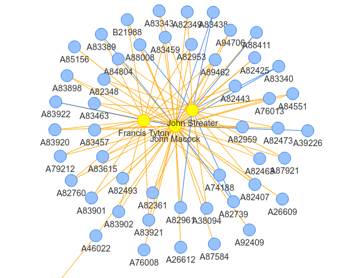
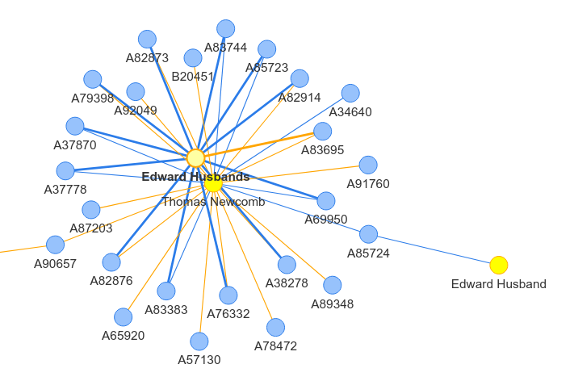

3. Working with Metadata, Creating Text Networks¶
The previous notebooks focus on working directly with EarlyPrint texts, as data. But we also provide a range of tools for working metadata: information about the texts. Using metadata, we can supplement our study of texts with information about who authored a text, when it was published, who the printers and publishers were, and more. Knowing how to retrieve this metadata and combine it with the data from the text itself is a crucial skill for working with the EarlyPrint corpus.
Much of the metadata for EarlyPrint is inherited from EEBO-TCP (the Text Creation Partnership), which is itself inherited from the ESTC (English Short Title Catalog). If these acronyms don’t yet mean anything to you, I’ve written a blog post that covers many aspects of our metadata and the improvements we’ve made to it. To make a long story short, our updated and improved metadata is available in its own Github repository.
The EarlyPrint site offers a number of ways to explore our metadata. The most fine-grained is our Catalog Search tool. You can also browse and download facets of metadata using our Download page.
In this tutorial, we’ll cover the following:
where to download metadata
how to parse, or process, metadata XML
using our improved metadata to create networks of texts and their printers
3.1. Downloading Metadata¶
If you look at our Catalog Search or Download page, you’ll see that you can search through various metadata fields and download a CSV (comma-separated value) file of just the subset of metadata you care about. You can use this to get metadata just on texts published in a single year, or ones just by a certain author or on a certain subject.
For many coding workflows, you may want to do the same sort of operation from within a Python environment. Start with the complete set of metadata, carve out a subset you care about, and use that subset to do something else.
The files used in this tutorial can be found in the standalone metadata Github repository. From the Github page, you can download all the files as .zip archive, or you can “clone” the repository onto your own computer.
For this first part of the tutorial, you’ll need to install lxml by running pip install lxml on the command line. You may already have it installed from our previous tutorials. All subsequent libraries can be installed the same way. For help on this, see the Programming Historian’s Installing Python Modules with pip.
3.2. A Single Metadata File¶
If there’s just one text you care about, you can download our metadata directly into a Python script using the requests module. If you’ve already found or downloaded a text using the EarlyPrint library or lab, you’ll notice that each text comes with a unique ID number, inherited from the TCP. (If you’re working with our XML files, the ID is also the filename.)
As an example, let’s find metadata for the text we used in our first tutorial, Margaret Cavendish’s Observations Upon Experimental Philosophy and The Blazing World. The TCP ID for this text is A53049. Using that and the base url for our metadata GitHub repository, we can retrieve the metadata XML in just a few lines of code:
# Import libraries
from lxml import etree
import requests
tcp_id = "A53049"
# A "formatting" string that lets us put any TCP ID we want into the right place
base_url = f'https://raw.githubusercontent.com/earlyprint/epmetadata/master/header/{tcp_id}_header.xml'
# Using requests, "get" the text from the file at this web location
raw_text = requests.get(base_url).text
print(raw_text)
<?xml version="1.0" encoding="UTF-8"?><?xml-model href="../schema/ep_teiHeader.rng" type="application/xml" schematypens="http://relaxng.org/ns/structure/1.0"?><teiHeader xmlns="http://www.tei-c.org/ns/1.0">
<fileDesc>
<titleStmt>
<title>Observations upon experimental philosophy to which is added The description of a new blazing world / written by the thrice noble, illustrious, and excellent princesse, the Duchess of Newcastle.</title>
<author>Newcastle, Margaret Cavendish, Duchess of, 1624?-1674.</author>
</titleStmt>
<publicationStmt>
<publisher>EarlyPrint project</publisher>
<idno type="tcpid">A53049</idno>
<idno type="estcid">R32311</idno>
</publicationStmt>
<sourceDesc>
<biblFull>
<titleStmt>
<title>Observations upon experimental philosophy to which is added The description of a new blazing world / written by the thrice noble, illustrious, and excellent princesse, the Duchess of Newcastle.</title>
<author gender="F">Newcastle, Margaret Cavendish, Duchess of, 1624?-1674.</author>
</titleStmt>
<extent>654 p. in various pagings. </extent>
<publicationStmt>
<publisher>Printed by <persName type="printer">A. Maxwell</persName> ...,</publisher>
<pubPlace>London :</pubPlace>
<date when="1666">1666.</date>
</publicationStmt>
<notesStmt>
<note>"The description of a new world called the blazing new world" has separate t.p.</note>
<note>Reproduction of original in the University of Illinois (Urbana-Champaign Campus). Library.</note>
</notesStmt>
</biblFull>
<listPerson type="tcp_ep">
<person type="printer">
<persName>A. Maxwell</persName>
</person>
</listPerson>
<listPerson type="estc_ep">
<person role="creator">
<persName>Newcastle, Margaret Cavendish, <roleName>Duchess of,</roleName></persName>
<birth>1624?</birth>
<death>1674.</death>
<sex value="F"/>
</person>
</listPerson>
</sourceDesc>
</fileDesc>
<profileDesc>
<textClass>
<keywords n="general">
<list>
<item n="650a">Philosophy, English</item>
<item n="650a">Voyages, Imaginary</item>
</list>
</keywords>
<keywords n="temporal">
<list>
<item n="650y">17th century.</item>
</list>
</keywords>
<keywords n="geographic">
<list>
<item n="752a">Great Britain</item>
<item n="752b">England</item>
<item n="752d">London.</item>
</list>
</keywords>
</textClass>
</profileDesc>
</teiHeader>
We’ve now retrieved the XML from our metadata file for this text. Note that it’s very short but includes lots of key information about the text, including its author, title, and date of publication. It also includes information from the text’s imprint, including (in this case) the name of the printer.
Since this is an XML file, we can retrieve information from it using lxml in much the same way as we did when we parsed the text in our earlier tutorial.
parser = etree.XMLParser(collect_ids=False, encoding='utf-8')
nsmap={'tei': 'http://www.tei-c.org/ns/1.0'}
# Parse your XML file into a "tree" object
metadata = etree.fromstring(raw_text.encode('utf8'), parser)
# Get information from the XML
# Get the title, using .find()
print("Title:", metadata.find(".//tei:sourceDesc//tei:title", namespaces=nsmap).text, "\n")
# Get the author, using the same technique
print("Author:", metadata.find(".//tei:sourceDesc//tei:author", namespaces=nsmap).text, "\n")
# Get the original date, as it was entered by catalogers
print("Original Date:", metadata.find(".//tei:sourceDesc//tei:date", namespaces=nsmap).text, "\n")
# Get the 4-digit EarlyPrint parsed date, using .get()
print("Parsed Date:", metadata.find(".//tei:sourceDesc//tei:date", namespaces=nsmap).get("when"), "\n")
# Get the printer by finding based on the "type" attribute
print("Printer:", metadata.find(".//tei:person[@type='printer']/tei:persName", namespaces=nsmap).text, "\n")
Title: Observations upon experimental philosophy to which is added The description of a new blazing world / written by the thrice noble, illustrious, and excellent princesse, the Duchess of Newcastle.
Author: Newcastle, Margaret Cavendish, Duchess of, 1624?-1674.
Original Date: 1666.
Parsed Date: 1666
Printer: A. Maxwell
3.3. All of the Metadata¶
The above method works fine if you need data on just one text, but what about analyzing the data for all of the texts at once? To do this, you’ll need to download all of the metadata files from Github. But once you do, the code is not all that different from working with a single file.
In the following code block, we’ll get the title, author, and date for every single text in the EarlyPrint corpus. We’ll aggregate the information and store it in a pandas DataFrame for later use and analysis. For more on pandas, see their documentation.
n.b. Some of the dates in our corpus are ranges rather than exact years, which are handled by notBefore and notAfter attributes of the <date> element. I’m skipping over those in this example, but you may want to retain them in your analysis. Find out more in my metadata blog post.
import pandas as pd
import glob
# Get the full list of metadata files
# (You'll change this line based on where the files are on your computer)
files = glob.glob("../../epmetadata/header/*.xml")
all_data = [] # Empty list for data
index = [] # Empty list for TCP IDs
for f in files: # Loop through each file
tcp_id = f.split("/")[-1].split("_")[0] # Get TCP ID from filename
metadata = etree.parse(f, parser) # Create lxml tree for metadata
title = metadata.find(".//tei:sourceDesc//tei:title", namespaces=nsmap).text # Get title
# Get author (if there is one)
try:
author = metadata.find(".//tei:sourceDesc//tei:author", namespaces=nsmap).text
except AttributeError:
author = None
# Get date (if there is one that isn't a range)
try:
date = metadata.find(".//tei:sourceDesc//tei:date", namespaces=nsmap).get("when")
except AttributeError:
date = None
# Add dictionary of data to data list
all_data.append({'title':title,'author':author,'date':date})
# Add TCP ID to index list
index.append(tcp_id)
# Create DataFrame with data and indices
df = pd.DataFrame(all_data, index=index)
df
3.4. Trimming and “Cleaning” Data Fields¶
Though we’ve done a lot of work to make the EarlyPrint data more usable, some fields may still need to be adjusted, trimmed, or edited before they can be analyzed. The Author field, for example, includes birth and death dates for most authors, which a researcher may want to leave out.
There’s no one-size-fits-all approach to doing this sort of adjustment. And though this step is often referred to as “data cleaning,” the task of deciding when and how to “clean” and aggregate data is important intellectual work with serious research implications. How you “clean” data fields will depend on your research question.
Below, I focus on a single data field that we’ll use in the next section: the names of printers. As I discuss in the metadata post, the EarlyPrint metadata takes imprint information a step further by algorithmically parsing out the names of printers, publishers, and booksellers (among others). This process is imperfect, and it leaves some unneccessary characters and unusual spellings in these data fields.
Consider these spelling variants for the name of printer Thomas Newcomb:
Thomas Newcomb
Tho. Newcomb
T[homas] N[ewcomb]
Tho: Newcomb
Ideally, we would want any analysis of printers to recognize that these 4 variants refer to the same person. We can do that by standardizing the data field as we process it. We can create a function to do this:
# Import some built-in libraries
import re, json
# Get a list of standard early modern first name abbreviations, and what they stand for
with open("name_abbrev.json", "r") as abbrevfile:
name_abbrev = json.loads(abbrevfile.read())
def standardize_name(name): # Define our function
name = name.replace("[","").replace("]","") # Remove bracket characters
name = name.strip(",'") # Remove commas and apostrophes from the beginning or end of the name
name = name.replace("Iohn", "John") # Replace Iohn with John (a common spelling variant)
# Finally, look through each abbreviation and, if found,
# replace it with the full first name.
for k,v in name_abbrev.items():
name = re.sub(f"{k}[^a-zA-Z\s]", f"{v}", name)
return name
3.5. Building a Network¶
Now that we’ve created a function for cleaning up the printer names, we can use them for any purpose we like. In the rest of this tutorial, we’ll use printer names to create a network visualization of printers and the books they printed. Such a visualization could be useful for determining how much collaboration among printers there is in the early modern period.
Networks are made up of nodes or entities, and the edges or relationships that connect those entities to one another. If you’re new to networks, you might refer to this Programming Historian tutorial on working with networks in Python. We’ll use a similar Python approach here.
Our goal is to create a bipartite network, one with two different types of nodes: printers and the books they printed. To quickly create a network, we can build an edgelist from our metadata, which is simply a list of which entities are related or linked.
Just as we did when getting author, title, and date above, we can loop through every metadata file and pull out the TCP ID and any printers attached to that text. As we do, we can also “clean” the printer names using our function above. Each connection between a TCP ID (representing a book) and a printer’s name becomes an item in our edgelist.
edgelist = [] # Create an empty list
for f in files: # Loop through each file
tcp_id = f.split("/")[-1].split("_")[0] # Get TCP ID from filename
metadata = etree.parse(f, parser) # Create lxml etree object
# Get a list of all printer's names
printers = metadata.findall(".//tei:person[@type='printer']/tei:persName", namespaces=nsmap)
# Get the date of the printing (if there is one)
try:
date = metadata.find(".//tei:sourceDesc//tei:date", namespaces=nsmap).get("when")
except AttributeError:
date = None
# Add each printers name to the edgelist
for p in printers:
edgelist.append((tcp_id, standardize_name(p.text), {'date':date}))
print(edgelist)
[('B04484', 'E. Crowch', {'date': '1667'}), ('A31706', 'R. Daniel', {'date': '1655'}), ('A67519', 'R. Baldwin', {'date': '1691'}), ('A54137', 'T. Sowle', {'date': '1699'}), ('B02150', 'R. Smith', {'date': '1693'}), ('A36355', 'Nat. Thompson', {'date': '1687'}), ('A61538', 'J. Heptinstall', {'date': '1697'}), ('A78628', 'Robert Barker', {'date': '1642'}), ('A78628', 'the Assignes of John Bill', {'date': '1642'}), ('A01098', 'R.S.', {'date': '1623'}), ('A70655', 'T. Johnson', {'date': '1673'}), ('A76074', 'John Field', {'date': '1649'}), ('A86501', 'M. S.', {'date': '1641'}), ('A86501', 'T. P.', {'date': '1641'}), ('A40363', 'J.D.', {'date': '1697'}), ('A11064', 'Peter Short', {'date': '1601'}), ('A11064', 'the assent of Thomas Morley', {'date': '1601'}), ('A86705', 'T.M.', {'date': '1652'}), ('A84383', 'John Macock', {'date': '1650'}), ('A74156', 'Henry Hills', {'date': '1655'}), ('A74156', 'John Field', {'date': '1655'}), ('A04104', 'the Company of Stationers', {'date': '1625'}), ('A02608', 'the Societie of Stationers', {'date': '1620'}), ('A23570', 'A. Mathewes?', {'date': '1627'}), ('A30884', 'Thomas Milbourn', {'date': '1684'}), ('A09178', 'Thomas Dawson', {'date': '1589'}), ('A44995', 'T.F.', {'date': '1642'}), ('A09129', 'Henrye Denham', {'date': '1566'}), ('B13974', 'Thomas Orwin', {'date': '1590'}), ('B16185', 'Byllinges gate', {'date': '1550'}), ('B16185', 'N. Hill', {'date': '1550'}), ('A02588', 'Humphrey Lownes', {'date': '1609'}), ('A77281', 'Francis Leach', {'date': '1648'}), ('A26796', 'J. Darby', {'date': '1674'}), ('A18589', 'William Stansby', {'date': '1610'}), ('A02764', 'Melch. Bradwood', {'date': '1608'}), ('B13063', 'Robert Barker', {'date': '1633'}), ('B12200', 'Bernard Alsop', {'date': '1622'}), ('A92775', 'E.M.', {'date': '1650'}), ('A92775', 'T.R.', {'date': '1650'}), ('A84480', 'Abel Roper', {'date': '1660'}), ('A84480', 'Printors sic to the Council of State', {'date': '1660'}), ('A84480', 'Thomas Collins', {'date': '1660'}), ('A78144', 'M.S.', {'date': '1648'}), ('A42315', 'E. Raban', {'date': '1649'}), ('A22536', 'Robert Barker', {'date': '1630'}), ('A96937', 'William Du-Gard', {'date': '1651'}), ('A86160', 'John Macock', {'date': '1653'}), ('A10769', 'me Robert Redman', {'date': '1540'}), ('A08434', 'Peter Short', {'date': '1594'}), ('A07923', 'Andro Hart', {'date': '1615'}), ('A02151', 'Elizabeth Purslowe', {'date': '1636'}), ('A54840', 'Leonard Lichfield', {'date': '1691'}), ('A58713', 'J. Taylor', {'date': '1688'}), ('B13694', 'Iames Short', {'date': '1622'}), ('B13694', 'John Lichfield', {'date': '1622'}), ('A18697', 'Rychard Kele', {'date': '1545'}), ('A59161', 'T.N.', {'date': '1674'}), ('A07251', 'John Norton', {'date': '1632'}), ('A10520', 'Reginalde Wolfe', {'date': '1556'}), ('A16748', 'George Purslowe', {'date': '1616'}), ('A07555', 'Augustine Mathewes', {'date': '1637'}), ('B21286', 'George Croom', {'date': '1686'}), ('A26353', 'I.L.', {'date': '1643'}), ('A00228', 'John Day', {'date': '1561'}), ('A16615', "W. Jones' secret press", {'date': '1606'}), ('A07819', 'Robert Barker', {'date': '1639'}), ('A61853', 'M.D.', {'date': '1672'}), ('A61853', 'T.R.', {'date': '1672'}), ('A21172', 'William Stansby', {'date': '1623'}), ('A50181', 'Bartholomew Green', {'date': '1700'}), ('A50181', 'John Allen', {'date': '1700'}), ('A08438', 'Thomas Coldwell', {'date': '1565'}), ('A36594', 'T.N.', {'date': '1673'}), ('A58902', 'R.C.', {'date': '1647'}), ('A03127', 'John Alde', {'date': '1560'}), ('A65552', 'John Brent', {'date': '1691'}), ('A96206', 'R. Austin', {'date': '1648'}), ('A04859', 'G. Eld', {'date': '1617'}), ('A42886', 'Henry Hills', {'date': '1687'}), ('A58032', 'J.D.', {'date': '1680'}), ('A09431', 'Robert Walde-graue', {'date': '1585'}), ('A65783', '& Thomas Dieas', {'date': '1658'}), ('A65783', 'J.M. impensis Jo. Martin', {'date': '1658'}), ('A65783', 'James Allestry', {'date': '1658'}), ('A67758', 'Mr Swinnock M.A.', {'date': '1659'}), ('A67758', 'this authour; which', {'date': '1659'}), ('A09404', 'G.E.', {'date': '1623'}), ('A01167', 'William Iones', {'date': '1618'}), ('A87650', 'T. F.', {'date': '1642'}), ('B05565', 'the heirs and successors of Andrew Anderson', {'date': '1697'}), ('A96361', 'A.M.', {'date': '1653'}), ('A68977', 'B. Alsop', {'date': '1620'}), ('A85304', 'T.R.', {'date': '1656'}), ('A49064', 'Andrew Clark', {'date': '1671'}), ('A16133', 'John Wayland', {'date': '1556'}), ('A92551', 'Evan Tyler', {'date': '1648'}), ('A66288', 'Charles Bill, and the executrix of Thomas Newcomb', {'date': '1692'}), ('A63561', 'E. Mallet', {'date': '1684'}), ('A62398', 'the heir of Andrew Anderson', {'date': '1688'}), ('A55522', 'R. Austin', {'date': '1645'}), ('A64738', 'E.H.', {'date': '1676'}), ('A42274', 'Steven Swart', {'date': '1672'}), ('A86512', 'B.A.', {'date': '1647'}), ('B02642', 'Thomas Milbourn', {'date': '1671'}), ('A73707', 'T.S.', {'date': '1622'}), ('A74620', 'Leonard Lichfield', {'date': '1643'}), ('A56749', 'J.R.', {'date': '1695'}), ('A09272', 'R. Young', {'date': '1629'}), ('A89832', 'T.L.', {'date': '1656'}), ('A93131', 'E. Cotes', {'date': '1655'}), ('A11365', 'Elizabeth Allde, Are to be sould', {'date': '1629'}), ('A11365', 'Thomas Walkley', {'date': '1629'}), ('A02921', 'T. East?', {'date': '1577'}), ('A90237', 'John Canne.', {'date': '1644'}), ('A26195', 'M.F.', {'date': '1684'}), ('A04618', 'William Stansby', {'date': '1614'}), ('A38604', 'Thomas Newcomb', {'date': '1650'}), ('A87100', 'E. Purslow.', {'date': '1647'}), ('A46150', 'John Crook', {'date': '1662'}), ('A07210', 'George Purslowe', {'date': '1624'}), ('A22151', 'Assignes of Robert Barker', {'date': '1618'}), ('A22151', 'Bonham Norton', {'date': '1618'}), ('A22151', 'Deputies', {'date': '1618'}), ('A22151', 'John Bill', {'date': '1618'}), ('A89867', 'A.M.', {'date': '1649'}), ('A05158', 'Ihon Daye', {'date': '1550'}), ('A10080', 'Edward All-de', {'date': '1624'}), ('A66111', 'B. Green', {'date': '1650'}), ('A66111', 'J. Allen', {'date': '1650'}), ('B13176', 'Robert Barker', {'date': '1640'}), ('A85100', 'B.A.', {'date': '1646'}), ('A90333', 'Leonardi Lichfield. Acad. Typog.', {'date': '1683'}), ('A07590', 'Abel Ieffes', {'date': '1584'}), ('A07590', 'William Dickenson', {'date': '1584'}), ('B20631', 'T.R.', {'date': '1660'}), ('A07778', 'I.H.', {'date': '1627'}), ('A19279', 'Henrie Middleton', {'date': '1575'}), ('A15408', 'John Haviland', {'date': '1633'}), ('A22070', 'Robert Barker', {'date': '1611'}), ('A36275', 'John Bringhurst', {'date': '1683'}), ('A81246', 'E.M.', {'date': '1655'}), ('A81246', 'T.R.', {'date': '1655'}), ('A21263', 'Edward Griffin', {'date': '1616'}), ('A17136', 'John Windet', {'date': '1609'}), ('A53308', 'Thomas Ratcliffe', {'date': '1663'}), ('A68668', 'John VVindet', {'date': '1585'}), ('A19499', 'Edward Griffin', {'date': '1615'}), ('A19521', 'I. White', {'date': '1620'}), ('A10040', 'Nicholas Okes', {'date': '1621'}), ('B00721', 'Nicholas Okes', {'date': '1616'}), ('A07719', 'Thomas Orwin', {'date': '1588'}), ('A48748', 'B. Motte', {'date': '1696'}), ('A83341', 'Henry Hills', {'date': '1654'}), ('A83341', 'William du-Gard', {'date': '1654'}), ('B24782', 'Joseph Ray', {'date': '1690'}), ('A95676', 'F.N.', {'date': '1648'}), ('A55245', 'John Hayes', {'date': '1670'}), ('A89453', 'R.I.', {'date': '1650'}), ('A22079', 'Robert Barker', {'date': '1613'}), ('A10134', 'H. Lownes', {'date': '1625'}), ('A19071', 'Thomas Vautroullier', {'date': '1577'}), ('B19091', 'Robert Barker', {'date': '1641'}), ('A08925', 'R. Badger', {'date': '1634'}), ('A17624', 'Thomas Este', {'date': '1605'}), ('A39979', 'J.B.', {'date': '1688'}), ('A92848', 'Peter Cole', {'date': '1648'}), ('A14338', 'Edward Allde', {'date': '1591'}), ('A78180', 'John Dawson', {'date': '1646'}), ('A29564', 'L. Lichfield', {'date': '1643'}), ('A85938', 'Matthew Simmons', {'date': '1646'}), ('B28070', 'T.N.', {'date': '1680'}), ('A07176', 'John Wolfe', {'date': '1587'}), ('A19379', 'William Stansby', {'date': '1611'}), ('A27042', 'A.M.', {'date': '1660'}), ('A27042', 'R.W.', {'date': '1660'}), ('A25917', 'Henry Hall.', {'date': '1646'}), ('A07314', 'E. Alde', {'date': '1611'}), ('A83469', 'Edward Husband', {'date': '1650'}), ('A83469', 'John Field', {'date': '1650'}), ('A73370', 'G. Ppurslowe', {'date': '1622'}), ('A45121', 'Thomas Snowden', {'date': '1699'}), ('A34548', 'R. Cotes', {'date': '1647'}), ('A52992', 'Nathaniel Thompson', {'date': '1683'}), ('A08091', 'E. Allde', {'date': '1599'}), ('B15392', 'Felix Kyngston', {'date': '1621'}), ('A22425', 'Bonham Norton', {'date': '1626'}), ('A22425', 'John Bill', {'date': '1626'}), ('A22425', 'Printers to the Kings most Excellent Maiestie', {'date': '1626'}), ('A23445', 'me Robertum Redman, commorantem', {'date': '1531'}), ('A14497', 'William Iones', {'date': '1628'}), ('A15833', 'Thomas Este', {'date': '1597'}), ('A35962', 'E.P.', {'date': '1647'}), ('A63801', 'Andrew Sowle', {'date': '1688'}), ('A63504', 'command', {'date': '1647'}), ('A86752', 'Henry Hills', {'date': '1654'}), ('A81210', 'G.M.', {'date': '1646'}), ('A26745', 'Thomas Basset', {'date': '1684'}), ('A18480', 'William Seres', {'date': '1568'}), ('A66215', "Charles Bill and the executrix of Thomas Newcomb, deceas'd", {'date': '1697'}), ('A27445', 'Thomas Hodgkin', {'date': '1690'}), ('B13022', 'Robert Barker', {'date': '1630'}), ('A64225', 'John Bringhurst', {'date': '1683'}), ('A02962', 'John VVoolfe', {'date': '1589'}), ('A55818', 'J. H.', {'date': '1697'}), ('A02947', 'Olyuer Iacobson i.e. A. Goinus', {'date': '1543'}), ('A82476', 'Henry Hills', {'date': '1659'}), ('A82476', 'John Field', {'date': '1659'}), ('A82453', 'Henry Hills', {'date': '1657'}), ('A82453', 'John Field', {'date': '1657'}), ('A76321', 'F. Coles', {'date': '1700'}), ('A76321', 'T. Vere', {'date': '1700'}), ('A76321', 'I. Wright', {'date': '1700'}), ('B03351', 'Edward Jones', {'date': None}), ('B05405', 'the successors of Andrew Anderson', {'date': '1693'}), ('B12557', 'Felix Kyngston', {'date': '1613'}), ('A22027', 'Robert Barker', {'date': '1606'}), ('A94756', 'A. Miller', {'date': '1647'}), ('A22396', 'Bonham Norton', {'date': '1625'}), ('A22396', 'John Bill', {'date': '1625'}), ('A43218', 'N.G.', {'date': '1662'}), ('A17165', 'Valentine Sims', {'date': '1595'}), ('A90974', 'T. Paine', {'date': '1645'}), ('A13541', 'Felix Kyngston', {'date': '1620'}), ('A78308', 'Robert Ibbitson', {'date': '1648'}), ('A02983', 'T. Scarlet?', {'date': '1590'}), ('A58108', 'Elizabeth Holt', {'date': '1689'}), ('A06769', 'Iohannes Wreittoun', {'date': '1630'}), ('A10664', 'George Purslowe', {'date': '1632'}), ('A06630', 'James Roberts', {'date': '1596'}), ('A15127', 'Henrie Bynneman', {'date': '1572'}), ('A10724', 'J. Kingston', {'date': '1582'}), ('A40495', 'W. Downing', {'date': '1699'}), ('A29823', 'E. Griffin', {'date': '1641'}), ('A78016', 'Stephen Dagnall', {'date': '1650'}), ('A84207', 'Bernard Alsop.', {'date': '1644'}), ('A25921', 'J. Nutt', {'date': '1700'}), ('A84546', 'Robert Ibbitson', {'date': '1648'}), ('A00291', 'John Beale', {'date': '1639'}), ('A66601', 'T.S.', {'date': '1690'}), ('A68344', 'R. Wolfe', {'date': '1545'}), ('A10659', 'Felix Kyngston', {'date': '1631'}), ('A71329', 'Nycholas le Roux', {'date': '1538'}), ('A30945', 'J. Redmayne', {'date': '1681'}), ('A06140', 'John Kingston?', {'date': '1573'}), ('A06140', 'John Charlewood', {'date': '1573'}), ('A01236', 'Christopher Barkar', {'date': '1577'}), ('A10479', 'William Stansby', {'date': '1611'}), ('B03311', 'the heir of Andrew Anderson', {'date': '1676'}), ('A19541', 'R. Barker', {'date': '1604'}), ('A58430', 'T.N.', {'date': '1671'}), ('A14353', 'John Daye.', {'date': '1568'}), ('A14353', 'decennium. These bookes', {'date': '1568'}), ('A04391', 'T. Snodham', {'date': '1614'}), ('B05709', 'the heir of Andrew Anderson', {'date': '1693'}), ('A03408', 'Ihon Kyngston', {'date': '1580'}), ('A10748', 'VV. Stansby', {'date': '1612'}), ('A64888', 'J. Macock', {'date': '1657'}), ('A04850', "Eliot's Court Press", {'date': '1619'}), ('A29118', 'Stephen Bulkley', {'date': '1669'}), ('B05462', 'the heir of Andrew Anderson', {'date': '1680'}), ('A97103', 'R.C.', {'date': '1643'}), ('A90682', 'J.G.', {'date': '1658'}), ('A44499', 'Abraham Miller', {'date': '1649'}), ('A13804', 'G. Eld', {'date': '1607'}), ('A21589', 'John Cawood', {'date': '1559'}), ('A21589', 'Rycharde Iugge', {'date': '1559'}), ('A03784', 'B.A.', {'date': '1629'}), ('A03784', 'T.F.', {'date': '1629'}), ('A58921', 'A.G.', {'date': '1680'}), ('A58921', 'J.P.', {'date': '1680'}), ('A02919', 'H. Middleton', {'date': '1581'}), ('A70821', 'Edward Jones', {'date': '1693'}), ('A15877', 'me Richarde wyer', {'date': '1548'}), ('B31883', 'Edward Jones', {'date': '1695'}), ('B31883', 'the heirs and successors of Andrew Anderson. And', {'date': '1695'}), ('A64282', 'Nathaniel Thompson', {'date': '1666'}), ('A00452', 'A. Mathewes', {'date': '1630'}), ('A42064', 'E. Flesher', {'date': '1674'}), ('A10909', 'John Daye', {'date': '1579'}), ('A06191', 'I. Legat', {'date': '1623'}), ('A75556', 'A.N.', {'date': '1641'}), ('A19953', 'John Windet', {'date': '1609'}), ('A42515', 'S. Roycroft', {'date': '1690'}), ('A20836', 'Valentine Simmes', {'date': '1605'}), ('A14016', 'Henry Bynneman', {'date': '1575'}), ('A61109', 'J. Field', {'date': '1665'}), ('A18433', 'Thomas Dawson', {'date': '1580'}), ('A35012', 'C. Brome', {'date': '1698'}), ('B15184', 'A. Conincx', {'date': '1601'}), ('A84514', 'S. Bridge', {'date': '1697'}), ('B03593', 'J.C.', {'date': '1672'}), ('A57375', 'R.W.', {'date': '1657'}), ('A86673', 'J.L.', {'date': '1649'}), ('A66172', "Charles Bill and the executrix of Thomas Newcomb deceas'd", {'date': '1693'}), ('A86499', 'Thomas Roycroft', {'date': '1650'}), ('A21122', 'Andreas Hart', {'date': '1616'}), ('A47644', 'Edward Jones, and published', {'date': '1691'}), ('A47644', 'Randal Taylor', {'date': '1691'}), ('A30337', 'a society of stationers', {'date': '1665'}), ('A21611', 'John Cawood', {'date': '1560'}), ('A21611', 'Rycharde Iugge', {'date': '1560'}), ('A67764', 'Thomas Newcomb', {'date': '1658'}), ('A19326', 'W.S.', {'date': '1612'}), ('A00409', 'Thomas Creede', {'date': '1614'}), ('A18384', 'John Wolfe', {'date': '1591'}), ('A18724', 'Simon Stafford', {'date': '1604'}), ('A66125', 'Edward Jones', {'date': '1688'}), ('A02647', 'George Purslowe', {'date': '1618'}), ('B08429', 'J.A.', {'date': '1694'}), ('B08429', 'Obed. Smith', {'date': '1694'}), ('A28573', '& tous les libraires francois', {'date': '1695'}), ('A28573', 'R. Bentley Libraire', {'date': '1695'}), ('A28573', 'R. Parker', {'date': '1695'}), ('A73757', 'T. Purfoot', {'date': '1611'}), ('A50197', 'T. M.', {'date': '1687'}), ('B29617', 'John Seller', {'date': '1691'}), ('B29617', 'the author', {'date': '1691'}), ('A15651', 'Edward Allde', {'date': '1612'}), ('A53184', 'Langley Curtis', {'date': '1684'}), ('B04915', 'Andrew Anderson', {'date': '1674'}), ('A14963', 'Bonham Norton', {'date': '1598'}), ('A14963', 'Thomas Wight', {'date': '1598'}), ('A37336', 'Matthew Simmons', {'date': '1647'}), ('A55651', 'Henry Hills', {'date': '1684'}), ('A55651', 'Thomas Newcomb', {'date': '1684'}), ('B03148', 'J.S.', {'date': '1680'}), ('A04813', 'Thomas Dawson', {'date': '1596'}), ('A54576', 'Adrian Vlack', {'date': '1657'}), ('A89040', 'William Du-gard', {'date': '1650'}), ('A16755', 'Bernard Alsop', {'date': '1632'}), ('A16755', 'Thomas Fawcet', {'date': '1632'}), ('A55615', 'Robert Ibbitson', {'date': '1656'}), ('A14095', 'W. Jones', {'date': '1631'}), ('A14095', 'the successors of Giles Thorp, and', {'date': '1631'}), ('A84479', 'Abel Roper', {'date': '1660'}), ('A84479', 'Thomas Collins', {'date': '1660'}), ('A06516', 'Thomas Vautrollier', {'date': '1578'}), ('A57811', 'T. Sowle', {'date': '1700'}), ('A69340', 'Robert Barker', {'date': '1601'}), ('A44096', 'L. Lichfield', {'date': '1653'}), ('A31021', 'W.W.', {'date': '1647'}), ('A18415', 'William Stansby', {'date': '1611'}), ('A56616', 'R.N.', {'date': '1671'}), ('A04155', 'Felix Kingston', {'date': '1640'}), ('A68109', 'Humfrey Lownes ', {'date': '1604'}), ('A88605', 'J.G.', {'date': '1659'}), ('A87278', 'Francis Leech', {'date': '1646'}), ('A90214', 'W. Godbid', {'date': '1660'}), ('A19174', 'W. Stansby', {'date': '1617'}), ('A12471', 'John Haviland', {'date': '1630'}), ('B09907', 'Philemon Wollfe', {'date': '1691'}), ('A00209', 'John Woolfe', {'date': '1591'}), ('A68679', 'Edward Allde', {'date': '1613'}), ('A64897', 'M. Simmons', {'date': '1642'}), ('A64897', 'T. Paine', {'date': '1642'}), ('A54528', 'W. Wilson', {'date': '1645'}), ('A57158', 'Thomas Ratcliffe', {'date': '1668'}), ('A20829', 'Iames Roberts', {'date': '1596'}), ('A12509', 'T. Dawson', {'date': '1620'}), ('A65511', 'Thomas Mabb', {'date': '1664'}), ('A96555', "Charles Bill, and the Executrix of Thomas Newcomb deceas'd", {'date': None}), ('A16482', 'Edmund Bollifant', {'date': '1601'}), ('A11065', 'Thomas Este alias Snodham', {'date': '1609'}), ('A52591', 'John Field', {'date': '1659'}), ('B05472', 'Evan Tyler', {'date': '1667'}), ('A02755', 'Bernard Alsop', {'date': '1640'}), ('A02755', 'Thomas Fawcet', {'date': '1640'}), ('A45442', 'R. Norton', {'date': '1659'}), ('A80460', 'Barnard Alsop', {'date': '1645'}), ('A80460', 'Iane Coe.', {'date': '1645'}), ('A90382', 'J. Legatt', {'date': '1653'}), ('A60613', 'J.M.', {'date': '1677'}), ('A64310', 'A. Baldwin', {'date': '1699'}), ('A77832', 'Matthias Cowley', {'date': '1657'}), ('A85582', 'Nat. Thompson', {'date': '1672'}), ('A85582', 'Thomas Ratcliffe', {'date': '1672'}), ('A39993', 'Matthew Walbancke', {'date': '1646'}), ('A34588', 'G.M.', {'date': '1665'}), ('A13312', 'Henry Denham', {'date': '1570'}), ('A77420', 'R. Norton', {'date': '1652'}), ('A78831', 'J.C.', {'date': '1647'}), ('A75922', 'A.N.', {'date': '1641'}), ('A54124', 'D.E.', {'date': '1698'}), ('A38876', 'John Gain', {'date': '1681'}), ('A66110', 'Benjamin Harris', {'date': '1691'}), ('A66110', 'John Allen', {'date': '1691'}), ('A56809', 'J.D.', {'date': '1682'}), ('A46564', 'Charles Bill', {'date': '1687'}), ('A46564', 'Henry Hills', {'date': '1687'}), ('A46564', 'Thomas Newcomb', {'date': '1687'}), ('A92968', 'J.C.', {'date': '1657'}), ('B21808', "Charles Bill, and the executrix of Thomas Newcomb, deceas'd", {'date': '1696'}), ('B09394', 'the Heir of Andrew Anderson', {'date': '1690'}), ('A94736', 'Richard Cotes', {'date': '1643'}), ('B02089', 'Evan Tyler', {'date': '1666'}), ('A96516', 'I.F.', {'date': '1646'}), ('A41450', 'Robert White', {'date': '1674'}), ('A74558', 'Henry Hills', {'date': '1654'}), ('A74558', 'William Du-Gard', {'date': '1654'}), ('A86134', 'Stephen Bulkley', {'date': '1642'}), ('A32801', 'E.M.', {'date': '1650'}), ('A32801', 'T.R.', {'date': '1650'}), ('A36110', 'Henry Bonwicke', {'date': '1680'}), ('A12210', 'R. Bishop', {'date': '1638'}), ('A34596', 'T.W.', {'date': '1693'}), ('B26198', 'J.M.', {'date': '1673'}), ('A49049', 'Richard Cotes', {'date': '1650'}), ('B00031', 'Alexander Lacie', {'date': '1570'}), ('A75899', 'J.G.', {'date': '1658'}), ('A86744', 'S. Green', {'date': '1660'}), ('A08088', 'J. Windet', {'date': '1599'}), ('A28344', 'Abel Roper', {'date': '1658'}), ('A49533', 'L.L.', {'date': '1691'}), ('A01165', 'Thomas Creede', {'date': '1597'}), ('A74686', 'M.S.', {'date': '1660'}), ('A19494', 'Nicholas Okes', {'date': '1621'}), ('A17418', 'Felix Kyngston', {'date': '1631'}), ('A00265', 'Ralph Blower', {'date': '1609'}), ('B24753', 'Andrew Crook', {'date': '1691'}), ('B05578', 'Evan Tyler', {'date': '1668'}), ('A46884', 'Henry Artsensand now printed', {'date': '1657'}), ('A46884', 'Lewis de la Fosse', {'date': '1657'}), ('A22458', 'Bonham Norton', {'date': '1628'}), ('A22458', 'John Bill', {'date': '1628'}), ('A22458', 'Printers to the Kings most Excellent Maiestie', {'date': '1628'}), ('A03338', 'John Beale', {'date': '1632'}), ('A92101', 'M. Simmons', {'date': '1649'}), ('A19263', 'J. Charlewood', {'date': '1589'}), ('A64847', 'John Field', {'date': '1657'}), ('A16316', 'George Miller', {'date': '1640'}), ('A18212', 'M. Flesher', {'date': '1633'}), ('A26885', 'R. W.', {'date': '1660'}), ('A04192', 'Leonard Lichfield', {'date': '1638'}), ('A22144', 'Robert Barker', {'date': '1617'}), ('A23334', 'Ihon sic Mayler', {'date': '1543'}), ('A47151', 'William Bradford', {'date': '1693'}), ('A01970', 'George Miller', {'date': '1626'}), ('A55567', 'T.M.', {'date': '1679'}), ('A04154', 'M. Flesher', {'date': '1628'}), ('B05455', 'Andrew Anderson', {'date': '1674'}), ('B18419', 'R. Vaughan', {'date': '1662'}), ('A53210', 'L. Lichfield', {'date': '1644'}), ('A36234', 'W. Wilde', {'date': '1688'}), ('B01214', 'Richard Field demeurant à la rue de VVood-street.', {'date': '1622'}), ('A83441', 'John Field', {'date': '1650'}), ('A81627', 'him purposely omitted', {'date': '1660'}), ('B25413', 'J. Bell', {'date': '1658'}), ('A16549', 'Felix Kyngston', {'date': '1610'}), ('B05438', 'the heirs and successors of Andrew Anderson', {'date': '1698'}), ('A40394', 'J.G.', {'date': '1655'}), ('A18292', 'I.L.', {'date': '1623'}), ('A93317', 'T. Fawcett', {'date': '1643'}), ('A38918', 'Thomas James', {'date': '1679'}), ('A84297', 'Matthew Simmons', {'date': '1648'}), ('A91942', 'G. M.', {'date': '1644'}), ('A77078', 'M.S.', {'date': '1653'}), ('A20849', 'Augustine Mathewes', {'date': '1622'}), ('A58048', 'Jamex Moxon', {'date': '1651'}), ('A79938', 'Richard Baldwin marchand libraire dans Warwick-Lane', {'date': '1695'}), ('A13454', 'E.A.', {'date': '1612'}), ('A03862', 'Henrie Denham', {'date': '1583'}), ('A13263', 'B.A.', {'date': '1627'}), ('A13263', 'T. Favvcet', {'date': '1627'}), ('A66332', "Charles Bill, and the executrix of Thomas Newcomb deceas'd", {'date': '1693'}), ('A08614', 'Ioseph Barnes', {'date': '1586'}), ('A02469', 'Wiyllyam Seres', {'date': '1565'}), ('A89603', 'Evan Tyler', {'date': '1646'}), ('B05566', 'the heir of Andrew Anderson', {'date': '1686'}), ('A74556', 'Henry Hills', {'date': '1654'}), ('A74556', 'William du-Gard', {'date': '1654'}), ('A07556', 'Nicholas Okes', {'date': '1625'}), ('A00434', 'Wyllyam Copland', {'date': '1560'}), ('A66236', 'Charles Bill', {'date': '1689'}), ('A66236', 'Thomas Newcomb', {'date': '1689'}), ('A10685', 'Edward Allde', {'date': '1606'}), ('A64242', 'Thomas Warren', {'date': '1697'}), ('A51603', 'the successors of Andrew Anderson', {'date': '1699'}), ('A90603', 'Marie Okes', {'date': '1645'}), ('A10074', 'George Purslowe', {'date': '1617'}), ('A30309', 'William Bradford', {'date': '1694'}), ('A88403', 'T.F.', {'date': '1658'}), ('A19558', 'John Norton', {'date': '1635'}), ('A75394', 'B.A.', {'date': '1651'}), ('A03450', 'E. Allde', {'date': '1622'}), ('A64131', 'J.F.', {'date': '1661'}), ('A60950', 'W.H.', {'date': '1665'}), ('A73075', 'I.B.', {'date': '1617'}), ('A63068', 'R. N.', {'date': '1654'}), ('A16192', 'Simon Stafford', {'date': '1603'}), ('A87178', 'R. Bishop', {'date': '1647'}), ('A21882', 'the deputies of Christopher Barker', {'date': '1591'}), ('B13803', 'John Wolfe', {'date': '1591'}), ('A09436', 'John Legate', {'date': '1611'}), ('A09436', 'Simon Waterson', {'date': '1611'}), ('A01553', 'Edward Griffin', {'date': '1620'}), ('A05167', 'F. Kingston', {'date': '1621'}), ('A79587', 'Leonard Lichfield', {'date': None}), ('B02484', 'Stephen Bulkley', {'date': '1641'}), ('A49122', 'Freeman Collins', {'date': '1689'}), ('A16863', 'A. Scoloker', {'date': '1548'}), ('A16863', 'W. Seres', {'date': '1548'}), ('A70783', 'Leonard Lichfield', {'date': '1645'}), ('A62380', 'Richard Hodgkinsonne', {'date': '1642'}), ('A62590', 'A. Maxwell', {'date': '1675'}), ('A07554', 'William Jaggard', {'date': '1611'}), ('A15427', 'P. Short', {'date': '1598'}), ('B19172', 'Leonard Lichfield', {'date': '1643'}), ('B23896', 'J.G.', {'date': '1657'}), ('A50002', 'John Field', {'date': '1663'}), ('A24372', 'Edward Jones', {'date': '1689'}), ('A14530', 'impress.', {'date': '1544'}), ('A06381', 'John Allde', {'date': '1569'}), ('B05253', 'Andrew Anderson', {'date': '1674'}), ('A65379', 'Will. Bonny', {'date': '1685'}), ('A90320', 'Lichfieldianis Academiæ Typog.', {'date': '1663'}), ('A54917', 'J.C.', {'date': '1654'}), ('A21913', 'the deputies of Christopher Barker', {'date': '1595'}), ('A21338', 'me John̄ Skot, dwellynge', {'date': '1525'}), ('A01327', 'John Awdely', {'date': '1571'}), ('A15599', 'Richard Field Impensis Georg. Bishop', {'date': '1605'}), ('A06727', 'typographica Richardi Field', {'date': '1614'}), ('A66301', "Charles Bill, and the executrix of Thomas Newcomb, deceas'd", {'date': '1694'}), ('A42605', ' J. R.', {'date': '1680'}), ('B04961', 'Edward Crowch', {'date': '1665'}), ('A74561', 'Henry Hills', {'date': '1654'}), ('A74561', 'William du-Gard', {'date': '1654'}), ('A80737', 'J. Hayes', {'date': '1659'}), ('A44428', 'J. Dawks', {'date': '1695'}), ('A63544', 'Edward Jones', {'date': '1700'}), ('B03645', 'Edward Crouch', {'date': '1658'}), ('B14689', 'I. Windet', {'date': '1597'}), ('A33276', 'Henry Hills', {'date': '1652'}), ('A88924', 'B. Green', {'date': '1699'}), ('A88924', 'J. Allen', {'date': '1699'}), ('A16534', 'John Wreittoun', {'date': '1628'}), ('A01902', 'M. Flesher', {'date': '1636'}), ('A08059', 'John Charlewood', {'date': '1590'}), ('A85462', 'John Macock', {'date': '1646'}), ('A72222', 'Henry Bynneman', {'date': '1575'}), ('A67875', 'D. Maxwell', {'date': '1660'}), ('A52031', 'Andrew Sowle', {'date': '1688'}), ('A31076', 'J.H.', {'date': '1693'}), ('A08896', 'Nicholas Okes', {'date': '1617'}), ('A19272', 'Ralphe Newbery', {'date': '1580'}), ('A11912', 'Thomas Colwell', {'date': '1566'}), ('A81912', 'G.M.', {'date': '1643'}), ('A10211', '& Octauian Pullen', {'date': '1639'}), ('A10211', 'Jean Raworth, pour George Thomason', {'date': '1639'}), ('A10211', 'à la Rose, au Cimetiere de Sainct Paul', {'date': '1639'}), ('A02462', 'Felix Kyngston', {'date': '1607'}), ('A54390', 'Thomam Harperum', {'date': '1644'}), ('A89098', 'John Crook', {'date': '1665'}), ('A02652', 'R. Robinson?', {'date': '1596'}), ('A56612', 'J. Hayes', {'date': '1665'}), ('A60846', 'George Croom', {'date': '1684'}), ('A47322', 'J.H.', {'date': '1693'}), ('A07906', 'Nicholas Okes', {'date': '1618'}), ('A19162', 'Wynkyn de Worde', {'date': '1496'}), ('A61588', 'Rob. White', {'date': '1665'}), ('A21639', 'John Cawood', {'date': '1562'}), ('A21639', 'Rycharde Iugge', {'date': '1562'}), ('A28126', 'Mr. Hargrave', {'date': '1694'}), ('A28126', 'Mr. Jayand', {'date': '1694'}), ('A28126', 'Mr. Partridge', {'date': '1694'}), ('A28126', 'Mr. Southby', {'date': '1694'}), ('A34328', 'Henry Bonwicke', {'date': '1681'}), ('A88586', 'J.M.', {'date': '1649'}), ('A00227', 'Reynold Wolfe', {'date': '1549'}), ('B20451', 'Thomas Newcomb', {'date': '1660'}), ('A53496', 'VVilliam Bladen', {'date': '1654'}), ('A03924', 'Marmaduke Parsons', {'date': '1638'}), ('A55678', 'H. Hall', {'date': '1645'}), ('A49256', 'R. Cotes', {'date': '1647'}), ('A32062', 'a perfect copy', {'date': '1651'}), ('A05376', 'Henrie Bynneman', {'date': '1570'}), ('A12971', 'G. Bishop R. Newberry', {'date': '1599'}), ('A12971', 'R. Barker', {'date': '1599'}), ('A00529', 'Richard Oulton ', {'date': '1637'}), ('A54557', 'T.N.', {'date': '1673'}), ('A28024', 'J.D.', {'date': '1679'}), ('A09848', 'R. Shorleyker', {'date': '1624'}), ('A66315', 'Charles Bill', {'date': '1689'}), ('A66315', 'Thomas Newcomb', {'date': '1689'}), ('A20605', 'John Bill', {'date': '1617'}), ('A07393', 'E. Whitchurch', {'date': '1546'}), ('A00267', 'H. Denham', {'date': '1571'}), ('A28328', 'Robert Sanders', {'date': '1661'}), ('A57483', 'W. Bentley', {'date': '1650'}), ('A56097', 'Richard Janeway', {'date': '1689'}), ('A08926', 'R. Barker', {'date': '1610'}), ('A13499', 'Nicholas Okes', {'date': '1622'}), ('A12363', 'J. Danter', {'date': '1595'}), ('A00483', 'Thomas Berthelet', {'date': '1544'}), ('A09974', 'V.S.', {'date': '1603'}), ('A06534', 'John Cousturier', {'date': '1634'}), ('A03482', 'Henry Binneman', {'date': '1572'}), ('A43426', 'T.R.', {'date': '1677'}), ('A73162', 'W. Iones.', {'date': '1620'}), ('A05229', 'August Reginald Majest. Typographus', {'date': '1617'}), ('A05229', 'Thomas Finlason', {'date': '1617'}), ('A58833', 'Richard Janeway', {'date': '1689'}), ('A49440', 'J.G.', {'date': '1663'}), ('A51260', 'W. Marshall', {'date': '1700'}), ('A43559', 'E. Cotes', {'date': '1657'}), ('A09990', 'I. Dawson', {'date': '1629'}), ('B24774', 'Andrew Crook', {'date': '1692'}), ('A95479', 'Richard Cotes', {'date': '1648'}), ('A50214', 'M.J', {'date': '1670'}), ('A50214', 'S.G.', {'date': '1670'}), ('A29273', 'M.S.', {'date': '1653'}), ('A85476', 'James Cottrel', {'date': '1660'}), ('A16189', 'VVilliam Johnson Blaeu', {'date': '1612'}), ('A16189', 'the Old Bridge', {'date': '1612'}), ('A07805', 'W. Stansby', {'date': '1610'}), ('A45982', 'John Crook', {'date': '1662'}), ('A40872', 'W. Wilson', {'date': '1662'}), ('A87576', 'Edward Griffin', {'date': '1642'}), ('A83124', 'R. Raworth.', {'date': '1645'}), ('A83124', 'Richard Cotes', {'date': '1645'}), ('A90884', 'Robert White', {'date': '1651'}), ('A85382', 'J.M.', {'date': '1653'}), ('A00164', 'Edward Allde', {'date': '1626'}), ('A26071', 'W. Bonny', {'date': '1693'}), ('A17049', 'H. Lownes', {'date': '1614'}), ('A45432', 'W.H.', {'date': '1651'}), ('A90816', 'F.L.', {'date': '1676'}), ('A65055', 'George Larkin', {'date': '1684'}), ('A11881', 'B. Alsop', {'date': '1636'}), ('A11881', 'T. Fawcet', {'date': '1636'}), ('B23618', 'Henry Hills', {'date': '1687'}), ('A00667', 'R. Read', {'date': '1603'}), ('B05329', 'the heir of Andrew Anderson', {'date': '1686'}), ('A19865', 'Rogeri Danielis almæ Academiæ typographi', {'date': '1640'}), ('A76372', 'T. Maxey', {'date': '1652'}), ('A51206', 'Samuel Green', {'date': '1674'}), ('A87315', 'Thomas Paine', {'date': '1642'}), ('A42049', 'E. Flesher', {'date': '1673'}), ('A17946', 'Henrie Denham', {'date': '1584'}), ('A17946', 'Rafe Newberie', {'date': '1584'}), ('A85072', 'J.C.', {'date': '1654'}), ('A92378', 'Edward Jones', {'date': '1691'}), ('A81559', 'Thomas Harper', {'date': '1649'}), ('A36602', 'T.N.', {'date': '1676'}), ('A90506', 'Richard Constable', {'date': '1649'}), ('B03853', 'the heir of Andrew Anderson', {'date': '1685'}), ('A74950', 'Iaques Fierens boeckvercooper woonende inde Gist-straet inde Globe', {'date': '1644'}), ('A06245', 'R. Young', {'date': '1629'}), ('B15081', 'Nicholas Okes', {'date': '1620'}), ('A01514', 'H. Bynneman', {'date': '1575'}), ('B21773', 'Christopher Barker', {'date': '1679'}), ('B21773', 'Henry Hills', {'date': '1679'}), ('B21773', 'John Bill', {'date': '1679'}), ('B21773', 'Thomas Newcomb', {'date': '1679'}), ('A20788', 'G. Miller', {'date': '1637'}), ('B02170', 'Thomas Milbourn', {'date': '1673'}), ('A01027', 'Richard Plater', {'date': '1626'}), ('A36691', 'J. Heptinstall;', {'date': '1695'}), ('A15722', 'Nicholas Okes', {'date': '1616'}), ('A97365', 'Bernard Alsop', {'date': '1643'}), ('A22509', 'Bonham Norton', {'date': '1629'}), ('A22509', 'John Bill', {'date': '1629'}), ('A80531', 'John Franke', {'date': '1642'}), ('A14487', 'T. Buck and', {'date': '1632'}), ('A34293', 'J.A.', {'date': '1682'}), ('A32049', 'Leonard Lichfield', {'date': '1644'}), ('A80123', 'R.D.', {'date': '1661'}), ('A32551', 'Christopher Barker', {'date': '1678'}), ('A32551', 'Henry Hills', {'date': '1678'}), ('A32551', 'John Bill', {'date': '1678'}), ('A32551', 'Thomas Newcomb', {'date': '1678'}), ('A84037', 'Iane Coe', {'date': '1645'}), ('A63902', 'H. Hills Jun.', {'date': '1687'}), ('A77397', 'M.F.', {'date': '1647'}), ('A61915', 'E. Cotes', {'date': '1669'}), ('A93028', 'Thomas Brudenell', {'date': '1649'}), ('A82824', 'Robert Barker', {'date': '1642'}), ('A82824', 'the Assignes of John Bill', {'date': '1642'}), ('A74867', 'Robert Wood', {'date': '1652'}), ('A02486', 'Thomas Snodham', {'date': '1613'}), ('B00033', 'Simon Stafford', {'date': '1603'}), ('B26424', 'Freeman Collins', {'date': '1698'}), ('A12032', 'T. Judson', {'date': '1599'}), ('A13255', 'wynkyn de worde', {'date': '1534'}), ('B19842', 'Henry Hills', {'date': '1680'}), ('B19842', 'John Bill', {'date': '1680'}), ('B19842', 'Thomas Newcomb', {'date': '1680'}), ('A21663', 'John Cawood', {'date': '1564'}), ('A21663', 'Richarde Iugge', {'date': '1564'}), ('A01581', 'J. Dawson', {'date': '1624'}), ('A66330', "Charles Bill, and the executrix of Thomas Newcomb deceas'd", {'date': '1692'}), ('A88357', 'T. Mabb', {'date': '1653'}), ('A17654', 'John Daye', {'date': '1581'}), ('A01210', 'the Richt Right Press', {'date': '1640'}), ('A07518', 'Nicholas Okes', {'date': '1613'}), ('A63499', 'Leonard Lichfield', {'date': '1644'}), ('A21161', 'R. Jones', {'date': '1576'}), ('A74567', 'Henry Hills', {'date': '1654'}), ('A74567', 'William du-Gard', {'date': '1654'}), ('A89821', 'Matthew Simons', {'date': '1649'}), ('A19716', 'Simon Stafford', {'date': '1600'}), ('A22634', 'Robert Barker', {'date': '1639'}), ('A22634', 'the Assignes of John Bill', {'date': '1639'}), ('A67910', 'John Streater', {'date': '1659'}), ('A95870', 'G. Dexter', {'date': '1642'}), ('A95870', 'R. Oulton', {'date': '1642'}), ('B14779', 'Nicholas Okes', {'date': '1608'}), ('A13159', 'Arn. Hatfield', {'date': '1600'}), ('A20835', 'Felix Kingston', {'date': '1604'}), ('A15334', 'Robert Walde-graue', {'date': '1587'}), ('A01517', 'John Charlewood', {'date': '1576'}), ('A81809', 'Thomas Fawcet', {'date': '1643'}), ('B05280', 'Session', {'date': '1689'}), ('B05280', 'order of the Lords of Council', {'date': '1689'}), ('B05280', 'the heir of Andrew Anderson', {'date': '1689'}), ('A15420', 'Felix Kyngston', {'date': '1603'}), ('A20710', 'Edwardus Rabanns sic', {'date': '1637'}), ('A36357', 'Nat. Thompson', {'date': '1687'}), ('A19932', 'John Franckton', {'date': '1615'}), ('A95749', 'James Cottrel;', {'date': '1652'}), ('A84472', 'Abel Roper', {'date': '1660'}), ('A84472', 'Thomas Collins', {'date': '1660'}), ('A18357', 'W. Turner', {'date': '1629'}), ('B14994', 'T. Snodham?', {'date': '1622'}), ('A00155', 'Richard Grafton', {'date': '1548'}), ('A48615', 'Benjamin Tooke', {'date': '1670'}), ('A12024', 'Thomas Creede', {'date': '1609'}), ('A12024', 'William White', {'date': '1609'}), ('A22067', 'Robert Barker', {'date': '1611'}), ('A90541', 'Jane Coe.', {'date': '1646'}), ('A43142', 'F. Leach', {'date': '1673'}), ('A15339', 'Robert Waldegrave', {'date': '1585'}), ('A02637', 'Ioannem Foulerum', {'date': '1568'}), ('A35350', 'J. Reid', {'date': '1689'}), ('A58190', 'J. Brudenell', {'date': '1700'}), ('B05430', 'the heirs and successors of Andrew Anderson', {'date': '1695'}), ('B03988', 'John Reid, and to be', {'date': '1698'}), ('B05182', 'the heir of Andrew Anderson', {'date': '1690'}), ('A52334', 'Thomas Buck', {'date': '1652'}), ('A41704', 'A. Maxwell', {'date': '1674'}), ('A82611', 'G. Dexter', {'date': '1641'}), ('A82611', 'R. Oulton', {'date': '1641'}), ('A59547', 'Edoüard Jones, et se vend chez Jean Cailloüé', {'date': '1700'}), ('A25298', 'William Warwick', {'date': '1663'}), ('A32534', 'Christopher Barker', {'date': '1663'}), ('A32534', 'John Bill', {'date': '1663'}), ('A97068', 'A. N.', {'date': '1642'}), ('A02820', 'Wynkyn de Worde', {'date': '1509'}), ('A93343', 'G. Dawson', {'date': '1660'}), ('A16171', 'Claude Morell', {'date': '1614'}), ('A93252', 'S.G.', {'date': '1656'}), ('A78225', 'W. Godbid', {'date': '1671'}), ('A13384', 'Augustine Mathewes', {'date': '1628'}), ('A46362', 'J. Heptinstall', {'date': '1684'}), ('A82373', 'John Field', {'date': '1651'}), ('A07574', 'John Norton', {'date': '1631'}), ('A88786', 'Leonard Lichfield, and now', {'date': '1642'}), ('B02737', 'John Reid', {'date': '1700'}), ('A05137', 'John Beale', {'date': '1614'}), ('A39224', 'Marmaduke Johnson', {'date': '1665'}), ('A56696', 'J. Macock', {'date': '1678'}), ('A38443', 'J.G.', {'date': '1660'}), ('A65559', 'J.M.', {'date': '1663'}), ('B13170', 'Robert Barker', {'date': '1640'}), ('A21269', 'Richard Field', {'date': '1623'}), ('A40819', 'W. Bowyer', {'date': '1700'}), ('A07276', 'P. Short', {'date': '1600'}), ('A21909', 'the deputies of Christopher Barker', {'date': '1594'}), ('A80742', 'Matthew Simmons', {'date': '1648'}), ('A22586', 'Robert Barker', {'date': '1634'}), ('A95529', 'T.H.', {'date': '1652'}), ('A70033', '-- W----', {'date': None}), ('A16629', 'John Dawson', {'date': '1625'}), ('A16720', 'Robert Robinson', {'date': '1596'}), ('B02996', 'the Heir of Andrew Anderson', {'date': '1693'}), ('A53928', 'Alexander Milbourn', {'date': '1687'}), ('A46595', 'James Watson', {'date': '1687'}), ('A46595', '', {'date': '1687'}), ('A20807', 'W. Jones', {'date': '1617'}), ('A93393', 'I.D.', {'date': '1647'}), ('A93393', 'R.I.', {'date': '1647'}), ('A14521', 'Felix Kingston', {'date': '1620'}), ('A14521', 'Thomas Snodham', {'date': '1620'}), ('A30333', 'J.D.', {'date': '1680'}), ('A03457', 'Thomas Purfoot', {'date': '1622'}), ('A06509', 'Wyllyam Marshall i.e. Robert Wyer', {'date': '1536'}), ('A02141', 'John Wolfe', {'date': '1591'}), ('B12730', 'Robert Barker', {'date': '1605'}), ('A35338', 'T. Warren', {'date': '1652'}), ('A84579', 'John Field', {'date': '1649'}), ('A40160', 'John Bringhurst', {'date': '1682'}), ('B09557', 'J. Richardson', {'date': '1686'}), ('A07637', 'Bernard Alsop', {'date': '1618'}), ('A07637', 'Saint Annes Church', {'date': '1618'}), ('A35175', 'J.A.', {'date': '1694'}), ('A57722', 'John Streater', {'date': '1668'}), ('B24725', 'Andrew Crook', {'date': '1690'}), ('A10266', 'Felix Kyngston', {'date': '1624'}), ('A06964', 'I. Dawson', {'date': '1625'}), ('A77921', 'G. Dawson', {'date': '1656'}), ('A38034', 'John Field', {'date': '1651'}), ('A05041', 'A.M.', {'date': '1630'}), ('A85419', 'J.M.', {'date': '1653'}), ('A67323', 'G. Croom', {'date': '1692'}), ('A19966', 'Robert Walde-graue', {'date': '1586'}), ('B05676', 'the heirs and successors of Andrew Anderson', {'date': '1699'}), ('A07488', 'Nicholas Okes', {'date': '1619'}), ('A19923', 'R. Field', {'date': '1599'}), ('A27413', 'E. C.', {'date': '1661'}), ('B25774', 'T. Hodgkin', {'date': '1689'}), ('A23374', 'Rycharde Tottel', {'date': '1584'}), ('A25039', 'Thomas Newcomb ;', {'date': '1685'}), ('A25039', 'the heir of A Anderson', {'date': '1685'}), ('A45559', 'A.M.', {'date': '1659'}), ('A52984', 'Randal Taylor', {'date': '1687'}), ('B03691', 'T.J.', {'date': '1677'}), ('B03691', 'W.L.', {'date': '1677'}), ('A93097', 'Rob. Goodfellow about Midsummer moon.', {'date': '1654'}), ('A72536', 'Arrigo del Bosco i.e. J. Wolfe', {'date': '1588'}), ('A26948', 'E. Whitlock', {'date': '1697'}), ('A94256', 'Maarten van Leeuwen', {'date': '1683'}), ('A78932', 'Robert Ibbitson', {'date': '1647'}), ('A35325', 'S. Bridge', {'date': '1698'}), ('A29738', 'John Reidto be', {'date': '1691'}), ('A18947', 'Thomas Snodham', {'date': '1621'}), ('A07876', 'Thomas Orwin', {'date': '1590'}), ('A51674', 'W. Bowyer', {'date': '1700'}), ('A95030', 'J.F.', {'date': '1642'}), ('A95030', 'L.N.', {'date': '1642'}), ('A07678', 'Augustine Mathews', {'date': '1624'}), ('A04491', 'John Cawood', {'date': '1553'}), ('A72406', 'Thomas Godfray', {'date': '1535'}), ('A82014', 'M. Simmons', {'date': '1652'}), ('A88692', 'Joh. Raworth', {'date': '1644'}), ('A35355', 'Abraham Miller', {'date': '1657'}), ('A00244', 'VVilliam Iaggard', {'date': '1613'}), ('A57420', 'E.B.', {'date': '1657'}), ('A88042', 'C.D.', {'date': '1642'}), ('A88042', 'R.O.', {'date': '1642'}), ('A84887', 'J.C.', {'date': '1659'}), ('A19531', 'H. Lownes', {'date': '1611'}), ('A07388', 'Thomas Dawson', {'date': '1581'}), ('A36772', 'William Du-gard', {'date': '1649'}), ('A39319', 'J. Macock', {'date': '1673'}), ('A24051', 'Thomas Milbourn', {'date': '1681'}), ('A11222', 'Henry Kirkham', {'date': '1573'}), ('A65295', 'Joseph Collier', {'date': '1678'}), ('A04991', 'W. Hall', {'date': '1612'}), ('A34747', 'J. Macock', {'date': '1647'}), ('A18412', "Eliot's Court Press", {'date': '1614'}), ('A73785', 'Robert Barker', {'date': '1610'}), ('A89969', 'T.F.', {'date': '1642'}), ('B12757', 'Robert Barker', {'date': '1607'}), ('A05182', 'Thomas Dawson', {'date': '1587'}), ('A19981', 'J. Lichfield', {'date': '1618'}), ('A19981', 'J. Short', {'date': '1618'}), ('A07663', 'J. Kingston', {'date': '1554'}), ('A17055', 'John Norton', {'date': '1632'}), ('A01438', 'H. Middleton', {'date': '1574'}), ('A49013', 'Samuel Roycroft', {'date': '1694'}), ('A81815', 'T.N.', {'date': '1656'}), ('A04587', 'Elizabeth Allde', {'date': '1630'}), ('A16571', 'William Griffith', {'date': '1561'}), ('A12582', 'me Theophyll Emlos, vndere the sygne of sente Peters kay i.e. widow of C. Ruremund', {'date': '1540'}), ('A41614', 'A.C.', {'date': '1686'}), ('A41614', 'S.H.', {'date': '1686'}), ('A49633', 'George Croom', {'date': '1684'}), ('A16330', 'Felix Kyngston', {'date': '1631'}), ('A66819', 'T.C.', {'date': '1641'}), ('A16936', 'G. Eld', {'date': '1614'}), ('A97276', 'W. Wilson', {'date': '1646'}), ('A69533', 'R.W.', {'date': '1659'}), ('A10391', 'I. Dawson', {'date': '1622'}), ('A90523', 'H.A.', {'date': '1641'}), ('B03323', 'Christopher Higgins', {'date': '1660'}), ('A77399', 'I.C.', {'date': '1647'}), ('B09300', 'John Crooke', {'date': '1663'}), ('A06166', 'Thomas Orwin', {'date': '1591'}), ('A11663', 'Iames Bryson', {'date': '1640'}), ('A74498', 'Henry Hills', {'date': '1654'}), ('A74498', 'William du-Gard', {'date': '1654'}), ('A18261', 'Peter Short', {'date': '1598'}), ('A17084', 'me Richard Iugge', {'date': '1549'}), ('A12983', 'Thomas Creede', {'date': '1609'}), ('B20795', 'Thomas Simmons', {'date': '1659'}), ('A19502', 'G. Purslowe', {'date': '1617'}), ('A88812', 'M. Symmons', {'date': '1649'}), ('A74358', 'Edward Husband', {'date': '1650'}), ('A74358', 'John Field', {'date': '1650'}), ('B00941', 'Robert Stoughton Dwellynge wythin Ludgate', {'date': '1550'}), ('A82267', 'Andrew Coe according to order', {'date': '1644'}), ('A67315', 'G. Croom', {'date': '1691'}), ('A55520', 'Leonard Lichfield', {'date': '1642'}), ('A54695', 'Thomas Leach', {'date': '1660'}), ('A93286', 'R. H.', {'date': '1641'}), ('A32580', 'Christopher Barker', {'date': '1662'}), ('A32580', 'John Bill', {'date': '1662'}), ('A57979', 'Evan Tyler', {'date': '1644'}), ('A14107', 'T. Dawson', {'date': '1586'}), ('A62131', 'Impensis Henry Clements bibliopolæ', {'date': '1700'}), ('A62131', 'Leonard Lichfield', {'date': '1700'}), ('A21626', 'John Cawood', {'date': '1618'}), ('A21626', 'Richard Iugge', {'date': '1618'}), ('A14059', 'the heirs of Arnold Birckman', {'date': '1568'}), ('A17725', 'John Charlewood', {'date': '1584'}), ('A56732', 'George Mosman', {'date': '1693'}), ('A21279', 'Peter Sevestre', {'date': '1602'}), ('A50540', 'T.M.', {'date': '1662'}), ('A83634', 'Richard Cotes', {'date': '1650'}), ('A05405', 'I.B', {'date': '1631'}), ('A87302', 'Andrew Crook', {'date': '1695'}), ('A10060', 'John Windet', {'date': '1609'}), ('A10060', 'the Conduit', {'date': '1609'}), ('B24465', 'Leonard Lichfield', {'date': '1643'}), ('A87080', 'Matthew Simmons', {'date': '1642'}), ('A32484', 'Christopher Barker', {'date': '1666'}), ('A32484', 'John Bill', {'date': '1666'}), ('A03387', 'Humfrey Lownes', {'date': '1627'}), ('B05380', 'the heir of Andrew Anderson', {'date': '1685'}), ('B10271', 'London. And', {'date': '1691'}), ('B10271', 'Ra. Simpson', {'date': '1691'}), ('B10271', 'the bookselers and author.', {'date': '1691'}), ('A22248', 'John Bill', {'date': '1621'}), ('A22248', 'Robert Barker', {'date': '1621'}), ('A49065', 'Andrew Clark', {'date': '1672'}), ('A26705', 'J.R.', {'date': '1684'}), ('B09305', 'William Bladen', {'date': '1657'}), ('A67339', 'Thomas Newcomb', {'date': '1655'}), ('A79334', 'Christopher Barker', {'date': '1660'}), ('A79334', 'John Bill', {'date': '1660'}), ('A06544', 'me Richard Pinson', {'date': '1493'}), ('A05317', 'Ioseph Barnes', {'date': '1613'}), ('A01666', 'T. Dawson', {'date': '1577'}), ('A01666', 'T. Gardyner', {'date': '1577'}), ('A59304', 'T.M.', {'date': '1676'}), ('A73293', 'B. Alsop', {'date': '1624'}), ('A85746', 'T.W.', {'date': '1651'}), ('B05467', 'the heirs and successors of Andrew Anderson', {'date': '1696'}), ('A65385', 'Andrew Crook', {'date': '1698'}), ('A72778', 'VVilliam Iaggard', {'date': '1615'}), ('A14450', 'Richard Field', {'date': '1594'}), ('A87570', 'T.H.', {'date': '1650'}), ('A16603', 'W. Hall', {'date': '1609'}), ('A12343', 'Thomas Orwin', {'date': '1589'}), ('A01080', 'Rychard Tottill', {'date': '1567'}), ('A08240', 'John Day', {'date': '1548'}), ('A08240', 'Wyllyam Seres', {'date': '1548'}), ('A78902', 'Robert Barker', {'date': '1642'}), ('A93295', 'Elizabeth Purslow', {'date': '1646'}), ('A45539', 'I.L.', {'date': '1644'}), ('A00217', 'Thomas Purfoot', {'date': '1620'}), ('B14277', 'William Iones', {'date': '1574'}), ('A06674', 'L. Kellam', {'date': '1639'}), ('A69298', 'Thomas Berthelet', {'date': '1542'}), ('A96402', 'Henry Hall', {'date': '1660'}), ('A58629', 'the heir of A. Anderson', {'date': '1686'}), ('B09501', 'Samuel Green', {'date': '1690'}), ('A09108', 'F. Bellet', {'date': '1604'}), ('A97350', 'Cantrell Legge', {'date': '1621'}), ('B12865', 'Bonham Norton', {'date': '1623'}), ('B12865', 'John Bill', {'date': '1623'}), ('B20239', 'John Field', {'date': '1667'}), ('A49317', 'J. White', {'date': '1699'}), ('A13516', 'E. Purslowe', {'date': '1640'}), ('A50198', 'N. Thompson', {'date': '1676'}), ('A50198', 'T. Ratcliffe', {'date': '1676'}), ('A08154', 'Edward Allde', {'date': '1622'}), ('B31833', 'John Foster', {'date': '1679'}), ('A35858', 'George Larkin', {'date': '1686'}), ('A11010', 'Robert Charteris', {'date': '1606'}), ('A12622', 'John Charlewood?', {'date': '1587'}), ('A81783', 'veusue Maret Marchand libraire dans Salisbury Exchange, dans le Strand', {'date': '1695'}), ('A53865', 'L. Lichfield', {'date': '1678'}), ('A17936', 'R. Badger', {'date': '1633'}), ('A14870', 'N. Okes', {'date': '1613'}), ('A75534', 'T. Mabb', {'date': None}), ('A47134', 'William Bradford', {'date': '1692'}), ('A06704', 'I. Windet', {'date': '1609'}), ('A84285', 'M. Simmons', {'date': '1649'}), ('A90291', 'Peter Cole', {'date': '1650'}), ('A63298', 'E. Mallet', {'date': '1685'}), ('A82024', 'Thomas Newcomb', {'date': '1653'}), ('B06952', 'J. Read', {'date': '1713'}), ('B05225', 'the heir of Andrew Anderson', {'date': '1693'}), ('A52574', 'Bartholomew Green', {'date': '1698'}), ('A52574', 'John Allen', {'date': '1698'}), ('A63906', 'T.B.', {'date': '1685'}), ('A02168', 'Thomas Creede', {'date': '1598'}), ('B01298', 'the heir of Andrew Anderson', {'date': '1686'}), ('A73284', 'I. Dawson.', {'date': '1639'}), ('A16191', 'Henrie Binneman', {'date': '1569'}), ('A74888', 'Robert Wood.', {'date': '1653'}), ('A30870', 'J.G.', {'date': '1665'}), ('A81680', 'J.C.', {'date': '1651'}), ('A49211', 'Thomas Newcomb', {'date': '1674'}), ('A78129', 'J.', {'date': '1649'}), ('A78129', 'J.M.', {'date': '1649'}), ('A78980', 'Leonard Lichfield', {'date': '1645'}), ('A78980', 'R. Austin.', {'date': '1645'}), ('A55373', 'R.', {'date': '1654'}), ('A55373', 'W.L.', {'date': '1654'}), ('A14755', 'Augustine Mathewes', {'date': '1624'}), ('A45579', 'E.M.', {'date': '1653'}), ('A45579', 'T.R.', {'date': '1653'}), ('A49308', 'T. Snowden', {'date': '1683'}), ('A00693', 'T. Snodham', {'date': '1609'}), ('A02982', 'M. Flesher', {'date': '1637'}), ('A21779', 'Christopher Barker', {'date': '1618'}), ('A68967', 'Robert VValdegraue', {'date': '1581'}), ('A17696', 'John Windet', {'date': '1592'}), ('B09295', 'Benjamin Tooke', {'date': '1672'}), ('A30672', 'L. Lichfield', {'date': '1683'}), ('A07765', 'John Wolfe', {'date': '1588'}), ('A44128', 'J. Heptinstall', {'date': '1694'}), ('A18766', 'T. Orwin', {'date': '1588'}), ('A10686', 'G. Eld', {'date': '1623'}), ('A77434', 'R. Raworth', {'date': '1645'}), ('A96566', "Charles Bill, and the Executrix of Thomas Newcomb, deceas'd", {'date': '1700'}), ('A84996', 'Barnard Alsop', {'date': '1645'}), ('A84996', 'Jane Coe.', {'date': '1645'}), ('A19518', 'Edward All-de', {'date': '1620'}), ('A35411', 'Thomas Leach', {'date': '1668'}), ('A10131', 'John Dawson', {'date': '1630'}), ('A84399', 'E. P.', {'date': '1644'}), ('A41110', 'E.M.', {'date': '1647'}), ('A41110', 'T.R.', {'date': '1647'}), ('A09596', 'Edward Allde', {'date': '1591'}), ('A28197', 'T.W.', {'date': '1693'}), ('B05570', 'the heirs and successors of Andrew Anderson', {'date': '1694'}), ('A05729', 'Thomas Este', {'date': '1596'}), ('A46809', 'M.B.', {'date': '1648'}), ('A08279', 'William Stansby', {'date': '1614'}), ('A16435', 'Miles Flesher', {'date': '1628'}), ('A14366', 'John Tisdale', {'date': '1561'}), ('A73983', 'Bonham Norton', {'date': '1626'}), ('A73983', 'John Bill', {'date': '1626'}), ('A76316', 'John Field', {'date': '1647'}), ('A73301', 'Thomas Harper', {'date': '1637'}), ('A82488', 'John Field', {'date': '1651'}), ('A75462', 'the same artifice, as they did', {'date': '1660'}), ('A75462', 'their libellous pamphlets', {'date': '1660'}), ('A87137', 'G. Dawson', {'date': '1657'}), ('A19147', 'R. Field', {'date': '1602'}), ('A10413', 'Robert Robinson', {'date': '1588'}), ('A40978', 'J. Bennet', {'date': '1679'}), ('A01198', 'Henry Sutton', {'date': '1562'}), ('A54225', 'T. Sowle', {'date': '1695'}), ('B22434', 'Awnsham', {'date': '1688'}), ('B22434', 'John Starkey', {'date': '1688'}), ('B22434', 'William Churchill', {'date': '1688'}), ('A26733', 'Moses Pitt', {'date': '1671'}), ('A08181', 'Bernard Alsop', {'date': '1627'}), ('A08181', 'T. Fawcet.', {'date': '1627'}), ('A09213', 'John Charlewood', {'date': '1583'}), ('A59949', 'A.N.', {'date': '1641'}), ('B05185', 'Evan Tyler', {'date': '1661'}), ('A03057', 'T. Paine', {'date': '1640'}), ('A45932', 'T. Leach', {'date': '1664'}), ('A04403', 'Wynkyn de Worde', {'date': None}), ('A37203', 'M.J.', {'date': '1669'}), ('A37203', 'S.G.', {'date': '1669'}), ('A54663', 'G. Dawson', {'date': '1657'}), ('A30243', 'A. Miller', {'date': '1652'}), ('A52900', 'Randle Taylor', {'date': '1689'}), ('A47791', 'Roger Daniel', {'date': '1641'}), ('A16292', 'Thomas Davidson', {'date': '1540'}), ('A87562', 'R. Wood', {'date': '1651'}), ('A11205', 'John Okes', {'date': '1635'}), ('A11205', 'Nicholas', {'date': '1635'}), ('B05480', 'the heir of Andrew Anderson', {'date': '1679'}), ('A14421', 'A. Mathewes', {'date': '1627'}), ('A19422', 'Robert Waldegraue', {'date': '1583'}), ('A19860', 'the English secret press?', {'date': '1600'}), ('A25359', 'J.M.', {'date': '1681'}), ('A17182', 'Iames Nicolson', {'date': '1538'}), ('A62527', 'L.L.', {'date': '1652'}), ('A64893', 'J. Rothwell', {'date': '1647'}), ('A21378', 'Robert Barker, printer ot the Kings most Excellent Maiestie', {'date': '1608'}), ('B05481', 'the heir of Andrew Anderson', {'date': '1679'}), ('A12030', 'Richard Bradock', {'date': '1608'}), ('B21890', 'John Redmayn', {'date': '1659'}), ('B23779', 'John Hardesty', {'date': '1652'}), ('A64596', 'Andrew Sowle', {'date': '1683'}), ('A54457', 'W.G.', {'date': '1671'}), ('A84470', 'Henry Hills', {'date': '1653'}), ('A01216', 'Robert Barker', {'date': '1601'}), ('A78645', 'Robert Barker', {'date': '1642'}), ('A78645', 'the Assignes of John Bill', {'date': '1642'}), ('B05468', 'the heirs and successors of Andrew Anderson', {'date': '1698'}), ('A70305', 'N.T.', {'date': '1674'}), ('A70305', 'T.R.', {'date': '1674'}), ('A33951', 'George Larkin', {'date': '1684'}), ('B11843', 'William How', {'date': '1575'}), ('A76805', 'Richard Cotes', {'date': '1649'}), ('A17029', 'Thomas Scarlet', {'date': '1591'}), ('A71336', 'John Macock', {'date': None}), ('B15867', 'I. Okes', {'date': '1637'}), ('B06652', 'John Hammond', {'date': '1649'}), ('A67665', 'George Croom', {'date': '1688'}), ('A46567', 'Henry Hills', {'date': '1685'}), ('A46567', 'Thomas Newcomb', {'date': '1685'}), ('A70537', 'A. Baldwin', {'date': '1700'}), ('A46909', 'Thomas Broad', {'date': '1648'}), ('B24685', 'Andr. Crook', {'date': '1687'}), ('B24685', 'Samuel Helsham', {'date': '1687'}), ('A10716', 'John Charlewood', {'date': '1587'}), ('A41223', 'James Moxon', {'date': '1698'}), ('A85839', 'J. Best', {'date': '1660'}), ('A01331', 'T. Dawson', {'date': '1577'}), ('A01331', 'T. Gardiner', {'date': '1577'}), ('B16236', 'Felix Kingston', {'date': '1624'}), ('A53413', 'J.D. to be', {'date': '1697'}), ('B27736', 'Leonard Lichfield', {'date': '1651'}), ('B20857', 'Henry Hills', {'date': '1655'}), ('B20857', 'John Fields', {'date': '1655'}), ('A18271', 'Thomas Creede', {'date': '1600'}), ('A84640', 'Ralph Wood', {'date': '1657'}), ('A74534', 'Henry Hills', {'date': '1654'}), ('A74534', 'William du-Gard', {'date': '1654'}), ('A53077', 'A.M.', {'date': '1682'}), ('A53077', 'R.R.', {'date': '1682'}), ('A10407', 'John Buck the printers to the Universitie of Cambridge', {'date': '1632'}), ('A10407', 'Thomas', {'date': '1632'}), ('A34470', 'Philip Wattleworth', {'date': '1656'}), ('A02029', 'T. Snodham', {'date': '1616'}), ('A46206', 'Benjamin Tooke', {'date': '1677'}), ('A29398', 'W. Davis', {'date': '1689'}), ('A87837', 'F. L.', {'date': '1644'}), ('A47053', 'George Larkin', {'date': '1684'}), ('A41543', 'A. Maxey', {'date': '1658'}), ('A12675', 'S. Mierdman?', {'date': '1551'}), ('A52084', 'J. Bradford', {'date': '1699'}), ('A35073', 'Thomas Milbourn', {'date': '1664'}), ('B05705', 'the heir of Andrew Anderson', {'date': '1693'}), ('A64883', 'Peter Cole', {'date': '1653'}), ('A19412', 'Edward Allde', {'date': '1589'}), ('A94058', 'W. Wilson', {'date': '1660'}), ('A00697', 'Thomas Purfoote', {'date': '1571'}), ('A06545', 'Wynken de worde', {'date': '1497'}), ('A13413', 'Augustine Matthewes', {'date': '1623'}), ('A66196', 'Charles Bill, and the executrix of Thomas Newcomb', {'date': '1697'}), ('A65925', 'E. Holt', {'date': '1698'}), ('B25299', 'Thomas Pierrepont', {'date': '1662'}), ('A90954', 'E. Griffin', {'date': '1650'}), ('A93262', 'I.H.', {'date': '1645'}), ('A06221', 'J. Day', {'date': '1577'}), ('A55065', 'Joseph Moxon', {'date': '1658'}), ('A32722', 'Thomas Milbourn', {'date': '1680'}), ('A19656', 'Ihon Day', {'date': '1548'}), ('A19656', 'William Seres', {'date': '1548'}), ('A30570', 'Edward Cole', {'date': '1661'}), ('A30570', 'Peter Cole', {'date': '1661'}), ('A90499', 'the Company of Covenant-Keepers', {'date': '1650'}), ('A94661', 'E.P.', {'date': '1642'}), ('A28961', 'M. Flesher', {'date': '1685'}), ('A59592', 'T.F.', {'date': '1657'}), ('A34133', 'Thomas Berry', {'date': '1675'}), ('A32493', 'Christopher Barker', {'date': '1678'}), ('A32493', 'Henry Hills', {'date': '1678'}), ('A32493', 'John Bill', {'date': '1678'}), ('A32493', 'Thomas Newcomb', {'date': '1678'}), ('A95449', 'Richard Cotes', {'date': '1647'}), ('A25865', 'T.M.', {'date': '1685'}), ('A47545', 'T. Leach', {'date': '1666'}), ('A03201', 'Miles Flesher', {'date': '1631'}), ('A35402', 'I. Norton', {'date': '1641'}), ('A76085', 'John Macock', {'date': '1645'}), ('B05393', 'Evan Tyler', {'date': '1665'}), ('A41964', 'M.F.', {'date': '1647'}), ('A50426', 'M.I.', {'date': '1662'}), ('A16392', 'wynkyn the worde', {'date': '1496'}), ('A06932', 'John Kingston', {'date': '1566'}), ('A06932', 'Thomas Marshe', {'date': '1566'}), ('A49748', 'James Young', {'date': '1648'}), ('A06770', 'Thomas Purfoote', {'date': '1576'}), ('A60256', 'T.B.', {'date': '1682'}), ('A44310', 'John. Pennyman.', {'date': '1697'}), ('A44310', 'John How', {'date': '1697'}), ('A06004', 'H. Lownes', {'date': '1618'}), ('A67108', 'A.C.', {'date': '1675'}), ('A00397', 'G. Robinson', {'date': '1586'}), ('A17140', 'Adam Islip', {'date': '1636'}), ('A32400', 'Christopher Barker', {'date': '1660'}), ('A32400', 'John Bill', {'date': '1660'}), ('B03074', 'the heir of Andrew Anderson', {'date': '1692'}), ('A96240', 'Richard Cotes', {'date': '1644'}), ('A46034', 'Benjamin Tooke', {'date': '1684'}), ('A18039', 'W. How', {'date': '1573'}), ('A55191', 'W.G.', {'date': '1667'}), ('A26589', 'William Du-gard', {'date': '1653'}), ('A92908', 'W.G.', {'date': '1660'}), ('A94264', 'M. Symmons', {'date': '1642'}), ('A94264', 'T. Paine', {'date': '1642'}), ('A40073', 'E. Tyler', {'date': '1671'}), ('A40073', 'R. Holt', {'date': '1671'}), ('A69278', 'impress.', {'date': '1539'}), ('A67406', 'Henry Hall', {'date': '1679'}), ('A66331', "Charles Bill, and the executrix of Thomas Newcomb deceas'd", {'date': '1692'}), ('A07626', 'Augustine Mathewes', {'date': '1633'}), ('A88346', 'G.C.', {'date': '1690'}), ('B06839', 'Thomas Cross.', {'date': '1698'}), ('A40398', 'A. Grover', {'date': '1683'}), ('A75279', 'J.H.', {'date': '1687'}), ('B24982', 'Mr. P. Bruce enginier, and', {'date': '1688'}), ('A43587', 'R.W.', {'date': '1670'}), ('A09758', 'John Legat', {'date': '1603'}), ('A09758', 'Simon Waterson', {'date': '1603'}), ('A17218', 'John Haviland', {'date': '1624'}), ('B12150', 'Laurence Kellam', {'date': '1603'}), ('A40556', 'G.C.', {'date': '1685'}), ('A56293', 'J. Heptinstall', {'date': '1698'}), ('A01566', 'William Hall', {'date': '1612'}), ('A34424', 'J. Nutt', {'date': '1700'}), ('A60177', 'Iames Brown', {'date': '1658'}), ('A01258', 'Richard Field', {'date': '1589'}), ('A27313', 'J. Playford', {'date': '1685'}), ('A75492', 'G.M.', {'date': '1645'}), ('A79025', 'L. Lichfield', {'date': '1642'}), ('A00374', 'Adam Anonimus i.e. S. Mierdman', {'date': '1545'}), ('B17273', 'W. Wilde', {'date': '1685'}), ('A48810', 'Thomas Roycroft', {'date': '1653'}), ('A21673', 'John Cawood', {'date': '1618'}), ('A21673', 'Richard Iugge', {'date': '1618'}), ('A04626', 'William Iones', {'date': '1625'}), ('B13060', 'Robert Barker', {'date': '1633'}), ('A80058', 'James Cottrel', {'date': '1654'}), ('A01408', 'Rouland Hall ', {'date': '1563'}), ('A37379', 'Evan Tyler', {'date': '1644'}), ('A40386', 'John Gain', {'date': '1687'}), ('A68970', 'John Awdely', {'date': '1574'}), ('A68970', 'John Wyght', {'date': '1574'}), ('A11081', 'Felix Kingston', {'date': '1598'}), ('A46046', 'John Crook', {'date': '1666'}), ('B05598', 'the heirs and successors of Andrew Anderson', {'date': '1695'}), ('A32898', 'T. Sowle', {'date': '1698'}), ('A42100', 'W. Rawlins', {'date': '1682'}), ('A62876', 'E. Cotes', {'date': '1667'}), ('B05334', 'the heir of Andrew Anderson', {'date': '1688'}), ('A21455', 'Richard Shorleyker', {'date': '1630'}), ('A57648', 'James Young', {'date': '1646'}), ('A00416', 'John Roberts', {'date': '1602'}), ('A48812', 'T.R.', {'date': '1654'}), ('A60130', 'J.D.', {'date': '1694'}), ('A22493', 'Bonham Norton', {'date': '1628'}), ('A22493', 'John Bill', {'date': '1628'}), ('A12211', 'the Societie of Stationers', {'date': '1622'}), ('A25619', 'Richard Wilde', {'date': '1694'}), ('A91311', 'J.M.', {'date': '1647'}), ('A16959', 'J. Theunisz?', {'date': '1605'}), ('A34439', 'Joseph Ray', {'date': '1688'}), ('A49776', 'J.G.', {'date': '1664'}), ('A05393', 'R. Grafton', {'date': '1551'}), ('A08551', 'Thomas Purfoot', {'date': '1598'}), ('A79670', "Charles Bill and the executrix of Thomas Newcomb deceas'd", {'date': '1692'}), ('A64781', 'L. Lichfield', {'date': '1658'}), ('A66375', 'R. Roberts', {'date': '1689'}), ('A09309', 'Edmund Bollifant', {'date': '1599'}), ('A09952', 'Robert Waldegrave', {'date': '1585'}), ('A74485', 'John Field', {'date': '1653'}), ('A01864', 'I. Wolfe', {'date': '1588'}), ('A69248', 'Iames Dawson', {'date': '1624'}), ('A57248', 'M. Simmons', {'date': '1647'}), ('A80303', 'E.E.', {'date': '1646'}), ('A69449', 'J.F.', {'date': '1650'}), ('A74553', 'Henry Hills', {'date': '1654'}), ('A74553', 'William Du-Gard', {'date': '1654'}), ('A37215', 'Henry Hall', {'date': '1659'}), ('A49039', 'Andrew Clark', {'date': '1671'}), ('A13529', 'Miles Flesher', {'date': '1635'}), ('A18386', 'Bartelmew Sermartelli i.e. J. Windet', {'date': '1600'}), ('A14298', 'T. Snodham', {'date': '1612'}), ('A59325', 'Peter Lillicrap', {'date': '1666'}), ('A10561', 'Augustine Mathevves', {'date': '1632'}), ('B24996', 'Benjamin Took', {'date': '1685'}), ('A19411', 'E. Allde', {'date': '1591'}), ('A81932', 'J. Clowes', {'date': '1650'}), ('A00547', 'me Wynkyn de Worde', {'date': '1530'}), ('A03256', 'John Hodges', {'date': '1607'}), ('A03256', 'William Iaggard', {'date': '1607'}), ('A15415', 'Cantrell Legge', {'date': '1610'}), ('A38306', 'Christopher Barker', {'date': '1661'}), ('A38306', 'John Bill', {'date': '1661'}), ('A32155', 'Robert Barker and', {'date': '1642'}), ('A34410', 'Thomas James', {'date': '1678'}), ('A15357', 'W. Iaggard', {'date': '1607'}), ('A41931', 'Richard Janeway', {'date': '1689'}), ('A07131', 'Wynkyn de worde', {'date': '1526'}), ('A12044', 'G. Eld', {'date': '1609'}), ('A37566', 'John Macock', {'date': '1659'}), ('A37566', 'John Streater', {'date': '1659'}), ('A37077', 'P.L.', {'date': '1642'}), ('A00831', 'Henry Midleton', {'date': '1583'}), ('A65710', 'W. Bowyer', {'date': '1700'}), ('A13990', 'E. Purslowe?', {'date': '1635'}), ('A38657', 'John Bill', {'date': '1645'}), ('A38657', 'Robert Barker', {'date': '1645'}), ('A58487', 'Samuel Smith', {'date': '1689'}), ('A09850', 'T. Snodham', {'date': '1619'}), ('A50063', 'A.M.', {'date': '1658'}), ('A11509', 'Nicholas Okes', {'date': '1607'}), ('A11327', 'Thomas Godfray', {'date': '1535'}), ('A83718', 'Leonard Lichfield', {'date': '1648'}), ('A30771', 'Stephen Bulkley', {'date': '1677'}), ('A30627', 'John Crook', {'date': '1662'}), ('A01795', 'George Waters', {'date': '1616'}), ('A66296', 'Charles Bill', {'date': '1689'}), ('A66296', 'Thomas Newcomb', {'date': '1689'}), ('A78423', 'Thomas Harper', {'date': '1644'}), ('A45125', 'John Leake', {'date': '1685'}), ('A12550', 'Edmund Bollifant', {'date': '1596'}), ('A63235', 'R.D.', {'date': '1665'}), ('A68846', 'Ricardum Tottel.', {'date': '1557'}), ('A40635', 'Evan Tyler', {'date': '1672'}), ('A40635', 'Ralph Holt', {'date': '1672'}), ('A13917', 'me Rychard Lant', {'date': '1545'}), ('A84720', 'John Redmayne', {'date': '1660'}), ('A09793', 'Robert Robinson', {'date': '1589'}), ('A88848', 'John Macock', {'date': '1651'}), ('A04123', 'the Societie of Stationers', {'date': '1623'}), ('B02850', 'T.M.', {'date': '1672'}), ('A88029', 'J. Darby', {'date': '1700'}), ('A17341', 'Richarde Pynson', {'date': '1526'}), ('A73135', 'Nicholas Okes?', {'date': '1624'}), ('A40103', 'W.O.', {'date': '1700'}), ('A68648', 'B.A.', {'date': '1627'}), ('A68648', 'T.F.', {'date': '1627'}), ('B04472', 'J.S.', {'date': '1680'}), ('A77545', 'G.B.', {'date': '1644'}), ('A77545', 'R.W.', {'date': '1644'}), ('A26782', 'J.D.', {'date': '1676'}), ('A46239', 'R. Wood', {'date': '1650'}), ('B05574', 'the heirs and successors of Andrew Anderson', {'date': '1699'}), ('B09878', 'I. R.', {'date': '1667'}), ('A10387', 'Henrie Kyrkham', {'date': '1577'}), ('A10387', 'J. Charlewood', {'date': '1577'}), ('A74516', 'Henry Hills', {'date': '1654'}), ('A74516', 'William du-Gard', {'date': '1654'}), ('A13773', 'L. Snowden', {'date': '1606'}), ('A68559', 'T. Creede?', {'date': '1612'}), ('A65870', 'Andrew Sowle', {'date': '1682'}), ('A94638', 'John Raworth', {'date': '1642'}), ('A84857', 'Leonard Brown', {'date': '1647'}), ('A32391', 'Christopher Barker', {'date': '1663'}), ('A32391', 'John Bill', {'date': '1663'}), ('A22719', 'William Stansby', {'date': '1611'}), ('A51366', 'Leonard Lichfield', {'date': '1691'}), ('A76452', 'Richard Cotes', {'date': '1643'}), ('A92606', 'R.W.', {'date': '1648'}), ('A64128', 'W. Bladen', {'date': '1661'}), ('A09631', 'Thomas East', {'date': '1585'}), ('A53261', 'Nathaniel Thompson', {'date': '1681'}), ('A90794', 'R. White', {'date': '1650'}), ('A90794', 'T. Roycroft', {'date': '1650'}), ('A47576', 'John Marshall', {'date': '1700'}), ('A76788', 'John Macock', {'date': '1650'}), ('A51310', 'Roger Daniel', {'date': '1647'}), ('A90620', 'Evan Tyler', {'date': '1644'}), ('A77586', 'R.W.', {'date': '1650'}), ('A18004', 'H Myddleton:', {'date': '1572'}), ('A18004', 'Thomas East', {'date': '1572'}), ('A50961', 'John Norton', {'date': '1641'}), ('A82468', 'Henry Hills', {'date': '1657'}), ('A82468', 'John Field', {'date': '1657'}), ('A41440', 'S. Roycroft', {'date': '1689'}), ('B16656', 'Andrew Clark', {'date': '1677'}), ('A95004', 'Luke Norton', {'date': '1642'}), ('A41582', 'Henry Hall', {'date': '1644'}), ('A03440', 'Robert Caly', {'date': '1554'}), ('B05717', 'the heir of Andrew Anderson', {'date': '1690'}), ('A61191', 'R.W.', {'date': '1647'}), ('B05192', 'the heir of Andrew Anderson', {'date': '1685'}), ('A33222', 'H. Clark', {'date': '1688'}), ('A04827', 'Felix Kingston', {'date': '1598'}), ('A11988', 'Thomas Harper', {'date': '1630'}), ('A18908', 'Felix Kingston', {'date': '1600'}), ('A26833', 'Thomas Warren', {'date': '1694'}), ('A69331', 'New-gate Market next', {'date': '1618'}), ('A69331', 'Richarde Iugge', {'date': '1618'}), ('B14943', 'George Veseler. ', {'date': '1621'}), ('B05453', 'the heir of Andrew Anderson', {'date': '1681'}), ('A42885', 'J.B.', {'date': '1689'}), ('A02136', 'J. Charlewood', {'date': '1584'}), ('A02136', 'J. Kingston', {'date': '1584'}), ('A64660', 'G.M.', {'date': '1641'}), ('A33892', 'M.I.', {'date': '1660'}), ('B02021', 'Leonard Lichfield', {'date': '1645'}), ('A12600', 'R. Young', {'date': '1626'}), ('A76013', 'John Macock', {'date': '1660'}), ('A76013', 'John Streater', {'date': '1660'}), ('A13383', 'Thomas Creede', {'date': '1599'}), ('A28288', 'Thomas Warren', {'date': '1697'}), ('A81104', 'F.C.', {'date': '1691'}), ('A14250', 'John Daye', {'date': '1564'}), ('A07537', 'John Haviland and', {'date': '1639'}), ('A07537', 'Marmaduke Parsons', {'date': '1639'}), ('A78355', 'the heir of Andrew Anderson', {'date': '1677'}), ('A84642', 'William Bradford', {'date': '1693'}), ('B00323', 'John Windet', {'date': '1586'}), ('A21243', 'Ihon Kyngston', {'date': '1558'}), ('A53719', 'J.G.', {'date': '1681'}), ('A35111', 'T. Broad', {'date': '1650'}), ('A85061', 'J.W.', {'date': '1700'}), ('A75535', 'R. Bishop', {'date': '1641'}), ('A08242', 'Nicholas Okes', {'date': '1616'}), ('A11978', 'Nicholas Okes', {'date': '1608'}), ('A21191', 'William Copland', {'date': '1555'}), ('B26345', 'Vincent Du Moutier', {'date': '1675'}), ('A81629', 'Edward Griffin', {'date': '1642'}), ('A22355', 'Bonham Norton', {'date': '1625'}), ('A22355', 'John Bill', {'date': '1625'}), ('A22355', 'Printers to the Kings most Excellent Maiestie', {'date': '1625'}), ('A21066', 'VV.VV.', {'date': '1600'}), ('A80419', 'T. Sowle', {'date': '1699'}), ('A52642', 'George Larkin', {'date': '1699'}), ('A52642', 'Jun.', {'date': '1699'}), ('A18337', 'George Purslowe', {'date': '1622'}), ('A60366', 'Edward Jones', {'date': '1689'}), ('B19255', 'Leonard Lichfield', {'date': '1642'}), ('A04571', 'G. Eld', {'date': '1612'}), ('B14980', 'F. K.', {'date': '1622'}), ('A13573', 'Iames Shaw', {'date': '1602'}), ('A13573', 'Simon Stafford', {'date': '1602'}), ('A83886', 'Richard Cotes', {'date': '1646'}), ('A47508', 'Anne Johnson', {'date': '1673'}), ('A47508', 'most other booksellers', {'date': '1673'}), ('A21043', 'Richard Field', {'date': '1619'}), ('A36408', 'Frederick Stam', {'date': '1651'}), ('A02353', 'George Purslowe', {'date': '1620'}), ('A77005', 'J.D.', {'date': '1645'}), ('A37275', 'F.C.', {'date': '1695'}), ('A73585', 'Robert Robinson', {'date': '1588'}), ('A66066', 'Thomas Broad', {'date': '1645'}), ('A87514', 'G. Dawson', {'date': '1659'}), ('A80117', 'John Crowch', {'date': '1652'}), ('A80117', 'T.W.', {'date': '1652'}), ('B11899', 'T. Harper', {'date': '1638'}), ('A82135', 'B.A.', {'date': '1648'}), ('A20782', 'John Windet', {'date': '1596'}), ('A08447', 'Thomas East', {'date': '1580'}), ('A25834', 'J. Hayes', {'date': '1677'}), ('B05568', 'the heir of Andrew Anderson', {'date': '1683'}), ('A37317', 'F.L.', {'date': '1676'}), ('B21941', 'A. N.', {'date': '1642'}), ('A13019', 'Richard Badger, and', {'date': '1640'}), ('A13019', 'Thomas Cotes ', {'date': '1640'}), ('A26037', 'E.G.', {'date': '1646'}), ('A21728', 'John Cawood', {'date': '1570'}), ('A21728', 'Richarde Iugge', {'date': '1570'}), ('A04786', 'Richard Grafton', {'date': '1547'}), ('A40091', 'T.B.', {'date': '1685'}), ('A08304', 'I. Windet', {'date': '1596'}), ('A19624', 'W. Stansby', {'date': '1630'}), ('A64583', 'T. F.', {'date': '1641'}), ('A13627', 'T. Creede', {'date': '1604'}), ('A79296', 'Christopher Barker', {'date': '1660'}), ('A79296', 'John Bill', {'date': '1660'}), ('A13445', 'George Eld', {'date': '1620'}), ('A63485', 'Freeman Collins', {'date': '1698'}), ('A66120', 'Charles Bill, and the executrix of Thomas Newcomb', {'date': '1695'}), ('A02266', 'Felix Kingston', {'date': '1623'}), ('A92483', 'the heirs and successors of Andrew Anderson', {'date': '1695'}), ('A26760', 'Simon Dover', {'date': '1661'}), ('A40178', 'John Bringhurst', {'date': '1682'}), ('A13414', 'Leonard Lichfield', {'date': '1638'}), ('A16762', 'Thomas Creede', {'date': '1602'}), ('B09277', 'Andrew Crook', {'date': '1699'}), ('A55393', 'J.H.', {'date': '1659'}), ('A91796', 'E.C.', {'date': '1656'}), ('A63236', 'J. Harefinch', {'date': '1684'}), ('A27219', 'J.R.', {'date': '1665'}), ('A17100', 'Robertus Walde-graue typographus regius.', {'date': '1595'}), ('A88061', 'E.G.', {'date': '1650'}), ('A02792', 'Thomas Orwin', {'date': '1592'}), ('A57980', 'J.D.', {'date': '1648'}), ('A57980', 'R.I.', {'date': '1648'}), ('A42565', 'David Lindsay', {'date': '1683'}), ('A42565', 'John Colmar', {'date': '1683'}), ('A42565', 'Josua Van Solingen', {'date': '1683'}), ('A42565', 'Mr. James Kniblo', {'date': '1683'}), ('B24940', 'Andrew Crook', {'date': '1689'}), ('B24940', 'Samuel Helsham', {'date': '1689'}), ('A91081', 'William Ellis', {'date': '1650'}), ('A21675', 'John Cawood:', {'date': '1564'}), ('A21675', 'Rycharde Iugge', {'date': '1564'}), ('A96265', 'Thomas Harper', {'date': '1652'}), ('A97377', 'Ihon Oswen. They be also to sell', {'date': '1551'}), ('A40040', 'E. Cotes', {'date': '1662'}), ('A20120', 'Richard Iones', {'date': '1586'}), ('A34527', 'Thomas Badger', {'date': '1642'}), ('A46952', 'M. Inman', {'date': '1661'}), ('A46952', 'Thomas Forde', {'date': '1661'}), ('A68818', 'Richard Field', {'date': '1604'}), ('A69611', 'E. Flesher', {'date': '1675'}), ('A66188', 'Charles Bill, and the executrix of Thomas Newcomb', {'date': '1695'}), ('A34991', 'A. Sowle', {'date': '1690'}), ('A35867', 'Andrew Sowle', {'date': '1683'}), ('A83567', 'T.W.', {'date': '1645'}), ('A12545', 'W. Jaggard', {'date': '1605'}), ('A12545', 'W. White', {'date': '1605'}), ('A17304', 'Thomas Cotes', {'date': '1628'}), ('A46112', 'John Crooke', {'date': '1663'}), ('A58062', 'B.G.', {'date': '1672'}), ('A58062', 'S.G.', {'date': '1672'}), ('A63409', 'Freeman Collins', {'date': '1682'}), ('A09262', 'John Lichfield', {'date': '1628'}), ('A05547', 'John̄ Byddell', {'date': '1538'}), ('B05613', 'the heir of Andrew Anderson', {'date': '1692'}), ('A61477', 'Peter Cole', {'date': '1657'}), ('A52199', 'Bartholomew Green', {'date': '1694'}), ('A19122', 'Thomas Colwell', {'date': '1571'}), ('B02087', 'Evan Tyler', {'date': '1670'}), ('A41751', 'R.W.', {'date': '1671'}), ('A35775', 'Joseph Moxon', {'date': '1673'}), ('A75708', 'A.M.', {'date': '1654'}), ('B04134', 'James Brown', {'date': '1661'}), ('B26903', 'J.A.', {'date': '1688'}), ('A06859', 'Thomas Marshe', {'date': '1581'}), ('A14861', 'Edward Griffin', {'date': '1615'}), ('A50158', 'R. Pierce', {'date': '1691'}), ('A01750', 'John Legatt', {'date': '1640'}), ('A21890', 'the deputies of Christopher Barker', {'date': '1592'}), ('A16730', 'Thomas Este', {'date': '1597'}), ('A46213', 'John Crooke', {'date': '1667'}), ('A46213', 'Samuel Dancer', {'date': '1667'}), ('A00012', 'B. Alsop', {'date': '1623'}), ('A05191', 'John Haviland', {'date': '1624'}), ('A86197', 'F.N.', {'date': '1645'}), ('A20983', 'Joh: Okes', {'date': '1635'}), ('A20983', 'Nicholas', {'date': '1635'}), ('A08799', 'John Haviland', {'date': '1638'}), ('A69013', 'Robert Barker', {'date': '1606'}), ('A50129', 'B. Green', {'date': '1699'}), ('A50129', 'J. Allen', {'date': '1699'}), ('A42782', 'E.T.', {'date': '1658'}), ('B05285', 'the heir of Andrew Anderson', {'date': '1676'}), ('A09069', 'A. Hatfield', {'date': '1584'}), ('A09069', 'N. Newton', {'date': '1584'}), ('A21715', 'John Cawood', {'date': '1569'}), ('A21715', 'Richarde Iugge', {'date': '1569'}), ('A22723', 'Ihon Cawood', {'date': '1553'}), ('A01376', 'Edward Allde', {'date': '1605'}), ('A96611', 'Iane Coe', {'date': '1645'}), ('A39434', 'Christopher Barker', {'date': '1679'}), ('A39434', 'Henry Hills', {'date': '1679'}), ('A39434', 'John Bill', {'date': '1679'}), ('A39434', 'Thomas Newcomb', {'date': '1679'}), ('A90118', 'Thomas Newcomb', {'date': '1657'}), ('A06901', 'Augustine Matthewes', {'date': '1622'}), ('A12063', 'Iohannis Legat', {'date': '1603'}), ('A94630', 'J.H.', {'date': '1660'}), ('B04931', 'John Reid', {'date': '1688'}), ('A62948', 'T.B.', {'date': '1646'}), ('A13823', 'John Windet', {'date': '1596'}), ('A21958', 'Robert Barker', {'date': '1602'}), ('A09537', 'John Charlewood', {'date': '1584'}), ('A19864', 'Richard Field', {'date': '1590'}), ('A87001', 'E. Crowch', {'date': '1657'}), ('A92349', 'Stephen Bulkley', {'date': '1643'}), ('A12461', 'John Dawson', {'date': '1624'}), ('A12461', 'John Haviland', {'date': '1624'}), ('B05226', 'Evan Tyler', {'date': '1649'}), ('A15691', 'N. Okes', {'date': '1608'}), ('A76087', 'E. C.', {'date': '1652'}), ('A85599', 'Robert Ibbitson', {'date': '1648'}), ('A52286', 'G. Larkin', {'date': '1687'}), ('A61329', 'W. Godbid', {'date': '1669'}), ('A95902', 'J. Nuthall', {'date': '1651'}), ('A95902', 'T. Fawcet', {'date': '1651'}), ('A82961', 'John Macock', {'date': '1660'}), ('A82961', 'John Streater', {'date': '1660'}), ('A59377', 'Joseph Ray', {'date': '1681'}), ('A76758', 'Pauls', {'date': '1659'}), ('A51169', 'E. Griffin', {'date': '1647'}), ('B04034', 'E. Mallet', {'date': '1685'}), ('A50107', 'Leonard Lichfield academiæ typographus', {'date': '1651'}), ('A09847', 'John Dawson', {'date': '1624'}), ('A03343', 'George Miller', {'date': '1635'}), ('B08717', 'Evan Tyler', {'date': '1667'}), ('A02404', 'Andrevv Clouting', {'date': '1631'}), ('A27515', 'M. Pitt', {'date': '1676'}), ('A05047', 'Felix Kingston', {'date': '1600'}), ('A07825', 'Thomas Creed', {'date': '1599'}), ('A96624', 'R.D.', {'date': '1660'}), ('B00772', 'the deputies of Christopher Barker', {'date': '1588'}), ('A18760', 'Ihon Kyngston', {'date': '1580'}), ('A18419', 'Valentine Syms', {'date': '1599'}), ('A70489', 'Samvel Roycroft', {'date': '1683'}), ('A13201', 'Henry Wylkes', {'date': '1567'}), ('A32549', 'Christopher Barker', {'date': '1663'}), ('A32549', 'John Bill', {'date': '1663'}), ('A19058', 'Nicholas Okes', {'date': '1621'}), ('A43765', 'Will. Bonny', {'date': '1698'}), ('B20402', 'R.L.', {'date': '1646'}), ('A11441', 'me Humfrey Powell, dewellinge sic aboue Holburne Conduit', {'date': '1550'}), ('A62867', 'R.W.', {'date': '1645'}), ('B09663', 'H. Hall', {'date': '1669'}), ('A12203', 'John Norton', {'date': '1637'}), ('A74670', 'M.S.', {'date': '1657'}), ('A18368', 'John Harison', {'date': '1601'}), ('A57053', 'Henry Hills', {'date': '1686'}), ('A47096', 'Benja. Harris', {'date': '1696'}), ('B14199', 'Augustine Mathewes', {'date': '1625'}), ('B14199', 'John Norton', {'date': '1625'}), ('A08332', 'John Awdely', {'date': '1561'}), ('A08332', 'great S. Bartelmewes', {'date': '1561'}), ('B05295', 'Andrew Anderson', {'date': '1674'}), ('B09083', 'Evan Tyler', {'date': '1642'}), ('B12377', 'John Legatt', {'date': '1624'}), ('A34202', 'James Flesher', {'date': '1652'}), ('A44003', 'William Godbid', {'date': '1676'}), ('A82387', 'John Streater', {'date': '1659'}), ('A34044', 'T.D.', {'date': '1678'}), ('A01531', 'Edward Griffin', {'date': '1640'}), ('A05341', 'George Purslowe', {'date': '1617'}), ('A36730', 'Thomas Johnson', {'date': '1671'}), ('A33197', 'Robert Thornton', {'date': '1692'}), ('A09043', 'Richard Ihones', {'date': '1595'}), ('A38414', 'Th. Dawks', {'date': '1679'}), ('A77390', 'Leonard Lichfield', {'date': '1679'}), ('B04420', 'J. Bradford', {'date': '1698'}), ('A47208', 'John Bringhurst', {'date': '1682'}), ('A31569', 'Thomas Newcomb', {'date': '1671'}), ('A11886', 'William Iones', {'date': '1619'}), ('A91389', 'G. Dexter', {'date': '1642'}), ('A91389', 'R. Oulton.', {'date': '1642'}), ('A21770', 'J. Bill', {'date': '1618'}), ('A21770', 'Richarde Iugge i.e. B. Norton', {'date': '1618'}), ('A09738', 'Wyllyam Powell', {'date': '1547'}), ('A20866', 'A. Mathewes', {'date': '1631'}), ('A76008', 'John Macock', {'date': '1660'}), ('A11038', 'Augustine Mathewes', {'date': '1623'}), ('A92179', 'J. Clowes', {'date': '1650'}), ('A89574', 'J.B.', {'date': '1659'}), ('A80461', 'Iane Coe', {'date': '1646'}), ('A63175', 'A. Godbid', {'date': '1680'}), ('A21878', 'the deputies of Christopher Barker', {'date': '1591'}), ('A64191', 'L. Lichfield', {'date': '1645'}), ('A79379', 'Christopher Barker', {'date': '1660'}), ('A79379', 'John Bill', {'date': '1660'}), ('A00643', 'Roger Daniel', {'date': '1640'}), ('A38362', 'John Field', {'date': '1649'}), ('A54396', 'Henry Hall', {'date': '1658'}), ('B12722', 'Robert Barker', {'date': '1605'}), ('A80915', 'William Bladen', {'date': '1655'}), ('A80915', 'order of His Highness the Lord Protectors Council', {'date': '1655'}), ('A49459', 'R.D.', {'date': '1665'}), ('A04053', 'J. King', {'date': '1557'}), ('A57947', 'George Croom', {'date': '1683'}), ('A60413', 'Leonard Lichfield', {'date': '1698'}), ('A07511', 'George Eld', {'date': '1608'}), ('A69293', 'Thomas Berthelet', {'date': '1538'}), ('A85887', 'J.M.', {'date': '1653'}), ('A63885', 'John Playford', {'date': '1685'}), ('A03983', 'Robert Pynson', {'date': '1517'}), ('A52013', 'E.P.', {'date': '1641'}), ('A92768', 'T.M.', {'date': '1652'}), ('A07960', 'John Wolfe', {'date': '1591'}), ('A35290', 'I.G.', {'date': '1665'}), ('A50967', 'G. Larkin', {'date': '1688'}), ('A55966', 'G. Croom', {'date': '1685'}), ('A58475', 'Andrew Sowle', {'date': '1683'}), ('A40753', 'B.A.', {'date': '1648'}), ('A26203', 'R.I.', {'date': '1652'}), ('A56780', 'R. Hearne', {'date': '1641'}), ('A46605', 'Thomas Newcomb, one of His Majesties printers', {'date': '1688'}), ('A62858', 'T. Milbourn', {'date': '1673'}), ('B13166', 'Robert Barker', {'date': '1639'}), ('A09026', 'N. Okes', {'date': '1614'}), ('A40006', 'Andrew Sowle', {'date': '1684'}), ('A20126', 'H. Lownes', {'date': '1626'}), ('A13297', 'H. Denham', {'date': '1579'}), ('A13381', 'Thomas Dawson', {'date': '1588'}), ('A49704', 'M.B.', {'date': '1645'}), ('B25081', 'Andrew Crook', {'date': '1689'}), ('A07781', 'Christopher Barker', {'date': '1579'}), ('B05559', 'the heirs and successors of Andrew Anderson', {'date': '1697'}), ('A85654', 'John Allen', {'date': '1700'}), ('A89408', 'Thomas Harper', {'date': '1652'}), ('A01090', 'B. Alsop', {'date': '1631'}), ('A01090', 'T. Favvcet', {'date': '1631'}), ('A69538', 'B. Griffin', {'date': '1682'}), ('A84582', 'Edward Husband', {'date': '1651'}), ('A84582', 'John Field', {'date': '1651'}), ('A86516', 'Evan Tyler', {'date': '1669'}), ('B26369', 'John Macock', {'date': '1659'}), ('A08090', 'Thomas Purfoot', {'date': '1605'}), ('A02063', 'Rycharde Kele', {'date': '1540'}), ('A02063', 'Rycharde bankes', {'date': '1540'}), ('A48952', 'Benjamin Tooke', {'date': '1669'}), ('A88179', 'John Clowes', {'date': '1650'}), ('A34640', 'Thomas Newcomb', {'date': '1660'}), ('A82753', 'John Field', {'date': '1652'}), ('A60548', 'Thomas James', {'date': '1680'}), ('A12348', 'E. Allde?', {'date': '1591'}), ('A84137', 'Luke Norton', {'date': '1643'}), ('A84867', 'Ruth Raworth', {'date': '1648'}), ('A79496', 'J.C.', {'date': '1651'}), ('A62469', 'Robert White', {'date': '1677'}), ('A75227', 'J.L.', {'date': '1696'}), ('A50139', '1689', {'date': '1689'}), ('A50139', 'R.P.', {'date': '1689'}), ('A77132', 'Matthew Symons', {'date': '1646'}), ('A48316', 'R. Young', {'date': '1641'}), ('A20805', 'G. Eld', {'date': '1608'}), ('A23677', 'T. Wall', {'date': '1679'}), ('B00568', 'M.P.', {'date': '1638'}), ('A06108', 'Adam Islip', {'date': '1597'}), ('A83538', 'John Field', {'date': '1649'}), ('A20770', 'John Lichfield', {'date': '1635'}), ('A20095', 'Nicholas Okes', {'date': '1609'}), ('A29488', 'J.R.', {'date': '1677'}), ('B05597', 'the heirs and successors of Andrew Anderson', {'date': '1698'}), ('A70980', '1681', {'date': '1681'}), ('A70980', 'the heir of Andrew Anderson', {'date': '1681'}), ('A14460', 'Thomas Vautrollier', {'date': '1584'}), ('A97104', 'Thomas Paine', {'date': '1646'}), ('A32784', 'Leonard Lichfield', {'date': '1641'}), ('A33328', 'E.M.', {'date': '1653'}), ('A33328', 'T.R.', {'date': '1653'}), ('A14406', 'H. Bynneman', {'date': '1571'}), ('A11385', 'B. Alsop', {'date': '1639'}), ('A11385', 'T. Fawcet', {'date': '1639'}), ('A47127', 'Andrew Sowle', {'date': '1687'}), ('A36970', 'H. Hall', {'date': '1649'}), ('A08201', 'Thomas Wight', {'date': '1602'}), ('A01989', 'Edward Griffin', {'date': '1640'}), ('A72015', 'Robert Barker', {'date': '1638'}), ('B09393', 'T. Paine', {'date': '1647'}), ('A09123', 'Edward Alde', {'date': '1588'}), ('A21185', 'John Windet', {'date': '1589'}), ('A16655', 'John windet', {'date': '1606'}), ('A60132', 'J.G.', {'date': '1681'}), ('B22419', 'Richard Hodgkinson', {'date': '1661'}), ('A47834', 'J.R.', {'date': '1674'}), ('A47834', 'W.R.', {'date': '1674'}), ('A85173', 'H. Hills', {'date': '1653'}), ('A63765', 'T. M.', {'date': '1671'}), ('A36258', 'Benjamin Tooke', {'date': '1672'}), ('A76967', 'H. Hall', {'date': '1653'}), ('B02801', 'J.M. pour Moyse Pitt', {'date': '1675'}), ('A28536', 'M.S.', {'date': '1650'}), ('A49788', 'William Bladen', {'date': '1647'}), ('A90643', '1648. And', {'date': '1648'}), ('A90643', 'Haest van Voortganck, printer of the Articles of the Peace', {'date': '1648'}), ('A90643', 'Robert White', {'date': '1648'}), ('A08770', 'John Wolfe', {'date': '1582'}), ('A21875', 'the deputies of Christopher Barker', {'date': '1618'}), ('A00681', 'Edward Allde', {'date': '1620'}), ('A02409', 'Thomas Harper', {'date': '1633'}), ('A31955', 'A.N.', {'date': '1642'}), ('A32824', 'Samuel Darker', {'date': '1698'}), ('A37761', 'E.G.', {'date': '1642'}), ('A93137', 'the heir of Andrew Anderson', {'date': '1692'}), ('A58724', 'the heir of Andrew Anderson', {'date': '1681'}), ('B06279', 'the heir of Andrew Anderson', {'date': '1685'}), ('A59976', 'James Cottrel', {'date': '1667'}), ('A79298', 'the heir of Andrew Anderson', {'date': '1679'}), ('A04575', 'Humphrey Lownes', {'date': '1624'}), ('A19146', 'Rouland Hall', {'date': '1563'}), ('A02443', 'Edward Allde', {'date': '1588'}), ('B24834', 'Andrew Crook', {'date': '1689'}), ('B24834', 'Samuel Helsham', {'date': '1689'}), ('A33980', 'T.S.', {'date': '1684'}), ('A53202', 'Henry Bonwicke', {'date': '1698'}), ('A95428', 'I. Coe', {'date': '1644'}), ('A00179', 'Thomas Colwell', {'date': '1565'}), ('B11881', 'George Purslovv', {'date': '1619'}), ('A65748', 'John Streater', {'date': '1656'}), ('A01363', 'John Alde', {'date': '1562'}), ('A93305', 'G. D.', {'date': '1642'}), ('A93305', 'R. O.', {'date': '1642'}), ('A43467', 'F.L.', {'date': '1657'}), ('A79826', 'A. Lichfield', {'date': '1659'}), ('A69646', 'Matthew Simmons', {'date': '1644'}), ('A85228', 'J.G.', {'date': '1653'}), ('A12158', 'Thomas Cotes', {'date': '1637'}), ('B19403', 'Leonard Lichfeild', {'date': '1666'}), ('A42725', 'E.P.', {'date': '1641'}), ('A21097', 'Thomas Este', {'date': '1604'}), ('A94998', 'Thomas Hodgkin.', {'date': '1693'}), ('A74158', 'Henry Hills', {'date': '1657'}), ('A74158', 'John Field', {'date': '1657'}), ('A14055', 'Marcus Antonius Constantius. Otherwyse called, thraso miles gloriosus i.e. Egidius van der Erve', {'date': '1555'}), ('A14055', 'the vaticane church', {'date': '1555'}), ('A83913', 'Robert Ibbitson', {'date': '1647'}), ('A01017', 'William Stansby', {'date': '1610'}), ('A42325', 'T.N.', {'date': '1669'}), ('A29832', 'Henry Walker', {'date': '1641'}), ('A00584', 'Felix Kyngston', {'date': '1630'}), ('A85117', 'J. Bradford', {'date': '1696'}), ('A69802', 'R.J.', {'date': '1698'}), ('A29475', 'A. Maxwell', {'date': '1668'}), ('A89271', 'J.C.', {'date': '1656'}), ('B05524', 'the successors of Andrew Anderson', {'date': '1694'}), ('A12064', 'Edward Griffin', {'date': '1616'}), ('A13279', 'Bernard Alsop?', {'date': '1620'}), ('A20131', 'i.e.', {'date': '1602'}), ('A29128', 'M.S.', {'date': '1656'}), ('A22072', 'Robert Barker', {'date': '1611'}), ('A17474', 'Thomas Harper', {'date': '1639'}), ('B12846', 'Bonham Norton', {'date': '1622'}), ('B12846', 'John Bill', {'date': '1622'}), ('A01889', 'B. Alsop', {'date': '1627'}), ('A01889', 'T. Favvcet', {'date': '1627'}), ('A45020', 'His Majesties speciall command', {'date': '1642'}), ('A85797', 'Richard Herne', {'date': '1642'}), ('A64389', 'Gideon Lithgovv', {'date': '1648'}), ('B06352', 'the heir of Andrew Anderson', {'date': '1687'}), ('A80900', 'Henry Hill', {'date': '1654'}), ('A80900', 'William du-Gard', {'date': '1654'}), ('A47706', 'Ram-Alley', {'date': '1650'}), ('A80958', 'Henry Hills', {'date': '1655'}), ('A80958', 'John Field', {'date': '1655'}), ('A41853', 'J. Rawlins', {'date': '1687'}), ('A01347', 'Thomas Harper', {'date': '1628'}), ('A17408', 'G. Purslowe', {'date': '1619'}), ('A72792', 'Robert Young', {'date': '1634'}), ('A12194', 'G. Miller', {'date': '1638'}), ('A18922', 'Richard Schilders', {'date': '1604'}), ('A06271', 'A.M.', {'date': '1630'}), ('A53707', 'J.A.', {'date': '1691'}), ('A27536', 'J. Grantham', {'date': '1683'}), ('A38590', 'P. Torga', {'date': '1654'}), ('A13126', 'G. Snowdon', {'date': '1606'}), ('A13126', 'H. Lownes', {'date': '1606'}), ('A83385', 'John Field', {'date': '1653'}), ('A94257', 'Jacobus Voorn', {'date': '1687'}), ('A06920', 'John̄ Maylerre', {'date': '1542'}), ('A86390', 'R.H.', {'date': '1641'}), ('A95905', 'T. Sowle', {'date': '1697'}), ('A06874', 'Peter Short', {'date': '1602'}), ('A55641', 'Edward Jones', {'date': '1698'}), ('A78695', 'Robert Barker', {'date': '1642'}), ('A78695', 'the Assignes of John Bill', {'date': '1642'}), ('A16257', 'Henry Bynneman', {'date': '1571'}), ('A83946', 'Robert White', {'date': '1648'}), ('A74400', 'Edward Husband', {'date': '1650'}), ('A74400', 'John Field', {'date': '1650'}), ('A17966', 'Anthony Scoloker', {'date': '1550'}), ('A17966', 'Dwelling', {'date': '1550'}), ('A17966', 'Wyllyam Seres', {'date': '1550'}), ('A51607', 'N.T.', {'date': '1683'}), ('B03715', 'the heir of Andrew Anderson', {'date': '1681'}), ('A00823', 'Ioseph Barnes', {'date': '1596'}), ('A09208', 'M. Parsons', {'date': '1638'}), ('A53459', 'T. Warren', {'date': '1694'}), ('A63268', 'M.S.', {'date': '1656'}), ('A60240', 'J. Heptinstall', {'date': '1685'}), ('A86551', 'B.A.', {'date': '1649'}), ('A83468', 'Edward Husband', {'date': '1650'}), ('A83468', 'John Field', {'date': '1650'}), ('A08156', 'B. Alsop this third of May', {'date': '1622'}), ('A44622', 'J. B.', {'date': '1689'}), ('A44622', 'Randal Taylor', {'date': '1689'}), ('A86434', 'J. Best', {'date': '1660'}), ('A05165', 'the Society of Stationers', {'date': '1637'}), ('A11438', 'Robert Crowley i.e. R. Grafton', {'date': '1551'}), ('A61823', 'T.W.', {'date': '1693'}), ('A14494', 'Richard Field', {'date': '1620'}), ('A16144', 'Peter Short', {'date': '1599'}), ('A32862', 'Andrew Sowle', {'date': '1689'}), ('A13115', 'Henrie Denham', {'date': '1570'}), ('A54228', 'T. Sowle', {'date': '1699'}), ('A22448', 'Bonham Norton', {'date': '1627'}), ('A22448', 'John Bill', {'date': '1627'}), ('A22448', 'Printers to the Kings most Excellent Maiestie', {'date': '1627'}), ('A45691', 'St. Gregories Church', {'date': '1659'}), ('A66357', 'T.H.', {'date': '1650'}), ('A11935', 'Rychard Lant', {'date': '1542'}), ('A85046', 'B.G.', {'date': '1672'}), ('A85046', 'S.G.', {'date': '1672'}), ('B22351', 'Robert Barker', {'date': '1641'}), ('A83873', 'G. Dexter', {'date': '1642'}), ('A83873', 'R. Oulton', {'date': '1642'}), ('A17041', 'Nicholas Okes', {'date': '1624'}), ('A45331', 'J.G.', {'date': '1654'}), ('B05905', 'Robert Bryson', {'date': '1643'}), ('A75800', 'Henry Hall', {'date': '1657'}), ('A83449', 'John Field', {'date': '1652'}), ('A28932', 'G.C.', {'date': '1700'}), ('A47202', 'Thomas Cotes', {'date': '1641'}), ('A94641', 'Richard Cotes', {'date': '1646'}), ('B05693', 'the heirs and successors of Andrew Anderson', {'date': '1697'}), ('A66939', 'E. Tyler', {'date': '1681'}), ('A66939', 'R. Holt', {'date': '1681'}), ('B05421', 'the heir of Andrew Anderson', {'date': '1692'}), ('A86603', 'T. Paine', {'date': '1647'}), ('A11166', 'Wyllyam Seres', {'date': '1551'}), ('B04331', 'Anne Maxwell', {'date': '1668'}), ('A69358', 'Christopher Barker', {'date': '1578'}), ('A21645', 'John Cawood', {'date': '1571'}), ('A21645', 'Richard Iugge', {'date': '1571'}), ('A05570', 'Felix Kyngston', {'date': '1609'}), ('A43121', 'T. Sowle', {'date': '1700'}), ('A13091', 'R. Ward', {'date': '1583'}), ('A89675', 'J.M.', {'date': '1653'}), ('A37642', 'Robert Barkerand', {'date': '1641'}), ('A76710', 'Robert Wood', {'date': '1651'}), ('A21330', 'me John̄ of Doesborowe', {'date': '1520'}), ('B05749', 'the heir of Andrew Anderson', {'date': '1691'}), ('A10233', 'Robert Walde-graue', {'date': '1588'}), ('A14043', 'Elizabeth Purslowe', {'date': '1634'}), ('B24734', 'Andrew Crook', {'date': '1691'}), ('A48715', 'George Croom', {'date': '1685'}), ('A66194', 'Charles Bill, and the executrix of Thomas Newcomb', {'date': '1697'}), ('A69046', 'Felix Kyngston', {'date': '1605'}), ('A08463', 'me Humfrey Powell', {'date': '1548'}), ('A67733', 'J.R.', {'date': '1642'}), ('B30874', 'George Croom', {'date': '1685'}), ('A11250', 'Richard Johnes', {'date': '1596'}), ('A07317', 'E. Alde', {'date': '1612'}), ('A18750', 'Felix Kingston', {'date': '1580'}), ('A65456', 'B. Motte', {'date': '1695'}), ('A52080', 'J. Clark', {'date': '1697'}), ('A07128', 'John Daye', {'date': '1569'}), ('B21924', 'A. Norton', {'date': '1642'}), ('A71338', 'John Macock', {'date': None}), ('A95627', 'Benjamin Took', {'date': '1679'}), ('A95627', 'John Crook', {'date': '1679'}), ('B25935', 'Mary Thompson', {'date': '1688'}), ('A69875', 'George Croom', {'date': '1684'}), ('A29193', 'E.T.', {'date': '1657'}), ('A46503', 'Charles Bill', {'date': '1688'}), ('A46503', 'Thomas Newcomb', {'date': '1688'}), ('A92377', 'E.G.', {'date': '1642'}), ('A85587', 'Bernard Alsop', {'date': '1641'}), ('A81088', 'R.W.', {'date': '1647'}), ('B05328', 'the heirs and successors of Andrew Anderson', {'date': '1695'}), ('A55066', 'W. Godbid', {'date': '1674'}), ('A15711', 'William Stansby', {'date': '1617'}), ('A26346', 'Richard Pierce', {'date': '1685'}), ('A37547', "Charles Bill and the executrix of Thomas Newcomb, deceas'd", {'date': '1700'}), ('A46164', 'John Crook', {'date': '1662'}), ('A82409', 'John Field', {'date': '1659'}), ('B11341', 'John Charlewood', {'date': '1576'}), ('A67119', 'A.N.', {'date': '1641'}), ('A18053', 'the printers to the Vniversity of Cambridge', {'date': '1628'}), ('A10419', 'J. Rastell', {'date': '1523'}), ('A59379', 'I.F.', {'date': '1642'}), ('A59379', 'L.N.', {'date': '1642'}), ('A38283', 'Richard Cotes', {'date': '1646'}), ('A07486', 'Felix Kingston', {'date': '1624'}), ('A04847', 'Augustine Matthewes', {'date': '1624'}), ('A04847', 'John Norton', {'date': '1624'}), ('A20184', 'G. Eld', {'date': '1614'}), ('A07297', 'T. Este.', {'date': '1606'}), ('A12991', 'Henry Bynneman', {'date': '1578'}), ('B00671', 'the Heirs of Thomas Finlasone His M. printer.', {'date': '1629'}), ('A59552', 'Thomas Warren', {'date': '1694'}), ('A38615', 'Ruth Raworth', {'date': '1646'}), ('A01759', 'T. Cotes', {'date': '1638'}), ('A03759', 'Robert Waldegraue', {'date': '1600'}), ('A91430', 'John Field', {'date': '1649'}), ('A22461', 'Bonham Norton', {'date': '1628'}), ('A22461', 'John Bill', {'date': '1628'}), ('A22461', 'Printers to the Kings most Excellent Maiestie', {'date': '1628'}), ('A20412', 'John Lichfield', {'date': '1628'}), ('A95257', 'M.B.', {'date': '1645'}), ('A92756', 'T. Forcet', {'date': '1645'}), ('A02031', 'T. Snodham', {'date': '1621'}), ('A07491', 'T.C.', {'date': '1604'}), ('A39659', 'R.W.', {'date': '1678'}), ('A52371', 'Thomas Parkhurst', {'date': '1682'}), ('A78824', 'Stephen Bulkley', {'date': '1647'}), ('B05691', 'order of Secret Council', {'date': '1689'}), ('B05691', 'the heir of Andrew Anderson', {'date': '1689'}), ('A48382', 'William Godbid', {'date': '1671'}), ('A68088', 'Edward Griffin', {'date': '1620'}), ('A83754', 'Richard Cotes', {'date': '1643'}), ('A83307', 'Richard Cotes', {'date': '1646'}), ('A85156', 'John Macock', {'date': '1660'}), ('A81270', 'A. Maxwell', {'date': '1680'}), ('A81270', 'R. Roberts', {'date': '1680'}), ('A75658', 'Robert Barker', {'date': '1642'}), ('A75658', 'the Assignes of John Bill', {'date': '1642'}), ('A44266', 'J.C.', {'date': '1676'}), ('B01752', 'George Anderson', {'date': '1643'}), ('B13081', 'Robert Barker', {'date': '1634'}), ('A74535', 'Henry Hills', {'date': '1654'}), ('A74535', 'William Du-Gard', {'date': '1654'}), ('A26577', 'J.G.', {'date': '1657'}), ('A74923', 'T.M.', {'date': '1660'}), ('A67264', 'J.G.', {'date': '1659'}), ('A13075', 'the heires of Andro Hart', {'date': '1628'}), ('A38104', 'L. Lichfield', {'date': '1692'}), ('A04106', 'the Kings most excellent Majestie', {'date': '1634'}), ('A04106', 'the Society of Stationers, printed', {'date': '1634'}), ('A77226', 'Gartrude Dawson', {'date': '1649'}), ('B13004', 'Bonham Norton', {'date': '1629'}), ('B13004', 'John Bill', {'date': '1629'}), ('B00045', 'M.F.', {'date': '1635'}), ('A70956', 'direction of the Lady Russel', {'date': '1683'}), ('A60482', 'J. Hayes', {'date': '1666'}), ('A33380', 'G.L.', {'date': '1683'}), ('A32570', 'Henry Hills', {'date': '1679'}), ('A32570', 'John Bill', {'date': '1679'}), ('A32570', 'Thomas Newcomb', {'date': '1679'}), ('A12123', 'Robert Caly?', {'date': '1555'}), ('A00627', 'T. Orwin', {'date': '1590'}), ('A18040', 'Wylliam How:', {'date': '1573'}), ('A53761', 'Thomas Newcomb', {'date': '1675'}), ('A80561', 'B.A.', {'date': '1647'}), ('A01516', 'Thomas Creede', {'date': '1605'}), ('A01516', 'Thomas Purfoot', {'date': '1605'}), ('A21276', 'Paul Boulenger', {'date': '1615'}), ('A79542', 'G. Bishop', {'date': '1644'}), ('A43254', 'John Darby', {'date': '1700'}), ('A09473', 'John Legate', {'date': '1593'}), ('A22681', 'Thomas Barcker', {'date': '1588'}), ('A03179', 'w. Rastell', {'date': '1534'}), ('A21114', 'Georgium Miller', {'date': '1626'}), ('A02885', 'Henrie Middleton', {'date': '1578'}), ('A82109', 'George Morgan', {'date': '1660'}), ('A26974', 'R.W.', {'date': '1658'}), ('A88558', 'the heir of Andrew Anderson', {'date': '1692'}), ('A13025', 'John Legat', {'date': '1598'}), ('A74219', 'Leonard Lichfield', {'date': '1643'}), ('A21842', 'the deputies of Christopher Barker', {'date': '1587'}), ('A72509', 'H. Middleton', {'date': '1576'}), ('A52847', 'John Astwood', {'date': '1697'}), ('A04254', 'Thomas Vautroullier', {'date': '1584'}), ('A03040', 'me Wyllyam Copland', {'date': '1552'}), ('A09486', "Eliot's Court Press", {'date': '1624'}), ('A09486', 'John Beale', {'date': '1624'}), ('A09486', 'Richard Field', {'date': '1624'}), ('A09486', 'Thomas Snodham', {'date': '1624'}), ('A47465', 'S. Bridge', {'date': '1698'}), ('A73399', 'Richard Badger', {'date': '1637'}), ('B21416', 'E. Holt', {'date': '1697'}), ('A54962', 'T.M.', {'date': '1665'}), ('A58774', 'Nathaniel Thompson', {'date': '1685'}), ('A39589', 'N. Thompson', {'date': '1681'}), ('A80841', 'D. Maxwel', {'date': '1659'}), ('A48052', 'E. Whitlock', {'date': '1698'}), ('A14277', 'Thomas Snodham', {'date': '1615'}), ('A86299', 'J.G.', {'date': '1659'}), ('A47301', 'J. Macock', {'date': '1681'}), ('A26830', 'J. Heptinstall', {'date': None}), ('A31666', 'T.M.', {'date': '1678'}), ('A56008', 'T.S.', {'date': '1691'}), ('B05152', 'the heir of Andrew Anderson', {'date': '1688'}), ('A53407', 'Richard Baldwin', {'date': '1697'}), ('A08133', 'Edward Griffins', {'date': '1619'}), ('A09181', 'John Tisdale', {'date': '1562'}), ('A70144', 'T.D.', {'date': '1679'}), ('A47687', 'J.F.', {'date': '1642'}), ('A47687', 'L.N.', {'date': '1642'}), ('A31726', 'M.T.', {'date': '1681'}), ('A04334', 'G. Bishop', {'date': '1597'}), ('A04334', 'R. Barker', {'date': '1597'}), ('A04334', 'R. Newbery', {'date': '1597'}), ('A95269', 'John Field', {'date': '1650'}), ('B25057', 'Andrew Crook', {'date': '1689'}), ('B25057', 'Samuel Helsham', {'date': '1689'}), ('A42149', 'W. Godbid', {'date': '1661'}), ('B13539', "Eliot's Court Press?", {'date': '1615'}), ('B24737', 'Andrew Crook', {'date': '1691'}), ('A49383', 'Thomas Snowden', {'date': '1696'}), ('A35231', 'W.O.', {'date': '1700'}), ('A39371', 'T. Sowle', {'date': '1700'}), ('A67344', 'I.N.', {'date': '1645'}), ('B02204', 'Evan Tyler', {'date': '1649'}), ('A17051', 'R. Field', {'date': '1617'}), ('A22766', 'me Robert Redman', {'date': '1534'}), ('A10616', 'William White', {'date': '1601'}), ('B12653', 'the deputies of Christopher Barker', {'date': '1588'}), ('A21151', 'wyllyam Copland', {'date': '1553'}), ('A68554', 'John Lyon Greenstreet House Press', {'date': '1581'}), ('A42453', 'T.R.', {'date': '1674'}), ('A82725', 'J.F.', {'date': '1642'}), ('A82725', 'L.N.', {'date': '1642'}), ('A06377', 'Roulande Hall', {'date': '1562'}), ('B21699', 'James Flesher', {'date': '1668'}), ('A80547', 'F.L.', {'date': '1652'}), ('A82022', 'Thomas Broad', {'date': '1654'}), ('A21624', 'John Cawood', {'date': '1560'}), ('A21624', 'Richarde Iugge', {'date': '1560'}), ('A08168', 'Bernard Alsop?', {'date': '1622'}), ('A22836', 'John Cawood', {'date': '1561'}), ('A22836', 'Richard Jugge', {'date': '1561'}), ('A92944', 'T. Milbourn', {'date': '1682'}), ('A01981', 'George Miller', {'date': '1632'}), ('A09616', 'Alexander Edmonds i.e. Jan Gheylliaert', {'date': '1554'}), ('A09616', 'Steven Mierdman', {'date': '1554'}), ('A04265', 'Bonham Norton', {'date': '1619'}), ('A04265', 'John Bill', {'date': '1619'}), ('A93349', 'B.A.', {'date': '1647'}), ('A34903', 'the heirs of Andrew Anderson', {'date': '1694'}), ('A20714', 'Edward Raban', {'date': '1638'}), ('A05548', 'J. Scot', {'date': '1554'}), ('A13802', 'Nicholas Okes', {'date': '1615'}), ('A42819', 'J. Macock', {'date': '1671'}), ('A04821', 'Cantrell Legge', {'date': '1618'}), ('A10318', 'the English secret press', {'date': '1605'}), ('A96989', 'T. Sowle', {'date': '1699'}), ('A92849', 'J. Macock', {'date': '1650'}), ('A14614', 'William Stansby', {'date': '1624'}), ('A13348', 'Richard Iugge', {'date': '1575'}), ('A04026', "W. Jones' secret press", {'date': '1608'}), ('B05384', 'the heir of Andrew Anderson', {'date': '1693'}), ('A91899', 'R.I.', {'date': '1655'}), ('A87158', 'A. G.', {'date': '1681'}), ('A87158', 'J. P.', {'date': '1681'}), ('A91793', 'M.S. &', {'date': '1647'}), ('A41883', 'Andrew Swole', {'date': '1688'}), ('A87151', 'M. F.', {'date': '1642'}), ('A44277', 'Robert Ibbitson', {'date': '1653'}), ('A75953', 'W.D.', {'date': '1649'}), ('A63634', 'George Croom', {'date': '1683'}), ('B05356', 'Evan Tyler', {'date': '1664'}), ('A65618', 'George Trigg', {'date': '1653'}), ('A17477', 'Richard Jhones', {'date': '1574'}), ('A27055', 'R.E.', {'date': '1680'}), ('A92629', 'the successors of Andrew Anderson', {'date': '1694'}), ('A64137', 'R.N.', {'date': '1651'}), ('A52455', 'Matthew Turner', {'date': '1688'}), ('A18701', 'Elizabeth Allde', {'date': '1628'}), ('A12143', 'Thomas Cotes', {'date': '1640'}), ('A36187', 'M.J.', {'date': '1671'}), ('A36187', 'S.G.', {'date': '1671'}), ('B13493', 'Nicholas Okes', {'date': '1615'}), ('A13881', 'Michael Schirat', {'date': '1574'}), ('A49157', 'T.M.', {'date': '1653'}), ('A21816', 'Christopher Barker', {'date': '1583'}), ('A34337', 'A.M.', {'date': '1680'}), ('A83386', 'John Field', {'date': '1651'}), ('A32405', 'Henry Hills', {'date': '1680'}), ('A32405', 'John Bill', {'date': '1680'}), ('A32405', 'Thomas Newcomb', {'date': '1680'}), ('A02160', 'John Wolfe', {'date': '1592'}), ('A11443', 'Ioannem Foulerum', {'date': '1567'}), ('B11281', 'Edvvard Griffin', {'date': '1617'}), ('A20362', 'the permission of superiours', {'date': '1604'}), ('A61112', 'John Field', {'date': '1660'}), ('A83052', 'L.N.', {'date': '1644'}), ('A28907', 'T. Moore', {'date': '1693'}), ('A22364', 'Bonham Norton', {'date': '1625'}), ('A22364', 'John Bill', {'date': '1625'}), ('A53455', 'J.C.', {'date': '1662'}), ('A14934', 'Robert Waldegraue', {'date': '1590'}), ('A04122', 'the Company of Stationers', {'date': '1629'}), ('A19857', 'the English secret press?', {'date': '1602'}), ('B04662', 'W. Godbid', {'date': '1658'}), ('A68078', 'Henrie Middleton', {'date': '1579'}), ('A17688', 'me Ihon Oswen', {'date': '1548'}), ('A11240', 'Henry Bynneman', {'date': '1579'}), ('A11983', 'Thomas Creede', {'date': '1602'}), ('B08585', 'J. Ashwood behind St. Christophers-Church', {'date': '1695'}), ('B25048', 'Andrew Crook', {'date': '1689'}), ('B25048', 'Samuel Helsham', {'date': '1689'}), ('A10846', 'J. Kingston?', {'date': '1577'}), ('A13646', 'E. Short', {'date': '1603'}), ('A81101', 'J.R.', {'date': '1690'}), ('A46606', 'Charles Bill', {'date': '1687'}), ('A46606', 'Henry Hills', {'date': '1687'}), ('A46606', 'Thomas Newcomb', {'date': '1687'}), ('A28849', 'F.C.', {'date': '1684'}), ('A28849', 'J.C.', {'date': '1684'}), ('A28849', "the king's special command", {'date': '1684'}), ('A88695', 'J.G.', {'date': '1656'}), ('A72378', 'Robert Walde-graue', {'date': '1583'}), ('A76314', 'J.M.', {'date': '1657'}), ('A40743', 'E. Mallet', {'date': '1685'}), ('A17487', 'E. Allde', {'date': '1603'}), ('A07695', 'w. Rastell', {'date': '1533'}), ('A16688', 'Thomas Dausonus, pro Ricardo Watkins', {'date': '1592'}), ('A29610', 'T.S.', {'date': '1679'}), ('A43130', 'Ri. Whitaker', {'date': '1648'}), ('A01047', 'Thomas Purfoot', {'date': '1634'}), ('A01240', 'Arnold Meuris', {'date': '1621'}), ('A01240', 'E. Allde', {'date': '1621'}), ('A10051', 'Edward Griffin', {'date': '1617'}), ('A68556', 'Richarde Iones', {'date': '1573'}), ('A39537', 'Thomam Stanton lapicidam perquam peritum scripsit & typis exa ravit P. Fisher', {'date': '1668'}), ('A72506', 'I.D.', {'date': '1595'}), ('B20999', 'R. Holt', {'date': '1687'}), ('A78906', 'Robert Barker', {'date': '1642'}), ('A66168', "Charles Bill and the executrix of Thomas Newcomb, deceas'd;", {'date': '1691'}), ('A25886', 'Robert Leyburn', {'date': '1645'}), ('A12339', 'me Wyllyam Copland', {'date': '1565'}), ('A53906', 'J.A.', {'date': '1684'}), ('A53906', 'T.M.', {'date': '1684'}), ('A45206', 'Stphen Bulkley', {'date': '1666'}), ('A13296', 'Andro Hart', {'date': '1616'}), ('B06634', 'the Heir of Andrew Anderson', {'date': '1690'}), ('B05712', 'the heir of Andrew Anderson', {'date': '1684'}), ('A92699', 'VV.G.', {'date': '1661'}), ('A49114', 'J.C.', {'date': '1658'}), ('A02772', 'S. Mierdman', {'date': '1549'}), ('A20088', 'B. Alsop', {'date': '1631'}), ('A20088', 'T. Favvcet', {'date': '1631'}), ('A05995', 'Thomas Snodham', {'date': '1618'}), ('A86319', 'John Clowes', {'date': '1661'}), ('A08562', 'Humfrey Lownes', {'date': '1606'}), ('A47831', 'A. Godbid', {'date': '1680'}), ('A47831', 'J. Playford', {'date': '1680'}), ('A09915', 'Byllynges gate. They be to be solde', {'date': '1550'}), ('A09915', 'S. Mierdman', {'date': '1550'}), ('A49952', 'N. T.', {'date': '1675'}), ('A49952', 'T. R.', {'date': '1675'}), ('A72732', 'Henry Denham', {'date': '1585'}), ('A51625', 'the heir of Andrew Anderson', {'date': '1686'}), ('A54111', 'Andrew Sowle', {'date': '1681'}), ('A64279', 'George Croom', {'date': '1685'}), ('A08952', 'Lavrence Kellam', {'date': '1633'}), ('A66192', 'Charles Bill, and the executrix of Thomas Newcomb', {'date': '1696'}), ('A16754', 'A. Mathewes', {'date': '1624'}), ('A28571', 'R. Bentley', {'date': '1683'}), ('A28571', 'S. Magnes', {'date': '1683'}), ('A38652', 'Leonard Lichfield', {'date': '1645'}), ('A88508', 'Stephen Buckley', {'date': '1643'}), ('A25468', 'E.T.', {'date': '1655'}), ('A87219', 'Robert Austin', {'date': '1644'}), ('B43760', 'William Cademan', {'date': '1678'}), ('A62433', 'R. Wood', {'date': '1665'}), ('B10040', 'M. Simmons', {'date': '1648'}), ('A05288', 'the successors of Giles Thorp', {'date': '1625'}), ('A01900', 'E. Griffin', {'date': '1638'}), ('A83973', 'M. S.', {'date': '1642'}), ('A83973', 'T. P.', {'date': '1642'}), ('A14436', 'Robert Caly', {'date': '1554'}), ('A21495', 'Thomas Berthelet', {'date': '1541'}), ('A19366', 'John VVolfe', {'date': '1590'}), ('A02549', 'Miles Flesher', {'date': '1641'}), ('A74392', 'Edward Husband', {'date': '1650'}), ('A74392', 'John Field', {'date': '1650'}), ('B20149', 'William Bladen', {'date': '1660'}), ('B20149', 'special order', {'date': '1660'}), ('A02139', 'I. Dawson', {'date': '1640'}), ('A89480', 'W.H.', {'date': '1652'}), ('A72417', 'the Society of Stationers', {'date': '1639'}), ('A51306', 'Maximiliaen Graet', {'date': '1656'}), ('A70611', 'B. Griffin', {'date': '1672'}), ('A70611', 'S.', {'date': '1672'}), ('A66179', 'Charles Bill, and the executrix of Thomas Newcomb', {'date': '1696'}), ('A44930', 'Henry Hall', {'date': '1657'}), ('A93924', 'Leonard Lichfield', {'date': '1646'}), ('A06937', 'George Purslowe', {'date': '1625'}), ('A17694', 'Thomas Dawson', {'date': '1579'}), ('A44221', 'R. Tayler', {'date': '1692'}), ('A08104', 'the widowe & heires of the deceased Hillebrand Iacobs van Wouw, ordinarie', {'date': '1631'}), ('B12866', 'Bonham Norton', {'date': '1623'}), ('B12866', 'John Bill', {'date': '1623'}), ('A46491', 'Charles Bill', {'date': '1688'}), ('A46491', 'Henry Hills', {'date': '1688'}), ('A46491', 'Thomas Newcomb', {'date': '1688'}), ('A31965', 'Leonard Lichfield', {'date': '1644'}), ('A05217', 'the widdow of Mark Wyon', {'date': '1635'}), ('A69179', 'William Harford', {'date': '1555'}), ('A08152', 'Edward Allde', {'date': '1622'}), ('A10541', 'Reynold Wolfe.', {'date': '1551'}), ('A71253', 'Thomas Roycroft', {'date': '1663'}), ('B05320', 'the heir of Andrew Anderson', {'date': '1685'}), ('A46983', 'Henry Hills', {'date': '1687'}), ('A87229', 'S.D.', {'date': '1661'}), ('A52628', 'the sufferers themselves, from Newgate Prison', {'date': '1683'}), ('A20739', 'Thomas Snodham', {'date': '1612'}), ('B03957', 'J.F.', {'date': '1652'}), ('A06365', 'William Stansby', {'date': '1617'}), ('A89563', 'Richard Cotes', {'date': '1646'}), ('A81239', 'Ruth Raworth', {'date': '1646'}), ('A01066', 'Thomas Creede', {'date': '1615'}), ('A18960', 'Felix Kyngston', {'date': '1615'}), ('A14918', 'Valentine Simmes', {'date': '1601'}), ('A08764', 'Felix Kyngston', {'date': '1622'}), ('A43008', 'J. H.', {'date': '1663'}), ('A48803', 'E. Alsop', {'date': '1653'}), ('A93913', 'R.', {'date': '1652'}), ('A93913', 'W. Leybourn', {'date': '1652'}), ('A58614', 'Evan Tyler', {'date': '1650'}), ('A08277', 'John Haviland', {'date': '1624'}), ('A60283', 'the heir of Andrew Anderson', {'date': '1688'}), ('A39006', 'J. Conyers', {'date': '1690'}), ('A71345', 'Thomas Newcomb', {'date': None}), ('A22015', 'Robert Barker', {'date': '1605'}), ('A13415', 'Bernard Alsop', {'date': '1630'}), ('A13415', 'Elizabeth Allde', {'date': '1630'}), ('A13415', 'John Beale', {'date': '1630'}), ('A13415', 'Thomas Fawcet', {'date': '1630'}), ('A50988', 'Joseph Ray', {'date': '1690'}), ('A03691', 'Henry VVykes', {'date': '1566'}), ('A68126', 'John Beale', {'date': '1625'}), ('A68126', 'John Haviland', {'date': '1625'}), ('A68126', 'Miles Flesher', {'date': '1625'}), ('A07776', 'I. Dawson', {'date': '1626'}), ('A35710', 'the heir of Andrew Anderson', {'date': '1688'}), ('A80521', 'the Haukers', {'date': '1659'}), ('A75049', 'John Crook', {'date': '1663'}), ('A54395', 'Cornelius Woons', {'date': '1649'}), ('B05342', 'the heir of Andrew Anderson', {'date': '1688'}), ('A73841', 'Felix Kyngston', {'date': '1608'}), ('A80526', 'John Reid', {'date': '1700'}), ('A30426', 'John Reid', {'date': '1689'}), ('B21824', 'James Flesher', {'date': '1669'}), ('A87399', 'Robert Wood', {'date': '1651'}), ('A49991', 'J.F.', {'date': '1664'}), ('A16354', 'Laurence Kellam', {'date': '1610'}), ('B10265', 'M.J.', {'date': '1670'}), ('B10265', 'S.G.', {'date': '1670'}), ('A82121', 'Edward Husband', {'date': '1650'}), ('A82121', 'John Field', {'date': '1650'}), ('A15010', 'G. Miller', {'date': '1637'}), ('A03800', 'I. Beale', {'date': '1615'}), ('A09117', 'Richard Jones', {'date': '1591'}), ('B07200', 'Felix Kyngston', {'date': '1630'}), ('A83876', 'Robert Barker', {'date': '1641'}), ('A02166', 'J. Danter', {'date': '1592'}), ('A50162', 'R. Pierce', {'date': '1689'}), ('A11810', 'M. Flesher', {'date': '1628'}), ('B12626', 'Thomas Berthelet', {'date': '1544'}), ('A48626', 'H.H.', {'date': '1681'}), ('B07676', 'Miles Flesher', {'date': '1624'}), ('A17247', 'William Stansby', {'date': '1616'}), ('A90280', 'Henry Hall', {'date': '1659'}), ('A93422', 'Leonard Leichfield', {'date': '1643'}), ('A53074', 'Thomas Milbourn', {'date': '1667'}), ('A19977', 'E. Allde', {'date': '1608'}), ('A16087', 'Richarde Bankes', {'date': '1540'}), ('A08224', 'N. Bohmberg', {'date': '1574'}), ('A17343', 'T. Harper', {'date': '1628'}), ('A74539', 'Henry Hills', {'date': '1654'}), ('A74539', 'William du-Gard', {'date': '1654'}), ('A85207', 'R.I.', {'date': '1652'}), ('A61154', 'Thomas Newcomb', {'date': '1685'}), ('A68918', 'Richard Bradocke', {'date': '1581'}), ('A39122', 'Claude Francois Tulliet', {'date': '1684'}), ('A46543', 'the heir of Andrew Anderson', {'date': '1686'}), ('A56658', 'R.W.', {'date': '1660'}), ('A74443', 'John Field', {'date': '1652'}), ('A92853', 'R. Bishop', {'date': '1643'}), ('A20093', 'Robert Raworth', {'date': '1636'}), ('A46148', 'John Crooke', {'date': '1667'}), ('B28766', 'H. Hills', {'date': '1694'}), ('A44236', 'W. Godbid', {'date': '1677'}), ('A41485', 'T. Cotes', {'date': '1641'}), ('A51248', 'Matthew Simmons', {'date': '1650'}), ('A21613', 'John Cawood', {'date': '1560'}), ('A21613', 'Rycharde Iugge', {'date': '1560'}), ('A03067', 'Ioannes Charlewood pro Roberto VVallie', {'date': '1587'}), ('A36504', 'J. Dover', {'date': '1665'}), ('A48521', 'Andrew Sowle', {'date': '1688'}), ('A60704', 'J. Heptinstall', {'date': '1695'}), ('A05093', 'Christopher Barker', {'date': '1576'}), ('A92544', 'Evan Tyler', {'date': '1647'}), ('A05034', 'John Day', {'date': '1548'}), ('A05034', 'William Seres', {'date': '1548'}), ('B14778', 'T. Creede', {'date': '1604'}), ('A32612', 'Christopher Barker', {'date': '1666'}), ('A32612', 'John Bill', {'date': '1666'}), ('A74185', 'Roger Norton', {'date': '1660'}), ('B05734', 'the heir of Andrew Anderson', {'date': '1686'}), ('A37413', 'J.N.', {'date': '1699'}), ('B20680', 'Jane Coe', {'date': '1644'}), ('A61951', 'T. Newcomb', {'date': '1676'}), ('B19839', 'Henry Hills', {'date': '1683'}), ('B19839', 'Thomas Newcomb', {'date': '1683'}), ('A49227', 'George Croom', {'date': '1683'}), ('B05635', 'the heirs and successors of Andrew Anderson', {'date': '1697'}), ('A15998', 'Gabriel Simson', {'date': '1596'}), ('A15998', 'Richard Field', {'date': '1596'}), ('A03416', 'William Stansby', {'date': '1615'}), ('A07811', 'the English secret press', {'date': '1606'}), ('A78490', 'Leonard Lichfield, according to the copy printed last week', {'date': '1645'}), ('A34637', 'A.M.', {'date': '1674'}), ('A50354', 'T.H.', {'date': '1641'}), ('A93807', 'E.G.', {'date': '1648'}), ('A02181', 'Richard Bradocke', {'date': '1598'}), ('A00686', 'Henry Midleton', {'date': '1584'}), ('A20958', 'G. Miller', {'date': '1630'}), ('A14203', 'I. Dawson', {'date': '1638'}), ('A14159', 'Thomam brumenium', {'date': '1573'}), ('B12882', 'Bonham Norton', {'date': '1624'}), ('B12882', 'John Bill', {'date': '1624'}), ('A94268', 'T. Sowle', {'date': '1696'}), ('A61219', 'E. Whitlock', {'date': '1697'}), ('A02057', 'Augustine Mathewes?', {'date': '1636'}), ('A34675', 'H. Hall', {'date': '1658'}), ('A06448', 'Iames Robarts', {'date': '1598'}), ('A91808', 'W.W.', {'date': '1649'}), ('B05000', 'Nathaniel Thompson', {'date': '1682'}), ('A21700', 'John Cawood', {'date': '1618'}), ('A21700', 'Richard Iugge', {'date': '1618'}), ('A22608', 'R. Young', {'date': '1635'}), ('A10285', 'John Trundle', {'date': '1614'}), ('A83652', 'Robert Barker', {'date': '1641'}), ('A97093', 'Thomas Paine', {'date': '1646'}), ('A43532', 'Edward Jones', {'date': '1693'}), ('A68204', 'T. Creede', {'date': '1603'}), ('A08161', 'Edward Allde', {'date': '1622'}), ('A08161', 'William Iones', {'date': '1622'}), ('A94168', 'R.W.', {'date': '1651'}), ('A72836', 'J. White?', {'date': '1618'}), ('A16566', 'R. Raworth', {'date': '1607'}), ('A24989', 'the heir of Andrew Anderson', {'date': '1690'}), ('A46538', 'the heir of Andrew Anderson', {'date': '1688'}), ('A00519', 'E. Allde?', {'date': '1630'}), ('A20858', 'the printers to the Vniversitie', {'date': '1636'}), ('A74431', 'John Field', {'date': '1651'}), ('A26565', 'R.W.', {'date': '1651'}), ('A06147', 'R. Warde', {'date': '1584'}), ('A46165', 'Benjamin Took', {'date': '1683'}), ('A46165', 'John Crook', {'date': '1683'}), ('A88451', 'James Flesher', {'date': '1659'}), ('A39007', 'Laurence Doppersii', {'date': '1689'}), ('A34516', 'Thomas Paine', {'date': '1641'}), ('A42310', 'Iames Brown', {'date': '1655'}), ('A85487', 'G. M.', {'date': '1642'}), ('A02399', 'Edwarde Whitchurche', {'date': '1547'}), ('A57688', '1680. &', {'date': '1680'}), ('A57688', 'B. Harris', {'date': '1680'}), ('A57688', 'Goddæus', {'date': '1680'}), ('A57688', 'June 7. N. Stylo', {'date': '1680'}), ('A54914', 'Gabriel Targa', {'date': '1665'}), ('A85108', 'R.I.', {'date': '1653'}), ('A19742', 'I. Wolfe', {'date': '1588'}), ('A30978', 'H. Hills', {'date': '1679'}), ('A30978', 'Thomas Newcomb', {'date': '1679'}), ('B08027', 'Roger Warde', {'date': '1585'}), ('A07619', 'John Budge', {'date': '1612'}), ('A07619', 'Simon Stafford', {'date': '1612'}), ('A77458', 'J. Grismond', {'date': '1665'}), ('A03783', 'Nicholas Okes', {'date': '1628'}), ('A14233', 'Robert Young', {'date': '1631'}), ('B14992', 'E. Allde', {'date': '1622'}), ('A01718', 'T. Orwin', {'date': '1587'}), ('A42545', 'A.M.', {'date': '1663'}), ('A08305', 'Richard Iones', {'date': '1585'}), ('A01255', 'John Windet', {'date': '1597'}), ('B01322', 'W. Davis', {'date': '1689'}), ('A22026', 'Robert Barker', {'date': '1606'}), ('A37074', 'J.C.', {'date': '1650'}), ('A80847', 'E. Cotes', {'date': '1657'}), ('A01078', 'John Bill', {'date': '1619'}), ('A18020', 'Thomas Orwin', {'date': '1588'}), ('A33332', 'A.M.', {'date': '1660'}), ('B02285', 'Casparus Loots-man', {'date': '1688'}), ('A25231', 'R. Roberts', {'date': '1686'}), ('A76124', 'H. Hall', {'date': '1643'}), ('A66271', 'Charles Bill, and the executrix of Thomas Newcomb', {'date': '1691'}), ('A70871', 'L. Parry', {'date': '1659'}), ('A70871', 'T. Childe', {'date': '1659'}), ('A65341', 'John Lock', {'date': '1673'}), ('A22048', 'the Deputies of Robert Barker', {'date': '1608'}), ('A29389', 'Thomas Roycroft', {'date': '1659'}), ('B08993', 'T. Soule', {'date': '1693'}), ('B26215', 'G.W.', {'date': '1642'}), ('A76531', 'Joseph Moxon', {'date': '1657'}), ('A00810', 'J. Roberts', {'date': '1605'}), ('A12091', 'John Beale', {'date': '1612'}), ('A08214', 'N. Bohmberg', {'date': '1575'}), ('A28366', 'Benjamin Griffing', {'date': '1670'}), ('A28366', 'Sarah Griffing', {'date': '1670'}), ('A01524', 'John Haviland', {'date': '1626'}), ('A65287', 'E.M.', {'date': '1654'}), ('A65287', 'T.R.', {'date': '1654'}), ('A27822', 'R. Everingham', {'date': '1685'}), ('A16657', 'John Haviland', {'date': '1630'}), ('A95629', 'Henry Ribotteau Marchands libraires, dans Salisbury-Exchange dans le Strand', {'date': '1695'}), ('A95629', 'la Veusue Marat', {'date': '1695'}), ('A54489', 'J. Heptinstall', {'date': '1698'}), ('B05193', 'the heir of Andrew Anderson', {'date': '1693'}), ('B03891', 'L. Miller', {'date': '1666'}), ('A07197', 'Nat. Butter', {'date': '1633'}), ('A21976', 'Robert Barker', {'date': '1603'}), ('A63217', 'John Everingham', {'date': '1696'}), ('A04643', 'G. Eld', {'date': '1608'}), ('A80110', 'Robert Ibbitson', {'date': '1648'}), ('A87488', 'Charles Bill', {'date': '1688'}), ('A87488', 'Henry Hills', {'date': '1688'}), ('A87488', 'Thomas Newcomb', {'date': '1688'}), ('A77148', 'F: Neile', {'date': '1648'}), ('A80959', 'Henry Hil?s', {'date': '1657'}), ('A80959', 'John Field', {'date': '1657'}), ('A10777', 'the heirs of W. Rihel', {'date': '1556'}), ('A73774', 'W. de Worde', {'date': '1506'}), ('A17731', 'C. Boscard', {'date': '1626'}), ('A50763', 'the advice of some', {'date': '1699'}), ('A30820', 'William Godbid', {'date': '1658'}), ('A61153', 'G. Dawson', {'date': '1649'}), ('B08415', 'Thomas Moore', {'date': '1691'}), ('A42187', 'Jonathan Edwin', {'date': '1672'}), ('A88543', 'E.G.', {'date': '1650'}), ('B03334', 'Henry Hills', {'date': '1700'}), ('A33270', 'E.T.', {'date': '1670'}), ('A33270', 'R.H.', {'date': '1670'}), ('A81234', 'E.M.', {'date': '1655'}), ('A81234', 'T.R.', {'date': '1655'}), ('A32351', 'Christopher Barker', {'date': None}), ('A32351', 'Henry Hills', {'date': None}), ('A32351', 'John Bill', {'date': None}), ('A32351', 'Thomas Newcomb', {'date': None}), ('A27017', 'Rob. White', {'date': '1650'}), ('A76756', 'Peter Cole', {'date': '1653'}), ('A51253', 'R. Ibbitson', {'date': '1655'}), ('A14268', 'John Harison 3', {'date': '1600'}), ('A07348', 'John Haviland', {'date': '1627'}), ('B18887', 'T. Sowle', {'date': '1696'}), ('A30594', 'T. Paine', {'date': '1641'}), ('A11249', 'G. Eld', {'date': '1606'}), ('A87552', 'A.M.', {'date': '1648'}), ('A66559', 'W. Hall', {'date': '1660'}), ('A02476', 'William How', {'date': '1575'}), ('A38595', 'Ruth Raworth', {'date': '1648'}), ('A39736', 'T. Hodgkin', {'date': '1694'}), ('A96498', 'I.N.', {'date': '1641'}), ('A32876', 'W.G.', {'date': '1673'}), ('A42741', 'T.M.', {'date': '1676'}), ('A72564', 'assignationem Francisci Florence', {'date': '1585'}), ('A56313', 'T. Sowle', {'date': '1696'}), ('B00158', 'R.Blower.', {'date': '1615'}), ('A03549', 'John Cawood', {'date': '1571'}), ('A03549', 'Richarde Iugge', {'date': '1571'}), ('A37242', 'M.S.', {'date': '1653'}), ('A93027', 'the heir of Andrew Anderson', {'date': '1683'}), ('A24911', 'Edward Jones', {'date': '1695'}), ('A49562', 'T.R.', {'date': '1660'}), ('A16800', 'P. Short', {'date': '1600'}), ('A93868', 'E.M.', {'date': '1658'}), ('A93868', 'T.R.', {'date': '1658'}), ('A83931', 'Robert Barker', {'date': '1641'}), ('A66337', 'Charles Bill', {'date': '1689'}), ('A66337', 'Thomas Newcomb', {'date': '1689'}), ('A52450', 'A.N.', {'date': '1642'}), ('A69164', 'Augustine Mathewes', {'date': '1624'}), ('A87990', 'John Field', {'date': '1659'}), ('A66316', 'Charles Bill', {'date': '1690'}), ('A66316', 'Thomas Newcomb', {'date': '1690'}), ('A08247', 'Edward Allde', {'date': '1612'}), ('A13423', 'Nicholas Okes?', {'date': '1636'}), ('A19812', 'G. Eld', {'date': '1605'}), ('A21773', 'Richarde Iugge', {'date': '1576'}), ('B01962', 'E. Whitlock', {'date': '1696'}), ('A04083', 'the Society of Stationers', {'date': '1635'}), ('B04753', 'John Reid', {'date': '1698'}), ('B05377', 'order of his Majesties Privy Council', {'date': '1689'}), ('B05377', 'the heir of Andrew Anderson', {'date': '1689'}), ('A92255', 'Samuel Roycroft', {'date': '1690'}), ('B05513', 'the heirs and successors of Andrew Anderson', {'date': '1697'}), ('A63183', 'James Flesher', {'date': '1661'}), ('B05599', 'Evan Tyler', {'date': '1665'}), ('A20101', 'Nicholas Okes', {'date': '1607'}), ('A86450', 'Matthew Simmons', {'date': '1651'}), ('A19957', 'John Wolfe', {'date': '1587'}), ('A77115', 'J.C.', {'date': '1669'}), ('A94538', 'Robert Barker', {'date': '1642'}), ('A46182', 'Benjamin Took', {'date': '1679'}), ('A46182', 'John Crook', {'date': '1679'}), ('A19368', 'Richard Field', {'date': '1602'}), ('A04027', 'Thomas Crolwell', {'date': '1570'}), ('B15101', 'John Allde', {'date': '1580'}), ('A97248', 'Thomas Milbourn', {'date': '1665'}), ('A97248', 'the same Author', {'date': '1665'}), ('A49293', 'S. Griffin', {'date': '1660'}), ('A68445', 'William Jaggard', {'date': '1610'}), ('A84452', 'Henry Hills', {'date': '1659'}), ('A84452', 'John Field', {'date': '1659'}), ('A02092', 'A. Ieffes', {'date': '1592'}), ('B19173', 'Leonard Lichfield', {'date': '1643'}), ('A12317', 'W: Stansby', {'date': '1621'}), ('B02944', 'the heir of Andrew Anderson', {'date': '1685'}), ('A81371', 'Robert Ibbitson', {'date': '1647'}), ('A56431', "T.M. pour Robert Wilson, et se vendent ʹa la boutique ʹa l'enseigne de l'Aigle noir, au rue appellee St. Martins Le grand", {'date': '1660'}), ('A32054', 'Robert Barker', {'date': '1641'}), ('B02115', 'Andrew Anderson', {'date': '1674'}), ('A11915', 'Richard Tottyll', {'date': '1559'}), ('A09001', 'Thomas Purfoote', {'date': '1587'}), ('A88533', 'Mathias Symmons', {'date': '1643'}), ('A88533', 'Thomas Paine', {'date': '1643'}), ('B22072', 'John Field', {'date': '1659'}), ('A97122', 'J. How', {'date': '1699'}), ('A97030', 'J. Norton', {'date': '1641'}), ('A02826', 'John Dawson', {'date': '1622'}), ('A20673', '. English secret press', {'date': '1619'}), ('A20673', 'Iaques Foüet', {'date': '1619'}), ('B08086', 'Miles Flesher', {'date': '1627'}), ('A10062', 'Richard Bradocke', {'date': '1599'}), ('A79592', 'John Field', {'date': '1668'}), ('A82493', 'John Macock', {'date': '1660'}), ('A82493', 'John Streater', {'date': '1660'}), ('A74518', 'Henry Hills', {'date': '1654'}), ('A74518', 'William du-Gard', {'date': '1654'}), ('A55017', 'J. Leake', {'date': '1685'}), ('A00426', 'George Miller', {'date': '1639'}), ('A58455', 'Thomas Newcomb', {'date': '1673'}), ('A19670', 'Henry Denham', {'date': '1569'}), ('A78515', 'Henry Hall for H. Curteyne', {'date': '1644'}), ('A66107', 'S. Green upon', {'date': '1681'}), ('A60140', 'J. D.', {'date': '1694'}), ('A34666', 'T.C.', {'date': '1654'}), ('A21699', 'John Cawood', {'date': '1568'}), ('A21699', 'Richarde Iugge', {'date': '1568'}), ('A16036', 'Edwarde Whitchurche', {'date': '1548'}), ('A02183', 'T. Snodham', {'date': '1612'}), ('A55414', 'M.S.', {'date': '1681'}), ('A45991', 'Andrew Crook', {'date': '1697'}), ('A85896', 'T.W.', {'date': '1646'}), ('A92691', 'Robert White', {'date': '1648'}), ('A38929', 'T.B.', {'date': '1689'}), ('A48974', 'Andrew Clark', {'date': '1671'}), ('A09292', 'Robert Waldegrave', {'date': '1588'}), ('A78437', 'T.H.', {'date': '1645'}), ('A89085', 'J. Macock', {'date': '1661'}), ('A58034', 'J.D.', {'date': '1677'}), ('A01813', 'Ioseph Barnes', {'date': '1602'}), ('A03733', 'R. Oulton', {'date': '1640'}), ('A38344', 'Robert Barkerand', {'date': '1641'}), ('A12094', 'William Hall', {'date': '1612'}), ('A12094', 'William Stansby', {'date': '1612'}), ('A96120', 'N.T.', {'date': '1687'}), ('A09044', 'Thomas Purfoot', {'date': '1597'}), ('A89442', 'J.M.', {'date': '1645'}), ('A09447', 'Ioannis Legat.', {'date': '1604'}), ('A67524', 'J. How', {'date': '1700'}), ('A19232', 'John Windet', {'date': '1599'}), ('B05212', 'Evan Tyler', {'date': '1643'}), ('A62778', 'A Godbid', {'date': '1681'}), ('A62778', 'J. Playford', {'date': '1681'}), ('A27303', 'R.H.', {'date': '1687'}), ('A13283', 'I. Norton', {'date': '1630'}), ('A02110', 'I. Wolfe', {'date': '1590'}), ('A03080', 'John Dawson', {'date': '1625'}), ('A62455', 'J.M.', {'date': '1659'}), ('A62455', 'T.R.', {'date': '1659'}), ('A77735', 'Francis Leach', {'date': '1650'}), ('B05479', 'Evan Tyler', {'date': '1666'}), ('A12619', 'Ihon Cawood', {'date': '1561'}), ('B21759', 'Henry Hills;', {'date': '1680'}), ('B21759', 'John Bill', {'date': '1680'}), ('B21759', 'Thomas Newcomb', {'date': '1680'}), ('A36233', 'E. Cates', {'date': '1665'}), ('A84082', 'John Clowes', {'date': '1651'}), ('A96991', 'William Godbid', {'date': '1661'}), ('A06368', 'John Beale?', {'date': '1620'}), ('A08820', 'John Legate', {'date': '1605'}), ('A08820', 'Simon Waterson', {'date': '1605'}), ('A67575', 'Leonard Lichfield', {'date': '1654'}), ('A17245', 'Ioseph Barnes', {'date': '1607'}), ('A38323', 'Leonard Lichfield', {'date': '1644'}), ('A55313', 'John Nutt', {'date': '1700'}), ('A45558', 'J. G.', {'date': '1658'}), ('A81033', 'Henry Hills', {'date': '1658'}), ('A81033', 'John Field', {'date': '1658'}), ('A74563', 'Henry Hills', {'date': '1654'}), ('A74563', 'William du-Gard', {'date': '1654'}), ('A48433', 'R. Cotes', {'date': '1643'}), ('A03582', 'E. Allde', {'date': '1603'}), ('A91273', 'L. Parry', {'date': '1660'}), ('A91273', 'T. Childe', {'date': '1660'}), ('A90059', 'E.C.', {'date': '1659'}), ('A87789', 'George Croom', {'date': '1684'}), ('A12958', 'Richard Lant', {'date': '1552'}), ('A66149', 'Charles Bill', {'date': '1689'}), ('A66149', 'Thomas Newcomb', {'date': '1689'}), ('A74511', 'Henry Hills', {'date': '1654'}), ('A74511', 'William du-Gard', {'date': '1654'}), ('A44695', 'S. Bridge', {'date': '1698'}), ('A32377', 'Christopher Barker', {'date': '1661'}), ('A32377', 'John Bill', {'date': '1661'}), ('A35416', 'E.M.', {'date': '1652'}), ('A35416', 'T.R.', {'date': '1652'}), ('A86352', 'M.B.', {'date': '1699'}), ('A21104', 'John Legatt', {'date': '1616'}), ('A58739', 'the heir of Andrew Anderson', {'date': '1683'}), ('A06390', 'John Allde', {'date': '1581'}), ('A11460', 'Miles Flesher', {'date': '1635'}), ('A07529', 'Thomas Purfoot', {'date': '1606'}), ('A01353', 'Edward Allde', {'date': '1587'}), ('A00157', 'A.J.', {'date': '1607'}), ('A00157', 'Edwardum Allde', {'date': '1607'}), ('A59627', 'Thomas Warren', {'date': '1700'}), ('A32366', 'Christopher Barker', {'date': '1663'}), ('A32366', 'John Bill', {'date': '1663'}), ('A13463', 'N.O.', {'date': '1624'}), ('B32611', 'Benjamin Tooke', {'date': '1685'}), ('A22539', 'Robert Barker', {'date': '1631'}), ('A42650', 'R.C.', {'date': '1647'}), ('A45550', 'R.L.', {'date': '1648'}), ('A19281', 'G. Eld', {'date': '1606'}), ('A19281', 'Thomas Purfoot', {'date': '1606'}), ('A33864', 'S.R.', {'date': '1678'}), ('A22052', 'Robert Barker', {'date': '1609'}), ('A88411', 'John Macock', {'date': '1660'}), ('A88411', 'John Streater', {'date': '1660'}), ('A25376', 'A. Sowle', {'date': '1690'}), ('A20579', 'Henry Loë', {'date': '1578'}), ('A20579', 'my Gerard Dewes', {'date': '1578'}), ('A03599', 'T. Badger', {'date': '1640'}), ('A42866', 'J.C.', {'date': '1660'}), ('A66269', 'Charles Bill', {'date': '1690'}), ('A66269', 'Thomas Newcomb', {'date': '1690'}), ('A00439', 'Guilielmum Stansby', {'date': '1625'}), ('A93506', 'Leonard Lichfield', {'date': '1645'}), ('A81028', 'Henry Hills', {'date': '1659'}), ('A81028', 'John Field', {'date': '1659'}), ('A91016', 'George Wells', {'date': '1681'}), ('A23667', 'J.M.', {'date': '1675'}), ('A42789', 'Thomas Warren', {'date': '1699'}), ('A16136', 'Valentine S.', {'date': '1605'}), ('B13003', 'Bonham Norton, and lohn sic Bill', {'date': '1629'}), ('B09481', 'Samuel Green', {'date': '1689'}), ('A13797', 'Felix Kingston', {'date': '1598'}), ('B11202', 'John Charlewood', {'date': '1580'}), ('B11293', 'Thomas Harper', {'date': '1635'}), ('A13582', '& Geor. Bishop', {'date': '1583'}), ('A13582', 'H. Middletonus, pro John Harrisono', {'date': '1583'}), ('A70079', 'J.M.', {'date': '1682'}), ('A59598', 'S.B.', {'date': '1652'}), ('A32392', 'the heir of Andrew Anderson', {'date': '1679'}), ('A20878', 'Andro Hart', {'date': '1616'}), ('B05496', 'Evan Tyler', {'date': '1671'}), ('A15332', 'Thomas Este', {'date': '1598'}), ('A12351', 'John Danter', {'date': '1593'}), ('A95937', 'Leonard Lichfield', {'date': '1644'}), ('A20027', 'E. Short', {'date': '1604'}), ('A44313', 'T.R.', {'date': '1674'}), ('A21293', 'impress.', {'date': '1539'}), ('A39919', 'T.B.', {'date': '1686'}), ('A17689', 'John Daye and Wyllyam Seres', {'date': '1549'}), ('A56797', 'W. Wilson', {'date': '1649'}), ('B24752', 'Andrew Crook', {'date': '1691'}), ('A03096', 'Augustine Mathewes', {'date': '1635'}), ('A21449', 'Robert Barker', {'date': '1633'}), ('A13930', 'Wynkyn de Worde', {'date': '1493'}), ('A09049', 'C. Barker', {'date': '1585'}), ('A54406', 'E.C.', {'date': '1668'}), ('A15435', 'Felix Kingston', {'date': '1613'}), ('A68983', 'G. Eld', {'date': '1618'}), ('A17085', 'E. van der Erve', {'date': '1566'}), ('A03434', 'Hugh Iackson', {'date': '1577'}), ('A86773', 'Richard Cotes', {'date': '1647'}), ('A21888', 'the deputies of Christopher Barker', {'date': '1618'}), ('A58195', 'J.G.', {'date': '1665'}), ('A17693', 'Robert VValdegraue', {'date': '1581'}), ('A18413', 'Valentine Simmes', {'date': '1606'}), ('A47471', 'Andrew Coe', {'date': '1644'}), ('A02593', 'Augustine Mathewes', {'date': '1624'}), ('B43922', 'Evan Tyler', {'date': '1648'}), ('A01582', 'George Eld', {'date': '1618'}), ('B05714', 'the heir of Andrew Anderson', {'date': '1677'}), ('A18639', 'John Wolfe', {'date': '1587'}), ('A22198', 'Bonham Norton', {'date': '1619'}), ('A22198', 'John Bill', {'date': '1619'}), ('A08989', 'Felix Kyngston', {'date': '1631'}), ('A92778', 'E.G.', {'date': '1644'}), ('B25069', 'Andrew Crook', {'date': '1689'}), ('A06521', 'Ludgate.', {'date': '1578'}), ('A06521', 'Thomas Vautroullier', {'date': '1578'}), ('A26448', 'John Shadd', {'date': '1680'}), ('A32490', 'Christopher Barker', {'date': '1662'}), ('A32490', 'John Bill', {'date': '1662'}), ('A28644', 'J.M.', {'date': '1655'}), ('A49714', 'J.C.', {'date': '1673'}), ('B06307', 'Evan Tyler', {'date': '1670'}), ('A40659', 'James Cottrel', {'date': '1652'}), ('A57828', 'Stephen Bulkley', {'date': '1642'}), ('A03321', 'J. Windet', {'date': '1593'}), ('A54678', 'R.A.', {'date': '1646'}), ('A08206', 'J. Windet?', {'date': '1602'}), ('A02565', 'Miles Flesher', {'date': '1628'}), ('A02565', 'William Stansby', {'date': '1628'}), ('A05599', 'John Wreittoun.', {'date': '1633'}), ('A83861', 'R.R.', {'date': '1647'}), ('A87656', 'William Bradford', {'date': '1692'}), ('A70044', 'Samuel Green', {'date': '1672'}), ('A95662', 'R. Cotes', {'date': '1644'}), ('A09040', 'Thomas Creede', {'date': '1615'}), ('A66525', 'Jonathan Robinson', {'date': '1674'}), ('B08452', 'W. Bradford', {'date': '1699'}), ('A33355', 'J. Bradford', {'date': '1697'}), ('A07417', 'Alexander Lacy', {'date': '1566'}), ('A86525', 'G. M.', {'date': '1641'}), ('A26296', 'B.W.', {'date': '1684'}), ('A44201', 'B.A.', {'date': '1641'}), ('A44201', 'T.F.', {'date': '1641'}), ('A12674', 'J. Dawson?', {'date': '1623'}), ('A19490', 'W. White', {'date': '1606'}), ('A46121', 'Benjamin Took', {'date': '1684'}), ('A46166', 'John Crook', {'date': '1668'}), ('B05680', 'the heir of Andrew Anderson', {'date': '1688'}), ('B05291', 'the heirs and successors of Andrew Anderson', {'date': '1694'}), ('A07194', 'Felix Kingston impensis Edwardi Blackmore, ad signum Angeli', {'date': '1638'}), ('A28594', 'Richard Janeway', {'date': '1682'}), ('A13792', 'Edward Allde', {'date': '1615'}), ('B12683', 'Robert Barker', {'date': '1603'}), ('A06013', 'G. Thorp', {'date': '1621'}), ('A03003', 'E. White', {'date': '1589'}), ('A03003', 'I. Wolfe', {'date': '1589'}), ('A09035', 'William Turner', {'date': '1628'}), ('A28043', 'the Assignes of John More', {'date': '1641'}), ('A03451', 'I. Dawson', {'date': '1622'}), ('A88807', 'E.M.', {'date': '1658'}), ('B02045', 'Evan Tyler', {'date': '1663'}), ('A48638', 'F. Collins', {'date': '1700'}), ('A10322', 'George Walters', {'date': '1609'}), ('A19515', 'George Purslowe', {'date': '1619'}), ('A04549', 'John VVindet ', {'date': '1595'}), ('A07146', 'John Day', {'date': '1563'}), ('A38895', 'Elizabeth Mallet', {'date': '1684'}), ('A92028', 'Roger Daniel', {'date': '1651'}), ('A91952', 'E.M.', {'date': '1660'}), ('A91952', 'Thomas Ratcliffe', {'date': '1660'}), ('A37192', 'R.H.', {'date': '1643'}), ('A63570', 'Richard Janeway', {'date': '1680'}), ('A08336', 'John Kingston', {'date': '1571'}), ('A28171', 'R.S.', {'date': '1667'}), ('B04304', 'Evan Tyler', {'date': '1667'}), ('A55647', 'Thomas James', {'date': '1681'}), ('A82258', 'Samuel Broun English', {'date': '1651'}), ('A80604', 'C. Lucas, demeurant dans les Black-Fryers, auprès de la Riviere, vis à vis de la couronne', {'date': '1697'}), ('A02256', 'John VVoolfe', {'date': '1594'}), ('A77667', 'John Davvson', {'date': '1646'}), ('A43453', 'H. Hills', {'date': '1683'}), ('A43453', 'Jun.', {'date': '1683'}), ('A04146', 'John Wolfe', {'date': '1588'}), ('A16265', 'Thomas Godfray. At the coste and charge of dan Robert Saltwode monke of saynt Austens', {'date': '1537'}), ('A57065', 'R.I.', {'date': '1655'}), ('A22281', 'Bonham Norton', {'date': '1622'}), ('A22281', 'John Bill', {'date': '1622'}), ('A22281', 'Printers to the Kings most Excellent Maiestie', {'date': '1622'}), ('A18070', 'W. Stansby', {'date': '1621'}), ('A13493', 'Edward Allde &', {'date': '1612'}), ('A05532', 'Ægidius Diest', {'date': '1565'}), ('A21796', 'Christopher Barker', {'date': '1579'}), ('A19606', 'Thomas Dawson', {'date': '1580'}), ('B22549', 'permission of superiors', {'date': '1646'}), ('A10037', 'I.Dawson', {'date': '1621'}), ('A60881', 'H,. Clark', {'date': '1693'}), ('A23656', 'T.R.', {'date': '1676'}), ('B22778', 'T.F.', {'date': '1664'}), ('A11402', 'R. Field', {'date': '1603'}), ('A94420', 'Thomas Ratcliffe', {'date': '1660'}), ('A80142', 'R.L.', {'date': '1646'}), ('A09092', 'Arnold Hatfield', {'date': '1607'}), ('A06866', 'J. Gough', {'date': '1543'}), ('A06866', 'J. Mayler', {'date': '1543'}), ('A17042', 'John Hauiland', {'date': '1625'}), ('B04829', 'Enoch Prosser', {'date': '1681'}), ('B04829', 'Sold', {'date': '1681'}), ('B04829', 'Thomas Dawks', {'date': '1681'}), ('A74460', 'John Field', {'date': '1652'}), ('B27765', 'William Hall', {'date': '1663'}), ('A01682', 'John Windet', {'date': '1594'}), ('A29861', 'T.H.', {'date': '1646'}), ('A88969', 'Benjamin Billingsly', {'date': '1672'}), ('A88969', 'John Darby', {'date': '1672'}), ('A88969', 'R. Clavel', {'date': '1672'}), ('A28017', 'B.G.', {'date': '1670'}), ('A28017', 'S.G.', {'date': '1670'}), ('A74536', 'Henry Hills', {'date': '1654'}), ('A74536', 'William du-Gard', {'date': '1654'}), ('A63204', 'J. Ray', {'date': '1683'}), ('A84678', 'H. Brugis', {'date': '1660'}), ('A86801', 'Leonard Lichfield', {'date': '1642'}), ('A93917', 'R.H.', {'date': '1641'}), ('A93917', 'T.H.', {'date': '1641'}), ('A34010', 'Thomas Newcomb', {'date': '1685'}), ('A73997', 'Robert Barker', {'date': '1604'}), ('A63552', 'I.L.', {'date': '1641'}), ('A67885', 'Leonard Lichfield', {'date': '1645'}), ('A06993', 'Felix Kingston', {'date': '1598'}), ('A55842', 'Leonard Lichfield', {'date': '1641'}), ('A63766', 'A. Maxwell', {'date': '1672'}), ('B26742', 'order', {'date': '1690'}), ('B26742', 'the heir of Andrew Anderson', {'date': '1690'}), ('A14591', 'F. Kingston', {'date': '1600'}), ('B14963', 'Broyer Johnson corantere to his excellency', {'date': '1621'}), ('A42889', 'T.N.', {'date': '1652'}), ('A39970', 'T. Snowden', {'date': '1684'}), ('B06790', 'J. Bell', {'date': '1656'}), ('A01673', 'Robert de Baudous. 1608. Printed', {'date': '1608'}), ('A81763', 'J.M.', {'date': '1660'}), ('A15481', 'W. Iones', {'date': '1621'}), ('A66451', 'Matthew Simmons', {'date': '1644'}), ('A35297', 'H.H. Jun.', {'date': '1685'}), ('A80189', 'B.A', {'date': '1648'}), ('A45250', 'E. Cotes', {'date': '1659'}), ('A11137', 'Bernard Alsop', {'date': '1618'}), ('A75603', 'E.G.', {'date': '1648'}), ('B03038', 'Christopher Higgins', {'date': '1660'}), ('A26506', 'R.E.', {'date': '1700'}), ('A16364', 'Robert Caly', {'date': '1555'}), ('A90447', 'Matthew Simmons', {'date': '1648'}), ('A02904', 'Adam Islip', {'date': '1601'}), ('B13201', 'Robert Barker', {'date': '1631'}), ('A27246', 'R. Everingham', {'date': '1679'}), ('B09542', 'B. Green', {'date': '1697'}), ('B09542', 'J. Allen', {'date': '1697'}), ('A77642', 'J.C.', {'date': '1653'}), ('A42212', 'W.H.', {'date': '1652'}), ('A93831', 'A. Coe', {'date': '1647'}), ('A74654', 'T. Broad', {'date': '1649'}), ('A25792', 'H. Lloyd', {'date': '1661'}), ('A25792', 'R. Vaughan', {'date': '1661'}), ('A15762', 'John Wolfe', {'date': '1591'}), ('A48656', 'Thomas Newcomb', {'date': '1659'}), ('A05400', 'Henrie Bynneman', {'date': '1575'}), ('A52110', 'J.G.', {'date': '1664'}), ('A74610', 'John Hammond', {'date': '1642'}), ('A74610', 'Mathias Rhodes', {'date': '1642'}), ('A93533', 'J.M.', {'date': '1653'}), ('A14146', 'Jhon daye', {'date': '1547'}), ('A32066', 'L. Lichfield', {'date': '1643'}), ('A17344', 'Leonard Lichfield', {'date': '1636'}), ('A61077', 'R.W.', {'date': '1651'}), ('A09233', 'Richard Ihones', {'date': '1590'}), ('A40628', 'F.C.', {'date': '1700'}), ('A03790', 'Richard Field', {'date': '1615'}), ('A31630', 'John Whitlock', {'date': '1694'}), ('A07489', 'Nicholas Okes ', {'date': '1617'}), ('A17145', 'George Eld', {'date': '1608'}), ('A17145', 'Nicholas Okes', {'date': '1608'}), ('A83896', "Charles Bill, and the executrix of Thomas Newcomb, deceas'd;", {'date': '1699'}), ('A15677', 'G. Eld', {'date': '1613'}), ('A86772', 'E. Griffin.', {'date': '1647'}), ('A02190', 'Elizabeth All-de', {'date': '1634'}), ('A20696', 'Thomas Snodham', {'date': '1610'}), ('A14770', 'London:', {'date': '1633'}), ('A14770', 'Thomas Harper', {'date': '1633'}), ('A14770', 'the Society of Stationers', {'date': '1633'}), ('A10869', 'Joseph Barnes', {'date': '1599'}), ('B05725', 'the heirs and successors of Andrew Anderson', {'date': '1695'}), ('A55387', 'Henry Hall', {'date': '1666'}), ('A04874', 'I. Okes', {'date': '1638'}), ('A46060', 'Peter Cole', {'date': '1645'}), ('A55009', 'N.T.', {'date': '1675'}), ('A55009', 'T.R.', {'date': '1675'}), ('A88073', 'M.B.', {'date': '1645'}), ('A92958', 'T.C.', {'date': '1660'}), ('B03528', 'W. Rawlins', {'date': '1681'}), ('A02715', 'Felix Kyngston', {'date': '1618'}), ('A46731', 'Thomas James', {'date': '1678'}), ('B04688', 'the heir of Andrew Anderson', {'date': '1687'}), ('A54017', 'T. Sowle', {'date': '1696'}), ('A53529', 'the heir of Andrew Anderson', {'date': '1682'}), ('A61485', 'M.S.', {'date': '1662'}), ('B09304', 'Benjamin Tooke', {'date': '1676'}), ('A10796', 'Cantrel Legge', {'date': '1613'}), ('A22377', 'Bonham Norton', {'date': '1625'}), ('A22377', 'John Bill', {'date': '1625'}), ('A83008', 'Robert Barker', {'date': '1641'}), ('A74453', 'John Field', {'date': '1652'}), ('A55728', 'George Croom', {'date': '1681'}), ('A60230', 'Thomas Roycroft', {'date': '1661'}), ('A21281', 'Robert Waldgraue', {'date': '1595'}), ('A47066', 'A.M.', {'date': '1679'}), ('A47066', 'R.R.', {'date': '1679'}), ('A81985', 'M.S.', {'date': '1656'}), ('B32033', 'Andrew Crook', {'date': '1691'}), ('A17219', 'Henrie Bynneman', {'date': '1572'}), ('A47572', 'Moses Bell', {'date': '1648'}), ('A71348', 'Thomas Newcomb', {'date': None}), ('A13576', 'I. Charlewood', {'date': '1592'}), ('A15828', 'Thomas Cotes', {'date': '1637'}), ('A22432', 'Bonham Norton', {'date': '1627'}), ('A22432', 'John Bill', {'date': '1627'}), ('A22432', 'Printers to the Kings most Excellent Maiestie', {'date': '1627'}), ('A08347', 'Augustine Mathewes', {'date': '1628'}), ('A21074', 'Nicholas Okes', {'date': '1608'}), ('A49156', 'W.G.', {'date': '1675'}), ('A67163', 'Benjamin Griffin', {'date': '1697'}), ('A11612', 'T. Creede', {'date': '1604'}), ('B12978', 'Bonham Norton', {'date': '1628'}), ('B12978', 'John Bill', {'date': '1628'}), ('A83451', 'John Field', {'date': '1659'}), ('A81232', 'T.R.', {'date': '1660'}), ('A08442', 'R. Carr', {'date': '1548'}), ('A77677', 'T. Paine', {'date': '1641'}), ('A57377', 'E.M.', {'date': '1648'}), ('A57377', 'T.R.', {'date': '1648'}), ('A04070', 'John Franckton', {'date': '1608'}), ('A13358', 'Peter Short', {'date': '1594'}), ('B00196', 'Andro Hart.', {'date': '1621'}), ('A78192', 'T. Fawcet', {'date': '1660'}), ('A16912', 'John Wolfe', {'date': '1591'}), ('A63536', 'Robert Everingham', {'date': '1690'}), ('A63536', 'Thomas Braddyll', {'date': '1690'}), ('A14466', 'Anthony Scoloker. Dwelling wythout Aldersgate· And Wyllyam Seres', {'date': '1548'}), ('A16308', 'George Eld', {'date': '1610'}), ('A73267', 'Thomas Haueland', {'date': '1610'}), ('A92077', 'W. Godbid', {'date': '1656'}), ('A94711', 'R.I.', {'date': '1648'}), ('B06119', 'Henry Hills', {'date': '1683'}), ('B06119', 'Thomas Newcomb', {'date': '1683'}), ('A01937', 'R. Bishop', {'date': '1639'}), ('A46734', 'I.L.', {'date': '1641'}), ('A39640', 'T. Sawbridge', {'date': '1674'}), ('A69028', 'G.M.', {'date': '1626'}), ('B24020', 'S. Roycroft', {'date': '1679'}), ('A15015', 'T. East', {'date': '1606'}), ('A00237', 'Ioseph Barnes', {'date': '1599'}), ('A34698', 'M.F.', {'date': '1641'}), ('A41387', 'L. Lichfield', {'date': '1677'}), ('A48863', 'Joseph Collier', {'date': '1682'}), ('A37307', 'H.L.', {'date': '1681'}), ('A22042', 'Robert Barker', {'date': '1607'}), ('A41155', 'A. N.', {'date': '1642'}), ('A08176', 'William How', {'date': '1569'}), ('A74974', 'Henry Hall', {'date': '1646'}), ('A37602', 'John Field', {'date': '1653'}), ('B05168', 'Evan Tyler', {'date': '1670'}), ('A67773', 'Henry Cripps', {'date': '1658'}), ('A67773', 'James Crumpand', {'date': '1658'}), ('A96750', 'Richard Cotes', {'date': '1645'}), ('A46702', 'G.D.', {'date': '1649'}), ('A05952', 'E. Griffin', {'date': '1640'}), ('A65782', 'I.R.', {'date': '1641'}), ('A78726', 'Robert Barker', {'date': '1642'}), ('A78726', 'the Assignes of John Bill', {'date': '1642'}), ('A89005', 'L. Lichfield', {'date': '1647'}), ('A17636', 'J. Lambrecht?', {'date': '1553'}), ('A96362', 'S. Griffin', {'date': '1659'}), ('A88433', 'John Macock', {'date': '1650'}), ('A00158', 'Willyam Seres', {'date': '1577'}), ('B14721', 'H. Binneman', {'date': '1574'}), ('A01375', 'William Iones', {'date': '1618'}), ('A41838', 'George Swintoun', {'date': '1669'}), ('A41838', 'James Glen', {'date': '1669'}), ('B02999', 'the heir of Andrew Anderson', {'date': '1685'}), ('A68750', 'R. Field', {'date': '1591'}), ('A10499', 'William Hall', {'date': '1611'}), ('A93033', 'J.G.', {'date': '1655'}), ('A39005', 'W.O.', {'date': None}), ('A59816', 'J.M.', {'date': '1674'}), ('A77456', 'Christopher Higgins', {'date': '1659'}), ('A78621', 'S. Dover', {'date': '1660'}), ('B23303', 'M. Flesher', {'date': '1682'}), ('A84307', 'G. D.', {'date': '1642'}), ('A84307', 'R. O.', {'date': '1642'}), ('A69048', 'Giles Thorp', {'date': '1620'}), ('A04095', 'John Franckton printer and stationer to the Kings Maiestie', {'date': '1612'}), ('A90824', 'T.M.', {'date': '1653'}), ('B03201', 'John Reid', {'date': '1693'}), ('A51475', 'M. Flesher', {'date': '1684'}), ('A46178', 'Benjamin Tooke', {'date': '1677'}), ('A88557', 'the Society of Stationers', {'date': '1690'}), ('A90298', 'J. Macock', {'date': '1680'}), ('A47672', 'W. Godbid', {'date': '1678'}), ('A22224', 'Thomas Purfoot', {'date': '1620'}), ('A32523', 'Christopher Barker', {'date': '1677'}), ('A32523', 'Henry Hills', {'date': '1677'}), ('A32523', 'John Bill', {'date': '1677'}), ('A32523', 'Thomas Newcomb', {'date': '1677'}), ('A62050', 'E.M.', {'date': '1659'}), ('A58583', 'the heir of Andrew Anderson', {'date': '1690'}), ('B05323', 'the heir of Andrew Anderson', {'date': '1688'}), ('A07503', 'William Stansby', {'date': '1619'}), ('A49098', 'E. P.', {'date': '1641'}), ('A08484', 'wynkyn de worde', {'date': '1518'}), ('A83806', 'Robert Barker', {'date': '1642'}), ('A83806', 'the Assignes of John Bill', {'date': '1642'}), ('A12634', 'Iames Roberts', {'date': '1595'}), ('A11139', 'W. Jaggard', {'date': '1606'}), ('B14572', 'Hugh Singleton B. Norton', {'date': '1618'}), ('B14572', 'J. Bill', {'date': '1618'}), ('B06142', 'F.L.', {'date': '1642'}), ('A55395', 'J.M.', {'date': '1673'}), ('B24339', 'H.B.', {'date': '1683'}), ('A08252', 'Thomas Creede', {'date': '1612'}), ('A40515', 'John Field', {'date': '1657'}), ('A12168', 'John Dawson', {'date': '1639'}), ('A65188', 'Robert White', {'date': '1655'}), ('A49759', 'J.R.', {'date': '1690'}), ('A04207', 'Richard Schilders', {'date': '1613'}), ('A49634', 'Elizabeth Mallet', {'date': '1684'}), ('A22066', 'Robert Barker', {'date': '1611'}), ('A54171', 'Andrew Sowle', {'date': '1683'}), ('A60221', 'Francis Clark', {'date': '1683'}), ('A18948', 'the Deputies of Christopher Barker', {'date': '1594'}), ('A76882', 'Thomas Warren.', {'date': '1653'}), ('A08166', 'B. Downes, and', {'date': '1622'}), ('A08166', 'F. Kingston', {'date': '1622'}), ('A03431', 'Robert Caly', {'date': '1555'}), ('A22241', 'John Bill', {'date': '1620'}), ('A90918', 'Thomas Banks', {'date': '1642'}), ('B26241', 'J. Nutt', {'date': '1700'}), ('A22695', 'le deputati de Christophero Barker stampadore della sua excellente Maestá', {'date': '1596'}), ('A52767', 'Jonathan Edwin', {'date': '1677'}), ('B16007', 'William Iones', {'date': '1622'}), ('A16579', 'wyllyam Coplande', {'date': '1559'}), ('A10617', 'H. Lownes', {'date': '1627'}), ('A45000', 'Robert Barkerand', {'date': '1642'}), ('A27373', 'J.C.', {'date': '1675'}), ('A15387', 'William Stansby', {'date': '1625'}), ('A19790', 'Valentine Simmes', {'date': '1597'}), ('A96749', 'James Cottrel.', {'date': '1660'}), ('A23268', 'Felix Kingston', {'date': '1629'}), ('A31338', "Jo'n Bringhurst", {'date': '1683'}), ('B15672', 'Henry Denham', {'date': '1584'}), ('A47928', 'A.C.', {'date': '1670'}), ('A47928', 'E.C.', {'date': '1670'}), ('A56226', 'J. Heptinstall', {'date': '1697'}), ('A11727', 'me Jhone Scott', {'date': '1561'}), ('A19751', 'John Charlewood', {'date': '1587'}), ('A07897', 'R. Bradock', {'date': '1601'}), ('A13222', 'John Dawson', {'date': '1632'}), ('A80622', 'R.C.', {'date': '1646'}), ('A79302', 'Christopher Barker', {'date': '1666'}), ('A79302', 'John Bill', {'date': '1666'}), ('A38765', 'E.T.', {'date': '1655'}), ('B05498', 'the heir of Andrew Anderson', {'date': '1692'}), ('A85933', 'Robert Ibbitson', {'date': '1649'}), ('A73848', 'Augustine. Mathewes.', {'date': '1625'}), ('B12220', 'George Purslowe', {'date': '1616'}), ('A83340', 'John Macock', {'date': '1660'}), ('A83340', 'John Streater', {'date': '1660'}), ('A78992', 'Leonard Lichfield', {'date': '1645'}), ('A12653', 'Thomas Snodham', {'date': '1617'}), ('A48837', 'Thomas Milbourn', {'date': '1671'}), ('A37323', 'Evan Tyler', {'date': '1643'}), ('B16321', 'G.E.', {'date': '1618'}), ('A47339', 'J.H.', {'date': '1692'}), ('A90286', 'H. Hall.', {'date': '1656'}), ('A26356', 'J.R.', {'date': '1679'}), ('A07344', 'M. Flesher', {'date': '1625'}), ('A09875', 'W. Stansby', {'date': '1613'}), ('A04139', 'N. Okes', {'date': '1611'}), ('B03084', 'the heir of Andrew Anderson', {'date': '1688'}), ('A80281', 'Leonard Lichfield', {'date': '1643'}), ('B18376', 'George Croom', {'date': '1690'}), ('B05448', 'the heir of Andrew Anderson', {'date': '1685'}), ('A19691', 'John Bill', {'date': '1620'}), ('A19691', 'Robert Barker', {'date': '1620'}), ('A92680', 'the heir of Andrew Anderson', {'date': '1681'}), ('A53478', 'T.N.', {'date': '1677'}), ('A93124', 'Iames Young', {'date': '1645'}), ('B01370', 'A.C.', {'date': '1671'}), ('B05424', 'the heir of Andrew Anderson', {'date': '1693'}), ('A10594', 'Thomas Purfoot', {'date': '1596'}), ('A79913', 'Jane Coe', {'date': '1646'}), ('A88829', 'R. White', {'date': '1657'}), ('A90514', 'W.B.', {'date': '1654'}), ('A17027', 'Edward Raban', {'date': '1622'}), ('A75514', 'the heir of Andrew Anderson', {'date': '1681'}), ('A21681', 'R. Bourne', {'date': '1592'}), ('A10856', 'J. Windet', {'date': '1609'}), ('A62186', 'Thomas Hodgkin', {'date': '1680'}), ('A32264', 'Christopher Barker', {'date': '1665'}), ('A32264', 'John Bill', {'date': '1665'}), ('A79993', 'J. Macock', {'date': '1651'}), ('B12273', 'H. Lownes', {'date': '1607'}), ('A02753', 'John Windet', {'date': '1599'}), ('A78496', 'Leonard Lichfield', {'date': '1643'}), ('A38528', 'J. Grantham', {'date': '1683'}), ('A67516', 'J. How', {'date': '1700'}), ('A04699', 'the Widow of C. Ruremond', {'date': '1543'}), ('B17316', 'Andrew Crook', {'date': '1691'}), ('A66159', 'Charles Bill', {'date': '1689'}), ('A66159', 'Thomas Newcomb', {'date': '1689'}), ('A48349', 'M.C.', {'date': '1684'}), ('A51121', 'John Field', {'date': '1648'}), ('A29365', 'I. N.', {'date': '1641'}), ('A69332', 'Christopher Barker', {'date': '1580'}), ('A94543', 'Charles Sumptner', {'date': '1650'}), ('A18767', 'Henry Bynneman?:', {'date': '1580'}), ('A18767', 'John Allde', {'date': '1580'}), ('A18767', 'Nicholas Lyng', {'date': '1580'}), ('A50639', 'P.C.', {'date': '1650'}), ('B00958', 'Ihon Cawodde', {'date': '1555'}), ('A01564', 'me Iohan Butler', {'date': '1528'}), ('A37147', 'Henry Hills', {'date': '1651'}), ('A68662', 'William Williamson', {'date': '1574'}), ('A45990', 'Andrew Crook', {'date': '1697'}), ('A12129', 'George Purslowe', {'date': '1632'}), ('B05649', 'the heir of Andrew Anderson', {'date': '1690'}), ('A08715', 'Leonardus Lichfield', {'date': '1635'}), ('A76938', 'R. Badger', {'date': '1642'}), ('A01250', 'G. Eld', {'date': '1623'}), ('A20813', 'Iames Roberts', {'date': '1595'}), ('A73721', 'R. Hodgkinson', {'date': '1640'}), ('A53167', 'John Nutt', {'date': '1699'}), ('A22410', 'Bonham Norton', {'date': '1626'}), ('A22410', 'John Bill', {'date': '1626'}), ('A22410', 'Printers to the Kings most Excellent Maiestie', {'date': '1626'}), ('A18525', 'Wynkyn de Worde', {'date': '1493'}), ('A10153', 'me Wynkyn the Worde', {'date': '1499'}), ('A84475', 'Abel Roper', {'date': '1660'}), ('A84475', 'Thomas Collins', {'date': '1660'}), ('A43638', 'George Larkin', {'date': '1683'}), ('A11015', 'Felix Kyngston', {'date': '1603'}), ('A32826', 'J. Macock', {'date': '1678'}), ('A48400', 'E. Okes', {'date': '1670'}), ('A71359', 'John Redmayne', {'date': '1660'}), ('B04011', 'Christopher Higgins', {'date': '1659'}), ('B20348', 'George Mosman', {'date': '1698'}), ('A66298', 'Charles Bill, and the executrix of Thomas Newcomb', {'date': '1689'}), ('B04143', 'James Flesher', {'date': '1661'}), ('A64558', 'J. Wallis', {'date': '1683'}), ('B06117', 'R.D.', {'date': '1661'}), ('A09524', 'E. Allde', {'date': '1603'}), ('A28311', 'J.C.', {'date': '1653'}), ('A56392', 'Thomas Newborough', {'date': '1700'}), ('A17646', 'Thomas Purfoote', {'date': '1581'}), ('A12937', 'William Iones', {'date': '1632'}), ('A38334', 'Charles Bill', {'date': '1690'}), ('A38334', 'Thomas Newcomb', {'date': '1690'}), ('A61061', 'R.B.', {'date': '1648'}), ('A23606', 'A. Maxwell', {'date': '1681'}), ('A23606', 'R. Roberts', {'date': '1681'}), ('A73805', 'Isaac Iaggard', {'date': '1624'}), ('A91547', 'Matthew Simmons', {'date': '1648'}), ('B25425', 'John Darby', {'date': '1682'}), ('A70978', 'the heir of Andrew Anderson', {'date': '1686'}), ('A95484', 'R. VVood', {'date': '1652'}), ('B12675', 'Robert Barker', {'date': '1603'}), ('A29627', 'J. Moxon', {'date': '1694'}), ('A21915', 'T. East', {'date': '1595'}), ('B05186', 'Evan Tyler', {'date': '1644'}), ('A58886', 'Henry Hills', {'date': '1688'}), ('B15880', 'E. Allde', {'date': '1611'}), ('A07010', 'Iohan Mayler', {'date': '1543'}), ('A01474', 'William Ssansby sic', {'date': '1615'}), ('A84322', 'W. Godbid', {'date': '1659'}), ('A90905', 'R. Wood', {'date': '1651'}), ('A00276', 'Robert Waldegraue', {'date': '1581'}), ('A22126', 'Robert Barker', {'date': '1615'}), ('A52250', 'Neil Simmons', {'date': '1672'}), ('A19070', 'Anne Griffin', {'date': '1636'}), ('B12804', 'Bonham Norton', {'date': '1619'}), ('B12804', 'John Bill', {'date': '1619'}), ('B04358', 'the heir of Andrew Anderson', {'date': '1685'}), ('A14823', '&', {'date': '1590'}), ('A14823', 'Thomas Este, the assigné of William Byrd', {'date': '1590'}), ('A62557', 'M. Flesher', {'date': '1684'}), ('A63095', 'T.M.', {'date': '1677'}), ('B20918', 'James Watson', {'date': '1698'}), ('A37548', 'John Macock', {'date': '1659'}), ('A37548', 'John Streater', {'date': '1659'}), ('A32913', 'D.M.', {'date': '1660'}), ('A00605', 'G. Purslowe', {'date': '1632'}), ('A60712', 'Andrew Sowle', {'date': '1688'}), ('A13850', 'John Lichfield', {'date': '1633'}), ('A15699', 'E. Purslowe?', {'date': '1635'}), ('A49134', 'R. Taylor', {'date': '1690'}), ('A17958', 'S. Stafford', {'date': '1602'}), ('A66511', 'G. Took', {'date': '1683'}), ('A66511', 'J. Crook, to be', {'date': '1683'}), ('A22422', 'Henrie Denham', {'date': '1584'}), ('A58684', 'the heirs of Andrew Anderson', {'date': '1682'}), ('A82792', 'John Field', {'date': '1652'}), ('A20851', 'Iames Roberts', {'date': '1603'}), ('A61629', 'J. H.', {'date': '1697'}), ('A14853', 'G.Purslowe', {'date': '1619'}), ('B03976', 'George Croom', {'date': '1685'}), ('B09486', 'John Foster', {'date': '1678'}), ('A18082', 'Robert Walde-graue', {'date': '1602'}), ('A19566', 'J. Lambrecht', {'date': '1556'}), ('A08153', 'F. Kingston', {'date': '1621'}), ('A42595', 'J. Gain', {'date': '1684'}), ('A02375', 'John VVoolfe', {'date': '1589'}), ('A87973', 'J.C.', {'date': '1653'}), ('A34008', 'John Winter', {'date': '1671'}), ('A39375', 'T. Sowle', {'date': '1699'}), ('A65440', 'Thomas Milbourne', {'date': '1686'}), ('A54540', 'Leonard Lichfield', {'date': '1642'}), ('B13015', 'John Bill', {'date': '1630'}), ('B13015', 'Robert Barker', {'date': '1630'}), ('B05977', 'John Reid, to be', {'date': '1693'}), ('A45087', 'Thomas Newcomb', {'date': '1656'}), ('A14108', 'Peter Short', {'date': '1592'}), ('A24427', 'Robert Sanders', {'date': '1677'}), ('A34075', 'S. Roycroft', {'date': '1682'}), ('A01872', 'E. Purslowe', {'date': '1637'}), ('A69303', 'Thomas Berthelet', {'date': '1544'}), ('A35066', 'the heirs and successors of Andrew Anderson', {'date': '1695'}), ('A13466', 'G. Eld', {'date': '1620'}), ('B24841', 'Andrew Crook', {'date': '1690'}), ('A50541', 'J.G.', {'date': '1656'}), ('A50498', 'A. C.', {'date': '1677'}), ('A05389', 'Rovland Hall', {'date': '1563'}), ('A15491', 'Ioseph Barnes', {'date': '1603'}), ('A15491', 'Simon VVaterson London', {'date': '1603'}), ('A73962', 'Robert Barker', {'date': '1605'}), ('A79739', 'T. Favvcet', {'date': '1641'}), ('A36494', 'Richard Hearn', {'date': '1641'}), ('A86264', 'R.I.', {'date': '1648'}), ('A68609', 'Leonard Lichfield', {'date': '1637'}), ('A10357', 'William Stansby', {'date': '1617'}), ('A74375', 'Edward Husband', {'date': '1650'}), ('A74375', 'John Field', {'date': '1650'}), ('A10668', 'Augustine Mathewes', {'date': '1635'}), ('A10668', 'John Haviland', {'date': '1635'}), ('A46092', 'Benjamin Tooke', {'date': '1678'}), ('A45838', 'H. Hall', {'date': '1648'}), ('A76826', 'Richard Bishop', {'date': '1653'}), ('A95064', 'M.S.', {'date': '1646'}), ('A86890', 'F.L.', {'date': '1654'}), ('A08479', 'Thomas Snodham', {'date': '1619'}), ('A80240', 'T.F.', {'date': '1642'}), ('A13073', 'Thomas Harper', {'date': '1635'}), ('A66732', 'Daniel Major', {'date': '1678'}), ('A31414', 'A.C.', {'date': '1677'}), ('B03532', 'a Society of Stationers', {'date': '1660'}), ('A68350', 'John Day', {'date': '1550'}), ('A68350', 'the litle conduit', {'date': '1550'}), ('A37412', 'D. Maxwell', {'date': '1659'}), ('A86289', 'W. Wilson', {'date': '1660'}), ('A00118', '. Cumpriuilegio ad imprimendum solum.', {'date': '1547'}), ('A22502', 'Bonham Norton', {'date': '1629'}), ('A22502', 'John Bill', {'date': '1629'}), ('A48734', 'J. Macock', {'date': '1671'}), ('A09750', 'John Legat', {'date': '1603'}), ('A09750', 'Simon Waterson', {'date': '1603'}), ('A95674', 'Thomas Milbourn', {'date': '1682'}), ('A88410', 'John Reid', {'date': '1683'}), ('A83795', 'C.A. Dublin', {'date': '1647'}), ('A20168', 'Richard Field', {'date': '1622'}), ('B07665', 'John Norton.', {'date': '1633'}), ('A18769', 'G. Robinson', {'date': '1587'}), ('A96560', "Charles Bill, and the Executrix of Thomas Newcomb, decease'd", {'date': '1696'}), ('B01091', 'M.P.', {'date': '1639'}), ('B00216', 'Simon Stafford', {'date': '1604'}), ('A89794', 'G.D.', {'date': '1642'}), ('A89794', 'R.O.', {'date': '1642'}), ('A50435', 'J. Dawks', {'date': '1698'}), ('A42902', 'Henry Hills', {'date': '1688'}), ('A08364', 'Joseph Barnes', {'date': '1613'}), ('B24650', 'B. Motte', {'date': '1691'}), ('A54569', 'G. Dexter', {'date': '1642'}), ('A54569', 'R. Olton', {'date': '1642'}), ('A11116', 'G.M.', {'date': '1639'}), ('A57259', 'authoryty', {'date': '1645'}), ('A32426', 'Christopher Barker', {'date': '1660'}), ('A32426', 'John Bill', {'date': '1660'}), ('A83216', 'Richard Cotes', {'date': '1643'}), ('B11637', 'Robert Young', {'date': '1638'}), ('A19308', 'Felix Kingston', {'date': '1629'}), ('A53594', 'N. Thompson', {'date': '1672'}), ('A53594', 'T. Ratcliff', {'date': '1672'}), ('A36457', 'T.M.', {'date': '1691'}), ('A21709', 'John Cawood', {'date': '1569'}), ('A21709', 'Richarde Iugge', {'date': '1569'}), ('A26659', 'W. Bentley', {'date': '1649'}), ('A14984', 'G. Purslowe', {'date': '1620'}), ('B02074', 'Evan Tyler', {'date': '1663'}), ('A91515', 'R White', {'date': '1659'}), ('A13398', 'Thomas Godfray', {'date': '1534'}), ('A45056', 'Richard Cotes', {'date': '1647'}), ('A06254', 'William Stansby', {'date': '1625'}), ('A16807', 'Edward Allde', {'date': '1612'}), ('B23602', 'Thomas Snowden', {'date': '1696'}), ('A66381', 'J. Redmayne', {'date': None}), ('A66381', 'Jun.', {'date': None}), ('B07165', 'Iames Short', {'date': '1618'}), ('B07165', 'John Lichfield', {'date': '1618'}), ('A04887', 'Th. Creede', {'date': '1600'}), ('A10033', 'A. Mathewes', {'date': '1619'}), ('B19098', 'Robert Barker', {'date': '1641'}), ('B13085', 'Robert Barker', {'date': '1634'}), ('B05204', 'the heirs and successors of Andrew Anderson', {'date': '1695'}), ('A67757', 'E. Cotes', {'date': '1652'}), ('A02000', 'E. Griffin', {'date': '1640'}), ('A60753', 'Andrew Sowle', {'date': '1689'}), ('A24968', 'John Leake', {'date': '1685'}), ('A69300', 'Thomas Berthelet', {'date': '1538'}), ('A59780', 'R. N.', {'date': '1675'}), ('A56801', 'J.D.', {'date': '1674'}), ('A76090', 'R.W.', {'date': '1647'}), ('A74454', 'John Field', {'date': '1652'}), ('A52612', 'J. Darby', {'date': '1700'}), ('A28988', 'T.N.', {'date': '1678'}), ('A72164', 'T.S.', {'date': '1614'}), ('A00648', 'G. Eld', {'date': '1615'}), ('B05183', 'the heir of Andrew Anderson', {'date': '1687'}), ('B24796', 'Benjamin Tooke', {'date': '1685'}), ('A84524', 'Henry Twyford', {'date': '1667'}), ('A84524', 'James Flesher', {'date': '1667'}), ('A84524', 'John Streater', {'date': '1667'}), ('A64730', 'S. Roycroft', {'date': '1682'}), ('A32873', 'T.N.', {'date': '1652'}), ('A15396', 'John Legat', {'date': '1602'}), ('A29133', 'A.M.', {'date': '1659'}), ('A72276', 'Anthony scoloker. Dwellyng', {'date': '1548'}), ('A10320', 'Giles Thorp', {'date': '1609'}), ('A10320', 'Jodocus Hondius', {'date': '1609'}), ('A94919', 'J.R.', {'date': '1645'}), ('A48966', 'Thomas Newcomb', {'date': '1665'}), ('A39600', 'John Harefinch', {'date': '1684'}), ('A02191', 'I. Haviland', {'date': '1628'}), ('A43486', 'T.M.', {'date': '1690'}), ('A04472', 'Ralfe Newberie', {'date': '1584'}), ('A56282', 'Mary Thompson', {'date': '1688'}), ('A43054', 'Henry Hills', {'date': '1683'}), ('A43054', 'Jun.', {'date': '1683'}), ('A58147', 'T. Maxey', {'date': '1656'}), ('A01761', 'Henrie Middleton', {'date': '1581'}), ('A14324', 'R. Field', {'date': '1605'}), ('A57178', 'T. Mabb', {'date': '1654'}), ('A80872', 'T.S.', {'date': '1685'}), ('A81185', 'T. Sowle', {'date': '1696'}), ('A01500', 'Iames Roberts', {'date': '1594'}), ('A57539', 'J.C.', {'date': '1659'}), ('A82465', 'Henry Hills', {'date': '1657'}), ('A82465', 'John Field', {'date': '1657'}), ('B01183', 'Edward-Allde', {'date': '1620'}), ('A10732', 'Felix Kyngston', {'date': '1630'}), ('A50530', 'Thomas Roycroft', {'date': '1653'}), ('B02221', 'Successors of Andrew Anderson', {'date': '1699'}), ('B02221', 'the Heirs', {'date': '1699'}), ('A43455', 'Henry Hills', {'date': '1684'}), ('A79930', 'M. Simmons', {'date': '1645'}), ('A06379', 'Henry Sutton', {'date': '1562'}), ('A22228', 'Thomas Purfoot', {'date': '1620'}), ('B11837', 'John Day', {'date': '1561'}), ('A13925', 'me Robert wyer', {'date': '1542'}), ('A96267', 'John Clowes', {'date': '1649'}), ('B26327', 'Henry Hills', {'date': '1686'}), ('A82031', 'Christian Roman', {'date': '1667'}), ('A53344', 'Andrew Crook', {'date': '1685'}), ('A53344', 'Samuel Helsham', {'date': '1685'}), ('A50419', 'Henry Hall', {'date': '1665'}), ('A10491', 'John Haviland', {'date': '1623'}), ('A43776', 'S. Roycroft', {'date': '1683'}), ('A21638', 'John Cawood', {'date': '1562'}), ('A21638', 'Richard Iugge', {'date': '1562'}), ('A72399', 'Iudoci Dooms', {'date': '1627'}), ('A78705', 'Robert Barker', {'date': '1642'}), ('A30293', 'Thomas Brudenell', {'date': '1642'}), ('A08488', 'the Society of Stationers', {'date': '1630'}), ('A86681', 'George Miller', {'date': '1645'}), ('A57655', 'Thomas Newcomb', {'date': '1653'}), ('A05092', 'Richard Field', {'date': '1614'}), ('A61555', 'J.H.', {'date': '1698'}), ('A11090', 'Thomas East', {'date': '1576'}), ('A43779', 'H. Brugis', {'date': '1680'}), ('A14030', 'G. Robinson', {'date': '1585'}), ('A00284', 'Egidius van der Erve', {'date': '1566'}), ('A13956', 'Thomas Raynalde', {'date': '1549'}), ('A29138', 'John Best', {'date': '1663'}), ('A46699', 'A. Lichfield', {'date': '1660'}), ('A46699', 'H. Hall', {'date': '1660'}), ('B02482', 'M.S.', {'date': '1648'}), ('A34261', 'the heir of Andrew Anderson', {'date': '1681'}), ('A30928', 'R.W.', {'date': '1651'}), ('B04748', 'George Larkin', {'date': '1687'}), ('A45933', 'John Wallis', {'date': '1689'}), ('A03897', 'R. Bishop', {'date': '1637'}), ('A88972', 'Leonard Lichfield', {'date': '1644'}), ('A19952', 'Martin Bogart, vnder the signe of Paris', {'date': '1630'}), ('A49001', 'Andrew Clark', {'date': '1676'}), ('A67902', 'L. Lichfield', {'date': '1652'}), ('A28532', 'M.S.', {'date': '1648'}), ('A57802', 'Thomas Newcomb', {'date': '1662'}), ('B23708', 'Thomas Moore.', {'date': '1690'}), ('A53292', 'Samuel Green', {'date': '1674'}), ('A63953', 'Thomas Ratcliffe', {'date': '1670'}), ('B04845', 'the heir of Andrew Anderson', {'date': '1683'}), ('A37515', 'H.B.', {'date': '1684'}), ('A21705', 'John Cawood', {'date': '1569'}), ('A21705', 'Richard Iugge', {'date': '1569'}), ('A03495', 'William Stansby', {'date': '1626'}), ('B24722', 'Andrew Crook', {'date': '1690'}), ('A61182', 'Edward Jones', {'date': '1693'}), ('A80512', 'Robert Ibbitson', {'date': '1648'}), ('A58708', 'the heir of Andrew Anderson', {'date': '1678'}), ('B04710', 'Evan Tyler', {'date': '1652'}), ('A42751', 'M.S.', {'date': '1642'}), ('A42751', 'T.P.', {'date': '1642'}), ('A08178', 'G. Robinson', {'date': '1586'}), ('B19112', 'Leonard Lichfield', {'date': '1643'}), ('A72473', 'Bernard Alsop', {'date': '1641'}), ('A72473', 'James Dawson', {'date': '1641'}), ('A72473', 'John Beale', {'date': '1641'}), ('A72473', 'Thomas Fawcet', {'date': '1641'}), ('A04482', 'John Day', {'date': '1560'}), ('A18588', 'John Legate', {'date': '1598'}), ('A19182', 'Simon Stafford', {'date': '1602'}), ('A06089', 'John Bill', {'date': '1629'}), ('A06089', 'Robert Barker', {'date': '1629'}), ('A53222', 'the author', {'date': '1671'}), ('A90215', 'Henry Mason', {'date': '1660'}), ('A03392', 'John Haviland', {'date': '1622'}), ('A89448', 'T. Leach', {'date': '1661'}), ('A07078', 'Iames Roberts', {'date': '1598'}), ('A82272', 'J. Flesher', {'date': '1650'}), ('A67146', 'D. Maxwell', {'date': '1662'}), ('A38157', 'J.B.', {'date': '1659'}), ('A22335', 'Bonham Norton', {'date': '1625'}), ('A22335', 'John Bill', {'date': '1625'}), ('A53375', 'Thomas Dawkes', {'date': '1680'}), ('A44606', 'J.H.', {'date': '1661'}), ('A66998', 'M. F.', {'date': '1641'}), ('B14289', 'N. Okes.', {'date': '1609'}), ('A29839', 'Joannes Redmayne, celsissimi principis jacobi ducis eboracensis typographus', {'date': '1684'}), ('A70539', 'F. Collins', {'date': '1684'}), ('A70539', 'J.C.', {'date': '1684'}), ('A86810', 'Richard Cotes', {'date': '1647'}), ('A34002', 'A. Godbid', {'date': '1680'}), ('A34002', 'J. Playford', {'date': '1680'}), ('A77860', 'James Cottrel.', {'date': '1660'}), ('A22077', 'Robert Barker', {'date': '1611'}), ('A94913', 'A. Coe', {'date': '1643'}), ('A94913', 'R. Austin', {'date': '1643'}), ('A01049', 'Elizabeth Purslowe', {'date': '1638'}), ('A18725', 'Thomas Colwell', {'date': '1566'}), ('A67619', 'William Du-Gard', {'date': '1651'}), ('A63676', 'R. Dickinson', {'date': '1663'}), ('A66930', 'J.R.', {'date': '1680'}), ('A78765', 'Leonard Lichfield', {'date': '1643'}), ('A25538', 'Thomas Snowden', {'date': '1680'}), ('A10577', 'Hugh Syngelton', {'date': '1548'}), ('A00969', 'Thomas Cotes', {'date': '1634'}), ('A87385', 'J.C.', {'date': '1651'}), ('A17262', 'G. Eld', {'date': '1606'}), ('A15873', 'John Okes', {'date': '1639'}), ('A01987', 'John Awdeley', {'date': '1570'}), ('A39506', 'Charles Bill, and the executrix of Thomas Newcomb', {'date': '1698'}), ('B05747', 'the heir of Andrew Anderson', {'date': '1681'}), ('A22244', 'Roger Wood', {'date': '1621'}), ('A22244', 'Thomas Symcocke', {'date': '1621'}), ('A42950', 'J. Darby', {'date': '1682'}), ('A18093', 'R. Young', {'date': '1626'}), ('A43219', 'R.H.', {'date': '1665'}), ('A19915', 'Roger Daniell', {'date': '1623'}), ('B05406', 'the heirs and successors of Andrew Anderson', {'date': '1695'}), ('A53304', 'Henry Hall', {'date': '1676'}), ('A69118', 'John Wolfe', {'date': '1583'}), ('A14350', 'Henry Denham', {'date': '1583'}), ('A14350', 'Henry Middleton', {'date': '1583'}), ('B15782', 'W. White', {'date': '1604'}), ('A03960', 'B. Alsop', {'date': '1640'}), ('A03960', 'T. Fawcet', {'date': '1640'}), ('A48430', 'John Crook', {'date': '1661'}), ('A35738', 'Nathaniel Thompson', {'date': '1683'}), ('A02795', 'VV. How', {'date': '1587'}), ('A07526', 'Anne Griffin', {'date': '1635'}), ('B31906', "Charles Bill, and the executrix of Thomas Newcomb, deceas'd", {'date': '1696'}), ('A83084', 'Jo. Raworth.', {'date': '1644'}), ('A83084', 'Richard Cotes', {'date': '1644'}), ('A11070', 'William Stansby', {'date': '1622'}), ('A00003', 'George Eld', {'date': '1623'}), ('A01530', 'Edward Griffin', {'date': '1620'}), ('A74599', 'John Field', {'date': '1659'}), ('A05408', "Eliot's Court Press", {'date': '1624'}), ('B26146', 'Samuel Roycroft', {'date': '1692'}), ('A31715', 'E.W.', {'date': '1689'}), ('A15673', 'T: Purfoot:', {'date': '1612'}), ('A46571', 'Charles Bill', {'date': '1687'}), ('A46571', 'Henry Hills', {'date': '1687'}), ('A46571', 'Thomas Newcomb', {'date': '1687'}), ('A45065', 'George Croom', {'date': '1690'}), ('A93915', 'G.D.', {'date': '1641'}), ('A93915', 'R.O.', {'date': '1641'}), ('B26157', 'Samuel Roycroft', {'date': '1691'}), ('A82528', 'T.N.', {'date': '1650'}), ('A50332', 'Hannah Clark', {'date': '1691'}), ('A77982', 'Peter Cole, printer and', {'date': '1659'}), ('A61536', 'J.H.', {'date': '1695'}), ('A77833', 'Matthew Simmons', {'date': '1646'}), ('A19508', 'T. East', {'date': '1608'}), ('B06649', 'H. Brugis', {'date': '1677'}), ('A14594', 'Augustine Mathewes', {'date': '1631'}), ('A28673', 'W.G.', {'date': '1675'}), ('A46811', 'Roger Daniel', {'date': '1646'}), ('A73954', 'Robert Barker', {'date': '1600'}), ('A14801', 'Miles Flesher', {'date': '1629'}), ('A58743', 'the heir of Andrew Anderson', {'date': '1679'}), ('A74428', 'John Field', {'date': '1651'}), ('A56170', 'L. Parry', {'date': '1660'}), ('A56170', 'T. Child', {'date': '1660'}), ('B05723', 'the heirs and successors of Andrew Anderson', {'date': '1695'}), ('A27991', 'M. Flesher', {'date': '1683'}), ('B05447', 'Evan Tyler', {'date': '1669'}), ('B12853', 'Bonham Norton', {'date': '1622'}), ('B12853', 'John Bill', {'date': '1622'}), ('A19495', 'Thomas Snodham', {'date': '1611'}), ('A31421', 'J.M.', {'date': '1675'}), ('A85665', 'M. Simmons', {'date': '1651'}), ('A20775', 'William Turner', {'date': '1632'}), ('A10129', 'John Wreittoun', {'date': '1625'}), ('A75425', 'Francis Leach', {'date': '1646'}), ('B05169', 'Andrew Anderson', {'date': '1673'}), ('A33543', 'B. Griffin', {'date': '1691'}), ('A09403', 'John Legat', {'date': '1604'}), ('A09403', 'Simon Waterson', {'date': '1604'}), ('A11920', 'B. Alsop', {'date': '1637'}), ('A11920', 'T. Fawcet', {'date': '1637'}), ('A71085', 'J. Raworth', {'date': '1644'}), ('A84659', 'J. Flesher', {'date': '1652'}), ('A66039', 'E.M.', {'date': '1651'}), ('A66039', 'T.R.', {'date': '1651'}), ('A19995', 'E. Griffin', {'date': '1618'}), ('B06512', 'Thomas Dawks, his Majesties British printer', {'date': '1684'}), ('A82413', 'Henry Hills', {'date': '1659'}), ('A82413', 'John Field', {'date': '1659'}), ('A94408', 'J.C.', {'date': '1659'}), ('A08351', 'Edward Allde', {'date': '1624'}), ('A64341', 'F.L.', {'date': '1642'}), ('A69809', 'J.B.', {'date': '1686'}), ('A28514', 'I. L.', {'date': '1644'}), ('B15346', 'E. Allde', {'date': '1595'}), ('A05363', 'John Legate', {'date': '1592'}), ('B05441', 'the heirs and successors of Andrew Anderson', {'date': '1699'}), ('A31627', 'T. Sowle', {'date': '1695'}), ('A83941', 'H. Hall', {'date': '1644'}), ('A61390', 'J. Astwood', {'date': '1688'}), ('A14732', 'Thomas Snodham', {'date': '1618'}), ('A97120', 'T. Favvcet', {'date': '1642'}), ('A66255', 'Charles Bill', {'date': '1689'}), ('A66255', 'Thomas Newcomb', {'date': '1689'}), ('A57133', 'Thomas Ratcliffe', {'date': '1662'}), ('A55880', 'A. Maxwell', {'date': '1674'}), ('A29194', 'John Ramzey', {'date': '1658'}), ('A18267', 'T.S.', {'date': '1609'}), ('A32397', 'Christopher Barker', {'date': '1662'}), ('A32397', 'John Bill', {'date': '1662'}), ('A12178', 'John Norton', {'date': '1637'}), ('A06731', 'T. Badger', {'date': '1640'}), ('A26293', 'J.M.', {'date': '1687'}), ('A49890', 'I. G.', {'date': '1642'}), ('A49890', 'W. E.', {'date': '1642'}), ('A42857', 'A.M.', {'date': '1680'}), ('A42857', 'R.R.', {'date': '1680'}), ('A63141', 'R. Baldwin', {'date': '1689'}), ('A82420', 'John Field', {'date': '1652'}), ('A49423', 'J. Grover', {'date': '1676'}), ('B05355', 'the heirs and successors of Andrew Anderson', {'date': '1696'}), ('A21857', 'the Deputies of Christopher Barker', {'date': '1589'}), ('A40899', 'R.I.', {'date': '1660'}), ('A01924', 'V. Simmes', {'date': '1604'}), ('A01924', 'him to be', {'date': '1604'}), ('A06916', 'I. Charlewood', {'date': '1593'}), ('A27239', 'George Mosman', {'date': '1691'}), ('B25196', 'Andrew Crook', {'date': '1689'}), ('A61880', 'L. Lichfield', {'date': '1656'}), ('A26119', 'Alexander Milbourn', {'date': '1693'}), ('A77134', 'J. Bringhurst', {'date': '1682'}), ('B02013', 'Leonard Lichfield', {'date': '1642'}), ('A74083', 'Thomas Wilson', {'date': '1655'}), ('A02171', 'Roger Ward', {'date': '1589'}), ('A30156', 'the heirs and succeesors sic of Andrew Anderson', {'date': '1698'}), ('A34931', 'T.N.', {'date': '1670'}), ('B21648', 'Henry Hills', {'date': '1686'}), ('A01154', 'Thomas Scarlet', {'date': '1590'}), ('A96139', 'Thomas Simmons', {'date': '1659'}), ('A87073', 'Andrew Coe, according to order', {'date': '1644'}), ('A26210', 'Edward Jones', {'date': '1690'}), ('B05227', 'order of Parliament', {'date': '1690'}), ('B05227', 'the heir of Andrew Anderson', {'date': '1690'}), ('A01503', 'Edward All-de', {'date': '1624'}), ('A03230', 'I. Okes', {'date': '1637'}), ('A02122', 'T. East', {'date': '1584'}), ('A90319', 'A. Lichfield Academiæ Typographus', {'date': '1657'}), ('A32401', 'Henry Hills', {'date': '1680'}), ('A32401', 'John Bill', {'date': '1680'}), ('A32401', 'Thomas Newcomb', {'date': '1680'}), ('A81372', 'Henry Hills', {'date': '1658'}), ('A88614', 'William Hall', {'date': '1659'}), ('A22547', 'Robert Barker', {'date': '1631'}), ('A22547', 'the Assignes of John Bill', {'date': '1631'}), ('B12933', 'Bonham Norton', {'date': '1626'}), ('B12933', 'John Bill', {'date': '1626'}), ('A65545', 'Joseph Ray', {'date': '1682'}), ('A56283', 'Nathaniel Thompson', {'date': '1687'}), ('A09098', 'B. Alsop', {'date': '1631'}), ('A09098', 'T. Fauucet', {'date': '1631'}), ('A84650', 'B.A.', {'date': '1648'}), ('A26806', 'J.D.', {'date': '1696'}), ('A04658', 'Thomas Harper', {'date': '1631'}), ('A32642', 'Christopher Barker', {'date': '1678'}), ('A32642', 'Henry Hills', {'date': '1678'}), ('A32642', 'John Bill', {'date': '1678'}), ('A32642', 'Thomas Newcomb', {'date': '1678'}), ('A12069', 'John Okes', {'date': '1640'}), ('A78191', 'Thomas Snowden', {'date': '1699'}), ('A53656', 'S. Bridge', {'date': '1699'}), ('A35771', 'the order of the Society', {'date': '1665'}), ('A93076', 'R. Cotes', {'date': '1648'}), ('A01405', 'Edward Griffin', {'date': '1618'}), ('A88084', 'J. Clowes', {'date': '1659'}), ('A21521', 'Richard Grafton', {'date': '1550'}), ('A76607', 'J.H.', {'date': '1688'}), ('A06706', 'Roger Ward', {'date': '1585'}), ('A62068', 'Randal Taylor', {'date': '1694'}), ('A68396', 'Simon Stafford', {'date': '1604'}), ('A45384', 'Edward Crowch', {'date': '1664'}), ('A32530', 'Christopher Barker', {'date': '1662'}), ('A32530', 'John Bill', {'date': '1662'}), ('A08987', 'M. Flesher', {'date': '1637'}), ('B05346', 'the heirs and successors of Andrew Anderson ..', {'date': '1698'}), ('A07333', 'John Beale?', {'date': '1635'}), ('A10663', 'John Norton', {'date': '1640'}), ('A10663', 'R. Hearne', {'date': '1640'}), ('A53117', 'L.N.', {'date': '1644'}), ('A05418', 'I. Okes', {'date': '1637'}), ('A05418', 'N.', {'date': '1637'}), ('A46204', 'Benjamin Took', {'date': '1672'}), ('B25038', 'Andrew Crook', {'date': '1689'}), ('B25038', 'Samuel Helsham', {'date': '1689'}), ('A87584', 'John Macock', {'date': '1660'}), ('A78608', 'R.I.', {'date': '1656'}), ('A57997', 'J.D.', {'date': '1687'}), ('A07690', 'w. Rastell', {'date': '1533'}), ('A36614', 'H. Hills', {'date': '1686'}), ('A03598', 'Joseph Barnes', {'date': '1614'}), ('A07481', 'Richarde Jhones', {'date': '1574'}), ('A54227', 'J.P.', {'date': '1685'}), ('A63181', 'J.B.', {'date': '1664'}), ('A51830', 'J. Richardson', {'date': '1695'}), ('A47450', 'William Hall', {'date': '1668'}), ('A21054', 'Edward Griffin', {'date': '1639'}), ('A34182', 'Benjamin Motte', {'date': '1696'}), ('A04486', 'H. Lownes', {'date': '1612'}), ('A85526', 'Leonard Lichfield', {'date': '1643'}), ('A73861', 'Augustine. Mathewes.', {'date': '1631'}), ('A50820', 'Thomas Dawks', {'date': '1677'}), ('A07410', 'Paules Wharfe. These bookes', {'date': '1579'}), ('A07410', 'Thomas East', {'date': '1579'}), ('A90570', 'A.N.', {'date': '1642'}), ('A39936', 'W.B.', {'date': '1659'}), ('A48125', 'W.B.', {'date': '1691'}), ('A30014', 'William Bradford', {'date': '1685'}), ('A41579', 'J.S.', {'date': '1657'}), ('A31012', 'Leonard Lichfield', {'date': '1699'}), ('A72063', 'Thomas Dawson', {'date': '1580'}), ('A42226', 'J. Redmayne Jun.', {'date': '1682'}), ('A10242', 'William Stansby', {'date': '1628'}), ('A50413', 'John Forbes', {'date': '1677'}), ('A84656', 'Matthew Simmons.', {'date': '1647'}), ('A21734', 'John Cawood', {'date': '1570'}), ('A21734', 'Richarde Iugge', {'date': '1570'}), ('A66698', 'H. Clark', {'date': '1687'}), ('A09010', 'Humfrey Lownes', {'date': '1629'}), ('A09010', 'Robert Young', {'date': '1629'}), ('A96827', 'E.P.', {'date': '1649'}), ('A00922', 'Arnold Hatfield', {'date': '1604'}), ('B24735', 'Andrew Crook', {'date': '1691'}), ('A65644', 'N.T.', {'date': '1683'}), ('B05395', 'the heir of Andrew Anderson', {'date': '1662'}), ('A64650', 'Leonard Lichfield', {'date': '1643'}), ('A08793', 'Thomas Petyt', {'date': '1545'}), ('B05569', 'order of his Majesties Privy Council', {'date': '1689'}), ('B05569', 'the heir of Andrew Anderson', {'date': '1689'}), ('A50300', 'T.R.', {'date': '1660'}), ('A26458', 'William Bentley', {'date': '1651'}), ('B15717', '. N. Okes', {'date': '1624'}), ('B15717', 'J. Dawson', {'date': '1624'}), ('A03318', 'me Laurens Andrewe', {'date': '1528'}), ('A19254', 'W. Iones', {'date': '1631'}), ('A26596', 'Thomas Hodgkin', {'date': '1690'}), ('A35730', 'John Raworth', {'date': '1641'}), ('B00218', 'John Hauiland', {'date': '1623'}), ('A40680', 'Roger Norton', {'date': '1653'}), ('B13143', 'Robert Barker', {'date': '1638'}), ('B21346', 'W. Onley', {'date': '1697'}), ('A21711', 'John Cawood', {'date': '1569'}), ('A21711', 'Richarde Iugge', {'date': '1569'}), ('A10829', 'the English College Press', {'date': '1635'}), ('A10845', 'Thomas Harper', {'date': '1631'}), ('A55137', 'Fr. Calverley', {'date': '1681'}), ('A06554', 'W. Caxton', {'date': None}), ('A57347', 'T.W.', {'date': '1650'}), ('A06145', 'Richard Ihones', {'date': '1591'}), ('A64133', 'Thomas Milbourn', {'date': '1672'}), ('A10077', 'Ioseph Barnes', {'date': '1614'}), ('B25324', 'W. Wilson', {'date': '1646'}), ('A74734', 'M.S.', {'date': '1645'}), ('A27411', 'A. Lichfield', {'date': '1660'}), ('A19474', 'John Haviland', {'date': '1623'}), ('A12197', 'M. Flesher', {'date': '1634'}), ('A03755', 'W. How?', {'date': '1581'}), ('B00426', 'Simon Stafford', {'date': '1603'}), ('A18429', 'B. Alsop', {'date': '1635'}), ('A18429', 'T. Fawcet', {'date': '1635'}), ('A15028', 'Henrie Denham', {'date': '1584'}), ('A66830', 'Benjamin Tooke', {'date': '1673'}), ('A91791', 'M. Simmons', {'date': '1649'}), ('A07953', 'T.C.', {'date': '1610'}), ('A87595', 'J. Cottrel', {'date': '1651'}), ('A46086', 'Benjamin Took', {'date': '1672'}), ('A55337', 'Thomas Newcomb', {'date': '1668'}), ('A05358', 'Thomas Vautrollier', {'date': '1587'}), ('A11169', '1628. And', {'date': '1628'}), ('A11169', 'John Lichfield', {'date': '1628'}), ('A13620', 'Thomas Marshe', {'date': '1581'}), ('A49129', 'R. Baldwin', {'date': '1689'}), ('A03239', 'Robert Raworth;', {'date': '1635'}), ('A20838', 'the successors of Giles Thorp', {'date': '1630'}), ('A18595', 'J. Danter', {'date': '1593'}), ('A18595', 'J. Wolfe', {'date': '1593'}), ('A16746', 'W. How', {'date': '1577'}), ('A22841', 'John Cawood', {'date': '1618'}), ('A22841', 'Rycharde Iugge', {'date': '1618'}), ('A01033', 'Richard Schilders', {'date': '1616'}), ('A66391', 'R.D.', {'date': '1641'}), ('A37114', 'J.B.', {'date': '1688'}), ('A00505', 'John Wolfe', {'date': '1591'}), ('A74593', 'W.G.', {'date': None}), ('A64853', 'Thomas Harper', {'date': '1642'}), ('A42418', 'John Nutt', {'date': '1699'}), ('A52409', 'A. Maxey', {'date': '1657'}), ('A03362', 'W. Iaggard', {'date': '1613'}), ('A59968', 'B.G.', {'date': '1678'}), ('A32503', 'Leonard Lichfield', {'date': '1666'}), ('A07673', 'R. Bryson', {'date': '1640'}), ('A09490', 'Joseph Barnes', {'date': '1600'}), ('A19261', 'John Dawson', {'date': '1629'}), ('A89838', 'Giles Calvert', {'date': '1655'}), ('A75159', 'Robert Sanders', {'date': '1681'}), ('A38094', 'John Macock', {'date': '1660'}), ('A38094', 'John Streater', {'date': '1660'}), ('A32040', 'Leonard Lichfield', {'date': '1646'}), ('A04568', 'W. Jaggard?', {'date': '1607'}), ('A70130', 'George Miller', {'date': '1645'}), ('B05122', 'the heir of Andrew Anderson', {'date': '1691'}), ('A87123', 'J. Macock', {'date': '1648'}), ('A22197', 'Thomas Purfoot', {'date': '1619'}), ('A31482', 'Leonard Lichfield', {'date': '1641'}), ('A14038', 'R. Read', {'date': '1603'}), ('A10976', 'I. Beale', {'date': '1624'}), ('A21208', 'Hugh Iackeson', {'date': '1606'}), ('A18370', 'Miles Flesher', {'date': '1638'}), ('A12292', 'Richard Pynson', {'date': '1528'}), ('A55257', 'E. Mallet', {'date': '1685'}), ('B12763', 'Robert Barker', {'date': '1608'}), ('A96993', 'Bennet. Griffin.', {'date': '1672'}), ('A96993', 'Sarah. Griffin.', {'date': '1672'}), ('A32222', 'Christopher Barker', {'date': '1662'}), ('A32222', 'John Bill', {'date': '1662'}), ('A97136', 'R.I.', {'date': '1647'}), ('A33311', 'R.I.', {'date': '1657'}), ('A28173', 'George Swintown', {'date': '1670'}), ('A28173', 'James Glen', {'date': '1670'}), ('A34690', 'M.S.', {'date': '1654'}), ('A87798', 'T: Roycroft', {'date': '1651'}), ('B24516', 'T. Johnson', {'date': '1661'}), ('A93394', 'William Downing', {'date': '1685'}), ('A37362', 'Leonard Lichfield', {'date': '1642'}), ('A92663', 'the heir Andrew Anderson', {'date': '1679'}), ('A35869', 'W.D.', {'date': '1683'}), ('A86326', 'G. Miller', {'date': '1645'}), ('B00963', 'William Stansby.', {'date': '1625'}), ('A70820', 'Edward Jones', {'date': '1688'}), ('B05519', 'Evan Tyler', {'date': '1670'}), ('A42630', 'Thomas Newcomb', {'date': '1670'}), ('B12776', 'the deputies of Robert Barker', {'date': '1609'}), ('A32540', 'Christopher Barker', {'date': '1678'}), ('A32540', 'Henry Hills', {'date': '1678'}), ('A32540', 'John Bill', {'date': '1678'}), ('A32540', 'Thomas Newcomb', {'date': '1678'}), ('A36151', 'Andrew Sowle', {'date': '1687'}), ('A85370', 'I.L.', {'date': '1645'}), ('A28982', 'H. Clark', {'date': '1686'}), ('A15848', 'R. Badger', {'date': '1636'}), ('A18741', 'Ar. Hatfield', {'date': '1596'}), ('A35319', 'J.R.', {'date': '1691'}), ('A09511', 'Edward Griffin', {'date': '1620'}), ('B09696', 'W. H.', {'date': '1650'}), ('A38280', 'Richard Cotes', {'date': '1649'}), ('A26484', 'H. Iones', {'date': '1688'}), ('A73088', 'John Awdeley', {'date': '1566'}), ('A45537', 'Edward Atkins', {'date': '1693'}), ('A45537', 'the Assigns of Richard', {'date': '1693'}), ('A19821', 'Humphrey Lownes', {'date': '1609'}), ('A14886', 'Andreas Hart, bibliopola', {'date': '1613'}), ('A18707', 'John Charlewood', {'date': '1585'}), ('A06133', 'Thomas Purfoot', {'date': '1607'}), ('A14428', 'John Bill', {'date': '1627'}), ('A07323', 'Adam Islip', {'date': '1613'}), ('B11272', 'John Awdely', {'date': '1563'}), ('B11272', 'great Saint Bartelmewes', {'date': '1563'}), ('A21084', 'John Dawson', {'date': '1628'}), ('A40858', 'J. Baker', {'date': '1680'}), ('A01341', 'Thomas Cotes', {'date': '1631'}), ('A13502', 'J. Okes', {'date': '1638'}), ('A15800', 'E. Allde', {'date': '1624'}), ('A20060', 'Nicholas Okes', {'date': '1609'}), ('A88058', 'John Field', {'date': '1649'}), ('A18435', 'John Windet', {'date': '1587'}), ('A00981', 'R. Read', {'date': '1603'}), ('A02702', 'Robert Young', {'date': '1626'}), ('A41431', 'Henry Hills', {'date': '1687'}), ('A61975', 'Richard Hodgkinson', {'date': '1665'}), ('A22340', 'Bonham Norton', {'date': '1625'}), ('A22340', 'John Bill', {'date': '1625'}), ('A22340', 'Printers to the Kings most Excellent Maiestie', {'date': '1625'}), ('A72379', 'Edward Allde?', {'date': '1607'}), ('A46638', 'a Society of Stationers', {'date': '1661'}), ('A90691', 'A.M.', {'date': '1653'}), ('A03700', 'Robert VValde-graue', {'date': '1585'}), ('A19643', 'Valentine Sims', {'date': '1605'}), ('A62923', 'J. D.', {'date': '1680'}), ('A61250', 'the heir of Andrew Anderson', {'date': '1681'}), ('B01823', 'Jun.', {'date': '1700'}), ('B01823', 'Richard Janeway', {'date': '1700'}), ('A55452', 'Thomas Roycroft', {'date': '1656'}), ('B05078', 'the heir of Andrew Anderson', {'date': '1681'}), ('A40870', 'T.N.', {'date': '1675'}), ('A18238', 'H. Lownes', {'date': '1612'}), ('A67580', 'Nathaniel Thompson', {'date': '1687'}), ('A06218', 'John Daye.', {'date': '1568'}), ('A13345', 'John Beale', {'date': '1614'}), ('B08994', 'T. Sowle', {'date': '1699'}), ('A04079', 'John Franckton', {'date': '1615'}), ('A49847', 'Francis Leach', {'date': '1651'}), ('A19611', 'Thomas Harper', {'date': '1639'}), ('A28914', 'M.S.', {'date': '1646'}), ('A31963', 'Leonard Lichfield', {'date': '1643'}), ('A14212', 'Ioseph Barnes', {'date': '1600'}), ('B08255', 'T. Moore', {'date': '1694'}), ('A48361', 'J. Leake', {'date': '1694'}), ('A31445', 'R.Y.', {'date': '1641'}), ('A16598', 'Felix Kingston', {'date': '1600'}), ('B05298', 'the successors of Andrew Anderson', {'date': '1694'}), ('A49508', 'William Du Gard', {'date': '1652'}), ('A00642', 'Richard Schilders', {'date': '1588'}), ('A20408', 'Richard Bradocke', {'date': '1598'}), ('A13325', 'W.I.', {'date': '1625'}), ('A09959', 'Hugh Singleton', {'date': '1578'}), ('A59934', 'M.S.', {'date': '1661'}), ('A86479', 'J. Playford', {'date': '1684'}), ('A15623', 'G. Eld', {'date': '1613'}), ('A66217', "Charles Bill and the executrix of Thomas Newcomb, deceas'd", {'date': '1699'}), ('A07324', 'J. Haviland', {'date': '1630'}), ('A48617', 'J.M.', {'date': '1668'}), ('A32857', 'E. Cotes', {'date': '1664'}), ('A76055', 'E.M.', {'date': '1646'}), ('A76055', 'T.R.', {'date': '1646'}), ('A09587', 'Richarde Johnes', {'date': '1571'}), ('A58624', 'Evan Tyler', {'date': '1643'}), ('A02120', 'J. Roberts', {'date': '1599'}), ('A33777', 'J. Field', {'date': '1661'}), ('A50224', 'Samuel Green', {'date': '1678'}), ('A22844', 'John Bill', {'date': '1630'}), ('A22844', 'Robert Barker', {'date': '1630'}), ('B26584', 'John Gouge', {'date': '1700'}), ('B21793', "Charles Bill, and the executrix of Thomas Newcomb, deceas'd;", {'date': '1696'}), ('A22231', 'John Bill', {'date': '1620'}), ('A22231', 'Robert Barker', {'date': '1620'}), ('A51605', 'E.M.', {'date': '1656'}), ('A51605', 'T.R.', {'date': '1656'}), ('A46102', 'Benjamin Tooke', {'date': '1677'}), ('A19676', 'Ni: Alsope', {'date': '1632'}), ('A19676', 'Roger Daniel', {'date': '1632'}), ('A19676', 'the printers to the Universitie of Cambridge i.e. Thomas Buck', {'date': '1632'}), ('A86708', 'Thomas Roycroft', {'date': '1655'}), ('A45647', 'J. L.', {'date': '1698'}), ('A06146', 'R. Jones', {'date': '1610'}), ('A06146', 'W. White', {'date': '1610'}), ('A74401', 'Edward Husband', {'date': '1650'}), ('A74401', 'John Field', {'date': '1650'}), ('A35421', 'Thomas Buck', {'date': '1651'}), ('A21001', 'G. Eld', {'date': '1612'}), ('A17130', 'the English secret press', {'date': None}), ('A00689', 'Henry Bynneman', {'date': '1578'}), ('A54534', 'Robert Barkerand', {'date': '1642'}), ('A87292', 'G. Miller', {'date': '1644'}), ('A96600', 'John Hammond', {'date': '1643'}), ('A22472', 'W. Iaggard', {'date': '1614'}), ('B05391', 'Evan Tyler', {'date': '1662'}), ('A87975', 'Henry Hills', {'date': '1653'}), ('A16506', 'John Legat', {'date': '1622'}), ('A59354', 'Jeremiah Wilkins', {'date': '1695'}), ('A17270', 'George Miller', {'date': '1625'}), ('A17270', 'Richard Badger ', {'date': '1625'}), ('A59341', 'J. Wilkins', {'date': '1695'}), ('A94242', 'S.G.', {'date': '1653'}), ('B10187', 'Benjamin Took', {'date': '1683'}), ('B10187', 'John Crook', {'date': '1683'}), ('A01333', 'Henrie Middleton', {'date': '1580'}), ('A31143', 'T.W.', {'date': '1654'}), ('B24564', 'George Croom', {'date': '1684'}), ('B00888', 'John Charlewood', {'date': '1576'}), ('A47387', 'T. Mabb', {'date': '1664'}), ('A71316', 'John Wayland', {'date': '1554'}), ('A84618', 'J.C.', {'date': '1646'}), ('B19154', 'Leonard Lichfield', {'date': '1643'}), ('A68944', 'Th. Haueland.', {'date': '1609'}), ('A08893', 'Edward Allde', {'date': '1591'}), ('A09300', 'Robert Waldegrave', {'date': '1589'}), ('A43895', 'Henry Hills', {'date': '1683'}), ('A43895', 'Jun.', {'date': '1683'}), ('A89299', 'J. Cottrel;', {'date': '1654'}), ('B02106', 'Christopher Barker', {'date': '1678'}), ('B02106', 'Henry Hills', {'date': '1678'}), ('B02106', 'John Bill', {'date': '1678'}), ('B02106', 'Thomas Newcomb', {'date': '1678'}), ('A93233', 'Robert Ibbitson', {'date': '1649'}), ('A82374', 'John Field', {'date': '1653'}), ('A63947', 'Christopher Barker', {'date': '1664'}), ('A63947', 'John Bill', {'date': '1664'}), ('A21901', 'the deputies of Christopher Barker', {'date': '1593'}), ('A50972', 'J.M.', {'date': '1682'}), ('B00466', 'Peter Short', {'date': '1594'}), ('A21795', 'Christopher Barker', {'date': '1579'}), ('A85979', 'M.S.', {'date': '1645'}), ('B24741', 'Andrew Crook', {'date': '1691'}), ('A07083', 'John Windet', {'date': '1606'}), ('A66418', 'J.G.', {'date': '1684'}), ('A04324', 'Simon Stafford', {'date': '1607'}), ('A46463', 'Henry Hills', {'date': '1685'}), ('A46463', 'Thomas Newcomb', {'date': '1685'}), ('A46463', "the Assigns of John Bill deceas'd and", {'date': '1685'}), ('A96224', 'G.M.', {'date': '1643'}), ('A84506', "Charles Bill, and the executrix of Thomas Newcomb, deceas'd;", {'date': '1694'}), ('A00392', 'me Robert wyer', {'date': '1533'}), ('A01461', 'J. Lambrecht?', {'date': '1553'}), ('B31923', "Charles Bill, and the executrix of Thomas Newcomb, deceas'd", {'date': '1699'}), ('A72433', 'Robert Barker', {'date': '1616'}), ('A83860', 'M.S.', {'date': '1642'}), ('A83860', 'T.P.', {'date': '1642'}), ('A36172', 'T. Badger', {'date': '1641'}), ('B02938', 'Christopher Higgins', {'date': '1657'}), ('A05085', 'Valentine Simmes', {'date': '1611'}), ('A85878', 'W. Wilson', {'date': '1655'}), ('A50989', 'hares Andrea Andersoni, typographus regius', {'date': '1682'}), ('A28832', 'Leonardus Lichfield', {'date': '1643'}), ('A40282', 'J.B.', {'date': '1684'}), ('A28624', 'L.N.', {'date': '1644'}), ('B13057', 'Robert Barker', {'date': '1632'}), ('A54249', 'Robert Ibbitson', {'date': '1649'}), ('B13111', 'Robert Barker', {'date': '1636'}), ('A47307', 'A.', {'date': '1697'}), ('A47307', 'J. Churchill', {'date': '1697'}), ('A21986', 'Robert Barker', {'date': '1603'}), ('A51363', 'Leonard Lichfield', {'date': '1692'}), ('A63945', 'D. Maxwel', {'date': '1663'}), ('A92397', 'John Field', {'date': '1642'}), ('A92397', 'Luke Norton', {'date': '1642'}), ('A79466', 'J.M.', {'date': '1660'}), ('A02440', 'T. Este', {'date': '1602'}), ('A02440', 'Thomas Creede', {'date': '1602'}), ('A33068', 'Charles Bill', {'date': '1690'}), ('A33068', 'Thomas Newcomb', {'date': '1690'}), ('A86097', 'R.B.', {'date': '1642'}), ('A10235', 'Io. Okes', {'date': '1639'}), ('A43746', 'Thomas Warren', {'date': '1658'}), ('A66202', "Charles Bill and the executrix of Thomas Newcomb, deceas'd", {'date': '1700'}), ('A26041', 'B.W.', {'date': '1684'}), ('B11581', 'John Windet', {'date': '1587'}), ('A66564', 'J. L.', {'date': '1691'}), ('A52971', 'T.F.', {'date': '1642'}), ('A62594', 'J.D.', {'date': '1678'}), ('A06886', 'Thomas Raynald', {'date': '1548'}), ('A61467', 'E. Cotes', {'date': '1653'}), ('A17127', 'John Bill', {'date': '1618'}), ('A61383', '& also', {'date': '1678'}), ('A61383', 'Benjamin Clark stationer;', {'date': '1678'}), ('A61383', 'Charles Allen', {'date': '1678'}), ('A61383', 'the author', {'date': '1678'}), ('A19347', 'I. Okes', {'date': '1640'}), ('A38217', 'Robert Barker, and', {'date': '1641'}), ('A38108', 'John Field', {'date': '1649'}), ('A42257', 'Miles Flesher', {'date': '1688'}), ('A55594', 'Charles Bill', {'date': '1689'}), ('A55594', 'Thomas Newcomb', {'date': '1689'}), ('A18305', 'Richard Field impensis Georg. Bishop', {'date': '1607'}), ('A93596', 'John Dever', {'date': '1646'}), ('A93596', 'Robert Ibbitson', {'date': '1646'}), ('B05476', 'the heirs and successors of Andrew Anderson', {'date': '1695'}), ('A21000', 'H.L.', {'date': '1609'}), ('B05456', 'Evan Tyler', {'date': '1671'}), ('A22120', 'Robert Barker', {'date': '1615'}), ('A22426', 'Bonham Norton', {'date': '1626'}), ('A22426', 'John Bill', {'date': '1626'}), ('A22426', 'Printers to the Kings most Excellent Maiestie', {'date': '1626'}), ('B26124', 'R.D.', {'date': '1665'}), ('A14607', 'W. White', {'date': '1603'}), ('B12738', 'Robert Barker', {'date': '1606'}), ('A29747', 'John Reid', {'date': '1694'}), ('A31617', 'J.M.', {'date': '1688'}), ('A82371', 'John Field', {'date': '1652'}), ('A13316', 'I.W.', {'date': '1619'}), ('A57530', 'Th. Harper', {'date': '1642'}), ('A13964', 'John Windet', {'date': '1591'}), ('A60887', 'G.M.', {'date': '1665'}), ('B05469', 'the heirs and successors of Andrew Anderson', {'date': '1698'}), ('A92903', 'Richard Cotes', {'date': '1650'}), ('A93703', 'J.C.', {'date': '1653'}), ('A44967', 'J.O.', {'date': '1641'}), ('A58715', 'the heir of Andrew Anderson', {'date': '1692'}), ('A94740', 'Henry Hills', {'date': '1661'}), ('A86823', 'Richard Cotes', {'date': '1648'}), ('A32034', 'Leonard Lichfield', {'date': '1643'}), ('B15699', 'Edward Raban, according to the true copie imprinted', {'date': '1638'}), ('B15699', 'Robert Young', {'date': '1638'}), ('A31377', 'James Watson', {'date': '1700'}), ('A36175', 'Leonard Lichfield', {'date': '1645'}), ('A70152', 'Iames Brown', {'date': '1656'}), ('A85386', 'M. Simmons', {'date': '1645'}), ('A72464', 'Abel Ieffs', {'date': '1595'}), ('A59163', 'W.G.', {'date': '1671'}), ('A18843', 'Edward Griffin', {'date': '1620'}), ('A79726', 'Evan Tyler', {'date': '1650'}), ('A86711', 'John Bill', {'date': '1660'}), ('B19442', 'Andrew Anderson', {'date': '1674'}), ('A16102', 'Richard Field', {'date': '1592'}), ('A75906', 'H. Hills', {'date': '1699'}), ('A59206', 'G. Croom', {'date': '1691'}), ('A38950', 'R. W.', {'date': '1644'}), ('A74250', 'John Redmayne', {'date': '1660'}), ('A97060', 'H. Hills', {'date': '1690'}), ('A31691', 'Richard Janeway', {'date': '1689'}), ('A92414', 'Robert Wood', {'date': '1654'}), ('A31787', 'Roger Daniel', {'date': '1642'}), ('A50537', 'Thomas Broad', {'date': '1647'}), ('B02985', 'John Reid', {'date': '1696'}), ('A53355', 'John Whitlock', {'date': '1695'}), ('A57220', 'R.N.', {'date': '1685'}), ('A13958', 'A.M.', {'date': '1627'}), ('B06139', 'Christopher Higgins', {'date': '1659'}), ('A05064', 'Edvvard VVhitchurche', {'date': '1547'}), ('A84739', 'A: Thompson', {'date': '1652'}), ('A01592', 'J. Wolfe', {'date': '1584'}), ('A46549', 'the heir of Andrew Anderson', {'date': '1685'}), ('A16531', 'J. Legat', {'date': '1628'}), ('A28628', 'Miles Flesher', {'date': '1684'}), ('A80049', 'John Field', {'date': '1650'}), ('A66310', 'Charles Bill, and the executrix of Thomas Newcomb', {'date': '1694'}), ('A32955', 'M. F.', {'date': '1641'}), ('A29842', 'T.R.', {'date': '1662'}), ('A55083', 'Thomas Harper', {'date': '1652'}), ('A46602', 'Thomas Newcomb', {'date': '1686'}), ('A49671', 'T.R.', {'date': '1661'}), ('A07775', 'T. Dawson', {'date': '1620'}), ('A58161', 'John Hayes', {'date': '1678'}), ('A14955', 'G. Eld', {'date': '1607'}), ('A72410', 'Thomas Creed', {'date': '1600'}), ('B05531', 'the heir of Andrew Anderson', {'date': '1683'}), ('A37220', 'John Forbes', {'date': '1666'}), ('A54586', 'B.W.', {'date': '1684'}), ('A19251', 'William Iones', {'date': '1622'}), ('A19208', 'Felix Kyngston', {'date': '1617'}), ('A63279', 'W. Godbid', {'date': '1660'}), ('A80670', 'M. Simmons', {'date': '1660'}), ('A36086', 'Jo: Ray', {'date': '1697'}), ('A46179', 'J. Richardson', {'date': '1688'}), ('A46017', 'Benjamin Tooke', {'date': '1677'}), ('A09312', 'Edmund Bollifant', {'date': '1599'}), ('A10252', 'M.F.', {'date': '1633'}), ('A08695', 'R. Bradock', {'date': '1605'}), ('A14500', 'Humphrey Lownes', {'date': '1628'}), ('A12940', 'Ioannem Foulerum. Anne 1567.', {'date': '1567'}), ('A54142', 'Andrew Sowle', {'date': '1687'}), ('B30812', 'Samuel Green', {'date': '1686'}), ('A09333', 'T. Snodham', {'date': '1613'}), ('A00967', 'Leonard Lichfield', {'date': '1640'}), ('A17018', 'the widdow of Mark Wyon', {'date': '1632'}), ('B06642', 'George Mosman', {'date': '1700'}), ('A72749', 'Robert Barker', {'date': '1613'}), ('A61587', 'M. Flesher', {'date': '1681'}), ('A19888', 'John Okes', {'date': '1639'}), ('B07516', 'Robert Walde-graue', {'date': '1595'}), ('B05149', 'Christopher Higgins', {'date': '1657'}), ('A96868', 'J.R.', {'date': '1644'}), ('A00968', 'N. Okes', {'date': '1621'}), ('A84512', 'Christopher Barker', {'date': '1663'}), ('A84512', 'John Bill', {'date': '1663'}), ('A66783', 'R. Austin', {'date': '1651'}), ('A96357', 'E.G.', {'date': '1646'}), ('B06235', 'J. Whitlock', {'date': '1695'}), ('A03627', 'John Tisdale', {'date': '1562'}), ('A03627', 'Thomas Hacket', {'date': '1562'}), ('A42672', 'A.L.', {'date': '1658'}), ('A58502', 'W. Bonny', {'date': '1691'}), ('A94351', 'E.C.', {'date': '1655'}), ('A14828', 'Adam Islip', {'date': '1601'}), ('A11719', 'His Majesties printer', {'date': '1639'}), ('A11719', 'Robert Young', {'date': '1639'}), ('A13744', 'H. Denham', {'date': '1584'}), ('A28314', 'G.C.', {'date': '1691'}), ('A16881', 'F. Kingston', {'date': '1607'}), ('A46071', 'John Crook', {'date': '1666'}), ('A07445', 'Edward Allde', {'date': '1622'}), ('A62325', 'J. Heptinstall', {'date': '1683'}), ('A21108', 'George Purslowe', {'date': '1624'}), ('A02099', 'Thomas Scarlet', {'date': '1591'}), ('A46255', 'Henry Brome', {'date': '1671'}), ('B13157', 'Robert Barker', {'date': '1639'}), ('A39044', 'E. Mallet', {'date': '1684'}), ('A50776', 'J.R.', {'date': '1671'}), ('A63447', 'A.N.', {'date': '1642'}), ('A35958', 'Andro Anderson', {'date': '1655'}), ('A10711', 'John Legat', {'date': '1616'}), ('A20404', 'Richard Cotes', {'date': '1630'}), ('A20404', 'Thomas Cotes', {'date': '1630'}), ('A00102', 'John Cawood', {'date': '1559'}), ('A00102', 'Richard Iugge', {'date': '1559'}), ('A85636', 'R.W.', {'date': '1648'}), ('A14753', 'Augustine Mathewes', {'date': '1622'}), ('A55533', 'A. Baldwin', {'date': '1700'}), ('A07908', 'Valentine Symmes', {'date': '1596'}), ('A54080', 'J. Sowle', {'date': '1695'}), ('A17889', 'the widow Blageart', {'date': '1633'}), ('A11816', 'Thomas Cotes', {'date': '1631'}), ('A84556', 'John Field', {'date': '1659'}), ('A28823', 'J.G.', {'date': '1654'}), ('A17754', 'Cantrelli Legg', {'date': '1612'}), ('A53436', 'Thomas Bourke', {'date': '1643'}), ('A21683', 'John Cawood:', {'date': '1565'}), ('A21683', 'Rycharde Iugge', {'date': '1565'}), ('A11297', 'Thomas Godfray', {'date': '1535'}), ('A12035', 'Richard Field', {'date': '1594'}), ('A73827', 'M. Flesher', {'date': '1630'}), ('A44571', 'I.R.', {'date': '1661'}), ('A72538', 'Thomas Creede', {'date': '1613'}), ('A10085', 'R. Blower', {'date': '1604'}), ('A84418', 'Henry Hills', {'date': '1657'}), ('A84418', 'John Field', {'date': '1657'}), ('B14092', 'I. Okes', {'date': '1640'}), ('A00616', 'Ihon Waley', {'date': '1557'}), ('A06400', 'Thomas Purfoot', {'date': '1597'}), ('B08550', 'Alice Broade', {'date': '1663'}), ('A08835', 'me wynkyn de worde', {'date': '1530'}), ('A11861', 'Thomas Purfoote', {'date': '1587'}), ('A46246', 'W. Godbid', {'date': '1674'}), ('A32081', 'Leonard Lichfield', {'date': '1643'}), ('A23647', 'J.C.', {'date': '1675'}), ('A43271', 'Richard Smith', {'date': '1697'}), ('B14220', 'John Beale', {'date': '1619'}), ('A95723', 'W. Wilson', {'date': '1659'}), ('A80188', 'F: Neile', {'date': '1654'}), ('A14750', 'Augustine Mathewes', {'date': '1621'}), ('B43913', 'Christopher Higgins', {'date': '1658'}), ('A10495', 'I. Okes', {'date': '1640'}), ('A09298', 'Ioseph Barnes', {'date': '1587'}), ('A14199', 'Thomas Cotes', {'date': '1628'}), ('A86794', 'I. F.', {'date': '1642'}), ('A86794', 'L. N.', {'date': '1642'}), ('A95077', 'L. N.', {'date': '1644'}), ('A66462', 'Leopold Lichfield', {'date': '1681'}), ('A96415', 'E.M.', {'date': '1651'}), ('A96415', 'T.R.', {'date': '1651'}), ('A78452', 'S.G.', {'date': '1654'}), ('A11406', 'Edward Bollifant', {'date': '1595'}), ('B24773', 'Andrew Crook', {'date': '1692'}), ('A33467', 'S. Roycroft', {'date': '1682'}), ('A22358', 'Bonham Norton', {'date': '1625'}), ('A22358', 'John Bill', {'date': '1625'}), ('A08179', 'Nicholas Okes', {'date': '1615'}), ('A46333', 'T.N.', {'date': '1671'}), ('A59136', 'Job', {'date': '1696'}), ('A59136', 'John How', {'date': '1696'}), ('A02376', 'G. Robinson', {'date': '1586'}), ('A60954', 'J.H.', {'date': '1692'}), ('A73311', 'G. Eld.', {'date': '1617'}), ('A34645', 'E. Cotes', {'date': '1665'}), ('A54463', 'John Bulkley', {'date': '1689'}), ('A51294', 'James Flesher', {'date': '1668'}), ('A32491', 'Christopher Barker', {'date': '1664'}), ('A32491', 'John Bill', {'date': '1664'}), ('B08902', 'J. C.', {'date': '1648'}), ('A02291', 'Richard Watkins', {'date': '1581'}), ('A15303', 'J. Lichfield', {'date': '1630'}), ('A85867', 'W. Wilson', {'date': '1646'}), ('A72799', 'William Stansby', {'date': '1625'}), ('A11299', 'the deputies of Christopher Barker', {'date': '1591'}), ('A20508', 'Wynkyn de Worde', {'date': '1516'}), ('A75684', 'Joseph Ray', {'date': '1698'}), ('A48859', 'N.T.', {'date': '1683'}), ('A08998', 'I. Okes', {'date': '1639'}), ('A68254', 'George Bishop', {'date': '1590'}), ('A68254', 'Ralph Newberie', {'date': '1590'}), ('A84856', 'James', {'date': '1649'}), ('A84856', 'Joseph Moxon', {'date': '1649'}), ('B04444', 'S.B. i.e. S. Bulkley', {'date': '1650'}), ('A19899', 'Peter Short', {'date': '1591'}), ('A19899', 'R. Yardley', {'date': '1591'}), ('B13108', 'Robert Barker', {'date': '1636'}), ('A03470', 'V. Simmes', {'date': '1603'}), ('A04484', 'T. Powell', {'date': '1562'}), ('B00654', 'William How', {'date': '1569'}), ('A04250', 'Cantrell Legge', {'date': '1616'}), ('A22343', 'Bonham Norton', {'date': '1625'}), ('A22343', 'John Bill', {'date': '1625'}), ('A54215', 'Andrew Sowle', {'date': '1687'}), ('A28315', 'B.G.', {'date': '1671'}), ('A28315', 'S.G.', {'date': '1671'}), ('A04799', 'John Wreittoun', {'date': '1629'}), ('A18014', 'Thomas Creede', {'date': '1607'}), ('A25464', 'George Swintoun', {'date': '1670'}), ('A25464', 'James Glen', {'date': '1670'}), ('A81681', 'J.C.', {'date': '1651'}), ('A54742', 'T. Sowle', {'date': '1700'}), ('B09285', 'VVilliam Bladen', {'date': '1653'}), ('A89422', '& G. Dexter', {'date': '1642'}), ('A89422', 'R. Oulton', {'date': '1642'}), ('A57018', 'W.D.', {'date': '1685'}), ('A16522', 'William Stansby', {'date': '1615'}), ('A38164', 'Robert Ibbitson', {'date': '1647'}), ('A27163', 'M.H.', {'date': None}), ('A27163', 'S.I.', {'date': None}), ('A28402', 'T.R.', {'date': '1661'}), ('A83380', 'Robert Barker', {'date': '1642'}), ('A09967', 'M. Parsons', {'date': '1639'}), ('A46877', 'T. Cotes', {'date': '1641'}), ('A86822', 'Richard Cotes', {'date': '1648'}), ('A36160', 'Awnsham', {'date': '1688'}), ('A36160', 'John Starkey', {'date': '1688'}), ('A36160', 'William Chruchill', {'date': '1688'}), ('A65697', 'J. Leake', {'date': '1689'}), ('A59759', 'John Crook', {'date': '1665'}), ('A18959', 'I. Charlewood', {'date': '1591'}), ('B19030', 'Leonard Lichfield', {'date': '1642'}), ('A25364', 'J.W.', {'date': '1669'}), ('A00650', 'Nicholas Okes', {'date': '1612'}), ('A14985', 'William Hall', {'date': '1612'}), ('A18092', 'Henrie Denham', {'date': '1580'}), ('A64753', 'Thomas Roycroft', {'date': '1677'}), ('A84170', 'T.M.', {'date': '1652'}), ('A34381', 'Thomas Newcomb', {'date': '1670'}), ('B25214', 'R. Vaughan', {'date': '1661'}), ('A07807', 'Richard Field', {'date': '1606'}), ('B05495', 'the heir of Andrew Anderson', {'date': '1683'}), ('A52043', 'R. Badger', {'date': '1641'}), ('A58650', 'G.C.', {'date': '1689'}), ('A61116', 'Ralph Wood', {'date': '1659'}), ('A33419', 'T.M.', {'date': '1655'}), ('A90352', 'T.W.', {'date': '1653'}), ('A16890', 'John Haviland', {'date': '1622'}), ('A08428', 'Arnold Conings', {'date': '1606'}), ('A07804', 'Miles Flesher', {'date': '1633'}), ('A67616', 'F.L.', {'date': '1657'}), ('A65619', 'S. Roycroft', {'date': '1689'}), ('B00213', 'M. Flesher.', {'date': '1630'}), ('A91196', 'F.L.', {'date': '1644'}), ('A09670', 'Laurens Kellam', {'date': '1604'}), ('A45542', 'R.L.', {'date': '1647'}), ('A25846', 'T.B.', {'date': '1685'}), ('A29528', 'Andrew Coe', {'date': '1644'}), ('A10679', 'me Thomas Colwell:', {'date': '1560'}), ('A90711', 'L. N.', {'date': '1642'}), ('A46569', 'the heir of Andrew Anderson', {'date': '1685'}), ('A46026', 'John Crooke', {'date': '1663'}), ('A20436', 'Iames Roberts', {'date': '1595'}), ('A96524', 'Thomas Milbourn', {'date': '1681'}), ('A10904', 'John Norton', {'date': '1633'}), ('A22375', 'Bonham Norton', {'date': '1625'}), ('A22375', 'John Bill', {'date': '1625'}), ('A15106', 'Henrie Midleton', {'date': '1586'}), ('A22257', 'Bonham Norton', {'date': '1621'}), ('A22257', 'John Bill', {'date': '1621'}), ('A22257', 'Printers to the Kings most Excellent Maiestie', {'date': '1621'}), ('B19109', 'L. Lichfield', {'date': '1642'}), ('A45785', 'Leonard Lichfield', {'date': '1685'}), ('A35242', 'T.M.', {'date': '1672'}), ('A89411', 'R. White', {'date': '1657'}), ('A09810', 'J. Dawson', {'date': '1622'}), ('A34669', 'M.S.', {'date': '1654'}), ('A27595', 'J.M.', {'date': '1668'}), ('A50837', 'R.R.', {'date': '1698'}), ('A76763', 'Richard Cotes', {'date': '1645'}), ('A58211', 'Thomas Newcomb', {'date': '1663'}), ('A01580', 'A. Mathewes', {'date': '1624'}), ('A01580', 'I. Norton', {'date': '1624'}), ('A81031', 'Henry Hills', {'date': '1659'}), ('A81031', 'John Field', {'date': '1659'}), ('B27551', 'J. Nutt', {'date': '1700'}), ('A80989', 'Henry Hills', {'date': '1658'}), ('A80989', 'John Field', {'date': '1658'}), ('A85421', 'F:N:', {'date': '1651'}), ('A15336', 'John Legat', {'date': '1598'}), ('A03406', 'John Norton', {'date': '1633'}), ('A04306', 'VVilliam Turner', {'date': '1637'}), ('A96360', '(Septem. 4. 1649.', {'date': '1649'}), ('A96360', 'T. Forcet', {'date': '1649'}), ('A53249', 'R. D.', {'date': '1663'}), ('A10310', 'I.R.', {'date': '1598'}), ('A08202', 'the VVidowe Orwin', {'date': '1595'}), ('A19215', 'Edward Allde', {'date': '1615'}), ('A86316', 'G.E.', {'date': '1658'}), ('A00756', 'Edward Allde', {'date': '1626'}), ('A10262', 'Felix Kingston', {'date': '1621'}), ('A32403', 'Christopher Barker', {'date': '1678'}), ('A32403', 'Henry Hills', {'date': '1678'}), ('A32403', 'John Bill', {'date': '1678'}), ('A32403', 'Thomas Newcomb', {'date': '1678'}), ('A02916', 'Thomas East', {'date': '1580'}), ('A25584', 'Mary Thompson', {'date': '1688'}), ('A21747', 'John Cawood', {'date': '1572'}), ('A21747', 'Richarde Jugge', {'date': '1572'}), ('A08727', 'J. Barnes', {'date': '1605'}), ('A28939', 'William Godbid', {'date': '1674'}), ('A08873', 'Felix Kyngston', {'date': '1635'}), ('B04880', 'G.D.', {'date': '1643'}), ('B04880', 'R.O.', {'date': '1643'}), ('A39696', 'H.H.', {'date': '1682'}), ('A20638', 'Avg. Matthew', {'date': '1623'}), ('A68488', 'George Purslowe', {'date': '1616'}), ('A58539', 'James Bryon', {'date': '1641'}), ('A38751', 'A. N.', {'date': '1642'}), ('A02674', 'Humphrey Lownes', {'date': '1629'}), ('A02674', 'R. Young', {'date': '1629'}), ('A81255', 'J. Macock', {'date': '1647'}), ('A40605', 'Henry Hills', {'date': '1687'}), ('A45979', 'Andrew Crook', {'date': '1695'}), ('A75089', 'the heir of Andrew Anderson', {'date': '1683'}), ('A64501', 'F. Collins', {'date': '1700'}), ('A22416', 'Bonham Norton', {'date': '1626'}), ('A22416', 'John Bill', {'date': '1626'}), ('A22416', 'Printers to the Kings most Excellent Maiestie', {'date': '1626'}), ('A23573', 'Heugh Syngelton', {'date': '1552'}), ('A19883', 'Augustine Mathewes', {'date': '1636'}), ('B22200', 'Thomas Fawcet', {'date': '1642'}), ('A51050', 'A.M.', {'date': '1647'}), ('A82447', 'Christopher Barker', {'date': '1660'}), ('A82447', 'John Bill', {'date': '1660'}), ('A00170', 'T. East', {'date': '1600'}), ('A05039', 'J. Mychell', {'date': '1550'}), ('A79828', 'Matthew Simmons', {'date': '1649'}), ('B05317', 'the heirs and successors of Andrew Anderson', {'date': '1698'}), ('A96870', 'G.M.', {'date': '1646'}), ('A12976', 'B. Alsop', {'date': '1621'}), ('A96467', 'James Cottrel', {'date': '1656'}), ('A04613', 'Peter Short', {'date': '1600'}), ('A11842', 'R. Bourne', {'date': '1592'}), ('A83429', 'John Field', {'date': '1649'}), ('A09487', 'Nicholas Okes', {'date': '1634'}), ('A20065', 'Elizabeth All-de', {'date': '1630'}), ('A56839', 'M.F.', {'date': '1645'}), ('A22068', 'Robert Barker', {'date': '1611'}), ('A72376', 'M. Flesher.', {'date': '1638'}), ('A13919', ' James Nicolson', {'date': '1537'}), ('A61263', 'A.M.', {'date': '1676'}), ('B05319', 'Evan Tyler', {'date': '1666'}), ('A53187', 'L. L. Acad. Typog. Impensis J. Crosley.', {'date': '1675'}), ('A44314', 'J.H.', {'date': '1661'}), ('A00344', 'wynkyn de worde', {'date': '1532'}), ('A48127', 'J.C.', {'date': '1672'}), ('A22572', 'Robert Barker', {'date': '1634'}), ('A22572', 'the Assignes of John Bill', {'date': '1634'}), ('A31823', 'I.C.', {'date': '1645'}), ('A31823', 'R.A.', {'date': '1645'}), ('A40716', 'E.T.', {'date': '1672'}), ('A40716', 'R.H.', {'date': '1672'}), ('A46649', 'W. Godbid', {'date': '1675'}), ('A78287', 'T.W.', {'date': '1646'}), ('A71337', 'John Macock', {'date': None}), ('A05212', 'Marck Wyon', {'date': '1629'}), ('A15036', 'Richard Iones:', {'date': '1585'}), ('A60373', 'John Leake', {'date': '1693'}), ('A03805', 'H. Jackson', {'date': '1577'}), ('A17283', 'T.C.', {'date': '1629'}), ('A43129', 'N.T.', {'date': '1685'}), ('A01225', 'Thomas Orwyn', {'date': '1591'}), ('A14264', 'Henry Ballard', {'date': '1609'}), ('A22417', 'Bonham Norton', {'date': '1626'}), ('A22417', 'John Bill', {'date': '1626'}), ('A22417', 'Printers to the Kings most Excellent Maiestie', {'date': '1626'}), ('A85292', 'I.G.', {'date': '1653'}), ('A46108', 'John Crook', {'date': '1666'}), ('A17020', 'Humfrey Louunes', {'date': '1624'}), ('A87707', 'Bernard Alsop', {'date': '1644'}), ('A85049', 'A.M.', {'date': '1656'}), ('A53557', 'H. Brugis', {'date': '1685'}), ('B24839', 'William Bladen', {'date': '1661'}), ('B24839', 'special order.', {'date': '1661'}), ('A01752', 'S. Mierdman', {'date': None}), ('A66180', "Charles Bill and the executrix of Thomas Newcomb, deceas'd", {'date': '1696'}), ('A22612', 'me Robert Redman', {'date': '1536'}), ('A06733', 'John Day', {'date': '1577'}), ('B06077', 'Evan Tyler', {'date': '1663'}), ('A63127', 'M.S.', {'date': '1662'}), ('A24955', 'Edward Jones', {'date': '1691'}), ('A78145', 'J.A.', {'date': '1689'}), ('A33953', 'Henry Hills', {'date': '1655'}), ('A39277', 'John Field', {'date': '1668'}), ('A28965', 'W.G.', {'date': '1673'}), ('A95997', 'James Young', {'date': '1653'}), ('A30490', 'R.N.', {'date': '1697'}), ('A93911', 'R.', {'date': '1651'}), ('A93911', 'W. Leybourn', {'date': '1651'}), ('A69861', 'D. Brown', {'date': '1700'}), ('A37152', 'Bernard Alsop', {'date': '1646'}), ('A38099', 'John Field', {'date': '1652'}), ('A43030', 'James Young', {'date': '1653'}), ('A08922', 'Thomas Dawson', {'date': '1582'}), ('A63660', 'G.D.', {'date': '1642'}), ('A63660', 'R.O.', {'date': '1642'}), ('A63011', 'H.C.', {'date': '1676'}), ('A04515', 'Ioseph Barnes', {'date': '1591'}), ('A11994', 'Valentine Simmes', {'date': '1597'}), ('A82456', 'Henry Hills', {'date': '1659'}), ('A82456', 'John Field', {'date': '1659'}), ('A19692', 'John Clark', {'date': '1637'}), ('A16152', 'Ioseph Barnes', {'date': '1585'}), ('A28464', 'Thomas Newcombe', {'date': '1661'}), ('A46147', 'John Crooke', {'date': '1663'}), ('A56454', 'H. Hall', {'date': '1670'}), ('A25740', 'Leonard Lichfield', {'date': '1641'}), ('A21836', 'Christopher Barker', {'date': '1587'}), ('A86728', 'Matthew Simmons', {'date': '1649'}), ('A46189', 'John Crook', {'date': '1665'}), ('A89317', 'W. Godbid', {'date': '1657'}), ('A17005', 'Richard Watkins', {'date': '1591'}), ('A29278', 'Robert Austin', {'date': '1651'}), ('A35765', 'G. Croom', {'date': '1685'}), ('B06074', 'Robert Sanders', {'date': '1678'}), ('A86491', 'A. Coe', {'date': '1643'}), ('A86491', 'R. Austin', {'date': '1643'}), ('A27257', 'E.P.', {'date': '1641'}), ('A09791', 'Richarde Pynson', {'date': '1528'}), ('B02107', 'the heir of Andrew Anderson', {'date': '1679'}), ('A51303', 'James Flesher', {'date': '1669'}), ('A55134', 'A. Mathewes.', {'date': '1630'}), ('A08986', 'M. Flesher', {'date': '1634'}), ('B12613', 'Robert Barker', {'date': '1610'}), ('A93628', 'M.B.', {'date': '1645'}), ('A09400', 'John Legate', {'date': '1596'}), ('A08356', 'Ioseph Barnes', {'date': '1614'}), ('A78955', 'Moses Bell', {'date': '1648'}), ('A10215', 'the English College Press', {'date': '1632'}), ('A92807', 'J.R.', {'date': '1680'}), ('A44287', 'William Godbid', {'date': '1677'}), ('A28575', 'S.G.', {'date': '1657'}), ('B12371', 'Simon Stafford', {'date': '1609'}), ('A52743', 'Evan Tyler', {'date': '1643'}), ('A08134', 'John Wolfe', {'date': '1590'}), ('A11027', 'John Danter', {'date': '1595'}), ('A92675', 'the heir of Andrew Anderson', {'date': '1679'}), ('A56656', 'R.W.', {'date': '1659'}), ('A61158', 'T. R.', {'date': '1667'}), ('A40082', 'R. Norton', {'date': '1680'}), ('A74424', 'John Field', {'date': '1651'}), ('A46091', 'Benjamin Tooke', {'date': '1672'}), ('A04591', 'Eduardus Rabanus', {'date': '1628'}), ('A39483', 'Leonard Lichfield', {'date': '1645'}), ('A85424', 'A.M.', {'date': '1658'}), ('A56857', 'H. Crippsand', {'date': '1658'}), ('A56857', 'J.M.', {'date': '1658'}), ('A56857', 'Stephen Chatfield', {'date': '1658'}), ('B03167', 'Nathaniel Thompson', {'date': '1683'}), ('A09275', 'Felyx Kyngston', {'date': '1635'}), ('A54544', 'Leonard Lichfield', {'date': '1643'}), ('A86506', 'M. Simmons', {'date': '1646'}), ('A10966', 'John Legatt', {'date': '1639'}), ('A37297', 'W.G.', {'date': '1657'}), ('A85981', 'I.F.', {'date': '1642'}), ('A85981', 'L.N.', {'date': '1642'}), ('B09506', 'Bartholomew Green', {'date': '1696'}), ('B09506', 'John Allen', {'date': '1696'}), ('A14060', 'S. Mierdman', {'date': '1551'}), ('A76815', 'A.M.', {'date': '1656'}), ('A10155', 'I. Herford', {'date': '1547'}), ('A14518', "Eliot's Court Press", {'date': '1610'}), ('A14518', 'William Stansby', {'date': '1610'}), ('A21732', 'John Cawood', {'date': '1570'}), ('A21732', 'Richarde Iugge', {'date': '1570'}), ('A16779', 'Thomas Creede', {'date': '1602'}), ('A01550', 'Edward Griffin', {'date': '1619'}), ('A16659', 'B. Alsop', {'date': '1631'}), ('A16659', 'T. Favvcet', {'date': '1631'}), ('A70819', 'J.G. got John Clark', {'date': '1651'}), ('B26302', 'George Croom', {'date': '1685'}), ('A05091', 'T. Dawson?', {'date': '1578'}), ('A21949', 'Robert Barker', {'date': '1601'}), ('A21688', 'John Cawood:', {'date': '1566'}), ('A21688', 'Rycharde Iugge', {'date': '1566'}), ('A82737', 'Henry Hills', {'date': '1659'}), ('A82737', 'John Field', {'date': '1659'}), ('B26429', 'N.T.', {'date': '1681'}), ('A90757', 'J. Heptinstall', {'date': '1696'}), ('A72187', 'I. Okes', {'date': '1635'}), ('A72187', 'N.', {'date': '1635'}), ('A79291', 'F.L.', {'date': '1675'}), ('A17387', 'E. Griffin', {'date': '1618'}), ('A38304', 'Edward Jones', {'date': '1688'}), ('A65239', 'T.M.', {'date': '1653'}), ('A64902', 'Ralphe Markland', {'date': '1643'}), ('A16772', 'V.S.', {'date': '1601'}), ('A60872', 'T.S.', {'date': '1697'}), ('A58410', 'A. Maxey', {'date': '1658'}), ('A46030', 'John Crook', {'date': '1666'}), ('A58199', 'Edward Jones', {'date': '1687'}), ('A13111', 'Richard Badger', {'date': '1634'}), ('A42351', 'A.N.', {'date': '1641'}), ('A68146', 'John Windet', {'date': '1590'}), ('B12894', 'Bonham Norton', {'date': '1625'}), ('B12894', 'John Bill', {'date': '1625'}), ('A85159', 'Edward Jones', {'date': '1692'}), ('A74595', 'Henry Hills', {'date': '1656'}), ('A74595', 'John Field', {'date': '1656'}), ('A54671', 'W. Godbid', {'date': '1661'}), ('A35929', 'Robert Thornton', {'date': '1692'}), ('A16815', 'Thomas Dawson', {'date': '1577'}), ('A16815', 'Thomas Gardyner', {'date': '1577'}), ('A09232', 'John Danter', {'date': '1595'}), ('A74501', 'Henry Hills', {'date': '1654'}), ('A74501', 'William du-Gard', {'date': '1654'}), ('A19838', 'Thomas Creede', {'date': '1604'}), ('A81684', 'F.N.', {'date': '1651'}), ('A79986', 'Giles Calvert', {'date': '1652'}), ('A00476', 'W. White', {'date': '1610'}), ('A17571', 'Giles Thorpe', {'date': '1621'}), ('A95816', 'E. Alsop.', {'date': '1653'}), ('B06540', 'T. Milbourn', {'date': None}), ('A62581', 'H.C.', {'date': '1676'}), ('A19771', 'I. Jaggard?', {'date': '1625'}), ('A42079', 'William Du-gard', {'date': '1649'}), ('A78880', 'Leonard Lichfield', {'date': '1644'}), ('B15004', 'Simon Stafford', {'date': '1602'}), ('B12664', 'the deputies of Christopher Barker', {'date': '1596'}), ('A86600', 'R.I.', {'date': '1656'}), ('A63336', 'D. Mallet', {'date': '1685'}), ('A39391', '4 others', {'date': '1673'}), ('A39391', 'Elizabeth Flesher', {'date': '1673'}), ('A02734', 'Felix Kyngston', {'date': '1634'}), ('A82153', 'Henry Hills', {'date': '1659'}), ('A16565', 'E. Allde', {'date': '1599'}), ('A34854', 'Joseph Ray', {'date': '1698'}), ('A69662', 'Jane Coe', {'date': '1645'}), ('A39301', 'T. Sowle', {'date': '1693'}), ('A02159', 'John Wolfe', {'date': '1592'}), ('A83430', 'John Streater', {'date': '1659'}), ('A88331', 'John Redmayne', {'date': '1660'}), ('A88324', 'Robert Ibbitson', {'date': '1648'}), ('A05143', 'John Day', {'date': '1562'}), ('A05143', 'Maiestatis, per septennium', {'date': '1562'}), ('A09325', 'Richardum Totell', {'date': '1559'}), ('A85505', 'G. M.', {'date': '1644'}), ('A36566', 'Henry Hills', {'date': '1655'}), ('A92626', 'the heirs and successors of Andrew Anderson', {'date': '1695'}), ('A92653', 'the heirs and successors of Andrew Anderson', {'date': '1698'}), ('A72143', 'Anne Griffin', {'date': '1637'}), ('A72143', 'John Haviland', {'date': '1637'}), ('B14172', 'Henry Iaye', {'date': '1616'}), ('A79717', 'Evan Tyler', {'date': '1648'}), ('A11910', 'Thomas Colwell', {'date': '1566'}), ('A24423', 'Robert Sanders', {'date': '1664'}), ('A92316', 'Henry Hils', {'date': '1649'}), ('A37887', 'Leonard Lichfield', {'date': '1642'}), ('A09207', 'Nicholas Okes', {'date': '1638'}), ('A35425', 'Richard Chiswell', {'date': '1686'}), ('A49761', 'M.S.', {'date': '1649'}), ('A48339', 'J.C.', {'date': '1675'}), ('A31102', 'John Streater', {'date': '1668'}), ('A95981', 'G.M.', {'date': '1646'}), ('A45276', 'Robert? White?', {'date': '1657'}), ('A06799', 'R.F.', {'date': '1617'}), ('B14965', 'John. Dawson.', {'date': '1632'}), ('A60244', 'Thomas Braddyll', {'date': '1684'}), ('A15352', 'William Jaggard', {'date': '1607'}), ('A03379', 'George Anderson', {'date': '1638'}), ('A81354', 'M.S.', {'date': '1653'}), ('A70449', 'A.M.', {'date': '1656'}), ('A25966', 'J. Leake', {'date': '1687'}), ('A00363', 'wynkyn de worde', {'date': '1533'}), ('A56366', 'R.I.', {'date': '1654'}), ('A95963', 'W. Wilson', {'date': '1647'}), ('A65993', 'B. Harris', {'date': '1699'}), ('A40643', 'Leonard Lichfield', {'date': '1643'}), ('A66221', 'J.B.', {'date': '1688'}), ('A14136', 'me Hans luft i.e. J. Hoochstraten', {'date': '1528'}), ('A04138', 'E. Allde', {'date': '1607'}), ('B05099', 'the heirs of Andrew Anderson', {'date': '1686'}), ('A18157', 'Hugh Singleton', {'date': '1576'}), ('A17706', 'Henrie Bynneman', {'date': '1574'}), ('A47214', 'Nat. Thompson', {'date': '1687'}), ('A08583', 'M. Flesher', {'date': '1632'}), ('A82540', 'Edward Husband', {'date': '1650'}), ('A82540', 'John Field', {'date': '1650'}), ('A08094', 'Simon Stafford', {'date': '1607'}), ('B12583', 'Robert Dexter.', {'date': '1597'}), ('A61376', 'W. Godbid', {'date': '1677'}), ('A66496', 'J.B.', {'date': '1681'}), ('A13248', 'Nicholas Okes', {'date': '1617'}), ('A41340', 'I. Miller', {'date': '1690'}), ('A80266', 'George Mosman', {'date': '1699'}), ('A14395', 'the English secret press', {'date': '1605'}), ('A27898', 'J.M.', {'date': '1679'}), ('B24674', 'Andrew Crook', {'date': '1688'}), ('B24674', 'Samuel Helsham', {'date': '1688'}), ('A88537', 'F. N.', {'date': '1644'}), ('B20727', 'M. Simmons', {'date': '1644'}), ('A04795', 'M. Flesher', {'date': '1625'}), ('A13544', 'Felix Kyngston', {'date': '1620'}), ('A07367', 'Leonard Lichfield', {'date': '1639'}), ('A88880', 'P.W.', {'date': '1656'}), ('A13399', 'John Haruye', {'date': '1539'}), ('A13399', 'Richard Bankes', {'date': '1539'}), ('A35537', 'M. Simmons', {'date': '1664'}), ('A73880', 'Richard Field', {'date': '1594'}), ('B14920', 'W. Jones', {'date': '1630'}), ('A83452', 'John Field', {'date': '1651'}), ('A89945', 'John Ioness', {'date': '1644'}), ('A62342', 'Henry Hills', {'date': '1683'}), ('A06775', 'John Wolfe', {'date': '1582'}), ('A35945', 'E.M.', {'date': '1653'}), ('A35945', 'T.R.', {'date': '1653'}), ('A07891', 'John Charlewood', {'date': '1582'}), ('A11459', 'E.P.', {'date': '1640'}), ('A46157', 'Benjamin Tooke', {'date': '1683'}), ('A46157', 'John Crooke', {'date': '1683'}), ('A08687', 'William Stansby', {'date': '1619'}), ('B07631', 'T.P.', {'date': '1628'}), ('A28175', 'John Darby', {'date': '1676'}), ('A68845', 'John Kingston', {'date': '1583'}), ('B05287', 'order of Privy Council', {'date': '1690'}), ('B05287', 'the heir of Andrew Anderson', {'date': '1690'}), ('A75710', 'T.M.', {'date': '1654'}), ('A12523', 'Thomas Purfoot', {'date': '1616'}), ('A58749', 'J.C.', {'date': '1672'}), ('A48629', 'James Flesher', {'date': '1667'}), ('A66302', 'Charles Bill', {'date': '1690'}), ('A66302', 'Thomas Newcomb', {'date': '1690'}), ('A45420', 'Henry Hall', {'date': '1646'}), ('B05340', 'the heir of Andrew Anderson', {'date': '1688'}), ('A08875', 'I. Charlewood', {'date': '1588'}), ('A11863', 'Robert Barker', {'date': '1602'}), ('A10931', 'Felix Kyngston', {'date': '1612'}), ('B07618', 'Rychard Tottel the vi.day of December', {'date': '1574'}), ('A49252', 'E. Cotes', {'date': '1652'}), ('A76011', 'John Redmayn', {'date': '1660'}), ('A13781', 'R. Bradock', {'date': '1603'}), ('A13781', 'the Royall Exchange', {'date': '1603'}), ('A45068', 'N.T.', {'date': '1681'}), ('A53568', 'J.M.', {'date': '1680'}), ('A31438', 'T.C.', {'date': '1656'}), ('A18728', 'Owen Rogers', {'date': '1560'}), ('A00941', 'H. Middleton', {'date': '1576'}), ('A15130', 'Henry Binneman', {'date': '1574'}), ('A50365', 'T.F.', {'date': '1644'}), ('A06257', 'John Windet', {'date': '1603'}), ('A27364', 'R.I.', {'date': '1656'}), ('A06555', 'the English College Press', {'date': '1612'}), ('A93930', 'Samuel Darker', {'date': '1698'}), ('A93930', 'Samuel Farley', {'date': '1698'}), ('A86330', 'T. Newcomb', {'date': '1657'}), ('A10715', 'Thomas Dawson', {'date': '1613'}), ('A10574', 'John Charlwoode', {'date': '1583'}), ('A27063', 'R.W.', {'date': '1660'}), ('A18638', 'Thomas Orwin', {'date': '1593'}), ('B08364', 'J. Nutt', {'date': '1699'}), ('A19895', 'Robert VValde-graue', {'date': '1590'}), ('A88962', 'Leonard Lichfield', {'date': '1649'}), ('A70588', 'E.G.', {'date': '1642'}), ('A73011', 'Felix Kyngston', {'date': '1623'}), ('B21766', 'James Flesher', {'date': '1670'}), ('A27467', 'Samuell Broun English', {'date': '1651'}), ('A74505', 'Henry Hills', {'date': '1654'}), ('A74505', 'William du-Gard', {'date': '1654'}), ('A35400', 'Peter Cole', {'date': '1663'}), ('A22306', 'Bonham Norton', {'date': '1623'}), ('A22306', 'John Bill', {'date': '1623'}), ('A65820', 'Anthony Peisley', {'date': '1700'}), ('A65820', 'George West', {'date': '1700'}), ('A65820', 'Jo. Crosley', {'date': '1700'}), ('A15295', 'Thomas Dawson', {'date': '1581'}), ('A19756', 'G. Eld', {'date': '1618'}), ('A61244', 'William Leybourn', {'date': '1661'}), ('A45554', 'Abraham Miller', {'date': '1662'}), ('A79216', 'the heirs of Andrew Anderson', {'date': '1681'}), ('A12467', 'VVilliam Iones', {'date': '1620'}), ('A44344', 'Peter Cole', {'date': '1656'}), ('A34575', 'Joseph Ray', {'date': '1695'}), ('B05297', 'the heir of Andrew Anderson', {'date': '1688'}), ('A06165', 'Abell Ieffes', {'date': '1592'}), ('A12384', 'the successors of G. Thorp', {'date': '1630'}), ('A63738', 'T.D.', {'date': '1680'}), ('A12297', 'R. Copland', {'date': '1545'}), ('A35721', 'Leonard Lichfield', {'date': '1685'}), ('A77739', 'M.O.', {'date': '1644'}), ('A90520', 'I.M.', {'date': '1657'}), ('A31680', 'T.N.', {'date': '1671'}), ('A52347', 'J. Grantham', {'date': '1683'}), ('A80931', 'John Field', {'date': '1649'}), ('B21716', 'Christopher Barker', {'date': '1675'}), ('B21716', 'the Assigns of John Bill', {'date': '1675'}), ('B01718', 'Christopher Higgins', {'date': '1657'}), ('A87038', 'R.N.', {'date': '1656'}), ('A83213', 'T.W.', {'date': '1645'}), ('A30714', 'Thomas Forcet', {'date': '1646'}), ('A22331', 'Bonham Norton', {'date': '1624'}), ('A22331', 'John Bill', {'date': '1624'}), ('B09977', 'the heirs and successors of Andrew Anderson', {'date': '1697'}), ('A51172', 'E.G.', {'date': '1647'}), ('A22300', 'Bonham Norton', {'date': '1623'}), ('A22300', 'John Bill', {'date': '1623'}), ('A14956', 'G. Eld', {'date': '1606'}), ('B13520', 'Richard Field', {'date': '1619'}), ('A16327', 'William Turner', {'date': '1631'}), ('B02808', 'J.A.', {'date': '1682'}), ('A06695', 'John Windet', {'date': '1603'}), ('B25073', 'Andrew Crook', {'date': '1689'}), ('A36282', 'R.E.', {'date': '1686'}), ('A02299', 'Bernard Alsop', {'date': '1619'}), ('A02299', 'Saint Annes Church', {'date': '1619'}), ('A14978', 'John Cawood', {'date': '1560'}), ('A14978', 'Richarde Iugge', {'date': '1560'}), ('A08590', 'C. Boscard', {'date': '1622'}), ('A08142', "Eliot's Court Press?", {'date': '1623'}), ('A91187', 'John Macock', {'date': '1645'}), ('A46153', 'Benjamin Tooke', {'date': '1675'}), ('A18607', 'Wynkyn de Worde', {'date': '1568'}), ('A22243', 'Roger Wood', {'date': '1621'}), ('A22243', 'Thomas Symcocke', {'date': '1621'}), ('A65850', 'Andrew Sowle:', {'date': '1689'}), ('A18158', 'Hugh Singleton', {'date': '1582'}), ('A14011', 'Richardum Pynson', {'date': '1518'}), ('A22370', 'Bonham Norton', {'date': '1625'}), ('A22370', 'John Bill', {'date': '1625'}), ('A04062', 'George Eld', {'date': '1618'}), ('A04165', 'T.S.', {'date': '1614'}), ('A74346', 'John Field', {'date': '1649'}), ('A72833', 'Henrie Iaey', {'date': '1618'}), ('B28888', 'R.J.', {'date': '1647'}), ('A28643', 'M. Clark', {'date': '1678'}), ('A01373', 'VVilliam Hovv:', {'date': '1570'}), ('A78845', 'Henry Hall', {'date': '1643'}), ('A60308', 'T. Newcomb pour Samuel Lowns', {'date': '1675'}), ('A14194', 'John Haviland', {'date': '1624'}), ('A01454', 'John Haviland', {'date': '1638'}), ('B22508', 'H. Clark', {'date': '1685'}), ('A39719', 'R. Wood', {'date': '1664'}), ('A13441', 'I Perse I', {'date': '1628'}), ('B05449', 'Andrew Anderson', {'date': '1676'}), ('A14273', 'J. Beale', {'date': '1615'}), ('A65656', 'W.W.', {'date': '1657'}), ('B22559', 'Tace Sowle', {'date': '1698'}), ('A02698', 'John Davvson', {'date': '1622'}), ('A19581', 'William Stansby', {'date': '1625'}), ('A45073', 'Leonard Lichfield', {'date': '1644'}), ('A96867', 'E.M.', {'date': '1656'}), ('A96867', 'T,R.', {'date': '1656'}), ('A77375', 'R.B.', {'date': '1645'}), ('A76048', 'Thomas Harper', {'date': '1651'}), ('A29310', 'Leonard Lichfield', {'date': '1643'}), ('B24831', 'Andrew Crook', {'date': '1689'}), ('B24831', 'Samuel Helsham', {'date': '1689'}), ('A19432', 'I. Charlewood', {'date': '1586'}), ('B18040', 'Samuel Smith', {'date': '1690'}), ('A54808', 'B.A.', {'date': '1645'}), ('B43923', 'Evan Tyler', {'date': '1647'}), ('A67768', 'William Leybourn', {'date': '1661'}), ('B26622', 'John Foster', {'date': '1680'}), ('A61516', 'E.M.', {'date': '1662'}), ('A82925', 'Edward Husband', {'date': '1650'}), ('A82925', 'John Field', {'date': '1650'}), ('A16740', 'E. Allde', {'date': '1608'}), ('A07610', 'Thom. Harper', {'date': '1635'}), ('B25201', 'Andrew Crook', {'date': '1689'}), ('A19799', 'John Legate', {'date': '1594'}), ('A19799', 'J. Orwin 1594. And', {'date': '1594'}), ('A81485', 'M.S.', {'date': '1656'}), ('A34787', 'R.H.', {'date': '1641'}), ('A41282', 'M. S.', {'date': '1643'}), ('A41282', 'T. P.', {'date': '1643'}), ('A39497', 'Charles Bill, and the executrix of Thomas Newcomb', {'date': '1698'}), ('A19626', 'Elizabeth Allde', {'date': '1632'}), ('A61617', 'M. Flesher', {'date': '1685'}), ('A07316', 'John Legatt', {'date': '1617'}), ('A49984', 'E.R. to be', {'date': '1680'}), ('A37351', 'Leonard Lichfield', {'date': '1643'}), ('A00777', 'George Purslowe', {'date': '1616'}), ('A51324', 'Thomas Payne', {'date': '1641'}), ('A96311', 'G. Miller', {'date': '1645'}), ('B01109', 'Augustine Mathewes', {'date': '1626'}), ('A21628', 'John Cawood', {'date': '1561'}), ('A21628', 'Richard Iugge', {'date': '1561'}), ('A86119', 'M. Simmons', {'date': '1648'}), ('B05526', 'the heirs and successors of Andrew Anderson', {'date': '1699'}), ('A17244', 'Thomas Purfoote', {'date': '1576'}), ('B19104', 'Leonard Lichfield', {'date': '1642'}), ('A67824', 'T.W.', {'date': '1693'}), ('A74523', 'Henry Hills', {'date': '1653'}), ('A41200', 'R.W.', {'date': '1674'}), ('B06647', 'James Watson', {'date': '1700'}), ('A00356', 'Thomas Berthelet', {'date': '1531'}), ('A21157', 'Thomas Harper', {'date': '1636'}), ('B02025', 'Leonard Lichfield', {'date': '1645'}), ('A82228', 'Evan Tyler', {'date': '1648'}), ('A82228', 'order of the Committee of Estates', {'date': '1648'}), ('A10477', 'Edward Allde', {'date': '1614'}), ('A86562', 'R. Wood', {'date': '1651'}), ('A14900', 'Thomas Este', {'date': '1608'}), ('A91789', 'M. Simmons', {'date': '1653'}), ('A68143', 'Richard Field', {'date': '1625'}), ('A66256', 'Charles Bill', {'date': '1690'}), ('A66256', 'Thomas Newcomb', {'date': '1690'}), ('A95658', 'T.W.', {'date': '1655'}), ('A13878', 'Thomas Vautroullier', {'date': '1579'}), ('A08402', 'Ioseph Barnes', {'date': '1615'}), ('A18744', 'Ihon Kyngston', {'date': '1580'}), ('A00341', 'Andreas Hart', {'date': '1619'}), ('A74273', 'Robert Barker', {'date': '1641'}), ('A23512', 'John Awdely', {'date': '1565'}), ('A79845', 'J.C.', {'date': '1659'}), ('A00980', 'I. Dawson', {'date': '1632'}), ('A35583', 'Thomas Milbourn', {'date': '1670'}), ('A02103', 'J. Danter', {'date': '1592'}), ('A02103', 'J. Wolfe', {'date': '1592'}), ('A27987', 'H. Hills', {'date': '1681'}), ('A73936', 'John Cawood', {'date': '1562'}), ('A73936', 'Rycharde Jugge', {'date': '1562'}), ('A46496', 'Bridewell-bridge', {'date': '1688'}), ('A46496', 'D. Mallet, next door to the sign of the Star, betwen Fleet-bridge', {'date': '1688'}), ('A02253', 'M. Flesher', {'date': '1626'}), ('B24676', 'Andrew Crook', {'date': '1689'}), ('B24676', 'Samuel Helsham', {'date': '1689'}), ('A05290', 'Ralph Blower', {'date': '1613'}), ('A10851', 'Nicholas Okes', {'date': '1617'}), ('A04534', 'William Iones', {'date': '1618'}), ('B19265', 'John Bill', {'date': '1660'}), ('A13203', 'me Hans Luft i.e. Johan Hoochstraten', {'date': '1530'}), ('A21755', 'Richarde Iugge', {'date': '1573'}), ('A12535', 'John Windet', {'date': '1589'}), ('A49070', 'Samuel Roycroft', {'date': '1679'}), ('A40618', 'L. Lichfield', {'date': '1646'}), ('A58345', 'William Wilson', {'date': '1657'}), ('A01883', 'Felix Kyngston', {'date': '1616'}), ('A74418', 'John Field', {'date': '1651'}), ('A95217', "E. Mallet, next door to Mr. Shipton's coffee-house", {'date': '1686'}), ('B00445', 'Thomas Este', {'date': '1601'}), ('A28272', 'J. Leake', {'date': '1700'}), ('A42061', 'E. Flesher', {'date': '1673'}), ('A08570', 'George Purslowe', {'date': '1621'}), ('A35422', 'Robert Barkerand', {'date': '1642'}), ('A49581', 'Thomas Maxey', {'date': '1651'}), ('A30677', 'R.W.', {'date': '1660'}), ('A10086', 'Henrie Denham', {'date': '1581'}), ('A83485', 'Edward Husband', {'date': '1650'}), ('A83485', 'John Field', {'date': '1650'}), ('A66268', 'Charles Bill', {'date': '1689'}), ('A66268', 'Thomas Newcomb', {'date': '1689'}), ('A27065', 'R.W.', {'date': '1660'}), ('A11602', 'Edward Griffin', {'date': '1616'}), ('A64966', 'J.A.', {'date': '1684'}), ('B05276', 'Christopher Higgins', {'date': '1656'}), ('A83466', 'Edward Husband', {'date': '1650'}), ('A83466', 'John Field', {'date': '1650'}), ('A83621', 'Richard Cotes', {'date': '1643'}), ('A44075', 'A. Maxwell', {'date': '1669'}), ('A89484', 'J. Coe', {'date': '1645'}), ('A89484', 'T.F.', {'date': '1645'}), ('A19032', 'Henry Bynneman', {'date': '1572'}), ('A44323', 'James Allestry', {'date': '1665'}), ('A44323', 'Jo. Martyn', {'date': '1665'}), ('B19958', 'John Bill', {'date': '1661'}), ('A94167', 'John Macock', {'date': '1650'}), ('B03144', 'E. Golding', {'date': '1691'}), ('A54006', 'M.S.', {'date': '1656'}), ('A17927', 'H. Lownes', {'date': '1624'}), ('A37536', 'T.S.', {'date': '1688'}), ('A46308', 'Richard Baldwin', {'date': '1690'}), ('A21864', 'the deputies of Christopher Barker', {'date': '1618'}), ('A33060', "Charles Bill and the executrix of Thomas Newcomb, deceas'd;", {'date': '1691'}), ('A94297', 'Roger Daniel', {'date': '1641'}), ('B19101', 'Leonard Lichfield', {'date': '1642'}), ('A45426', 'J. Flesher', {'date': '1653'}), ('B12703', 'Robert Barker', {'date': '1604'}), ('A60788', 'A.', {'date': '1671'}), ('A60788', 'L. Lichfield', {'date': '1671'}), ('A90593', 'E.G.', {'date': '1642'}), ('B14765', 'Thomas Harper', {'date': '1638'}), ('A02495', 'George Bishop', {'date': '1600'}), ('A02495', 'Ralph Newberie', {'date': '1600'}), ('A02495', 'Robert Barker', {'date': '1600'}), ('A00940', 'H. Denham ', {'date': '1582'}), ('A08077', 'G. Purslowe', {'date': '1615'}), ('A08077', 'N. Okes', {'date': '1615'}), ('A61391', 'M.S.', {'date': '1668'}), ('A48277', 'Evan Tyler', {'date': '1644'}), ('A48277', 'especiall command and re-printed', {'date': '1644'}), ('A33734', 'Joseph Streater', {'date': '1689'}), ('B12780', 'Robert Barker', {'date': '1609'}), ('A40632', 'J.D.', {'date': '1685'}), ('A20999', 'John Windet', {'date': '1609'}), ('A51245', 'A.M.', {'date': '1675'}), ('A11372', 'William Iones', {'date': '1626'}), ('A43849', 'J. Redmayne', {'date': '1663'}), ('A73508', 'me Johan Byddell', {'date': '1536'}), ('A80903', 'Henry Hills', {'date': '1655'}), ('A80903', 'John Field', {'date': '1655'}), ('A82414', 'Henry Hills', {'date': '1659'}), ('A82414', 'John Field', {'date': '1659'}), ('B26118', 'Evan Taylor', {'date': '1652'}), ('A82033', 'Evan Tyler', {'date': '1646'}), ('A88391', 'Leonard Lichfield', {'date': '1645'}), ('B09711', 'John How', {'date': '1697'}), ('A06203', 'Richard Field', {'date': '1593'}), ('B31380', 'T.C.', {'date': '1658'}), ('A76409', 'Thomas Roycroft', {'date': '1657'}), ('A88443', 'Richard Cotes', {'date': '1643'}), ('A45567', 'J. G.', {'date': '1656'}), ('B01437', 'Evan Tyler', {'date': '1648'}), ('A58584', 'Evan Tyler', {'date': '1663'}), ('A01233', 'Bernard Alsop', {'date': '1632'}), ('A01233', 'Thomas Fawcet', {'date': '1632'}), ('A01233', 'the little south-doore of St. Pauls Church', {'date': '1632'}), ('A45740', 'Ralph Holt', {'date': '1684'}), ('A22254', 'Bonham Norton', {'date': '1621'}), ('A22254', 'John Bill', {'date': '1621'}), ('A40888', 'Thomas Roycroft', {'date': '1672'}), ('A67738', 'R. Everingham', {'date': '1677'}), ('A21434', 'John Dawson', {'date': '1640'}), ('A61185', 'Thomas Newcomb', {'date': '1685'}), ('A92467', 'the heir of Andrew Anderson', {'date': '1688'}), ('A41866', 'David Edwards', {'date': '1700'}), ('A17340', 'me Roberte Redman', {'date': '1531'}), ('A04785', 'John Windet', {'date': '1593'}), ('A58372', 'J.H.', {'date': '1683'}), ('A36631', 'J.M.', {'date': '1667'}), ('B05562', 'the heirs and successors of Andrew Anderson', {'date': '1696'}), ('A72549', 'I. Roberts', {'date': '1596'}), ('A75925', 'Thomas Harper', {'date': '1647'}), ('A68901', 'John Allde', {'date': '1577'}), ('A68901', 'John Iugge', {'date': '1577'}), ('A68345', 'G. Eld', {'date': '1609'}), ('B09320', 'S. G.', {'date': '1689'}), ('B09289', 'VVilliam Bladen', {'date': '1655'}), ('A13971', 'Peter Short', {'date': '1602'}), ('A66534', 'A.C.', {'date': '1678'}), ('A87905', 'Thomas Newcomb', {'date': '1658'}), ('A05111', 'Thomas Vautroullier', {'date': '1574'}), ('A22234', 'John Bill', {'date': '1620'}), ('A22234', 'Robert Barker', {'date': '1620'}), ('A59550', 'Henry Hills', {'date': '1694'}), ('A26232', 'Henry Hall', {'date': '1658'}), ('B27014', 'J.D.', {'date': '1690'}), ('A42043', 'Henry Hall', {'date': '1660'}), ('A29269', 'John Clowes', {'date': '1660'}), ('A82811', 'the coppy that was printed', {'date': '1642'}), ('A95751', 'Iames Young.', {'date': '1645'}), ('A66580', 'Maximilian Graet', {'date': '1652'}), ('A17267', 'I. Lichfield', {'date': '1629'}), ('A03456', 'Thomas Orwin', {'date': '1589'}), ('A19808', 'Richarde Johnes:', {'date': '1572'}), ('A62591', 'A. Maxwell', {'date': '1675'}), ('B00238', 'Robert VValde-graue', {'date': '1583'}), ('A02065', 'Thomas Marshe', {'date': '1562'}), ('A02408', 'Thomas East', {'date': '1582'}), ('B09267', 'Robert Ibbitson', {'date': '1647'}), ('A19906', 'William Iaggard', {'date': '1607'}), ('A82353', 'John Field', {'date': '1653'}), ('A69161', 'E', {'date': '1610'}), ('A69161', 'sic Allde', {'date': '1610'}), ('A92063', 'L.N.', {'date': '1642'}), ('A92063', 'R.C.', {'date': '1642'}), ('B15961', 'John Cornelissoon, ordinarie sworne', {'date': '1587'}), ('B15961', 'Richard Iones, according to the Dutch copie first printed', {'date': '1587'}), ('A46574', 'Charles Bill', {'date': '1687'}), ('A46574', 'Henry Hills', {'date': '1687'}), ('A46574', 'Thomas Newcomb', {'date': '1687'}), ('A59203', 'Peter Cole, printer and', {'date': '1660'}), ('A57733', 'T.S.', {'date': '1679'}), ('A19091', 'N. Okes', {'date': '1608'}), ('A10354', 'Robert Robinson', {'date': '1596'}), ('A78883', 'Leonard Lichfield', {'date': '1643'}), ('A78218', 'G. Dawson', {'date': '1649'}), ('B13058', 'Robert Barker', {'date': '1632'}), ('B05699', 'the heir of Andrew Anderson', {'date': '1691'}), ('A34897', 'T.W.', {'date': '1656'}), ('A51802', 'H.B.', {'date': '1676'}), ('A85412', 'John Macock', {'date': '1650'}), ('A07976', 'John Dawson', {'date': '1638'}), ('A81788', 'Thomas Leach', {'date': '1657'}), ('A28438', 'Nathaniel Thompson', {'date': '1684'}), ('A78810', 'Leonard Lychfield', {'date': '1643'}), ('A10702', 'John Windet', {'date': '1609'}), ('A85761', 'I.L.', {'date': '1648'}), ('A04532', 'J. Day', {'date': '1579'}), ('A41128', 'Roger Daniel', {'date': '1643'}), ('A13360', 'Valentine Simmes', {'date': '1607'}), ('A18013', 'R. Read', {'date': '1601'}), ('A66899', 'A. Maxwell', {'date': '1675'}), ('A20623', 'W. Hall', {'date': '1611'}), ('A61505', 'Andrew Sowle', {'date': '1688'}), ('A14325', 'Felix Kyngston', {'date': '1628'}), ('A21995', 'Robert Barker', {'date': '1600'}), ('A66012', 'A.P.', {'date': '1673'}), ('A86690', 'B. Alsop', {'date': '1651'}), ('A48935', 'Andrew Sowle', {'date': '1685'}), ('A26251', 'R. Daniel', {'date': '1662'}), ('A09507', 'Thomas Creede', {'date': '1615'}), ('A36235', 'R. Wood', {'date': '1665'}), ('A60269', 'T. Hodgkin', {'date': '1677'}), ('A31477', 'T. Mabb', {'date': '1654'}), ('A59986', 'James Cottrel', {'date': '1661'}), ('A42411', 'Red-Lion-Square', {'date': '1699'}), ('A42543', 'R.H.', {'date': '1663'}), ('A62598', 'M. Flesher', {'date': '1683'}), ('B01405', 'J.W.', {'date': '1699'}), ('A52511', 'Charles Bill, and the Executrix of Thomas Newcomb', {'date': '1695'}), ('A53326', 'Sarah Griffin', {'date': '1663'}), ('A18465', 'Edward All-de', {'date': '1623'}), ('A45690', 'E. Cotes', {'date': '1659'}), ('A22651', 'Robert Barker', {'date': '1640'}), ('A22651', 'the Assignes of John Bill', {'date': '1640'}), ('A07627', 'Edward Allde', {'date': '1607'}), ('A49076', 'Samuel Roycroft', {'date': '1689'}), ('A07831', 'Iacob Frederick Stam', {'date': '1637'}), ('A08344', 'H. Bynneman', {'date': '1577'}), ('A76997', 'J.C.', {'date': '1655'}), ('A94570', 'R.W.', {'date': '1659'}), ('A31334', 'J.D., to be', {'date': '1680'}), ('B25727', 'E.C.', {'date': '1656'}), ('B24710', 'Andrew Crook', {'date': '1690'}), ('A43636', 'George Larkin', {'date': '1689'}), ('A01224', 'Thomas Orwin', {'date': '1588'}), ('A80984', 'Henry Hills', {'date': '1655'}), ('A80984', 'John Field', {'date': '1655'}), ('A17732', 'Richardi Graftoni clarissimo principi Edouardo typographia', {'date': '1546'}), ('A66285', 'Charles Bill', {'date': '1692'}), ('A66285', 'Thomas Newcomb', {'date': '1692'}), ('A03496', 'William Stansby', {'date': '1618'}), ('A77515', 'T. Maxey', {'date': '1652'}), ('A83936', 'Henry Hills', {'date': '1657'}), ('A83936', 'John Field', {'date': '1657'}), ('A03238', 'N. Okes', {'date': '1613'}), ('B00982', 'VVyllyam Hovv', {'date': '1565'}), ('A73456', 'Simon Stafford', {'date': '1600'}), ('B06639', 'Thomas Creake', {'date': '1660'}), ('A58059', 'A. Maxwell', {'date': '1672'}), ('A04979', 'Wyllam Copland', {'date': '1560'}), ('A67169', 'Thomas Moore', {'date': '1686'}), ('A97181', 'M.S.', {'date': '1645'}), ('A04782', 'Gerard Pinchon', {'date': '1629'}), ('A21144', 'T. Scarlet', {'date': '1596'}), ('A92684', 'order of privy council', {'date': '1690'}), ('A92684', 'the heir of Andrew Anderson', {'date': '1690'}), ('B02742', 'Andrew Crook', {'date': '1692'}), ('B02742', 'the booksellers of Dublin', {'date': '1692'}), ('B05257', 'order of the Convention of Estates', {'date': '1689'}), ('B05257', 'the heir of Andrew Anderson', {'date': '1689'}), ('A91504', 'J.G.', {'date': '1657'}), ('A41593', 'Henry Hills', {'date': '1687'}), ('A80426', 'J.C.', {'date': '1649'}), ('A10697', 'T. Orwin', {'date': '1592'}), ('A13883', 'Ioseph Barnes', {'date': '1612'}), ('A94855', 'William Godbid', {'date': '1660'}), ('A06112', 'John Daye', {'date': '1548'}), ('A41434', 'J. Flesher', {'date': '1653'}), ('A00049', 'G. Purslowe', {'date': '1622'}), ('A28758', "Charles Bill and the executrix of Thomas Newcomb, deceas'd", {'date': '1693'}), ('A80918', 'Henry Hills', {'date': '1657'}), ('A80918', 'John Field', {'date': '1657'}), ('A47248', '& Academiæ Typographus', {'date': '1690'}), ('A47248', 'hæres Andrea Anderson, regum urbis', {'date': '1690'}), ('A82965', 'Edward Husband', {'date': '1650'}), ('A82965', 'John Field', {'date': '1650'}), ('A33999', 'Thomas Johnson', {'date': '1659'}), ('A47777', 'Thomas Maxey', {'date': '1655'}), ('A25918', 'Leonard Lichfield', {'date': '1646'}), ('A04305', 'C. Legge', {'date': '1615'}), ('A04305', 'his Maiesties speciall priuiledge and commaund', {'date': '1615'}), ('A63950', 'J.F.', {'date': '1655'}), ('A33269', 'John Reid', {'date': '1690'}), ('A20987', 'I. Okes', {'date': '1635'}), ('A20987', 'N.', {'date': '1635'}), ('A21627', 'John Cawood', {'date': '1618'}), ('A21627', 'Richard Iugge', {'date': '1618'}), ('A82491', 'Henry Hills', {'date': '1659'}), ('A82491', 'John Field', {'date': '1659'}), ('A11662', 'Iames Bryson', {'date': '1640'}), ('A21667', 'John Cawood', {'date': '1564'}), ('A21667', 'Richard Iugge', {'date': '1564'}), ('A07692', 'w. Rastell', {'date': '1533'}), ('A80487', 'M.S.', {'date': '1641'}), ('A80487', 'T.P.', {'date': '1641'}), ('A12284', 'the successors of Giles Thorp', {'date': '1623'}), ('A33407', 'John Atwood', {'date': '1696'}), ('A56248', 'H. Cruttenden', {'date': '1687'}), ('A20672', 'Hubert Antony Velpius', {'date': '1638'}), ('A00759', 'William Stansby', {'date': '1630'}), ('A10657', 'Felix Kyngston', {'date': '1636'}), ('A42817', 'E. Cotes', {'date': '1667'}), ('A72331', 'J. Norton.', {'date': '1638'}), ('A09316', 'Thomas East', {'date': '1576'}), ('A01088', 'G. Eld', {'date': '1613'}), ('A01076', 'B. Alsop', {'date': '1624'}), ('A06357', 'R. Cotes', {'date': '1630'}), ('A06357', 'T.', {'date': '1630'}), ('B14661', 'M. Parsons', {'date': '1638'}), ('A77534', 'F. Neile', {'date': '1645'}), ('A53161', 'D. Maxwell', {'date': '1662'}), ('A56163', 'L. Parry', {'date': '1660'}), ('A56163', 'T. Childe', {'date': '1660'}), ('B01318', 'Thomas Milbourn', {'date': '1666'}), ('B08108', 'me Robert Wyer: Dwellynge', {'date': '1554'}), ('A63208', 'Joseph Ray', {'date': '1681'}), ('A02975', 'John Windet', {'date': '1594'}), ('A54084', 'T. Sowle', {'date': '1696'}), ('A25509', 'G. Dexter', {'date': '1642'}), ('A25509', 'R. Olton', {'date': '1642'}), ('A07698', 'J. Rastell', {'date': '1529'}), ('A33024', 'Charles Bill and the executrix of Thomas Newcomb', {'date': '1697'}), ('A60527', 'J. Macock and to be', {'date': '1672'}), ('B13303', 'J. Windet', {'date': '1599'}), ('A12469', 'John Hauiland', {'date': '1627'}), ('A94997', 'John Field', {'date': '1646'}), ('A67525', 'J. How', {'date': '1700'}), ('A21445', 'John Bill', {'date': '1620'}), ('A21445', 'Robert Barker', {'date': '1620'}), ('A34322', 'T.H.', {'date': '1679'}), ('A79370', 'John Bill', {'date': '1661'}), ('A61865', 'John Hancock', {'date': '1677'}), ('B11791', 'Melchisedech Bradwood', {'date': '1613'}), ('A03126', 'the sayd Richarde Pynson', {'date': '1520'}), ('A16479', 'John Hauiland', {'date': '1630'}), ('A67827', 'Thomas James', {'date': '1679'}), ('A95489', 'W. Wilson', {'date': '1646'}), ('A16678', "Eliot's Court Press", {'date': '1621'}), ('B10050', 'J. Owsley', {'date': '1657'}), ('A92356', 'J.M.', {'date': '1646'}), ('A56593', 'J. Leake', {'date': '1686'}), ('A39934', 'Joseph Moxon', {'date': '1657'}), ('A80560', 'B.A.', {'date': '1647'}), ('A13767', 'Nicholas Okes', {'date': '1609'}), ('A19822', 'Nicholas Okes', {'date': '1612'}), ('A89213', 'Robert Ibbitson', {'date': '1651'}), ('A03184', 'Thomas Povvell', {'date': '1556'}), ('A94942', 'R. White', {'date': '1653'}), ('B17247', 'T. Sowle', {'date': '1699'}), ('A68165', 'T. Scarlet', {'date': '1592'}), ('A03751', 'R. Badger', {'date': '1634'}), ('A19550', 'George Purslowe', {'date': '1620'}), ('A83734', 'L.N.', {'date': '1643'}), ('A11933', 'John VVindet', {'date': '1585'}), ('A38431', 'D. Maxwell', {'date': '1659'}), ('A85805', 'J.R.', {'date': '1643'}), ('A49204', 'George Croom', {'date': '1685'}), ('A13448', 'John Lichfield', {'date': '1625'}), ('A13448', 'William Turner', {'date': '1625'}), ('A36182', 'S. Roycroft', {'date': '1683'}), ('A97343', 'G.M.', {'date': '1643'}), ('A12085', 'B. Alsop', {'date': '1638'}), ('A13495', 'Edward Allde', {'date': '1621'}), ('A89127', 'Henry Hills', {'date': '1654'}), ('A95073', 'Robert Ibbitson', {'date': '1651'}), ('A88934', 'Samuel Green', {'date': '1689'}), ('A79725', 'Evan Tyler', {'date': '1647'}), ('A11155', 'Thomas Harper', {'date': '1633'}), ('A00659', 'Henry Middelton', {'date': '1575'}), ('A86586', 'T.M.', {'date': '1654'}), ('B27584', 'K. Astwood', {'date': '1699'}), ('A22055', 'Robert Barker', {'date': '1609'}), ('A57863', 'George Mosman', {'date': '1695'}), ('A36791', 'Thomas Warren', {'date': '1656'}), ('A13565', 'John Charlewood', {'date': '1588'}), ('A13565', 'VVilliam Brome', {'date': '1588'}), ('A03356', 'W. Stansby', {'date': '1613'}), ('A13777', 'R. Badger', {'date': '1637'}), ('A36034', 'Edward Jones', {'date': '1700'}), ('A36989', 'T.N.', {'date': '1677'}), ('A11227', 'Augustine Mathewes', {'date': '1626'}), ('A03111', 'Thomas Paine', {'date': '1636'}), ('A89173', 'H. Hills', {'date': '1698'}), ('B21882', 'G. Dexter', {'date': '1642'}), ('B21882', 'R. Oulton', {'date': '1642'}), ('A14696', 'John Awdely', {'date': '1566'}), ('A01144', 'William Stansby', {'date': '1617'}), ('A08158', 'W. Iones', {'date': '1622'}), ('A67095', 'R. Hodgkinson', {'date': '1641'}), ('A67102', 'Michael Cnobbaert', {'date': '1672'}), ('A50543', 'E. Tyler', {'date': '1670'}), ('A50543', 'R. Holt', {'date': '1670'}), ('A68174', 'Richard Hodgkinsonne;', {'date': '1637'}), ('A29925', 'D. Maxwell', {'date': '1660'}), ('A21646', 'John Cawood i.e. B. Norton', {'date': '1618'}), ('A21646', 'J. Bill', {'date': '1618'}), ('A21646', 'Richarde Iugge', {'date': '1618'}), ('A12062', 'the English College Press', {'date': '1630'}), ('A64913', 'T. Sowle', {'date': None}), ('B28583', 'T.M.', {'date': '1655'}), ('A84448', 'Henry Hills', {'date': '1659'}), ('A84448', 'John Field', {'date': '1659'}), ('A20018', 'Valentine Simmes', {'date': '1605'}), ('A56118', 'W.R.', {'date': '1700'}), ('A51548', 'J. Moxon', {'date': None}), ('A03442', 'William Barley', {'date': '1599'}), ('A79046', 'Robert Ibbitson', {'date': '1647'}), ('A68833', 'John Dawson', {'date': '1629'}), ('B22018', 'John Field', {'date': '1653'}), ('A50212', 'Benjamin Harris', {'date': '1692'}), ('A42922', 'E.T.', {'date': '1674'}), ('A42922', 'R.H.', {'date': '1674'}), ('A52210', 'Bartholomew Green', {'date': '1699'}), ('A52210', 'John Allen', {'date': '1699'}), ('A19884', 'Isaack van Waesberghe, upon the Steygher', {'date': '1636'}), ('A20216', 'John Wolfe', {'date': '1591'}), ('A01935', 'T. Cotes', {'date': '1636'}), ('A01085', 'Augustine Matthewes', {'date': '1622'}), ('A97378', 'John Field', {'date': '1668'}), ('A40180', 'John Bringhurst', {'date': '1685'}), ('A08489', 'Rychard Lant.', {'date': '1542'}), ('A30997', 'John Hayes', {'date': '1670'}), ('A44158', 'John Reid', {'date': '1696'}), ('A87515', 'Leonard Litchfeild', {'date': '1643'}), ('A86946', 'R. White', {'date': '1658'}), ('A34858', 'J.B.', {'date': '1659'}), ('A21877', 'the deputies of Christopher Barker', {'date': '1591'}), ('A28585', 'Thomas Roycroft', {'date': '1651'}), ('A42906', 'John Darby', {'date': '1674'}), ('A67379', 'L. Litchfield', {'date': '1692'}), ('A22419', 'Bonham Norton', {'date': '1626'}), ('A22419', 'John Bill', {'date': '1626'}), ('A22419', 'Printers to the Kings most Excellent Maiestie', {'date': '1626'}), ('A02362', 'A. Hatfield', {'date': '1612'}), ('A62237', 'H.B.', {'date': '1663'}), ('A14319', 'P. Short', {'date': '1601'}), ('A69093', 'Thomas Creede', {'date': '1606'}), ('A29129', 'Henry Crips', {'date': '1658'}), ('A29129', 'Lodowick Lloyd', {'date': '1658'}), ('A95109', 'D. Mallet', {'date': '1681'}), ('A05115', 'Thomas Cotes', {'date': '1636'}), ('B06123', 'John Swintoun', {'date': '1681'}), ('A48356', 'W.G.', {'date': '1680'}), ('A17269', 'I. Haviland', {'date': '1622'}), ('A88872', 'E.G.', {'date': '1645'}), ('A92513', 'the heirs and successors of Andrew Anderson', {'date': '1695'}), ('A90843', 'Jane Coe', {'date': '1646'}), ('A14463', 'Henry Bynneman?', {'date': '1573'}), ('A32354', 'Christopher Barker', {'date': '1660'}), ('A32354', 'John Bill', {'date': '1660'}), ('A14846', 'Wyllyam Copland', {'date': '1565'}), ('A45297', 'E.C.', {'date': '1659'}), ('A10135', 'I. Dawson', {'date': '1626'}), ('B13640', 'Abraham Schilders i.e. William Jones? or William Stansby?', {'date': '1620'}), ('A47330', 'J.H.', {'date': '1690'}), ('A19657', 'S. Mierdman?', {'date': '1548'}), ('A07466', 'Humphrey Lownes', {'date': '1623'}), ('A47332', 'J.H.', {'date': '1698'}), ('A53265', 'Samuel Green', {'date': '1673'}), ('A88419', 'Barnard Alsop', {'date': '1641'}), ('A19936', 'Thomas Snodham', {'date': '1614'}), ('A29208', 'William Bladen', {'date': '1661'}), ('A16691', 'John Windet', {'date': '1588'}), ('A52332', 'A.G.', {'date': '1681'}), ('A52332', 'J.P.', {'date': '1681'}), ('A71335', 'John Macock', {'date': None}), ('A87492', 'Joseph Ray', {'date': '1686'}), ('A78331', 'John Field', {'date': '1645'}), ('B15274', 'John Charlewood', {'date': '1585'}), ('A11187', 'John Mestais', {'date': '1640'}), ('B05432', 'the heirs and successors of Andrew Anderson', {'date': '1695'}), ('A55772', 'William Hall', {'date': '1663'}), ('A62762', 'James Watson', {'date': '1687'}), ('A73873', 'Arnold Hatfield', {'date': '1587'}), ('B11226', 'me Johan fro doesborch', {'date': '1505'}), ('B11226', 'the fron ballaunce &c. Emprinted', {'date': '1505'}), ('B21901', 'J.R.', {'date': '1642'}), ('A44931', 'W. Onely', {'date': '1694'}), ('A93661', 'Leonard Liechfield sic', {'date': '1643'}), ('A21187', 'Richard Grafton, printer too our soueraigne lorde Kyng Edward the. VI.', {'date': '1547'}), ('A56969', 'R. D.', {'date': '1643'}), ('A66173', "Charles Bill and the executrix of Thomas Newcomb, deceas'd;", {'date': '1694'}), ('A16395', 'Robert Toye', {'date': '1566'}), ('A30879', 'A.', {'date': '1663'}), ('A30879', 'L. Lichfield', {'date': '1663'}), ('A68877', 'Bernard Alsop', {'date': '1622'}), ('A68877', 'Felix Kyngston', {'date': '1622'}), ('A15391', 'John Bill', {'date': '1622'}), ('A96671', 'H. Hills', {'date': '1687'}), ('A96671', 'Jun.', {'date': '1687'}), ('A74940', 'John Streater', {'date': '1655'}), ('A21752', 'John Daye', {'date': '1573'}), ('A52025', 'J. Best', {'date': '1664'}), ('A21202', 'Thomas Purfoote', {'date': '1570'}), ('A17642', 'Thomas Dawson impensis G. Bishop', {'date': '1585'}), ('A02265', 'George Purslowe', {'date': '1615'}), ('A31475', 'H.L.', {'date': '1671'}), ('A31475', 'R.B.', {'date': '1671'}), ('A51529', 'Thomas Milbourn', {'date': '1665'}), ('A24550', 'G.C.', {'date': '1683'}), ('A18982', 'Henry Middleton', {'date': '1573'}), ('A07896', 'John Charlewood', {'date': '1581'}), ('A18397', 'John Heigham', {'date': '1616'}), ('A16421', 'Thomas Scarlet, i.e. John Wolfe?', {'date': '1591'}), ('A76181', 'Robert White', {'date': '1652'}), ('A64001', 'E.G.', {'date': '1641'}), ('A05063', 'Edwarde Whytchurche', {'date': '1545'}), ('A47437', 'Benja. Harris', {'date': '1698'}), ('B13055', 'Robert Barker', {'date': '1632'}), ('A06170', 'James Roberts', {'date': '1593'}), ('A04218', 'Richard Schilders', {'date': '1604'}), ('A43222', 'R.W.', {'date': '1659'}), ('A23664', 'J.M.', {'date': '1655'}), ('A23335', 'P.O. i.e. John Kingston', {'date': '1569'}), ('A16497', 'Nicholas Okes', {'date': '1623'}), ('A81106', 'Will. Bonny', {'date': '1698'}), ('B01339', 'John Forbes', {'date': '1678'}), ('A41505', 'Richard Baldwin', {'date': '1696'}), ('A50531', 'R. W.', {'date': '1683'}), ('A09931', 'N. Hill?', {'date': '1552'}), ('A57385', 'R.W.', {'date': '1657'}), ('A29670', 'T.F.', {'date': '1642'}), ('A13071', 'William Iones', {'date': '1618'}), ('B30435', 'Richard Janeway', {'date': '1681'}), ('A90657', 'Richard Hodgkinson', {'date': '1660'}), ('A90657', 'Thomas Newcomb', {'date': '1660'}), ('A90302', 'I.O.', {'date': '1641'}), ('A39168', 'J.C.', {'date': '1652'}), ('A39168', 'T.W.', {'date': '1652'}), ('A02785', 'John Windet', {'date': '1604'}), ('A63469', 'John Clowes', {'date': '1659'}), ('B04466', 'the heirs and successors of Andrew Anderson', {'date': '1700'}), ('A27562', 'T. James', {'date': '1682'}), ('A89527', 'F.L.', {'date': '1654'}), ('A89527', 'the west-end of St. Pauls', {'date': '1654'}), ('A72183', 'John Harison', {'date': '1601'}), ('A91599', 'F. Leach', {'date': '1647'}), ('A49657', 'D. Mallet', {'date': '1681'}), ('A12808', 'William Stansby', {'date': '1624'}), ('A80277', 'Matthew Simmons', {'date': '1649'}), ('B14945', 'George Veseler', {'date': '1621'}), ('A40629', 'Andrew Anderson', {'date': '1664'}), ('A64570', 'Thomas Harper', {'date': '1641'}), ('A85222', 'Successors of Andrew Anderson', {'date': '1696'}), ('A85222', 'the Heirs', {'date': '1696'}), ('A15422', 'Thomas Orwin', {'date': '1592'}), ('A83694', 'M. Simons', {'date': '1643'}), ('A83694', 'T. Pain', {'date': '1643'}), ('B20836', 'William Du-Gard', {'date': '1653'}), ('B05452', 'the heirs and successors of Andrew Anderson', {'date': '1699'}), ('A45747', 'G. Dawson', {'date': '1655'}), ('A22133', 'Robert Barker', {'date': '1616'}), ('A78482', 'Robert White', {'date': '1651'}), ('A41912', 'Alexander Milbourn', {'date': '1689'}), ('A82382', 'John Field', {'date': '1659'}), ('B21945', 'John Field', {'date': '1642'}), ('B21945', 'Luke Norton', {'date': '1642'}), ('A45184', 'William Godbid', {'date': '1657'}), ('A62968', 'A. Warren', {'date': '1662'}), ('A61333', 'Richard Hall', {'date': '1661'}), ('A62859', 'Henry Hills', {'date': '1652'}), ('A08628', 'T. Cotes', {'date': '1640'}), ('A20718', 'F. Kingston', {'date': '1602'}), ('A20718', 'R. Field', {'date': '1602'}), ('A09957', 'John Wreittoun', {'date': '1634'}), ('A79338', 'the heir of Andrew Anderson', {'date': '1683'}), ('A13271', 'Elizabeth Allde', {'date': '1630'}), ('A13271', 'Felix Kingston', {'date': '1630'}), ('A13271', 'William Stansby ', {'date': '1630'}), ('B09118', 'Charles Bill and the Executrix of Thomas Newcomb', {'date': '1694'}), ('B09463', '& John Allen', {'date': '1691'}), ('B09463', 'Benjamin Harris', {'date': '1691'}), ('B14955', 'Broer Ionson', {'date': '1621'}), ('B14955', 'the brewery', {'date': '1621'}), ('B11044', 'Richarde Serll', {'date': '1564'}), ('B05580', 'the heir of Andrew Anderson', {'date': '1692'}), ('A90756', 'J. Heptinstall', {'date': '1696'}), ('A41160', 'Nathaniel Thompson', {'date': '1673'}), ('A41160', 'Thomas Ratcliffe', {'date': '1673'}), ('A22372', 'Bonham Norton', {'date': '1625'}), ('A22372', 'John Bill', {'date': '1625'}), ('A22372', 'Printers to the Kings most Excellent Maiesty', {'date': '1625'}), ('A32253', 'John Darby', {'date': '1683'}), ('A32253', 'the heir of Andrew Andersonand re-printed', {'date': '1683'}), ('A49441', 'Thomas Ratcliffe', {'date': '1670'}), ('A36656', 'J. Heptinstall', {'date': '1696'}), ('A00634', 'R. Schilders', {'date': '1588'}), ('A08087', 'Peter Geuaerts', {'date': '1597'}), ('A63844', 'James Flesher', {'date': '1660'}), ('A05040', 'John Haviland', {'date': '1623'}), ('A10944', 'Edward Grifin', {'date': '1620'}), ('A42469', 'J.L.', {'date': '1653'}), ('A58859', 'J.H.', {'date': '1691'}), ('A95610', 'J.H.', {'date': '1658'}), ('A31302', 'T. Fawset', {'date': '1642'}), ('A92687', 'the heir of Andrew Anderson', {'date': '1683'}), ('A12245', "Eliot's Court Press", {'date': '1635'}), ('A12245', 'Th. Harper', {'date': '1635'}), ('A42292', 'M.F.', {'date': '1684'}), ('A23819', 'J.W.', {'date': '1672'}), ('A07361', 'T. Harper', {'date': '1638'}), ('A01631', 'John Wolfe', {'date': '1581'}), ('A51846', 'J. Astwood', {'date': '1684'}), ('A20692', 'Thomas Este', {'date': '1600'}), ('A12485', 'Francisois Bellet', {'date': '1609'}), ('A22708', 'Robert Barker', {'date': '1608'}), ('A03589', 'Ioseph Barnes', {'date': '1612'}), ('A29060', '& veneunt apud Samuel. Dancer', {'date': '1665'}), ('A29060', 'Johan. Crook, typographi regii', {'date': '1665'}), ('A22440', 'Bonham Norton', {'date': '1627'}), ('A22440', 'John Bill', {'date': '1627'}), ('A22440', 'Printers to the Kings most Excellent Maiestie', {'date': '1627'}), ('A00400', 'Miles Flesher', {'date': '1630'}), ('A74122', 'Evan Tyler', {'date': '1649'}), ('A87476', 'John Harris?', {'date': '1647'}), ('A11404', 'R. Field', {'date': '1604'}), ('A30890', 'Mary Thompson', {'date': '1688'}), ('A74111', 'Richard Cotes', {'date': '1648'}), ('B24762', 'Andrew Crook', {'date': '1691'}), ('A36242', 'M. Clark', {'date': '1681'}), ('A25235', 'Randal Taylor', {'date': '1689'}), ('A77401', 'R.W.', {'date': '1650'}), ('A84552', 'Edward Husband', {'date': '1650'}), ('A84552', 'John Field', {'date': '1650'}), ('A64808', 'S. Griffin', {'date': '1653'}), ('A87139', 'J.C.', {'date': '1659'}), ('A92567', 'T.M.', {'date': '1661'}), ('B13970', 'T. Orwin', {'date': '1590'}), ('B24751', 'Andrew Crook', {'date': '1691'}), ('A09970', 'R. Badger', {'date': '1638'}), ('A25358', 'J.M.', {'date': '1684'}), ('A09881', 'Joseph Barnes', {'date': '1604'}), ('A09881', 'Simon VVaterson', {'date': '1604'}), ('B05360', 'the heir of Andrew Anderson', {'date': '1678'}), ('A86360', 'I. L.', {'date': '1642'}), ('A27015', 'Abraham Miller', {'date': '1657'}), ('A04824', 'John Norton', {'date': '1638'}), ('A07402', 'me Robart wyer', {'date': '1550'}), ('A06619', 'John Charlwoode', {'date': '1592'}), ('A54677', 'W. Godbid', {'date': '1671'}), ('A57810', 'J.A.', {'date': '1680'}), ('A60564', 'J.C.', {'date': '1659'}), ('A64468', 'G. Croom', {'date': '1684'}), ('A18925', 'W. White', {'date': '1602'}), ('A09522', 'me Iohan Skot', {'date': '1536'}), ('A21761', 'T. Purfoot', {'date': '1675'}), ('A67892', 'S. Stafford', {'date': '1602'}), ('A74451', 'John Field', {'date': '1652'}), ('A04506', 'Thomas Creed', {'date': '1597'}), ('A01680', 'John Charlewood', {'date': '1589'}), ('A12361', 'the widdow Orwin', {'date': '1595'}), ('A70398', 'Thomas Broad and to be', {'date': '1647'}), ('A01159', 'John Dawson', {'date': '1624'}), ('A68968', 'Th. Harper', {'date': '1638'}), ('A19037', 'T. Cotes', {'date': '1633'}), ('B00634', '&', {'date': '1626'}), ('B00634', 'Edward All-de', {'date': '1626'}), ('A46111', 'Thomas Bourke', {'date': '1648'}), ('A10418', 'Edward Allde', {'date': '1598'}), ('A06184', 'John Danter', {'date': '1594'}), ('A11882', 'Thomas Creede', {'date': '1611'}), ('A72398', 'A.M.', {'date': '1632'}), ('A37290', 'G.D.', {'date': '1654'}), ('A37290', 'S.G.', {'date': '1654'}), ('A86361', 'T.N.', {'date': '1660'}), ('A06460', 'impress.', {'date': '1546'}), ('A92611', 'Evan Tyler, printer to the Kings most Excellent Majesty', {'date': '1646'}), ('A89587', 'Richard Cotes', {'date': '1645'}), ('A44674', 'J. Heptinstall', {'date': '1700'}), ('A51409', 'Samuel Darker', {'date': '1696'}), ('A02062', 'John Turke', {'date': '1540'}), ('A02062', 'me Rychard Bankes', {'date': '1540'}), ('A17511', 'Henry Sutton', {'date': '1560'}), ('A67049', 'Evan Tyler', {'date': '1651'}), ('A36868', 'D. Brown', {'date': '1692'}), ('A12805', 'W. Stansby', {'date': '1613'}), ('A09838', 'Robert Waldegraue', {'date': '1599'}), ('A75307', 'M. Simmons', {'date': '1660'}), ('A77990', 'Roger Daniel', {'date': '1648'}), ('A79360', 'John Bill', {'date': '1661'}), ('A07753', 'Peter Short', {'date': '1597'}), ('B19115', 'Leonard Lichfield', {'date': '1643'}), ('B43422', 'Benjamin Harris', {'date': '1693'}), ('A59054', 'A. N.', {'date': '1641'}), ('A05679', 'Robert Robinson', {'date': '1589'}), ('B04766', 'John Reid', {'date': '1695'}), ('A70847', 'H. Clark', {'date': '1690'}), ('A86871', 'John Field', {'date': '1651'}), ('A17724', 'Thomas Dawson', {'date': '1580'}), ('A20534', 'Humfrey Lownes', {'date': '1614'}), ('A34395', '1690', {'date': '1692'}), ('A34395', 'M. Brown', {'date': '1692'}), ('A21636', 'John Cawood', {'date': '1562'}), ('A21636', 'Richard Iugge', {'date': '1562'}), ('A64581', 'E. Alsop', {'date': '1657'}), ('A48006', 'William Bradford', {'date': '1698'}), ('A51391', 'R. Norton', {'date': '1662'}), ('A26724', 'William Du-Gard', {'date': '1651'}), ('A80739', 'R.W.', {'date': '1649'}), ('A04763', 'Nicholas Okes', {'date': '1615'}), ('A27038', 'R.W.', {'date': '1655'}), ('B09477', 'T. Sowle', {'date': '1697'}), ('A89420', 'F.B.', {'date': '1647'}), ('A30411', 'Moses Pitt', {'date': '1676'}), ('A15092', 'Richard Field', {'date': '1615'}), ('A58981', 'D.M.', {'date': '1674'}), ('A87561', 'G.M.', {'date': '1646'}), ('A03468', 'John Legatt', {'date': '1590'}), ('A91787', 'I.C.', {'date': '1649'}), ('A70983', 'the heir of Andrew Anderson', {'date': '1685'}), ('A47342', 'J.H.', {'date': '1694'}), ('A78093', 'John Field', {'date': '1645'}), ('A06931', 'Nicholas Okes', {'date': '1609'}), ('A06931', 'the great south gate of Paules', {'date': '1609'}), ('A18049', 'C. Leege And', {'date': '1615'}), ('A18049', 'Matthevv Law', {'date': '1615'}), ('A11899', 'William Stansby', {'date': '1614'}), ('A32768', 'T.S.', {'date': '1690'}), ('B05303', 'the heirs and successors of Andrew Anderson', {'date': '1696'}), ('A70421', 'J.B.', {'date': '1680'}), ('A22111', 'Robert Barker', {'date': '1615'}), ('B12976', 'Bonham Norton', {'date': '1628'}), ('B12976', 'John Bill', {'date': '1628'}), ('A20448', 'Simon Stafford', {'date': '1613'}), ('A19407', 'George Purslowe', {'date': '1616'}), ('A58035', 'E.T.', {'date': '1673'}), ('A58035', 'R.H.', {'date': '1673'}), ('A90047', 'Richard Badger', {'date': '1642'}), ('A37855', 'J.R.', {'date': '1643'}), ('A52957', 'T. Favvcet', {'date': '1642'}), ('B02946', 'Iames Brown', {'date': '1657'}), ('A53799', 'Thomas Hodgkin', {'date': '1695'}), ('A19271', 'Henrie Denham', {'date': '1573'}), ('A46020', 'William Bladen', {'date': '1660'}), ('A63668', 'J. Grover', {'date': '1677'}), ('A49042', 'Samuel Roycroft', {'date': '1692'}), ('A49888', 'Nathaniel Thompson', {'date': '1687'}), ('A83486', 'Richard Cotes', {'date': '1649'}), ('A03254', 'Felix Kyngston', {'date': '1607'}), ('A03217', 'Thomas Purfoot', {'date': '1606'}), ('A28807', 'Robert Barker, and', {'date': '1642'}), ('A28807', 'the Assignes of John Bill', {'date': '1642'}), ('A19175', 'Robert Charteris', {'date': '1600'}), ('A13762', 'John Charlwood', {'date': '1577'}), ('A04793', 'Richard Iones', {'date': '1587'}), ('A58723', 'the heir of Andrew Anderson printer to His most sacred Majesty', {'date': '1681'}), ('A85006', 'M.S.', {'date': '1645'}), ('A41481', 'John Macock', {'date': '1651'}), ('A16698', 'Ihon Daie', {'date': '1550'}), ('A43562', 'T.B.', {'date': '1641'}), ('B12285', 'Egidius van der Erve', {'date': '1566'}), ('A36727', 'Thomas Warren', {'date': '1698'}), ('A39056', 'Charles Bill', {'date': '1690'}), ('A39056', 'Thomas Newcomb', {'date': '1690'}), ('A71289', 'Edward Jones', {'date': '1685'}), ('A15395', 'Felix Kingston', {'date': '1603'}), ('A15395', 'Richard Field', {'date': '1603'}), ('A48082', 'the heir of Andrew Anderson', {'date': '1688'}), ('A43281', 'Freeman Collins', {'date': '1685'}), ('A43281', 'J.C.', {'date': '1685'}), ('A10908', 'Marmaduke Parsons', {'date': '1638'}), ('A10908', 'Richard Badger', {'date': '1638'}), ('A03909', 'John Day', {'date': '1560'}), ('A54610', 'Franc̜ois Vaillant', {'date': '1686'}), ('A54610', "Marchand Libraire demeurant dans le Strand, vis à vis l'Eglise Franc̜oise de la Savoye", {'date': '1686'}), ('A16286', 'T. Harper', {'date': '1636'}), ('B05627', 'the heirs and successors of Andrew Anderson', {'date': '1696'}), ('B07997', 'Augustine Mathews', {'date': '1622'}), ('A00954', 'B. Alsop', {'date': '1623'}), ('A61670', 'William Hall', {'date': '1667'}), ('A81179', 'T.W.', {'date': '1653'}), ('A25356', 'A. Coe', {'date': '1643'}), ('A25356', 'R. Austine', {'date': '1643'}), ('A55308', 'A.M.', {'date': '1678'}), ('A55308', 'R.R.', {'date': '1678'}), ('A14832', 'John Legat', {'date': '1637'}), ('B05694', 'the heir of Andrew Anderson', {'date': '1691'}), ('A27494', 'R. Hodkginson', {'date': '1661'}), ('B02998', 'the heir of Andrew Anderson', {'date': '1685'}), ('A16195', 'Thomas Purfoot', {'date': '1596'}), ('A95888', 'J. Macock', {'date': '1645'}), ('A95888', 'M. Simons', {'date': '1645'}), ('B15663', 'I. Dawson', {'date': '1633'}), ('A31229', 'J.M.', {'date': '1666'}), ('A07288', 'John Windet', {'date': '1596'}), ('A84932', 'Robert Ibbitson', {'date': '1648'}), ('A64995', 'J.R.', {'date': '1677'}), ('A77918', 'H.T.', {'date': '1650'}), ('A94137', 'L. Lichfield', {'date': '1646'}), ('A54947', 'A.C.', {'date': '1670'}), ('A54947', 'E.C.', {'date': '1670'}), ('B05760', 'T. Staples.', {'date': '1694'}), ('A82177', 'Henry Hills', {'date': '1653'}), ('A82177', 'Thomas Brewster', {'date': '1653'}), ('A92703', 'J.C.', {'date': '1648'}), ('A43551', 'E.C.', {'date': '1661'}), ('A68015', 'Richard Badger', {'date': '1638'}), ('A53903', 'James Flesher', {'date': '1664'}), ('A08522', 'the heires of D. Turner i.e. T. Creede', {'date': '1601'}), ('A07647', 'William Stansby', {'date': '1624'}), ('A30920', 'John White', {'date': '1697'}), ('A55505', 'T.N.', {'date': '1659'}), ('A14468', 'S. Mierdman', {'date': '1548'}), ('A34603', 'a society of Stationers', {'date': '1662'}), ('A15398', 'John Legat', {'date': '1603'}), ('A15398', 'Simon Waterson London', {'date': '1603'}), ('A46626', 'T.H.', {'date': '1678'}), ('A05211', 'Henry Denham', {'date': '1566'}), ('A37083', 'William Du-Gard', {'date': '1650'}), ('A48998', 'Andrew Clark', {'date': '1672'}), ('B03592', 'James Lindesay', {'date': '1644'}), ('A14160', 'Valentine Simmes', {'date': '1598'}), ('A32237', 'J.C.', {'date': '1675'}), ('A43488', 'T. Cotes', {'date': '1641'}), ('A26496', 'William Godbid', {'date': '1666'}), ('A02454', 'Thomas Cotes', {'date': '1640'}), ('A47081', 'E.P.', {'date': '1641'}), ('A01980', 'George Miller', {'date': '1639'}), ('B11609', 'Edward Allde', {'date': '1605'}), ('A00430', 'W. Stansby', {'date': '1609'}), ('A09051', 'Valentine Simmes', {'date': '1601'}), ('B05422', 'the heir of Andrew Anderson', {'date': '1693'}), ('A16760', 'R. Field', {'date': '1603'}), ('A11133', 'R.Blower', {'date': '1615'}), ('A14720', 'Thomas Snodham', {'date': '1613'}), ('B43924', 'Evan Tyler', {'date': '1648'}), ('A86645', 'S. Griffin', {'date': '1659'}), ('A03494', 'William Stansby', {'date': '1626'}), ('A07248', 'Edward Griffin', {'date': '1639'}), ('A83405', 'Richard Cotes', {'date': '1649'}), ('A83405', 'T. Newcomb', {'date': '1649'}), ('A00482', 'R. Jones', {'date': '1583'}), ('A85381', 'G.B.', {'date': '1642'}), ('A85381', 'R.W.', {'date': '1642'}), ('A03465', 'Thomas East', {'date': '1606'}), ('A51302', 'J. Flesher', {'date': '1660'}), ('A30724', 'J. Ashburne', {'date': '1683'}), ('A30724', 'T. Moore', {'date': '1683'}), ('A16293', 'R. Jugge', {'date': '1553'}), ('A29225', 'J. Grismond', {'date': '1665'}), ('A95543', 'L. Lichfield', {'date': '1645'}), ('A96582', 'the heir of Andrew Anderson', {'date': '1690'}), ('A44162', 'L. Lichfield', {'date': '1678'}), ('A00918', 'Wynkyn de Word', {'date': '1495'}), ('A28376', 'Thomas James', {'date': '1680'}), ('A17707', 'Iames Robertes', {'date': '1596'}), ('A17707', 'Richarde Watkins', {'date': '1596'}), ('A19569', 'Thomas Payne', {'date': '1639'}), ('B02674', 'William Downing', {'date': '1683'}), ('A89825', 'Richard Hodgkinsonne', {'date': '1655'}), ('A68080', 'me Robert Wyer', {'date': '1532'}), ('A14772', 'Laurence Kellam i.e. F. Perez?', {'date': '1604'}), ('A49073', 'Samuel Roycroft', {'date': '1687'}), ('A13880', 'Richard Schilders', {'date': '1588'}), ('A34420', 'Peter de Pienne', {'date': '1651'}), ('A14345', 'John Okes ', {'date': '1637'}), ('A14345', 'N.', {'date': '1637'}), ('A19265', 'Thomas Purfoote', {'date': '1576'}), ('A51322', 'T.B.', {'date': '1641'}), ('A21964', 'Robert Barker', {'date': '1603'}), ('A19946', 'Bernard Alsop', {'date': '1621'}), ('A10243', 'Anne Griffin', {'date': '1635'}), ('A53041', 'Thomas Milbourn', {'date': '1680'}), ('A41435', 'H. Hills Jun.', {'date': '1684'}), ('A07604', 'Melchisedec Bradwood', {'date': '1607'}), ('A66875', 'N.T.', {'date': '1672'}), ('A66875', 'T.R.', {'date': '1672'}), ('A38092', 'John Brocas', {'date': '1700'}), ('A29371', 'Peter Cole', {'date': '1656'}), ('A20825', 'Felix Kyngston', {'date': '1607'}), ('A66470', 'T. Braddyll', {'date': '1685'}), ('A34597', 'T.W.', {'date': '1693'}), ('A37690', 'G. Dexter', {'date': '1642'}), ('A37690', 'R. Oulton', {'date': '1642'}), ('A04167', 'Leonard Lichfield', {'date': '1637'}), ('A32479', 'Henry Hills', {'date': '1679'}), ('A32479', 'John Bill', {'date': '1679'}), ('A32479', 'Thomas Newcomb', {'date': '1679'}), ('A19602', 'Thomas Creede', {'date': '1602'}), ('A46138', 'John Crook', {'date': '1661'}), ('A20094', 'J. Browne', {'date': '1603'}), ('A20094', 'J. Smethwick', {'date': '1603'}), ('A20094', 'N. Ling', {'date': '1603'}), ('A20094', 'Thomas Creede', {'date': '1603'}), ('A69455', 'Joseph Streater', {'date': '1688'}), ('A77634', 'J.G.', {'date': '1649'}), ('A67231', 'Stephen Bulkley', {'date': '1679'}), ('A66978', 'J. Astwood', {'date': '1698'}), ('A38278', 'Edward Husbands', {'date': '1660'}), ('A38278', 'Thomas Newcomb', {'date': '1660'}), ('A78536', 'the heirs and successors of Andrew Anderson', {'date': '1700'}), ('A00186', 'Ioseph Barnes', {'date': '1586'}), ('A82141', 'Matthew Simmons', {'date': '1647'}), ('A06477', 'Thomas Dawson', {'date': '1589'}), ('A92845', 'R.D.', {'date': '1653'}), ('A02852', 'John Bill', {'date': '1623'}), ('A02786', 'John Windet', {'date': '1607'}), ('A95154', 'John Wallis', {'date': '1688'}), ('A22089', 'Robert Barker', {'date': '1613'}), ('B00565', 'the Widow Orwin', {'date': '1596'}), ('A11688', 'Thomas Finlason', {'date': '1620'}), ('A30153', 'B.W.', {'date': '1684'}), ('A00731', 'Augustine Mathewes', {'date': '1622'}), ('A74395', 'Edward Husband', {'date': '1650'}), ('A74395', 'John Field', {'date': '1650'}), ('B05588', 'Andrew Anderson', {'date': '1675'}), ('A84126', 'John Bringhurst', {'date': '1683'}), ('A38802', 'T. R.', {'date': '1674'}), ('A92657', 'Robert Wood', {'date': '1650'}), ('A34279', 'H. Hills', {'date': '1690'}), ('B02058', 'the heir of Andrew Anderson', {'date': '1683'}), ('B06326', 'the heir of Andrew Anderson', {'date': '1684'}), ('B06331', 'Elizabeth. Purslowe.', {'date': '1641'}), ('A88420', 'Matthew Simmons', {'date': '1646'}), ('A48984', 'James Flesher', {'date': '1658'}), ('A78991', 'Leonard Lichfield', {'date': '1643'}), ('B06226', 'the heir of Andrew Anderson', {'date': '1691'}), ('A66282', 'Charles Bill', {'date': '1690'}), ('A66282', 'Thomas Newcomb', {'date': '1690'}), ('A63559', 'E. Mallet', {'date': '1685'}), ('A62090', 'J. Darby', {'date': '1697'}), ('B06069', 'Christopher Higgins', {'date': '1655'}), ('A74494', 'John Field', {'date': '1653'}), ('A06660', 'Byllinges gate', {'date': '1550'}), ('A06660', 'S. Mierdman', {'date': '1550'}), ('A84471', 'Abel Roper', {'date': '1660'}), ('A84471', 'Thomas Collins', {'date': '1660'}), ('A89567', 'Richard Cotes', {'date': '1645'}), ('A21974', 'Robert Barker', {'date': '1603'}), ('A13707', 'E.P.', {'date': '1615'}), ('A13707', 'Giles Thorp. Published', {'date': '1615'}), ('A19498', 'H. Lownes', {'date': '1613'}), ('A53236', 'J. Richardson', {'date': '1689'}), ('A53971', 'H. Hills', {'date': '1684'}), ('A53971', 'Jun.', {'date': '1684'}), ('A67225', 'A. Godbid', {'date': '1682'}), ('A67225', 'J. Playford', {'date': '1682'}), ('A61677', 'Peter Cole', {'date': '1652'}), ('A68976', 'Ihon Day:', {'date': '1551'}), ('A87320', 'E.M.', {'date': '1659'}), ('A54131', 'T. Sowle', {'date': '1699'}), ('A01520', 'Henry Middleton', {'date': '1575'}), ('A75606', 'B.A. and published according to order', {'date': '1650'}), ('A11614', 'John Awdeley', {'date': '1574'}), ('A01069', 'Edvvard Griffin', {'date': '1616'}), ('A50086', 'Academiæ Typographus', {'date': '1687'}), ('A50086', 'hæres Andreæ Anderson, civitatis', {'date': '1687'}), ('A79649', 'R. Norton', {'date': '1661'}), ('A31015', '& væneunt apud Th. Robinson', {'date': '1658'}), ('A31015', 'R. Danielis', {'date': '1658'}), ('A31015', 'Ri. Davis', {'date': '1658'}), ('A12127', 'I. Okes', {'date': '1638'}), ('A11257', 'Thomas Snodham', {'date': '1614'}), ('A17918', 'Robert Robinson', {'date': '1590'}), ('A74899', 'R.W.', {'date': '1653'}), ('B05413', 'the heir of Andrew Anderson', {'date': '1685'}), ('A78664', 'L. Lichfield', {'date': '1682'}), ('A09505', 'Nycolas Hyll, as the coses and charges of Robert Toye', {'date': '1546'}), ('A40388', 'W. Jones', {'date': '1642'}), ('A66704', 'E.C.', {'date': '1675'}), ('A04077', 'the deputies of Christopher Barker', {'date': '1599'}), ('B09691', 'Edward Jones', {'date': '1688'}), ('A59036', 'M.F.', {'date': '1641'}), ('A57812', 'T. Sowle', {'date': '1700'}), ('A65815', 'W. Godbid', {'date': '1656'}), ('A85664', 'G.D.', {'date': '1643'}), ('A85664', 'R.O.', {'date': '1643'}), ('A48160', 'J. Astwood', {'date': '1694'}), ('A96858', 'H.H.', {'date': '1656'}), ('B09910', 'John de Cock.', {'date': '1697'}), ('A09591', 'William How:', {'date': '1570'}), ('B24668', 'Andrew Crook', {'date': '1687'}), ('B24668', 'Samuel Helsham', {'date': '1687'}), ('A84578', 'John Field', {'date': '1651'}), ('B22010', 'Robert Barker and', {'date': '1642'}), ('A11164', 'I. Harrison', {'date': '1603'}), ('A03078', 'Isaac Iaggard', {'date': '1624'}), ('A10971', 'William Hall', {'date': '1612'}), ('A10984', 'Miles Flesher', {'date': '1628'}), ('A26135', 'Thomas Lock', {'date': '1659'}), ('A00120', 'Robart Caly, wythin the precinct of Christes Hospitall', {'date': '1558'}), ('A68949', 'Roulande Hall', {'date': '1562'}), ('A26314', 'J.R.', {'date': '1682'}), ('A40744', 'Edward Jones', {'date': '1692'}), ('B01765', 'J.H.', {'date': '1687'}), ('A04061', 'Ihon Herford', {'date': '1546'}), ('A85193', 'T. Sowle', {'date': '1693'}), ('B24904', 'A.M.', {'date': '1648'}), ('A48874', 'Elizabeth Holt', {'date': '1690'}), ('A06217', 'Henrie Bynneman', {'date': '1567'}), ('A10384', 'John Dawson', {'date': '1639'}), ('A09971', 'Thomas Cotes', {'date': '1639'}), ('A47502', 'Thomas Johnson', {'date': '1664'}), ('A44732', 'J. Streater', {'date': '1657'}), ('A74216', 'Jo: Field', {'date': '1643'}), ('A85916', 'T.M.', {'date': '1652'}), ('A39132', 'E. Mallet', {'date': '1685'}), ('B06827', 'John Hammond', {'date': None}), ('A86718', 'D. Maxwell', {'date': '1660'}), ('A23575', '. H. Singleton', {'date': '1555'}), ('A20916', 'R. Blower', {'date': '1604'}), ('A09827', 'VVyllyam Gryffyth', {'date': '1556'}), ('A06556', 'Wynkyn de Worde', {'date': '1495'}), ('A90200', 'Leonard Lichfield', {'date': '1652'}), ('B09474', 'Joseph Ray', {'date': '1694'}), ('A45549', 'Abraham Miller', {'date': '1661'}), ('A34290', 'Nat. Thompson', {'date': '1682'}), ('A77409', 'T.C.', {'date': '1656'}), ('A46007', 'Benjamin Tooke', {'date': '1676'}), ('A11902', 'John Kingston', {'date': '1578'}), ('A07061', 'H. Lownes', {'date': '1625'}), ('B00127', 'M.P.', {'date': '1640'}), ('B12044', 'Thomas Purfoot', {'date': '1582'}), ('B12044', 'William Pounsonbie', {'date': '1582'}), ('A26488', 'I.L.', {'date': '1646'}), ('A85624', 'J. Coe', {'date': '1644'}), ('A31653', 'Thomas Roycroft', {'date': '1664'}), ('A53720', 'F. Darby', {'date': '1676'}), ('B12376', 'George Purslowe', {'date': '1623'}), ('A19610', 'B. Alsop', {'date': '1638'}), ('A19610', 'T. Fawcet', {'date': '1638'}), ('B05532', 'the heir of Andrew Anderson', {'date': '1685'}), ('A16526', 'Adam Islip', {'date': '1604'}), ('A16526', 'Felix Kingston', {'date': '1604'}), ('A04527', 'Wyllyam Coplande', {'date': '1553'}), ('A54944', 'B.W.', {'date': '1683'}), ('A14004', 'Io. Beale', {'date': '1613'}), ('A12705', 'Ioseph Barnes', {'date': '1594'}), ('B00563', 'Alexander Lacie', {'date': '1570'}), ('A20489', 'G. Bishop', {'date': '1596'}), ('A20489', 'R. Barker', {'date': '1596'}), ('A20489', 'R. Nuberie', {'date': '1596'}), ('B22203', 'Robert Barker and', {'date': '1642'}), ('A92024', 'Thomas Johnson', {'date': '1670'}), ('A06911', 'I. Dawson', {'date': '1639'}), ('A20304', 'H. Middleton', {'date': '1577'}), ('A91646', 'T. Sowle', {'date': '1693'}), ('A00723', 'G. Eld', {'date': '1618'}), ('A17690', 'Thomas Dawson', {'date': '1581'}), ('A40560', 'W. Downing', {'date': '1689'}), ('A20390', 'J. Dawson', {'date': '1625'}), ('A28949', 'Henry Hall', {'date': '1669'}), ('A22298', 'Bonham Norton', {'date': '1623'}), ('A22298', 'John Bill', {'date': '1623'}), ('A29121', 'Stephen Bulkley', {'date': '1668'}), ('B05436', 'the heirs and successors of Andrew Anderson', {'date': '1698'}), ('A68144', 'John Wolfe', {'date': '1592'}), ('A17319', 'John Windet', {'date': '1591'}), ('A18995', 'Roger Ward', {'date': '1590'}), ('A13405', 'John Norton', {'date': '1633'}), ('A30592', 'John Field', {'date': '1650'}), ('B19080', 'Leonard Lichfield', {'date': '1643'}), ('A10299', 'Adam Islip', {'date': '1590'}), ('A09135', 'James Roberts', {'date': '1602'}), ('A53441', 'William Bladenand now', {'date': '1643'}), ('A01075', "Eliot's Court Press", {'date': '1606'}), ('B05906', 'George Mosman', {'date': '1696'}), ('A01249', 'Saint Austins Gate', {'date': '1609'}), ('A01249', 'VV. Stansby', {'date': '1609'}), ('A11953', 'Ihon Kyngston', {'date': '1580'}), ('A84357', 'Peter Cole', {'date': '1653'}), ('A07432', 'Richard Schilders', {'date': '1597'}), ('A07203', 'M. Flesher', {'date': '1630'}), ('A08997', 'W. Stansby', {'date': '1630'}), ('A91526', 'R.W.', {'date': '1660'}), ('A53093', 'D. Maxwell', {'date': '1658'}), ('A35845', 'Andrew Sowle', {'date': '1684'}), ('A30100', 'Thomas Mabb', {'date': '1664'}), ('A08190', 'Wynkyn de worde', {'date': '1525'}), ('A78976', 'Leonard Lichfield', {'date': '1645'}), ('A22376', 'Bonham Norton', {'date': '1625'}), ('A22376', 'John Bill', {'date': '1625'}), ('A64685', 'William Smith', {'date': '1679'}), ('A45976', 'J.F.', {'date': '1662'}), ('A59037', 'W.D.', {'date': '1698'}), ('A45190', 'James Flesher', {'date': '1661'}), ('A96134', 'William Bentley', {'date': '1651'}), ('A74525', 'Henry Hills', {'date': '1653'}), ('A74525', 'Will. du-Gard', {'date': '1653'}), ('A81931', 'Roger Daniel', {'date': '1641'}), ('A01170', 'Thomas Snodham', {'date': '1619'}), ('A90307', 'A.', {'date': '1660'}), ('A90307', 'Acad. typogr.', {'date': '1660'}), ('A90307', 'L. Lichfield', {'date': '1660'}), ('A50177', 'Benjamin Harris', {'date': '1693'}), ('A12672', 'Henrie Bynneman', {'date': '1567'}), ('B05157', 'Evan Tyler', {'date': '1646'}), ('A48794', 'Thomas Milbourne', {'date': '1670'}), ('B03479', 'J.B.', {'date': '1676'}), ('A56500', 'Peter Cole', {'date': '1654'}), ('A91374', 'John Field', {'date': '1645'}), ('A00586', 'John Lichfield', {'date': '1635'}), ('A44006', 'W.B.', {'date': '1654'}), ('A02769', 'John Legat', {'date': '1640'}), ('A79857', 'Matthew Simmons next door to the gilded Lyon', {'date': '1653'}), ('A80650', 'Luke. Norton.', {'date': '1642'}), ('A80650', 'Richard. Cotes.', {'date': '1642'}), ('A47642', 'J. White', {'date': '1693'}), ('A47642', 'Their Majesties printer', {'date': '1693'}), ('A01923', 'R. Read', {'date': '1603'}), ('B20601', 'John Harefinch', {'date': '1684'}), ('A79581', 'John Field', {'date': None}), ('A66812', 'W.R.', {'date': '1669'}), ('A09113', 'G. Miller', {'date': '1628'}), ('A44124', 'J. Macock', {'date': '1680'}), ('A80200', 'A.M.', {'date': '1654'}), ('A20080', 'G. Purslowe', {'date': '1625'}), ('A19014', 'Nicholas Okes', {'date': '1618'}), ('A00545', 'H. Lownes', {'date': '1606'}), ('A57049', 'Evan Tyler', {'date': '1652'}), ('A87116', 'Richard Baldwin', {'date': '1694'}), ('B19224', 'Robert Barker', {'date': '1642'}), ('A08935', 'impress', {'date': '1539'}), ('A90386', 'Charles Sumptner', {'date': '1650'}), ('A07304', 'E.A.', {'date': '1614'}), ('A18575', 'Nicholas Okes', {'date': '1613'}), ('A07204', 'Miles Flesher', {'date': '1627'}), ('A01231', 'William How', {'date': '1588'}), ('A11651', 'Evan Tyler', {'date': '1651'}), ('A64740', 'R.E.', {'date': '1686'}), ('A12138', 'Bernard Alsop', {'date': '1630'}), ('A12138', 'Thomas Fawcet', {'date': '1630'}), ('A78825', 'Robert Ibbitson', {'date': '1648'}), ('A46466', 'Mr. P.B.', {'date': '1688'}), ('A33533', 'E.C.', {'date': '1665'}), ('B24759', 'Andrew Crook', {'date': '1691'}), ('A11626', 'the Printers to the Vniversitie of Cambridge', {'date': '1633'}), ('B05735', 'the heir of Andrew Anderson', {'date': '1680'}), ('A47686', 'H. Hills', {'date': '1647'}), ('A47686', 'J. Harris', {'date': '1647'}), ('A59700', 'B. Alsop', {'date': '1652'}), ('A28990', 'H. Clark', {'date': '1687'}), ('A13629', 'John Lichfield', {'date': '1617'}), ('A13629', 'William Wrench', {'date': '1617'}), ('A33560', 'J. Macock', {'date': '1663'}), ('A85323', 'Robert White', {'date': '1644'}), ('A21669', 'John Cawood', {'date': '1564'}), ('A21669', 'Richard Iugge', {'date': '1564'}), ('A73189', 'G. Purslowe', {'date': '1625'}), ('A09563', 'Edward Griffin', {'date': '1619'}), ('A72314', 'Humphrey. Lownes.', {'date': '1608'}), ('A15052', 'John Dawson', {'date': '1638'}), ('A39038', 'J. Grantham', {'date': '1683'}), ('A74002', 'Bonham Norton', {'date': '1618'}), ('A74002', 'John Bill, deputie', {'date': '1618'}), ('B18892', 'Jane Clowes', {'date': '1662'}), ('B19153', 'Leonard Lichfield', {'date': '1643'}), ('A52931', 'W. Downing', {'date': '1689'}), ('A03146', 'E. Purslowe', {'date': '1636'}), ('A03146', 'Thomas Cotes', {'date': '1636'}), ('A03146', 'Thomas Harper', {'date': '1636'}), ('A22229', 'John Bill', {'date': '1620'}), ('A22229', 'Robert Barker', {'date': '1620'}), ('A18640', 'Thomas Thomas', {'date': '1586'}), ('A82436', 'Edward Husband', {'date': '1650'}), ('A82436', 'John Field', {'date': '1650'}), ('A67031', 'T.N.', {'date': '1669'}), ('A16469', 'Andro Hart', {'date': '1614'}), ('A47584', 'John Raworth', {'date': '1644'}), ('A62975', 'G.M.', {'date': '1645'}), ('A92359', 'Leonard Lichfield', {'date': '1642'}), ('A81370', 'B.A.', {'date': '1648'}), ('A12186', 'E. Purslow', {'date': '1638'}), ('A12186', 'Richard Badger', {'date': '1638'}), ('A16729', 'Richard Johnes', {'date': '1597'}), ('A21657', 'J. Bill', {'date': '1618'}), ('A21657', 'John Cawood i.e. B. Norton', {'date': '1618'}), ('A21657', 'Richarde Jugge', {'date': '1618'}), ('A91915', 'Richard Bishop', {'date': '1651'}), ('A81240', 'E.T.', {'date': '1658'}), ('A04503', 'J. Windet', {'date': '1609'}), ('A61335', 'John Field', {'date': '1668'}), ('B21646', 'Henry Hills', {'date': '1686'}), ('A58253', 'G. Miller', {'date': '1665'}), ('A92714', 'A. C.', {'date': '1644'}), ('A22749', 'Robert Barkerand', {'date': '1630'}), ('A06658', 'John Herforde', {'date': '1548'}), ('A39186', 'William Downing', {'date': '1699'}), ('A88362', 'M.S.', {'date': '1652'}), ('A64336', 'T.R.', {'date': '1659'}), ('B19760', 'Christopher Barker', {'date': '1666'}), ('B19760', 'John Bill', {'date': '1666'}), ('A36212', 'T. Sowle', {'date': '1699'}), ('A40566', 'Langley Curtis', {'date': '1682'}), ('A75596', 'Henry Hills', {'date': '1659'}), ('A00747', 'Thomas Harper', {'date': '1640'}), ('A46218', 'Benjamin Took', {'date': '1683'}), ('A46218', 'John Crook', {'date': '1683'}), ('B21878', 'James Partridge', {'date': '1689'}), ('B21878', 'Matthew Gillyflower', {'date': '1689'}), ('B21878', 'Samuel Heyrick', {'date': '1689'}), ('A62306', 'D. Mallet', {'date': '1680'}), ('B06076', 'Evan Tyler', {'date': '1662'}), ('A41536', 'J.G.', {'date': '1650'}), ('A30053', 'Assignes of William Bradford', {'date': '1689'}), ('A08162', 'I. Dawson', {'date': '1622'}), ('A16256', 'H. Bynneman', {'date': '1567'}), ('A42763', 'Evan Tyler', {'date': '1647'}), ('B01020', 'A. Lacy', {'date': '1566'}), ('A43180', 'Henry Hills', {'date': '1697'}), ('A42350', 'J.M.', {'date': '1672'}), ('A91602', 'Deputy to Margery Mar-prelate', {'date': '1641'}), ('A91602', 'Pasquin', {'date': '1641'}), ('B43606', 'Edward Jones', {'date': '1691'}), ('A90968', 'C.S.', {'date': '1648'}), ('A06671', 'E. Allde', {'date': '1621'}), ('A13214', 'John Bill', {'date': '1621'}), ('A42638', 'Thomas Mabb', {'date': '1664'}), ('A22081', 'Robert Barker', {'date': '1613'}), ('B00660', 'Robert Waldegraue', {'date': '1600'}), ('A23580', 'John Byddell', {'date': '1540'}), ('A16845', 'Thomas Vautrollier', {'date': '1586'}), ('A01052', 'Edward Griffin', {'date': '1639'}), ('B03059', 'the heirs and successors of Andrew Anderson', {'date': '1696'}), ('A61188', 'Thomas Newcomb, one of His Majesties printers', {'date': '1685'}), ('A77847', 'G.M.', {'date': '1645'}), ('A35068', 'J.G.', {'date': '1658'}), ('A88799', 'I. Coe', {'date': '1646'}), ('A82076', 'B. Alsop', {'date': '1648'}), ('A38841', 'James Cottrel', {'date': '1656'}), ('A53547', 'William du-Gard', {'date': '1652'}), ('A64670', 'R.B.', {'date': '1645'}), ('A17854', 'Hary Sutton', {'date': '1552'}), ('A05589', 'Robert Bryson', {'date': '1640'}), ('A60955', 'J.H.', {'date': '1694'}), ('A88963', 'R.D.', {'date': '1656'}), ('A13656', 'T. Creede', {'date': '1602'}), ('A29969', 'Randal Taylor', {'date': '1693'}), ('A12180', 'Thomas Cotes', {'date': '1639'}), ('B43645', 'T.J.', {'date': '1672'}), ('A46467', 'Charles Bill', {'date': '1688'}), ('A46467', 'Henry Hills', {'date': '1688'}), ('A46467', 'Thomas Newcomb', {'date': '1688'}), ('A26380', 'Charles Bill', {'date': '1689'}), ('A26380', 'Thomas Newcomb', {'date': '1689'}), ('A86280', 'J.M.', {'date': '1659'}), ('A94853', 'the heir of Andrew Anderson', {'date': '1688'}), ('B13025', 'Robert Barker', {'date': '1630'}), ('A71056', 'J.L.', {'date': '1646'}), ('A61099', 'Leonard Lichfield', {'date': '1642'}), ('B25046', 'Andrew Crook', {'date': '1689'}), ('B25046', 'Samuel Helsham', {'date': '1689'}), ('A67784', 'J.A.', {'date': '1685'}), ('A10467', 'W: Stansby', {'date': '1616'}), ('A37000', 'W. Onley', {'date': '1697'}), ('A07889', 'Thomas Dawson', {'date': '1608'}), ('A17514', 'Bernard Alsop', {'date': '1618'}), ('A02538', 'John Windet', {'date': '1606'}), ('A04961', 'T. Snodham', {'date': '1625'}), ('A11434', 'John Norton', {'date': '1636'}), ('A61615', 'J.M.', {'date': '1684'}), ('B05321', 'the heirs and successors of Andrew Anderson', {'date': '1695'}), ('A16948', 'Thomas Purfoot', {'date': '1613'}), ('A54797', 'F. Millet', {'date': '1685'}), ('A57328', 'Henry Hall', {'date': '1662'}), ('A41618', 'Henry Hills', {'date': '1686'}), ('A04919', 'Thomas Harper', {'date': '1635'}), ('A17647', 'John Windet', {'date': '1584'}), ('A35974', 'Peter Targa', {'date': '1652'}), ('A68585', 'A. Conincx', {'date': '1603'}), ('A21055', 'John Dawson', {'date': '1623'}), ('A06068', 'Richard Field', {'date': '1619'}), ('A77430', 'J. Heptinstall.', {'date': '1687'}), ('A70580', 'T.N.', {'date': '1683'}), ('B05205', 'the heir of Andrew Anderson', {'date': '1690'}), ('A66818', 'Richard Cotes', {'date': '1651'}), ('A84482', 'Abel Roper', {'date': '1660'}), ('A84482', 'Thomas Collins', {'date': '1660'}), ('A97281', 'W. Onely', {'date': '1694'}), ('A01567', 'John VVoolfe', {'date': '1583'}), ('A46163', 'Benjamin Took', {'date': '1680'}), ('A46163', 'John Crook', {'date': '1680'}), ('A07957', 'the English secret press', {'date': '1595'}), ('A45563', 'Thomas Newcomb', {'date': '1668'}), ('A58816', 'M. Flesher', {'date': '1686'}), ('A66544', 'John Lock', {'date': '1673'}), ('A03777', 'Wyllyam How', {'date': '1569'}), ('B09125', 'G. L.', {'date': '1681'}), ('B22572', 'I. Leach', {'date': '1658'}), ('A18126', 'Thomas Snodham', {'date': '1616'}), ('A44069', 'H.H.', {'date': '1659'}), ('A21201', 'John Waylande', {'date': '1555'}), ('A21201', 'septenium', {'date': '1555'}), ('A06169', 'A. Jeffes', {'date': '1596'}), ('A16156', 'T. Cotes', {'date': '1635'}), ('A43097', 'A.', {'date': '1692'}), ('A43097', 'I. Dawks', {'date': '1692'}), ('A20495', 'Roger Daniel', {'date': '1638'}), ('A20495', 'Thomas Buck', {'date': '1638'}), ('A22245', 'Roger Wood', {'date': '1621'}), ('A22245', 'Thomas Symcocke', {'date': '1621'}), ('A08319', 'Augustine Mathewes', {'date': '1636'}), ('A00249', 'John Charlewood', {'date': '1588'}), ('A19877', 'Thomas Harper', {'date': '1630'}), ('B02189', 'the heirs and successors of Andrew Anderson', {'date': '1698'}), ('A36292', 'John Dawson', {'date': '1644'}), ('A45058', 'R. Everingham', {'date': '1690'}), ('A45058', 'T. Braddyll', {'date': '1690'}), ('B02834', 'Nathaniel Thompson', {'date': '1682'}), ('A08965', 'M.F.', {'date': '1639'}), ('A44898', 'Guillaume Street', {'date': '1685'}), ('A71139', 'the heir of Andrew Anderson', {'date': '1680'}), ('A74033', '. Richard Tottell, regii impressoris', {'date': '1570'}), ('A14352', 'William Seres', {'date': '1569'}), ('A92658', 'the heir of Andrew Anderson', {'date': '1687'}), ('A38629', 'Thomas Newcomb', {'date': '1653'}), ('A30839', 'A.G.', {'date': '1679'}), ('A30839', 'J.P.', {'date': '1679'}), ('A94731', 'H. Hils', {'date': '1652'}), ('A18844', 'Rouland Hall', {'date': '1561'}), ('A86094', 'M: Simmons', {'date': '1653'}), ('A43602', 'J.O.', {'date': '1641'}), ('A64379', 'the heirs and successors of Andrew Anderson', {'date': '1695'}), ('B05164', 'Successors of Andrew Anderson', {'date': '1696'}), ('B05164', 'the Heirs', {'date': '1696'}), ('A02402', 'Adam Islip', {'date': '1597'}), ('A12285', 'R. Copland', {'date': '1545'}), ('A06772', 'John Day', {'date': '1550'}), ('A22207', 'John Beale', {'date': '1619'}), ('A85160', 'Edward Jones', {'date': '1692'}), ('A06278', 'John VVolfe', {'date': '1595'}), ('A61073', 'J. C.', {'date': '1677'}), ('A28958', 'E.T.', {'date': '1681'}), ('A28958', 'R.H.', {'date': '1681'}), ('A78518', 'Francis Leach', {'date': '1646'}), ('A66262', "Charles Bill and the executrix of Thomas Newcomb deceas'd", {'date': '1692'}), ('A73956', 'Robert Barker', {'date': '1601'}), ('A94865', 'Sarah Griffin', {'date': '1660'}), ('A03949', 'Thomas Creede', {'date': '1595'}), ('A52226', 'E. Webster', {'date': '1689'}), ('A29477', 'T. Mabb', {'date': '1664'}), ('A21994', 'Robert Barker', {'date': '1603'}), ('A40549', 'N.T.', {'date': '1687'}), ('B05210', 'the heirs and successors of Andrew Anderson', {'date': '1694'}), ('B12844', 'Bonham Norton', {'date': '1622'}), ('B12844', 'John Bill', {'date': '1622'}), ('A44663', 'Robert Roberts', {'date': '1681'}), ('A53493', 'J.G.', {'date': '1656'}), ('A40823', 'T.N.', {'date': '1672'}), ('A78954', 'Leonard Lichfield', {'date': '1643'}), ('A66928', 'H. Brugus', {'date': '1685'}), ('A61882', 'R.N.', {'date': '1657'}), ('B23945', 'J.C.', {'date': '1659'}), ('A67240', 'Thomas Harper', {'date': '1641'}), ('A22455', 'Bonham Norton', {'date': '1627'}), ('A22455', 'John Bill', {'date': '1627'}), ('A22455', 'Printers to the Kings most Excellent Maiestie', {'date': '1627'}), ('B02731', 'A. Maxwell', {'date': '1680'}), ('A14957', 'Edward Griffin', {'date': '1619'}), ('A14957', 'Pauls-Churchyard', {'date': '1619'}), ('A32174', 'Henry Hills', {'date': '1682'}), ('A32174', 'Thomas Newcomb', {'date': '1682'}), ('A00932', 'Henrie Denham', {'date': '1580'}), ('A78342', 'T. Fawcet', {'date': '1642'}), ('A66291', 'Charles Bill, and the executrix of Thomas Newcomb', {'date': '1694'}), ('A35315', 'R.C.', {'date': '1642'}), ('A50049', 'A.M.', {'date': '1657'}), ('A87239', 'George Miller', {'date': '1644'}), ('A86527', 'W. Wilson', {'date': '1646'}), ('A18414', 'Thomas Harper', {'date': '1629'}), ('A09449', 'Felix Kyngston', {'date': '1607'}), ('A66678', 'F.L.', {'date': '1653'}), ('A68649', 'Henrie Middleton', {'date': '1578'}), ('A19803', 'John Kingston', {'date': '1578'}), ('A03064', 'William Stansby', {'date': '1631'}), ('A93779', 'Obediah Blagrave', {'date': '1690'}), ('A05291', 'Melchisedech Bradwood', {'date': '1603'}), ('A11375', 'J. Kingston', {'date': '1579'}), ('A45818', 'Thomas Leach', {'date': '1660'}), ('A05074', 'Thomas Orwin', {'date': '1588'}), ('A16209', 'Thomas Dawson', {'date': '1582'}), ('A12166', 'Elizabeth Purslowe', {'date': '1639'}), ('A12166', 'George Miller', {'date': '1639'}), ('A89196', 'J. R.', {'date': '1642'}), ('A21765', 'J. Bill', {'date': '1618'}), ('A21765', 'Richarde Iugge i.e. B. Norton', {'date': '1618'}), ('A76498', 'T.R.', {'date': '1660'}), ('A58493', 'J. Nutt', {'date': '1699'}), ('A16809', 'John Latius', {'date': '1565'}), ('A65706', 'J.D.', {'date': '1687'}), ('A54692', 'Thomas Newcomb', {'date': '1662'}), ('A04725', 'William Iaggard', {'date': '1605'}), ('A32091', 'George Larkin', {'date': '1697'}), ('A85533', 'M.S.', {'date': '1657'}), ('B21803', "Charles Bill, and the executrix of Thomas Newcomb, deceas'd", {'date': '1697'}), ('A77870', 'A.M.', {'date': '1649'}), ('A02884', 'Richarde Johnes', {'date': '1572'}), ('A47369', 'J.M.', {'date': '1685'}), ('A17221', 'T. Dawson', {'date': '1582'}), ('A39541', 'Joannes Field, apud quem prostant ad insigne septem Stellarum è regione Templi Dunstano sacri', {'date': '1658'}), ('B02193', 'Evan Tyler', {'date': '1644'}), ('A14462', 'John Day', {'date': '1565'}), ('A91431', 'J.M.', {'date': '1656'}), ('A25990', 'John Astwood', {'date': '1698'}), ('A22567', 'Robert Barker', {'date': '1633'}), ('A36424', 'Thomas Bennet', {'date': '1692'}), ('A01473', 'Bernard Alsop', {'date': '1623'}), ('A17384', 'Humfrey Lownes', {'date': '1623'}), ('A01637', 'And', {'date': '1640'}), ('A01637', 'Roger Daniel', {'date': '1640'}), ('A04995', 'E. Purslowe', {'date': '1635'}), ('A94327', 'Jane Coe', {'date': '1644'}), ('B05173', 'Andrew Anderson', {'date': '1673'}), ('B24754', 'Andrew Crook', {'date': '1691'}), ('A19586', 'George Purslowe', {'date': '1625'}), ('A26980', 'Robert White', {'date': '1657'}), ('A21701', 'John Cawood', {'date': '1569'}), ('A21701', 'Richarde Iugge', {'date': '1569'}), ('A09946', 'Christopher Barker', {'date': '1580'}), ('A95331', 'J. Flesher', {'date': '1652'}), ('A10050', 'Ioseph Barnes', {'date': '1608'}), ('A04893', 'William How:', {'date': '1571'}), ('A47392', 'T. Mabb;', {'date': '1665'}), ('A55527', 'T.W.', {'date': '1655'}), ('B20332', 'B. Alsop', {'date': '1641'}), ('B20332', 'R.W. And now', {'date': '1641'}), ('A85394', 'Matthew Simmons', {'date': '1647'}), ('A66746', 'R. Austin', {'date': '1643'}), ('A17186', 'Humfrey Powell', {'date': '1548'}), ('B02626', 'James Young', {'date': '1643'}), ('B24809', 'Andrew Crook', {'date': '1687'}), ('B24809', 'Samuel Helsham', {'date': '1687'}), ('A09377', 'Felix Kyngston', {'date': '1609'}), ('A95995', 'R. Hodgkinsonne', {'date': '1661'}), ('A19248', 'William Iones', {'date': '1621'}), ('A21655', 'T. Scarlet', {'date': '1594'}), ('A92479', 'Evan Tyler', {'date': '1669'}), ('A04459', 'Reginald Wolfe', {'date': '1564'}), ('A30068', 'T. Sowle', {'date': '1699'}), ('A92476', 'Evan Tyler', {'date': '1646'}), ('A40725', 'John Lock', {'date': '1673'}), ('A81112', 'J.C.', {'date': '1655'}), ('A37588', 'Robert Barkerand', {'date': '1641'}), ('A88854', 'F. Leach', {'date': '1650'}), ('A81133', 'Peter Cole', {'date': '1653'}), ('B07558', 'I.L.', {'date': '1634'}), ('A43666', 'Henry Hills', {'date': '1678'}), ('A07801', 'R. Field', {'date': '1618'}), ('A34033', 'His Majesties printer', {'date': '1673'}), ('A88922', '& J. Allen', {'date': '1696'}), ('A88922', 'B. Green', {'date': '1696'}), ('A56299', 'J. Heptinstall', {'date': '1691'}), ('A81580', 'Leonard Lichfield', {'date': '1643'}), ('A72113', 'G. Purslowe', {'date': '1629'}), ('A91853', 'J.C.', {'date': '1659'}), ('A13872', 'Richard Badger', {'date': '1637'}), ('A10054', 'impress.', {'date': '1542'}), ('A28913', 'Thomas Broad', {'date': '1655'}), ('A46904', 'John Hayes', {'date': '1670'}), ('A06510', 'J. Mychell', {'date': '1548'}), ('A03799', 'Thomas Payne', {'date': '1640'}), ('A29912', 'Thomas Roycroft', {'date': '1664'}), ('A11603', 'John Raworth', {'date': '1638'}), ('A39492', 'Charles Bill, and the executrix of Thomas Newcomb', {'date': '1697'}), ('A91537', 'J. Field', {'date': '1642'}), ('A91537', 'L. Norton', {'date': '1642'}), ('A60136', 'J. Heptinstall', {'date': '1700'}), ('A04550', 'W. White', {'date': '1603'}), ('A88859', 'J. Bradford', {'date': '1700'}), ('B00104', 'Edward Raban.', {'date': '1630'}), ('A49036', 'J. Flesher', {'date': '1657'}), ('A82248', 'John Hammond', {'date': '1642'}), ('A82248', 'Mathias Rhodes', {'date': '1642'}), ('A58280', 'N. Thompson', {'date': '1685'}), ('A63904', 'Henry Hills Junior', {'date': '1686'}), ('A67311', 'H. Hall', {'date': '1662'}), ('A19900', 'R. Bradock', {'date': '1606'}), ('A97170', 'Matthew Inman', {'date': '1661'}), ('A22646', 'Robert Barkerand', {'date': '1640'}), ('A88320', 'Francis Leach', {'date': '1654'}), ('A54714', 'A. Warren', {'date': '1661'}), ('A08496', 'R. Barker', {'date': '1617'}), ('A91785', 'Thomas Harper', {'date': '1645'}), ('A07119', 'John Daye', {'date': '1572'}), ('A15802', 'John Waylande', {'date': '1538'}), ('A90526', 'N. Thompson', {'date': '1684'}), ('A14979', 'the English College Press', {'date': '1624'}), ('A46069', 'VVilliam Bladen', {'date': '1644'}), ('A04605', 'William Iones', {'date': '1633'}), ('A17306', 'W. Iones', {'date': '1626'}), ('A88485', 'James Flesher', {'date': '1655'}), ('A43489', 'J. Macock', {'date': '1650'}), ('A62853', 'H. H.', {'date': '1683'}), ('A08534', 'Thomas Snodham', {'date': '1609'}), ('A09485', '. J. Wolfe', {'date': '1586'}), ('B05160', 'Evan Tyler', {'date': '1648'}), ('A12190', 'George Miller', {'date': '1639'}), ('A30070', 'Henry Walker', {'date': '1641'}), ('A85345', 'T.N.', {'date': '1650'}), ('A49628', 'N.T.', {'date': '1683'}), ('A26475', 'William Du-Gard', {'date': '1652'}), ('A26338', 'Samuel Bridge', {'date': '1696'}), ('A47607', 'George Larkin', {'date': '1681'}), ('A61318', 'N.T.', {'date': '1675'}), ('A61318', 'T.R.', {'date': '1675'}), ('A04145', 'Andro Hart', {'date': '1619'}), ('A55879', 'T.H.', {'date': '1681'}), ('B00785', 'the Printers to the Vniversity of Cambridge.', {'date': '1627'}), ('A20055', 'Nicholas Okes', {'date': '1620'}), ('B19203', 'Leonard Lichfield', {'date': '1643'}), ('A67203', 'Jane Coe', {'date': '1644'}), ('A44155', 'T. Fawcet', {'date': '1642'}), ('A63358', 'J. Leake', {'date': '1687'}), ('A11640', 'Robert Waldegraue', {'date': '1594'}), ('A46063', 'John Crook', {'date': '1662'}), ('A92843', 'R.B.', {'date': '1642'}), ('A48910', 'W.G.', {'date': '1672'}), ('A60825', 'F. Leach', {'date': '1685'}), ('A17630', 'me (Robert Wyer', {'date': '1545'}), ('B14669', 'Thomas Snodham', {'date': '1609'}), ('A94706', 'John Macock', {'date': '1660'}), ('A94706', 'John Streater', {'date': '1660'}), ('A39317', 'J.D.', {'date': '1677'}), ('A76774', 'J. Clowes', {'date': '1651'}), ('A52035', 'Edward Cole, printers and book-sellers', {'date': '1661'}), ('A52035', 'Peter Cole', {'date': '1661'}), ('A63277', 'Andrew Crook', {'date': '1683'}), ('A88472', 'Richard Cotes', {'date': '1648'}), ('A32618', 'Christopher Barker', {'date': '1665'}), ('A32618', 'John Bill', {'date': '1665'}), ('A64806', 'T. Ratcliffe', {'date': '1662'}), ('B09290', 'William Bladen', {'date': '1655'}), ('A60336', 'T.B.', {'date': '1645'}), ('A05567', 'Roger Warde', {'date': '1584'}), ('A34287', 'T.R.', {'date': '1661'}), ('A46032', 'Benjamin Tooke', {'date': '1678'}), ('A90668', 'Richard Heron', {'date': '1644'}), ('A02797', 'Felix Kyngston', {'date': '1600'}), ('B25055', 'Andrew Crook', {'date': '1689'}), ('B25055', 'Samuel Helsham', {'date': '1689'}), ('A87649', 'E.M.', {'date': '1646'}), ('A87649', 'T.R.', {'date': '1646'}), ('A63876', 'T.R.', {'date': '1676'}), ('A03420', 'I. Dawson', {'date': '1638'}), ('A86763', 'John Clowes', {'date': '1649'}), ('A87511', 'A. Lichfield', {'date': '1660'}), ('A16685', 'Edward Griffin. For R. Best or his', {'date': '1640'}), ('B14918', 'H. Middleton?', {'date': '1577'}), ('A62760', 'Andrew Crook', {'date': '1690'}), ('A62760', 'him', {'date': '1690'}), ('A77157', 'S. Griffin', {'date': '1659'}), ('A54477', 'T. Mabb', {'date': '1664'}), ('A70867', 'Thomas Ratcliff', {'date': None}), ('A32470', 'Henry Hills', {'date': '1680'}), ('A32470', 'John Bill', {'date': '1680'}), ('A32470', 'Thomas Newcomb', {'date': '1680'}), ('A84892', 'Barnard Alsop', {'date': '1646'}), ('A88285', 'A. Purslow', {'date': '1673'}), ('A21870', 'the deputies of Christopher Barker', {'date': '1591'}), ('A93462', 'G.B.', {'date': '1643'}), ('A93462', 'R.W.', {'date': '1643'}), ('A82472', 'John Field', {'date': '1653'}), ('B28216', 'H. Hills', {'date': '1687'}), ('A71341', 'John Macock', {'date': None}), ('A15140', 'Francis Raphelengius', {'date': '1586'}), ('A26621', 'Christopher Higgins', {'date': '1659'}), ('A13613', 'G. Miller', {'date': '1627'}), ('B02404', 'John Reid', {'date': '1691'}), ('A56560', 'J. Harefinch', {'date': '1682'}), ('A91527', 'John Hayes', {'date': '1692'}), ('A94317', 'Mathew Simmons', {'date': '1645'}), ('B02119', 'His Majesties printers', {'date': '1674'}), ('A32644', 'Christopher Barker', {'date': '1661'}), ('A32644', 'John Bill', {'date': '1661'}), ('A84455', 'Abel Roper', {'date': '1660'}), ('A84455', 'Thomas Collins', {'date': '1660'}), ('A96131', 'A. N.', {'date': '1642'}), ('B14576', 'W. Iaggard', {'date': '1621'}), ('A26083', 'Leonard Lichfield', {'date': '1643'}), ('A04411', 'John Beale', {'date': '1613'}), ('A28938', 'Thomas Snowden', {'date': '1680'}), ('A09061', 'F. Bellet', {'date': '1606'}), ('B05670', 'the heir of Andrew Anderson', {'date': '1690'}), ('A22251', 'Bonham Norton', {'date': '1621'}), ('A22251', 'John Bill', {'date': '1621'}), ('B29229', 'George Croom', {'date': '1686'}), ('A65261', 'Samuel Broun', {'date': '1651'}), ('A88582', 'Robert Wood', {'date': '1651'}), ('A67828', 'J. Wallis', {'date': '1683'}), ('B03903', 'Robert. White.', {'date': '1658'}), ('A57105', 'R. Baldwin', {'date': '1687'}), ('A42261', 'J. Redmayne', {'date': None}), ('A42261', 'Jun.', {'date': None}), ('A75123', 'Thomas Jones', {'date': '1700'}), ('A78178', 'I.B. Gent.', {'date': '1642'}), ('A96725', 'J.G.', {'date': '1657'}), ('A49059', 'James Flesher', {'date': '1657'}), ('A22450', 'Bonham Norton', {'date': '1627'}), ('A22450', 'John Bill', {'date': '1627'}), ('A46876', 'T. H.', {'date': '1685'}), ('A17171', 'Iohan Mayler', {'date': '1543'}), ('A61472', 'Evan Tyler', {'date': '1652'}), ('A09583', 'John Charlewood', {'date': '1578'}), ('A29052', 'W. G.', {'date': '1674'}), ('A31491', 'Leonard Lichfield', {'date': '1644'}), ('A92666', 'the heir of Andrew Anderson', {'date': '1683'}), ('A48213', 'B. Motte', {'date': '1696'}), ('A36017', 'E. Flesher', {'date': '1678'}), ('A96416', 'Thomas Snowden;', {'date': '1684'}), ('A61709', 'J.W.', {'date': '1671'}), ('A21704', 'John Cawood', {'date': '1569'}), ('A21704', 'Richarde Iugge', {'date': '1569'}), ('A01383', 'Ihon Windet', {'date': '1584'}), ('A01383', 'Thomas Iudson', {'date': '1584'}), ('A94880', 'John Brent', {'date': '1692'}), ('A92856', 'D. Maxwel', {'date': '1660'}), ('A83388', 'Robert Ibbitson', {'date': '1649'}), ('A48628', 'Thomas Newcomb', {'date': '1659'}), ('A69906', 'Thomas Broad', {'date': '1645'}), ('A51257', 'R.I.', {'date': '1657'}), ('A01242', 'Thomas Creede', {'date': '1613'}), ('A33284', 'Joseph Collier', {'date': '1680'}), ('A48792', 'J.B.', {'date': '1660'}), ('B05400', 'the heirs and successors of Andrew Anderson', {'date': '1694'}), ('A26785', 'J.D.', {'date': '1677'}), ('A46195', 'John Crook', {'date': '1662'}), ('A88381', 'R.I.', {'date': None}), ('A58609', 'Evan Tyler', {'date': '1648'}), ('A77425', 'Thomas Newcomb', {'date': '1653'}), ('A46373', 'Abraham Miller', {'date': '1654'}), ('A46373', 'John Legat', {'date': '1654'}), ('A96786', 'F: Neile', {'date': '1653'}), ('A00189', 'J. Kingston', {'date': '1584'}), ('A45325', 'R.I.', {'date': '1656'}), ('A57159', 'James Cottrel', {'date': '1669'}), ('A21714', 'John Cawood i.e. B. Norton', {'date': '1618'}), ('A21714', 'J. Bill', {'date': '1618'}), ('A21714', 'Richarde Iugge', {'date': '1618'}), ('A46105', 'Benjamin Tooke', {'date': '1676'}), ('A92617', 'John Field', {'date': '1648'}), ('A00635', 'Robert Waldegraue', {'date': '1592'}), ('A43714', 'T. Sowle', {'date': '1693'}), ('A14713', 'John Kyng', {'date': '1560'}), ('A94350', 'Henry Hills', {'date': '1654'}), ('B07675', 'Robert Walde-Graut', {'date': '1583'}), ('A08445', 'John Day', {'date': '1551'}), ('A39485', 'Bartholomew Green', {'date': '1699'}), ('A39485', 'John Allen', {'date': '1699'}), ('A01431', 'John Haviland', {'date': '1627'}), ('A73324', 'R.H.', {'date': '1639'}), ('A13135', 'Wynandum de Worde', {'date': '1515'}), ('A62759', 'the heir of Andrew Anderson', {'date': '1690'}), ('A95058', 'Evan Tyler', {'date': '1644'}), ('A12470', 'W.W.', {'date': '1608'}), ('A44576', 'S.R.', {'date': '1678'}), ('A11579', 'Thomas Snodham ex typographia Societatis Stationariorum', {'date': '1620'}), ('A04779', 'P. Auroi', {'date': '1621'}), ('A09500', 'Richard Badger', {'date': '1635'}), ('A09500', 'Thomas Cotes', {'date': '1635'}), ('A21099', 'Thomas Snodham ', {'date': '1610'}), ('A52648', 'H.H.', {'date': '1649'}), ('A67920', 'W. Jaggard', {'date': '1612'}), ('A41781', 'J.D.', {'date': '1688'}), ('A20917', 'Iames Roberts', {'date': '1604'}), ('A88322', 'Robert Ibbitson', {'date': '1654'}), ('A10508', 'John Haviland', {'date': '1635'}), ('A46972', 'L. N.', {'date': '1642'}), ('A02572', 'Adam Islip', {'date': '1617'}), ('A02572', 'Edward Blount', {'date': '1617'}), ('A85014', 'T.H.', {'date': '1646'}), ('A19285', 'N.O.', {'date': '1615'}), ('A68187', 'Henry Denham', {'date': '1571'}), ('B20591', 'Benjamin Motte', {'date': '1692'}), ('A15046', 'H. Middleton', {'date': '1576'}), ('B14334', 'John Hauiland', {'date': '1628'}), ('A46547', 'Henry Hills', {'date': '1685'}), ('A46547', 'Thomas Newcomb', {'date': '1685'}), ('A78179', 'W. Wilson', {'date': '1646'}), ('A23771', 'J. Flesher', {'date': '1667'}), ('A02881', 'J. Kingston', {'date': '1579'}), ('A53762', 'John Pricton', {'date': '1652'}), ('A15690', 'J. Dawson', {'date': '1628'}), ('A70254', 'H. Wallis', {'date': '1687'}), ('A18320', 'Christopher Barker', {'date': '1583'}), ('A63952', 'Thomas Ratcliffe', {'date': '1666'}), ('A20021', 'Peter Short', {'date': '1599'}), ('A55637', 'T.B.', {'date': '1684'}), ('A13563', 'John Charlewoode', {'date': '1588'}), ('A13563', 'VVilliam Broome', {'date': '1588'}), ('A54321', 'Ralph Wood', {'date': '1661'}), ('A93071', 'Henry Ribotteau, libraires en Salisbury Buildings dans le Strand', {'date': '1696'}), ('A93071', 'la Veuve Marret', {'date': '1696'}), ('A27156', 'the author, to bee presented to the high court of Parliament', {'date': '1641'}), ('A38314', 'Henry Hills', {'date': '1679'}), ('A38314', 'John Bill', {'date': '1679'}), ('A38314', 'Thomas Newcomb', {'date': '1679'}), ('A09529', 'Thomas Purfoot', {'date': '1599'}), ('A95988', 'William Du-Gard', {'date': '1653'}), ('B01248', 'John Bill', {'date': '1620'}), ('B01248', 'Robert Barker', {'date': '1620'}), ('A72208', 'Robert Walde-graue', {'date': '1595'}), ('A01285', 'Rouland Hall', {'date': '1563'}), ('A19270', 'H. Middleton', {'date': '1580'}), ('B05737', 'the heir of Andrew Anderson', {'date': '1693'}), ('A36570', 'Randal Taylor', {'date': '1691'}), ('A62907', 'John Richardson', {'date': '1680'}), ('A51029', 'Thomas Mabb', {'date': '1665'}), ('B27879', 'Edward Jones', {'date': '1691'}), ('A68674', 'me Wynkyn de Worde', {'date': '1510'}), ('B17091', 'Anthony Peisley', {'date': '1699'}), ('B17091', 'George West', {'date': '1699'}), ('A49535', 'L. Lichfield', {'date': '1685'}), ('A84663', 'Ridibundus', {'date': '1643'}), ('A63641', 'R. Norton', {'date': '1675'}), ('A53440', 'William Bladen', {'date': '1643'}), ('A61669', 'Henry Hull', {'date': '1667'}), ('A53453', 'J.C.', {'date': '1662'}), ('B05656', 'the heir of Andrew Anderson', {'date': '1690'}), ('A87554', 'Th. Maxey', {'date': '1652'}), ('A08274', 'M. Flesher', {'date': '1625'}), ('A87160', 'J.M.', {'date': '1656'}), ('A63040', 'J.M. and published', {'date': '1685'}), ('A63040', 'Randal Taylor', {'date': '1685'}), ('B09428', 'James Flesher', {'date': '1654'}), ('A66209', "Charles Bill and the executrix of Thomas Newcomb, deceas'd", {'date': '1696'}), ('A55239', 'Elizabeth Whitlock', {'date': '1696'}), ('A33007', 'Henry Hills', {'date': '1685'}), ('A33007', 'Thomas Newcomb', {'date': '1685'}), ('A21465', 'Richarde Pynson', {'date': '1517'}), ('A55498', 'William Godbid', {'date': '1657'}), ('A56381', 'W. Hall', {'date': '1666'}), ('A02547', 'John Pindley', {'date': '1613'}), ('A07484', 'E. Allde', {'date': '1600'}), ('B01982', 'T. Sowle', {'date': '1697'}), ('B05198', 'the heir of Andrew Anderson', {'date': '1690'}), ('A03590', 'John Windet', {'date': '1604'}), ('B16048', 'G. Purslowe', {'date': '1620'}), ('A80980', 'Henry Hills', {'date': '1655'}), ('A80980', 'John Field', {'date': '1655'}), ('A19576', 'Iohannis Daij', {'date': '1571'}), ('A77501', 'S. Griffin', {'date': '1659'}), ('A70095', 'John Bringhurst', {'date': '1682'}), ('A33411', 'Henry Hills', {'date': '1686'}), ('A38170', 'M.S.', {'date': '1642'}), ('A38170', 'T.P.', {'date': '1642'}), ('A06810', 'James Short', {'date': '1619'}), ('A06810', 'John Lichfield', {'date': '1619'}), ('A55460', 'Th. Dawks', {'date': '1679'}), ('A20054', 'W. Jaggard', {'date': '1608'}), ('A03469', 'Nicholas Okes', {'date': '1625'}), ('A68487', 'I. Charlewood', {'date': '1588'}), ('A50469', 'T. Warren', {'date': '1693'}), ('A90874', 'John Reid', {'date': '1694'}), ('A28815', 'B. Alsop', {'date': '1651'}), ('A66807', 'John Hayes', {'date': '1677'}), ('A66286', 'Charles Bill', {'date': '1694'}), ('A66286', 'Thomas Newcomb', {'date': '1694'}), ('A96553', 'the heir of Andrew Anderson', {'date': '1691'}), ('A32338', 'Henry Hills', {'date': '1684'}), ('A32338', 'Thomas Newcomb', {'date': '1684'}), ('A32338', 'the Assigns of John Bill, and', {'date': '1684'}), ('A21493', 'Edwardum VVhitchurch.', {'date': '1541'}), ('A21493', 'Richardum Grafton', {'date': '1541'}), ('A15576', 'Martin Abraham vander Nolck', {'date': '1622'}), ('A49796', 'J.S.', {'date': '1662'}), ('B05097', 'D. Maxwell', {'date': '1661'}), ('A04911', 'Adam Islip', {'date': '1603'}), ('A20679', 'N. Okes', {'date': '1610'}), ('A15484', 'Richard Badger', {'date': '1639'}), ('A06982', 'G. Eld', {'date': '1622'}), ('A19078', 'N. Okes', {'date': '1607'}), ('A19078', 'R. Raworth', {'date': '1607'}), ('A81247', 'E. M.', {'date': '1660'}), ('A51911', 'M.F.', {'date': '1648'}), ('A15108', 'Henry Bynneman', {'date': '1578'}), ('A73786', 'M.F.', {'date': '1624'}), ('A28572', 'J. A.', {'date': '1682'}), ('A32031', 'Leonard Lichfield', {'date': '1642'}), ('A06990', 'J. Allde', {'date': '1570'}), ('B10132', 'J. Bradford', {'date': '1697'}), ('A04212', 'Richard Schilders', {'date': '1612'}), ('A90706', 'E.M.', {'date': '1652'}), ('A90706', 'T.R.', {'date': '1652'}), ('B24843', 'Andrew Crook', {'date': '1686'}), ('B24843', 'Samuel Helsham', {'date': '1686'}), ('A00718', 'J. Stroud', {'date': '1572'}), ('A05689', 'the successors of G. Thorp', {'date': '1625'}), ('A88479', 'Richard Cotes', {'date': '1649'}), ('A06350', 'Thomas Godfray', {'date': '1535'}), ('A40408', 'command of authority', {'date': '1693'}), ('A82082', 'E.M.', {'date': '1649'}), ('A82082', 'T.R.', {'date': '1649'}), ('A19408', 'John Legat', {'date': '1624'}), ('A30700', 'Peter Lillicrap', {'date': '1668'}), ('A30694', 'Roger Daniel', {'date': '1647'}), ('A93294', 'James Cottrel', {'date': '1660'}), ('A45319', 'Nathaniel Butter', {'date': '1641'}), ('A75315', 'Bernard Alsop', {'date': '1644'}), ('A79640', 'I.Bell', {'date': '1654'}), ('A96565', "Charles Bill, and the Executrix of Thomas Newcomb, deceas'd", {'date': None}), ('A11063', 'Augustine Mathewes', {'date': '1630'}), ('A50368', 'Moses Bell', {'date': '1647'}), ('A22266', 'Bonham Norton', {'date': '1621'}), ('A22266', 'John Bill', {'date': '1621'}), ('A76081', 'John Macock', {'date': '1645'}), ('A35650', 'T. Newcomb', {'date': '1668'}), ('A61222', 'Ralph Simpson', {'date': '1695'}), ('A54349', 'N.T.', {'date': '1687'}), ('A53057', 'Thomas Roycroft', {'date': '1653'}), ('A57066', 'T.C.', {'date': '1654'}), ('B24835', 'Andrew Crook', {'date': '1692'}), ('A91413', 'T. F.', {'date': '1642'}), ('A14665', 'John Windet', {'date': '1607'}), ('A80756', 'T.R.', {'date': '1661'}), ('A83830', 'John Field', {'date': '1649'}), ('A17315', 'W. Stansby', {'date': '1620'}), ('A08958', 'A. Mathewes', {'date': '1635'}), ('A08958', 'the Sarafens head', {'date': '1635'}), ('A08081', 'me Robert wyer', {'date': '1532'}), ('A55996', 'T. Sowle', {'date': '1692'}), ('A57529', 'Th. Harper', {'date': '1642'}), ('A59766', 'E. Flesher', {'date': '1677'}), ('A56449', 'W. Godbid', {'date': '1672'}), ('A04928', 'A. Rebul', {'date': '1558'}), ('A04928', 'J. Poullain', {'date': '1558'}), ('A54913', 'Vincent Du Moutier', {'date': '1666'}), ('A96258', 'J.G.', {'date': '1656'}), ('A80971', 'A.M.', {'date': '1652'}), ('A72490', 'Richard Grafton', {'date': '1552'}), ('A36385', 'Henry Hall', {'date': '1644'}), ('A18920', 'W. White', {'date': '1608'}), ('A18921', 'N. Okes', {'date': '1608'}), ('A14418', 'Henrie Taylor', {'date': '1624'}), ('A58989', 'J.W.', {'date': '1661'}), ('A91478', 'Henry Hall', {'date': '1659'}), ('B24953', 'Andrew Crook', {'date': '1689'}), ('B24953', 'Samuel Helsham', {'date': '1689'}), ('A57233', 'Samuel Green', {'date': '1679'}), ('A60593', 'J.G.', {'date': '1657'}), ('A01831', 'Edwarde whitchurche', {'date': '1550'}), ('A66261', 'Charles Bill', {'date': '1690'}), ('A66261', 'Thomas Newcomb', {'date': '1690'}), ('A48839', 'A.C.', {'date': '1672'}), ('A32202', 'Henry Hills', {'date': '1686'}), ('A81705', 'Thomas Newcomb', {'date': '1654'}), ('A91861', 'Thomas Maxey', {'date': '1651'}), ('A14926', 'Robert Walde-graue', {'date': '1602'}), ('B14944', 'George Veseler', {'date': '1621'}), ('A09164', 'Richard Grafton', {'date': '1548'}), ('A66258', 'Charles Bill', {'date': '1690'}), ('A66258', 'Thomas Newcomb', {'date': '1690'}), ('A92007', 'M.S.', {'date': '1645'}), ('A77357', 'Peter Cole', {'date': '1649'}), ('A12817', 'J. Okes', {'date': '1640'}), ('A12817', 'Thomas Cotes?', {'date': '1640'}), ('A17048', 'Felix Kingston', {'date': '1598'}), ('A53302', 'M.C.', {'date': '1684'}), ('A02663', 'Robert Caly', {'date': '1556'}), ('A14498', 'John Legat', {'date': '1634'}), ('A46177', 'Benjamin Tooke', {'date': '1683'}), ('A46177', 'John Crooke', {'date': '1683'}), ('B07634', 'B. A.', {'date': '1640'}), ('A63828', 'H. H.', {'date': '1678'}), ('A60948', 'Thomas Newcomb', {'date': '1666'}), ('A07544', 'William Hall', {'date': '1612'}), ('A69306', 'Thomas Berthelet', {'date': '1546'}), ('A68325', 'Ihon Day', {'date': '1548'}), ('A68325', 'the lytle Conduyte', {'date': '1548'}), ('A25820', 'T.B.', {'date': '1686'}), ('A92405', 'David Lindsay.', {'date': '1681'}), ('A42172', 'H.B.', {'date': '1660'}), ('A62862', 'R.R.', {'date': '1698'}), ('B24951', 'Andrew Crook', {'date': '1689'}), ('B24951', 'Samuel Helsham', {'date': '1689'}), ('A49439', 'B.G.', {'date': '1673'}), ('A49439', 'S.G.', {'date': '1673'}), ('A86549', 'J.G.', {'date': '1655'}), ('A70453', 'W.L.', {'date': '1673'}), ('A57656', 'James Young', {'date': '1645'}), ('A61456', 'John Field', {'date': '1661'}), ('A61603', 'Robert White', {'date': '1667'}), ('A06215', 'Richard Jugge', {'date': '1564'}), ('A70390', 'W. Bowyer', {'date': '1700'}), ('A87972', 'B.A', {'date': '1648'}), ('A02630', 'John Bogard', {'date': '1564'}), ('A96526', 'R.W.', {'date': '1648'}), ('A85699', 'A.M.', {'date': '1652'}), ('A87634', 'A. Coe and published according to order', {'date': '1644'}), ('A00665', 'Johannis Legatt, celeberrimæ Academiæ Cantabrigiensis typographi', {'date': '1592'}), ('A29715', 'VV. L.', {'date': '1656'}), ('A07877', 'Raph Blower', {'date': '1603'}), ('A16281', 'Henry Sutton', {'date': '1555'}), ('A16281', 'Ihon Kingstone', {'date': '1555'}), ('A92584', 'John Field', {'date': '1645'}), ('A60776', 'E. Whitlock', {'date': '1698'}), ('A90649', 'Roger Vaughan', {'date': '1662'}), ('A37016', 'J. Playford', {'date': '1684'}), ('A47162', 'W. Bradford', {'date': '1692'}), ('A37210', 'James Cottrel', {'date': '1661'}), ('A29570', 'G.D.', {'date': '1642'}), ('A29570', 'R.O.', {'date': '1642'}), ('A06078', 'Francis Coldocke', {'date': '1577'}), ('A06078', 'Henry Bynneman', {'date': '1577'}), ('A63849', 'R.D.', {'date': '1666'}), ('B05600', 'the heir of Andrew Anderson', {'date': '1678'}), ('A29532', 'S. Griffin', {'date': '1659'}), ('A11100', 'R. Blower', {'date': '1615'}), ('A90749', 'Peter Cole, printer and', {'date': '1664'}), ('B25222', 'A. Purslow', {'date': '1674'}), ('A12141', 'Thomas Cotes', {'date': '1640'}), ('A04556', 'E. Allde?', {'date': '1597'}), ('A02053', 'Thomas Creede', {'date': '1604'}), ('A59331', 'George Croom', {'date': '1684'}), ('A40586', 'Elizabeth Mallet', {'date': '1684'}), ('A86552', 'B. Alsop', {'date': '1645'}), ('A86552', 'J. Coe.', {'date': '1645'}), ('A31677', 'H. Hills', {'date': '1684'}), ('A31677', 'Jun.', {'date': '1684'}), ('A67479', 'J. Winter', {'date': '1669'}), ('A38788', 'W. Godbid', {'date': '1661'}), ('A46974', 'T. Mabb', {'date': '1665'}), ('A02796', 'Felix Kingston', {'date': '1598'}), ('B09308', 'Henry Hills', {'date': '1682'}), ('A00499', 'Simon Stafford', {'date': '1600'}), ('B26231', 'R. Royston', {'date': '1649'}), ('A52200', 'Bartholomew Green', {'date': '1695'}), ('A52200', 'John Allen', {'date': '1695'}), ('A19361', 'Thomas Purfoote', {'date': '1575'}), ('A16151', 'Melchisedech Bradwood', {'date': '1604'}), ('B13066', 'Robert Barker printer of the Kings most excellent Maiestie: and', {'date': '1633'}), ('A07881', 'Lud-gate', {'date': '1582'}), ('A07881', 'Thomas Vautroullier', {'date': '1582'}), ('A48982', 'James Flesher', {'date': '1656'}), ('A32555', 'Christopher Barker', {'date': '1666'}), ('A32555', 'John Bill', {'date': '1666'}), ('A75647', 'Richard Cotes', {'date': '1646'}), ('A56902', 'T. Snowden', {'date': '1691'}), ('A80315', 'E.M.', {'date': '1684'}), ('A08964', 'Henry Denham', {'date': '1570'}), ('A37089', 'Thomas Johnson', {'date': '1661'}), ('A79893', 'Abraham Miller', {'date': '1653'}), ('B24487', 'John Gibson', {'date': '1643'}), ('A45419', 'J. Flesher', {'date': '1654'}), ('A73575', 'Richard Field', {'date': '1589'}), ('A94739', 'Henry Hills, next door to the sign of the Peacock', {'date': '1659'}), ('B12798', 'Bonham Norton', {'date': '1618'}), ('B12798', 'John Bill, deputie printers', {'date': '1618'}), ('A02457', 'Ioseph Barnes', {'date': '1591'}), ('A06663', 'Ihon Daye', {'date': '1549'}), ('A30561', 'Robert Wilson', {'date': '1660'}), ('A84180', 'Matthew Simmons', {'date': '1648'}), ('B05471', 'the heir of Andrew Anderson', {'date': '1688'}), ('A11245', 'Henry Sutton', {'date': '1562'}), ('A11117', 'Edward Allde', {'date': '1605'}), ('A82541', 'John Field, printed to the Parliament of England', {'date': '1652'}), ('A81199', 'M. Simmons', {'date': '1655'}), ('A11016', 'J. Kynge', {'date': '1557'}), ('A01622', 'Adam Islip Ioice Norton', {'date': '1633'}), ('A01622', 'Richard Whitakers', {'date': '1633'}), ('A12996', 'G. Eld', {'date': '1610'}), ('B24693', 'command of the Generall Assembly', {'date': '1648'}), ('A30015', 'William Bradford', {'date': '1692'}), ('A66283', 'Charles Bill', {'date': '1690'}), ('A66283', 'Thomas Newcomb', {'date': '1690'}), ('A45831', 'T.M.', {'date': '1664'}), ('A45885', 'T.R.', {'date': '1677'}), ('A86851', 'R.W.', {'date': '1651'}), ('A96004', 'H. Hills', {'date': '1692'}), ('A61837', 'A. Maxwell', {'date': '1676'}), ('B18963', 'Robert Barker and', {'date': '1643'}), ('A06569', 'William Caxton', {'date': '1477'}), ('A03550', 'Thomas Hacket', {'date': '1566'}), ('A03389', 'Thomas Creede', {'date': '1604'}), ('A35099', 'T. N.', {'date': '1671'}), ('A97901', 'me Wynkyn de Worde', {'date': '1528'}), ('A66195', "Charles Bill, and the executrix of Thomas Newcomb, deceas'd;", {'date': '1697'}), ('A89976', 'J.D.', {'date': '1690'}), ('A33727', 'For Nathanael Webb', {'date': '1661'}), ('A33727', 'James Cottrel', {'date': '1661'}), ('A57981', 'J.G.', {'date': '1658'}), ('A29681', 'M.S.', {'date': '1662'}), ('A67021', 'John Crowch', {'date': '1653'}), ('A67021', 'Thomas Wilson', {'date': '1653'}), ('B05868', 'John Reid', {'date': '1682'}), ('A52653', 'Thomas Newcomb', {'date': '1673'}), ('A55139', 'A.G.', {'date': '1688'}), ('A10147', 'W. How', {'date': '1578'}), ('B05316', 'the heir of Andrew Anderson', {'date': '1693'}), ('A66712', 'A.M.', {'date': '1663'}), ('A00415', 'Iames Roberts', {'date': '1603'}), ('A06698', 'me John̄ Mayler', {'date': '1542'}), ('A49705', 'A.M.', {'date': '1649'}), ('A04629', 'John Davvson', {'date': '1623'}), ('A64790', 'J. Darby', {'date': '1685'}), ('A60867', 'George Croom', {'date': '1683'}), ('B14440', 'Henrie Middleton', {'date': '1580'}), ('A96328', 'G. Miller', {'date': '1645'}), ('A09950', 'W. Iones', {'date': '1630'}), ('A08182', 'Felix Kingston', {'date': '1607'}), ('A19242', 'William Iones', {'date': '1625'}), ('A36975', 'T.N.', {'date': '1677'}), ('A05280', 'Nicholas Okes', {'date': '1609'}), ('A01948', 'George Eld', {'date': '1623'}), ('A79730', 'Robert Ibbitson', {'date': '1648'}), ('A50273', 'John Crook', {'date': '1667'}), ('A94574', 'James Cottrel', {'date': '1657'}), ('A26872', 'R.W.', {'date': '1658'}), ('A70487', 'Samuel Roycroft', {'date': '1682'}), ('A29583', 'John Patte', {'date': '1657'}), ('A29583', 'Thomas Fievet', {'date': '1657'}), ('A22702', 'Egidius van der Erve', {'date': '1556'}), ('A87942', 'Robert Ibbitson', {'date': '1648'}), ('A51839', 'J.D.', {'date': '1679'}), ('A66284', 'Charles Bill', {'date': '1691'}), ('A66284', 'Thomas Newcomb', {'date': '1691'}), ('A07787', 'Ioseph Barnes', {'date': '1612'}), ('A67358', 'William Bladen', {'date': '1659'}), ('A67358', 'special order', {'date': '1659'}), ('A50786', 'J.C.', {'date': '1679'}), ('A58417', 'Adrian Vlack', {'date': '1660'}), ('A02148', 'Edward Griffin', {'date': '1638'}), ('A68130', 'Melch. Bradwood', {'date': '1608'}), ('A09386', 'F. Kingston', {'date': '1606'}), ('A02591', 'I. Haviland', {'date': '1624'}), ('A76202', 'A.M.', {'date': '1654'}), ('A12102', 'John Dawson', {'date': '1640'}), ('A30679', 'Henry Hills', {'date': '1685'}), ('A30679', 'Jun.', {'date': '1685'}), ('A92620', 'Evan Tyler', {'date': '1662'}), ('A01707', 'Alexander Lacie', {'date': '1570'}), ('A71031', 'W. Godbid', {'date': '1667'}), ('A78535', 'the heir of Andrew Anderson', {'date': '1693'}), ('A78725', 'Leonard Lichfield', {'date': '1643'}), ('B05696', 'the heirs and successors of Andrew Anderson', {'date': '1695'}), ('A26805', 'J.D.', {'date': '1683'}), ('A16927', 'I. Okes', {'date': '1640'}), ('A85657', 'F.B.', {'date': '1647'}), ('B12736', 'Robert Barker', {'date': '1606'}), ('A53246', 'T.M.', {'date': '1660'}), ('A15976', 'Cornelis Gerritis van Breughel', {'date': '1632'}), ('A33821', 'J. Heptinstall', {'date': '1698'}), ('A42701', 'John Astwood', {'date': '1699'}), ('A13158', 'R. Bradock', {'date': '1606'}), ('B00572', 'Richard Serll', {'date': '1565'}), ('A21218', 'Richard Field', {'date': '1593'}), ('A19925', 'Richard Field', {'date': '1599'}), ('A81215', 'J.B.', {'date': '1651'}), ('A38056', 'Robert Barkerand', {'date': '1642'}), ('A03244', 'E. Allde', {'date': '1608'}), ('A12303', 'T. Orwin', {'date': '1589'}), ('A51388', 'B.B.', {'date': '1695'}), ('A51388', 'J.M.', {'date': '1695'}), ('B24956', 'Andrew Crook', {'date': '1689'}), ('A09237', 'Felix Kyngston', {'date': '1617'}), ('A81235', 'J.M.', {'date': '1652'}), ('A46460', 'Thomas Newcomb', {'date': '1687'}), ('A45499', 'N. Howell', {'date': '1664'}), ('A22520', 'John Bill', {'date': '1629'}), ('A22520', 'Robert Barker', {'date': '1629'}), ('B27767', 'T. F.', {'date': '1642'}), ('A94867', 'T. F.', {'date': '1642'}), ('A84689', 'John Macock', {'date': '1648'}), ('A19608', 'Thomas Este', {'date': '1608'}), ('A86513', 'Thomas Newcomb', {'date': '1651'}), ('A07090', 'Humphrey Lownes', {'date': '1629'}), ('A18210', 'John Mogar', {'date': '1604'}), ('A18210', 'the English secret press', {'date': '1604'}), ('A46214', 'John Crooke', {'date': '1663'}), ('A50397', 'Thomas Snowden', {'date': '1680'}), ('A08474', 'I.H.', {'date': '1634'}), ('A14830', 'Felix Kingston', {'date': '1601'}), ('A96564', "Charles Bill, and the Executrix of Thomas Newcomb, deceas'd", {'date': None}), ('A21194', 'Eduardus Aldaus', {'date': '1618'}), ('A60455', 'Samuel Darker', {'date': '1698'}), ('A60455', 'Samuel Farley', {'date': '1698'}), ('A08666', 'W. Stansby', {'date': '1627'}), ('A82727', 'A.N.', {'date': '1642'}), ('A21746', 'John Cawood', {'date': '1570'}), ('A21746', 'Richard Iugge', {'date': '1570'}), ('B05374', 'Andrew Anderson', {'date': '1672'}), ('A79357', 'the heir of Andrew Anderson', {'date': '1681'}), ('A16904', 'M. Flesher', {'date': '1627'}), ('A20173', 'Richard Field', {'date': '1619'}), ('A12016', 'William Stansby', {'date': '1631'}), ('A71094', 'J. Bradford', {'date': '1696'}), ('B05592', 'the heirs and successors of Andrew Anderson', {'date': '1698'}), ('A08234', 'me John Skot', {'date': '1529'}), ('A03326', 'Thomas Marshe', {'date': '1574'}), ('A74504', 'Henry Hills', {'date': '1654'}), ('A74504', 'William du-Gard', {'date': '1654'}), ('A44087', 'J.H.', {'date': '1693'}), ('B20123', 'Christopher Barker', {'date': '1663'}), ('B20123', 'John Bill', {'date': '1663'}), ('A30858', 'W. Godbid', {'date': '1657'}), ('A65082', 'R.H.', {'date': '1643'}), ('B22998', 'Benjamin Tooke', {'date': '1680'}), ('B22998', 'John Crooke', {'date': '1680'}), ('A29168', 'Thomas Newcomb', {'date': '1685'}), ('A53025', 'William Bradford', {'date': '1693'}), ('A10345', 'John Wolfe impensis Geor. Bishop', {'date': '1584'}), ('A17142', 'G. Eld', {'date': '1622'}), ('A02203', 'Thomas Marshe', {'date': '1568'}), ('B20181', 'T.N.', {'date': '1676'}), ('A44164', 'L. Lichfield', {'date': '1668'}), ('A58639', 'the heirs and successors of Andrew Anderson', {'date': '1695'}), ('A63178', 'Thomas James', {'date': '1681'}), ('A83625', 'R. Cotes', {'date': '1648'}), ('A83625', 'R. Raworth', {'date': '1648'}), ('A63229', 'W.G.', {'date': '1664'}), ('B29289', 'VVilliam Godbid', {'date': '1657'}), ('A15692', 'Edward Allde', {'date': '1605'}), ('A01655', 'William Stansby', {'date': '1610'}), ('A19320', 'me Wyllyam Copland', {'date': '1565'}), ('A00122', 'John Cawood', {'date': '1561'}), ('A00122', 'Richard Iugge', {'date': '1561'}), ('B21719', 'Christopher Barker', {'date': '1664'}), ('B21719', 'John Bill', {'date': '1664'}), ('A85813', 'James Flesher', {'date': '1651'}), ('A48403', 'F.L', {'date': '1693'}), ('B07995', 'Felix Kyngston', {'date': '1603'}), ('A20161', 'G. Miller', {'date': '1626'}), ('A14424', 'Augustine Mathewes', {'date': '1627'}), ('A37055', 'I.R.', {'date': '1641'}), ('A93339', 'T.R.', {'date': '1660'}), ('A69170', 'Thomas Harper', {'date': '1630'}), ('A69170', 'Michael Sparke', {'date': '1630'}), ('B27684', 'Thomas Johnson', {'date': '1670'}), ('A13438', 'R. Bishop?', {'date': '1640'}), ('A23645', 'J. Cotterel', {'date': '1674'}), ('B05669', 'Evan Tyler', {'date': '1666'}), ('A25300', 'T. Milbourn', {'date': '1695'}), ('A33338', 'Thomas Ratcliff', {'date': '1659'}), ('A01443', 'E. Allde', {'date': '1611'}), ('A33229', 'their own appointment', {'date': '1649'}), ('B02077', 'Stephen Bulkley', {'date': '1665'}), ('A65567', 'Robert Ibbitson', {'date': '1647'}), ('A21914', 'the Deputies of Christopher Barker', {'date': '1595'}), ('A22609', 'Robert Barker', {'date': '1636'}), ('A91773', 'John Ratkliffe', {'date': '1661'}), ('A86818', 'Richard Cotes', {'date': '1648'}), ('A59154', 'E. Tyler', {'date': '1655'}), ('A13444', 'Nicholas Okes', {'date': '1613'}), ('A62412', 'Evan Tyler', {'date': '1670'}), ('A04576', 'T. Haueland', {'date': '1609'}), ('A30241', 'Abraham Miller', {'date': '1656'}), ('A29756', 'T.J.', {'date': '1661'}), ('A46582', 'Charles Bill', {'date': '1685'}), ('A46582', 'Henry Hills', {'date': '1685'}), ('A46582', 'Thomas Newcomb', {'date': '1685'}), ('A91476', 'J.G.', {'date': '1660'}), ('B00055', 'John Okes', {'date': '1637'}), ('A26975', 'T. Snowden', {'date': '1691'}), ('A41462', 'J.M.', {'date': '1684'}), ('A19306', 'H. Iackson', {'date': '1581'}), ('B03765', 'William Downing', {'date': '1683'}), ('B09119', 'Robert Barker', {'date': '1641'}), ('B09119', 'the Assignes of John Bill', {'date': '1641'}), ('A44920', 'G.M.', {'date': '1665'}), ('A57477', 'M. Symmons', {'date': '1647'}), ('A46524', 'Charles Bill', {'date': '1688'}), ('A46524', 'Henry Hills', {'date': '1688'}), ('A46524', 'Thomas Newcomb', {'date': '1688'}), ('A12793', 'Nicholas Okes', {'date': '1611'}), ('A18375', 'T. Snodham', {'date': '1613'}), ('B12699', 'Robert Barker', {'date': '1603'}), ('A49462', 'J.D.', {'date': '1674'}), ('A04055', 'William Copland', {'date': '1561'}), ('A88461', 'Richard Cotes', {'date': '1646'}), ('B15156', 'Thomas Cotes', {'date': '1638'}), ('A61377', 'W.R.', {'date': '1668'}), ('A78081', 'Andrew Coe, and published accordeng sic to Order', {'date': '1644'}), ('A73942', 'John Cawood:', {'date': '1564'}), ('A73942', 'Rycharde Jugge', {'date': '1564'}), ('A16913', 'John Lion i.e. Greenstreet House Press', {'date': '1580'}), ('A33605', 'J. Lock', {'date': '1673'}), ('A44693', 'S. Bridge', {'date': '1698'}), ('A18303', 'Andro Hart', {'date': '1618'}), ('A90123', 'R. Wilks', {'date': '1660'}), ('A46447', 'D. Mallet', {'date': '1687'}), ('A20185', 'Thomas Snodham', {'date': '1613'}), ('A82212', 'Robert Ibbitson', {'date': '1648'}), ('A86136', 'Thomas Ratcliffe', {'date': '1661'}), ('A58787', 'M. Clark', {'date': '1681'}), ('A29334', 'T. N. pour Will. Nott', {'date': '1670'}), ('A01532', 'John Legat', {'date': '1624'}), ('B03415', 'Jun.', {'date': '1690'}), ('B03415', 'Richard Cheese', {'date': '1690'}), ('A04966', 'John Wolfe', {'date': '1590'}), ('A21270', 'Thomas Colvvell', {'date': '1569'}), ('A21938', 'the deputies of Christopher Barker', {'date': '1599'}), ('A20066', 'Thomas Creede', {'date': '1612'}), ('A22192', 'VVilliam Seres', {'date': '1572'}), ('A19667', 'R. Grafton', {'date': '1551'}), ('A73775', 'Wynkyn de Worde', {'date': '1507'}), ('A87334', 'Andrew Crook', {'date': '1695'}), ('A59195', 'J.M.', {'date': '1658'}), ('A86366', 'the Royal Exchange', {'date': '1653'}), ('A29635', 'T.R.', {'date': '1653'}), ('A68193', 'John Legatt', {'date': '1625'}), ('A00522', 'J. Cawood', {'date': '1562'}), ('A54573', 'B. Walford', {'date': '1703'}), ('A54573', 'S. Smith', {'date': '1703'}), ('A30352', 'T.H.', {'date': '1679'}), ('A69234', 'Felix Kyngston', {'date': '1608'}), ('A69234', 'T. East', {'date': '1608'}), ('A46129', 'John Crooke', {'date': '1663'}), ('B05509', 'the heir of Andrew Anderson', {'date': '1692'}), ('A94762', 'T.W.', {'date': '1649'}), ('B11957', 'W. Iones', {'date': '1632'}), ('A89655', 'William Beale', {'date': '1689'}), ('A13479', 'Edward Griffin', {'date': '1614'}), ('A12202', 'Thomas Paine', {'date': '1640'}), ('A57667', 'T.C.', {'date': '1655'}), ('B13958', 'I. Wolfe', {'date': '1590'}), ('A46012', 'Andrew Crook', {'date': '1690'}), ('A31403', 'J.D.', {'date': '1681'}), ('B06151', 'Evan Tyler', {'date': '1650'}), ('B16402', 'Thomas Harper', {'date': '1634'}), ('A94255', 'John Redmayne.', {'date': '1659'}), ('A43983', 'J.C.', {'date': '1678'}), ('A45590', 'Joannis Macock', {'date': '1658'}), ('B05250', 'Evan Tyler', {'date': '1645'}), ('A02586', 'Thomas Harper', {'date': '1637'}), ('A12689', 'George Eld', {'date': '1623'}), ('A09831', 'F. Kingston', {'date': '1610'}), ('B06353', 'the heir of Andrew Anderson', {'date': '1687'}), ('A12924', 'Rychard Tottel', {'date': '1567'}), ('A87938', 'L. Lichfield', {'date': '1643'}), ('A05962', 'A. Griffin', {'date': '1637'}), ('B12801', 'Bonham Norton', {'date': '1619'}), ('B12801', 'John Bill', {'date': '1619'}), ('B26659', 'John Foster', {'date': '1675'}), ('B28468', 'Thomas Newcomb', {'date': '1658'}), ('A04546', 'me Peter congeth i.e. J. Hoochstraten', {'date': '1535'}), ('A34759', 'Thomas Roycroft', {'date': '1653'}), ('A33299', 'A.M.', {'date': '1665'}), ('A73472', 'Thomas Harper', {'date': '1636'}), ('A21794', 'Christopher Barker', {'date': '1579'}), ('A18431', 'Richard Johnes', {'date': '1595'}), ('A14631', 'Iosephus Barnesius', {'date': '1608'}), ('A56274', 'J.M.', {'date': '1679'}), ('A04321', 'Edward Griffin', {'date': '1618'}), ('A72993', 'M.D.', {'date': '1635'}), ('A37015', 'Thomas Cross', {'date': '1698'}), ('B19160', 'Leonard Lichfield', {'date': '1643'}), ('A09763', 'Adam Islip', {'date': '1634'}), ('A32615', 'Christopher Barker', {'date': '1665'}), ('A32615', 'John Bill', {'date': '1665'}), ('A03404', 'Simon Stafford', {'date': '1605'}), ('A94160', 'T.M.', {'date': '1653'}), ('A18322', 'Thomas Vautroullerius', {'date': '1584'}), ('A68252', 'John Legatt', {'date': '1633'}), ('A38495', 'J.H.', {'date': '1698'}), ('A04260', 'Robert Walde-graue', {'date': '1591'}), ('A58604', 'Evan Tyler', {'date': '1643'}), ('B07964', "Eliot's Court Press?", {'date': '1624'}), ('A52943', 'Langley Curtis', {'date': '1682'}), ('A15579', 'Martin Abraham vander Nolck', {'date': '1621'}), ('A77489', 'C. Lucas, demeurant dans les Black-Fryers, auprès de la Riviere, vis-à-vis la Couronne', {'date': '1697'}), ('A85480', 'Henry Hall', {'date': '1660'}), ('A10692', 'Rouland Hall', {'date': '1563'}), ('A32431', 'Christopher Barker', {'date': '1664'}), ('A32431', 'John Bill', {'date': '1664'}), ('A01382', 'VV. VVhite', {'date': '1600'}), ('A46197', 'Benjamin Tooke', {'date': '1677'}), ('A85064', 'W.D.', {'date': '1650'}), ('A36873', 'Thomas Broad', {'date': '1656'}), ('A74998', 'J.M.', {'date': '1653'}), ('A61693', 'T. Sowle', {'date': '1698'}), ('A04224', 'John Bill', {'date': '1616'}), ('A04224', 'Robert Barker', {'date': '1616'}), ('B02224', 'the heir of Andrew Anderson', {'date': '1679'}), ('A34766', 'A.M.', {'date': '1689'}), ('A39397', 'L. Lichfield', {'date': '1642'}), ('A62418', 'N.T.', {'date': '1684'}), ('A15631', 'Augustine Mathewes', {'date': '1635'}), ('B14421', 'L. Kellam', {'date': '1609'}), ('A87181', 'G. Dawson', {'date': '1649'}), ('A21397', 'T. East', {'date': '1608'}), ('A93383', 'Barnard Alsop', {'date': '1641'}), ('A40019', 'Leonard Lichfield', {'date': '1643'}), ('A65764', 'Matth. Simmons', {'date': '1645'}), ('A17891', 'Thomas East', {'date': '1583'}), ('A36097', 'W.G.', {'date': '1670'}), ('A61955', 'E. Crowch', {'date': '1669'}), ('A83557', 'Robert Ibbitson', {'date': '1647'}), ('A16260', 'T. Colwell?', {'date': '1565'}), ('B05625', 'the Heir of Andrew Anderson', {'date': '1694'}), ('A04790', 'J. Charlewood and Richard Ihones', {'date': '1581'}), ('A18162', 'Robart Walley', {'date': '1583'}), ('A78611', 'J. Brudenell', {'date': '1699'}), ('A58640', 'Evan Tyler', {'date': '1661'}), ('B25188', 'Andrew Crook', {'date': '1689'}), ('B25188', 'Samuel Helsham', {'date': '1689'}), ('B07739', 'Iean Wolfe.', {'date': '1590'}), ('A39500', 'Charles Bill, and the executrix of Thomas Newcomb', {'date': '1696'}), ('A19218', 'Edward Allde', {'date': '1590'}), ('A10588', 'Edward Allde', {'date': '1599'}), ('A37884', 'Leonard Lichfield', {'date': '1644'}), ('A87841', 'I.D.', {'date': '1646'}), ('A31473', 'Henry Hills', {'date': '1686'}), ('A01502', 'P. Short', {'date': '1595'}), ('A82286', 'R. Cotes', {'date': '1646'}), ('A28468', 'Thomas Newcomb', {'date': '1670'}), ('B07593', 'me Roberte Redman.', {'date': '1540'}), ('A04374', 'Augustine Mathewes', {'date': '1625'}), ('A04374', 'John Norton', {'date': '1625'}), ('A21799', 'Christopher Barker', {'date': '1580'}), ('A73459', 'Thomas Cotes', {'date': '1636'}), ('A13472', 'John Beale', {'date': '1630'}), ('A51394', 'R. Norton', {'date': '1661'}), ('A09661', 'Wyllyam Seres.', {'date': '1561'}), ('A86498', 'Thomas Roycroft', {'date': '1650'}), ('A77402', 'H. Hall', {'date': '1644'}), ('A14577', 'Henrie Denham', {'date': '1584'}), ('A01811', 'A. Islip', {'date': '1630'}), ('A01811', 'W. Stansby', {'date': '1630'}), ('A48377', 'Thomas Newcomb', {'date': '1670'}), ('A40493', 'Matthew Simmons', {'date': '1647'}), ('A47709', 'Peter Messchaert', {'date': '1675'}), ('B00011', 'Cantrell Legge.', {'date': '1613'}), ('A50872', 'J. Hays', {'date': '1694'}), ('A15298', 'Ioseph Barnes', {'date': '1608'}), ('A62891', 'E.C.', {'date': '1661'}), ('A28683', 'Andrew Clark', {'date': '1676'}), ('A56159', 'L. Parry', {'date': '1660'}), ('A56159', 'T. Childe', {'date': '1660'}), ('A96764', 'J.C.', {'date': '1655'}), ('A20950', 'Augustine Mathewes', {'date': '1631'}), ('A09880', 'G. Eld', {'date': '1606'}), ('A81535', 'M. S.', {'date': '1642'}), ('A81535', 'T. P.', {'date': '1642'}), ('A80849', 'T. Fawcet', {'date': '1660'}), ('A20394', 'Anthony Scoloker', {'date': '1548'}), ('A20394', 'Willyam Seres. Dwellyng wythout Aldersgate.', {'date': '1548'}), ('A81083', '1650. But not permitted to be publick till now', {'date': '1660'}), ('A81083', 'R. Wood', {'date': '1660'}), ('A56718', 'John Astwood', {'date': '1695'}), ('A71324', 'Richard Bradock', {'date': '1599'}), ('A40995', 'R. Cotes', {'date': '1641'}), ('B00327', 'Robert Barker', {'date': '1633'}), ('B00327', 'the Assignes of John Bill.', {'date': '1633'}), ('B20856', 'Henry Hills', {'date': '1656'}), ('B20856', 'John Field', {'date': '1656'}), ('A37558', 'John Field', {'date': '1653'}), ('A88388', 'Henry Hall', {'date': '1660'}), ('A74560', 'Henry Hills', {'date': '1654'}), ('A74560', 'William du-Gard', {'date': '1654'}), ('A04223', 'William Jaggard?', {'date': '1601'}), ('A22342', 'Bonham Norton', {'date': '1624'}), ('A22342', 'John Bill', {'date': '1624'}), ('A22342', 'Printers to the Kings most Excellent Maiestie', {'date': '1624'}), ('A66487', 'B.W.', {'date': '1683'}), ('A20026', 'E. Short', {'date': '1604'}), ('A63281', 'George Croom', {'date': '1686'}), ('B06376', 'David. Mallet.', {'date': '1680'}), ('A87173', 'R. Cotes', {'date': '1645'}), ('A04157', 'Thomas Purfoot', {'date': '1603'}), ('A11269', 'Richard Johnes', {'date': '1595'}), ('A87752', 'Charles Bill, and the executrix of Thomas Newcomb deceased', {'date': '1695'}), ('A13485', 'Edward All-de', {'date': '1618'}), ('A79435', 'R.I.', {'date': '1659'}), ('A97348', 'John Foster', {'date': '1677'}), ('A40758', 'E.T.', {'date': '1682'}), ('A40758', 'R.H.', {'date': '1682'}), ('A40617', 'George Croom', {'date': '1684'}), ('A26159', 'E. Mallet', {'date': '1685'}), ('A96104', 'J.C.', {'date': '1661'}), ('A26893', 'T.C.', {'date': '1655'}), ('A44573', 'T.S.', {'date': '1678'}), ('A88081', 'James', {'date': '1647'}), ('A88081', 'Joseph Moxon', {'date': '1647'}), ('A19447', 'J. Danter', {'date': '1594'}), ('A07223', 'T. Creede', {'date': '1609'}), ('A44052', 'R. Daniel', {'date': '1650'}), ('A86226', 'Jo. Dever', {'date': '1646'}), ('A86226', 'Robert Ibbitson', {'date': '1646'}), ('A70392', 'John Field', {'date': '1668'}), ('B07515', 'Valentine Simmes.', {'date': '1601'}), ('A28462', 'M. Clark', {'date': None}), ('A87640', 'William Du-gard', {'date': '1650'}), ('A21083', 'R. Read', {'date': '1603'}), ('A80238', 'William Bladen', {'date': '1654'}), ('A06975', 'Nicholas Okes', {'date': '1608'}), ('A19044', "Eliot's Court Press", {'date': '1623'}), ('A60033', 'Randal Taylor', {'date': '1689'}), ('B05912', 'Gedeon Lithgow', {'date': '1650'}), ('A38745', 'J. T.', {'date': '1659'}), ('A17969', 'William Iones', {'date': '1618'}), ('A25809', 'W.G.', {'date': '1659'}), ('A45851', 'Samuell Broun', {'date': '1649'}), ('A91423', 'William Godbid', {'date': '1663'}), ('A34069', 'William Godbid', {'date': '1662'}), ('A94474', 'Felix Kingston', {'date': '1642'}), ('A70480', 'James Flesher', {'date': '1660'}), ('A08912', 'Isaac Iaggard', {'date': '1617'}), ('B08158', 'Jo. Beale', {'date': '1616'}), ('A74434', 'Edward Husband', {'date': '1650'}), ('A74434', 'John Field', {'date': '1650'}), ('A05302', 'Thomam Orwinum, typographum', {'date': '1589'}), ('B02735', 'Leonard Parry', {'date': '1662'}), ('B02735', 'Tho Childe', {'date': '1662'}), ('A90172', 'Edward Jones', {'date': '1692'}), ('A81514', 'Leonard Lichfield', {'date': '1645'}), ('B03870', 'the heir of Andrew Anderson', {'date': '1688'}), ('A44213', 'J.M.', {'date': '1653'}), ('B05234', 'Evan Tyler', {'date': '1665'}), ('A54191', 'Andrew Sowle', {'date': '1685'}), ('A76073', 'Edward Husband', {'date': '1650'}), ('A76073', 'John Field', {'date': '1650'}), ('A05177', 'Iobn sic Wreittoun', {'date': '1629'}), ('A58210', 'E.G.', {'date': '1642'}), ('B06462', 'R. Everingham', {'date': '1680'}), ('A37575', 'Edward Husband', {'date': '1649'}), ('A37575', 'John Field', {'date': '1649'}), ('A01784', 'Thomas Berthelet', {'date': '1532'}), ('A84690', 'T. Maxey', {'date': '1655'}), ('A10877', 'the widow of C. Boscard', {'date': '1630'}), ('B09867', 'Roger Norton', {'date': '1661'}), ('A03834', 'Richardus Field', {'date': '1605'}), ('A29433', 'Evan Tyler', {'date': '1644'}), ('A17054', 'R. Field', {'date': '1598'}), ('A04548', 'Edward Allde', {'date': '1605'}), ('A85335', 'M.S.', {'date': '1642'}), ('A85335', 'T.P.', {'date': '1642'}), ('B31133', 'R. Cotes', {'date': '1644'}), ('A66267', "Charles Bill and the executrix of Thomas Newcomb deceas'd", {'date': '1693'}), ('A01760', 'W. Christiaens', {'date': '1637'}), ('B21027', 'Baltazar Bellere', {'date': '1663'}), ('A35086', 'Christopher Higgins', {'date': '1658'}), ('A38207', 'Robert Barker', {'date': '1641'}), ('A03852', 'William Iaggard', {'date': '1607'}), ('A24772', 'E.M.', {'date': '1684'}), ('A46563', 'Charles Bill', {'date': '1687'}), ('A46563', 'Henry Hills', {'date': '1687'}), ('A46563', 'Thomas Newcomb', {'date': '1687'}), ('A95453', 'Robert Ibbitson', {'date': '1647'}), ('A13331', 'Ioseph Barnes', {'date': '1591'}), ('A13331', 'London', {'date': '1591'}), ('A13331', 'R. Robinson', {'date': '1591'}), ('A26561', 'M. D.', {'date': '1670'}), ('A26561', 'T. R.', {'date': '1670'}), ('A48584', 'T. Sowle', {'date': '1700'}), ('A42667', 'H. Bruges', {'date': '1674'}), ('A47361', 'the author', {'date': '1691'}), ('A48081', 'Christopher Higgins', {'date': '1659'}), ('A18747', 'Felix Kingston', {'date': '1579'}), ('A52741', 'T. James', {'date': '1687'}), ('A72754', 'Robert Barker', {'date': '1636'}), ('A12475', 'Giles Thorp', {'date': '1607'}), ('A20977', 'Richard Bradocke', {'date': '1599'}), ('A74866', 'Robert', {'date': '1652'}), ('A74866', 'William Leybourn', {'date': '1652'}), ('A04069', 'H. Lownes', {'date': '1628'}), ('A55811', 'J. Darby, viz. one third part, and fourth (now first printed', {'date': '1672'}), ('A96523', 'A. Lichfield', {'date': '1660'}), ('A96523', 'H.H. ', {'date': '1660'}), ('A96523', 'W.H.', {'date': '1660'}), ('A33688', 'J.C.', {'date': '1675'}), ('B26176', 'Samuel Roycroft', {'date': '1700'}), ('A40610', 'the heir of Andrew Anderson', {'date': '1685'}), ('A59048', 'H.', {'date': '1648'}), ('A42320', 'J.M.', {'date': '1676'}), ('A00301', 'H. Bynneman', {'date': '1567'}), ('A21685', 'John Cawood:', {'date': '1565'}), ('A21685', 'Rycharde Iugge', {'date': '1565'}), ('A66343', 'Samuel Darker', {'date': '1698'}), ('A73033', 'J. Dawson', {'date': '1639'}), ('A01092', 'John Haviland', {'date': '1629'}), ('A22346', 'Bonham Norton', {'date': '1625'}), ('A22346', 'John Bill', {'date': '1625'}), ('A77556', 'I. L.', {'date': '1642'}), ('A20020', 'John Daye', {'date': '1577'}), ('A47810', 'M. Clark', {'date': '1679'}), ('A43912', 'T. Leach', {'date': '1669'}), ('A07510', 'Edward All-de', {'date': '1621'}), ('A18017', 'John Windet', {'date': '1606'}), ('A01568', 'I. Stell?', {'date': '1583'}), ('A01568', 'Richard Iones', {'date': '1583'}), ('A11253', 'John Windet', {'date': '1607'}), ('A04930', 'Thomas Dawson', {'date': '1580'}), ('A20957', 'A. Mathews', {'date': '1623'}), ('A21480', '. Cum priuilegio', {'date': '1534'}), ('B16652', 'W.G.', {'date': '1670'}), ('A58751', 'the heir of Andrew Anderson', {'date': '1679'}), ('A77358', 'Peter Cole', {'date': '1649'}), ('A00136', 'John Bill', {'date': '1621'}), ('A74093', 'Richard Cotes', {'date': '1647'}), ('A47333', 'J.H.', {'date': '1694'}), ('A34962', 'Thomas Johnson', {'date': '1662'}), ('A20303', 'Henry Denham', {'date': '1568'}), ('A13341', 'Thomas Orwin', {'date': '1590'}), ('A03241', 'R. Oulton', {'date': '1637'}), ('A84367', 'M.S.', {'date': '1652'}), ('A02953', 'John VVoolfe', {'date': '1589'}), ('A80886', 'Robert Ibbiston', {'date': '1649'}), ('A80886', 'William Bladen and re-printed', {'date': '1649'}), ('A10090', 'John Windet', {'date': '1603'}), ('A43837', 'J.P.', {'date': '1685'}), ('A14163', 'John Wolfe', {'date': '1588'}), ('A60951', 'H. Hall', {'date': '1679'}), ('A84291', 'E.M.', {'date': '1655'}), ('A84291', 'T.R.', {'date': '1655'}), ('A37593', 'Christopher Barker', {'date': '1660'}), ('A37593', 'John Bill', {'date': '1660'}), ('A96536', 'T.R.', {'date': '1660'}), ('B06081', 'Robert Sanders', {'date': '1698'}), ('A82105', 'Robert Ibbitson', {'date': '1648'}), ('A22087', 'Robert Barker', {'date': '1613'}), ('A53241', 'the author', {'date': '1676'}), ('A77243', 'Henry Hall', {'date': '1659'}), ('A28312', 'T.H.', {'date': '1642'}), ('A55970', 'George Croom', {'date': '1688'}), ('A32839', 'T.F.', {'date': '1681'}), ('A33120', 'James Brown', {'date': '1651'}), ('A44342', 'Peter Cole', {'date': '1656'}), ('B09030', 'Charles Bill', {'date': '1690'}), ('B09030', 'Thomas Newcomb', {'date': '1690'}), ('A63831', 'S.G.', {'date': '1672'}), ('A08913', 'R. Cotes', {'date': '1630'}), ('A08913', 'R. Young', {'date': '1630'}), ('A51249', 'Matthew Symmons', {'date': '1647'}), ('A91805', 'John Hancock', {'date': '1646'}), ('A52051', 'Richard Cotes', {'date': '1644'}), ('A02835', 'Iames Short', {'date': '1624'}), ('A02835', 'John Lichfield', {'date': '1624'}), ('A82352', 'John Field', {'date': '1653'}), ('B02110', 'Evan Tyler', {'date': '1665'}), ('A57855', 'George Mosman', {'date': '1694'}), ('A04851', 'Ioseph Barnes', {'date': '1607'}), ('A95904', 'T. Sowle', {'date': '1697'}), ('A27250', 'Matthew Simmons', {'date': '1650'}), ('A34976', 'Charles Bill and the executrix of Thomas Newcomb', {'date': '1699'}), ('A06607', 'T. East', {'date': '1580'}), ('A19443', 'G. Simson', {'date': '1596'}), ('A19443', 'W. White', {'date': '1596'}), ('A35751', 'J. Moxon', {'date': '1697'}), ('A03058', 'Roger Daniel', {'date': '1633'}), ('A03058', 'Thom. Buck', {'date': '1633'}), ('A46623', 'W. Onley', {'date': '1698'}), ('A02949', 'Thomas Vautrollier', {'date': '1576'}), ('A49000', 'Samuel Roycraft', {'date': '1684'}), ('A95883', 'T. Mabb', {'date': '1660'}), ('A16634', 'N. Okes', {'date': '1614'}), ('A51278', 'J.D.', {'date': '1694'}), ('A45191', 'Richard Baldwin', {'date': '1683'}), ('A47276', 'George Croom', {'date': '1685'}), ('A79937', 'J.Y.', {'date': '1647'}), ('A13840', 'Thomas Snodham', {'date': '1611'}), ('A44073', 'H. Hall', {'date': '1658'}), ('A72733', 'Christopher Barker', {'date': '1586'}), ('A06447', 'Iames Roberts', {'date': '1598'}), ('A36102', 'E. Cotes', {'date': '1656'}), ('A84744', 'Jane Coe.', {'date': '1645'}), ('A78646', 'Robert Barker', {'date': '1642'}), ('A78646', 'the Assignes of John Bill', {'date': '1642'}), ('A32399', 'Christopher Barker', {'date': '1660'}), ('A32399', 'John Bill', {'date': '1660'}), ('A46558', 'Charles Bill', {'date': '1687'}), ('A46558', 'Henry Hills', {'date': '1687'}), ('A46558', 'Thomas Newcomb', {'date': '1687'}), ('A89734', 'John Field', {'date': '1648'}), ('A80896', 'Henry Hills', {'date': '1658'}), ('A80896', 'John Field', {'date': '1658'}), ('B05307', 'the heir of Andrew Anderson', {'date': '1685'}), ('A62869', 'Henry Hills', {'date': '1654'}), ('A90537', 'William Du-Gard', {'date': '1651'}), ('A30644', 'B. Alsop', {'date': '1641'}), ('A95898', 'Thomas Ienner', {'date': '1646'}), ('A12609', 'John Windet', {'date': '1603'}), ('A29149', 'John Foster', {'date': '1678'}), ('A57355', 'G. Croom', {'date': '1692'}), ('A68435', 'Bernard Alsop', {'date': '1632'}), ('A68435', 'Thomas Fawcet', {'date': '1632'}), ('A80991', 'Henry Hills', {'date': '1653'}), ('A05049', 'Thomas Marshe', {'date': '1565'}), ('A17420', 'Iames Robertes', {'date': '1595'}), ('A17420', 'Richarde Watkins', {'date': '1595'}), ('A83920', 'Francis Tyton', {'date': '1660'}), ('A83920', 'John Macock', {'date': '1660'}), ('A53640', 'Andrew Clark', {'date': '1672'}), ('A86455', 'J. F.', {'date': '1642'}), ('B08995', 'T. Sowle', {'date': '1700'}), ('A12496', 'Reynolde Wolfe', {'date': '1547'}), ('A86793', 'Robert Barker', {'date': '1642'}), ('A86793', 'the Assignes of John Bill', {'date': '1642'}), ('B09419', 'Henry Hills', {'date': '1653'}), ('B22447', 'Christopher Barker', {'date': '1661'}), ('B22447', 'John Bill', {'date': '1661'}), ('A66483', 'Leonard Sowersby', {'date': '1661'}), ('A87203', 'Thomas Newcomb', {'date': '1660'}), ('A11156', 'John Dawson', {'date': '1632'}), ('A33689', 'W.G.', {'date': '1662'}), ('A49529', 'Leonard Lichfield', {'date': '1641'}), ('A05142', 'Jhon Day', {'date': '1549'}), ('A05142', 'the sp--e? Conduyte', {'date': '1549'}), ('A04474', 'Henry VVykes', {'date': '1565'}), ('A48056', 'order of Father Penn', {'date': '1688'}), ('B05744', 'the heir of Andrew Anderson', {'date': '1696'}), ('A08772', 'Nicholas Okes', {'date': '1608'}), ('A50187', 'Samuel Green', {'date': '1684'}), ('B25195', 'Thomas Newcomb', {'date': '1686'}), ('A20499', 'F. Kingston', {'date': '1621'}), ('A66699', 'Thomas Mabb', {'date': '1665'}), ('A50982', 'T. Dawks', {'date': '1680'}), ('A44969', 'Peter Lillicrap', {'date': '1660'}), ('A80577', 'J. Astwood', {'date': '1690'}), ('A11746', 'John Wreittoun?', {'date': '1638'}), ('A63503', 'R.B.', {'date': '1642'}), ('A69606', 'Stephen Bulkley', {'date': '1669'}), ('A45772', 'Robert White', {'date': '1664'}), ('A67201', 'J.M.', {'date': '1672'}), ('A46245', 'Thomas Wilson', {'date': '1657'}), ('A11082', 'Leonard Lichfield', {'date': '1637'}), ('A08241', 'William Hill remayning', {'date': '1548'}), ('A08241', 'him to be solde', {'date': '1548'}), ('A51163', 'Thomas Mabb', {'date': '1665'}), ('A58754', 'the heir of Andrew Anderson', {'date': '1678'}), ('A46066', 'Benjamin Tooke', {'date': '1677'}), ('A51769', 'H.C.', {'date': '1690'}), ('A11763', 'James Bryson i.e. Richt Right Press', {'date': '1639'}), ('A04551', 'G. Eld', {'date': '1612'}), ('B09199', 'John Whitlock', {'date': '1693'}), ('A51700', 'N.T.', {'date': '1672'}), ('A51700', 'T.R.', {'date': '1672'}), ('A01185', 'John Bill', {'date': '1619'}), ('A32535', 'Christopher Barker', {'date': '1665'}), ('A32535', 'John Bill', {'date': '1665'}), ('A54015', 'T. Sowle', {'date': '1696'}), ('A65667', 'J.D.', {'date': '1682'}), ('A86493', 'S.G.', {'date': '1654'}), ('A84447', 'Henry Hills', {'date': '1659'}), ('A84447', 'John Field', {'date': '1659'}), ('A12982', 'Felix Kyngston', {'date': '1610'}), ('A62206', 'Randal Taylor', {'date': '1693'}), ('A92655', 'the heir of Andrew Anderson', {'date': '1693'}), ('A45434', 'J.G.', {'date': '1650'}), ('A76177', 'R.W.', {'date': '1658'}), ('A76177', 'Thomas Brewster', {'date': '1658'}), ('A52804', 'T.H.', {'date': '1680'}), ('A54505', 'John Macock', {'date': '1650'}), ('B05139', 'Iames Brown', {'date': '1656'}), ('A08694', 'thomas Petyt', {'date': '1538'}), ('A80399', 'C.S.', {'date': '1650'}), ('B14975', 'T. Harper?', {'date': '1640'}), ('A13844', 'Ian Fredericksz Stam.', {'date': '1629'}), ('A12131', 'Elizabeth Allde', {'date': '1633'}), ('A21894', 'the deputies of Christopher Barker', {'date': '1592'}), ('A05458', 'Richard Bradocke', {'date': '1598'}), ('A20865', 'John Charlewood', {'date': '1578'}), ('A21003', 'Felix Kingston', {'date': '1598'}), ('B13102', 'Robert Barker', {'date': '1636'}), ('A47456', 'J.M.', {'date': '1650'}), ('A66947', 'Evan Tyler', {'date': '1651'}), ('A21680', 'John Cawood', {'date': '1565'}), ('A21680', 'Rycharde Iugge', {'date': '1565'}), ('A07428', 'Robert Walde-graue', {'date': '1597'}), ('A08826', 'Thomas Paine', {'date': '1635'}), ('A08826', 'William Iones', {'date': '1635'}), ('A66263', 'Charles Bill, and the executrix of Thomas Newcomb', {'date': '1692'}), ('A22494', 'Bonham Norton', {'date': '1628'}), ('A22494', 'John Bill', {'date': '1628'}), ('A68028', 'Richard Bankes', {'date': '1540'}), ('A13432', 'Elizabeth Allde', {'date': '1630'}), ('A03193', 'John Beale', {'date': '1631'}), ('A06248', 'Robert Young', {'date': '1630'}), ('A14100', 'William How', {'date': '1574'}), ('A20507', 'John Dawson', {'date': '1638'}), ('A21911', 'the deputies of Christopher Barker', {'date': '1595'}), ('B19285', 'Andrew Anderson', {'date': '1673'}), ('A87005', 'G. Dawson', {'date': '1658'}), ('B09013', 'John Macock', {'date': '1659'}), ('B09013', 'John Streater', {'date': '1659'}), ('B05428', 'the heirs and successors of Andrew Anderson', {'date': '1694'}), ('A85513', 'John Macock', {'date': '1650'}), ('A32912', 'S.G. to be', {'date': '1657'}), ('B00424', 'Hillebrant Iacobson', {'date': '1622'}), ('A30880', 'Cave Pullen', {'date': '1685'}), ('A86079', 'Francis Leach', {'date': '1653'}), ('A71188', 'W.W.', {'date': None}), ('A33848', 'T. Warren', {'date': '1693'}), ('A48917', 'E.G.', {'date': '1643'}), ('A52249', 'R.W.', {'date': '1660'}), ('B05314', 'the heir of Andrew Anderson', {'date': '1690'}), ('A61175', 'J. Macock', {'date': '1678'}), ('A34582', 'Thomas Roycroft', {'date': '1655'}), ('A32578', 'Christopher Barker', {'date': '1662'}), ('A32578', 'John Bill', {'date': '1662'}), ('A03479', 'Thomas Marshe', {'date': '1575'}), ('B05711', 'the heir of Andrew Anderson', {'date': None}), ('A11604', 'Ioseph Barnes', {'date': '1612'}), ('A21653', 'John Cawood', {'date': '1563'}), ('A21653', 'Rycharde Iugge', {'date': '1563'}), ('A90719', 'James. Watson.', {'date': '1695'}), ('A14092', 'G. Miller', {'date': '1632'}), ('A13916', 'E. Allde', {'date': '1599'}), ('B05615', 'the heirs and successors of Andrew Anderson', {'date': '1697'}), ('A31921', 'Leonard Lichfield', {'date': '1643'}), ('A42850', 'J.C.', {'date': '1665'}), ('A95858', 'Thomas Fawcet', {'date': '1642'}), ('A32933', 'Leonard Lichfield', {'date': '1676'}), ('A63140', 'Joseph Ray', {'date': '1681'}), ('A62395', 'R.C.', {'date': '1651'}), ('A08520', 'Adam Islip', {'date': '1594'}), ('A13509', 'John Hauiland', {'date': '1632'}), ('A28210', 'Thomas Leach', {'date': '1660'}), ('A46216', 'VVilliam Bladen', {'date': '1644'}), ('A10145', 'E. Allde &', {'date': '1607'}), ('A21251', 'V.S.', {'date': '1603'}), ('A57933', 'John Hayes', {'date': '1694'}), ('A93841', 'Andrew Crook', {'date': '1691'}), ('A30345', 'G. Miller', {'date': '1645'}), ('B04242', 'N. Thompson', {'date': '1685'}), ('A21496', 'Thomas Berthelet', {'date': '1542'}), ('A21912', 'the deputies of Christopher Barker', {'date': '1595'}), ('A59183', 'T.N.', {'date': '1679'}), ('A41427', 'R. Cotes', {'date': '1648'}), ('A19797', 'Thomas Scarlet', {'date': '1595'}), ('A03403', 'G. Eld', {'date': '1620'}), ('A45405', 'T.M.', {'date': '1682'}), ('A11580', 'Richard Field', {'date': '1614'}), ('B03855', 'Mr. P. B. enginier', {'date': '1688'}), ('A04494', 'Nicholas Okes', {'date': '1623'}), ('A01512', 'Edmund Bollifant', {'date': '1600'}), ('A46261', 'J.C.', {'date': '1680'}), ('A82494', 'Henry Hills', {'date': '1659'}), ('A82494', 'John Field', {'date': '1659'}), ('A03723', 'Henry Bynneman', {'date': '1573'}), ('A55582', 'Matthew Simmons', {'date': '1655'}), ('A01227', 'Thomas Orwyn', {'date': '1591'}), ('A38508', 'George Croom', {'date': '1685'}), ('A10111', 'Ioseph Barnes', {'date': '1587'}), ('A47629', 'E. Griffin', {'date': '1646'}), ('A34724', 'R.H.', {'date': '1641'}), ('B18996', 'Robert Barkerand', {'date': '1642'}), ('A59365', 'G.D.', {'date': '1641'}), ('A59365', 'R.O.', {'date': '1641'}), ('A74677', 'T. Lock', {'date': '1655'}), ('B01867', 'Peter Cole', {'date': '1648'}), ('A32573', 'Christopher Barker', {'date': '1663'}), ('A32573', 'John Bill', {'date': '1663'}), ('A80485', 'John Macock', {'date': '1653'}), ('A19775', 'Symon Stafford', {'date': '1604'}), ('A02233', 'George Miller', {'date': '1633'}), ('B06752', 'H.H.', {'date': '1651'}), ('A45756', 'J.M.', {'date': '1655'}), ('B05575', 'the heir of Andrew Anderson', {'date': '1693'}), ('A63693', 'J. Wells', {'date': '1688'}), ('A40034', 'Robert', {'date': '1654'}), ('A40034', 'William Leybourn', {'date': '1654'}), ('A05392', 'Jhon Daye', {'date': '1551'}), ('B04257', 'T. Mabb', {'date': None}), ('A89060', 'I.C.', {'date': '1646'}), ('A81440', 'Daniel du Chemin, demeurant dans York Street, proche du Covent Gardin', {'date': '1688'}), ('A16525', 'John Legat', {'date': '1604'}), ('B15707', 'Iames Bryson', {'date': '1639'}), ('A43206', 'J.C.', {'date': '1676'}), ('A44071', 'Leonard Lichfield', {'date': '1652'}), ('A13578', 'R. Bourne', {'date': '1592'}), ('A54854', 'E.F.', {'date': '1679'}), ('A82372', 'John Field', {'date': '1651'}), ('B19439', 'Christopher Barker', {'date': '1666'}), ('B19439', 'John Bill', {'date': '1666'}), ('A85988', 'R.W.', {'date': '1658'}), ('A41979', 'T. Haly', {'date': '1681'}), ('A96712', 'William Bladen', {'date': '1656'}), ('A46247', 'J.M.', {'date': None}), ('A43554', 'E. Cotes', {'date': '1654'}), ('A03490', 'Thomas Snodham', {'date': '1619'}), ('A36940', 'M.S.', {'date': '1649'}), ('A13217', 'Roger Daniel, the printers to the Vniversitie of Cambridge', {'date': '1635'}), ('A13217', 'Thomas Buck', {'date': '1635'}), ('A92138', 'John Field', {'date': '1646'}), ('A22409', 'Bonham Norton', {'date': '1626'}), ('A22409', 'John Bill', {'date': '1626'}), ('A92695', 'the heir of Andrew Anderson', {'date': '1678'}), ('A22667', 'John Cawood', {'date': '1560'}), ('A22667', 'Rycharde Iugge', {'date': '1560'}), ('A77291', 'J.C.', {'date': '1654'}), ('B18177', 'J. Cottrell.', {'date': '1672'}), ('A83457', 'John Macock', {'date': '1660'}), ('A83457', 'John Streater', {'date': '1660'}), ('A92460', 'I.C.', {'date': '1648'}), ('A33207', 'J.C.', {'date': '1678'}), ('B27565', 'Richard Hodgkinson', {'date': '1664'}), ('A62665', 'E. Cotes', {'date': '1654'}), ('A86561', 'J.M.', {'date': '1654'}), ('A08838', 'John Kingston and Henry Denham', {'date': '1566'}), ('A60805', 'Randall Taylor', {'date': '1691'}), ('B05534', 'the heir of Andrew Anderson', {'date': '1686'}), ('B11845', 'John Barnes', {'date': '1602'}), ('B11845', 'Ioseph Barnes', {'date': '1602'}), ('A02878', 'A. Mathewes', {'date': '1637'}), ('A86661', 'John Foster', {'date': '1677'}), ('A15308', "Eliot's Court Press", {'date': '1616'}), ('A15308', 'George Eld', {'date': '1616'}), ('A06138', 'Simon Stafford', {'date': '1607'}), ('A13508', 'Nicholas Okes', {'date': '1620'}), ('A03175', 'Wyllyam Rastell', {'date': '1533'}), ('A14185', 'Edward Griffin', {'date': '1618'}), ('A14185', 'Richard Field', {'date': '1618'}), ('A95029', 'G. Dexter', {'date': '1642'}), ('A95029', 'R. Oulton', {'date': '1642'}), ('A01541', 'William Iones', {'date': '1620'}), ('A15817', 'John Wolfe', {'date': '1582'}), ('A69310', 'Thomas Berthelet', {'date': '1546'}), ('A86786', 'E.G.', {'date': '1646'}), ('A08907', 'William Kearney', {'date': '1591'}), ('A17880', 'Thomas Snodham', {'date': '1613'}), ('A15344', 'the Widdow Orwin', {'date': '1595'}), ('A81482', 'J.M.', {'date': '1654'}), ('A64426', 'Henry Hall', {'date': '1643'}), ('B05278', 'the heir of Andrew Anderson', {'date': '1690'}), ('A92109', 'J. Coe', {'date': '1644'}), ('A21858', 'the deputies of Christopher Barker', {'date': '1589'}), ('A74381', 'Edward Husband', {'date': '1650'}), ('A74381', 'John Field', {'date': '1650'}), ('A28566', 'M. Clark', {'date': '1683'}), ('A14512', 'Thomas Haueland', {'date': '1610'}), ('A51289', 'J. Redmayne', {'date': '1672'}), ('A82481', 'John Bill', {'date': '1670'}), ('A82481', 'Christopher Barker', {'date': '1670'}), ('A03634', 'Ihon Oswen, prynter appointed', {'date': '1553'}), ('A03634', 'the Kinges Maiestie', {'date': '1553'}), ('A67756', 'J. Hayes', {'date': '1667'}), ('A01858', 'Pierre Auroi', {'date': '1623'}), ('B43674', 'Edward Jones', {'date': '1689'}), ('B43863', 'Henry Hills', {'date': '1687'}), ('A97246', 'Thomas Paine', {'date': '1646'}), ('A62323', 'J.G.', {'date': '1664'}), ('A02758', 'John Beale', {'date': '1633'}), ('A09429', 'Henry Bynnyman', {'date': '1578'}), ('A01057', 'Nicholas Okes', {'date': '1633'}), ('A30658', 'Thomas Roycroft', {'date': '1658'}), ('A11273', 'William Stansby', {'date': '1620'}), ('A91744', 'T.R.', {'date': '1660'}), ('A39358', 'T.J.', {'date': '1692'}), ('A10053', 'Ioseph Barnes', {'date': '1613'}), ('A23590', 'maistir Gerard de leew. a man of grete wysedom', {'date': '1493'}), ('B17422', 'Samuel Green', {'date': '1689'}), ('A46354', 'W. Godbid', {'date': '1672'}), ('A47580', 'H.B.', {'date': '1684'}), ('A42860', 'George Croom', {'date': '1697'}), ('A14784', 'Felix Kyngston', {'date': '1606'}), ('A14784', 'Richard Bradock?', {'date': '1606'}), ('A30727', 'M.C.', {'date': '1678'}), ('B02114', 'Evan Tyler', {'date': '1660'}), ('A68502', 'W. White', {'date': '1602'}), ('A20037', 'George Bishop', {'date': '1590'}), ('A20037', 'Ralph Newberie', {'date': '1590'}), ('B12480', 'Roger Daniel the printers to the Vniversitie of Cambridge:', {'date': '1634'}), ('B12480', 'Thomas Buck', {'date': '1634'}), ('A84063', 'J.C.', {'date': '1653'}), ('A15000', 'Thomas Creed', {'date': '1602'}), ('A16745', 'J. Haviland', {'date': '1636'}), ('A85911', 'Edward Jones', {'date': '1689'}), ('A45274', 'E. C.', {'date': '1652'}), ('A04479', 'Wyllyam Rastell wyth the pryuylege of our souereyn lord kyng Henry the .viii. and no may prynt the same agayn within the space of .vii. yere next ensuing', {'date': '1531'}), ('B14559', 'Nicholas Okes', {'date': '1607'}), ('A07234', 'Edward Allde', {'date': '1624'}), ('A88159', 'Thomas Newcomb', {'date': '1653'}), ('A79887', 'E. M.', {'date': '1660'}), ('A21654', 'John Cawood', {'date': '1563'}), ('A21654', 'Richarde Iugge', {'date': '1563'}), ('A90383', 'M. Simmons', {'date': '1652'}), ('A00256', 'John Beale', {'date': '1619'}), ('A84505', 'Charles Bill', {'date': '1688'}), ('A84505', 'H. Hills', {'date': '1688'}), ('A84505', 'Th. Newcomb', {'date': '1688'}), ('A06778', 'Thomas Marshe', {'date': '1565'}), ('A26192', 'J. Grantham', {'date': '1683'}), ('A53033', 'William Bradford', {'date': '1694'}), ('A01444', 'Humphrey Lownes', {'date': '1610'}), ('A14382', 'R.Cotes', {'date': '1630'}), ('A14382', 'T.Cotes', {'date': '1630'}), ('A20104', 'Thomas Cotes', {'date': '1632'}), ('A01164', 'G. Purslowe', {'date': '1621'}), ('A44199', 'E. G.', {'date': '1641'}), ('A61594', 'R.W.', {'date': '1666'}), ('B25574', 'J. Bradford', {'date': '1692'}), ('B14968', 'I. Dawson', {'date': '1632'}), ('A14477', 'William Copland', {'date': '1553'}), ('A35197', 'Edward Crowch', {'date': '1665'}), ('A03099', 'John Legatt', {'date': '1621'}), ('B09510', 'R. Pierce', {'date': '1690'}), ('B01850', 'T.H.', {'date': '1681'}), ('A62962', 'Samuel Green', {'date': '1683'}), ('A02252', 'E. Purslowe', {'date': '1640'}), ('B04480', 'Thomas Reading', {'date': '1700'}), ('B04480', 'order of the General Assembly', {'date': '1700'}), ('A27232', 'H. Hills', {'date': '1699'}), ('A03966', 'I. Raworth', {'date': '1640'}), ('A17458', 'Elizabeth Allde', {'date': '1630'}), ('A19257', 'Henry Middleton', {'date': '1574'}), ('A38445', 'Randall Taylor', {'date': '1686'}), ('A06162', 'T. Este', {'date': '1584'}), ('B05514', 'the heir of Andrew Anderson', {'date': '1682'}), ('A77017', 'John Macock', {'date': '1646'}), ('A46578', 'Charles Bill', {'date': '1686'}), ('A46578', 'Henry Hills', {'date': '1686'}), ('A46578', 'Thomas Newcomb', {'date': '1686'}), ('B13091', 'Robert Barker', {'date': '1635'}), ('A70483', 'James Partridge', {'date': '1689'}), ('A70483', 'Matthew Gillyflower', {'date': '1689'}), ('A70483', 'Samuel Heyrick', {'date': '1689'}), ('B12826', 'Bonham Norton', {'date': '1621'}), ('B12826', 'John Bill', {'date': '1621'}), ('A95371', 'J.B.', {'date': '1654'}), ('A94409', 'James', {'date': '1648'}), ('A94409', 'Joseph Moxon', {'date': '1648'}), ('A14783', 'the widow Orwin', {'date': '1597'}), ('A52753', 'Henry Hills', {'date': '1678'}), ('A38400', 'J. Astwood', {'date': '1687'}), ('A90401', 'J.M.', {'date': '1659'}), ('A18411', 'Humphrey Lownes', {'date': '1609'}), ('B05367', 'Evan Tyler', {'date': '1664'}), ('A70941', 'W.B.', {'date': '1650'}), ('A50522', 'Roger Norton', {'date': '1672'}), ('A01022', 'I.L.', {'date': '1623'}), ('A17307', 'William Iones', {'date': '1628'}), ('A21220', 'Christopher Barker', {'date': '1586'}), ('A14251', 'Anthony Scoloker.', {'date': '1549'}), ('A43796', 'Reinier Leers', {'date': '1685'}), ('A52255', 'R.', {'date': '1657'}), ('A68013', 'Ihon Michel', {'date': '1556'}), ('A45981', 'Andrew Crook', {'date': '1697'}), ('A18071', 'William Stansby', {'date': '1611'}), ('A84186', 'J. M.', {'date': '1645'}), ('A49646', 'H. Lloyd', {'date': '1672'}), ('A61475', 'Matth. Simmons', {'date': '1645'}), ('B03450', 'T. Sowle', {'date': '1700'}), ('B02741', 'Joseph Ray', {'date': '1695'}), ('A15389', 'Wyllyam Powell', {'date': '1552'}), ('A36220', 'A.M.', {'date': '1678'}), ('A36220', 'R.R.', {'date': '1678'}), ('A07483', 'J. Orwin', {'date': '1596'}), ('B23074', 'T. Mabb', {'date': '1660'}), ('A07455', 'Wynkyn de Worde', {'date': '1510'}), ('A50298', 'A.M.', {'date': '1659'}), ('A00220', 'Edward Allde', {'date': '1615'}), ('A67694', 'the heirs of George Anderson', {'date': '1653'}), ('A89063', 'Robert. Wood', {'date': '1653'}), ('A04054', 'me Wyllyam Copland', {'date': '1565'}), ('A75873', ': I:L:', {'date': '1641'}), ('A70765', 'Stephen Bulkley', {'date': '1642'}), ('B26171', 'Samuel Roycroft', {'date': '1694'}), ('A56151', 'Edward Thomas', {'date': '1660'}), ('A07888', 'George Purslowe', {'date': '1617'}), ('B08567', 'E. Witlock', {'date': '1697'}), ('A03304', 'R. Field', {'date': '1604'}), ('A80921', 'Henry Hills', {'date': '1655'}), ('A80921', 'John Field', {'date': '1655'}), ('A32017', 'Leonard Lichfield', {'date': '1643'}), ('A92732', 'R.W.', {'date': '1651'}), ('A62724', 'Ann Lichfield', {'date': '1658'}), ('A92532', 'Evan Tyler', {'date': '1648'}), ('A33329', 'J.R.', {'date': '1675'}), ('A44300', 'Rich Herne', {'date': '1642'}), ('A31495', 'Christopher Barker', {'date': '1665'}), ('A31495', 'John Bill', {'date': '1665'}), ('A88453', 'James Flesher', {'date': '1659'}), ('A73373', 'Nicholas Okes', {'date': '1611'}), ('A20130', 'John VVolfe', {'date': '1588'}), ('A13429', 'M. Parsons', {'date': '1638'}), ('A08811', 'George Veseler', {'date': '1618'}), ('A08811', 'the South-Church', {'date': '1618'}), ('A12367', 'Thomas Orwin', {'date': '1591'}), ('B05412', 'the heir of Andrew Anderson', {'date': '1684'}), ('A20966', 'R. Badger', {'date': '1640'}), ('A20966', 'R. Young', {'date': '1640'}), ('A79489', 'M.S.', {'date': '1644'}), ('A79489', 'T.P.', {'date': '1644'}), ('A79030', 'L. Lichfield', {'date': '1642'}), ('A90415', 'T.F.', {'date': '1660'}), ('B14569', 'John VVindet', {'date': '1606'}), ('A94074', 'T.H.', {'date': '1647'}), ('A38667', 'T.N.', {'date': '1679'}), ('B04914', 'the heir of Andrew Anderson', {'date': '1686'}), ('A10652', 'Felix Kyngston', {'date': '1638'}), ('A11457', 'G. Purslowe', {'date': '1622'}), ('A07065', 'Thomas Purfoot', {'date': '1605'}), ('A02643', 'A. Mathewes', {'date': '1632'}), ('A00926', 'John Raworth', {'date': '1640'}), ('A13314', 'P.S.', {'date': '1597'}), ('A22441', 'Bonham Norton', {'date': '1627'}), ('A22441', 'John Bill', {'date': '1627'}), ('A22441', 'Printers to the Kings most Excellent Maiestie', {'date': '1627'}), ('A42439', 'J. Streater', {'date': '1657'}), ('A77618', 'R.I.', {'date': '1660'}), ('B11895', 'J. Orwin', {'date': '1595'}), ('A39421', 'James Flesher', {'date': '1662'}), ('A09039', 'Thomas Snodham', {'date': '1613'}), ('A07763', 'John Windet', {'date': '1600'}), ('B09962', 'E. Tyler', {'date': '1646'}), ('A93894', 'J. F.', {'date': '1644'}), ('A29626', 'M. Clark', {'date': '1679'}), ('A06227', 'Hugh Singleton, printer', {'date': '1587'}), ('A78683', 'Iane Coe', {'date': '1644'}), ('A13611', 'Thomas East', {'date': '1588'}), ('A05325', 'Thomas Vautroullier', {'date': '1575'}), ('A17916', 'Felix Kyngston', {'date': '1616'}), ('A23279', 'John Legat', {'date': '1635'}), ('A22616', 'Robert Barker', {'date': '1637'}), ('A22616', 'the Assignes of John Bill', {'date': '1637'}), ('A23734', 'R. Smith', {'date': '1694'}), ('A03915', 'Ioseph Barnes', {'date': '1605'}), ('A03915', 'Simon Waterson', {'date': '1605'}), ('A61373', 'William Wilson', {'date': '1648'}), ('A00573', 'Felix Kingstonius', {'date': '1638'}), ('A04931', 'Henry Denham?', {'date': '1566'}), ('A12389', 'Peter Short', {'date': '1594'}), ('A32541', 'Henry Hills', {'date': '1679'}), ('A32541', 'John Bill', {'date': '1679'}), ('A32541', 'Thomas Newcomb', {'date': '1679'}), ('A68099', 'John Hauiland', {'date': '1623'}), ('A08311', 'John Hauiland', {'date': '1628'}), ('A14063', 'Henry Denham? In ædibus Richardi Tottylli', {'date': '1570'}), ('A84228', 'William Du-gard', {'date': '1650'}), ('A59398', 'Bartholomew Green', {'date': '1697'}), ('A59398', 'John Allen', {'date': '1697'}), ('A09019', 'Thomam Purfutium', {'date': '1582'}), ('B11456', 'Thomas Dawson', {'date': '1580'}), ('B14984', 'Bernard Alsop', {'date': '1622'}), ('A19072', 'John Windet', {'date': '1586'}), ('A60802', 'Andrew Sow', {'date': '1691'}), ('A94219', 'M. Simmons', {'date': '1652'}), ('A57991', 'Thomas Newcomb', {'date': '1676'}), ('A70139', 'Edward Atkins', {'date': '1680'}), ('A70139', 'the Assignees of Richard', {'date': '1680'}), ('B26662', 'Samuel Green', {'date': '1657'}), ('A27173', 'T. Moore', {'date': '1686'}), ('B12393', 'Richard Schilders', {'date': '1590'}), ('A18736', 'Edmund Bollifant', {'date': '1599'}), ('A82124', 'the appointment of the officers, whose names', {'date': '1647'}), ('A00762', 'John Cawood, one of the printers to the Queenes Maiestie', {'date': '1563'}), ('A94544', 'Charles Sumptner', {'date': '1650'}), ('A33879', 'F. Leach', {'date': '1685'}), ('A33879', 'W. Davis', {'date': '1685'}), ('B05845', 'William Horton', {'date': '1685'}), ('A97370', 'Benjamin Tooke', {'date': '1669'}), ('A36496', 'J.M.', {'date': '1664'}), ('A39498', 'Charles Bill, and the executrix of Thomas Newcomb', {'date': '1698'}), ('A63393', 'G. Dawson', {'date': '1658'}), ('A88105', 'I.L.', {'date': '1646'}), ('A58284', 'T.B.', {'date': '1684'}), ('B20371', 'B. Alsop', {'date': '1647'}), ('A51629', 'John Gain', {'date': '1682'}), ('A35766', 'George Croom', {'date': '1689'}), ('A90422', 'Andrew Sowle', {'date': '1673'}), ('A58892', 'Henry Hills', {'date': '1687'}), ('A95065', 'E.C.', {'date': '1655'}), ('A08009', 'Simon Stafford', {'date': '1600'}), ('A23587', 'William Caxton', {'date': '1480'}), ('A74622', 'G.B.', {'date': '1643'}), ('A74622', 'R.W.', {'date': '1643'}), ('A48796', 'J.C.', {'date': '1665'}), ('B08272', 'M.J.', {'date': '1664'}), ('B08272', 'S.G.', {'date': '1664'}), ('A95587', 'John Hammond', {'date': '1642'}), ('A84896', 'John Clowes', {'date': '1659'}), ('A48931', 'M. Clark', {'date': '1695'}), ('A04617', 'John Windet', {'date': '1607'}), ('B05721', 'Andrew Anderson', {'date': '1675'}), ('A66672', 'J. Young', {'date': '1644'}), ('A66672', 'M. Flesher', {'date': '1644'}), ('A17534', 'John Kyngston', {'date': '1578'}), ('A33099', 'George Mosman', {'date': '1699'}), ('A14015', 'Thomas Harper', {'date': '1633'}), ('A61199', 'H. Hills', {'date': '1699'}), ('B11188', 'Robert Barker', {'date': '1610'}), ('A05277', 'E. Allde', {'date': '1592'}), ('A14777', 'Richard Field', {'date': '1612'}), ('A08112', '& William Turner', {'date': '1625'}), ('A08112', 'John Lichfield', {'date': '1625'}), ('A35549', 'F.G.', {'date': '1663'}), ('A22213', 'Thomas Purfoot', {'date': '1619'}), ('A06546', 'Wynkyn de Worde', {'date': '1510'}), ('A78123', 'B.A.', {'date': '1649'}), ('A16039', 'Wynkyn de worde', {'date': '1497'}), ('A57489', 'W. Onley', {'date': '1697'}), ('A03332', 'John Machvel', {'date': '1609'}), ('B19236', 'Leonard Lichfield', {'date': '1643'}), ('A32554', 'Christopher Barker', {'date': '1661'}), ('A32554', 'John Bill', {'date': '1661'}), ('A58145', 'T. Sowle', {'date': '1700'}), ('A68046', 'William How', {'date': '1569'}), ('A55342', 'J. Nutt', {'date': '1700'}), ('A00800', 'Edward Allde', {'date': '1592'}), ('B15781', 'Blower', {'date': '1600'}), ('B15781', 'R', {'date': '1600'}), ('A00652', 'John Dawson', {'date': '1622'}), ('A34599', 'J. Dawson', {'date': '1646'}), ('A91287', 'J. Leach', {'date': '1658'}), ('A65934', 'D.M.', {'date': '1658'}), ('A17432', 'Thomas Este', {'date': '1599'}), ('A21448', 'R. Waldegrave', {'date': '1590'}), ('A29762', 'John Brown', {'date': '1671'}), ('A29762', 'John Darby', {'date': '1671'}), ('A53767', 'Leonard Lichfield', {'date': '1646'}), ('A57140', 'Thomas Ratcliffe', {'date': '1659'}), ('A95541', 'J.C.', {'date': '1652'}), ('A95541', 'T.W.', {'date': '1652'}), ('A21730', 'John Cawood', {'date': '1570'}), ('A21730', 'Richarde Iugge', {'date': '1570'}), ('A27833', 'Mary Thompson', {'date': '1688'}), ('A09388', 'John Legate', {'date': '1596'}), ('A18252', 'the English College Press', {'date': '1632'}), ('A44756', 'W. Wilson', {'date': '1660'}), ('A26295', 'John Playford', {'date': '1684'}), ('A10114', 'Christopher Barker', {'date': '1582'}), ('B05488', 'the heirs and successors of Andrew Anderson', {'date': '1699'}), ('A59729', 'Richard Hondgkinsonne', {'date': None}), ('A02832', 'Andro Hart', {'date': '1617'}), ('A84677', 'R.I.', {'date': '1651'}), ('B24768', 'Andrew Crook', {'date': '1691'}), ('A89159', 'I. G.', {'date': '1641'}), ('A89159', 'W. E.', {'date': '1641'}), ('A58731', 'G. Croom', {'date': '1689'}), ('A80855', 'R.D.', {'date': '1645'}), ('A91627', 'G.M.', {'date': '1643'}), ('A43889', 'T.H.', {'date': '1641'}), ('A02597', 'John Wreittoun', {'date': '1626'}), ('A07075', 'Iames Roberts', {'date': '1598'}), ('A20877', 'Andro Hart', {'date': '1617'}), ('B02078', 'Benjamin Tooke', {'date': '1675'}), ('A69233', 'Felix Kyngston', {'date': '1611'}), ('A14087', 'Humphrey Lownes', {'date': '1608'}), ('A46031', 'John Crook', {'date': '1662'}), ('A85172', 'J.C.', {'date': '1659'}), ('A17000', 'Richard Schilders', {'date': '1611'}), ('A95920', 'B. Alsop', {'date': '1650'}), ('A90187', 'William Bladen', {'date': '1646'}), ('A00822', 'William Stansby', {'date': '1622'}), ('A66816', 'T.W.', {'date': '1654'}), ('A02374', 'Iames Roberts', {'date': '1598'}), ('A36961', 'John Playford', {'date': '1684'}), ('A02133', 'Thomas Orwin', {'date': '1589'}), ('A09976', 'John Wreittoun', {'date': '1633'}), ('A65422', 'Robert Sanders', {'date': '1672'}), ('A90607', 'M.O.', {'date': '1645'}), ('A57214', 'Francis Smith', {'date': '1680'}), ('B03849', 'Robert Sanders, one of his Majesties printers', {'date': '1698'}), ('A92692', 'the heir of Andrew Anderson', {'date': '1692'}), ('A33361', 'J. Astwood', {'date': '1688'}), ('A97251', 'R. Cotes', {'date': '1649'}), ('B13696', 'Leonard Lichfield', {'date': '1638'}), ('A78421', 'Ralph Wood', {'date': '1658'}), ('A08264', 'S. Mierdman', {'date': '1550'}), ('A09938', 'Valentine Simmes', {'date': '1607'}), ('A52216', 'E. Mallet', {'date': '1683'}), ('A22056', 'Robert Barker', {'date': '1609'}), ('B06625', 'the heirs and successors of Andrew Anderson', {'date': '1696'}), ('A30276', 'J.D.', {'date': '1694'}), ('A73566', 'John Daye', {'date': '1569'}), ('A11432', 'Thomas Vautrollier', {'date': '1578'}), ('A02959', 'Melchisedech Bradvvood', {'date': '1613'}), ('A77255', 'John Hammond', {'date': '1645'}), ('B05508', 'the heirs and successors of Andrew Anderson', {'date': '1698'}), ('A66280', 'Charles Bill', {'date': '1689'}), ('A66280', 'Thomas Newcomb', {'date': '1689'}), ('A11685', 'Robert Walde-graue', {'date': '1596'}), ('A29113', 'Alice Broad', {'date': '1661'}), ('A45476', 'J.G.', {'date': '1654'}), ('A31858', 'M. Flesher', {'date': '1687'}), ('B21799', "Charles Bill, and the executrix of Thomas Newcomb, deceas'd", {'date': '1697'}), ('A82959', 'Francis Tyton', {'date': '1660'}), ('A82959', 'John Macock', {'date': '1660'}), ('A17328', 'the Widow Orwin', {'date': '1595'}), ('A82992', 'G. Dexter', {'date': '1642'}), ('A82992', 'R. Ohen', {'date': '1642'}), ('A44132', 'J. Heptinstall', {'date': '1694'}), ('A49259', 'T.F.', {'date': '1641'}), ('A12120', 'Edward Griffin', {'date': '1620'}), ('A51894', 'J. Leake', {'date': '1692'}), ('A64772', 'Richard Cotes', {'date': '1641'}), ('A64772', 'Thomas', {'date': '1641'}), ('A82505', 'T.W.', {'date': '1645'}), ('A47656', 'R.N.', {'date': '1686'}), ('A54404', 'Thomas Newcombe', {'date': '1674'}), ('B00400', 'Robert Waldegraue.', {'date': '1585'}), ('A28888', 'Henry Wetstein', {'date': None}), ('A84109', 'Henry Hall', {'date': '1643'}), ('A87819', 'W. Godbid', {'date': '1656'}), ('A18998', 'T. East', {'date': '1585'}), ('A16167', 'Henry Denham', {'date': '1569'}), ('A20661', 'John Latius', {'date': '1564'}), ('A12466', 'Joseph Barnes', {'date': '1612'}), ('A07270', 'Io: Hauiland', {'date': '1632'}), ('A60135', 'the Widow Astwood', {'date': '1699'}), ('A10187', 'Augustine Mathewes', {'date': '1633'}), ('A10187', 'Edward Allde', {'date': '1633'}), ('A10187', 'Thomas Cotes', {'date': '1633'}), ('A10187', 'William Iones', {'date': '1633'}), ('A34189', 'F. Moxon', {'date': '1697'}), ('A10476', 'E. Allde', {'date': '1610'}), ('A10476', 'R. Blower', {'date': '1610'}), ('A91728', 'R.W.', {'date': '1646'}), ('A30034', 'J. Gain', {'date': '1683'}), ('A95845', 'John Reid, to be', {'date': '1693'}), ('A77802', 'J.F.', {'date': '1656'}), ('A78289', 'J.B.', {'date': None}), ('A21064', 'John Daye', {'date': '1579'}), ('A54010', 'J.D.', {'date': '1696'}), ('A95862', 'Stephen Swart', {'date': '1679'}), ('A27361', 'Richard Cotes', {'date': '1646'}), ('A78996', 'Robert Barker', {'date': '1642'}), ('A12558', 'Joseph Barnes', {'date': '1612'}), ('A32664', 'Henry Hills', {'date': '1685'}), ('A32664', 'Thomas Newcomb', {'date': '1685'}), ('A07665', 'Wyllyam Copland', {'date': '1548'}), ('A01162', 'John Wolfe', {'date': '1592'}), ('A67840', 'A. Baldwin', {'date': '1699'}), ('A83894', "Charles Bill and the executrix of Thomas Newcomb, deceas'd;", {'date': '1698'}), ('A58858', 'a Society of Stationers', {'date': '1660'}), ('A03251', 'John Okes', {'date': '1637'}), ('A88360', 'H.I.', {'date': '1642'}), ('A07394', 'Iohan rastell', {'date': None}), ('A07394', 'syde paulys cheyne', {'date': None}), ('A32999', 'Christopher Barker', {'date': '1665'}), ('A32999', 'John Bill', {'date': '1665'}), ('A54946', 'J.R.', {'date': '1682'}), ('A46995', 'R. Norton', {'date': '1654'}), ('A06057', 'Rychard Grafton', {'date': '1548'}), ('A38912', 'I.F.', {'date': '1642'}), ('A38912', 'L.N.', {'date': '1642'}), ('A85312', 'T.C.', {'date': '1658'}), ('A92287', 'G.M.', {'date': '1645'}), ('A90882', 'Edward Husband', {'date': '1650'}), ('A90882', 'John Field', {'date': '1650'}), ('A96747', 'R. Austin', {'date': '1647'}), ('A72447', 'A. Mathewes.', {'date': '1620'}), ('A47546', 'H. Bruges', {'date': '1666'}), ('A96713', 'Robert Wood', {'date': '1655'}), ('A42823', 'A. Clark', {'date': '1671'}), ('A20936', 'Richard Field', {'date': '1620'}), ('A08608', 'George Eld', {'date': '1615'}), ('A68218', 'me Iohan of Doesborowe', {'date': '1527'}), ('A66251', 'Charles Bill', {'date': '1689'}), ('A66251', 'Thomas Newcomb', {'date': '1689'}), ('A08940', 'J. Danter', {'date': '1592'}), ('A54556', 'the Heir of Andrew Anderson', {'date': '1685'}), ('A05303', 'Valentine Simmes', {'date': '1605'}), ('A95110', 'D. Mallet', {'date': '1681'}), ('A20683', 'Thomas Creede', {'date': '1606'}), ('A51250', 'James Cottrel', {'date': '1656'}), ('A16749', 'E. Allde', {'date': '1604'}), ('A66247', 'Charles Bill', {'date': '1689'}), ('A66247', 'Thomas Newcomb', {'date': '1689'}), ('A10044', 'G. Eld', {'date': '1610'}), ('A03615', 'John Haviland', {'date': '1638'}), ('A07774', 'G. Eld', {'date': '1609'}), ('A34383', 'T.M.', {'date': '1676'}), ('B18479', 'Thomas Braddyll', {'date': '1691'}), ('A37053', 'T.R.', {'date': '1671'}), ('A74387', 'Edward Husband', {'date': '1650'}), ('A74387', 'John Field', {'date': '1650'}), ('B02079', 'Thomas Brown, one of His Majesties Printers', {'date': '1678'}), ('A81057', 'Nathaniel Thompson', {'date': '1687'}), ('A42062', 'A.', {'date': '1660'}), ('A42062', 'L. Lichfield', {'date': '1660'}), ('A40986', 'Matthew Simmons', {'date': '1648'}), ('A94307', 'Flying-Horse Court', {'date': '1678'}), ('A09568', 'Rouland Hall', {'date': '1563'}), ('B03076', "Charles Bill and the executrix of Thomas Newcomb, deceas'd", {'date': '1698'}), ('A11332', 'J. Windet', {'date': '1600'}), ('A96686', 'Richard Cotes', {'date': '1647'}), ('A82852', 'L.N.', {'date': '1642'}), ('B03224', 'George Croom', {'date': '1684'}), ('A52813', 'Richard Janeway', {'date': '1682'}), ('A68428', 'Wynkyn de Worde', {'date': '1495'}), ('A08541', 'H. Lownes', {'date': '1609'}), ('A20574', 'Bernard Alsop', {'date': '1630'}), ('A20574', 'Thomas Fawcet', {'date': '1630'}), ('A81897', 'A. Coe.', {'date': '1643'}), ('A81897', 'R. Austin', {'date': '1643'}), ('A34152', 'E. G.', {'date': '1641'}), ('A54688', 'J.M.', {'date': '1661'}), ('A26537', 'John Hayes', {'date': '1697'}), ('A37436', 'A. Baldwin', {'date': '1700'}), ('A42984', 'T.B.', {'date': '1682'}), ('A46370', 'S. Roycroft', {'date': '1683'}), ('A69335', 'the deputies of Christopher Barker', {'date': '1618'}), ('A47082', 'N.T.', {'date': '1681'}), ('A17308', 'Robert Young', {'date': '1629'}), ('A79759', 'Evan Tyler', {'date': '1649'}), ('A00336', 'Iohan Mychell', {'date': '1550'}), ('A91900', 'R.I.', {'date': '1655'}), ('A54575', 'T. B.', {'date': '1684'}), ('A30645', 'T.N.', {'date': '1652'}), ('A19460', 'P. Short', {'date': '1603'}), ('A90454', 'W. Wilson', {'date': '1650'}), ('A90493', 'Robert Ibbitson', {'date': '1650'}), ('B03879', 'the heir of Andrew Anderson', {'date': '1685'}), ('A79680', 'Samuell Broun', {'date': '1650'}), ('A00566', 'Peter Short', {'date': '1598'}), ('A33251', 'T.B.', {'date': '1680'}), ('A69425', 'John Awdeley', {'date': '1575'}), ('A78985', 'Robert Barker, printed to the Kings most excellent Majestie, and', {'date': '1642'}), ('A42669', 'D. Edwards', {'date': '1699'}), ('A18726', 'VVylliam Griffith', {'date': '1570'}), ('A01735', 'Thomas Orwin', {'date': '1591'}), ('A06520', 'Anthony Scoloker. Dwellyng', {'date': '1548'}), ('B14428', 'W. Jones?', {'date': '1620'}), ('A06134', 'George Bishop', {'date': '1590'}), ('A06134', 'Ralph Nevvberie', {'date': '1590'}), ('B13095', 'Robert Barker', {'date': '1635'}), ('A14295', 'Richard Bradocke', {'date': '1600'}), ('A21586', 'John Cawoodde i.e. B. Norton', {'date': '1618'}), ('A21586', 'J. Bill', {'date': '1618'}), ('A21586', 'Richard Iugge', {'date': '1618'}), ('A16095', 'Johñ Redman', {'date': '1540'}), ('A23988', 'Bartholomew Green', {'date': '1700'}), ('A23988', 'John Allen', {'date': '1700'}), ('A92419', 'L. N.', {'date': '1642'}), ('A92419', 'R. C.', {'date': '1642'}), ('A10592', 'B. Alsop', {'date': '1631'}), ('A10592', 'R. Young', {'date': '1631'}), ('A10592', 'T. Fawcet', {'date': '1631'}), ('A43987', 'R.', {'date': '1656'}), ('A43987', 'W. Leybourn', {'date': '1656'}), ('A68283', 'A. Islip', {'date': '1606'}), ('B09326', 'John Crook', {'date': '1661'}), ('B14901', 'Thomas Judson', {'date': '1599'}), ('B14901', 'Valentine Simmes', {'date': '1599'}), ('A77773', 'Joseph Ray', {'date': '1697'}), ('A65384', 'R. Everingham', {'date': '1692'}), ('A55205', 'A. Godbin', {'date': '1682'}), ('A55205', 'J. Playford', {'date': '1682'}), ('A56385', 'M. Flesher', {'date': '1681'}), ('A55752', 'J.T.', {'date': '1658'}), ('A55242', 'Nathaniel Thompson', {'date': '1685'}), ('A10216', 'William Iaggard', {'date': '1608'}), ('B02231', 'J.R.', {'date': '1660'}), ('A49072', 'Samuel Roycroft', {'date': '1684'}), ('A03926', 'Thomas Dawson', {'date': '1579'}), ('A08471', 'E. van der Erve', {'date': '1555'}), ('A43501', 'Robert Ibbitson', {'date': '1647'}), ('A64608', 'Giles Calvert', {'date': '1653'}), ('A14275', 'Roger Ward', {'date': '1590'}), ('A62190', 'E. Holt', {'date': '1692'}), ('A86287', 'J.G.', {'date': '1656'}), ('A21762', 'W. Copland', {'date': '1560'}), ('A08200', 'John Fogny', {'date': '1583'}), ('A03760', 'Thomas Snodham', {'date': '1622'}), ('A92238', 'W. Downing', {'date': '1699'}), ('A22288', 'Bonham Norton', {'date': '1622'}), ('A22288', 'John Bill', {'date': '1622'}), ('A92632', 'the heirs of Andrew Anderson, printed to his most sacred Majesty', {'date': '1681'}), ('B22481', 'Charles Bill', {'date': '1688'}), ('B22481', 'Thomas Newcomb', {'date': '1688'}), ('A19244', 'Thomas Est', {'date': '1593'}), ('A21718', 'John Cawood i.e. B. Norton', {'date': '1618'}), ('A21718', 'J. Bill', {'date': '1618'}), ('A21718', 'Richard Iugge', {'date': '1618'}), ('A02822', 'J. Cousturier', {'date': '1632'}), ('A11947', 'Henrie Middleton', {'date': '1577'}), ('A07312', 'F. Kingston', {'date': '1611'}), ('A92701', 'John Field', {'date': '1646'}), ('A06891', 'V. Simmes', {'date': '1597'}), ('A46551', 'Henry Hills', {'date': '1685'}), ('A46551', 'Thomas Newcomb', {'date': '1685'}), ('A22565', 'Robert Barker', {'date': '1633'}), ('A22565', 'the Assignes of John Bill', {'date': '1633'}), ('A74202', 'John Bill', {'date': '1661'}), ('A35312', 'John Nutt', {'date': '1700'}), ('A51723', 'William Wilson', {'date': '1650'}), ('A63817', 'H.C.', {'date': '1691'}), ('A94505', 'A.M.', {'date': '1655'}), ('A86035', 'J.B.', {'date': '1661'}), ('B05572', 'the heirs and successors of Andrew Anderson', {'date': '1695'}), ('B24855', 'Andrew Crook', {'date': '1688'}), ('B24855', 'Samuel Helsham', {'date': '1688'}), ('A77144', 'T.W.', {'date': '1653'}), ('A14661', 'Felix Kyngston', {'date': '1608'}), ('A71105', 'R. Ibbitson', {'date': '1655'}), ('B19096', 'Leonard Lichfield', {'date': '1643'}), ('A42727', 'Samuel Darker', {'date': '1699'}), ('A42727', 'Samuel Farley', {'date': '1699'}), ('A90870', 'E.M.', {'date': '1651'}), ('A90870', 'T.R.', {'date': '1651'}), ('A01062', 'Thomas Creede', {'date': '1607'}), ('A21753', 'Richard Iugge', {'date': '1573'}), ('B07082', 'R. Newcomb', {'date': '1713'}), ('A89979', 'Robert Ibbitson', {'date': '1653'}), ('A40681', 'J. F.', {'date': '1650'}), ('A41139', 'W. Godbid', {'date': '1674'}), ('A25179', 'D. Mallet', {'date': '1687'}), ('A01450', 'Thomas Creede', {'date': '1597'}), ('A13497', 'John Okes', {'date': '1638'}), ('A07254', 'G. Eld', {'date': '1608'}), ('A01992', 'John Dawson', {'date': '1621'}), ('A18479', 'Ioannem Foulerum', {'date': '1568'}), ('A03727', 'Richarde Pynson, printer to the kynges noble grace', {'date': '1521'}), ('A02073', 'George Purslowe', {'date': '1617'}), ('B19149', 'L. Lichfield', {'date': '1642'}), ('A49699', 'M. Clarke', {'date': '1683'}), ('A48851', 'M.C.', {'date': '1680'}), ('A37344', 'H. Hills', {'date': '1647'}), ('A37344', 'J. Harris', {'date': '1647'}), ('A07363', 'A. Islip', {'date': '1612'}), ('A07363', 'G. Eld', {'date': '1612'}), ('A79988', 'G. Dexter', {'date': '1642'}), ('A79988', 'R. Oulton', {'date': '1642'}), ('A25404', 'Roger Norton', {'date': '1650'}), ('A00015', 'R. Blower', {'date': '1607'}), ('A79286', 'Christopher Barker', {'date': '1660'}), ('A79286', 'John Bill', {'date': '1660'}), ('A44022', 'Eleutherium Anglicum, fub Signo Veritatis', {'date': '1681'}), ('A69075', 'Felix Kingston', {'date': '1611'}), ('A19829', 'John Legat', {'date': '1615'}), ('B04317', 'John Reid', {'date': '1697'}), ('A07044', 'John Day', {'date': '1561'}), ('A20814', 'Iames Roberts', {'date': '1597'}), ('A86813', 'Richard Cotes', {'date': '1648'}), ('A19753', 'John Wolfe', {'date': '1585'}), ('A08299', 'Will. Stansby', {'date': '1615'}), ('A32581', 'Christopher Barker', {'date': '1666'}), ('A32581', 'John Bill', {'date': '1666'}), ('A85397', 'R.O. And G.D. And', {'date': '1642'}), ('A69066', "Henry Garnet's first press", {'date': None}), ('A14709', 'Thomas Dawson', {'date': '1582'}), ('A57156', 'Thomas Ratcliffe', {'date': '1666'}), ('A94147', 'N.T.', {'date': '1684'}), ('A11743', 'G. Anderson', {'date': '1638'}), ('A10392', 'John Byddell', {'date': '1539'}), ('A11433', 'R. Field', {'date': '1613'}), ('A11433', 'the church', {'date': '1613'}), ('A96557', "Charles Bill, and the executrix of Thomas Newcomb deceas'd;", {'date': '1701'}), ('B05463', 'the heir of Andrew Anderson', {'date': '1687'}), ('A66246', 'Charles Bill', {'date': '1688'}), ('A66246', 'Thomas Newcomb', {'date': '1688'}), ('B25182', 'Mr. P.B. engineir', {'date': '1688'}), ('A78589', 'F.N.', {'date': '1645'}), ('A14896', 'W. Iones', {'date': '1624'}), ('A77282', 'J.C.', {'date': '1659'}), ('A54666', 'W.G.', {'date': '1670'}), ('A84566', 'Edward Husband', {'date': '1650'}), ('A84566', 'John Field', {'date': '1650'}), ('A04926', 'Egidius van der Erve', {'date': '1554'}), ('A66486', 'J.M.', {'date': '1676'}), ('A17881', 'Thomas Snodham', {'date': '1613'}), ('A89441', 'B.A. and published according to order', {'date': '1646'}), ('A07268', 'the widdow of Hubert Anthony called Velpius', {'date': '1633'}), ('A42767', 'F. Neile', {'date': '1646'}), ('A57841', 'B.A.', {'date': '1642'}), ('A39594', 'John Harefinch', {'date': '1684'}), ('A14380', 'W. Stansby', {'date': '1618'}), ('A72029', 'R.F.', {'date': '1601'}), ('A41623', 'Henry Hills', {'date': '1688'}), ('A10045', 'Joseph Barnes', {'date': '1613'}), ('A06348', 'Thomas Dawson', {'date': '1580'}), ('A37249', 'S. Simmons', {'date': '1669'}), ('B01481', 'P. Brooksby', {'date': None}), ('A09895', 'Nicholas Okes', {'date': '1616'}), ('A21815', 'Christopher Barker', {'date': '1583'}), ('B14962', 'I.D.', {'date': '1632'}), ('A97031', 'G. Dexter', {'date': '1643'}), ('A52888', 'J. Grantham', {'date': '1682'}), ('A47046', 'John Hayes', {'date': '1675'}), ('A67148', 'W. Hall', {'date': '1659'}), ('A01850', 'Miles Flesher', {'date': '1628'}), ('A82779', 'Richard Cotes', {'date': '1647'}), ('A39298', 'T. Sowle', {'date': '1696'}), ('A02447', 'VVilliam Christian', {'date': '1634'}), ('A96990', 'T. Sowle', {'date': '1697'}), ('A05195', 'Nicholas Okes', {'date': '1631'}), ('B14948', 'Ao. 1620. The 2. of Decemember. sic And', {'date': '1620'}), ('B14948', 'George Veseler', {'date': '1620'}), ('A15440', 'Henry Middleton', {'date': '1573'}), ('A67012', 'J. Darby', {'date': '1697'}), ('A25247', 'J.F.', {'date': '1650'}), ('A42520', 'H. Hall', {'date': '1668'}), ('A63934', 'T.N.', {'date': '1677'}), ('B05315', 'the heirs and successors of Andrew Anderson', {'date': '1696'}), ('A16170', 'R. Bradock', {'date': '1598'}), ('B13024', 'Robert Barker', {'date': '1630'}), ('A07662', 'Thomas Creede', {'date': '1610'}), ('A20479', 'Henrie Bynneman', {'date': '1569'}), ('A67614', 'M. White', {'date': '1682'}), ('A03742', 'Richardum Tottel.', {'date': '1557'}), ('B14951', 'G. Purslowe?', {'date': '1631'}), ('A41433', 'H.B.', {'date': '1681'}), ('A76468', 'P. Lauren', {'date': '1693'}), ('A51928', 'Andrew Clark', {'date': '1675'}), ('A85667', 'M.S.', {'date': '1649'}), ('B05327', 'the heir of Andrew Anderson', {'date': '1684'}), ('A16126', 'Richarde Watkins', {'date': '1579'}), ('A07883', 'Thomas Vautrollier', {'date': '1581'}), ('A76840', 'Thomas Ratcliffe', {'date': '1658'}), ('A01570', 'Robert walde-graue', {'date': '1584'}), ('A75363', 'the heir of Andrew Anderson', {'date': '1691'}), ('A87519', 'John Macock', {'date': '1648'}), ('A42547', 'R.I.', {'date': '1667'}), ('A66950', 'W.W.', {'date': '1690'}), ('A17909', 'typographica: Ioannis Laquehay, via Iudæ', {'date': '1611'}), ('A92219', 'A.C.', {'date': '1642'}), ('A92219', 'R.A.', {'date': '1642'}), ('A89262', 'Godfridi Philadelphi', {'date': '1651'}), ('A21217', 'N. Bohmberg', {'date': '1574'}), ('A74552', 'Henry Hills', {'date': '1654'}), ('A74552', 'William du-Gard', {'date': '1654'}), ('A03519', 'Rychard Grafton', {'date': '1547'}), ('A95171', 'J. R.', {'date': '1642'}), ('A95122', 'G.D.', {'date': '1642'}), ('A95122', 'R.O.', {'date': '1642'}), ('A00750', 'Thomas Marshe', {'date': '1558'}), ('A27468', 'H. Hills', {'date': '1653'}), ('A12878', 'Wynkyn de Worde', {'date': '1509'}), ('A47141', 'William Bradford', {'date': '1693'}), ('A22156', 'Bonham Norton', {'date': '1618'}), ('A22156', 'John Bill, deputie printers', {'date': '1618'}), ('A10789', 'William Iones', {'date': '1620'}), ('A39614', 'John Field', {'date': '1660'}), ('A15587', 'Robert Stoughten', {'date': '1551'}), ('A06560', 'me Robert Redman', {'date': '1531'}), ('A91809', 'Peter Cole', {'date': '1645'}), ('A01093', 'Nicholas Okes', {'date': '1622'}), ('A15754', 'John Wolfe', {'date': '1589'}), ('A27425', 'J. Leake', {'date': '1697'}), ('A45493', 'S. Roycroft', {'date': '1680'}), ('A50342', 'Samuel Roycroft', {'date': '1682'}), ('B04333', 'W. Onley', {'date': '1697'}), ('A60614', 'W. Godbid', {'date': '1670'}), ('A66361', 'E. Tyler', {'date': '1663'}), ('A25625', 'E. Mallet', {'date': '1685'}), ('A03021', 'Andro Hart', {'date': '1613'}), ('A21429', 'A. Mathewes', {'date': '1628'}), ('A00423', 'Henry Binneman', {'date': '1581'}), ('A05241', 'me Gerard Leeu', {'date': '1492'}), ('A87845', 'M.S.', {'date': '1661'}), ('A26069', 'T.B.', {'date': '1684'}), ('A80729', 'K. Astwood', {'date': '1700'}), ('A95197', 'E.G.', {'date': '1650'}), ('A14155', 'W. Hall', {'date': '1609'}), ('A66306', 'Charles Bill', {'date': '1689'}), ('A66306', 'Thomas Newcomb', {'date': '1689'}), ('A16166', 'Robert Charteris', {'date': '1606'}), ('B09023', 'B. Tooke', {'date': '1681'}), ('B09023', 'J. Crooke', {'date': '1681'}), ('A00649', 'Edvvard Griffin', {'date': '1616'}), ('A37586', 'Henry Hills', {'date': '1657'}), ('A37586', 'John Field', {'date': '1657'}), ('A18331', 'John Beale', {'date': '1631'}), ('A72929', 'Bernard Alsop', {'date': '1618'}), ('A13068', 'Valentine Sims', {'date': '1595'}), ('A56697', 'J.M.', {'date': '1680'}), ('A39968', 'Miles Flesher', {'date': '1683'}), ('A38860', 'E. Mallet', {'date': '1683'}), ('A60022', 'G. Bishop', {'date': '1641'}), ('A60022', 'R. White', {'date': '1641'}), ('B12892', 'Bonham Norton', {'date': '1625'}), ('B12892', 'John Bill', {'date': '1625'}), ('B09281', 'William Bladen', {'date': '1653'}), ('A80924', 'Edward Husband', {'date': '1650'}), ('A80924', 'John Field', {'date': '1650'}), ('A00880', 'Thomas Marshe', {'date': '1579'}), ('A37187', 'J.M.', {'date': '1659'}), ('B09966', 'the heir of Andrew Anderson', {'date': '1690'}), ('A21872', 'the deputies of Christopher Barker', {'date': '1591'}), ('A34350', 'F.L.', {'date': '1653'}), ('A32705', '& J. Redmanni', {'date': '1659'}), ('A32705', 'R. Danielis', {'date': '1659'}), ('A50662', 'S. Roycroft', {'date': '1694'}), ('A50662', 'W. Rawlins', {'date': '1694'}), ('B17385', 'J. Coniers', {'date': '1676'}), ('A95776', 'E.C.', {'date': '1656'}), ('A86749', 'John Field', {'date': '1642'}), ('A86749', 'Luke Norton', {'date': '1642'}), ('A06968', 'A. Mathewes', {'date': '1627'}), ('A65830', 'Andrew Sowle', {'date': '1680'}), ('A55957', 'George Croom', {'date': '1688'}), ('A21942', 'Robert Barker', {'date': '1600'}), ('A61600', 'Robert White', {'date': '1666'}), ('A61625', 'J.H.', {'date': '1694'}), ('A19902', 'John Windet', {'date': '1609'}), ('A56489', 'L. Lichfield', {'date': '1643'}), ('A49784', 'Robert Barkerand', {'date': '1641'}), ('A92790', 'Langly Curtis', {'date': '1680'}), ('A92790', 'Th. Dawks', {'date': '1680'}), ('A39410', 'Henry Hills', {'date': '1683'}), ('A39410', 'Thomas Newcomb', {'date': '1683'}), ('A65809', 'T.M.', {'date': '1651'}), ('A58938', 'J.L.', {'date': '1691'}), ('A39212', 'Matthew Simmons', {'date': '1648'}), ('A04956', 'T. Purfoot', {'date': '1636'}), ('A48654', 'Nat. Thompson', {'date': '1683'}), ('A01704', 'N. Okes', {'date': '1614'}), ('A01704', 'Thomas Creede', {'date': '1614'}), ('A53908', 'J. Redmayne', {'date': '1690'}), ('A88052', 'H. Hall', {'date': '1643'}), ('A18345', 'John Norton', {'date': '1635'}), ('A35865', 'Thomas Maxey', {'date': '1656'}), ('A50949', 'E. G.', {'date': '1641'}), ('A13431', 'Anne Griffin', {'date': '1637'}), ('A29730', 'Benjamin Took', {'date': '1681'}), ('A29730', 'John Crook', {'date': '1681'}), ('A00746', 'Edvvard Griffin', {'date': '1621'}), ('A40150', 'John Bringhurst, printer and', {'date': '1682'}), ('A17335', 'William Stansby', {'date': '1631'}), ('A10995', 'Thomas Creede', {'date': '1612'}), ('A10995', 'the great north doore of Paules', {'date': '1612'}), ('A14363', 'Ihon Tisdale', {'date': '1561'}), ('A68328', 'Richard Badger', {'date': '1637'}), ('A02740', 'T. Creede', {'date': '1614'}), ('A87799', 'T. F.', {'date': '1642'}), ('A11622', 'Henrie Denham', {'date': '1574'}), ('A00669', "Eliot's Court Press?", {'date': '1616'}), ('A65735', 'John Forbes', {'date': '1700'}), ('A90743', 'John Streater', {'date': '1658'}), ('A16245', 'Mr. Sudbury', {'date': '1600'}), ('A01094', 'Henry Ballard', {'date': '1608'}), ('B08081', 'Thomas Cotes.', {'date': '1633'}), ('A69950', 'Edward Husbands', {'date': '1660'}), ('A69950', 'Thomas Newcomb', {'date': '1660'}), ('A21679', 'John Cawood:', {'date': '1565'}), ('A21679', 'Rycharde Iugge', {'date': '1565'}), ('A06207', 'John Beale', {'date': '1619'}), ('A45613', 'J. Streater', {'date': '1656'}), ('A39514', 'Charles Bill, and the executrix of Thomas Newcomb', {'date': '1697'}), ('A59760', 'Thomas Snowdon', {'date': '1681'}), ('A28805', 'John Gain', {'date': '1681'}), ('A64882', 'Joseph Ray', {'date': '1692'}), ('A01248', 'E. Purslowe', {'date': '1637'}), ('A96593', 'Henry Hall', {'date': '1644'}), ('A00325', 'Wynandum de Worde calcographie prelis examinata nouiter: suaque', {'date': '1519'}), ('A21899', 'the deputies of Christopher Barker', {'date': '1593'}), ('B09046', 'His Majesties command', {'date': '1643'}), ('B09046', 'Leonard Lichfield', {'date': '1643'}), ('A51359', 'A.G.', {'date': '1683'}), ('A51359', 'J.P.', {'date': '1683'}), ('A02153', 'John VVolfe', {'date': '1588'}), ('A67147', 'Jacobi Flesheri', {'date': '1660'}), ('A55001', 'S.G.', {'date': '1649'}), ('A76336', 'E. Mallet', {'date': '1685'}), ('A72916', 'Thomas Snodham', {'date': '1619'}), ('A73092', 'G. Eld', {'date': '1617'}), ('A53727', 'T.N.', {'date': '1682'}), ('A78319', 'T. Fawcet', {'date': '1642'}), ('A32371', 'Henry Hills', {'date': '1680'}), ('A32371', 'John Bill', {'date': '1680'}), ('A32371', 'Thomas Newcomb', {'date': '1680'}), ('A42057', 'J.R.', {'date': '1691'}), ('A12495', 'Thomas Raynalde', {'date': '1548'}), ('A93554', 'Matthew Simmons next doore to the Golden Lyon', {'date': '1650'}), ('A89676', 'B.A.', {'date': '1647'}), ('A28660', 'I.L.', {'date': '1649'}), ('A18598', 'John Beale', {'date': '1632'}), ('A34140', 'A. Baldwin', {'date': '1699'}), ('B05229', 'the heirs and successors of Andrew Anderson', {'date': '1695'}), ('A43596', 'W.H.', {'date': '1657'}), ('A56635', 'J. Hayes', {'date': '1665'}), ('A23572', 'George Eld', {'date': '1624'}), ('A05035', 'R. Redman', {'date': '1536'}), ('A68105', 'Thomas Cotes', {'date': '1638'}), ('B24707', 'Andrew Crook', {'date': '1690'}), ('B05161', 'the heir of Andrew Anderson', {'date': '1693'}), ('A19787', 'Adam Islip', {'date': '1628'}), ('A04717', 'Thomas Finlason, typographus Reginald Majest.', {'date': '1612'}), ('A26839', 'R.I.', {'date': '1657'}), ('A70235', 'R. Bishop', {'date': '1643'}), ('B18104', 'Richard Hodgkinson', {'date': '1663'}), ('B18104', 'Thomas Mab', {'date': '1663'}), ('A54415', 'J.M', {'date': '1676'}), ('A81013', 'E.M.', {'date': '1654'}), ('A81013', 'T.R.', {'date': '1654'}), ('A09255', 'Edward Griffin', {'date': '1613'}), ('A00679', 'E. Griffin', {'date': '1637'}), ('A68089', 'John Cawood', {'date': '1557'}), ('A50800', 'E. Flesher', {'date': '1677'}), ('A11380', 'E.G.', {'date': '1639'}), ('A06570', 'Wynkyn de Worde', {'date': '1506'}), ('A10790', 'R. Bishop', {'date': '1639'}), ('A89721', 'Jo. Harefinch', {'date': '1683'}), ('A89721', 'Harefinch, John', {'date': '1683'}), ('A38884', 'Francis Leach', {'date': '1651'}), ('A20760', 'Felix Kyngston', {'date': '1609'}), ('A29856', 'I. Dawks', {'date': '1697'}), ('A18489', 'Anne Griffin', {'date': '1637'}), ('A66096', 'Benjamin Harris', {'date': '1694'}), ('A53696', 'Robert White', {'date': '1668'}), ('B26765', 'D. Mallet', {'date': '1680'}), ('A93749', 'E. Whitlock', {'date': '1698'}), ('A18107', 'Bonham Norton', {'date': '1624'}), ('A18107', 'John Bull', {'date': '1624'}), ('B05440', 'the heirs and successors of Andrew Anderson', {'date': '1699'}), ('A16437', 'Thomas Dauson', {'date': '1577'}), ('A16437', 'Thomas Gardyner', {'date': '1577'}), ('A21987', 'Robert Barker', {'date': '1603'}), ('A14278', 'John Legat', {'date': '1625'}), ('A75886', 'S. Dover', {'date': '1661'}), ('A86260', 'Saint Austines gate', {'date': '1641'}), ('A21757', 'Nevvgate market, next', {'date': '1573'}), ('A22642', 'Robert Barker', {'date': '1640'}), ('A22642', 'the Assignes of John Bill', {'date': '1640'}), ('A01997', 'me willyam Caxton', {'date': '1483'}), ('A01472', 'John Beale', {'date': '1618'}), ('A93557', 'N.T.', {'date': '1686'}), ('A80505', 'Thomas Newcomb, over against Bainards-Castle', {'date': '1656'}), ('A07123', 'G. Eld', {'date': '1621'}), ('A59998', 'J.D.', {'date': '1677'}), ('A85670', 'T.R.', {'date': '1659'}), ('B05650', 'the heirs and successors of Andrew Anderson', {'date': '1695'}), ('A80659', 'Richard Hearn', {'date': '1641'}), ('B12810', 'Bonham Norton', {'date': '1619'}), ('B12810', 'John Bill', {'date': '1619'}), ('A71343', 'John Macock', {'date': None}), ('A13322', 'viduam Marci Wyonis', {'date': '1632'}), ('B15648', 'R. Blower', {'date': '1606'}), ('A26836', 'Richard Cotes', {'date': '1648'}), ('A50902', 'J.M.', {'date': '1670'}), ('A22193', 'Augustine Mathewes', {'date': '1623'}), ('A28781', 'E.C.', {'date': '1672'}), ('A01933', 'Edward Griffin', {'date': '1618'}), ('A15386', 'George Eld', {'date': '1607'}), ('A51026', 'J. Reid', {'date': '1694'}), ('A36332', 'J. Astwood', {'date': '1689'}), ('A16641', 'Henry Binneman', {'date': '1574'}), ('A16218', 'William Stansby', {'date': '1617'}), ('A57623', 'J. Macock', {'date': '1679'}), ('B01079', 'Thomas Newton.', {'date': '1579'}), ('B09033', 'Christopher Barker', {'date': '1660'}), ('B09033', 'John Bill', {'date': '1660'}), ('B04860', 'the heirs and successors of Andrew Anderson', {'date': '1695'}), ('A36960', 'William Pearson', {'date': '1699'}), ('A54460', 'Henry Hills', {'date': '1686'}), ('A91877', 'Matthew Simmons next doore to the Golden Lyon', {'date': '1650'}), ('A12605', 'John Charlewood', {'date': '1584'}), ('A95131', 'E. Cotes', {'date': '1656'}), ('A20980', 'Ioseph Barnes', {'date': '1610'}), ('A53716', 'M. Simmons', {'date': '1649'}), ('A68409', 'R.B.', {'date': '1592'}), ('A78512', 'G. Dawson', {'date': '1660'}), ('A16660', 'E: Griffin:', {'date': '1620'}), ('B03513', 'a Society of Stationers', {'date': '1660'}), ('B08156', 'G. E.', {'date': '1623'}), ('A63337', 'E. Mallet', {'date': '1685'}), ('A01202', 'G. Patté', {'date': '1613'}), ('A63967', 'E.W.', {'date': '1696'}), ('A20518', 'Ralph Blower', {'date': '1612'}), ('A67247', 'Th. Hodgkin', {'date': '1684'}), ('B05719', 'the heirs and successors of Andrew Anderson', {'date': '1698'}), ('A20121', 'John Wolfe', {'date': '1588'}), ('A27073', 'William Bradford', {'date': '1693'}), ('A03279', 'Felix Kyngston', {'date': '1615'}), ('A04808', 'John Daye', {'date': '1571'}), ('B22429', 'Robert Barker', {'date': '1641'}), ('B22429', 'the Assignes of John Bill.', {'date': '1641'}), ('A56662', 'Benjamin Motte, and to be', {'date': '1694'}), ('A03136', 'James Moxon', {'date': '1637'}), ('A19560', 'Felix Kingston', {'date': '1630'}), ('A12820', 'George Purslowe', {'date': '1615'}), ('A05279', 'E. Allde', {'date': '1605'}), ('A22317', 'Bonham Norton', {'date': '1624'}), ('A22317', 'John Bill', {'date': '1624'}), ('A08151', 'B. Alsop', {'date': '1625'}), ('B21242', 'Randal Taylor', {'date': '1694'}), ('A50890', 'Thomas Newcomb', {'date': '1685'}), ('A50378', 'William Bonny', {'date': '1691'}), ('A96073', 'A.M.', {'date': '1655'}), ('A92487', 'the heir of Andrew Anderson', {'date': '1693'}), ('A57937', 'W.O.', {'date': '1694'}), ('A55832', '& T. Robinson', {'date': '1648'}), ('A55832', 'H. Curteyne', {'date': '1648'}), ('A55832', 'L. Lichfield, impensis H. Cripps', {'date': '1648'}), ('A83738', 'G. Dexter', {'date': '1641'}), ('A83738', 'R. Oulton', {'date': '1641'}), ('A66556', 'T.N.', {'date': '1678'}), ('A45564', 'A.M.', {'date': '1658'}), ('A01297', 'Henry Sutton', {'date': '1560'}), ('B15838', 'William Hall', {'date': '1610'}), ('A14860', 'F. Kingston', {'date': '1610'}), ('A38555', 'H.C.', {'date': '1676'}), ('A54829', 'W. Hall', {'date': '1671'}), ('A32037', 'Leonard Lichfield', {'date': '1644'}), ('A02990', 'Roger Daniel', {'date': '1640'}), ('A21204', 'Thomas Colwell', {'date': '1571'}), ('A31389', 'J. Richardson', {'date': '1686'}), ('B03671', 'Christopher Higgins', {'date': '1660'}), ('B00849', 'John Wolfe.', {'date': '1589'}), ('A20520', 'me Wynkyn de Worde', {'date': '1498'}), ('B11278', 'I. Dawson', {'date': '1624'}), ('A72780', 'VVilliam Iaggard', {'date': '1617'}), ('B02300', 'Successors of Andrew Anderson', {'date': '1697'}), ('B02300', 'the Heirs', {'date': '1697'}), ('A43764', 'R.N.', {'date': '1651'}), ('A19671', 'R. Grafton', {'date': '1549'}), ('A22282', 'Bonham Norton', {'date': '1622'}), ('A22282', 'John Bill', {'date': '1622'}), ('B05683', 'the heirs and successors of Andrew Anderson', {'date': '1696'}), ('B18863', 'Thomas Hodgkin', {'date': '1657'}), ('A84408', 'T. Sowle', {'date': '1697'}), ('A27045', 'R.W.', {'date': '1660'}), ('A27533', 'Thomas Gevbels', {'date': '1667'}), ('A11656', 'Iames Bryson', {'date': '1639'}), ('A45470', 'Henry Hall', {'date': '1645'}), ('B06496', 'George Mosman', {'date': '1694'}), ('B24706', 'Andrew Crook', {'date': '1690'}), ('A94192', 'E.C.', {'date': '1668'}), ('B01083', 'Reginalde Wolfe', {'date': '1553'}), ('A80128', 'Robert Ibbitson', {'date': '1649'}), ('A54412', 'George Miller', {'date': '1644'}), ('A04909', 'John Legat', {'date': '1639'}), ('A10994', 'T. Snodham', {'date': '1611'}), ('A08455', 'John Fredericksz Stam', {'date': '1635'}), ('A08455', 'the South-Church', {'date': '1635'}), ('A21245', 'Adam Islip', {'date': '1598'}), ('A17389', 'Edward Griffin', {'date': '1615'}), ('A17389', 'T. Snodham.', {'date': '1615'}), ('A39519', 'B. Green', {'date': '1695'}), ('A06255', 'Richard Hodgkinson', {'date': '1629'}), ('A13551', 'H. Lownes', {'date': '1628'}), ('B07975', 'Adam Islip.', {'date': '1598'}), ('A02237', 'Richard Bradocke.', {'date': '1598'}), ('A02438', 'William Iaggard', {'date': '1615'}), ('A84164', 'William Downing', {'date': '1684'}), ('A46211', 'Benjamin Took', {'date': '1684'}), ('A11615', 'Bernard Alsop', {'date': '1622'}), ('A13401', 'E. Whitchurch', {'date': '1542'}), ('A29556', 'E. Cotes', {'date': '1667'}), ('A01456', 'W. White', {'date': '1611'}), ('A38848', 'Edward Jones', {'date': '1689'}), ('A66571', 'M.C.', {'date': '1684'}), ('A68519', 'Thomas Cadman', {'date': '1588'}), ('A68519', 'Thomas Orwin', {'date': '1588'}), ('A93323', 'M.S.', {'date': '1644'}), ('A53713', 'A. Lichfield', {'date': '1657'}), ('A41596', 'Henry Hills', {'date': '1687'}), ('A18712', 'Ihon Cawod', {'date': '1556'}), ('A17985', 'T. Este', {'date': '1606'}), ('A46489', 'Charles Bill', {'date': '1688'}), ('A46489', 'Henry Hills', {'date': '1688'}), ('A46489', 'Thomas Newcomb', {'date': '1688'}), ('A46043', 'John Wallis', {'date': '1689'}), ('A95895', 'John Macock', {'date': '1645'}), ('A09845', '& Radulphi Nuberij', {'date': '1585'}), ('A09845', 'Edmundum Bollifantum, impensis Henrici Denhami', {'date': '1585'}), ('A16489', 'John Hauiland', {'date': '1630'}), ('A38579', 'Thomas Newcomb', {'date': '1668'}), ('A24269', 'Henry Hills', {'date': '1683'}), ('A24269', 'Thomas Newcomb', {'date': '1683'}), ('A00168', 'Christopher Barker', {'date': '1580'}), ('A17650', 'Felix Kingston', {'date': '1605'}), ('A27290', 'R. Holt', {'date': '1688'}), ('A96248', 'John Field', {'date': '1645'}), ('A44272', 'M.I.', {'date': '1660'}), ('A62912', 'John Foster', {'date': '1676'}), ('A44984', 'Samuel Roycroft', {'date': '1681'}), ('A95701', 'Thomas Mabb', {'date': '1660'}), ('A54538', 'T. F.', {'date': '1642'}), ('A08107', 'I. Windet', {'date': '1598'}), ('B21024', 'J. Orme', {'date': '1698'}), ('A88060', 'Matthew Simmons', {'date': '1649'}), ('A07200', 'George Purslowe', {'date': '1625'}), ('A07332', 'Richard Hodgkinsonne', {'date': '1639'}), ('A92661', 'Francis Neile', {'date': '1650'}), ('A11954', 'Edward Blount ', {'date': '1623'}), ('A11954', 'Isaac Iaggard', {'date': '1623'}), ('A00730', 'A. Jeffes', {'date': '1592'}), ('A00730', 'P. Short', {'date': '1592'}), ('A18963', 'Thomas Snodham', {'date': '1613'}), ('A86725', 'Henry Hills', {'date': '1659'}), ('A02091', 'Thomas Creede', {'date': '1599'}), ('A15530', '', {'date': '1553'}), ('A96891', 'George Miller', {'date': '1644'}), ('A96891', '', {'date': '1644'}), ('A96891', 'order', {'date': '1644'}), ('A30597', 'E.C.', {'date': '1671'}), ('B27318', 'H.H.', {'date': '1700'}), ('A04189', 'Miles Flesher', {'date': '1634'}), ('A12078', 'Edward Allde', {'date': '1607'}), ('A07418', 'Barnard Alsop', {'date': '1620'}), ('A49355', 'George Croom', {'date': '1685'}), ('A15107', 'Henry Bynneman', {'date': '1578'}), ('A76227', 'Robert White', {'date': '1657'}), ('A14584', 'Edward Allde', {'date': '1591'}), ('A92942', 'R.', {'date': '1657'}), ('A92942', 'W. Leybourn', {'date': '1657'}), ('A68658', 'E. van der Erve', {'date': '1555'}), ('A13028', 'Richard Schilders', {'date': '1604'}), ('A02059', 'Felix Kyngston', {'date': '1609'}), ('A87671', 'I.M.', {'date': '1646'}), ('B10078', 'Richard Pierce', {'date': '1684'}), ('A75699', 'Thomas Newcomb', {'date': '1654'}), ('A10414', 'John Charlewood', {'date': '1587'}), ('A21648', 'John Cawood', {'date': '1562'}), ('A21648', 'Rycharde Jugge', {'date': '1562'}), ('A22727', 'William Stansby', {'date': '1615'}), ('A83735', 'Robert Barker', {'date': '1641'}), ('B05184', 'the heir of Andrew Anderson', {'date': None}), ('A11524', 'Thomas Snodham', {'date': '1614'}), ('A91385', 'B.H.', {'date': '1643'}), ('A02361', 'Nicholas Okes', {'date': '1621'}), ('A16267', 'me Robert Wyer', {'date': '1550'}), ('A00437', 'John Charlewood?', {'date': '1579'}), ('A19556', 'G. Eld', {'date': '1621'}), ('A19556', 'M. Flesher', {'date': '1621'}), ('A83667', 'Thomas Harper', {'date': '1646'}), ('A03858', 'Ar. Hatfield', {'date': '1605'}), ('A49022', 'James Flesher', {'date': '1668'}), ('A00594', 'Miles Flesher', {'date': '1629'}), ('A67611', 'R. Daniel', {'date': None}), ('A13457', 'Edward Allde', {'date': '1622'}), ('A41388', 'L. Lichfield', {'date': '1674'}), ('A08542', 'Thomas East', {'date': '1580'}), ('A33200', 'H.C.', {'date': '1683'}), ('A22542', 'Robert Barker', {'date': '1631'}), ('A22542', 'the Assignes of John Bill', {'date': '1631'}), ('A79294', 'Christopher Barker', {'date': '1660'}), ('A79294', 'John Bill', {'date': '1660'}), ('A78142', 'E.G.', {'date': '1644'}), ('A67475', 'Thomas Leach', {'date': '1660'}), ('A88359', 'Robert Ibbitson', {'date': '1648'}), ('A10027', 'T. Cotes', {'date': '1630'}), ('A07782', 'Nicholas Okes', {'date': '1609'}), ('A04081', 'the Society of Stationers', {'date': '1634'}), ('A43673', 'R.E.', {'date': '1684'}), ('A73991', 'Robert Barker', {'date': '1635'}), ('A73991', 'the Assignes of John Bill', {'date': '1635'}), ('A34447', 'W. Redmayne, and to be', {'date': '1700'}), ('A09289', 'Richard Bishop, and to be', {'date': '1640'}), ('A26807', 'J.D.', {'date': '1687'}), ('B03688', 'Edward Jones', {'date': '1689'}), ('A41199', 'Christopher Higgins', {'date': '1656'}), ('A94049', 'Matthew Simmons', {'date': '1644'}), ('A21038', 'Edward Griffin', {'date': '1616'}), ('A32421', 'Christopher Barker', {'date': '1665'}), ('A32421', 'John Bill', {'date': '1665'}), ('B09090', 'Edward Husband', {'date': '1650'}), ('B09090', 'John Field', {'date': '1650'}), ('B29161', 'M. Flesher', {'date': '1686'}), ('A57599', 'Thomas James', {'date': '1678'}), ('A46903', 'H. Brugis', {'date': '1669'}), ('A88777', 'B. A.', {'date': '1648'}), ('A44707', 'J.G.', {'date': '1662'}), ('A05633', 'Willem Christiaens', {'date': '1637'}), ('A40800', 'H. Hall', {'date': '1645'}), ('A11266', 'William White', {'date': '1607'}), ('A27428', 'J.H.', {'date': '1699'}), ('A58207', 'Thomas Newcomb', {'date': '1654'}), ('A36183', 'N.T.', {'date': '1674'}), ('A36183', 'T.R.', {'date': '1674'}), ('A68010', 'Richard Grafton', {'date': '1547'}), ('A72612', 'Thomas Snodham', {'date': '1618'}), ('A21203', 'Rychard Haruy', {'date': '1552'}), ('A42126', 'Henry Clark', {'date': '1685'}), ('A03103', 'John Gough', {'date': '1540'}), ('A04310', 'R. Read', {'date': '1603'}), ('A21170', 'J. Windet?', {'date': '1595'}), ('B21730', 'Christopher Barker', {'date': '1672'}), ('B21730', 'the Assigns of John Bill', {'date': '1672'}), ('A10393', 'John Dawson', {'date': '1622'}), ('A19491', 'I. Windet', {'date': '1610'}), ('A32409', 'Christopher Barker', {'date': '1661'}), ('A32409', 'John Bill', {'date': '1661'}), ('B05451', 'the heirs and successors of Andrew Anderson', {'date': '1694'}), ('A13119', 'Felix Kyngston', {'date': '1620'}), ('A11610', 'R. Young', {'date': '1639'}), ('A76368', 'A. Coles', {'date': '1650'}), ('A76368', 'T. Mab', {'date': '1650'}), ('A02862', 'Felix Kingston', {'date': '1606'}), ('A80416', 'I. L.', {'date': '1644'}), ('A34785', 'John Raworth', {'date': '1644'}), ('A70276', 'J. Grismond', {'date': '1661'}), ('A56369', 'William Blanden', {'date': '1661'}), ('B43912', 'Christopher Higgins', {'date': '1656'}), ('A58149', 'John Owsley', {'date': '1658'}), ('B13093', 'Robert Barker', {'date': '1635'}), ('A08791', 'F.Kingston', {'date': '1624'}), ('A26845', 'A.M.', {'date': '1670'}), ('A07756', 'John Allde', {'date': '1576'}), ('A79591', 'Richard Cotes.', {'date': '1641'}), ('A79591', 'Thomas', {'date': '1641'}), ('B07722', 'John Sudbury and George Humble', {'date': '1613'}), ('B08005', 'T.C.', {'date': '1605'}), ('A12149', 'John Dawson', {'date': '1640'}), ('A01880', 'John Crispin', {'date': '1558'}), ('A96595', 'Henry Hall', {'date': '1643'}), ('A74546', 'Henry Hills', {'date': '1654'}), ('A74546', 'William du-Gard', {'date': '1654'}), ('A06182', 'Thomas Creede', {'date': '1603'}), ('A06182', 'Valentine Simmes', {'date': '1603'}), ('A64611', 'James Young', {'date': '1645'}), ('B43866', 'J.D.', {'date': '1680'}), ('A54682', 'Richard Hodgkinson', {'date': '1663'}), ('A72872', 'B. Alsop.', {'date': '1640'}), ('A72872', 'Thomas. Fawcet.', {'date': '1640'}), ('A14258', 'Leonard Lichfield', {'date': '1638'}), ('B05196', 'the heir of Andrew Anderson', {'date': '1685'}), ('A73427', 'Felix Kyngston', {'date': '1607'}), ('A32213', 'Evan Tyler', {'date': '1650'}), ('A97309', 'John Redmayne', {'date': '1659'}), ('A74133', 'R.I.', {'date': '1653'}), ('A53586', 'T.M.', {'date': '1659'}), ('A01979', 'John Beale', {'date': '1619'}), ('A76881', 'the citty-club, the country spade-men, rich-diamond men and loyall hearted men.', {'date': '1643'}), ('A91574', 'M.F.', {'date': '1645'}), ('A30380', 'J. Bradford', {'date': '1690'}), ('A03444', 'Felix Kyngston', {'date': '1609'}), ('A62153', 'J. Bradford', {'date': '1696'}), ('A18427', 'Thomas Cotes', {'date': '1639'}), ('A20764', 'Edward Griffin', {'date': '1616'}), ('A21884', 'the deputies of Christopher Barker', {'date': '1592'}), ('A74239', 'Leonard Lichfield', {'date': '1645'}), ('A14012', 'Reginald Woulfe', {'date': '1560'}), ('B01023', 'George Elde', {'date': '1618'}), ('A22736', 'Bonham Norton', {'date': '1622'}), ('A22736', 'John Bill', {'date': '1622'}), ('A02040', 'Thomas Colwell', {'date': '1568'}), ('A89338', 'T. Favvcet', {'date': '1642'}), ('B05556', 'the heirs and successors of Andrew Anderson', {'date': '1696'}), ('A12801', 'H. Lownes', {'date': '1607'}), ('A06960', 'I. Roberts', {'date': '1595'}), ('A63562', 'E. Mallet', {'date': '1684'}), ('A94349', 'Matthew Simmons', {'date': '1646'}), ('A70747', 'B. Mills', {'date': '1660'}), ('A21620', 'John Cawood', {'date': '1560'}), ('A21620', 'Rycharde Iugge', {'date': '1560'}), ('A39071', 'His Majesties command', {'date': '1643'}), ('A39071', 'Leonard Lichfield', {'date': '1643'}), ('A21886', 'the deputies of Christopher Barker', {'date': '1592'}), ('A43660', 'T.B.', {'date': '1685'}), ('A16485', 'Richard Field', {'date': '1600'}), ('A03319', 'William Caxton', {'date': '1482'}), ('B05033', 'Thomas. Dawks', {'date': '1680'}), ('A02135', 'W. Stansby', {'date': '1616'}), ('A13419', 'Edward All-de', {'date': '1622'}), ('A65269', 'H. Brugis', {'date': '1677'}), ('A89390', 'J. Heptinstall', {'date': '1697'}), ('A89390', 'John Welch musical instrument-maker', {'date': '1697'}), ('A77851', 'J.H.', {'date': '1658'}), ('A19816', 'Edward Allde', {'date': '1594'}), ('A19816', 'James Roberts', {'date': '1594'}), ('A65948', 'Thomas Harbin', {'date': '1693'}), ('A22690', 'the deputies of Christopher Barker', {'date': '1594'}), ('B02011', 'Robert Barkerand', {'date': '1642'}), ('A25329', 'Thomas Milbourne', {'date': '1673'}), ('A14690', 'Henrie Middleton', {'date': '1578'}), ('B03015', 'Robert Barker', {'date': '1642'}), ('A82368', 'John Field', {'date': '1652'}), ('A55222', 'Samuel Green', {'date': '1685'}), ('A20410', 'E. Allde', {'date': '1596'}), ('A74157', 'Henry Hills', {'date': '1657'}), ('A74157', 'John Field', {'date': '1657'}), ('B05443', 'the heirs and successors of Andrew Anderson', {'date': '1700'}), ('A47796', 'H.H.', {'date': '1678'}), ('B16191', 'Humfrey Powell', {'date': '1548'}), ('A63606', 'D. Mallet', {'date': '1680'}), ('A32030', 'Leonard Lichfield', {'date': '1643'}), ('A01143', 'John Wolfe', {'date': '1589'}), ('A04606', 'Henrie Bynneman', {'date': '1579'}), ('B05655', 'the heir of Andrew Anderson', {'date': '1700'}), ('A20619', 'William Stansby', {'date': '1611'}), ('A02125', 'John Danter', {'date': '1594'}), ('B10264', 'W. Bladen', {'date': '1659'}), ('A19319', 'Robert Copland', {'date': '1536'}), ('A44292', 'F.G.', {'date': '1659'}), ('A79488', 'M. S. and to be', {'date': '1643'}), ('A79488', 'T. P.', {'date': '1643'}), ('A62516', 'A. Coe', {'date': '1662'}), ('A40992', 'H.C.', {'date': '1686'}), ('A86571', 'James Cottrel', {'date': '1650'}), ('A32677', 'Richard Parker', {'date': '1698'}), ('A18326', 'R. Barker', {'date': '1616'}), ('A77382', 'T. Sowle', {'date': '1694'}), ('A05379', 'V. Simmes', {'date': '1607'}), ('A08871', 'Thomas Creede', {'date': '1600'}), ('B09784', 'Henry Brugis', {'date': '1681'}), ('A79325', 'John Bill', {'date': '1661'}), ('A69832', 'Peter Cole', {'date': '1662'}), ('A36953', 'J.G.', {'date': '1662'}), ('A23818', 'J. C.', {'date': '1678'}), ('B24766', 'Andrew Crook', {'date': '1691'}), ('A72019', 'Robert Barker', {'date': '1604'}), ('A72190', 'E. Griffin.', {'date': '1640'}), ('A73190', 'A. Mathewes', {'date': '1631'}), ('A57118', 'J. T.', {'date': '1657'}), ('B19034', 'Stephen Bulkley', {'date': '1646'}), ('A65010', 'N. Thompson', {'date': '1681'}), ('A18081', 'Thomas Guarinus', {'date': '1577'}), ('A57358', 'Peter Cole', {'date': '1655'}), ('B19195', 'VVilliam Bladen', {'date': '1646'}), ('B23108', 'Thomas Hodgkin', {'date': '1678'}), ('A89259', 'J.C.', {'date': '1655'}), ('A23434', 'Rychard Tottel', {'date': '1582'}), ('A23637', 'John Foster', {'date': '1679'}), ('A15124', 'me Wynkyn de Worde', {'date': '1530'}), ('A15346', 'the Widow Orwin', {'date': '1597'}), ('A10377', 'Bonham Norton', {'date': '1618'}), ('A10377', 'John Bill', {'date': '1618'}), ('A02400', 'Augustine Mathewes', {'date': '1624'}), ('A56583', 'Henry Hills', {'date': '1654'}), ('A11131', 'E. Allde', {'date': '1604'}), ('A13284', 'Miles Flesher', {'date': '1629'}), ('A34659', 'M.S.', {'date': '1655'}), ('A54257', 'the author, or to be had', {'date': '1674'}), ('A17336', 'E. Allde', {'date': '1608'}), ('A20134', 'R. Blower', {'date': '1612'}), ('A52557', 'John Foster', {'date': '1678'}), ('B06615', 'the heirs and successors of Andrew Anderson', {'date': '1695'}), ('A16508', 'Thomas Dawson', {'date': '1587'}), ('A66602', 'George Croom', {'date': '1690'}), ('A38392', 'T. M.', {'date': '1669'}), ('B00016', 'John Bill.', {'date': '1629'}), ('B05116', 'the heir of Andrew Anderson', {'date': '1691'}), ('A67137', 'J.M.', {'date': '1651'}), ('A79292', 'John Bill', {'date': '1661'}), ('A80935', 'Edward Husband', {'date': '1650'}), ('A80935', 'John Field', {'date': '1650'}), ('A16109', 'Edwarde Whitchurche', {'date': '1547'}), ('A44738', 'J.G.', {'date': '1659'}), ('A57597', 'R.I.', {'date': '1667'}), ('A62484', 'Iane Coe', {'date': '1645'}), ('A65998', 'A. Maxwell', {'date': '1663'}), ('A97258', 'R.', {'date': '1654'}), ('A97258', 'W. Leybourn', {'date': '1654'}), ('A51111', 'B. Griffin', {'date': '1676'}), ('A51111', 'S.', {'date': '1676'}), ('B02080', 'the heires of Andrew Anderson', {'date': '1680'}), ('A36435', 'James Brown', {'date': '1651'}), ('A03854', 'John Wolfe', {'date': '1589'}), ('A14708', 'Henrie Bynneman', {'date': '1573'}), ('A58837', 'Benjamin Harris', {'date': '1694'}), ('A56215', 'R.I.', {'date': '1653'}), ('A02087', 'Anne Griffin', {'date': '1636'}), ('A70503', 'R.N.', {'date': '1662'}), ('A17309', 'Bernard Alsop', {'date': '1628'}), ('A17309', 'Thomas Cotes', {'date': '1628'}), ('A17309', 'Thomas Fawcet', {'date': '1628'}), ('A13562', 'Augustine Mathewes', {'date': '1629'}), ('A09417', 'T. Creed', {'date': '1609'}), ('A12126', 'Edvvard VVhite', {'date': '1581'}), ('A12126', 'John Charlewood', {'date': '1581'}), ('A70445', 'T. Milbourn', {'date': '1678'}), ('A04194', 'Miles Flesher', {'date': '1629'}), ('A09539', 'R. Watkins', {'date': '1576'}), ('A12290', 'J. Rastell', {'date': '1528'}), ('A38319', 'Christopher Barker', {'date': '1663'}), ('A38319', 'John Bill', {'date': '1663'}), ('A36296', 'James Flesher', {'date': '1649'}), ('A53750', 'R. Everingham', {'date': '1679'}), ('A17887', 'the widowe of Marke Wyon', {'date': '1632'}), ('A78334', 'D. Maxwell', {'date': '1659'}), ('A10250', 'Robert Waldegraue', {'date': '1591'}), ('A40415', 'E.T.', {'date': '1668'}), ('A31203', 'Thomas Newcomb', {'date': '1652'}), ('A42982', 'R.', {'date': '1654'}), ('A42982', 'W. Laybourn', {'date': '1654'}), ('A35666', 'J.D.', {'date': '1681'}), ('A50842', 'J. Wallis', {'date': '1683'}), ('A66279', "Charles Bill, and the executrix of Thomas Newcomb decease'd", {'date': '1692'}), ('A02497', 'John Lichfield', {'date': '1617'}), ('A02497', 'William Wrench', {'date': '1617'}), ('A67210', 'T. Sowle', {'date': '1700'}), ('A66144', 'A.', {'date': '1688'}), ('A66144', 'J. Starkey', {'date': '1688'}), ('A66144', 'W. Churchill', {'date': '1688'}), ('A15364', 'John Norton', {'date': '1640'}), ('A15364', 'R. Hearne', {'date': '1640'}), ('A22142', 'Robert Barker', {'date': '1617'}), ('A82399', 'Henry Hills', {'date': '1657'}), ('A82399', 'John Field', {'date': '1657'}), ('A19858', 'William Iones', {'date': '1617'}), ('A46568', 'Charles Bill', {'date': '1687'}), ('A46568', 'Henry Hills', {'date': '1687'}), ('A46568', 'Thomas Newcomb', {'date': '1687'}), ('A46565', 'the heir of Andrew Anderson', {'date': '1685'}), ('A83565', 'James Cottrel', {'date': '1660'}), ('A28874', 'Henry Hills', {'date': '1686'}), ('A77328', 'James Flesher', {'date': '1652'}), ('A28280', 'J. Leake', {'date': '1700'}), ('A63412', 'G. Croom', {'date': '1684'}), ('A18421', 'Thomas Snodham', {'date': '1613'}), ('A15525', 'W. Iaggard', {'date': '1614'}), ('B02097', 'His Majesties Printers', {'date': '1662'}), ('A04853', 'Ioseph Barnes', {'date': '1608'}), ('A22571', 'Robert Barker', {'date': '1634'}), ('A22571', 'the Assignes of John Bill', {'date': '1634'}), ('A33935', 'R. Janaway', {'date': '1687'}), ('A78034', 'M.S.', {'date': '1645'}), ('A77473', 'Thomas Paine', {'date': '1641'}), ('A65680', 'R. Januway Janeway', {'date': '1681'}), ('B05631', 'the heirs and successors of Andrew Anderson', {'date': '1700'}), ('A43583', 'J.R.', {'date': '1679'}), ('A88735', 'E. Mallet', {'date': '1684'}), ('A38253', 'Richard Cotes', {'date': '1649'}), ('A32582', 'Christopher Barker', {'date': '1664'}), ('A32582', 'John Bill', {'date': '1664'}), ('A90327', 'Leonardi Lichfield Acad. Typog.', {'date': '1675'}), ('A10687', 'M. Dawson', {'date': '1637'}), ('A12570', 'N. Okes', {'date': '1610'}), ('B21822', 'Henry Hills', {'date': '1657'}), ('B21822', 'John Field', {'date': '1657'}), ('A95036', 'T.H.', {'date': '1641'}), ('A59432', 'T.N.', {'date': '1676'}), ('A94261', 'J. G.', {'date': '1653'}), ('A14307', 'Thomas Snodham', {'date': '1619'}), ('A55805', 'Andrew Sowle', {'date': '1683'}), ('A80842', 'E. Cotes', {'date': '1656'}), ('B23913', 'R.D.', {'date': '1658'}), ('A90699', 'J.H.', {'date': '1683'}), ('A12615', 'Felix Kyngston', {'date': '1609'}), ('A45864', 'Henry Hills', {'date': '1687'}), ('B13062', 'Robert Barker', {'date': '1634'}), ('A32045', 'Leonard Lichfield', {'date': '1643'}), ('A93155', 'M. Shinkin', {'date': '1647'}), ('A43182', 'Roger Daniel', {'date': '1647'}), ('A85496', 'W. W.', {'date': '1653'}), ('A55586', 'John Kidgell', {'date': '1684'}), ('A92866', 'W.D.', {'date': '1689'}), ('A16814', 'E. Allde', {'date': '1602'}), ('A67361', 'B. Griffin', {'date': '1680'}), ('A50610', 'J. Macock', {'date': '1653'}), ('A02525', 'M. Bradwood', {'date': '1612'}), ('A09002', 'Richard Schilders', {'date': '1607'}), ('A80489', 'John Raworth', {'date': '1642'}), ('A47273', 'J.C.', {'date': '1665'}), ('A53224', 'the author', {'date': '1675'}), ('A08444', 'Jhon Day:', {'date': '1551'}), ('A08444', 'the Litle Counduit', {'date': '1551'}), ('A94530', 'Henry Hills', {'date': '1655'}), ('A44449', 'B. Motte', {'date': '1698'}), ('A70932', 'Thomas Ratcliffe', {'date': '1659'}), ('A75792', 'J.C.', {'date': '1660'}), ('A37186', 'J.H.', {'date': '1686'}), ('A30952', 'Thomas Warren', {'date': '1652'}), ('A61358', 'Richard Baldwin', {'date': '1692'}), ('A27534', 'Henry Hills', {'date': '1686'}), ('A57825', 'H. Dudley', {'date': '1641'}), ('A08630', 'Henry Denham', {'date': '1567'}), ('A92440', 'John Macock.', {'date': '1645'}), ('A26009', 'G. Miller', {'date': '1645'}), ('A02723', 'John Beale', {'date': '1632'}), ('A02723', 'R. Badger?', {'date': '1632'}), ('A40076', 'R.N.', {'date': '1672'}), ('A28523', 'J.M.', {'date': '1659'}), ('A10083', 'T. Creede', {'date': '1609'}), ('A54008', 'J.D.', {'date': '1696'}), ('A06791', 'Richard Field', {'date': '1601'}), ('A58561', 'Evan Tyler', {'date': '1648'}), ('A57027', 'E. Tyler', {'date': '1653'}), ('B01781', 'John Reid', {'date': '1694'}), ('A81976', 'John Brudenell', {'date': '1659'}), ('A19255', 'Thomas Purfoot', {'date': '1626'}), ('B03873', 'Henry Hills', {'date': '1684'}), ('B03873', 'Thomas Newcomb', {'date': '1684'}), ('A47636', 'Henry Hills', {'date': '1684'}), ('A47636', 'Jun.', {'date': '1684'}), ('A50112', 'Nat. Thompson', {'date': '1687'}), ('A14467', 'Robert VValde-graue', {'date': '1585'}), ('A49513', 'Henry Hall', {'date': '1655'}), ('A58767', 'Thomas Newcomb', {'date': '1685'}), ('A58767', 'the heir to Andrew Anderson;', {'date': '1685'}), ('A48646', 'E. Crouch', {'date': '1672'}), ('A37899', 'Robert Barker, and', {'date': '1641'}), ('A36799', 'F.', {'date': '1666'}), ('A36799', 'T. Warren', {'date': '1666'}), ('A44957', "Charles Bill and the executrix of Thomas Newcomb, deceas'd", {'date': '1700'}), ('A95062', 'Charles Bill', {'date': '1689'}), ('A95062', 'Thomas Newcomb', {'date': '1689'}), ('A20528', 'I.D.', {'date': '1634'}), ('A50520', 'J. Streater', {'date': '1666'}), ('A03120', 'Humphrey Lownes', {'date': '1618'}), ('A26160', 'R. Cotes', {'date': '1648'}), ('A28831', 'Andr. Clarke', {'date': '1675'}), ('A51123', 'T. Sowle', {'date': '1695'}), ('A01767', 'Willyam Reddell', {'date': '1552'}), ('A64197', 'M.S.', {'date': '1658'}), ('A00921', 'Ihon Kyngston', {'date': '1566'}), ('A74385', 'Edward Husband', {'date': '1650'}), ('A74385', 'John Field', {'date': '1650'}), ('A15117', 'me Johan waylande', {'date': '1537'}), ('A69173', 'E. Griffin', {'date': '1620'}), ('A28252', 'M. Inman', {'date': '1660'}), ('A91125', 'Robert VVood', {'date': '1651'}), ('B03276', 'Edward Crowch', {'date': '1664'}), ('A67248', 'G. Croom', {'date': '1692'}), ('A26158', 'J.H.', {'date': '1699'}), ('A46110', 'John Crooke', {'date': '1667'}), ('A08448', 'Byllynges gate', {'date': '1549'}), ('A08448', 'N. Hill', {'date': '1549'}), ('A66166', 'Charles Bill', {'date': '1691'}), ('A66166', 'Thomas Newcomb', {'date': '1691'}), ('A07809', 'George Miller', {'date': '1626'}), ('B26796', 'T. James', {'date': '1682'}), ('A35284', 'N.T.', {'date': '1672'}), ('A35284', 'T.R.', {'date': '1672'}), ('A44832', 'William Warwick', {'date': '1663'}), ('A42498', 'R. Bishop', {'date': '1642'}), ('A39917', 'J.H.', {'date': '1661'}), ('A19974', 'Thomas Cotes', {'date': '1637'}), ('A02626', 'John Beale', {'date': '1613'}), ('A56576', 'Iames Brown', {'date': '1660'}), ('A21897', 'the deputies of Christopher Barker', {'date': '1593'}), ('A19316', 'Thomas Finlason', {'date': '1618'}), ('A81611', 'John Reid', {'date': '1698'}), ('A06991', 'John Beale', {'date': '1633'}), ('A06401', 'Iames Roberts', {'date': '1596'}), ('A00089', 'Robert Barker', {'date': '1640'}), ('A10806', 'I. Charlewood', {'date': '1589'}), ('A64324', 'A. Maxwell', {'date': '1673'}), ('A83391', 'John Field', {'date': '1651'}), ('A46141', 'Benjamin Tooke', {'date': '1673'}), ('A20081', 'Edward Allde', {'date': '1602'}), ('A40476', 'Reinier Leers', {'date': '1686'}), ('A76798', 'Henry Hills', {'date': '1659'}), ('A02281', 'Adam Islip', {'date': '1596'}), ('A10184', 'Augustine Mathewes', {'date': '1628'}), ('A65304', 'E.M.', {'date': '1658'}), ('A65050', 'Randal Taylor', {'date': '1691'}), ('A00268', 'H. Denham', {'date': '1578'}), ('A89134', 'John Macock', {'date': '1646'}), ('A06508', 'S. Mierdman', {'date': '1548'}), ('B05662', 'the heir of Andrew Anderson', {'date': None}), ('A77923', 'Barnard Alsop', {'date': '1641'}), ('A54095', 'T. Sowle', {'date': '1694'}), ('A59355', 'Richard Baldwin', {'date': '1694'}), ('A46690', 'Thomas Harper', {'date': '1642'}), ('A03614', 'M.P.', {'date': '1638'}), ('A62257', 'F.C.', {'date': '1683'}), ('A62257', 'J.C.', {'date': '1683'}), ('A58968', 'G.C.', {'date': '1688'}), ('A80917', 'William Du-Gard', {'date': '1653'}), ('A20202', 'Melchiside Bradwood', {'date': '1607'}), ('A74993', 'S. Hawes', {'date': '1699'}), ('A67685', 'H.H. jun.', {'date': '1684'}), ('A31863', 'Leonard Lichfield', {'date': '1642'}), ('B05484', 'the heir of Andrew Anderson', {'date': '1687'}), ('A06622', 'Thomas Scarlet', {'date': '1594'}), ('A51337', 'D. Mallet', {'date': '1682'}), ('A82803', 'Robert Barker', {'date': '1643'}), ('A72252', 'John Wolfe', {'date': '1593'}), ('A39994', 'the heir of Andrew Anderson', {'date': '1679'}), ('A15337', 'Robert Waldegraue', {'date': '1587'}), ('B13169', 'Robert Barker', {'date': '1639'}), ('B04990', 'William Downing', {'date': None}), ('A07726', 'impress.', {'date': '1539'}), ('A63949', 'Christopher Barker', {'date': '1665'}), ('A63949', 'John Bill', {'date': '1665'}), ('A13410', 'Nicholas Okes', {'date': '1623'}), ('A85365', 'T. Badger', {'date': '1644'}), ('A04713', 'Edward Griffin', {'date': '1615'}), ('A22823', 'John Daye', {'date': '1570'}), ('A91254', 'Fr: Neile', {'date': '1650'}), ('A14624', 'John Charlewood', {'date': '1588'}), ('A16965', 'Richard Schilders', {'date': '1603'}), ('A42582', 'T.J.', {'date': '1660'}), ('A22172', 'W. Jones', {'date': '1618'}), ('A29549', 'John Darby', {'date': '1695'}), ('A88858', 'J. Bradford', {'date': '1696'}), ('A61409', 'J.D.', {'date': '1695'}), ('A65015', 'T. Snowden', {'date': '1683'}), ('A14401', 'Edwarde Whytchurch, wyth the kynges moste gratious priuelege', {'date': '1543'}), ('A02573', 'S. Mierdman', {'date': '1546'}), ('A54733', 'R.', {'date': '1654'}), ('A54733', 'W. Leybourn', {'date': '1654'}), ('A68914', 'Thomas Snodham', {'date': '1622'}), ('A37366', 'S.B.', {'date': '1650'}), ('A87384', 'T.R.', {'date': '1657'}), ('A44696', 'S. Bridge', {'date': '1698'}), ('A69349', 'Bonham Norton', {'date': '1619'}), ('A69349', 'John Bill', {'date': '1619'}), ('A10169', 'N. Okes', {'date': '1611'}), ('A87042', 'Thomas Mabb, and to be', {'date': '1660'}), ('A97226', 'Will. Bonny', {'date': '1696'}), ('A52735', 'Freeman Collins', {'date': '1695'}), ('B18113', 'S. Roycroft', {'date': '1682'}), ('A26257', 'Edward Jones', {'date': '1696'}), ('A38211', 'R. Daniel', {'date': '1660'}), ('A31555', 'John Harefinch', {'date': '1683'}), ('A68982', 'R. Bradock', {'date': '1606'}), ('A09052', 'Nicholas Okes', {'date': '1616'}), ('A19506', 'T.S.', {'date': '1612'}), ('A12160', 'W. Stansby', {'date': '1626'}), ('A21163', 'Henrye Dizle', {'date': '1580'}), ('A03809', 'I.D.', {'date': '1626'}), ('A83649', 'Richard Cotes', {'date': '1648'}), ('A81001', 'Henry Hills', {'date': '1655'}), ('A81001', 'John Field', {'date': '1655'}), ('A40770', 'Randall Taylor', {'date': '1690'}), ('A74389', 'Edward Husband', {'date': '1650'}), ('A74389', 'John Field', {'date': '1650'}), ('A17866', 'R. Young', {'date': '1635'}), ('A27738', 'Geogre sic Croom', {'date': '1683'}), ('A22428', 'Bonham Norton', {'date': '1626'}), ('A22428', 'John Bill', {'date': '1626'}), ('B22957', 'J. Orme', {'date': '1697'}), ('A49130', 'F.C.', {'date': '1697'}), ('A81576', 'A.M.', {'date': '1648'}), ('A68281', 'G. Thorpe', {'date': '1608'}), ('A04076', 'the Society of Stationers', {'date': '1625'}), ('A97303', 'Leonard Lichfield', {'date': '1652'}), ('A05059', 'Peter Short', {'date': '1595'}), ('B14007', 'Bernard Alsop', {'date': '1632'}), ('B14007', 'Thomas Fawcet', {'date': '1632'}), ('A82220', 'R. Wood', {'date': '1654'}), ('A37555', 'John Field', {'date': '1652'}), ('A24327', 'E. Cotes', {'date': '1653'}), ('A84929', 'Robert Ibbitson', {'date': '1647'}), ('A46988', 'T.B.', {'date': '1686'}), ('A87295', 'Robert Ibbitson', {'date': '1647'}), ('A01700', 'Felix Kingston', {'date': '1620'}), ('A94670', 'G.D.', {'date': '1642'}), ('A94670', 'R.O.', {'date': '1642'}), ('A42930', 'W. Godbid', {'date': '1661'}), ('A58141', 'T.M.', {'date': '1677'}), ('A72547', 'W. Stansby', {'date': '1611'}), ('A74538', 'Henry Hills', {'date': '1654'}), ('A74538', 'William du-Gard', {'date': '1654'}), ('B27204', 'Jacobus Scheltus', {'date': '1672'}), ('A21192', 'John Dawson', {'date': '1640'}), ('A07925', 'George Eld', {'date': '1611'}), ('A02080', 'Robert Robinson', {'date': '1589'}), ('A14019', 'Henry Denham', {'date': '1567'}), ('A22018', 'Robert Barker', {'date': '1605'}), ('A34072', 'S. Roycroft', {'date': '1682'}), ('A84599', 'Jane Coe.', {'date': '1647'}), ('A18939', 'A. Mathewes', {'date': '1634'}), ('A93723', 'T.C.', {'date': '1654'}), ('A82231', 'Robert Ibbitson', {'date': '1647'}), ('A49294', 'William Godbid', {'date': '1659'}), ('A85701', 'J.C.', {'date': '1657'}), ('A59422', 'J.M.', {'date': '1678'}), ('A01003', 'Richard Field', {'date': '1604'}), ('A13160', 'Arnold Hatfield ', {'date': '1602'}), ('A13160', 'J. Harrison', {'date': '1602'}), ('A13160', 'John Windet', {'date': '1602'}), ('A61365', 'R.W.', {'date': '1674'}), ('A06266', 'Henrie Midleton', {'date': '1584'}), ('A66292', "Charles Bill, and the executrix of Thomas Newcomb, deceas'd", {'date': '1693'}), ('A00533', 'Richardi Graphei', {'date': '1579'}), ('B00820', 'W.S.', {'date': None}), ('A32860', 'H. Hall', {'date': '1644'}), ('A15086', 'George Purslowe', {'date': '1619'}), ('A22140', 'Robert Barker', {'date': '1617'}), ('A36060', 'Evan Tyler', {'date': '1647'}), ('A92327', 'Thomas Newcomb.', {'date': '1655'}), ('A25673', 'Randal Taylor', {'date': '1691'}), ('A66725', 'J.P.', {'date': '1685'}), ('B15484', 'John Windet', {'date': '1609'}), ('A96807', 'T.R.', {'date': '1661'}), ('A07929', 'John Legate', {'date': '1593'}), ('A90244', 'Martin Claw-Clergy', {'date': '1645'}), ('A08523', 'Anthony Scoloker', {'date': '1549'}), ('A14326', 'William Iones', {'date': '1621'}), ('B02218', 'John Reid', {'date': '1700'}), ('A14316', 'Miles Flesher', {'date': '1632'}), ('A25811', 'John Back', {'date': '1699'}), ('A67115', 'Margery Mar-Prelate', {'date': '1642'}), ('A40397', 'Thomas Braddyll', {'date': '1681'}), ('A83343', 'John Macock', {'date': '1660'}), ('A83343', 'John Streater', {'date': '1660'}), ('A03418', 'Felix Kingston', {'date': '1609'}), ('A75278', 'George Croom', {'date': '1688'}), ('A96651', 'Matth. Simmons', {'date': '1646'}), ('A11236', 'Thomas East', {'date': '1573'}), ('A29507', 'John Field', {'date': '1644'}), ('A16068', 'John Kingstone', {'date': '1558'}), ('A12295', 'J. Rastell', {'date': '1527'}), ('A43978', 'T.R.', {'date': '1652'}), ('A66543', 'W. Godbid', {'date': '1675'}), ('A09163', 'Thomas Marsh.', {'date': '1576'}), ('A09228', 'Adam Islip', {'date': '1599'}), ('B04721', 'L.H.', {'date': '1663'}), ('A68509', 'Ihon Kyngston', {'date': '1581'}), ('A80927', 'John Field', {'date': '1651'}), ('A71098', 'A. Maxwell', {'date': '1671'}), ('A84995', 'Bernard Alsop, according to order', {'date': '1644'}), ('A40676', 'Leonard Lichfield', {'date': '1644'}), ('A00171', 'R.Y.', {'date': '1631'}), ('A19625', 'George Miller', {'date': '1629'}), ('A64079', 'William Cademan', {'date': '1689'}), ('A85881', 'R. White', {'date': '1600'}), ('A20083', 'Valentine Sims', {'date': '1600'}), ('A57258', 'W.I. dweling', {'date': '1641'}), ('A65885', 'T. Sowle', {'date': '1699'}), ('A29942', 'E.T.', {'date': '1679'}), ('A29942', 'R.H.', {'date': '1679'}), ('A42718', 'Henry Hills', {'date': '1688'}), ('A10672', 'William Jones', {'date': '1624'}), ('B06272', 'D. Mallet', {'date': '1685'}), ('A16853', 'Hendrick Laurenss', {'date': '1611'}), ('A16853', 'Iudocus Hondius', {'date': '1611'}), ('A79352', 'Christopher Barker', {'date': '1660'}), ('A79352', 'John Bill', {'date': '1660'}), ('A13461', 'John Okes', {'date': '1639'}), ('A64499', 'John Starkey', {'date': '1675'}), ('A73546', 'R.H.', {'date': '1640'}), ('A04776', 'Thomas Harper', {'date': '1628'}), ('A58717', 'the heir of Andrew Anderson', {'date': '1681'}), ('B01360', 'the heirs and successors of Andrew Anderson', {'date': '1696'}), ('A49571', 'J.B.', {'date': '1665'}), ('B02840', 'Robert Sanders, one of his Majesties printers', {'date': '1685'}), ('A21846', 'Thomas Purfoote', {'date': '1588'}), ('B23484', 'William Godbid', {'date': '1670'}), ('A59393', 'Edward Jones', {'date': '1699'}), ('A59751', 'W. Hunt', {'date': '1651'}), ('A32941', 'A. Maxwell', {'date': '1670'}), ('A29260', 'William Downing', {'date': '1700'}), ('A19327', 'me Peter Treuerys', {'date': '1530'}), ('A22983', 'H. Denham', {'date': '1581'}), ('A48488', 'J.B.', {'date': '1650'}), ('B15654', 'Thomas Dawson', {'date': '1578'}), ('A15315', 'Felix Kingston', {'date': '1613'}), ('A02624', 'Thomas Creede', {'date': '1604'}), ('A51304', 'J. Flesher', {'date': '1659'}), ('A40430', 'Thomas Moore', {'date': '1682'}), ('A91106', 'Evan Tyler', {'date': '1646'}), ('B11377', 'Henry Bynneman.', {'date': '1581'}), ('B11377', 'Ralphe Nubery assigned', {'date': '1581'}), ('B06612', 'the heir of Andrew Anderson', {'date': None}), ('A29400', 'the Heirs of Andrew Anderson', {'date': '1681'}), ('A50547', 'A. Grover', {'date': '1682'}), ('A21852', 'the deputies of Christopher Barker', {'date': '1588'}), ('A79319', 'Christopher Barker', {'date': '1660'}), ('A79319', 'John Bill', {'date': '1660'}), ('A67906', 'J.G.', {'date': '1660'}), ('B05373', 'Evan Tyler', {'date': '1643'}), ('B05373', 'Printer tothe Kings most excellent Majestie', {'date': '1643'}), ('A22210', 'Bonham Norton', {'date': '1619'}), ('A22210', 'John Bill', {'date': '1619'}), ('A22210', 'Printers to the Kings most Excellent Maiestie', {'date': '1619'}), ('A06339', 'John Wolfe', {'date': '1597'}), ('A09434', 'Felix Kyngston', {'date': '1606'}), ('A62040', 'J.B.', {'date': '1665'}), ('A47912', 'Henry Hills', {'date': '1687'}), ('A80897', 'Henry Hills', {'date': '1657'}), ('A80897', 'John Field', {'date': '1657'}), ('A03950', 'I. Roberts', {'date': '1601'}), ('A50687', 'T.L.', {'date': '1658'}), ('A19158', 'William Stansby', {'date': '1632'}), ('A88234', 'James', {'date': '1648'}), ('A88234', 'Jo. Moxon', {'date': '1648'}), ('A77504', 'Thomas Maxey', {'date': '1653'}), ('A64361', "Charles Bill, and the executrix of Thomas Newcomb, deceas'd", {'date': '1699'}), ('A17864', 'John Lichfield', {'date': '1626'}), ('A17864', 'William Turner', {'date': '1626'}), ('B22373', 'a perfect coppy', {'date': '1642'}), ('B05474', 'Andrew Anderson', {'date': '1676'}), ('A67886', 'E.T.', {'date': '1658'}), ('A14008', 'Thomas Creede', {'date': '1607'}), ('B05371', 'Evan Tyler', {'date': '1664'}), ('A11989', 'Richard Bradock', {'date': '1600'}), ('A39412', 'Christopher Barker', {'date': '1664'}), ('A39412', 'John Bill', {'date': '1664'}), ('A94822', 'A. Coe', {'date': '1642'}), ('A94822', 'R. Austin', {'date': '1642'}), ('A51782', 'J. Streater', {'date': '1663'}), ('A20592', 'G. Eld', {'date': '1617'}), ('B01249', 'I.L.', {'date': '1625'}), ('B01249', 'W.T.', {'date': '1625'}), ('A04369', 'Thomas East', {'date': '1576'}), ('A35903', 'Richard Janeway', {'date': '1689'}), ('A62704', 'Henry Hills', {'date': '1659'}), ('A36624', 'R.E.', {'date': '1693'}), ('B14293', 'E. Purslowe', {'date': '1638'}), ('B08273', 'Bartholomew Green.', {'date': '1694'}), ('A86560', 'R.W.', {'date': '1651'}), ('B25876', 'T. Sowle', {'date': '1697'}), ('A12970', 'S. Stafford', {'date': '1608'}), ('A82768', 'R. H.', {'date': '1641'}), ('A17330', 'Richard Field', {'date': '1602'}), ('A61655', 'J.R.', {'date': '1682'}), ('A92780', 'B.A.', {'date': '1642'}), ('B05457', 'the heirs and successors of Andrew Anderson', {'date': '1698'}), ('A87204', 'John Field', {'date': '1650'}), ('A44631', 'J. Gardyner', {'date': '1700'}), ('A10749', 'Edward Allde', {'date': '1612'}), ('A51643', 'Henry Hall', {'date': '1645'}), ('B25059', 'Andrew Crook', {'date': '1689'}), ('B25059', 'Samuel Helsham', {'date': '1689'}), ('A01020', 'Adam Islip', {'date': '1629'}), ('A53067', 'Stephen Bulkley', {'date': '1643'}), ('A22476', 'Bonham Norton', {'date': '1628'}), ('A22476', 'John Bill', {'date': '1628'}), ('A22476', 'Printers to the Kings most Excellent Maiestie', {'date': '1628'}), ('A36537', 'T.N.', {'date': '1675'}), ('B13138', 'Robert Barker', {'date': '1637'}), ('A84048', 'Henry Hills', {'date': '1655'}), ('A84048', 'John Field', {'date': '1655'}), ('A75674', 'E. Griffin', {'date': '1650'}), ('A75711', 'G.M.', {'date': '1646'}), ('A73036', 'William How:', {'date': '1570'}), ('A28882', 'A.', {'date': '1697'}), ('A28882', 'J. Churhill', {'date': '1697'}), ('A37567', 'John Field', {'date': '1651'}), ('B09032', 'Henry Hills', {'date': '1657'}), ('B09032', 'John Field', {'date': '1657'}), ('A28102', 'Thomas Milbourn', {'date': '1700'}), ('A11144', 'John Haviland', {'date': '1623'}), ('A41428', 'R.N.', {'date': '1676'}), ('A11073', 'William Iones', {'date': '1631'}), ('A03804', 'Robert Robinson', {'date': '1587'}), ('A57335', 'Peter Cole', {'date': '1657'}), ('A40571', 'Roger Daniel', {'date': '1647'}), ('A28667', 'Samuel Green upon', {'date': '1682'}), ('A21973', 'Robert Barker', {'date': '1603'}), ('B06075', 'Robert Saunders', {'date': '1678'}), ('B06075', 'warrant of the Privy Council', {'date': '1678'}), ('A85233', 'Leonard Lichfield', {'date': '1643'}), ('A02364', 'Isaac Canin', {'date': '1598'}), ('A12696', 'I. Norton', {'date': '1637'}), ('A54293', 'D. Newman', {'date': '1693'}), ('A91902', 'G. Dexter', {'date': '1643'}), ('A01706', 'R. Wyer', {'date': '1548'}), ('A21255', 'W. Iaggard', {'date': '1605'}), ('A29003', 'H. Hall', {'date': '1660'}), ('A39419', 'Andrew Clark', {'date': '1672'}), ('A27298', 'W. Onley', {'date': '1697'}), ('B04263', 'B.G.', {'date': '1673'}), ('B04263', 'S.G.', {'date': '1673'}), ('B12777', 'the deputies of Robert Barker', {'date': '1609'}), ('A18994', 'Adam Islip', {'date': '1594'}), ('B14745', 'Ihon Kingston', {'date': '1566'}), ('A32928', 'Richard Pierce', {'date': '1688'}), ('A84750', 'Robert Ibbitson', {'date': '1647'}), ('A94063', 'A.M.', {'date': '1675'}), ('A89058', 'Peter Cole', {'date': '1645'}), ('A91637', 'Joseph Moxon', {'date': '1660'}), ('A78563', 'Iane Coe', {'date': '1645'}), ('A07003', 'Edward Allde', {'date': '1594'}), ('A66434', 'H. Hills', {'date': '1684'}), ('B03054', 'the heir of Andrew Anderson', {'date': '1692'}), ('A79704', 'Evan Tyler', {'date': '1646'}), ('A22537', 'Robert Barker', {'date': '1631'}), ('A22537', 'the Assignes of John Bill', {'date': '1631'}), ('B11254', 'me Wynkyn de Worde', {'date': '1525'}), ('A44245', 'L. Lichfield', {'date': '1657'}), ('A02746', 'R. Badger', {'date': '1630'}), ('A20804', 'Felix Kingston', {'date': '1613'}), ('A90610', 'T.P.', {'date': '1648'}), ('A38337', 'Christoper Barker', {'date': '1661'}), ('A38337', 'John Bill', {'date': '1661'}), ('A89816', 'T.M.', {'date': '1600'}), ('A46553', 'the heir of Andrew Anderson', {'date': '1685'}), ('A86183', 'E.G.', {'date': '1650'}), ('A53307', 'A:', {'date': '1666'}), ('A53307', 'L: Lichfield', {'date': '1666'}), ('A01425', 'Thomas Cotes', {'date': '1630'}), ('A93589', 'Ruth Raworth', {'date': '1646'}), ('A41605', 'Randal Taylor', {'date': '1687'}), ('A41346', 'T. Sowle', {'date': '1696'}), ('A91807', 'Thomas Paine', {'date': '1641'}), ('A00933', 'Thomas Purfoote', {'date': '1583'}), ('A01736', 'J. Windet', {'date': '1590'}), ('A86032', 'Peter Cole', {'date': '1651'}), ('A86457', 'E.M.', {'date': '1650'}), ('A86457', 'T.R.', {'date': '1650'}), ('B23808', 'Edward Jones', {'date': '1697'}), ('A88103', 'L. Lichfield', {'date': '1653'}), ('A96987', 'Robert Ibbitson', {'date': '1648'}), ('A20939', 'Thomas Snodham', {'date': '1623'}), ('A06098', 'Isaac Iaggard', {'date': '1625'}), ('A06689', 'W. Iones', {'date': '1625'}), ('A40596', 'Andrew Coe', {'date': '1644'}), ('A40596', 'Bernard Alsop', {'date': '1644'}), ('A32068', 'L. Lichfield', {'date': None}), ('A57160', 'J.M.', {'date': '1678'}), ('A38035', 'John Redmayne', {'date': '1659'}), ('A36501', 'William Du-Gard', {'date': '1651'}), ('A36501', 'the appointment of the Council of State', {'date': '1651'}), ('A10945', 'Felix Kyngston', {'date': '1603'}), ('A66293', 'Charles Bill', {'date': '1690'}), ('A66293', 'Thomas Newcomb', {'date': '1690'}), ('A12565', 'Edward Allde', {'date': '1606'}), ('A85253', 'T.N.', {'date': '1652'}), ('A74411', 'John Field', {'date': '1651'}), ('A66603', 'J.H.', {'date': '1694'}), ('A60096', 'T.B.', {'date': '1685'}), ('A21442', 'B. Alsop', {'date': '1640'}), ('A21442', 'T. Fawcett', {'date': '1640'}), ('A67377', 'Leonard Lichfield', {'date': '1697'}), ('A07192', 'Robert Barker', {'date': '1613'}), ('B12251', 'W. Stansby', {'date': '1613'}), ('A88025', 'Henry Hills', {'date': '1660'}), ('A06139', 'Thomas Purfoot', {'date': '1607'}), ('A00685', 'Robert Lekpreuik.', {'date': '1563'}), ('A09015', 'Wynkyn de worde', {'date': '1509'}), ('A32564', 'Christopher Barker', {'date': '1678'}), ('A32564', 'Henry Hills', {'date': '1678'}), ('A32564', 'John Bill', {'date': '1678'}), ('A32564', 'Thomas Newcomb', {'date': '1678'}), ('A10317', 'Richard Field', {'date': '1605'}), ('A15304', 'John Lichfield', {'date': '1630'}), ('A73233', 'W. White', {'date': '1617'}), ('A81583', 'R.I.', {'date': '1652'}), ('B10086', 'Samuel Green', {'date': '1687'}), ('A01038', 'Edward Raban', {'date': '1638'}), ('A06480', 'Richard Mundee', {'date': '1578'}), ('A06480', 'Roger Warde', {'date': '1578'}), ('A28163', 'R.A.', {'date': '1653'}), ('A96650', 'E.G.', {'date': '1642'}), ('B12711', 'Robert Barker', {'date': '1604'}), ('A11536', 'Thomas Haueland', {'date': '1611'}), ('A72111', 'Bernard. Alsop.', {'date': '1630'}), ('A72111', 'T. Fawcet', {'date': '1630'}), ('A68860', 'me Iohan Byddell', {'date': '1534'}), ('A89344', 'E. Cotes', {'date': '1662'}), ('A68832', 'Humfrey Lownes', {'date': '1606'}), ('A08781', 'Hugh Singleton', {'date': '1586'}), ('A85415', 'M.S.', {'date': '1648'}), ('A68537', 'Cantrell Legge', {'date': '1610'}), ('B24758', 'Andrew Crook', {'date': '1691'}), ('A44855', 'J. Heptinstall', {'date': '1693'}), ('A57624', 'Martin Marpope', {'date': '1673'}), ('A45638', 'J. L.', {'date': '1698'}), ('A19911', 'Barnard Allsopp', {'date': '1616'}), ('A19911', 'Thomas Creede', {'date': '1616'}), ('A07407', 'VVilliam Powell', {'date': '1548'}), ('A12291', 'Thomas Marshe', {'date': '1568'}), ('A04483', 'H. Bynneman', {'date': '1582'}), ('A04483', 'R. Newberie', {'date': '1582'}), ('A22227', 'John Bill', {'date': '1620'}), ('A22227', 'Robert Barker', {'date': '1620'}), ('A17099', 'John Day', {'date': '1571'}), ('A32418', 'Henry Hills', {'date': '1679'}), ('A32418', 'John Bill', {'date': '1679'}), ('A32418', 'Thomas Newcomb', {'date': '1679'}), ('A40759', 'T. Snowden', {'date': '1685'}), ('A40598', 'Richard Cotes', {'date': '1647'}), ('A22263', 'Bonham Norton', {'date': '1621'}), ('A22263', 'John Bill', {'date': '1621'}), ('A68475', 'Melch. Bradvvood', {'date': '1613'}), ('A79982', 'Sarah Griffin', {'date': '1653'}), ('A81338', 'J. Raworth', {'date': '1644'}), ('A51897', 'J. Leake', {'date': '1692'}), ('A26903', 'T.S.', {'date': '1681'}), ('A01149', 'John Day', {'date': '1566'}), ('A82556', 'John Field', {'date': '1659'}), ('A19871', 'George Miller', {'date': '1628'}), ('A20620', 'M. Bradwood', {'date': '1612'}), ('A86732', 'Henry Hills', {'date': '1660'}), ('A83540', 'E. Griffin', {'date': '1642'}), ('A11721', 'W. Jaggard', {'date': '1610'}), ('A50157', 'James Astwood', {'date': '1689'}), ('A58099', 'W. Wilson', {'date': '1649'}), ('A84560', 'M.S.', {'date': '1642'}), ('A84560', 'T.P.', {'date': '1642'}), ('A41320', 'R.W.', {'date': '1658'}), ('A18018', 'Thomas Creede', {'date': '1599'}), ('B00010', 'Cantrell Legge.', {'date': '1610'}), ('A50182', 'M.J.', {'date': '1671'}), ('A50182', 'S.G.', {'date': '1671'}), ('A62017', 'A.M.', {'date': '1661'}), ('A63825', 'J.M.', {'date': '1676'}), ('A29644', 'Henry Brome', {'date': '1657'}), ('A04208', "William Jones' secret press", {'date': '1606'}), ('B24445', 'Abel Roper', {'date': '1660'}), ('A73952', 'the deputies of Christopher Barker', {'date': '1591'}), ('A88437', 'H.H.', {'date': '1655'}), ('A38607', 'Thomas Malthus', {'date': '1682'}), ('A96223', 'John Field', {'date': '1646'}), ('A74149', 'James Flesher', {'date': '1655'}), ('A84993', 'E.G.', {'date': '1650'}), ('A84993', 'order from the Committee of Estates, and now', {'date': '1650'}), ('A45644', 'J. L.', {'date': '1698'}), ('A81717', 'Henry Hills', {'date': '1658'}), ('A81717', 'John Field', {'date': '1658'}), ('A17156', 'Thomas Marshe', {'date': '1579'}), ('A41900', 'A.M.', {'date': '1691'}), ('A91477', 'J.C.', {'date': '1658'}), ('A82560', 'John Partridge', {'date': '1642'}), ('A89554', 'Bernard Alsop', {'date': '1645'}), ('A78952', 'Robert Barker', {'date': '1642'}), ('B03602', 'E.C.', {'date': '1675'}), ('A22828', 'Thomas Barthelet', {'date': '1544'}), ('A74137', 'Henry Hills', {'date': '1654'}), ('A74137', 'William du-Gard', {'date': '1654'}), ('A09677', 'Thomas Creede', {'date': '1597'}), ('A96404', 'T. Sowle', {'date': '1699'}), ('A55138', 'H.B.', {'date': '1673'}), ('A82165', 'John Clowes', {'date': '1648'}), ('A88321', 'S. Griffin', {'date': '1660'}), ('A20114', 'John Windet', {'date': '1596'}), ('A20114', 'Paules Wharfe', {'date': '1596'}), ('A85625', 'Robert Ibbitson', {'date': '1648'}), ('A17729', 'Rouland Hall', {'date': '1561'}), ('A25844', 'T.M.', {'date': '1659'}), ('A32889', 'W. Onley', {'date': '1696'}), ('A23561', 'John Mychell', {'date': '1552'}), ('A65926', 'Thomas Warren', {'date': '1698'}), ('B00961', 'A. Islip', {'date': '1607'}), ('A39341', 'Randal Taylor', {'date': '1688'}), ('A73706', 'Edward Griffin', {'date': '1617'}), ('B04023', 'a Society of Stationers', {'date': '1661'}), ('A67490', 'Jonathan Edwin', {'date': '1679'}), ('A87874', 'Leonard Lichfield', {'date': '1643'}), ('A04630', 'S. Stafford', {'date': '1600'}), ('A09288', 'G.P., to be', {'date': '1624'}), ('A83885', 'Robert Barker', {'date': '1641'}), ('A77649', 'W.G.', {'date': '1667'}), ('A02154', 'E. Allde', {'date': '1592'}), ('A02154', 'R. Bourne', {'date': '1592'}), ('A17338', 'John Awdely', {'date': '1576'}), ('A18272', 'T. Cotes', {'date': '1640'}), ('A59578', 'Freeman Collins, to be', {'date': '1681'}), ('A59578', 'J.C.', {'date': '1681'}), ('A67185', 'T.M.', {'date': '1691'}), ('A05372', 'Thomas Marshe', {'date': '1573'}), ('A75675', 'Edward Griffin', {'date': '1651'}), ('A02971', 'Thomas Purfoote', {'date': '1589'}), ('B01991', 'Jan Aelberts, boeckverkooper', {'date': '1691'}), ('A19453', 'Raph Blower', {'date': '1607'}), ('A19523', 'Ihon Alde', {'date': '1561'}), ('A47643', 'B.G.', {'date': '1694'}), ('A20511', 'A. Matthewes?', {'date': '1635'}), ('A41015', 'Thomas Purslow', {'date': '1644'}), ('A26132', 'P.L.', {'date': '1669'}), ('A35409', 'T.J.', {'date': '1673'}), ('A88766', 'M.B.', {'date': '1645'}), ('A25885', 'H. Hills', {'date': '1689'}), ('A25885', 'Jun.', {'date': '1689'}), ('A10813', 'Thomas Creede', {'date': '1595'}), ('A93011', 'Bartholomew Green', {'date': '1695'}), ('A14818', 'John Wolfe', {'date': '1587'}), ('A16229', 'VVyllyam Seres', {'date': '1566'}), ('A83771', 'Richard Cotes', {'date': '1646'}), ('A81734', 'J.H.', {'date': '1659'}), ('B13174', 'Robert Barker', {'date': '1640'}), ('A90960', 'J.G.', {'date': '1660'}), ('A47013', 'A. Maxey', {'date': '1657'}), ('A22386', 'I.L.', {'date': '1625'}), ('A22386', 'W.T.', {'date': '1625'}), ('A44630', 'J.M.', {'date': '1671'}), ('A22465', 'Bonham Norton', {'date': '1628'}), ('A22465', 'John Bill', {'date': '1628'}), ('A93269', 'Andrevv Anderson', {'date': '1665'}), ('A06177', 'Thomas Creede', {'date': '1615'}), ('A77418', 'E.P.', {'date': '1646'}), ('B05674', 'the heirs and successors of Andrew Anderson', {'date': '1695'}), ('A02129', 'T. Dawson', {'date': '1583'}), ('A53925', 'Alexander Milbourn', {'date': '1687'}), ('A21094', 'R. Read', {'date': '1603'}), ('A01501', 'James Roberts', {'date': '1595'}), ('A32067', 'L. Lichfield', {'date': '1642'}), ('A14669', 'Edward Griffin', {'date': '1620'}), ('A54844', 'J.G.', {'date': '1659'}), ('A21778', 'Christopher Barkar', {'date': '1577'}), ('A49757', 'J.C.', {'date': '1672'}), ('A90377', 'Matthew Inman', {'date': '1660'}), ('A02639', 'I. Okes', {'date': '1638'}), ('B03325', 'the heir of Andrew Anderson', {'date': '1678'}), ('A49005', 'Samuel Roycroft', {'date': '1683'}), ('A47484', 'W.G.', {'date': '1665'}), ('A61324', 'R. Daniel', {'date': '1658'}), ('A48147', 'John Streater', {'date': '1659'}), ('A21060', 'R. Bishop', {'date': '1636'}), ('A12939', 'John Latius', {'date': '1565'}), ('A21845', 'the deputies of Christopher Barker', {'date': '1588'}), ('A16820', 'Ioannem Foulerum', {'date': '1567'}), ('A67765', 'R.', {'date': '1655'}), ('A67765', 'W. Leybourn', {'date': '1655'}), ('A13154', 'Bernard Alsop', {'date': '1634'}), ('A13154', 'Thomas Fawcet', {'date': '1634'}), ('A58543', 'the heir of Andrew Anderson', {'date': '1685'}), ('A62743', 'the heir of Andrew Anderson', {'date': '1685'}), ('A36825', 'R. Norton', {'date': '1664'}), ('A52366', 'A.P.', {'date': '1674'}), ('B05279', 'the heir of Andrew Anderson', {'date': '1688'}), ('A60549', 'G. Croom', {'date': '1685'}), ('A88278', 'T.B.', {'date': '1648'}), ('B07708', 'Andro Hart', {'date': '1617'}), ('A86092', 'Edward Husband', {'date': '1650'}), ('A86092', 'John Field', {'date': '1650'}), ('A04555', 'J. Danter', {'date': '1596'}), ('A11557', 'Jan Troost i.e. widow of C. Ruremond', {'date': '1541'}), ('A03645', 'Robert Walde-graue', {'date': '1581'}), ('A40710', 'J. Macock', {'date': '1662'}), ('A50276', 'John Leake', {'date': '1685'}), ('A21484', 'Thomas Berthelet', {'date': '1535'}), ('A00181', 'Thomas Purfoot', {'date': '1609'}), ('A65827', 'Thomas Daniel', {'date': '1669'}), ('A65827', 'Thomas Ratcliffe', {'date': '1669'}), ('A44891', 'R. Battersby', {'date': '1672'}), ('A53060', 'A. Warren', {'date': '1662'}), ('A68595', 'Richard Serll', {'date': '1565'}), ('A90437', 'John Darby', {'date': '1684'}), ('A01190', 'Felix Kyngston', {'date': '1617'}), ('A20077', 'E. Allde', {'date': '1603'}), ('A16758', 'John Danter:', {'date': '1595'}), ('A05345', 'John Raworth', {'date': '1639'}), ('A72235', 'Richard Ihones', {'date': '1578'}), ('A10958', 'John Legatt', {'date': '1607'}), ('A50764', 'J.G.', {'date': '1664'}), ('A38660', 'Richard Bishop', {'date': '1643'}), ('A74554', 'Henry Hills', {'date': '1654'}), ('A74554', 'William Du-Gard', {'date': '1654'}), ('A93664', 'Elizabeth Purslow', {'date': '1646'}), ('A30267', 'J.R.', {'date': '1690'}), ('A42395', 'W.R.', {'date': '1676'}), ('A18771', 'I. Windet', {'date': '1593'}), ('A57764', 'J. Cottrel', {'date': '1658'}), ('A83695', 'Edward Husbands', {'date': '1660'}), ('A83695', 'Thomas Newcomb', {'date': '1660'}), ('A95594', 'Henry Hills', {'date': '1660'}), ('A63303', 'E.R.', {'date': '1684'}), ('A66751', 'T.S.', {'date': '1688'}), ('B12875', 'Bonham Norton', {'date': '1624'}), ('B12875', 'John Bill', {'date': '1624'}), ('A60202', 'H. Bruges', {'date': '1670'}), ('A10268', 'Miles Flesher', {'date': '1636'}), ('A32042', 'Leonard Lichfield', {'date': '1643'}), ('A30114', 'James Cottrel', {'date': '1656'}), ('A03641', 'F. Kingston', {'date': '1609'}), ('A32847', 'R.E.', {'date': '1678'}), ('A14394', 'Henry Bamforde', {'date': '1577'}), ('A50263', 'T. Snowden', {'date': '1681'}), ('A04638', 'Nicholas Okes', {'date': '1609'}), ('A10113', 'Ioseph Barnes', {'date': '1585'}), ('A49957', 'Samuel Green', {'date': '1687'}), ('A83612', 'Robert Barker', {'date': '1642'}), ('A51292', 'J.R.', {'date': '1692'}), ('A65581', 'J.G.', {'date': '1663'}), ('A19571', 'Reginald Wolfe.', {'date': '1550'}), ('A10556', 'Thomas Harper', {'date': '1630'}), ('A93282', 'T.B.', {'date': '1681'}), ('B12885', 'Bonham Norton', {'date': '1625'}), ('B12885', 'John Bill', {'date': '1625'}), ('A72146', 'Leon Lichfield', {'date': '1640'}), ('A18050', 'C. Leege 1618. And', {'date': '1618'}), ('A81560', 'T. Fawcet', {'date': '1642'}), ('B05722', 'the heir of Andrew Anderson', {'date': None}), ('A76101', 'R.I.', {'date': '1653'}), ('A50574', 'James Glen', {'date': '1678'}), ('A20675', 'wyllyam Copland', {'date': '1553'}), ('A91993', 'Robert Ibbitson', {'date': '1648'}), ('A43755', 'Samuel Green', {'date': '1663'}), ('A33142', 'Henry Hall', {'date': '1659'}), ('A16457', 'Richard Field', {'date': '1604'}), ('A82392', 'John Field', {'date': '1649'}), ('B00537', 'Robert Waldegrave', {'date': '1588'}), ('A67746', 'J.B.', {'date': '1641'}), ('A67746', 'S.B.', {'date': '1641'}), ('A06388', 'T. Snodham', {'date': '1621'}), ('A07911', 'John Charlevvood', {'date': '1580'}), ('A95311', 'G.D.', {'date': '1653'}), ('A21452', 'Robert Barker', {'date': '1637'}), ('A04898', 'Miles Flesher', {'date': '1628'}), ('A16992', 'W. White', {'date': '1612'}), ('A94547', 'R.C.', {'date': '1642'}), ('A02972', 'Thomas Orwin', {'date': '1590'}), ('A73981', 'Bonham Norton', {'date': '1626'}), ('A73981', 'John Bill', {'date': '1626'}), ('A79225', 'Evan Tyler', {'date': '1665'}), ('A80328', 'Mathias Simmons', {'date': '1646'}), ('A67849', 'E. Leach', {'date': '1672'}), ('A93058', 'R.I. For Henry Mortlock', {'date': '1660'}), ('A07892', 'John Charlewood', {'date': '1582'}), ('A26740', 'W.G.', {'date': '1668'}), ('A19715', 'John Bill', {'date': '1622'}), ('A32178', 'Christopher Barker', {'date': '1677'}), ('A32178', 'Henry Hills', {'date': '1677'}), ('A32178', 'John Bill', {'date': '1677'}), ('A32178', 'Thomas Newcomb', {'date': '1677'}), ('B13580', 'Thomas Snodham', {'date': '1620'}), ('A75476', 'John Macock', {'date': '1652'}), ('A22236', 'John Bill', {'date': '1620'}), ('A22236', 'Printers to the Kings most Excellent Maiestie', {'date': '1620'}), ('A22236', 'Robert Barker', {'date': '1620'}), ('A78140', 'I.R.', {'date': '1660'}), ('A34480', 'A.', {'date': '1661'}), ('A34480', 'L. Lichfield', {'date': '1661'}), ('A70336', 'Nathaniel Thompson', {'date': '1685'}), ('B17145', 'Randal Taylor', {'date': '1688'}), ('B12932', 'Bonham Norton', {'date': '1626'}), ('B12932', 'John Bill', {'date': '1626'}), ('B23787', 'T.N.', {'date': '1676'}), ('A34868', 'A. Maxwell', {'date': '1672'}), ('A01403', 'Thomas Creede', {'date': '1616'}), ('A68613', 'G. Anderson', {'date': '1636'}), ('A09829', 'H. Bynneman', {'date': '1579'}), ('A06475', 'John Norton', {'date': '1634'}), ('A87609', 'Richard Bishop', {'date': '1645'}), ('B03871', 'the heir of Andrew Anderson', {'date': '1685'}), ('A75967', 'Willam Smith', {'date': '1657'}), ('B19081', 'Leonard Lichfield', {'date': '1643'}), ('A36193', 'George Groom', {'date': '1685'}), ('A72855', 'J. Charlewood?', {'date': '1588'}), ('B12731', 'Robert Barker', {'date': '1605'}), ('A05017', 'Christopher Barker', {'date': '1581'}), ('A05017', 'H. Bynneman', {'date': '1581'}), ('A05017', 'Ra: Newbery', {'date': '1581'}), ('A05017', 'the ass. of Ri. Tottell', {'date': '1581'}), ('A95396', 'M.S.', {'date': '1653'}), ('A49035', 'James Flesher', {'date': '1655'}), ('A64827', 'Roger Daniel', {'date': '1646'}), ('A83737', 'Robert Barker', {'date': '1641'}), ('B05410', 'the heir of Andrew Anderson', {'date': '1683'}), ('A64335', 'J. Hayes', {'date': '1676'}), ('A81363', 'Robert Ibbitson', {'date': '1648'}), ('B05617', 'the heir of Andrew Anderson', {'date': '1693'}), ('A04243', 'Robert Walde-graue', {'date': '1597'}), ('B08998', 'A. M.', {'date': None}), ('A06230', 'J. Windet', {'date': '1595'}), ('A13209', 'John Haviland', {'date': '1632'}), ('A67491', 'R.E.', {'date': '1678'}), ('A69820', 'Thomas Harper', {'date': '1646'}), ('A07549', 'James Roberts', {'date': '1599'}), ('A10394', 'T.Snodham', {'date': '1623'}), ('A62543', 'M.S.', {'date': '1655'}), ('A95093', 'E. Mallet', {'date': '1683'}), ('A45965', 'A.N.', {'date': '1642'}), ('A71358', 'John Redmayne', {'date': '1660'}), ('A13851', 'L. Lichfield', {'date': '1639'}), ('A12293', 'me Rychard faukes', {'date': '1523'}), ('A13319', 'Wylliam Powell', {'date': '1560'}), ('A87093', 'J.G.', {'date': '1655'}), ('A95499', 'Elizabeth Purslow', {'date': '1646'}), ('A29975', 'W. Wilson', {'date': '1647'}), ('A30396', 'Robert Sanders', {'date': '1673'}), ('A36695', 'T.N.', {'date': '1677'}), ('A08588', 'Augustine Mathewes', {'date': '1633'}), ('A62715', 'Andrew Clark', {'date': '1674'}), ('A01151', 'John Wolfe', {'date': '1590'}), ('A14208', 'J. Dawson?', {'date': '1631'}), ('A04901', 'Thomas Dawson', {'date': '1579'}), ('B20687', 'Printer the Kings Most Excellent Majestie: And', {'date': '1642'}), ('B20687', 'Robert Barker', {'date': '1642'}), ('B20687', 'the Assignes of John Bill.', {'date': '1642'}), ('A01287', 'Adam Islip?', {'date': '1600'}), ('A67250', 'William Du-Gard', {'date': '1652'}), ('A06404', 'Katherine-wheel', {'date': '1609'}), ('A06404', 'the Cocke', {'date': '1609'}), ('B28283', 'Henry Hills', {'date': '1699'}), ('B09153', 'R.', {'date': '1661'}), ('B09153', 'W. Leybourn', {'date': '1661'}), ('A04152', 'E. Griffin', {'date': '1640'}), ('B05423', 'the heir of Andrew Anderson', {'date': '1693'}), ('A19505', 'W. Stansby', {'date': '1613'}), ('A66176', "Charles Bill and the executrix of Thomas Newcomb, deceas'd;", {'date': '1695'}), ('A13233', 'John Legat', {'date': '1633'}), ('A13233', 'Miles Flesher', {'date': '1633'}), ('A05382', 'G. Miller', {'date': '1627'}), ('A59570', 'T.W.', {'date': '1693'}), ('A89325', 'E.G.', {'date': '1644'}), ('A00231', 'H. Middleton?', {'date': '1569'}), ('A14281', 'T. Orwin.', {'date': '1590'}), ('A96562', "Charles Bill, and the Executrix of Thomas Newcomb, deceas'd", {'date': '1700'}), ('A88452', 'James Flesher', {'date': '1659'}), ('A19145', 'John Wolfe', {'date': '1588'}), ('B15851', 'H.L.', {'date': '1627'}), ('A29531', 'J.L.', {'date': '1656'}), ('A82319', 'R. White', {'date': '1651'}), ('A78993', 'Robert Barker', {'date': '1641'}), ('A01747', 'Simon Stafford', {'date': '1601'}), ('A09910', 'Ioseph Barnes', {'date': '1613'}), ('A82847', 'Robert Barker', {'date': '1641'}), ('A25987', 'A.J.', {'date': '1650'}), ('B16083', 'William Tvrner;', {'date': '1630'}), ('A46128', 'Benjamin Tooke', {'date': '1678'}), ('A04416', 'R. Read', {'date': '1601'}), ('A81869', 'J. Streater', {'date': '1659'}), ('A70159', 'H. Hall', {'date': '1644'}), ('A63081', 'A. N.', {'date': '1642'}), ('A16471', 'Wyllyam Powell', {'date': '1547'}), ('A88126', 'J.W.', {'date': '1687'}), ('A92485', 'Evan Tyler', {'date': '1650'}), ('A91654', 'M. Simmons', {'date': '1644'}), ('A06705', 'W.W.', {'date': '1608'}), ('A41537', 'J.D.', {'date': '1693'}), ('A08014', 'John Danter', {'date': '1594'}), ('A67171', 'J. Wilde', {'date': '1693'}), ('A06739', 'E. Allde?', {'date': '1624'}), ('A97114', 'D. Maxwell.', {'date': '1660'}), ('A46273', 'Thomas Leach', {'date': '1660'}), ('A23236', 'Richard Tottel', {'date': '1586'}), ('A06888', 'Thomas Raynalde', {'date': '1548'}), ('B33867', 'A. Moore', {'date': None}), ('A29080', 'J. de Beaulieu', {'date': '1685'}), ('A04863', 'R. Field', {'date': '1598'}), ('A96623', 'W. Hunt', {'date': '1655'}), ('B43905', 'Christopher Higgins', {'date': '1657'}), ('A69521', 'R.C.', {'date': '1641'}), ('A61213', 'T.R.', {'date': '1670'}), ('A05999', 'Richard Badger', {'date': '1634'}), ('B02798', 'Thomas Newcomb', {'date': '1655'}), ('A90322', 'Lichfieldianis Acad. Typog.', {'date': '1669'}), ('A82120', 'Edward Husband', {'date': '1650'}), ('A82120', 'John Field', {'date': '1650'}), ('A90688', 'R. Daniel', {'date': '1658'}), ('A46183', 'John Crooke', {'date': '1664'}), ('A92857', 'E.M.', {'date': '1657'}), ('A92857', 'T.R.', {'date': '1657'}), ('A63226', 'George Croom', {'date': '1687'}), ('A71317', 'Richard Badger', {'date': '1641'}), ('B05341', 'the heir of Andrew Anderson', {'date': '1687'}), ('A03845', 'E. Griffin', {'date': '1640'}), ('A13065', 'John Wolfe', {'date': '1591'}), ('A13065', 'J. Charlewood', {'date': '1591'}), ('A47257', 'Leonard Lichfield', {'date': '1695'}), ('B03858', 'Charles Bill', {'date': '1687'}), ('B03858', 'Henry Hills', {'date': '1687'}), ('B03858', 'Thomas Newcomb', {'date': '1687'}), ('A03765', 'John Barnes', {'date': '1602'}), ('A03765', 'Joseph Barnes', {'date': '1602'}), ('A54201', 'J.P.', {'date': '1685'}), ('A27379', 'J. Field', {'date': '1665'}), ('A96627', 'J.L.', {'date': '1655'}), ('A02811', 'Wynkyn de Worde.', {'date': '1509'}), ('A32250', 'the heir of Andrew Anderson', {'date': None}), ('A68490', '. printed', {'date': '1623'}), ('A68490', 'the English Secret Press', {'date': '1623'}), ('A30259', 'T. Badger', {'date': '1641'}), ('B05491', 'Evan Tyler', {'date': '1667'}), ('A03284', 'Thomas Vautrollier', {'date': '1584'}), ('B13644', 'Thomas Purfoote', {'date': '1586'}), ('A19434', 'T.S. For Richard Boyle', {'date': '1611'}), ('A90061', 'G.M.', {'date': '1643'}), ('A10094', 'Elizabeth Purslowe', {'date': '1634'}), ('B15212', 'William Stansby', {'date': '1630'}), ('A16537', 'George Anderson', {'date': '1640'}), ('B05034', 'the heir of Andrew Anderson', {'date': '1692'}), ('A28370', 'B. Alsop', {'date': '1648'}), ('B05548', 'the heirs and successors of Andrew Anderson', {'date': '1696'}), ('A78875', 'I.G.', {'date': '1647'}), ('A66328', 'Charles Bill', {'date': '1690'}), ('A66328', 'Thomas Newcomb', {'date': '1690'}), ('A91386', 'G. Dexter', {'date': '1642'}), ('A91386', 'R. Oulton', {'date': '1642'}), ('A21750', 'Richarde Iugge', {'date': '1572'}), ('A11527', 'John Dawson', {'date': '1640'}), ('A11527', 'Thomas Harper', {'date': '1640'}), ('A76449', 'A.N.', {'date': '1642'}), ('A47344', 'J.C.', {'date': '1657'}), ('B05555', 'the heir of Andrew Anderson', {'date': '1680'}), ('A22603', 'Robert Barker', {'date': '1636'}), ('A22603', 'the Assignes of John Bill', {'date': '1636'}), ('A90548', 'M. Simmons', {'date': '1647'}), ('B07983', 'R. Robinson', {'date': '1589'}), ('A94695', 'James Flesher', {'date': '1653'}), ('A09445', 'I. Roberts', {'date': '1605'}), ('B05684', 'the heir of Andrew Anderson', {'date': '1692'}), ('B03514', 'the heir of Andrew Anderson', {'date': '1691'}), ('A08427', 'Graies Inne new gate', {'date': '1604'}), ('A08427', 'Thomas Purfoot', {'date': '1604'}), ('A03068', 'Ioannes Charlewood. pro Roberto VVallie', {'date': '1587'}), ('A79368', 'John Bill', {'date': '1661'}), ('B24670', 'Andrew Crook', {'date': '1688'}), ('B24670', 'Samuel Helsham', {'date': '1688'}), ('A59650', 'J.M.', {'date': '1678'}), ('A18209', 'Gerard Pinchon', {'date': '1630'}), ('A43693', 'F. Eglesfield', {'date': '1673'}), ('A73793', 'Bernard Alsop', {'date': '1636'}), ('A73793', 'Thomas Fawcet', {'date': '1636'}), ('A03680', 'Thomas Marshe', {'date': '1566'}), ('A51590', 'Maximilian Graet', {'date': '1662'}), ('A11179', 'Thomas Purfoot, impensis I. Spencer', {'date': '1630'}), ('A66951', 'John Legate', {'date': '1655'}), ('A53153', 'Randal Taylor', {'date': '1687'}), ('A44150', 'Andrew Sowle', {'date': '1683'}), ('A69858', 'Andrew Sowle', {'date': '1689'}), ('B08387', 'R. W.', {'date': '1661'}), ('A14520', 'Thomas Snodham', {'date': '1617'}), ('A12140', 'Thomas Cotes', {'date': '1637'}), ('A62137', 'R. Norton', {'date': '1656'}), ('A32568', 'Henry Hills', {'date': '1679'}), ('A32568', 'John Bill', {'date': '1679'}), ('A32568', 'Thomas Newcomb', {'date': '1679'}), ('A03378', 'Thomas Marsh', {'date': '1576'}), ('A56521', 'William Leybourn', {'date': '1661'}), ('A18763', 'Ar. Hatfield', {'date': '1596'}), ('A10810', 'Abel Ieffes', {'date': '1595'}), ('A77854', 'James Young', {'date': '1646'}), ('B04463', 'Awnsham Churchill', {'date': '1689'}), ('B04463', 'John Starkey', {'date': '1689'}), ('B19214', 'Robert Barker and', {'date': '1641'}), ('A59782', 'E. Flesher', {'date': '1677'}), ('A03500', 'Ioseph Barnes', {'date': '1613'}), ('A85407', 'I. Macock', {'date': '1654'}), ('B14987', 'Ao. 1621. The 21 of Ianuari. And', {'date': '1621'}), ('B14987', 'George Veseler', {'date': '1621'}), ('B43574', 'M. Johnson', {'date': '1670'}), ('B43574', 'S. Green', {'date': '1670'}), ('A04973', 'Edward Allde', {'date': '1597'}), ('A32226', 'Henry Hills', {'date': '1680'}), ('A32226', 'John Bill', {'date': '1680'}), ('A32226', 'Thomas Newcomb', {'date': '1680'}), ('A78427', 'Robert White', {'date': '1645'}), ('A85306', 'G. Dawson', {'date': '1651'}), ('A16737', 'G. Eld', {'date': '1616'}), ('A06164', 'Adam Islip', {'date': '1596'}), ('A25460', 'T.R.', {'date': '1661'}), ('A03207', 'Adam Islip', {'date': '1635'}), ('A86219', 'J.T.', {'date': '1659'}), ('B14983', 'Ao. 1621. The 4 of Nanuari. sic And', {'date': '1621'}), ('B14983', 'George Veseler', {'date': '1621'}), ('A97207', 'E. Cotes', {'date': '1653'}), ('A15602', 'W. Stansby', {'date': '1625'}), ('A64613', 'Randolph Taylor over against Stationers Hall', {'date': '1685'}), ('A93237', 'M.S.', {'date': '1661'}), ('A44541', 'A. Sowle', {'date': '1690'}), ('A02192', 'George Purslowe', {'date': '1615'}), ('A94314', 'John Clowes', {'date': '1650'}), ('B06175', 'Elizabeth. Purslow.', {'date': None}), ('A96239', 'Richard Cotes', {'date': '1644'}), ('B09499', 'R. P.', {'date': '1689'}), ('A72336', 'For Thomas Bushel', {'date': '1613'}), ('A72336', 'George Eld', {'date': '1613'}), ('A19834', 'P. Short', {'date': '1599'}), ('A16834', 'Henry Binneman', {'date': '1571'}), ('A14883', 'John-Wyrich Rôsslin', {'date': '1619'}), ('A32047', 'G.M.', {'date': '1643'}), ('A75521', 'Isaac Burchoorn', {'date': '1643'}), ('A10267', 'Thomas Cotes', {'date': '1639'}), ('A66448', 'John Foster', {'date': '1676'}), ('A03481', 'I. Danter', {'date': '1592'}), ('A19246', 'George Purslow', {'date': '1625'}), ('A42829', 'N. Thompson', {'date': '1687'}), ('A11918', 'Humphrey Lownes', {'date': '1627'}), ('A03477', 'Nicholas Okes', {'date': '1622'}), ('A63907', 'R.E.', {'date': '1683'}), ('A42680', 'E. Flesher ', {'date': '1677'}), ('A21999', 'Robert Barker', {'date': '1604'}), ('A09789', 'Henry Bynneman', {'date': '1571'}), ('A12966', 'Robert Robinson', {'date': '1586'}), ('A05414', 'John Windet', {'date': '1600'}), ('A05470', 'Thomas Snodham', {'date': '1619'}), ('A26736', 'William Du-gard', {'date': '1650'}), ('A26736', 'the appointment of the Council of State', {'date': '1650'}), ('A05588', 'me John Skot', {'date': '1536'}), ('A77798', 'William Hunt', {'date': '1653'}), ('A43547', 'Henry Hall', {'date': '1645'}), ('A42536', 'J.G.', {'date': '1663'}), ('A28520', 'M.S.', {'date': '1648'}), ('A69012', 'Bernard Alsop', {'date': '1637'}), ('A69012', 'Thomas Fawcet', {'date': '1637'}), ('A73038', 'Thomas Purfoot', {'date': '1601'}), ('A87921', 'John Macock', {'date': '1660'}), ('A87921', 'John Streater', {'date': '1660'}), ('A02319', 'Adam Islip', {'date': '1597'}), ('A02319', 'the little north dore of Pouls', {'date': '1597'}), ('B05667', 'the heir of Andrew Anderson', {'date': '1688'}), ('A42017', 'R.I.', {'date': '1656'}), ('B05518', 'the heir of Andrew Anderson', {'date': '1691'}), ('A17088', 'John Daye, accordyng to the Scotish copie printed', {'date': '1571'}), ('A17088', 'Robert Lekpreuik', {'date': '1571'}), ('A06902', 'Bernard Alsop', {'date': '1634'}), ('A06902', 'Thomas Fawcett', {'date': '1634'}), ('A71106', 'M. Flesher', {'date': '1685'}), ('A93627', 'T. Badger', {'date': '1645'}), ('A85089', 'Leonard Lichfield', {'date': '1644'}), ('A37308', 'Henry Cruttenden', {'date': '1688'}), ('A18991', 'Ioannes Herforde', {'date': '1545'}), ('B24949', 'Andrew Crook', {'date': '1689'}), ('B24949', 'Samuel Helsham', {'date': '1689'}), ('A01291', 'Adam Islip', {'date': '1602'}), ('A60268', 'J.D.', {'date': '1670'}), ('A82404', 'John Macock', {'date': '1659'}), ('A82404', 'John Streater', {'date': '1659'}), ('B24805', 'Benjamin Tooke', {'date': '1685'}), ('A21128', 'Ioannes Wreittoun', {'date': '1628'}), ('B03143', 'Robert Sanders', {'date': '1696'}), ('A87749', 'Charles Sumptner', {'date': '1650'}), ('A84331', 'Francis Leach', {'date': '1656'}), ('A51778', 'E. Flesher', {'date': '1672'}), ('A51778', 'Henry Twyford', {'date': '1672'}), ('A51778', 'John Streater', {'date': '1672'}), ('A45934', "Charles Bill, and the executrix of Thomas Newcomb, deceas'd", {'date': '1692'}), ('B02744', 'Mary Thompson', {'date': '1688'}), ('B04457', 'Christopher Higgins', {'date': '1660'}), ('A86496', 'T. Lock', {'date': '1659'}), ('A08283', 'Hugh Singleton', {'date': '1584'}), ('A04986', 'Thomas Badger', {'date': '1640'}), ('A93200', 'I.F.', {'date': '1645'}), ('A74652', 'T.W.', {'date': '1652'}), ('A34433', 'A. Miller', {'date': '1651'}), ('A74343', 'John Field', {'date': '1649'}), ('A76441', 'Will. Du-Gard', {'date': '1650'}), ('A10620', 'Giles Thorp', {'date': '1613'}), ('A26169', 'J.D.', {'date': '1690'}), ('A02045', 'Rouland Hall', {'date': '1562'}), ('A06223', 'John Day', {'date': '1576'}), ('A14975', 'R.B.', {'date': '1600'}), ('A73382', 'Thomas Cotes', {'date': '1636'}), ('A61133', 'Ruth Raworth', {'date': '1646'}), ('A81819', 'Jeremiah Wilkins', {'date': '1700'}), ('A00816', 'Leonard Lichfield', {'date': '1637'}), ('B05429', 'the heirs and successors of Andrew Anderson', {'date': '1694'}), ('A08426', 'Christopher Barker', {'date': '1583'}), ('A80973', 'Henry Hills', {'date': '1658'}), ('A80973', 'John Field', {'date': '1658'}), ('B05170', 'the heir of Andrew Anderson', {'date': None}), ('A02536', 'A. Garbrand', {'date': '1611'}), ('A02536', 'E. Edgar', {'date': '1611'}), ('A06926', 'Thomas Snodham', {'date': '1613'}), ('A01703', 'Robert Walde-graue', {'date': '1584'}), ('A31629', 'E. Whitlock', {'date': '1695'}), ('B02947', 'Robert Barker', {'date': '1641'}), ('A20430', 'me wynkyn de worde', {'date': '1520'}), ('A10514', 'Bernard Alsop', {'date': '1621'}), ('A89372', 'I.H.', {'date': '1645'}), ('A16739', 'Thomas Creede', {'date': '1603'}), ('A89550', 'I.R.', {'date': '1661'}), ('A16215', 'R. Young', {'date': '1632'}), ('A34485', 'Robert Barker, and', {'date': '1642'}), ('A12213', 'the Societie of Stationers', {'date': '1625'}), ('A10786', 'Thomas Orwin', {'date': '1591'}), ('A70787', 'H. Hall', {'date': '1643'}), ('A32774', 'F.C.', {'date': '1687'}), ('A36773', 'Edward Brewster', {'date': '1664'}), ('A15093', 'R. Field', {'date': '1608'}), ('A44590', 'L.N.', {'date': '1644'}), ('A50735', 'J. Streater', {'date': '1662'}), ('A00021', 'the deputies of Christopher Barker', {'date': '1599'}), ('A41497', 'J. Macock', {'date': '1651'}), ('A92939', 'W.G. over against the Anchor', {'date': '1660'}), ('A01299', 'Thomas Dawson', {'date': '1581'}), ('A19600', 'Robert Copland?', {'date': '1514'}), ('A04680', 'Peter Short', {'date': '1602'}), ('B14991', 'I. Dawson', {'date': '1622'}), ('A10728', 'wynkyn de worde', {'date': '1509'}), ('A07370', 'Richard Field', {'date': '1624'}), ('A17485', 'Thomas Purfoot', {'date': '1609'}), ('A51210', 'R.', {'date': '1653'}), ('A51210', 'W. Leybourn', {'date': '1653'}), ('B12249', 'Myles Couerdale', {'date': '1545'}), ('A40807', 'J.M.', {'date': '1674'}), ('A82252', 'Robert Ibbitson', {'date': '1648'}), ('A46185', 'John Crooke', {'date': '1664'}), ('A79342', 'John Bill', {'date': '1661'}), ('A41681', 'A. Maxwell ad R. Roberts', {'date': '1677'}), ('A38177', 'D.M.', {'date': '1689'}), ('A06800', 'John Wolfe', {'date': '1590'}), ('A45019', 'Roger Daniel', {'date': '1642'}), ('A85314', 'R.I.', {'date': '1652'}), ('A85733', 'W. Bentley', {'date': '1656'}), ('A72935', 'John Windet', {'date': '1609'}), ('A12100', 'Felix Kingston', {'date': '1602'}), ('A03308', 'John Legate', {'date': '1607'}), ('A15676', 'Edward Allde', {'date': '1609'}), ('A09513', 'I. Roberts', {'date': '1597'}), ('A50251', 'Samuel Green', {'date': '1652'}), ('B17502', 'W.G.', {'date': '1675'}), ('A31100', 'Leonard Lichfield, impensis Henriette Clements', {'date': '1698'}), ('A56850', 'T.J.', {'date': '1671'}), ('B09423', 'Benjamin Tooke', {'date': '1671'}), ('A65752', 'M. Simmons', {'date': '1646'}), ('A40069', 'John Clowes', {'date': '1647'}), ('A51801', 'T.C.', {'date': '1660'}), ('A25531', 'T. Sowle', {'date': '1696'}), ('B00812', 'T.S.', {'date': '1612'}), ('B29649', 'E.J.', {'date': '1691'}), ('B26168', 'Samuel Roycroft', {'date': '1689'}), ('A14426', 'Augustine Mathewes', {'date': '1627'}), ('B05195', 'the heir of Andrew Anderson', {'date': '1693'}), ('A29916', 'J.R.', {'date': '1682'}), ('B02400', 'F. Leach', {'date': '1686'}), ('A68162', 'Augustine Matthewes', {'date': '1625'}), ('A68162', 'John Norton', {'date': '1625'}), ('B22598', 'John Field', {'date': '1643'}), ('A02024', 'William Hall', {'date': '1611'}), ('A04270', 'Felix Kyngston', {'date': '1619'}), ('A67222', 'W.W.', {'date': '1660'}), ('B05363', 'the heir of Andrew Anderson', {'date': None}), ('A18727', 'Rycharde Lant', {'date': '1552'}), ('A85616', 'W.D.', {'date': '1693'}), ('B21992', 'Leonard Lichfield', {'date': '1643'}), ('A14599', 'Thomas Harper', {'date': '1637'}), ('B14268', 'Felix Kyngston', {'date': '1612'}), ('A12763', 'John Beale', {'date': '1616'}), ('A57235', 'N.T.', {'date': '1673'}), ('A57235', 'T.R.', {'date': '1673'}), ('A01424', 'Augustine Mathewes', {'date': '1629'}), ('A80905', 'Henry Hills', {'date': '1654'}), ('A80905', 'William du-Gard', {'date': '1654'}), ('A80905', 'his Highness special commandment', {'date': '1654'}), ('A11241', 'Thomas Payne', {'date': '1639'}), ('A69511', 'A.N.', {'date': '1641'}), ('A21227', 'Richard Johnes', {'date': '1588'}), ('A57677', 'William Du-Gard', {'date': '1648'}), ('A64804', 'E. Tyler', {'date': '1672'}), ('A64804', 'R. Holt', {'date': '1672'}), ('A93593', 'Joseph Moxon', {'date': '1670'}), ('A06904', 'Thomas Snodham', {'date': '1614'}), ('A57537', 'John Field', {'date': '1650'}), ('A27412', 'William Thompson', {'date': '1669'}), ('A21603', 'John Cawood', {'date': '1559'}), ('A21603', 'Richarde Iugge', {'date': '1559'}), ('A50456', 'Peter Lillicrap. And', {'date': '1664'}), ('A74986', 'John Macock', {'date': '1648'}), ('A22827', 'Richarde Pynson', {'date': '1513'}), ('A04031', 'R. Field', {'date': '1619'}), ('A17727', 'Thomas Dawson', {'date': '1580'}), ('A05475', 'Richarde Pynson', {'date': '1522'}), ('A18748', 'Ar. Hatfield', {'date': '1595'}), ('A86044', 'John Cowles', {'date': '1648'}), ('A13110', 'Bonham Norton', {'date': '1618'}), ('A13110', 'John Bill', {'date': '1618'}), ('A19338', 'A. Griffin', {'date': '1636'}), ('B06900', 'George Larkin', {'date': '1687'}), ('A43379', 'T.R.', {'date': '1665'}), ('B43930', 'the Heir of Andrw sic Anderson', {'date': '1677'}), ('B15498', 'Avgvstine Mathevves', {'date': '1632'}), ('A13240', 'George Purslowe', {'date': '1615'}), ('A13404', 'Melchior Tavernor, ingrauer, and', {'date': '1628'}), ('A16906', 'Melchisedech Bradwood', {'date': '1608'}), ('A12809', 'T.S.', {'date': '1618'}), ('A38917', 'R. Janeway', {'date': '1689'}), ('A19986', 'Ioseph Barnes', {'date': '1615'}), ('A65560', 'Joseph Ray', {'date': '1692'}), ('A50127', 'B. Green', {'date': '1697'}), ('A50127', 'J. Allen', {'date': '1697'}), ('A36105', 'Edward Millington', {'date': '1679'}), ('A02644', 'Richard Field', {'date': '1596'}), ('A13533', 'Miles Flesher', {'date': '1633'}), ('A77800', 'T.S.', {'date': '1660'}), ('B05483', 'the heir of Andrew Anderson', {'date': '1689'}), ('A74203', 'Robert Barker', {'date': '1642'}), ('A72264', 'the widow of C. Boscard Permisiu superiorum', {'date': '1634'}), ('A10848', 'Roger Ward', {'date': '1589'}), ('B14422', 'J. Beale', {'date': '1619'}), ('A12319', 'John Beale', {'date': '1619'}), ('A82103', 'John Field', {'date': '1648'}), ('A87461', 'B.A.', {'date': '1647'}), ('A16366', 'Ihon Cawoode', {'date': '1555'}), ('A58719', 'the heir of Andrew Anderson', {'date': '1684'}), ('A02730', 'J.P. Waelpots?', {'date': '1633'}), ('A86304', 'E. Cotes', {'date': '1658'}), ('A10231', 'William Stansby', {'date': '1626'}), ('A62873', 'R.D.', {'date': '1664'}), ('A74684', 'J.G.', {'date': '1660'}), ('A13961', 'Thomas: Purfoot', {'date': '1612'}), ('A13961', 'Thomas Creede:', {'date': '1612'}), ('B03168', 'George Croom', {'date': '1683'}), ('A60974', 'J.C.', {'date': '1663'}), ('B08923', 'W. Godbid', {'date': '1677'}), ('A43226', 'R.A.', {'date': '1652'}), ('A46427', 'R. Hodgkinsonne', {'date': '1660'}), ('A56390', 'W. Hall', {'date': '1666'}), ('A30160', 'George Larkin', {'date': '1689'}), ('A44418', 'Thomas Warren', {'date': '1695'}), ('A52175', 'John Macock', {'date': '1671'}), ('A74820', 'Peter Cole', {'date': '1649'}), ('A07286', 'William Stansby', {'date': '1620'}), ('B05302', 'Andrew Anderson', {'date': '1675'}), ('A46545', 'Henry Hills', {'date': None}), ('A46545', 'Thomas Newcomb', {'date': None}), ('A09575', 'P. Short', {'date': '1597'}), ('A50514', 'John Reid', {'date': '1684'}), ('A50160', 'Samuel Green', {'date': '1690'}), ('B02339', 'Nat. Thompson', {'date': '1679'}), ('A53961', 'Edward Jones', {'date': '1693'}), ('A15701', 'J. Charlewood', {'date': '1577'}), ('A87477', 'Charles Bill', {'date': '1687'}), ('A87477', 'Henry Hills', {'date': '1687'}), ('A87477', 'Thomas Newcomb', {'date': '1687'}), ('A32629', 'Christopher Barker', {'date': '1664'}), ('A32629', 'John Bill', {'date': '1664'}), ('A66053', 'A. Maxwell', {'date': '1675'}), ('A19945', 'William Stansby', {'date': '1611'}), ('A82443', 'Francis Tyton', {'date': '1660'}), ('A82443', 'John Macock', {'date': '1660'}), ('A12478', 'Felix Kyngston', {'date': '1632'}), ('A19935', 'Henry Denham', {'date': '1577'}), ('A42532', 'W. Hall', {'date': '1661'}), ('B22795', 'James Scheltus', {'date': '1688'}), ('A51689', 'John Whitlock', {'date': '1695'}), ('A11114', 'George Purslowe', {'date': '1622'}), ('A14369', 'Thomas Marshe', {'date': '1562'}), ('A19938', 'G. Eld', {'date': '1612'}), ('A22519', 'John Bill', {'date': '1630'}), ('A22519', 'Printers to the Kings most Excellent Maiestie', {'date': '1630'}), ('A22519', 'Robert Barker', {'date': '1630'}), ('B03087', 'Henry Hills', {'date': '1684'}), ('B03087', 'Thomas Newcomb', {'date': '1684'}), ('A48562', 'John Hayes', {'date': '1673'}), ('A45328', 'A.W.', {'date': '1660'}), ('B05577', 'the heir of Andrew Anderson', {'date': '1685'}), ('A12701', 'Ioseph Barnes', {'date': '1591'}), ('A76384', 'M.S.', {'date': '1646'}), ('A81978', 'W. Wilson', {'date': '1646'}), ('A02935', 'R. Bradock', {'date': '1599'}), ('A19758', 'C. Boscard', {'date': '1625'}), ('A92698', 'order of secret council', {'date': '1689'}), ('A92698', 'the heir of Andrew Anderson', {'date': '1689'}), ('A56693', 'Robert White', {'date': '1670'}), ('A03025', 'R. Badger', {'date': '1631'}), ('A75410', 'T.N.', {'date': '1654'}), ('B05178', 'Robert Sanders', {'date': '1684'}), ('A42816', 'A.C.', {'date': '1670'}), ('A42816', 'E.C.', {'date': '1670'}), ('B00832', 'the widow of Laurence Kellam', {'date': '1614'}), ('A01152', 'Henrie Bynneman', {'date': '1575'}), ('A04376', 'Mathew Law', {'date': '1601'}), ('A04376', 'John Windet', {'date': '1601'}), ('A36808', 'R.I.', {'date': '1652'}), ('A37635', 'M.S.', {'date': '1647'}), ('A30077', 'John Legatt', {'date': '1641'}), ('A65357', 'Thomas James', {'date': '1679'}), ('B15398', 'Augustine Mathevves', {'date': '1625'}), ('A66555', 'John Reid', {'date': '1696'}), ('A15575', 'Martin Abraham vander Nolck', {'date': '1621'}), ('A29244', 'W. Downing', {'date': '1700'}), ('A76792', 'Thomas Johnson', {'date': '1660'}), ('A53191', 'J.M.', {'date': '1680'}), ('A53191', 'law', {'date': '1680'}), ('A46513', 'George Croom', {'date': '1687'}), ('A46513', '', {'date': '1687'}), ('A46513', 'the heir of Andrew Anderson', {'date': '1687'}), ('A50572', 'E.H.', {'date': '1683'}), ('A15520', 'William Iaggard', {'date': '1612'}), ('A68450', 'I. Okes', {'date': '1638'}), ('A68450', 'N.', {'date': '1638'}), ('A66450', 'Gregory Dexter', {'date': '1643'}), ('A56866', 'Thomas Paine', {'date': '1642'}), ('A10612', 'J. Windet', {'date': '1594'}), ('A26862', 'Abraham Brown', {'date': '1655'}), ('A04510', 'excusum', {'date': '1544'}), ('A44386', 'William Du-Gard', {'date': '1651'}), ('A87557', 'Thomas Maxey', {'date': '1654'}), ('A68079', 'Henry Bynneman', {'date': '1568'}), ('A20628', 'Thomas Harper', {'date': '1632'}), ('A44537', 'E. Jones', {'date': '1689'}), ('A44537', 'R. Taylor', {'date': '1689'}), ('A89800', 'Thomas Broad', {'date': '1648'}), ('A20225', 'Edward Allde', {'date': '1608'}), ('A76258', 'H. Hils', {'date': '1649'}), ('B04962', 'Edward Crowch sic', {'date': '1662'}), ('A36803', 'S.R.', {'date': '1685'}), ('A19455', 'W. Hall', {'date': '1612'}), ('A44168', 'F. Richardson', {'date': '1700'}), ('A93007', 'R. Wood', {'date': '1660'}), ('A22299', 'Bonham Norton', {'date': '1623'}), ('A22299', 'John Bill', {'date': '1623'}), ('A35408', 'T.L.', {'date': '1670'}), ('A28981', 'R.R.', {'date': '1695'}), ('A03361', 'Ihon Kyngston', {'date': '1581'}), ('A08456', 'John Fredericksz Stam', {'date': '1635'}), ('A08456', 'the South-Church', {'date': '1635'}), ('A28553', 'H. Hall', {'date': '1653'}), ('A07956', 'Thomas Purfoot', {'date': '1608'}), ('A56300', 'R. I.', {'date': '1657'}), ('A25837', 'Joseph Ray', {'date': '1685'}), ('B02376', 'John. Brudenell', {'date': '1661'}), ('A77266', 'J.G.', {'date': '1659'}), ('A06289', 'Nicholas Okes', {'date': '1619'}), ('A62156', 'John Bringhurst', {'date': '1683'}), ('A49066', 'Andrew Clark', {'date': '1673'}), ('A46099', 'John Crook', {'date': '1665'}), ('A00156', 'E. Allde', {'date': '1624'}), ('A06678', 'John Iackson', {'date': '1589'}), ('A32566', 'Christopher Barker', {'date': '1666'}), ('A32566', 'John Bill', {'date': '1666'}), ('A14189', 'John Windes', {'date': '1584'}), ('A14189', 'Thomas Iudson', {'date': '1584'}), ('A04574', 'Nicholas Okes', {'date': '1621'}), ('A84289', 'J.M.', {'date': '1655'}), ('A15418', 'Felix Kingston', {'date': '1604'}), ('A50525', 'Richard Bishop', {'date': '1641'}), ('A19605', 'R. Field', {'date': '1611'}), ('A71356', 'Thomas Newcomb', {'date': None}), ('A46461', 'Charles Bill', {'date': '1685'}), ('A46461', 'Henry Hills', {'date': '1685'}), ('A46461', 'Thomas Newcomb', {'date': '1685'}), ('A10306', 'Thomas Orwin', {'date': '1591'}), ('A08256', 'Edward Allde', {'date': '1613'}), ('A22190', 'Bonham Norton', {'date': '1618'}), ('A22190', 'John Bill', {'date': '1618'}), ('A51390', 'Timotheum Garthwait', {'date': '1663'}), ('A81633', 'R.W.', {'date': '1652'}), ('A76116', 'R.E.', {'date': '1684'}), ('B28834', 'J.G.', {'date': '1652'}), ('B05215', 'Evan Tyler', {'date': '1648'}), ('A13534', 'J. Beale?', {'date': '1631'}), ('A33515', 'J. Whitlock', {'date': '1695'}), ('A44269', 'Thomas Roycroft', {'date': '1665'}), ('A79060', 'B. Alsop', {'date': '1641'}), ('A90535', 'Jane Coe.', {'date': '1645'}), ('A04640', 'W. Stansby?', {'date': '1611'}), ('A10611', 'R.B.', {'date': '1640'}), ('A66440', 'J.G.', {'date': '1664'}), ('A28675', 'R.H.', {'date': '1686'}), ('A41118', 'A. Maxey', {'date': '1657'}), ('A14007', 'Bernard Alsop', {'date': '1616'}), ('A14007', 'Thomas Creede', {'date': '1616'}), ('A58278', 'T. Fawcet', {'date': '1642'}), ('B05546', 'the heirs and successors of Andrew Anderson', {'date': '1696'}), ('A39921', 'S.G.', {'date': '1654'}), ('A51307', 'J. Flesher', {'date': '1664'}), ('A95857', 'M.S.', {'date': '1647'}), ('A06502', 'John Kingston', {'date': '1581'}), ('A59596', 'E. Whitlock', {'date': '1697'}), ('A60204', 'Randal Taylor', {'date': '1689'}), ('A22683', 'the deputies of Christopher Barker', {'date': '1589'}), ('A14489', 'Nicholas Okes', {'date': '1622'}), ('A91996', 'Thomas James', {'date': '1678'}), ('A04989', 'Richarde Watkins', {'date': '1594'}), ('A68294', 'the heires of Andro Hart', {'date': '1627'}), ('A79186', 'John Williams', {'date': '1698'}), ('A78539', 'T.S.', {'date': '1694'}), ('A20960', 'R. Field', {'date': '1610'}), ('A58058', 'A.G.', {'date': '1680'}), ('A58058', 'J.P.', {'date': '1680'}), ('B20376', 'the heirs of Andrew Anderson', {'date': '1681'}), ('A92136', 'J. G.', {'date': '1658'}), ('A16199', 'Robert Walde-graue', {'date': '1600'}), ('A30242', 'Abraham Miller', {'date': '1659'}), ('A12708', 'H. Bynneman', {'date': '1580'}), ('A82557', 'John Raworth', {'date': '1644'}), ('A82557', 'Richard Cotes', {'date': '1644'}), ('A00465', 'Gulielm. Hall impensis William Welbie', {'date': '1611'}), ('A02578', 'Edward Griffin', {'date': '1617'}), ('A53895', 'B. Tooke', {'date': '1688'}), ('A53895', 'Impensis R. Clavell', {'date': '1688'}), ('A53895', 'S. Roycroft', {'date': '1688'}), ('A14909', 'T.Cotes', {'date': '1632'}), ('A60345', 'J. Moxon', {'date': '1653'}), ('B05561', 'the heirs and successors of Andrew Anderson', {'date': '1700'}), ('A03611', 'M. Flesher', {'date': '1632'}), ('A93834', 'J.G.', {'date': '1655'}), ('A70735', 'Thomas Johnson', {'date': '1670'}), ('A84988', 'G. Miller', {'date': '1642'}), ('B23036', 'Joseph Ray', {'date': '1695'}), ('B09302', 'Benjamin Took', {'date': '1680'}), ('B09302', 'John Crook', {'date': '1680'}), ('A39409', 'Henry Hills', {'date': '1682'}), ('A39409', 'Thomas Newcomb', {'date': '1682'}), ('A06524', 'H. Bynneman', {'date': '1579'}), ('A06524', 'Ralph Newbery', {'date': '1579'}), ('A27234', 'Leonard Lichfield', {'date': '1697'}), ('A37471', 'T. Leach', {'date': '1665'}), ('A25225', 'J.L.', {'date': '1688'}), ('A58490', 'T.M.', {'date': '1690'}), ('A90169', 'Richard Bishop', {'date': '1643'}), ('A75358', 'R. Hodgkinsonne', {'date': '1660'}), ('B22403', 'Richard Hodgkinson', {'date': '1661'}), ('A02875', 'VVyllyam Hovv', {'date': '1570'}), ('A00975', 'J. Beale', {'date': '1632'}), ('B05237', 'Evan Tyler', {'date': '1648'}), ('A15414', 'Cantrell Legge', {'date': '1611'}), ('A65871', 'T. Sowle', {'date': '1693'}), ('A08310', 'Simon Stafford', {'date': '1607'}), ('A89111', 'E.C.', {'date': '1652'}), ('A19458', "Eliot's Court Press", {'date': '1631'}), ('A67750', 'Henry Cripps', {'date': '1658'}), ('A67750', 'James Crumpand', {'date': '1658'}), ('A09822', 'John Legat', {'date': '1599'}), ('A47832', 'A.C.', {'date': '1663'}), ('A30979', 'John Macock', {'date': '1679'}), ('A16300', 'George Purslow', {'date': '1619'}), ('A43556', 'L. Lichfield', {'date': '1643'}), ('A35318', 'S. Bridge', {'date': '1697'}), ('B23262', 'J.B.', {'date': '1662'}), ('A76156', 'R.W.', {'date': '1655'}), ('A13078', 'the heires of Andro Hart', {'date': '1632'}), ('A93438', 'T. Milbourn', {'date': '1687'}), ('A79931', 'Thomas Paine', {'date': '1646'}), ('B18791', 'J.M.', {'date': '1678'}), ('A57090', 'John Winter', {'date': '1673'}), ('A56993', 'Evan Tyler', {'date': '1651'}), ('A76312', 'W.O.', {'date': '1698'}), ('A41990', 'Robert VValker', {'date': '1676'}), ('A55472', 'Andrew Sowle', {'date': '1687'}), ('A61953', 'Thomas Newcomb', {'date': '1677'}), ('A59890', 'the heirs and successors of Andrew Anderson', {'date': '1695'}), ('A10442', 'Ægidus Diest', {'date': '1564'}), ('A46470', 'Charles Bill', {'date': '1687'}), ('A46470', 'Henry Hills', {'date': '1687'}), ('A46470', 'Thomas Newcomb', {'date': '1687'}), ('B16605', 'Benjamin Tooke, printer the Kings most excellent Majesty:', {'date': '1685'}), ('A15772', 'Ioachim Trognesius i.e. the English secret press', {'date': '1596'}), ('A22330', 'Bonham Norton', {'date': '1624'}), ('A22330', 'John Bill', {'date': '1624'}), ('A19517', 'me Robert Redman', {'date': '1532'}), ('A19517', 'saynt Dunstones chyrche', {'date': '1532'}), ('A57693', 'R. Young', {'date': '1641'}), ('A13711', 'Valentine Sims', {'date': '1599'}), ('A02553', 'Humfrey Lownes', {'date': '1605'}), ('A15057', 'Felix Kyngston', {'date': '1606'}), ('A58385', 'L. Curtiss', {'date': '1682'}), ('A02613', 'J. Tisdale', {'date': '1561'}), ('A11159', 'Wynkyn de Worde', {'date': '1507'}), ('A85387', 'H Cripps', {'date': '1655'}), ('A85387', 'L. Lloyd', {'date': '1655'}), ('A68543', 'Leonard Lichfield', {'date': '1638'}), ('A97367', 'Bernard Alsop', {'date': '1643'}), ('A15850', 'William Iones', {'date': '1617'}), ('A75554', 'Evan Tyler, and re-printed', {'date': '1648'}), ('A18302', 'Robert Barker', {'date': '1606'}), ('A01325', 'Thomas Vautroullier', {'date': '1580'}), ('B06196', 'J. Bradford', {'date': '1699'}), ('A27351', 'John Hancock', {'date': '1673'}), ('A39751', 'Randal Taylor', {'date': '1689'}), ('A91205', 'F.L.', {'date': '1656'}), ('A77843', 'M. Simmons', {'date': '1644'}), ('A45771', 'J. D.', {'date': '1689'}), ('A96866', 'John Field', {'date': '1652'}), ('A76707', 'E.T.', {'date': '1657'}), ('A76707', 'Thomas Johnson', {'date': '1657'}), ('A30926', 'J. Astwood', {'date': '1691'}), ('A88514', 'James Cottrel', {'date': '1654'}), ('A56127', 'authority', {'date': '1641'}), ('A37386', 'John Redmayne', {'date': '1664'}), ('A71344', 'John Macock', {'date': None}), ('A86947', 'James Cottrel', {'date': '1651'}), ('A61369', 'E. Cotes', {'date': '1669'}), ('A05292', 'Simonem Staffordum', {'date': '1600'}), ('A33413', 'J.C.', {'date': '1677'}), ('A72861', 'Thomas Creede', {'date': '1603'}), ('A20370', 'Roger Warde:', {'date': '1583'}), ('A07968', 'Simon Stafford', {'date': '1607'}), ('A03573', 'Edward Allde', {'date': '1588'}), ('A09757', 'Iames Roberts', {'date': '1597'}), ('A32454', 'Christopher Barker', {'date': '1661'}), ('A32454', 'John Bill', {'date': '1661'}), ('A19241', 'A. Ieffes', {'date': '1592'}), ('A31440', 'J.S.', {'date': '1657'}), ('A02475', 'Bernard Alsop', {'date': '1623'}), ('A50431', 'J. Gain', {'date': '1684'}), ('A33843', 'Richard Janeway', {'date': '1689'}), ('A44172', 'W. Godbid', {'date': '1673'}), ('A29259', 'William Bradford', {'date': '1700'}), ('A95510', 'I.C.', {'date': '1649'}), ('A46541', 'John Wallis', {'date': '1688'}), ('A46541', 'the heir of Andrew Anderson', {'date': '1688'}), ('A87653', 'William Bradford', {'date': '1692'}), ('A14510', 'Felix Kyngston', {'date': '1622'}), ('B08453', 'Bartholomew Green', {'date': '1699'}), ('B08453', 'John Allen', {'date': '1699'}), ('A16491', 'I. Raworth', {'date': '1638'}), ('B02020', 'Leonard Lichfield', {'date': '1644'}), ('A70927', 'T. Ratcliffe pro Georgio Thomasono', {'date': '1659'}), ('A77288', 'R.C.', {'date': '1641'}), ('A77288', 'T.', {'date': '1641'}), ('A57551', 'J.G.', {'date': '1656'}), ('A89555', 'Bernard Alsop', {'date': '1646'}), ('A30019', 'Leonard Lichfield', {'date': '1700'}), ('A59600', 'R.W.', {'date': '1678'}), ('A68219', 'Thomas Purfoot', {'date': '1591'}), ('A00026', 'Walter Dight', {'date': '1600'}), ('A14368', 'Henry Sutton', {'date': '1562'}), ('A56451', 'J.G. For Nathaniel Brook', {'date': '1663'}), ('A38968', 'T.N.', {'date': '1669'}), ('A59351', 'J. Orme', {'date': '1693'}), ('A08888', 'Iames Short', {'date': '1618'}), ('A08888', 'John Lichfield', {'date': '1618'}), ('A11848', 'I L.', {'date': '1624'}), ('A92458', 'John Field', {'date': '1646'}), ('B19961', 'Henry Hills', {'date': '1683'}), ('B19961', 'Thomas Newcomb', {'date': '1683'}), ('B05718', 'the heir of Andrew Anderson', {'date': '1693'}), ('A09197', 'E. Purslowe', {'date': '1639'}), ('A02180', 'John Danter', {'date': '1595'}), ('B04059', 'Edward Jones', {'date': '1698'}), ('A57516', 'Stephen Bulkley', {'date': '1642'}), ('A13216', 'John Dawson', {'date': '1640'}), ('A28543', 'James Flesher', {'date': '1664'}), ('A22047', 'Robert Barker', {'date': '1608'}), ('A52356', 'George Mosman', {'date': '1694'}), ('A61922', 'A.M.', {'date': '1657'}), ('A15695', 'I. Legatt', {'date': '1640'}), ('A75862', 'Thomas Braddyll', {'date': '1692'}), ('A90321', 'Academiæ Typog.', {'date': '1664'}), ('A90321', 'Lichfieldianis', {'date': '1664'}), ('A40095', 'T.M.', {'date': '1692'}), ('B24794', 'Andrew Crook', {'date': '1691'}), ('A33673', 'Henry Twyford', {'date': '1668'}), ('A33673', 'James Flesher', {'date': '1668'}), ('A33673', 'John Streater', {'date': '1668'}), ('A59254', 'Evan Tyler', {'date': '1649'}), ('A08160', 'Bernard Alsop', {'date': '1622'}), ('A22090', 'Robert Barker', {'date': '1613'}), ('B24740', 'Andrew Crook', {'date': '1691'}), ('A34445', 'J.G.', {'date': '1654'}), ('A43699', 'M. Flesher', {'date': '1687'}), ('A59264', 'W. Downing', {'date': '1673'}), ('A38938', 'Thomas Mabb', {'date': '1664'}), ('B14612', 'William Jones', {'date': '1634'}), ('A71318', 'Richarde Pynson', {'date': '1523'}), ('B05563', 'the heirs and successors of Andrew Anderson', {'date': '1695'}), ('A92870', 'Henry Hills', {'date': '1653'}), ('A04573', 'T. Cotes', {'date': '1633'}), ('A39305', 'T. Sowle', {'date': '1694'}), ('A74507', 'Henry Hills', {'date': '1654'}), ('A74507', 'William du-Gard', {'date': '1654'}), ('A92095', 'Leonard Lichfield', {'date': '1642'}), ('A48758', 'A.M.', {'date': '1674'}), ('A42937', 'Nathaniel Thompson', {'date': '1683'}), ('A73967', 'Robert Barker', {'date': '1610'}), ('A12814', 'Robert Young', {'date': '1637'}), ('B05343', 'the heirs and successors of Andrew Anderson', {'date': '1695'}), ('A21689', 'John Cawood', {'date': '1566'}), ('A21689', 'Rycharde Iugge', {'date': '1566'}), ('A01417', 'VVilliam Iones', {'date': '1574'}), ('A87134', 'J.C.', {'date': '1659'}), ('A53856', 'William Hall', {'date': '1667'}), ('A11823', 'Thomas Snodham', {'date': '1624'}), ('A74271', 'Robert Barker', {'date': '1641'}), ('A48906', 'N. Thompson', {'date': '1675'}), ('A48906', 'T. Ratcliff', {'date': '1675'}), ('A96298', 'Samuel Green', {'date': '1676'}), ('A03912', 'John Day', {'date': '1560'}), ('B17539', 'Andrew Sowle', {'date': '1683'}), ('A35753', 'R. White', {'date': '1672'}), ('A80185', 'William Du-gard', {'date': '1650'}), ('A80185', 'the appointment of the Council of State', {'date': '1650'}), ('B02774', 'the heirs and successors of Andrew Anderson', {'date': '1695'}), ('A50155', 'Samuel Green', {'date': '1690'}), ('A34128', 'E.G.', {'date': '1650'}), ('A95213', 'D. Mallet', {'date': '1687'}), ('A49261', 'R. Wood', {'date': '1651'}), ('B12988', 'Bonham Norton', {'date': '1628'}), ('B12988', 'John Bill', {'date': '1628'}), ('A69354', 'Robert Barker', {'date': '1632'}), ('A69354', 'the Assignes of John Bill', {'date': '1632'}), ('B05704', 'the heir of Andrew Anderson', {'date': '1681'}), ('A46550', 'the heir of Andrew Anderson', {'date': '1685'}), ('A81938', 'H. Clark', {'date': '1685'}), ('A84076', 'J.C.', {'date': '1653'}), ('A10214', 'John Beale', {'date': '1640'}), ('A10214', 'Stephen Bulkley', {'date': '1640'}), ('A57919', 'Thomas Newcomb', {'date': '1659'}), ('B06337', 'the heir of Andrew Anderson', {'date': '1681'}), ('B23576', 'Henry Overton', {'date': '1643'}), ('A83537', 'Edward Husband', {'date': '1651'}), ('A83537', 'John Field', {'date': '1651'}), ('A38823', 'John Owsley', {'date': '1657'}), ('B18312', 'John Darby', {'date': '1681'}), ('A00286', 'the successors of G. Thorp', {'date': '1624'}), ('A67566', 'Leonard Lichfield', {'date': '1653'}), ('A94769', 'R.D.', {'date': '1660'}), ('A14611', 'Thomas Dawson', {'date': '1582'}), ('A82569', 'J.R.', {'date': '1643'}), ('A31500', 'Leonard Lichfield', {'date': '1643'}), ('A16786', 'R.B.', {'date': '1606'}), ('A09733', 'Peter Short', {'date': '1596'}), ('A68467', 'E.Griffin', {'date': '1638'}), ('A68467', 'Richard Bishop', {'date': '1638'}), ('A45781', 'A.N.', {'date': '1642'}), ('A67744', 'James Crumps', {'date': '1660'}), ('A67744', 'M.I.', {'date': '1660'}), ('A87309', 'William Bladen', {'date': '1642'}), ('A85315', 'J.G.', {'date': '1656'}), ('B19217', 'Leonard Lichfield', {'date': '1643'}), ('A88134', 'Thomas Pain', {'date': '1647'}), ('A08439', 'B. Alsop', {'date': '1625'}), ('A08439', 'T. Fawcet', {'date': '1625'}), ('A74862', 'John Macock', {'date': '1651'}), ('A30705', 'E.G.', {'date': '1641'}), ('A08571', 'Richard Schilders. 1602. At London printed', {'date': '1602'}), ('A08803', 'Nicholas Okes', {'date': '1616'}), ('A56728', 'Andrew Sowle', {'date': '1688'}), ('A04404', 'E: Allde dwelling', {'date': '1617'}), ('A85768', 'E.M.', {'date': '1656'}), ('A85768', 'T.R.', {'date': '1656'}), ('A20744', 'Felix Kyngston', {'date': '1608'}), ('A20744', 'Felix Kyngston', {'date': '1608'}), ('A20744', 'Humphrey Lownes', {'date': '1608'}), ('A20744', 'Matthew Lownes', {'date': '1608'}), ('A78877', 'Robert Ibbitson', {'date': '1648'}), ('A88600', 'Roger Daniel', {'date': '1642'}), ('A16663', 'Thomas Harper', {'date': '1635'}), ('A07482', 'John Danter', {'date': '1597'}), ('A07482', 'the Royall Exchange', {'date': '1597'}), ('A45375', 'Samuell Broun English', {'date': '1649'}), ('A02021', 'Thomas Finlason', {'date': '1609'}), ('A16309', 'Bernard Alsop', {'date': '1624'}), ('A16309', 'Thomas Snodham', {'date': '1624'}), ('B13099', 'Robert Barker', {'date': '1635'}), ('A12644', 'Richard Field', {'date': '1620'}), ('A51316', 'the printers to the University of Cambridge', {'date': '1651'}), ('A08732', 'Josephus Barnesius', {'date': '1612'}), ('A08276', 'Ioseph Barnes', {'date': '1613'}), ('A36345', 'Andrew Crook', {'date': '1691'}), ('B01128', 'Leonard Askel', {'date': '1562'}), ('A37748', 'Evan Tyler', {'date': '1643'}), ('A02779', 'John Iackson', {'date': '1588'}), ('A48436', 'Edward Jones', {'date': '1691'}), ('B11386', 'Felix Kingston', {'date': '1602'}), ('A14936', 'Robert Waldegrave', {'date': '1598'}), ('B14755', 'John Windet', {'date': '1603'}), ('A21154', 'Wylliam Griffith', {'date': '1570'}), ('A46104', 'John Crook', {'date': '1667'}), ('A82403', 'John Bill', {'date': '1660'}), ('A81845', 'James Cottrel', {'date': '1659'}), ('A32753', 'Samuel Green', {'date': '1655'}), ('B00511', 'E. Griffin.', {'date': '1640'}), ('A01678', 'Thomas Orwin', {'date': '1590'}), ('A31773', 'Robert Ibbitson', {'date': '1648'}), ('A55386', 'J.H.', {'date': '1658'}), ('A02461', 'F. Kingston', {'date': '1606'}), ('A95099', 'James. Cottrell.', {'date': '1676'}), ('A22459', 'Bonham Norton', {'date': '1628'}), ('A22459', 'John Bill', {'date': '1628'}), ('A38136', 'Henry Hills', {'date': '1685'}), ('A38136', 'Thomas Newcomb', {'date': '1685'}), ('A38136', "the Assigns of John Bill deceas'd, and", {'date': '1685'}), ('A01555', 'Henry Middleton', {'date': '1579'}), ('A30612', 'Thomas Newcomb', {'date': '1659'}), ('A83103', 'J. Raworth', {'date': '1644'}), ('A83103', 'R. Cotes', {'date': '1644'}), ('A12778', 'Richard Field', {'date': '1596'}), ('A09223', 'Edward Allde', {'date': '1585'}), ('A41846', 'George Swinton', {'date': '1672'}), ('A41846', 'James Glen', {'date': '1672'}), ('A41846', 'Thomas Brown', {'date': '1672'}), ('A87721', 'Thomas Paine', {'date': '1646'}), ('A44334', 'Thomas Newcomb', {'date': '1666'}), ('A96673', 'Robert Leybourn', {'date': '1649'}), ('A34564', 'H. Lloyd', {'date': '1672'}), ('A19016', 'Iames Short', {'date': '1622'}), ('A19016', 'John Lichfield', {'date': '1622'}), ('A21783', 'Christopher Barker', {'date': '1578'}), ('A82889', 'the heir of Andrew Anderson', {'date': '1682'}), ('A42726', 'H.C.', {'date': '1686'}), ('B05708', 'the heir of Andrew Anderson', {'date': '1691'}), ('A91361', 'E. Alsop.', {'date': '1653'}), ('A46198', 'Benjamin Tooke', {'date': '1670'}), ('A01505', 'Alexander Lacy', {'date': '1566'}), ('B26043', 'the heir of Andrew Anderson', {'date': '1683'}), ('A04784', 'Andreas Hart', {'date': '1617'}), ('A10126', 'B. Alsop', {'date': '1640'}), ('A10126', 'T. Favvcet', {'date': '1640'}), ('A28407', 'L. Lichfield and re-printed', {'date': '1660'}), ('A02049', 'F. Kingston', {'date': '1602'}), ('A22687', 'the deputies of Christopher Barker', {'date': '1593'}), ('A37045', 'the heir of Andrew Anderson', {'date': '1685'}), ('B11806', 'C. Boscard', {'date': '1623'}), ('B11806', 'M. Wyon, and', {'date': '1623'}), ('A01103', 'Humfrey Lovvnes', {'date': '1618'}), ('B03763', 'B.W.', {'date': '1666'}), ('A94568', 'John Redmayn', {'date': '1660'}), ('A16765', 'R. Bradock?', {'date': '1601'}), ('A56409', 'Randall Taylor', {'date': '1690'}), ('A03248', 'John Okes', {'date': '1637'}), ('A03248', 'Nicholas', {'date': '1637'}), ('A68924', 'J. Roberts', {'date': '1594'}), ('A68924', 'R. Watkins', {'date': '1594'}), ('B05478', 'the heirs and successors of Andrew Anderson', {'date': '1697'}), ('A82320', 'R.W.', {'date': '1653'}), ('A01873', 'Edward All-de', {'date': '1618'}), ('A16196', 'Hugh Iackson', {'date': '1590'}), ('A05056', 'N. Okes', {'date': '1611'}), ('A23433', 'the widdow of Nicolas Courant.', {'date': '1631'}), ('A06185', 'Thomas Creede', {'date': '1594'}), ('A48625', 'R. Royston', {'date': '1672'}), ('A32429', 'Christopher Barker', {'date': '1678'}), ('A32429', 'Henry Hills', {'date': '1678'}), ('A32429', 'John Bill', {'date': '1678'}), ('A32429', 'Thomas Newcomb', {'date': '1678'}), ('A19564', 'Byllynges gate', {'date': '1548'}), ('A19564', 'Nycolas Hyll.', {'date': '1548'}), ('A02963', 'Thomas Purfoote', {'date': '1589'}), ('A87339', 'Edward Griffin', {'date': '1648'}), ('B14949', 'G. Purslowe', {'date': '1630'}), ('A62931', 'J.M.', {'date': '1672'}), ('A91650', 'Edward Cole, printers and book-sellers', {'date': '1661'}), ('A91650', 'Peter Cole', {'date': '1661'}), ('A25014', 'John Wallis', {'date': '1693'}), ('A71328', 'Nicholas Okes', {'date': '1619'}), ('A86441', 'William Shrowsbury', {'date': '1700'}), ('A20146', 'Robertus Charteris typographus Regis', {'date': '1608'}), ('A72059', 'Richard Read', {'date': '1602'}), ('B08187', 'Edward White.', {'date': '1591'}), ('B08187', 'J. Wolfe', {'date': '1591'}), ('A15836', 'Simon Stafford', {'date': '1600'}), ('A29110', 'Stephen Bulkley', {'date': '1666'}), ('A64956', 'J. Astwood', {'date': '1688'}), ('A00792', 'John Awdely, dewyllyng sic', {'date': '1565'}), ('B11273', 'G. Eld', {'date': '1624'}), ('A96188', 'R.A.', {'date': '1649'}), ('A92365', 'Jo. Raworth', {'date': '1643'}), ('A92365', 'Richard Cotes', {'date': '1643'}), ('B15226', 'Edward Griffine', {'date': '1638'}), ('B15226', 'R. Bishop', {'date': '1638'}), ('A76199', 'T.M.', {'date': '1654'}), ('A78338', 'D. Maxwel', {'date': '1660'}), ('A50395', 'Th. Dawks', {'date': '1683'}), ('A61628', 'R. White', {'date': '1669'}), ('A34207', 'Andrew Anderson', {'date': '1669'}), ('A69356', 'Richard Grafton', {'date': '1548'}), ('A46895', 'F.K.', {'date': '1642'}), ('A89992', 'the heir of Andrew Anderson', {'date': '1680'}), ('A60073', 'J. Grantham', {'date': '1683'}), ('A36718', 'E.O.', {'date': '1669'}), ('A45460', 'J.G.', {'date': '1654'}), ('B13129', 'Robert Barker', {'date': '1637'}), ('A21485', 'Thomas Berthelet', {'date': '1535'}), ('A38359', 'Leonard Lichfield', {'date': '1645'}), ('A43141', 'I.O.', {'date': '1642'}), ('B16613', 'Andrew Crooke', {'date': '1684'}), ('A47663', 'Jo. Streater', {'date': '1658'}), ('A45425', 'Henry Hall', {'date': '1646'}), ('A95474', 'Richard Cotes', {'date': '1648'}), ('A68128', 'William Iones', {'date': '1629'}), ('A41818', 'R.D.', {'date': '1662'}), ('A76119', 'Matthew Simmons', {'date': '1647'}), ('A07259', 'George Miller', {'date': '1634'}), ('A83899', 'Robert Barker', {'date': '1641'}), ('A72189', 'Miles. Flesher.', {'date': '1638'}), ('A61881', 'J.C. fdor Andrew Crook', {'date': '1662'}), ('A50206', 'Samuel Green', {'date': '1675'}), ('A46143', 'Benjamin Tooke', {'date': '1676'}), ('A94253', 'E. Coates', {'date': '1659'}), ('A37084', 'R.D.', {'date': '1649'}), ('A21148', 'A. Mathewes.', {'date': '1630'}), ('B13116', 'Robert Barker', {'date': '1636'}), ('A43609', 'W. Downing', {'date': '1698'}), ('A43609', 'Westminster', {'date': '1698'}), ('A43609', 'most booksellers about London', {'date': '1698'}), ('A47328', 'J. Heptinstall', {'date': '1684'}), ('A07602', 'Valentine Simmes', {'date': '1599'}), ('B43741', 'Stephen Bulkley', {'date': '1643'}), ('A25851', 'James Flesher', {'date': '1664'}), ('A81254', 'Ruth Raworth', {'date': '1645'}), ('A25902', 'J. Cotterel', {'date': '1676'}), ('A12807', 'M. Flesher', {'date': '1630'}), ('A83596', 'John Field', {'date': '1652'}), ('A37504', 'T.M.', {'date': '1678'}), ('A74462', 'John Field', {'date': '1652'}), ('A09695', 'Thomas Creede', {'date': '1599'}), ('A07993', 'Henry Denham', {'date': '1566'}), ('A07993', 'Thomas Hacket', {'date': '1566'}), ('A03758', 'C. Legge', {'date': '1615'}), ('B14995', 'William Stansby', {'date': '1614'}), ('A17162', 'John Day', {'date': '1558'}), ('B05675', 'Evan Tyler', {'date': '1664'}), ('B03585', 'Joacim Nosche', {'date': '1665'}), ('A14254', 'Abell Ieffes', {'date': '1590'}), ('A03968', 'Iohannis Day ', {'date': '1558'}), ('A02273', 'Abel Ieffs', {'date': '1587'}), ('A20724', 'J. Okes', {'date': '1639'}), ('A04108', 'Wylliam Gryffith', {'date': '1564'}), ('A57719', 'J. Grantham', {'date': '1683'}), ('A57719', 'the order of the Widdow Rouse', {'date': '1683'}), ('A96979', 'R. B.', {'date': '1642'}), ('A06719', 'Johan Mayler', {'date': '1542'}), ('A77699', 'Thomas Roycroft', {'date': '1659'}), ('A59809', 'A.C.', {'date': '1675'}), ('B24746', 'Andrew Crook', {'date': '1691'}), ('A44446', 'Thomas Warren', {'date': '1700'}), ('A02681', 'the Society of Stationers', {'date': '1634'}), ('A96707', 'A.M.', {'date': '1664'}), ('A42508', 'B.G.', {'date': '1671'}), ('A85373', 'Bernard Alsop', {'date': '1645'}), ('A11795', 'John Schellem', {'date': '1626'}), ('B02951', 'B. Griffin', {'date': '1678'}), ('B02951', 'S.', {'date': '1678'}), ('B02951', 'order of the principal officers and commissioners of his Majesties Navy', {'date': '1678'}), ('A26061', 'T.B.', {'date': '1688'}), ('A14707', 'Christophor Trutheall i.e. Egidius van der Erve', {'date': '1556'}), ('B05590', 'order of his Majesties Privy Council', {'date': '1689'}), ('B05590', 'the heir of Andrew Anderson', {'date': '1689'}), ('A92098', 'Edward Griffin.', {'date': '1645'}), ('A88053', 'Leonard Lichfield', {'date': '1643'}), ('A09857', 'Edward Allde', {'date': '1599'}), ('A14514', 'George Eld', {'date': '1610'}), ('A19876', 'Augustine Mathewes', {'date': '1630'}), ('A13631', 'John Lichfield', {'date': '1625'}), ('A13631', 'William Turner', {'date': '1625'}), ('A20684', 'T. Creede', {'date': '1601'}), ('A33473', 'James Cottrel', {'date': '1659'}), ('A79127', 'Robert Barker, and now', {'date': '1642'}), ('A30484', 'R. Norton', {'date': '1690'}), ('A46742', 'Leonard Lichfield', {'date': '1683'}), ('A41629', 'Henry Hills', {'date': '1687'}), ('A41583', 'K. Astwood', {'date': '1700'}), ('A14809', 'W. Iaggard', {'date': '1621'}), ('A80963', 'Henry Hills', {'date': '1653'}), ('A01839', 'August. Matthevves', {'date': '1631'}), ('A20090', 'Nicholas Okes', {'date': '1612'}), ('A04648', 'Adam Islip', {'date': '1600'}), ('A16110', 'John Dawson', {'date': '1639'}), ('A20123', 'Thomas Gubbin', {'date': '1588'}), ('A20123', 'Thomas Orwin', {'date': '1588'}), ('A05281', 'T. Creede', {'date': '1606'}), ('A21776', 'Christopher Barkar', {'date': '1577'}), ('A26681', 'R.D.', {'date': '1659'}), ('A09927', 'R. Jugge', {'date': '1553'}), ('A46079', 'Benjamin Took', {'date': '1679'}), ('A46079', 'John Crook', {'date': '1679'}), ('B13700', 'W.White', {'date': '1611'}), ('A35200', 'Edward Crowch', {'date': '1665'}), ('A52921', 'T.L.', {'date': '1659'}), ('A79170', 'Thomas Newcomb', {'date': '1673'}), ('A19513', 'T. Snodham', {'date': '1616'}), ('A63915', 'H. Hills jun.', {'date': '1684'}), ('A35320', 'J.R.', {'date': '1689'}), ('A00888', 'Thomas Snodham', {'date': '1614'}), ('B05536', 'the heir of Andrew Anderson', {'date': '1692'}), ('A34204', 'Leonard Lichfield', {'date': '1644'}), ('A25956', 'L. Lichfield', {'date': '1646'}), ('A00075', 'Regiæ Maiestatis typographi', {'date': '1597'}), ('A00075', 'deputati Christopheri Barker', {'date': '1597'}), ('A18482', 'Henrie Bynneman', {'date': '1573'}), ('A33964', 'A. Maxwell', {'date': '1681'}), ('A33964', 'R. Roberts', {'date': '1681'}), ('A06369', 'George Veseler', {'date': '1621'}), ('A78634', 'Robert Barker', {'date': '1642'}), ('B19087', 'Leonard Lichfield', {'date': '1644'}), ('A66948', 'S.R.', {'date': '1682'}), ('A58714', 'J. Wallis', {'date': '1688'}), ('A15340', 'John Kyngston', {'date': '1581'}), ('A12260', 'G. Eld', {'date': '1623'}), ('A12260', 'J. Dawson', {'date': '1623'}), ('A12260', 'W. Iones', {'date': '1623'}), ('B05644', 'the heir of Andrew Anderson', {'date': '1690'}), ('A16279', 'Wyllyam Powel', {'date': '1554'}), ('A02605', 'B. Alsop', {'date': '1640'}), ('A02605', 'J. Raworth', {'date': '1640'}), ('A02605', 'M. Parsons', {'date': '1640'}), ('A02605', 'T. Fawcet', {'date': '1640'}), ('A19300', 'B. Alsop', {'date': '1630'}), ('A19300', 'George Purslowe ', {'date': '1630'}), ('A19300', 'T. Fawcet', {'date': '1630'}), ('A45324', 'M. Flesher', {'date': '1646'}), ('A30023', 'Jun.', {'date': '1700'}), ('A30023', 'R. Janeway', {'date': '1700'}), ('A51909', 'F.L.', {'date': '1647'}), ('A84860', 'Jane Coe.', {'date': '1645'}), ('A17581', 'the printers to the Vniversitie of Cambridge', {'date': '1635'}), ('A13152', 'Bernard Alsop', {'date': '1638'}), ('A80530', 'I.N.', {'date': '1641'}), ('A11503', 'R. Cotes', {'date': '1629'}), ('A11503', 'T. Cotes', {'date': '1629'}), ('B09425', 'Richard Cotes', {'date': '1649'}), ('A72487', 'Lionell Snowdon ', {'date': '1616'}), ('A84957', 'T. Mabb', {'date': '1657'}), ('A95264', 'J.C.', {'date': '1648'}), ('A22447', 'Bonham Norton', {'date': '1627'}), ('A22447', 'John Bill', {'date': '1627'}), ('A22447', 'Printers to the Kings most Excellent Maiestie', {'date': '1627'}), ('A70924', 'Stephen Bulkley', {'date': '1641'}), ('A91779', 'R. Ibbitson', {'date': '1656'}), ('A34797', 'F. Leach', {'date': '1658'}), ('A12772', 'P. Short', {'date': '1595'}), ('A02754', 'John Bill', {'date': '1629'}), ('B02725', 'T. Dawks', {'date': '1680'}), ('A16794', 'S. Stafford', {'date': '1602'}), ('A19493', 'Thomas Snodham', {'date': '1609'}), ('B12646', 'John Cawood', {'date': '1618'}), ('B12646', 'Richard Jugge', {'date': '1618'}), ('A04962', 'Thomas Purfoot', {'date': '1614'}), ('A77639', 'John Field', {'date': '1652'}), ('A46094', 'Benjamin Tooke', {'date': '1687'}), ('A53723', 'R. Cotes', {'date': '1645'}), ('A54597', 'Thomas Dawks', {'date': '1683'}), ('A80975', 'Henry Hills', {'date': '1656'}), ('A80975', 'John Feild', {'date': '1656'}), ('A11529', 'Richard Iones', {'date': '1587'}), ('A11529', 'the little North doore of Paules', {'date': '1587'}), ('A20725', 'Felix Kyngston', {'date': '1620'}), ('A69996', 'Thomas Newcomb', {'date': '1669'}), ('A14144', 'Hans luft i.e. J. Hoochstraten', {'date': '1528'}), ('A36701', 'William Wilson', {'date': '1659'}), ('A35327', 'J.R.', {'date': '1689'}), ('A42127', 'S.B.', {'date': '1649'}), ('A04977', 'Thomas Harper', {'date': '1640'}), ('B12783', 'Robert Barker', {'date': '1609'}), ('A66700', 'Thomas Mabb', {'date': '1664'}), ('A86191', 'James Cottrel', {'date': '1652'}), ('A06869', 'Henrie Middleton', {'date': '1579'}), ('A16679', 'E. Griffin', {'date': '1617'}), ('A32080', 'Leonard Lichfield', {'date': '1643'}), ('A27995', 'E. Flesher', {'date': '1679'}), ('A03803', 'Edward All-de', {'date': '1621'}), ('A16975', 'Richard Watkins', {'date': '1594'}), ('B05347', 'the heirs and successors of Andrew Anderson', {'date': '1696'}), ('A19680', 'G.P.', {'date': '1630'}), ('A16490', 'T. Purfoot', {'date': '1606'}), ('A77507', 'Moses Bell', {'date': '1645'}), ('A49524', 'J. G.', {'date': '1662'}), ('A75850', 'Robert Ibbitson', {'date': '1648'}), ('A20398', 'N.O.', {'date': '1610'}), ('A76367', 'Richard Cotes', {'date': '1645'}), ('A06767', 'T. Scarlet?', {'date': '1592'}), ('B05720', 'the heir of Andrew Anderson', {'date': '1678'}), ('A01801', 'E. Allde?', {'date': '1604'}), ('A01801', 'R. Bradock?', {'date': '1604'}), ('A33914', 'John Hayes', {'date': '1688'}), ('A31073', 'M. Flesher', {'date': '1685'}), ('B25240', 'S.B.', {'date': '1649'}), ('A86484', 'E.M.', {'date': '1647'}), ('A86484', 'T.R.', {'date': '1647'}), ('A45110', 'Evan Tyler', {'date': None}), ('A77495', 'Francis Neile', {'date': '1648'}), ('A90120', 'Thomas Roycroft', {'date': '1661'}), ('A63890', 'M.W.', {'date': '1683'}), ('A68249', 'Robert Barker', {'date': '1607'}), ('A66327', "Charles Bill, and the executrix of Thomas Newcomb deceas'd", {'date': '1693'}), ('A07313', 'Edward Allde', {'date': '1612'}), ('A91007', 'Henry Hils', {'date': '1652'}), ('A37265', 'J.G.', {'date': '1684'}), ('A25439', 'Leonard Lichfield', {'date': '1697'}), ('A30663', 'Leonard Lichfield', {'date': '1681'}), ('A07025', 'John Beale', {'date': '1632'}), ('A15665', 'August. Mathewes', {'date': '1632'}), ('A58068', 'T.N.', {'date': '1674'}), ('A92862', 'H.', {'date': '1648'}), ('A20100', 'William Jaggard, and to be', {'date': '1607'}), ('A08225', 'N. Bohmberg', {'date': '1575'}), ('A21081', 'John Legat', {'date': '1601'}), ('A69677', 'S. Roycroft', {'date': '1681'}), ('A62374', 'J.L.', {'date': '1650'}), ('A09972', 'John Wreittoun', {'date': '1631'}), ('A12799', 'B. Alsop', {'date': '1623'}), ('A13486', 'John Haviland', {'date': '1623'}), ('A08840', 'Henry Bynneman', {'date': '1567'}), ('A85946', 'J.F.', {'date': '1647'}), ('A85532', 'M.S.', {'date': '1653'}), ('A01234', 'Thomas Harper', {'date': '1639'}), ('A35177', 'Jonathan Robinson', {'date': '1692'}), ('A21158', 'Thomas Harper', {'date': '1638'}), ('A47379', 'Henry Hall', {'date': '1666'}), ('A03231', 'John Harrison 3?', {'date': '1600'}), ('A57371', 'Moses Pitt', {'date': '1670'}), ('A30811', 'Edward Jones', {'date': '1693'}), ('A25777', 'E. Whitlock', {'date': '1698'}), ('A39515', 'S. Bryan', {'date': '1700'}), ('A12161', 'Thomas Dawson', {'date': '1577'}), ('A12161', 'Thomas Gardyner', {'date': '1577'}), ('A81245', 'Ruth Raworth', {'date': '1646'}), ('A44563', 'A. Maxwell', {'date': '1675'}), ('A51869', 'S. Darker', {'date': '1700'}), ('A88804', 'Robert Ibbitson', {'date': '1648'}), ('A50201', 'John Foster', {'date': '1680'}), ('A88476', 'Richard Cotes', {'date': '1648'}), ('A09509', 'VVylliam Gryffith', {'date': '1570'}), ('A46612', 'Thomas James', {'date': '1682'}), ('A08128', 'John Awdely', {'date': '1569'}), ('A90621', 'Isaak VVaesbergen', {'date': '1644'}), ('A07240', 'John Beale', {'date': '1632'}), ('A19903', 'John Barnes', {'date': '1603'}), ('A19903', 'Ioseph Barnes', {'date': '1603'}), ('A12429', 'P. Short', {'date': '1599'}), ('A56724', 'William Lesteens', {'date': '1654'}), ('A52775', 'Thomas Brudenell', {'date': '1642'}), ('A08533', 'Edward Allde', {'date': '1605'}), ('A67462', 'T. Maxey', {'date': '1653'}), ('A85389', 'M.S.', {'date': '1646'}), ('B05593', 'Evan Tyler', {'date': '1665'}), ('A32516', 'Christopher Barker', {'date': '1678'}), ('A32516', 'Henry Hills', {'date': '1678'}), ('A32516', 'John Bill', {'date': '1678'}), ('A32516', 'Thomas Newcomb', {'date': '1678'}), ('A54551', 'T.J.', {'date': '1662'}), ('A22083', 'Robert Barker', {'date': '1613'}), ('A94407', 'J.C.', {'date': '1659'}), ('A10793', 'J. Charlewood', {'date': '1582'}), ('A57969', 'E. Griffin', {'date': '1644'}), ('A07385', 'Miles Flesher', {'date': '1638'}), ('A66290', 'Charles Bill, and the executrix of Thomas Newcomb', {'date': '1693'}), ('A80701', 'J.C.', {'date': '1661'}), ('B18958', 'His Majesties command', {'date': '1643'}), ('B18958', 'Stephen Bulkley', {'date': '1643'}), ('A16207', 'Edward Allde', {'date': '1610'}), ('A88063', 'J. M.', {'date': '1651'}), ('B03797', 'Edward Raban', {'date': '1644'}), ('A88455', 'James Flesher', {'date': '1659'}), ('A19697', 'John Dawson', {'date': '1623'}), ('A75387', 'R. Wood', {'date': '1654'}), ('A27339', 'the heirs and successors of Andrew Anderson', {'date': '1699'}), ('A05282', 'Thomas Creede', {'date': '1612'}), ('A42084', 'J. Bradford', {'date': '1696'}), ('A02464', 'John Daye', {'date': '1581'}), ('A10812', 'George Eld', {'date': '1606'}), ('A03730', 'E. Purslowe', {'date': '1640'}), ('A00551', 'Cantrell Legge', {'date': '1616'}), ('A92416', 'J.F.', {'date': '1642'}), ('A92416', 'L.N.', {'date': '1642'}), ('A03253', 'Nicholas Okes', {'date': '1636'}), ('A32328', 'His Majesties printers', {'date': '1673'}), ('A20075', 'Augustine Mathewes', {'date': '1631'}), ('A32519', 'Henry Hills', {'date': '1679'}), ('A32519', 'John Bill', {'date': '1679'}), ('A32519', 'Thomas Newcomb', {'date': '1679'}), ('A85445', 'A.M.', {'date': '1655'}), ('A10591', 'I.D.', {'date': '1622'}), ('A80720', 'J.M.', {'date': '1661'}), ('A90959', 'Peter Cole', {'date': '1656'}), ('A91998', 'R. Cotes', {'date': '1643'}), ('A35975', 'J.C.', {'date': '1661'}), ('A80129', 'Robert Ibbitson', {'date': '1649'}), ('A36308', 'Thomas Newcomb', {'date': '1661'}), ('A52139', 'A.B.', {'date': '1672'}), ('A28472', 'T.N.', {'date': '1673'}), ('A46566', 'Henry Hills', {'date': '1685'}), ('A46566', 'Thomas Newcomb', {'date': '1685'}), ('A32559', 'Christopher Barker', {'date': '1666'}), ('A32559', 'John Bill', {'date': '1666'}), ('A36072', 'Matthew Simmons', {'date': '1650'}), ('B06122', 'the heir of Andrew Anderson', {'date': '1683'}), ('A36365', 'J.H.', {'date': '1695'}), ('A10389', 'William Turner', {'date': '1638'}), ('A73454', 'the widow of James Boscard', {'date': '1601'}), ('A28989', 'William Hall', {'date': '1666'}), ('A14989', 'William Iaggard', {'date': '1617'}), ('B23880', 'Evan Tyler', {'date': '1648'}), ('A04372', 'Roger Ward', {'date': '1590'}), ('A13513', 'Edward Griffin', {'date': '1617'}), ('A63655', 'Thomas Harper', {'date': '1641'}), ('A82166', 'B.A.', {'date': '1652'}), ('A28352', 'Thomas Harper', {'date': '1651'}), ('A79327', 'Christopher Barker', {'date': '1660'}), ('A79327', 'John Bill', {'date': '1660'}), ('A37291', 'S. Griffin', {'date': '1666'}), ('A65549', 'Benjamin Tooke', {'date': '1678'}), ('A63629', 'J.D.', {'date': '1687'}), ('A49916', 'Gulielmi Godbid', {'date': '1675'}), ('A07603', 'Richard Field', {'date': '1615'}), ('A52290', 'W. Redmayne', {'date': None}), ('A88742', 'G.D.', {'date': '1643'}), ('A88742', 'R.O.', {'date': '1643'}), ('A06822', 'Felix Kingston', {'date': '1602'}), ('A00337', 'T. Cotes', {'date': '1633'}), ('A02807', 'S. Mierdman', {'date': '1552'}), ('A02807', 'the litle Condite', {'date': '1552'}), ('A64030', 'J.G.', {'date': '1657'}), ('A02023', 'Robert Waldegraue', {'date': '1588'}), ('A22408', 'Bonham Norton', {'date': '1626'}), ('A22408', 'John Bill', {'date': '1626'}), ('A22408', 'Printers to the Kings most Excellent Maiestie', {'date': '1626'}), ('B19856', 'Christopher Barker', {'date': '1678'}), ('B19856', 'Henry Hills', {'date': '1678'}), ('B19856', 'John Bill', {'date': '1678'}), ('B19856', 'Thomas Newcomb', {'date': '1678'}), ('A14907', 'T. Cotes', {'date': '1632'}), ('A46464', 'Charles Bill', {'date': '1688'}), ('A46464', 'Henry Hills', {'date': '1688'}), ('A46464', 'Thomas Newcomb', {'date': '1688'}), ('A13270', 'W. Stansby', {'date': '1630'}), ('A01554', 'John Haviland', {'date': '1623'}), ('A90222', 'T. Maxey', {'date': '1650'}), ('A01449', 'Thomas Purfoot', {'date': '1606'}), ('A22453', 'Bonham Norton', {'date': '1627'}), ('A22453', 'John Bill', {'date': '1627'}), ('A22453', 'Printers to the Kings most Excellent Maiestie', {'date': '1627'}), ('A54839', 'S. Griffin', {'date': '1659'}), ('B04182', 'G. Croom', {'date': '1692'}), ('B04182', 'the heir of Andrew Anderson, and re-printed', {'date': '1692'}), ('A19402', 'Iames Short', {'date': '1623'}), ('A19402', 'John Lichfield', {'date': '1623'}), ('A96386', 'T. Sowle', {'date': '1692'}), ('A15091', 'Richard Field', {'date': '1614'}), ('A34466', 'L. Norton', {'date': '1642'}), ('A57911', 'Leonard Lichfield, and now', {'date': '1642'}), ('A23673', 'J.M.', {'date': '1676'}), ('A21246', 'Ioseph Barnes', {'date': '1592'}), ('A40683', 'J.D.', {'date': '1647'}), ('A45329', 'Evan Tyler', {'date': '1655'}), ('A94490', 'G. Dexter', {'date': '1642'}), ('A94490', 'R. Oulton', {'date': '1642'}), ('A44451', 'B.M.', {'date': '1698'}), ('B02251', 'Edward. Crowch', {'date': '1672'}), ('B05459', 'Evan Tyler', {'date': '1669'}), ('A04806', 'S. Mierdman?', {'date': '1553'}), ('A03840', 'the heirs of Thomas Finlason', {'date': '1629'}), ('A19143', 'Thomas Berthelet', {'date': '1530'}), ('A41527', 'S. Simmons', {'date': '1666'}), ('A39386', 'Andrew Crook', {'date': '1698'}), ('A29007', 'Miles Flesher', {'date': '1682'}), ('A89665', 'Richard Cotes', {'date': '1649'}), ('A09206', 'John Haviland', {'date': '1634'}), ('B04401', 'the heir of Andrew Anderson', {'date': '1687'}), ('A64976', 'J.C.', {'date': '1674'}), ('A21684', 'John Cawood', {'date': '1565'}), ('A21684', 'Richard Iugge', {'date': '1565'}), ('A44753', 'J.M.', {'date': '1663'}), ('A23187', 'M. Flesher', {'date': '1634'}), ('A84600', 'John Macock', {'date': '1650'}), ('A50886', 'M. Flesher', {'date': '1682'}), ('A21916', 'the deputies of Christopher Barker', {'date': '1596'}), ('A59323', 'D. Mallet', {'date': '1680'}), ('A48967', 'Joseph Ray', {'date': '1681'}), ('B02072', 'Christopher Higgins', {'date': '1660'}), ('B05659', 'the heir of Andrew Anderson', {'date': '1690'}), ('B09303', 'William Bladen', {'date': '1654'}), ('A01868', 'I. Okes', {'date': '1635'}), ('A01868', 'N.', {'date': '1635'}), ('A36329', 'R.I.', {'date': '1666'}), ('A53192', 'G. Dawson', {'date': '1650'}), ('A12851', 'James Gauer', {'date': '1500'}), ('A59595', 'John Macock', {'date': '1650'}), ('A82862', 'His Majesties command', {'date': '1642'}), ('A82862', 'Leonard Lichfield', {'date': '1642'}), ('A38767', 'Freeman Collins', {'date': '1683'}), ('A38767', 'J.C.', {'date': '1683'}), ('A46894', 'M. Simmons', {'date': '1649'}), ('A65994', 'Samuel Roycroft', {'date': '1683'}), ('A42771', 'Gedeon Lithgovv', {'date': '1649'}), ('B05486', 'the heir of Andrew Anderson', {'date': '1693'}), ('A84130', 'William Du-gard', {'date': '1648'}), ('A44999', 'Barnard Alsop', {'date': '1642'}), ('A43342', 'George Larkin', {'date': None}), ('A05967', 'Felix Kyngston', {'date': '1618'}), ('A93910', 'Andrew Sowle', {'date': '1683'}), ('A94730', 'Charles Sumptner', {'date': '1650'}), ('A21774', 'G. Eld', {'date': '1614'}), ('A20116', 'T. Purfoot', {'date': '1606'}), ('A70899', 'A. Baldwin', {'date': '1700'}), ('A68635', 'John Rastell', {'date': '1530'}), ('A50571', 'the heir of Andrew Anderson', {'date': '1690'}), ('A41502', 'M.F.', {'date': '1641'}), ('A38524', 'George Croom', {'date': '1684'}), ('A76874', 'R.W.', {'date': '1651'}), ('A49060', 'James Flesher', {'date': '1669'}), ('A18420', 'B. Alsop', {'date': '1622'}), ('A44491', 'N. Thompson', {'date': '1672'}), ('A44491', 'Thomas Radcliffe', {'date': '1672'}), ('A78340', 'R.A.', {'date': '1646'}), ('A45234', 'J. Astwood', {'date': '1692'}), ('A75497', 'Thomas Harper', {'date': '1644'}), ('A18354', 'I.L.', {'date': '1623'}), ('A01138', 'George Eld', {'date': '1614'}), ('A09799', 'Wyllyam Seres', {'date': '1561'}), ('B05517', 'the heirs and successors of Andrew Anderson', {'date': '1694'}), ('A03144', 'Bernard Alsop', {'date': '1631'}), ('A03144', 'Thomas Fawcet', {'date': '1631'}), ('A65453', 'Henry Clark', {'date': '1683'}), ('A41948', 'N.T.', {'date': '1674'}), ('A41948', 'T.R.', {'date': '1674'}), ('A88250', 'Thomas Newcomb', {'date': '1653'}), ('A61268', 'H. Hills', {'date': '1684'}), ('A61268', 'Jun.', {'date': '1684'}), ('B19147', 'Leonard Lichfield', {'date': '1645'}), ('A82450', 'Henry Hills', {'date': '1656'}), ('A82450', 'John Field', {'date': '1656'}), ('A01890', 'George Purslowe', {'date': '1624'}), ('A09739', 'Robert Lekprewik', {'date': '1562'}), ('A05583', 'Richard Field', {'date': '1594'}), ('A04112', 'J. Beale?', {'date': '1624'}), ('A01511', 'Roger Daniel', {'date': '1634'}), ('A01511', 'Thomas Buck', {'date': '1634'}), ('A58686', 'the heir of Andrew Anderson', {'date': '1688'}), ('A44247', 'T.R.', {'date': '1658'}), ('A15003', 'Felix Kingston', {'date': '1618'}), ('A12040', 'Thomas Snodham', {'date': '1616'}), ('A44129', 'T.N.', {'date': '1669'}), ('A58682', 'the heir of Andrew Anderson', {'date': '1681'}), ('A40092', 'T.M.', {'date': '1688'}), ('A57151', 'Thomas Ratcliffe', {'date': '1662'}), ('B14990', 'Ao. 1621. The 9 of April. And', {'date': '1621'}), ('B14990', 'George Veseler', {'date': '1621'}), ('A74377', 'Edward Husband', {'date': '1650'}), ('A74377', 'John Field', {'date': '1650'}), ('A16588', 'Wyllyam Copland', {'date': '1561'}), ('A22002', 'Robert Barker', {'date': '1604'}), ('A69019', 'Augustine Matthewes', {'date': '1631'}), ('A52456', 'L.L., prostant venales apud J. Crosley', {'date': '1681'}), ('A39041', 'D. Mallet', {'date': '1681'}), ('A68614', 'J.F. Stam', {'date': '1636'}), ('A08065', 'Augustine Mathewes', {'date': '1624'}), ('A08065', 'John Norton', {'date': '1624'}), ('A52487', 'Anne Godbid', {'date': '1678'}), ('A52487', 'John Playford', {'date': '1678'}), ('A13700', 'P. Short And', {'date': '1592'}), ('A13700', 'R. Yardley', {'date': '1592'}), ('A63833', 'S.G.', {'date': '1672'}), ('B27333', 'George Croom', {'date': '1685'}), ('A13262', "Eliot's Court Press", {'date': '1626'}), ('A90326', 'Leonardi Lichfield Academiæ Typographi', {'date': '1674'}), ('A94072', 'Thomas Harper', {'date': '1647'}), ('A82483', 'John Field', {'date': '1653'}), ('A13468', 'E. Allde', {'date': '1625'}), ('A05199', 'Abell Ieffes', {'date': '1586'}), ('A02478', 'John Windet', {'date': '1604'}), ('B05397', "his Majestie's printers", {'date': '1674'}), ('A89656', 'M. O.', {'date': '1644'}), ('A83629', 'J.F.', {'date': '1642'}), ('A03715', 'P. Treveris', {'date': '1530'}), ('A06386', 'N. Okes', {'date': '1624'}), ('A66294', "Charles Bill, and the executrix of Thomas Newcomb, deceas'd", {'date': '1694'}), ('B15410', 'J.F. Stam', {'date': '1637'}), ('A41429', 'M. Flesher', {'date': '1684'}), ('A82870', 'L.N.', {'date': '1642'}), ('A96584', 'Charles Bill', {'date': '1689'}), ('A96584', 'Thomas Newcomb', {'date': '1689'}), ('A53561', 'T. Sowle', {'date': '1695'}), ('A15341', 'Roger warde', {'date': '1589'}), ('A32536', 'Christopher Barker', {'date': '1661'}), ('A32536', 'John Bill', {'date': '1661'}), ('A89225', 'Thomas Newcomb', {'date': '1654'}), ('A90622', 'Jo. Streater', {'date': '1655'}), ('A23017', 'John Cawood', {'date': '1564'}), ('A23017', 'Richarde Iugge', {'date': '1564'}), ('A51412', 'B. Harris', {'date': '1692'}), ('A02551', 'William Stansby', {'date': '1630'}), ('A57143', 'Thomas Newcomb', {'date': '1649'}), ('A04654', 'Valentine Sims', {'date': '1606'}), ('A84473', 'Abel Roper', {'date': '1660'}), ('A84473', 'Thomas Collins', {'date': '1660'}), ('A49067', 'Andrew Clark', {'date': '1674'}), ('A08665', 'Thomas Col(well) i.e. T. Colwell', {'date': '1565'}), ('A19470', 'William Hall', {'date': '1612'}), ('A73990', 'Robert Barker', {'date': '1630'}), ('A78217', 'W.E.', {'date': '1647'}), ('A76913', 'P.Lillicrap.', {'date': '1668'}), ('A91570', 'Leonard Lichfield', {'date': '1645'}), ('A01053', 'William Stansby', {'date': '1620'}), ('A00944', 'Richard Badger', {'date': '1634'}), ('A60255', 'L. Lichfield', {'date': '1685'}), ('A31078', 'Miles Flesher', {'date': '1680'}), ('A09204', 'W. Stansby', {'date': '1615'}), ('A69984', 'Gartrude Dawson', {'date': '1653'}), ('A63048', 'B. Griffin', {'date': '1673'}), ('A63048', 'S.', {'date': '1673'}), ('A74506', 'Henry Hills', {'date': '1654'}), ('A74506', 'William du-Gard', {'date': '1654'}), ('A90894', 'Robert Ibbitson', {'date': '1651'}), ('A11368', 'John Cousturier', {'date': '1639'}), ('A57437', 'E. P.', {'date': '1641'}), ('A59343', 'J. Heptinstall', {'date': '1697'}), ('A03017', 'Thomas Snodham', {'date': '1613'}), ('A64836', 'E.M.', {'date': '1654'}), ('A64836', 'T.R.', {'date': '1654'}), ('A87956', 'Robert Ibbitson', {'date': '1648'}), ('A90384', 'R.I.', {'date': '1657'}), ('A36467', 'John Legatt', {'date': '1645'}), ('A36467', 'John Raworth', {'date': '1645'}), ('A61499', 'L. Lichfield', {'date': '1684'}), ('B25077', 'Andrew Crook', {'date': '1689'}), ('A68953', 'George Waters', {'date': '1619'}), ('A84936', 'Richard Cotes', {'date': '1647'}), ('A79606', 'Thomas Newcomb', {'date': '1665'}), ('A48714', 'J.O.', {'date': '1643'}), ('A09227', 'the widdowe Charlewood', {'date': '1593'}), ('A96658', 'Henry Hills', {'date': '1688'}), ('A34064', 'Samuel Roycroft', {'date': '1699'}), ('A21080', 'Bonham Norton', {'date': '1628'}), ('A21080', 'John Bill', {'date': '1628'}), ('A83597', 'John Field', {'date': '1652'}), ('B03738', 'Georgii Mosman.', {'date': '1697'}), ('A01470', 'Edward Raban', {'date': '1625'}), ('A26808', 'J.D.', {'date': '1680'}), ('A85196', 'John Clowes', {'date': '1659'}), ('A24326', 'George Croom', {'date': '1684'}), ('A93700', 'J.C.', {'date': '1653'}), ('A77503', 'John Field', {'date': '1645'}), ('A57730', 'E. Okes', {'date': '1672'}), ('A55202', 'R.E.', {'date': '1693'}), ('A19722', 'T. Man', {'date': '1584'}), ('A19722', 'W. Brome', {'date': '1584'}), ('A88483', 'James Flesher', {'date': '1653'}), ('A82335', 'John Reid printer', {'date': '1700'}), ('A29252', 'T.H.', {'date': '1680'}), ('A32952', 'J. Leake', {'date': '1700'}), ('A36059', 'George Larkin', {'date': '1684'}), ('A14032', 'John VVindet', {'date': '1591'}), ('A62761', 'the heir of Andrew Anderson', {'date': '1685'}), ('A48444', 'M.C.', {'date': '1679'}), ('A40379', 'George Croom', {'date': '1685'}), ('A00364', 'Henry Binneman', {'date': '1572'}), ('A55917', 'C.P.', {'date': '1644'}), ('B02886', 'Benjamin Tooke et Jean Crooke', {'date': '1681'}), ('A04830', 'Robertus Charteris', {'date': '1603'}), ('B24769', 'Andrew Crook', {'date': '1691'}), ('A69245', 'Thomas Snodham', {'date': '1620'}), ('A75654', 'R.W.', {'date': '1651'}), ('A96183', 'J. Astwood, and entred according to order', {'date': '1684'}), ('A01828', 'w. Rastell', {'date': '1533'}), ('A12154', 'John Norton', {'date': '1635'}), ('A76012', 'John Johnson', {'date': '1659'}), ('A53751', 'T.R.', {'date': '1656'}), ('A75968', 'L. Sevestre, over against Graffin College', {'date': '1691'}), ('A50164', 'Samuel Green', {'date': '1690'}), ('A39284', 'Henry Hills', {'date': '1686'}), ('A11909', 'Thomas Marsh', {'date': '1581'}), ('A63990', 'Matthew Simmons', {'date': '1646'}), ('A69922', 'Leonard Lichfield', {'date': '1642'}), ('A37390', 'Sebastien Cramoisy', {'date': '1647'}), ('A82508', 'Matthew Simmons', {'date': '1645'}), ('A15797', 'Felix Kyngston', {'date': '1616'}), ('A12654', 'William Jaggard', {'date': '1612'}), ('B07733', 'John Heigham', {'date': '1622'}), ('A46196', 'John Crooke', {'date': '1666'}), ('A39494', 'Charles Bill, and the executrix of Thomas Newcomb', {'date': '1697'}), ('A77414', 'G.D.', {'date': '1660'}), ('A62014', 'J.G.', {'date': '1659'}), ('A16523', 'the Widdow Orwin', {'date': '1595'}), ('B03509', 'J. Millet', {'date': '1684'}), ('B03509', 'John Seller', {'date': '1684'}), ('B03509', 'M. Haly', {'date': '1684'}), ('A97256', 'J.B.', {'date': '1657'}), ('A03430', 'Robert Caly', {'date': '1554'}), ('A04616', 'John Windet', {'date': '1609'}), ('A14052', 'S. Mierdman', {'date': '1548'}), ('A52003', 'T.C.', {'date': '1658'}), ('B02122', 'Evan Tyler', {'date': '1665'}), ('B04075', 'Thomas James', {'date': '1691'}), ('A68463', 'P. Short', {'date': '1598'}), ('A61215', 'Thomas Snowden', {'date': '1698'}), ('A66683', 'I.C.', {'date': '1649'}), ('B02118', 'Evan Tyler', {'date': '1667'}), ('A33462', 'T.R.', {'date': '1658'}), ('A09291', 'R. Waldegrave', {'date': '1589'}), ('A82397', 'Christopher Barker', {'date': '1660'}), ('A82397', 'John Bill', {'date': '1660'}), ('B08872', 'W. R.', {'date': '1670'}), ('A26746', 'Randal Taylor', {'date': '1693'}), ('A03069', 'Richard Watkins', {'date': '1577'}), ('A02616', 'Thomas Marsh', {'date': '1581'}), ('A09697', 'E. Allde', {'date': '1591'}), ('A11502', 'John Byddell', {'date': '1538'}), ('A15814', 'R. Read', {'date': '1601'}), ('A82363', 'John Field', {'date': '1652'}), ('B07679', 'William Hill', {'date': '1548'}), ('A60569', 'Miles Flesher', {'date': '1680'}), ('A00281', 'Henry Bynneman', {'date': '1574'}), ('A72913', 'A. Kitson', {'date': '1594'}), ('A72913', 'John Legatt', {'date': '1594'}), ('A48118', 'N. Thompson', {'date': '1681'}), ('A90325', 'Leonardi Lichfield Acad. Typog.', {'date': '1673'}), ('A78861', 'His Majesties Command', {'date': '1643'}), ('B08952', 'W. O.', {'date': '1700'}), ('A13125', 'John Haviland', {'date': '1638'}), ('B05364', 'Evan Tyler', {'date': '1664'}), ('A37480', 'John How', {'date': '1683'}), ('A37480', 'Thomas Knowles', {'date': '1683'}), ('A49924', 'H. Hills Jun.', {'date': '1684'}), ('A45545', 'A. M.', {'date': '1660'}), ('A69788', 'J.D.', {'date': '1698'}), ('A13811', 'Wyllyam Myddylton', {'date': '1545'}), ('A16237', 'VVillyam Seres', {'date': '1574'}), ('A01661', 'me Robert wyer', {'date': '1550'}), ('B03081', 'Charles Bill, and the executrix of Thomas Newcomb', {'date': '1698'}), ('A92628', 'J.M.', {'date': '1648'}), ('B05294', 'the heirs and successors of Andrew Anderson', {'date': '1697'}), ('A05205', 'Felix Kingston', {'date': '1599'}), ('A75818', 'J.M.', {'date': '1647'}), ('A69196', 'T. Snodham', {'date': '1620'}), ('A22350', 'Bonham Norton', {'date': '1625'}), ('A22350', 'John Bill', {'date': '1625'}), ('A22350', 'Printers to the Kings most Excellent Maiestie', {'date': '1625'}), ('A79571', 'M. Simmons', {'date': '1661'}), ('A04585', 'E. Griffin', {'date': '1640'}), ('A32019', 'Leonard Lichfield', {'date': '1642'}), ('A41373', 'J. Mayos', {'date': '1698'}), ('A22413', 'Bonham Norton', {'date': '1626'}), ('A22413', 'John Bill', {'date': '1626'}), ('A22413', 'Printers to the Kings most Excellent Maiestie', {'date': '1626'}), ('A03618', 'Augustyne Fries', {'date': '1547'}), ('A53894', 'J.G.', {'date': '1660'}), ('A30255', 'James Cottrel.', {'date': '1660'}), ('A91858', 'James Young', {'date': '1645'}), ('B23015', 'Reinier Leers', {'date': '1685'}), ('A36288', 'John Reid', {'date': '1697'}), ('A14397', 'John Awdeley', {'date': '1566'}), ('A83707', 'the heirs and successors of Andrew Anderson', {'date': '1696'}), ('A14041', 'John Windet', {'date': '1607'}), ('A39150', 'J. Wilkins', {'date': '1700'}), ('A02727', 'Giles Thorp', {'date': '1619'}), ('A11516', 'Bonham Norton', {'date': '1629'}), ('A11516', 'John Bill', {'date': '1629'}), ('A67834', 'J.M.', {'date': '1700'}), ('A77772', 'J. Robinson', {'date': '1699'}), ('A77772', 'Jun.', {'date': '1699'}), ('A77772', 'Richard Janeway', {'date': '1699'}), ('A77772', 'Sold', {'date': '1699'}), ('A63910', 'H.H.', {'date': '1682'}), ('A70046', 'J.C.', {'date': '1663'}), ('A05295', 'R. Wolfe apud Ioannem Herford', {'date': '1544'}), ('A32026', 'Leonard Lichfield', {'date': '1644'}), ('A07280', 'Adam Islip', {'date': '1613'}), ('A15403', 'Cantrell Legge', {'date': '1614'}), ('A14341', 'Richard Grafton', {'date': '1546'}), ('A11672', 'Margery Mar-Prelat i.e. Amsterdam', {'date': '1640'}), ('A11672', 'Robert Bryson, and now', {'date': '1640'}), ('A08000', 'I. Charlewood', {'date': '1589'}), ('A16462', 'me Robert Wyer', {'date': '1550'}), ('A16462', 's. Martyns parysshe', {'date': '1550'}), ('A03507', 'G. Purslowe', {'date': '1619'}), ('A22475', 'Bonham Norton', {'date': '1628'}), ('A22475', 'John Bill', {'date': '1628'}), ('A22475', 'Printers to the Kings most Excellent Maiestie', {'date': '1628'}), ('A19997', 'Richard Field', {'date': '1616'}), ('A21331', 'me Robert wyer', {'date': '1554'}), ('A41214', 'J.G.', {'date': '1655'}), ('A14005', 'Edward Griffin', {'date': '1617'}), ('A74596', 'Henry Hills', {'date': '1656'}), ('A74596', 'John Field', {'date': '1656'}), ('A36731', 'Thomas Warren', {'date': '1696'}), ('A80428', 'R. C.', {'date': '1644'}), ('A57478', 'R.C.', {'date': '1643'}), ('A66560', 'W. Godbid', {'date': '1659'}), ('A66969', 'Henry Hills', {'date': '1686'}), ('A09304', 'T. Paine', {'date': '1640'}), ('B05366', 'the relict of Andrew Anderson', {'date': '1681'}), ('A10043', 'Wylliam Gryffith', {'date': '1570'}), ('A70014', 'T. Sowle', {'date': '1694'}), ('B06542', 'Edward Cole, printer and', {'date': '1658'}), ('A04645', 'William Stansby', {'date': '1620'}), ('A18402', 'J. Roberts', {'date': '1598'}), ('A87308', 'Benjamin Tooke', {'date': '1669'}), ('A87308', 'Samuel Dancer', {'date': '1669'}), ('A49016', 'Samuel Roycroft', {'date': '1695'}), ('B06619', 'Successors of Andrew Anderson', {'date': '1698'}), ('B06619', 'the Heirs', {'date': '1698'}), ('A81982', 'Leonard Lychfield', {'date': '1644'}), ('A19683', 'Arnold Hatfield', {'date': '1607'}), ('A88149', 'S.I.', {'date': '1647'}), ('A28310', 'J.C.', {'date': '1653'}), ('A93389', 'T.N.', {'date': '1649'}), ('A66204', "Charles Bill and the executrix of Thomas Newcomb, deceas'd", {'date': None}), ('B07114', '& se vendent a sa bottique en Cornehill prez de la Bourse.', {'date': '1590'}), ('B07114', 'Andre Whitte', {'date': '1590'}), ('A92340', 'F.N.', {'date': '1645'}), ('A13295', 'Giles Thorp', {'date': '1620'}), ('A54815', 'R. Sollers', {'date': '1678'}), ('A54815', 'W. Godbid', {'date': '1678'}), ('B05850', 'T. P.', {'date': '1663'}), ('A67551', 'J. R.', {'date': '1641'}), ('B05658', 'order of his Majesties Privy Council', {'date': '1689'}), ('B05658', 'the heir of Andrew Anderson', {'date': '1689'}), ('A73532', 'Andro Hart', {'date': '1613'}), ('A01909', 'Thomas Colwell', {'date': '1563'}), ('A06933', 'T. Snodham', {'date': '1613'}), ('A93110', 'G. Dawson', {'date': '1649'}), ('A42474', 'J. Heptinstall', {'date': '1696'}), ('A02172', 'R. Braddock', {'date': '1603'}), ('A49177', 'Margaret Shears', {'date': '1664'}), ('A49177', 'Thomas Mabb', {'date': '1664'}), ('A37208', 'W.L.', {'date': '1661'}), ('A30810', 'William Bentley', {'date': '1656'}), ('B05703', 'Evan Tyler', {'date': None}), ('A85939', 'Matthew Simmons', {'date': '1646'}), ('A40902', 'A.M. pro Christophero Meredith', {'date': '1650'}), ('A00001', 'R. Bourne?', {'date': '1593'}), ('A39916', 'A.M.', {'date': '1669'}), ('A35923', 'Thomas Newcomb', {'date': '1667'}), ('A50141', 'B. Green', {'date': '1698'}), ('A50141', 'J. Allen', {'date': '1698'}), ('A07328', 'Augustine Matthewes', {'date': '1633'}), ('A07328', 'John Beale', {'date': '1633'}), ('A06430', 'I. Roberts', {'date': '1601'}), ('A47452', 'A. Baldwin', {'date': '1699'}), ('A19881', 'Felix Kingston', {'date': '1629'}), ('A16053', "Eliot's Court Press", {'date': '1623'}), ('A16053', 'George Eld', {'date': '1623'}), ('A57896', 'R. Hodgkinsonne', {'date': '1657'}), ('A06764', 'the heirs of W. Köpfel', {'date': '1556'}), ('A39487', 'Charles Bill, and the executrix of Thomas Newcomb', {'date': '1696'}), ('A30452', 'the heirs and successors of Andrew Anderson', {'date': '1697'}), ('A92509', 'Evan Tyler', {'date': '1643'}), ('A49858', 'E. Cotes', {'date': '1652'}), ('A33745', 'Henry Hills', {'date': '1688'}), ('A67314', 'Leonard Lichfield, impensis Richard Davis', {'date': '1653'}), ('A05354', "G. L'Oyselet", {'date': '1584'}), ('A31856', 'His Majesties command', {'date': '1642'}), ('A31856', 'Leonard Lichfield', {'date': '1642'}), ('A65655', 'W. Wilson', {'date': '1653'}), ('A87713', 'John Clowes', {'date': '1648'}), ('A83901', 'Francis Tyton', {'date': '1660'}), ('A83901', 'John Macock', {'date': '1660'}), ('A05185', 'Robert Walde-graue', {'date': '1586'}), ('A53929', 'E.B.', {'date': '1658'}), ('A21248', 'Henry Bynneman', {'date': '1579'}), ('A16304', 'Valentine Sims', {'date': '1598'}), ('A39481', 'Richard Cotes', {'date': '1649'}), ('A39481', 'T. Newcomb', {'date': '1649'}), ('B13985', 'Augustine Mathewes', {'date': '1631'}), ('A94980', 'J.H.', {'date': '1645'}), ('A54864', 'J.A.', {'date': '1693'}), ('B02982', 'J. H.', {'date': '1700'}), ('A09702', 'Christopher Barkar', {'date': '1577'}), ('A47407', 'the Author', {'date': '1691'}), ('A10472', 'John Dawson', {'date': '1623'}), ('B26131', 'Andrew Clark', {'date': '1671'}), ('A12575', 'Richard Johnes', {'date': '1570'}), ('A70023', 'Christopher Barker', {'date': '1668'}), ('A70023', 'the Assigns of John Bill', {'date': '1668'}), ('A04653', 'R. Read', {'date': '1601'}), ('A21823', 'Christopher Barker', {'date': '1618'}), ('A56495', 'Thomas Newcomb', {'date': '1672'}), ('A58888', 'J. Macock', {'date': '1650'}), ('A83598', 'John Field', {'date': '1651'}), ('A87569', 'J.C.', {'date': '1646'}), ('A13288', 'Felix Kyngston', {'date': '1605'}), ('B09808', 'S. Green', {'date': '1690'}), ('B12735', 'Robert Barker', {'date': '1606'}), ('B19170', 'Leonard Lichfield', {'date': '1644'}), ('A21162', 'R. Jones', {'date': '1578'}), ('A17808', 'George Purslowe', {'date': '1625'}), ('A17808', 'Humphrey Lownes', {'date': '1625'}), ('A17808', 'Miles Flesher', {'date': '1625'}), ('B00915', 'the deputies of C. Barker', {'date': '1588'}), ('A69427', 'me Wynkyn de Worde', {'date': '1530'}), ('A29348', 'M.S.', {'date': '1662'}), ('A12070', 'William Seres', {'date': '1575'}), ('A67020', 'T.S.', {'date': '1690'}), ('A91567', 'J.G.', {'date': '1660'}), ('A36281', 'J. Playford', {'date': '1683'}), ('A90830', 'Thomas Forcet', {'date': '1650'}), ('A92075', 'Successors of Andrew Anderson', {'date': '1696'}), ('A92075', 'the Heirs', {'date': '1696'}), ('A58247', 'Andrew Sowle', {'date': '1687'}), ('A17372', 'T. Dawson', {'date': '1590'}), ('A51280', 'Lewis de la Folle', {'date': '1658'}), ('B02081', 'the Heir of Andrew Anderson', {'date': '1680'}), ('A48446', 'R.C.', {'date': '1650'}), ('A38201', 'Charles Bill', {'date': '1689'}), ('A38201', 'Thomas Newcomb', {'date': '1689'}), ('A10924', 'Humphrey Lownes', {'date': '1621'}), ('A13462', 'Nicholas Okes', {'date': '1619'}), ('A22554', 'Robert Barker', {'date': '1632'}), ('A22554', 'the Assignes of John Bill', {'date': '1632'}), ('A29265', 'E. Holt', {'date': '1699'}), ('A90278', 'Peter Cole', {'date': '1650'}), ('B05403', 'Evan Tyler', {'date': '1661'}), ('A66183', "Charles Bill, and the executrix of Thomas Newcomb, deceas'd;", {'date': '1698'}), ('A61739', 'E. Mallet', {'date': '1684'}), ('A91267', 'F. Leach', {'date': '1656'}), ('A54024', 'Lodowick Lloyd', {'date': '1659'}), ('A61332', 'T. Sowle', {'date': '1694'}), ('A21618', 'John Cawood', {'date': '1560'}), ('A21618', 'Rychard Iugge', {'date': '1560'}), ('A62260', 'Thomas Newcomb', {'date': '1672'}), ('A55731', 'Benjamin Tooke', {'date': '1684'}), ('A57125', 'John Field', {'date': '1663'}), ('A40269', 'Andrew Sowle', {'date': '1683'}), ('A92662', 'the heir of Andrew Anderson', {'date': '1683'}), ('A80347', 'Edward Crowch', {'date': '1673'}), ('A38951', 'Thomas Newcomb', {'date': '1679'}), ('A46186', 'John Crook', {'date': '1665'}), ('A29207', 'Stephen Bulkley', {'date': '1644'}), ('A04371', 'I. Haviland', {'date': '1624'}), ('A82435', 'John Bill', {'date': '1661'}), ('A16651', 'John Haviland', {'date': '1638'}), ('A23660', 'J.D.', {'date': '1674'}), ('A49314', 'T. Warren', {'date': '1694'}), ('A81348', 'John Macock', {'date': '1659'}), ('A81348', 'John Streater', {'date': '1659'}), ('A12551', 'John Legat', {'date': '1603'}), ('A12551', 'Simon Waterson', {'date': '1603'}), ('A19128', 'Edward Allde', {'date': '1588'}), ('A59961', 'R. Sanders?', {'date': '1688'}), ('A32468', 'Christopher Barker', {'date': '1678'}), ('A32468', 'Henry Hills', {'date': '1678'}), ('A32468', 'John Bill', {'date': '1678'}), ('A32468', 'Thomas Newcomb', {'date': '1678'}), ('A94757', 'G.M.', {'date': '1644'}), ('A34988', 'G.L.', {'date': '1688'}), ('B06630', 'the heir of Andrew Anderson', {'date': '1689'}), ('A87419', 'T. Fawcet', {'date': '1642'}), ('A13747', 'E. Purslowe', {'date': '1635'}), ('A97379', 'John Field', {'date': '1666'}), ('A09382', 'Thomas Orwin', {'date': '1590'}), ('A12716', 'John Beale', {'date': '1620'}), ('B24859', 'Benjamin Tooke', {'date': '1685'}), ('A82546', 'T.F.', {'date': '1642'}), ('A46040', 'Benjamin Took', {'date': '1683'}), ('A46040', 'John Crook', {'date': '1683'}), ('A93674', 'T.N.', {'date': '1658'}), ('B26839', 'A.N.', {'date': '1641'}), ('A45719', 'P.L.', {'date': '1674'}), ('A44699', 'A. Maxwell', {'date': '1673'}), ('A06909', 'me John̄ Mayler', {'date': '1542'}), ('A10807', 'Thomas Creede', {'date': '1600'}), ('A09258', 'John Lichfield', {'date': '1630'}), ('B05542', 'the heirs and successors of Andrew Anderson', {'date': '1696'}), ('A85619', 'Matthew Walbancke', {'date': '1646'}), ('B09265', 'William Downing', {'date': '1685'}), ('A58712', 'the heir of Andrew Anderson', {'date': '1683'}), ('B21449', 'Samuel Darker', {'date': '1698'}), ('A26023', 'Mr. Feltham', {'date': '1694'}), ('A26023', 'Mr. Hargrave', {'date': '1694'}), ('A26023', 'Mr. Jay', {'date': '1694'}), ('A26023', 'Mr. Whitwood', {'date': '1694'}), ('A29761', 'John Darby', {'date': '1671'}), ('A22477', 'Bonham Norton', {'date': '1628'}), ('A22477', 'John Bill', {'date': '1628'}), ('A21744', 'John Cawood', {'date': '1572'}), ('A21744', 'Richarde Iugge', {'date': '1572'}), ('B11903', 'H. Bynneman', {'date': '1578'}), ('A87969', 'R.I.', {'date': '1647'}), ('A22201', 'Bonham Norton', {'date': '1619'}), ('A22201', 'John Bill', {'date': '1619'}), ('A02861', 'R. Barker', {'date': '1613'}), ('B05477', 'the heirs and successors of Andrew Anderson', {'date': '1694'}), ('A15137', 'John Dawson', {'date': '1637'}), ('B01496', 'Peter Lillicrap', {'date': '1662'}), ('A32497', 'Leonard Lichfield', {'date': '1665'}), ('A25423', 'A.M.', {'date': '1647'}), ('A96897', 'G.M.', {'date': '1643'}), ('A83828', 'Richard Cotes', {'date': '1647'}), ('A83828', 'Ruth Raworth', {'date': '1647'}), ('A08887', 'Augustine Mathewes', {'date': '1630'}), ('A03639', 'W. White', {'date': '1604'}), ('B07540', 'Nicholas Okes', {'date': '1618'}), ('A82876', 'Edward Husbands', {'date': '1660'}), ('A82876', 'Thomas Newcomb', {'date': '1660'}), ('B31955', "Charles Bill, and the executrix of Thomas Newcomb, deceas'd", {'date': '1695'}), ('A22579', 'Robert Barker', {'date': '1634'}), ('A22579', 'the Assignes of John Bill', {'date': '1634'}), ('A57909', 'Thomas Newcomb', {'date': '1673'}), ('B02094', 'the heir of Andrew Anderson', {'date': '1680'}), ('A40856', 'R.I.', {'date': '1650'}), ('A05738', 'Gregorie Seton', {'date': '1581'}), ('A05738', 'Thomas dawson', {'date': '1581'}), ('A28276', 'Will. Rogers', {'date': '1694'}), ('B06626', "Charles Bill, and the executrix of Thomas Newcomb, deceas'd", {'date': '1700'}), ('A01772', 'R. Bishop', {'date': '1639'}), ('A06106', 'William Stansby', {'date': '1616'}), ('A44517', 'T.N.', {'date': '1683'}), ('A66092', 'Thomas Newcomb', {'date': '1668'}), ('A11539', 'John Byddell', {'date': '1534'}), ('A15969', 'the wydowe of Ihon Herforde', {'date': '1550'}), ('A19802', 'G. Robinson', {'date': '1586'}), ('A09800', 'Arnold Hatfield', {'date': '1603'}), ('A03718', 'Arnold Hatfield', {'date': '1586'}), ('A10401', 'John Lichfield', {'date': '1624'}), ('A10401', 'William Turner', {'date': '1624'}), ('A55565', 'Sarah Griffin', {'date': '1657'}), ('A48084', 'Sarah Griffin', {'date': '1659'}), ('A09463', 'Melchisedech Bradwood', {'date': '1606'}), ('A92568', 'the Heir of Andrew Anderson', {'date': '1685'}), ('A68802', 'Cantrell Legge', {'date': '1612'}), ('A17281', 'T. Brumen?', {'date': '1581'}), ('B05439', 'the heirs and successors of Andrew Anderson', {'date': '1698'}), ('A60133', 'J.D.', {'date': '1694'}), ('A62502', 'Samuel Brown', {'date': '1661'}), ('A81720', 'A.M.', {'date': '1653'}), ('A84657', 'Michael Mairesse', {'date': '1684'}), ('A00332', 'J. Cawood', {'date': '1557'}), ('A80236', 'T.D.', {'date': '1678'}), ('A62933', 'J.M.', {'date': '1670'}), ('A58162', 'H. Bruges', {'date': '1674'}), ('A07711', 'B. Alsop', {'date': '1639'}), ('A07711', 'T. Fawcet', {'date': '1639'}), ('A69591', 'Henry Hills', {'date': '1686'}), ('A08774', 'Henry Binneman', {'date': '1573'}), ('B21813', "Charles Bill, and the executrix of Thomas Newcomb deceas'd", {'date': '1698'}), ('A74937', 'Henry Hills', {'date': '1655'}), ('B20784', 'Joseph Ray', {'date': '1698'}), ('A06621', 'Thomas Scarlet', {'date': '1592'}), ('A26461', 'Henry Hills', {'date': '1687'}), ('A89862', 'J.M.', {'date': '1649'}), ('B25166', 'Charles Bill', {'date': '1687'}), ('B25166', 'Henry Hills', {'date': '1687'}), ('B25166', 'Thomas Newcomb', {'date': '1687'}), ('A10030', 'Thomas Cotes', {'date': '1631'}), ('A20122', 'W.I.', {'date': '1620'}), ('A00602', 'Humphrey Lownes', {'date': '1624'}), ('A00602', 'William Stansby', {'date': '1624'}), ('A90002', 'Matth. Symmons.', {'date': '1646'}), ('A10934', 'W. White', {'date': '1610'}), ('A67914', 'the heir of Andrew Anderson', {'date': '1683'}), ('A56891', 'E: Griffin', {'date': '1641'}), ('A48415', 'W.R.', {'date': '1669'}), ('B23806', 'John Astwood', {'date': '1696'}), ('A76464', 'I.H.', {'date': '1642'}), ('B03501', 'Robert Sanders', {'date': '1668'}), ('A84010', 'Matthew Simmons', {'date': '1646'}), ('A14831', 'T. Orwin', {'date': '1589'}), ('A17385', 'Miles Flesher', {'date': '1637'}), ('A17385', 'Robert Young', {'date': '1637'}), ('A09241', 'Thomas Snodham', {'date': '1620'}), ('B03869', 'Henry Hills', {'date': '1685'}), ('B03869', 'Thomas Newcomb', {'date': '1685'}), ('A13846', 'Augustine Mathewes', {'date': '1632'}), ('A21849', 'the deputies of Christopher Barker', {'date': '1588'}), ('A06374', 'B. Alsop', {'date': '1626'}), ('A06374', 'T. Fawcet?', {'date': '1626'}), ('A01738', 'J. Roberts', {'date': '1594'}), ('A42518', 'S. Roycroft', {'date': '1693'}), ('A01547', 'Elizabeth Purslowe', {'date': '1638'}), ('A00617', 'John Wolfe', {'date': '1589'}), ('A00617', 'J. Charlewood', {'date': '1589'}), ('B05698', 'the heirs and successors of Andrew Anderson', {'date': '1698'}), ('A03795', 'John Beale', {'date': '1632'}), ('A07241', 'Elizabeth Purslowe', {'date': '1633'}), ('A44879', 'L. Miller', {'date': '1666'}), ('A65060', 'J.O.', {'date': '1697'}), ('A88917', 'John Field', {'date': '1648'}), ('A13820', 'William Iaggard', {'date': '1607'}), ('A00778', 'Thomas Orwin', {'date': '1588'}), ('A83377', 'Robert Barker', {'date': '1642'}), ('A10859', 'John Dawson', {'date': '1628'}), ('A42424', 'Joseph Ray', {'date': '1681'}), ('A41333', 'R.I.', {'date': '1651'}), ('A83454', 'John Field', {'date': '1651'}), ('B13082', 'Robert Barker', {'date': '1634'}), ('A12198', 'M.F.', {'date': '1635'}), ('A33986', 'R. Bishop', {'date': '1653'}), ('A44543', 'H. Clark', {'date': '1690'}), ('A72185', 'me Robert Wyer:', {'date': '1554'}), ('A36932', 'J. Fletcher', {'date': '1664'}), ('A10861', 'Felix Kyngston', {'date': '1598'}), ('A72475', 'I. Dawson', {'date': '1624'}), ('B09069', 'R. Cotes', {'date': '1648'}), ('A14785', 'Thomas Purfoote', {'date': '1584'}), ('A06740', 'Laurence Kellam the younger', {'date': '1634'}), ('B21864', 'Edward Husband', {'date': '1650'}), ('B21864', 'John Field', {'date': '1650'}), ('A65411', 'A. Miller', {'date': '1652'}), ('A08891', 'Ioseph Barnes', {'date': '1608'}), ('B03267', 'H. Hills', {'date': '1683'}), ('B03267', 'Jun.', {'date': '1683'}), ('A03886', 'Thomas Purfoot', {'date': '1601'}), ('A00658', 'Edmund Bollifant', {'date': '1599'}), ('A66985', 'J.P.', {'date': '1685'}), ('A77186', 'A.M.', {'date': '1660'}), ('A46692', 'J. Astwood', {'date': '1689'}), ('A08919', 'J. Wolfe', {'date': '1590'}), ('B02843', 'J.B.', {'date': '1698'}), ('B02843', 'S.P.', {'date': '1698'}), ('A77792', 'T.M.', {'date': '1654'}), ('A25878', 'Joseph Ray', {'date': '1681'}), ('A45902', 'the heir of Andrew Anderson', {'date': '1690'}), ('B00422', 'G. Eld', {'date': '1606'}), ('A07504', 'Henry Ballard', {'date': '1608'}), ('A94458', 'S.I.', {'date': '1647'}), ('A22279', 'Bonham Norton', {'date': '1622'}), ('A22279', 'John Bill', {'date': '1622'}), ('A33193', 'Randal Taylor', {'date': '1682'}), ('A92338', 'J.W.', {'date': '1699'}), ('A62049', 'R.W.', {'date': '1660'}), ('A06241', 'Isaac Iaggard', {'date': '1625'}), ('A58736', 'the heir of Andrew Anderson', {'date': '1692'}), ('A69006', 'Richarde Painter i.e. Richard Schilders', {'date': '1582'}), ('B07428', 'V.S.', {'date': '1596'}), ('A03066', 'Richard Bishop.', {'date': '1638'}), ('A15068', 'I. Okes;', {'date': '1637'}), ('A15068', 'N.', {'date': '1637'}), ('A09580', ' William Iones', {'date': '1623'}), ('A29910', 'John Williams', {'date': '1661'}), ('A57666', 'J. Young', {'date': '1646'}), ('A09598', 'Robert Waldegraue', {'date': '1581'}), ('A43093', 'Thomas Harper', {'date': '1645'}), ('A43747', 'G.D.', {'date': '1659'}), ('A17410', 'George Purslowe', {'date': '1619'}), ('A77750', 'M. Okes', {'date': '1644'}), ('A37576', 'Edward Husband', {'date': '1650'}), ('A37576', 'John Field', {'date': '1650'}), ('A61196', 'J.S.', {'date': '1657'}), ('B19148', 'Leonard Lichfield', {'date': '1642'}), ('A03089', 'John Charlwood', {'date': '1590'}), ('A29601', 'Thomas Milbourn', {'date': '1683'}), ('A79720', 'Evan Tyler', {'date': '1648'}), ('A94662', 'Richard Cotes', {'date': '1647'}), ('A21584', 'John Day', {'date': '1558'}), ('A19526', 'William White', {'date': '1606'}), ('A46650', 'M.C.', {'date': '1679'}), ('A65941', 'D. Edwards', {'date': '1694'}), ('B14274', 'George Miller', {'date': '1639'}), ('A39054', 'Nat. Thompson', {'date': '1684'}), ('A22573', 'Robert Barker', {'date': '1634'}), ('A22573', 'the Assignes of John Bill', {'date': '1634'}), ('A15761', 'John Wolfe', {'date': '1589'}), ('A39509', 'Charles Bill, and the executrix of Thomas Newcomb', {'date': '1697'}), ('B03297', 'John Reid', {'date': '1700'}), ('A38882', 'W. Bonny', {'date': '1691'}), ('A82463', 'John Macock', {'date': '1660'}), ('A82463', 'John Streater', {'date': '1660'}), ('A12787', 'H. Bynneman', {'date': '1580'}), ('A67813', 'John Nutt', {'date': '1699'}), ('A89716', 'A.M.', {'date': '1655'}), ('A10857', 'Thomas Este', {'date': '1603'}), ('A44244', 'W.H.', {'date': '1661'}), ('A93706', 'Thomas Newcomb', {'date': '1671'}), ('A42728', 'Sam Darker', {'date': '1699'}), ('A08013', 'John Danter', {'date': '1593'}), ('A90344', 'J.R.', {'date': '1688'}), ('A50955', 'Matthew Simmons', {'date': '1649'}), ('A05146', 'the vvidovve of Jhon Mommart', {'date': '1634'}), ('A09512', 'T. Creede', {'date': '1613'}), ('A91765', 'R.W.', {'date': '1650'}), ('A03364', 'Henry Bynneman', {'date': '1577'}), ('A45064', 'J.F.', {'date': '1666'}), ('A14202', 'Robert Barker', {'date': '1610'}), ('A46570', 'Charles Bill', {'date': None}), ('A46570', 'Henry Hills', {'date': None}), ('A46570', 'Thomas Newcomb', {'date': None}), ('A73832', 'I. Beale.', {'date': '1614'}), ('B24813', 'Andrew Crook', {'date': '1688'}), ('B24813', 'Samuel Helsham', {'date': '1688'}), ('A78762', 'Robert Barker', {'date': '1642'}), ('A09824', '& Francis Coldock', {'date': '1578'}), ('A09824', 'Henrye Bynneman', {'date': '1578'}), ('A25318', 'A.L.', {'date': '1658'}), ('A96437', 'M. Simmons', {'date': '1661'}), ('A80057', 'James Cottrel.', {'date': '1654'}), ('A03670', 'Thomas Marshe', {'date': '1567'}), ('A02886', 'Mycheal Woode i.e. A. Goinus', {'date': '1545'}), ('A66234', 'Charles Bill', {'date': '1689'}), ('A66234', 'Thomas Newcomb', {'date': '1689'}), ('B13064', 'Robert Barker', {'date': '1633'}), ('A72785', 'Robert Young', {'date': '1628'}), ('A24268', 'George Groom', {'date': '1689'}), ('A56075', 'Henry Hills', {'date': '1687'}), ('A51572', 'William Hunt', {'date': '1655'}), ('B07996', 'W. White', {'date': '1598'}), ('A14367', 'Ihon Tysdale', {'date': '1561'}), ('B05828', 'S.B.', {'date': '1659'}), ('A37722', 'M. Simmons', {'date': '1648'}), ('A80388', 'M.B.', {'date': '1645'}), ('A16632', 'W. Stansby', {'date': '1627'}), ('A76083', 'F. Leech', {'date': '1645'}), ('A46823', 'Roger Daniel', {'date': '1643'}), ('A01147', 'John Wolfe', {'date': '1592'}), ('A11850', 'Thomas Badger', {'date': '1640'}), ('A91033', 'R. Wood', {'date': '1654'}), ('A89565', 'R. Cotes', {'date': '1648'}), ('A68449', 'Thomas Marshe', {'date': '1575'}), ('A13560', 'I. Haviland', {'date': '1625'}), ('A00702', 'John Wolfe', {'date': '1590'}), ('A76574', 'Thomas Milbourn', {'date': '1661'}), ('A59168', 'William Godbid', {'date': '1666'}), ('A61117', 'Iames Meursius', {'date': '1655'}), ('A22337', 'Bonham Norton', {'date': '1625'}), ('A22337', 'John Bill', {'date': '1625'}), ('A68499', 'E. Allde', {'date': '1622'}), ('A32641', 'Christopher Barker', {'date': '1677'}), ('A32641', 'Henry Hills', {'date': '1677'}), ('A32641', 'John Bill', {'date': '1677'}), ('A32641', 'Thomas Newcomb', {'date': '1677'}), ('A89214', 'T.R.', {'date': '1660'}), ('A93304', 'J. Coe', {'date': '1647'}), ('B05702', 'the heirs and successors of Andrew Anderson', {'date': '1698'}), ('A35708', 'Charles Bill', {'date': '1688'}), ('A35708', 'Henry Hills', {'date': '1688'}), ('A35708', 'Thomas Newcomb', {'date': '1688'}), ('A67166', 'John Harris', {'date': '1691'}), ('A22250', 'John Bill', {'date': '1621'}), ('A22250', 'Printers to the Kings most Excellent Maiestie', {'date': '1621'}), ('A22250', 'Robert Barker', {'date': '1621'}), ('A68672', 'Andro Hart', {'date': '1616'}), ('A19855', 'the English secret press?', {'date': '1600'}), ('B09887', 'James Cottrel', {'date': '1660'}), ('A44222', 'R. Norton', {'date': '1693'}), ('A48314', 'G.M.', {'date': '1643'}), ('A13574', 'R. Field', {'date': '1603'}), ('A10795', 'Richard Hodgkinson', {'date': '1639'}), ('A10795', 'Thomas Cotes', {'date': '1639'}), ('A13064', 'John Wolfe', {'date': '1582'}), ('A17890', 'P. Short', {'date': '1599'}), ('A45654', 'J. Flesher', {'date': '1654'}), ('B24716', 'Andrew Crook', {'date': '1690'}), ('B12908', 'I.L.', {'date': '1625'}), ('B12908', 'W.T.', {'date': '1625'}), ('A96590', 'Henry Hall', {'date': '1643'}), ('A38792', 'James Allestry', {'date': '1666'}), ('A38792', 'Jo. Martyn', {'date': '1666'}), ('A64561', 'J.R.', {'date': '1691'}), ('A90943', 'Thomas Favvcet', {'date': '1642'}), ('A79009', 'Leonard Lichfield', {'date': '1644'}), ('A66300', "Charles Bill and the executrix of Thomas Newcomb deceas'd", {'date': '1693'}), ('A05198', 'Miles Flesher', {'date': '1630'}), ('A34705', 'Thomas Newcomb', {'date': '1684'}), ('A34705', 'the heir of Andrew Anderson', {'date': '1684'}), ('A85756', 'N.T.', {'date': '1675'}), ('A85756', 'T.R.', {'date': '1675'}), ('A17882', 'Thomas Snodham.', {'date': '1617'}), ('A48746', 'Richard Baldwin', {'date': '1691'}), ('A13027', 'Thomas Marshe', {'date': '1557'}), ('A20693', 'P. Short', {'date': '1603'}), ('A53357', 'N. Thompson', {'date': '1685'}), ('A83593', 'E. Griffin', {'date': '1642'}), ('A72226', 'Adam Islip', {'date': '1594'}), ('A92381', 'H. Brugis', {'date': '1681'}), ('A36100', 'J.C.', {'date': '1674'}), ('A89449', 'T.W.', {'date': '1647'}), ('A06228', 'J. Windet', {'date': '1595'}), ('A21812', 'Christopher Barker', {'date': '1582'}), ('B12524', 'Anne Griffin', {'date': '1634'}), ('A83980', 'Robert Austin', {'date': '1648'}), ('A08172', 'Edward Griffin', {'date': '1620'}), ('A86016', 'T.L.', {'date': '1656'}), ('A53687', 'James Flesher', {'date': '1653'}), ('A68020', 'John Daye', {'date': '1575'}), ('A66844', 'A. Maxwell', {'date': '1673'}), ('A96549', 'the heirs and successors of Andrew Anderson', {'date': '1696'}), ('A22489', 'Bonham Norton', {'date': '1628'}), ('A22489', 'John Bill', {'date': '1628'}), ('A22489', 'Printers to the Kings most Excellent Maiestie', {'date': '1628'}), ('A89394', 'J.C.', {'date': '1657'}), ('A29235', 'Richard Hodgkinsonne', {'date': '1658'}), ('A46169', 'Andrew Crook', {'date': '1688'}), ('A46169', 'Samuel Helsham', {'date': '1688'}), ('B19973', 'Henry Hills', {'date': '1679'}), ('B19973', 'John Bill', {'date': '1679'}), ('B19973', 'Thomas Newcomb', {'date': '1679'}), ('A82805', 'Stephen Bulkley', {'date': '1642'}), ('B24718', 'Andrew Crook', {'date': '1690'}), ('B05326', 'order of his Majesties Privy Council', {'date': '1689'}), ('B05326', 'the heir of Andrew Anderson', {'date': '1689'}), ('A78293', 'E. G.', {'date': '1642'}), ('B08155', 'E.P.', {'date': '1637'}), ('B21048', 'Marmaduke Johnson', {'date': '1663'}), ('B21048', 'Samuel Green', {'date': '1663'}), ('A35114', 'James Flesher', {'date': '1666'}), ('A49075', 'Samuel Roycroft', {'date': '1689'}), ('A09904', 'Bernard Alsop', {'date': '1622'}), ('A12406', 'R. Robinson', {'date': '1593'}), ('A12406', 'Richard Field ', {'date': '1593'}), ('A12406', 'T. Orwin', {'date': '1593'}), ('A14715', 'Hugh Iackson', {'date': '1576'}), ('A13421', 'Augustine Mathewes?', {'date': '1635'}), ('A49783', 'Christopher Higgins', {'date': '1660'}), ('A88478', 'Richard Cotes', {'date': '1649'}), ('A20762', 'Felix Kingstone', {'date': '1622'}), ('A20762', 'William Stansby', {'date': '1622'}), ('A15363', 'E. G.', {'date': '1638'}), ('B09906', 'Samuel Green', {'date': '1682'}), ('A76218', 'R.W.', {'date': '1657'}), ('B13975', 'E. Allde', {'date': '1590'}), ('A90114', 'R. Austin', {'date': '1648'}), ('A91718', 'Roger Daniel', {'date': '1643'}), ('A38809', 'J.M.', {'date': '1667'}), ('A09935', 'me Joannem Philoponon i.e. H. Peetersen van Mideelburch?', {'date': '1538'}), ('A92694', '', {'date': '1690'}), ('A92694', 'the heir of Andrew Anderson', {'date': '1690'}), ('A11195', 'Valentine Sims', {'date': '1607'}), ('A90094', 'Leonard Lichfield', {'date': '1643'}), ('A07217', 'Edward Allde', {'date': '1610'}), ('A06790', 'Richard Field', {'date': '1601'}), ('A66100', 'B. Green', {'date': '1700'}), ('A66100', 'J. Allen', {'date': '1700'}), ('A22838', 'C. Boscard', {'date': '1624'}), ('A26401', 'E.C.', {'date': '1669'}), ('A10088', 'John Harison', {'date': '1603'}), ('A29660', 'Richard Cotes', {'date': '1651'}), ('A40687', 'R.W.', {'date': '1657'}), ('A34554', 'Moses Pitt', {'date': '1670'}), ('B03216', 'T.D.', {'date': '1678'}), ('A68626', 'I. Windet pro Richardo Watkins', {'date': '1592'}), ('A14178', 'the widdow Orwin', {'date': '1593'}), ('A91760', 'Thomas Newcomb', {'date': '1660'}), ('A96928', 'Nathaniel. Thompson.', {'date': '1683'}), ('A19296', 'Robert Walde-graue', {'date': '1586'}), ('A03622', 'Augustin Fries', {'date': '1548'}), ('B24745', 'Andrew Crook', {'date': '1691'}), ('B15499', 'Avgvstine Mathevves', {'date': '1632'}), ('B08099', 'G.P.', {'date': '1631'}), ('A52795', 'Thomas Hales', {'date': '1694'}), ('B00845', 'Christopher Barker', {'date': '1579'}), ('A16159', 'John Awdely', {'date': '1571'}), ('A77608', 'R.I.', {'date': '1654'}), ('A48940', 'T. Sowle', {'date': '1695'}), ('A65672', 'R. Roberts', {'date': '1696'}), ('B28883', 'A. Banks', {'date': '1683'}), ('A79006', 'Alice Norton', {'date': '1642'}), ('A74478', 'John Field', {'date': '1653'}), ('A30579', 'Peter Cole', {'date': '1650'}), ('A19342', 'G. Eld', {'date': '1622'}), ('A03659', 'Andro Hart', {'date': '1620'}), ('A93865', 'R. Hodgkinson', {'date': '1661'}), ('A21937', 'the deputies of Christopher Barker', {'date': '1598'}), ('A51305', 'W. Onely', {'date': '1694'}), ('B26129', 'James Flesher', {'date': '1668'}), ('A07994', 'John Legat', {'date': '1625'}), ('A07523', 'Valentine Sems i.e. Simmes', {'date': '1597'}), ('B05136', 'Robert Saunders', {'date': '1678'}), ('B05136', 'warrant of the Committy of Council', {'date': '1678'}), ('A97040', 'John Field', {'date': '1644'}), ('B05213', 'Evan Tyler', {'date': '1648'}), ('B03254', 'George Jaffrey', {'date': '1700'}), ('A18425', 'Thomas Harper', {'date': '1631'}), ('A91325', 'Richard Oulton', {'date': '1641'}), ('A80513', 'A.W.', {'date': '1659'}), ('A76862', 'Robert Ibbitson.', {'date': '1647'}), ('A60048', 'T.N.', {'date': '1669'}), ('B22882', 'T.H.', {'date': '1680'}), ('B05133', 'Evan Tyler', {'date': '1649'}), ('A50443', 'R.D.', {'date': '1665'}), ('A84133', 'M. Simmons', {'date': '1644'}), ('A01292', 'Adam Islip', {'date': '1601'}), ('A16897', 'Nicholas Okes', {'date': '1610'}), ('B23205', 'J. Flesher', {'date': '1668'}), ('B02151', 'the heirs and successors of Andrew Anderson', {'date': '1698'}), ('A30585', 'Peter Cole', {'date': '1653'}), ('A17231', 'George Purslowe', {'date': '1622'}), ('A21101', 'Thomas Snodham', {'date': '1618'}), ('A13538', 'William Stansby', {'date': '1617'}), ('A40636', 'Evan Tyler', {'date': '1672'}), ('A40636', 'Ralph Holt', {'date': '1672'}), ('A05587', 'T. Creede', {'date': '1603'}), ('B25291', 'F. Collins', {'date': '1698'}), ('A13456', 'Elizabeth Allde', {'date': '1630'}), ('A12531', 'Richard Field', {'date': '1601'}), ('A93800', 'H. Hills', {'date': '1653'}), ('A84441', 'Thomas Newcomb', {'date': '1655'}), ('A44831', 'Robert White', {'date': '1650'}), ('A35389', 'G. Miller', {'date': '1643'}), ('A00748', 'Roger Ward', {'date': '1590'}), ('A94519', 'His Majesties approbation', {'date': '1660'}), ('A97247', 'I.B.', {'date': '1641'}), ('B05738', 'the heir of Andrew Anderson', {'date': '1685'}), ('A10929', 'Edward Griffin', {'date': '1620'}), ('A45080', 'Thomas Newcomb', {'date': '1674'}), ('A66212', "Charles Bill and the executrix of Thomas Newcomb, deceas'd", {'date': '1695'}), ('A70942', 'T.W.', {'date': '1650'}), ('A64906', 'B. Alsop', {'date': '1641'}), ('A64906', 'Thomas Favvcet', {'date': '1641'}), ('B24217', 'J.G.', {'date': '1658'}), ('A27209', 'Randal Taylor', {'date': '1694'}), ('A01843', 'Henry Bynneman', {'date': '1573'}), ('A22694', 'les deputez de Christophle Barker, imprimeur pour la tres-excellente Maiesté de la Royne', {'date': '1596'}), ('A37051', 'R. Everingham', {'date': '1691'}), ('A55115', 'J. Leake', {'date': '1688'}), ('B00830', 'John Iugge', {'date': '1580'}), ('A19890', 'Elizabeth Allde?', {'date': '1635'}), ('A64289', 'Benjamin Tooke', {'date': '1670'}), ('B01224', 'William How', {'date': '1570'}), ('A55053', 'William Godbid', {'date': '1676'}), ('B22448', 'Christopher Barker', {'date': '1661'}), ('B22448', 'John Bill', {'date': '1661'}), ('A81829', 'G. Dawson', {'date': '1650'}), ('A89588', 'R. Cotes', {'date': '1648'}), ('A43437', 'J. Streater', {'date': '1685'}), ('A05344', 'John Raworth', {'date': '1639'}), ('B05372', 'Evan Tyler', {'date': '1665'}), ('A71286', 'T. B.', {'date': '1645'}), ('A49872', 'A. Sowle', {'date': '1683'}), ('A49872', 'J. Lead', {'date': '1683'}), ('A00185', 'Ioseph Barnes', {'date': '1592'}), ('A18700', 'John Cawood', {'date': '1554'}), ('A63701', 'G. Dexter', {'date': '1643'}), ('A10498', 'Ioseph Barnes', {'date': '1612'}), ('A70318', 'M. Flesher', {'date': '1684'}), ('A70318', 'T. Newcomb', {'date': '1684'}), ('A37097', 'B.G.', {'date': '1672'}), ('A37097', 'S.', {'date': '1672'}), ('A12568', 'Richard Johnes;', {'date': '1594'}), ('A75735', 'Edward Jones', {'date': '1691'}), ('A16433', 'T. Purfoot?', {'date': '1585'}), ('A23033', 'Richarde Iugge', {'date': '1572'}), ('A35089', 'Henry Hills', {'date': '1658'}), ('A35089', 'John Field', {'date': '1658'}), ('B06633', 'Charles Bill', {'date': '1689'}), ('B06633', 'Thomas Newcomb', {'date': '1689'}), ('A46537', 'the heir of Andrew Anderson', {'date': '1688'}), ('A86378', 'J. R.', {'date': '1641'}), ('A22457', 'Bonham Norton', {'date': '1627'}), ('A22457', 'John Bill', {'date': '1627'}), ('A03056', 'Cantrelli Legge, almæ matris Cantabrigiæ typographi', {'date': '1623'}), ('A68181', 'William Caxton', {'date': '1480'}), ('A53899', 'Andrew Clark', {'date': '1673'}), ('A60280', 'John Brocas', {'date': '1699'}), ('A19835', 'G. Eld', {'date': '1606'}), ('B17263', 'Thomas Braddyll', {'date': '1692'}), ('A52435', 'Leonard Lichfield', {'date': '1685'}), ('A78074', 'Andrew Sowle', {'date': '1685'}), ('A51131', 'Joseph Ray', {'date': '1698'}), ('A18722', 'John Wolfe', {'date': '1593'}), ('A49526', 'H. Hall', {'date': '1649'}), ('A79459', 'T.W.', {'date': '1654'}), ('B05742', 'Evan Tyler', {'date': '1663'}), ('B05270', 'Evan Tyler', {'date': '1648'}), ('A46807', 'Roger Daniel', {'date': '1658'}), ('A01624', 'Henry Bynneman', {'date': '1579'}), ('A08802', 'Nicholas Okes', {'date': '1616'}), ('A39027', 'T.M.', {'date': '1689'}), ('A49044', 'Samuel Roycroft', {'date': '1699'}), ('A22650', 'Robert Barker', {'date': '1640'}), ('A22650', 'the Assignes of John Bill', {'date': '1640'}), ('A54286', 'J.G. to be', {'date': '1682'}), ('A96494', 'Leonard Lichfield', {'date': '1644'}), ('A19395', 'the deputies of Cristopher sic Barker', {'date': '1592'}), ('B02024', 'Leonard Lichfield', {'date': '1643'}), ('A29223', 'T.H.', {'date': '1641'}), ('B18511', 'J. Macock', {'date': '1684'}), ('A84804', 'John Macock', {'date': '1660'}), ('A84804', 'John Streater', {'date': '1660'}), ('A01189', 'Edward Allde', {'date': '1621'}), ('A00726', 'Iames Roberts', {'date': '1604'}), ('A50458', 'J.D. Sold', {'date': '1669'}), ('A50458', 'the Booksellers', {'date': '1669'}), ('A36232', 'F.L.', {'date': '1685'}), ('B12802', 'John Beale', {'date': '1619'}), ('A03647', 'Nicholas Okes', {'date': '1610'}), ('A05284', 'I. Pindley', {'date': '1613'}), ('A93878', 'Matth. Simmons', {'date': '1645'}), ('A66550', 'S. Green', {'date': '1677'}), ('A21756', 'Richard Iugge', {'date': '1573'}), ('A09567', 'Ihon Daie', {'date': '1560'}), ('A20438', 'Robert Robinson', {'date': '1590'}), ('A20438', 'Thomas Nevvman', {'date': '1590'}), ('A50076', 'Samuel Green', {'date': '1672'}), ('A21150', 'J. Day', {'date': '1549'}), ('A01169', 'John Wolfe', {'date': '1591'}), ('A11435', 'John Norton', {'date': '1636'}), ('A41592', 'Henry Hills', {'date': '1687'}), ('A71070', 'R.W.', {'date': '1673'}), ('B24775', 'Andrew Crook', {'date': '1692'}), ('A85968', 'William Bentley', {'date': '1653'}), ('A76390', 'R.D.', {'date': '1657'}), ('A03115', 'R. Field', {'date': '1610'}), ('A66305', 'Charles Bill, and the executrix of Thomas Newcomb', {'date': '1693'}), ('A66151', 'the heir of Andrew Anderson', {'date': '1690'}), ('B09126', 'T. N.', {'date': '1648'}), ('A28542', 'Thomas Newcomb', {'date': '1659'}), ('A13104', 'Richard Yardly', {'date': '1592'}), ('A01253', 'Thomas Harper', {'date': '1639'}), ('A37865', 'J.F.', {'date': '1642'}), ('B00106', 'Edward Raban', {'date': '1637'}), ('A13173', 'the deputies of Christopher Barker', {'date': '1593'}), ('A48124', 'Christopher Higgins', {'date': '1659'}), ('A92690', 'the heir of Andrew Anderson', {'date': '1692'}), ('A40796', 'Leonard Lichfield', {'date': '1644'}), ('A70069', 'John Bringhurst', {'date': '1683'}), ('A10270', 'Henry Middleton', {'date': '1580'}), ('A32996', 'Christopher Barker', {'date': '1678'}), ('A32996', 'Henry Hills', {'date': '1678'}), ('A32996', 'John Bill', {'date': '1678'}), ('A32996', 'Thomas Newcomb', {'date': '1678'}), ('A38021', 'John Field', {'date': '1665'}), ('A80993', 'Henry Hills', {'date': '1656'}), ('A80993', 'John Field', {'date': '1656'}), ('A04892', 'John Awdelye', {'date': '1570'}), ('A13251', 'I. Dawson', {'date': '1622'}), ('A38239', 'Robert Barkerand', {'date': '1641'}), ('A38239', 'the', {'date': '1641'}), ('A12633', 'Valentine Sims', {'date': '1595'}), ('A44724', 'T.B.', {'date': '1642'}), ('A03817', 'R. Read', {'date': '1602'}), ('A66170', "Charles Bill and the executrix of Thomas Newcomb deceas'd;", {'date': '1692'}), ('A92147', 'Simon Miller', {'date': '1656'}), ('A79023', 'L. Lichfield', {'date': '1642'}), ('A11897', 'John Awdely', {'date': '1570'}), ('A22415', 'Bonham Norton', {'date': '1626'}), ('A22415', 'John Bill', {'date': '1626'}), ('A22415', 'Printers to the Kings most Excellent Maiestie', {'date': '1626'}), ('A48122', 'F. Leach', {'date': '1675'}), ('A60078', 'E.M.', {'date': '1662'}), ('A86696', 'E.G.', {'date': '1647'}), ('A11930', 'Henrie Binneman', {'date': '1576'}), ('A02131', 'Th. Creede', {'date': '1593'}), ('A73031', 'Arn. Hatfield', {'date': '1607'}), ('A88045', 'I.C.', {'date': '1659'}), ('A91426', 'F. Leach', {'date': '1641'}), ('A90189', 'William Bladen', {'date': '1649'}), ('A41308', 'Walter Davis', {'date': '1680'}), ('A92708', 'the heir of Andrew Anderson', {'date': '1679'}), ('A19844', 'Edward All-de', {'date': '1624'}), ('A19844', 'George Eld', {'date': '1624'}), ('A59701', 'G.D.', {'date': '1651'}), ('A77718', 'E.C.', {'date': '1660'}), ('B15049', 'W. Stansby', {'date': '1620'}), ('A42539', 'T. R.', {'date': '1655'}), ('A75417', 'G.B.', {'date': '1642'}), ('A75417', 'R.W.', {'date': '1642'}), ('B05506', 'the heirs and successors of Andrew Anderson', {'date': '1694'}), ('A11270', 'Richard Ihones', {'date': '1595'}), ('A82407', 'John Macock', {'date': '1660'}), ('A82407', 'John Streater', {'date': '1660'}), ('B12999', 'Bonham Norton', {'date': '1629'}), ('B12999', 'John Bill', {'date': '1629'}), ('B25043', 'Andrew Crook', {'date': '1689'}), ('B25043', 'Samuel Helsham', {'date': '1689'}), ('A13922', 'me Wyllyam Copland', {'date': '1556'}), ('A19548', 'VV. Iaggard', {'date': '1609'}), ('A79653', 'E.C.', {'date': None}), ('B26593', 'Evan Tyler', {'date': '1646'}), ('A13791', 'G. Purslowe', {'date': '1622'}), ('A25762', 'Benjamin Allen', {'date': '1642'}), ('B05288', 'the heirs and successors of Andrew Anderson', {'date': '1696'}), ('A20720', 'Felix Kyngston', {'date': '1620'}), ('A52005', 'E.O.', {'date': '1666'}), ('A15034', 'Richard Iones', {'date': '1582'}), ('A46509', 'Henry Hills', {'date': '1685'}), ('A46509', 'Thomas Newcomb', {'date': '1685'}), ('A25467', 'J.A.', {'date': '1683'}), ('A19695', 'T. Cotes', {'date': '1635'}), ('A18057', 'H. Bynneman', {'date': '1580'}), ('B20074', 'Christopher Barker', {'date': '1666'}), ('B20074', 'John Bill', {'date': '1666'}), ('B02949', 'Christopher Higgins', {'date': '1657'}), ('A58549', 'the heir of Andrew Anderson', {'date': '1685'}), ('A88708', 'Richard Bentley', {'date': '1680'}), ('A85459', 'VVilliam Bladen.', {'date': '1642'}), ('A52472', 'D. Edwards', {'date': '1699'}), ('A91978', 'John Macock', {'date': '1648'}), ('A18449', 'H.L.', {'date': '1622'}), ('A76783', 'Henry Hills', {'date': '1700'}), ('B05171', 'the heir of Andrew Anderson', {'date': '1685'}), ('A09906', 'Simon Stafford', {'date': '1603'}), ('A46986', 'Henry Hills', {'date': '1686'}), ('A90544', 'John Best', {'date': '1660'}), ('A70247', 'W. Godbid', {'date': '1674'}), ('A17457', 'George Purslowe', {'date': '1619'}), ('A16857', 'John Norton', {'date': '1638'}), ('A74694', 'Robert Barker', {'date': '1641'}), ('A74694', 'the Assignes of John Bill', {'date': '1641'}), ('A07517', 'Nicholas Okes', {'date': '1619'}), ('A41499', 'E.C.', {'date': '1670'}), ('A12779', 'Richard Field', {'date': '1596'}), ('A46723', 'Edward Jones', {'date': '1690'}), ('A19007', 'A. Mathewes', {'date': '1630'}), ('A84446', 'Henry Hills', {'date': '1659'}), ('A84446', 'John Field', {'date': '1659'}), ('A75797', 'the heir of Andrew Anderson', {'date': '1690'}), ('A00320', 'C. Legge', {'date': '1615'}), ('A00320', 'his Maiesties speciall priuiledge and commaund', {'date': '1615'}), ('A27371', 'R.E.', {'date': '1689'}), ('A01507', 'Henry Bynneman', {'date': '1579'}), ('A74633', 'T. F.', {'date': '1642'}), ('A92665', 'M.S.', {'date': '1642'}), ('A92665', 'T.P.', {'date': '1642'}), ('A73882', 'G. Miller.', {'date': '1633'}), ('B08770', 'Leonard Lichfield', {'date': '1642'}), ('A39603', 'the heir of Andrew Anderson', {'date': '1681'}), ('A22591', 'Robert Barker', {'date': '1635'}), ('A22591', 'the Assignes of John Bill', {'date': '1635'}), ('A01930', 'George waters', {'date': '1615'}), ('B05579', 'the heir of Andrew Anderson', {'date': '1691'}), ('A85971', 'W. Downing.', {'date': '1688'}), ('B02550', 'E. Crowch', {'date': None}), ('B24764', 'Andrew Crook', {'date': '1691'}), ('A92656', 'the heir of Andrew Anderson', {'date': '1691'}), ('A62464', 'T.B.', {'date': '1684'}), ('A06755', 'George Purslowe', {'date': '1617'}), ('A37604', 'H.L.', {'date': '1661'}), ('A18733', 'John Charlewood?', {'date': '1592'}), ('A16676', 'Nicholas Okes', {'date': '1614'}), ('A46590', 'Henry Hills', {'date': '1685'}), ('A46590', 'Thomas Newcomb', {'date': '1685'}), ('B03346', 'J. Colmar', {'date': '1685'}), ('B03346', 'J. van Solingen', {'date': '1685'}), ('A16879', 'G. Eld', {'date': '1606'}), ('B05643', 'Evan Tyler', {'date': '1667'}), ('A01452', 'V. Simmmes', {'date': '1600'}), ('A67795', 'Jacob Van de Velde', {'date': '1685'}), ('A86483', 'J.R.', {'date': '1645'}), ('A84182', 'E. Mallet', {'date': '1683'}), ('A65649', 'M. Parsons', {'date': '1640'}), ('A10801', 'E. Griffin', {'date': '1614'}), ('A06890', 'Dirik van der Straten', {'date': '1548'}), ('B06653', 'Benjamin Tooke', {'date': '1669'}), ('B05271', 'Evan Tyler', {'date': '1648'}), ('A78161', 'F.L.', {'date': '1656'}), ('A01851', 'Miles Flesher', {'date': '1633'}), ('A46548', 'the heir of Andrew Anderson', {'date': '1685'}), ('A05569', 'John Windet', {'date': '1598'}), ('A06347', 'T. Dawson', {'date': '1582'}), ('A71352', 'Thomas Newcomb', {'date': None}), ('A39966', 'Richard Cotten', {'date': '1641'}), ('B04751', 'Stephen. Bulkley.', {'date': '1667'}), ('A30998', 'J. Hayes', {'date': '1683'}), ('B24228', 'H.Bruges', {'date': '1666'}), ('B25374', 'Peter Lillicrap', {'date': '1666'}), ('A45340', 'R.I.', {'date': '1660'}), ('A08553', 'Thomas Creede', {'date': '1599'}), ('A68601', 'B. Alsop', {'date': '1631'}), ('A68601', 'T. Fawcet', {'date': '1631'}), ('A76088', 'T.W.', {'date': '1647'}), ('A47270', 'G.D.', {'date': '1653'}), ('A08132', 'George Eld', {'date': '1619'}), ('A19425', 'Io. Beale', {'date': '1629'}), ('A01917', 'T. Snodham', {'date': '1612'}), ('A30575', 'Peter Cole', {'date': '1651'}), ('A35969', 'E.C.', {'date': '1669'}), ('A30636', 'B. Griffin', {'date': '1672'}), ('A30636', 'S.', {'date': '1672'}), ('A07836', 'the widdow Orwin', {'date': '1595'}), ('A01221', 'L. Kellam', {'date': '1605'}), ('A79081', 'Robert Barker', {'date': '1642'}), ('A74361', 'Edward Husband', {'date': '1650'}), ('A74361', 'John Field', {'date': '1650'}), ('A06950', 'Nicholas Okes', {'date': '1610'}), ('A60338', 'E.G.', {'date': '1643'}), ('B14574', 'VVilliam Iaggard', {'date': '1622'}), ('A41135', 'A.M.', {'date': '1650'}), ('A58142', 'Henry Rogers', {'date': '1678'}), ('A85188', 'Thomas Mabb', {'date': '1665'}), ('A92563', 'Evan Tyler', {'date': '1643'}), ('A83842', 'William Bentley', {'date': '1648'}), ('A92195', 'B. Alsop', {'date': '1649'}), ('A06798', 'Willyam Powell', {'date': '1566'}), ('A03409', 'Miles Flesher', {'date': '1637'}), ('A74127', 'Richard Cotes', {'date': '1649'}), ('A87298', 'Andrew Crook', {'date': '1695'}), ('A00274', 'Abel Clémence', {'date': '1566'}), ('A03702', 'T. Scarlet', {'date': '1591'}), ('A44971', 'the heir of Andrew Anderson', {'date': '1683'}), ('A63216', 'Thomas Mabb', {'date': '1658'}), ('A25195', 'Edward Jones', {'date': '1698'}), ('A80203', 'M.C.', {'date': '1681'}), ('A96647', 'J.G.', {'date': '1656'}), ('A22698', 'Robert Barker', {'date': '1600'}), ('A58537', 'John Clowes', {'date': '1659'}), ('A22427', 'Bonham Norton', {'date': '1626'}), ('A22427', 'John Bill', {'date': '1626'}), ('A44731', 'J. Streater', {'date': '1657'}), ('B28942', 'R.W.', {'date': '1669'}), ('B15784', 'John Norton', {'date': '1634'}), ('A45658', 'James Flesher', {'date': '1654'}), ('A74129', 'John Field', {'date': '1651'}), ('A48733', 'John Macock', {'date': '1671'}), ('A54649', 'Henry Hills', {'date': '1687'}), ('A21049', 'William Stansby', {'date': '1631'}), ('A04535', 'J. Wolfe', {'date': '1591'}), ('A22078', 'Robert Barker', {'date': '1613'}), ('A97098', 'H. Hils', {'date': '1649'}), ('A90962', 'Thomas Paine', {'date': '1646'}), ('B18995', 'Leonard Lichfield', {'date': '1644'}), ('B05628', 'the heirs and successors of Andrew Anderson', {'date': '1696'}), ('A17535', 'Richard Grafton', {'date': '1552'}), ('A63608', 'D. Mallet', {'date': '1681'}), ('A36824', 'Robert Sanders', {'date': '1669'}), ('A12768', 'William Iones', {'date': '1629'}), ('A06144', 'Thomas Purfoot', {'date': '1607'}), ('A03186', 'W.W.', {'date': '1610'}), ('B13972', 'Thomas Scarlet', {'date': '1591'}), ('A01173', 'T. East', {'date': '1575'}), ('A16736', 'Thomas Creede', {'date': '1606'}), ('A74947', 'T.M.', {'date': '1656'}), ('A13298', 'the Societie of Stationers', {'date': '1632'}), ('A10112', 'Thomas Vautrollier', {'date': '1583'}), ('A15045', 'John Charlewood', {'date': '1578'}), ('A10733', 'Miles Flesher', {'date': '1629'}), ('A61930', 'John Atwood', {'date': '1698'}), ('A40793', 'W.G.', {'date': '1664'}), ('A21840', 'the deputies of Christopher Barker', {'date': '1587'}), ('A85569', 'F:N', {'date': '1652'}), ('A21672', 'John Cawood', {'date': '1564'}), ('A21672', 'Richard Iugge', {'date': '1564'}), ('A75697', 'T. Sowle', {'date': '1699'}), ('A12547', 'Richarde Johnes', {'date': '1573'}), ('A96864', 'Will. Du-Gard', {'date': '1655'}), ('A41867', 'Thomas Moore', {'date': '1690'}), ('A02077', 'I. Beale', {'date': '1617'}), ('B31921', "Charles Bill, and the executrix of Thomas Newcomb, deceas'd", {'date': '1699'}), ('B12751', 'Robert Barker', {'date': '1607'}), ('A32233', 'Christopher Barker', {'date': '1666'}), ('A32233', 'John Bill', {'date': '1666'}), ('A36528', 'Thomas Newcomb', {'date': '1657'}), ('A06525', 'John Daye, ouer Aldersgate', {'date': '1570'}), ('A74543', 'Henry Hills', {'date': '1654'}), ('A74543', 'William du-Gard', {'date': '1654'}), ('A01056', 'John Beale', {'date': '1633'}), ('A11643', 'Robert Charteris', {'date': '1609'}), ('A49295', 'T.B.', {'date': '1696'}), ('B12949', 'Bonham Norton', {'date': '1627'}), ('B12949', 'John Bill', {'date': '1627'}), ('A29017', 'H. Hall', {'date': '1666'}), ('A59139', 'J.D.', {'date': '1691'}), ('A59139', 'the author', {'date': '1691'}), ('A15734', 'John Dawson', {'date': '1626'}), ('A77478', 'Michael Stait', {'date': '1649'}), ('B16379', 'Felix Kyngston', {'date': '1607'}), ('A10328', 'John Beale', {'date': '1613'}), ('B09776', 'T. Lock', {'date': '1656'}), ('A54746', 'E. Tyler', {'date': '1658'}), ('A18036', 'Felix Kingston', {'date': '1623'}), ('A60427', 'J. Wallis', {'date': '1688'}), ('A61173', 'T.N.', {'date': '1678'}), ('A19059', 'Iean Norton, auec priuilege du roy', {'date': '1610'}), ('A36769', 'Thomas Bourke', {'date': '1643'}), ('B14941', 'George Veseler. ', {'date': '1621'}), ('A94379', 'Stephen Bvkley', {'date': '1643'}), ('A51184', 'the author', {'date': '1671'}), ('A07237', 'Bernard Alsop', {'date': '1623'}), ('A89737', 'John Macock', {'date': '1654'}), ('A41723', 'Joseph Raymond sumptibus ejusdem; prostant venales apud Eliph. Dobson, and insignia Stationariorum', {'date': '1683'}), ('A27372', 'J.R.', {'date': '1684'}), ('A80754', 'T.C.', {'date': '1654'}), ('A65291', 'E.G.', {'date': '1641'}), ('A58831', 'G.B.', {'date': '1642'}), ('A58831', 'R.W.', {'date': '1642'}), ('A42940', 'J. Bennet', {'date': '1679'}), ('A62985', 'R. Johnson', {'date': '1682'}), ('B05601', 'the heir of Andrew Anderson', {'date': '1691'}), ('A85485', 'G.M.', {'date': '1645'}), ('A50608', 'John Gain', {'date': '1688'}), ('A13422', 'John Beale', {'date': '1639'}), ('A18015', 'Thomas Creede', {'date': '1597'}), ('A42884', 'Charles Sumptner', {'date': '1650'}), ('A22488', 'Bonham Norton', {'date': '1628'}), ('A22488', 'John Bill', {'date': '1628'}), ('A61590', 'Robert White', {'date': '1674'}), ('A58555', 'Evan Tyler', {'date': '1649'}), ('A64337', 'R. N.', {'date': '1694'}), ('A22328', 'Bonham Norton', {'date': '1624'}), ('A22328', 'John Bill', {'date': '1624'}), ('A22328', 'Printers to the Kings most Excellent Maiestie', {'date': '1624'}), ('A03425', 'Thomas Harper', {'date': '1628'}), ('A61637', 'Thomas Newcomb', {'date': '1678'}), ('A74467', 'Edward Husband', {'date': '1650'}), ('A74467', 'John Field', {'date': '1650'}), ('A07873', 'S. Mierdman', {'date': '1553'}), ('A02908', 'Robert Robinson', {'date': '1589'}), ('A30478', 'Robert Sanders', {'date': '1673'}), ('A60010', 'J. Streater', {'date': '1685'}), ('B05716', 'the heir of Andrew Anderson', {'date': '1686'}), ('A11360', 'Thomas Harper', {'date': '1636'}), ('A11347', 'William Jaggard', {'date': '1607'}), ('A78290', 'B. Alsop', {'date': '1646'}), ('A06870', 'Henry Denham', {'date': '1574'}), ('A06870', 'Richarde VVatkins', {'date': '1574'}), ('A11386', 'I. Okes', {'date': '1638'}), ('A21925', 'the deputies of Christopher Barker', {'date': '1597'}), ('A06583', 'Thomas Dawson', {'date': '1584'}), ('B11194', 'Richard Iones', {'date': '1589'}), ('B11194', 'Thomas Orwin', {'date': '1589'}), ('A52079', 'Jacobi Flesher', {'date': '1649'}), ('A91210', 'T.B.', {'date': '1648'}), ('A76408', 'Thomas Roycroft', {'date': '1657'}), ('A76080', 'John Macock', {'date': '1645'}), ('A35837', 'Andrew Sowle', {'date': '1689'}), ('A82430', 'John Field', {'date': '1652'}), ('A22116', 'Robert Barker', {'date': '1615'}), ('A13458', 'E. Allde', {'date': '1613'}), ('A58730', 'J.C.', {'date': '1661'}), ('A01180', 'William Stansby', {'date': '1628'}), ('A26263', 'S. Bridge', {'date': '1696'}), ('A71096', 'R. Daniel', {'date': '1651'}), ('A47899', 'Andrew Crook', {'date': '1685'}), ('A47899', 'Samuel Helsham; and re to be', {'date': '1685'}), ('A13156', 'the deputies of Christopher Barker', {'date': '1592'}), ('A50915', 'G.D.', {'date': '1641'}), ('A50915', 'R.O.', {'date': '1641'}), ('B09526', 'G. Dawson', {'date': '1660'}), ('A28784', 'M.S.', {'date': '1657'}), ('A24424', 'Robert Sanders', {'date': '1665'}), ('A14710', 'Henrie Denham', {'date': '1572'}), ('A59652', 'J.L.', {'date': '1650'}), ('A04357', 'John Windet', {'date': '1607'}), ('A62368', 'Hubert vander Boxe', {'date': '1697'}), ('A63778', 'J. Flesher', {'date': '1653'}), ('A21735', 'John Cawood', {'date': '1570'}), ('A21735', 'Richarde Iugge', {'date': '1570'}), ('A58097', 'Andreas Anderson', {'date': '1658'}), ('A68500', 'John Dawson', {'date': '1622'}), ('A22544', 'Robert Barker', {'date': '1631'}), ('A22544', 'the Assignes of John Bill', {'date': '1631'}), ('A19589', 'H. Lownes', {'date': '1609'}), ('A51636', 'M. Flesher', {'date': '1641'}), ('A04923', 'A. Rebul?', {'date': '1558'}), ('A04923', 'J. Poullain', {'date': '1558'}), ('A07979', 'John Okes', {'date': '1640'}), ('A07024', 'Augustine Mathewes', {'date': '1633'}), ('A24082', 'Peter Cole', {'date': '1651'}), ('A14935', 'Thomas Creede', {'date': '1615'}), ('A14935', 'William White', {'date': '1615'}), ('A39732', 'H. Clark', {'date': '1687'}), ('A87104', 'T.W.', {'date': '1653'}), ('A36878', 'Robert White', {'date': '1662'}), ('A29205', 'John Ramzey', {'date': '1658'}), ('A09811', 'Richard Badger', {'date': '1637'}), ('A30609', 'T.C.', {'date': '1654'}), ('A66667', 'R.', {'date': '1654'}), ('A66667', 'W. Leybourn', {'date': '1654'}), ('A95881', 'John Macock', {'date': '1647'}), ('A30985', 'Mrs. Davis', {'date': '1692'}), ('A69200', 'John Charlewood', {'date': '1578'}), ('A63431', 'Thomas Newcomb', {'date': '1666'}), ('A26388', 'J.H.', {'date': '1658'}), ('A18711', 'J. Norton', {'date': '1637'}), ('A18711', 'J. Okes', {'date': '1637'}), ('A86505', 'J.B.', {'date': '1660'}), ('A34732', 'Joseph Ray', {'date': '1681'}), ('A20471', 'John Legat', {'date': '1599'}), ('A96189', 'P. Lillicrap', {'date': '1660'}), ('B29594', 'Matthew Simmons', {'date': '1644'}), ('A87242', 'William Bladen', {'date': '1649'}), ('A42483', 'J.G.', {'date': '1659'}), ('A28368', 'T. Badger', {'date': '1642'}), ('A85716', 'R. Daniel', {'date': '1644'}), ('A18810', 'Richard Tottel', {'date': '1556'}), ('A04623', 'William Iones', {'date': '1631'}), ('A54000', 'T. Fawcet', {'date': '1642'}), ('A14579', 'Henry Middleton', {'date': '1585'}), ('A20062', 'Valentine Simmes and others', {'date': '1604'}), ('A83893', "Charles Bill, and the executrix of Thomas Newcomb deceas'd;", {'date': '1698'}), ('A14164', 'A. Hatfield', {'date': '1590'}), ('A51915', 'Thomas Hodgkin', {'date': '1677'}), ('A68806', 'Richardum Pynson', {'date': '1496'}), ('A78323', 'Newcomb', {'date': '1656'}), ('A78323', 'Tho', {'date': '1656'}), ('A16360', 'Michael Fawkes', {'date': '1534'}), ('A18553', 'Wylliam Caxton', {'date': '1483'}), ('A63847', 'J. White', {'date': '1691'}), ('A80787', 'E. Griffin', {'date': '1644'}), ('A78981', 'Leonard Lichfield', {'date': '1643'}), ('A20766', 'Willi: Stansby', {'date': '1625'}), ('B43513', 'M.S.', {'date': '1656'}), ('A46672', 'Henry Brome', {'date': '1672'}), ('A02996', 'L. Lisle', {'date': '1610'}), ('A02996', 'Nicholas Okes', {'date': '1610'}), ('A76062', 'T.R.', {'date': '1659'}), ('A84679', 'John Hammond', {'date': '1646'}), ('A77446', 'William Du-gard', {'date': '1650'}), ('A77446', 'the appointment of the Council of State', {'date': '1650'}), ('A43513', 'H. Hall', {'date': '1643'}), ('A45037', 'Leonard Lichfield', {'date': '1642'}), ('A80956', 'Henry Hills', {'date': '1655'}), ('A80956', 'John Field', {'date': '1655'}), ('A16161', 'Augustine Mathewes', {'date': '1635'}), ('A16161', 'Thomas Cotes', {'date': '1635'}), ('A03398', 'John Wolfe ', {'date': '1593'}), ('A03398', 'Richard Field', {'date': '1593'}), ('A03398', 'Thomas Scarlet', {'date': '1593'}), ('A01552', 'Augustine Mathewes', {'date': '1627'}), ('A01552', 'John Haviland', {'date': '1627'}), ('B05335', 'the heir of Andrew Anderson', {'date': '1688'}), ('A00041', '. Londini', {'date': '1553'}), ('A11059', 'Nicholas Okes', {'date': '1620'}), ('B12856', 'Bonham Norton', {'date': '1623'}), ('B12856', 'John Bill', {'date': '1623'}), ('A49653', 'E.M.', {'date': '1684'}), ('A87697', 'Evan Tyler', {'date': '1646'}), ('A90295', 'Leonard Lichfield', {'date': '1655'}), ('A50713', 'J.W.', {'date': '1661'}), ('B08848', 'Joseph Ray', {'date': '1698'}), ('A46154', 'Benjamin Tooke', {'date': '1673'}), ('A66881', 'E. Okes', {'date': '1670'}), ('B24747', 'Andrew Crook', {'date': '1691'}), ('A60670', 'W. Bentley', {'date': '1656'}), ('A91091', 'J. Astwood', {'date': '1693'}), ('A09741', 'J. Cousturier', {'date': '1632'}), ('A43621', 'Robin Hood', {'date': '1673'}), ('A87689', 'R. Cotes', {'date': '1645'}), ('A45196', 'Richard Baldwin', {'date': '1682'}), ('A10034', 'Nicholas Okes', {'date': '1615'}), ('A20549', 'R.B.', {'date': '1608'}), ('A29169', 'Edward Jones', {'date': '1700'}), ('A88089', 'R.W.', {'date': '1655'}), ('A49055', 'Richard Cotes', {'date': '1648'}), ('A96078', 'W.W. &', {'date': '1657'}), ('A06192', 'Paule Lang', {'date': '1620'}), ('A33011', 'Charles Bill and the executrix of Thomas Newcomb', {'date': '1691'}), ('A25324', 'M. Clark', {'date': '1679'}), ('A78640', 'Robert Barker', {'date': '1642'}), ('A82471', 'John Field', {'date': '1659'}), ('A21210', 'Richard Lant', {'date': '1559'}), ('A08271', 'J. Orwin', {'date': '1596'}), ('A08271', 'T. Scarlet', {'date': '1596'}), ('A80790', 'R.A.', {'date': '1650'}), ('A65982', 'R. Norton', {'date': '1693'}), ('A35051', 'R.D.', {'date': '1645'}), ('A22562', 'Thomas Cotes', {'date': '1632'}), ('A80721', 'Richard Cotes', {'date': '1643'}), ('A74510', 'Henry Hills', {'date': '1654'}), ('A74510', 'William du-Gard', {'date': '1654'}), ('A76991', 'J.L.', {'date': '1645'}), ('A13528', 'G. Eld', {'date': '1609'}), ('A59692', 'S.G.', {'date': '1657'}), ('A11054', 'John Wolfe', {'date': '1589'}), ('A74931', 'T. Mabb', {'date': '1654'}), ('A21967', 'Robert Barker', {'date': '1603'}), ('A10752', 'F. Kingston', {'date': '1601'}), ('A79222', 'Leonard Lichfield, and now', {'date': '1642'}), ('A13393', 'John Norton', {'date': '1640'}), ('A53977', 'A.M.', {'date': '1700'}), ('A15517', 'R. Ihones', {'date': '1590'}), ('A59381', 'John Field', {'date': '1652'}), ('A19403', 'R. Field', {'date': '1612'}), ('A58331', 'John Legatt', {'date': '1648'}), ('A25947', 'Samuel Roycroft', {'date': '1689'}), ('A06476', 'Thomas Dawson', {'date': '1582'}), ('A27284', 'R.E.', {'date': '1689'}), ('A89499', 'R. Cotes', {'date': '1648'}), ('A73698', 'P. Short.', {'date': '1599'}), ('A62961', 'Bartholomew Green', {'date': '1695'}), ('A40142', 'John Bringhurst', {'date': '1682'}), ('A18594', 'E. Short?', {'date': '1603'}), ('A57193', 'R. Vaughan', {'date': '1661'}), ('A46208', 'Benjamin Took', {'date': '1679'}), ('A46208', 'John Crook', {'date': '1679'}), ('A25640', 'D.M.', {'date': '1689'}), ('A73560', 'John Busbie', {'date': '1610'}), ('A67913', 'Edward Cole, printer and', {'date': '1660'}), ('A23652', 'William Godbid', {'date': '1665'}), ('A11693', 'Thomas Finlason', {'date': '1628'}), ('A07901', 'John Charlewoode', {'date': '1582'}), ('A21883', 'the deputies of Christopher Barker', {'date': '1618'}), ('A34051', 'T.R.', {'date': '1612'}), ('A29301', 'J.B.', {'date': '1678'}), ('A20717', 'W. Iones', {'date': '1630'}), ('A00866', 'me Robert Redman', {'date': '1538'}), ('A85737', 'G.M', {'date': '1642'}), ('A68996', 'John Day', {'date': '1548'}), ('A68996', 'Wyllyam Seres', {'date': '1548'}), ('A67427', 'J.M.', {'date': '1681'}), ('A59622', 'Th. Maxey', {'date': '1654'}), ('A07857', 'John Okes', {'date': '1638'}), ('A87325', 'William Bladen', {'date': '1642'}), ('B00452', 'me Robert Wyer', {'date': '1547'}), ('A47665', 'R. Norton', {'date': '1652'}), ('A04136', 'Thomas Purfoote', {'date': '1580'}), ('A00455', 'Æ. Diest.', {'date': '1565'}), ('A62440', 'R. Wood', {'date': '1665'}), ('A07207', 'George Purslow', {'date': '1626'}), ('A02671', 'Thomas Orwin', {'date': '1588'}), ('A76382', 'M.S.', {'date': '1646'}), ('A19595', 'John Wreittoun', {'date': '1627'}), ('A66200', 'Charles Bill, and the executrix of Thomas Newcomb', {'date': '1700'}), ('A92027', 'R. Austin', {'date': '1646'}), ('A25995', 'Joseph Ray', {'date': '1694'}), ('A03887', 'John Harison 3', {'date': '1600'}), ('A74463', 'John Field', {'date': '1652'}), ('A12830', 'Thomas Cotes', {'date': '1607'}), ('A06620', 'S. Stafford', {'date': '1601'}), ('A39050', 'J. Grantham', {'date': '1683'}), ('A92548', 'order of Parliament', {'date': '1689'}), ('A92548', 'the heir of Andrew Anderson', {'date': '1689'}), ('A41550', 'George Grafton', {'date': '1695'}), ('A06219', 'John Daye', {'date': '1572'}), ('A48390', 'J. Bradford', {'date': '1690'}), ('A36761', 'E. Whitlock', {'date': '1698'}), ('A58443', 'Stephen Bulkley', {'date': '1642'}), ('A75729', 'M. Simmons', {'date': '1653'}), ('A06341', 'Thomas Dawson', {'date': '1579'}), ('A66889', 'Thomas Braddyll', {'date': '1680'}), ('A56710', 'J.M.', {'date': '1685'}), ('A21686', 'John Cawood:', {'date': '1566'}), ('A21686', 'Rycharde Iugge', {'date': '1566'}), ('A11097', 'William Jaggard', {'date': '1607'}), ('A12650', 'Valentine Simmes', {'date': '1595'}), ('A15580', 'Martin Abraham vander Nolck', {'date': '1623'}), ('A44671', 'J. A.', {'date': '1693'}), ('A06824', 'Edward Allde', {'date': '1624'}), ('A27438', 'J.H.', {'date': '1696'}), ('A61159', 'Edward Jones', {'date': '1688'}), ('A79695', 'C. Bill', {'date': '1688'}), ('A79695', 'H. Hills', {'date': '1688'}), ('A79695', 'T. Newcomb', {'date': '1688'}), ('A90228', 'Martin Claw-Clergy', {'date': '1646'}), ('A32070', 'Leonard Lichfield', {'date': '1642'}), ('B08981', 'T.H.', {'date': '1652'}), ('A13640', 'Thomas Snodham', {'date': '1625'}), ('B09006', 'the Heir of Andrew Anderson', {'date': '1688'}), ('A21698', 'Henrie Bynneman', {'date': '1618'}), ('A69491', 'W.H.', {'date': '1663'}), ('A50588', 'J. Wright', {'date': None}), ('A01235', 'Thomas Harper', {'date': '1639'}), ('A93184', 'W.O.', {'date': '1700'}), ('A89522', 'the heirs and successors of Andrew Anderson', {'date': '1698'}), ('A39582', 'John Foster', {'date': '1679'}), ('A43384', 'S. Bridge', {'date': '1697'}), ('A01379', 'Augustine Matthewes', {'date': '1626'}), ('A01379', 'John Norton', {'date': '1626'}), ('A09704', 'Alexander Lacy', {'date': '1566'}), ('A32676', 'the assings i.e.', {'date': '1675'}), ('A50856', 'the heir of Andrew Anderson', {'date': '1684'}), ('B13014', 'John Bill', {'date': '1630'}), ('B13014', 'Robert Barker', {'date': '1630'}), ('B26130', 'Andrew Clark', {'date': '1671'}), ('A09626', 'Elizabeth Purslowe', {'date': '1639'}), ('B15443', 'Ioseph Barnes', {'date': '1586'}), ('A31958', 'Richard Cotes', {'date': '1646'}), ('A15502', 'Nicholas Okes', {'date': '1625'}), ('A18422', 'Richard Field', {'date': '1594'}), ('A05246', 'John VVindet', {'date': '1606'}), ('A07100', 'John Fogny', {'date': '1582'}), ('A42834', 'A.C.', {'date': '1670'}), ('A42834', 'E.C.', {'date': '1670'}), ('A01911', 'John Windet', {'date': '1606'}), ('A04647', 'S. Stafford', {'date': '1601'}), ('B13495', 'William Iones', {'date': '1626'}), ('A13907', 'John Windet', {'date': '1596'}), ('A06779', 'J. Okes', {'date': '1633'}), ('A06779', 'N. Okes', {'date': '1633'}), ('A58967', 'J.W.', {'date': '1697'}), ('A27053', 'Robert White', {'date': '1675'}), ('A34969', 'Jean Billaine', {'date': '1653'}), ('A14292', 'Miles Flesher, and another', {'date': '1626'}), ('A14292', 'William Stansby', {'date': '1626'}), ('B29000', 'R.H.', {'date': '1641'}), ('A22232', 'John Bill', {'date': '1620'}), ('A22232', 'Robert Barker', {'date': '1620'}), ('A36795', 'Alice Warren', {'date': '1662'}), ('A62101', 'Henry Hall', {'date': '1644'}), ('A67431', 'J.B.', {'date': '1678'}), ('A82362', 'Edward Husband', {'date': '1651'}), ('A82362', 'John Field', {'date': '1651'}), ('A49057', 'James Flesher', {'date': '1656'}), ('A46275', 'Authority', {'date': '1663'}), ('A18688', 'Anthony Scoloker', {'date': '1548'}), ('A18688', 'Dwellyng', {'date': '1548'}), ('A67122', 'Roger Daniel', {'date': '1641'}), ('A13969', 'Peter Short', {'date': '1599'}), ('A12183', 'John Dawson', {'date': '1639'}), ('A12183', 'Thomas Cotes', {'date': '1639'}), ('A01943', 'John Alde', {'date': '1574'}), ('A33048', 'Charles Bill', {'date': '1688'}), ('A33048', 'Henry Hills', {'date': '1688'}), ('A33048', 'Thomas Newcomb', {'date': '1688'}), ('A61638', 'R.I.', {'date': '1663'}), ('A08592', 'E. Griffin', {'date': '1614'}), ('A08566', 'Thomas Marsh', {'date': '1576'}), ('A14239', 'I.Dawson', {'date': '1624'}), ('A66020', 'J.G.', {'date': '1656'}), ('A51252', 'W.B.', {'date': '1652'}), ('A50229', 'R.P.', {'date': '1687'}), ('A86325', 'G.M.', {'date': '1644'}), ('A07934', 'Issac Iaggard', {'date': '1616'}), ('A22315', 'Edward All-de', {'date': '1624'}), ('A53028', 'William Bradford', {'date': '1697'}), ('A07605', 'Thomas Este', {'date': '1600'}), ('A73348', 'C. Barker', {'date': '1579'}), ('A25451', 'George Larkin', {'date': '1688'}), ('A81097', 'J.C.', {'date': '1661'}), ('A09280', 'G. Purslowe', {'date': '1623'}), ('A14927', 'Will. Stansby', {'date': '1630'}), ('A38407', 'Thomas Paine', {'date': '1644'}), ('B07761', 'Edward Allde.', {'date': '1586'}), ('A35294', 'B.W.', {'date': '1684'}), ('A94849', 'Robert Ibbitson', {'date': '1654'}), ('A32667', 'Christopher Barker', {'date': '1662'}), ('A32667', 'John Bill', {'date': '1662'}), ('A91754', 'Thomas Newcomb', {'date': '1657'}), ('A66469', 'Marmaduke Johnson', {'date': '1673'}), ('A62008', 'John Clowes', {'date': '1661'}), ('A17192', 'Ihon Oswen', {'date': '1551'}), ('B31942', "Charles Bill, and the executrix of Thomas Newcomb deceas'd;", {'date': '1695'}), ('A22423', 'Bonham Norton', {'date': '1626'}), ('A22423', 'John Bill', {'date': '1626'}), ('A22423', 'Printers to the Kings most Excellent Maiestie', {'date': '1626'}), ('A22560', 'Thomas Creede', {'date': '1597'}), ('A13981', 'Henry Seale', {'date': '1629'}), ('A13981', 'John Lichfield', {'date': '1629'}), ('A22420', 'Bonham Norton', {'date': '1626'}), ('A22420', 'John Bill', {'date': '1626'}), ('A22420', 'Printers to the Kings most Excellent Maiestie', {'date': '1626'}), ('A46013', 'Thomas Bourke', {'date': '1643'}), ('A07049', 'John Anoke', {'date': '1589'}), ('A07049', 'John Astile i.e. T. Orwin', {'date': '1589'}), ('A13094', 'T. Orwin', {'date': '1592'}), ('B12781', 'Robert Barker', {'date': '1609'}), ('A02994', 'Thomas: Purfoot:', {'date': '1611'}), ('A42103', 'J. Gain', {'date': '1684'}), ('A09426', 'John Legatt', {'date': '1618'}), ('A11442', 'Ioannem Foulerum', {'date': '1568'}), ('A13179', 'J. Windet', {'date': '1600'}), ('A66112', 'Samuel Green', {'date': '1673'}), ('A31747', 'T.N.', {'date': '1670'}), ('A11119', 'Edward Allde', {'date': '1608'}), ('A45336', 'J. Cottrel', {'date': '1651'}), ('A32510', 'Henry Hills', {'date': '1680'}), ('A32510', 'John Bill', {'date': '1680'}), ('A32510', 'Thomas Newcomb', {'date': '1680'}), ('A07291', 'Humphrey Lownes', {'date': '1605'}), ('B14993', 'B. Alsop', {'date': '1622'}), ('A05170', 'Bonham Norton', {'date': '1625'}), ('A05170', 'John Bill', {'date': '1625'}), ('A86918', 'G. M.', {'date': '1644'}), ('A21923', 'the deputies of Christopher Barker', {'date': '1596'}), ('A16536', 'George Anderson', {'date': '1639'}), ('A45975', 'John Crook', {'date': '1662'}), ('A84666', 'Richard Cotes', {'date': '1647'}), ('A08457', 'M. Dawson', {'date': '1637'}), ('A18935', 'P. Short', {'date': '1602'}), ('A06957', 'George Eld', {'date': '1616'}), ('A17475', 'M. Dawson, and others', {'date': '1636'}), ('A17475', 'N. Okes', {'date': '1636'}), ('A17475', 'R. Bishop', {'date': '1636'}), ('A86329', 'James Cottrel', {'date': '1654'}), ('B19022', 'Leonard Lichfield', {'date': '1646'}), ('A41016', 'Leonard Lichfield', {'date': '1644'}), ('A25890', 'Edward Jones', {'date': '1690'}), ('A20475', 'John Legat', {'date': '1603'}), ('B13738', 'Wynkyn de Worde', {'date': '1506'}), ('B07654', 'John Raworth.', {'date': '1638'}), ('A16858', 'Fransicum de Turona i.e. Wolfgang Köpfel', {'date': '1542'}), ('A08430', 'John Windet', {'date': '1596'}), ('A09525', 'John Windet', {'date': '1603'}), ('A78888', 'Robert Barker', {'date': '1642'}), ('A86795', 'Robert Barker', {'date': '1642'}), ('A86795', 'the Assignes of John Bill', {'date': '1642'}), ('B25114', 'the heir of Andrew Anderson', {'date': '1685'}), ('A60360', 'R. Trott', {'date': '1658'}), ('A82923', 'Robert Barker', {'date': '1642'}), ('A18817', 'H. Lownes', {'date': '1616'}), ('A02030', 'T. Snodham', {'date': '1616'}), ('A08690', 'John Haviland', {'date': '1628'}), ('A41378', 'K. Astwood', {'date': '1699'}), ('A53901', 'Joann. Hayes', {'date': '1671'}), ('A58671', 'W.O.', {'date': '1700'}), ('A22204', 'Bonham Norton', {'date': '1619'}), ('A22204', 'John Bill', {'date': '1619'}), ('A84079', 'G.D.', {'date': '1653'}), ('B10109', 'Richard Janeway', {'date': '1688'}), ('A86435', 'John Grismond.', {'date': '1656'}), ('A47345', 'H.L.', {'date': '1671'}), ('A30035', 'Jun.', {'date': '1700'}), ('A30035', 'R. Janeway', {'date': '1700'}), ('A79526', 'A.N.', {'date': '1657'}), ('A89425', 'Richard Cotes', {'date': '1647'}), ('A85659', 'G.M.', {'date': '1644'}), ('A19038', 'Wynkyn de Worde', {'date': '1518'}), ('A43484', 'James Moxon', {'date': '1643'}), ('B05671', 'the heirs and sucessors of Andrew Anderson', {'date': '1697'}), ('A63177', 'I.G.', {'date': '1681'}), ('B05522', 'order of his Majesties Privy Council', {'date': '1689'}), ('B05522', 'the heir of Andrew Anderson', {'date': '1689'}), ('A12750', 'Nicholas Okes', {'date': '1617'}), ('A10335', 'Richard Schilders', {'date': '1599'}), ('B21478', 'A.G.', {'date': '1681'}), ('B21478', 'J.P.', {'date': '1681'}), ('A14924', 'Simon Stafford', {'date': '1605'}), ('B12663', 'the deputies of Christopher Barker', {'date': '1595'}), ('A37026', 'T.N.', {'date': '1680'}), ('A06150', 'Felix Kingston', {'date': '1613'}), ('A09224', 'Abell Ieffes', {'date': '1593'}), ('A10878', 'J. Cousturier', {'date': '1631'}), ('B16060', 'Francesco Serafini', {'date': '1635'}), ('A95576', 'H. Hall', {'date': '1645'}), ('A44169', 'T.W.', {'date': '1656'}), ('B00635', 'Robert Charteris.', {'date': '1600'}), ('A17158', 'Ihon Kingston', {'date': '1564'}), ('A97132', 'T.M.', {'date': '1657'}), ('A16113', 'H. Wykes', {'date': '1569'}), ('A03128', 'Andro Hart', {'date': '1621'}), ('A00664', 'Felix Kyngston', {'date': '1599'}), ('A07431', 'G. Eld', {'date': '1612'}), ('A01853', 'Miles Flesher', {'date': '1628'}), ('A30706', 'W. Leybourn', {'date': '1664'}), ('A40079', 'J.D.', {'date': '1687'}), ('A60956', 'Thomas Warren', {'date': '1698'}), ('A08850', 'Henrye Sutton', {'date': '1560'}), ('A67572', 'E.C.', {'date': '1666'}), ('A66466', 'F. Redmayne', {'date': '1677'}), ('A06492', 'Ludgate.', {'date': '1575'}), ('A06492', 'Thomas Vautroullier', {'date': '1575'}), ('A90808', 'J.C.', {'date': '1655'}), ('A14736', 'Humphrey Lownes', {'date': '1615'}), ('A82915', 'Richard Cotes', {'date': '1643'}), ('A07664', 'me Ihon Oswen', {'date': '1548'}), ('A09461', 'John Legat', {'date': '1611'}), ('A09461', 'Simon Waterson', {'date': '1611'}), ('A44885', 'J.S.', {'date': '1659'}), ('A00459', 'Leonard Lichfield', {'date': '1636'}), ('A67127', 'T. Roycroft', {'date': '1672'}), ('A66990', 'A. Milbourn', {'date': '1689'}), ('A57132', 'Thomas Ratcliffe', {'date': '1659'}), ('A11777', 'Laurence Kellam', {'date': None}), ('A58608', 'Evan Tyler', {'date': '1648'}), ('A19065', 'John Dawson', {'date': '1637'}), ('A10380', 'George Anderson', {'date': '1638'}), ('A16690', 'John Wolfe', {'date': '1586'}), ('B14168', 'Robert Barker', {'date': '1631'}), ('A00562', 'William Barley', {'date': '1599'}), ('A81926', 'John Clowes', {'date': '1650'}), ('A82143', 'Edward Husband', {'date': '1650'}), ('A82143', 'John Field', {'date': '1650'}), ('B06221', 'T. Newcomb', {'date': '1669'}), ('A22693', 'de gedeputeerde van Christoffel Barker, drucker des Coninglicke Maiesteyts', {'date': '1596'}), ('A82717', 'Leonard Lichfield', {'date': '1642'}), ('A62005', 'Henry Goddæus, printer', {'date': '1663'}), ('A26350', 'Benjamin Griffin', {'date': '1698'}), ('A19344', 'Thomas Snodham', {'date': '1612'}), ('A19344', 'W. Barley', {'date': '1612'}), ('A63069', 'Robert White', {'date': '1660'}), ('A17412', 'H. Lownes', {'date': '1626'}), ('A95478', 'Robert Ibbitson', {'date': '1647'}), ('A04421', 'Richard Fawkes', {'date': '1530'}), ('A38883', 'Thomas Newcomb', {'date': None}), ('A08318', 'R. Bishop', {'date': '1638'}), ('A38311', "Charles Bill and the Executrix of Thomas Newcomb, deceas'd", {'date': '1696'}), ('A19729', 'John Dawson', {'date': '1622'}), ('A54963', 'R. Raworth', {'date': '1665'}), ('B05673', 'the heir of Andrew Anderson', {'date': '1690'}), ('A51638', 'R.B.', {'date': '1672'}), ('A80417', 'John Hammond', {'date': '1644'}), ('A16261', 'me Wynkyn de Worde', {'date': '1525'}), ('A78479', 'R.C.', {'date': '1642'}), ('A27792', 'Thomas Stafford', {'date': '1644'}), ('A42316', 'Randal Taylor', {'date': '1689'}), ('A04838', 'Edward Griffin', {'date': '1640'}), ('A63067', 'A.M.', {'date': '1647'}), ('A42550', 'J. Richardson', {'date': '1688'}), ('A31093', 'Ralph Holt', {'date': '1683'}), ('A28293', 'Joseph Ray', {'date': '1699'}), ('A91167', 'R. Cotes', {'date': '1648'}), ('A96661', 'R. Trott', {'date': '1658'}), ('A29492', 'Joh. Hayes', {'date': '1696'}), ('A26343', 'E.P.', {'date': '1648'}), ('B02065', 'A. Anderson', {'date': '1672'}), ('B05788', 'W. Fisher', {'date': '1671'}), ('A34565', '4 others', {'date': '1672'}), ('A34565', 'John Streater', {'date': '1672'}), ('A13794', 'Thomas Purfoot', {'date': '1598'}), ('B05236', 'Evan Tyler', {'date': '1648'}), ('A86420', 'Henry Hills', {'date': '1655'}), ('A88637', 'T. F.', {'date': '1642'}), ('A15503', 'Thomas Purfoot', {'date': '1607'}), ('A52447', 'T.R.', {'date': '1669'}), ('A82610', 'Thomas Forcet', {'date': '1648'}), ('A02320', 'Nicholas Okes', {'date': '1634'}), ('A78970', 'Leonard Lichfield', {'date': '1643'}), ('A95250', 'A.W.', {'date': '1660'}), ('A50084', 'Gartrude Dawson', {'date': '1649'}), ('A88980', 'G.D.', {'date': '1650'}), ('A79082', 'Robert Barker', {'date': '1642'}), ('A54159', 'Thomas Northcott', {'date': '1692'}), ('B03240', 'the heir of Andrew Anderson', {'date': '1684'}), ('A46199', 'John Crook', {'date': '1662'}), ('A65115', 'G.C.', {'date': '1684'}), ('A34589', 'J.G.', {'date': '1654'}), ('A28812', 'Walter Kettilby', {'date': '1684'}), ('A19649', 'John Charlewood', {'date': '1581'}), ('A19649', 'John Kingston', {'date': '1581'}), ('A07750', 'VVilliam Barley', {'date': '1599'}), ('B24748', 'Andrew Crook', {'date': '1691'}), ('A02552', 'T. Creede', {'date': '1603'}), ('A63246', 'Randal Taylor', {'date': '1688'}), ('A90836', 'James Flesher', {'date': '1653'}), ('B11055', 'R. Bourne', {'date': '1592'}), ('A73969', 'Robert Barker', {'date': '1611'}), ('B05466', 'the heirs and successors of Andrew Anderson', {'date': '1698'}), ('A11075', 'W. Stansby', {'date': '1623'}), ('A62157', 'John Forbes', {'date': '1700'}), ('A03464', 'the widow Orwin', {'date': '1596'}), ('B24724', 'Andrew Crook', {'date': '1690'}), ('A07895', 'VVilliam Iaggard', {'date': '1611'}), ('A18264', 'John Daye', {'date': '1571'}), ('A11366', 'William Jaggard', {'date': '1609'}), ('A06751', 'Thomas Creede', {'date': '1613'}), ('A39061', 'J. How', {'date': '1684'}), ('B05281', 'Andrew Anderson', {'date': '1676'}), ('A42331', 'R. Norton', {'date': '1662'}), ('A47679', 'Thomas Leach', {'date': '1659'}), ('B12925', 'Bonham Norton', {'date': '1626'}), ('B12925', 'John Bill', {'date': '1626'}), ('B05293', 'the heirs and successors of Andrew Anderson', {'date': '1700'}), ('A04849', 'Edward Griffin', {'date': '1620'}), ('A87162', 'Benjamin Harris', {'date': '1697'}), ('B25085', 'Andrew Crook', {'date': '1690'}), ('B13592', 'G. Eld', {'date': '1606'}), ('A80949', 'Edward Husband', {'date': '1650'}), ('A80949', 'John Field', {'date': '1650'}), ('A90760', 'M. Simmons', {'date': '1644'}), ('A00546', 'G. Simson', {'date': '1599'}), ('A97364', 'Bernard Alsop', {'date': '1643'}), ('A43266', 'J. Leake', {'date': '1687'}), ('B12806', 'Bonham Norton', {'date': '1619'}), ('B12806', 'John Bill', {'date': '1619'}), ('A59073', 'John Hayes', {'date': '1670'}), ('A05703', 'Thomas Marshe', {'date': '1577'}), ('A85522', 'H.H. and commanded to be published', {'date': '1647'}), ('A85522', 'I.H.', {'date': '1647'}), ('B13071', 'Robert Barker', {'date': '1634'}), ('A68419', 'H. Bynneman', {'date': '1580'}), ('A66218', "Charles Bill and the executrix of Thomas Newcomb, deceas'd", {'date': '1698'}), ('A08574', 'R. Read', {'date': '1602'}), ('A16974', 'Connadus VValdkirch', {'date': '1598'}), ('B02093', "John Swintoun, one of His Majestie's printers", {'date': '1680'}), ('A52885', 'T. Milburn', {'date': '1678'}), ('A25581', 'K. Astwood', {'date': '1700'}), ('A11384', 'Thomas Cotes', {'date': '1637'}), ('A76873', 'R.I.', {'date': '1649'}), ('A50268', 'Thomas Newcomb', {'date': '1670'}), ('A96499', 'John Field', {'date': '1642'}), ('A96499', 'Luke Norton', {'date': '1642'}), ('A10967', 'John Windet', {'date': '1589'}), ('A94320', 'VVlliam Bladen', {'date': '1643'}), ('A02254', 'G. Purslowe', {'date': '1619'}), ('A20576', 'Miles Flesher', {'date': '1631'}), ('A39210', 'George Larkin', {'date': '1688'}), ('A30957', 'T.W.', {'date': '1655'}), ('A61441', 'H. Clark', {'date': '1687'}), ('A09898', 'Richard Badger', {'date': '1634'}), ('A08674', 'Richard Cotes', {'date': '1633'}), ('A08674', 'Thomas', {'date': '1633'}), ('A57095', 'William Du-Gard', {'date': '1651'}), ('A75459', 'J.Y.', {'date': '1646'}), ('A32444', 'A.', {'date': '1666'}), ('A32444', 'Leonard Lichfield', {'date': '1666'}), ('A25503', 'A. Maxwell', {'date': '1667'}), ('A88653', 'J.M.', {'date': '1652'}), ('A10041', 'John Allde', {'date': '1570'}), ('A68094', 'Thomas Dawson', {'date': '1579'}), ('A83501', 'Richard Cotes', {'date': '1641'}), ('A74456', 'Edward Husband', {'date': '1650'}), ('A74456', 'John Field', {'date': '1650'}), ('A64023', 'John Macock', {'date': '1659'}), ('A02585', 'Edward Griffin', {'date': '1618'}), ('A05061', 'Felix Kyngston', {'date': '1616'}), ('A59222', 'Matthew Turner', {'date': '1688'}), ('A47209', 'T. Sowle', {'date': '1696'}), ('A19409', 'I.E.', {'date': '1625'}), ('A17865', 'VVilliam Turner', {'date': '1628'}), ('A45478', 'the author', {'date': '1656'}), ('A01468', 'Michael Wood i.e. John Day', {'date': '1553'}), ('B10087', 'Bartholomew Green', {'date': '1699'}), ('B10087', 'John Allen', {'date': '1699'}), ('A15419', 'Cantrell Legge', {'date': '1607'}), ('A15419', 'Richard Bankevvorth', {'date': '1607'}), ('A07266', 'George Eld', {'date': '1612'}), ('A08966', 'E. Purslowe', {'date': '1633'}), ('A05360', 'Thomas Vautrollier', {'date': '1577'}), ('A02774', 'John Wolfe', {'date': '1593'}), ('A59660', 'Samuel Green', {'date': '1663'}), ('A04936', 'Lud-gate', {'date': '1583'}), ('A04936', 'Thomas Vautroullier', {'date': '1583'}), ('A13386', 'John Windet', {'date': '1594'}), ('A04286', 'Robert Barker', {'date': '1609'}), ('A52050', 'Richard Cotes', {'date': '1647'}), ('A08487', 'Felix Kyngston', {'date': '1601'}), ('B12283', 'M.F.', {'date': '1640'}), ('A45227', 'L. Parry', {'date': '1660'}), ('A45227', 'T. Childe', {'date': '1660'}), ('A74433', 'John Field', {'date': '1651'}), ('A86733', 'Thomas Ratcliffe', {'date': '1660'}), ('B14999', 'Edward Allde', {'date': '1607'}), ('A42015', 'M.S.', {'date': '1651'}), ('A49058', 'James Flesher', {'date': '1656'}), ('A58744', 'And Reprinted', {'date': '1688'}), ('A58744', 'John Wallis', {'date': '1688'}), ('A58744', 'the Heir of Andrew Anderson', {'date': '1688'}), ('A16922', 'John Daye', {'date': '1569'}), ('A53704', 'J. Richardson', {'date': '1681'}), ('A42768', 'T. Milbourn', {'date': '1669'}), ('A68000', 'J. Trognesius?', {'date': '1592'}), ('A50871', 'the heir of Andrew Anderson', {'date': '1685'}), ('A88953', 'Matthew Simmons', {'date': '1646'}), ('A43663', 'J. Wallis', {'date': '1682'}), ('A19673', 'S. Mierdman', {'date': '1550'}), ('A52267', 'E.T.', {'date': '1671'}), ('A52267', 'R.H.', {'date': '1671'}), ('B22225', 'Leonard Lichfield', {'date': '1643'}), ('A43815', 'Roger Daniel', {'date': '1648'}), ('A69212', 'E. Allde', {'date': '1620'}), ('A49837', 'T. Sowle', {'date': '1696'}), ('B05672', 'the heir of Andrew Anderson', {'date': '1685'}), ('A90269', 'Leonard Lichfield', {'date': '1656'}), ('A85121', 'S. Griffin', {'date': '1660'}), ('A85121', 'the Tolezey', {'date': '1660'}), ('B24696', 'Andrew Crooke', {'date': '1686'}), ('B24696', 'Samuel Helsham', {'date': '1686'}), ('A86124', 'Peter Cole, printer, and', {'date': '1656'}), ('A86124', 'the Exchange.', {'date': '1656'}), ('A27288', 'R. Holt', {'date': '1687'}), ('B24998', 'Andrew Crook', {'date': '1689'}), ('B24998', 'Samuel Helsham', {'date': '1689'}), ('A19428', 'Thomas Snodham', {'date': '1614'}), ('A14399', 'Melchisidec Bradwood', {'date': '1607'}), ('A01529', 'John Haviland', {'date': '1624'}), ('A57230', 'E.M.', {'date': '1655'}), ('A57230', 'T.R.', {'date': '1655'}), ('A74660', 'Robert Ibbitson', {'date': '1653'}), ('A89274', 'R.I.', {'date': '1654'}), ('A71189', 'W.W.', {'date': None}), ('A04639', 'Nicholas Okes', {'date': '1609'}), ('A73188', 'M. Flesher', {'date': '1625'}), ('A27350', 'E. Cotes', {'date': '1665'}), ('A28622', 'M. Simmons', {'date': '1644'}), ('A46122', 'J. Grantham', {'date': '1683'}), ('A21649', 'John Cawood i.e. B. Norton', {'date': '1618'}), ('A21649', 'J. Bill', {'date': '1618'}), ('A21649', 'Richarde Iugge', {'date': '1618'}), ('A77605', 'M. Simmons', {'date': '1653'}), ('A73979', 'I. Lichfield.', {'date': '1625'}), ('A73979', 'W. Turner.', {'date': '1625'}), ('A01562', 'Thomas Harper', {'date': '1630'}), ('A54088', 'T. Sowle', {'date': '1696'}), ('A35275', 'T.N.', {'date': '1675'}), ('A30238', 'A.M.', {'date': '1661'}), ('A39204', 'E. Crowch', {'date': '1670'}), ('A73282', 'William Iones', {'date': '1631'}), ('A87438', 'William Bentley', {'date': '1657'}), ('A01764', 'G. Robinson', {'date': '1585'}), ('A96550', 'the heirs and successors of Andrew Anderson', {'date': '1700'}), ('A82914', 'Edward Husbands', {'date': '1660'}), ('A82914', 'Thomas Newcomb', {'date': '1660'}), ('B06072', 'Christopher Higgins', {'date': '1660'}), ('A81299', 'Thomas Badger', {'date': '1642'}), ('A37443', 'R. T.', {'date': '1700'}), ('A58775', 'J.M.', {'date': '1681'}), ('A89601', 'Mary Edwards', {'date': '1697'}), ('A04426', 'me Rychard Fakes', {'date': '1523'}), ('A04426', 'the yearde', {'date': '1523'}), ('A67926', 'John Daye', {'date': '1583'}), ('A05403', 'Thomas Harper', {'date': '1634'}), ('A60674', 'L. Lichfield', {'date': '1696'}), ('A75121', 'Thomas Jones', {'date': '1698'}), ('A66997', 'M.S.', {'date': '1656'}), ('A87341', 'William Bladen', {'date': '1642'}), ('A22400', 'Bonham Norton', {'date': '1626'}), ('A22400', 'John Bill', {'date': '1626'}), ('A22400', 'Printers to the Kings most Excellent Maiestie', {'date': '1626'}), ('B09280', 'VVilliam Bladen', {'date': '1654'}), ('A93882', 'F: Neile', {'date': '1646'}), ('A53078', 'J. Darby.', {'date': '1689'}), ('A14053', 'William Seres', {'date': '1568'}), ('A90953', 'Thomas Ratcliff', {'date': '1660'}), ('A04393', 'T. Snodham', {'date': '1614'}), ('A17728', 'Felix Kyngston', {'date': '1620'}), ('A45280', 'E. Cotes', {'date': '1659'}), ('A20033', 'wynkyn de worde', {'date': '1512'}), ('A71155', 'D. Mallet', {'date': '1681'}), ('A10213', 'J. Charlewood', {'date': '1576'}), ('A53248', 'E.C.', {'date': None}), ('A00489', 'J. Allde?', {'date': '1580'}), ('A84360', 'George Mosman', {'date': '1694'}), ('A62284', 'John Hayes', {'date': '1688'}), ('A10700', 'Thomas Dawson', {'date': '1613'}), ('A74853', 'T. Harper', {'date': '1643'}), ('A20930', 'Ioseph Barnes', {'date': '1613'}), ('A96869', 'G.M.', {'date': '1646'}), ('B17477', 'Andrew Sowle', {'date': '1687'}), ('A26462', 'George Larkin', {'date': '1688'}), ('B19229', 'Leonard Lichfield', {'date': '1643'}), ('A90256', 'J.G.', {'date': '1658'}), ('A91657', 'R. White', {'date': '1653'}), ('A21614', 'John Cawood', {'date': '1560'}), ('A21614', 'Rycharde Iugge', {'date': '1560'}), ('A16169', 'H. Middleton', {'date': '1577'}), ('A42901', 'Henry Hills', {'date': '1686'}), ('A55978', 'a society of stationers', {'date': '1689'}), ('B02950', 'the heir of Andrevv Anderson', {'date': '1690'}), ('A38017', 'J. Hayes', {'date': '1692'}), ('A78898', 'His Majesties command', {'date': '1643'}), ('A69752', 'Rob. Young', {'date': '1641'}), ('A04586', 'J. Danter', {'date': '1595'}), ('A07453', 'John Awdely', {'date': '1573'}), ('A13988', 'John Day', {'date': '1562'}), ('A49700', 'H.C.', {'date': '1676'}), ('A20896', 'Ioha Skot', {'date': '1521'}), ('A63696', 'A.M.', {'date': '1679'}), ('A63696', 'R.R.', {'date': '1679'}), ('A08298', 'Thomas Creede', {'date': '1603'}), ('A67751', 'James Crump', {'date': '1660'}), ('A43553', 'E. Cotes', {'date': '1656'}), ('A42883', 'Randal Taylor', {'date': '1690'}), ('A45892', 'J. Blare', {'date': None}), ('A69071', 'John Bill', {'date': '1615'}), ('B00228', 'W.I.', {'date': '1623'}), ('A05065', 'Henry Middleton', {'date': '1574'}), ('A21696', 'Henrie Bynneman', {'date': '1618'}), ('A08267', 'Wyllyam How', {'date': '1569'}), ('B02131', 'Christopher Higgins', {'date': '1660'}), ('A78286', 'John Bringhurst', {'date': '1682'}), ('A53227', 'Thomas Roycroft', {'date': '1662'}), ('A08920', 'Thomas Creede', {'date': '1614'}), ('A94418', 'William Godbid', {'date': '1660'}), ('A96742', 'Robert Austin', {'date': '1649'}), ('A18601', 'Cantrell Legge', {'date': '1624'}), ('B05239', 'Evan Tyler', {'date': '1644'}), ('A01886', 'Augustine Mathewes', {'date': '1632'}), ('A94981', 'I.H.', {'date': '1645'}), ('A78211', 'W. Godbid', {'date': '1660'}), ('A65802', 'T.W.', {'date': '1654'}), ('A03443', 'John Windet', {'date': '1610'}), ('A04511', 'Nicolas Hyll', {'date': '1550'}), ('A30565', 'Francis Eglesfield', {'date': '1657'}), ('A43536', 'R. Cotes', {'date': '1641'}), ('A43536', 'T.', {'date': '1641'}), ('A21835', 'Christopher Barker', {'date': '1587'}), ('A71304', 'Thomas Purfoot?', {'date': '1631'}), ('A92646', 'command of authority', {'date': '1682'}), ('B02439', 'the heir of A. Anderson', {'date': '1689'}), ('A07668', 'R. Field', {'date': '1612'}), ('A76354', 'Bartholomew Green', {'date': '1698'}), ('A76354', 'John Allen', {'date': '1698'}), ('A22149', 'William Iones', {'date': '1618'}), ('B05609', 'the heir of Andrew Anderson', {'date': None}), ('A00269', 'George Purslowe', {'date': '1623'}), ('A43061', 'B.G.', {'date': '1679'}), ('A43061', 'S.', {'date': '1679'}), ('A57386', 'T.R.', {'date': '1673'}), ('A06205', 'Ian Fredericksz Stam', {'date': '1630'}), ('A45365', 'John Gain', {'date': '1683'}), ('A94758', 'G.M.', {'date': '1644'}), ('A77859', 'G. Miller', {'date': '1645'}), ('A15397', 'Johannis Legati Cantabrigiensis typographi', {'date': '1590'}), ('A09851', 'Edwarde Whytchurche.', {'date': '1544'}), ('A09851', 'William Telotson', {'date': '1544'}), ('A14064', 'Richard Tottill', {'date': '1573'}), ('A72844', 'Thomas Creede', {'date': '1598'}), ('A73985', 'Robert Barker', {'date': '1630'}), ('B05300', 'the heirs and successors of Andrew Anderson', {'date': '1695'}), ('A82810', 'Henry Hills', {'date': '1657'}), ('A82810', 'John Field', {'date': '1657'}), ('A08273', 'W. Stansby', {'date': '1619'}), ('A43890', 'Richard Janeway', {'date': '1689'}), ('A48725', 'E. Cotes', {'date': '1668'}), ('A41843', 'George Swintown', {'date': '1669'}), ('A41843', 'James Glen', {'date': '1669'}), ('B05444', 'the heirs and successors of Andrew Anderson', {'date': '1700'}), ('A09944', 'Ian Fredericksz Stam', {'date': '1630'}), ('A18961', 'A. Mathewes', {'date': '1625'}), ('A18961', 'I. Norton', {'date': '1625'}), ('A54916', 'Vincent Dv Movtier', {'date': '1665'}), ('B11385', 'Thomas Cotes', {'date': '1640'}), ('A26562', 'J.C.', {'date': '1655'}), ('A22058', 'Robert Barker', {'date': '1610'}), ('A58912', 'Evan Tyler', {'date': '1650'}), ('A56865', 'T.R.', {'date': '1664'}), ('A30675', 'F.L.', {'date': '1675'}), ('B13145', 'Robert Barker', {'date': '1638'}), ('A16631', 'B.A.', {'date': '1632'}), ('A16631', 'T.F.', {'date': '1632'}), ('A31558', 'Francis Leach', {'date': '1646'}), ('A22555', 'Robert Barker', {'date': '1632'}), ('A22555', 'the Assignes of John Bill', {'date': '1632'}), ('A66073', 'L. Lichfield', {'date': '1674'}), ('A56204', 'L. Parry', {'date': '1660'}), ('A56204', 'T. Childe', {'date': '1660'}), ('A01389', 'John Lichfield', {'date': '1625'}), ('A01389', 'William Turner', {'date': '1625'}), ('A37513', 'G.P.', {'date': '1660'}), ('A13169', 'E. Allde', {'date': '1606'}), ('A50176', 'S. Green &', {'date': '1690'}), ('B04838', 'Evan Tyler', {'date': '1643'}), ('A35532', 'J. Cottrel', {'date': '1659'}), ('A48266', 'R. Baldwin', {'date': '1695'}), ('A06786', 'Adam Islip', {'date': '1622'}), ('A07419', 'Edward Allde', {'date': '1609'}), ('A25323', 'H.H.', {'date': '1643'}), ('A68413', 'Thomas East', {'date': '1582'}), ('A40518', 'M.S.', {'date': '1658'}), ('B07554', 'Robert VValdegraue', {'date': '1602'}), ('A00541', 'John Haviland', {'date': '1623'}), ('A32288', 'Christopher Parker', {'date': '1666'}), ('A32288', 'John Bill', {'date': '1666'}), ('A19532', 'M. Flesher', {'date': '1624'}), ('A21200', 'Thomas Colwell', {'date': '1572'}), ('A04401', 'H. Jackson', {'date': '1580'}), ('A06749', 'John Dawson', {'date': '1621'}), ('A08911', 'R. Young', {'date': '1634'}), ('A08911', 'Th: Cotes', {'date': '1634'}), ('A55807', 'J. Grantham', {'date': '1683'}), ('A30697', 'A.M.', {'date': '1650'}), ('A56611', 'J. Hayes', {'date': '1665'}), ('A96081', 'T.F.', {'date': '1642'}), ('A81570', 'F.L.', {'date': '1642'}), ('A57206', 'T.H.', {'date': '1650'}), ('A36310', 'R.W.', {'date': '1662'}), ('A96682', 'M.S.', {'date': '1660'}), ('A47634', 'Andr. Clark', {'date': '1675'}), ('A15791', 'Augustine Mathewes?', {'date': '1621'}), ('B04928', 'John Colmar', {'date': '1685'}), ('B04928', 'Joshua van Solingen', {'date': '1685'}), ('A59463', 'T.N.', {'date': '1676'}), ('A25466', 'James Astwood', {'date': '1690'}), ('A22842', 'Henrie Denham', {'date': '1584'}), ('A04385', 'me Robert Wyer', {'date': '1535'}), ('A29266', 'W. Godbid', {'date': '1673'}), ('A80611', 'Robert Ibbitson', {'date': '1651'}), ('A95806', 'T. Badger', {'date': '1642'}), ('A13187', 'E. Short', {'date': '1604'}), ('A37176', 'Leonard Lichfield', {'date': '1641'}), ('A01743', 'Anne Griffin', {'date': '1635'}), ('A92677', 'Andrew Anderson', {'date': '1674'}), ('A51922', 'R. H.', {'date': '1641'}), ('A33475', 'S. G.', {'date': '1653'}), ('B12254', 'G. Purslowe', {'date': '1616'}), ('A02673', 'E. Allde', {'date': '1609'}), ('A68655', 'Thomas Cotes', {'date': '1640'}), ('A54801', 'John Brocas', {'date': '1700'}), ('B03386', 'James Watson', {'date': '1687'}), ('A44866', 'A.M.', {'date': '1650'}), ('A25383', 'R. Hodgkinsonne', {'date': '1657'}), ('A45675', 'T.M.', {'date': '1698'}), ('A06785', 'VVilliam Iones', {'date': '1623'}), ('A18974', 'Ioseph Barnes', {'date': '1607'}), ('B23950', 'Nat. Thompson', {'date': '1684'}), ('A51725', 'E.G.', {'date': '1642'}), ('B04756', 'H.H.', {'date': '1686'}), ('A16466', 'Thomas East', {'date': '1587'}), ('A05380', 'H. Ballard', {'date': '1608'}), ('A61453', 'James Cottrel', {'date': '1656'}), ('A01256', 'Nicholas Okes', {'date': '1614'}), ('A44391', 'J.T.', {'date': '1659'}), ('A85926', 'T.M.', {'date': '1652'}), ('A82087', 'Robert Ibbitson', {'date': '1648'}), ('A06789', 'I. Legatt', {'date': '1622'}), ('A79597', 'Leonard Lichfield', {'date': '1698'}), ('A22046', 'Robert Barker', {'date': '1608'}), ('A11072', 'Robert Young', {'date': '1638'}), ('A16874', 'H. Lownes', {'date': '1617'}), ('A01155', 'Henry Bynneman', {'date': '1569'}), ('A29640', 'Thomas Newcomb', {'date': '1649'}), ('A91327', 'Fr: Neile', {'date': '1648'}), ('B05370', 'the heir of Andrew Anderson', {'date': '1677'}), ('A30164', 'J. A.', {'date': '1680'}), ('A50133', '& F. Allen', {'date': '1697'}), ('A50133', 'B. Green', {'date': '1697'}), ('A22429', 'Bonham Norton', {'date': '1626'}), ('A22429', 'John Bill', {'date': '1626'}), ('A13434', 'Edward Allde', {'date': '1622'}), ('A60115', 'Thomas Roycroft', {'date': '1676'}), ('A96201', 'Th. Dawks, his Majesties British printer', {'date': '1684'}), ('A04872', 'Thomas Este', {'date': '1597'}), ('A09014', 'J. Awdley', {'date': '1565'}), ('A32146', 'Robert Barker', {'date': '1642'}), ('A04905', 'Thomas Dawson', {'date': '1579'}), ('A33187', 'R.T.', {'date': '1658'}), ('A96086', 'M. Simmons', {'date': '1644'}), ('A21598', 'John Cawood', {'date': '1618'}), ('A21598', 'Richarde Iugge', {'date': '1618'}), ('A45645', 'J. L.', {'date': '1698'}), ('A05313', 'Thomas Marsh', {'date': '1576'}), ('A66413', 'Randal Taylor', {'date': '1688'}), ('A88358', 'John Field', {'date': '1651'}), ('A00225', 'Richard Badger', {'date': '1633'}), ('A01365', 'William Seres', {'date': '1570'}), ('A54918', 'M. Mairesse', {'date': '1684'}), ('A74852', 'Roger Daniel', {'date': '1650'}), ('A85021', 'William Bentley', {'date': '1649'}), ('A18016', 'Thomas Orwin', {'date': '1588'}), ('B14279', 'William Stansby', {'date': '1610'}), ('A92685', 'the heir of Andrew Anderson', {'date': '1691'}), ('A22500', 'Bonham Norton', {'date': '1629'}), ('A22500', 'John Bill', {'date': '1629'}), ('A43483', 'Antony of Heusden', {'date': '1642'}), ('B19552', 'Christopher Barker', {'date': '1664'}), ('B19552', 'John Bill', {'date': '1664'}), ('B22194', 'T.F.', {'date': '1642'}), ('B05701', 'the heirs and successors of Andrew Anderson', {'date': '1697'}), ('A40780', 'Willm. Faithorne', {'date': '1662'}), ('A29671', 'William Wilson', {'date': '1657'}), ('A54945', 'B. White', {'date': '1683'}), ('B24683', 'Andrew Crook', {'date': '1688'}), ('B24683', 'Samuel Helsham', {'date': '1688'}), ('A31911', 'Robert Ibbitson', {'date': '1648'}), ('A03119', 'Arnold Hatfield', {'date': '1604'}), ('B17491', 'W.D.', {'date': '1649'}), ('A46531', 'the heir of Andrew Anderson', {'date': '1685'}), ('A08599', 'Robert Walde-graue', {'date': '1583'}), ('A30282', 'J. Richardson', {'date': '1690'}), ('A22512', 'John Bill', {'date': '1629'}), ('A22512', 'Robert Barker', {'date': '1629'}), ('A32313', 'Christopher Barker', {'date': '1666'}), ('A32313', 'John Bill', {'date': '1666'}), ('A60028', 'T. N.', {'date': '1674'}), ('A09846', 'John Wreittoune', {'date': '1631'}), ('B09525', 'Bartholomew Green', {'date': '1697'}), ('B09525', 'John Allen', {'date': '1697'}), ('A03380', 'T. Iudson', {'date': '1599'}), ('A26615', 'Thomas Hodgkin', {'date': '1682'}), ('A17028', 'Edward All-de', {'date': '1623'}), ('A61177', 'M.C.', {'date': '1682'}), ('A90334', 'Academiæ Typographi', {'date': '1684'}), ('A90334', 'Leonardi Lichfield', {'date': '1684'}), ('A83613', 'John Field', {'date': '1659'}), ('A39225', 'M. Simmons', {'date': '1659'}), ('A19399', 'the Societie of Stationers', {'date': '1625'}), ('B05537', 'the heir of Andrew Anderson', {'date': '1680'}), ('B07589', 'R. Field', {'date': '1620'}), ('A65576', 'H. H.', {'date': '1683'}), ('A67805', 'J.M.', {'date': '1662'}), ('A15104', 'Frauncis Coldocke', {'date': '1581'}), ('A67514', 'J. Millet', {'date': '1691'}), ('A21036', 'Thomas Snodham', {'date': '1617'}), ('A39844', 'W. Downing', {'date': '1696'}), ('A53768', 'Leonard Litchfield', {'date': '1643'}), ('A88467', 'Richard Cotes', {'date': '1643'}), ('B08159', 'T. P.', {'date': '1636'}), ('A06371', 'John Dawson', {'date': '1622'}), ('A06371', 'Thomas Snodham', {'date': '1622'}), ('A79593', 'John Hayes', {'date': '1674'}), ('A20169', 'Richard Field', {'date': '1620'}), ('A08275', 'G. Purslowe', {'date': '1632'}), ('A48988', 'William Godbid', {'date': '1665'}), ('A05770', 'Felix Kyngston', {'date': '1600'}), ('A18400', 'George Eld', {'date': '1605'}), ('B04898', 'T. Mabb', {'date': None}), ('A10570', 'me James Nicolson', {'date': '1537'}), ('B05538', 'the heir of Andrew Anderson', {'date': '1692'}), ('A34329', 'R. Roberts', {'date': '1700'}), ('A01284', 'A. Griffin', {'date': '1637'}), ('A72494', 'John Allde', {'date': '1570'}), ('A12742', 'Richard Raven', {'date': '1631'}), ('A13424', 'George Eld', {'date': '1618'}), ('A08188', 'Thomas Snodham', {'date': '1613'}), ('A66321', 'Charles Bill', {'date': '1689'}), ('A66321', 'Thomas Newcomb', {'date': '1689'}), ('A47368', 'T.R.', {'date': '1668'}), ('A18257', 'L. Lichfield', {'date': '1638'}), ('A13192', 'John Windet', {'date': '1601'}), ('A06224', 'T. East', {'date': '1580'}), ('B16246', 'Edward Allde', {'date': '1624'}), ('A34465', 'W. Godbid', {'date': '1661'}), ('A57633', 'Henry Hall', {'date': '1675'}), ('A21592', 'John Cawood', {'date': '1618'}), ('A21592', 'Richard Iugge', {'date': '1618'}), ('A10723', 'Thomas Dawson', {'date': '1612'}), ('A53006', 'Robert Sanders, one of His Majesties printers', {'date': '1700'}), ('A80985', 'Henry Hills', {'date': '1655'}), ('A80985', 'John Field', {'date': '1655'}), ('A49262', 'R.', {'date': '1653'}), ('A49262', 'W. Leybourn', {'date': '1653'}), ('A18831', 'W. Stansby', {'date': '1610'}), ('A55593', 'Charles Bill', {'date': '1689'}), ('A55593', 'Thomas Newcomb', {'date': '1689'}), ('A33967', 'A. Maxwell', {'date': '1681'}), ('A33967', 'R. Roberts', {'date': '1681'}), ('A37354', 'T.M.', {'date': '1659'}), ('A17215', 'John Allde', {'date': '1580'}), ('A60667', 'the Author', {'date': '1685'}), ('A25291', 'Edward Griffin', {'date': '1642'}), ('A39314', 'T. Sowle', {'date': '1692'}), ('A90293', 'I.L.', {'date': '1643'}), ('A77848', 'George Miller', {'date': '1645'}), ('A53923', 'J.A.', {'date': '1680'}), ('A27862', 'R. White', {'date': '1667'}), ('A51266', 'E. Cotes', {'date': '1658'}), ('B00559', 'R. Waldegrave', {'date': '1599'}), ('A55345', 'William Rawlins', {'date': '1685'}), ('A53897', 'E. Cotes', {'date': '1658'}), ('A46581', 'Charles Bill', {'date': '1686'}), ('A46581', 'Henry Hills', {'date': '1686'}), ('A46581', 'Thomas Newcomb', {'date': '1686'}), ('A80063', 'Robert Ibbitson', {'date': '1648'}), ('A02170', 'Edward Griffin', {'date': '1638'}), ('B03494', 'a Society of Stationers', {'date': '1663'}), ('A17556', 'Thomas Gemini', {'date': '1555'}), ('A85413', 'Matthew Simmons', {'date': '1648'}), ('A86251', 'T.R.', {'date': '1660'}), ('A17236', 'John Charlewood', {'date': '1589'}), ('A29993', 'John Leake', {'date': '1685'}), ('A72216', 'the widow of F. Wyon', {'date': '1638'}), ('A01320', 'Thomas Purfoote', {'date': '1573'}), ('B22979', 'Samuel Green', {'date': '1674'}), ('A36823', 'T. Mabb', {'date': '1665'}), ('A16240', 'Henry Bynneman', {'date': '1569'}), ('A19123', 'A. Mathewes', {'date': '1629'}), ('A61987', 'E. Griffen', {'date': '1642'}), ('A86310', 'J. Macock', {'date': '1646'}), ('A00662', 'Henry Denham', {'date': '1572'}), ('A37175', 'R.B.', {'date': '1641'}), ('A93904', 'T. Roycroft', {'date': '1660'}), ('A57708', 'Henry Hall', {'date': '1654'}), ('A57708', 'Leopold Lichfield', {'date': '1654'}), ('A95261', 'Stephen Bulkley', {'date': '1643'}), ('A96615', 'Matthew Simmons', {'date': '1644'}), ('A04800', 'T. Creede', {'date': '1609'}), ('A00473', 'Richard Ballard', {'date': '1582'}), ('A48981', 'Richard Cotes', {'date': '1648'}), ('A65439', 'L. Parry', {'date': '1662'}), ('A65439', 'T. Childe', {'date': '1662'}), ('A10969', 'John Charlewood', {'date': '1576'}), ('A85917', 'Gartrude Dawson', {'date': '1649'}), ('B05409', 'the heir of Andrew Anderson', {'date': '1683'}), ('A26559', 'Leonard Litchfield', {'date': '1643'}), ('A19304', 'excusum', {'date': '1544'}), ('A00018', 'R. Blower', {'date': '1607'}), ('A46448', 'Benjamin Tooke', {'date': '1675'}), ('A02199', 'the Richt Right Press', {'date': '1640'}), ('A77486', 'Thomas Forcet', {'date': '1647'}), ('B01341', 'the heir of Andrew Anderson', {'date': '1691'}), ('A22362', 'B. Norton', {'date': '1625'}), ('A22362', 'J. Bill', {'date': '1625'}), ('A36369', 'J.M.', {'date': '1685'}), ('A56569', 'N. Thompson', {'date': '1684'}), ('A65116', 'T.M.', {'date': '1661'}), ('B13140', 'Robert Barker', {'date': '1638'}), ('A87872', 'English', {'date': '1649'}), ('A87872', 'Samuel Broun', {'date': '1649'}), ('A69760', 'Evan Tyler', {'date': '1649'}), ('B24694', 'Andrew Crook', {'date': '1691'}), ('A53223', 'the author', {'date': '1673'}), ('A02928', 'W. How', {'date': '1578'}), ('A31198', 'J.D.', {'date': '1684'}), ('A03258', 'Thomas Harper', {'date': '1634'}), ('A10411', 'Leonard Lichfield', {'date': '1638'}), ('B05715', 'the heir of Andrew Anderson', {'date': '1681'}), ('A85696', 'F.L.', {'date': '1654'}), ('A54870', 'John Legatt', {'date': '1647'}), ('A07840', 'R. Ward?', {'date': '1585'}), ('A17373', 'Thomas Creede', {'date': '1599'}), ('A05335', 'Charles Yetsweirt Esq.', {'date': '1594'}), ('A03617', 'Tho Cotes', {'date': '1638'}), ('A14627', 'John Allde', {'date': '1570'}), ('A39381', 'E.P.', {'date': '1646'}), ('A12706', 'Ioseph Barnes', {'date': '1593'}), ('B20342', 'Robert Bryson', {'date': '1641'}), ('A38634', 'Henry Hills', {'date': '1661'}), ('A72940', 'Christopher Barker', {'date': '1581'}), ('A89863', 'G. Cotton', {'date': '1647'}), ('B12769', 'the deputies of Robert Barker', {'date': '1608'}), ('A31000', 'J. Hayes', {'date': '1684'}), ('A53392', 'William Godbid', {'date': '1675'}), ('A88989', 'Robert', {'date': '1653'}), ('A88989', 'William Leybourn', {'date': '1653'}), ('A87936', 'Sarah Griffin', {'date': '1659'}), ('A00959', 'Leonard Lichfield', {'date': '1640'}), ('A92922', 'B. Alsop', {'date': '1646'}), ('A63271', 'R.B.', {'date': '1660'}), ('A63271', 'S.G.', {'date': '1660'}), ('A14974', 'John Beale', {'date': '1613'}), ('A08890', 'Joseph Barnes', {'date': '1612'}), ('A20057', 'H. Ballard', {'date': '1609'}), ('A06367', 'G. Eld', {'date': '1619'}), ('A82838', 'Henry Hills', {'date': '1657'}), ('A82838', 'John Field', {'date': '1657'}), ('A04678', 'me Wynken de Worde', {'date': '1511'}), ('A04700', 'J. Herford', {'date': '1546'}), ('A89591', 'R. Cotes', {'date': '1646'}), ('A93958', 'H. Hall', {'date': '1670'}), ('A90876', 'Thomas Creake', {'date': '1660'}), ('A07920', 'the heirs of Andrew Hart', {'date': '1636'}), ('A39310', 'T. Sowle', {'date': '1695'}), ('A66737', 'English', {'date': '1647'}), ('A66737', 'Samuel Browne', {'date': '1647'}), ('A25664', 'E. Mallet', {'date': '1686'}), ('A82927', 'John Field', {'date': '1653'}), ('A18953', 'William Stansby', {'date': '1628'}), ('B25186', 'Andrew Crook', {'date': '1689'}), ('B25186', 'Samuel Helsham', {'date': '1689'}), ('A37598', 'R.B.', {'date': '1642'}), ('B15544', 'Nicholas Okes', {'date': '1617'}), ('A32179', 'G.B.', {'date': '1679'}), ('B05661', 'the heirs and successors of Andrew Anderson', {'date': '1694'}), ('A18617', 'M. Flesher', {'date': '1632'}), ('A55876', 'Mary Thompson', {'date': '1688'}), ('A02422', 'J. Herford', {'date': '1536'}), ('A04789', 'William How', {'date': '1578'}), ('A63877', 'J. Hayes', {'date': '1686'}), ('A31006', 'John Hayes', {'date': '1688'}), ('A85241', 'Robert White', {'date': '1659'}), ('A29739', 'John Clowes', {'date': '1650'}), ('B13858', 'Richard Badger', {'date': '1640'}), ('B13858', "S. Augustine's Gate", {'date': '1640'}), ('A44271', 'J.C.', {'date': '1675'}), ('A07905', 'John Allde', {'date': '1579'}), ('A52581', 'J.C.', {'date': '1657'}), ('A01028', 'Richard Schilders', {'date': '1616'}), ('A15751', 'Bernard Alsop', {'date': '1627'}), ('A15751', 'T. Fawcet', {'date': '1627'}), ('A09760', 'John Legat', {'date': '1605'}), ('A84202', 'J.B.', {'date': '1685'}), ('A16325', 'T. Cotes', {'date': '1630'}), ('B19380', 'Christopher Barker', {'date': '1660'}), ('B19380', 'John Bill', {'date': '1660'}), ('A13948', 'Bernard Alsop', {'date': '1630'}), ('A13948', 'Thomas Fawcet', {'date': '1630'}), ('A26153', 'Thomas Warren', {'date': '1694'}), ('A11761', 'G. Anderson', {'date': '1638'}), ('A42120', 'S. Roycroft', {'date': '1678'}), ('B21762', 'Henry Hills', {'date': '1682'}), ('B21762', 'Thomas Newcomb', {'date': '1682'}), ('B21762', "the Assigns of John Bill deceas'd: And", {'date': '1682'}), ('A65659', 'E. Cotes', {'date': '1661'}), ('A37637', 'Leonard Lichfield', {'date': '1643'}), ('A00946', 'John Legat', {'date': '1593'}), ('A66182', 'Charles Bill, and the executrix of Thomas Newcomb', {'date': '1698'}), ('A04997', 'Roger VVarde', {'date': '1582'}), ('A11186', 'H. Denham', {'date': '1566'}), ('A40831', 'A.M.', {'date': '1675'}), ('A97211', 'David Maxwel', {'date': '1659'}), ('A97211', 'Nathaniel Web', {'date': '1659'}), ('A19943', 'V. Simmes', {'date': '1602'}), ('A20391', 'Robert Walde-graue', {'date': '1584'}), ('A08597', 'Edward Griffin', {'date': '1616'}), ('A08187', 'Thomas Snodham', {'date': '1613'}), ('A59348', 'Thomas Graves', {'date': '1683'}), ('A66102', 'B. Green', {'date': '1698'}), ('A66102', 'J. Allen', {'date': '1698'}), ('A07143', 'Ioannem Keerbergium', {'date': '1600'}), ('A03492', "Eliot's Court Press", {'date': '1623'}), ('A07694', 'Wyllyam Rastell', {'date': '1533'}), ('A08539', 'A. Conincx', {'date': '1601'}), ('A14668', 'i.e.', {'date': '1599'}), ('A80964', 'Henry Hills', {'date': '1654'}), ('A80964', 'William du-Gard', {'date': '1654'}), ('B08135', 'John Heigham', {'date': '1617'}), ('A08002', 'George Eld', {'date': '1613'}), ('A50142', 'Richard Pierce:', {'date': '1687'}), ('A10502', 'John Windet', {'date': '1607'}), ('A94303', 'I. L.', {'date': '1644'}), ('A29478', 'G. Dexter', {'date': '1642'}), ('A29478', 'R. Oulton', {'date': '1642'}), ('A62764', 'D. Maxwell', {'date': '1661'}), ('A58465', 'Edward Jones', {'date': '1690'}), ('A05374', 'Thomas Marshe', {'date': '1576'}), ('A41334', 'J.G.', {'date': '1653'}), ('A10378', 'Thomas Harper', {'date': '1636'}), ('A47633', 'H.H.', {'date': '1673'}), ('A77272', 'Feathers', {'date': '1699'}), ('A77272', 'William Pearson next door to the Hare', {'date': '1699'}), ('A39465', 'Charles Bill, and the executrix of Thomas Newcomb, deceased, and', {'date': '1699'}), ('A39465', 'S. Roycroft', {'date': '1699'}), ('A39465', 'W. Rawlins', {'date': '1699'}), ('A31599', 'T.N.', {'date': '1671'}), ('A00671', 'Felix Kyngston', {'date': '1611'}), ('B13080', 'Robert Barker', {'date': '1634'}), ('A69912', 'R. W.', {'date': '1644'}), ('A29836', 'E. Flesher', {'date': '1678'}), ('A50438', 'J.M.', {'date': '1683'}), ('A53098', 'Jeremiah Wilkins', {'date': '1700'}), ('A09745', 'Cantrell Legge', {'date': '1610'}), ('A87879', 'Robert Wood', {'date': '1651'}), ('A31845', 'Robert Ibbitson', {'date': '1647'}), ('A10559', 'Miles Flesher', {'date': '1635'}), ('A27915', 'L. Lichfield', {'date': '1684'}), ('A90265', 'L. N.', {'date': '1644'}), ('A09999', 'W. Iones', {'date': '1629'}), ('B03316', 'Robert White', {'date': '1661'}), ('A20588', 'H. Lownes', {'date': '1608'}), ('B08379', 'the Heir of Andrew Anderson', {'date': '1681'}), ('B02505', 'John Hammond', {'date': '1647'}), ('A03621', 'Augustyne Fries', {'date': '1547'}), ('A41396', 'E.P.', {'date': '1642'}), ('B26161', 'Samuel Roycroft', {'date': '1681'}), ('A04102', 'the Societie of Stationers', {'date': '1624'}), ('A12121', 'John Day', {'date': '1550'}), ('A12121', 'the litle conduit', {'date': '1550'}), ('A93386', 'Thomas Newcomb', {'date': '1651'}), ('A82214', 'E. Alsop.', {'date': '1653'}), ('A16527', 'Valentine Simmes', {'date': '1607'}), ('A62038', 'J. Streater', {'date': '1658'}), ('A17888', 'the widowe of Mark Wyon', {'date': '1632'}), ('A16556', 'Eduuard Griffin', {'date': '1615'}), ('A65241', 'W.G.', {'date': '1667'}), ('A31999', 'T. Fawcet', {'date': '1642'}), ('B05621', 'order of Secret Council', {'date': '1689'}), ('B05621', 'the heir of Andrew Anderson', {'date': '1689'}), ('A07980', 'Simon Stafford', {'date': '1609'}), ('A84922', 'Reinier Leers', {'date': '1685'}), ('A06370', 'John Beale?', {'date': '1621'}), ('A63341', 'George Croom', {'date': '1684'}), ('A34955', 'J. Wallis', {'date': '1682'}), ('A59575', 'Andrew Clark', {'date': '1676'}), ('A18416', 'G. Eld', {'date': '1613'}), ('A58498', 'Henry Hills', {'date': '1687'}), ('A10496', 'Arnold Hatfield', {'date': '1609'}), ('A20191', 'T. East', {'date': '1606'}), ('A83389', 'Francis Tyton', {'date': '1660'}), ('A83389', 'John Macock', {'date': '1660'}), ('A89503', 'J.M.', {'date': '1658'}), ('B12830', 'Bonham Norton', {'date': '1621'}), ('B12830', 'John Bill', {'date': '1621'}), ('A33344', 'His Majesties approbation', {'date': '1660'}), ('A23383', 'I. Charlewood', {'date': '1588'}), ('B13105', 'Robert Barker', {'date': '1636'}), ('A68048', 'Cardin Hamillion', {'date': '1609'}), ('B01872', 'Robert Barker, and', {'date': '1642'}), ('A64789', 'M. Clark', {'date': '1678'}), ('A59336', 'J. Gain', {'date': '1684'}), ('A76050', 'John Field', {'date': '1648'}), ('A05388', 'H. Bynneman', {'date': '1573'}), ('A66275', "Charles Bill and the executrix of Thomas Newcomb deceas'd", {'date': '1692'}), ('A00564', 'William Iaggard', {'date': '1615'}), ('A32604', 'Christopher Barker', {'date': '1661'}), ('A32604', 'John Bill', {'date': '1661'}), ('A46955', 'J.D.', {'date': '1689'}), ('A19824', 'Nicholas Okes', {'date': '1618'}), ('A56910', 'John Ramzey', {'date': '1659'}), ('A32872', 'J.G.', {'date': '1656'}), ('A37578', 'F. L.', {'date': '1641'}), ('A37889', 'J.G.', {'date': '1664'}), ('A13527', 'Thomas Harper', {'date': '1629'}), ('A32611', 'Christopher Barker', {'date': '1665'}), ('A32611', 'John Bill', {'date': '1665'}), ('A95025', 'order of the petitioners', {'date': '1642'}), ('A10800', 'John Windet', {'date': '1610'}), ('A38889', 'George Croom', {'date': '1687'}), ('B00700', 'W.I.', {'date': '1622'}), ('A12781', 'J. Orwin', {'date': '1596'}), ('A79017', 'Robert Barker', {'date': '1642'}), ('A19406', 'John Legat', {'date': '1624'}), ('A16638', 'Wynkyn de worde', {'date': '1509'}), ('A38198', 'Richard Cotes', {'date': '1649'}), ('A86451', 'Roger Daniel', {'date': '1653'}), ('A13363', 'John Charlewood', {'date': '1592'}), ('A53059', 'A. Maxwell', {'date': '1668'}), ('A10516', 'Bernard Alsop', {'date': '1621'}), ('A45034', 'Leonard Lichfield', {'date': '1642'}), ('A00382', 'Henrie Denham', {'date': '1568'}), ('A03671', 'Humphrey Lownes', {'date': '1621'}), ('A43860', 'W.G.', {'date': '1665'}), ('A73872', 'Fredericke Morel the Kings ordinarie printer', {'date': '1622'}), ('A73872', 'authority, and now orderly translated', {'date': '1622'}), ('A77670', 'Gartrude Dawson', {'date': '1655'}), ('B05219', 'Evan Tyler', {'date': '1648'}), ('A49268', 'T. Sowle', {'date': '1696'}), ('A09538', 'Felix Kingston', {'date': '1599'}), ('A09729', 'Peter Short', {'date': '1600'}), ('A86827', 'His Majesties command', {'date': '1643'}), ('B12023', 'R. Hodgkinsonne', {'date': '1639'}), ('A03276', 'Edward Griffin', {'date': '1617'}), ('B01959', 'P. Brooksby', {'date': None}), ('A32244', 'T.N.', {'date': '1678'}), ('A37110', 'J.C.', {'date': '1662'}), ('A19998', 'Robert Walde-graue', {'date': '1587'}), ('A17025', 'Richarde Johnes', {'date': '1572'}), ('A84557', 'John Streater', {'date': '1659'}), ('A84557', 'vertue of especial command', {'date': '1659'}), ('B13405', 'John Cawood', {'date': '1571'}), ('B13405', 'Richarde Iugge', {'date': '1571'}), ('B04917', 'the heir of Andrew Anderson', {'date': '1683'}), ('A54898', 'A. Godbid', {'date': '1682'}), ('A54898', 'J. Playford', {'date': '1682'}), ('A03092', 'Richard Herne', {'date': '1640'}), ('A86660', 'John Foster', {'date': '1676'}), ('A17981', 'John Dawson', {'date': '1624'}), ('A00303', 'Robert VValde-graue', {'date': '1603'}), ('A07907', 'W. Jaggard', {'date': '1605'}), ('B09975', 'His Majesties printers', {'date': '1672'}), ('A54085', 'T. Sowle', {'date': '1696'}), ('A13666', 'Thomas Marsh', {'date': '1581'}), ('A91061', 'George Miller', {'date': '1645'}), ('A02714', 'R. Young', {'date': '1628'}), ('A20072', 'R. Blower', {'date': '1606'}), ('A20072', 'S. Stafford', {'date': '1606'}), ('A20072', 'Valentine Simmes', {'date': '1606'}), ('A06172', 'H. Singleton', {'date': '1579'}), ('A10304', 'George Purslowe', {'date': '1615'}), ('A86305', 'H. Hall', {'date': '1643'}), ('A12329', 'Alexander Lacy', {'date': '1566'}), ('A74432', 'John Field', {'date': '1651'}), ('A38593', 'J.H.', {'date': '1663'}), ('A09502', 'John Kingston', {'date': '1557'}), ('A09502', 'i.e.', {'date': '1557'}), ('A87578', 'John Wallis', {'date': '1689'}), ('A58434', 'Edward Jones', {'date': '1693'}), ('A10399', 'Felix Kyngston', {'date': '1631'}), ('A25354', 'Leonard Lichfield', {'date': '1643'}), ('A69494', 'T. Dawks', {'date': '1680'}), ('A22498', 'Bonham Norton', {'date': '1629'}), ('A22498', 'John Bill', {'date': '1629'}), ('A13276', 'Peter short', {'date': '1594'}), ('A01647', 'I. Legat', {'date': '1638'}), ('A59556', 'M.C.', {'date': '1679'}), ('A28398', 'H. Clark', {'date': '1687'}), ('A01676', 'Felix Kyngston', {'date': '1601'}), ('A46519', 'Charles Bill', {'date': '1688'}), ('A46519', 'Henry Hills', {'date': '1688'}), ('A46519', 'Thomas Newcomb', {'date': '1688'}), ('A11246', 'John Windet', {'date': '1607'}), ('A39263', 'H. Hall', {'date': '1658'}), ('A76362', 'M.S.', {'date': '1656'}), ('A81000', 'Henry Hills', {'date': '1658'}), ('A81000', 'John Field', {'date': '1658'}), ('A81806', 'His Majesties command', {'date': '1645'}), ('A81806', 'Leonard Lichfield', {'date': '1645'}), ('A07575', 'me Richarde Pinsone', {'date': '1493'}), ('B11282', 'R. Bourne', {'date': '1592'}), ('A06796', 'M. Flesher', {'date': '1630'}), ('A02267', 'John Haviland', {'date': '1632'}), ('A07705', 'me Iulyan Notary dwellyng', {'date': '1516'}), ('A10078', 'Edward All-de', {'date': '1626'}), ('A66206', 'Charles Bill and the executrix of Thomas Newcomb', {'date': '1697'}), ('A84915', 'I.G.', {'date': '1649'}), ('A08552', 'G. Miller', {'date': '1635'}), ('A01725', 'Thomas Iudson', {'date': '1598'}), ('A07442', 'Leonard Leichfield', {'date': '1643'}), ('A78425', 'A. Miller', {'date': '1651'}), ('B03009', 'a Society of Stationers', {'date': '1665'}), ('A28785', 'M.S.', {'date': '1657'}), ('A13934', 'Edwarde Whitchurche', {'date': '1533'}), ('B19004', 'Leonard Lichfield', {'date': '1643'}), ('A73323', 'Edward Allde', {'date': '1609'}), ('A65597', 'H. Clark', {'date': '1688'}), ('A16393', 'Richard Schilders', {'date': '1588'}), ('A09675', 'Ioseph Barnes', {'date': '1597'}), ('B03262', 'J. Millet', {'date': '1684'}), ('A22286', 'Bonham Norton', {'date': '1622'}), ('A22286', 'John Bill', {'date': '1622'}), ('A09533', 'John Cawood', {'date': '1555'}), ('A57115', 'Thomas Ratcliffe', {'date': '1663'}), ('A07151', 'Simon Stafford', {'date': '1601'}), ('A46517', 'Charles Bill', {'date': '1687'}), ('A46517', 'Henry Hills', {'date': '1687'}), ('A46517', 'Thomas Newcomb', {'date': '1687'}), ('A02732', 'John VVindet', {'date': '1604'}), ('A19639', 'William Stansby', {'date': '1615'}), ('A02649', "Eliot's Court Press", {'date': '1596'}), ('A02649', 'Richard Field', {'date': '1596'}), ('A54511', 'M.S.', {'date': '1646'}), ('A12187', 'Edward Griffin', {'date': '1638'}), ('A12187', 'John Norton?', {'date': '1638'}), ('A03694', 'T. Snodham', {'date': '1614'}), ('A20674', 'John Lichfield', {'date': '1628'}), ('A19282', 'T. Creede', {'date': '1615'}), ('A37965', 'Henry Hills', {'date': '1655'}), ('A37965', 'John Field', {'date': '1655'}), ('A01344', 'John Dawson', {'date': '1640'}), ('A12142', 'Thomas Cotes', {'date': '1637'}), ('A68809', 'J. Bill', {'date': '1624'}), ('A22545', 'Robert Barker', {'date': '1631'}), ('A22545', 'the Assignes of John Bill', {'date': '1631'}), ('B07937', 'Lucas Harryson.', {'date': '1562'}), ('A13417', 'E.A.', {'date': '1627'}), ('A47695', 'A.N.', {'date': '1641'}), ('B13139', 'Robert Barker', {'date': '1638'}), ('B04737', 'N. Thompson, next the Cross-Keys', {'date': '1682'}), ('B04867', 'Evan Tyler', {'date': '1646'}), ('A22280', 'Bonham Norton', {'date': '1622'}), ('A22280', 'John Bill', {'date': '1622'}), ('A18356', 'W. Stansby', {'date': '1622'}), ('A21687', 'John Cawood', {'date': '1566'}), ('A21687', 'Richard Iugge', {'date': '1566'}), ('B12621', 'cum priuilegio ad imprimendum solum', {'date': '1541'}), ('A34335', 'R.W.', {'date': '1676'}), ('A19882', 'Augustine Mathewes', {'date': '1635'}), ('A19568', 'R.B.', {'date': '1639'}), ('A73048', 'William Jaggard', {'date': '1612'}), ('A95869', 'Thomas Roycroft', {'date': '1659'}), ('A01898', 'Miles Flesher', {'date': '1636'}), ('A13481', 'G. Eld', {'date': '1613'}), ('A00972', 'M. Flesher', {'date': '1628'}), ('B03090', "Charles Bill, and the executrix of Thomas Newcomb deceas'd", {'date': '1692'}), ('A67161', 'T.R.', {'date': '1663'}), ('B08162', 'Francesco Serafini.', {'date': '1635'}), ('A07661', 'me Rycharde Banckes', {'date': '1540'}), ('A66068', 'J.A.', {'date': '1681'}), ('A36867', 'J.B.', {'date': '1641'}), ('B12828', 'Bonham Norton', {'date': '1621'}), ('B12828', 'John Bill', {'date': '1621'}), ('A85422', 'J.M.', {'date': '1653'}), ('A20468', 'Richard Bishop', {'date': '1640'}), ('A08425', 'Henry Wykes', {'date': '1565'}), ('A84135', 'F. L.', {'date': '1642'}), ('A20850', 'Thomas East', {'date': '1588'}), ('A11845', 'G.M.', {'date': '1639'}), ('A55709', 'George Larkin', {'date': '1682'}), ('A85235', 'Leonard Lichfield', {'date': '1644'}), ('A97070', 'Abraham Miller', {'date': '1661'}), ('B02710', 'Evan Tyler', {'date': '1651'}), ('B20399', 'J.B.', {'date': '1688'}), ('A00641', 'Richard Schilders', {'date': '1590'}), ('A29489', 'Michael Stael', {'date': '1649'}), ('A40637', 'John Gain', {'date': '1681'}), ('A79314', 'Christopher Barker', {'date': '1660'}), ('A79314', 'John Bill', {'date': '1660'}), ('A11383', 'William Turner', {'date': '1634'}), ('A86519', 'T.P.', {'date': '1641'}), ('A34187', 'Benjamin Motte', {'date': '1699'}), ('A49329', 'Thomas Roycroft', {'date': '1663'}), ('A17246', 'Robert Robinson', {'date': '1595'}), ('A75934', 'John Legate', {'date': '1646'}), ('A56723', 'William Lesteems', {'date': '1654'}), ('A16554', 'Melchisedech Bradvvood', {'date': '1613'}), ('A13579', 'Felix Kyngston', {'date': '1605'}), ('A69364', 'John Daye', {'date': '1574'}), ('A14216', '&', {'date': '1587'}), ('A14216', 'Ioseph Barnes', {'date': '1587'}), ('A91453', 'T. Fawcet', {'date': '1642'}), ('A53061', 'T.R.', {'date': '1653'}), ('A48258', 'Abel Roper', {'date': '1660'}), ('A48258', 'Thomas Collins', {'date': '1660'}), ('A36246', 'Langley Curtis', {'date': '1682'}), ('A15834', 'John Beale', {'date': '1617'}), ('A49078', 'Samuel Roycroft', {'date': '1680'}), ('A01627', 'F. Coldock', {'date': '1572'}), ('A01627', 'H. Bynnneman sic', {'date': '1572'}), ('A00254', 'Henry Denham', {'date': '1569'}), ('B12105', 'T. Cotes', {'date': '1637'}), ('A16831', 'B. Alsop', {'date': '1630'}), ('A16831', 'T. Favvcet', {'date': '1630'}), ('A44745', 'R.R.', {'date': '1645'}), ('A47491', 'Joseph Streater', {'date': '1687'}), ('B24756', 'Andrew Crook', {'date': '1691'}), ('A71247', 'A. Maxwell', {'date': '1671'}), ('B05244', 'the heir of Andrew Anderson', {'date': '1685'}), ('A05180', 'R. Lekpreuik', {'date': '1570'}), ('B01135', 'Richard Oulton', {'date': '1638'}), ('A62592', 'A. Maxwell', {'date': '1676'}), ('A45985', 'Andrew Crook', {'date': '1695'}), ('A10400', 'Bernard Alsop', {'date': '1633'}), ('A10400', 'Thomas Fawcett', {'date': '1633'}), ('A31103', 'Henry Million', {'date': '1679'}), ('A76816', 'I.N.', {'date': '1644'}), ('A27365', 'T. Sowle', {'date': '1699'}), ('A10928', 'G. Miller', {'date': '1632'}), ('A10928', 'J. Haviland', {'date': '1632'}), ('A56742', 'J.O.', {'date': '1698'}), ('B11201', 'Rychard Lant', {'date': '1542'}), ('A09287', 'Felix Kingston', {'date': '1626'}), ('A90521', 'S.G.', {'date': '1658'}), ('A47674', 'R. Daniel pour Iean Clark; Marchand Libraire dans Cheap-side', {'date': '1690'}), ('A30479', 'E.H.', {'date': '1677'}), ('A30479', 'T.H.', {'date': '1677'}), ('B12027', 'Thomas Cotes', {'date': '1639'}), ('A24497', 'B.G.', {'date': '1672'}), ('A80509', 'Robert White.', {'date': '1645'}), ('A88460', 'Samuel Roycroft', {'date': '1694'}), ('B11046', 'Thomas Scarlet', {'date': '1596'}), ('A33748', 'Benjamin Griffin', {'date': '1673'}), ('B15365', 'Rycharde Bankes', {'date': '1545'}), ('B15365', 'Rycharde Lante', {'date': '1545'}), ('A61361', 'Brab. Aylmer', {'date': '1693'}), ('A61361', 'several other booksellers', {'date': '1693'}), ('A23550', 'John Avvdeley', {'date': '1559'}), ('A49119', 'F.C.', {'date': '1684'}), ('A49119', 'J.C.', {'date': '1684'}), ('A65920', 'Thomas Newcomb', {'date': '1660'}), ('A13500', 'G. Eld', {'date': '1621'}), ('A72527', 'Laurence Kellam', {'date': '1635'}), ('A83793', 'B. Alsop', {'date': '1641'}), ('A39334', 'Matthew Inman', {'date': '1661'}), ('A73941', 'John Cawood', {'date': '1618'}), ('A73941', 'Richard Iugge', {'date': '1618'}), ('A13822', 'W. Jaggard', {'date': '1610'}), ('A74280', 'Robert Barker', {'date': '1642'}), ('A68991', 'Arnold Hatfield', {'date': '1585'}), ('A68991', 'Ninian Newton', {'date': '1585'}), ('A04317', 'Thomas Creede', {'date': '1607'}), ('A17259', 'Valentine Simmes', {'date': '1595'}), ('A11472', 'Thomas Snodham', {'date': '1615'}), ('A86812', 'Richard Cotes', {'date': '1647'}), ('A86869', 'Henry Hills', {'date': '1656'}), ('A86869', 'John Field;', {'date': '1656'}), ('A19681', 'M. Parsons', {'date': '1638'}), ('A78994', 'Robert Barker', {'date': '1641'}), ('B24698', 'Andrew Crook', {'date': '1692'}), ('A72851', 'Augustine Mathewes.', {'date': '1630'}), ('A00554', 'Felix Kyngston', {'date': '1608'}), ('A92477', 'George Croom', {'date': '1689'}), ('A01988', 'VVyllyam Seres', {'date': '1561'}), ('A68795', 'M. Flesher', {'date': '1639'}), ('A05651', 'Richard Tottle', {'date': '1556'}), ('B01226', 'Thomas Colwell', {'date': '1569'}), ('A41544', 'J.C.', {'date': '1672'}), ('A40672', 'J.G.W.L.', {'date': '1662'}), ('A40672', 'W.G.', {'date': '1662'}), ('A00552', 'G. Eld', {'date': '1622'}), ('A26837', 'E. Flesher', {'date': '1678'}), ('A03581', 'Raphe Iackson', {'date': '1590'}), ('A03581', 'Thomas Orwin', {'date': '1590'}), ('A61970', 'R.I.', {'date': '1653'}), ('A74145', 'Henry Hills', {'date': '1655'}), ('A74145', 'John Field', {'date': '1655'}), ('A14191', 'Robert Walde-graue', {'date': '1588'}), ('A83929', 'Robert Barker', {'date': '1642'}), ('A13554', 'W.I.', {'date': '1630'}), ('A21098', 'John Windet', {'date': '1606'}), ('A82762', 'Robert Barker', {'date': '1642'}), ('A82762', 'the Assignes of John Bill', {'date': '1642'}), ('A85346', 'G.D.', {'date': '1650'}), ('A12130', 'I. Raworth', {'date': '1640'}), ('A32232', 'His Majesties speciall command', {'date': '1660'}), ('A66276', "Charles Bill, and the executrix of Thomas Newcomb decease'd", {'date': '1692'}), ('A17053', 'John Beale', {'date': '1615'}), ('A70321', 'Henry Hall', {'date': '1646'}), ('A12087', 'George Miller', {'date': '1639'}), ('A01537', 'John Haviland', {'date': '1624'}), ('A51300', 'J. Flesher', {'date': '1656'}), ('A36980', 'Thomas Badger', {'date': '1641'}), ('B26156', 'Samuel Roycroft', {'date': '1688'}), ('A53907', 'R. Holt', {'date': '1684'}), ('A09592', 'Robert Walde-graue', {'date': '1587'}), ('A75707', 'John Dawson', {'date': '1642'}), ('A61876', 'John Hancock', {'date': '1675'}), ('A07669', 'Ihon Kyngston', {'date': '1564'}), ('A66277', "Charles Bill, and the executrix of Thomas Newcomb decease'd", {'date': '1692'}), ('A79308', 'John Bill', {'date': '1660'}), ('A11178', 'George Eld', {'date': '1622'}), ('A46639', 'Robert Sanders', {'date': '1697'}), ('A87828', 'Thomas Paine', {'date': '1645'}), ('A02058', 'S. Stafford', {'date': '1609'}), ('A78575', 'John Clowes, against the Lower-Pump', {'date': '1651'}), ('B24818', 'Andrew Crook', {'date': '1690'}), ('A14850', 'J. Wolfe', {'date': '1590'}), ('A03189', 'Nicholas Okes', {'date': '1613'}), ('A01787', 'Abel Ieffes', {'date': '1591'}), ('A20757', 'Henry Bynneman', {'date': '1579'}), ('A08918', 'Henry Bynneman', {'date': '1572'}), ('A69201', 'John Day', {'date': '1569'}), ('A72160', 'John Carll Ounkel', {'date': '1623'}), ('A09858', 'William Stansby', {'date': '1632'}), ('A66435', 'J.D.', {'date': '1681'}), ('A90276', 'L.L.', {'date': '1657'}), ('A41934', 'G. Croom', {'date': '1683'}), ('A09965', 'Thomas Cotes', {'date': '1633'}), ('A46533', 'Henry Hills', {'date': '1685'}), ('A46533', 'Thomas Newcomb', {'date': '1685'}), ('A01802', "Eliot's Court Press Impensis Geor. Bishop", {'date': '1601'}), ('A02351', 'Edward Raban', {'date': '1633'}), ('B10133', 'George Croom', {'date': '1688'}), ('A19913', 'R. Bradock', {'date': '1605'}), ('B14452', 'T. Este', {'date': '1603'}), ('A67835', 'Robert Sanders', {'date': '1674'}), ('B17318', 'Andrew Crook', {'date': '1691'}), ('A45984', 'Andrew Crook', {'date': '1697'}), ('A19856', 'the English secret press?', {'date': '1602'}), ('A53024', 'William Bradford', {'date': '1693'}), ('A33343', 'I.D.', {'date': '1642'}), ('A89666', 'W. Wilson', {'date': '1646'}), ('A90202', 'J.G.', {'date': '1656'}), ('A00354', 'me Robert Redman', {'date': '1537'}), ('B00475', 'P.S.', {'date': '1595'}), ('B27566', 'J.D.', {'date': '1672'}), ('A20046', 'Edward Allde', {'date': '1609'}), ('A32078', 'L. Lichfield', {'date': '1643'}), ('A38464', 'R.W.', {'date': '1687'}), ('A37240', 'S.G.', {'date': '1656'}), ('A40149', 'John Bringhurst', {'date': '1685'}), ('A53045', 'A. Maxwell', {'date': '1668'}), ('A01263', 'G. Purslowe', {'date': '1621'}), ('B05741', 'Evan Tyler', {'date': '1665'}), ('A00979', 'John Norton', {'date': '1631'}), ('A50193', 'B. Green', {'date': '1698'}), ('A50193', 'J. Allen', {'date': '1698'}), ('A06214', 'John Cawoode', {'date': '1562'}), ('A24610', 'Hugh Newman', {'date': '1700'}), ('A48995', 'Andrew Clark', {'date': '1669'}), ('A41142', 'E.G.', {'date': '1648'}), ('A49336', 'J.L.', {'date': '1687'}), ('A04407', 'Iacques Besonge', {'date': '1626'}), ('A04407', 'T. Fawcet', {'date': '1626'}), ('A04407', 'i.e. B. Alsop', {'date': '1626'}), ('B20844', 'Matthew Simmons', {'date': '1645'}), ('A54969', 'J. Playford', {'date': None}), ('A48818', 'H. Hills', {'date': '1691'}), ('A78367', 'Andrew Sowle', {'date': '1680'}), ('A18694', 'J. Windet', {'date': '1593'}), ('A01931', 'W. Stansby', {'date': '1614'}), ('A01683', 'Thomas Creede', {'date': '1597'}), ('A39996', 'Academiæ Edinburgenæ Typographus', {'date': '1649'}), ('A39996', 'Gideon Lithgo', {'date': '1649'}), ('A51286', 'J.M.', {'date': '1680'}), ('A11194', 'John Buck the printers to the Vniversitie of Cambridge. 1634. And', {'date': '1634'}), ('A11194', 'Thomas', {'date': '1634'}), ('A95180', 'Francis Leach', {'date': '1643'}), ('A66980', 'M. Simmons', {'date': '1653'}), ('A20450', 'Thomas Gemini', {'date': '1562'}), ('A16773', 'Valentine Simmes', {'date': '1600'}), ('A42999', 'R. Norton', {'date': '1662'}), ('A58273', 'George Croom', {'date': None}), ('A35951', 'R.I.', {'date': '1659'}), ('A72800', 'I.Roberts.', {'date': '1603'}), ('B03944', 'John Ramsay', {'date': '1700'}), ('B21787', 'Daniel Browne', {'date': '1696'}), ('A36052', 'Charles Bill', {'date': '1686'}), ('A36052', 'Henry Hills', {'date': '1686'}), ('A36052', 'Thomas Newcomb', {'date': '1686'}), ('A81609', 'William Du Gard.', {'date': '1652'}), ('A82421', 'John Field', {'date': '1653'}), ('A41630', 'A.C.', {'date': '1670'}), ('A41630', 'E.C.', {'date': '1670'}), ('A69923', 'A.N.', {'date': '1642'}), ('A91297', 'Francis Leach.', {'date': '1657'}), ('A66945', 'W. Godbid', {'date': '1661'}), ('B05460', 'Evan Tyler', {'date': '1670'}), ('A07792', 'I. Dawson', {'date': '1625'}), ('B05435', 'the heirs and successors of Andrew Anderson', {'date': '1697'}), ('A09956', 'John Wreittoun', {'date': '1632'}), ('A13482', 'A. Mathewes', {'date': '1635'}), ('A79343', 'Christopher Barker', {'date': '1660'}), ('A79343', 'John Bill', {'date': '1660'}), ('A50855', 'Thomas Newcomb', {'date': '1676'}), ('A14913', 'William Barley', {'date': '1600'}), ('A45556', 'T.C.', {'date': '1658'}), ('A86088', 'Leonard Lichfield', {'date': '1645'}), ('A41725', 'John Hayes', {'date': '1685'}), ('A19622', 'Richard Field', {'date': '1599'}), ('A88542', 'Thomas Newcomb', {'date': '1654'}), ('A88086', 'R.VV.', {'date': '1646'}), ('A45583', 'T.R.', {'date': '1657'}), ('A84074', 'James Cottrel.', {'date': '1654'}), ('A21980', 'Robert Barker', {'date': '1600'}), ('A08362', 'Robert Lekprewik.', {'date': '1561'}), ('A60550', 'E. Mallet', {'date': '1686'}), ('A00408', 'Thomas Creede', {'date': '1613'}), ('A86339', 'William Du-Gard', {'date': '1651'}), ('A94675', 'a true copy', {'date': '1642'}), ('A42358', 'the heir of Andrew Anderson', {'date': '1690'}), ('A19896', 'Robert Walde-graue', {'date': '1595'}), ('A92852', 'R. B.', {'date': '1642'}), ('A19511', 'Ioseph Barnes', {'date': '1614'}), ('A54114', 'T. Sowle', {'date': '1694'}), ('A37989', 'Richard Wilkin', {'date': '1693'}), ('A54101', 'Andrew Sowle', {'date': '1687'}), ('A15819', 'Cantrell Legge', {'date': '1615'}), ('A17059', 'Rouland Hall', {'date': '1563'}), ('A38090', 'G.M.', {'date': '1644'}), ('A04553', 'A. Mathewes', {'date': '1620'}), ('A46260', 'Peter Lillicrap', {'date': '1668'}), ('A31631', 'T. Sowle', {'date': '1695'}), ('A21957', 'Robert Barker', {'date': '1602'}), ('A29919', 'M.H.', {'date': '1648'}), ('A29919', 'T.H.', {'date': '1648'}), ('A09876', 'Robert Walde-graue', {'date': '1582'}), ('A53491', 'John Grismond', {'date': '1659'}), ('B13142', 'Robert Barker', {'date': '1638'}), ('A92969', 'T. Forcet', {'date': '1646'}), ('A18980', 'Richard Field', {'date': '1593'}), ('B43593', 'Matthew Simmons', {'date': '1649'}), ('A26566', 'J.C.', {'date': '1676'}), ('A02208', 'Charles Boscard', {'date': '1608'}), ('B17168', 'E. Whitlock', {'date': '1695'}), ('A29932', 'T.M.', {'date': '1670'}), ('A73959', 'Robert Barker', {'date': '1604'}), ('A29736', 'John Reid', {'date': '1699'}), ('A09203', 'Thomas Snodham', {'date': '1613'}), ('B14652', 'H. Bynneman', {'date': '1578'}), ('A66273', 'Charles Bill', {'date': '1691'}), ('A66273', 'Thomas Newcomb', {'date': '1691'}), ('A51900', 'J.R.', {'date': '1694'}), ('A90425', 'Andrew Sowle', {'date': '1690'}), ('A65073', 'A.M.', {'date': '1662'}), ('A32575', 'Christopher Barker', {'date': '1662'}), ('A32575', 'John Bill', {'date': '1662'}), ('A87018', 'J. Flesher', {'date': '1655'}), ('A93414', 'J.C.', {'date': '1659'}), ('A68113', 'T. Scarlet', {'date': '1592'}), ('A41120', 'E.M.', {'date': '1647'}), ('A41120', 'T.R.', {'date': '1647'}), ('A09391', 'John Legate', {'date': '1593'}), ('A22705', 'Robert Barker', {'date': '1605'}), ('A55543', 'W. Onley', {'date': '1697'}), ('A32520', 'Henry Hills', {'date': '1683'}), ('A32520', 'Thomas Newcomb', {'date': '1683'}), ('B12497', 'Felix Kyngston', {'date': '1609'}), ('A62410', 'M.S.', {'date': '1641'}), ('A13561', 'I. Beale', {'date': '1633'}), ('A14333', 'George Eld', {'date': '1623'}), ('A09407', 'Robert Robinson', {'date': '1587'}), ('A16459', 'Henry Kirkham', {'date': '1581'}), ('A16459', 'John Wolf', {'date': '1581'}), ('A53667', 'J.A.', {'date': '1682'}), ('A10526', 'G. Purslowe', {'date': '1621'}), ('B12991', 'Bonham Norton', {'date': '1628'}), ('B12991', 'John Bill', {'date': '1628'}), ('A93145', 'Matthew Simmons', {'date': '1648'}), ('B05191', 'Successors of Andrew Anderson', {'date': '1696'}), ('B05191', 'the Heirs', {'date': '1696'}), ('B01894', 'Samuel Roycroft', {'date': '1692'}), ('A14381', 'E. Purslowe', {'date': '1633'}), ('A07826', 'R. Robinson', {'date': '1596'}), ('A26452', 'J.D.', {'date': '1689'}), ('A92571', 'Andrew Anderson', {'date': '1674'}), ('A16650', 'R. Bishop', {'date': '1640'}), ('A21772', 'J. Bill', {'date': '1618'}), ('A21772', 'Richarde Iugge i.e. B. Norton', {'date': '1618'}), ('A25510', 'Henry Hills', {'date': '1686'}), ('B20998', 'William Redmayne', {'date': '1698'}), ('B00073', 'Jhon Herforde.', {'date': '1546'}), ('B05622', 'order of Privy Council', {'date': '1689'}), ('B05622', 'the heir of Andrew Anderson', {'date': '1689'}), ('A20926', 'Richard Hodgkinsonne;', {'date': '1638'}), ('A71073', 'R.W.', {'date': '1673'}), ('A11024', 'S. Stafford', {'date': '1600'}), ('A14902', 'Thomas Este', {'date': '1600'}), ('A38376', 'M.S.', {'date': '1651'}), ('A89059', 'Thomas Paine.', {'date': '1646'}), ('A28266', 'J.G.', {'date': '1688'}), ('A19533', 'John Wolfe', {'date': '1583'}), ('A06161', 'E. Griffin', {'date': '1640'}), ('A15706', 'Roger Warde', {'date': '1583'}), ('A89519', 'Will. Bentley', {'date': '1651'}), ('A09734', 'Thomas Dawson', {'date': '1580'}), ('A19280', 'T. Snodham', {'date': '1615'}), ('B06632', 'the heir of Andrew Anderson', {'date': '1689'}), ('B06632', 'the order of the Committee of Estates', {'date': '1689'}), ('A97361', 'John Dawson', {'date': '1640'}), ('A97361', 'Richard Badger', {'date': '1640'}), ('A49047', 'Samuel Roycroft', {'date': '1700'}), ('A34477', 'B. A.', {'date': '1641'}), ('A07970', 'Richard Hodgkinson', {'date': '1640'}), ('A05417', 'W. Iones', {'date': '1619'}), ('A01058', 'John Windet', {'date': '1607'}), ('A86500', 'Thomas Roycroft', {'date': '1650'}), ('A19905', 'Valentine Simmes', {'date': '1602'}), ('A68066', 'Thomas Godfray', {'date': '1534'}), ('B43921', 'the Heir of Andrew Anderson', {'date': '1681'}), ('B07563', 'Thomas Creede', {'date': '1603'}), ('B23574', 'F. N.', {'date': '1644'}), ('A67815', 'Da. Maxwel', {'date': '1663'}), ('B12718', 'Robert Barker', {'date': '1604'}), ('A44410', 'Thomas Warren', {'date': '1695'}), ('A45207', 'Alice Broade', {'date': '1661'}), ('A52619', 'Thomas Newcomb', {'date': '1676'}), ('A08113', 'Wynkyn de worde', {'date': '1530'}), ('A11050', 'Edward Allde', {'date': '1610'}), ('A12381', 'T. Scarlet', {'date': '1592'}), ('A31007', 'Walter Davis', {'date': '1685'}), ('B01136', 'E.P.', {'date': '1639'}), ('A08051', "& par Antoine de Courteneusue, aux frais de l'autheur.", {'date': '1603'}), ('A08051', "Raimond Colomies, imprimeur en l'Vniuersitié de Tolose", {'date': '1603'}), ('B06048', 'Hubert vander Boxe', {'date': '1695'}), ('A49333', 'Charles Bill, and the executrix of Thomas Newcomb', {'date': '1695'}), ('A52555', 'Thomas Leach', {'date': '1659'}), ('A23632', 'John Wallis', {'date': '1683'}), ('A46085', 'John Crook', {'date': '1662'}), ('A15684', 'John Norton', {'date': '1639'}), ('A93062', 'J.H.', {'date': '1659'}), ('B26313', 'Nathaniel Thompson', {'date': '1682'}), ('A15051', 'A. Mathewes', {'date': '1634'}), ('A37098', 'A.M.', {'date': '1683'}), ('B12733', 'Robert Barker', {'date': '1605'}), ('A65276', 'T.M.', {'date': '1654'}), ('A71036', 'E. P.', {'date': '1644'}), ('A34668', 'J.G.', {'date': '1656'}), ('B05402', 'the heirs and successors of Andrew Anderson', {'date': '1694'}), ('A09649', 'Robert Walde-graue', {'date': '1582'}), ('A38807', 'James Allestry', {'date': '1670'}), ('A38807', 'John Martyn', {'date': '1670'}), ('A22125', 'Robert Barker', {'date': '1615'}), ('A12376', 'Roger Ward', {'date': '1590'}), ('A46047', 'William Bladen', {'date': '1660'}), ('B01849', 'Jacques Scheltus', {'date': '1688'}), ('A58758', 'the heir of Andrew Anderson', {'date': '1683'}), ('A43356', 'E.G.', {'date': '1641'}), ('A95634', 'Elizabeth Holt', {'date': '1690'}), ('A22051', 'Augustine Mathewes', {'date': '1623'}), ('A95923', 'R: Hodgkinsonne', {'date': '1654'}), ('A66242', 'Awnsham Churchill', {'date': '1689'}), ('A66242', 'John Starkey', {'date': '1689'}), ('A27309', 'Andrew Crook', {'date': '1685'}), ('A27309', 'Samuel Helsham', {'date': '1685'}), ('A48732', 'John Macock', {'date': '1669'}), ('A00257', 'John Allde', {'date': '1566'}), ('A00257', 'Richarde Johnes', {'date': '1566'}), ('A20372', 'Valentine Simmes', {'date': '1607'}), ('A28184', 'Thomas Broad', {'date': '1644'}), ('B05262', 'a Society of Stationers', {'date': '1660'}), ('A43132', 'Peter Cole', {'date': '1660'}), ('A49917', 'J.C.', {'date': '1672'}), ('B09701', 'John Macock', {'date': '1653'}), ('A03922', 'Andro Hart', {'date': '1615'}), ('A73987', 'Robert Barker', {'date': '1630'}), ('A21241', 'Richard Field', {'date': '1589'}), ('A17379', 'me Iohan Byddell', {'date': '1536'}), ('A13122', 'John Charlewood Impensis Milonis Ienyngs', {'date': '1582'}), ('A13122', 'John Kingston', {'date': '1582'}), ('A13122', 'Thomas East', {'date': '1582'}), ('A13122', 'William How', {'date': '1582'}), ('A86694', 'A.N.', {'date': '1642'}), ('A45436', 'J. Flesher', {'date': '1659'}), ('A96801', 'G.M.', {'date': '1646'}), ('A08836', 'me Wynkyn de Worde', {'date': '1530'}), ('A55489', 'D. Burgess, printed', {'date': '1691'}), ('A92409', 'John Macock', {'date': '1660'}), ('A01730', 'T. Orwin', {'date': '1590'}), ('B16624', 'R. Taylor', {'date': '1694'}), ('A88463', 'James Flesher', {'date': '1654'}), ('B02997', 'the heir of Andrew Anderson', {'date': '1684'}), ('A13477', 'John Okes', {'date': '1638'}), ('A10753', 'John Franckton', {'date': '1602'}), ('A11255', 'T. Dawson', {'date': '1583'}), ('A91425', 'E.P.', {'date': '1645'}), ('A46523', 'Charles Bill', {'date': '1688'}), ('A46523', 'Henry Hills', {'date': '1688'}), ('A46523', 'Thomas Newcomb', {'date': '1688'}), ('A19135', 'me Ioannem Redmanni', {'date': '1540'}), ('A05598', 'Andro Hart.', {'date': '1618'}), ('A14970', 'Thomas Wight', {'date': '1601'}), ('A04895', 'T. Cotes', {'date': '1637'}), ('B05348', 'the heir of Andrew Anderson', {'date': '1692'}), ('A81005', 'John Field', {'date': '1650'}), ('A78408', 'G.B.', {'date': '1644'}), ('A29982', 'Daniel Browne', {'date': '1696'}), ('A87608', 'T.F.', {'date': '1642'}), ('A20871', 'the heirs of Andro Hart', {'date': '1623'}), ('A57152', 'Thomas Newcomb', {'date': '1658'}), ('A17419', 'Thomas Harper', {'date': '1630'}), ('B13075', 'Robert Barker', {'date': '1634'}), ('A68415', 'John Legatt', {'date': '1624'}), ('A50718', 'E. Crowch', {'date': '1674'}), ('A17342', 'Leonard Lichfield', {'date': '1636'}), ('A10156', 'Melchisedech Bradwood', {'date': '1612'}), ('A08591', 'Bernard Alsop', {'date': '1626'}), ('B43847', 'J. Ray', {'date': '1697'}), ('A66287', "Charles Bill, and the executrix of Thomas Newcomb, deceas'd", {'date': '1691'}), ('A14425', 'Augustine Mathewes', {'date': '1627'}), ('B03164', 'Evan Tyler', {'date': '1666'}), ('A58600', 'Evan Tyler', {'date': '1643'}), ('A12010', 'Edward Allde?', {'date': '1597'}), ('A12010', 'John Danter', {'date': '1597'}), ('A31933', 'I. Raworth', {'date': '1642'}), ('A86515', 'H.B.', {'date': '1673'}), ('A18704', 'E. Allde', {'date': '1634'}), ('A31190', 'Matthew Simmons', {'date': '1642'}), ('A70591', 'M.S.', {'date': '1643'}), ('A70591', 'T.P.', {'date': '1643'}), ('A04978', 'Robert Young', {'date': '1632'}), ('A11537', 'Thomas Scarlet', {'date': '1595'}), ('A23539', 'John Awdely', {'date': '1569'}), ('A74527', 'Henry Hills', {'date': '1654'}), ('A74527', 'William Du-Gard', {'date': '1654'}), ('A58553', 'the heir of Andrew Anderson', {'date': '1685'}), ('A57484', 'J.M.', {'date': '1666'}), ('A11878', 'William Stansby', {'date': '1614'}), ('A59260', 'Mary. Simmons.', {'date': '1657'}), ('A68930', 'G. Eld', {'date': '1621'}), ('A05781', 'Edward Allde', {'date': '1606'}), ('A20098', 'G. Eld', {'date': '1607'}), ('A03961', 'John Wolfe', {'date': '1588'}), ('B23147', 'Andrew Sowle', {'date': '1684'}), ('A06018', 'Felix Kyngston', {'date': '1619'}), ('A32125', 'Robert Barkerand', {'date': '1641'}), ('A95253', 'L. N.', {'date': '1644'}), ('A01141', 'Humphrey Lownes', {'date': '1620'}), ('A02683', 'H. Lownes', {'date': '1614'}), ('A89792', 'Edward Cole printers and book-sellers', {'date': '1660'}), ('A89792', 'Peter Cole', {'date': '1660'}), ('A85440', 'J.G.', {'date': '1657'}), ('A86090', 'B.I.', {'date': '1646'}), ('A68694', 'VVilliam Seres', {'date': '1569'}), ('A12690', 'J. Windet', {'date': '1599'}), ('A50425', 'William Godbid', {'date': '1674'}), ('B00242', 'John Cousturier', {'date': '1633'}), ('A78514', 'E.M.', {'date': '1652'}), ('A78514', 'T.R.', {'date': '1652'}), ('A90578', 'Robert Ibbitson', {'date': '1648'}), ('A39229', 'M. S.', {'date': '1655'}), ('A14878', 'Barnard Alsop', {'date': '1617'}), ('A35786', 'Mary Daniel', {'date': '1671'}), ('A35786', 'Thomas Ratcliff', {'date': '1671'}), ('A03354', 'G. Eld', {'date': '1606'}), ('A68302', 'Christopher Barkar', {'date': '1577'}), ('A86948', 'J. Macock', {'date': '1650'}), ('A85020', 'R. Norton', {'date': '1653'}), ('A22259', 'Bonham Norton', {'date': '1621'}), ('A22259', 'John Bill', {'date': '1621'}), ('A10615', 'Valentine Simmes', {'date': '1604'}), ('A22150', 'W. Jones', {'date': '1618'}), ('A24401', 'R. Wood', {'date': '1651'}), ('A53048', 'A. Maxwell', {'date': '1671'}), ('A21287', 'Thomas Berthelet', {'date': '1537'}), ('A34922', 'John Cadwell', {'date': '1661'}), ('A01586', 'William Iones', {'date': '1635'}), ('A16838', 'John Day', {'date': '1565'}), ('A03705', 'R. Young', {'date': '1631'}), ('A79687', 'Charles Bill', {'date': '1688'}), ('A79687', 'Henry Hills', {'date': '1688'}), ('A79687', 'Thomas Newcomb', {'date': '1688'}), ('A09114', 'Felix Kingston', {'date': '1621'}), ('A37407', 'J. Smith', {'date': '1683'}), ('B13878', 'I. Haviland', {'date': '1622'}), ('A17066', 'W. Middleton', {'date': '1544'}), ('A62146', 'Thomas Leach', {'date': '1658'}), ('A44991', 'R. Daniel', {'date': '1648'}), ('B05583', 'the heir of Andrew Anderson', {'date': '1681'}), ('A45452', 'R. Taylor', {'date': '1694'}), ('B22908', 'E.C.', {'date': '1653'}), ('A17301', 'G.M.', {'date': '1631'}), ('A74146', 'Henry Hills', {'date': '1655'}), ('A74146', 'John Field', {'date': '1655'}), ('A80762', 'M.S.', {'date': '1654'}), ('A63238', 'George Croom', {'date': '1684'}), ('A63892', 'William Godbid', {'date': '1664'}), ('A63889', 'Andrew Crook', {'date': '1685'}), ('A63889', 'Samuel Helsham', {'date': '1685'}), ('A68935', 'R. Bankes?', {'date': '1539'}), ('A96450', 'T.M.', {'date': '1661'}), ('A62864', 'E. Alsop', {'date': '1657'}), ('A48298', 'A. Godbid', {'date': '1679'}), ('A48298', 'J. Playford', {'date': '1679'}), ('A88397', 'D.M.', {'date': '1658'}), ('A76830', 'J.D.', {'date': '1684'}), ('A32485', 'Christopher Barker', {'date': '1660'}), ('A32485', 'John Bill', {'date': '1660'}), ('B24849', 'Benjamin Tooke', {'date': '1685'}), ('A64777', 'R.E.', {'date': '1686'}), ('A44720', 'W.G.', {'date': '1664'}), ('B12363', 'Elizabeth Purslow', {'date': '1639'}), ('B19628', 'Christopher Barker', {'date': '1662'}), ('B19628', 'John Bill', {'date': '1662'}), ('A02277', 'Melch. Bradwood', {'date': '1604'}), ('B08921', 'G. Croom', {'date': '1697'}), ('A59497', 'H.H.', {'date': '1684'}), ('A59497', 'Jun.', {'date': '1684'}), ('A49717', 'William Hall', {'date': '1667'}), ('A91059', 'E.T. 1641. And now', {'date': '1643'}), ('A91059', 'Thomas Fawcet', {'date': '1643'}), ('A68624', 'John Dawson', {'date': '1639'}), ('A15721', 'Thomas Snodham', {'date': '1614'}), ('A46028', 'E. Maket', {'date': '1684'}), ('A56036', 'Thomas Cocerill', {'date': '1687'}), ('A95628', "Charles Bill, and the Executrix of Thomas Newcomb, deceas'd", {'date': '1700'}), ('A01810', 'Thomas Harper apud Ioannem Billium, typographum Regium', {'date': '1628'}), ('A32025', 'Leonard Lichfield', {'date': '1644'}), ('A38578', 'W.B.', {'date': '1700'}), ('A01148', 'Thomas Purfoot', {'date': '1608'}), ('A16186', 'Iean Nafeild', {'date': '1587'}), ('A94720', 'H. Bell', {'date': '1661'}), ('A94720', 'P. Lillicrap.', {'date': '1661'}), ('A37591', 'Edward Husband', {'date': '1650'}), ('A37591', 'John Field', {'date': '1650'}), ('A55302', 'A.M.', {'date': '1680'}), ('A55302', 'R.R.', {'date': '1680'}), ('B09292', 'William Bladen', {'date': '1653'}), ('A66197', 'Charles Bill, and the executrix of Thomas Newcomb', {'date': '1698'}), ('A93061', 'R.I.', {'date': '1657'}), ('A00376', 'me Robert wyer', {'date': '1547'}), ('A51383', 'A. Godbid', {'date': '1679'}), ('A51383', 'J. Playford', {'date': '1679'}), ('A59866', 'Henry Hills', {'date': '1683'}), ('A59866', 'Jun.', {'date': '1683'}), ('A96559', 'Edward Jones', {'date': '1689'}), ('A77506', 'G.M.', {'date': '1643'}), ('B07614', 'Richard Graston i.e. R. Tottell', {'date': '1553'}), ('A78588', 'J. Clowes', {'date': '1661'}), ('A19690', 'W.I.', {'date': '1622'}), ('B02374', 'William Weston printer & stationer to the Kings most excellent Majesty', {'date': '1694'}), ('A21745', 'Christopher Barker', {'date': '1580'}), ('A18055', 'Thomas Dawson', {'date': '1579'}), ('A41733', 'M. Flesher', {'date': '1685'}), ('A40456', 'John Belier', {'date': '1644'}), ('A95706', 'M.S.', {'date': '1643'}), ('A95706', 'T.P.', {'date': '1643'}), ('A48054', 'Randal Taylor', {'date': '1689'}), ('A16262', 'Thomas Hacket', {'date': '1562'}), ('A78806', 'Robert Barker', {'date': '1642'}), ('A02534', 'Humphrey Lownes', {'date': '1608'}), ('A37878', 'John Field', {'date': '1653'}), ('A39502', 'Charles Bill, and the executrix of Thomas Newcomb', {'date': '1695'}), ('A18945', 'G. Miller', {'date': '1627'}), ('A16921', 'Lucas Harrison', {'date': '1563'}), ('A21664', 'W. Jaggard', {'date': '1607'}), ('A40854', 'E. Alsop', {'date': '1653'}), ('A28956', 'F.G.', {'date': '1662'}), ('A32946', 'John Hayes', {'date': '1671'}), ('B11451', 'John Legatt', {'date': '1589'}), ('A02044', 'G. Shaw?', {'date': '1594'}), ('A47720', 'E. Whitlock', {'date': '1697'}), ('A74520', 'Henry Hills', {'date': '1654'}), ('A74520', 'Will. du-Gard', {'date': '1654'}), ('A18390', 'Peter Buray', {'date': '1614'}), ('A01074', 'Nicholas Okes', {'date': '1611'}), ('B03007', 'the heirs and successors of Andrew Anderson', {'date': '1699'}), ('A91828', 'T. Sowle', {'date': '1696'}), ('A08659', 'Robert Young', {'date': '1628'}), ('A22597', 'Robert Barker', {'date': '1635'}), ('A22597', 'the Assignes of John Bill', {'date': '1635'}), ('A67814', 'J.M.', {'date': '1682'}), ('A08281', 'the widowe Orwin', {'date': '1597'}), ('A84503', 'Christopher Barker', {'date': '1664'}), ('A84503', 'John Bill', {'date': '1664'}), ('A88952', 'R. Cotes', {'date': '1642'}), ('A01645', 'Roger Daniel', {'date': '1638'}), ('A01645', 'Thomas Buck', {'date': '1638'}), ('A78656', 'Robert Barker', {'date': '1642'}), ('A78656', 'the Assignes of John Bill', {'date': '1642'}), ('A08355', 'John Daye', {'date': '1570'}), ('A04924', 'H. Singleton', {'date': '1556'}), ('A01101', 'R. Walde-graue', {'date': '1594'}), ('A19346', 'John Haviland', {'date': '1637'}), ('A30933', 'R.D.', {'date': '1662'}), ('A22394', 'Bonham Norton', {'date': '1625'}), ('A22394', 'John Bill', {'date': '1625'}), ('A22394', 'Printers to the Kings most Excellent Maiestie', {'date': '1625'}), ('A13733', 'William Stansby', {'date': '1618'}), ('A68840', 'John Day', {'date': '1564'}), ('A63951', 'Thomas Ratcliffe', {'date': '1666'}), ('A21837', 'C.Barker', {'date': '1587'}), ('B06609', 'the heirs and successors of Andrew Anderson', {'date': '1695'}), ('A42766', 'Robert Bostock', {'date': '1644'}), ('B12909', 'I.L.', {'date': '1625'}), ('B12909', 'W.T.', {'date': '1625'}), ('A06742', 'Thomas Creede', {'date': '1600'}), ('A32628', 'Christopher Barker', {'date': '1664'}), ('A32628', 'John Bill', {'date': '1664'}), ('A88512', 'T.L.', {'date': '1659'}), ('A13287', 'Iames Roberts', {'date': '1606'}), ('A67134', 'Thomas Newcomb', {'date': '1661'}), ('B14599', 'Guilielmus How', {'date': '1589'}), ('A49142', 'Caleb Swinock', {'date': '1683'}), ('A10036', 'Nicholas Okes', {'date': '1621'}), ('A19328', 'the Society of Stationers i.e. R. Hodgkinson', {'date': '1639'}), ('A97255', 'Abraham Miller', {'date': '1651'}), ('A07326', 'Bernard Alsop', {'date': '1622'}), ('A08369', 'Ihon Day', {'date': '1559'}), ('B08852', 'M. J.', {'date': '1673'}), ('A07567', 'Leonard Lichfield', {'date': '1636'}), ('A00410', 'Ludgate', {'date': '1594'}), ('A00410', 'Richard Field', {'date': '1594'}), ('A67470', 'Thomas Newcomb', {'date': '1670'}), ('A77376', 'Thomas Newcomb, over-against Bainards-Castle', {'date': '1660'}), ('A67894', 'M.S.', {'date': '1645'}), ('A67907', 'M.S.', {'date': '1651'}), ('A03272', 'Melch. Bradvvood', {'date': '1613'}), ('A06694', 'George Eld', {'date': '1618'}), ('A42366', 'Hugh Newman', {'date': '1700'}), ('B14380', 'John VVoolfe', {'date': '1589'}), ('A85256', 'W. Wilson', {'date': '1645'}), ('A41823', 'Andrew Sowle', {'date': '1683'}), ('A09024', 'F. Kingston', {'date': '1618'}), ('A17717', 'Thomas Dawson', {'date': '1579'}), ('A68090', 'John Day', {'date': '1579'}), ('A26921', 'Thomas Snowden', {'date': '1683'}), ('A96567', "Charles Bill, and the Executrix of Thomas Newcomb, deceas'd", {'date': '1695'}), ('A03932', 'Georgium Eldum', {'date': '1620'}), ('A12974', 'Bernard Alsop', {'date': '1621'}), ('A78808', 'Robert Barker', {'date': '1642'}), ('A78808', 'the Assignes of John Bill', {'date': '1642'}), ('A01656', 'E. Allde', {'date': '1614'}), ('A01656', 'T. Snodham', {'date': '1614'}), ('A19209', 'Thomas Snodham', {'date': '1617'}), ('A01243', 'Thomas Creede', {'date': '1613'}), ('A66108', '& J. Allen. Sold', {'date': '1700'}), ('A66108', 'B. Green', {'date': '1700'}), ('A66108', 'Benjamin Eliot', {'date': '1700'}), ('A29656', 'T.N.', {'date': '1651'}), ('A32522', 'Henry Hills', {'date': '1683'}), ('A32522', 'Thomas Newcomb', {'date': '1683'}), ('A01407', 'John Beale', {'date': '1617'}), ('A09627', 'me Wynkyn de worde', {'date': '1525'}), ('A95924', 'R. Hodgkinsonne', {'date': '1654'}), ('A84675', 'R.C.', {'date': '1643'}), ('A76959', 'John Macock', {'date': '1654'}), ('A28662', 'F. L.', {'date': '1641'}), ('B01751', 'George Anderson', {'date': '1644'}), ('A32223', 'Evan Tyler', {'date': '1663'}), ('B14610', 'Thomas Vautrollier', {'date': '1582'}), ('A26804', 'J.D.', {'date': '1693'}), ('A78741', 'His Majesties Command', {'date': '1642'}), ('A77494', 'John Field', {'date': '1646'}), ('A86808', 'Richard Cotes', {'date': '1646'}), ('A66995', 'Edward Jones', {'date': '1689'}), ('A82200', 'Thomas Broad', {'date': '1648'}), ('A84940', 'B.A.', {'date': '1647'}), ('A37482', 'George Larkin', {'date': '1681'}), ('A31224', 'W.W.', {'date': '1665'}), ('A37048', 'J.R.', {'date': '1670'}), ('A27324', 'E. Flesher', {'date': '1678'}), ('A45553', 'R.D.', {'date': '1659'}), ('A53435', 'W. Bladen', {'date': '1646'}), ('A17154', 'R. Robinson', {'date': '1596'}), ('A92531', 'Evan Tyler', {'date': '1644'}), ('B11942', 'John Bill', {'date': '1626'}), ('A83564', 'Alice. Warren.', {'date': '1659'}), ('A79939', '& par tous les Portiers des Eglises Francisoises.', {'date': '1692'}), ('A79939', 'J. Delage', {'date': '1692'}), ('A21468', 'me Robert Wyer', {'date': '1550'}), ('B17883', 'M.S.', {'date': '1656'}), ('A90902', 'Matthew Simmons', {'date': '1648'}), ('A51793', 'D. Mallet', {'date': '1680'}), ('A96809', 'Robert Ibbitson', {'date': '1649'}), ('A09772', 'Christopher Barker', {'date': '1582'}), ('B43906', 'Evan Tyler', {'date': '1651'}), ('A02858', "Eliot's Court Press", {'date': '1630'}), ('A02858', 'J. Lichfield', {'date': '1630'}), ('A25311', 'R. Baldwin', {'date': '1689'}), ('A17031', 'E. Allde', {'date': '1613'}), ('A04918', 'Nicholas Dorcastor i.e. J. Day?', {'date': '1554'}), ('A91084', 'J. Leake', {'date': '1700'}), ('A36374', 'J.A.', {'date': '1687'}), ('A13841', 'William Jaggard', {'date': '1605'}), ('A90351', 'James Cottrel', {'date': '1659'}), ('A20529', 'T.C.', {'date': '1611'}), ('A76955', 'H. Blunden', {'date': '1652'}), ('A76955', 'M. Simmons', {'date': '1652'}), ('A88652', 'R.W.', {'date': '1652'}), ('A01252', 'T. Purfoot', {'date': '1606'}), ('A87724', 'T. Hodgkin;', {'date': '1694'}), ('A49605', 'D.M.', {'date': '1664'}), ('A09916', 'the heirs of W. Köpfel', {'date': '1556'}), ('A79510', 'G.D.', {'date': '1643'}), ('B12721', 'Robert Barker', {'date': '1605'}), ('A01540', 'John Haviland', {'date': '1623'}), ('A01128', 'I. Hauiland', {'date': '1629'}), ('A90111', 'James Watson', {'date': '1699'}), ('B03881', 'the heir of Andrew Anderson', {'date': '1685'}), ('A30995', 'T. Milbourn', {'date': '1675'}), ('A49823', "His Majesty's servants", {'date': '1693'}), ('A01523', 'John Haviland', {'date': '1627'}), ('A02584', 'Miles Flesher', {'date': '1629'}), ('A02584', 'William Stansby', {'date': '1629'}), ('A00007', 'R. Blower', {'date': '1606'}), ('A31080', 'J.H.', {'date': '1694'}), ('A05272', 'J. Kingston', {'date': '1577'}), ('A10649', 'Thomas Marshe', {'date': '1571'}), ('A09319', 'H.L.', {'date': '1609'}), ('A13960', 'T. Creed', {'date': '1611'}), ('A13960', 'T. Purfoot', {'date': '1611'}), ('A16813', 'I. Robarts', {'date': '1597'}), ('B03097', 'D:M.', {'date': '1679'}), ('A06243', 'Isaac Jaggard', {'date': '1625'}), ('A53916', 'F. Collins', {'date': '1694'}), ('A09515', 'Wynkyn de Worde', {'date': '1520'}), ('A02665', 'Edward Allde', {'date': '1584'}), ('A16284', 'William Caxton', {'date': '1478'}), ('A55926', 'L. Lichfield', {'date': '1691'}), ('A40889', 'Thomas Roycroft', {'date': '1674'}), ('A16564', 'Thomas Harper', {'date': '1637'}), ('B12489', 'Valentine Simmes', {'date': '1603'}), ('A45928', 'John Crook', {'date': '1667'}), ('A78328', 'B. Alsop', {'date': '1641'}), ('A90080', 'Edward Husband', {'date': '1650'}), ('A90080', 'John Field', {'date': '1650'}), ('A17705', 'Thomas Dawson', {'date': '1577'}), ('B00991', 'Simon Stafford.', {'date': '1604'}), ('A20047', 'Thomas Snodham', {'date': '1612'}), ('B05175', 'authority', {'date': '1673'}), ('A28818', 'E. Okes', {'date': '1670'}), ('A58535', 'Thomas Bourke', {'date': '1643'}), ('A47549', 'R.I.', {'date': '1663'}), ('A70816', 'R. Austin', {'date': '1644'}), ('A02788', 'A. Goinus', {'date': '1544'}), ('A12157', 'Bernard Alsop', {'date': '1633'}), ('A12157', 'Thomas Fawcet', {'date': '1633'}), ('A09830', 'George Walters', {'date': '1611'}), ('A21984', 'Robert Barker', {'date': '1603'}), ('A19723', 'Rycharde Tottell', {'date': '1553'}), ('A37046', 'Robert Sanders', {'date': '1676'}), ('A53930', 'James Cottrel', {'date': '1660'}), ('B00938', 'Roberte Crowley', {'date': '1551'}), ('A17334', 'William Stansby', {'date': '1615'}), ('A67237', 'E.T.', {'date': '1672'}), ('A67237', 'R.H.', {'date': '1672'}), ('A18451', 'A. Charlewood', {'date': '1593'}), ('A63106', 'M.W.', {'date': '1682'}), ('A25287', 'N.T.', {'date': '1674'}), ('A25287', 'T.R.', {'date': '1674'}), ('A25287', 'the author', {'date': '1674'}), ('A89258', 'E. Brewster', {'date': '1660'}), ('A88142', 'T. Badger', {'date': '1642'}), ('A09315', 'Thomas Orwin', {'date': '1588'}), ('A55450', 'J.D.', {'date': '1682'}), ('A21956', 'Robert Barker', {'date': '1602'}), ('A04206', 'Henrie Bynneman', {'date': '1568'}), ('A27517', 'Benjamin Tooke', {'date': '1672'}), ('A95922', 'R. Hodgkinsonne', {'date': '1654'}), ('A86724', 'Henry Hills', {'date': '1659'}), ('B24709', 'Edward Jones', {'date': '1690'}), ('A04814', 'Edwardus Rabanus', {'date': '1633'}), ('A30316', 'T.S.', {'date': '1693'}), ('A17683', 'J. Charlewood', {'date': '1578'}), ('A10426', 'th', {'date': '1595'}), ('A38098', 'John Field', {'date': '1651'}), ('A10562', 'Augustine Mathewes:', {'date': '1624'}), ('A62112', 'J.H.', {'date': '1657'}), ('B01950', 'N.T.', {'date': '1672'}), ('B01950', 'T.R.', {'date': '1672'}), ('A19294', 'Barnard Alsop', {'date': '1622'}), ('A13057', 'William Stansby', {'date': '1612'}), ('A60568', 'John Field', {'date': '1660'}), ('B09935', 'D. Mallet', {'date': '1686'}), ('A34848', 'Thomas Paine', {'date': '1646'}), ('A12135', 'John Norton', {'date': '1638'}), ('A95087', 'D. Mallet', {'date': '1680'}), ('A14910', 'T. Cotes', {'date': '1633'}), ('A21990', 'Robert Barker', {'date': '1603'}), ('A20076', 'S. Stafford', {'date': '1600'}), ('A63903', 'H. Hills', {'date': '1685'}), ('A63903', 'Jun.', {'date': '1685'}), ('A57373', 'E.M.', {'date': '1655'}), ('A57373', 'T.R.', {'date': '1655'}), ('A09674', 'Leonard Lichfield', {'date': '1636'}), ('A85734', 'R.B.', {'date': '1645'}), ('A06193', 'Bernard Alsop', {'date': '1619'}), ('A39226', 'John Macock', {'date': '1660'}), ('A18248', 'John Norton', {'date': '1606'}), ('A55732', 'H. Hills', {'date': '1683'}), ('A55732', 'Jun.', {'date': '1683'}), ('A55732', 'Ran. Taylor', {'date': '1683'}), ('B05528', 'the heir of Andrew Anderson', {'date': '1679'}), ('A01332', 'Thomas Dawson', {'date': '1581'}), ('A55353', 'J. Bird', {'date': '1689'}), ('A25196', 'Ralph Holt', {'date': '1683'}), ('A54901', 'Leonard Lichfield', {'date': '1685'}), ('A88470', 'Richard Cotes', {'date': '1644'}), ('A06986', 'Thomas Marsh', {'date': '1583'}), ('A09452', 'Johannis Legatt, celeberrimæ Academiæ Cantabrigiensis typographi', {'date': '1592'}), ('A46521', 'Charles Bill', {'date': '1688'}), ('A46521', 'Henry Hills', {'date': '1688'}), ('A46521', 'Thomas Newcomb', {'date': '1688'}), ('A66057', 'T. Newcomb', {'date': '1669'}), ('A07004', 'Richard Ihones:', {'date': '1590'}), ('A58400', 'William Bentley', {'date': '1657'}), ('A21766', 'J. Bill', {'date': '1618'}), ('A21766', 'Richarde Iugge i.e. B. Norton', {'date': '1618'}), ('A48445', 'R.J.', {'date': '1700'}), ('B19165', 'L. Lichfield', {'date': '1642'}), ('A64463', 'J.D.', {'date': '1688'}), ('A49979', 'William Bradford', {'date': '1697'}), ('A01584', 'Henry Bynneman', {'date': '1568'}), ('A08169', 'B. Alsop', {'date': '1622'}), ('A06913', 'John Beale', {'date': '1623'}), ('A17496', 'John Alde', {'date': '1566'}), ('B24790', 'Andrew Crook', {'date': '1688'}), ('B24790', 'Samuel Helsham', {'date': '1688'}), ('A21587', 'Ihon Cawodde', {'date': '1559'}), ('A21587', 'Rychard Iugge', {'date': '1559'}), ('A75812', 'J.G.', {'date': '1653'}), ('A30835', 'T. Sowle', {'date': '1693'}), ('A68163', 'John Wolfe', {'date': '1589'}), ('A91193', 'F: Neile', {'date': '1652'}), ('A00771', 'Wynkyn de Worde', {'date': '1521'}), ('A83752', 'Richard Cotes', {'date': '1644'}), ('A45047', 'Henry Hills', {'date': '1683'}), ('A45047', 'Thomas Newcomb', {'date': '1683'}), ('A75378', 'J. Wilkins', {'date': '1694'}), ('A48164', 'E. Whitlock', {'date': '1681'}), ('A81026', 'D. Maxwell', {'date': '1659'}), ('A79375', 'Christopher Barker', {'date': '1660'}), ('A79375', 'John Bill', {'date': '1660'}), ('A26823', 'Samuel Bridge', {'date': '1700'}), ('A01635', 'Thomas Harper', {'date': '1632'}), ('A66297', 'Charles Bill', {'date': '1691'}), ('A66297', 'Thomas Newcomb', {'date': '1691'}), ('A28672', 'Thomas James', {'date': '1679'}), ('A35740', 'Andrew Clark', {'date': '1673'}), ('A51265', 'the heires of George Anderson', {'date': '1650'}), ('A69355', 'Robert Barker', {'date': '1632'}), ('A69355', 'the Assignes of John Bill', {'date': '1632'}), ('A67523', 'J. How', {'date': '1700'}), ('A01894', 'M. Flesher', {'date': '1637'}), ('A70712', 'R.G.', {'date': '1687'}), ('A95177', 'T.B.', {'date': '1652'}), ('A02406', 'A. Clouting, according to the copie of Stralsound', {'date': '1630'}), ('A10780', 'Ihon Day', {'date': '1559'}), ('A13274', 'Humfrey Lownes', {'date': '1612'}), ('A62868', 'Henry Hills', {'date': '1659'}), ('A22543', 'Robert Barker', {'date': '1631'}), ('A22543', 'the Assignes of John Bill', {'date': '1631'}), ('A89306', 'a more warrantable licence then Domino D. Archibald Cant. Secellanus Domesticus.', {'date': '1644'}), ('A64139', 'E. Cotes', {'date': '1653'}), ('B09362', 'George Croom', {'date': '1688'}), ('A02791', 'F. Kingston', {'date': '1601'}), ('A03609', 'John Dawson', {'date': '1640'}), ('A03609', 'R. Young', {'date': '1640'}), ('A01569', 'Walter Dight', {'date': '1615'}), ('B03874', 'the heir of Andrew Anderson', {'date': '1685'}), ('A16799', 'W. Iones', {'date': '1622'}), ('A13228', 'Thomas Harper', {'date': '1634'}), ('A67819', 'M. Flesher, impensis C. Brome', {'date': '1686'}), ('A34079', 'William Wilde', {'date': None}), ('A69157', 'Edward Raban', {'date': '1631'}), ('A93108', 'J.S.', {'date': '1659'}), ('A24705', 'J. W.', {'date': '1700'}), ('A00177', 'Edward Allde', {'date': '1615'}), ('A56698', 'J.M.', {'date': '1686'}), ('A17855', 'Hary Sutton', {'date': '1552'}), ('A22237', 'Bonham Norton', {'date': '1620'}), ('A22237', 'John Bill', {'date': '1620'}), ('A22237', 'Printers to the Kings most Excellent Maiestie', {'date': '1620'}), ('A28165', 'T.S.', {'date': '1692'}), ('A72606', 'Thomas Este', {'date': '1604'}), ('A64752', 'Will. Bentley', {'date': '1650'}), ('A54679', 'W. Downing', {'date': '1674'}), ('A62376', 'M. Simmons', {'date': '1653'}), ('A85420', 'M.S.', {'date': '1646'}), ('B16427', 'John Kynge', {'date': '1560'}), ('A70564', 'Thomas Warren', {'date': '1695'}), ('A74436', 'John Field', {'date': '1652'}), ('A32569', 'Henry Hills', {'date': '1679'}), ('A32569', 'John Bill', {'date': '1679'}), ('A32569', 'Thomas Newcomb', {'date': '1679'}), ('A50643', 'Henry Hills', {'date': '1687'}), ('B05571', 'the heirs and successors of Andrew Anderson', {'date': '1695'}), ('A21940', 'the deputies of Christopher Barker', {'date': '1599'}), ('B04752', 'N.T.', {'date': '1680'}), ('A51161', 'John Reid', {'date': '1700'}), ('B27782', 'P.L.', {'date': '1660'}), ('A97086', 'Thomas Roycroft', {'date': '1659'}), ('A45182', 'M. Flesher', {'date': '1647'}), ('A39973', 'Th. Dawks', {'date': '1682'}), ('A41365', 'John White', {'date': '1682'}), ('A07162', 'Adam Islip', {'date': '1601'}), ('A12764', 'Iohannis Beale', {'date': '1626'}), ('A85770', 'T.R.', {'date': '1660'}), ('A63098', 'R. Roberts', {'date': '1700'}), ('A73477', 'Balthassar Beckenth i.e. M. de Keyser', {'date': '1531'}), ('B05646', 'the heirs and successors of Andrew Anderson', {'date': '1697'}), ('A66419', 'R.R.', {'date': '1685'}), ('A22238', 'Roger Wood', {'date': '1620'}), ('A22238', 'Thomas Symcocke', {'date': '1620'}), ('A71360', 'John Redmayne', {'date': '1660'}), ('A40080', 'T.R.', {'date': '1676'}), ('B29227', 'Henry Hills', {'date': '1688'}), ('A12957', 'E: Allde', {'date': '1615'}), ('A44390', 'J.T.', {'date': '1661'}), ('A62125', 'J. B.', {'date': '1698'}), ('A62125', 'S.P.', {'date': '1698'}), ('A20341', 'me Robert Wyer', {'date': '1542'}), ('A65528', 'William Du-Gard', {'date': '1650'}), ('A07427', 'Andro Hart', {'date': '1620'}), ('A70158', 'E. G.', {'date': '1645'}), ('A02336', 'Henry Bynneman', {'date': '1573'}), ('A05412', 'Thomas Scarlet', {'date': '1595'}), ('A17167', 'John Day', {'date': '1572'}), ('A84520', 'Robert White', {'date': '1644'}), ('A35078', 'Thomas Newcomb', {'date': '1656'}), ('A64746', 'T.W.', {'date': '1651'}), ('A74801', 'Richard Cotes', {'date': '1648'}), ('A60226', 'T. Snowden', {'date': '1684'}), ('A04780', 'Laurence Kellam', {'date': '1603'}), ('A04780', 'S. Foigny', {'date': '1603'}), ('A26794', 'J.D.', {'date': '1684'}), ('A11096', 'Adam Islip', {'date': '1598'}), ('A32404', 'Henry Hills', {'date': '1679'}), ('A32404', 'John Bill', {'date': '1679'}), ('A32404', 'Thomas Newcomb', {'date': '1679'}), ('A17832', 'F. Kingston R. Young', {'date': '1637'}), ('A17832', 'I. Legatt', {'date': '1637'}), ('A39232', 'E. Tyler', {'date': '1672'}), ('A39232', 'R. Holt', {'date': '1672'}), ('B25898', 'John Reid, and to be', {'date': '1696'}), ('A92475', 'Evan Tyler', {'date': '1647'}), ('A13083', 'R. Young', {'date': '1633'}), ('A66906', 'Thomas Braddyll', {'date': '1680'}), ('A90439', 'order of the Gent. intrusted.', {'date': '1655'}), ('A30105', 'Thomas Harper', {'date': '1644'}), ('A17189', 'William Seres', {'date': '1566'}), ('A37292', 'T.W.', {'date': '1654'}), ('A46200', 'John Crooke', {'date': '1664'}), ('A67008', 'J.D.', {'date': '1698'}), ('A22171', 'W. Jones', {'date': '1616'}), ('A85400', 'Matthew Simmons', {'date': '1645'}), ('A57743', 'Peter Lillicrap', {'date': '1661'}), ('A80019', 'Robert Ibbitson', {'date': '1648'}), ('A34612', 'Andrew Clark', {'date': '1676'}), ('A18083', 'William Turner', {'date': '1639'}), ('A54107', 'T. Sowle', {'date': '1694'}), ('B14200', 'Thomas Harper?', {'date': '1629'}), ('A21482', 'Thomas Berthelet', {'date': '1534'}), ('A92019', 'Jane Coe.', {'date': '1645'}), ('A95130', 'T. F.', {'date': '1642'}), ('A75847', 'W. Godbid', {'date': '1656'}), ('A56897', 'Richard Janeway', {'date': '1689'}), ('A06183', 'Adam Islip', {'date': '1596'}), ('A06183', 'the Roiall-Exchange', {'date': '1596'}), ('A21936', 'the deputies of Christopher Barker', {'date': '1598'}), ('A68300', 'Felix Kyngston', {'date': '1621'}), ('A49017', 'Samuel Roycroft', {'date': '1696'}), ('A25829', 'M.S.', {'date': '1661'}), ('A18930', 'Thomas Scarlet', {'date': '1591'}), ('A53777', 'Leonard Lichfield', {'date': '1651'}), ('A59352', 'James Orme', {'date': '1692'}), ('A16990', 'VVil. VVhite', {'date': '1612'}), ('B05501', 'the heirs and successors of Andrew Anderson', {'date': '1696'}), ('A12137', 'John Norton', {'date': '1637'}), ('A80285', 'T.R.', {'date': '1655'}), ('A49126', 'F. Collins', {'date': '1684'}), ('A49126', 'J.C.', {'date': '1684'}), ('A06579', 'G. Iones', {'date': '1622'}), ('A41561', 'Richard Baldwin', {'date': '1694'}), ('A66140', 'the heir of Andrew Anderson', {'date': '1690'}), ('A02526', 'H. Lownes', {'date': '1614'}), ('A66106', 'Samuel Green', {'date': '1684'}), ('A66359', 'Thomas Harper', {'date': '1650'}), ('A12209', 'T. Cotes', {'date': '1639'}), ('A10925', 'George Miller', {'date': '1632'}), ('B13477', 'N. Okes', {'date': '1613'}), ('A68550', 'W. Jones', {'date': '1629'}), ('A57657', 'J.F.', {'date': '1642'}), ('A57657', 'L.N.', {'date': '1642'}), ('A92334', 'Elizabeth Purslow', {'date': '1646'}), ('A11025', 'John Charlewoode', {'date': '1585'}), ('A91886', 'John Macock', {'date': '1649'}), ('A10627', 'John VVindet', {'date': '1606'}), ('A19465', 'John Day', {'date': '1564'}), ('A17242', 'W. Iaggard', {'date': '1611'}), ('A09254', 'Edward Griffin', {'date': '1619'}), ('A14583', 'J. Dawson', {'date': '1621'}), ('B21647', 'Henry Hills', {'date': '1686'}), ('A04831', 'Thomas Cotes', {'date': '1640'}), ('A22294', 'John Windet', {'date': '1592'}), ('A64367', 'J. Macock', {'date': '1681'}), ('A31774', 'Leonard Lichfield', {'date': '1642'}), ('A04195', 'Miles Flesher', {'date': '1627'}), ('A13315', 'W. Stansby', {'date': '1616'}), ('A71351', 'Thomas Newcomb', {'date': None}), ('A75087', 'the heir of Andrew Anderson', {'date': '1691'}), ('A07149', 'John Raworth', {'date': '1639'}), ('B10009', 'A. Maxwell', {'date': '1666'}), ('A61671', 'H. Hall', {'date': '1667'}), ('A04041', 'Wynkyn de Worde', {'date': '1494'}), ('A69797', 'J.C.', {'date': '1679'}), ('B43947', 'Matthew Turner', {'date': '1688'}), ('A11086', 'Thomas Thomas', {'date': '1584'}), ('A43652', 'W. Godbid', {'date': '1677'}), ('B05492', 'Evan Tyler', {'date': '1670'}), ('A91909', 'M.S.', {'date': '1654'}), ('A40875', 'J.R.', {'date': '1685'}), ('A59402', 'S. Dover', {'date': '1660'}), ('A20253', 'the printers to the Vniversitie of Cambridge', {'date': '1628'}), ('A21174', 'F. Kingston', {'date': '1610'}), ('A10557', 'Thomas Harper', {'date': '1631'}), ('A07838', 'Cantrell Legge', {'date': '1614'}), ('A86533', 'A.M.', {'date': '1648'}), ('A12034', 'Thomas Cotes', {'date': '1640'}), ('A05983', 'Robert Barker', {'date': '1603'}), ('A44992', 'Robert Barkerand', {'date': '1642'}), ('A34956', 'T.H.', {'date': '1650'}), ('A01818', 'Joseph Barnes', {'date': '1614'}), ('A21723', 'John Cawood', {'date': '1570'}), ('A21723', 'Richarde Iugge', {'date': '1570'}), ('A21926', 'the deputies of Christopher Barker', {'date': '1597'}), ('A03603', 'R. Young', {'date': '1640'}), ('B31128', 'G. Dexter', {'date': '1643'}), ('A22388', 'I.L.', {'date': '1625'}), ('A22388', 'W.T.', {'date': '1625'}), ('A10338', 'Joseph Barnes', {'date': '1613'}), ('A40627', 'J.W.', {'date': '1690'}), ('A03167', 'John Allde', {'date': '1562'}), ('A39682', 'W.R.', {'date': '1668'}), ('A45589', 'E.P.', {'date': '1641'}), ('B13006', 'Bonham Norton, and lohn sic Bill', {'date': '1629'}), ('A26814', 'Francis Clark', {'date': '1683'}), ('A91417', 'J.M.', {'date': '1650'}), ('A01891', 'M. Flesher', {'date': '1640'}), ('A33102', 'a Society of Stationers', {'date': '1660'}), ('A17900', 'John Wailande', {'date': '1556'}), ('B06607', 'the heir of Andrew Anderson', {'date': '1690'}), ('B27439', 'T. James', {'date': '1682'}), ('A74514', 'Henry Hills', {'date': '1654'}), ('A74514', 'William Du-Gard', {'date': '1654'}), ('A20853', 'Ia. Roberts', {'date': '1596'}), ('A83871', 'Robert Barker', {'date': '1641'}), ('B29151', 'J. Wilkins', {'date': '1696'}), ('A30054', 'M. Clarkson, secretary, and printed', {'date': '1694'}), ('A30054', 'William Bradford', {'date': '1694'}), ('A71285', 'Michael Cnobbaert', {'date': '1674'}), ('A00321', 'Felix Kyngston', {'date': '1625'}), ('A72036', 'Felix Kingston', {'date': '1637'}), ('A96428', 'E. Tyler', {'date': '1655'}), ('A51826', 'F. Collins', {'date': '1686'}), ('B05365', 'Evan Tyler', {'date': '1664'}), ('A32887', 'John Bringhurst', {'date': '1684'}), ('B11307', 'John Haviland', {'date': '1625'}), ('A02187', 'Henry Ballard', {'date': '1608'}), ('A37821', 'A.N.', {'date': '1642'}), ('A65702', 'W. Hall', {'date': '1666'}), ('A32531', 'Christopher Barker', {'date': '1665'}), ('A32531', 'John Bill', {'date': '1665'}), ('B12031', 'C. Barker', {'date': '1585'}), ('A12738', 'John Beale', {'date': '1611'}), ('A12738', 'William Hall', {'date': '1611'}), ('A02455', 'Thomas Cotes', {'date': '1640'}), ('A65851', 'A. Sowle', {'date': '1690'}), ('B13133', 'Robert Barker', {'date': '1637'}), ('A32359', 'the Heir of Andrew Anderson', {'date': '1678'}), ('A17326', 'the widdow Orwin', {'date': '1594'}), ('A32797', 'T.N.', {'date': '1672'}), ('A14237', 'Felix Kyngston', {'date': '1621'}), ('A90349', 'G.M.', {'date': '1644'}), ('B36534', 'VV. VVilliamson:', {'date': '1573'}), ('A16577', 'William Powell', {'date': '1564'}), ('A40371', 'Andrew Crook', {'date': '1698'}), ('A79970', 'James Watson', {'date': '1700'}), ('A19481', 'Bernard Alsop', {'date': '1633'}), ('A19481', 'Thomas Fawcet', {'date': '1633'}), ('A94096', 'D.M.', {'date': '1658'}), ('A50862', 'Henry Hall', {'date': '1652'}), ('A38584', 'L.C.', {'date': '1681'}), ('A02800', 'W. White', {'date': '1616'}), ('A13442', 'Anne Griffin', {'date': '1637'}), ('A03363', 'Henry Denham', {'date': '1574'}), ('A04803', 'Richard Field', {'date': '1593'}), ('B09299', 'John Crooke', {'date': '1663'}), ('A34085', 'S. Roycroft', {'date': '1690'}), ('B21323', 'Frederick Stam', {'date': '1633'}), ('B13574', 'Thomas Harper', {'date': '1639'}), ('A86388', 'T.J.', {'date': '1660'}), ('A05990', 'G. Purslowe', {'date': '1618'}), ('A22064', 'R. Barker', {'date': '1610'}), ('A12205', 'Thomas Harper', {'date': '1636'}), ('A38328', 'Charles Bill', {'date': '1689'}), ('A38328', 'Thomas Newcomb', {'date': '1689'}), ('A27077', 'D. Maxwel', {'date': '1663'}), ('A47898', 'Andrew Crook', {'date': '1685'}), ('A47898', 'Samuel Helsham;', {'date': '1685'}), ('A01428', 'Augustine Mathewes', {'date': '1621'}), ('A56999', 'G.D.', {'date': '1642'}), ('A56999', 'R.O.', {'date': '1642'}), ('A36360', 'James Rawlins', {'date': '1684'}), ('A28519', 'T.W.', {'date': '1654'}), ('B12923', 'Bonham Norton', {'date': '1626'}), ('B12923', 'John Bill', {'date': '1626'}), ('A76341', 'B.A.', {'date': '1647'}), ('A10798', 'Wynkyn de worde', {'date': '1500'}), ('A56920', 'T.M.', {'date': '1674'}), ('B05167', 'Evan Tyler', {'date': '1644'}), ('A93847', 'Luke Norton', {'date': '1642'}), ('A09100', "Fr. Parsons's press", {'date': '1582'}), ('A20892', 'Thomas Cotes', {'date': '1638'}), ('A08253', 'Edward Allde', {'date': '1605'}), ('A08253', 'John Hodgets', {'date': '1605'}), ('A54103', 'Andrew Sowle', {'date': '1674'}), ('A48202', 'E. Whitlock', {'date': '1697'}), ('A13962', 'Thomas Purfoote', {'date': '1567'}), ('A09707', 'Thomas Cotes', {'date': '1639'}), ('A75714', 'G.M.', {'date': '1644'}), ('B18976', 'M.S.', {'date': '1642'}), ('B18976', 'T.P.', {'date': '1642'}), ('A90065', 'George Miller', {'date': '1644'}), ('A43754', 'T.R.', {'date': '1653'}), ('B05865', 'Evan Tyler', {'date': '1665'}), ('A38188', 'John Field', {'date': '1659'}), ('A51455', 'T. Haley', {'date': '1682'}), ('A92921', 'Mary. Clarke.', {'date': '1679'}), ('A34520', 'Bernard Alsop', {'date': '1646'}), ('A34520', 'J. Coe', {'date': '1646'}), ('A68712', 'His Majesties printer', {'date': '1639'}), ('A68712', 'Robert Young', {'date': '1639'}), ('A18404', 'G. Eld', {'date': '1608'}), ('A18665', 'S. Mierdman', {'date': '1551'}), ('A80854', 'D.M.', {'date': '1658'}), ('A26932', 'Robert White', {'date': '1656'}), ('A06372', 'R. Field', {'date': '1622'}), ('A38277', 'Christopher Barker', {'date': '1660'}), ('A38277', 'John Bill', {'date': '1660'}), ('B05417', 'the heir of Andrew Anderson', {'date': '1691'}), ('B24704', 'Andrew Crook', {'date': '1690'}), ('A45407', 'James Flesher', {'date': '1650'}), ('A38556', 'M.S.', {'date': '1666'}), ('A54661', 'H. Hills jun.', {'date': '1685'}), ('A19440', 'R. Watkins', {'date': '1590'}), ('A07124', 'William Stansby', {'date': '1615'}), ('A54857', 'R.N.', {'date': '1670'}), ('A25450', 'A. Baldwin', {'date': '1700'}), ('A92132', 'John Hayes', {'date': '1693'}), ('A29815', 'J. Redmayne', {'date': '1669'}), ('A00395', 'M. Flesher', {'date': '1640'}), ('A34925', 'A.N.', {'date': '1642'}), ('A27153', 'E. Cotes', {'date': '1656'}), ('A19989', 'John Daye', {'date': '1578'}), ('A28663', 'F. L.', {'date': '1641'}), ('B09427', 'James Flesher', {'date': '1654'}), ('A72050', 'I. Roberts.', {'date': '1605'}), ('A27548', 'W. Downing', {'date': '1693'}), ('A03134', 'John Pietersz VValpote', {'date': '1633'}), ('A30574', 'Peter Cole', {'date': '1650'}), ('A60385', 'Ame Hunt', {'date': '1661'}), ('A08531', 'R. Bradock', {'date': '1606'}), ('A50625', 'the heir of Andrew Anderson', {'date': '1681'}), ('A12947', 'John Allde', {'date': '1575'}), ('A53721', 'Robert White', {'date': '1669'}), ('A20897', 'Henry Pepwell', {'date': '1521'}), ('A86337', 'R.L.', {'date': '1660'}), ('A78979', 'I. L.', {'date': '1645'}), ('A77116', 'T.N.', {'date': '1659'}), ('A29649', 'Randal Taylor', {'date': '1692'}), ('A87890', 'M. Clark', {'date': '1680'}), ('A11488', 'R. Field', {'date': '1548'}), ('A66326', "Charles Bill, and the executrix of Thomas Newcomb deceas'd", {'date': '1692'}), ('A16752', 'Richard Field', {'date': '1600'}), ('A58709', 'the heir of Andrew Anderson', {'date': '1683'}), ('A87628', 'J.R.', {'date': '1642'}), ('A58507', 'A.C.', {'date': '1673'}), ('A53951', 'J. Redmayne', {'date': '1683'}), ('A53951', 'Jun.', {'date': '1683'}), ('A01972', 'H. Lownes', {'date': '1630'}), ('A01972', 'J. Beale', {'date': '1630'}), ('A01972', 'R. Young;', {'date': '1630'}), ('A49830', 'S. Roycroft', {'date': '1682'}), ('A10436', 'John Rastell. And also', {'date': '1530'}), ('A10436', 'the same John imprynted and fully fynyshed', {'date': '1530'}), ('A30814', 'A. Maxwel', {'date': '1665'}), ('A67504', 'J. How', {'date': '1700'}), ('A88418', 'John Gain', {'date': '1680'}), ('A42535', 'William Hunt', {'date': '1654'}), ('A32105', 'Leonard Litchfield', {'date': '1642'}), ('A06063', 'H. Lownes', {'date': '1620'}), ('A59576', 'Andrew Clark', {'date': '1674'}), ('A00808', 'Hugh Iackson', {'date': '1577'}), ('A67872', 'Richard Baldwin', {'date': '1689'}), ('A80515', 'James Cottrel', {'date': '1657'}), ('A71319', 'Rycharde Pynson', {'date': '1525'}), ('A11675', 'R. Bryson', {'date': '1640'}), ('A90977', 'its friends', {'date': '1652'}), ('A90977', 'honest harmlesse people, that love England', {'date': '1652'}), ('B25323', 'Henry Hills', {'date': '1687'}), ('A60017', 'J.D.', {'date': '1675'}), ('A63680', 'T. Moore', {'date': '1691'}), ('A18596', 'John Norton', {'date': '1631'}), ('A87301', 'Andrew Crook', {'date': '1697'}), ('A03674', 'Augustine: Mathewes:', {'date': '1625'}), ('A90476', 'Robert Austin', {'date': '1648'}), ('A79221', 'a sic Society of Stationers', {'date': '1660'}), ('A04696', 'the successor of A. Goinus', {'date': '1545'}), ('A07475', 'the printers to the Vniversitie of Cambridge;', {'date': '1628'}), ('A80974', 'Henry Hills', {'date': '1655'}), ('A80974', 'John Field', {'date': '1655'}), ('A87270', 'Andrew Crook', {'date': '1691'}), ('A03274', 'M. Bradwood', {'date': '1613'}), ('A63199', 'J. Ray', {'date': '1683'}), ('A74987', 'A.M.', {'date': '1683'}), ('A74987', 'R.R.', {'date': '1683'}), ('A50931', 'J.M.', {'date': '1671'}), ('A08335', 'John Kingston', {'date': '1571'}), ('A32075', 'Leonard Lichfield', {'date': '1643'}), ('A40032', 'R.', {'date': '1659'}), ('A40032', 'W. Leybourn', {'date': '1659'}), ('B05269', 'the heirs and successors of Andrew Anderson', {'date': '1698'}), ('A83892', "Charles Bill and the executrix of Thomas Newcomb, deceas'd", {'date': '1695'}), ('A03019', 'Edward Allde', {'date': '1610'}), ('A76859', 'E. Crowch', {'date': '1667'}), ('A08578', 'Elizabeth Purslow', {'date': '1633'}), ('A45208', 'Francis Leach', {'date': '1656'}), ('A01840', 'John Beale', {'date': '1633'}), ('A24445', 'F. Neile', {'date': '1645'}), ('B05632', 'the heirs and successors of Andrew Anderson', {'date': '1700'}), ('A63295', "E. Mallet, next door to Mr. Shipton's Coffee-house", {'date': '1686'}), ('A81686', 'W. Downing', {'date': '1681'}), ('A49040', 'Andrew Clark', {'date': '1673'}), ('A03696', 'Ber: Alsop', {'date': '1619'}), ('B24776', 'Andrew Crook', {'date': '1691'}), ('A08837', 'G. Eld', {'date': '1614'}), ('A42491', 'J. M.', {'date': '1661'}), ('A04495', 'John Hauiland', {'date': '1624'}), ('A51989', 'J.D.', {'date': '1680'}), ('A44430', 'Andrew Crook', {'date': '1698'}), ('A82095', 'Jane Coe.', {'date': '1646'}), ('A62528', 'L. Lichfield', {'date': '1656'}), ('A20158', 'Richard Field', {'date': '1608'}), ('A86417', 'J.G.', {'date': '1651'}), ('A08393', 'Iohannem Dayum typographum', {'date': '1573'}), ('A45813', 'W. Godbid', {'date': '1657'}), ('A05052', 'G. Eld', {'date': '1621'}), ('A05789', 'Johan Byddell. Dwellyng next to Flete Brydge', {'date': '1534'}), ('B00682', 'Robert Lekpreuik', {'date': '1567'}), ('A85866', 'Henry Lloyd', {'date': '1660'}), ('A85866', 'Roger Vaughan', {'date': '1660'}), ('A46536', 'Charles Bill', {'date': None}), ('A46536', 'Henry Hills', {'date': None}), ('A46536', 'Thomas Newcomb', {'date': None}), ('A75429', 'Robert Ibbitson', {'date': '1649'}), ('A58306', 'A. Maxwell', {'date': '1665'}), ('A40554', 'J.W.', {'date': '1700'}), ('A06879', 'Owen Rogers', {'date': '1559'}), ('A25535', 'W.G.', {'date': '1662'}), ('A18250', 'Arnold Coninx', {'date': '1591'}), ('A52513', 'Randal Taylor', {'date': '1690'}), ('A07828', 'Thomas Creede', {'date': '1597'}), ('A20777', 'Thomas Orwin', {'date': '1589'}), ('A05777', 'Franciscum Regnault', {'date': '1531'}), ('A13521', 'George Eld', {'date': '1622'}), ('A29000', 'R.E.', {'date': None}), ('A78766', 'S.G.', {'date': '1657'}), ('A84449', 'Henry Hills', {'date': '1659'}), ('A84449', 'John Field', {'date': '1659'}), ('A50390', 'Bartholomew Green', {'date': '1694'}), ('A19311', 'Arnald du Brell of Tholosa', {'date': '1606'}), ('A20091', 'Nicholas Okes', {'date': '1628'}), ('A60594', 'Moses Bell', {'date': '1644'}), ('A39365', 'H.H.', {'date': '1659'}), ('A33474', 'W.B.', {'date': '1694'}), ('A33474', 'most booksellers', {'date': '1694'}), ('A78545', 'J. C.', {'date': '1659'}), ('A66198', 'Charles Bill, and the executrix of Thomas Newcomb', {'date': '1699'}), ('A36830', 'Thomas Harper', {'date': '1641'}), ('A15992', 'William Stansby', {'date': '1621'}), ('A13550', 'I.Dawson', {'date': '1622'}), ('A63921', 'H.H.', {'date': '1682'}), ('B04078', 'G. Croom', {'date': '1687'}), ('A19312', 'Felix Kingston', {'date': '1622'}), ('A59088', 'William Du-Gard', {'date': '1652'}), ('A85322', 'Thomæ Geubels', {'date': '1665'}), ('A04852', 'Joseph Barnes', {'date': '1608'}), ('B07555', 'Edward Griffin', {'date': '1619'}), ('A06747', 'Robert Wyer', {'date': '1540'}), ('A89505', 'J.B.', {'date': '1651'}), ('A84985', 'James', {'date': '1647'}), ('A84985', 'Joseph Moxon.', {'date': '1647'}), ('A57966', 'Andro Anderson', {'date': '1655'}), ('A90947', 'F. Neile', {'date': '1652'}), ('B06624', 'the heirs and successors of Andrew Anderson', {'date': '1695'}), ('A06679', 'Valentine Simmes', {'date': '1605'}), ('A66709', 'T.E.', {'date': '1678'}), ('A23712', 'Leonard Lichfield', {'date': '1645'}), ('A85531', 'I. N.', {'date': '1644'}), ('A80759', 'M. Simmons', {'date': '1648'}), ('A46068', 'John Crook', {'date': '1665'}), ('A80745', 'Matthew Simmons', {'date': '1646'}), ('A67709', 'R.H.', {'date': '1685'}), ('A81846', 'I.C.', {'date': '1652'}), ('A18600', 'W. Hall', {'date': '1612'}), ('A08707', 'Ioseph Barnes', {'date': '1603'}), ('A08707', 'Simon VVaterson', {'date': '1603'}), ('A14151', 'Anthony Scoloker', {'date': '1548'}), ('A14151', 'Willyam Seres. Dwellynge wythout Temple barre', {'date': '1548'}), ('A04816', 'Cantrell Legge', {'date': '1608'}), ('A15793', 'John Herforde', {'date': '1545'}), ('A91671', 'M.S.', {'date': '1658'}), ('A01852', 'M. Flesher', {'date': '1634'}), ('A16832', 'John VVindet', {'date': '1587'}), ('A16832', 'T. Orwin', {'date': '1587'}), ('A79434', 'Robert Leybourn', {'date': '1650'}), ('A83189', 'Richard Cotes', {'date': '1644'}), ('A54949', 'B.W.', {'date': '1684'}), ('B12174', 'E. Purslow', {'date': '1635'}), ('B05533', 'Evan Tyler', {'date': '1671'}), ('A02528', 'Edward Griffin', {'date': '1618'}), ('A32443', 'Christopher Barker', {'date': '1665'}), ('A32443', 'John Bill', {'date': '1665'}), ('B03993', 'Christopher Higgins', {'date': '1660'}), ('A13993', 'Nicholas Okes', {'date': '1615'}), ('A42276', 'W. Wilson', {'date': '1648'}), ('A70812', 'G.M.', {'date': '1644'}), ('A63429', 'Randal Taylor', {'date': '1690'}), ('A14592', 'Thomas East', {'date': '1580'}), ('A14849', 'Thomas Creede', {'date': '1616'}), ('A27353', 'George Mosman', {'date': '1692'}), ('A11600', 'Ioseph Barnes', {'date': '1612'}), ('A55592', 'E. Jones', {'date': '1688'}), ('A74417', 'John Field', {'date': '1651'}), ('A06445', 'R. Field', {'date': '1614'}), ('A40406', 'E. Okes', {'date': '1670'}), ('A92145', 'R.C.', {'date': '1645'}), ('A29123', 'Alice Broade', {'date': '1663'}), ('A56485', 'T.M.', {'date': '1673'}), ('A62870', 'H. Hils', {'date': '1652'}), ('A12074', 'E. Allde', {'date': '1607'}), ('A22508', 'Bonham Norton', {'date': '1629'}), ('A22508', 'John Bill', {'date': '1629'}), ('A04854', "Eliot's Court Press", {'date': '1614'}), ('B26122', 'J.C.', {'date': '1675'}), ('A07742', 'Peter Short', {'date': '1597'}), ('B19061', 'His Majesties command', {'date': '1642'}), ('B19061', 'Leonard Lichfield', {'date': '1642'}), ('A02893', 'Thomas Harper', {'date': '1634'}), ('A39489', 'Charles Bill, and the executrix of Thomas Newcomb', {'date': '1696'}), ('A77338', 'H: hall', {'date': '1660'}), ('A36555', 'J.N.', {'date': '1642'}), ('A06196', 'Thomas Snodham', {'date': '1621'}), ('A04801', 'William Iones', {'date': '1617'}), ('A46867', 'T. Sowle', {'date': '1698'}), ('A22301', 'Bonham Norton', {'date': '1623'}), ('A22301', 'John Bill', {'date': '1623'}), ('A42892', 'James Allestry', {'date': '1670'}), ('A42892', 'John Martyn', {'date': '1670'}), ('A84570', 'John Field', {'date': '1659'}), ('A62554', 'Mr. Joseph Hindmarsh over-against the Royal-Exchange', {'date': '1695'}), ('A02849', 'John Bill', {'date': '1623'}), ('A19908', 'G. Eld', {'date': '1613'}), ('A04463', 'Christopher Barker', {'date': '1583'}), ('A79021', 'Leonard Lichfield', {'date': '1643'}), ('A58556', 'order of Parliament', {'date': '1689'}), ('A58556', 'the heir of Andrew Anderson', {'date': '1689'}), ('A07592', 'Thomas Marshe', {'date': '1576'}), ('B05418', 'the heir of Andrew Anderson', {'date': '1692'}), ('A84229', 'James Cottrel', {'date': '1652'}), ('A40624', 'Andrew Coe', {'date': '1644'}), ('A06558', 'Wyllyam Caxton', {'date': '1484'}), ('A90853', 'Robert Ibbitson', {'date': '1647'}), ('A20648', 'I. Haviland', {'date': '1627'}), ('A80465', 'Thomas Forcet', {'date': '1645'}), ('A95982', 'A.M.', {'date': '1656'}), ('A03116', 'E. Griffin', {'date': '1617'}), ('A39339', 'Richard Baldwin', {'date': '1690'}), ('B03183', 'P. Pelcomb', {'date': '1700'}), ('A27034', 'R. White', {'date': '1657'}), ('A00799', 'Ihon Tisdale', {'date': '1558'}), ('A66171', "Charles Bill and the executrix of Thomas Newcomb, deceas'd;", {'date': None}), ('A86152', 'I.C.', {'date': '1661'}), ('A35173', 'John Atwood', {'date': '1695'}), ('B05312', 'the heir of Andrew Anderson', {'date': '1678'}), ('A64569', 'Th. Harper', {'date': '1641'}), ('A20834', 'Iames Roberts', {'date': '1594'}), ('A92630', 'order of Privy Council', {'date': '1690'}), ('A92630', 'the heir of Andrew Anderson', {'date': '1690'}), ('A68106', 'Edward Griffin', {'date': '1616'}), ('B25036', 'Andrew Crook', {'date': '1689'}), ('B25036', 'Samuel Helsham', {'date': '1689'}), ('A75271', 'Thomas Harper', {'date': '1651'}), ('B05587', 'Andrew Anderson', {'date': '1674'}), ('A53303', 'T.N.', {'date': '1677'}), ('A09387', 'G. Purslowe', {'date': '1628'}), ('A36738', 'J. Millet', {'date': '1683'}), ('A32799', 'F.K.', {'date': '1647'}), ('A06199', 'Edward Raban', {'date': '1624'}), ('A68628', 'Robert Walde-graue', {'date': '1587'}), ('A08582', 'Augustine Mathewes', {'date': '1633'}), ('A19331', 'Ioseph Barnes', {'date': '1604'}), ('A19331', 'Simon Waterson ', {'date': '1604'}), ('A06252', 'Nicholas Okes', {'date': '1613'}), ('A79312', 'John Bill', {'date': '1661'}), ('A15681', 'Felix Kyngston', {'date': '1618'}), ('A45986', 'Andrew Crook', {'date': '1695'}), ('B12950', 'Bonham Norton', {'date': '1627'}), ('B12950', 'John Bill', {'date': '1627'}), ('A60154', 'Moses Pitt', {'date': '1670'}), ('A45974', 'Andrew Crook', {'date': '1695'}), ('A00472', 'Thomas Dawson', {'date': '1583'}), ('A05312', 'Edmund Bollifant', {'date': '1587'}), ('A30551', 'the author', {'date': '1681'}), ('A15459', 'Thomas Harper', {'date': '1628'}), ('A16547', 'Felix Kyngston', {'date': '1610'}), ('A74865', 'R.I.', {'date': '1652'}), ('A11532', 'John Legat', {'date': '1600'}), ('A26305', 'William Godbid', {'date': '1670'}), ('A18021', 'Humphrey Lownes', {'date': '1629'}), ('A18021', 'R. Young', {'date': '1629'}), ('A50226', 'John Foster', {'date': '1677'}), ('A08106', 'Robert Walde-graue according to the copie printed', {'date': '1598'}), ('A79619', 'J. Grismond', {'date': '1663'}), ('A00263', 'Thomas Purfoot', {'date': '1603'}), ('A12308', 'John Okes', {'date': '1640'}), ('B23001', 'J.R.', {'date': '1689'}), ('A09897', 'Richard Badger', {'date': '1636'}), ('A11654', 'Iames Bryson', {'date': '1639'}), ('A49107', 'Freeman Collins', {'date': '1691'}), ('A62675', 'J.D.', {'date': '1697'}), ('B00873', 'Richard Badger.', {'date': '1635'}), ('A09383', 'John Legat', {'date': '1604'}), ('A08150', 'F. Kingston', {'date': '1621'}), ('A39227', 'John Foster', {'date': '1678'}), ('A49020', 'Samuel Roycroft', {'date': '1700'}), ('A21411', 'Nicholas Okes', {'date': '1609'}), ('A48642', 'M. Simmons', {'date': '1660'}), ('A97266', 'D. Maxwell', {'date': '1663'}), ('A33486', 'E.G.', {'date': '1641'}), ('A13842', 'John Windet', {'date': '1609'}), ('A09307', 'Adam Islip', {'date': '1594'}), ('A05604', 'Willem Christiaens', {'date': '1637'}), ('A85371', 'E.M.', {'date': '1647'}), ('A85371', 'T.R.', {'date': '1647'}), ('A05322', 'Marmaduke Parsons', {'date': '1638'}), ('A15073', 'Felix Kingston', {'date': '1622'}), ('A31948', 'Leonard Lichfield', {'date': '1642'}), ('A18977', 'William Stansby', {'date': '1624'}), ('B00417', 'G.P.', {'date': '1622'}), ('A67023', 'A. Maxwell', {'date': '1675'}), ('A77846', 'J.Y.', {'date': '1646'}), ('A43716', 'A. Lichfield, fot sic Joh. Adams', {'date': '1659'}), ('A43716', 'Edward Forrest', {'date': '1659'}), ('A07975', 'Richard Oulton', {'date': '1637'}), ('A07913', 'T. Snodham', {'date': '1612'}), ('A92518', 'the Heir of Andrew Anderson', {'date': '1690'}), ('B06084', 'David Lindsay', {'date': '1683'}), ('A39450', 'H. Hills', {'date': '1679'}), ('A50248', 'M. Johnson', {'date': '1664'}), ('A50248', 'S. Green', {'date': '1664'}), ('A00604', 'G. Miller', {'date': '1638'}), ('A79085', 'Robert Barker', {'date': '1642'}), ('A79085', 'the Assignes of John Bill', {'date': '1642'}), ('A27154', 'Roger Daniel', {'date': '1657'}), ('A16668', 'G. Eld', {'date': '1619'}), ('A09813', 'Robert Young', {'date': '1636'}), ('A96909', 'J. Clowes', {'date': '1650'}), ('A07904', 'George Purslowe', {'date': '1615'}), ('A15745', 'G. Elde', {'date': '1604'}), ('A64180', 'John Hammond', {'date': '1642'}), ('B01253', 'Bonham Norton', {'date': '1626'}), ('B01253', 'John Bill', {'date': '1626'}), ('A25479', 'Edward Jones', {'date': '1686'}), ('A49810', 'Andrew Sowle', {'date': '1680'}), ('A32696', 'William Wilson', {'date': '1657'}), ('A05416', 'John Dawson', {'date': '1622'}), ('A10767', 'Henrie Kirkham', {'date': '1590'}), ('A32024', 'Leonard Lichfield', {'date': '1644'}), ('A73755', 'G. Eld', {'date': '1618'}), ('A33929', 'H.H.', {'date': '1682'}), ('A63571', 'Thomas Newcomb', {'date': '1666'}), ('A31679', 'E.C.', {'date': '1653'}), ('A74378', 'Edward Husband', {'date': '1650'}), ('A74378', 'John Field', {'date': '1650'}), ('A11430', 'Joos Lambrecht?', {'date': '1554'}), ('A88517', 'I.C.', {'date': '1648'}), ('B04189', 'the heir of Andrew Anderson', {'date': '1682'}), ('A16687', 'Felix Kingston', {'date': '1631'}), ('A20361', 'Luke Harryson', {'date': '1561'}), ('A07085', 'me Iohan Mayler', {'date': '1542'}), ('A02979', 'Richard Field', {'date': '1599'}), ('A19583', 'N. Okes', {'date': '1611'}), ('A30704', 'W. Godbid', {'date': '1672'}), ('A14625', 'John Charlevvood', {'date': '1566'}), ('A06173', 'Abel Ieffes', {'date': '1592'}), ('A84344', 'Andrew Coe', {'date': '1643'}), ('A84344', 'Robert Austin', {'date': '1643'}), ('A40543', 'Richard Cotes', {'date': '1646'}), ('A88562', 'E.P.', {'date': '1645'}), ('A37574', 'Christopher Barker', {'date': '1664'}), ('A37574', 'John Bill', {'date': '1664'}), ('A76304', 'Will. Bonny', {'date': '1696'}), ('A34436', 'T. Sowle', {'date': '1696'}), ('B05242', 'the heir of Andrew Anderson', {'date': '1685'}), ('B05729', 'the heir of Andrew Anderson', {'date': '1676'}), ('B03014', 'Leonard Lichfield', {'date': '1642'}), ('A63621', 'George Croom', {'date': '1683'}), ('A22505', 'Bonham Norton', {'date': '1629'}), ('A22505', 'John Bill', {'date': '1629'}), ('A22505', 'Printers to the Kings most Excellent Maiestie', {'date': '1629'}), ('A14766', 'W. White', {'date': '1615'}), ('A66164', 'Charles Bill', {'date': '1690'}), ('A66164', 'Thomas Newcomb', {'date': '1690'}), ('A84476', 'Abel Roper', {'date': '1660'}), ('A84476', 'Thomas Collins', {'date': '1660'}), ('A19240', 'Wyllyam Powel.', {'date': '1551'}), ('A16078', 'Thomas Dawson impensis Geor. Bishop', {'date': '1584'}), ('A97203', 'G. Dawson', {'date': '1649'}), ('A42323', 'S. Roycroft', {'date': '1679'}), ('A19286', 'G. Eld', {'date': '1609'}), ('A86564', 'Robert White', {'date': '1650'}), ('A62304', 'A. Maxwel', {'date': '1669'}), ('A42067', 'typographica societatis biblopolam', {'date': '1690'}), ('A18693', 'H. Binneman', {'date': '1576'}), ('A69508', 'Thomas Bourke', {'date': '1643'}), ('A84975', 'A. Purslow', {'date': '1673'}), ('A20442', 'William Stansby', {'date': '1615'}), ('B05425', 'the heir of Andrew Anderson', {'date': '1693'}), ('B25756', 'J.G.', {'date': '1654'}), ('A02093', 'W. White and another?', {'date': '1615'}), ('A34995', 'John Bringhurst', {'date': '1684'}), ('A60122', 'E. Whitlock', {'date': '1696'}), ('A48545', 'Myles Flesher', {'date': '1641'}), ('A48545', 'R. Hodgskinson', {'date': '1641'}), ('A48545', 'Robert Young', {'date': '1641'}), ('A95227', 'Richard Cotes', {'date': '1643'}), ('A87087', 'Andrew Coe, and published according to order', {'date': '1644'}), ('A28518', 'John Macock', {'date': '1653'}), ('A23485', 'Richard Tottyll', {'date': '1579'}), ('A17698', 'Henry Middleton', {'date': '1583'}), ('A28529', 'Lodowick Lloyd', {'date': '1656'}), ('A83736', 'Robert Barker', {'date': '1641'}), ('A39927', 'S.G.', {'date': '1657'}), ('A35207', 'Samuel Crouch', {'date': '1695'}), ('A35207', 'Thomas Wall', {'date': '1695'}), ('A35207', 'Tim Goodwinalso', {'date': '1695'}), ('A35207', 'W. Bonny', {'date': '1695'}), ('B05710', 'the heir of Andrew Anderson', {'date': '1693'}), ('A92022', 'Andrew Coe, and published according to order', {'date': '1644'}), ('A15621', 'Robert VValdegraue', {'date': '1585'}), ('A61650', 'E. Cotes', {'date': '1667'}), ('A92668', 'the heir of Andrew Anderson', {'date': '1688'}), ('A80883', 'Iane Coe.', {'date': '1645'}), ('A12090', 'Humfrey Lownes', {'date': '1622'}), ('B15165', 'G. Eld', {'date': '1606'}), ('A73613', 'John Redman', {'date': '1540'}), ('A38649', 'Luke Norton', {'date': '1642'}), ('B03155', 'the Royal Exchange', {'date': '1677'}), ('A48945', 'Bartholomew Green', {'date': '1692'}), ('A34891', 'Edward vize', {'date': '1683'}), ('A00766', 'Wynkyn de Worde', {'date': '1509'}), ('A20943', 'A. Mathewes', {'date': '1634'}), ('A04560', 'Augustine Mathewes', {'date': '1631'}), ('A03597', 'Ioseph Barnes', {'date': '1612'}), ('A14865', 'Humphrey Lownes', {'date': '1622'}), ('A38622', 'J. Mayos', {'date': '1698'}), ('B18861', 'John Harefinch', {'date': '1685'}), ('A10703', 'Thomas Dawson', {'date': '1614'}), ('A86449', 'Roger Daniel', {'date': '1642'}), ('A00991', 'Arnold Hatfield', {'date': '1598'}), ('A12614', 'Gerard Pinsone att the signe of Coline', {'date': '1634'}), ('B08739', 'G.M.', {'date': '1642'}), ('A20803', 'George Eld', {'date': '1608'}), ('A04636', 'Thomas Snodham', {'date': '1612'}), ('A82909', 'T.F.', {'date': '1642'}), ('A28181', 'E. Jones', {'date': '1689'}), ('A92493', 'the heir of Andrew Anderson', {'date': '1693'}), ('A80507', 'John Dawson', {'date': '1641'}), ('A44074', 'J.D.', {'date': '1673'}), ('A21861', 'the deputies of Christopher Barker', {'date': '1589'}), ('A18329', 'Adam Islip', {'date': '1596'}), ('B13818', 'W. White', {'date': '1601'}), ('A32417', 'Christopher Barker', {'date': '1678'}), ('A32417', 'Henry Hills', {'date': '1678'}), ('A32417', 'John Bill', {'date': '1678'}), ('A32417', 'Thomas Newcomb', {'date': '1678'}), ('A76308', 'Thomas Maxey', {'date': '1657'}), ('A09832', 'Henry Bynneman', {'date': '1568'}), ('A50230', 'Thomæ Roycroft', {'date': '1654'}), ('B08178', 'Thomas Creede', {'date': '1608'}), ('B00330', 'Christopher Barker', {'date': '1580'}), ('A68446', 'J. Lambrecht?', {'date': '1554'}), ('A09188', 'Edward Allde', {'date': '1624'}), ('A02834', "Eliot's Court Press", {'date': '1616'}), ('B25882', 'Stephen Bulkley', {'date': '1642'}), ('A13581', 'Henricus Middletonus, impensis Thomæ Man', {'date': '1580'}), ('A21867', 'the deputies of Christopher Barker', {'date': '1590'}), ('A57469', 'H. Sawbridge', {'date': '1684'}), ('A57469', 'S. Roycroft', {'date': '1684'}), ('A57469', 'W. Rawlins', {'date': '1684'}), ('B05306', "his Majestie's printers", {'date': '1674'}), ('A16541', 'John Wreittoun', {'date': '1629'}), ('A96583', 'the heir of Andrew Anderson', {'date': '1692'}), ('A13211', 'Io. Okes', {'date': '1637'}), ('A13211', 'N.', {'date': '1637'}), ('A72931', 'George Robinson', {'date': '1586'}), ('B06228', 'the heirs and successors of Andrew Anderson', {'date': '1696'}), ('B19440', 'Christopher Barker', {'date': '1665'}), ('B19440', 'John Bill', {'date': '1665'}), ('A67269', 'John Hayes', {'date': '1693'}), ('A66323', 'Charles Bill', {'date': None}), ('A66323', 'Thomas Newcomb', {'date': None}), ('A11535', 'Thomas Snodham', {'date': '1603'}), ('A09865', 'Edward Allde', {'date': '1623'}), ('B14570', 'John VVindet', {'date': '1608'}), ('A37798', 'A.N.', {'date': '1642'}), ('A12072', 'T. Purfoot', {'date': '1610'}), ('A11355', 'R. Grafton', {'date': '1550'}), ('A68481', 'impress.', {'date': '1539'}), ('A45113', 'Thomas Newcomb', {'date': '1650'}), ('A64622', 'M.F.', {'date': '1645'}), ('B02201', 'Evan Tyler', {'date': '1647'}), ('A89410', 'Benjamin Harris', {'date': '1694'}), ('A68637', 'John Lichfield', {'date': '1625'}), ('A68637', 'William Turner', {'date': '1625'}), ('A84803', 'John Bringhurst', {'date': '1683'}), ('A16467', 'me Robert Wyer', {'date': '1542'}), ('A67780', 'the same author', {'date': '1668'}), ('A91013', 'T.W.', {'date': '1654'}), ('A06529', 'Thomas Creede', {'date': '1602'}), ('A44530', 'T.N.', {'date': '1681'}), ('A94748', 'T. Sowle', {'date': '1696'}), ('A07898', 'Thomas Creede', {'date': '1606'}), ('A34999', 'R.W.', {'date': '1661'}), ('A90242', 'G.D.', {'date': '1642'}), ('A90242', 'R.O.', {'date': '1642'}), ('A19777', 'B. Alsop', {'date': '1624'}), ('A11520', "Eliot's Court Press", {'date': '1626'}), ('A49019', 'Samuel Roycroft', {'date': '1698'}), ('A73612', 'R. Field', {'date': '1619'}), ('A96323', 'Leonard Lichfield', {'date': '1643'}), ('A29419', 'T.S.', {'date': '1692'}), ('A68191', 'Simon Stafford', {'date': '1605'}), ('A08761', 'Josephus Barnesius', {'date': '1612'}), ('A81382', 'H. Brugis', {'date': '1660'}), ('A64952', 'T. Sowle', {'date': '1694'}), ('A41688', 'J. Macock', {'date': '1677'}), ('A94367', 'J.R.', {'date': '1643'}), ('A02655', 'Ioannis Wecheli, sumtibus vero Theodori de Bry', {'date': '1590'}), ('B43918', 'Evan Tyler', {'date': '1644'}), ('A01281', 'E: Griffin:', {'date': '1615'}), ('A81365', 'J.C.', {'date': '1648'}), ('A76067', 'J.C.', {'date': '1652'}), ('A19514', 'George Purslowe', {'date': '1618'}), ('A86640', 'Thomas Badger', {'date': '1642'}), ('A08677', 'T. Cotes', {'date': '1639'}), ('A20607', 'John Haviland', {'date': '1624'}), ('A16148', 'Valentine Simmes', {'date': '1603'}), ('A81960', 'E. Mallet', {'date': '1685'}), ('A21656', 'John Cawood', {'date': '1563'}), ('A21656', 'Richarde Iugge', {'date': '1563'}), ('A01099', 'Henry Laurenson', {'date': '1612'}), ('B03446', 'Robert Bryson', {'date': '1641'}), ('A42041', 'J. Macock', {'date': '1675'}), ('A06567', 'William Caxton', {'date': '1476'}), ('B02041', 'the heir of Andrew Anderson', {'date': '1685'}), ('A18910', 'Robert Walde-graue', {'date': '1596'}), ('A91041', 'the heir of Andrew Anderson', {'date': '1683'}), ('A42464', 'E. Griffin', {'date': '1648'}), ('A51365', 'Leonard Lichfield', {'date': '1694'}), ('A00044', 'Christopher Barker', {'date': '1579'}), ('A68393', 'John Crespin', {'date': '1556'}), ('A54716', 'J.M.', {'date': '1667'}), ('A85482', 'G.M.', {'date': '1642'}), ('A10791', 'Gregorye Seton', {'date': '1579'}), ('A54657', 'Steven Swart', {'date': '1670'}), ('A34849', 'J.D.', {'date': '1681'}), ('A89395', 'J. Macock', {'date': '1660'}), ('A89395', 'William Bladen', {'date': '1660'}), ('A89395', 'special order', {'date': '1660'}), ('A31538', 'R. Hodgkinsonne', {'date': '1652'}), ('A19666', 'Henry Bynneman', {'date': '1567'}), ('A58735', 'the Heir of Andrew Anderson', {'date': '1690'}), ('A48997', 'Andrew Clark', {'date': '1672'}), ('B16297', 'John Dawson', {'date': '1632'}), ('A05166', 'Bonham Norton', {'date': '1622'}), ('A05166', 'John Bill', {'date': '1622'}), ('B25050', 'Andrew Crook', {'date': '1689'}), ('B25050', 'Samuel Helsham', {'date': '1689'}), ('A08119', 'William Stansby', {'date': '1615'}), ('A20946', 'Ioseph Barnes', {'date': '1609'}), ('B05446', 'the heirs and successors of Andrew Anderson', {'date': '1700'}), ('A08437', 'T. Creede', {'date': '1602'}), ('A01749', 'Henry Middleton', {'date': '1576'}), ('A08143', 'T. Harper?', {'date': '1638'}), ('A46336', 'T.N.', {'date': '1668'}), ('A73778', 'G. Purslowe', {'date': '1625'}), ('A03426', 'H.P.', {'date': '1633'}), ('A53902', 'Thomas James', {'date': '1682'}), ('A13897', 'J. Rastell', {'date': '1526'}), ('A13897', 'saynt Myldredys church dore', {'date': '1526'}), ('A69104', 'Thomas Berthelet', {'date': '1543'}), ('A49620', 'John Starkey', {'date': '1670'}), ('A14105', 'Robert Raworth', {'date': '1608'}), ('A08939', 'Elizabeth Purslowe', {'date': '1640'}), ('A90550', 'Thomas Maxey', {'date': '1652'}), ('A72176', 'Felix Kingstone', {'date': '1599'}), ('A72176', 'Richard Field', {'date': '1599'}), ('A00527', 'E. Allde', {'date': '1606'}), ('A16984', 'W. White', {'date': '1612'}), ('A34880', 'M. Simmons', {'date': '1651'}), ('A15742', 'John Bill', {'date': '1624'}), ('B26996', 'M. Flesher', {'date': '1685'}), ('A94296', 'Roger Daniel', {'date': '1642'}), ('A01779', 'Io. Okes', {'date': '1640'}), ('A14538', 'John Cawood', {'date': '1555'}), ('B13046', 'William Iones', {'date': '1631'}), ('A04377', 'G. Purslowe', {'date': '1624'}), ('A37524', 'E.C.', {'date': '1674'}), ('A21946', 'Robert Barker', {'date': '1600'}), ('A22146', 'Robert Barker', {'date': '1617'}), ('A82439', 'Henry Hills', {'date': '1657'}), ('A82439', 'John Field', {'date': '1657'}), ('A05075', 'Peter Short', {'date': '1594'}), ('A47398', 'J.H.', {'date': '1683'}), ('A04917', 'J. Lambrecht?', {'date': '1554'}), ('A15453', "Eliot's Court Press", {'date': '1625'}), ('A90693', 'R. Norton', {'date': '1656'}), ('B07677', 'I. Danter', {'date': '1595'}), ('B24755', 'Andrew Crook', {'date': '1691'}), ('A38361', 'Henry Hills', {'date': '1685'}), ('A38361', 'Thomas Newcomb', {'date': '1685'}), ('A13909', 'Nicholas Okes', {'date': '1611'}), ('A60194', 'J.L.', {'date': '1655'}), ('A52863', 'Thomas Johnson', {'date': '1662'}), ('A01044', 'John Wreittoun', {'date': '1633'}), ('A13819', 'the Deputies of C. Barker', {'date': '1597'}), ('A02848', "Eliot's Court Press", {'date': '1603'}), ('A02848', 'J. Harrison', {'date': '1603'}), ('A02848', 'P. Short', {'date': '1603'}), ('A02848', 'R. Bradock', {'date': '1603'}), ('A02848', 'R. Field', {'date': '1603'}), ('A02848', 'T. Snodham', {'date': '1603'}), ('A02050', 'E. Allde', {'date': '1602'}), ('A53042', 'T.M.', {'date': '1668'}), ('A19955', 'John Lichfield', {'date': '1617'}), ('A19955', 'William Wrench', {'date': '1617'}), ('A23464', 'Adam: Islip;', {'date': '1615'}), ('A33397', 'A.M.', {'date': '1674'}), ('A79947', 'L. Lichfield', {'date': '1645'}), ('A72807', 'R. Young', {'date': '1634'}), ('A00948', 'C. Legge', {'date': '1610'}), ('B14989', 'Ao. 1621. The 11 of Januari. And', {'date': '1621'}), ('B14989', 'George Veseler', {'date': '1621'}), ('A45247', 'J.B.', {'date': '1677'}), ('A27048', 'R.W.', {'date': '1660'}), ('A97358', 'F.L. sumptibus R.L. & apud eum prostant, sub signo AlbiLeonis', {'date': '1654'}), ('A22627', 'John Norton', {'date': '1631'}), ('A31832', 'R.E.', {'date': '1683'}), ('A62485', 'Robert Austin', {'date': '1645'}), ('A00675', 'W. Jones? or W. Stansby?', {'date': '1620'}), ('A42143', 'W.G.', {'date': '1677'}), ('A16614', 'John Dawson', {'date': '1621'}), ('A55335', 'W. Onley', {'date': '1698'}), ('A83918', 'Christopher Barker', {'date': '1660'}), ('A83918', 'John Bill', {'date': '1660'}), ('A38320', 'Christopher Barker', {'date': '1664'}), ('A38320', 'John Bill', {'date': '1664'}), ('B06608', 'order of Privy Council', {'date': '1689'}), ('B06608', 'the heir of Andrew Anderson', {'date': '1689'}), ('A72065', 'Wiliam Stansby', {'date': '1620'}), ('A34380', 'Richard Hearn', {'date': '1641'}), ('A36809', 'T.N.', {'date': '1660'}), ('A00290', 'John Woolfe', {'date': '1589'}), ('A29256', 'Leonard Litchfield', {'date': '1696'}), ('A89980', 'H. Cruttenden: One of His Majesties Printers', {'date': '1688'}), ('A04366', 'T.Purfoot', {'date': '1605'}), ('A84504', 'Christopher Barker', {'date': '1665'}), ('A84504', 'John Bill', {'date': '1665'}), ('A17971', 'W. Iaggard', {'date': '1624'}), ('A03149', 'John Lichfield', {'date': '1625'}), ('A03149', 'William Turner', {'date': '1625'}), ('A78090', 'E.M.', {'date': '1659'}), ('A62874', 'Henry Hills', {'date': '1660'}), ('A01139', 'Leonard Lichfield &', {'date': '1639'}), ('A35553', 'J.C.', {'date': '1656'}), ('A48358', 'Baltazar Bellier', {'date': '1662'}), ('A03083', 'S. Mierdman', {'date': '1553'}), ('A74591', 'Henry Hills', {'date': '1655'}), ('A74591', 'John Field', {'date': '1655'}), ('A53910', 'J.R.', {'date': '1692'}), ('A08375', 'Humphrey Lownes', {'date': '1617'}), ('A07542', 'I. Dawson:', {'date': '1639'}), ('A12021', 'G. Eld', {'date': '1609'}), ('A92494', 'Evan Tyler', {'date': '1648'}), ('A44688', 'J. Astwood', {'date': '1684'}), ('A29027', 'T.N.', {'date': '1675'}), ('A83587', 'B.A.', {'date': '1648'}), ('A09934', 'me Roberte Redman', {'date': '1535'}), ('A46217', 'Benjamin Took', {'date': '1679'}), ('A46217', 'John Crook', {'date': '1679'}), ('A22367', 'Bonham Norton', {'date': '1625'}), ('A22367', 'John Bill', {'date': '1625'}), ('A22367', 'Printers to the Kings most Excellent Maiestie', {'date': '1625'}), ('A06453', 'John Haviland', {'date': '1638'}), ('A32965', 'T.R.', {'date': '1662'}), ('A09192', 'Richard Braddock', {'date': '1606'}), ('A10725', 'Edward Allde', {'date': '1610'}), ('A21917', 'the deputies of Christopher Barker', {'date': '1596'}), ('A04256', 'Bernard Alsop', {'date': '1627'}), ('A04256', 'Thomas Fawcet', {'date': '1627'}), ('A11356', 'R. Grafton', {'date': '1550'}), ('A68831', 'John Daye', {'date': '1573'}), ('A21612', 'John Cawood', {'date': '1560'}), ('A21612', 'Richarde Iugge', {'date': '1560'}), ('A29082', 'Will. Bentley', {'date': '1651'}), ('A63780', 'Edward Pool', {'date': '1698'}), ('A11764', 'John Ravvorth', {'date': '1639'}), ('A95367', 'the Assignes of Tom Ladle', {'date': '1655'}), ('A61398', 'J.D.', {'date': '1684'}), ('A02519', 'M. Flesher', {'date': '1635'}), ('A79097', 'Robert Barker', {'date': '1642'}), ('A79097', 'the Assignes of John Bill', {'date': '1642'}), ('A69777', 'T. Snowden', {'date': '1683'}), ('A91826', 'T. Sowle', {'date': '1698'}), ('A65548', 'T. N.', {'date': '1668'}), ('A07548', 'William Jaggard?', {'date': '1608'}), ('A55967', 'E. Mallet', {'date': '1685'}), ('A75627', 'Thomas Jones', {'date': '1698'}), ('A26934', 'T. Snowden', {'date': '1691'}), ('A26553', 'H.C.', {'date': '1687'}), ('A07978', 'Richard Ovlton', {'date': '1638'}), ('A11213', 'John Bill', {'date': '1620'}), ('A72272', 'T. Creede.', {'date': '1604'}), ('A12492', 'John Herforde', {'date': '1546'}), ('A05331', "Eliot's Court Press impensis Georg. Bishop", {'date': '1600'}), ('B13823', 'Thomas Buck, one of the printers to the University of Cambridge', {'date': '1639'}), ('A68661', 'Abel Ieffes·', {'date': '1592'}), ('A55845', 'A.', {'date': '1661'}), ('A55845', 'L. Lichfield', {'date': '1661'}), ('A66675', 'Gulielmui Godbid', {'date': '1656'}), ('A73949', 'John Cawood', {'date': '1568'}), ('A73949', 'Richard Jugge', {'date': '1568'}), ('B05344', 'John Reid', {'date': '1693'}), ('A00883', 'Peter Treuerys', {'date': '1530'}), ('A35075', 'Henry Hills', {'date': '1654'}), ('A35075', 'William du-Gard', {'date': '1654'}), ('A87658', 'Will. Bradford', {'date': '1690'}), ('B01939', 'E.T.', {'date': '1672'}), ('B01939', 'R.H.', {'date': '1672'}), ('A15670', 'E. Purslowe', {'date': '1640'}), ('A31505', 'R.W.', {'date': '1662'}), ('A41374', 'John Clowes', {'date': '1660'}), ('A17643', 'Thomas Dawson', {'date': '1583'}), ('A07657', 'the Societie of Stationers', {'date': '1624'}), ('A35404', 'T.L.', {'date': '1668'}), ('A10038', 'John Dawson', {'date': '1622'}), ('A81328', 'T. Broad, and re-printed', {'date': '1649'}), ('B08542', 'N.P.', {'date': '1696'}), ('A17076', 'Thomas Snodham', {'date': '1618'}), ('A01059', 'B. Alsop', {'date': '1640'}), ('A01059', 'T. Favvcet', {'date': '1640'}), ('A13836', 'I. Beale', {'date': '1632'}), ('A10804', 'S. Stafford', {'date': '1606'}), ('A83715', 'A. Norton', {'date': '1642'}), ('A10398', 'Miles Flesher', {'date': '1630'}), ('A02864', 'I.W.', {'date': '1601'}), ('A42772', 'the heires of George Anderson', {'date': '1649'}), ('A04028', 'Ioseph Barnes', {'date': '1598'}), ('A13848', 'Augustine Mathewes', {'date': '1632'}), ('A21166', 'Robert Walde-graue', {'date': '1585'}), ('A39295', 'W.B.', {'date': '1700'}), ('A02288', 'Henrie Bynneman', {'date': '1569'}), ('A54300', 'J.C.', {'date': '1659'}), ('A22593', 'Robert Barker', {'date': '1635'}), ('A22593', 'the Assignes of John Bill', {'date': '1635'}), ('B14292', 'George Eld', {'date': '1607'}), ('A12995', 'John Haviland', {'date': '1623'}), ('A60542', 'A. Maxwell', {'date': '1672'}), ('A16680', 'I. Haviland', {'date': '1638'}), ('A15815', 'G. Purslowe', {'date': '1619'}), ('B28863', 'Edward Jones', {'date': '1691'}), ('A11608', 'Richard Hodgkinson', {'date': '1640'}), ('A82207', 'Christopher Higgins', {'date': '1659'}), ('B05630', 'the heirs and successors of Andrew Anderson', {'date': '1699'}), ('A21950', 'Robert Barker', {'date': '1601'}), ('B18973', 'His Majesties authority', {'date': '1643'}), ('A37703', 'E. P.', {'date': '1642'}), ('B05420', 'the heir of Andrew Anderson', {'date': '1692'}), ('A26011', 'G.H.', {'date': '1642'}), ('A33523', 'R. Cotes', {'date': '1648'}), ('B01456', 'Christopher Higgins', {'date': '1657'}), ('A04873', 'Henrie Denham', {'date': '1570'}), ('A45342', 'W.H.', {'date': '1655'}), ('A07894', 'W. Iaggard', {'date': '1611'}), ('A01690', 'Edward Griffin', {'date': '1619'}), ('A94169', 'W. Hunt', {'date': '1654'}), ('A67233', 'F.B.', {'date': '1647'}), ('A40976', 'J. Orme', {'date': '1698'}), ('A49199', 'N. T.', {'date': '1685'}), ('A83133', 'Richard Cotes', {'date': '1644'}), ('A63761', 'True intellegencer', {'date': '1642'}), ('A01657', 'Richard Grafton', {'date': '1547'}), ('B07802', 'John Raworth', {'date': '1640'}), ('A77337', 'J.H.', {'date': '1660'}), ('A58985', 'Richard Hodgkinson', {'date': '1665'}), ('A30832', 'John Gain', {'date': '1683'}), ('A83082', 'John Raworth', {'date': '1644'}), ('A83082', 'Richard Cotes', {'date': '1644'}), ('A66156', 'the heirs and successors of Andrew Anderson', {'date': '1700'}), ('A94392', 'T. W.', {'date': '1653'}), ('A00313', 'Bernard Alsop', {'date': '1621'}), ('A17676', 'Thomas Vautrollier', {'date': '1585'}), ('A56909', 'J.C.', {'date': '1675'}), ('A22106', 'Nicholas Hill?', {'date': '1547'}), ('A02604', 'William White', {'date': '1598'}), ('A47619', 'J.G.', {'date': '1658'}), ('A13273', 'Humphrey Lownes', {'date': '1620'}), ('A50542', 'the heir of Andrew Anderson', {'date': '1684'}), ('A36645', 'T.N.', {'date': '1673'}), ('A35326', 'S. Bridge', {'date': '1699'}), ('A41272', 'T. Sowle', {'date': '1700'}), ('A04164', 'John Hauiland', {'date': '1623'}), ('A00419', 'Adam Islip', {'date': '1616'}), ('A13949', 'J. Bill', {'date': '1620'}), ('A85357', 'Jane Coe', {'date': '1646'}), ('A62703', 'A.C.', {'date': '1685'}), ('A62703', 'S.H.', {'date': '1685'}), ('A55825', 'John Richardson', {'date': '1688'}), ('A95108', 'D. M.', {'date': '1680'}), ('B04548', 'E.', {'date': '1650'}), ('A06060', 'H. Lownes', {'date': '1619'}), ('A94171', 'W.H.', {'date': '1654'}), ('A41742', 'Alice Broad', {'date': '1680'}), ('A41742', 'John White', {'date': '1680'}), ('A13572', 'Richard Field', {'date': '1601'}), ('A81491', 'J.C.', {'date': '1646'}), ('A38749', 'John Hayes', {'date': '1683'}), ('A16675', 'Robert Young', {'date': '1638'}), ('A02349', 'Edward Raban', {'date': '1627'}), ('A59189', 'Anne Godbid', {'date': '1679'}), ('A59189', 'John Playford', {'date': '1679'}), ('B13162', 'Robert Barker', {'date': '1639'}), ('A18731', 'George Robinson', {'date': '1586'}), ('A01430', 'A.J.', {'date': '1607'}), ('A01430', 'Edwardum Allde', {'date': '1607'}), ('A11256', 'Thomas Haueland', {'date': '1610'}), ('A52567', 'T.N.', {'date': '1651'}), ('A21224', 'Charles Yetsweirt Esq.', {'date': '1594'}), ('A70892', 'T.F.', {'date': '1641'}), ('B03005', "George Swintoun, one of His Majestie's Printers", {'date': '1676'}), ('A42412', 'L. Lichfield', {'date': '1700'}), ('A90268', 'R.N.', {'date': '1656'}), ('A15585', 'John Dawson', {'date': '1628'}), ('A02957', 'T. Orwin', {'date': '1589'}), ('A88998', 'J.B.', {'date': '1650'}), ('A79474', 'J.R.', {'date': '1645'}), ('A10232', 'John Norton', {'date': '1639'}), ('A05188', 'Thomas Creede', {'date': '1596'}), ('A32751', 'A. Maxwell', {'date': '1666'}), ('A15442', 'John Day', {'date': '1575'}), ('A64134', 'G.L.', {'date': '1688'}), ('A47951', 'W.G.', {'date': '1666'}), ('A73099', 'T. Snodham.', {'date': '1617'}), ('B01817', '& Henry Ribotteau', {'date': '1700'}), ('B01817', 'Jean Cailloüe', {'date': '1700'}), ('A61451', 'W. Godbid', {'date': '1660'}), ('A56399', 'J.H.', {'date': '1700'}), ('A20823', 'T. Orwin', {'date': '1593'}), ('A49343', 'A.B.', {'date': '1681'}), ('A16682', 'I. Beale', {'date': '1615'}), ('A26838', 'T. Moore', {'date': '1694'}), ('A49834', 'Elizabeth Holt', {'date': '1690'}), ('A10445', 'Ægidius Diest', {'date': '1565'}), ('B11892', 'Thomas East', {'date': '1589'}), ('A56494', 'Thomas Newcomb', {'date': '1680'}), ('A00188', 'E. Purslowe', {'date': '1640'}), ('A09665', 'John Charlewood', {'date': '1588'}), ('A85013', 'L.N.', {'date': '1642'}), ('A85013', 'R.C.', {'date': '1642'}), ('A88601', 'F: Neile', {'date': '1646'}), ('A12119', 'Nicholas Okes', {'date': '1613'}), ('A09977', 'Richard Badger', {'date': '1631'}), ('A87329', 'William Bladen', {'date': '1646'}), ('A96569', "Charles Bill, and the Executrix of Thomas Newcomb, deceas'd", {'date': '1698'}), ('A66314', 'Charles Bill, and the executrix of Thomas Newcomb', {'date': '1692'}), ('A49909', 'R. Baldwin', {'date': '1696'}), ('A46118', 'Benjamin Tooke', {'date': '1674'}), ('A01395', 'Edward Griffin', {'date': '1618'}), ('A33136', 'Thomas Roycroft, to be', {'date': '1675'}), ('A49178', 'A.G.', {'date': '1681'}), ('A49178', 'J.P.', {'date': '1681'}), ('A14024', 'Abell Ieffs', {'date': '1587'}), ('A40873', 'J. Playford', {'date': '1685'}), ('A15967', 'S. Mierdman', {'date': '1549'}), ('A15967', 'R. Grafton', {'date': '1549'}), ('A01504', 'John Charlewood', {'date': '1591'}), ('A01504', 'William Howe?', {'date': '1591'}), ('A75372', 'the heir of Andrew Anderson', {'date': '1685'}), ('A22830', 'Robert Barker', {'date': '1639'}), ('A68054', 'Thomas Snodham', {'date': '1624'}), ('A46842', 'H. Allen', {'date': '1650'}), ('A46842', 'John Hammond', {'date': '1650'}), ('A91324', 'R. Oulton', {'date': '1641'}), ('A40668', 'W.W.', {'date': '1647'}), ('A41270', 'T. Sowle', {'date': '1699'}), ('A66686', 'I.C.', {'date': '1649'}), ('A60406', 'T. James', {'date': '1675'}), ('A02366', 'Robert Waldegraue', {'date': '1587'}), ('A38336', 'Charles Bill', {'date': '1690'}), ('A38336', 'Thomas Newcomb', {'date': '1690'}), ('A01073', 'Thomas Dawson', {'date': '1591'}), ('A54715', 'J.G.', {'date': '1664'}), ('A42844', 'J.D.', {'date': '1677'}), ('A08122', 'John Haviland', {'date': '1622'}), ('A07834', 'John Beale', {'date': '1617'}), ('A07648', 'Thomas Creede', {'date': '1598'}), ('A74559', 'Henry Hills', {'date': '1654'}), ('A74559', 'William Du-Gard', {'date': '1654'}), ('A89710', 'Thomas Milbourn', {'date': '1660'}), ('B05607', 'the heirs and successors of Andrew Anderson', {'date': '1696'}), ('A92239', 'Henry Hills', {'date': '1653'}), ('A77779', 'I.F.', {'date': '1642'}), ('A77779', 'L.N.', {'date': '1642'}), ('A45318', 'J. Cadwel', {'date': '1660'}), ('A03240', 'Nicholas Okes', {'date': '1634'}), ('A80160', 'H. Hills', {'date': '1655'}), ('A78727', 'Robert Barker', {'date': '1642'}), ('A05694', 'John day', {'date': '1569'}), ('A05694', 'decennium', {'date': '1569'}), ('A68868', 'Thomas Cotes', {'date': '1636'}), ('A02606', 'John Beale', {'date': '1615'}), ('A07868', 'VVilliam Iaggard', {'date': '1608'}), ('A36093', 'George Miller', {'date': '1646'}), ('A88026', 'Edward Husbands', {'date': '1645'}), ('A48960', 'Thomas Roycroft', {'date': '1677'}), ('A12649', 'C. Boscard', {'date': '1622'}), ('A20736', 'Adam Islip', {'date': '1604'}), ('A81893', 'the heir of Andrew Anderson', {'date': '1686'}), ('B15555', 'Augustine Mathewes', {'date': '1626'}), ('B15555', 'John Norton', {'date': '1626'}), ('A61211', 'B. Green', {'date': '1697'}), ('A61211', 'J. Allen', {'date': '1697'}), ('A48431', 'W. R.', {'date': '1684'}), ('A50898', 'T.N.', {'date': '1650'}), ('A04367', 'T. Cotes', {'date': '1634'}), ('A18973', 'T Creede', {'date': '1611'}), ('A89326', 'M.S.', {'date': '1646'}), ('A21644', 'John Cawood', {'date': '1562'}), ('A21644', 'Richarde Iugge', {'date': '1562'}), ('B16254', 'W. Jaggard ', {'date': '1617'}), ('A32550', 'Christopher Barker', {'date': '1678'}), ('A32550', 'Henry Hills', {'date': '1678'}), ('A32550', 'John Bill', {'date': '1678'}), ('A32550', 'Thomas Newcomb', {'date': '1678'}), ('A01335', 'Thomas Vautrollier', {'date': '1577'}), ('A32361', 'Henry Hills', {'date': '1679'}), ('A32361', 'John Bill', {'date': '1679'}), ('A32361', 'Thomas Newcomb', {'date': '1679'}), ('A74011', 'Thomas Powell', {'date': '1563'}), ('A20411', 'Thomas Purfoot', {'date': '1619'}), ('A10301', 'G. Eld', {'date': '1615'}), ('A68799', 'Ar. Hatfield', {'date': '1600'}), ('A10308', 'R. Robinson', {'date': '1591'}), ('A02986', 'John Wolfe', {'date': '1587'}), ('A17659', 'John Day', {'date': '1548'}), ('B05140', 'Christopher Higgins', {'date': '1655'}), ('A83859', 'Robert Ibbitson.', {'date': '1647'}), ('B27985', 'T. Sowle', {'date': '1696'}), ('A16033', 'Wynken de worde', {'date': '1497'}), ('B05155', 'Evan Tyler', {'date': '1661'}), ('A43898', 'J.A.', {'date': '1691'}), ('B14844', 'H.L.', {'date': '1607'}), ('A02527', "Eliot's Court Press", {'date': '1615'}), ('A02527', 'Humphrey Lownes', {'date': '1615'}), ('A11911', 'Henrye Sutton', {'date': '1561'}), ('A10018', "Eliot's Court Press", {'date': '1630'}), ('A10018', 'R. Young', {'date': '1630'}), ('A83237', 'Richard Cotes', {'date': '1651'}), ('A44144', 'H. Hills', {'date': '1683'}), ('A32608', 'Henry Hills', {'date': '1684'}), ('A32608', 'Thomas Newcomb', {'date': '1684'}), ('A04033', 'John Legat', {'date': '1622'}), ('A06985', 'Thomas Marshe', {'date': '1570'}), ('A24128', 'R. Baldwin', {'date': '1692'}), ('A08361', 'John Daye', {'date': '1570'}), ('B16258', 'E. Allde', {'date': '1609'}), ('A76075', 'Thomas Newcomb', {'date': '1669'}), ('A00172', 'Richard Badger', {'date': '1634'}), ('A68203', 'B. Alsop', {'date': '1626'}), ('A68203', 'T. Fawcet', {'date': '1626'}), ('A44985', 'Leonard Lichfield', {'date': '1694'}), ('A30785', 'T. Roycroft', {'date': '1657'}), ('B13389', 'Robert Barker', {'date': '1605'}), ('B14939', 'George Veseler. The 5. of Iuly. ', {'date': '1621'}), ('A09523', 'B. Alsop', {'date': '1625'}), ('A09523', 'T. Fawcet', {'date': '1625'}), ('A40381', 'T.R.', {'date': '1660'}), ('A68008', 'Wynkyn de Worde', {'date': '1505'}), ('A32363', 'the heir of Andrew Anderson', {'date': '1683'}), ('A81018', 'Henry Hills', {'date': '1654'}), ('A81018', 'William du-Gard', {'date': '1654'}), ('A01228', 'Thomas Orwyn', {'date': '1592'}), ('A06782', 'I. Haviland', {'date': '1637'}), ('A07909', 'John Charlewood', {'date': '1584'}), ('A66186', "Charles Bill, and the executrix of Thomas Newcomb, deceas'd;", {'date': '1699'}), ('A02226', 'Elizabeth Purslowe', {'date': '1633'}), ('A30389', 'J. Grover', {'date': '1677'}), ('A50824', 'H.C.', {'date': '1691'}), ('A07412', 'Edwarde Whitchurche', {'date': '1548'}), ('A69041', 'Simon Stafford', {'date': '1602'}), ('B06372', 'William Godbid', {'date': '1672'}), ('B24742', 'Andrew Crook', {'date': '1691'}), ('A88112', 'R.', {'date': '1660'}), ('A88112', 'W. Leybourn', {'date': '1660'}), ('A80028', 'W.G.', {'date': '1657'}), ('A21924', 'the deputies of Christopher Barker', {'date': '1597'}), ('A51291', 'Roger Daniel', {'date': '1646'}), ('A10906', 'John Norton', {'date': '1633'}), ('A06553', 'W. Caxton', {'date': '1477'}), ('A21641', 'John Cawood', {'date': '1562'}), ('A21641', 'Rycharde Iugge', {'date': '1562'}), ('A87625', 'R.W.', {'date': '1659'}), ('A72938', 'William Iones', {'date': '1622'}), ('A43910', 'Robert Sanders', {'date': '1669'}), ('A01192', 'J. Dawson', {'date': '1623'}), ('A69460', 'T.M.', {'date': '1684'}), ('A43183', 'R.R.', {'date': '1691'}), ('B21451', 'E. Whitlock', {'date': '1698'}), ('A68474', 'Humphrey Lownes', {'date': '1625'}), ('B02014', 'Evan Tyler', {'date': '1642'}), ('B02014', 'warrant and command of the Lords of His Majesties Privie Councell of Scotland', {'date': '1642'}), ('A00738', 'William Stansby', {'date': '1629'}), ('A74211', 'a dozen together', {'date': '1642'}), ('A01712', 'Thomas Dawson', {'date': '1583'}), ('A94871', 'Mathew Simmons', {'date': '1648'}), ('A69383', '. T. Powell regius impressor excudebat', {'date': '1562'}), ('A63860', 'Laurence Kellam', {'date': '1654'}), ('A38624', 'John Nut', {'date': '1700'}), ('A21908', 'the deputies of Christopher Barker', {'date': '1595'}), ('A29748', 'H.G.', {'date': '1677'}), ('A94306', 'Thomas Broad', {'date': '1649'}), ('A16743', 'Miles Flesher', {'date': '1626'}), ('B10267', 'Esq', {'date': '1679'}), ('B10267', 'Rob. Ware', {'date': '1679'}), ('A91901', 'M.S.', {'date': '1642'}), ('A91901', 'T.P.', {'date': '1642'}), ('A37268', 'A. Miller', {'date': '1651'}), ('A77100', 'R. Royston', {'date': '1652'}), ('A00579', 'Edward All-de', {'date': '1618'}), ('A94032', 'J.C.', {'date': '1653'}), ('A94032', 'T.W.', {'date': '1653'}), ('A86940', 'J.B.', {'date': '1677'}), ('A11408', 'John Hauiland', {'date': '1625'}), ('A32715', 'R.W.', {'date': '1669'}), ('A81250', 'J. R.', {'date': '1644'}), ('A44304', 'Evan Tyler', {'date': '1662'}), ('A22748', 'Elizabeth Allde', {'date': '1629'}), ('A13178', 'B. Alsop', {'date': '1626'}), ('A13178', 'T. Favvcett', {'date': '1626'}), ('A26905', 'R. W.', {'date': '1658'}), ('A67556', 'John Overton', {'date': '1680'}), ('A67556', 'P. Stent', {'date': '1680'}), ('B08175', 'Bernard Alsop', {'date': '1616'}), ('B08175', 'Thomas Creede', {'date': '1616'}), ('A15516', 'Thomas Creede', {'date': '1595'}), ('A21813', 'Christopher Barker', {'date': '1582'}), ('A19907', 'T.S.', {'date': '1612'}), ('A09218', 'Augustine Mathewes', {'date': '1626'}), ('A42355', 'E.M.', {'date': '1661'}), ('B09709', 'John Bringhurst', {'date': '1684'}), ('A12099', 'Roger Daniel the printers to the Universitie of Cambridge', {'date': '1635'}), ('A12099', 'Thomas Buck', {'date': '1635'}), ('A80987', 'Henry Hills', {'date': '1658'}), ('A80987', 'John Field', {'date': '1658'}), ('A39777', 'H.H.', {'date': '1681'}), ('A50170', 'Benjamin Harris', {'date': '1691'}), ('A50170', 'John Allen', {'date': '1691'}), ('A07246', 'Augustine Mathewes', {'date': '1630'}), ('A28554', 'Richard Janeway', {'date': '1689'}), ('A68936', 'W. Stansby', {'date': '1625'}), ('A66239', "Charles Bill, and the executrix of Thomas Newcomb, deceas'd;", {'date': '1691'}), ('A42776', 'S.B.', {'date': '1653'}), ('B05739', 'the heir of Andrew Anderson', {'date': '1688'}), ('A33564', 'J. Richardson', {'date': '1685'}), ('B06354', 'Robertus Sanders', {'date': '1663'}), ('A28779', 'M. Simmons', {'date': '1652'}), ('A67211', 'T. Sowle', {'date': '1698'}), ('A74720', 'T.M.', {'date': '1659'}), ('A25916', 'Leonard Lichfield', {'date': '1646'}), ('A29539', 'T. Sowle', {'date': '1696'}), ('B03805', 'the heir of Andrew Anderson', {'date': '1689'}), ('A01684', 'Thomas Orwin', {'date': '1589'}), ('A39414', 'Henry Hills', {'date': '1684'}), ('A39414', 'Thomas Newcomb', {'date': '1684'}), ('A72540', 'Tho : Creede', {'date': '1613'}), ('A96264', 'Joseph Ray', {'date': '1697'}), ('A15601', 'M. Flesher', {'date': '1633'}), ('A22326', 'Bonham Norton', {'date': '1624'}), ('A22326', 'John Bill', {'date': '1624'}), ('A22326', 'Printers to the Kings most Excellent Maiestie', {'date': '1624'}), ('A21591', 'John Cavvood', {'date': '1559'}), ('A21591', 'Richarde Iugge', {'date': '1559'}), ('A72485', 'Miles Flesher', {'date': '1627'}), ('A77145', 'M. Simmons', {'date': '1653'}), ('A40096', 'Richard Chiswel', {'date': '1692'}), ('A75745', 'Thomas Newcomb', {'date': '1685'}), ('A76022', 'Christopher Higgins', {'date': '1659'}), ('A27291', 'M. Flesher', {'date': '1682'}), ('A62452', 'J.M.', {'date': '1670'}), ('A88898', 'A.M.', {'date': '1659'}), ('A75464', 'Leonard Lychfield', {'date': '1643'}), ('A20513', 'M. Flesher', {'date': '1625'}), ('A61283', 'A.G.', {'date': '1680'}), ('A61283', 'J.P.', {'date': '1680'}), ('A06118', 'Felix Kingston', {'date': '1597'}), ('A15608', 'William Stansby', {'date': '1613'}), ('A09279', 'Henrie Bennyman', {'date': '1577'}), ('A07949', 'VVilliam Iaggard', {'date': '1608'}), ('A49398', 'B.G.', {'date': '1677'}), ('A49398', 'S.', {'date': '1677'}), ('A89112', 'Robert Ibbitson', {'date': '1647'}), ('A02951', 'John Wolfe', {'date': '1585'}), ('A85763', 'W. Wilson', {'date': '1657'}), ('A48929', 'E.G.', {'date': '1650'}), ('A21866', 'the deputies of Christopher Barker', {'date': '1590'}), ('A19317', 'me William Copland', {'date': '1567'}), ('A19772', 'Robert Barker', {'date': '1611'}), ('A12093', 'William Iones', {'date': '1634'}), ('A57996', 'J.M.', {'date': '1680'}), ('A01157', 'John Wolfe', {'date': '1592'}), ('A61267', 'Thomas Milbourn', {'date': '1683'}), ('A65611', 'M. Flesher', {'date': '1685'}), ('A96089', 'T. Lock', {'date': '1656'}), ('B00039', 'Richard Schilders', {'date': '1588'}), ('A81298', 'Thomas Badger.', {'date': '1642'}), ('A65003', 'F. Clark', {'date': '1687'}), ('A65003', 'J. Heptinstall', {'date': '1687'}), ('A65003', 'T. Moore', {'date': '1687'}), ('A80898', 'Henry Hills', {'date': '1658'}), ('A80898', 'John Field', {'date': '1658'}), ('A87698', 'Evan Tyler', {'date': '1647'}), ('A87698', 'John Dever', {'date': '1647'}), ('A87698', 'Robert Ibbitson', {'date': '1647'}), ('A14172', 'J. Windet?', {'date': '1584'}), ('A18080', 'Michael Schirat', {'date': '1575'}), ('B05668', 'order of secret council', {'date': '1689'}), ('B05668', 'the heir of Andrew Anderson', {'date': '1689'}), ('B02520', 'Randal Taylor', {'date': '1690'}), ('A37364', 'S. Griffin', {'date': '1660'}), ('A72782', 'Isaac Iaggard', {'date': '1623'}), ('A04920', 'John Crespin', {'date': '1560'}), ('A47216', 'John Field', {'date': '1668'}), ('A08173', 'George Purslow.', {'date': '1620'}), ('A18366', 'T. Marshe', {'date': '1584'}), ('A60350', 'T.J.', {'date': '1659'}), ('A82658', 'George Miller', {'date': '1643'}), ('A69112', 'N. Okes', {'date': '1611'}), ('A41140', 'E.T.', {'date': '1657'}), ('B05311', 'the heirs and successors of Andrew Anderson', {'date': '1697'}), ('A67135', 'J. Leake', {'date': '1694'}), ('A20150', 'Augustine Mathias', {'date': '1621'}), ('A51627', 'John Gain', {'date': '1683'}), ('A46575', 'Henry Hills', {'date': '1685'}), ('A46575', 'Thomas Newcomb', {'date': '1685'}), ('A90993', 'R.R.', {'date': '1646'}), ('A29518', 'M.S.', {'date': '1659'}), ('B03572', 'E.C.', {'date': '1675'}), ('A07081', 'G. Eld', {'date': '1607'}), ('A87630', 'J.C.', {'date': '1660'}), ('A38293', 'R. Hodgkinson', {'date': '1661'}), ('A57726', 'R. Davenport', {'date': '1665'}), ('A08300', 'T. Snodham', {'date': '1620'}), ('B25926', 'F. L.', {'date': '1644'}), ('A84745', 'G. Dexter', {'date': '1642'}), ('A84745', 'R. Oulton', {'date': '1642'}), ('A28821', 'E.C.', {'date': '1669'}), ('A10168', 'the English secret press', {'date': '1607'}), ('A16628', 'Beniamin Fisher', {'date': '1636'}), ('A19303', 'R. Grafton', {'date': '1547'}), ('A06259', 'I.R.', {'date': '1603'}), ('A84981', 'F.P.', {'date': '1645'}), ('A80045', 'John Field', {'date': '1648'}), ('A19410', 'Simon Stafford', {'date': '1604'}), ('A39584', 'R.D.', {'date': '1653'}), ('A14347', 'Robert Stoughton i.e. E. Whitchurch', {'date': '1550'}), ('B03161', 'the heir of Andrew Anderson', {'date': '1691'}), ('A03653', 'Nicholas Okes', {'date': '1611'}), ('A79336', 'Christopher Barker', {'date': '1660'}), ('A79336', 'John Bill', {'date': '1660'}), ('A36698', 'J.C.', {'date': '1660'}), ('A65911', 'E. Griffin', {'date': '1642'}), ('A66228', "Charles Bill and the executrix of Thomas Newcomb, deceas'd", {'date': '1695'}), ('A53569', 'J.M.', {'date': '1682'}), ('A13277', 'George Purslowe', {'date': '1630'}), ('A04415', 'George Eld', {'date': '1620'}), ('A20544', 'Thomas East', {'date': '1606'}), ('A81218', 'T. Forcet', {'date': '1646'}), ('A44422', 'John Reid', {'date': '1692'}), ('A54745', 'James Rawlins', {'date': '1685'}), ('A33033', 'Charles Bill', {'date': '1690'}), ('A33033', 'Thomas Newcomb', {'date': '1690'}), ('A46710', 'Samuel Roycroft', {'date': '1692'}), ('A66211', "Charles Bill and the executrix of Thomas Newcomb, deceas'd", {'date': '1695'}), ('A66467', 'T.M.', {'date': '1682'}), ('A06468', 'Felix Kyngston', {'date': '1629'}), ('A92765', 'J.R.', {'date': '1644'}), ('A15870', 'Thomas Snodham', {'date': '1613'}), ('A26231', 'Henry Hall', {'date': '1676'}), ('A57736', 'J.C.', {'date': '1672'}), ('A30189', 'R.B.', {'date': '1642'}), ('A35108', 'Henry Hills', {'date': '1658'}), ('A35108', 'John Field', {'date': '1658'}), ('A77077', 'J. Heptinstall', {'date': '1698'}), ('A51671', 'J.M.', {'date': '1682'}), ('A82068', 'James Flesher', {'date': '1660'}), ('A54030', 'Roger Vaughan', {'date': '1662'}), ('A58662', 'Evan Tyler', {'date': '1648'}), ('A78459', 'R.N.', {'date': '1647'}), ('A55363', 'John Richardson', {'date': '1683'}), ('A56830', 'J.R.', {'date': '1688'}), ('A13118', 'George Eld.', {'date': '1612'}), ('A10244', 'William How', {'date': '1569'}), ('A76819', 'G.D. sould', {'date': '1650'}), ('A76819', 'Greg: Moule', {'date': '1650'}), ('A76819', 'Thomas Brewster', {'date': '1650'}), ('A90360', 'W.G.', {'date': '1660'}), ('A68217', 'T. Harper', {'date': '1632'}), ('B22963', 'Edward Giles', {'date': '1695'}), ('A04657', 'H. Lownes', {'date': '1626'}), ('A62997', 'Henry Hall', {'date': '1663'}), ('A22017', 'Robert Barker', {'date': '1605'}), ('A85843', 'J.B.', {'date': '1660'}), ('A51442', 'Thomas Newcomb', {'date': '1666'}), ('B08192', 'John Day', {'date': '1554'}), ('A84485', 'Henry Hills', {'date': '1654'}), ('A84485', 'Will. du-Gard', {'date': '1654'}), ('A13085', 'R. Ward?', {'date': '1590'}), ('A35772', 'Leonard Lichfield', {'date': '1673'}), ('A26892', 'Robert White', {'date': '1673'}), ('A80933', 'John Field', {'date': '1649'}), ('A11767', 'W.White', {'date': '1606'}), ('A22324', 'Bonham Norton', {'date': '1624'}), ('A22324', 'John Bill', {'date': '1624'}), ('A34944', 'H. Brugis', {'date': '1677'}), ('B13068', 'Robert Barker', {'date': '1634'}), ('A03342', 'George Miller', {'date': '1632'}), ('B00775', 'Richard Johnes:', {'date': '1572'}), ('A63572', 'E.C.', {'date': '1654'}), ('B00777', 'Alexander Lacy.', {'date': '1568'}), ('A19948', 'Edward Allde', {'date': '1600'}), ('A22034', 'Robert Barker', {'date': '1607'}), ('B14451', 'Richard Field', {'date': '1619'}), ('A43546', 'D. Maxwell', {'date': '1662'}), ('B16443', 'Laurence Kellam', {'date': '1622'}), ('A08910', 'Rychard Lant', {'date': '1542'}), ('A25661', 'R.E.', {'date': '1679'}), ('A78740', 'Robert Barker', {'date': '1642'}), ('A04766', 'Augustine Mathewes', {'date': '1622'}), ('A82354', 'John Field', {'date': '1659'}), ('A02981', 'William Hall', {'date': '1609'}), ('A21479', 'I. Okes', {'date': '1639'}), ('A45082', 'T. Newcomb', {'date': '1654'}), ('A03242', 'I. Okes', {'date': '1638'}), ('A73114', 'B. Alsop', {'date': '1622'}), ('A12350', 'H. Chettle', {'date': '1591'}), ('A12350', 'J. Danter', {'date': '1591'}), ('A12350', 'W. Hoskins', {'date': '1591'}), ('A01792', 'Henrie Binneman', {'date': '1570'}), ('A66823', 'T. Mabb', {'date': '1660'}), ('A41319', 'T.S.', {'date': '1691'}), ('A51399', 'J. L.', {'date': '1699'}), ('B05594', 'the heir of Andrew Anderson', {'date': '1686'}), ('A55895', 'E: C:', {'date': '1665'}), ('A34396', 'T.F.', {'date': '1643'}), ('A78222', 'Thomas Purslow', {'date': '1643'}), ('B15290', 'Edward Allde', {'date': '1600'}), ('A56388', 'Randel Taylor', {'date': '1690'}), ('A28289', 'Thomas Warren', {'date': '1694'}), ('A70520', 'F.C.', {'date': '1683'}), ('A70520', 'J.C.', {'date': '1683'}), ('A35270', 'J. Orme', {'date': '1698'}), ('A79201', 'Benjamin Took', {'date': '1683'}), ('A79201', 'John Crook', {'date': '1683'}), ('A00673', 'M. Crom', {'date': '1542'}), ('A10497', 'Ioseph Barnes', {'date': '1606'}), ('A10497', 'Simon Waterson ', {'date': '1606'}), ('A67927', 'John Daye', {'date': '1583'}), ('A76562', 'Edward Griffin', {'date': '1651'}), ('A54585', 'J.H.', {'date': '1694'}), ('A89123', 'G. Bishop', {'date': '1644'}), ('A90070', 'John Hammond', {'date': '1642'}), ('A84341', 'Matthew Simmons', {'date': '1645'}), ('A86524', 'G. Dawson', {'date': '1649'}), ('A27358', 'A. Maxwell', {'date': '1669'}), ('A10610', 'me Wynkyn de Worde', {'date': '1534'}), ('A11655', 'George Anderson', {'date': '1638'}), ('A08956', 'A. Mathewes', {'date': '1635'}), ('A64974', 'J. Astwood', {'date': '1688'}), ('A74706', '1655.', {'date': None}), ('A74706', 'Thomas Haywood', {'date': None}), ('A74785', 'Richard Cotes', {'date': '1647'}), ('A51598', 'J.G.', {'date': '1664'}), ('A59704', 'G.D.', {'date': '1650'}), ('A21235', 'Richard Iones', {'date': '1586'}), ('A21235', 'dwelling', {'date': '1586'}), ('A06234', 'John VVindet', {'date': '1608'}), ('A70569', 'M. F.', {'date': '1643'}), ('A17856', 'Hary Sutton', {'date': '1552'}), ('A77174', 'R.W.', {'date': '1659'}), ('A41254', 'J.M.', {'date': '1668'}), ('A08140', "Eliot's Court Press", {'date': '1623'}), ('B00239', 'Robert Lekpreuik', {'date': '1563'}), ('A26412', 'S. Dover', {'date': '1660'}), ('A19313', 'John Dawson', {'date': '1622'}), ('A79105', 'B. Alsop', {'date': '1641'}), ('A10024', 'Augustine Mathewes', {'date': '1633'}), ('A10024', 'I. Beale', {'date': '1633'}), ('A79624', 'Thomas Newcomb', {'date': None}), ('A64710', 'J. W.', {'date': '1697'}), ('A22474', 'W. Iaggard', {'date': '1606'}), ('A73988', 'Robert Barker', {'date': '1630'}), ('A17079', 'Thomas Harper', {'date': '1636'}), ('A02096', 'John Wolfe', {'date': '1587'}), ('A15807', 'John Legat', {'date': '1632'}), ('A66095', 'T. Badger', {'date': '1641'}), ('A83905', 'R. B.', {'date': '1642'}), ('A96065', 'R.I.', {'date': '1650'}), ('A27001', 'A.M.', {'date': '1655'}), ('B22184', 'Leonard Lichfield', {'date': '1643'}), ('A21863', 'the deputies of Christopher Barker', {'date': '1590'}), ('A88137', 'L. N.', {'date': '1644'}), ('B05743', 'Evan Tyler', {'date': '1667'}), ('A15309', 'Ralph Blower', {'date': '1601'}), ('A53255', 'Matthew Simmons', {'date': '1648'}), ('A12310', 'Robert Barker', {'date': '1610'}), ('A47155', 'J. Bradford', {'date': '1696'}), ('A94068', 'T.H.', {'date': '1646'}), ('B15167', 'G. Eld', {'date': '1622'}), ('A19290', 'I. Legat', {'date': '1625'}), ('A32920', 'N.T.', {'date': '1681'}), ('A17977', 'G. Purslowe', {'date': '1619'}), ('A21702', 'Henrie Bynneman', {'date': '1618'}), ('A36723', 'H. Lloyd', {'date': '1672'}), ('B24666', 'William Bladen', {'date': '1653'}), ('A90680', 'J.G.', {'date': '1658'}), ('A15818', 'John Wolfe', {'date': '1582'}), ('A29024', 'J. Cadwell', {'date': '1661'}), ('A87822', 'Jane Coe, according to order', {'date': '1646'}), ('B05626', 'the heirs and successors of Andrew Anderson', {'date': '1695'}), ('A84723', 'T.H.', {'date': '1647'}), ('A03264', 'R. Rield', {'date': '1603'}), ('A03016', 'John VVolfe', {'date': '1591'}), ('A02725', 'George Eld', {'date': '1613'}), ('A16100', 'VVylliam Gryffith', {'date': '1569'}), ('A66184', "Charles Bill, and the executrix of Thomas Newcomb, deceas'd;", {'date': None}), ('A06500', 'Ludgate', {'date': '1577'}), ('A06500', 'Thomas Vautroullier', {'date': '1577'}), ('A83583', 'Robert Barker', {'date': '1643'}), ('A12792', 'Miles Flesher', {'date': '1625'}), ('A05237', 'Paules wharfe', {'date': '1582'}), ('A05237', 'Thomas East', {'date': '1582'}), ('A74447', 'John Field', {'date': '1652'}), ('A05601', 'I. Okes', {'date': '1637'}), ('A87508', 'Henry Hall', {'date': '1657'}), ('B03238', 'N.T.', {'date': '1683'}), ('A57099', 'E.T.', {'date': '1657'}), ('A42646', 'A.C.', {'date': '1651'}), ('A42646', 'T.M.', {'date': '1651'}), ('A63124', 'J.C.', {'date': '1671'}), ('A45335', 'E. Tyler', {'date': '1658'}), ('A22073', 'Thomas Purfoot', {'date': '1611'}), ('A80998', 'Henry Hills', {'date': '1655'}), ('A80998', 'John Field', {'date': '1655'}), ('A94582', 'Henry Hills', {'date': '1653'}), ('A38484', 'James Cottré', {'date': '1664'}), ('A17248', 'Edward Griffin', {'date': '1640'}), ('A71133', 'T. Warren', {'date': '1693'}), ('A55720', 'Fr. Clark', {'date': '1683'}), ('A12628', 'John Wolfe', {'date': '1591'}), ('A68257', 'J. Windet', {'date': '1609'}), ('A40897', 'S.G.', {'date': '1655'}), ('A83009', 'Robert Barker', {'date': '1641'}), ('A34508', 'G.B.', {'date': '1644'}), ('A61259', 'W. Bonny', {'date': '1699'}), ('A62756', 'D. Mallet', {'date': '1687'}), ('A02831', 'Robert Lekpreuik', {'date': '1563'}), ('A65259', 'Robert White', {'date': '1674'}), ('A12341', 'Henrie Chettle', {'date': '1591'}), ('A12341', 'John Danter', {'date': '1591'}), ('A12341', 'VVilliam Hoskins ', {'date': '1591'}), ('A50493', 'Ri. Chiswell', {'date': '1685'}), ('B12753', 'Robert Barker', {'date': '1607'}), ('B13183', 'Robert Barker', {'date': '1640'}), ('A77496', 'G. M.', {'date': '1643'}), ('A03768', 'Æg. Diest', {'date': '1565'}), ('A16859', 'T. Snodham', {'date': '1614'}), ('A46313', 'H.C.', {'date': '1688'}), ('A00908', 'A. Conincx', {'date': '1602'}), ('A45541', 'A.M.', {'date': '1661'}), ('A90036', 'the originall papers, and published according to order of Parliament. By Jane Coe', {'date': '1646'}), ('A16801', 'Thomas Este', {'date': '1602'}), ('A35229', 'J. Richardson', {'date': '1683'}), ('A37228', 'S. Griffin', {'date': '1667'}), ('A93553', 'R.', {'date': '1660'}), ('A93553', 'W. Leybourn', {'date': '1660'}), ('A07733', 'Humphrey Lownes', {'date': '1609'}), ('A02530', 'E. Griffin', {'date': '1620'}), ('A85229', 'Leonard Lichfield', {'date': '1643'}), ('A64775', 'John Harefinch', {'date': '1689'}), ('B02403', 'Charles Brome', {'date': '1687'}), ('A91975', 'A.M.', {'date': '1656'}), ('A42307', 'F. Leach', {'date': '1694'}), ('B11184', 'Robert Barker', {'date': '1606'}), ('A33283', 'the printers to the Universitie', {'date': '1655'}), ('A43838', 'J.C.', {'date': '1664'}), ('A66523', 'D. Mallet', {'date': '1685'}), ('A82244', 'J.C.', {'date': '1659'}), ('A91895', 'J. Streater', {'date': '1658'}), ('A09268', 'R. Young', {'date': '1631'}), ('A50719', 'His Majesties printers', {'date': '1675'}), ('A08867', 'Henry Denham', {'date': '1565'}), ('A58946', 'J.C.', {'date': '1657'}), ('A62878', 'Leon Lichfield', {'date': '1641'}), ('A29201', 'R.H.', {'date': '1656'}), ('A00463', 'Augustine Matheuues', {'date': '1623'}), ('A84086', 'T.N.', {'date': '1652'}), ('A21232', 'Richard Tottill', {'date': '1559'}), ('A64312', 'R.R.', {'date': '1692'}), ('B24486', 'I. N.', {'date': '1644'}), ('A83245', 'John Wright', {'date': '1648'}), ('A61891', 'H. Hall', {'date': '1666'}), ('A89432', 'R.H.', {'date': '1641'}), ('A01632', 'T. Badger', {'date': '1639'}), ('A29676', 'R.I.', {'date': '1657'}), ('A46992', 'John Winter', {'date': '1671'}), ('A52731', 'F. Collins', {'date': None}), ('A44417', 'Thomas Warren', {'date': '1694'}), ('A08461', 'G. Eld', {'date': '1608'}), ('A94132', 'Barnard Alsop', {'date': '1646'}), ('A19293', 'John Beale', {'date': '1615'}), ('A41759', 'the heir of Andrew Anderson', {'date': '1681'}), ('A05559', 'John Daye', {'date': '1548'}), ('A05559', 'William Seres', {'date': '1548'}), ('A68116', 'E. Purslow', {'date': '1634'}), ('A68116', 'John Grismond', {'date': '1634'}), ('A33611', 'W.G.', {'date': '1658'}), ('A08577', 'George Eld', {'date': '1604'}), ('A10405', 'Robert Redman', {'date': '1540'}), ('A10405', 'Thomas Petyt', {'date': '1540'}), ('A75403', 'Thomas Newcomb', {'date': '1654'}), ('A50730', 'VVilliam Bladen', {'date': '1662'}), ('A19650', 'H. Denham', {'date': '1566'}), ('A68407', 'J. Charlewood?', {'date': '1587'}), ('A86854', 'J.C.', {'date': '1647'}), ('A95855', 'E.M.', {'date': '1655'}), ('A95855', 'T.R.', {'date': '1655'}), ('A86056', 'James Young', {'date': '1653'}), ('A28613', 'William Godbid', {'date': '1674'}), ('A86262', 'W. F.', {'date': '1644'}), ('A12567', 'Thomas Orwin', {'date': '1590'}), ('A92601', 'Evan Tyler', {'date': '1649'}), ('A92601', 'John Clowes', {'date': '1649'}), ('A15639', 'Augustine Mathewes', {'date': '1622'}), ('A30107', 'W.W.', {'date': '1649'}), ('A03432', 'Thomas Marshe', {'date': '1567'}), ('A54488', 'J. Streater', {'date': '1659'}), ('A70715', 'William Bradford', {'date': '1693'}), ('A39884', 'J. Brudenell', {'date': '1700'}), ('A81362', 'Leonard Lichfield', {'date': '1645'}), ('A45703', 'J.W.', {'date': '1668'}), ('A44441', 'Benjamin Tooke', {'date': '1671'}), ('A37526', 'Thomas Milbourn', {'date': '1697'}), ('A44148', 'L. Lichfield', {'date': '1699'}), ('A32437', 'Henry Hills', {'date': '1680'}), ('A32437', 'John Bill', {'date': '1680'}), ('A32437', 'Thomas Newcomb', {'date': '1680'}), ('A20572', 'G.P.', {'date': '1620'}), ('A89585', 'R. Cotes', {'date': '1648'}), ('A53044', 'A. Maxwell', {'date': '1668'}), ('A46465', 'Charles Bill', {'date': '1688'}), ('A46465', 'Henry Hills', {'date': '1688'}), ('A46465', 'Thomas Newcomb', {'date': '1688'}), ('A56717', 'Ri Chiswel', {'date': '1698'}), ('A59035', 'Edward Mottershed', {'date': '1661'}), ('A77408', 'Thomas Mabb for Henry Brome', {'date': '1664'}), ('A94328', 'Richard Cotes', {'date': '1648'}), ('A70067', 'J. H.', {'date': '1684'}), ('A16935', 'B. Alsop', {'date': '1631'}), ('A16935', 'T. Fawcet', {'date': '1631'}), ('A87323', 'William Bladen', {'date': '1643'}), ('A29132', 'George Miller', {'date': '1646'}), ('A67923', 'Zacharias Heyns', {'date': '1605'}), ('B25199', 'Andrew Crook', {'date': '1689'}), ('B25199', 'Samuel Helsham', {'date': '1689'}), ('A80769', 'Leonard Lichfield', {'date': '1645'}), ('A10028', 'Ihon Tysdale', {'date': '1562'}), ('A45330', 'R.W.', {'date': '1660'}), ('B06478', 'Theodorus Microcosmus', {'date': '1660'}), ('A32614', 'Christopher Barker', {'date': '1666'}), ('A32614', 'John Bill', {'date': '1666'}), ('A35243', 'D. Pratt', {'date': '1680'}), ('A52773', 'M. Clark', {'date': '1679'}), ('A79226', 'Benjamin Took', {'date': '1680'}), ('A79226', 'John Crook', {'date': '1680'}), ('A69120', 'Nicholas Okes', {'date': '1619'}), ('A47490', 'W.D.', {'date': '1693'}), ('A02494', 'Thomas Dawson', {'date': '1582'}), ('A00193', 'Ralph Newberie', {'date': '1580'}), ('A36449', 'J.B.', {'date': '1660'}), ('A39856', 'J.M.', {'date': '1684'}), ('A57055', 'Leonard Lichfield', {'date': '1642'}), ('A57055', 'his Majesties command', {'date': '1642'}), ('A17243', 'A. Hatfield', {'date': '1584'}), ('A17243', 'N. Newton', {'date': '1584'}), ('A71333', 'John Macock', {'date': None}), ('A93436', 'Thomas Forcet', {'date': '1648'}), ('B13158', 'Robert Barker', {'date': '1639'}), ('A48890', 'H.C.', {'date': '1699'}), ('A95584', 'L. Lichfield', {'date': '1643'}), ('A88665', 'T.W.', {'date': '1655'}), ('A17957', 'Felix Kingston', {'date': '1598'}), ('A15656', 'Thomas Snodham', {'date': '1615'}), ('A89754', 'J.M.', {'date': '1646'}), ('B13595', 'G. Eld', {'date': '1623'}), ('A91498', 'M. Simmons', {'date': '1650'}), ('A10149', 'William Powell', {'date': '1549'}), ('B24848', 'John Crook', {'date': '1662'}), ('A03054', 'Augustinum Matthaeum', {'date': '1633'}), ('A41277', 'T. Sowle', {'date': '1700'}), ('A08491', 'William Seres.', {'date': '1563'}), ('A45748', 'William Du-Gard', {'date': '1651'}), ('A35570', 'I. Dawks', {'date': '1697'}), ('A85845', 'Thomas Maxey', {'date': '1653'}), ('A64545', 'T.B.', {'date': '1688'}), ('A66295', 'Charles Bill', {'date': '1690'}), ('A66295', 'Thomas Newcomb', {'date': '1690'}), ('A19155', 'T. Creede', {'date': '1610'}), ('A16509', 'T. Orwin', {'date': '1590'}), ('B05666', 'the heirs and successors of Andrew Anderson', {'date': '1696'}), ('A00272', 'John Norton', {'date': '1636'}), ('A91366', 'L. Parry', {'date': '1659'}), ('A91366', 'T. Childe', {'date': '1659'}), ('A44311', 'John Pennyman', {'date': '1697'}), ('A55021', 'E. Jones', {'date': None}), ('A68108', 'Henry Denham', {'date': '1569'}), ('A10061', 'Felix Kyngston', {'date': '1616'}), ('A01594', 'Rouland Hall', {'date': '1562'}), ('A01594', 'Thomas Hacket', {'date': '1562'}), ('A56345', 'R.W.', {'date': '1650'}), ('A74698', 'J.C.', {'date': '1660'}), ('B13010', 'Bonham Norton', {'date': '1629'}), ('B13010', 'John Bill', {'date': '1629'}), ('A96552', 'Order of the Parliament', {'date': '1689'}), ('A96552', 'the Heir of Andrew Anderson', {'date': '1689'}), ('A54498', 'Thomas James', {'date': '1680'}), ('A78901', 'Robert Austin', {'date': '1647'}), ('A78440', 'T. Leach', {'date': '1670'}), ('B06611', 'the Heir of Andrew Anderson', {'date': '1691'}), ('A12700', 'Nicholas Okes', {'date': '1607'}), ('A86368', 'J.C.', {'date': '1650'}), ('A17298', 'J.F. Stam', {'date': '1636'}), ('B05732', 'the heir of Andrew Anderson', {'date': '1685'}), ('A60688', 'T. Millbourn', {'date': '1684'}), ('B26139', 'Anne Godbid', {'date': '1678'}), ('A35365', 'Peter Cole', {'date': '1652'}), ('A20143', 'Henrie Denham', {'date': '1570'}), ('A42606', 'William Bradford', {'date': '1686'}), ('A08865', 'Thomas Godfray', {'date': '1535'}), ('A88893', 'Bernard Alsop', {'date': '1643'}), ('A32767', 'George Larkin', {'date': '1684'}), ('A48503', 'A. Purslow', {'date': '1673'}), ('A47625', 'A.M.', {'date': '1654'}), ('A27214', 'John Field', {'date': '1665'}), ('A83437', 'E.M.', {'date': '1647'}), ('A83437', 'T.R.', {'date': '1647'}), ('A49718', 'Leonard Lichfield', {'date': '1641'}), ('A16804', 'Thomas Creede', {'date': '1597'}), ('A01698', 'George Purslowe', {'date': '1616'}), ('A17188', 'Richard Pynson', {'date': '1520'}), ('A10910', 'H. Middleton', {'date': '1579'}), ('A07886', 'Nicholas Okes', {'date': '1621'}), ('B09017', 'C. Bill and the executrix of T. Newcomb', {'date': '1691'}), ('A35992', 'Thomas Newcomb', {'date': '1655'}), ('A02750', 'Iames Roberts', {'date': '1603'}), ('B17324', 'R.E.', {'date': '1687'}), ('A94767', 'R.D.', {'date': '1660'}), ('A09911', 'Cantrell Legge', {'date': '1612'}), ('A95876', 'A. Purslow', {'date': '1675'}), ('A39599', 'R. Cotes', {'date': '1641'}), ('A09194', 'Robert Raworth', {'date': '1636'}), ('A16502', 'R. Read', {'date': '1602'}), ('B09296', 'William Bladen', {'date': '1660'}), ('B09296', 'special order', {'date': '1660'}), ('A47630', 'A.M.', {'date': '1656'}), ('A65924', 'Henry Hills', {'date': '1657'}), ('A65924', 'John Field', {'date': '1657'}), ('A04599', 'John Haviland', {'date': '1638'}), ('A54491', 'D. Mallet', {'date': '1686'}), ('A94484', 'Richard Cotes.', {'date': '1646'}), ('A47974', 'Edward Jones and published', {'date': '1688'}), ('A47974', 'Randal Taylor', {'date': '1688'}), ('A73945', 'John Cawood', {'date': '1569'}), ('A73945', 'Richarde Jugge', {'date': '1569'}), ('A20608', 'Miles Flesher?', {'date': '1624'}), ('A20608', 'George Eld', {'date': '1624'}), ('A46253', 'John Johnson', {'date': '1642'}), ('A49182', 'J. Gain', {'date': '1685'}), ('A88921', 'John Astwood', {'date': '1695'}), ('A41345', 'T. Sowle', {'date': '1694'}), ('A92847', 'J. Raworth', {'date': '1644'}), ('A42839', 'J.H.', {'date': '1659'}), ('A94378', 'Jane Coe', {'date': '1645'}), ('B15303', 'Thomas Orwin', {'date': '1591'}), ('A03336', 'William Hall', {'date': '1611'}), ('A42504', 'Peter Lillicrap', {'date': '1672'}), ('A00962', 'Edward Allde', {'date': '1610'}), ('B14996', 'Bernard Allsopp', {'date': '1616'}), ('B14996', 'Thomas Creede', {'date': '1616'}), ('B05935', 'T. James', {'date': '1679'}), ('A10209', 'Iean de la Coste, au mont S. Hilaire', {'date': '1638'}), ('A10209', 'Nicolas', {'date': '1638'}), ('A10209', "à l'Escu de Bretagne", {'date': '1638'}), ('A07706', 'S. Mierdman', {'date': '1551'}), ('A46146', 'Benjamin Took', {'date': '1680'}), ('A46146', 'John Crook', {'date': '1680'}), ('A73378', 'John Dawson', {'date': '1632'}), ('A73378', 'Thomas Cotes', {'date': '1632'}), ('A87432', 'W. Wilson', {'date': '1657'}), ('A88108', 'William du-guard', {'date': '1648'}), ('A04141', 'William Iones', {'date': '1624'}), ('A87338', 'the Society of Stationers', {'date': '1641'}), ('A52128', 'T. Mabb', {'date': '1665'}), ('A32410', 'Christopher Barker', {'date': '1662'}), ('A32410', 'John Bill', {'date': '1662'}), ('A03513', 'John Windet', {'date': '1598'}), ('A74522', 'Henry Hills', {'date': '1653'}), ('A75965', 'A:N.', {'date': '1655'}), ('A77388', 'T.M.', {'date': '1667'}), ('A60610', 'Samuel Roycroft', {'date': '1683'}), ('A50012', 'H. Bruges', {'date': '1676'}), ('A74515', 'Henry Hills', {'date': '1653'}), ('A60307', 'Ralph Holt', {'date': '1683'}), ('B03235', 'Elizabeth Mallet', {'date': '1685'}), ('A82966', 'John Field', {'date': '1651'}), ('A92631', 'Jane Coe.', {'date': '1646'}), ('A65893', 'T. Sowle', {'date': '1699'}), ('A88307', 'J.C.', {'date': '1651'}), ('A96832', 'W.H.', {'date': '1660'}), ('A48418', 'J.B.', {'date': '1677'}), ('A88454', 'James Flesher', {'date': '1659'}), ('A12936', 'George Purslowe', {'date': '1624'}), ('A05141', 'John Day', {'date': '1549'}), ('B03289', 'Edward. Horton', {'date': '1671'}), ('A03427', 'Miles Flesher', {'date': '1625'}), ('A15760', 'John Wolfe', {'date': '1590'}), ('A96576', "Charles Bill, and the Executrix of Thomas Newcomb deceas'd", {'date': '1700'}), ('A96576', 'Printed', {'date': '1700'}), ('A50132', 'B. Green', {'date': '1698'}), ('A50132', 'J. Allen', {'date': '1698'}), ('A01089', 'John Dawson', {'date': '1638'}), ('A46508', 'Henry Hills', {'date': '1685'}), ('A46508', 'Thomas Newcomb', {'date': '1685'}), ('A21606', 'John Cawood', {'date': '1560'}), ('A21606', 'Richarde Iugge', {'date': '1560'}), ('B05826', 'J.L.', {'date': '1695'}), ('B05174', 'Andrew Anderson', {'date': '1673'}), ('A08229', 'me Iulyan Notary', {'date': '1507'}), ('A80048', 'W. Bently', {'date': '1650'}), ('B21250', 'George Larkin', {'date': '1684'}), ('A46497', 'E. Mallet', {'date': '1686'}), ('A22321', 'Bonham Norton', {'date': '1624'}), ('A22321', 'John Bill', {'date': '1624'}), ('A31612', 'E. Cotes', {'date': '1658'}), ('A29039', 'A.M.', {'date': '1662'}), ('A58606', 'J.B.', {'date': '1676'}), ('B24059', 'Benjamin Harris', {'date': '1699'}), ('A01982', 'Io. Beale', {'date': '1616'}), ('A80180', 'John Johnson', {'date': '1654'}), ('A49205', 'E. O.', {'date': '1668'}), ('A08698', 'Iames Roberts', {'date': '1605'}), ('A45572', 'E.C.', {'date': '1664'}), ('A09239', 'Alexander Lacie', {'date': '1571'}), ('A03632', 'Ihon Daye', {'date': '1550'}), ('A03632', 'the litle conduit', {'date': '1550'}), ('A23732', 'Randal Taylor', {'date': '1694'}), ('A82418', 'Henry Hills', {'date': '1659'}), ('A82418', 'John Field', {'date': '1659'}), ('A07921', 'R.R.', {'date': '1603'}), ('A21706', 'John Cawood i.e. B. Norton', {'date': '1618'}), ('A21706', 'J. Bill', {'date': '1618'}), ('A21706', 'Richard Iugge', {'date': '1618'}), ('A19811', 'Nicholas Okes', {'date': '1623'}), ('A74376', 'Edward Husband', {'date': '1650'}), ('A74376', 'John Field', {'date': '1650'}), ('A16401', 'Valentine Simmes', {'date': '1595'}), ('A94559', 'J.C.', {'date': '1653'}), ('B05427', 'the successors of Andrew Anderson', {'date': '1693'}), ('A11605', 'Thomas Harper', {'date': '1629'}), ('A03168', 'Thomas Berthelet', {'date': '1546'}), ('A45988', 'Andrew Crook', {'date': '1697'}), ('A91434', 'John Field', {'date': '1646'}), ('A91434', 'Ruth Raworth', {'date': '1646'}), ('A32895', 'John Leake', {'date': '1684'}), ('A70068', 'A. Sowle', {'date': '1688'}), ('B23352', 'H.C.', {'date': '1684'}), ('A01279', 'me Hans luft i.e. Johannes Hoochstraten', {'date': '1529'}), ('A17879', 'William Stansby', {'date': '1613'}), ('B05255', 'Evan Tyler his Majesites printer', {'date': '1646'}), ('B05255', 'order of the Committee of Estates', {'date': '1646'}), ('A62668', 'E.C.', {'date': '1655'}), ('A33292', 'T.M.', {'date': '1700'}), ('B05499', 'the heir of Andrew Anderson', {'date': '1685'}), ('A19243', 'R. Field', {'date': '1610'}), ('A52401', 'Edward Jones', {'date': '1689'}), ('A72431', 'Robert Barker', {'date': '1605'}), ('A52055', 'T. C.', {'date': '1654'}), ('A10826', 'Nicholas Okes', {'date': '1621'}), ('A49014', 'Samuel Roycroft', {'date': '1694'}), ('A32272', 'the heir of Andrew Anderson', {'date': '1678'}), ('B20558', 'Samuel Roycroft', {'date': '1689'}), ('A84075', 'J.C.', {'date': '1653'}), ('A08121', 'the widow of C. Boscard', {'date': '1630'}), ('B03809', 'Wil. Bladen', {'date': '1658'}), ('A41842', 'George Swintown', {'date': '1669'}), ('A41842', 'James Glen', {'date': '1669'}), ('A18506', 'George Eld', {'date': '1614'}), ('A19614', 'John Haviland', {'date': '1638'}), ('A92736', 'F.R.', {'date': '1649'}), ('A41860', 'D.M.', {'date': '1680'}), ('A36185', 'Thomas Roycroft', {'date': '1676'}), ('A16112', 'Ihon Kyngston:', {'date': '1560'}), ('A76214', 'Robert White', {'date': '1665'}), ('A03648', 'Nicholas Okes', {'date': '1612'}), ('A63297', 'George Croom', {'date': '1685'}), ('A70872', 'T. Cotes fo Michael Sparke', {'date': '1641'}), ('B26443', 'G. Croom', {'date': '1684'}), ('A12399', 'John Wolfe?', {'date': '1590'}), ('A92469', 'the heir of Andrew Anderson', {'date': '1693'}), ('B25024', 'George Croom', {'date': '1688'}), ('B25024', 'the heir of Andrew Anderson', {'date': '1688'}), ('A01786', 'J. Charlewood', {'date': '1576'}), ('A06561', 'Wykyn de Worde', {'date': '1510'}), ('A62877', 'A.M.', {'date': '1660'}), ('A05176', 'Richard Field', {'date': '1623'}), ('A46532', 'the heir of Andrew Anderson ; this may be', {'date': '1685'}), ('A42583', 'R. Norton', {'date': '1659'}), ('A39778', '& Danielem Pakeman', {'date': '1647'}), ('A39778', 'M.F. prostant apud Guilielmum', {'date': '1647'}), ('A39778', 'Mathiasum Walbancke', {'date': '1647'}), ('B05324', 'Evan Tyler', {'date': '1669'}), ('A77775', 'M.S.', {'date': '1646'}), ('A35507', 'David Lindsay', {'date': '1681'}), ('A07365', 'Thomas Snodham', {'date': '1611'}), ('A32757', 'George Larkin', {'date': '1684'}), ('A00173', 'the widow of J. Blageart', {'date': '1639'}), ('A91576', 'J.G.', {'date': '1656'}), ('A53442', 'John Crook', {'date': '1662'}), ('A43774', 'George Larkin', {'date': '1684'}), ('B05408', 'the heir of Andrew Anderson', {'date': '1682'}), ('A21953', 'Robert Barker', {'date': '1601'}), ('A02610', 'Thomas Snodham', {'date': '1611'}), ('A04434', 'John Windet', {'date': '1604'}), ('A04434', 'T. Creede', {'date': '1604'}), ('A46144', 'Benjamin Tooke', {'date': '1676'}), ('A04596', 'W. Iones', {'date': '1630'}), ('A51287', 'I. R.', {'date': '1672'}), ('A03018', 'G. Eld', {'date': '1612'}), ('A45406', 'J. G.', {'date': '1657'}), ('B05275', 'the heir of Andrew Anderson', {'date': '1686'}), ('A63231', 'G.C.', {'date': '1685'}), ('A40530', 'George Croom', {'date': '1689'}), ('A49124', 'E. Collins', {'date': '1684'}), ('A49124', 'J.C.', {'date': '1684'}), ('B04267', 'Sarah Griffin.', {'date': '1667'}), ('A08769', 'W. Jaggard', {'date': '1609'}), ('A41385', 'Thomas Harper', {'date': '1647'}), ('A84653', 'T. Mabb', {'date': '1658'}), ('B23562', 'J.M.', {'date': '1686'}), ('A25330', 'W. Bowyer', {'date': '1700'}), ('A91893', 'Roger Daniel;', {'date': '1654'}), ('A42132', 'Peter Lillicrap', {'date': '1665'}), ('A37251', 'Barnard Alsop', {'date': '1641'}), ('A75122', 'Thomas Jones', {'date': '1699'}), ('A00466', 'William Iones', {'date': '1625'}), ('A11223', 'William Iaggard', {'date': '1615'}), ('B13167', 'Robert Barker', {'date': '1639'}), ('A08454', 'Wynkyn de Worde', {'date': '1505'}), ('A84790', 'John Field', {'date': '1648'}), ('A21910', 'the deputies of Christopher Barker', {'date': '1595'}), ('A01694', 'John Wolfe', {'date': '1599'}), ('A12581', 'I. Charlewoode', {'date': '1587'}), ('A09581', 'John Danter', {'date': '1594'}), ('A19848', 'Henry Middleton', {'date': '1578'}), ('A96316', 'R.C.', {'date': '1645'}), ('A37244', 'M.S.', {'date': '1658'}), ('A92515', 'order of the Convention of Estates', {'date': '1689'}), ('A92515', 'the heir of Andrew Anderson', {'date': '1689'}), ('A62944', 'W: Hunt', {'date': '1652'}), ('A97162', 'Joseph Ray', {'date': '1681'}), ('B02117', 'Evan Tyler', {'date': '1667'}), ('A83383', 'Edward Husbands', {'date': '1660'}), ('A83383', 'Thomas Newcomb', {'date': '1660'}), ('A95612', 'William Bladen', {'date': '1660'}), ('A95612', 'order', {'date': '1660'}), ('A93232', 'the Heir of Andrew Anderson', {'date': '1683'}), ('A68954', 'E. Purslow', {'date': '1634'}), ('A68954', 'John Haviland', {'date': '1634'}), ('A68954', 'Anne Griffin', {'date': '1634'}), ('A14084', 'Thomas Creede', {'date': '1614'}), ('A77393', 'Richard Hodgkinson', {'date': '1663'}), ('A77393', 'Thomas Mab', {'date': '1663'}), ('B23267', 'W. Downing', {'date': '1689'}), ('A79303', 'John Bill', {'date': '1645'}), ('A79303', 'Robert Barker', {'date': '1645'}), ('A59623', 'S. Bridge', {'date': '1698'}), ('A31855', 'Robert Barkerand', {'date': '1642'}), ('A61811', 'A.G.', {'date': '1681'}), ('A61811', 'J.P.', {'date': '1681'}), ('A39669', 'M. White', {'date': '1681'}), ('A08974', 'George Purslowe', {'date': '1632'}), ('A81994', 'L. How', {'date': '1690'}), ('A68023', 'Richarde Iugge', {'date': '1566'}), ('A80791', 'Jane Coe', {'date': '1645'}), ('B26981', 'J. C.', {'date': '1657'}), ('A16722', 'John Lichfield', {'date': '1630'}), ('A03610', 'John Haviland', {'date': '1637'}), ('A20476', '. Thomas Purfoot?', {'date': '1585'}), ('A85861', 'Thomas Milbourn', {'date': '1660'}), ('A05463', 'John Wolfe', {'date': '1587'}), ('B05265', 'order of Parliament', {'date': '1689'}), ('B05265', 'the heir of Andrew Anderson', {'date': '1689'}), ('A85575', 'Georg sic Horton', {'date': '1652'}), ('A23641', 'R. Cotes', {'date': '1648'}), ('B21649', 'Henry Hills', {'date': '1686'}), ('A90871', 'E.M.', {'date': '1651'}), ('A90871', 'T.R.', {'date': '1651'}), ('A15824', 'John Dawson', {'date': '1622'}), ('B14568', 'John Windet', {'date': '1604'}), ('A85428', 'J.G.', {'date': '1642'}), ('A85428', 'W.E.', {'date': '1642'}), ('A79000', 'William Larnar', {'date': '1642'}), ('A19522', 'I. Norton', {'date': '1629'}), ('A19522', 'N. Okes', {'date': '1629'}), ('A00429', 'John Daye', {'date': '1570'}), ('A70454', 'R. Cotes', {'date': '1644'}), ('A32206', 'Christopher Barker', {'date': '1665'}), ('A32206', 'John Bill', {'date': '1665'}), ('A67126', 'R.O.', {'date': '1641'}), ('A18352', 'Elizabeth Allde', {'date': '1630'}), ('A49116', 'Freeman Collins', {'date': '1689'}), ('A75357', 'Samuel Brown', {'date': '1651'}), ('A75357', 'T. Newcomb', {'date': '1651'}), ('A22119', 'Robert Barker', {'date': '1615'}), ('B26152', 'Samuel Roycroft', {'date': '1680'}), ('A92566', 'Stephen Bulkley', {'date': '1668'}), ('A84992', 'John Field', {'date': '1644'}), ('A86029', 'Richard Coats', {'date': '1651'}), ('A57255', 'T. Fawcet', {'date': '1643'}), ('A36346', 'Joseph Ray', {'date': '1694'}), ('A11734', 'Robert Waldegrave', {'date': '1590'}), ('A15636', 'Edward Griffin', {'date': '1620'}), ('A19665', 'Robert Crowly', {'date': '1551'}), ('A44246', 'Will. Hall', {'date': '1661'}), ('A92722', 'J.M.', {'date': '1648'}), ('B11387', 'Rycharde Fawkes', {'date': '1525'}), ('A49113', 'R. Taylor', {'date': '1693'}), ('A14104', 'John Charlewood', {'date': '1580'}), ('A45225', 'William Godbid', {'date': '1671'}), ('A42876', 'J. Rawlins', {'date': '1686'}), ('B28328', 'George Croom', {'date': '1684'}), ('A60038', 'T. Sowle', {'date': '1696'}), ('A48762', 'the heir of Andrew Anderson', {'date': '1680'}), ('A16757', 'Thomas Creede', {'date': '1614'}), ('A66488', 'N.T.', {'date': '1681'}), ('A45393', 'Evan Tyler', {'date': '1652'}), ('A84311', 'Luke Norton', {'date': '1642'}), ('A48360', 'the widdowe of marke Wyon', {'date': '1657'}), ('A94870', 'Samuel Lee', {'date': '1678'}), ('B15275', 'Bernard Alsop', {'date': '1623'}), ('A06878', 'Adam Islip', {'date': '1609'}), ('A12529', 'Nicholas Okes', {'date': '1619'}), ('A04963', 'Thomas Cotes', {'date': '1638'}), ('B02900', 'Henry Hills', {'date': '1653'}), ('B02900', 'Thomas Brewster', {'date': '1653'}), ('A38500', 'Benjamin Griffin', {'date': '1692'}), ('A87804', 'Stysichorus', {'date': '1643'}), ('A82383', "Charles Bill, and the executrix of Thomas Newcomb deceas'd", {'date': '1696'}), ('B19159', 'L. Lichfield', {'date': '1643'}), ('A17157', 'Ihon Kingston', {'date': '1562'}), ('A08050', 'W. Rastell', {'date': '1533'}), ('A03920', 'Nicholas Okes', {'date': '1619'}), ('A19567', 'Egidius van der Erve', {'date': '1556'}), ('A08572', 'V.S.', {'date': '1601'}), ('A74241', 'Richard Cotes', {'date': '1646'}), ('A81052', 'Henry Hills', {'date': '1655'}), ('A81052', 'John Field', {'date': '1655'}), ('A28303', 'Robert Leyburn', {'date': '1645'}), ('A09266', 'I.B.', {'date': '1633'}), ('A84237', 'Authority', {'date': '1642'}), ('A26898', 'B. Griffin', {'date': '1680'}), ('B05359', 'the heir of Andrew Anderson', {'date': '1677'}), ('A93307', 'Richard Cotes', {'date': '1644'}), ('A39992', 'George Mosman', {'date': '1694'}), ('A75507', 'S.G.', {'date': '1655'}), ('B24825', 'Benjamin Took', {'date': '1685'}), ('A48969', 'T. Sowle', {'date': '1694'}), ('A07538', 'John Lichfield', {'date': '1625'}), ('A07538', 'William Turner', {'date': '1625'}), ('B12754', 'Robert Barker', {'date': '1607'}), ('A82167', 'D.G.', {'date': '1652'}), ('A68869', 'V. Sims', {'date': '1599'}), ('B01280', 'Richard Tottel', {'date': '1556'}), ('B11962', 'R. Read', {'date': '1603'}), ('A28926', 'the heires of George Anderson', {'date': '1648'}), ('A30217', 'Leonard Lichfield', {'date': '1641'}), ('A83934', 'Matthew Walbancke', {'date': '1646'}), ('A50877', 'Nat. Thompson', {'date': '1687'}), ('A08944', 'T. Cotes', {'date': '1638'}), ('A84588', 'Luke Kerchove', {'date': '1673'}), ('A80378', 'E. Griffin', {'date': '1642'}), ('A07541', 'Richard Bishop', {'date': '1640'}), ('A70461', 'G. M.', {'date': '1644'}), ('A41935', 'E. Mallet', {'date': '1684'}), ('A42821', 'James Cottrel', {'date': '1664'}), ('A22121', 'Robert Barker', {'date': '1615'}), ('A05479', 'Thomas Snodham', {'date': '1615'}), ('A74572', 'Henry Hills', {'date': '1655'}), ('A74572', 'John Field', {'date': '1655'}), ('A46205', 'Benjamin Tooke', {'date': '1674'}), ('A89280', 'James Flesher', {'date': '1653'}), ('A20133', 'R.B.', {'date': '1612'}), ('A04409', 'G. Eld', {'date': '1610'}), ('A57186', 'R.W.', {'date': '1669'}), ('A97110', 'Thomas Paine', {'date': '1646'}), ('B09284', 'VVilliam Bladen', {'date': '1653'}), ('A46114', 'Benjamin Tooke', {'date': '1670'}), ('B13178', 'Robert Barker', {'date': '1640'}), ('A46280', 'R.A.', {'date': '1665'}), ('A70179', 'E.C.', {'date': '1668'}), ('B00346', 'Richard Schilders', {'date': '1602'}), ('A83435', 'Richard Cotes', {'date': '1646'}), ('A72777', 'VV. Iaggard', {'date': '1611'}), ('A06860', 'Henry Denham', {'date': '1567'}), ('A11561', 'H. Bynneman?', {'date': '1538'}), ('A96119', 'John Wright', {'date': '1649'}), ('A17397', 'John Legatt', {'date': '1630'}), ('A20647', 'W. Stansby', {'date': '1610'}), ('B10056', 'Thomas Bourke', {'date': '1644'}), ('A26030', 'T.R.', {'date': '1659'}), ('A11235', 'Thomas Creede', {'date': '1603'}), ('A27641', 'Thomas Ratcliffe', {'date': '1665'}), ('A30834', 'John Bringhurst', {'date': '1684'}), ('B03560', 'Robert Sanders, one of His Majesties printers', {'date': '1699'}), ('A00530', 'R. Blower', {'date': '1606'}), ('A68465', 'Felix Kingston', {'date': '1602'}), ('A66210', "Charles Bill and the executrix of Thomas Newcomb, deceas'd", {'date': '1696'}), ('A20818', 'T. Orwin', {'date': '1591'}), ('A07446', 'G. Eld', {'date': '1606'}), ('A79117', 'Robert Barker', {'date': '1641'}), ('A51845', 'J.D.', {'date': '1684'}), ('A96538', 'Thomas Ratcliff', {'date': '1659'}), ('A21662', 'John Cawood', {'date': '1618'}), ('A21662', 'Richard Iugge', {'date': '1618'}), ('A48848', 'T.N.', {'date': '1679'}), ('A93117', 'A. Lichfield', {'date': '1658'}), ('A26725', 'J. Heptinstall', {'date': '1688'}), ('A64077', 'Andrew Crooke', {'date': '1687'}), ('A64077', 'Samuel Helsham', {'date': '1687'}), ('A05467', 'Richt Right Press', {'date': '1638'}), ('A08535', 'T. Cotes', {'date': None}), ('A94400', 'E.M.', {'date': '1654'}), ('A94400', 'T.R.', {'date': '1654'}), ('A36192', 'Marmaduke Johnson', {'date': '1674'}), ('A04564', 'Thomas Orwin', {'date': '1592'}), ('A94410', 'T. Lock', {'date': '1659'}), ('A61370', 'Joseph Ray', {'date': '1699'}), ('B07590', 'B.Alsop.', {'date': '1626'}), ('B07590', 'T.Fawcet.', {'date': '1626'}), ('A12586', 'William White', {'date': '1615'}), ('A12017', 'John Danter', {'date': '1594'}), ('A16963', 'N. Okes', {'date': '1613'}), ('A86932', 'E.M.', {'date': '1654'}), ('A86932', 'T.R.', {'date': '1654'}), ('A23484', 'Rycharde Tottel', {'date': '1555'}), ('A88076', 'M.B.', {'date': '1645'}), ('A02657', 'Henry Middleton', {'date': '1573'}), ('B12897', 'Bonham Norton', {'date': '1625'}), ('B12897', 'John Bill', {'date': '1625'}), ('A92818', 'Elizabeth Holt', {'date': '1690'}), ('A50128', 'B. Green', {'date': '1699'}), ('A50128', 'J. Allen', {'date': '1699'}), ('A18135', 'wyllyam Seres', {'date': '1561'}), ('B05663', 'the heir of Andrew Anderson', {'date': '1687'}), ('A77139', 'G.D.', {'date': '1652'}), ('A40104', 'Thomas Roycroft', {'date': '1656'}), ('A14226', 'Richard Field', {'date': '1596'}), ('A68136', 'John Windet', {'date': '1586'}), ('A96281', 'J. Raworth i.e. H. Hall', {'date': '1644'}), ('A01289', 'R. Field', {'date': '1601'}), ('B16192', 'Ihon Oswen. They be also to sell', {'date': '1550'}), ('A82428', 'Henry Hills', {'date': '1657'}), ('A82428', 'John Field', {'date': '1657'}), ('A01849', 'I. Okes', {'date': '1639'}), ('A78904', 'Robert Barker', {'date': '1642'}), ('A64351', 'H. Hills', {'date': '1695'}), ('B24811', 'Benjamin Tooke', {'date': '1684'}), ('A19137', 'John Byddell other wyse called Salysbury', {'date': '1534'}), ('A19369', 'H. Denham', {'date': '1584'}), ('A66808', 'T. N.', {'date': '1669'}), ('A91161', 'John Dawson', {'date': '1644'}), ('A90998', 'Henry Hils', {'date': '1652'}), ('A55298', 'J.C.', {'date': '1662'}), ('A47618', 'Abraham. Miller.', {'date': '1648'}), ('A03600', 'Thomas Cotes', {'date': '1638'}), ('A02432', 'John Oswen', {'date': '1549'}), ('A48983', 'James Flesher', {'date': '1657'}), ('A60325', 'James Lindesay', {'date': '1645'}), ('B20736', 'Matthew Simmons', {'date': '1645'}), ('A45648', 'T. Favvcet', {'date': '1641'}), ('A43170', 'W.D.', {'date': '1675'}), ('A68296', 'Thomas Orwin', {'date': '1588'}), ('A89689', 'the Royal Exchange.', {'date': '1655'}), ('A07447', 'Richard Johnes', {'date': '1597'}), ('A07744', 'Thomas Est', {'date': '1594'}), ('A50048', 'R.D.', {'date': '1664'}), ('A18385', 'G. Eld', {'date': '1620'}), ('A60429', 'Andrew Sowle', {'date': '1683'}), ('A23636', 'Richard Pierce', {'date': '1690'}), ('A01161', 'John Windet ', {'date': '1595'}), ('A35758', 'J.C.', {'date': '1670'}), ('A80995', 'Henry Hills', {'date': '1654'}), ('A80995', 'William du-Gard', {'date': '1654'}), ('A58086', 'M. Flesher', {'date': '1685'}), ('A58086', 'S. Roycroft', {'date': '1685'}), ('A58086', 'W. Rawlins', {'date': '1685'}), ('A29887', 'J. Nutt', {'date': '1700'}), ('A75057', 'John Hammond', {'date': '1644'}), ('A58319', 'Gartrude Dawson', {'date': '1651'}), ('A50223', 'Samuel Green upon', {'date': '1682'}), ('B12859', 'Bonham Norton', {'date': '1623'}), ('B12859', 'John Bill', {'date': '1623'}), ('A07294', 'George Snowdon', {'date': '1605'}), ('A07294', 'Lionell Snowdon', {'date': '1605'}), ('A08260', 'J. Windet', {'date': '1609'}), ('A08260', 'Saint Austins gate', {'date': '1609'}), ('A08064', 'Christophorus Mangius', {'date': '1614'}), ('A90624', 'J.T. Livewell Chapman', {'date': '1659'}), ('A07817', 'Melch. Bradwood', {'date': '1608'}), ('A78181', 'By. Alsop', {'date': '1652'}), ('A83599', 'John Field', {'date': '1651'}), ('B15872', 'Thomas Orwin', {'date': '1589'}), ('A55477', 'Walter Davis', {'date': '1684'}), ('B09952', 'R. Baldwin', {'date': '1689'}), ('A51319', 'J. Flesher', {'date': '1668'}), ('B00007', 'Thomas Purfoot.', {'date': '1617'}), ('A35983', 'R.C.', {'date': '1643'}), ('A59665', 'J. Hayes', {'date': '1660'}), ('A08497', 'H. Ballard', {'date': '1599'}), ('A01222', 'Stephane Prevosteau', {'date': '1604'}), ('A02359', 'Edward Raban', {'date': '1624'}), ('A01476', 'Richard Pynson', {'date': '1496'}), ('A51871', 'G. M.', {'date': '1644'}), ('A93850', 'R.I.', {'date': '1654'}), ('A51205', 'Richard Pierce', {'date': '1685'}), ('A58049', 'R. L.', {'date': '1651'}), ('A19352', 'R. Read', {'date': None}), ('A19352', 'S. Stafford', {'date': None}), ('A73961', 'Robert Barker', {'date': '1605'}), ('A01558', 'Thomas Creede', {'date': '1612'}), ('A06237', 'VVilliam Iaggard', {'date': '1620'}), ('A13665', 'Henrie Bynneman', {'date': '1568'}), ('B00373', 'T.S.', {'date': '1625'}), ('A85821', 'Robert Bryson', {'date': '1641'}), ('A65485', 'James Cottrel', {'date': '1662'}), ('A68160', 'Rycharde Pynson', {'date': '1527'}), ('B03077', 'the heirs and successors of Andrew Anderson', {'date': '1696'}), ('A44864', 'James Astwood', {'date': '1689'}), ('A22086', 'Robert Barker', {'date': '1613'}), ('A85547', 'M. Simmons', {'date': '1649'}), ('A46546', 'the heir of Andrew Anderson', {'date': '1686'}), ('A77926', 'William Bradford', {'date': '1686'}), ('A16003', 'John Redman', {'date': '1539'}), ('A70211', 'the heir of Andrew Anderson', {'date': '1683'}), ('A51308', 'O. Pullen', {'date': '1650'}), ('A27178', 'J. Macock', {'date': '1679'}), ('A00391', 'N. Hill', {'date': '1543'}), ('A27328', 'T. N.', {'date': '1677'}), ('A62324', 'John Hayes', {'date': '1676'}), ('A06273', 'Edward Allde', {'date': '1612'}), ('A83877', 'Robert Barker', {'date': '1641'}), ('B20355', 'And now re-printed', {'date': '1647'}), ('B20355', 'Evan Tyler', {'date': '1647'}), ('B20355', 'Thomas Walkley', {'date': '1647'}), ('A70471', 'W.G.', {'date': '1660'}), ('A54524', 'John Field', {'date': '1642'}), ('A54524', 'Luke Norton', {'date': '1642'}), ('A49534', 'L. Lichfield', {'date': '1680'}), ('A13001', 'Valentine Simmes', {'date': '1599'}), ('B09432', 'Samuel Roycroft', {'date': '1697'}), ('B02254', 'Evan Tyler', {'date': '1650'}), ('A79675', "Charles Bill, and the executrix of Thomas Newcomb deceas'd;", {'date': '1697'}), ('A81521', 'William Caron', {'date': '1680'}), ('A15393', 'Thomas Cotes', {'date': '1630'}), ('A83463', 'John Macock', {'date': '1660'}), ('A83463', 'John Streater', {'date': '1660'}), ('A61237', 'T. M', {'date': '1691'}), ('A10225', 'Robert Raworth', {'date': '1635'}), ('A11247', 'R. Field', {'date': '1593'}), ('A63319', 'J. Hayes', {'date': '1665'}), ('A74159', 'Henry Hills', {'date': '1655'}), ('A74159', 'John Field', {'date': '1655'}), ('A01658', 'Henrie Denham', {'date': '1576'}), ('B04776', 'Peter Lillicrap', {'date': '1670'}), ('A95506', 'J. Clowes', {'date': '1649'}), ('A67644', 'Henry Hills', {'date': '1688'}), ('A39822', 'P.L.', {'date': '1664'}), ('A78662', 'Robert Barker', {'date': '1642'}), ('A78662', 'the Assignes of John Bill', {'date': '1642'}), ('A88706', 'E. Cotes', {'date': '1659'}), ('A20689', 'Peter Short', {'date': '1597'}), ('A44321', 'J. Martyn', {'date': '1678'}), ('A89192', 'R. Austin', {'date': '1645'}), ('A82487', 'Robert Ibbitson', {'date': '1648'}), ('A92384', 'F.L.', {'date': '1647'}), ('A80865', 'T. Newcomb', {'date': '1676'}), ('A66249', 'Charles Bill', {'date': '1689'}), ('A66249', 'Thomas Newcomb', {'date': '1689'}), ('A19628', 'William Iaggard', {'date': '1615'}), ('A77633', 'J.G.', {'date': '1657'}), ('A32576', 'G.M.', {'date': '1642'}), ('A82522', 'Matthew Simmons', {'date': '1646'}), ('A45662', 'R. Roberts', {'date': '1699'}), ('A56562', 'J.D.', {'date': '1673'}), ('A50267', 'Gartrude Dawson', {'date': '1656'}), ('A06881', 'J. Wolfe', {'date': '1592'}), ('A21876', 'the deputies of Christopher Barker', {'date': '1591'}), ('B24803', 'Andrew Crook', {'date': '1688'}), ('B24803', 'Samuel Helsham', {'date': '1688'}), ('A60377', 'Thomas Leach', {'date': '1660'}), ('A81575', 'A. Miller', {'date': '1647'}), ('B23636', 'J. Grover', {'date': '1676'}), ('A22418', 'Bonham Norton', {'date': '1626'}), ('A22418', 'John Bill', {'date': '1626'}), ('A22418', 'Printers to the Kings most Excellent Maiestie', {'date': '1626'}), ('A74532', 'Henry Hills', {'date': '1654'}), ('A74532', 'William du-Gard', {'date': '1654'}), ('A19385', 'E. Allde', {'date': '1591'}), ('A33056', 'Henry Hills', {'date': '1685'}), ('A33056', 'Thomas Newcomb', {'date': '1685'}), ('A57581', 'G.M.', {'date': '1644'}), ('A78133', 'G. Dexter', {'date': '1642'}), ('A78133', 'R. Oulton', {'date': '1642'}), ('A50098', 'R.W.', {'date': '1653'}), ('A51284', 'Roger Daniel', {'date': '1653'}), ('B02333', 'Steven Swart', {'date': '1671'}), ('B19764', 'Christopher Barker', {'date': '1662'}), ('B19764', 'John Bill', {'date': '1662'}), ('A22469', 'Bonham Norton', {'date': '1627'}), ('A22469', 'John Bill', {'date': '1627'}), ('A40023', 'B. Bragge', {'date': '1700'}), ('B24029', 'Benjamin Tooke', {'date': '1673'}), ('A67778', 'R. &. W. Lebourn', {'date': '1654'}), ('A83037', 'John Raworth', {'date': '1643'}), ('A83037', 'Richard Cotes', {'date': '1643'}), ('B22287', 'Richard Hodgkinson', {'date': '1661'}), ('A16492', 'Bernard Alsop', {'date': '1620'}), ('A68733', 'Thomas Harper', {'date': '1637'}), ('A92190', 'R.I.', {'date': '1655'}), ('A00504', 'Robert Robinson', {'date': '1596'}), ('A01800', 'Thomas Creede', {'date': '1604'}), ('A02778', 'Richard Watkins', {'date': '1583'}), ('A26214', 'Roger Daniel', {'date': '1651'}), ('A73899', 'N. Okes', {'date': '1633'}), ('A21674', 'Thomas Creede', {'date': '1597'}), ('A46272', 'E.C.', {'date': '1668'}), ('A06458', 'Robert Raworth', {'date': '1607'}), ('A77550', 'Roger Daniel', {'date': '1646'}), ('A09410', 'Robert Walde-graue', {'date': '1593'}), ('A46201', 'John Crooke', {'date': '1664'}), ('A50963', 'William Godbid', {'date': '1674'}), ('A91192', 'E. Cotes', {'date': '1653'}), ('A49011', 'Edward Jones', {'date': '1693'}), ('A01286', 'Richard Iones', {'date': '1587'}), ('B12972', 'Bonham Norton', {'date': '1628'}), ('B12972', 'John Bill', {'date': '1628'}), ('A12980', 'John Beale', {'date': '1614'}), ('A06887', 'Thomas Raynalde', {'date': '1548'}), ('A69789', 'J.D.', {'date': '1698'}), ('A48338', 'Robert Walton', {'date': None}), ('A05163', 'Christopher Barker', {'date': '1581'}), ('B01250', 'I.L.', {'date': '1625'}), ('B01250', 'W.T.', {'date': '1625'}), ('A32776', 'the heirs and successors of Andrew Anderson', {'date': '1695'}), ('A63036', 'H. Hall', {'date': '1647'}), ('B28677', 'T. Sowle', {'date': '1700'}), ('A16777', 'Thomas Este', {'date': '1599'}), ('A03467', 'John Day', {'date': '1578'}), ('A93291', 'Thomas Tantalus', {'date': '1647'}), ('A46345', 'T.N.', {'date': '1672'}), ('A11087', 'Henry Wykes', {'date': '1568'}), ('A51833', 'J.D.', {'date': '1694'}), ('A82928', 'Henry Hills', {'date': '1657'}), ('A82928', 'John Field', {'date': '1657'}), ('A35092', 'John Field', {'date': '1649'}), ('A72805', 'John Windet', {'date': '1605'}), ('A19678', 'Richard Badger', {'date': '1636'}), ('A05409', 'Arnold Hatfield', {'date': '1606'}), ('A48691', 'the heir of Andrew Anderson', {'date': '1691'}), ('A45277', 'R. White', {'date': '1659'}), ('B09434', 'Nathaniel Thompson', {'date': '1682'}), ('A94735', 'Richard Cotes', {'date': '1643'}), ('A08262', 'James Roberts', {'date': '1606'}), ('A14209', 'N. Okes', {'date': '1620'}), ('A14209', 'T. Creede', {'date': '1620'}), ('A15042', 'John Wolfe', {'date': '1583'}), ('A15042', 'Richard Jones', {'date': '1583'}), ('A94295', 'A. Warren', {'date': '1660'}), ('A67821', 'Thomas Warren', {'date': '1694'}), ('A48462', 'G. Dawson', {'date': '1655'}), ('A32698', 'M. White', {'date': '1680'}), ('A79762', 'J. Raworth', {'date': '1645'}), ('A04159', 'Nicholas Okes', {'date': '1624'}), ('A25223', 'Will. Godbid', {'date': '1664'}), ('B20842', 'Evan Tyler', {'date': '1651'}), ('A68848', 'Thomas Dawson', {'date': '1620'}), ('A11642', 'Robert Walde-graue', {'date': '1599'}), ('A15862', 'I. Raworth', {'date': '1639'}), ('A66091', 'T.M.', {'date': '1658'}), ('A90615', 'J.H.', {'date': '1645'}), ('A46624', 'W. Godbid', {'date': '1674'}), ('A51707', 'H. B.', {'date': '1684'}), ('A08357', 'Henrie Bynneman', {'date': '1569'}), ('A25511', 'Christopher Higgins', {'date': '1659'}), ('A94248', 'order', {'date': '1690'}), ('A94248', 'the heir of Andrew Anderson', {'date': '1690'}), ('B09120', 'Bernard Alsop', {'date': '1640'}), ('B09120', 'Thomas Fawcet', {'date': '1640'}), ('A11831', 'Edward Allde', {'date': '1621'}), ('B13862', 'A. Hatfield', {'date': '1608'}), ('B27720', 'W.W.', {'date': '1648'}), ('A90597', 'Matth. Simmons', {'date': '1645'}), ('A89190', 'J.R.', {'date': '1645'}), ('A54591', 'T.S.', {'date': '1691'}), ('A13234', 'William Iones', {'date': '1622'}), ('A14150', 'Thomas Godfray', {'date': '1536'}), ('A04501', 'Ar. Hatfield', {'date': '1588'}), ('A06433', 'George Loyselet i.e. Valentine Simmes?', {'date': '1599'}), ('A80871', 'William Bladen 1659.', {'date': '1659'}), ('A35128', 'John Billaine', {'date': '1658'}), ('A51016', 'Nathaniel Thompson', {'date': '1687'}), ('A04032', 'Humfrey Lovvns', {'date': '1624'}), ('A50428', 'W.O.', {'date': '1693'}), ('A04840', 'John Lichfield', {'date': '1625'}), ('A04840', 'William Turner', {'date': '1625'}), ('A88645', 'A.M.', {'date': '1659'}), ('A76065', 'W.D.', {'date': '1655'}), ('A88976', 'M.S.', {'date': '1652'}), ('A88976', 'R.I.', {'date': '1652'}), ('A88565', 'Matthew Simmons', {'date': '1649'}), ('B04016', 'Evan Tyler', {'date': '1646'}), ('A03065', 'Iacob Bloome', {'date': '1634'}), ('A03065', 'William Stansby', {'date': '1634'}), ('A21741', 'John Cawood', {'date': '1572'}), ('A21741', 'Richarde Iugge', {'date': '1572'}), ('A03515', 'Richard Field', {'date': '1615'}), ('A03515', 'W. Jaggard', {'date': '1615'}), ('A22510', 'Bonham Norton', {'date': '1629'}), ('A22510', 'John Bill', {'date': '1629'}), ('A22510', 'Printers to the Kings most Excellent Maiestie', {'date': '1629'}), ('A86846', 'W.B.', {'date': '1648'}), ('A04105', 'Thomas Colwell', {'date': '1569'}), ('A93239', 'J.R.', {'date': '1695'}), ('A94419', 'Thomas Ratcliffe', {'date': '1660'}), ('A90432', 'Thomas James', {'date': '1682'}), ('A00945', 'John Iackson', {'date': '1595'}), ('A12366', 'E. Allde?', {'date': '1591'}), ('A25854', 'Matthew Simmons', {'date': '1646'}), ('A09914', 'Reynold Wolff', {'date': '1549'}), ('A02445', 'George Anderson', {'date': '1638'}), ('A86140', 'the Heir of Andrew Anderson', {'date': '1691'}), ('A28348', 'Mr. Butler', {'date': '1657'}), ('A54340', 'T.N.', {'date': '1659'}), ('A32388', 'Christopher Barker', {'date': '1665'}), ('A32388', 'John Bill', {'date': '1665'}), ('A07320', 'George Miller', {'date': '1639'}), ('A51142', 'G.M.', {'date': '1642'}), ('B12330', 'Robert Lekprewik.', {'date': '1563'}), ('A87700', 'George Croom', {'date': '1685'}), ('A93926', 'Ralph Smith', {'date': '1652'}), ('A02685', 'William Hall', {'date': '1610'}), ('A41476', 'J.D.', {'date': '1685'}), ('A13654', 'Ioseph Barnes', {'date': '1588'}), ('B03516', 'St. Dunstans Church', {'date': '1691'}), ('A09491', 'Isaac Jaggard', {'date': '1624'}), ('A82440', 'John Field', {'date': '1652'}), ('A08924', 'W. Jaggard', {'date': '1615'}), ('A78910', 'Robert Barker', {'date': '1642'}), ('A55658', 'J.L.', {'date': '1656'}), ('A62375', 'T.M.', {'date': '1653'}), ('A57640', 'R.L.', {'date': '1647'}), ('A52171', 'F.L.', {'date': '1676'}), ('B05349', 'the heir of Andrew Anderson', {'date': '1685'}), ('A77788', 'F.L.', {'date': '1657'}), ('A00593', 'Robert Young', {'date': '1636'}), ('A08844', 'Edward Griffin', {'date': '1614'}), ('A09376', 'Humfrey Lownes', {'date': '1607'}), ('A02074', 'J. Charlewood', {'date': '1589'}), ('A22507', 'William Iaggard', {'date': '1618'}), ('A92313', 'R. Bishop', {'date': '1643'}), ('A19156', 'George Purslowe', {'date': '1615'}), ('A23659', 'A.C.', {'date': '1678'}), ('A28676', 'J.C.', {'date': '1658'}), ('A56668', 'A.C.', {'date': '1670'}), ('A56668', 'E.G.', {'date': '1670'}), ('A07496', 'John Dawson', {'date': '1621'}), ('A28659', 'G.M.', {'date': '1641'}), ('A46939', 'J. Heptinstall', {'date': '1684'}), ('A88795', 'H. Hall', {'date': '1663'}), ('A84649', 'tous les Libraires Francois', {'date': '1697'}), ('A65753', 'M.F.', {'date': '1647'}), ('B04137', 'the heir of Andrew Anderson', {'date': '1683'}), ('A24920', 'H. Clark', {'date': '1696'}), ('A57434', 'M. Simmons', {'date': '1653'}), ('A69145', 'the widow of Nicolas Courant', {'date': '1633'}), ('A18585', 'John Windet', {'date': '1610'}), ('A05192', 'R. Badger', {'date': '1637'}), ('A51733', 'T.N.', {'date': '1656'}), ('A00553', 'J. Wolfe', {'date': '1590'}), ('A16822', 'Bernard Alsop', {'date': '1629'}), ('A16822', 'Thomas Fawcet', {'date': '1629'}), ('B05273', 'Evan Tyler', {'date': '1648'}), ('A04792', 'Wynkyn de worde', {'date': '1501'}), ('A42610', 'B.W.', {'date': '1684'}), ('B12584', 'John Wolfe', {'date': '1591'}), ('A79583', 'Leonard Lichfield', {'date': '1673'}), ('A19674', 'Felix Kingston', {'date': '1637'}), ('A20364', 'John Haviland', {'date': '1636'}), ('A15997', 'J. Theunisz?', {'date': '1606'}), ('A39187', 'G. Croom', {'date': '1689'}), ('A82894', 'Robert Barker', {'date': '1642'}), ('A86252', 'M.B.', {'date': '1645'}), ('A71323', 'John Harison', {'date': '1602'}), ('A39023', 'T. Moore', {'date': '1697'}), ('B09146', 'Will. Balden', {'date': '1652'}), ('A01342', 'Thomas Buck, one of the printers to the Universitie of Cambridge ', {'date': '1639'}), ('A42733', 'A.M.', {'date': '1657'}), ('A58332', 'E.T.', {'date': '1670'}), ('A58332', 'R.H.', {'date': '1670'}), ('A18003', 'Holborne conduit', {'date': '1582'}), ('A18003', 'Roger Ward', {'date': '1582'}), ('A07147', 'Ioos Dooms', {'date': '1632'}), ('A78516', 'Peter Cole', {'date': '1643'}), ('B09970', 'Evan Tyler', {'date': '1665'}), ('A41954', 'Nat. Thompson', {'date': '1682'}), ('A63901', 'H. Hills, jun.', {'date': '1686'}), ('A80734', 'Joseph Moxon', {'date': '1659'}), ('A03728', 'Wynkyn de Worde', {'date': '1518'}), ('A64747', 'T.W.', {'date': '1650'}), ('A89285', 'Robert Ibbitson', {'date': '1647'}), ('A52803', 'J.C.', {'date': '1679'}), ('A19223', 'John Charlewood', {'date': '1592'}), ('B14966', 'M H', {'date': '1621'}), ('A91788', 'Gyles Calvert', {'date': '1654'}), ('A03842', 'John VVindet', {'date': '1607'}), ('A16289', 'me Dan Thomas Rychard monke of the sayd monaster, to the iunstant desyre if ryght worshypful esquyer Mayster Robert Langdon', {'date': '1525'}), ('A17260', 'W.I.', {'date': '1607'}), ('A37493', 'T. Sowle', {'date': '1697'}), ('A44849', 'Thomas Ratcliffe', {'date': '1664'}), ('A13469', 'E. All-de', {'date': '1625'}), ('A18610', 'Leonard Lichfield', {'date': '1638'}), ('A94416', 'John Brudenell', {'date': '1660'}), ('A40070', 'John Redmayne', {'date': '1659'}), ('A03752', ': Thomas: Badger:', {'date': '1640'}), ('A39566', 'Henry Hills', {'date': '1655'}), ('A32686', 'William Godbid', {'date': '1676'}), ('A56244', 'J. Southby', {'date': '1696'}), ('B12610', 'Nicholas Okes', {'date': '1628'}), ('B01518', 'R. Battersby', {'date': '1672'}), ('A65637', 'R. Ward', {'date': '1714'}), ('A41604', 'J.D.', {'date': '1672'}), ('A46511', 'Henry Hills', {'date': None}), ('A46511', 'Thomas Newcomb', {'date': None}), ('A18225', 'Societatis Stationariorum', {'date': '1621'}), ('A85497', 'J.G.', {'date': '1658'}), ('A16539', 'the heires of Andro Hart', {'date': '1629'}), ('A91088', 'Robert Ibbitson', {'date': '1647'}), ('A75207', 'Re-printed', {'date': '1659'}), ('A75207', 'special order:', {'date': '1659'}), ('A68659', 'William Turner', {'date': '1634'}), ('A74151', 'Henry Hills', {'date': '1655'}), ('A74151', 'John Field', {'date': '1655'}), ('A32416', 'Christopher Barker', {'date': '1678'}), ('A32416', 'Henry Hills', {'date': '1678'}), ('A32416', 'John Bill', {'date': '1678'}), ('A32416', 'Thomas Newcomb', {'date': '1678'}), ('A96052', 'T. Fawcet', {'date': '1642'}), ('A75701', 'A.N.', {'date': '1642'}), ('A02980', 'S. Stafford', {'date': '1600'}), ('A21906', 'the deputies of Christopher Barker', {'date': '1594'}), ('A19160', 'I. Okes', {'date': '1640'}), ('A79594', 'J. Hayes', {'date': '1686'}), ('A96275', 'H. Hall', {'date': '1645'}), ('A92528', 'Evan Tyler', {'date': '1643'}), ('A21860', 'the deputies of Christopher Barker', {'date': '1589'}), ('A11601', 'John Legat', {'date': '1623'}), ('A20824', 'Iames Roberts', {'date': '1594'}), ('A25516', 'E. Whitlock', {'date': '1698'}), ('A10133', 'Felix Kyngston', {'date': '1617'}), ('B24732', 'Andrew Crook', {'date': '1690'}), ('A02636', 'Ihon Laet', {'date': '1565'}), ('A89149', 'Ruth Raworth', {'date': '1645'}), ('A38784', 'D. Mallet', {'date': '1687'}), ('A13257', 'Henry Wykes', {'date': '1568'}), ('A07558', 'William Stansby', {'date': '1610'}), ('B22208', 'Leonard Lichfield', {'date': '1644'}), ('A74806', 'Thomas Paine', {'date': '1644'}), ('A75102', 'Robert Wood', {'date': '1650'}), ('A74513', 'Henry Hills', {'date': '1654'}), ('A74513', 'William du-Gard', {'date': '1654'}), ('A43468', 'Henry Hills', {'date': '1678'}), ('A97227', 'E.T.', {'date': '1654'}), ('A88609', 'Thomas Harper.', {'date': '1643'}), ('A92846', 'T.R.', {'date': '1660'}), ('B11902', 'W. Hill', {'date': '1548'}), ('A06978', 'Joannes Okes, pro Societate Bibliopolarum', {'date': '1639'}), ('B18837', 'J.R.', {'date': '1683'}), ('A57554', 'Randal Taylor', {'date': '1694'}), ('A82946', 'the heir of Andrew Anderson', {'date': '1685'}), ('B05145', 'Iames Brown', {'date': '1656'}), ('A86014', 'S.G.', {'date': '1655'}), ('A38027', 'Joh. Raworth', {'date': '1644'}), ('A38027', 'Richard Cotes', {'date': '1644'}), ('A80664', 'B. Alsop', {'date': '1648'}), ('A41202', 'George Mosman', {'date': '1692'}), ('A93419', 'Evan Tyler', {'date': '1656'}), ('A79823', 'Nat. Thompson', {'date': '1672'}), ('A79823', 'T. Ratcliff', {'date': '1672'}), ('A20944', 'W. Stansby', {'date': '1610'}), ('A57738', 'L. Lichfield', {'date': '1653'}), ('B07168', 'Wynkyn de worde.', {'date': '1510'}), ('A10226', 'W. Stansby', {'date': '1623'}), ('A35343', 'Roger Daniel', {'date': '1647'}), ('A13745', 'R. Read', {'date': '1603'}), ('A13446', 'R. Blower', {'date': '1615'}), ('A75498', 'Thomas Ratcliffe', {'date': '1660'}), ('A20934', 'George Miller', {'date': '1630'}), ('A94152', 'Mary Okes', {'date': '1643'}), ('A90862', 'E.G.', {'date': '1646'}), ('A61649', 'J.R.', {'date': '1681'}), ('A58544', 'the heir of Andrew Anderson', {'date': '1685'}), ('A21106', 'Richard Field', {'date': '1607'}), ('A91819', 'Ram-alley', {'date': '1649'}), ('A44962', 'W. Godbid', {'date': '1659'}), ('A76033', 'Edward Jones', {'date': '1691'}), ('A62247', 'A.', {'date': '1668'}), ('A62247', 'L. Lichfield', {'date': '1668'}), ('A50867', 'J. Nutt', {'date': '1700'}), ('A47591', 'William Marshall', {'date': '1696'}), ('A22532', 'Robert Barker', {'date': '1630'}), ('B09288', 'VVilliam Bladen', {'date': '1653'}), ('A18047', 'Adam Islip', {'date': '1599'}), ('A65580', 'H. Hall', {'date': '1645'}), ('A02189', 'George Purslow', {'date': '1620'}), ('A36363', 'A.M.', {'date': '1653'}), ('A85649', 'Leonard Lichfield', {'date': '1643'}), ('A33017', "Charles Bill, and the Executrix of Thomas Newcomb, deceas'd", {'date': '1694'}), ('A14284', 'T. Snodham', {'date': '1617'}), ('A14290', 'Thomas Paine', {'date': '1640'}), ('B13131', 'Robert Barker', {'date': '1637'}), ('A75082', 'E.M.', {'date': '1649'}), ('A75082', 'T.R.', {'date': '1649'}), ('A94047', 'M. Simmons', {'date': '1644'}), ('A42868', 'E. Cotes', {'date': '1664'}), ('A12276', 'R. Copland', {'date': '1545'}), ('A16342', 'George Miller', {'date': '1635'}), ('A18981', 'William Stansby', {'date': '1611'}), ('A00479', 'me Robert Wyer:', {'date': '1555'}), ('A63305', 'E.R.', {'date': '1684'}), ('A22153', 'Bonham Norton', {'date': '1617'}), ('A22153', 'John Bill, deputies and', {'date': '1617'}), ('A33354', 'the heir of Andrew Anderson', {'date': '1685'}), ('A16507', 'W. Stansby', {'date': '1630'}), ('B06550', 'E.C.', {'date': None}), ('A15447', 'Thomas Snodham', {'date': '1624'}), ('A11966', 'Peter Short', {'date': '1598'}), ('A39344', 'T. Lock', {'date': '1659'}), ('A04796', 'John Wreittoun', {'date': '1626'}), ('B09765', 'T.M.', {'date': '1686'}), ('A10850', 'Thomas Dawson', {'date': '1579'}), ('B05396', 'Evan Tyler', {'date': '1662'}), ('A96315', 'Robert Leyburn', {'date': '1645'}), ('B05383', 'Andrew Anderson', {'date': '1675'}), ('A59912', 'Richard Janeway', {'date': '1681'}), ('A85922', 'Gartrude Dawson', {'date': '1649'}), ('A23663', 'J. Darby', {'date': '1673'}), ('A35574', 'A.M.', {'date': '1666'}), ('A86443', 'Leonard Lichfield', {'date': '1643'}), ('A64642', 'S. Griffin', {'date': '1660'}), ('A10222', 'VVyllyam Hyll', {'date': '1548'}), ('A10222', 'Wyllaym Seres', {'date': '1548'}), ('A47024', 'I. Weekly', {'date': '1692'}), ('A56832', 'Henry Hall', {'date': '1644'}), ('A20255', 'VV. VVilliamson', {'date': '1572'}), ('A77712', 'T.H.', {'date': '1651'}), ('A86120', 'Richard Cotes', {'date': '1645'}), ('A04691', 'W. Stansby', {'date': '1613'}), ('A83922', 'Francis Tyton', {'date': '1660'}), ('A83922', 'John Macock', {'date': '1660'}), ('A80916', 'Robert Wood', {'date': '1655'}), ('A96805', 'A. Coles', {'date': '1650'}), ('A96805', 'T. Mab', {'date': '1650'}), ('A81214', 'E.G.', {'date': '1643'}), ('A36174', 'Samuel Green', {'date': '1665'}), ('A45195', 'Thomas Braddyll', {'date': '1679'}), ('A08991', 'Reginald Wolfe', {'date': '1571'}), ('A14227', "Eliot's Court Press", {'date': '1624'}), ('A14227', 'London', {'date': '1624'}), ('A14227', 'the Societie of Stationers', {'date': '1624'}), ('A62943', 'Thomas Roycroft', {'date': '1658'}), ('A13333', 'Arn. Hatfield', {'date': '1598'}), ('A12096', 'Edward Griffin', {'date': '1616'}), ('A13556', 'William Iones', {'date': '1631'}), ('A69171', 'Thomas Orwin', {'date': '1589'}), ('A14802', 'G. Eld', {'date': '1623'}), ('A14802', 'M. Flesher', {'date': '1623'}), ('A46507', 'Henry Hills', {'date': '1685'}), ('A46507', 'Thomas Newcomb', {'date': '1685'}), ('A67676', 'Joseph Ray', {'date': '1686'}), ('A86737', 'Richard Cotes', {'date': '1647'}), ('A68246', 'Felix Kyngston', {'date': '1622'}), ('B05352', 'the heirs and successors of Andrew Anderson', {'date': '1696'}), ('B27458', 'J. Harefinch', {'date': '1684'}), ('B06208', 'the Heir of Andrew Anderson', {'date': '1693'}), ('A16623', "W. Jones' secret press", {'date': '1605'}), ('A79056', 'William Wilson', {'date': '1648'}), ('A80879', 'Thomas Newcomb', {'date': '1657'}), ('A09731', 'Peter Short', {'date': '1601'}), ('A03413', 'G. Eld', {'date': '1613'}), ('A03413', 'Thomas Snodham', {'date': '1613'}), ('A03413', 'the authoritie of superiours', {'date': '1613'}), ('A68979', 'N. Okes', {'date': '1614'}), ('A85841', 'John Best', {'date': '1661'}), ('A27597', 'Th. Dawks', {'date': '1685'}), ('B21499', 'J. Mottershed', {'date': '1665'}), ('B05332', 'the heir of Andrew Anderson', {'date': '1685'}), ('A87510', 'H. Hall', {'date': '1656'}), ('A74655', 'J: Macock', {'date': '1653'}), ('A22647', 'Robert Barkerand', {'date': '1640'}), ('A02997', 'John Windet', {'date': '1594'}), ('A39735', 'Randal Taylor', {'date': '1688'}), ('A64174', 'Richard Olton', {'date': '1642'}), ('A13380', 'John Allde', {'date': '1570'}), ('A19830', 'Valentine Simmes', {'date': '1603'}), ('A15040', 'Richard Iones', {'date': '1585'}), ('A04389', 'Miles Flesher', {'date': '1628'}), ('B27179', 'Richard Janeway', {'date': '1689'}), ('A65219', 'A. Maxwell', {'date': '1667'}), ('A89257', 'T.M.', {'date': '1653'}), ('A20796', 'Ioannem Billium', {'date': '1616'}), ('A83831', 'R. Cotes', {'date': '1649'}), ('A61606', 'Robert White', {'date': '1674'}), ('B19131', 'L. Lichfield', {'date': '1642'}), ('A80909', 'Henry Hills', {'date': '1656'}), ('A80909', 'John Feild', {'date': '1656'}), ('A69184', 'E. Allde?', {'date': '1622'}), ('A69184', 'I. Haviland', {'date': '1622'}), ('A61181', 'Edward Jones', {'date': '1690'}), ('A88833', 'E.M.', {'date': '1646'}), ('A88833', 'T.R.', {'date': '1646'}), ('A89495', 'John. Macock.', {'date': '1665'}), ('B24687', 'Andrew Crook', {'date': '1688'}), ('B24687', 'Samuel Helsham', {'date': '1688'}), ('B19934', 'Christopher Barker', {'date': '1672'}), ('B19934', 'the Assigns of John Bill', {'date': '1672'}), ('A57327', 'J.G.', {'date': '1663'}), ('A50716', 'E. Crowch', {'date': '1672'}), ('A81606', 'T. Sowle', {'date': '1700'}), ('A83459', 'Francis Tyton', {'date': '1660'}), ('A83459', 'John Macock', {'date': '1660'}), ('A79270', 'the heir of Andrew Anderson', {'date': '1679'}), ('A88446', 'Richard Cotes', {'date': '1648'}), ('A22128', 'Robert Barker', {'date': '1616'}), ('A51617', 'John Forbes younger', {'date': '1668'}), ('A22003', 'Robert Barker', {'date': '1604'}), ('A50424', 'W.G.', {'date': '1676'}), ('B19906', 'Christopher Barker', {'date': '1666'}), ('B19906', 'John Bill', {'date': '1666'}), ('A63171', 'T. Childe', {'date': '1662'}), ('B20056', 'Christopher Barker', {'date': '1661'}), ('B20056', 'John Bill', {'date': '1661'}), ('A40093', 'T.M.', {'date': '1690'}), ('A46515', 'the heir of Andrew Anderson', {'date': '1687'}), ('B09026', 'Christopher Higgins', {'date': '1657'}), ('A53043', 'Andrew Clark', {'date': '1675'}), ('A41212', 'J.G.', {'date': '1655'}), ('A46586', 'Charles Bill', {'date': '1688'}), ('A46586', 'Henry Hills', {'date': '1688'}), ('A46586', 'Thomas Newcomb', {'date': '1688'}), ('B01242', 'Robert Barker', {'date': '1609'}), ('A07215', 'John Legatte', {'date': '1612'}), ('A07215', 'Simon Waterson', {'date': '1612'}), ('A82739', 'John Macock', {'date': '1660'}), ('A82739', 'John Streater', {'date': '1660'}), ('A21609', 'John Cawood', {'date': '1560'}), ('A21609', 'Richarde Iugge', {'date': '1560'}), ('A29637', 'J.Y.', {'date': '1652'}), ('A22444', 'Bonham Norton', {'date': '1627'}), ('A22444', 'John Bill', {'date': '1627'}), ('A49725', 'W. G.', {'date': '1670'}), ('A01457', 'John Day', {'date': '1553'}), ('A82255', 'T. F.', {'date': '1642'}), ('A36289', 'John Reid', {'date': '1698'}), ('A44384', 'William Dugard', {'date': '1649'}), ('A09402', 'Cantrel Legge', {'date': '1610'}), ('A79029', 'L. Lichfield', {'date': '1642'}), ('A32712', 'Thomas Newcomb', {'date': '1654'}), ('A00460', 'Edward Allde', {'date': '1602'}), ('A95680', 'Thomas Milbourn', {'date': '1683'}), ('A00151', 'Richard Badger', {'date': '1633'}), ('A04345', 'Thomas Haueland', {'date': '1609'}), ('B05682', 'the heirs of Andrew Anderson', {'date': '1694'}), ('A67294', 'R', {'date': '1655'}), ('A67294', 'W', {'date': '1655'}), ('A22595', 'Robert Barker', {'date': '1635'}), ('A22595', 'the Assignes of John Bill', {'date': '1635'}), ('A20463', 'H. Lownes', {'date': '1604'}), ('A92383', 'Richard Cotes.', {'date': '1645'}), ('A08653', 'Thomas Snodham', {'date': '1612'}), ('A22582', 'Robert Barker', {'date': '1634'}), ('A42516', 'Samuel Roycraft', {'date': '1691'}), ('A56072', 'E. Whitlock', {'date': '1698'}), ('A07135', 'me Wynkyn de Worde', {'date': '1496'}), ('A15466', 'Thomas Orwin', {'date': '1590'}), ('A22039', 'Robert Barker', {'date': '1607'}), ('A14757', 'Augustine Mathewes', {'date': '1622'}), ('B10279', 'J. Raven', {'date': '1700'}), ('A74164', 'John Field', {'date': '1659'}), ('B05690', 'the heir of Andrew Anderson', {'date': '1688'}), ('A65932', 'M.J.', {'date': '1664'}), ('A65932', 'S.G.', {'date': '1664'}), ('A00989', 'N. Okes', {'date': '1635'}), ('A38232', 'Richard Cotes', {'date': '1648'}), ('A39189', 'G.C.', {'date': '1691'}), ('A36056', 'J.S.', {'date': '1682'}), ('A85035', 'Will. Bently', {'date': '1654'}), ('A00789', 'me w. Rastell', {'date': '1532'}), ('A46985', 'Henry Hills', {'date': '1687'}), ('A69044', 'the printers to the Vniversity of Cambridge. And', {'date': '1639'}), ('A21782', 'Felix Kyngston', {'date': '1614'}), ('A66101', 'Samuel Green', {'date': '1683'}), ('A27502', 'G.M.', {'date': '1642'}), ('B27727', 'S.G.', {'date': '1661'}), ('A20030', 'Richard Field', {'date': '1602'}), ('A08323', 'John VVolfe', {'date': '1591'}), ('A44521', 'F. Collins', {'date': '1686'}), ('A66599', 'T.B.', {'date': '1680'}), ('A05152', 'Thomas Berthelet', {'date': '1537'}), ('A00705', 'Wynkyn de Worde', {'date': '1527'}), ('A85712', 'M. Simmons', {'date': '1658'}), ('A01653', 'I.Norton', {'date': '1638'}), ('B14971', 'Ao. 1620. The 23 of December. And', {'date': '1620'}), ('B14971', 'George Veseler', {'date': '1620'}), ('B02070', 'Evan Tyler', {'date': '1667'}), ('A33618', 'B. Aylmer', {'date': '1683'}), ('A33618', 'S. Croutch', {'date': '1683'}), ('A07233', 'Ioseph Barnes', {'date': '1586'}), ('A07233', 'T. Cooke', {'date': '1586'}), ('A32050', 'Leonard Lichfield', {'date': '1643'}), ('A02855', 'T. Judson', {'date': '1599'}), ('A02855', 'E. Allde', {'date': '1599'}), ('A11833', 'Bernard Alsop', {'date': '1639'}), ('A11833', 'Thomas Fawcet', {'date': '1639'}), ('A38890', 'George Croom', {'date': '1682'}), ('A67101', 'Michael Cnobbaert', {'date': '1668'}), ('A87228', 'G.D.', {'date': '1659'}), ('A14879', 'G. Eld', {'date': '1613'}), ('A53688', 'Leonard Lichfield', {'date': '1654'}), ('A10708', 'Richarde Iugge', {'date': '1568'}), ('A78110', 'R.B.', {'date': '1650'}), ('A94343', 'Matthew Simmons', {'date': '1649'}), ('B27677', 'E.F.', {'date': '1678'}), ('A54694', 'Richard Hodgkinson', {'date': '1662'}), ('A17722', 'Thomas Dawson', {'date': '1579'}), ('B18170', 'John Reid', {'date': '1695'}), ('A21758', 'Newgate market, next', {'date': '1573'}), ('A21758', 'Richarde Iugge', {'date': '1573'}), ('B09279', 'VVilliam Bladen', {'date': '1654'}), ('A88462', 'Bernard Alsop', {'date': '1647'}), ('A20051', 'B.A.', {'date': '1630'}), ('A20051', 'T.F.', {'date': '1630'}), ('A70062', 'Edward Jones', {'date': '1689'}), ('A07505', 'Edward Allde', {'date': '1607'}), ('A07505', 'Thomas Purfoot', {'date': '1607'}), ('A14803', 'G. Eld', {'date': '1622'}), ('A65787', 'J. Flesher', {'date': '1655'}), ('A17513', 'G. Purslowe', {'date': '1630'}), ('A17513', 'J. Beale', {'date': '1630'}), ('A90909', 'Jane Coe', {'date': '1646'}), ('A43846', 'W.G.', {'date': '1677'}), ('A07224', 'Valentine Sims', {'date': '1602'}), ('A31175', 'J.G.', {'date': '1663'}), ('A86356', 'Richard Cotes', {'date': '1644'}), ('A28278', 'J. Leake', {'date': '1699'}), ('A03890', 'Adam Islip', {'date': '1595'}), ('A51369', 'T. Hewer', {'date': '1666'}), ('A53064', 'William Wilson', {'date': '1664'}), ('A55545', 'J. Heptinstall', {'date': '1696'}), ('B11965', 'I. Roberts', {'date': '1606'}), ('B05688', 'the heirs and successors of Andrew Anderson', {'date': '1696'}), ('A07963', 'Thomas Creede', {'date': '1605'}), ('A54337', 'Thomas Leach', {'date': '1660'}), ('A34310', 'the authors appointment', {'date': '1663'}), ('A51200', 'J.C.', {'date': '1668'}), ('A65490', 'J. Young', {'date': '1646'}), ('A04364', 'P.S.', {'date': '1599'}), ('A17423', 'Ioseph Barnes', {'date': '1613'}), ('A39935', 'J. D.', {'date': '1641'}), ('A57634', 'J. Grismond', {'date': '1666'}), ('A69345', 'the deputies of Robert Barker', {'date': '1609'}), ('A04341', 'John VVindet', {'date': '1607'}), ('A12479', 'Henry Kirckham', {'date': '1575'}), ('A89672', 'T.W.', {'date': '1699'}), ('A22096', 'Robert Barker', {'date': '1614'}), ('B12855', 'Bonham Norton', {'date': '1622'}), ('B12855', 'John Bill', {'date': '1622'}), ('A42640', 'Richard Constable', {'date': '1650'}), ('A19942', 'Thomas Dawson', {'date': '1595'}), ('B06602', 'J. Brent', {'date': '1697'}), ('B06602', 'J. Brocas', {'date': '1697'}), ('B06602', 'S. Powell', {'date': '1697'}), ('A15041', 'John Kingston', {'date': '1579'}), ('A41880', 'Jacobi Flesher, prostat apud Cornelium Bee', {'date': '1653'}), ('B14942', 'Ioris Veseler. i.e. s.n.', {'date': '1621'}), ('A61867', 'E.C.', {'date': '1666'}), ('A11591', 'W. Stansby', {'date': '1619'}), ('A73904', 'Adam Islip', {'date': '1604'}), ('A30413', 'Moses Pitt', {'date': '1673'}), ('A29274', 'William Godbid', {'date': '1676'}), ('A36827', 'T.H.', {'date': '1696'}), ('A08528', 'Reginalde Wolfe', {'date': '1565'}), ('A91997', 'E.C.', {'date': '1652'}), ('A55595', 'Charles Bill', {'date': '1689'}), ('A55595', 'Thomas Newcomb', {'date': '1689'}), ('A36314', 'J.R.', {'date': '1692'}), ('A94138', 'Henry Hall', {'date': '1645'}), ('A12226', 'John Charlewood', {'date': '1591'}), ('A43515', 'Andrew Clark', {'date': '1675'}), ('A25315', 'A.C.', {'date': '1676'}), ('A04809', 'Henry Marsh', {'date': '1585'}), ('A12800', 'John Bill', {'date': '1618'}), ('A94031', 'Thomas Harper', {'date': '1650'}), ('A96601', 'George Larkin', {'date': '1697'}), ('A96601', 'Jun.', {'date': '1697'}), ('A75932', 'Thomas Warren', {'date': '1651'}), ('A91739', 'Thomas Ratcliffe', {'date': '1660'}), ('A16798', 'H. Lownes', {'date': '1605'}), ('A21970', 'Robert Barker', {'date': '1603'}), ('A02614', 'Robert Walde-graue', {'date': '1586'}), ('A72088', '. London', {'date': '1575'}), ('A72088', 'T. Vautrollier auec priuilege', {'date': '1575'}), ('B14212', 'Augustine Mathewes', {'date': '1632'}), ('A14213', 'T. East?', {'date': '1584'}), ('A17144', 'Felix Kingston', {'date': '1602'}), ('A38960', 'Randal Taylor', {'date': '1693'}), ('A54521', 'Robert Everingham', {'date': '1691'}), ('A54521', 'Thomas Braddyll', {'date': '1691'}), ('A58051', 'M. Bennet', {'date': '1694'}), ('A35088', 'Henry Hills', {'date': '1656'}), ('A35088', 'John Field', {'date': '1656'}), ('A47901', 'T. Mabb', {'date': '1660'}), ('A07760', 'John Harison', {'date': '1603'}), ('A28531', 'M.S.', {'date': '1661'}), ('A12184', 'John Dawson', {'date': '1639'}), ('A12184', 'T. Cotes', {'date': '1639'}), ('A55584', 'T. Roycroft', {'date': '1664'}), ('A38295', 'Langley Curtis', {'date': '1681'}), ('A95007', 'Richard Cotes', {'date': '1646'}), ('A66094', 'J.A.', {'date': '1689'}), ('A35104', 'William Bladen', {'date': '1654'}), ('B24697', 'Andrew Crook', {'date': '1691'}), ('A36150', 'H.C.', {'date': '1689'}), ('B02334', 'E. Mallet', {'date': '1684'}), ('A19795', 'T. Este, the assigné of W. Byrd', {'date': '1591'}), ('A10057', 'John Windet', {'date': '1609'}), ('A32662', 'Christopher Barker', {'date': '1661'}), ('A32662', 'John Bill', {'date': '1661'}), ('A14241', 'Robert Young', {'date': '1631'}), ('A03123', 'Richard Field', {'date': '1594'}), ('B00562', 'Thomas Thomas', {'date': '1585'}), ('A08889', 'Wynkyn the Worde', {'date': '1496'}), ('A33127', 'James Brown', {'date': '1651'}), ('A87878', 'W.W.', {'date': '1651'}), ('A58626', 'N.T.', {'date': '1675'}), ('A58626', 'T.R.', {'date': '1675'}), ('A21922', 'the deputies of Christopher Barker', {'date': '1596'}), ('A75840', 'Edward Jones', {'date': '1695'}), ('A12231', 'John Windet', {'date': '1593'}), ('A10831', 'Richard Ihones:', {'date': '1584'}), ('B09202', 'James Brown', {'date': '1656'}), ('A07885', 'G. Eld', {'date': '1615'}), ('A07387', 'I. Beale', {'date': '1619'}), ('A21622', 'John Cawood', {'date': '1618'}), ('A21622', 'Richarde Iugge', {'date': '1618'}), ('A27888', 'W. Godbid', {'date': '1676'}), ('A38409', 'F.L.', {'date': '1641'}), ('A58047', 'J.M.', {'date': '1670'}), ('A33545', 'J.L.', {'date': '1697'}), ('A79837', 'E.M.', {'date': '1656'}), ('A79837', 'T.R.', {'date': '1656'}), ('A55346', 'Joshua Churchil', {'date': '1688'}), ('A27869', 'Thomas Warren', {'date': '1695'}), ('A36322', 'J.A.', {'date': '1693'}), ('A22578', 'Thomas Purfoot', {'date': '1634'}), ('A46093', 'Benjamin Tooke', {'date': '1676'}), ('A36751', 'Leonard Lichfield', {'date': '1644'}), ('B05339', 'the heir of Andrew Anderson', {'date': '1688'}), ('A09576', 'Peter Short', {'date': '1595'}), ('A93159', 'A. Purslowe.', {'date': '1678'}), ('A93159', 'T. Haly.', {'date': '1678'}), ('A00142', 'Rouland Hall', {'date': '1563'}), ('B25079', 'Andrew Crook', {'date': '1689'}), ('A16183', 'Robert Barker', {'date': '1607'}), ('A86216', 'M. Simmons', {'date': '1660'}), ('A85388', 'Thomas Badger', {'date': '1642'}), ('A79754', 'Evan Tyler', {'date': '1649'}), ('A29096', 'Leonard Lichfield', {'date': '1652'}), ('A72738', 'the deputies of Christopher Barker', {'date': '1593'}), ('A32308', 'T.H.', {'date': '1643'}), ('A83878', 'John Bill', {'date': '1660'}), ('A12788', 'George Purslowe', {'date': '1615'}), ('B05637', 'the heirs and successors of Andrew Anderson', {'date': '1695'}), ('B05368', 'Evan Tyler', {'date': '1664'}), ('B24757', 'Andrew Crook', {'date': '1691'}), ('A96763', 'Robert Austin', {'date': '1648'}), ('A96539', 'the heirs and successors of Andrew Anderson', {'date': '1697'}), ('A55769', 'I.R.', {'date': '1662'}), ('B02287', 'William Godbid', {'date': '1658'}), ('A08170', 'G. Eld?', {'date': '1623'}), ('A70177', 'Andrew Clark', {'date': '1675'}), ('A14875', 'Nicholas Okes', {'date': '1612'}), ('A82376', 'John Field', {'date': '1653'}), ('A13105', 'Thomas Dawson', {'date': '1585'}), ('A09221', 'Edward Allde', {'date': '1594'}), ('A61699', 'M.J.', {'date': '1670'}), ('A61699', 'S.G.', {'date': '1670'}), ('A23630', 'Andrew Crook', {'date': '1686'}), ('A23630', 'Samuel Helsham', {'date': '1686'}), ('A23630', 'the author', {'date': '1686'}), ('A95168', 'Francis Leach', {'date': '1642'}), ('A21831', 'Christopher Barker', {'date': '1586'}), ('A79309', 'Henry Hills', {'date': '1679'}), ('A79309', 'John Bill', {'date': '1679'}), ('A79309', 'Thomas Newcomb', {'date': '1679'}), ('B25071', 'Andrew Crook', {'date': '1689'}), ('B43542', 'Thomas Snowden', {'date': '1697'}), ('A30653', 'R. Davenport', {'date': '1661'}), ('A69527', 'T.H.', {'date': '1641'}), ('A39291', 'T.N.', {'date': '1678'}), ('A88355', 'Robert Ibbitson', {'date': '1651'}), ('A25978', 'J. Playford', {'date': '1685'}), ('A05751', 'William Stansby', {'date': '1635'}), ('A66248', 'Charles Bill', {'date': '1689'}), ('A66248', 'Thomas Newcomb', {'date': '1689'}), ('A33286', 'J. Wilkins', {'date': '1690'}), ('B02332', 'Nat. Thompson next the Cross-Keys', {'date': '1682'}), ('B05445', 'the heirs and successors of Andrew Anderson', {'date': '1700'}), ('A21275', 'G. Eld', {'date': '1615'}), ('A50278', 'John Hancock', {'date': '1652'}), ('A67104', 'J.M.', {'date': '1691'}), ('A55293', 'T.C.', {'date': '1657'}), ('A09418', 'Thomas Orwin', {'date': '1591'}), ('A04103', 'Richard Lant', {'date': '1561'}), ('A47278', 'G.C.', {'date': '1685'}), ('A17877', 'Richard Field', {'date': '1602'}), ('A58628', 'the heir of Andrew Anderson', {'date': '1685'}), ('A81924', 'E.M.', {'date': '1647'}), ('A81924', 'T.R.', {'date': '1647'}), ('A08945', 'E. Griffin', {'date': '1640'}), ('A59966', 'T.J.', {'date': '1684'}), ('A32475', 'Christopher Barker', {'date': '1665'}), ('A32475', 'John Bill', {'date': '1665'}), ('A89189', 'John Forbes', {'date': '1671'}), ('A33382', 'S. Simmons', {'date': '1673'}), ('A44963', 'Samuel Roycroft', {'date': '1682'}), ('A88635', 'John Macock', {'date': '1645'}), ('A21742', 'John Cawood', {'date': '1572'}), ('A21742', 'Richarde Iugge', {'date': '1572'}), ('B09500', 'Benjamin Harris', {'date': '1692'}), ('B23722', 'Robert Wood', {'date': '1653'}), ('A14742', 'George Purslowe', {'date': '1621'}), ('A66303', 'Charles Bill, and the executrix of Thomas Newcomb', {'date': '1691'}), ('A68615', 'Elizabeth Purslowe', {'date': '1639'}), ('A08807', 'William White', {'date': '1605'}), ('A51821', 'F. Collins', {'date': '1686'}), ('A89033', 'James Moxon', {'date': '1652'}), ('A54533', 'Richard Janaway', {'date': '1681'}), ('A45971', 'Andrew Crook', {'date': '1695'}), ('A70969', 'E.M.', {'date': '1648'}), ('A70969', 'T.R.', {'date': '1648'}), ('A93163', 'Stephen Bulkley', {'date': '1668'}), ('B05616', 'the heirs and successors of Andrew Anderson', {'date': '1699'}), ('A02477', 'John Charlewood', {'date': '1579'}), ('A02477', 'Richard Ihones', {'date': '1579'}), ('B02219', 'hæredes Andreæ Anderson, regis, civitatis & academiæ typographi', {'date': '1700'}), ('A20180', 'G. Eld', {'date': '1608'}), ('A51611', 'J.D., to be', {'date': '1673'}), ('A79267', 'Christopher Higgins', {'date': '1660'}), ('A89875', 'Andrew Coe', {'date': '1644'}), ('A81430', 'I.C.', {'date': '1659'}), ('A26759', 'John Macock', {'date': '1646'}), ('A47548', 'E.T.', {'date': '1681'}), ('A47548', 'R.H.', {'date': '1681'}), ('A90897', 'Charles Sumptner', {'date': '1649'}), ('A07618', 'Robert Robinson', {'date': '1596'}), ('A19397', 'John Wolfe', {'date': '1585'}), ('A92982', 'J.M.', {'date': '1648'}), ('A29686', 'John Hancock', {'date': '1669'}), ('A83744', 'Edward Husbands', {'date': '1660'}), ('A83744', 'Thomas Newcomb', {'date': '1660'}), ('A63370', 'B.W.', {'date': '1666'}), ('A06743', 'Ihon Day', {'date': '1550'}), ('A06743', 'the lytle cunduite', {'date': '1550'}), ('A46514', 'the Heir of Andrew Anderson', {'date': '1687'}), ('A82498', 'John Field', {'date': '1653'}), ('A24970', 'Thomas Newcomb', {'date': '1685'}), ('A46577', 'Charles Bill', {'date': '1688'}), ('A46577', 'Henry Hills', {'date': '1688'}), ('A46577', 'Thomas Newcomb', {'date': '1688'}), ('A35271', 'Thomas Newcomb', {'date': '1675'}), ('A20429', 'Henry Bynneman', {'date': '1571'}), ('A80234', 'H. Bruges', {'date': '1674'}), ('A66177', 'Charles Bill and the executrix of Thomas Newcomb', {'date': '1695'}), ('A12324', 'the Heyres of Robert Charteris', {'date': '1628'}), ('A08800', 'G. Miller', {'date': '1628'}), ('A00154', 'VVilliam Iones', {'date': '1574'}), ('B08588', 'Samuel Green', {'date': '1689'}), ('A08109', 'E. Allde', {'date': '1602'}), ('A08109', 'R. Read', {'date': '1602'}), ('A20688', 'Miles Flesher', {'date': '1637'}), ('A57163', 'T.N.', {'date': '1658'}), ('A08483', 'H. Middleton', {'date': '1581'}), ('A50697', 'the heir of Andrew Anderson', {'date': '1686'}), ('A22368', 'Bonham Norton', {'date': '1625'}), ('A22368', 'John Bill', {'date': '1625'}), ('A77508', 'Rob. Ibbitson', {'date': '1656'}), ('A10353', 'Ioachim Trognesius', {'date': '1593'}), ('A15501', 'Alexander Lacy.', {'date': '1566'}), ('A84562', 'John Field', {'date': '1659'}), ('A11028', 'the widdow Orwin', {'date': '1596'}), ('A21737', 'John Cawood', {'date': '1571'}), ('A21737', 'Richarde Iugge', {'date': '1571'}), ('A07087', 'Thomas Orwin', {'date': '1589'}), ('A35919', 'N.T.', {'date': '1684'}), ('A20955', 'B. Alsop', {'date': '1640'}), ('A20955', 'T. Fawcet', {'date': '1640'}), ('A18755', 'Iames Robertes', {'date': '1600'}), ('A18755', 'Richard Watkins', {'date': '1600'}), ('A02487', 'John Lichfield', {'date': '1626'}), ('A02487', 'William Turner', {'date': '1626'}), ('B21827', 'Henry Hills', {'date': '1657'}), ('B21827', 'John Field', {'date': '1657'}), ('A14387', 'John VVindet', {'date': '1586'}), ('A42682', 'Alexander Milbourn', {'date': '1686'}), ('A13070', 'P. Short', {'date': '1598'}), ('A94190', 'John Crook', {'date': '1661'}), ('A31616', 'T. Sowle', {'date': '1695'}), ('A51650', 'J. Whitlock', {'date': '1695'}), ('A34794', 'Thomas Roycroft', {'date': '1651'}), ('A69098', 'H. Bynneman', {'date': '1571'}), ('A17857', 'Henry Sutton', {'date': '1552'}), ('B02116', 'Evan Tyler', {'date': '1667'}), ('B14433', 'Thomas Creede', {'date': '1615'}), ('A11949', 'W. How', {'date': '1587'}), ('A80910', 'Henry Hills', {'date': '1654'}), ('A80910', 'William du-Gard', {'date': '1654'}), ('B05490', 'the heir of Andrew Anderson', {'date': '1693'}), ('B08800', 'H. Hills', {'date': '1655'}), ('A43959', 'Thomas Warrren', {'date': '1697'}), ('A77565', 'Thomas Roycroft', {'date': '1653'}), ('A49109', 'Freeman Collins', {'date': '1689'}), ('A02628', 'Barnard Alsop', {'date': '1620'}), ('A42313', 'Iames Brown', {'date': '1656'}), ('A06734', 'I. Charlwood', {'date': '1581'}), ('A60171', 'T. Newcomb', {'date': '1655'}), ('B24483', 'M. Simmons', {'date': '1643'}), ('B24483', 'T. Pain', {'date': '1643'}), ('A56531', 'the printed copy', {'date': '1642'}), ('A66312', "Charles Bill, and the executrix of Thomas Newcomb deceas'd;", {'date': '1692'}), ('B05543', 'the heirs and successors of Andrew Anderson', {'date': '1696'}), ('A36507', 'J. Dover', {'date': '1664'}), ('A90402', 'John Macock', {'date': '1650'}), ('A44366', 'E.M.', {'date': '1653'}), ('A44366', 'T.R.', {'date': '1653'}), ('A22322', 'Bonham Norton', {'date': '1624'}), ('A22322', 'John Bill', {'date': '1624'}), ('A29229', 'W. Godbid', {'date': '1665'}), ('A57383', 'J. Streater', {'date': '1656'}), ('A58542', 'the heir of Andrew Anderson', {'date': '1685'}), ('A93771', 'A.M.', {'date': '1647'}), ('A87132', 'J.C.', {'date': '1659'}), ('A71355', 'Thomas Newcomb', {'date': None}), ('A42451', 'T.R.', {'date': '1673'}), ('A63252', 'W.G.', {'date': '1663'}), ('A16125', 'Radulphe Bonifante i.e. M. Crom ..', {'date': '1542'}), ('A46828', 'Jo. White', {'date': '1685'}), ('A80498', 'T.P.', {'date': '1642'}), ('B08096', 'Nicholas Okes', {'date': '1617'}), ('A01118', 'John Daye', {'date': '1579'}), ('A01118', 'Richard his sonne', {'date': '1579'}), ('A92949', 'J. Grismond', {'date': '1654'}), ('A25970', 'Thomas Warren', {'date': '1695'}), ('A90389', 'John Macock', {'date': '1650'}), ('A19588', 'H. Lownes', {'date': '1608'}), ('A15494', 'G. Elde', {'date': '1604'}), ('A06333', 'Edward Allde', {'date': '1600'}), ('A47917', 'Langley Curtiss', {'date': '1682'}), ('A48307', 'G. M.', {'date': '1641'}), ('A93049', 'Robert White', {'date': '1649'}), ('A62792', 'Leonard Lichfield', {'date': '1679'}), ('B02120', 'Charles Bill', {'date': '1686'}), ('B02120', 'Henry Hills', {'date': '1686'}), ('B02120', 'Thomas Newcomb', {'date': '1686'}), ('A54690', 'H. H.', {'date': '1682'}), ('A34242', 'George Swinton', {'date': '1671'}), ('A34242', 'Thomas Brown', {'date': '1671'}), ('A00461', 'E. Griffin', {'date': '1618'}), ('A52807', 'Thomas Snowden', {'date': '1696'}), ('A42496', 'T.L.', {'date': '1661'}), ('A02641', 'W. White', {'date': '1610'}), ('A08309', 'John Windet', {'date': '1596'}), ('A15693', 'A. Mathewes?', {'date': '1621'}), ('A02844', 'R. Reade', {'date': '1603'}), ('B00458', 'John Daye', {'date': '1571'}), ('A04397', 'Wynkyn de Worde', {'date': '1510'}), ('A01402', 'John Beale', {'date': '1616'}), ('B25224', 'T. Sowle', {'date': '1694'}), ('A16337', 'George Miller', {'date': '1637'}), ('A37365', 'Evan Tyler', {'date': '1650'}), ('A86531', 'G.D.', {'date': '1651'}), ('A96154', 'Thomas Johnson', {'date': '1660'}), ('A10852', 'George Purslowe', {'date': '1622'}), ('B09426', 'Richard Cotes', {'date': '1650'}), ('A03810', 'J. Harrison 3', {'date': '1602'}), ('A03810', 'S. Stafford', {'date': '1602'}), ('A22439', 'Bonham Norton', {'date': '1627'}), ('A22439', 'John Bill', {'date': '1627'}), ('A22439', 'Printers to the Kings most Excellent Maiestie', {'date': '1627'}), ('A78250', 'Robert Ibbitson', {'date': '1656'}), ('A39299', 'T. Sowle', {'date': '1693'}), ('A41141', 'E.T.', {'date': '1657'}), ('A01551', 'Edward Griffin', {'date': '1620'}), ('B05584', 'the heirs and successors of Andrew Anderson', {'date': '1695'}), ('B26466', 'Joseph Ray', {'date': '1682'}), ('A19582', 'Bernard Alsop', {'date': '1621'}), ('A06132', 'R. Ward', {'date': '1586'}), ('A85702', 'Thomas Milbourn', {'date': '1660'}), ('B09492', 'Samuel Green', {'date': '1682'}), ('A01324', 'H. Middleton', {'date': '1581'}), ('B02123', 'Evan Tyler', {'date': '1666'}), ('A55577', 'J.M.', {'date': '1681'}), ('B03315', 'Thomas Braddyll', {'date': '1691'}), ('A03580', 'Richard Field', {'date': '1596'}), ('A39621', 'Nathaniel Thompson', {'date': '1681'}), ('A87335', 'Andrew Crook', {'date': '1695'}), ('A58972', 'D. Mallet', {'date': '1680'}), ('A22436', 'Bonham Norton', {'date': '1627'}), ('A22436', 'John Bill', {'date': '1627'}), ('A22436', 'Printers to the Kings most Excellent Maiestie', {'date': '1627'}), ('A03424', 'William Stansby', {'date': '1615'}), ('A49921', 'L. Lichfield', {'date': '1690'}), ('A35948', 'J.C.', {'date': '1659'}), ('A57618', 'the Heir of Andrew Anderson', {'date': '1692'}), ('A50213', 'S.G.', {'date': '1683'}), ('A21637', 'John Cawood', {'date': '1562'}), ('A21637', 'Rycharde Iugge', {'date': '1562'}), ('A93601', 'T. Maxey', {'date': '1652'}), ('A71346', 'Thomas Newcomb', {'date': None}), ('A12556', 'Rycharde Bankes.', {'date': '1540'}), ('A39143', 'E. Mallet', {'date': '1685'}), ('A21786', 'Christopher Barker', {'date': '1618'}), ('A95618', 'A.M.', {'date': '1656'}), ('A91132', 'A. N.', {'date': '1642'}), ('A56082', 'William Nuthead', {'date': '1689'}), ('A97067', 'Richard Bishop', {'date': '1643'}), ('B01015', 'the Printers to the Vniversitie of Cambridge', {'date': '1634'}), ('A92574', 'the heir of Andrew Anderson', {'date': '1681'}), ('A14442', 'E. Griffin', {'date': '1638'}), ('A78895', 'Robert Barker', {'date': '1642'}), ('A07279', 'T. Creede', {'date': '1602'}), ('A67741', 'A.M.', {'date': '1658'}), ('A77379', 'R.C.', {'date': '1645'}), ('A59543', 'J.R. to be', {'date': '1689'}), ('A49033', 'Richard Cotes', {'date': '1643'}), ('A29013', 'M.F.', {'date': '1685'}), ('A85416', 'Matthew Simmons', {'date': '1646'}), ('B24823', 'Andrew Crook', {'date': '1687'}), ('B24823', 'Samuel Helsham', {'date': '1687'}), ('A12482', 'Laurence Kellam', {'date': '1605'}), ('A08137', 'Valentine Sims', {'date': '1597'}), ('A30249', 'James Young', {'date': '1647'}), ('A82070', 'M. Simmons', {'date': '1647'}), ('A11094', 'W. White', {'date': '1603'}), ('A87648', 'Assigns of R.', {'date': '1683'}), ('A87648', 'E. Atkins Esq;', {'date': '1683'}), ('A87648', 'H. Sawbridge', {'date': '1683'}), ('A87648', 'S. Roycroft', {'date': '1683'}), ('A87648', 'W. Rawlins', {'date': '1683'}), ('A14261', 'M. Flesher', {'date': '1635'}), ('A38350', 'Henry Hills', {'date': '1684'}), ('A38350', 'Thomas Newcomb', {'date': '1684'}), ('A57542', 'J. Macock', {'date': '1681'}), ('B02958', 'Robert Barker', {'date': '1641'}), ('A55726', 'Robert Barker', {'date': '1642'}), ('A17917', 'B. Alsop', {'date': '1616'}), ('A17917', 'T. Creede', {'date': '1616'}), ('B03019', 'T.W.', {'date': '1645'}), ('A48434', 'A.M.', {'date': '1655'}), ('A89083', 'E. Griffin', {'date': '1642'}), ('A12347', 'Thomas Scarlet', {'date': '1591'}), ('A05394', 'Jhon Day', {'date': '1550'}), ('A97066', 'M: Simmons', {'date': '1653'}), ('A65789', 'Henry Hills', {'date': '1679'}), ('A08255', 'John Beale', {'date': '1615'}), ('B11412', 'Edward Griffin', {'date': '1620'}), ('A14301', 'Nicholas Okes', {'date': '1630'}), ('A15703', 'Thomas Purfoote', {'date': '1576'}), ('A38196', 'Edward Husband', {'date': '1649'}), ('A01837', 'G. Purslowe', {'date': '1627'}), ('A21771', 'J. Bill', {'date': '1618'}), ('A21771', 'Richarde Iugge i.e. B. Norton', {'date': '1618'}), ('A95089', 'E. Mallet', {'date': '1683'}), ('A14485', 'John Pates', {'date': '1582'}), ('A54420', 'J. F. R. Royston', {'date': '1661'}), ('A25965', 'Thomas Newcombe', {'date': '1668'}), ('A65264', 'H. Brugis', {'date': '1683'}), ('B14215', 'I. Dawson', {'date': '1626'}), ('B11014', 'Thomas Paine', {'date': '1638'}), ('A59527', 'Andr. Clark', {'date': '1676'}), ('A60284', 'John Reid', {'date': '1685'}), ('A39674', 'R. Roberts', {'date': '1691'}), ('A46691', 'J.A.', {'date': '1682'}), ('A01881', 'Felik Kingston', {'date': '1622'}), ('A51256', 'E. Brudenell', {'date': '1659'}), ('A59607', 'Thomas James', {'date': '1683'}), ('A01955', 'V. Simmes', {'date': '1598'}), ('A85045', 'Thomas Ratcliffe', {'date': '1658'}), ('A20188', 'T. Scarlet', {'date': '1593'}), ('B28485', 'D. Mallet', {'date': '1680'}), ('A32430', 'Christopher Barker', {'date': '1661'}), ('A32430', 'John Bill', {'date': '1661'}), ('A22006', 'Robert Barker', {'date': '1604'}), ('A62268', 'H. Hall', {'date': '1659'}), ('A12084', 'Barnard Alsop', {'date': '1637'}), ('A42096', 'William Machuel', {'date': '1689'}), ('A92637', 'the heirs of Andrew Anderson', {'date': '1682'}), ('A40669', 'Roger Daniel', {'date': '1647'}), ('A08003', 'John Danter', {'date': '1596'}), ('A74863', 'R. Austin', {'date': '1651'}), ('A78229', 'friends to religion, and well-wishers to the army', {'date': '1647'}), ('B26158', 'Samuel Roycroft', {'date': '1692'}), ('A28611', 'Joseph Ray', {'date': '1681'}), ('A96329', 'G.M.', {'date': '1646'}), ('A59000', 'George Croom', {'date': '1685'}), ('A49061', 'James Flesher', {'date': '1666'}), ('B23027', 'Thomas James.', {'date': '1680'}), ('A37634', 'Robert Barkerand', {'date': '1642'}), ('A38010', 'Richard Cotes', {'date': '1644'}), ('A09056', 'Nicholas Okes', {'date': '1618'}), ('A20914', 'Christopher Barker', {'date': '1586'}), ('A43177', 'Peter Lillicrap', {'date': '1666'}), ('A70104', 'Andrew Hepburn', {'date': '1689'}), ('A92724', 'I.C.', {'date': '1648'}), ('A76627', 'P.L.', {'date': '1697'}), ('A10292', 'E. Allde', {'date': '1600'}), ('A88440', 'Robert Barker', {'date': '1642'}), ('A88440', 'the Assignes of John Bill', {'date': '1642'}), ('A02117', 'widow Charlewood', {'date': '1593'}), ('A13839', 'John Beale', {'date': '1635'}), ('A39408', 'Henry Hills', {'date': '1680'}), ('A39408', 'John Bill', {'date': '1680'}), ('A39408', 'Thomas Newcomb', {'date': '1680'}), ('A78619', 'Francis Leach', {'date': '1644'}), ('A93046', 'A. Lichfield', {'date': '1659'}), ('A09841', 'Robert Walde-graue', {'date': '1599'}), ('A88048', 'J.C.', {'date': '1659'}), ('B12747', 'Robert Barker', {'date': '1607'}), ('A23813', 'E.C.', {'date': '1654'}), ('B00108', 'William Iones.', {'date': '1623'}), ('A04857', '& Guilielmus Turner', {'date': '1625'}), ('A04857', 'Iohannes Lichfield', {'date': '1625'}), ('A15072', 'Felix Kyngston', {'date': '1622'}), ('A11401', 'I. Iackeson', {'date': '1595'}), ('A75672', 'Richard Cotes', {'date': '1649'}), ('A04890', 'Nicholas Hill', {'date': '1550'}), ('A90901', 'Robert Ibbitson', {'date': '1653'}), ('A20734', 'Felix Kyngston', {'date': '1607'}), ('A20734', 'Martin Clarke', {'date': '1607'}), ('A01464', 'Ihon̄ Herforde', {'date': '1546'}), ('A19954', 'Ioseph Barnes', {'date': '1614'}), ('A83685', 'Robert Ibbitson', {'date': '1649'}), ('B02096', 'the heir of Andrew Anderson', {'date': '1681'}), ('A11429', 'H. Middleton', {'date': '1581'}), ('A08481', 'Edward Griffin', {'date': '1619'}), ('A15355', 'T. Purfoot', {'date': '1608'}), ('A57460', 'R.C.', {'date': '1641'}), ('A80229', 'T.H.', {'date': '1651'}), ('A08196', 'Thomas Dawson', {'date': '1581'}), ('A40841', 'W.O.', {'date': '1700'}), ('A32335', 'Henry Hills', {'date': '1684'}), ('A32335', 'Thomas Newcomb', {'date': '1684'}), ('A03826', 'Robert Walde-graue', {'date': '1599'}), ('A34498', 'the heir of Andrew Anderson', {'date': '1691'}), ('A11818', 'I. Beale', {'date': '1631'}), ('B19128', 'Leonard Lichfield', {'date': '1644'}), ('B05740', 'the heir of Andrew Anderson', {'date': '1685'}), ('A91930', 'I.L.', {'date': '1648'}), ('B19303', 'Thomas Newcomb', {'date': '1670'}), ('A56123', 'John Marshal', {'date': '1699'}), ('A36085', 'T.B.', {'date': '1683'}), ('A13845', 'Valentine Sims', {'date': '1600'}), ('A80988', 'Henry Hills', {'date': '1655'}), ('A80988', 'John Field', {'date': '1655'}), ('A02435', 'W. Stansby', {'date': '1610'}), ('A21629', 'John Cawood', {'date': '1561'}), ('A21629', 'Richard Iugge', {'date': '1561'}), ('A89614', 'H. Hall', {'date': '1660'}), ('B04161', 'a Society of Stationers', {'date': '1665'}), ('A64968', 'T.S.', {'date': '1693'}), ('A19863', 'Richard Field', {'date': '1590'}), ('A03724', 'Valentine Simmes', {'date': '1603'}), ('A31568', 'R.E.', {'date': '1680'}), ('A01565', 'W. Iaggard', {'date': '1610'}), ('A21581', 'Richarde Iugge', {'date': '1618'}), ('B14376', 'W. White', {'date': '1603'}), ('A05300', 'S. Mierdman', {'date': '1549'}), ('A78911', 'Robert Barker', {'date': '1642'}), ('A58421', 'R. Janeway', {'date': '1689'}), ('A04569', 'I.B.', {'date': '1635'}), ('A08546', 'Thomas East', {'date': '1586'}), ('A49515', 'H. Hall', {'date': '1654'}), ('A00943', 'J. Allde? Frauncis Godly', {'date': '1577'}), ('A94629', 'J.H.', {'date': '1660'}), ('A66934', 'J. B.', {'date': '1661'}), ('A26084', 'John Bili', {'date': '1643'}), ('A26084', 'Robert Barker', {'date': '1643'}), ('A10240', 'William Bladen', {'date': '1632'}), ('A33083', 'Evan Tyler', {'date': '1646'}), ('A20867', 'Thomas Creede', {'date': '1601'}), ('A46743', 'L. Miller', {'date': '1666'}), ('A22256', 'Bonham Norton', {'date': '1621'}), ('A22256', 'John Bill', {'date': '1621'}), ('A63805', 'John Crooke', {'date': '1664'}), ('A10555', 'Thomas Raynalde', {'date': '1551'}), ('A08280', 'John Windet', {'date': '1586'}), ('A81429', 'Bernard Alsop, and published according to order', {'date': '1643'}), ('A01313', 'William Griffith', {'date': '1563'}), ('A52521', 'John Salusbury', {'date': '1685'}), ('A09169', 'Adrian Quinque', {'date': '1623'}), ('A26235', 'William Hall', {'date': '1665'}), ('B24750', 'Andrew Crook', {'date': '1691'}), ('A89462', 'Francis Tyton', {'date': '1660'}), ('A89462', 'John Macock', {'date': '1660'}), ('B06216', 'the heir of Andrew Anderson', {'date': '1685'}), ('A92774', 'E.M.', {'date': '1647'}), ('A92774', 'T.R.', {'date': '1647'}), ('A19239', 'William How', {'date': '1571'}), ('A35565', 'R.D.', {'date': '1655'}), ('A67117', 'A.N.', {'date': '1642'}), ('A08874', 'Humphrey Lownes', {'date': '1606'}), ('A50149', 'Samuel Bridge', {'date': '1697'}), ('B14600', 'Thomas Creede', {'date': '1604'}), ('A01845', 'Henry Binneman', {'date': '1580'}), ('A04512', 'impress.', {'date': '1542'}), ('A35025', 'R. Davenport', {'date': '1662'}), ('A61609', 'Margaret White', {'date': '1678'}), ('A05138', 'I.B.', {'date': '1618'}), ('A02396', 'Cantrell Legge', {'date': '1619'}), ('A00187', 'John Norton', {'date': '1639'}), ('A47044', 'John Crook', {'date': '1667'}), ('A09118', 'Felix Kingston', {'date': '1627'}), ('A16210', 'Thomas Harper', {'date': '1640'}), ('A31289', 'Mr. Wilkinson etc.', {'date': '1687'}), ('A86523', 'Moses Bell', {'date': '1645'}), ('A73023', 'T. Creede.', {'date': '1605'}), ('A35043', 'E.M.', {'date': '1655'}), ('A35043', 'T.R.', {'date': '1655'}), ('A55931', 'J. Grantham', {'date': '1683'}), ('A00520', 'I. Roberts', {'date': '1606'}), ('A84511', 'Charles Bill', {'date': '1686'}), ('A84511', 'Henry Hills', {'date': '1686'}), ('A84511', 'Thomas Newcomb', {'date': '1686'}), ('B26623', 'Samuel Green', {'date': '1688'}), ('A02184', 'Gabriel Simson', {'date': '1595'}), ('A02184', 'William White', {'date': '1595'}), ('A04539', 'George Eld', {'date': '1607'}), ('A67736', 'J.M.', {'date': '1655'}), ('A22701', 'Humfrey Lownes', {'date': '1607'}), ('A19213', 'Jhon Daye', {'date': '1552'}), ('A89169', 'Andrew Crook, and again re-printed', {'date': '1696'}), ('A89169', "Robert Sanders, one of His Majesty's printers.", {'date': '1696'}), ('A09532', 'R. Field', {'date': '1612'}), ('A46176', 'Benjamin Tooke', {'date': '1669'}), ('A37178', 'Matthieu Guillemot', {'date': '1650'}), ('A29070', 'J.B.', {'date': '1698'}), ('A29070', 'S.P.', {'date': '1698'}), ('A81043', 'E.G.', {'date': '1652'}), ('A21892', 'the deputies of Christopher Barker', {'date': '1592'}), ('A61096', 'R. Hodgkinsonne', {'date': '1656'}), ('A87004', 'Ro: Ibbitson', {'date': '1655'}), ('B00425', 'Richard Field', {'date': '1591'}), ('A50892', 'T.N.', {'date': '1659'}), ('B24672', 'Andrew Crook', {'date': '1688'}), ('B24672', 'Samuel Helsham', {'date': '1688'}), ('B29423', 'Robert Sanders', {'date': '1662'}), ('A81376', 'G. Dexter', {'date': '1642'}), ('A81376', 'R. Oulton', {'date': '1642'}), ('B05224', 'the heir of Andrew Anderson', {'date': '1690'}), ('A66475', 'the heirs of Andrew Anderson', {'date': '1690'}), ('B01436', 'the heir of Andrew Anderson', {'date': '1678'}), ('B05697', 'the heirs and successors of Andrew Anderson', {'date': '1695'}), ('A88808', 'L.P.', {'date': '1660'}), ('A88808', 'T.C.', {'date': '1660'}), ('A15724', 'Henrie Middleton', {'date': '1582'}), ('A14270', 'VVilliam Hovv', {'date': '1571'}), ('A14439', 'Marmaduke Parsons', {'date': '1637'}), ('A80396', 'M.I.', {'date': '1660'}), ('A44919', 'J.C.', {'date': '1672'}), ('A01238', 'W. Jones? or W. Stansby?', {'date': '1620'}), ('B05254', 'James Bryson', {'date': '1641'}), ('B14189', 'Robert Barker', {'date': '1604'}), ('A21930', 'the Deputies of Christopher Barker', {'date': '1597'}), ('A52617', 'J.M.', {'date': '1673'}), ('A45557', 'A.M.', {'date': '1659'}), ('A08062', 'Miles Flesher', {'date': '1636'}), ('A03311', 'John Legat', {'date': '1606'}), ('A13810', 'Felix Kyngston', {'date': '1612'}), ('B26436', 'J. Streater', {'date': '1658'}), ('A12191', 'John Dawson', {'date': '1638'}), ('A39193', 'E.J.', {'date': '1689'}), ('A03022', 'William Stansby', {'date': '1610'}), ('A72335', 'Robert Caly Mense marcii', {'date': '1557'}), ('A09942', 'Richard Grafton .. These bookes', {'date': '1544'}), ('A96520', 'T.B.', {'date': '1646'}), ('A88477', 'Richard Cotes', {'date': '1648'}), ('A77669', 'T. Harper', {'date': '1642'}), ('A79281', 'Christoper Barker', {'date': '1660'}), ('A79281', 'John Bill', {'date': '1660'}), ('A54729', 'J.M.', {'date': '1668'}), ('A94213', 'John Raworth', {'date': '1643'}), ('B06937', 'W.O.', {'date': None}), ('A40392', 'W.G.', {'date': '1677'}), ('A29122', 'Stephen Bulkley', {'date': '1663'}), ('A21659', 'John Cawood', {'date': '1618'}), ('A21659', 'Richarde Iugge', {'date': '1618'}), ('A46159', 'John Crook', {'date': '1662'}), ('B13888', 'Robert Young', {'date': '1638'}), ('A91128', 'A.N.', {'date': '1642'}), ('A15875', 'Anthony Scoloker.', {'date': '1548'}), ('A12533', 'Henrie Midleton', {'date': '1583'}), ('A97020', 'H. Hall', {'date': '1658'}), ('A06436', 'Thomas Brumeau', {'date': '1582'}), ('A87695', 'Evan Tyler', {'date': '1649'}), ('A89219', 'Thomas Newcomb', {'date': '1655'}), ('A67743', 'R.I.', {'date': '1648'}), ('A01471', 'Thomas Finlason', {'date': '1609'}), ('A29108', 'J.L.', {'date': '1699'}), ('A78968', 'Leonard Lichfield', {'date': '1643'}), ('B06036', 'James Moxon', {'date': '1698'}), ('A46107', 'John Crooke', {'date': '1663'}), ('A28172', 'George Swintoun', {'date': '1671'}), ('A28172', 'James Glen', {'date': '1671'}), ('A05581', 'W. Christiaens', {'date': '1638'}), ('A37369', 'Christopher Higgensand re-printed', {'date': '1659'}), ('A01048', 'R. Bradock', {'date': '1606'}), ('A13043', 'Henry Bynneman', {'date': '1580'}), ('B18986', 'Leonard Lichfield', {'date': '1645'}), ('A35344', 'J. Flesher', {'date': '1664'}), ('A06713', 'Thomas Creede', {'date': '1595'}), ('A33817', 'John Reid', {'date': '1687'}), ('A21985', 'Robert Barker', {'date': '1603'}), ('A49472', 'Thomas Ratcliffe', {'date': '1658'}), ('A69089', 'Christopher Barker', {'date': '1578'}), ('A15622', 'Edmund Bollifant', {'date': '1588'}), ('A08569', 'Iohannem Foulerum', {'date': '1568'}), ('A42391', 'N. Thompson', {'date': '1672'}), ('A42391', 'T. Ratcliff', {'date': '1672'}), ('A46120', 'Benjamin Took', {'date': '1680'}), ('A46120', 'John Crook', {'date': '1680'}), ('A16496', 'Richard Johnes', {'date': '1577'}), ('A13875', 'W. Stansby', {'date': '1620'}), ('B14958', 'John Dawson', {'date': '1632'}), ('A07461', 'John Pindley', {'date': '1613'}), ('A84551', 'John Macock', {'date': '1660'}), ('A84551', 'John Streater', {'date': '1660'}), ('A29662', 'M. White', {'date': '1681'}), ('A89336', 'Fr: Neile', {'date': '1647'}), ('A03836', 'Georgius Elde', {'date': '1605'}), ('A26545', 'A. Godbid', {'date': '1680'}), ('A26545', 'J. Playford', {'date': '1680'}), ('A04085', 'John Legatt', {'date': '1627'}), ('B05426', 'the heir of Andrew Anderson', {'date': '1693'}), ('A88021', 'Robert Barker', {'date': '1642'}), ('A88021', 'the Assignes of John Bill', {'date': '1642'}), ('A44966', 'D. Mallet', {'date': '1680'}), ('A18555', 'Julian Notary', {'date': '1500'}), ('A59209', "D. Mallet, next door to Mr. Shipton's Coffee-House", {'date': '1686'}), ('A06652', 'Ihon Daie.', {'date': '1577'}), ('A06652', 'decennium', {'date': '1577'}), ('A55528', 'James', {'date': '1649'}), ('A55528', 'Joseph Moxon', {'date': '1649'}), ('A49930', 'R.E.', {'date': '1678'}), ('A03640', 'F. Kingston', {'date': '1609'}), ('A80492', 'Moses Bell', {'date': '1644'}), ('B12963', 'Bonham Norton', {'date': '1627'}), ('B12963', 'John Bill', {'date': '1627'}), ('A26701', 'Nevil Simmons', {'date': '1678'}), ('A15039', 'Richarde Iones', {'date': '1584'}), ('A53049', 'A. Maxwell', {'date': '1666'}), ('A93810', 'A. Warren', {'date': '1660'}), ('A35316', 'Roger Daniel', {'date': '1644'}), ('A55486', 'Thomas Newcomb', {'date': '1680'}), ('A06456', 'Bernard Alsop', {'date': '1622'}), ('A05236', 'Thomas Creede', {'date': '1597'}), ('A05236', 'Valentine Simmes', {'date': '1597'}), ('A21828', 'Christopher Barker', {'date': '1585'}), ('A76964', 'W. Hall', {'date': '1660'}), ('A97051', 'Leonard Lichfield', {'date': '1656'}), ('A54902', 'N. Thompson', {'date': '1684'}), ('A32517', 'Christopher Barker', {'date': '1679'}), ('A32517', 'Henry Hills', {'date': '1679'}), ('A32517', 'John Bill', {'date': '1679'}), ('A32517', 'Thomas Newcomb', {'date': '1679'}), ('A45964', 'Andrew Crook', {'date': '1695'}), ('A15075', 'John Lichfield', {'date': '1628'}), ('A85350', 'M. Simmons', {'date': '1643'}), ('A85350', 'T. Paine', {'date': '1643'}), ('A90369', 'J. Streater', {'date': '1657'}), ('A28653', 'W. Godbid', {'date': '1676'}), ('A30103', 'J.C.', {'date': '1674'}), ('A79722', 'Robert Ibbitson', {'date': '1648'}), ('A16619', "I.H. i.e. William Jones' secret press", {'date': '1604'}), ('A39352', 'J.M., impensis R. Wilkin', {'date': '1699'}), ('A44725', 'Peter Lillicrap', {'date': '1663'}), ('A57509', 'M. Flesher', {'date': '1683'}), ('B24635', 'J.H.', {'date': '1689'}), ('A19887', 'Elizabeth Allde', {'date': '1629'}), ('A01019', 'Miles Flesher', {'date': '1628'}), ('A34855', 'C.R.', {'date': '1669'}), ('A32041', 'J.G.', {'date': '1655'}), ('A09349', 'Iohannis Legatt', {'date': '1590'}), ('A68468', 'George Eld', {'date': '1608'}), ('A83456', 'Henry Hills', {'date': '1659'}), ('A83456', 'John Field', {'date': '1659'}), ('A32646', 'Christopher Barker', {'date': '1661'}), ('A32646', 'John Bill', {'date': '1661'}), ('A50104', 'T.B.', {'date': '1685'}), ('A79831', 'Matthew Simmons next doore to the Golden Lyon', {'date': '1650'}), ('A22452', 'W. Stansby', {'date': '1624'}), ('A82924', 'J.F.', {'date': '1642'}), ('A82924', 'L.N.', {'date': '1642'}), ('A79007', 'Leonard Lichfield', {'date': '1644'}), ('A22435', 'Bonham Norton', {'date': '1627'}), ('A22435', 'John Bill', {'date': '1627'}), ('A22435', 'Printers to the Kings most Excellent Maiestie', {'date': '1627'}), ('A07400', 'John VVoolfe', {'date': '1589'}), ('A03351', 'John Beale', {'date': '1614'}), ('A75552', 'M.F.', {'date': '1649'}), ('A10376', 'John Windet', {'date': '1591'}), ('A03388', 'Valentine Simmes', {'date': '1606'}), ('A22316', 'Bonham Norton', {'date': '1624'}), ('A22316', 'John Bill', {'date': '1624'}), ('A44523', 'T.N.', {'date': '1682'}), ('A21935', 'the deputies of Christopher Barker', {'date': '1598'}), ('A97221', 'J.G.', {'date': '1657'}), ('A14806', 'Felix Kingston', {'date': '1598'}), ('A50648', 'T. Dawks', {'date': '1675'}), ('B12292', 'I.Dawson', {'date': '1626'}), ('B08979', 'T. Sowle', {'date': '1693'}), ('A10415', 'John Windet', {'date': '1606'}), ('A07429', 'Robert Walde-graue', {'date': '1598'}), ('A93746', 'E. Whitlock', {'date': '1697'}), ('A29545', 'George Mosman', {'date': '1695'}), ('A29545', 'order of Joseph Blake', {'date': '1695'}), ('B13109', 'Robert Barker', {'date': '1636'}), ('A06190', 'Richard Field', {'date': '1614'}), ('A05225', 'Bernardus Alsopus', {'date': '1623'}), ('A82448', 'Commissioners of His Majesties Navy', {'date': '1690'}), ('A82448', 'order of the Principal Officers', {'date': '1690'}), ('B01499', 'Christopher Higgins', {'date': '1659'}), ('A80543', 'Peter Cole', {'date': '1653'}), ('A02219', 'Bernard Alsop', {'date': '1621'}), ('A48393', 'W.W.', {'date': '1687'}), ('A31850', 'His Maiesties command', {'date': '1642'}), ('A31850', 'Leonard Lichfield', {'date': '1642'}), ('A80164', 'S.G.', {'date': '1658'}), ('A84716', 'George Whittington', {'date': '1647'}), ('A53837', 'Thomas Ratcliffe', {'date': '1667'}), ('A02724', 'George Eld', {'date': '1613'}), ('A21658', 'John Cawood', {'date': '1563'}), ('A21658', 'Richard Jugge', {'date': '1563'}), ('A58277', 'Henry Hills', {'date': '1687'}), ('A12481', 'Elizabeth Allde', {'date': '1632'}), ('A17039', 'John Lichfield', {'date': '1634'}), ('B12959', 'Bonham Norton', {'date': '1627'}), ('B12959', 'John Bill', {'date': '1627'}), ('A74491', 'John Field', {'date': '1653'}), ('A21691', 'John Charlewood', {'date': '1605'}), ('A23370', 'J. Charlewood?', {'date': '1581'}), ('A91293', 'T.B.', {'date': '1646'}), ('A86132', 'Fr: Neile', {'date': '1648'}), ('A56314', 'Reynier Jansen', {'date': '1700'}), ('A05353', 'Gualterum Morberium', {'date': '1571'}), ('A05353', 'J. Fowler', {'date': '1571'}), ('A18772', 'Henrie Bynneman.', {'date': '1570'}), ('A75719', 'J. Grismond', {'date': '1652'}), ('A02503', 'Thomas Marshe', {'date': '1565'}), ('A16543', 'J.F. Stam', {'date': '1635'}), ('A00804', 'E. Allde', {'date': '1595'}), ('B00818', 'John Lichfield', {'date': '1633'}), ('B12279', 'Miles Flesher', {'date': '1630'}), ('A54948', 'J.D.', {'date': '1677'}), ('A92342', '& les vend au même lieu, en la ruë Pater-Noster, en la Maison Lovellian', {'date': '1660'}), ('A92342', 'Iean Redmayne', {'date': '1660'}), ('A22692', 'Christopheri Barkeri Regij typographi deputat.', {'date': '1596'}), ('B05557', 'order of Privy Council', {'date': '1689'}), ('B05557', 'the heir of Andrew Anderson', {'date': '1689'}), ('B05284', 'the heir of Andrew Anderson', {'date': '1685'}), ('A73992', 'Robert Barker', {'date': '1637'}), ('A43893', 'John Nutt', {'date': '1699'}), ('A45973', 'Andrew Crook', {'date': '1695'}), ('A19467', 'G. Eld', {'date': '1623'}), ('A37935', 'the heir of Andrew Anderson', {'date': '1683'}), ('B05245', 'Evan Tyler', {'date': '1650'}), ('A20577', 'Thomas Harper', {'date': '1630'}), ('A33252', 'J.C.', {'date': '1656'}), ('A58746', 'the heir of Andrew Anderson', {'date': '1689'}), ('A58746', 'the order of His Majesties Privy Council', {'date': '1689'}), ('A67291', 'J.M.', {'date': '1676'}), ('A42522', 'Nathaniel Thompson', {'date': '1686'}), ('A13498', 'Edward All-de', {'date': '1621'}), ('A61664', 'Anne Maxwell', {'date': '1682'}), ('A61664', 'Robert Roberts', {'date': '1682'}), ('A86659', 'R.L.', {'date': '1648'}), ('A01906', 'Joseph Barnes', {'date': '1614'}), ('A13977', 'Thomas Marshe', {'date': '1564'}), ('A51890', 'J. Leake', {'date': '1691'}), ('A29615', 'N.T.', {'date': '1683'}), ('A32294', 'Christopher Higgins', {'date': '1660'}), ('A52811', 'T.S.', {'date': '1700'}), ('A02483', 'John Bill', {'date': '1616'}), ('B26784', 'B.G.', {'date': '1670'}), ('B26784', 'S.G.', {'date': '1670'}), ('A91107', 'Robert Ibbitson', {'date': '1647'}), ('A22840', 'John Cawood', {'date': '1564'}), ('A22840', 'Rycharde Jugge', {'date': '1564'}), ('A73830', 'R.B.', {'date': '1615'}), ('A48790', 'John Symmer', {'date': '1668'}), ('A48790', 'John Wright', {'date': '1668'}), ('A04285', 'Robert Barker', {'date': '1607'}), ('A39495', 'Charles Bill, and the executrix of Thomas Newcomb', {'date': '1697'}), ('A29937', 'J.S.', {'date': '1680'}), ('A86974', 'M. Flesher', {'date': '1641'}), ('A36787', 'Henry Hills', {'date': '1680'}), ('A36787', 'Thomas Newcomb', {'date': '1680'}), ('A36787', 'the Assigns of John Bill', {'date': '1680'}), ('A88442', 'Richard Cotes', {'date': '1643'}), ('A68903', 'Humfrey Lownes', {'date': '1618'}), ('A76066', 'W.D.', {'date': '1656'}), ('A84363', 'Thomas Milbourn', {'date': '1659'}), ('A40577', 'George Croom', {'date': '1688'}), ('B01335', 'the Heir of Andrew Anderson', {'date': '1690'}), ('A50172', 'Richard Pierce', {'date': '1690'}), ('A32057', 'Leonard Lichfield', {'date': '1643'}), ('A44585', 'Henry Hall', {'date': '1643'}), ('A07283', 'Ralph Blower', {'date': '1600'}), ('A58755', 'the heir of Andrew Anderson', {'date': '1685'}), ('A57957', 'E. Tyler', {'date': '1668'}), ('A03130', 'William How', {'date': '1570'}), ('A30883', 'Thomas Milbourn', {'date': '1690'}), ('A70251', 'J. Darby', {'date': '1671'}), ('A89580', 'J. Okes', {'date': '1641'}), ('A43906', 'Aunt Johnson', {'date': '1674'}), ('A41840', 'George Swintown', {'date': '1669'}), ('A41840', 'James Glen', {'date': '1669'}), ('A17788', '&c.', {'date': '1622'}), ('A17788', 'Cantrell Legg', {'date': '1622'}), ('A17788', 'Earle Marshall of England', {'date': '1622'}), ('A17788', 'Earle of Arundell and surrey', {'date': '1622'}), ('A17788', 'Thomas', {'date': '1622'}), ('A17788', 'the licence of the Right Honorable', {'date': '1622'}), ('A48344', 'James Flesher', {'date': '1669'}), ('B12864', 'Bonham Norton', {'date': '1623'}), ('B12864', 'John Bill', {'date': '1623'}), ('A14917', 'Valentine Simmes', {'date': '1600'}), ('A19161', 'Josephus Barnesius', {'date': '1613'}), ('A20906', 'J. Kingston', {'date': '1562'}), ('A15132', 'Thomas Orwin', {'date': '1589'}), ('B05263', 'Evan Tyler', {'date': '1649'}), ('A54887', 'W.H.', {'date': '1667'}), ('A80766', 'James Young', {'date': '1646'}), ('B26310', 'Langley Curtis', {'date': '1682'}), ('A88696', 'Matthew Simmons', {'date': '1648'}), ('A88696', 'Robert Ibbitson', {'date': '1648'}), ('A01846', 'Bernard Alsop', {'date': '1621'}), ('A01560', 'John Haviland', {'date': '1629'}), ('A14083', 'Edward Griffin', {'date': '1616'}), ('A02032', 'Thomas Snodham', {'date': '1616'}), ('A38354', 'Leonard Lichfield', {'date': '1644'}), ('A94211', 'Will. Web', {'date': '1643'}), ('A10327', 'Thomas Harper', {'date': '1638'}), ('B20129', 'Christopher Barker', {'date': '1662'}), ('B20129', 'John Bill', {'date': '1662'}), ('A84563', 'Edward Husband', {'date': '1650'}), ('A84563', 'John Field', {'date': '1650'}), ('A00581', 'H. Lownes', {'date': '1626'}), ('A10819', 'J. Okes', {'date': '1639'}), ('A03860', 'P. Short', {'date': '1595'}), ('A40987', 'Matthew Simmons', {'date': '1648'}), ('A00993', 'George Purslowe', {'date': '1616'}), ('A78977', 'Leonard Lichfield', {'date': '1645'}), ('B00022', 'Iames Short', {'date': '1624'}), ('B00022', 'John Lichfield', {'date': '1624'}), ('A90331', 'Academiæ Typographi', {'date': '1680'}), ('A90331', 'Leonardi Lichfield', {'date': '1680'}), ('A06803', 'T. Snodham', {'date': '1619'}), ('A04125', 'the Societie of Stationers', {'date': '1635'}), ('B09016', 'C. Bill and the executrix of T. Newcomb', {'date': '1693'}), ('A50026', 'Thomas Leach', {'date': '1662'}), ('A61105', 'W.H.', {'date': '1659'}), ('A12751', 'Thomas Harper', {'date': '1640'}), ('A10264', 'Miles Flesher', {'date': '1631'}), ('A54346', 'J.R.', {'date': '1642'}), ('A14882', 'John Windet', {'date': '1585'}), ('A50070', 'Richard Pierce', {'date': '1686'}), ('A96432', 'Henry Hills', {'date': '1688'}), ('A65846', 'R.I.', {'date': '1660'}), ('A73047', 'John Danter', {'date': '1596'}), ('A44326', 'J. Astwood', {'date': '1681'}), ('A21073', '& impensis Guilielmi Stanesbeij, ex officinis Richardi Meighen', {'date': '1623'}), ('A21073', 'Thomæ Dew', {'date': '1623'}), ('A01867', 'John Norton', {'date': '1630'}), ('A21594', 'John Cawood', {'date': '1618'}), ('A21594', 'Richard Iugge', {'date': '1618'}), ('A46191', 'John Crook', {'date': '1663'}), ('A14576', 'I. Allde', {'date': '1575'}), ('A93792', 'J.G.', {'date': '1662'}), ('A50244', 'R.P.', {'date': '1684'}), ('A13392', 'John Charlewood', {'date': '1588'}), ('A02027', 'Henry Bynneman', {'date': '1577'}), ('A06987', 'Gerard Dewes', {'date': '1584'}), ('A06987', 'Henry Marshe', {'date': '1584'}), ('A37975', 'John Raworth', {'date': '1643'}), ('A37975', 'Richard Cotes', {'date': '1643'}), ('A65308', 'A. Maxwell', {'date': '1672'}), ('A39402', 'Henry Hills', {'date': '1659'}), ('A39402', 'John Field', {'date': '1659'}), ('A11120', 'Edward Allde', {'date': '1609'}), ('A72055', 'Georg Humble', {'date': '1617'}), ('A72055', 'John Sudbury', {'date': '1617'}), ('A74557', 'Henry Hills', {'date': '1654'}), ('A74557', 'William du-Gard', {'date': '1654'}), ('A66122', 'Charles Bill, and the executrix of Thomas Newcomb', {'date': '1694'}), ('A95255', 'Edward Husband', {'date': '1650'}), ('A95255', 'John Field', {'date': '1650'}), ('A76017', 'Thomas Newcomb', {'date': '1653'}), ('A41826', 'E. Cotes', {'date': '1665'}), ('A02817', 'John Wayland, aucthorised a prynter', {'date': '1554'}), ('A02817', 'the Quenes highnes most gracious letters patentes', {'date': '1554'}), ('A34430', 'R.N.', {'date': '1685'}), ('A35689', 'I.Y.', {'date': '1644'}), ('A35689', 'T.H.', {'date': '1644'}), ('A59788', 'A.C.', {'date': '1677'}), ('A15434', 'John Legat', {'date': '1604'}), ('A18684', 'Edward Allde', {'date': '1606'}), ('A49074', 'S. Roycroft', {'date': '1687'}), ('A10684', 'Simon Stafford', {'date': '1602'}), ('A04881', 'G. Eld', {'date': '1611'}), ('B16119', 'Thomas Purfoote', {'date': '1583'}), ('A20992', 'Roger Daniel', {'date': '1639'}), ('A58781', 'John Reid', {'date': '1685'}), ('A13396', 'Richard Field', {'date': '1600'}), ('A49971', 'John Streater', {'date': '1659'}), ('B21561', 'F. Collins', {'date': '1696'}), ('B20559', 'Samuel Roycroft', {'date': '1684'}), ('A15462', 'John Bill', {'date': '1628'}), ('A12296', 'Bernard Alsop', {'date': '1624'}), ('A48142', 'B.A.', {'date': '1648'}), ('A16206', 'John Daye', {'date': '1581'}), ('A59657', 'W.H.', {'date': '1650'}), ('A18734', 'Thomas Marshe', {'date': '1575'}), ('A20901', 'Thomas Creede', {'date': '1605'}), ('A84701', 'R.', {'date': '1660'}), ('A84701', 'W. Leybourn', {'date': '1660'}), ('B06284', 'E. Mallet', {'date': '1683'}), ('A94207', 'Roger Daniel', {'date': '1645'}), ('A91991', 'Robert Ibbitson', {'date': '1648'}), ('A47049', 'James Flesher', {'date': '1655'}), ('A02589', 'M. Flesher', {'date': '1626'}), ('A08610', 'H. Denham', {'date': '1582'}), ('B20843', 'Henry Hills', {'date': '1655'}), ('B20843', 'John Field', {'date': '1655'}), ('A78397', 'Jane Coe: according to order', {'date': '1644'}), ('A19367', 'Francis Coldocke', {'date': '1577'}), ('A19367', 'Henrie Bynneman', {'date': '1577'}), ('A66235', 'Charles Bill', {'date': '1689'}), ('A66235', 'Thomas Newcomb', {'date': '1689'}), ('A10059', 'Ioseph Barnes', {'date': '1613'}), ('A04163', 'W. White', {'date': '1612'}), ('A12943', 'John Latius', {'date': '1566'}), ('A75777', 'R. Cotes', {'date': '1648'}), ('B13152', 'Robert Barker', {'date': '1638'}), ('A95709', 'Robert Ibbitson', {'date': '1647'}), ('A10735', 'Lionell Snowdon', {'date': '1616'}), ('A69339', 'the deputies of Christopher Barker', {'date': '1618'}), ('B13492', 'Thomas Purfoote', {'date': '1569'}), ('A46173', 'Benjamin Tooke', {'date': '1669'}), ('A01013', 'Simon Stafford', {'date': '1600'}), ('A09658', 'Willyam Seres', {'date': '1562'}), ('A86806', 'G.D.', {'date': '1642'}), ('A86806', 'R.O.', {'date': '1642'}), ('A74259', 'T.F.', {'date': '1660'}), ('B05390', 'His Majesties Printers', {'date': '1673'}), ('A15700', 'H. Bynneman', {'date': '1576'}), ('B21701', 'Henry Hills', {'date': '1680'}), ('B21701', 'John Bill', {'date': '1680'}), ('B21701', 'Thomas Newcomb', {'date': '1680'}), ('A39928', 'A. Lichfield', {'date': '1657'}), ('A31214', 'William Leybourn', {'date': '1661'}), ('B05077', 'Benjamin Tooke', {'date': '1673'}), ('A19349', 'John Allde', {'date': '1571'}), ('A89894', 'T.F.', {'date': '1660'}), ('A82892', 'Robert Barker', {'date': '1642'}), ('A82892', 'the Assignes of John Bill', {'date': '1642'}), ('A88223', 'T. Forcet', {'date': '1645'}), ('A55820', 'Whitehall', {'date': '1696'}), ('A14869', 'Augustine Mathewes', {'date': '1623'}), ('A52196', 'Benjamin Harris', {'date': '1692'}), ('A09891', 'John Barnes', {'date': '1602'}), ('A09891', 'Ioseph Barnes', {'date': '1602'}), ('B05336', 'the heir of Andrew Anderson', {'date': '1688'}), ('B05603', 'the heir of Andrew Anderson', {'date': '1690'}), ('A70035', 'Richard Cotes', {'date': '1643'}), ('A67068', 'G.M.', {'date': '1641'}), ('B19967', 'Christopher Barker', {'date': '1665'}), ('B19967', 'John Bill', {'date': '1665'}), ('A15319', 'George Miller', {'date': '1638'}), ('A81152', 'G.M.', {'date': '1646'}), ('B09518', 'Bartholomew Green', {'date': '1699'}), ('B09518', 'John Allen', {'date': '1699'}), ('A05594', 'Nicholas Okes', {'date': '1616'}), ('A33522', 'S.G.', {'date': '1656'}), ('A39411', 'Henry Hills', {'date': '1679'}), ('A39411', 'John Bill', {'date': '1679'}), ('A39411', 'Thomas Newcomb', {'date': '1679'}), ('A50470', 'L.L.', {'date': '1685'}), ('A16251', 'Richard Pynson', {'date': '1494'}), ('B05251', 'Fr. Wilkins', {'date': '1700'}), ('A97215', 'R.L.', {'date': '1647'}), ('A16671', 'John Beale', {'date': '1614'}), ('A11530', 'John Norton', {'date': '1640'}), ('A76015', 'S. Griffin', {'date': '1660'}), ('A13959', 'Melchisedech Bradwood', {'date': '1605'}), ('A72300', 'William Jones', {'date': '1629'}), ('A16552', 'Richard Field', {'date': '1604'}), ('A76951', 'M.S', {'date': '1647'}), ('A02513', 'Humfrey Lownes', {'date': '1606'}), ('A88141', 'R. Cotes', {'date': '1643'}), ('B09009', "Charles Bill and the Executrix of Thomas Newcomb deceas'd", {'date': '1699'}), ('A21258', 'W. Stansby', {'date': '1618'}), ('B05407', 'the heirs and successors of Andrew Anderson', {'date': '1695'}), ('A85617', 'D.M.', {'date': '1679'}), ('A22696', 'the deputies of Christopher Barker', {'date': '1597'}), ('B09630', 'Anne Lichfield', {'date': '1660'}), ('A64606', 'Barnard Alsop', {'date': '1641'}), ('A64606', 'Thomas Favvcet', {'date': '1641'}), ('A61362', "Council of George Heriot's Hospital", {'date': '1696'}), ('A61362', 'Ministers', {'date': '1696'}), ('A61362', 'order of the Magistrates', {'date': '1696'}), ('A80319', 'T.B.', {'date': '1647'}), ('A65808', 'Thomas Hodgkin', {'date': '1695'}), ('A59191', 'Edward Cole', {'date': '1663'}), ('A59191', 'Peter Cole', {'date': '1663'}), ('A01372', 'H. Midleton', {'date': '1584'}), ('A75287', 'John Field', {'date': '1649'}), ('A85683', 'H. Hall', {'date': '1646'}), ('A46117', 'John Crook', {'date': '1668'}), ('A16263', 'Thomas Colwell', {'date': '1574'}), ('A96272', 'J.H.', {'date': '1698'}), ('A04240', 'Felix Kingston', {'date': '1604'}), ('A08085', 'John Wolfe', {'date': '1594'}), ('A05611', 'Willem Christiaens', {'date': '1637'}), ('A07287', 'William Stansby', {'date': '1617'}), ('A78009', 'J.G.', {'date': '1654'}), ('A78009', 'W.B.', {'date': '1654'}), ('A59345', 'Henry Playford', {'date': '1692'}), ('A59345', 'J. Heptinstall', {'date': '1692'}), ('A16797', 'R. Bradock', {'date': '1601'}), ('A94710', 'M. Simmons', {'date': '1652'}), ('A16373', 'wynkyn de worde', {'date': '1513'}), ('A18488', 'W. Stansby', {'date': '1615'}), ('A21213', 'John Beale', {'date': '1619'}), ('A00958', 'R. Bishop', {'date': '1639'}), ('A04190', 'John Lichfield, and william Wrench', {'date': '1617'}), ('A38503', 'T.R.', {'date': '1670'}), ('A11519', 'J. Okes', {'date': '1639'}), ('A50071', 'Benjamin Harris', {'date': '1692'}), ('A55355', 'F. Leach', {'date': '1694'}), ('A05310', 'me R. Wyer', {'date': '1539'}), ('A67889', 'T.R.', {'date': '1655'}), ('A27497', 'G.M.', {'date': '1642'}), ('A35679', 'John Nutt', {'date': '1700'}), ('A78684', 'Leonardus Lichfield', {'date': '1644'}), ('A24842', 'John Hayes', {'date': '1697'}), ('A89533', 'I.G.', {'date': '1651'}), ('A09112', 'A. Conincx', {'date': '1602'}), ('A79149', 'Robert Barker', {'date': '1642'}), ('A10530', 'H. Bynneman', {'date': '1582'}), ('A10530', 'I. Harrison', {'date': '1582'}), ('A14205', 'W. White', {'date': '1605'}), ('A68946', 'Ludgate', {'date': '1589'}), ('A68946', 'Richard Field', {'date': '1589'}), ('A21862', 'the deputies of Christopher Barker', {'date': '1590'}), ('A01689', 'Thomas Snodham', {'date': '1612'}), ('A37590', 'His Majesties printers', {'date': '1662'}), ('A14573', 'Henrie Denham', {'date': '1584'}), ('B19117', 'Leonard Lichfield', {'date': '1643'}), ('A02430', 'T. Creede', {'date': '1615'}), ('B08163', 'Franceso Serafini.', {'date': '1635'}), ('A39208', 'S.G.', {'date': '1667'}), ('A94622', 'Joseph Moxon:', {'date': '1659'}), ('A42477', 'J.G.', {'date': '1661'}), ('A04941', 'William Jaggard', {'date': '1605'}), ('A30109', 'William Hunt', {'date': '1654'}), ('B21269', 'E. Mallet', {'date': '1685'}), ('A94885', 'George Croom', {'date': '1683'}), ('A21309', 'impress.', {'date': '1540'}), ('A03082', 'Henry Denham', {'date': '1566'}), ('A76860', 'the originall papers from the Irish Commissioners, which wee sic first printed', {'date': '1647'}), ('A67286', 'Anne Maxwel', {'date': '1667'}), ('A60464', 'Thomas Newcomb', {'date': '1670'}), ('A64321', 'J.R.', {'date': '1690'}), ('A92108', 'W.W.', {'date': '1645'}), ('A15794', 'John Windet', {'date': '1609'}), ('A12767', 'John Dawson', {'date': '1628'}), ('A79525', 'A. Neile', {'date': '1657'}), ('B13601', 'the printers to the Vniversitie of Cambridge', {'date': '1633'}), ('A11006', 'Andro Hart', {'date': '1619'}), ('A16317', 'Felix Kyngston', {'date': '1611'}), ('A46413', 'B.W.', {'date': '1643'}), ('A53351', 'Nathaniel Thompson', {'date': '1684'}), ('A06635', 'G. Miller', {'date': '1628'}), ('A00060', '. London, printed', {'date': '1559'}), ('A00060', 'John Day', {'date': '1559'}), ('A29287', 'Leonard Lichfield', {'date': '1644'}), ('A51267', 'H. Brugis', {'date': '1660'}), ('A21130', 'Andreas Hart', {'date': '1617'}), ('A07799', 'John Norton', {'date': '1609'}), ('A07799', 'Richard Field impensis Georg. Bishop', {'date': '1609'}), ('A08282', 'E. Allde', {'date': '1626'}), ('A58572', 'I.B.', {'date': '1641'}), ('A66203', "Charles Bill and the executrix of Thomas Newcomb, deceas'd", {'date': '1695'}), ('A77400', 'G. Bishop', {'date': '1643'}), ('A77400', 'R. White', {'date': '1643'}), ('A93936', 'T. Sowle', {'date': '1696'}), ('B25874', 'Richard Baldwin', {'date': '1688'}), ('A57889', 'Christopher Higgins', {'date': '1656'}), ('A52926', 'Bartholomew Green', {'date': '1699'}), ('A52926', 'John Allen', {'date': '1699'}), ('A43560', 'W. Davis', {'date': '1683'}), ('A80439', 'Thomas Newcomb', {'date': '1651'}), ('A85056', 'John Hammond', {'date': '1646'}), ('A34451', 'N.T.', {'date': '1673'}), ('A34451', 'T.R.', {'date': '1673'}), ('A06135', 'John Charlewood', {'date': '1590'}), ('A01648', 'Edward Raban', {'date': '1638'}), ('A13280', 'M. Flesher', {'date': '1637'}), ('A41273', 'T. Sowle', {'date': '1699'}), ('A21972', 'Robert Barker', {'date': '1603'}), ('A94781', 'Bernard Alsop', {'date': '1647'}), ('A48188', 'Richard Baldwin', {'date': '1689'}), ('B07101', 'John Norton', {'date': '1634'}), ('B13200', 'Bonham Norton', {'date': '1623'}), ('B13200', 'John Bill', {'date': '1623'}), ('A01354', 'VVilliam Hoskins', {'date': '1575'}), ('A06940', 'T.C.', {'date': '1630'}), ('A62678', 'J. Wilkins', {'date': '1698'}), ('A20352', 'Alexander Lacy', {'date': '1562'}), ('A21236', 'Richard Read?', {'date': '1603'}), ('A92020', 'B.A.', {'date': '1650'}), ('A92020', 'authority, and printed', {'date': '1650'}), ('A80908', 'Henry Hills', {'date': '1655'}), ('A80908', 'John Field', {'date': '1655'}), ('A54509', 'M.S.', {'date': '1646'}), ('A08575', 'V. Simmes', {'date': '1601'}), ('A22826', 'Richard Pynson', {'date': '1492'}), ('B26965', 'J.G.', {'date': '1656'}), ('A36622', 'T.N.', {'date': '1671'}), ('A06340', 'Henry Bynneman', {'date': '1578'}), ('A09055', 'William Turner', {'date': '1637'}), ('A36461', 'F. Grantham', {'date': '1683'}), ('A38352', 'Henry Hills', {'date': '1684'}), ('A38352', 'Thomas Newcomb', {'date': '1684'}), ('A30386', 'A.G.', {'date': '1682'}), ('A30386', 'J.P.', {'date': '1682'}), ('A40885', 'John Gain', {'date': '1680'}), ('A10515', 'John Legatt', {'date': '1626'}), ('A03851', 'Ioseph Barnes', {'date': '1588'}), ('B25075', 'Andrew Crook', {'date': '1689'}), ('A72210', 'N.O.', {'date': '1609'}), ('A34568', 'John Hammond', {'date': '1642'}), ('A88616', 'Henry Hall', {'date': '1661'}), ('A05555', 'Willem Christiaens', {'date': '1637'}), ('B17645', 'I.C.', {'date': '1655'}), ('A87939', 'Bernard Alsop', {'date': '1650'}), ('A00826', 'Edward: All-de', {'date': '1617'}), ('A78099', 'Lawrence Kellam', {'date': '1652'}), ('B05135', 'Christopher Higgins', {'date': '1657'}), ('A80884', 'Guilielmi Du-Gard', {'date': '1653'}), ('A51089', 'T.B.', {'date': '1690'}), ('A16158', 'Alexander Lacy', {'date': '1563'}), ('A16158', 'the Castle Tauerne', {'date': '1563'}), ('A07077', 'Thomas Purfoot', {'date': '1606'}), ('A96294', 'T. M.', {'date': '1696'}), ('A32442', 'Christopher Barker', {'date': '1664'}), ('A32442', 'John Bill', {'date': '1664'}), ('A80276', 'H. Hall', {'date': '1643'}), ('A46006', 'John Crook', {'date': '1662'}), ('B09429', 'James Flesher', {'date': '1654'}), ('A14761', 'J. Buck', {'date': '1627'}), ('A14761', 'the printers to the Universitie T.', {'date': '1627'}), ('A50591', 'Leonard Lichfield', {'date': '1671'}), ('A48987', 'James Flesher', {'date': '1663'}), ('A46276', 'J. Macock', {'date': '1675'}), ('A08696', 'G. Eld', {'date': '1605'}), ('A93867', 'E.M.', {'date': '1651'}), ('A93867', 'T.R.', {'date': '1651'}), ('A66317', 'Charles Bill', {'date': '1689'}), ('A66317', 'Thomas Newcomb', {'date': '1689'}), ('A91514', 'J.C.', {'date': '1646'}), ('A52382', 'S.R.', {'date': '1681'}), ('A38252', 'John Field', {'date': '1649'}), ('B13199', 'Bonham Norton', {'date': '1618'}), ('B13199', 'John Bill, deputie printers', {'date': '1618'}), ('B07157', 'Adam Islip', {'date': '1598'}), ('A84458', 'Henry Hills', {'date': '1653'}), ('A19448', 'William Jaggard?', {'date': '1603'}), ('B05450', 'the heir of Andrew Anderson', {'date': '1690'}), ('A50676', 'John White', {'date': '1683'}), ('B24659', 'Andrew Crook', {'date': '1695'}), ('B02371', 'J. W.', {'date': '1690'}), ('B09816', 'F. Coles', {'date': '1659'}), ('A94075', 'Iane Coe', {'date': '1646'}), ('A15524', 'T. Snodham', {'date': '1614'}), ('A15635', 'F. Kingston', {'date': '1613'}), ('A16362', 'George Miller', {'date': '1630'}), ('A90619', 'E.G.', {'date': '1643'}), ('A67267', 'J.B.', {'date': '1691'}), ('A07350', 'Augustine Mathewes', {'date': '1622'}), ('B05138', 'Christopher Higgins', {'date': '1655'}), ('B12517', 'George Purslow', {'date': '1619'}), ('A29734', 'Thomas Snowden', {'date': '1699'}), ('A02635', 'Ioannem Foulerum', {'date': '1567'}), ('A01998', 'Thomas Berthelette', {'date': '1532'}), ('A89791', 'W. Wilson', {'date': '1646'}), ('A84625', 'A. Norton', {'date': '1642'}), ('A22095', 'D. van der Straten', {'date': '1547'}), ('A72251', 'R.B.', {'date': '1636'}), ('A02744', 'Richard Hodgkinsonne', {'date': '1638'}), ('A71091', 'Leonard Lichfield', {'date': '1645'}), ('A02806', 'Thomas Marshe', {'date': '1569'}), ('A40678', 'R.D.', {'date': '1660'}), ('A08213', 'Simon Stafford', {'date': '1602'}), ('A22514', 'John Bill', {'date': '1630'}), ('A22514', 'Printers to the Kings most Excellent Maiestie', {'date': '1630'}), ('A22514', 'Robert Barker', {'date': '1630'}), ('A97039', 'William Bladen', {'date': '1660'}), ('A97039', 'special Order', {'date': '1660'}), ('A39707', 'R. Wood', {'date': '1665'}), ('A15827', 'I. Dawson', {'date': '1621'}), ('A19878', 'John Haviland', {'date': '1638'}), ('B24954', 'Andrew Crook', {'date': '1689'}), ('A63407', 'A. Godbid', {'date': '1680'}), ('A63407', 'J. Playford', {'date': '1680'}), ('A67752', 'T.R.', {'date': '1660'}), ('A84939', 'M.S.', {'date': '1652'}), ('A83935', 'Henry Hills', {'date': '1658'}), ('A83935', 'John Field', {'date': '1658'}), ('A32369', 'Henry Hills', {'date': '1679'}), ('A32369', 'John Bill', {'date': '1679'}), ('A32369', 'Thomas Newcomb', {'date': '1679'}), ('A39578', 'A.M.', {'date': '1655'}), ('A19252', 'William Iones', {'date': '1628'}), ('B19174', 'Leonard Lichfield', {'date': '1643'}), ('A78329', 'J. R.', {'date': '1670'}), ('A15668', 'Melchisidec Bradwood', {'date': '1609'}), ('A94444', 'H.H.', {'date': '1657'}), ('A05189', 'Nicholas Okes', {'date': '1613'}), ('A02956', 'Richard Field', {'date': '1589'}), ('A01262', 'John Windet', {'date': '1587'}), ('A81890', 'the heir of Andrew Anderson', {'date': '1683'}), ('B13023', 'Robert Barker', {'date': '1630'}), ('A09586', 'Willyam Powell', {'date': '1566'}), ('B05612', 'the heir of Andrew Anderson', {'date': '1692'}), ('A03407', 'Edward Griffin', {'date': '1617'}), ('A54381', 'W.B.', {'date': '1654'}), ('A94866', 'William Godbid', {'date': '1661'}), ('A29536', 'John Darby', {'date': '1695'}), ('B03970', 'John Best', {'date': '1665'}), ('A13535', 'Cantrell Legge', {'date': '1612'}), ('A89493', 'T.C.', {'date': '1660'}), ('A11083', 'John Allde', {'date': '1570'}), ('A43610', 'G. Larkin', {'date': '1682'}), ('B14420', 'Humphrey Lownes', {'date': '1607'}), ('A38962', 'T.N.', {'date': '1677'}), ('A19994', 'Robert VValde-graue', {'date': '1583'}), ('A02329', 'Ludgate', {'date': '1579'}), ('A02329', 'Thomas Vautroullier', {'date': '1579'}), ('A43431', 'W. Hunt', {'date': '1652'}), ('B14290', 'R. Bradock', {'date': '1602'}), ('B07687', 'Gerrit Moulert', {'date': '1637'}), ('A80774', 'Peter Targa', {'date': '1652'}), ('A32502', 'Christopher Barker', {'date': '1665'}), ('A32502', 'John Bill', {'date': '1665'}), ('B00420', 'Thomas Purfoote', {'date': '1583'}), ('B00420', 'William Pounsonbie.', {'date': '1583'}), ('A70485', 'Samuel Roycroft', {'date': '1679'}), ('B03043', 'Robert Barker', {'date': '1642'}), ('B05309', 'the heirs and successors of Andrew Anderson', {'date': '1696'}), ('A27279', 'J.M.', {'date': '1671'}), ('A86771', 'J.C.', {'date': '1651'}), ('A87768', 'J.H.', {'date': '1658'}), ('A27840', 'John Hayes', {'date': '1678'}), ('A37042', 'Christopher Higgins', {'date': '1659'}), ('A45646', 'J.L.', {'date': '1698'}), ('A90658', 'Matthew Simmons', {'date': '1645'}), ('A45063', 'J.D.', {'date': '1679'}), ('A22044', 'Robert Barker', {'date': '1607'}), ('B13860', 'A.H.', {'date': '1608'}), ('B18942', 'His Majesties command', {'date': '1643'}), ('B18942', 'Leonard Lichfield', {'date': '1643'}), ('A68942', 'Edwarde Whitchurche', {'date': '1549'}), ('A27366', 'T. Sowle', {'date': '1695'}), ('A15775', 'Adam Islip', {'date': '1604'}), ('A15775', 'Valentine Simmes', {'date': '1604'}), ('A57191', 'Roger Vaughan', {'date': '1662'}), ('A07793', 'Bernard Alsop', {'date': '1619'}), ('A59978', 'J.G. & prostant venales apud Johannem Crook', {'date': '1656'}), ('A69453', 'Richard Baldwin', {'date': '1692'}), ('A22390', 'I.L.', {'date': '1625'}), ('A22390', 'W.T.', {'date': '1625'}), ('A87153', 'Leonard Lichfield', {'date': '1648'}), ('B25087', 'Andrew Crook', {'date': '1690'}), ('A79316', 'Christopher Barker', {'date': '1660'}), ('A79316', 'John Bill', {'date': '1660'}), ('B02989', 'Roger Daniel', {'date': '1642'}), ('B02989', 'his Majesties speciall command', {'date': '1642'}), ('A02841', 'Thomas Purfoot', {'date': '1607'}), ('A19042', 'me Robert wyer', {'date': '1543'}), ('A58574', 'Evan Tyler', {'date': '1644'}), ('A30326', 'T.S.', {'date': '1688'}), ('A47190', 'William Bradford', {'date': '1692'}), ('B19667', 'Christopher Barker', {'date': '1661'}), ('B19667', 'John Bill', {'date': '1661'}), ('A89444', 'Io Hancock', {'date': '1643'}), ('A81431', 'John Wallis', {'date': '1690'}), ('A18690', 'Thomas Creede', {'date': '1594'}), ('B43421', 'B. Green', {'date': '1697'}), ('B43421', 'J. Allen', {'date': '1697'}), ('A04712', 'me Wyllyam Copland', {'date': '1565'}), ('A58541', 'N. Thompson', {'date': '1681'}), ('A64132', 'J.G.', {'date': '1663'}), ('A09819', 'R. Field', {'date': '1595'}), ('A66201', "Charles Bill and the executrix of Thomas Newcomb, deceas'd", {'date': '1700'}), ('A63443', 'Daniel Slater', {'date': '1681'}), ('A07315', 'Nicholas Okes', {'date': '1613'}), ('A03717', 'William Stansby', {'date': '1615'}), ('A96459', 'E. G.', {'date': '1641'}), ('B05066', 'the heir of Andrew Anderson', {'date': '1686'}), ('A53019', 'T. Moore', {'date': '1693'}), ('A00682', 'G. Elde', {'date': '1620'}), ('A27605', 'J. Redmayne', {'date': '1670'}), ('A03620', 'Henrie Middleton', {'date': '1580'}), ('A76009', 'John Macock', {'date': None}), ('A63982', 'S. Roycroft', {'date': '1683'}), ('A42870', 'E. Cotes', {'date': '1663'}), ('A43608', 'W. Hunt', {'date': '1654'}), ('A56316', 'Robert Barkerand', {'date': '1642'}), ('A03838', 'Andreas hart', {'date': '1617'}), ('A59771', 'E. Cotes', {'date': '1656'}), ('A17081', 'R. Field', {'date': '1606'}), ('A26682', 'E.T.', {'date': '1672'}), ('A26682', 'R.H.', {'date': '1672'}), ('A80534', 'Francis Leach', {'date': '1656'}), ('A22365', 'Bonham Norton', {'date': '1625'}), ('A22365', 'John Bill', {'date': '1625'}), ('A22365', 'Printers to the Kings most Excellent Maiestie', {'date': '1625'}), ('A22037', 'Robert Barker', {'date': '1607'}), ('A22196', 'Thomas Purfoot', {'date': '1619'}), ('A31449', 'A.M.', {'date': '1651'}), ('A43869', 'John Raworth', {'date': '1641'}), ('A05357', 'Augustine Mathewes', {'date': '1631'}), ('A88943', 'G.D.', {'date': '1643'}), ('A88943', 'M.S.', {'date': '1643'}), ('A88943', 'R.O.', {'date': '1643'}), ('A88943', 'T.P.', {'date': '1643'}), ('A22468', 'Bonham Norton', {'date': '1627'}), ('A22468', 'John Bill', {'date': '1627'}), ('A87037', 'Henry Hall', {'date': '1645'}), ('A45291', 'Leonard Lichfield', {'date': '1643'}), ('B12615', 'Richard Pynson', {'date': '1515'}), ('A16518', 'Thomas Dawson', {'date': '1578'}), ('A00481', 'VVyllyam Powell', {'date': '1565'}), ('A61071', 'J. C.', {'date': '1674'}), ('B14181', 'Robert Barker', {'date': '1603'}), ('A93043', "Charles Bill, and the Executrix of Thomas Newcomb, deceas'd", {'date': '1699'}), ('A08984', 'E. Griffin', {'date': '1640'}), ('A04910', 'Robert Coplande.', {'date': '1524'}), ('A32679', 'Christopher Barker', {'date': '1678'}), ('A32679', 'Henry Hills', {'date': '1678'}), ('A32679', 'John Bill', {'date': '1678'}), ('A32679', 'Thomas Newcomb', {'date': '1678'}), ('A68702', 'Miles Flesher', {'date': '1626'}), ('A11363', 'Edward Griffin', {'date': '1617'}), ('A15735', 'Felix Kyngston', {'date': '1606'}), ('A02101', 'Peter Short?', {'date': '1602'}), ('A11376', 'Edward Allde', {'date': '1605'}), ('A34431', 'Thomas Favvcet', {'date': '1641'}), ('A19762', 'Richard Badger', {'date': '1640'}), ('A19762', 'Robert Young', {'date': '1640'}), ('B02112', 'Evan Tyler', {'date': '1665'}), ('A13501', 'Augustine Matthewes', {'date': '1622'}), ('B25067', 'Andrew Crook', {'date': '1689'}), ('B25067', 'Samuel Helsham', {'date': '1689'}), ('A12128', 'B. Alsop.', {'date': '1633'}), ('A12128', 'T. Fawcet.', {'date': '1633'}), ('A65823', 'Leonard Lichfield', {'date': '1677'}), ('B24719', 'Andrew Crook', {'date': '1690'}), ('A83879', 'L.N.', {'date': '1642'}), ('A85055', 'John Hammond according to order', {'date': '1643'}), ('A48992', 'James Flesher', {'date': '1668'}), ('A54689', 'R. Hodgkinson', {'date': '1664'}), ('A11564', 'Nicolas Bourman', {'date': '1542'}), ('A03839', 'W. Stansby', {'date': '1628'}), ('A22029', 'Robert Barker', {'date': '1607'}), ('A58474', 'J.R.', {'date': '1694'}), ('A17472', 'Elizabeth Purslowe', {'date': '1637'}), ('A17472', 'J. Dawson, and others', {'date': '1637'}), ('A09905', 'Valentine Simmes', {'date': '1601'}), ('A30349', 'R. Roberts', {'date': '1700'}), ('A38013', 'Richard Cotes', {'date': '1643'}), ('A20624', 'Nicholas Okes', {'date': '1611'}), ('A61941', 'John Dawson', {'date': '1641'}), ('A29012', 'William Godbid', {'date': '1674'}), ('A03001', 'John Windet?', {'date': '1610'}), ('A38630', 'E.C.', {'date': '1666'}), ('A94294', 'M.F.', {'date': '1649'}), ('A94233', 'T.H.', {'date': '1682'}), ('A65719', 'J. Leake', {'date': None}), ('A73009', 'Thomas Harper', {'date': '1632'}), ('A64003', 'J.D.', {'date': '1646'}), ('A62861', 'Henry Hills', {'date': '1654'}), ('A06128', 'Adam Islip', {'date': '1600'}), ('A62536', 'J.C.', {'date': '1650'}), ('A45003', 'Robert Barker', {'date': '1642'}), ('A42329', 'J.S.', {'date': '1671'}), ('A40567', 'D.M.', {'date': '1689'}), ('A33731', 'Theatro Sheldoniano', {'date': '1674'}), ('A11268', 'Richard Johnes', {'date': '1596'}), ('A53068', 'H.H.', {'date': '1642'}), ('A14976', 'Nicholas Okes', {'date': '1624'}), ('A08477', 'William Jones', {'date': '1618'}), ('A94815', 'Roger Norton', {'date': '1661'}), ('A13439', 'I. Okes', {'date': '1639'}), ('B13076', 'Robert Barker', {'date': '1634'}), ('A76157', 'A.M.', {'date': '1658'}), ('A58567', 'the Heir of Andrew Anderson', {'date': '1685'}), ('A91190', 'F.L.', {'date': '1644'}), ('A09639', 'Anthony Scoloker', {'date': '1550'}), ('A15122', 'me Robert Redman', {'date': '1532'}), ('A01181', 'Iames Short', {'date': '1623'}), ('A01181', 'John Lichfield', {'date': '1623'}), ('A19978', 'George Eld', {'date': '1607'}), ('A64352', 'H. Hills', {'date': '1695'}), ('A13710', 'I. Roberts', {'date': '1600'}), ('A55871', 'George Croom', {'date': '1684'}), ('A65265', 'G.D.', {'date': '1657'}), ('A34793', 'J. Okes', {'date': '1641'}), ('A48990', 'James Flesher', {'date': '1667'}), ('A86579', 'F: Neile', {'date': '1646'}), ('A63995', 'Henry Cruttendon', {'date': '1688'}), ('A46207', 'Benjamin Tooke', {'date': '1678'}), ('A57360', 'Thomas Newcomb', {'date': '1658'}), ('B02082', "His Majestie's Printers", {'date': '1662'}), ('A61826', 'T.B.', {'date': '1688'}), ('A08567', 'Ægidius Diest', {'date': '1565'}), ('A61630', 'J.H.', {'date': '1698'}), ('A47085', 'Mr. John Marsh', {'date': '1688'}), ('A47085', 'Mr. Lawrence Baskervile', {'date': '1688'}), ('A68305', 'John Awdely', {'date': '1570'}), ('A11959', 'Valentine Simmes', {'date': '1603'}), ('A02352', 'Augustine Mathevves', {'date': '1625'}), ('A10606', 'Robert Young', {'date': '1637'}), ('A22206', 'Bonham Norton', {'date': '1619'}), ('A22206', 'John Bill', {'date': '1619'}), ('A96443', 'T. Badger', {'date': '1644'}), ('A30011', 'W. Bradford', {'date': '1692'}), ('A07289', 'I.W.', {'date': '1603'}), ('A66356', 'T.H.', {'date': '1650'}), ('B14820', 'John Wreittoun', {'date': '1629'}), ('A29443', 'James Flesher', {'date': '1652'}), ('A81927', 'R. Cotes', {'date': '1648'}), ('A54032', 'John Macock', {'date': '1654'}), ('B24713', 'Andrew Crook', {'date': '1690'}), ('A44317', 'T.R.', {'date': '1676'}), ('A37457', 'G.D.', {'date': '1649'}), ('A65238', 'T.R.', {'date': '1665'}), ('A74564', 'Henry Hills', {'date': '1654'}), ('A74564', 'William du-Gard', {'date': '1654'}), ('A22143', 'Robert Barker', {'date': '1617'}), ('A31927', 'A. Miller', {'date': '1652'}), ('A87790', 'order of the Secret Council', {'date': '1689'}), ('A87790', 'the heir of Andrew Anderson', {'date': '1689'}), ('A57607', 'B. Harris', {'date': '1700'}), ('A01576', 'H. Lownes', {'date': '1624'}), ('A87516', 'N. Thompson', {'date': '1683'}), ('A13022', 'Richard Hodgkinson', {'date': '1640'}), ('A59230', 'Henry Hills', {'date': '1687'}), ('A54196', 'T. Sowle', {'date': '1696'}), ('A12045', 'J. Harrison I', {'date': '1593'}), ('A12045', 'Richard Field', {'date': '1593'}), ('A88691', 'A.W.', {'date': '1660'}), ('A06083', 'Ioseph Barnes', {'date': '1594'}), ('A91096', 'Richard Cotes', {'date': '1643'}), ('A46266', 'R. Wood', {'date': '1641'}), ('A96070', 'T.R.', {'date': '1660'}), ('A17282', 'Henrie Ieay', {'date': '1613'}), ('A02537', 'J. Haviland', {'date': '1623'}), ('A10176', 'Jhon sic Kyngston', {'date': '1580'}), ('A59090', 'T. Badger', {'date': '1642'}), ('A47605', 'John Harris', {'date': '1692'}), ('A63490', 'H.C.', {'date': '1684'}), ('A76899', 'B.A.', {'date': '1652'}), ('B00014', 'Reginalde Wolfe.', {'date': '1567'}), ('A93181', 'W.W.', {'date': '1687'}), ('A84484', 'Abel Roper', {'date': '1660'}), ('A84484', 'Thomas Collins', {'date': '1660'}), ('A64424', 'Thomas Harper', {'date': '1655'}), ('A53922', 'G.M.', {'date': '1646'}), ('A78871', 'Richard Cotes', {'date': '1646'}), ('A12162', 'Thomas Dawson', {'date': '1579'}), ('A87022', 'J. Flesher', {'date': '1652'}), ('A03109', 'J. Windet', {'date': '1598'}), ('A28902', 'Randal Taylor', {'date': '1692'}), ('A15388', 'John Daye', {'date': '1579'}), ('A46192', 'Benjamin Tooke', {'date': '1678'}), ('A08185', 'William Stansby', {'date': '1615'}), ('B24335', 'L. N.', {'date': '1644'}), ('A85857', 'E. Cotes', {'date': '1654'}), ('A34879', 'Mathew Simmons', {'date': '1648'}), ('A58783', 'Henry Hills', {'date': '1683'}), ('A58783', 'Jun.', {'date': '1683'}), ('A13519', 'Edward All-de', {'date': '1622'}), ('A09644', 'William Iones', {'date': '1618'}), ('A19436', 'John Windet', {'date': '1610'}), ('A61598', 'J.H.', {'date': '1694'}), ('A13512', 'Edward Griffin', {'date': '1616'}), ('A85650', 'Thomas Creake', {'date': '1660'}), ('A13141', 'Rouland Hall', {'date': '1563'}), ('A49867', 'Westminster', {'date': '1697'}), ('A49867', 'the booksellers of London', {'date': '1697'}), ('B04153', 'Ellen. Cotes.', {'date': '1666'}), ('A51037', 'S.G.', {'date': '1662'}), ('A07768', 'Adam Islip', {'date': '1612'}), ('A10956', 'Richard Bradocke', {'date': '1598'}), ('A20929', 'John Dawson', {'date': '1624'}), ('A41899', 'James Astwood', {'date': '1694'}), ('A33130', 'Evan Tyler', {'date': '1647'}), ('A02954', 'S. Milanges i.e. T. Orwin, ordinarie', {'date': '1589'}), ('A01910', 'W. Seres', {'date': '1569'}), ('A07330', 'Thomas Harper', {'date': '1639'}), ('A55751', 'J.G.', {'date': '1654'}), ('A66311', 'Charles Bill', {'date': '1689'}), ('A66311', 'Thomas Newcomb', {'date': '1689'}), ('A33395', 'Henry Hills', {'date': '1688'}), ('B04858', 'the heirs and successors of Andrew Anderson', {'date': '1698'}), ('A01777', 'Thomas Paine', {'date': '1639'}), ('A01773', 'I. Okes', {'date': '1640'}), ('A91372', 'Robert Barker', {'date': '1642'}), ('A91372', 'the Assignes of John Bill', {'date': '1642'}), ('A14517', 'Felix Kyngston', {'date': '1613'}), ('B21779', 'William Downing', {'date': '1698'}), ('A21661', 'John Cawood', {'date': '1564'}), ('A21661', 'Richard Iugge', {'date': '1564'}), ('A42541', 'E.H.', {'date': '1689'}), ('A42541', 'W.H.', {'date': '1689'}), ('A62613', 'Thomas Warren', {'date': '1700'}), ('A03402', 'John Raworth', {'date': '1638'}), ('A04425', 'I. VVindet', {'date': '1606'}), ('A08673', 'Thomas Marsh', {'date': '1580'}), ('A19768', 'R. Field', {'date': '1613'}), ('A02182', 'Robert Waldegraue', {'date': '1597'}), ('B15549', 'J. Okes', {'date': '1639'}), ('A79026', 'L. Lichfield', {'date': '1642'}), ('A19260', 'Nicholas Okes', {'date': '1614'}), ('A32333', 'Christopher Barker', {'date': None}), ('A32333', 'Henry Hils', {'date': None}), ('A32333', 'John Bill', {'date': None}), ('A32333', 'Thomas Newcomb', {'date': None}), ('B02146', 'J. Astwood', {'date': '1688'}), ('B18355', 'J.D.', {'date': '1674'}), ('A32902', 'Andrew Sowle', {'date': '1689'}), ('A80114', 'R.D.', {'date': '1663'}), ('A90253', 'M. Simmons, next door to the gilded Lyon', {'date': '1653'}), ('A70661', 'Langley Curtiss', {'date': '1677'}), ('A66127', 'Edward Jones', {'date': '1688'}), ('A77118', 'E. Cotes', {'date': '1653'}), ('A42648', 'Wil. Wilson', {'date': '1657'}), ('A13542', 'H. Lownes', {'date': '1629'}), ('A20583', 'Simon Stafford', {'date': '1606'}), ('B29090', 'G.D.', {'date': '1641'}), ('B29090', 'R.O.', {'date': '1641'}), ('A39910', 'A.C.', {'date': '1678'}), ('B27735', 'L. Lichfield', {'date': None}), ('A16596', 'George Purslowe', {'date': '1617'}), ('A21803', 'Christopher Barker', {'date': '1580'}), ('A39309', 'T. Sowle', {'date': '1699'}), ('A31819', 'B.A.', {'date': '1642'}), ('A45397', 'J. Flesher', {'date': '1655'}), ('A18992', 'John̄ Herforde', {'date': '1547'}), ('A35423', 'Stephen Buckley', {'date': '1642'}), ('A80038', 'J.C.', {'date': '1653'}), ('A26373', 'J.C.', {'date': '1675'}), ('A15829', 'W. Iones', {'date': '1630'}), ('A19503', 'George Purslow', {'date': '1619'}), ('A50115', 'B. Harris', {'date': '1693'}), ('B24681', 'Andrew Crook', {'date': '1689'}), ('B24681', 'Samuel Helsham', {'date': '1689'}), ('A77395', 'Jane Coe.', {'date': '1646'}), ('A87435', 'Antoine Hill', {'date': '1687'}), ('A59757', 'Joseph Ray', {'date': '1685'}), ('A08473', 'Edward Griffin', {'date': '1619'}), ('A12557', 'R. Schilders', {'date': '1609'}), ('A95631', 'Elizabeth Holt', {'date': '1690'}), ('A20392', 'Thomas Purfoote', {'date': '1582'}), ('B12682', 'Robert Barker', {'date': '1603'}), ('B05318', 'Evan Tyler', {'date': '1666'}), ('A14574', 'John Allde', {'date': '1575'}), ('A28612', 'order of Parliament', {'date': '1680'}), ('A92498', 'Evan Tyler', {'date': '1649'}), ('A08219', 'Giles Thorp', {'date': '1608'}), ('A92841', 'T.W.', {'date': '1647'}), ('A84580', 'John Field', {'date': '1649'}), ('A42256', 'R.E., impensis Gualteri Kettilby', {'date': '1685'}), ('A16770', 'R. Bradock', {'date': '1600'}), ('A56225', 'T.B.', {'date': '1647'}), ('A41670', 'A.M.', {'date': '1655'}), ('A41670', 'S.G.', {'date': '1655'}), ('A41670', 'T.W.', {'date': '1655'}), ('A92689', 'the heir of Andrew Anderson', {'date': '1688'}), ('A00250', 'Richard Hodgkinsonne', {'date': '1638'}), ('A16510', 'Henry Bynneman', {'date': '1574'}), ('A43811', 'Iane Bell', {'date': '1649'}), ('A32967', 'William Hall', {'date': '1666'}), ('A50535', 'R. Bishop', {'date': '1642'}), ('A83318', 'John Raworth', {'date': '1643'}), ('A83318', 'Richard Cotes', {'date': '1643'}), ('A52357', 'Thomas Newcomb', {'date': '1677'}), ('A80887', 'R. Wood', {'date': '1653'}), ('A03206', 'Adam Islip', {'date': '1624'}), ('A71315', 'J.H.', {'date': '1698'}), ('A49305', 'J.G.', {'date': '1684'}), ('A22405', 'Bonham Norton', {'date': '1626'}), ('A22405', 'John Bill', {'date': '1626'}), ('A43016', 'T. James', {'date': '1675'}), ('A04540', 'William Brewster', {'date': '1617'}), ('A02492', 'R. Badger', {'date': '1632'}), ('B00389', 'P. Short', {'date': '1600'}), ('A08349', 'R. Bradock?', {'date': '1604'}), ('A49332', 'T. Hodgkin', {'date': '1695'}), ('A28904', 'Mary Thompson', {'date': '1688'}), ('A79834', 'A.M.', {'date': '1656'}), ('B05523', 'the heir of Andrew Anderson', {'date': '1686'}), ('A08700', 'John Lichfield', {'date': '1634'}), ('A54564', 'G. Dexter', {'date': '1641'}), ('A54564', 'R. Oulton', {'date': '1641'}), ('A56405', 'Nathaniel Brook', {'date': '1658'}), ('A56405', 'W.G.', {'date': '1658'}), ('A04468', 'Henry VVykes', {'date': '1567'}), ('A20313', 'J. Kingston', {'date': '1581'}), ('A13818', 'Melchisedech Bradwood', {'date': '1604'}), ('A01814', 'John Haviland', {'date': '1625'}), ('A67782', 'R.', {'date': '1653'}), ('A67782', 'W. Leybourn', {'date': '1653'}), ('A76205', 'A.M.', {'date': '1660'}), ('A76205', 'R.W.', {'date': '1660'}), ('A07189', 'John Bill', {'date': '1622'}), ('A52107', 'A. M.', {'date': '1674'}), ('A14711', 'Thomas Dawson', {'date': '1580'}), ('A94842', 'W.H.', {'date': '1651'}), ('A54816', 'G.D.', {'date': '1657'}), ('A04694', 'John Byddell', {'date': '1535'}), ('A63954', 'Christopher Barker', {'date': '1661'}), ('A63954', 'John Bill', {'date': '1661'}), ('A35748', 'Thomas Harper', {'date': '1653'}), ('A61366', 'Thomas Roycroft', {'date': '1676'}), ('A91749', 'E.M.', {'date': '1660'}), ('A03210', 'Thomas Harper', {'date': '1638'}), ('A56365', 'R.I.', {'date': '1655'}), ('A02223', 'W. Stansby', {'date': '1615'}), ('A92776', 'E.G.', {'date': '1647'}), ('A13264', "Eliot's Court Press", {'date': '1627'}), ('A09949', 'Ioseph Barnes', {'date': '1597'}), ('B04624', 'N. Thompson', {'date': '1675'}), ('B04624', 'T. Ratcliffe', {'date': '1675'}), ('A37608', 'J. Macock', {'date': '1657'}), ('A17541', 'I. Okes', {'date': '1638'}), ('A51518', 'E. Whitlock', {'date': '1697'}), ('A18729', 'Henrie Bynneman, seruante to the right Honourable Sir Christofer Hatton Vizchamberlayne', {'date': '1578'}), ('A06793', 'N. Okes', {'date': '1614'}), ('A42180', 'Edward Crowch', {'date': '1663'}), ('A17590', 'Thomas East', {'date': '1577'}), ('A01108', 'B. Alsop', {'date': '1635'}), ('A01108', 'Thomas Favvcet', {'date': '1635'}), ('A03850', 'Thomas Marshe', {'date': '1563'}), ('A19372', 'Thomas Paine', {'date': '1639'}), ('A70717', 'J.M.', {'date': '1677'}), ('A18883', 'Thomas Marshe', {'date': '1561'}), ('A59559', 'M.F.', {'date': '1680'}), ('A10198', 'J.F. Stam', {'date': '1637'}), ('A09744', 'Thomas Snodham', {'date': '1623'}), ('A19172', 'Valentine Simmes', {'date': '1596'}), ('A71059', 'Barnard Alsop', {'date': '1643'}), ('A52486', 'J.H.', {'date': '1694'}), ('A16964', 'Richard Watkins', {'date': None}), ('A19354', 'George Purslowe', {'date': '1616'}), ('A67215', 'Thomas Harper', {'date': '1641'}), ('A02060', 'Thomas Harper', {'date': '1639'}), ('B13059', 'Robert Barker', {'date': '1633'}), ('A08693', 'Richard Lant', {'date': '1545'}), ('B06118', 'T.N.', {'date': '1687'}), ('A73589', 'E. Allde', {'date': '1597'}), ('A72420', 'W.W.', {'date': '1611'}), ('A97113', 'Thomas Paine.', {'date': '1646'}), ('A45112', 'Evan Tyler', {'date': None}), ('A90628', 'R.L.', {'date': '1648'}), ('A36559', 'R.B. to be', {'date': '1676'}), ('A14981', 'the widdow of Laurence Kellam', {'date': '1615'}), ('A18089', 'W. White', {'date': '1609'}), ('A92878', 'J.G.', {'date': '1661'}), ('A45552', 'Thomas Newcomb', {'date': '1666'}), ('A21768', 'J. Bill', {'date': '1618'}), ('A21768', 'Richarde Iugge i.e. B. Norton', {'date': '1618'}), ('A37382', 'E. Mallet', {'date': '1683'}), ('A42781', 'J.D.', {'date': '1677'}), ('A38653', 'L.N.', {'date': '1642'}), ('A78997', 'Leonard Lichfield', {'date': '1644'}), ('A61950', 'Rob. White', {'date': '1675'}), ('B05434', 'the heirs and successors of Andrew Anderson', {'date': '1696'}), ('A45346', 'Henry Hills', {'date': '1686'}), ('A43590', 'John Field', {'date': '1662'}), ('A26347', 'John Foster', {'date': '1679'}), ('A96332', 'J. Leake', {'date': '1688'}), ('B13148', 'Robert Barker, print sic to the Kings most excellent Majestie: and', {'date': '1638'}), ('A05334', 'Ihon Kyngston', {'date': '1574'}), ('A66163', 'Charles Bill', {'date': '1690'}), ('A66163', 'Thomas Newcomb', {'date': '1690'}), ('B09014', "Charles Bill and the executrix of Thomas Newcomb, deceas'd", {'date': '1698'}), ('A01727', 'Thomas East', {'date': '1582'}), ('B05692', 'the heir of Andrew Anderson', {'date': '1683'}), ('B05235', 'Evan Tyler', {'date': '1648'}), ('A41337', 'J. Grover', {'date': '1681'}), ('B04341', 'Jane Coe', {'date': '1646'}), ('A69724', 'Henry Hills', {'date': None}), ('A69724', 'John Bill', {'date': None}), ('A69724', 'Thomas Newcomb', {'date': None}), ('A01463', 'Iohannes Herforde', {'date': '1546'}), ('A15293', 'John Daye', {'date': '1571'}), ('A03687', 'Augustine Mathewes', {'date': '1622'}), ('A64074', 'A.M.', {'date': '1647'}), ('A16939', 'VVilliam Iaggard', {'date': '1619'}), ('A47514', 'D.E.', {'date': '1698'}), ('A20443', 'W. White', {'date': '1611'}), ('A00401', 'Valentine Simmes', {'date': '1596'}), ('A11078', 'W.I.', {'date': '1626'}), ('A81906', 'R.L.', {'date': '1649'}), ('A37431', 'J. Nutt', {'date': '1700'}), ('B32655', 'George Croom', {'date': '1688'}), ('A47263', 'Jo. White', {'date': '1686'}), ('A02992', 'Peter Short', {'date': '1594'}), ('A89305', 'R.', {'date': '1652'}), ('A89305', 'W. Leybourn', {'date': '1652'}), ('A13952', 'T. Purfoot', {'date': '1610'}), ('A22393', 'Bonham Norton', {'date': '1625'}), ('A22393', 'John Bill', {'date': '1625'}), ('A02568', 'J. Windet', {'date': '1609'}), ('A26986', 'T.M.', {'date': '1682'}), ('A71347', 'Thomas Newcomb', {'date': None}), ('A13339', 'John Windet impensis Georg. Bishop', {'date': '1595'}), ('A00951', 'R. Plater', {'date': '1625'}), ('A10501', 'Iames Short', {'date': '1619'}), ('A10501', 'John Lichfield', {'date': '1619'}), ('A14827', 'Richard Field', {'date': '1602'}), ('A66832', 'Iosiah Windsor', {'date': '1669'}), ('A05045', 'E. Whitechurch?', {'date': '1550'}), ('A73285', 'I. Dawson.', {'date': '1639'}), ('A05710', 'Thomas East', {'date': '1580'}), ('A03032', 'Arn. Hatfield', {'date': '1598'}), ('A07803', 'R. Field', {'date': '1609'}), ('B08389', 'J.F.', {'date': '1651'}), ('A15144', 'Edward Griffin', {'date': '1620'}), ('A05404', 'Ioseph Barnes', {'date': '1594'}), ('A09782', 'Valentine Simmes', {'date': '1601'}), ('A45252', 'M. Flesher', {'date': '1641'}), ('A45252', 'R. Young', {'date': '1641'}), ('B14873', 'T.S.', {'date': '1623'}), ('A00350', 'George Eld', {'date': '1604'}), ('A00350', 'Valentine Simmes', {'date': '1604'}), ('A64646', 'Henry Hall', {'date': '1643'}), ('A57374', 'T.W.', {'date': '1650'}), ('A71357', 'John Redmayne', {'date': '1660'}), ('A45642', 'J. L.', {'date': '1698'}), ('A13168', 'the deputies of Christopher Barker', {'date': '1596'}), ('A61711', 'J.H.', {'date': '1692'}), ('A57945', 'James Watson', {'date': '1700'}), ('A20474', 'William Iones', {'date': '1616'}), ('A32794', 'Thomas Wall', {'date': '1682'}), ('A05193', 'John Lichfield', {'date': '1635'}), ('A56532', 'T. Mabb', {'date': '1663'}), ('A85829', 'E.G.', {'date': '1646'}), ('B26461', 'R.W.', {'date': '1658'}), ('A40005', 'T. Sowle', {'date': '1693'}), ('A82549', 'Peter Cole', {'date': '1650'}), ('B06073', 'the heir of Andrew Anderson', {'date': '1688'}), ('A35955', 'Evan Tyler', {'date': '1664'}), ('A70866', 'Thomas Ratcliff', {'date': None}), ('A30336', 'R.R.', {'date': '1692'}), ('A18548', 'William Caxton', {'date': '1477'}), ('B01805', 'the heir of Andrew Anderson', {'date': '1692'}), ('A96457', 'A.M.', {'date': '1650'}), ('A23675', 'Will. Bonny', {'date': '1697'}), ('A54342', 'T.M.', {'date': '1673'}), ('A70325', 'J.G.', {'date': '1653'}), ('B05330', 'the heir of Andrew Anderson', {'date': '1688'}), ('A04166', 'George Purslowe', {'date': '1625'}), ('A22082', 'Robert Barker', {'date': '1613'}), ('A61107', 'John Field', {'date': '1663'}), ('A16503', 'G. Eld', {'date': '1623'}), ('A16503', 'M. Flesher', {'date': '1623'}), ('A33180', 'Luke Kerchove', {'date': '1672'}), ('A22005', 'Thomas Purfoot', {'date': '1604'}), ('A67234', 'Thomas Warren', {'date': '1694'}), ('A75779', 'Fr: Neile', {'date': '1648'}), ('A19554', 'Miles Flesher', {'date': '1634'}), ('A00289', 'Elizabeth Purslowe?', {'date': '1640'}), ('A49797', 'T.M.', {'date': '1686'}), ('A87850', 'M.S.', {'date': '1647'}), ('A09740', 'I. Okes', {'date': '1639'}), ('A18066', 'Thomas East', {'date': '1581'}), ('A85962', ' Richard Cotes', {'date': '1644'}), ('A82874', 'Robert Barker, printed to the Kings most Excellent Majestie: and', {'date': '1642'}), ('A95936', 'T. Newcomb', {'date': '1653'}), ('A77179', 'H.C.', {'date': '1688'}), ('A16540', 'John Wreittoun', {'date': '1629'}), ('A22155', 'A. Islip', {'date': '1618'}), ('B13115', 'Robert Barker', {'date': '1636'}), ('A90903', 'Matthew Simmons', {'date': '1645'}), ('A37229', 'W. Hensman', {'date': '1672'}), ('A50325', 'William Bradford', {'date': '1695'}), ('A21907', 'the deputies of Christopher Barker', {'date': '1618'}), ('B05331', 'the heir of Andrew Anderson', {'date': '1682'}), ('A88914', 'R.W.', {'date': '1654'}), ('B03141', 'J. Grantham', {'date': '1683'}), ('A02315', 'Thomas East', {'date': '1575'}), ('A61982', 'Abraham Acher', {'date': '1687'}), ('A61982', 'the Exchange', {'date': '1687'}), ('A95524', 'Robert Austin', {'date': '1648'}), ('A89691', 'L.L.', {'date': '1682'}), ('A87089', 'J.G.', {'date': '1653'}), ('A43069', 'John Hammond', {'date': '1641'}), ('A17044', 'Richard Badger', {'date': '1636'}), ('A00316', 'Ricardi Grafton', {'date': '1542'}), ('A06421', 'William Turner', {'date': '1634'}), ('A28865', 'Leonard Lichfield', {'date': '1645'}), ('A15968', 'Thomas Raynald', {'date': '1549'}), ('A00538', 'Thomas Orwin', {'date': '1593'}), ('A37031', 'J.D.', {'date': '1697'}), ('A18746', 'Felix Kingston', {'date': '1579'}), ('A49018', 'Samuel Roycroft', {'date': '1698'}), ('A01765', 'Rycharde Iugge', {'date': '1559'}), ('A07624', 'W. Stansby', {'date': '1612'}), ('A85844', 'a Rural Pen', {'date': '1660'}), ('A56130', 'Thomas Ratcliffe', {'date': '1668'}), ('A08105', 'John Wolfe', {'date': '1592'}), ('A68830', 'Anne Griffin', {'date': '1635'}), ('A57908', 'Thomas Newcomb', {'date': '1673'}), ('A74975', 'T.W.', {'date': '1646'}), ('A13755', 'I. Legat', {'date': '1624'}), ('A12506', 'Thomas Harper', {'date': '1632'}), ('A06484', 'Henry Binneman.', {'date': '1581'}), ('A92480', 'Evan Tyler', {'date': '1669'}), ('B13144', 'Robert Barker', {'date': '1638'}), ('A17925', 'Richard Schilders', {'date': '1605'}), ('A67123', 'R.W.', {'date': '1661'}), ('A16733', 'Edward Griffin', {'date': '1615'}), ('A14423', 'Augustine Mathewes', {'date': '1627'}), ('A56456', 'J. Wilde', {'date': '1692'}), ('A56456', 'W.', {'date': '1692'}), ('A96103', 'E.M.', {'date': '1659'}), ('A84577', 'Richard Cotes', {'date': '1650'}), ('A03079', 'W. How', {'date': '1580'}), ('A93925', 'W. Wilson', {'date': '1646'}), ('A44712', 'F.L.', {'date': '1658'}), ('A22583', 'Robert Barker', {'date': '1634'}), ('A22583', 'the Assignes of John Bill', {'date': '1634'}), ('A24969', 'Edward Jones', {'date': '1689'}), ('A00201', 'H. Denham', {'date': '1571'}), ('A50266', 'James Cottrel', {'date': '1655'}), ('A06216', 'James Roberts', {'date': '1597'}), ('A02567', 'W. Stansby', {'date': '1609'}), ('A27790', 'Leonard Lichfield', {'date': '1644'}), ('A83529', 'Robert Barker', {'date': '1640'}), ('A86001', 'Matthew Street', {'date': '1697'}), ('A69756', 'Robert Ibbitson', {'date': '1647'}), ('A09628', 'John Windet', {'date': '1589'}), ('A45200', 'E. Flesher', {'date': '1679'}), ('A95939', 'Elizabeth Purslow', {'date': '1646'}), ('A40501', 'Robert Austin', {'date': '1647'}), ('A68433', 'me Robert Redman', {'date': '1534'}), ('A12548', 'Thomas Creede', {'date': '1615'}), ('A17848', 'George Eld', {'date': '1605'}), ('A09655', 'Thomas Snodham', {'date': '1624'}), ('A90155', 'T.F.', {'date': '1642'}), ('A78937', 'Moses Bell', {'date': '1647'}), ('A83615', 'John Macock', {'date': '1660'}), ('A83615', 'John Streater', {'date': '1660'}), ('A07540', 'John Haviland', {'date': '1640'}), ('A46137', 'John Crook', {'date': '1666'}), ('A86791', 'Peter Cole', {'date': '1649'}), ('A77593', 'Mary Simmons', {'date': '1655'}), ('A59353', 'Alexander Milbourn', {'date': '1691'}), ('A18672', 'Thomas Purfoot', {'date': '1612'}), ('A13668', 'me Rycharde Pynson', {'date': '1520'}), ('A07691', 'me Robert Wyer', {'date': '1540'}), ('A18730', 'Wylliam Gryffith:', {'date': '1570'}), ('A19332', 'Thomas Purfoot', {'date': '1608'}), ('A31529', 'John Field', {'date': '1642'}), ('A31529', 'Luke Norton', {'date': '1642'}), ('A48106', 'J. Darby', {'date': '1698'}), ('A81811', 'J. Ridley', {'date': '1653'}), ('A13004', 'Thomas Colwell', {'date': '1571'}), ('A15366', 'R. Read', {'date': '1603'}), ('A40651', 'W. Godbid', {'date': '1659'}), ('A53317', 'F. Collins', {'date': '1698'}), ('A22412', 'Bonham Norton', {'date': '1626'}), ('A22412', 'John Bill', {'date': '1626'}), ('A22412', 'Printers to the Kings most Excellent Maiestie', {'date': '1626'}), ('A14026', 'William Iones', {'date': '1618'}), ('A90775', 'Thomas Norris', {'date': '1690'}), ('A16768', 'Valentine Simmes', {'date': '1600'}), ('B05292', 'the heirs and successors of Andrew Anderson', {'date': '1698'}), ('A52358', 'George Mosman', {'date': '1698'}), ('A45969', 'Andrew Crook', {'date': '1697'}), ('A26915', 'A.M.', {'date': '1658'}), ('B08057', 'Iames Bryson', {'date': '1640'}), ('B21778', 'William Downing', {'date': '1698'}), ('A54156', 'T. Sowle', {'date': '1699'}), ('A51602', 'Roger Daniel', {'date': '1641'}), ('A09514', 'the Palace', {'date': '1632'}), ('A09514', 'the widowe of Hubert Antone, called Velpius, sworne printer of the Court', {'date': '1632'}), ('A78939', 'Robert Ibbitson', {'date': '1647'}), ('A01711', 'the Widowe Orwin', {'date': '1597'}), ('A06065', 'Felix Kyngston', {'date': '1618'}), ('A61776', 'W. Wilson', {'date': '1654'}), ('A55092', 'A.G.', {'date': '1680'}), ('A55092', 'J.P.', {'date': '1680'}), ('A11541', 'Joan Orwin', {'date': '1595'}), ('A11541', 'Thomas Scarlet', {'date': '1595'}), ('A05297', 'John Wolfe', {'date': '1582'}), ('A89582', 'R. Cotes', {'date': '1647'}), ('A41389', 'Leonard Lichfield', {'date': '1675'}), ('A42917', 'J. Flesher', {'date': '1660'}), ('A17510', 'J. Bill', {'date': '1622'}), ('B18452', 'F. Collins', {'date': '1695'}), ('A93207', 'R.W.', {'date': '1659'}), ('A28482', 'J. Hepinstall', {'date': '1695'}), ('A19017', 'A. Mathewes', {'date': '1620'}), ('B01040', 'N. Hill', {'date': '1547'}), ('A34020', 'William Bradford', {'date': '1700'}), ('A19153', 'Humfrey Lownes', {'date': '1607'}), ('A19489', 'Thomas Snodham', {'date': '1614'}), ('A47019', 'T. Mead', {'date': '1699'}), ('A65260', 'J. Wallis', {'date': '1683'}), ('A60679', 'Matthew Simmons', {'date': '1646'}), ('B06325', 'N.Thompson.', {'date': '1684'}), ('A01971', 'John Beale', {'date': '1615'}), ('A21791', 'Christopher Barker', {'date': '1579'}), ('A64292', 'George Mosman', {'date': '1696'}), ('A66441', 'E.M.', {'date': '1665'}), ('A04221', 'Richard Schilders', {'date': '1598'}), ('B29195', 'Thomas Roycroft', {'date': '1672'}), ('A82964', 'John Macock', {'date': '1659'}), ('A82964', 'John Streater', {'date': '1659'}), ('A69054', 'Thomas Dawson', {'date': '1580'}), ('A95398', 'J.C.', {'date': '1659'}), ('A80789', 'John Hammond', {'date': '1646'}), ('A75616', 'John Field', {'date': '1659'}), ('A35987', 'Gilles Blaizot', {'date': '1644'}), ('A14461', 'Thomas East', {'date': '1579'}), ('A17393', 'Iames Robertes', {'date': '1582'}), ('A17393', 'Richard Watkins', {'date': '1582'}), ('B20572', 'J.W.', {'date': '1700'}), ('A06143', 'Thomas Creede', {'date': '1602'}), ('A03796', 'Thomas Snodham', {'date': '1622'}), ('A90547', 'Luke Norton', {'date': '1642'}), ('B06617', 'the heirs and successors of Andrew Anderson', {'date': '1697'}), ('A26817', 'S.R.', {'date': '1686'}), ('A86601', 'Roger Daniel', {'date': '1650'}), ('A00509', 'B. Alsop', {'date': '1617'}), ('A77813', 'Ralph Wood', {'date': '1658'}), ('B12526', 'T. Snodham', {'date': '1620'}), ('A76911', 'Robert Ibbitson', {'date': '1647'}), ('A07371', 'W. Hall', {'date': '1609'}), ('A94356', 'R.I.', {'date': '1654'}), ('A72932', 'Thomas Purfoot', {'date': '1601'}), ('A12155', 'Nicholas Okes', {'date': '1629'}), ('A74195', 'T. Creake', {'date': '1660'}), ('A13205', 'Nicholas Okes', {'date': '1616'}), ('A69346', 'T. Raynald', {'date': '1548'}), ('A69346', 'W. Hill', {'date': '1548'}), ('A80640', 'Matthew Simmons', {'date': '1648'}), ('A06788', 'Richard Field', {'date': '1603'}), ('A95160', 'W.D.', {'date': '1650'}), ('A95160', 'the appointment of the Council of State', {'date': '1650'}), ('A11388', 'Thomas Cotes', {'date': '1631'}), ('A31370', 'Joseph Moxon', {'date': '1659'}), ('A39505', 'the heirs and sucessors sic of Andrew Anderson', {'date': '1697'}), ('A15642', 'Edward Griffin', {'date': '1619'}), ('A07494', 'Nicholas Okes', {'date': '1616'}), ('A09443', 'Adam Islip', {'date': '1606'}), ('A17240', 'Ioseph Barnes', {'date': '1610'}), ('A07845', 'John Windet', {'date': '1603'}), ('A41589', 'John Hames', {'date': '1685'}), ('A66175', "Charles Bill and the executrix of Thomas Newcomb, deceas'd;", {'date': '1694'}), ('A52507', 'Thomas Harper', {'date': '1646'}), ('A83482', 'Robert Ibbitson.', {'date': '1647'}), ('A68508', 'John Hauiland', {'date': '1629'}), ('A94252', 'H. Lloyd.', {'date': '1661'}), ('A10049', 'Thomas Snodham', {'date': '1613'}), ('A58057', 'L. Lichfield', {'date': '1694'}), ('A66167', "Charles Bill and the executrix of Thomas Newcomb deceas'd;", {'date': '1691'}), ('A72801', 'W. White.', {'date': '1612'}), ('A41219', 'Stephen Bulkley', {'date': '1642'}), ('A67100', 'Michael Cnobbaert', {'date': '1676'}), ('A82084', 'J. Clowes', {'date': '1651'}), ('A42951', 'J.D.', {'date': '1681'}), ('A04663', 'John Windet', {'date': '1603'}), ('A32428', 'Henry Hills', {'date': '1683'}), ('A32428', 'Thomas Newcomb', {'date': '1683'}), ('A49769', 'M.S.', {'date': '1651'}), ('A21827', 'Christopher Barker', {'date': '1585'}), ('A95515', 'James Flesher', {'date': '1655'}), ('A00329', 'Robert copland', {'date': '1534'}), ('A00329', 'sic', {'date': '1534'}), ('A13570', 'John Dawson', {'date': '1621'}), ('A93939', 'W.W.', {'date': '1656'}), ('A93147', 'E. Cotes', {'date': '1654'}), ('A18823', 'Thomas Marshe', {'date': '1569'}), ('A47830', 'Mary Clark', {'date': '1681'}), ('A52796', 'A.W.', {'date': '1662'}), ('A22353', 'B. Norton', {'date': '1625'}), ('A22353', 'J. Bill', {'date': '1625'}), ('A33032', 'Charles Bill', {'date': '1689'}), ('A33032', 'Thomas Newcomb', {'date': '1689'}), ('B19507', 'Christopher Barker', {'date': '1661'}), ('B19507', 'John Bill', {'date': '1661'}), ('A52399', 'Nat. Thompson', {'date': '1685'}), ('A95991', 'William Du-Gard', {'date': '1653'}), ('A23100', 'John VVindet', {'date': '1609'}), ('A29048', 'W.H.', {'date': '1671'}), ('A21347', 'Nycolas Hyl', {'date': '1550'}), ('A10309', 'Gerard Pinchon', {'date': '1629'}), ('A63517', 'S.R.', {'date': '1680'}), ('A03688', 'G. Eld', {'date': '1618'}), ('A05462', 'G. Miller', {'date': '1629'}), ('A16559', 'Felix Kyngston', {'date': '1613'}), ('A19461', 'Humfrey Lownes', {'date': '1604'}), ('A31427', 'W. Godbid', {'date': '1676'}), ('A49877', 'E. F.', {'date': '1678'}), ('A77072', 'R.L.', {'date': '1646'}), ('A59985', 'R.T.', {'date': '1667'}), ('B24992', 'George Croom', {'date': '1685'}), ('A27463', 'J. Darby', {'date': '1699'}), ('B43403', 'J. Best', {'date': '1664'}), ('A94845', 'Robert Ibbitson', {'date': '1648'}), ('A80683', 'A.P.', {'date': '1670'}), ('A38339', 'Edward Jones', {'date': '1688'}), ('A73849', 'Bernard Alsop', {'date': '1624'}), ('A82521', 'M. Simmons', {'date': '1647'}), ('A31328', 'J.D.', {'date': '1693'}), ('A07721', 'Edward Allde', {'date': '1609'}), ('B13194', 'Christopher Barker', {'date': '1585'}), ('A02403', 'G. Purslowe', {'date': '1631'}), ('B21098', 'Roger Norton', {'date': '1660'}), ('A65677', 'T. Snowden', {'date': '1681'}), ('A84413', 'R.A.', {'date': '1647'}), ('A52817', 'Langley Curtiss', {'date': '1681'}), ('A19644', 'Augustine Mathevves', {'date': '1625'}), ('A19644', 'John Norton', {'date': '1625'}), ('A74574', 'Henry Hills', {'date': '1655'}), ('A74574', 'John Field', {'date': '1655'}), ('A22581', 'Robert Barker', {'date': '1634'}), ('A22581', 'the Assignes of John Bill', {'date': '1634'}), ('A41151', 'Barnard Alsop', {'date': '1642'}), ('A51812', 'Robert Everingham', {'date': '1692'}), ('A51812', 'Thomas Braddyll', {'date': '1692'}), ('A00761', 'T. Harper', {'date': '1636'}), ('A96932', 'F: Neile', {'date': '1646'}), ('A20982', 'John Dawson', {'date': '1637'}), ('A33094', 'the heir of Andrew Anderson', {'date': '1685'}), ('A15110', 'E. Allde', {'date': '1605'}), ('A07129', 'John Beale', {'date': '1612'}), ('A88148', 'R.C.', {'date': '1645'}), ('A89543', 'I. N.', {'date': '1641'}), ('A78542', 'John Clowes', {'date': '1659'}), ('A02794', 'Abel Ieffes', {'date': '1595'}), ('A87505', 'the heir of Andrew Anderson', {'date': '1690'}), ('A74198', 'William Godbid', {'date': '1660'}), ('A54921', 'T. M.', {'date': '1676'}), ('A06402', 'Thomas Harper', {'date': '1639'}), ('A17400', 'F. Kingston', {'date': '1618'}), ('A22501', 'Bonham Norton', {'date': '1629'}), ('A22501', 'John Bill', {'date': '1629'}), ('B09974', 'Evan Tyler', {'date': '1668'}), ('A02846', 'John Beale', {'date': '1614'}), ('A30889', 'Mary Thompson', {'date': '1688'}), ('A70165', 'R. Oulton', {'date': '1641'}), ('A74017', 'Thomas Powell', {'date': '1563'}), ('A27493', 'Leonard Lichfield', {'date': '1644'}), ('B01207', 'V.S.', {'date': '1594'}), ('B05233', 'Evan Tyler', {'date': '1650'}), ('A25793', 'Barnard Alsop', {'date': '1648'}), ('A01719', 'John Windet', {'date': '1589'}), ('A70582', 'the heir of Andrew Anderson', {'date': '1680'}), ('A11237', 'Robert Robinson', {'date': '1597'}), ('A44592', 'E. Crowch', {'date': '1667'}), ('A83440', 'Edward Husband', {'date': '1650'}), ('A83440', 'John Field', {'date': '1650'}), ('A57376', 'Edward Mottershed', {'date': '1662'}), ('A86502', 'G.D.', {'date': '1642'}), ('A86502', 'R.O.', {'date': '1642'}), ('A20467', 'John Wolfe', {'date': '1591'}), ('A06168', 'Peter Short', {'date': '1593'}), ('A06168', 'Rychard Yardley', {'date': '1593'}), ('A01874', 'A. Mathewes', {'date': '1621'}), ('A08108', 'I. Roberts', {'date': '1598'}), ('A17191', 'Thomas Dawson', {'date': '1579'}), ('A03006', 'John Wolfe', {'date': '1592'}), ('A62269', 'W.G.', {'date': '1664'}), ('A46161', 'Benjamin Tooke', {'date': '1674'}), ('A68061', 'W. Hall', {'date': '1613'}), ('A85893', 'J.L.', {'date': '1655'}), ('A60901', 'John Crouch', {'date': '1685'}), ('A50644', 'Henry Hills', {'date': '1687'}), ('A74796', 'B.A.', {'date': '1648'}), ('A08049', 'John Day', {'date': '1561'}), ('B12016', 'John Haviland', {'date': '1624'}), ('A12225', 'Thomas Creede', {'date': '1595'}), ('A61521', 'R. White', {'date': '1675'}), ('A20759', 'Felix Kingston', {'date': '1613'}), ('A20759', 'John Beale', {'date': '1613'}), ('A22320', 'Bonham Norton', {'date': '1624'}), ('A22320', 'John Bill', {'date': '1624'}), ('A45966', 'Andrew Crook', {'date': '1697'}), ('A07026', 'Creechurch', {'date': '1579'}), ('A07026', 'Thomas Dawson', {'date': '1579'}), ('A15859', 'George Eld', {'date': '1614'}), ('A09041', 'W. Jaggard', {'date': '1606'}), ('A72262', 'Edward Allde', {'date': '1609'}), ('A83933', 'Leonard Lichfield', {'date': '1642'}), ('A07958', 'H. Jaye', {'date': '1623'}), ('A39231', 'G. D.', {'date': '1643'}), ('A39231', 'R. O.', {'date': '1643'}), ('A93175', 'Ruth Raworth', {'date': '1646'}), ('A93175', 'Susan Islip', {'date': '1646'}), ('A87206', 'John Field', {'date': '1651'}), ('A41129', 'T.F.', {'date': '1648'}), ('A78847', 'His Majesties command', {'date': '1643'}), ('A28959', 'William Godbid', {'date': '1672'}), ('A24482', 'John Reid to be', {'date': '1692'}), ('A77159', 'Matthew Simmons', {'date': '1653'}), ('B24792', 'Andrew Crook', {'date': '1687'}), ('B24792', 'Samuel Helsham', {'date': '1687'}), ('A19457', 'impress.', {'date': '1543'}), ('A44697', 'A. Maxwell', {'date': '1674'}), ('A75884', 'S. Dover', {'date': '1660'}), ('A38520', 'F.L.', {'date': '1653'}), ('A16893', 'G. Miller', {'date': '1631'}), ('A07666', 'Thomas Snodham', {'date': '1617'}), ('A25700', 'B. Griffin', {'date': '1692'}), ('A95973', 'G. M.', {'date': '1644'}), ('A44652', 'F. Collins', {'date': '1690'}), ('A47893', 'T.R.', {'date': '1665'}), ('A37573', 'John Field', {'date': '1650'}), ('A90218', 'Henry Hills', {'date': '1652'}), ('A28159', 'J. Cottrel', {'date': '1657'}), ('A58297', 'A. Maxwell', {'date': '1665'}), ('A40446', 'Abraham. Miller.', {'date': '1663'}), ('A28392', 'T. Milbourn', {'date': '1672'}), ('B31866', "Charles Bill and the executrix of Thomas Newcomb deceas'd", {'date': '1694'}), ('A60498', 'J.R.', {'date': '1693'}), ('A78160', 'W.H.', {'date': '1657'}), ('A69275', 'Henry Bynneman', {'date': '1579'}), ('A56221', 'I.D.', {'date': '1644'}), ('A75762', 'Richard Cotes', {'date': '1648'}), ('A53539', 'J.D.', {'date': '1689'}), ('A46188', 'John Crook', {'date': '1665'}), ('A46022', 'John Macock', {'date': '1660'}), ('A46022', 'W. Bladen, and re-printed', {'date': '1660'}), ('A49806', 'John Streater', {'date': '1659'}), ('A16941', 'John Windet', {'date': '1599'}), ('A43966', 'John Foster', {'date': '1680'}), ('A39817', 'Thomas James', {'date': '1679'}), ('A15972', 'Robert Walde-graue', {'date': '1603'}), ('A26063', 'T.B.', {'date': '1694'}), ('A66932', 'Andro Anderson', {'date': '1654'}), ('A70065', 'John Field', {'date': '1648'}), ('A83444', 'John Field', {'date': '1654'}), ('A76281', 'K. Allwood', {'date': '1700'}), ('A19616', 'N. Okes', {'date': '1611'}), ('A20733', 'Thomas Creed', {'date': '1611'}), ('A20733', 'Thomas Snodham', {'date': '1611'}), ('A20733', 'William Hall', {'date': '1611'}), ('A93404', 'W. Wilson', {'date': '1656'}), ('A44438', 'H. Clark', {'date': '1696'}), ('A72576', 'J. Oakes?', {'date': '1638'}), ('B13137', 'Robert Barker', {'date': '1637'}), ('A35767', 'Nathan. Thompson', {'date': '1685'}), ('A10201', 'me Robert Wyer', {'date': '1530'}), ('A12371', 'Thomas Scarlet ', {'date': '1591'}), ('B24100', 'Sarah Griffin', {'date': '1662'}), ('A60695', 'M. Flesher', {'date': '1683'}), ('A97083', 'Henry Hall', {'date': '1644'}), ('A17591', 'Henry Denham', {'date': '1565'}), ('A61326', 'Nat. Thompson', {'date': '1678'}), ('A61326', 'Thomas Ratcliff', {'date': '1678'}), ('A16683', 'John Dawson', {'date': '1621'}), ('A18545', 'Rychard Lant', {'date': '1544'}), ('B26822', 'Thomas Braddyll', {'date': '1691'}), ('A21982', 'Robert Barker', {'date': '1603'}), ('B15513', 'J. Wolfe', {'date': '1590'}), ('A87135', 'J.C.', {'date': '1659'}), ('A09732', 'Peter Short', {'date': '1603'}), ('A08804', 'Thomas Harper', {'date': '1637'}), ('A28038', '& se vend chez R. Bentleyet chez J. Hindmarsh', {'date': '1686'}), ('A28038', 'R. Everingham', {'date': '1686'}), ('A11248', 'G. Eld', {'date': '1617'}), ('A82038', 'B.A.', {'date': '1649'}), ('A22117', 'W. Jones', {'date': '1622'}), ('A21109', 'W. Stansby', {'date': '1616'}), ('A61834', 'Leonard Litchfield', {'date': '1644'}), ('A09439', 'John Legat', {'date': '1601'}), ('A28424', 'George Larkin', {'date': '1683'}), ('A00282', 'Robert Waldegrave', {'date': '1583'}), ('A44880', 'A.', {'date': '1664'}), ('A44880', 'L. Lichfield', {'date': '1664'}), ('A90062', 'G.M.', {'date': '1646'}), ('A74681', 'E. P.', {'date': '1641'}), ('A74566', 'Henry Hills', {'date': '1654'}), ('A74566', 'William du-Gard', {'date': '1654'}), ('A54930', 'Andrew Sowle', {'date': '1689'}), ('A35009', 'Enock Prosser', {'date': '1682'}), ('A33227', 'T.S.', {'date': '1683'}), ('A74160', 'Henry Hills', {'date': '1655'}), ('A74160', 'John Field', {'date': '1655'}), ('A66104', 'B. Green', {'date': '1700'}), ('A66104', 'J. Allen', {'date': '1700'}), ('A31225', 'Sarah Griffin', {'date': '1667'}), ('B01382', 'Evan Tyler', {'date': '1655'}), ('A62310', 'G. Larkin', {'date': '1681'}), ('A01453', 'P. Short', {'date': '1599'}), ('A02484', 'John Lichfield', {'date': '1627'}), ('A02484', 'William Turner', {'date': '1627'}), ('A04191', 'John Dawson', {'date': '1625'}), ('B11289', 'Thomas East', {'date': '1580'}), ('B06068', 'Christopher Higgins', {'date': '1656'}), ('A63893', 'H. Hils', {'date': '1653'}), ('A69092', 'I. VVindet', {'date': '1606'}), ('A90285', 'Leonard Litchfield', {'date': '1646'}), ('A12949', 'John Wolfe', {'date': '1592'}), ('A45480', 'Stephen Bulkley', {'date': '1658'}), ('A68527', 'H. Bynneman', {'date': '1579'}), ('A68527', 'R. Newbery', {'date': '1579'}), ('A86999', 'Robert Wood', {'date': '1651'}), ('A92704', 'the heirs and successors of Andrew Anderson', {'date': '1696'}), ('A39399', 'J. Heptinstall', {'date': '1700'}), ('A07880', 'S. Stafford', {'date': '1605'}), ('A07880', 'T. Purfoot', {'date': '1605'}), ('A07880', 'Thomas Creede ', {'date': '1605'}), ('A71100', 'R.H.', {'date': '1641'}), ('A00709', 'Thomas Dawson', {'date': '1615'}), ('B05654', 'the heir of Andrew Anderson', {'date': '1685'}), ('A13278', 'Humphrey Lownes', {'date': '1614'}), ('A46001', 'John Crook', {'date': '1662'}), ('A34867', 'E.C.', {'date': '1661'}), ('A42533', 'H.H.', {'date': '1666'}), ('A04902', 'Lucas Harrison', {'date': '1577'}), ('A88801', 'Robert Ibbitson', {'date': '1647'}), ('A26024', 'J. Macock', {'date': '1672'}), ('B05454', 'the heir of Andrew Anderson', {'date': '1687'}), ('A02672', 'W. Kearney?', {'date': '1590'}), ('A04282', 'Bonham Norton', {'date': '1621'}), ('A04282', 'John Bill', {'date': '1621'}), ('A13530', 'Cantrell Legge', {'date': '1618'}), ('A62755', 'Henry Hills', {'date': '1691'}), ('A85082', 'Gartrude Dawson', {'date': '1651'}), ('A17009', 'Richard Watkins', {'date': '1591'}), ('A04036', 'Henry Bynneman', {'date': '1576'}), ('A63300', 'W.H.', {'date': '1652'}), ('A38163', 'T W', {'date': '1659'}), ('A11851', 'J. Rastell', {'date': '1525'}), ('A11851', 'saynt Myldredes churche dore', {'date': '1525'}), ('A62099', 'R.C.', {'date': '1642'}), ('B05260', 'the heir of Andrew Anderson', {'date': '1689'}), ('A83215', 'Richard Cotes', {'date': '1645'}), ('A10823', 'G. Eld', {'date': '1615'}), ('A73958', 'Robert Barker', {'date': '1603'}), ('B00023', 'R. F.', {'date': '1599'}), ('A44285', 'J.C.', {'date': '1650'}), ('A44285', 'T.R.', {'date': '1650'}), ('A22406', 'Bonham Norton', {'date': '1626'}), ('A22406', 'John Bill', {'date': '1626'}), ('A22406', 'Printers to the Kings most Excellent Maiestie', {'date': '1626'}), ('B09705', 'William Bradford', {'date': '1687'}), ('A09809', 'Richard Field', {'date': '1602'}), ('A11812', 'Eli. All-de', {'date': '1635'}), ('B18223', 'John Hammond', {'date': '1642'}), ('A59283', 'the heirs and successors of Andrew Anderson', {'date': '1699'}), ('A07552', 'Iames Roberts', {'date': '1604'}), ('A90725', 'R.W.', {'date': '1646'}), ('A00218', 'I. Windet', {'date': '1585'}), ('A37496', 'Robert White', {'date': '1654'}), ('A57849', 'J. M.', {'date': '1678'}), ('A58036', 'A.M.', {'date': '1672'}), ('A77706', 'J.M.', {'date': '1660'}), ('A32177', 'Thomas Mabb', {'date': '1664'}), ('B04145', 'Henry Clark', {'date': '1683'}), ('A80390', 'I.D.', {'date': '1644'}), ('A90696', 'T.H.', {'date': '1642'}), ('A57289', 'J.D.', {'date': '1687'}), ('A03165', 'Wyllyam Ryddell', {'date': '1554'}), ('A22134', 'T.P.', {'date': '1616'}), ('A56983', 'Stephen Swart', {'date': '1677'}), ('B14118', 'Peter Short', {'date': '1601'}), ('A39206', 'D. Mallet', {'date': '1688'}), ('B03945', 'Evan Tyler', {'date': '1649'}), ('A10087', 'Nicholas Okes', {'date': '1607'}), ('A89037', 'R. Baldwin', {'date': '1694'}), ('A17290', 'N. Okes', {'date': '1607'}), ('A15118', 'me wyllyam Myddylton', {'date': '1541'}), ('A79623', 'Andrew Coe', {'date': '1666'}), ('A02883', 'Jhon Oswen.', {'date': '1549'}), ('A02883', 'Septennium', {'date': '1549'}), ('A02306', 'Wylliam Gryffith:', {'date': '1570'}), ('A69728', 'J.F.', {'date': '1652'}), ('B11749', 'F. Kingston', {'date': '1635'}), ('A72013', 'John Cawood', {'date': '1571'}), ('A72013', 'Richarde Iugge', {'date': '1571'}), ('B12761', 'Robert Barker', {'date': '1608'}), ('A52089', 'A. Lichfield', {'date': '1662'}), ('A95446', 'T.W.', {'date': '1645'}), ('A39508', 'Charles Bill, and the executrix of Thomas Newcomb', {'date': '1697'}), ('A00753', 'H. Lownes', {'date': '1604'}), ('A00753', 'T. Purfoot', {'date': '1604'}), ('A09274', 'John Lichfield', {'date': '1625'}), ('A09274', 'William Turner', {'date': '1625'}), ('A05311', 'Hugh Singleton', {'date': '1592'}), ('A05184', 'R. Field', {'date': '1596'}), ('A00024', 'G. Purslowe', {'date': '1622'}), ('A50774', 'M.I.', {'date': '1663'}), ('A24951', 'B. Griffin', {'date': '1695'}), ('A35938', 'Reinier Jansen', {'date': '1699'}), ('A11152', 'I. Okes', {'date': '1638'}), ('A89500', 'M.S.', {'date': '1647'}), ('A73836', 'Felix Kyngston', {'date': '1614'}), ('A36024', "J.B. and publish'd", {'date': '1689'}), ('A36024', 'Randal Taylor', {'date': '1689'}), ('A07247', 'Bernard Alsop', {'date': '1629'}), ('A07247', 'Thomas Fawcet', {'date': '1629'}), ('A11706', 'Robert Young', {'date': '1638'}), ('A32959', 'Thomas Newcomb', {'date': '1671'}), ('A88663', 'M.S.', {'date': '1660'}), ('A01740', 'Thomas Dawson', {'date': '1580'}), ('A85698', 'M.S.', {'date': '1653'}), ('A21647', 'John Cawood', {'date': '1562'}), ('A21647', 'Rycharde Iugge', {'date': '1562'}), ('A12816', 'Thomas Harper', {'date': '1635'}), ('A57343', 'Leonard Lichfield', {'date': '1643'}), ('A20776', 'VV.I.', {'date': '1623'}), ('A08175', 'Thomas Marshe', {'date': '1580'}), ('A22703', 'Thomas Basson', {'date': '1609'}), ('A90277', 'H. Hall', {'date': '1658'}), ('A20383', 'VVilliam Seres', {'date': '1562'}), ('B13698', 'Richard Braddock', {'date': '1605'}), ('B13698', 'Valentine Simmes', {'date': '1605'}), ('A02771', 'A. Mathewes', {'date': '1624'}), ('A01629', 'John Windet', {'date': '1587'}), ('A55606', 'Roger Norton', {'date': '1661'}), ('B02700', 'George Mosman', {'date': '1690'}), ('A86921', 'J.M.', {'date': '1656'}), ('A62946', 'T.M.', {'date': '1682'}), ('A57858', 'George Mosman', {'date': '1693'}), ('A10194', 'William Iones', {'date': '1626'}), ('A14821', 'Peter Short', {'date': '1594'}), ('A29667', 'R. Bishop', {'date': '1641'}), ('A15400', 'Cantrell Legge', {'date': '1607'}), ('A15400', 'Richard Bankeworth', {'date': '1607'}), ('A06697', 'Simon Stafford', {'date': '1609'}), ('A38292', 'Christopher Barker', {'date': '1662'}), ('A38292', 'John Bill', {'date': '1662'}), ('A57234', 'A.G.', {'date': '1682'}), ('A57234', 'J.P.', {'date': '1682'}), ('B03080', 'Edward Jones', {'date': '1688'}), ('A87964', 'R. Roberts', {'date': '1690'}), ('A31462', 'D. Mallet', {'date': '1680'}), ('A05218', 'Henry Denham', {'date': '1576'}), ('A17726', 'Ihon Daye', {'date': '1549'}), ('A17726', 'the litle conduite', {'date': '1549'}), ('A12254', 'August. Matthewes', {'date': '1631'}), ('A38826', 'T. Sowle', {'date': '1697'}), ('A08377', 'Joseph Barnes', {'date': '1611'}), ('A09115', 'Henry Denham', {'date': '1566'}), ('A69076', 'Felix Kyngston', {'date': '1616'}), ('A65140', 'Johannis Field, celeberrimæ Academiæ typographi. Prostant venales apud Robertum Nicholson bibliopolam', {'date': '1662'}), ('A65124', 'T.J.', {'date': '1684'}), ('B13175', 'Robert Barker', {'date': '1640'}), ('A20880', 'Andro Hart', {'date': '1613'}), ('A01196', 'Thomas Dawson', {'date': '1582'}), ('A37451', 'G.P.', {'date': '1662'}), ('A10056', 'Ioseph Barnes', {'date': '1608'}), ('A94431', 'S. Griffin', {'date': '1660'}), ('A28839', 'Vincent du Moutier', {'date': '1672'}), ('A01268', 'me Conrade Willems i.e. H. Peetersen van Middelburch', {'date': '1533'}), ('A02611', 'W. Hall', {'date': '1609'}), ('A50924', 'S. Simmons', {'date': '1674'}), ('A68984', 'Robert Ravvorth', {'date': '1607'}), ('A66205', "Charles Bill and the executrix of Thomas Newcomb, deceas'd", {'date': None}), ('A42992', 'Stephen Daye', {'date': '1643'}), ('B05695', 'the successors of Andrew Anderson', {'date': '1693'}), ('A73334', 'Rycharde Johnes:', {'date': '1566'}), ('A57518', 'George Larkin', {'date': '1681'}), ('A66593', 'E. Cotes', {'date': '1661'}), ('A76753', 'Thomas Brewster', {'date': '1662'}), ('A60180', 'David Lindsay', {'date': '1683'}), ('A60180', 'John Colmar', {'date': '1683'}), ('A60180', 'Josua van Solingen', {'date': '1683'}), ('A60180', 'Mr. James Kniblo', {'date': '1683'}), ('A57598', 'W.R.', {'date': '1668'}), ('A68096', 'Felix Kingston', {'date': '1622'}), ('A01956', 'G.P.', {'date': '1619'}), ('A02048', 'William How', {'date': '1574'}), ('A11474', 'John Legatt', {'date': '1638'}), ('A93322', 'J. Astwood', {'date': '1693'}), ('A19788', 'Roulande Hall', {'date': '1562'}), ('A22141', 'R. Field', {'date': '1605'}), ('A10713', 'William Jaggard', {'date': '1610'}), ('B05399', 'Evan Tyler', {'date': '1667'}), ('A39285', 'Henry Hills', {'date': '1686'}), ('A21152', 'Rycharde Iugge', {'date': '1553'}), ('A14293', 'Simon Stafford', {'date': '1600'}), ('A17499', 'N. Okes', {'date': '1613'}), ('A47367', 'Thomas Roycroft', {'date': '1666'}), ('A29711', 'George Larkin', {'date': '1696'}), ('A29711', 'Jun.', {'date': '1696'}), ('A22217', 'Bonham Norton', {'date': '1620'}), ('A22217', 'John Bill', {'date': '1620'}), ('A22217', 'Printers to the Kings most Excellent Maiestie', {'date': '1620'}), ('A38930', 'J. Leake', {'date': '1685'}), ('A66116', 'Randal Taylor', {'date': '1690'}), ('A28132', 'Abraham Scott', {'date': '1690'}), ('B12764', 'Robert Barker', {'date': '1608'}), ('B07966', 'J. D.', {'date': '1622'}), ('A64859', 'J. D.', {'date': '1678'}), ('A30262', 'I.O.', {'date': '1641'}), ('A30262', 'T.B.', {'date': '1641'}), ('A51237', 'W.G.', {'date': '1676'}), ('A85571', 'Robert Ibbitson.', {'date': '1647'}), ('A34188', 'Benjamin Motte', {'date': '1690'}), ('A29838', 'Thomas Newcombe', {'date': '1681'}), ('A38315', 'Leonard Lichfield', {'date': '1643'}), ('A96049', 'E. G.', {'date': '1642'}), ('A59742', 'R. Daniel', {'date': '1656'}), ('B12698', 'Robert Barker', {'date': '1603'}), ('A36564', 'W. Hall', {'date': '1664'}), ('A10170', 'Thomas Dawson', {'date': '1580'}), ('A68929', 'Thomas East, the assigné of William Byrd', {'date': '1588'}), ('A49770', 'Joseph Ray', {'date': '1682'}), ('A10701', 'Valentine Simmes', {'date': '1606'}), ('A67760', 'A.M.', {'date': '1660'}), ('A74464', 'John Field', {'date': '1653'}), ('A21810', 'Christopher Barker', {'date': '1618'}), ('A31082', 'J.D.', {'date': '1679'}), ('A14721', 'Marmaduke Parsons and others', {'date': '1640'}), ('A59269', 'J.D.', {'date': '1695'}), ('B24198', 'E. Cotes', {'date': '1664'}), ('A32076', 'L. Lichfield', {'date': '1642'}), ('A45411', 'J. Flesher', {'date': '1656'}), ('A83438', 'John Macock', {'date': '1660'}), ('A83438', 'John Streater', {'date': '1660'}), ('A78224', 'L.L.', {'date': '1643'}), ('A08303', 'Edward Allde', {'date': '1599'}), ('A68730', 'Arnold Hatfield', {'date': '1611'}), ('A68730', 'Felix Kyngston', {'date': '1611'}), ('A84976', 'George Croom', {'date': '1685'}), ('A44711', 'J.C.', {'date': '1664'}), ('A36616', 'T.H.', {'date': '1683'}), ('A09545', 'Bernard Alsop', {'date': '1620'}), ('A46002', 'William Bladen', {'date': '1654'}), ('B09275', 'Leonard Lichfield', {'date': '1678'}), ('A08266', 'Ioos Dooms', {'date': '1632'}), ('A87976', 'Thomas Hodgkin', {'date': '1695'}), ('A16767', 'E. Allde', {'date': '1605'}), ('A64568', 'Thomas Harper', {'date': '1641'}), ('A45970', 'Andrew Crook', {'date': '1695'}), ('A64942', 'Alice Warren', {'date': '1663'}), ('A58747', 'the heir of Andrew Anderson', {'date': '1684'}), ('A93594', 'Joseph Moxon', {'date': '1675'}), ('A92644', 'the heirs of Andrew Anderson', {'date': '1676'}), ('A88417', 'M.S.', {'date': '1646'}), ('A29399', 'J. Wallis', {'date': '1693'}), ('B23300', 'John Richardson', {'date': '1688'}), ('B05362', 'Evan Tyler', {'date': '1662'}), ('A09908', 'Valentine Simmes', {'date': '1603'}), ('A56167', 'F.L.', {'date': '1644'}), ('A39020', 'Nathaniel Tompson', {'date': '1682'}), ('A32599', 'Christopher Barker', {'date': '1663'}), ('A32599', 'John Bill', {'date': '1663'}), ('A47454', 'John Pike', {'date': '1691'}), ('A47454', 'the author', {'date': '1691'}), ('A66029', 'E.M.', {'date': '1653'}), ('A66029', 'T.R.', {'date': '1653'}), ('A18056', 'Thomas Purfoot', {'date': '1627'}), ('B25979', 'R. Cotes', {'date': '1649'}), ('A74782', 'A.M.', {'date': '1648'}), ('A02034', 'William Iones', {'date': '1620'}), ('A30748', 'N.Thompson', {'date': '1672'}), ('A30748', 'T. Ratcliffe', {'date': '1672'}), ('A08146', 'J. Dawson?', {'date': '1632'}), ('A54653', 'Thomas Parkhurst', {'date': '1676'}), ('A85417', 'J. Macock', {'date': '1653'}), ('A03586', 'Joseph Barnes', {'date': '1612'}), ('B12740', 'Robert Barker', {'date': '1606'}), ('A34038', 'George Swintoun', {'date': '1673'}), ('A34038', 'James Glen', {'date': '1673'}), ('A34038', 'Thomas Brown', {'date': '1673'}), ('A94773', 'Thomas Harper', {'date': '1646'}), ('A79212', 'Francis Tyton', {'date': '1660'}), ('A79212', 'John Macock', {'date': '1660'}), ('A67742', 'I.R.', {'date': '1669'}), ('A01045', 'Edward Raban', {'date': '1631'}), ('A12223', 'Rogeri Danielis', {'date': '1638'}), ('A91916', 'Thomas Maxey', {'date': '1650'}), ('A67887', 'M.S.', {'date': '1651'}), ('A01617', 'Nicholas Okes', {'date': '1614'}), ('A08257', 'Edward Allde', {'date': '1616'}), ('A17112', 'me Robert wyer: dwellynge', {'date': '1556'}), ('A48357', 'the widdowe of Marke Wyon', {'date': '1657'}), ('A49041', 'Andrew Clark', {'date': '1674'}), ('A60515', 'Andrew Sowle', {'date': '1687'}), ('A28457', 'H.H.', {'date': '1672'}), ('A42791', 'R.A.', {'date': '1650'}), ('A76239', 'W. Godbid', {'date': '1660'}), ('B28881', 'Edward Jones', {'date': '1696'}), ('A49463', 'J.H.', {'date': '1660'}), ('A12219', 'Thomæ Cotes', {'date': '1629'}), ('A37416', 'J.R.', {'date': '1641'}), ('A50959', 'Thomas Newcomb', {'date': '1659'}), ('A73908', 'M.F.', {'date': '1637'}), ('A86606', 'James. Cottrell.', {'date': '1673'}), ('A01043', 'J. Haviland', {'date': '1625'}), ('A95273', 'Leonard Leichfield', {'date': '1643'}), ('A16221', 'John Windet', {'date': '1594'}), ('A87487', 'Charles Bill', {'date': '1688'}), ('A87487', 'Henry Hills', {'date': '1688'}), ('A87487', 'Thomas Newcomb', {'date': '1688'}), ('A16916', 'Melchisedech Bradwood', {'date': '1613'}), ('A57222', 'T. Paine', {'date': '1641'}), ('A16302', 'William Stansby? or William Jones?', {'date': '1620'}), ('A33664', 'John Field', {'date': '1648'}), ('A35431', 'the heir of Andrew Anderson', {'date': '1678'}), ('A80625', 'J. Coe', {'date': '1646'}), ('B14216', 'Richard Hodgkinsonne', {'date': '1639'}), ('A31638', 'J. Clowes', {'date': '1659'}), ('A53437', 'R. Baldwin', {'date': '1682'}), ('A04230', 'Robert VValde-graue', {'date': '1603'}), ('B15432', 'Thomas Cotes', {'date': '1640'}), ('A09958', 'John Okes', {'date': '1636'}), ('A09958', 'Nicholas', {'date': '1636'}), ('A96988', 'B. A.', {'date': '1641'}), ('A96988', 'T. F.', {'date': '1641'}), ('A58740', 'J. Grover', {'date': '1681'}), ('A79339', 'Christopher Barker', {'date': '1660'}), ('A79339', 'John Bill', {'date': '1660'}), ('A79019', 'Leonard Lychfield', {'date': '1653'}), ('A89905', 'the widdow and heires of Hillebrandt Jacobsz van Wouw', {'date': '1652'}), ('B19297', 'Christopher Barker', {'date': '1661'}), ('B19297', 'John Bill', {'date': '1661'}), ('A87322', 'the heir of Andrew Anderson', {'date': '1684'}), ('A12698', 'Anne Griffin', {'date': '1636'}), ('A42364', 'J. Mayos', {'date': '1699'}), ('A42668', 'E. Cotes', {'date': '1658'}), ('A68133', 'W.S.', {'date': '1631'}), ('A82251', 'a printed copie', {'date': '1642'}), ('A64145', 'T.R.', {'date': '1667'}), ('A27155', 'the author himselfe', {'date': '1641'}), ('B10077', 'Joseph Ray', {'date': '1691'}), ('A05711', 'Henrie Denham', {'date': '1569'}), ('A06820', 'John Legat', {'date': '1604'}), ('A10468', 'Anthony Kyngstone', {'date': '1548'}), ('A10468', 'Thomas Raynalde', {'date': '1548'}), ('A68950', 'Alexander Lacy', {'date': '1562'}), ('A16041', 'Wynkyn de worde', {'date': '1497'}), ('A02043', 'C. Barker', {'date': '1581'}), ('A13874', 'Thomas Snodham', {'date': '1623'}), ('A43080', 'J. Heptinstall', {'date': '1696'}), ('A61269', 'Henry Clark', {'date': '1683'}), ('A15733', 'G. Eld', {'date': '1605'}), ('B16394', 'William Hall', {'date': '1611'}), ('A18073', 'Nicholas Okes', {'date': '1612'}), ('B05290', 'the heirs and successors of Andrew Anderson', {'date': '1694'}), ('A03928', 'John Windet', {'date': '1606'}), ('A42234', 'T. Warren', {'date': '1655'}), ('B12705', 'Robert Barker', {'date': '1604'}), ('A92688', 'the heir of Andrew Anderson', {'date': '1685'}), ('A72530', 'John Legat', {'date': '1605'}), ('A28515', 'John Streater', {'date': '1656'}), ('A55321', 'Andrew Crook', {'date': '1695'}), ('A13789', 'M. Parsons', {'date': '1638'}), ('A35082', 'M.S.', {'date': '1656'}), ('A90287', 'Henry Hall', {'date': '1657'}), ('A79020', 'Leonard Lichfield', {'date': '1643'}), ('A44008', 'Andream Crooke', {'date': '1662'}), ('A61221', 'Andrew Sowle', {'date': '1689'}), ('A04151', 'T. Snodham', {'date': '1618'}), ('A53959', 'E.J.', {'date': '1693'}), ('A05533', 'George Purslowe', {'date': '1619'}), ('A68805', 'John Beale', {'date': '1635'}), ('A68805', 'Robert Young', {'date': '1635'}), ('A86141', 'Robert Ibbitson', {'date': '1647'}), ('B01223', 'Thomas Colwell', {'date': '1570'}), ('A15736', 'William Iones', {'date': '1624'}), ('A61943', 'Ruth Raworth', {'date': '1646'}), ('A61943', 'Thomas Walkley', {'date': '1646'}), ('A33729', 'John Leake', {'date': '1685'}), ('A96898', 'M.S.', {'date': '1656'}), ('A28341', 'G.M.', {'date': '1644'}), ('A84491', 'Henry Hills', {'date': '1653'}), ('A09195', 'John Legat', {'date': '1622'}), ('A84949', 'George Croom', {'date': '1684'}), ('A09561', 'E. Allde', {'date': '1602'}), ('B04944', 'John Reid', {'date': '1699'}), ('A53731', 'J. L.', {'date': '1688'}), ('A48963', 'Thomas Basset', {'date': '1661'}), ('A34644', 'E. Cotes', {'date': '1664'}), ('A02340', 'Robert Wyer', {'date': '1542'}), ('A16892', 'I. Jaggard?', {'date': '1624'}), ('B05862', 'G. Croom, over against Bridewell', {'date': '1694'}), ('A55741', 'W. Bentley', {'date': '1655'}), ('A74509', 'Henry Hills', {'date': '1654'}), ('A74509', 'William du-Gard', {'date': '1654'}), ('A18603', 'W. Iones', {'date': '1625'}), ('A31002', 'R.I.', {'date': '1661'}), ('A17190', 'Thomas Dawson', {'date': '1577'}), ('A17190', 'Thomas Gardyner', {'date': '1577'}), ('A09432', 'Cantrell Legge', {'date': '1608'}), ('A09432', 'Thomas Brooke', {'date': '1608'}), ('A27113', 'Thomas Mabb', {'date': '1664'}), ('A01014', 'G. Purslowe?', {'date': '1631'}), ('A01014', 'J. Beale', {'date': '1631'}), ('A05186', 'Henry Benneyman', {'date': '1572'}), ('A39997', 'the heir of Andrew Anderson', {'date': '1692'}), ('A87687', 'James Cottrel', {'date': '1653'}), ('A10874', 'G. Purslowe', {'date': '1622'}), ('B24729', 'Andrew Crook', {'date': '1690'}), ('A46181', 'Benjamin Tooke', {'date': '1683'}), ('A46181', 'John Crooke', {'date': '1683'}), ('A79461', 'Roger Daniel', {'date': '1659'}), ('A81578', 'S. Roycroft', {'date': '1681'}), ('A54850', 'H.H.', {'date': '1663'}), ('A43305', 'J.B.', {'date': '1687'}), ('B00431', 'A.M.', {'date': '1631'}), ('A91743', 'Thomas Newcomb', {'date': '1655'}), ('A86101', 'H. Hall', {'date': '1651'}), ('A43173', 'W.D.', {'date': '1675'}), ('A36219', 'George Larkin', {'date': '1681'}), ('A33087', 'Evan Tyler', {'date': '1649'}), ('A69185', 'E. Allde.', {'date': '1597'}), ('A18907', 'John Haviland', {'date': '1623'}), ('A87635', 'E.M.', {'date': '1646'}), ('A87635', 'T.R.', {'date': '1646'}), ('A56144', 'John Macock', {'date': '1646'}), ('A45382', 'E.C.', {'date': '1670'}), ('A16980', 'F. Kingston', {'date': '1599'}), ('A25367', 'William Godbid', {'date': '1668'}), ('A90864', 'G. Dawson', {'date': '1655'}), ('A86143', 'E. P.', {'date': '1641'}), ('A79079', 'T. F.', {'date': '1642'}), ('A07227', 'Augustine Mathewes', {'date': '1621'}), ('A02493', 'Ioseph Barnes', {'date': '1615'}), ('A88988', 'Robert', {'date': '1653'}), ('A88988', 'William Leybourn', {'date': '1653'}), ('A17011', 'Arnold Coninx i.e. English secret press', {'date': '1601'}), ('A07277', 'Aert Meuris boeckvercooper i.e. E. Allde?', {'date': '1621'}), ('A63913', 'F.C.', {'date': '1698'}), ('A26098', 'Stephen Bulkley', {'date': '1660'}), ('A04907', 'T. Cotes', {'date': '1640'}), ('A06692', 'T.Cotes', {'date': '1629'}), ('A01878', 'Wylliam Gryffith', {'date': '1569'}), ('A67191', 'Robert Leybourn', {'date': '1650'}), ('A94481', 'Richard Cotes.', {'date': '1646'}), ('A95810', 'T. Sowle', {'date': '1697'}), ('A63899', 'George Croom', {'date': '1684'}), ('A22113', 'Robert Barker', {'date': '1615'}), ('A07368', 'I.H.', {'date': '1627'}), ('A17386', 'G. Purslowe', {'date': '1618'}), ('A09597', 'Thomas Harper', {'date': '1629'}), ('A94352', 'I.P.', {'date': '1642'}), ('A94352', 'M.S.', {'date': '1642'}), ('A07228', 'Nicholas Okes', {'date': '1614'}), ('A43611', 'G. Larkin', {'date': '1682'}), ('A05535', 'William Stansby', {'date': '1621'}), ('A15689', 'E. Purslowe', {'date': '1640'}), ('A20650', 'Augustine Mathewes', {'date': '1626'}), ('A09582', 'William How', {'date': '1570'}), ('A48308', 'R. Young', {'date': '1641'}), ('B00176', 'me Robert Wyer.', {'date': '1545'}), ('A17421', 'Thomas Godfray', {'date': '1535'}), ('A12136', 'John Norton', {'date': '1637'}), ('A07674', 'John Charlewood', {'date': '1589'}), ('A11620', 'Augustine Mathewes', {'date': '1623'}), ('A77454', 'Richard Bishop', {'date': '1643'}), ('A04695', 'S. Mierdman', {'date': '1549'}), ('A67867', 'L. Lichfield', {'date': '1643'}), ('A66925', 'George Croom', {'date': '1685'}), ('A01996', 'Augustine Mathewes', {'date': '1635'}), ('B04842', 'the heir of Andrew Anderson', {'date': '1684'}), ('A72307', 'Wi: Stansby', {'date': '1620'}), ('A15343', 'Thomas Orwin', {'date': '1589'}), ('A44478', 'E. Cotes', {'date': '1666'}), ('A61535', 'Robert White', {'date': '1676'}), ('A21490', 'Charles Yetsweirt Esq.', {'date': '1594'}), ('A06411', 'Nicholas Okes', {'date': '1614'}), ('A97100', 'Robert Wood;', {'date': '1651'}), ('A00457', 'Henry Denham', {'date': '1568'}), ('A58942', 'James Moxon', {'date': '1691'}), ('A02607', 'the Societie of Stationers', {'date': '1622'}), ('B13202', 'Robert Barker', {'date': '1634'}), ('A37462', 'S. Dover', {'date': '1661'}), ('A12177', "Eliot's Court Press", {'date': '1639'}), ('A12177', 'Thomas Harper', {'date': '1639'}), ('A78426', 'Robert Austin', {'date': '1647'}), ('A21927', 'the deputies of Christopher Barker', {'date': '1597'}), ('A49234', 'Thomas Newcomb', {'date': '1673'}), ('A88826', 'John Field', {'date': '1652'}), ('A82559', 'John Field', {'date': '1651'}), ('A45069', 'Samuel Roycroft', {'date': '1680'}), ('A18686', 'T. Scarlet', {'date': '1595'}), ('A08348', "Eliot's Court Press", {'date': '1628'}), ('A36019', 'John Field', {'date': '1656'}), ('A50250', 'A.M.', {'date': '1650'}), ('A90067', 'Thomas Broad', {'date': '1646'}), ('A04588', 'Eliz Allde', {'date': '1630'}), ('A16163', 'T. East', {'date': '1580'}), ('A00211', 'Richard Badger', {'date': '1635'}), ('A11649', 'J. Haviland', {'date': '1627'}), ('A11649', 'M. Flesher', {'date': '1627'}), ('A16923', 'I. Okes', {'date': '1640'}), ('A04365', 'W. Turner', {'date': '1640'}), ('A89451', 'J. G.', {'date': '1651'}), ('A72794', 'Robert Young', {'date': '1635'}), ('B01750', 'George Anderson', {'date': '1643'}), ('A33648', 'Peter Cole', {'date': '1650'}), ('A48254', 'Jane Coe', {'date': '1644'}), ('A21724', 'John Cawood', {'date': '1570'}), ('A21724', 'Richarde Iugge', {'date': '1570'}), ('B17454', 'Abraham Miller', {'date': '1657'}), ('A03930', 'William Stansby', {'date': '1625'}), ('A20138', 'me wynkyn de worde', {'date': '1511'}), ('A53480', 'T.N.', {'date': '1669'}), ('A66417', 'M. Clark', {'date': '1679'}), ('A06051', 'F. Kingston', {'date': '1617'}), ('A72493', 'R. Grafton', {'date': '1550'}), ('A35791', 'T.N.', {'date': '1679'}), ('A85827', 'R. Ibbitson', {'date': '1654'}), ('A74676', 'A. Maxey', {'date': '1657'}), ('A27462', 'J. Macock', {'date': '1686'}), ('A66786', 'John Clowes', {'date': '1652'}), ('A63031', 'J. Playford', {'date': '1685'}), ('A42895', 'H. Hills', {'date': '1684'}), ('A42895', 'Jun.', {'date': '1684'}), ('A06667', 'Thomas East', {'date': '1588'}), ('A20125', 'Wynkyn de Worde', {'date': '1533'}), ('A20154', 'Elizabeth Allde', {'date': '1631'}), ('B09979', 'the heirs and successors of Andrew Anderson', {'date': '1694'}), ('A12782', 'Hugh Singleton', {'date': '1579'}), ('A72904', 'Felix Kyngston', {'date': '1621'}), ('A15103', '&', {'date': '1582'}), ('A15103', 'Henry Kirkham', {'date': '1582'}), ('A15103', 'John Wolfe', {'date': '1582'}), ('A36843', 'John Redmayne', {'date': '1659'}), ('A21722', 'John Cawood i.e. B. Norton', {'date': '1618'}), ('A21722', 'J. Bill', {'date': '1618'}), ('A21722', 'Richard Iugge', {'date': '1618'}), ('B03641', 'W. Godbid', {'date': '1667'}), ('A26112', 'Thomas Snowden', {'date': '1683'}), ('A70306', 'John Field', {'date': '1662'}), ('B15132', 'E.G.', {'date': '1640'}), ('A22709', 'Robert Barker', {'date': '1608'}), ('A42899', 'Henry Hills', {'date': '1686'}), ('A32563', 'Christopher Barker', {'date': '1677'}), ('A32563', 'Henry Hills', {'date': '1677'}), ('A32563', 'John Bill', {'date': '1677'}), ('A32563', 'Thomas Newcomb', {'date': '1677'}), ('A09595', 'H. Jackson', {'date': '1584'}), ('A03472', 'George Tobie', {'date': '1594'}), ('A16792', 'Simon Stafford ', {'date': '1598'}), ('A07557', 'Nicholas Okes ', {'date': '1610'}), ('A27970', 'J. Brent', {'date': '1698'}), ('A27970', 'S. Powell', {'date': '1698'}), ('A14186', 'John Daye', {'date': '1578'}), ('A66586', 'Walter Davis', {'date': '1682'}), ('A49721', 'James Fierens', {'date': '1646'}), ('A32323', 'R. Cotes', {'date': '1641'}), ('A32323', 'T.', {'date': '1641'}), ('A00728', 'VVilliam Turner', {'date': '1628'}), ('A10507', 'B. Alsop', {'date': '1636'}), ('A10507', 'T. Fawcet', {'date': '1636'}), ('A39028', 'Nat. Thompson', {'date': '1684'}), ('B04522', 'T. Milbourn', {'date': '1674'}), ('A96995', 'Henry Hall', {'date': '1642'}), ('A02132', 'Thomas Scarlet', {'date': '1591'}), ('A05759', 'G. Eld', {'date': '1614'}), ('A46576', 'Charles Bill', {'date': None}), ('A46576', 'Henry Hills', {'date': None}), ('A46576', 'Thomas Newcomb ..,.', {'date': None}), ('A51193', 'G.M.', {'date': '1655'}), ('A62667', 'E.C.', {'date': '1656'}), ('B13628', 'John Wolfe', {'date': '1590'}), ('A96075', 'Thomas Maxey', {'date': '1653'}), ('A48814', 'J.H.', {'date': '1699'}), ('A51806', 'Thomas Warren', {'date': '1697'}), ('A79128', 'Robert Barker', {'date': '1642'}), ('A38677', 'J.G.', {'date': '1646'}), ('A38677', 'W.E.', {'date': '1646'}), ('A54418', 'E.T.', {'date': '1666'}), ('A52864', 'J.R.', {'date': '1683'}), ('A50148', 'B. Green', {'date': '1698'}), ('A50148', 'J. Allen', {'date': '1698'}), ('A66065', 'Thomas Broad', {'date': '1650'}), ('B05515', 'the heirs and successors of Andrew Anderson', {'date': '1699'}), ('B01658', 'James Glen', {'date': '1676'}), ('A04554', 'Simon Stafford', {'date': '1603'}), ('B13154', 'Robert Barker', {'date': '1638'}), ('A79022', 'L. Lichfield', {'date': '1642'}), ('A05161', 'Richard Badger', {'date': '1639'}), ('A65931', 'Nathaneel Ekins', {'date': '1659'}), ('A07448', 'William Stansby', {'date': '1634'}), ('B05304', 'the heir of Andrew Anderson', {'date': '1692'}), ('B06481', 'Stephen Bulkley', {'date': '1643'}), ('B19294', 'Christopher Barker', {'date': '1677'}), ('B19294', 'Henry Hills', {'date': '1677'}), ('B19294', 'John Bill', {'date': '1677'}), ('B19294', 'Thomas Newcomb', {'date': '1677'}), ('A30790', 'Henry Hills', {'date': '1653'}), ('A95867', 'M S.', {'date': '1647'}), ('A02401', 'Richard Bradocke', {'date': '1581'}), ('B15202', 'I. Beale', {'date': '1632'}), ('A09802', 'John VVight', {'date': '1579'}), ('A09802', 'Thomas Vautroullier', {'date': '1579'}), ('A01351', 'William How', {'date': '1579'}), ('B15735', 'W. Hall', {'date': '1612'}), ('B05567', 'Andrew Anderson', {'date': '1674'}), ('A45461', 'Leonard Lichfield', {'date': '1643'}), ('A91321', 'G.D.', {'date': '1659'}), ('A47203', 'T.R.', {'date': '1656'}), ('A89735', 'Samuel Green', {'date': '1659'}), ('B17315', 'Andrew Crook', {'date': '1690'}), ('A20087', 'Nicholas Okes', {'date': '1613'}), ('A19485', 'Edward Wright', {'date': '1621'}), ('A19485', 'George Purslowe', {'date': '1621'}), ('A82467', 'Henry Hills', {'date': '1656'}), ('A82467', 'John Field', {'date': '1656'}), ('B15339', 'H. Bynneman', {'date': '1567'}), ('A02619', 'Nicholas Okes', {'date': '1619'}), ('A29474', 'Thomas Bovrke', {'date': '1644'}), ('A89642', 'the Widdow of Marke VVyon', {'date': '1644'}), ('A25973', 'Thomas Warren', {'date': '1694'}), ('A47739', 'M. Bennet', {'date': '1700'}), ('A58442', 'Thomas Newcomb', {'date': '1673'}), ('B05511', 'the heirs and successors of Andrew Anderson', {'date': '1698'}), ('B04844', 'R.A.', {'date': '1653'}), ('A18943', 'Felix Kyngston', {'date': '1639'}), ('A09947', 'Wyllyam Copland', {'date': '1551'}), ('A76748', 'M.S.', {'date': '1655'}), ('A39982', 'Thomas Newcomb', {'date': '1685'}), ('A10283', 'George Purslow', {'date': '1619'}), ('A28524', 'M.S.', {'date': '1661'}), ('A80608', 'Matthew Symmons', {'date': '1647'}), ('B14615', 'Edvvard Griffin', {'date': '1616'}), ('A10386', 'Thomas Raynalde', {'date': '1548'}), ('A02618', 'John Beale', {'date': '1619'}), ('B03420', 'Robert Bryson', {'date': '1641'}), ('A50227', 'J. F.', {'date': '1677'}), ('A00597', 'Felix Kyngston', {'date': '1630'}), ('A84602', 'Joseph Ray', {'date': '1683'}), ('A88438', 'Henry Hills', {'date': '1653'}), ('A80034', 'A.M.', {'date': '1656'}), ('B04689', 'John Field', {'date': '1660'}), ('A45804', 'J.L.', {'date': '1697'}), ('A73761', 'Richard Badger', {'date': '1640'}), ('A73761', 'Robert Young', {'date': '1640'}), ('B21797', "Charles Bill, and the executrix of Thomas Newcomb, deceas'd", {'date': '1697'}), ('A07722', 'Richard Schilders', {'date': '1590'}), ('A84445', 'Gartrude Dawson', {'date': '1654'}), ('A84445', 'John Macock', {'date': '1654'}), ('A67337', 'T.N.', {'date': '1677'}), ('A79647', 'L. Lichfield', {'date': '1674'}), ('A01177', 'Thomas Purfoot', {'date': '1591'}), ('A25313', 'Thomas Dawks', {'date': '1681'}), ('B06358', 'the heirs and successors of Andrew Anderson', {'date': '1696'}), ('A89520', 'M. Simmons', {'date': '1642'}), ('A89520', 'Thomas Paine', {'date': '1642'}), ('A86971', 'Richard Cotes', {'date': '1648'}), ('A40137', 'T. Sowle', {'date': '1698'}), ('B00049', 'M.P.', {'date': '1638'}), ('A16724', 'John Lichfield', {'date': '1632'}), ('A79663', 'Leonard Lichfield', {'date': '1645'}), ('A09833', 'Nicholas Okes', {'date': '1633'}), ('A60328', 'John Forbes', {'date': '1685'}), ('A64182', 'L. Lichfield', {'date': '1644'}), ('A22174', 'Bonham Norton', {'date': '1618'}), ('A22174', 'John Bill', {'date': '1618'}), ('A81645', 'R. Royston', {'date': '1660'}), ('A41213', 'Leonard Lichfield', {'date': '1644'}), ('B03350', 'the heir of Andrew Anderson', {'date': '1685'}), ('A42106', 'J.M.', {'date': '1673'}), ('A91945', 'G. M.', {'date': '1644'}), ('A12709', 'J. Lichfield', {'date': '1628'}), ('A43460', 'J.A.', {'date': '1684'}), ('A43460', 'T.M.', {'date': '1684'}), ('A62567', 'Richard Janeway', {'date': '1688'}), ('A22378', 'I.L.', {'date': '1625'}), ('A22378', 'W.T.', {'date': '1625'}), ('A90317', 'Leonard Lichfield Academiæ Typographus', {'date': '1652'}), ('A76785', 'John Playford', {'date': '1684'}), ('B02955', 'the heir of Andrew Anderson', {'date': '1678'}), ('A35959', 'John Reid', {'date': '1684'}), ('A01836', 'B. Alsop', {'date': '1632'}), ('A01836', 'T. Favvcet', {'date': '1632'}), ('A68024', 'Richard Schilders', {'date': '1593'}), ('B21644', 'Henry Hills', {'date': '1686'}), ('A19051', 'Felix Kyngston', {'date': '1630'}), ('A77315', 'James Flesher', {'date': '1652'}), ('A22381', 'I.L.', {'date': '1625'}), ('A22381', 'W.T.', {'date': '1625'}), ('B12620', 'Thomas Berthelet', {'date': '1533'}), ('A05339', "Eliot's Court Press impensis Georgii Bishop", {'date': '1609'}), ('A18914', 'William White', {'date': '1609'}), ('A00233', 'Richard Badger', {'date': '1636'}), ('A44826', 'Samuel Green', {'date': '1684'}), ('B13160', 'Robert Barker', {'date': '1639'}), ('A47970', 'Charles Bill, and the executrix of Thomas Newcomb', {'date': '1701'}), ('A14606', 'J. Windet', {'date': '1606'}), ('B20588', 'J.D.', {'date': '1689'}), ('A93373', 'J. Streater', {'date': '1656'}), ('A90305', 'Leonard Lichfield', {'date': '1643'}), ('A16825', 'Ihon Kyngston', {'date': '1559'}), ('A37565', 'Charles Bill', {'date': '1690'}), ('A37565', 'Thomas Newcomb', {'date': '1690'}), ('A03390', 'Thomas Harper', {'date': '1634'}), ('A11498', 'John VVolfe', {'date': '1591'}), ('A13269', 'Felix Kyngston', {'date': '1630'}), ('A13269', 'William Stansby', {'date': '1630'}), ('A16295', 'William Jones?', {'date': '1620'}), ('A22152', 'Bonham Norton', {'date': '1618'}), ('A22152', 'John Bill, deputies and', {'date': '1618'}), ('A64451', 'William Warwick', {'date': '1662'}), ('A78006', 'E.M.', {'date': '1646'}), ('A78006', 'T.R.', {'date': '1646'}), ('B14961', 'I. Dawson', {'date': '1632'}), ('A15738', 'Humphrey Lownes', {'date': '1609'}), ('A03576', 'Thomas Dawson', {'date': '1592'}), ('A43227', 'T. Sowle', {'date': '1700'}), ('A46127', 'Benjamin Took', {'date': '1677'}), ('A65985', 'J.G.', {'date': '1666'}), ('A97082', 'Leonard Lichfield', {'date': '1645'}), ('A46135', 'Benjamin Tooke', {'date': '1670'}), ('A61120', 'J. Streater', {'date': '1658'}), ('A61120', 'W. Wilson', {'date': '1658'}), ('A36935', 'Leonard Lichfield', {'date': '1644'}), ('B15223', 'John Lichfield', {'date': '1632'}), ('A12952', "Eliot's Court Press", {'date': '1637'}), ('A12952', 'John Legat', {'date': '1637'}), ('A12952', 'P. Stephens', {'date': '1637'}), ('A09913', 'the heirs of W. Köpfel?', {'date': '1556'}), ('A88580', 'E.M.', {'date': '1654'}), ('A88580', 'T.R.', {'date': '1654'}), ('A45993', 'Andrew Crook', {'date': '1697'}), ('A52837', 'His Majesties printers', {'date': '1673'}), ('A56407', 'J.D.', {'date': '1692'}), ('A15013', 'G.M.', {'date': '1640'}), ('A48741', 'M. Clark', {'date': '1689'}), ('A72827', 'M. Flesher', {'date': '1626'}), ('A75896', 'John Dever', {'date': '1646'}), ('A75896', 'Robert Ibbitson', {'date': '1646'}), ('A10263', 'M. Flesher', {'date': '1638'}), ('A19439', 'G. Simson', {'date': '1596'}), ('A19439', 'W. White', {'date': '1596'}), ('A79560', 'John Macock', {'date': '1648'}), ('A04199', 'William Iones', {'date': '1616'}), ('A03166', 'Thomas Powell', {'date': '1557'}), ('A36938', 'T.L.', {'date': '1658'}), ('A03764', 'Arn. Hatfield', {'date': '1598'}), ('A14197', 'Augustine Mathewes', {'date': '1625'}), ('A14197', 'John Norton', {'date': '1625'}), ('A11151', 'Augustine Mathewes', {'date': '1633'}), ('A28178', 'I.D.', {'date': None}), ('A28178', 'T.H.', {'date': None}), ('A29077', 'A. Crook', {'date': '1688'}), ('A29077', 'S. Helsham', {'date': '1688'}), ('A67755', 'J.C.', {'date': '1663'}), ('A42880', 'J.R.', {'date': '1664'}), ('A28396', 'S. Roycroft', {'date': '1686'}), ('A66105', 'B. Green', {'date': '1699'}), ('A66105', 'J. Allen', {'date': '1699'}), ('A37004', 'Randall Taylor', {'date': '1691'}), ('A41736', 'T.N.', {'date': '1681'}), ('A21989', 'Robert Barker', {'date': '1603'}), ('A22036', 'Robert Barker', {'date': '1607'}), ('A64761', 'T.W.', {'date': '1650'}), ('B28473', 'T. Fawcet', {'date': '1642'}), ('A81219', 'G.M.', {'date': '1644'}), ('A85666', 'Matthew Simmons', {'date': '1645'}), ('A10046', 'Joseph Barnes', {'date': '1610'}), ('A01887', 'Melch. Bradwood', {'date': '1607'}), ('B05614', 'the heirs and successors of Andrew Anderson', {'date': '1695'}), ('A47326', 'John Richardson', {'date': '1684'}), ('A90272', 'R.', {'date': '1652'}), ('A90272', 'W· Leybourn', {'date': '1652'}), ('A00924', 'Thomas Purfoote', {'date': '1583'}), ('B23714', 'George Croom', {'date': '1683'}), ('A61468', 'M.F.', {'date': '1649'}), ('A15012', 'George Miller', {'date': '1637'}), ('A51863', 'T. Badger', {'date': '1642'}), ('A03281', 'John Legat', {'date': '1607'}), ('A03281', 'Simon VVaterson', {'date': '1607'}), ('A15826', 'T. Cotes', {'date': '1631'}), ('B03718', 'the heir of Andrew Anderson', {'date': '1683'}), ('A73259', 'William Iones', {'date': '1617'}), ('A20965', 'N. Okes', {'date': '1636'}), ('A15731', 'Thomas Kellam i.e. the Birchley Hall press?', {'date': '1618'}), ('A47671', 'J. Wilde', {'date': '1693'}), ('A09165', 'Richard Jugge', {'date': '1575'}), ('A17043', 'Nicholas Okes', {'date': '1614'}), ('A12274', 'T.Cotes', {'date': '1628'}), ('B08978', 'Robert Everingham', {'date': '1691'}), ('B08978', 'Thomas Braddyll', {'date': '1691'}), ('A03405', 'George Eld', {'date': '1610'}), ('A86930', 'Thomas Harper', {'date': '1647'}), ('A69010', 'George Snowdon', {'date': '1606'}), ('A69010', 'Leonell Snowdon ', {'date': '1606'}), ('A69010', 'R. Field', {'date': '1606'}), ('A33013', "Charles Bill and the executrix of Thomas Newcomb, deceas'd", {'date': '1692'}), ('A00714', 'Robert VValdegraue', {'date': '1581'}), ('A63732', 'J. Darby', {'date': '1671'}), ('A64032', 'Roger Daniel', {'date': '1647'}), ('A90992', 'W. Godbid', {'date': '1660'}), ('A58835', 'M.S.', {'date': '1648'}), ('A08177', 'W. White', {'date': '1603'}), ('A63574', 'T.L.', {'date': '1658'}), ('A08625', 'Nicolas Iansz. Visscher', {'date': '1625'}), ('A27571', 'George Croom', {'date': '1683'}), ('A39432', 'Christopher Barker', {'date': '1678'}), ('A39432', 'Henry Hills', {'date': '1678'}), ('A39432', 'John Bill', {'date': '1678'}), ('A39432', 'Thomas Newcomb', {'date': '1678'}), ('A72408', 'J. White', {'date': '1618'}), ('A03094', 'Wyllyam Coplande', {'date': '1556'}), ('B09185', 'George Croom', {'date': '1689'}), ('A08353', 'John Daye', {'date': '1570'}), ('A12516', 'Nicholas Okes', {'date': '1614'}), ('A58642', 'the heir of Andrew Anderson', {'date': '1679'}), ('A49164', 'T.L.', {'date': '1654'}), ('A58408', 'David Lindsay and his Partners', {'date': '1683'}), ('A35196', 'Will. Bonny', {'date': '1696'}), ('A91655', 'Edward Mottershead', {'date': '1653'}), ('A91655', 'Thomas Ratcliffe', {'date': '1653'}), ('B23667', 'W. Bowyer', {'date': '1700'}), ('A67759', 'J. Bell', {'date': '1656'}), ('A21327', 'Thomas Berthelet', {'date': '1545'}), ('A45987', 'Thomas Leach', {'date': '1659'}), ('A48513', 'Thomas Warren', {'date': '1693'}), ('B06205', 'E. Mallet', {'date': '1685'}), ('A10693', 'Ihon Kyngston', {'date': '1575'}), ('A43578', 'A. Ibbitson', {'date': '1667'}), ('B17317', 'Andrew Crook', {'date': '1691'}), ('A35781', 'Leonard Lichfield', {'date': '1643'}), ('A11574', 'John Charlewood', {'date': '1580'}), ('A01042', 'Edward Raban', {'date': '1627'}), ('A46029', 'theatro Sheldoniano', {'date': '1696'}), ('A21676', 'John Cawood', {'date': '1564'}), ('A21676', 'Rycharde Iugge', {'date': '1564'}), ('A16648', 'Felix Kyngston', {'date': '1635'}), ('A74390', 'Edward Husband', {'date': '1650'}), ('A74390', 'John Field', {'date': '1650'}), ('A13395', 'I. Okes', {'date': '1640'}), ('A01662', 'John Daie', {'date': '1559'}), ('A88313', 'Robert Ibbitson', {'date': '1651'}), ('A16313', 'the Society of Stationers', {'date': '1638'}), ('A10579', 'Byllynges gate', {'date': '1548'}), ('A10579', 'me Steven Mierdman', {'date': '1548'}), ('A59213', 'M.C.', {'date': '1679'}), ('A36301', 'T.N.', {'date': '1652'}), ('A03125', 'Robert Walde-graue', {'date': '1583'}), ('A14556', 'T. Paine', {'date': '1640'}), ('A79733', 'Evan Tyler', {'date': '1646'}), ('A12977', 'L. Lichfield', {'date': '1637'}), ('B22258', 'E. P.', {'date': '1643'}), ('A47137', 'George Croom', {'date': '1685'}), ('B24847', 'William Bladen', {'date': '1661'}), ('B24847', 'special order', {'date': '1661'}), ('A70378', 'M. Flesher', {'date': '1641'}), ('A03224', 'Felix Kingston', {'date': '1600'}), ('A20981', 'T. Snodham', {'date': '1613'}), ('A34966', 'Charles Guillery', {'date': '1671'}), ('A34966', 'the widow of Antonie Christian', {'date': '1671'}), ('A11696', 'Thomas Finlason', {'date': '1628'}), ('A73944', 'Henrie Bynneman', {'date': '1569'}), ('A83897', "Charles Bill and the executrix of Thomas Newcomb, deceas'd", {'date': '1700'}), ('A67241', 'H. Hall', {'date': '1643'}), ('A11134', 'G: Eld', {'date': '1620'}), ('A07974', 'Richard Oulton', {'date': '1637'}), ('A58076', 'W.O.', {'date': '1699'}), ('A12460', 'Humfrey Lownes', {'date': '1616'}), ('A05537', 'Johne Scot', {'date': '1568'}), ('A20078', 'E.A.', {'date': '1609'}), ('A59165', 'William Godbid', {'date': '1664'}), ('A39220', 'T.R.', {'date': '1661'}), ('A46065', 'John Crook', {'date': '1661'}), ('A21992', 'Robert Barker', {'date': '1603'}), ('A92812', 'Simon Dover', {'date': '1661'}), ('A14135', 'Robert Stoughton. Dwellynge', {'date': '1548'}), ('A02250', 'H. Lownes', {'date': '1619'}), ('A04316', 'Robert Walde-graue', {'date': '1603'}), ('A43045', 'R.W.', {'date': '1659'}), ('B05200', 'the heir of Andrew Anderson', {'date': '1691'}), ('A57207', 'J.G.', {'date': '1654'}), ('A16563', 'J. Windet', {'date': '1599'}), ('A02472', 'T. Snodham', {'date': '1613'}), ('A07487', 'W. Stansby', {'date': '1613'}), ('A61579', 'M. Flesher', {'date': '1685'}), ('A43657', 'Samuel Roycroft', {'date': '1683'}), ('A83870', 'Robert Barker', {'date': '1641'}), ('A09558', "Eliot's Court Press?", {'date': '1598'}), ('A14612', 'Charles Boscard', {'date': '1615'}), ('A63137', 'T.R.', {'date': '1661'}), ('A87050', 'T. Mabb', {'date': '1656'}), ('A70878', 'Nathaniel Thompson', {'date': '1687'}), ('A96888', 'M. S.', {'date': '1644'}), ('A96888', 'T. P.', {'date': '1644'}), ('A05318', 'M. Bradwood', {'date': '1609'}), ('A20716', 'Thomas Snodham', {'date': '1610'}), ('A60134', 'J. Astwood', {'date': '1697'}), ('A15771', 'I. Norton', {'date': '1630'}), ('A14009', 'John Cawoode', {'date': '1558'}), ('A30678', 'J. A.', {'date': '1681'}), ('A33867', 'Robert White', {'date': '1652'}), ('A73003', 'Edward whytchurch', {'date': '1539'}), ('A73003', 'Rychard grafton', {'date': '1539'}), ('A63777', 'Thomas Creake', {'date': '1660'}), ('B24815', 'Andrew Crook', {'date': '1688'}), ('B24815', 'Samuel Helsham', {'date': '1688'}), ('A95557', 'Leonard Lichfield', {'date': '1644'}), ('A25999', 'T. Sowle', {'date': '1699'}), ('A90263', 'Evan Tyler', {'date': '1650'}), ('A60992', 'order', {'date': '1690'}), ('A60992', 'the heir of Andrew Anderson', {'date': '1690'}), ('A33015', 'T. Newcomb', {'date': '1655'}), ('A12309', 'John Legat', {'date': '1634'}), ('A05560', 'R. Field', {'date': '1625'}), ('A43844', 'Henry Hall', {'date': '1657'}), ('A93702', 'Thomas Paine', {'date': '1649'}), ('A02036', 'T. Snodham', {'date': '1616'}), ('A46825', 'J.D.', {'date': '1673'}), ('A82958', 'Robert Barker', {'date': '1642'}), ('A45096', 'VVilliam Bladen', {'date': '1655'}), ('A43381', 'T. Maxey', {'date': '1652'}), ('A17339', 'Ihon Cawoode', {'date': '1556'}), ('B02845', 'Thomas. Leach', {'date': '1666'}), ('B19113', 'Leonard Lichfield', {'date': '1643'}), ('A72779', 'VVilliam Iaggard', {'date': '1617'}), ('A22132', 'Robert Barker', {'date': '1616'}), ('A93121', 'W. Hunt', {'date': '1651'}), ('A18180', 'me Wynkyn de Worde', {'date': '1519'}), ('A09393', 'Thomas Snodham', {'date': '1619'}), ('B12171', 'Richard Bradocke', {'date': '1604'}), ('B13123', 'Robert Barker', {'date': '1636'}), ('A82051', 'Robert Barker', {'date': '1642'}), ('A66272', "Charles Bill and the executrix of Thomas Newcomb deceas'd", {'date': '1694'}), ('A32643', 'Christopher Barker', {'date': '1678'}), ('A32643', 'Henry Hills', {'date': '1678'}), ('A32643', 'John Bill', {'date': '1678'}), ('A32643', 'Thomas Newcomb', {'date': '1678'}), ('A72894', 'Ludgate', {'date': '1581'}), ('A72894', 'Thomas Vautrollier', {'date': '1581'}), ('A37778', 'Edward Husbands', {'date': '1660'}), ('A37778', 'Thomas Newcomb', {'date': '1660'}), ('A46160', 'Benjamin Tooke', {'date': '1672'}), ('A02531', 'John Haviland', {'date': '1622'}), ('A80239', 'R. Hodgkinson', {'date': '1662'}), ('B13871', 'Miles Flesher', {'date': '1633'}), ('A25802', 'Andrew Crook', {'date': '1685'}), ('A25802', 'Samuel Helsham', {'date': '1685'}), ('A87192', 'Matth. Symmons', {'date': '1650'}), ('A87192', 'Robert Ibbitson', {'date': '1650'}), ('A04267', 'Thomas Purfoot', {'date': '1618'}), ('A21896', 'the deputies of Christopher Barker', {'date': '1593'}), ('A86924', 'John Clowes', {'date': '1651'}), ('A74356', 'Edward Husband', {'date': '1650'}), ('A74356', 'John Field', {'date': '1650'}), ('A10738', 'George Purslowe', {'date': '1615'}), ('A10614', 'Thomas Dawson', {'date': '1587'}), ('A87981', 'Robert Ibbitson', {'date': '1647'}), ('A96350', 'George Miller', {'date': '1643'}), ('A70113', 'Richard Janeway', {'date': '1689'}), ('A19394', 'the deputies of Christopher Barker', {'date': '1593'}), ('B05554', 'the heir of Andrew Anderson', {'date': '1696'}), ('A95657', 'Thomas Harper', {'date': '1646'}), ('A07452', 'George Eld', {'date': '1607'}), ('A10052', 'Ioseph Barnes', {'date': '1608'}), ('A51784', 'Thomas Daniel', {'date': '1669'}), ('A51784', 'Thomas Ratcliffe', {'date': '1669'}), ('A90394', 'John Macock', {'date': '1650'}), ('A44217', 'J.M.', {'date': '1656'}), ('A56453', 'Benjamin Tooke', {'date': '1673'}), ('A00990', 'Thomas Dawson', {'date': '1578'}), ('A33126', 'Evan Tyler', {'date': '1643'}), ('A32727', 'Thomas Mabb', {'date': '1664'}), ('A10138', 'William How', {'date': '1579'}), ('A92341', 'Iane Coe', {'date': '1646'}), ('A78731', 'Evan Tyler', {'date': '1643'}), ('A82388', 'John Field', {'date': '1652'}), ('A39503', 'Charles Bill, and the executrix of Thomas Newcomb', {'date': '1696'}), ('A45115', 'John Hayes', {'date': '1670'}), ('A21085', 'Thomas East', {'date': '1575'}), ('A47029', 'Richard Humphries', {'date': '1690'}), ('A02152', 'E. Allde', {'date': '1601'}), ('A03497', 'William Stansby', {'date': '1626'}), ('A04985', 'R. Young', {'date': '1629'}), ('A04985', 'Richard Cotes', {'date': '1629'}), ('A04985', 'Thomas', {'date': '1629'}), ('A04985', 'W. Stansby', {'date': '1629'}), ('A43564', 'John Hayes', {'date': '1691'}), ('A43564', 'Thomas Basset', {'date': '1691'}), ('A49545', 'J.M.', {'date': '1681'}), ('A81241', 'J. R.', {'date': '1644'}), ('A70239', 'John Field', {'date': '1668'}), ('A69436', 'John Bringhurst', {'date': '1684'}), ('A58680', 'the heir of Andrew Anderson', {'date': '1685'}), ('A95092', 'D. Mallet', {'date': '1681'}), ('A19018', 'F. Kingston', {'date': '1608'}), ('A59770', 'J.H.', {'date': '1692'}), ('A72407', 'W. Jones', {'date': '1630'}), ('A23061', 'Henrie Denham', {'date': '1581'}), ('B07521', 'Robert Charteris', {'date': '1605'}), ('A33771', 'J. Streater', {'date': '1657'}), ('A01975', 'G. Miller', {'date': '1626'}), ('A01975', 'R. Badger', {'date': '1626'}), ('A29837', 'S.R.', {'date': '1678'}), ('A04339', 'John Lichfield', {'date': '1625'}), ('A04339', 'William Turner', {'date': '1625'}), ('A58849', 'Thomas Roycroft', {'date': '1674'}), ('A09365', 'John Legat', {'date': '1606'}), ('A12899', 'J. Day', {'date': '1560'}), ('A67209', 'T. Sowle', {'date': '1699'}), ('A58900', 'Henry Hills', {'date': '1687'}), ('A11019', 'Thomas Est', {'date': '1595'}), ('A89355', 'J.C.', {'date': '1659'}), ('A80125', 'Robert Ibbitson', {'date': '1649'}), ('A74232', 'Leonard Lichfield', {'date': '1643'}), ('A00670', 'Edward Griffin', {'date': '1617'}), ('A35215', 'Freeman Collins', {'date': '1696'}), ('A08159', 'I. Dawson', {'date': '1622'}), ('A22103', 'Robert Barker', {'date': '1614'}), ('A00819', 'Richard Field', {'date': '1591'}), ('A49045', 'Samuel Roycroft', {'date': '1699'}), ('A77030', 'James Moxon', {'date': '1650'}), ('A77094', 'order of the Ward', {'date': '1661'}), ('A02518', 'Miles Flesher', {'date': '1639'}), ('A90456', 'J.C.', {'date': '1656'}), ('B01255', 'Robert Barker', {'date': '1638'}), ('B01255', 'the Assignes of John Bill.', {'date': '1638'}), ('A93747', 'Ralph Simpson', {'date': '1698'}), ('A87934', 'R. A.', {'date': '1644'}), ('A16370', 'Byllynges gate', {'date': '1548'}), ('A18051', 'T. Cotes', {'date': '1640'}), ('A19056', 'Richard Field', {'date': '1590'}), ('A66334', 'Charles Bill', {'date': '1689'}), ('A66334', 'Thomas Newcomb', {'date': '1689'}), ('A79690', 'Edward Jones;', {'date': '1688'}), ('A23672', 'M.S.', {'date': '1660'}), ('B24800', 'Andrew Crook', {'date': '1691'}), ('B09988', 'R. D.', {'date': '1659'}), ('B19143', 'Leonard Lichfield', {'date': '1643'}), ('A16026', 'Wynkyn de Worde', {'date': '1498'}), ('B14201', 'I. Beale', {'date': '1632'}), ('A17320', 'T. East', {'date': '1608'}), ('A03190', 'R. Raworth', {'date': '1636'}), ('A05807', 'John Lichfield', {'date': '1630'}), ('A52656', 'Thomas Newcomb', {'date': '1667'}), ('A39283', 'Henry Hills', {'date': '1686'}), ('A70011', 'John Raworth', {'date': '1643'}), ('A15843', 'Thomas Este', {'date': '1608'}), ('A82455', 'Henry Hills', {'date': '1657'}), ('A82455', 'John Field', {'date': '1657'}), ('A81024', 'Henry Hills', {'date': '1658'}), ('A81024', 'John Field', {'date': '1658'}), ('A38910', 'Evan Tyler', {'date': '1641'}), ('A38910', 'Robert Young', {'date': '1641'}), ('B06924', 'E. Mallet', {'date': '1685'}), ('A20786', 'George Miller', {'date': '1637'}), ('A88034', 'Henry Hills', {'date': '1653'}), ('B14960', 'John Dawson', {'date': '1632'}), ('A51533', 'Thomas Berry', {'date': '1663'}), ('A18193', 'Edwarde Whitchurche', {'date': '1547'}), ('A50680', 'H.H.', {'date': '1682'}), ('A44702', 'Henry Hall', {'date': '1644'}), ('A19262', 'E.A.', {'date': '1625'}), ('A04619', 'Richard Badger', {'date': '1635'}), ('A07931', 'T. Snodham', {'date': '1617'}), ('A12390', 'John Charlewood?', {'date': '1591'}), ('A61517', 'T.R.', {'date': '1663'}), ('A00614', 'Richard Ihones', {'date': '1578'}), ('A50208', 'Benjamin Harris', {'date': '1693'}), ('A13821', 'William Jaggard', {'date': '1608'}), ('A64912', 'J.C.', {'date': '1678'}), ('A90330', 'Leonardi Lichfield Acad. Typog.', {'date': '1679'}), ('A85691', 'H.', {'date': '1648'}), ('A65555', 'J. Ray', {'date': '1683'}), ('A76755', 'Samuel Green', {'date': '1689'}), ('B11166', 'Ihon Cawood', {'date': '1555'}), ('A63507', 'J.M.', {'date': '1657'}), ('A67511', 'J. Hew', {'date': '1700'}), ('A19383', 'George Eld', {'date': '1611'}), ('A31089', 'J. Heptinstall', {'date': '1683'}), ('A31089', 'M. Flesher', {'date': '1683'}), ('A85549', 'T.B.', {'date': '1643'}), ('A30008', 'authority', {'date': '1649'}), ('A76651', 'B. Griffin, pour Jean Cailloue marchand libraire, demeurant dans le Strand, au coin de Beauford Buildings', {'date': '1695'}), ('A22605', 'Robert Barker', {'date': '1636'}), ('A22605', 'the Assignes of John Bill', {'date': '1636'}), ('A61852', 'Robert White', {'date': '1654'}), ('A15443', 'H. Bynneman', {'date': '1582'}), ('A81871', 'R.I.', {'date': '1651'}), ('A44569', 'W.R.', {'date': '1672'}), ('A67762', 'Thomas Milbourn', {'date': '1666'}), ('B24760', 'Andrew Crook', {'date': '1691'}), ('A31493', 'J. Astwood, and entred according to order', {'date': '1684'}), ('A58326', 'T.R.', {'date': '1673'}), ('A90427', 'Andrew Sowle', {'date': '1677'}), ('A80830', 'Andrew Clark', {'date': '1674'}), ('A50303', 'Hannah Clark', {'date': '1694'}), ('A94618', 'G. Dexter', {'date': '1642'}), ('A94618', 'R. Oulton', {'date': '1642'}), ('B09144', 'S. Green', {'date': '1683'}), ('A51400', 'Geogre Croom', {'date': '1684'}), ('B14740', 'A. Ieffes', {'date': '1589'}), ('B17784', 'Thomas Brown', {'date': '1678'}), ('A29712', 'H. Newman', {'date': '1693'}), ('A29712', 'J. Salusbury', {'date': '1693'}), ('B05640', 'the heirs and successors of Andrew Anderson', {'date': '1696'}), ('A10066', 'M. Flesher', {'date': '1639'}), ('A03697', 'George Purslowe', {'date': '1617'}), ('A61580', 'R.W.', {'date': '1662'}), ('A89892', 'James Cottrel', {'date': '1660'}), ('A92096', 'Iane Coe.', {'date': '1646'}), ('A76006', 'James Cottrel', {'date': '1660'}), ('A80925', 'John Field', {'date': '1649'}), ('A28569', 'W. Hall', {'date': '1671'}), ('A07405', 'Thomas Dawson', {'date': '1580'}), ('A51330', 'T.H.', {'date': '1645'}), ('A61942', 'E. G.', {'date': '1642'}), ('B03868', 'Henry Hills', {'date': '1685'}), ('B03868', 'Thomas Newcomb', {'date': '1685'}), ('A82473', 'John Macock', {'date': '1660'}), ('A82473', 'John Streater', {'date': '1660'}), ('A21903', 'the deputies of Christopher Barker', {'date': '1593'}), ('A83776', 'Richard Cotes', {'date': '1648'}), ('B05608', 'the heirs and successors of Andrew Anderson', {'date': '1696'}), ('A51593', 'Maximilian Graet', {'date': '1658'}), ('A07239', 'Miles Flesher', {'date': '1636'}), ('B04999', 'N. Thompson.', {'date': '1681'}), ('A19985', 'Ioseph Barnes', {'date': '1614'}), ('A96904', 'M.S.', {'date': '1656'}), ('A65648', 'Thomas Hodgkin', {'date': '1696'}), ('A07477', 'H. Lownes', {'date': '1623'}), ('A89351', 'T: N:', {'date': '1652'}), ('A46588', 'Henry Hills', {'date': '1684'}), ('A46588', 'Thomas Newcomb', {'date': '1684'}), ('A14315', 'Thomas Marshe', {'date': '1572'}), ('A02367', 'Thomas Purfoot', {'date': '1616'}), ('A49248', 'E.C.', {'date': '1653'}), ('A44580', 'A.C.', {'date': '1650'}), ('A44580', 'T.M.', {'date': '1650'}), ('A20912', 'Andries Verschout', {'date': '1586'}), ('A19479', 'John Dawson', {'date': '1638'}), ('A39580', 'Thomas Harper', {'date': '1642'}), ('A02735', 'Felix Kyngston', {'date': '1602'}), ('A29930', 'T. Sowle', {'date': '1695'}), ('B07680', 'Ihon Penitents', {'date': '1624'}), ('A58554', 'Andrew Anderson', {'date': '1676'}), ('A34137', 'M. Simmons', {'date': '1653'}), ('A35943', 'E.M.', {'date': '1654'}), ('A35943', 'T.R.', {'date': '1654'}), ('A12246', 'Richard Field', {'date': '1599'}), ('A54932', 'Thomas Leach', {'date': '1658'}), ('B23242', 'F.Collins.', {'date': '1696'}), ('A53433', 'VVilliam Bladen', {'date': '1647'}), ('A90590', 'His Majesties command', {'date': '1643'}), ('A21630', 'John Cawood', {'date': '1561'}), ('A21630', 'Richard Iugge', {'date': '1561'}), ('A02595', 'impress.', {'date': '1548'}), ('A61251', 'J.D.', {'date': '1695'}), ('A42920', 'John Field', {'date': '1651'}), ('A11378', 'Robert Young', {'date': '1640'}), ('A19693', 'M. Flesher', {'date': '1634'}), ('B06620', 'the heirs and successors of Andrew Anderson', {'date': '1699'}), ('A73183', 'the English College Press', {'date': '1625'}), ('B13171', 'Robert Barker', {'date': '1640'}), ('A38872', 'G. Hills', {'date': '1678'}), ('A62480', 'Peter Parker', {'date': '1679'}), ('A17310', 'Iames Short', {'date': '1621'}), ('A17310', 'John Lichfield', {'date': '1621'}), ('A22629', 'Robert Barker', {'date': '1638'}), ('A22629', 'the Assignes of John Bill', {'date': '1638'}), ('A25971', 'Thomas Newcomb', {'date': '1684'}), ('A82206', 'Henry Hills', {'date': '1659'}), ('B05070', 'Mr. P.B. Enginneer and', {'date': '1688'}), ('A01793', 'George Waters', {'date': '1616'}), ('A74508', 'Henry Hills', {'date': '1654'}), ('A74508', 'William du-Gard', {'date': '1654'}), ('A43425', 'T. Newcomb', {'date': '1679'}), ('A73702', 'Robert Barker', {'date': '1640'}), ('A73702', 'the Assignes of John Bill', {'date': '1640'}), ('B03672', 'F. Crowch', {'date': '1666'}), ('A71233', 'Stephen Bulkley', {'date': '1657'}), ('A61627', 'M.W.', {'date': '1679'}), ('A05073', 'John VVoolfe', {'date': '1589'}), ('B12779', 'Robert Barker', {'date': '1609'}), ('A09264', 'R. Young', {'date': '1629'}), ('B04793', 'the heir of Andrew Anderson', {'date': '1689'}), ('B14947', 'W. Stansby', {'date': '1627'}), ('A11596', 'Thomas Snodham', {'date': '1611'}), ('A58151', 'Joan. Field, impensis Gulielmi Morden', {'date': '1663'}), ('A61168', 'Edward Jones', {'date': '1692'}), ('A18475', 'John Hauiland', {'date': '1625'}), ('A27593', 'William Marshall', {'date': '1690'}), ('A20898', 'Caxton', {'date': '1478'}), ('A88729', 'B.A.', {'date': '1648'}), ('A49703', 'the heir of Andrew Anderson', {'date': '1690'}), ('A22606', 'Robert Barker', {'date': '1636'}), ('A22606', 'the Assignes of John Bill', {'date': '1636'}), ('A09659', 'Thomas Thomas', {'date': '1585'}), ('A18439', 'Christopher Barker', {'date': '1581'}), ('A17074', 'I. Okes', {'date': '1638'}), ('A83875', 'Robert Barker', {'date': '1641'}), ('B10031', 'W. Godbid', {'date': '1669'}), ('A35407', 'S.G.', {'date': '1655'}), ('A74519', 'William Du-Gard,and Henry Hills', {'date': '1654'}), ('A38608', 'Ruth Raworth', {'date': '1647'}), ('A01136', 'Christopher Barker', {'date': '1578'}), ('B05552', 'the heir of Andrew Anderson', {'date': '1686'}), ('A21834', 'Christopher Barker', {'date': '1586'}), ('A20601', 'the English College Press', {'date': '1623'}), ('B13976', 'T. Purfoot', {'date': '1610'}), ('B07179', 'Henry Denham', {'date': '1564'}), ('A12813', 'Nicholas Okes', {'date': '1620'}), ('A21642', 'John Cawood i.e. B. Norton', {'date': '1618'}), ('A21642', 'J. Bill', {'date': '1618'}), ('A21642', 'Richarde Iugge', {'date': '1618'}), ('A76064', 'J. Macock', {'date': '1651'}), ('A62379', 'E. Cotes', {'date': '1653'}), ('A35405', 'Thomas Leach', {'date': '1668'}), ('A87500', 'T. Milbourn', {'date': '1671'}), ('A21497', 'J. Roberts', {'date': '1602'}), ('A07623', 'A. Hatfield', {'date': '1603'}), ('A13699', 'Leonard Lichfield', {'date': '1639'}), ('A21819', 'Christopher Barker', {'date': '1584'}), ('A28945', 'Edward Jones', {'date': '1690'}), ('A26793', 'J.D.', {'date': '1678'}), ('A19025', 'James Roberts', {'date': '1606'}), ('B05620', 'the heirs and successors of Andrew Anderson', {'date': '1695'}), ('A21797', 'Christopher Barker', {'date': '1579'}), ('A68027', 'Richard Bankes', {'date': '1539'}), ('A94783', 'John Grismond', {'date': '1656'}), ('A57886', 'Benjamin Tooke', {'date': '1672'}), ('A53659', 'S. Bridge', {'date': '1699'}), ('B14226', 'Miles Flesher', {'date': '1625'}), ('A68943', 'Iean of Tournes', {'date': '1553'}), ('A30431', 'Thomam Harperum', {'date': '1650'}), ('A38573', 'L. Lichfield', {'date': '1683'}), ('A61608', 'Rob. White', {'date': '1675'}), ('A13003', 'John Day', {'date': '1571'}), ('A72796', 'Robert Young', {'date': '1640'}), ('A90192', 'William Bladen', {'date': '1660'}), ('A90192', 'special order', {'date': '1660'}), ('A16184', 'Robert Barker', {'date': '1607'}), ('A80969', 'Henry Hills', {'date': '1655'}), ('A80969', 'John Field', {'date': '1655'}), ('A88456', 'James Flesher', {'date': '1659'}), ('A19141', 'H. Bynneman', {'date': '1577'}), ('A05285', 'J.F. Stam', {'date': '1628'}), ('A46522', 'J. Dawks', {'date': '1696'}), ('A49037', 'James Flesher', {'date': '1658'}), ('B43707', 'E.C.', {'date': '1656'}), ('A19207', 'Richard Iones:', {'date': '1584'}), ('A88567', 'John Nutt', {'date': '1698'}), ('A15792', 'Elizabeth Purslowe', {'date': '1635'}), ('A39426', 'Henry Hills, and', {'date': '1684'}), ('A39426', 'Thomas Newcomb', {'date': '1684'}), ('A46479', 'the heir of Andrew Anderson', {'date': '1687'}), ('A38609', 'Thomas Newcomb', {'date': '1652'}), ('A39064', 'George Larkin', {'date': '1689'}), ('A02799', 'M. Flesher', {'date': '1615'}), ('A60107', 'John Worgan', {'date': '1697'}), ('B04609', 'H.C.', {'date': '1660'}), ('A19052', 'John Waylande', {'date': '1556'}), ('A16202', 'E. Allde', {'date': '1595'}), ('B01501', 'Christopher Higgins', {'date': '1660'}), ('A07525', 'George Purslowe', {'date': '1620'}), ('B20147', 'Evan Tyler', {'date': '1650'}), ('A23627', 'S. Smith', {'date': '1699'}), ('A52266', 'E.T.', {'date': '1671'}), ('A52266', 'R.H.', {'date': '1671'}), ('B11668', 'J. Daye', {'date': '1548'}), ('B11668', 'W. Seres', {'date': '1548'}), ('A92141', 'T.C.', {'date': '1659'}), ('A30949', 'I.R.', {'date': '1661'}), ('A17271', 'I. Legat', {'date': '1625'}), ('A45639', 'J. L.', {'date': '1698'}), ('B24771', 'Andrew Crook', {'date': '1692'}), ('A11030', 'me Wynkyn de Worde', {'date': '1506'}), ('A46729', 'R.', {'date': '1698'}), ('A46729', 'T. Mead', {'date': '1698'}), ('A02186', 'George Purslowe', {'date': '1620'}), ('A61672', 'A.', {'date': '1668'}), ('A61672', 'L. Lichfield', {'date': '1668'}), ('B05361', 'Evan Tyler', {'date': '1661'}), ('A14334', 'G. Eld', {'date': '1611'}), ('A33394', 'Samuel Roycroft', {'date': '1680'}), ('A13985', 'R. Oulton', {'date': '1640'}), ('A00966', 'Thomas Cotes', {'date': '1640'}), ('A44137', 'B.W.', {'date': '1688'}), ('A35862', 'Henry Hills', {'date': '1686'}), ('A84453', 'Henry Hills', {'date': '1659'}), ('A84453', 'John Field', {'date': '1659'}), ('A84338', 'John Hammond', {'date': '1646'}), ('A20042', 'E. Allde', {'date': '1608'}), ('A00919', 'C. Boscard', {'date': '1608'}), ('A00919', 'P. Auroi, pt. 2', {'date': '1608'}), ('A58995', 'E. Whitlock', {'date': '1698'}), ('A06504', 'John Daye', {'date': '1573'}), ('A47595', 'Johannes Gain', {'date': '1682'}), ('A67922', 'John Daye', {'date': '1583'}), ('A67678', 'T.R.', {'date': '1667'}), ('A67383', 'T.S.', {'date': '1678'}), ('A09364', 'John Legat', {'date': '1604'}), ('A09364', 'Simon Waterson', {'date': '1604'}), ('A48094', 'Christopher Higgins', {'date': '1659'}), ('A56650', 'Miles Flesher', {'date': '1683'}), ('A18989', 'the Society of Stationers', {'date': '1631'}), ('A56208', 'L.P.', {'date': '1661'}), ('A56208', 'T.C.', {'date': '1661'}), ('A04622', 'I. Lichfield', {'date': '1626'}), ('A04622', 'W. Turner', {'date': '1626'}), ('B12199', 'Ber: Alsop', {'date': '1619'}), ('B08425', 'A.', {'date': '1663'}), ('B08425', 'L. Lichfield', {'date': '1663'}), ('A59970', 'P. Lillicrap', {'date': '1668'}), ('A11417', 'Thomas Vautroullier', {'date': '1584'}), ('A09609', 'Humphrey Lownes', {'date': '1606'}), ('A01364', 'Felix Kyngston', {'date': '1600'}), ('A96554', 'the successors of Andrew Anderson', {'date': '1693'}), ('A11992', 'Nicholas Okes', {'date': '1622'}), ('B19225', 'Leonard Lichfield', {'date': '1644'}), ('A41726', 'S. Roycroft', {'date': '1685'}), ('A61828', 'J. Grantham', {'date': '1681'}), ('A18437', 'Christopher Barker', {'date': '1580'}), ('A21871', 'the deputies of Christopher Barker', {'date': '1591'}), ('A35032', 'T.N.', {'date': '1679'}), ('A40020', 'John Field', {'date': '1663'}), ('B01998', 'English', {'date': '1649'}), ('B01998', 'Samuel Broun', {'date': '1649'}), ('A22588', 'Robert Barker', {'date': '1635'}), ('A22588', 'the Assignes of John Bill', {'date': '1635'}), ('A19386', 'John Wolfe?', {'date': '1591'}), ('A57182', 'J. Macock', {'date': '1673'}), ('A04899', 'Robert Raworth', {'date': '1633'}), ('B23952', 'J.L.', {'date': '1698'}), ('A32029', 'Leonard Lichfield', {'date': '1643'}), ('A00200', 'John Lichfield', {'date': '1630'}), ('A97360', 'Thomas Ratcliffe', {'date': '1659'}), ('A03195', 'Robert Raworth:', {'date': '1633'}), ('A20862', 'Iames Rovvbothum', {'date': '1562'}), ('A61847', 'J.M.', {'date': '1678'}), ('A18097', 'Henry Middleton', {'date': '1576'}), ('A06629', 'G. Simson', {'date': '1597'}), ('A66304', 'Charles Bill', {'date': '1689'}), ('A66304', 'Thomas Newcomb', {'date': '1689'}), ('A01776', 'Richard Bishop', {'date': '1639'}), ('A07688', 'Felix Kingston', {'date': '1602'}), ('A09868', 'Miles Flesher', {'date': '1629'}), ('A68107', 'John Haviland', {'date': '1622'}), ('A62266', 'T.B.', {'date': '1689'}), ('A17597', 'Roulande Hall', {'date': '1561'}), ('A94527', 'G. Dexter', {'date': '1642'}), ('A94527', 'R.O.', {'date': '1642'}), ('A64763', 'T.W.', {'date': '1650'}), ('A22574', 'Robert Barker', {'date': '1634'}), ('A22574', 'the Assignes of John Bill', {'date': '1634'}), ('A68198', 'Henry Denham', {'date': '1587'}), ('A05808', 'Andrewe Hester', {'date': '1539'}), ('A05808', 'Mychel Lobley', {'date': '1539'}), ('A05808', 'me Ihon Mayler', {'date': '1539'}), ('A11815', 'I.D.', {'date': '1621'}), ('B05416', 'the heir of Andrew Anderson', {'date': '1691'}), ('A01528', 'John Hauiland', {'date': '1624'}), ('B05727', 'the heirs and successors of Andrew Anderson', {'date': '1699'}), ('A25887', 'R.L.', {'date': '1647'}), ('A67636', 'T. Mabb', {'date': '1660'}), ('A57647', 'Thomas Newcomb', {'date': '1652'}), ('A02262', 'John Legatt', {'date': '1640'}), ('B06618', 'Robert Sanders one of His Majesties Printers', {'date': '1697'}), ('A12455', 'Nicholas Okes', {'date': '1626'}), ('A80875', 'Christopher Higgins', {'date': '1655'}), ('A07064', 'R. Bradock', {'date': '1602'}), ('A29125', 'H. Hills', {'date': '1652'}), ('A39134', 'J.A.', {'date': '1680'}), ('A09134', 'John Charlewood?', {'date': '1585'}), ('A08560', 'me James Nicolson.', {'date': '1537'}), ('A85544', 'M.S.', {'date': '1649'}), ('B01355', 'the heir of Andrew Anderson', {'date': '1691'}), ('A91644', 'M.S.', {'date': '1643'}), ('A91644', 'T.P.', {'date': '1643'}), ('A78520', 'Iane Coe', {'date': '1646'}), ('A92149', 'Thomas Rycroft', {'date': '1653'}), ('A08316', 'Simon Stafford', {'date': '1600'}), ('A94241', 'John Bill', {'date': '1644'}), ('A94241', 'Robert Barker', {'date': '1644'}), ('A18428', 'Thomas Creede', {'date': '1596'}), ('A96379', 'J.G.', {'date': '1651'}), ('A83342', 'John Field', {'date': '1659'}), ('B14792', 'W. Iaggard', {'date': '1613'}), ('A43729', 'T.H.', {'date': '1692'}), ('A14958', 'VVilliam Hall', {'date': '1611'}), ('A46534', 'Charles Bill', {'date': '1687'}), ('A46534', 'Henry Hills', {'date': '1687'}), ('A46534', 'Thomas Newcomb', {'date': '1687'}), ('A28848', 'H. C.', {'date': '1684'}), ('A88610', 'S. Griffin', {'date': '1660'}), ('A19675', 'Edvvard Griffin', {'date': '1620'}), ('A96071', 'Thomas Maxey', {'date': '1653'}), ('B06313', 'T. Forcet.', {'date': '1645'}), ('A08063', 'Peter Short', {'date': '1600'}), ('A66060', 'H. Cruttenden', {'date': '1677'}), ('B13177', 'Robert Barker', {'date': '1640'}), ('A32235', 'His Majesties special command', {'date': '1649'}), ('A18468', 'Thomas Snodham and others', {'date': '1625'}), ('A29210', 'A.C.', {'date': '1672'}), ('A00405', 'Nicholas Okes', {'date': '1611'}), ('A10726', 'P.Short', {'date': '1595'}), ('A07063', 'R. Bradock', {'date': '1602'}), ('A17416', 'John Beale', {'date': '1614'}), ('A16268', 'me Robert Wyer', {'date': '1550'}), ('A22392', 'Bonham Norton', {'date': '1625'}), ('A22392', 'John Bill', {'date': '1625'}), ('A09212', 'Edward Allde', {'date': '1588'}), ('A39665', 'Robert Boulter', {'date': '1674'}), ('A47801', 'M.C.', {'date': '1679'}), ('A41439', 'W. Bentley', {'date': '1654'}), ('A52444', 'Richard Cotes', {'date': '1645'}), ('A02793', 'John Charlewood', {'date': '1582'}), ('A02793', 'Richarde Ihones', {'date': '1582'}), ('A77428', 'Henry Hall', {'date': '1643'}), ('A78881', 'Robert Barker', {'date': '1641'}), ('A06924', 'Nicholas Okes', {'date': '1631'}), ('A26455', 'Andrew Soule', {'date': '1688'}), ('A69542', 'Robert White', {'date': '1665'}), ('A03828', 'Robert Walde-graue', {'date': '1594'}), ('A07903', 'Edward Allde', {'date': '1614'}), ('A51032', 'J.D.', {'date': '1693'}), ('A19705', 'Miles Flesher', {'date': '1629'}), ('A01469', 'w. Rastell', {'date': '1534'}), ('A46526', 'Ruth Raworth', {'date': '1648'}), ('A87881', 'T.C.', {'date': '1656'}), ('A71190', 'W.W.', {'date': None}), ('A20067', 'Thomas Creede', {'date': '1607'}), ('A93770', 'Henry Hills', {'date': '1657'}), ('A93770', 'John Field', {'date': '1657'}), ('A09175', 'William Iones', {'date': '1629'}), ('A03438', 'W. Stansby', {'date': '1615'}), ('A15739', 'Richard Field', {'date': '1608'}), ('A96156', 'Edwardum Rabanum', {'date': '1644'}), ('A64466', 'John Foster', {'date': '1678'}), ('A78215', 'W.H.', {'date': '1654'}), ('A87306', 'Andrew Crook', {'date': '1695'}), ('A75623', 'J.M.', {'date': '1688'}), ('A14374', 'M. Flesher', {'date': '1637'}), ('A26540', 'Marcus Willemsz Doornick, boeckverkooper op den Vygendam', {'date': '1666'}), ('A96622', 'Thomas Milbourn', {'date': '1670'}), ('A96622', 'the Tolzey', {'date': '1670'}), ('A65355', 'George Mosman', {'date': '1694'}), ('A18078', 'John Stroud', {'date': '1573'}), ('A34005', 'J.M.', {'date': '1659'}), ('A01695', 'H. Middleton', {'date': '1579'}), ('A06984', 'Augustine Mathewes', {'date': '1628'}), ('A45968', 'Andrew Crook', {'date': '1697'}), ('A57130', 'Thomas Newcomb', {'date': '1660'}), ('A20378', 'Edward Allde', {'date': '1603'}), ('A20378', 'Margaret Allde? or Henry Rocket?', {'date': '1603'}), ('A34898', 'W.W.', {'date': '1657'}), ('A19287', 'F. Kingston', {'date': '1610'}), ('A67899', 'Andrew Clark', {'date': '1672'}), ('A53273', 'Samuel Green', {'date': '1682'}), ('A44315', 'T.R.', {'date': '1674'}), ('A52822', 'A.N.', {'date': '1661'}), ('A11835', 'Wyllyam Seares', {'date': '1557'}), ('A73176', 'Richard Field', {'date': '1598'}), ('A03484', 'Wynkyn de worde', {'date': '1508'}), ('A65186', 'J.C.', {'date': '1669'}), ('A07802', 'Adam Islip', {'date': '1604'}), ('B07953', 'Richard Schilders', {'date': '1600'}), ('A57071', 'R.W.', {'date': '1661'}), ('A07806', 'Felix Kyngston', {'date': '1605'}), ('A32567', 'Christopher', {'date': '1666'}), ('A32567', 'John Bill', {'date': '1666'}), ('A62149', 'Thomas Newcomb', {'date': '1677'}), ('A73748', 'Robert Walde-graue', {'date': '1596'}), ('A38506', 'W. Wilson', {'date': '1656'}), ('A91638', 'R. Oulton', {'date': '1643'}), ('A38102', 'John Field', {'date': '1651'}), ('A41594', 'Henry Hills', {'date': '1687'}), ('A30915', 'Henry Mason', {'date': '1660'}), ('A22013', 'Robert Barker', {'date': '1605'}), ('A86351', 'E.G.', {'date': '1650'}), ('A25526', 'John Darby', {'date': '1699'}), ('A92516', 'Evan Tyler', {'date': '1648'}), ('A37428', 'J.B.', {'date': '1698'}), ('A37428', 'S.P.', {'date': '1698'}), ('A96181', 'E.C.', {'date': '1654'}), ('A61848', 'R.W.', {'date': '1656'}), ('B17311', 'Andrew Crook', {'date': '1691'}), ('A82424', 'Edward Husband', {'date': '1651'}), ('A82424', 'John Field', {'date': '1651'}), ('A95558', 'John Hammond.', {'date': '1642'}), ('A09077', 'John Legate', {'date': '1607'}), ('A07947', 'William Iones', {'date': '1618'}), ('A28749', 'J.M.', {'date': '1646'}), ('A49962', 'Bartholomew Green', {'date': '1692'}), ('A89911', 'J. Clowes, over against the lewer-pump', {'date': '1650'}), ('A89517', 'E.M.', {'date': '1650'}), ('A89517', 'T.R.', {'date': '1650'}), ('A45246', 'Richard Bishop', {'date': '1643'}), ('A46836', 'Matthew Simmons', {'date': '1647'}), ('B07743', 'me Robert Wyer', {'date': '1540'}), ('A11354', 'R. Grafton', {'date': '1550'}), ('A20444', 'B. Norton', {'date': '1618'}), ('A20444', 'J. Bill?', {'date': '1618'}), ('A07535', 'I. Windet', {'date': '1607'}), ('A91746', 'Thomas Ratcliffe', {'date': '1660'}), ('A71361', 'John Redmayne', {'date': '1660'}), ('A50616', 'M. Simmons', {'date': '1654'}), ('A69138', 'Thomas Godfray ', {'date': '1534'}), ('A16529', 'Cantrell Legge', {'date': '1608'}), ('A25895', 'J.L.', {'date': '1691'}), ('A00407', 'Thomas Creede', {'date': '1609'}), ('A02590', 'F. Kyngston', {'date': '1624'}), ('A22138', 'Robert Barker', {'date': '1617'}), ('A13778', 'Henrie Denham', {'date': '1571'}), ('A86580', 'T. Maxey', {'date': '1653'}), ('A68172', 'VVilliam Silvius', {'date': '1566'}), ('A06737', 'E. Allde?', {'date': '1622'}), ('A88444', 'Richard Cotes', {'date': '1647'}), ('A70032', 'Leonard Lichfield', {'date': '1644'}), ('A82012', 'T.W.', {'date': '1647'}), ('A00019', 'Michael VVodde i.e. J. Day', {'date': '1554'}), ('A86521', 'John How', {'date': '1700'}), ('A32905', 'D.M.', {'date': '1659'}), ('A04074', 'Nicholas Okes', {'date': '1624'}), ('A74470', 'John Field', {'date': '1653'}), ('B13182', 'Robert Barker', {'date': '1640'}), ('A04602', 'Nicholas Okes', {'date': '1615'}), ('A19679', 'W.I.', {'date': '1620'}), ('A00818', 'John Beale', {'date': '1631'}), ('A02395', 'William Stansby', {'date': '1615'}), ('A02775', 'John VVolfe', {'date': '1593'}), ('A50131', 'B. Green', {'date': '1699'}), ('A50131', 'J. Allen', {'date': '1699'}), ('A29335', '& chez Wil. Nott', {'date': '1671'}), ('A29335', '& se vend chez Henry Herringman', {'date': '1671'}), ('A29335', 'Thomas Niewcomb', {'date': '1671'}), ('A59244', 'Henry Cruttenden', {'date': '1688'}), ('A53445', '1649, and now', {'date': '1649'}), ('A53445', 'William Bladen', {'date': '1649'}), ('B05582', 'the heir of Andrew Anderson', {'date': '1680'}), ('A26548', 'John Gain', {'date': '1686'}), ('A06559', 'W. Caxton', {'date': '1484'}), ('A46518', 'the heir of Andrew Anderson', {'date': '1688'}), ('A77614', 'M. Simmons', {'date': '1653'}), ('B04342', 'M. W.', {'date': '1682'}), ('A69974', 'Randal Taylor', {'date': '1691'}), ('A65293', 'R.W.', {'date': '1668'}), ('A05320', 'John Beale', {'date': '1631'}), ('A79011', 'A. Miller', {'date': '1651'}), ('A95348', 'J.C.', {'date': '1662'}), ('A83308', 'Richard Cotes', {'date': '1646'}), ('A34049', 'J. Macock', {'date': '1675'}), ('A46048', 'Daniel Pakeman', {'date': '1660'}), ('A46048', 'William Bladen, and re-printed', {'date': '1660'}), ('A88475', 'Richard Cotes', {'date': '1648'}), ('A16759', 'Richard Bradocke', {'date': '1600'}), ('A55555', 'R.B.', {'date': '1641'}), ('A22165', 'Wyllyam Powell', {'date': '1550'}), ('A25926', 'J. Grantham', {'date': '1683'}), ('A10446', 'Ioannis Fouleri', {'date': '1566'}), ('A82204', 'John Macock', {'date': '1648'}), ('A77007', 'L.N.', {'date': '1644'}), ('A68098', 'R. Schilders?', {'date': '1581'}), ('A10781', 'VVillyam Powell', {'date': '1566'}), ('A03528', 'John Wolfe', {'date': '1586'}), ('A09202', 'Wa: Dight', {'date': '1612'}), ('B04920', 'the heir of Andrew Anderson', {'date': '1684'}), ('A18125', 'Thomas Snodham', {'date': '1616'}), ('B04188', 'the heir of Andrew Anderson', {'date': '1676'}), ('A75743', 'T.B.', {'date': '1688'}), ('A17593', 'J. Okes', {'date': '1635'}), ('A39864', 'Andr. Crook', {'date': '1687'}), ('A39864', 'Samuel Helsham', {'date': '1687'}), ('A85950', 'R. Oulton', {'date': '1641'}), ('A35788', 'T.N.', {'date': '1673'}), ('A49371', 'A. Milbourn', {'date': '1689'}), ('A26564', 'J.C.', {'date': '1665'}), ('B02095', 'Benjamin Took', {'date': '1680'}), ('B02095', 'John Crook', {'date': '1680'}), ('A76561', 'Evan Tyler', {'date': '1650'}), ('A07629', 'Robert Barker', {'date': '1631'}), ('A52353', 'Richard Janeway', {'date': '1689'}), ('A02479', 'T. Orwin', {'date': '1587'}), ('A84575', 'John Field', {'date': '1651'}), ('B09107', 'J.H. ', {'date': '1642'}), ('B09107', 'T. Ryder', {'date': '1642'}), ('A88870', 'Richard Cotes', {'date': '1643'}), ('A21971', 'Robert Barker', {'date': '1603'}), ('A61684', 'A. Maxwell', {'date': '1675'}), ('A62964', 'R.H.', {'date': '1687'}), ('A61829', 'J. Whitlock', {'date': '1695'}), ('A59597', 'Thomas Broad', {'date': '1644'}), ('A19413', 'Thomas Snodham', {'date': '1622'}), ('B06474', 'Peter. Lillicrap', {'date': '1667'}), ('A73175', 'Richard. Field.', {'date': '1592'}), ('A52225', 'A. Milbourn', {'date': '1683'}), ('A52225', 'J. Mason', {'date': '1683'}), ('A52225', 'S. Hinch', {'date': '1683'}), ('A52225', 'the loyal young printers, viz. E.', {'date': '1683'}), ('B12957', 'Bonham Norton', {'date': '1627'}), ('B12957', 'John Bill', {'date': '1627'}), ('A86053', 'R.W.', {'date': '1653'}), ('A41824', 'T. Sowle', {'date': '1695'}), ('A47340', 'J.H.', {'date': '1693'}), ('A92912', 'Peter Cole, printer and', {'date': '1662'}), ('A07839', 'Melchisedech Bradwood', {'date': '1603'}), ('A21065', 'Thomas Creede', {'date': '1613'}), ('A65267', 'F. Leach', {'date': '1684'}), ('A30481', 'R. Norton', {'date': '1690'}), ('A20832', 'E.A.', {'date': '1604'}), ('A37032', 'George Swintoun', {'date': '1668'}), ('A37032', 'James Glen', {'date': '1668'}), ('A20695', 'Thomas Snodham', {'date': '1612'}), ('A54552', ' and', {'date': '1641'}), ('A54552', 'Robert Baker', {'date': '1641'}), ('A15652', 'Thomas Snodham', {'date': '1614'}), ('A51551', 'Joseph Moxon', {'date': '1670'}), ('A14929', 'Thomas Harper', {'date': '1636'}), ('A65524', 'Richard Cotes', {'date': '1648'}), ('B05404', 'the heir of Andrew Anderson', {'date': '1691'}), ('A46554', 'Charles Bill', {'date': '1687'}), ('A46554', 'Henry Hills', {'date': '1687'}), ('A46554', 'Thomas Newcomb', {'date': '1687'}), ('A07971', 'Richard Oulton', {'date': '1638'}), ('A07219', 'Th. Creede', {'date': '1605'}), ('A84329', 'the heir of Andrew Anderson', {'date': '1683'}), ('A42921', 'John Field', {'date': '1650'}), ('A49244', 'E.G.', {'date': '1652'}), ('A39288', 'Henry Hills', {'date': '1687'}), ('A46989', 'Henry Hills', {'date': '1688'}), ('A20656', 'Roger Daniel the printers to the Vniversitie of Cambridge', {'date': '1634'}), ('A20656', 'Thomas Buck', {'date': '1634'}), ('A54075', 'J.M.', {'date': '1658'}), ('A20217', 'T. Creede', {'date': '1603'}), ('B01041', 'Johannes Herford', {'date': '1545'}), ('A47207', 'Andrew Sowle', {'date': '1682'}), ('A00113', 'wylliam Copland', {'date': '1554'}), ('B14921', 'Miles Flesher', {'date': '1625'}), ('A01277', 'Ihon Daye', {'date': '1548'}), ('A42953', 'William Downing', {'date': '1681'}), ('A09036', 'J. Haviland', {'date': '1626'}), ('A09036', 'M. Flesher', {'date': '1626'}), ('A56281', 'Nathaniel Thompson', {'date': '1687'}), ('A19264', 'John VVindet', {'date': '1606'}), ('A50067', 'Samuel Green', {'date': '1672'}), ('A20559', 'John Harison', {'date': '1603'}), ('A29522', 'G.M.', {'date': '1643'}), ('A70281', 'James Cottrel', {'date': '1663'}), ('A06268', 'B. Alsop', {'date': '1626'}), ('A06268', 'T. Fawcet', {'date': '1626'}), ('A76158', 'A.M.', {'date': '1658'}), ('A07500', 'Valentine Simmes', {'date': '1600'}), ('B09282', 'VVill. Bladen', {'date': '1652'}), ('B17108', 'A.C.', {'date': '1673'}), ('A43286', 'Andrew Coe', {'date': '1665'}), ('A40086', 'Henry Hills', {'date': '1683'}), ('A40086', 'Jun.', {'date': '1683'}), ('A04110', 'P. Short', {'date': '1599'}), ('A73862', 'Humfrey Lownes', {'date': '1604'}), ('B21645', 'Henry Hills', {'date': '1686'}), ('A54062', 'R. Wilson', {'date': '1660'}), ('A96318', 'Samuel Darker', {'date': '1699'}), ('A96318', 'Samuel Farley', {'date': '1699'}), ('A88435', 'A.M.', {'date': '1660'}), ('A33464', 'Vincent du Moutier', {'date': '1669'}), ('A68902', "Eliot's Court Press", {'date': '1637'}), ('A26955', 'R. White', {'date': '1662'}), ('A50301', 'T.R.', {'date': '1660'}), ('B05500', 'the heirs and successors of Andrew Anderson', {'date': '1697'}), ('A96371', 'A.M.', {'date': None}), ('A93229', 'Iames Moxon or Thomas Lappadg, and re sic to be', {'date': '1641'}), ('B24469', 'Leonard Lichfield', {'date': '1645'}), ('B11431', 'Felix Kyngston', {'date': '1616'}), ('A59582', 'Henry Hall', {'date': '1673'}), ('A42835', 'M.C.', {'date': '1681'}), ('A02488', 'Humphrey Lownes', {'date': '1621'}), ('A11278', 'Anne Griffin', {'date': '1636'}), ('A59525', 'J.B.', {'date': '1687'}), ('A17892', 'Henry Denham', {'date': '1565'}), ('B03866', 'Henry Hills', {'date': '1685'}), ('B03866', 'Thomas Newcomb', {'date': '1685'}), ('A11125', 'W. White', {'date': '1600'}), ('A44134', 'Roger Daniel', {'date': '1642'}), ('A82390', 'Henry Hills', {'date': '1659'}), ('A82390', 'John Field', {'date': '1659'}), ('A70296', 'M. F.', {'date': '1644'}), ('A25255', 'H.C.', {'date': '1677'}), ('B04152', 'J.W.', {'date': '1673'}), ('B05333', 'the heir of Andrew Anderson', {'date': '1688'}), ('A92481', 'Evan Tyler', {'date': '1661'}), ('A51440', 'Stephen Bulkley', {'date': '1642'}), ('A08071', 'Felix Kyngston', {'date': '1615'}), ('B00675', 'A. van Herwijck', {'date': '1624'}), ('A17183', 'Henry Middleton', {'date': '1577'}), ('A15753', 'Nicholas Okes', {'date': '1616'}), ('A03327', 'F.K.', {'date': '1619'}), ('A20847', 'Humphrey Lownes', {'date': '1612'}), ('A80730', 'VVilliam Bladen', {'date': '1660'}), ('B03247', 'E. Mallet', {'date': '1683'}), ('A87543', 'R. Roberts', {'date': '1696'}), ('A16943', 'G. Purslowe', {'date': '1627'}), ('A20902', 'Roger Ward', {'date': '1590'}), ('B28851', 'Andrew Crook', {'date': '1689'}), ('B28851', 'Samuel Helsham', {'date': '1689'}), ('A00574', 'I. Beale', {'date': '1616'}), ('A05466', 'a backe friend of the English popish prelates', {'date': '1639'}), ('A00895', 'Rycharde Pynson', {'date': '1523'}), ('A21450', 'Robert Barker', {'date': '1636'}), ('A01615', 'Adam Islip', {'date': '1602'}), ('A04219', 'Richard Schilders', {'date': '1609'}), ('A64524', 'Edward Jones', {'date': '1695'}), ('A21318', 'impress.', {'date': '1541'}), ('A04632', 'W: Stansby', {'date': '1616'}), ('A47729', 'John Wallis', {'date': '1688'}), ('A83578', 'Edward Husband', {'date': '1650'}), ('A83578', 'John Field', {'date': '1650'}), ('A45610', 'J.C.', {'date': '1659'}), ('A49069', 'Andrew Clark', {'date': '1676'}), ('A19487', 'Thomas Snodham', {'date': '1611'}), ('A90031', 'Leonard Lichfield', {'date': '1643'}), ('A89940', 'H. Bruges', {'date': '1700'}), ('B13838', 'G. Eld', {'date': '1611'}), ('A91224', 'Thomas Cotes', {'date': '1641'}), ('A66318', 'Charles Bill, and the executrix of Thomas Newcomb', {'date': '1692'}), ('A15011', 'John Haviland', {'date': '1622'}), ('A30994', 'J. Hayes', {'date': '1682'}), ('A30492', 'G. R. pro Roberto Boulter', {'date': '1673'}), ('A42392', 'A.W.', {'date': '1662'}), ('A49146', 'Leon Lichfield', {'date': '1678'}), ('A17087', 'Thomas Marshe', {'date': '1562'}), ('A10581', 'John Daye', {'date': '1578'}), ('A68179', 'the heirs of Arnold Birckman', {'date': '1561'}), ('A19886', 'Isaac from Waesberghe, upon the Steygher', {'date': '1635'}), ('A48414', 'J. Orme', {'date': '1697'}), ('A31329', 'Henry Hills', {'date': '1687'}), ('A21814', 'Christopher Barker', {'date': '1618'}), ('A81291', 'J.M.', {'date': '1648'}), ('A89645', 'G.D.', {'date': '1653'}), ('A12360', 'G. Miller', {'date': '1637'}), ('A58223', 'R.W.', {'date': '1659'}), ('A40845', 'A.C.', {'date': '1670'}), ('A40845', 'E.C.', {'date': '1670'}), ('A75115', 'Mr. Charles Beard', {'date': '1687'}), ('A70697', 'T. Favvcet', {'date': '1641'}), ('A15131', 'Henry Bynneman', {'date': '1574'}), ('B00950', 'Alexander Lacie.', {'date': '1565'}), ('A42904', 'Andrew Clark', {'date': '1673'}), ('A00091', 'Thomas Berthelet', {'date': '1538'}), ('A80488', 'the same messenger', {'date': '1641'}), ('A38771', 'Richard Hodgkinsonne', {'date': '1642'}), ('A01679', 'John Legat', {'date': '1604'}), ('A34245', 'the widow of Steven Swart', {'date': '1689'}), ('A47792', 'E.C.', {'date': '1655'}), ('B05357', 'Evan Tyler', {'date': '1642'}), ('B05357', 'Robert Young', {'date': '1642'}), ('A14992', 'Felix Kyngston', {'date': '1624'}), ('A95309', 'M. S.', {'date': '1642'}), ('A95309', 'T. P.', {'date': '1642'}), ('B04294', 'Edward Jones', {'date': '1697'}), ('A87619', 'direction of divers Gentle-men of the said counties', {'date': '1648'}), ('A86936', 'E.M.', {'date': '1654'}), ('A86936', 'T.R.', {'date': '1654'}), ('A15324', 'Felix Kyngston', {'date': '1604'}), ('A12821', 'Humfrey Lownes', {'date': '1611'}), ('B01422', 'T.H.', {'date': '1682'}), ('A15830', 'W. White', {'date': '1615'}), ('A44977', 'Nathaniel Thompson', {'date': '1685'}), ('A11590', 'Ioseph Barnes', {'date': '1612'}), ('A89526', 'Robert Ibbitson', {'date': '1648'}), ('A95441', 'J. Raworth', {'date': '1645'}), ('A96257', 'John Clowes against the lower Pumpin Grub-street', {'date': '1651'}), ('A46520', 'Charles Bill', {'date': '1688'}), ('A46520', 'Henry Hills', {'date': '1688'}), ('A46520', 'Thomas Newcomb', {'date': '1688'}), ('A35435', 'E. Crowch', {'date': '1674'}), ('A56679', 'A.M.', {'date': '1667'}), ('A74130', 'John Field', {'date': '1651'}), ('A19765', 'Th. Buck', {'date': '1632'}), ('A93534', 'W. Godbid', {'date': '1660'}), ('A66252', 'Charles Bill', {'date': '1689'}), ('A66252', 'Thomas Newcomb', {'date': '1689'}), ('A73749', 'George Eld dwlling sic', {'date': '1621'}), ('A84914', 'T. Fawcet', {'date': '1659'}), ('A01932', 'John Wreittoun', {'date': '1625'}), ('B03902', 'Andrew Crook', {'date': '1698'}), ('A03778', 'T. Creede', {'date': '1606'}), ('B08406', 'S. B.', {'date': '1697'}), ('A84751', 'R. Cotes', {'date': '1646'}), ('A02138', 'Roger Warde', {'date': '1584'}), ('A05439', 'I. Okes', {'date': '1636'}), ('A05439', 'N.', {'date': '1636'}), ('A32380', 'Christopher Barker', {'date': '1662'}), ('A32380', 'John Bill', {'date': '1662'}), ('A15033', 'I. Windet', {'date': '1586'}), ('A16175', 'Thomas Dawson', {'date': '1581'}), ('A85632', 'Andrew Coe', {'date': '1644'}), ('A31060', 'J.B.', {'date': '1686'}), ('A14760', 'Henry Ballard', {'date': '1607'}), ('A26815', 'A.G.', {'date': '1681'}), ('A26815', 'J.P. & prostant venales apud Georgium Wells', {'date': '1681'}), ('A87330', 'John Crook', {'date': '1666'}), ('A37500', 'J. Coe', {'date': '1646'}), ('A06687', 'E. Allde', {'date': '1591'}), ('A21042', 'Richard Field', {'date': '1619'}), ('A57046', 'the heirs of G. Anderson', {'date': '1652'}), ('B03312', 'Evan Tyler', {'date': '1672'}), ('A51443', 'Thomas Newcomb', {'date': '1657'}), ('A41355', 'R. Leybourn', {'date': '1646'}), ('B08676', 'Robert Ibbitson', {'date': '1650'}), ('A01575', 'William Stansby', {'date': '1620'}), ('B02772', 'I.M.', {'date': '1683'}), ('B02772', 'M.H.', {'date': '1683'}), ('A86421', 'Iames', {'date': '1647'}), ('A86421', 'Ioseph Moxon', {'date': '1647'}), ('A63468', 'D. Mallet', {'date': '1682'}), ('A95675', 'John Macock', {'date': '1648'}), ('A14109', 'Peter Short', {'date': '1598'}), ('A22341', 'Bonham Norton', {'date': '1624'}), ('A22341', 'John Bill', {'date': '1624'}), ('A77498', 'E.C.', {'date': '1660'}), ('A87719', 'H.H.', {'date': '1648'}), ('A90206', 'James Moxon', {'date': None}), ('A15746', 'John Buck', {'date': '1628'}), ('A15746', 'Thomas', {'date': '1628'}), ('A22442', 'VV. VVilliamson', {'date': '1573'}), ('B05585', 'the heir of Andrew Anderson', {'date': '1688'}), ('A38236', 'Robert Barkerand', {'date': '1641'}), ('A38236', 'the assigned of John Bill', {'date': '1641'}), ('B15647', 'J. Okes', {'date': '1640'}), ('A58722', 'the heir of Andrew Anderson', {'date': '1679'}), ('A87304', 'Benjamin Tooke', {'date': '1669'}), ('A46556', 'Charles Bill', {'date': None}), ('A46556', 'Henry Hills', {'date': None}), ('A46556', 'Thomas Newcomb', {'date': None}), ('A29231', 'R. Hodgkinsonne', {'date': '1658'}), ('A68430', 'Wynkyn de Worde', {'date': '1520'}), ('A39834', 'T.J.', {'date': '1669'}), ('A68693', 'Peter Short', {'date': '1592'}), ('A68693', 'Richard Yardley', {'date': '1592'}), ('A90686', 'A.M.', {'date': '1654'}), ('B02029', 'T.F.', {'date': '1642'}), ('A28980', 'E. Flesher', {'date': '1676'}), ('A89032', 'Thomas Parkhurst', {'date': '1659'}), ('A78409', 'Leonard Lichfield', {'date': '1685'}), ('A07265', 'George Eld', {'date': '1612'}), ('A25459', 'George Swintoun', {'date': '1674'}), ('A25459', 'James Glen', {'date': '1674'}), ('A01300', 'John Awdeley, dwellying', {'date': '1574'}), ('A56694', 'A. Maxwell', {'date': '1676'}), ('B03186', 'Thomas Moore', {'date': '1695'}), ('A77539', 'And now', {'date': '1642'}), ('A77539', 'Leonard Lichfield', {'date': '1642'}), ('B21806', "Charles Bill, and the executrix of Thomas Newcomb, deceas'd", {'date': '1697'}), ('B03565', 'Isaac van Lochem', {'date': '1692'}), ('B03565', 'order of Their Lordships, the Lords of the Admirality upon the Maze.', {'date': '1692'}), ('B00052', 'Thomas Dawson.', {'date': '1580'}), ('A21777', 'Christopher Barker', {'date': '1618'}), ('B05241', 'Evan Tyler', {'date': '1645'}), ('A75480', 'B. Alsop', {'date': '1647'}), ('A75480', 'R. Harper', {'date': '1647'}), ('A03837', '& Guilielmi Iones', {'date': '1613'}), ('A03837', 'Gu: Hall sumptibus Richardi Boyle', {'date': '1613'}), ('A16475', 'Robert Coplande', {'date': '1547'}), ('A15081', 'Richard Field', {'date': '1617'}), ('A74495', 'Henry Hills', {'date': '1654'}), ('A74495', 'William du-Gard', {'date': '1654'}), ('A15803', 'John Haviland', {'date': '1623'}), ('B12431', 'J. Windet', {'date': '1609'}), ('A04160', 'I. Haviland', {'date': '1622'}), ('A31803', 'His Majesties speciall command', {'date': '1642'}), ('A09235', 'Alexander Lacie', {'date': '1571'}), ('A06748', 'John Awdeley', {'date': '1568'}), ('A05140', 'R. Young', {'date': '1634'}), ('A70192', 'S. Griffin', {'date': '1655'}), ('A97234', 'J.C.', {'date': '1656'}), ('A79005', 'L. Lichfield', {'date': '1643'}), ('A04118', 'R. Young', {'date': '1628'}), ('A39995', 'Jacobus Brysonus', {'date': '1641'}), ('B19114', 'Robert Barker', {'date': '1642'}), ('A12171', 'M. Flesher', {'date': '1630'}), ('A21067', 'T. Creede?', {'date': '1602'}), ('A65829', 'Andrew Sowle', {'date': '1680'}), ('A46424', 'T. Milbourn', {'date': '1687'}), ('A08216', 'N. Bohmberg', {'date': '1574'}), ('A13511', 'Augustine Mathewes', {'date': '1636'}), ('A47586', 'Richard Chiswell', {'date': '1681'}), ('A19770', 'Henrie Midleton', {'date': '1583'}), ('A45220', 'Henry Hall', {'date': '1659'}), ('A28169', 'T. Sowle', {'date': '1697'}), ('A72798', 'William Stansby', {'date': '1625'}), ('A11703', 'Robert Young', {'date': '1633'}), ('A30248', 'A. Miller', {'date': '1651'}), ('A03268', 'M. Bradwood', {'date': '1609'}), ('A86281', 'Matthew Inman', {'date': '1660'}), ('A86730', 'J. Raworth', {'date': '1644'}), ('A59549', 'Will. Bowyer', {'date': '1700'}), ('A87602', 'L. How', {'date': '1701'}), ('A33023', 'Charles Bill and the executrix of Thomas Newcomb', {'date': '1696'}), ('A54079', 'T. Sowle', {'date': '1695'}), ('B06305', 'a true coppy', {'date': '1641'}), ('B06305', 'the authors appointment', {'date': '1641'}), ('A06631', 'Adam Islip', {'date': '1601'}), ('A09219', 'John Legatt', {'date': '1612'}), ('A09219', 'Simon Waterson', {'date': '1612'}), ('A75629', 'T.B.', {'date': '1646'}), ('A41488', 'T. Cotes', {'date': '1641'}), ('A03952', 'Andro Hart', {'date': '1614'}), ('A09277', 'R. Young', {'date': '1627'}), ('A63167', 'H. Hills', {'date': '1692'}), ('A06356', 'John Okes', {'date': '1627'}), ('A94683', 'Nathaniel Thomas', {'date': '1660'}), ('A78141', 'E.M.', {'date': '1661'}), ('A32649', 'Christopher Barker', {'date': '1664'}), ('A32649', 'John Bill', {'date': '1664'}), ('A89182', 'Edward Husband', {'date': '1650'}), ('A89182', 'John Field', {'date': '1650'}), ('A88903', 'Thomas Forcet', {'date': '1645'}), ('A43617', 'J.R.', {'date': '1680'}), ('A57880', 'George Croom', {'date': '1685'}), ('A22691', 'the deputies of Christopher Barker', {'date': '1595'}), ('A08629', 'Henry Denham', {'date': '1582'}), ('A08629', 'Thomas Dawson', {'date': '1582'}), ('A84426', 'M.S.', {'date': '1648'}), ('A42048', 'E. Flesher', {'date': '1675'}), ('A08011', 'John Danter', {'date': '1592'}), ('A91992', 'Robert Ibbitson', {'date': '1648'}), ('B19124', 'Leonard Lichfield', {'date': '1644'}), ('A22529', 'Robert Barker', {'date': '1630'}), ('A22529', 'the Assignes of John Bill', {'date': '1630'}), ('A15606', 'Richard Hodgkinson', {'date': '1640'}), ('A15606', 'Thomas Paine', {'date': '1640'}), ('A63071', 'R.B.', {'date': '1641'}), ('A17223', 'Byllynges gate', {'date': '1549'}), ('A17223', 'W. Powell?', {'date': '1549'}), ('A15659', 'T. Snodham', {'date': '1621'}), ('A18745', 'T. Raynald', {'date': '1552'}), ('A92466', 'the heir of Andrew Anderson', {'date': '1688'}), ('A41095', 'J. Darby', {'date': '1686'}), ('A82043', 'G. Dexter', {'date': '1653'}), ('A82043', 'R. Oulton', {'date': '1653'}), ('B15559', 'John Norton', {'date': '1632'}), ('A04220', '. John Dawson', {'date': '1625'}), ('A89125', 'L. N.', {'date': '1644'}), ('A13854', 'William Turner', {'date': '1628'}), ('A44439', 'E.H.', {'date': '1693'}), ('B11729', 'Richarde Pynson', {'date': '1521'}), ('B11729', 'our souerayne lorde the kynge', {'date': '1521'}), ('A51386', 'W. Godbid', {'date': '1671'}), ('A12182', 'Elizabeth Purslowe', {'date': '1640'}), ('A12182', 'Thomas Badger', {'date': '1640'}), ('A20802', 'William Hall', {'date': '1611'}), ('A77900', 'J. Bradford', {'date': '1700'}), ('B09969', 'Evan Tyler', {'date': '1672'}), ('A22344', 'Bonham Norton', {'date': '1625'}), ('A22344', 'John Bill', {'date': '1625'}), ('A89459', 'Robert Ibbitson.', {'date': '1647'}), ('A47573', 'Thomas Snowden', {'date': '1681'}), ('A38341', 'Christopher Barker', {'date': '1660'}), ('A38341', 'John Bill', {'date': '1660'}), ('B43629', 'William Bradford', {'date': '1693'}), ('A35171', 'J.D.', {'date': '1697'}), ('A41323', 'Joseph Ray', {'date': '1690'}), ('B21825', 'Henry Hills', {'date': '1657'}), ('B21825', 'John Field', {'date': '1657'}), ('A54497', 'H.A.', {'date': '1643'}), ('B19127', 'L. Lichfield', {'date': '1643'}), ('A03345', 'John Windet', {'date': '1592'}), ('A23817', 'J. Grismond', {'date': '1663'}), ('A39251', 'William Rogers', {'date': '1692'}), ('A88607', 'John Clowes', {'date': '1650'}), ('A20756', 'William Iones', {'date': '1618'}), ('A58022', 'Richard Baldwin', {'date': '1693'}), ('A22699', 'los deputados de Christoual Barker, impressor de la Reyna', {'date': '1596'}), ('A93682', 'Thomas Harper', {'date': '1651'}), ('A15500', 'Valentine Simmes', {'date': '1601'}), ('A85723', 'Edward Husbands', {'date': '1660'}), ('A85723', 'Thomas Newcomb', {'date': '1660'}), ('A02804', 'Bernard Alsop', {'date': '1636'}), ('A02804', 'Miles Flesher', {'date': '1636'}), ('A02804', 'Thomas Fawcet', {'date': '1636'}), ('A66126', 'A.', {'date': '1689'}), ('A66126', 'J. Starkey', {'date': '1689'}), ('A66126', 'W. Churchill', {'date': '1689'}), ('A35985', 'B.G.', {'date': '1669'}), ('A35985', 'S.G.', {'date': '1669'}), ('A21313', 'impress.', {'date': '1538'}), ('A41671', 'G.M.', {'date': '1641'}), ('A07355', 'John Casse', {'date': '1548'}), ('A07355', 'Wyllyam Hyll', {'date': '1548'}), ('A22242', 'John Bill', {'date': '1620'}), ('A18740', 'Ioseph Barnes', {'date': '1592'}), ('A06897', 'me John Daye', {'date': '1547'}), ('A94345', 'M. Simmons', {'date': '1649'}), ('A14795', 'G. Miller', {'date': '1634'}), ('A14795', 'R. Badger', {'date': '1634'}), ('A10493', "Eliot's Court Press", {'date': '1622'}), ('A04942', 'Edward Allde', {'date': '1592'}), ('A19476', 'John Legate', {'date': '1607'}), ('A67187', 'Gartrude Dawson', {'date': '1656'}), ('A95151', 'His Majesties speciall command', {'date': '1643'}), ('A11922', 'Simon Stafford', {'date': '1611'}), ('A11922', 'Thomas Snodham', {'date': '1611'}), ('B02342', 'J. Bradford', {'date': '1698'}), ('B19468', 'Christopher Barker', {'date': '1662'}), ('B19468', 'John Bill', {'date': '1662'}), ('A92612', 'Evan Tyler', {'date': '1646'}), ('A95900', 'John Dever', {'date': '1646'}), ('A95900', 'Robert Ibbitson', {'date': '1646'}), ('A16778', 'Ioseph Barnes', {'date': '1592'}), ('A16778', 'Toby Cooke', {'date': '1592'}), ('A21619', 'John Cawood', {'date': '1560'}), ('A21619', 'Richarde Iugge', {'date': '1560'}), ('A06239', 'VVilliam Iaggard', {'date': '1621'}), ('B10010', 'Richard Baldwin', {'date': '1689'}), ('A74355', 'Edward Husband', {'date': '1650'}), ('A74355', 'John Field', {'date': '1650'}), ('A39491', 'Charles Bill, and the executrix of Thomas Newcomb', {'date': '1696'}), ('A66119', "Charles Bill, and the executrix of Thomas Newcomb, deceas'd", {'date': '1697'}), ('B19078', 'Robert Barker', {'date': '1641'}), ('A44457', 'A. Maxwell', {'date': '1673'}), ('A22395', 'Bonham Norton', {'date': '1625'}), ('A22395', 'John Bill', {'date': '1625'}), ('A24695', 'John Nutt', {'date': '1700'}), ('A06628', 'John day', {'date': '1550'}), ('B13665', 'Edward Allde', {'date': '1625'}), ('A26394', 'William Godbid', {'date': '1660'}), ('A03835', 'Richardus Field', {'date': '1605'}), ('A02496', 'T. Snodham', {'date': '1614'}), ('A56509', 'H.H.', {'date': '1688'}), ('A16460', 'B. Alsop', {'date': '1630'}), ('A16460', 'T. Favvcet.', {'date': '1630'}), ('A35317', 'J.R.', {'date': '1689'}), ('A20769', 'John Lichfield', {'date': '1633'}), ('A23600', 'Thomas Newcomb', {'date': '1679'}), ('A32358', 'Christopher Barker', {'date': '1660'}), ('A32358', 'John Bill', {'date': '1660'}), ('A92051', 'John Morgan', {'date': '1660'}), ('A81350', 'Th. Buck', {'date': '1653'}), ('A76914', 'Robert Ibbitson', {'date': '1648'}), ('B21724', 'James Flesher', {'date': '1667'}), ('A80839', 'M.S.', {'date': '1660'}), ('A89733', 'Thomas Newcomb', {'date': '1658'}), ('B03255', 'J. Bradford', {'date': '1697'}), ('A48323', 'B.G', {'date': '1669'}), ('A48323', 'S.G.', {'date': '1669'}), ('A11011', 'Felix Kyngston', {'date': '1603'}), ('A20954', 'William Stansby', {'date': '1610'}), ('A36109', 'I B.', {'date': '1642'}), ('A36109', 'W W.', {'date': '1642'}), ('A06202', 'Richard Field', {'date': '1597'}), ('A36057', "Charles Bill, and the Executrix of Thomas Newcomb, deceas'ed", {'date': '1695'}), ('A97294', 'J.A.', {'date': '1684'}), ('A09662', 'Willyam Seres', {'date': '1563'}), ('A02609', 'the Societie of Stationers', {'date': '1620'}), ('A03459', 'Jan Jansson', {'date': '1620'}), ('A37119', 'E.C.', {'date': '1660'}), ('A54083', 'T. Sowle', {'date': '1697'}), ('A15074', 'Felix Kingston', {'date': '1622'}), ('A16101', 'Nycolas Hyll', {'date': '1553'}), ('A08141', 'G. Eld', {'date': '1623'}), ('A08141', 'J. Dawson', {'date': '1623'}), ('A14001', 'Nicholas Okes', {'date': '1614'}), ('A66059', 'A. Maxwell', {'date': '1670'}), ('A46106', 'J. Leake', {'date': '1686'}), ('A66324', 'Charles Bill', {'date': '1690'}), ('A66324', 'Thomas Newcomb', {'date': '1690'}), ('A45868', 'M. Flesher', {'date': '1681'}), ('A49458', 'R. Daniel', {'date': '1664'}), ('A35967', 'Andrew Clark', {'date': '1675'}), ('A03857', 'Ioseph Barnes', {'date': '1616'}), ('A02480', 'W. Williamson', {'date': '1574'}), ('A09823', 'Owen Rogers', {'date': '1560'}), ('A21477', 'Thomas Berthelet', {'date': '1532'}), ('B01385', 'Andrew Sowle', {'date': '1688'}), ('A55953', 'I. Chrysostome Malte', {'date': '1686'}), ('A32818', 'A.C.', {'date': '1671'}), ('A88693', 'J. Hayes', {'date': '1658'}), ('B18744', 'Thomas Bourke', {'date': '1643'}), ('B27639', 'Leonard Lichfield', {'date': '1644'}), ('A10256', 'Miles Flesher', {'date': '1636'}), ('A48394', 'I. Okes', {'date': '1642'}), ('A76332', 'Edward Husbands', {'date': '1660'}), ('A76332', 'Thomas Newcomb', {'date': '1660'}), ('A82201', 'B. Alsop', {'date': '1647'}), ('A11180', 'F. Kyngston', {'date': '1602'}), ('A29339', 'Walter Davies', {'date': '1684'}), ('A47684', 'Leonard Lichfield', {'date': '1642'}), ('A11168', 'Humfrey Lownes', {'date': '1606'}), ('A67703', 'John Field', {'date': '1642'}), ('A67703', 'Luke Norton', {'date': '1642'}), ('A68747', '&', {'date': '1592'}), ('A68747', 'John Wolfe', {'date': '1592'}), ('A60015', 'H. Brugis', {'date': '1681'}), ('A09011', 'Thomas Cotes', {'date': '1640'}), ('A74529', 'Henry Hills', {'date': '1654'}), ('A74529', 'William du-Gard', {'date': '1654'}), ('B05706', 'the heirs and successors of Andrew Anderson', {'date': '1695'}), ('A79304', 'Christopher Barker', {'date': '1660'}), ('A79304', 'John Bill', {'date': '1660'}), ('A51741', 'Nathaniel Thompson', {'date': '1687'}), ('A79018', 'Leonard Lichfield', {'date': '1643'}), ('A01638', 'Thomas Buck', {'date': '1632'}), ('B27170', 'F. Collins', {'date': '1694'}), ('A89350', 'R.N', {'date': '1660'}), ('A03141', 'Augustine Mathewes', {'date': '1636'}), ('A45376', 'Joseph Ray', {'date': '1700'}), ('A13732', 'John Beale', {'date': '1618'}), ('A00909', 'Laurence Kellam', {'date': '1606'}), ('A64759', 'Henry Hall', {'date': '1662'}), ('B14577', 'Robert Young', {'date': '1631'}), ('A96438', 'Thomas Roycroft', {'date': '1654'}), ('A21859', 'the deputies of Christopher Barker', {'date': '1589'}), ('A68164', 'John Wolfe', {'date': '1593'}), ('A50965', 'Thomas Harper', {'date': '1647'}), ('A93839', 'T.R.', {'date': '1653'}), ('A63848', 'Henry Hall:', {'date': '1675'}), ('A38095', 'Edward Husband', {'date': '1650'}), ('A38095', 'John Field', {'date': '1650'}), ('A13005', 'R. Badger', {'date': '1640'}), ('A28452', 'T.N.', {'date': '1654'}), ('B05605', 'the heirs and successors of Andrew Anderson', {'date': '1696'}), ('B13519', 'Abell Ieffes', {'date': '1594'}), ('B13519', 'the stockes', {'date': '1594'}), ('A83595', 'John Field', {'date': '1653'}), ('A00191', 'Rafe Newbery', {'date': '1571'}), ('A93005', 'B.A.', {'date': '1648'}), ('A42137', 'J.G.', {'date': '1654'}), ('A04906', 'Thomas Butter', {'date': '1580'}), ('A04906', 'Thomas Dawson', {'date': '1580'}), ('A22349', 'Bonham Norton', {'date': '1625'}), ('A22349', 'John Bill', {'date': '1625'}), ('A22349', 'Printers to the Kings most Excellent Maiestie', {'date': '1625'}), ('A08217', 'N. Bohmberg', {'date': '1574'}), ('A63179', 'E. Mallet', {'date': '1685'}), ('A06481', 'Henrie Bynneman', {'date': '1581'}), ('A91211', 'John Macock', {'date': '1645'}), ('A07208', 'M. Flesher', {'date': '1635'}), ('A40038', 'J.C.', {'date': '1671'}), ('A75430', 'John Pieterson', {'date': '1652'}), ('A97012', 'Fr. Leach', {'date': '1695'}), ('A39612', 'Elizabeth Flesher', {'date': '1672'}), ('A39612', 'H. Twyford', {'date': '1672'}), ('A39612', 'John Streator', {'date': '1672'}), ('A21790', 'Christopher Barker', {'date': '1618'}), ('B24857', 'Benjamin Tooke', {'date': '1684'}), ('A58711', 'the heir of Andrew Anderson', {'date': '1683'}), ('B05530', 'the heir of Andrew Anderson', {'date': '1684'}), ('A07216', 'Andro Hart', {'date': '1620'}), ('A11074', 'I. Legat', {'date': '1616'}), ('A81356', 'Barnard Alsop', {'date': '1641'}), ('A08278', 'George Eld', {'date': '1614'}), ('A21847', 'the deputies of Christopher Barker', {'date': '1588'}), ('B01031', 'J. Roberts', {'date': '1576'}), ('B01031', 'Richarde Watkins', {'date': '1576'}), ('A93724', 'E.M.', {'date': '1655'}), ('A93724', 'T.R.', {'date': '1655'}), ('A49831', 'Roger Daniel', {'date': '1641'}), ('A13775', 'John Bill', {'date': '1619'}), ('A87820', 'Iane Coe.', {'date': '1645'}), ('A30486', 'R. Norton', {'date': '1691'}), ('B07186', 'I.D.', {'date': '1624'}), ('A82266', 'Samuel Roycroft', {'date': '1681'}), ('A62519', 'A. Lichfield', {'date': '1660'}), ('A76447', 'the Society of Stationers', {'date': '1641'}), ('A09883', 'Felix Kyngston', {'date': '1607'}), ('A04347', 'Isaac Jaggard', {'date': '1625'}), ('A84134', 'Matthew Simmons', {'date': '1645'}), ('A65069', 'E.M.', {'date': '1659'}), ('A93881', 'Peter Cole, printer and', {'date': '1660'}), ('A79443', 'the same authority which caused the Army to oppose the Parliament', {'date': '1649'}), ('A39761', 'A.M.', {'date': '1679'}), ('A39761', 'R.R.', {'date': '1679'}), ('A47350', 'George Larkin', {'date': '1681'}), ('B24819', 'Benjamin Tooke', {'date': '1685'}), ('A07513', 'Nicholas Okes', {'date': '1617'}), ('A38811', 'James Allestry', {'date': '1670'}), ('A38811', 'Jo. Martyn', {'date': '1670'}), ('A39490', "Charles Bill, and the executrix of Thomas Newcomb, deceas'd", {'date': '1696'}), ('A07509', 'I. Windet', {'date': '1609'}), ('A09864', 'R. Blower', {'date': '1602'}), ('A47888', 'J.B.', {'date': '1680'}), ('A87607', 'A. Miller', {'date': '1647'}), ('B07944', 'John Windet', {'date': '1606'}), ('B05376', 'the heir of Andrew Anderson', {'date': '1678'}), ('A16909', 'the English secret press', {'date': '1599'}), ('A42757', 'E.G.', {'date': '1646'}), ('B27656', 'D.M.', {'date': '1661'}), ('A17133', 'Thomas Dawson', {'date': '1577'}), ('A03787', 'Thomas Purfoote', {'date': '1584'}), ('A03936', 'me Iulyan Notary', {'date': '1507'}), ('A52264', 'R.', {'date': '1654'}), ('A52264', 'W. Leybourn', {'date': '1654'}), ('A97092', 'John Macock.', {'date': '1645'}), ('A72064', 'John Legatt', {'date': '1619'}), ('A58696', 'E. Mallet', {'date': '1685'}), ('A50953', 'T.W.', {'date': '1694'}), ('A48519', 'Thomas Warren', {'date': '1693'}), ('A00278', 'Richard Iugge', {'date': '1570'}), ('A45310', 'G. Larkin', {'date': '1684'}), ('A22497', 'Bonham Norton', {'date': '1628'}), ('A22497', 'John Bill', {'date': '1628'}), ('B03877', 'Henry Hills', {'date': '1685'}), ('B03877', 'Thomas Newcomb', {'date': '1685'}), ('A21818', 'Christopher Barker', {'date': '1583'}), ('A95992', 'William Du-gard', {'date': '1650'}), ('A62036', 'S. Roycroft', {'date': '1686'}), ('A07163', 'John Day', {'date': '1561'}), ('A04222', 'W. Iaggard', {'date': '1618'}), ('A22071', 'Thomas Orwin', {'date': '1588'}), ('A80955', 'Henry Hills', {'date': '1658'}), ('A80955', 'John Field', {'date': '1658'}), ('A39911', 'R.D.', {'date': '1665'}), ('A00755', 'Thomas East', {'date': '1580'}), ('A16864', 'Richard Field', {'date': '1622'}), ('A09489', 'Augustine Mathewes', {'date': '1630'}), ('B02335', 'T.D.', {'date': '1678'}), ('A00912', 'P. Auroi', {'date': '1610'}), ('A65464', 'John Dunton', {'date': '1685'}), ('A32326', 'Christopher Barker', {'date': '1662'}), ('A32326', 'John Bill', {'date': '1662'}), ('A94390', 'John Bill', {'date': '1661'}), ('A79892', 'Thomas Ratcliffe', {'date': '1659'}), ('A47776', 'F. Leach', {'date': '1658'}), ('A92216', 'Robert White', {'date': '1653'}), ('A68568', 'Felix Kyngston', {'date': '1628'}), ('A32856', 'T. Favvcet', {'date': '1641'}), ('B05652', 'the heirs and successors of Andrew Anderson', {'date': '1696'}), ('A89564', 'Richard Cotes', {'date': '1644'}), ('A91736', 'Thomas Newcomb', {'date': '1658'}), ('A44819', 'W. Downing', {'date': '1698'}), ('A73138', 'John Beale?', {'date': '1624'}), ('A43723', 'Leonard Lichfield', {'date': '1681'}), ('A21978', 'Robert Barker', {'date': '1600'}), ('A86138', 'E.P.', {'date': '1647'}), ('A05230', 'Andreas Hart', {'date': '1617'}), ('A18199', 'Thomas Marche', {'date': '1555'}), ('A13049', 'John Windet', {'date': '1598'}), ('A13705', 'T. Iudson', {'date': '1599'}), ('A92500', 'the heir of Andrew Anderson', {'date': '1690'}), ('A21690', 'John Cawood', {'date': '1566'}), ('A21690', 'Rycharde Iugge', {'date': '1566'}), ('A02733', 'Felix Kyngston', {'date': '1612'}), ('A20794', 'John Daye', {'date': '1570'}), ('A63826', 'J.F.', {'date': '1656'}), ('A63946', 'Christopher Barker', {'date': '1664'}), ('A63946', 'John Bill', {'date': '1664'}), ('A52788', 'W. Godbid', {'date': '1677'}), ('A27004', 'R. White', {'date': '1667'}), ('A28587', 'R. Smith', {'date': '1693'}), ('A32113', 'Alice Norton', {'date': '1642'}), ('A32854', 'D. Maxwell', {'date': '1662'}), ('A92636', 'George Mosman', {'date': '1697'}), ('A46113', 'Benjamin Tooke', {'date': '1677'}), ('A19247', 'William Iones', {'date': '1617'}), ('A18407', 'George Eld', {'date': '1605'}), ('A06473', 'Nicholas Okes', {'date': '1632'}), ('A88473', 'Richard Cotes', {'date': '1648'}), ('A88343', 'R. Ibbitson', {'date': '1653'}), ('A69177', 'Adam Islip', {'date': '1609'}), ('A18424', 'Thomas Harper', {'date': '1631'}), ('A11834', 'Edward All-de', {'date': '1620'}), ('A15874', 'John Daye', {'date': '1561'}), ('A60252', 'W. Godbid', {'date': '1659'}), ('A72876', 'John Windet', {'date': '1588'}), ('A74362', 'Edward Husband', {'date': '1650'}), ('A74362', 'John Field', {'date': '1650'}), ('A96581', 'Benjamin Motte', {'date': '1692'}), ('A47249', 'Joannis Reid', {'date': '1686'}), ('B19226', 'John Barker', {'date': '1644'}), ('B19226', 'John Bill', {'date': '1644'}), ('A46119', 'Benjamin Tooke', {'date': '1678'}), ('A66118', 'J.D.', {'date': '1679'}), ('A62382', 'Richard Hodgkinson', {'date': '1671'}), ('A42450', 'T.N.', {'date': '1675'}), ('A13982', 'M. Flesher', {'date': '1627'}), ('A66254', 'Charles Bill', {'date': '1690'}), ('A66254', 'Thomas Newcomb', {'date': '1690'}), ('A13506', 'George Purslowe', {'date': '1624'}), ('A26829', 'M.S.', {'date': '1643'}), ('A26829', 'T.P.', {'date': '1643'}), ('A02706', 'I. Dawson', {'date': '1624'}), ('A66178', 'Charles Bill and the executrix of Thomas Newcomb', {'date': '1695'}), ('B07806', 'Richard Iones:', {'date': '1586'}), ('A05603', 's lettou et Willes de machlinia i citate Londoniarum', {'date': '1482'}), ('A79372', 'John Bill', {'date': '1661'}), ('A88603', 'W. Onley', {'date': '1697'}), ('B15986', 'E. Allde', {'date': '1595'}), ('A30076', 'John Hammond', {'date': '1649'}), ('A22289', 'Bonham Norton', {'date': '1622'}), ('A22289', 'John Bill', {'date': '1622'}), ('A67159', 'G. Croom', {'date': '1699'}), ('A25427', 'Thomas Newcomb', {'date': '1673'}), ('B06834', 'me Wyllyam Mydylton.', {'date': '1547'}), ('A00692', 'E. Allde', {'date': '1608'}), ('A64495', 'H. Clark', {'date': '1687'}), ('A25280', 'E.G.', {'date': '1641'}), ('A20822', 'Thomas Orwin, reissued probably', {'date': '1610'}), ('A20822', 'W. White', {'date': '1610'}), ('A47107', 'Edward Atkins', {'date': '1697'}), ('A47107', 'the Assigns of Richard', {'date': '1697'}), ('A11283', 'E. Allde', {'date': '1605'}), ('A05183', 'John Wolfe', {'date': '1593'}), ('A95817', 'John Baptist Coignard', {'date': '1678'}), ('A50499', 'Edward Jones', {'date': '1689'}), ('B02167', 'Leonard Lichfield', {'date': '1691'}), ('A03441', 'Peter Short', {'date': '1597'}), ('A42277', 'H.L.', {'date': None}), ('A42277', 'R.B.', {'date': None}), ('A47184', 'William Bradford', {'date': '1692'}), ('A13798', 'Valentine Simmes', {'date': '1597'}), ('A51251', 'Michiel Stare', {'date': '1647'}), ('A70493', 'Freeman Collins', {'date': '1683'}), ('A70493', 'J. C.', {'date': '1683'}), ('A59918', 'E.G.', {'date': '1642'}), ('A32689', 'R.W.', {'date': '1669'}), ('A10245', 'me Wyllyam Copland', {'date': '1560'}), ('A46501', 'Henry Hills', {'date': '1685'}), ('A46501', 'Thomas Newcomb', {'date': '1685'}), ('A30416', 'Mary Clark', {'date': '1678'}), ('A48030', 'Nathaniel Thompson', {'date': '1685'}), ('A00982', 'H. Lownes', {'date': '1606'}), ('A00394', 'Henrie Bynneman', {'date': '1567'}), ('A21651', 'John Cawood', {'date': '1563'}), ('A21651', 'Rycharde Iugge', {'date': '1563'}), ('A07454', 'William Stansby', {'date': '1611'}), ('A02869', 'I. Windet', {'date': '1607'}), ('B15736', 'Edward Raban', {'date': '1624'}), ('A46506', 'Henry Hills', {'date': None}), ('A46506', 'Thomas Newcomb', {'date': None}), ('A16599', 'Robert Robinson', {'date': '1591'}), ('B05338', 'the heir of Andrew Anderson', {'date': '1687'}), ('A87669', 'Robert Austin', {'date': '1644'}), ('A09641', 'R. Grafton', {'date': '1550'}), ('A11143', 'W. White', {'date': '1613'}), ('A49330', 'J. Best', {'date': '1664'}), ('A90064', 'M. F.', {'date': '1643'}), ('B12727', 'Robert Barker', {'date': '1605'}), ('A32593', 'Christopher Barker', {'date': '1665'}), ('A32593', 'John Bill', {'date': '1665'}), ('A03807', 'Hastenii', {'date': '1627'}), ('A25790', 'Stephen Bulkley', {'date': '1643'}), ('A92686', 'the heirs and successors of Andrew Anderson', {'date': '1700'}), ('A16622', 'Thomas Cotes', {'date': '1638'}), ('B13659', 'Adam Islip', {'date': '1602'}), ('A39637', 'H. Bonwick', {'date': '1697'}), ('A39637', 'R. Bently', {'date': '1697'}), ('A39637', 'S. Manship', {'date': '1697'}), ('A76746', 'J.M.', {'date': '1682'}), ('A13282', 'John Haviland', {'date': '1637'}), ('A25754', 'Peter Lillicrap', {'date': '1671'}), ('A25894', 'E. Whitlock', {'date': '1696'}), ('A09238', 'Alexander Lacie', {'date': '1571'}), ('A67238', 'Thomas Warren', {'date': '1695'}), ('A91842', 'R.W.', {'date': '1650'}), ('A25513', 'G.M.', {'date': '1644'}), ('B12047', 'I. Danter', {'date': '1595'}), ('B12047', 'London bridge Gate', {'date': '1595'}), ('A22590', 'B. Alsop', {'date': '1625'}), ('A22101', 'Robert Barker', {'date': '1614'}), ('A94002', 'Peter Lillierap sic', {'date': '1668'}), ('A04896', 'J. Beale', {'date': '1631'}), ('A53694', 'R.W.', {'date': '1671'}), ('A07354', 'A. Mathewes', {'date': '1623'}), ('A19029', 'Edward Allde ', {'date': '1602'}), ('A82348', 'John Macock', {'date': '1660'}), ('A82348', 'John Streater', {'date': '1660'}), ('A45083', 'E.C.', {'date': '1656'}), ('A77901', 'S.G.', {'date': '1656'}), ('B05591', 'Evan Tyler', {'date': '1666'}), ('A23713', 'H.C.', {'date': '1677'}), ('A19646', 'T. Harper', {'date': '1637'}), ('A09453', 'John Legat', {'date': '1598'}), ('A79875', 'John Macock', {'date': '1646'}), ('A85863', 'J. Best', {'date': '1660'}), ('A35178', 'S. Budge', {'date': '1698'}), ('A58617', 'Evan Tyler', {'date': '1643'}), ('A00123', 'E. Griffin', {'date': '1614'}), ('A20115', 'E. Allde', {'date': '1606'}), ('A30805', 'James Rawlins', {'date': '1684'}), ('A17318', 'Richard Field', {'date': '1593'}), ('A67689', 'William Godbid', {'date': '1667'}), ('B24786', 'Andrew Crook', {'date': '1687'}), ('B24786', 'Samuel Helsham', {'date': '1687'}), ('A91018', 'H.H.', {'date': '1649'}), ('A07628', 'William Iones', {'date': '1637'}), ('B13895', 'George Purslowe', {'date': '1615'}), ('A20002', 'M. Flesher', {'date': '1626'}), ('B24473', 'D. Maxwell', {'date': '1659'}), ('B01589', 'George Anderson', {'date': '1646'}), ('A02548', 'W. Stansby', {'date': '1620'}), ('A10288', 'Thomas Colwell', {'date': '1569'}), ('A26609', 'John Macock', {'date': '1660'}), ('A55638', 'J. Dawks', {'date': '1697'}), ('B13136', 'Robert Barker', {'date': '1637'}), ('A38349', 'Henry Hills', {'date': '1683'}), ('A38349', 'Thomas Newcomb', {'date': '1683'}), ('B27652', 'Edward Jones', {'date': '1692'}), ('A22173', 'W. Jones', {'date': '1618'}), ('A84184', 'Richard Cotes', {'date': '1648'}), ('A21260', 'Edward Griffin', {'date': '1615'}), ('A46142', 'Benjamin Tooke', {'date': '1675'}), ('A17990', 'Thomas Morley', {'date': '1601'}), ('A96940', 'William Bladen', {'date': '1659'}), ('A19381', 'I. Beale', {'date': '1618'}), ('A69311', 'Thomas Berthelet', {'date': '1546'}), ('A65884', 'T. Sowle', {'date': '1700'}), ('A74140', 'A.M.', {'date': '1654'}), ('A52818', 'H. Clark', {'date': '1684'}), ('B24743', 'Andrew Crook', {'date': '1691'}), ('A07033', 'Robert Waldegrave', {'date': '1583'}), ('A92659', 'the heirs and successors of Andrew Anderson', {'date': '1699'}), ('A26951', 'R.W.', {'date': '1670'}), ('A10228', 'William Stansby', {'date': '1613'}), ('A72806', 'William Iaggard', {'date': '1610'}), ('B05726', 'the heirs and successors of Andrew Anderson', {'date': '1697'}), ('A54401', 'Thomas Dawks', {'date': '1681'}), ('A08810', 'John Fredericksz Stam', {'date': '1635'}), ('A08810', 'the South-Church', {'date': '1635'}), ('A16220', 'Roger Ward', {'date': '1589'}), ('A39898', 'J. Bell', {'date': '1656'}), ('A79829', 'Matthew Simmons', {'date': '1649'}), ('B12309', 'I. Legat', {'date': '1623'}), ('A89521', 'the heirs and successors of Andrew Anderson', {'date': '1698'}), ('A09495', 'Ioseph Barnes', {'date': '1616'}), ('A89709', 'Thomas Milbourn', {'date': '1659'}), ('A10311', 'the author Edward Raban', {'date': '1638'}), ('A68966', 'Felix Kyngston', {'date': '1616'}), ('A70960', 'R. Baldwin', {'date': '1697'}), ('B02476', 'A. Sowle', {'date': '1681'}), ('A49368', 'W.G.', {'date': '1660'}), ('A85957', 'T.C.', {'date': '1657'}), ('A47714', 'Miles Flesher', {'date': '1687'}), ('A47714', 'Samuel Roycroft', {'date': '1687'}), ('A47714', 'William Rawlins', {'date': '1687'}), ('B11734', 'George Waters', {'date': '1614'}), ('A56827', ' Josias Shaw', {'date': '1698'}), ('A31827', 'Robert Barkerand', {'date': '1642'}), ('A42144', 'George Larkin', {'date': '1683'}), ('B05541', 'the heir of Andrew Anderson', {'date': '1677'}), ('A86456', 'E.M.', {'date': '1649'}), ('A86456', 'T.R.', {'date': '1649'}), ('A80970', 'Henry Hills', {'date': '1658'}), ('A80970', 'John Field', {'date': '1658'}), ('A45829', 'R.N.', {'date': '1654'}), ('A95931', 'some worthy benefactors, who desire their salvation', {'date': '1668'}), ('A28237', 'W.G.', {'date': '1676'}), ('A42490', 'J. Best', {'date': '1660'}), ('A79867', 'J. Reid', {'date': '1693'}), ('A79867', 'James Wardlaw', {'date': '1693'}), ('A09442', 'Richard Field', {'date': '1604'}), ('A91110', 'John Field', {'date': '1642'}), ('A91110', 'Luke Norton', {'date': '1642'}), ('A74521', 'Henry Hills', {'date': '1654'}), ('A74521', 'William du-Gard', {'date': '1654'}), ('B31385', 'Charles Barnet', {'date': None}), ('A90881', 'R.A.', {'date': '1650'}), ('A14575', 'John Allde', {'date': '1575'}), ('A14575', 'John Charlewood', {'date': '1575'}), ('A62730', 'E. G.', {'date': '1642'}), ('B06901', 'S. Bridge', {'date': '1700'}), ('A03935', 'Wynkyn de Worde', {'date': '1494'}), ('A57768', 'H.B.', {'date': '1662'}), ('A13024', 'William Iones', {'date': '1622'}), ('A35813', 'L.L.', {'date': '1657'}), ('A91155', 'T. Mabb', {'date': '1655'}), ('A73885', 'Thomas Paine', {'date': '1640'}), ('A93510', 'Robert White', {'date': '1650'}), ('A21943', 'Robert Barker', {'date': '1600'}), ('B05150', 'Christopher Higgins', {'date': '1656'}), ('A04368', 'T. Harper', {'date': '1629'}), ('A06710', 'J. Lambrecht?', {'date': '1554'}), ('A19901', 'Thomas Orwin', {'date': '1590'}), ('A19901', 'the little north-doore of S. Paules', {'date': '1590'}), ('A90234', 'Martin Claw-Clergy', {'date': '1646'}), ('A01115', 'I. Windet', {'date': '1589'}), ('A74178', 'Abel Roper', {'date': '1660'}), ('A74178', 'Thomas Collins', {'date': '1660'}), ('A04604', 'Miles Flesher?', {'date': '1635'}), ('A74549', 'Henry Hills.', {'date': '1654'}), ('A74549', 'William du-Gard', {'date': '1654'}), ('A71342', 'John Macock', {'date': None}), ('A71349', 'Thomas Newcomb', {'date': None}), ('A00939', 'Henrie Denham', {'date': '1580'}), ('A75723', 'Leonard Lichfield', {'date': '1653'}), ('A77155', 'Richard Bishop', {'date': '1643'}), ('A63799', 'T. Sowle', {'date': '1696'}), ('A41511', 'A.M.', {'date': '1649'}), ('A86113', 'T.C.', {'date': '1655'}), ('A17012', 'the widowe of Marke Wyon', {'date': '1633'}), ('A11808', 'Ashuerus Ianss i.e. William Jones', {'date': '1624'}), ('A16278', 'VVylliam Griffith', {'date': '1570'}), ('A01974', 'George Miller', {'date': '1631'}), ('A09046', 'William Hall', {'date': '1610'}), ('A77018', '& J. Allen', {'date': '1699'}), ('A77018', 'B. Green', {'date': '1699'}), ('B15016', 'John VVolfe', {'date': '1591'}), ('A47201', 'Ioannes Forbesius; Urbis', {'date': '1687'}), ('A47201', 'Universitatis typographus', {'date': '1687'}), ('A94071', 'R.W.', {'date': '1656'}), ('A03731', 'Edward Allde', {'date': '1588'}), ('A04327', 'Edward Griffin', {'date': '1618'}), ('A82094', 'R. Austin', {'date': '1644'}), ('A82094', 'Thomas Bourke', {'date': '1644'}), ('A70606', 'Andrew Crook', {'date': '1686'}), ('A70606', 'Samuel Helsham', {'date': '1686'}), ('A02322', 'John Dawson', {'date': '1638'}), ('A02322', 'T. Cotes', {'date': '1638'}), ('A21617', 'John Cawood', {'date': '1560'}), ('A21617', 'Richard Iugge', {'date': '1560'}), ('A08307', 'Thomas Dawson', {'date': '1598'}), ('A12150', 'T. Cotes', {'date': '1638'}), ('A02621', 'S. Mierdman', {'date': '1550'}), ('A02621', 'the lytle Conduit', {'date': '1550'}), ('B05065', 'the heir of Andrew Anderson', {'date': '1690'}), ('A83711', 'Leonard Litchfield', {'date': '1643'}), ('A64647', 'J. Wallis', {'date': '1688'}), ('B15720', 'Valentine Simmes', {'date': '1602'}), ('A29117', 'Stephen Bulkley', {'date': '1670'}), ('A82349', 'John Macock', {'date': '1660'}), ('A82349', 'John Streater', {'date': '1660'}), ('B09972', 'the heir Andrew Anderson', {'date': '1684'}), ('A59419', 'J.M.', {'date': '1673'}), ('A55881', 'George Larkin', {'date': '1688'}), ('A40709', 'E. Cotes', {'date': '1667'}), ('B05313', 'the heirs and successors of Andrew Anderson', {'date': '1694'}), ('A84492', 'Henry Hills', {'date': '1685'}), ('A84492', 'Thomas Newcomb', {'date': '1685'}), ('A92642', 'Evan Tyler', {'date': '1643'}), ('A84799', 'Richard Cotes', {'date': '1647'}), ('A20596', 'I. Charlewoode', {'date': '1592'}), ('A40276', 'A. Sowle', {'date': '1688'}), ('B18851', 'Abel Roper', {'date': '1660'}), ('A43591', 'W. Wilson', {'date': '1656'}), ('B00062', 'John Alde.', {'date': '1562'}), ('A46579', 'Charles Bill', {'date': '1688'}), ('A46579', 'Henry Hills', {'date': '1688'}), ('A46579', 'Thomas Newcomb', {'date': '1688'}), ('A93522', 'A.M.', {'date': '1653'}), ('A79024', 'L. Lichfield', {'date': '1642'}), ('A20735', 'Roger Daniel', {'date': '1640'}), ('A93130', 'E. Cotes', {'date': '1654'}), ('A41547', 'T.M.', {'date': '1664'}), ('A40102', 'Samuel Roycroft', {'date': '1678'}), ('A96831', 'I.D.', {'date': '1641'}), ('A08083', 'W. Stansby', {'date': '1611'}), ('A93405', 'G. Croom', {'date': '1684'}), ('A63610', 'D. Mallet', {'date': '1682'}), ('A68347', 'Thomas Scarlet', {'date': '1592'}), ('B07183', 'Thomas Creede.', {'date': '1597'}), ('A48847', 'Andrew Clark', {'date': '1674'}), ('A24240', 'the author', {'date': '1681'}), ('A40259', 'Andrew Sowle', {'date': '1682'}), ('A67153', 'G. Dawson', {'date': '1662'}), ('A13252', 'John Windet', {'date': '1591'}), ('A96522', 'John Beale', {'date': '1641'}), ('A81034', 'Henry Hills', {'date': '1658'}), ('A81034', 'John Field', {'date': '1658'}), ('A63188', 'W.G.', {'date': '1663'}), ('B05482', 'the Heir of Andrew Anderson', {'date': '1679'}), ('A20469', 'Thomas Harper', {'date': '1631'}), ('A18761', 'Felix Kingston', {'date': '1578'}), ('A73149', 'Bernard. Alsop.', {'date': '1636'}), ('A73149', 'T. Fawcet', {'date': '1636'}), ('A11710', 'Robert Young', {'date': '1638'}), ('A44093', 'A. Baldwin', {'date': '1700'}), ('A11740', 'Richt Right Press', {'date': '1638'}), ('A37087', 'Will. Du-Gard', {'date': '1650'}), ('B12998', 'Bonham Norton', {'date': '1629'}), ('B12998', 'John Bill', {'date': '1629'}), ('A46580', 'the Heir of Andrew Anderson', {'date': '1688'}), ('A88850', 'E. Cotes', {'date': '1652'}), ('A87216', 'Bernard Alsop', {'date': '1644'}), ('A31621', 'T. Sowle', {'date': '1694'}), ('A15515', 'John Danter', {'date': '1594'}), ('A94655', 'J.F.', {'date': '1642'}), ('A94655', 'L.N.', {'date': '1642'}), ('A62285', 'A.G.', {'date': '1681'}), ('A62285', 'J.P.', {'date': '1681'}), ('A21280', 'Thomas Dawson', {'date': '1581'}), ('A91727', 'J.M.', {'date': '1660'}), ('A91328', 'Anne Godbid', {'date': '1679'}), ('A91328', 'John Playford', {'date': '1679'}), ('A02757', 'me Robert Stoughton. Dwelling', {'date': '1548'}), ('B31273', 'R. Cotes', {'date': '1641'}), ('B31273', 'T.', {'date': '1641'}), ('A34831', 'H. Hall', {'date': '1643'}), ('B22211', 'a society of stationers', {'date': '1660'}), ('A18606', 'George Purslowe', {'date': '1622'}), ('A54593', 'Marmaduke Johnson', {'date': '1668'}), ('A94889', 'Jacobus Scheltus, ordinary printer of the Kings Majesty', {'date': '1692'}), ('A96477', 'I. Raworth', {'date': '1641'}), ('A14014', 'impress.', {'date': '1539'}), ('B18987', 'Leonard Lichfield', {'date': '1643'}), ('A15375', 'Edward Griffin', {'date': '1617'}), ('A47531', 'J. Hayes', {'date': '1693'}), ('A30412', 'Randal Talor', {'date': '1687'}), ('A84559', 'John Field', {'date': '1659'}), ('A21024', 'Edvvard Griffin', {'date': '1614'}), ('A90073', 'B.A.', {'date': '1648'}), ('A31383', 'William Bentley', {'date': '1650'}), ('B24311', 'J. Brudenell', {'date': '1659'}), ('B13097', 'Robert Barker', {'date': '1635'}), ('A44633', 'H. Bruges', {'date': '1674'}), ('A18641', 'Thomas East', {'date': '1578'}), ('A19813', 'John Bill', {'date': '1618'}), ('A16763', 'John Harison', {'date': '1600'}), ('B25185', 'Andrew Crook', {'date': '1690'}), ('A89959', 'A.N.', {'date': '1642'}), ('A89490', 'J.C.', {'date': '1654'}), ('A01518', 'T. East', {'date': '1576'}), ('A02453', 'T. Cotes', {'date': '1640'}), ('A91017', 'W. Wilson', {'date': '1651'}), ('A87802', 'Peter Cole, printer and', {'date': '1658'}), ('A90052', 'J. Moxon', {'date': '1653'}), ('A84542', "Charles Bill, and the Executrix of Thomas Newcomb, deceas'd", {'date': '1696'}), ('A16443', 'John Wolfe', {'date': '1590'}), ('A67419', 'John Playford', {'date': '1684'}), ('A02201', 'I. Charlewood', {'date': '1587'}), ('A47509', 'J.D.', {'date': '1679'}), ('A04955', 'John Windet', {'date': '1588'}), ('A42027', 'W. Godbid', {'date': '1657'}), ('B24727', 'Andrew Crook', {'date': '1690'}), ('A02028', 'T. Snodham', {'date': '1616'}), ('A55858', 'J. M.', {'date': '1648'}), ('B09786', 'A. Baldwin', {'date': '1699'}), ('A89788', 'R.I.', {'date': '1660'}), ('A39700', 'F.L.', {'date': '1693'}), ('A88019', 'Benevol. Typographus, sometimes', {'date': '1646'}), ('A88019', 'his perpetuall scribling have been screwed into an opinion of his worth, and good affection to the publick. And', {'date': '1646'}), ('A12984', 'John Wolfe', {'date': '1589'}), ('A14048', 'me Hanse hit prik i.e. Laurenz von der Meulen', {'date': '1545'}), ('A90060', 'A.M.', {'date': '1647'}), ('A10698', 'Bernard Alsop', {'date': '1625'}), ('A35657', 'Richard Hearne', {'date': '1642'}), ('A72233', 'John Windet', {'date': '1610'}), ('A38818', 'Richard Bishop', {'date': '1648'}), ('A01780', 'Richard Schilders', {'date': '1610'}), ('A39428', 'Christopher Barker', {'date': '1677'}), ('A39428', 'Henry Hills', {'date': '1677'}), ('A39428', 'John Bill', {'date': '1677'}), ('A39428', 'Thomas Newcomb', {'date': '1677'}), ('A19975', 'Richard Bradock', {'date': '1608'}), ('A35353', 'Richard Cotes', {'date': '1644'}), ('A73787', 'John Haviland', {'date': '1623'}), ('A13877', 'John Wolfe', {'date': '1583'}), ('A13877', 'Robert Waldegrave, and others?', {'date': '1583'}), ('A07822', 'Robert Robinson', {'date': '1596'}), ('A40393', 'Andrew Clark', {'date': '1672'}), ('A04894', 'John Allde', {'date': '1569'}), ('A68091', 'Thomas Creed', {'date': '1598'}), ('A06163', 'John Danter', {'date': '1591'}), ('A06163', 'VVilliam Hoskins', {'date': '1591'}), ('A11188', 'S. Stafford', {'date': '1602'}), ('A49222', 'G.M.', {'date': '1686'}), ('A20811', 'Iames Roberts', {'date': '1603'}), ('A39252', 'Henry Hall', {'date': '1660'}), ('A69045', 'the deputies of C. Barker', {'date': '1597'}), ('A00997', 'Wil· Stansby', {'date': '1619'}), ('A37944', 'Gartrude Dawson', {'date': '1652'}), ('A26456', 'Henry Hills', {'date': '1687'}), ('A31406', 'M. Clark', {'date': '1679'}), ('A85600', 'B.A.', {'date': '1648'}), ('A46542', 'the heir of Andrew Anderson', {'date': '1685'}), ('A52081', 'Edward Pool', {'date': '1698'}), ('A27830', 'S.G.', {'date': '1654'}), ('A19504', 'William Ferebrand', {'date': '1607'}), ('A15779', 'Ioachim Trognesius i.e. Valentine Simmes', {'date': '1596'}), ('A60588', 'T. Roycroft', {'date': '1668'}), ('A16956', 'Conradus Waldkirch', {'date': '1597'}), ('A21988', 'Robert Barker', {'date': '1603'}), ('A27229', 'J. Bradford', {'date': '1700'}), ('A69056', 'Henry Bynneman', {'date': '1574'}), ('A19277', 'H. Middleton', {'date': '1581'}), ('A55529', 'T.M.', {'date': '1677'}), ('A91603', 'J.M.', {'date': '1657'}), ('A11752', 'George Anderson', {'date': '1638'}), ('A83580', 'Edward Husband', {'date': '1650'}), ('A83580', 'John Field', {'date': '1650'}), ('A88532', 'B. A.', {'date': '1644'}), ('A56943', 'Richard Cotes', {'date': '1646'}), ('A37724', 'M. Clark', {'date': '1679'}), ('A02903', 'John Hauiland', {'date': '1631'}), ('A63620', 'E. Mallet', {'date': '1685'}), ('A88716', 'Leonard Lichfield', {'date': '1645'}), ('A05221', 'Thomas Snodham', {'date': '1625'}), ('A74486', 'John Field', {'date': '1653'}), ('B21237', 'Leonard Lichfield', {'date': '1643'}), ('A93914', 'R.', {'date': '1658'}), ('A93914', 'W. Leybourn', {'date': '1658'}), ('A75703', 'A.M.', {'date': '1654'}), ('A63984', 'T.M.', {'date': '1686'}), ('A18485', 'John VVolfe', {'date': '1589'}), ('A51130', 'T.J.', {'date': '1666'}), ('A12590', 'Henrie Middleton', {'date': '1580'}), ('A13487', 'Edward Allde', {'date': '1621'}), ('A10260', 'Felix Kyngston', {'date': '1620'}), ('A18440', 'Thomas Dawson', {'date': '1583'}), ('A18440', 'Tobie Smith', {'date': '1583'}), ('B07544', 'Thomas Dawson', {'date': '1617'}), ('B09511', 'B. Green', {'date': '1698'}), ('B09511', 'J. Allen', {'date': '1698'}), ('A01213', 'Societatis Bibliopolarum', {'date': '1620'}), ('A12773', 'Thomas Creede', {'date': '1595'}), ('A69842', 'J. Darby', {'date': '1699'}), ('A32072', 'Leonard Lychfield', {'date': '1643'}), ('A21273', 'Richarde VVatkyns', {'date': '1570'}), ('A46351', 'George Croom', {'date': '1683'}), ('A89118', 'T. Badger', {'date': '1646'}), ('A11616', 'William Stansby', {'date': '1619'}), ('A16951', 'Richard Schilders', {'date': '1604'}), ('A32259', 'Christopher Barker', {'date': '1664'}), ('A32259', 'John Bill', {'date': '1664'}), ('A28534', 'John Macock', {'date': '1651'}), ('A20852', 'Iames Roberts', {'date': '1603'}), ('A33092', 'Evan Tyler', {'date': '1648'}), ('A07106', 'R. Read', {'date': '1603'}), ('A66727', 'E. Flesher', {'date': '1676'}), ('A66727', 'J. Macock', {'date': '1676'}), ('A83536', 'John Field', {'date': '1652'}), ('A66216', 'Charles Bill, and the executrix of Thomas Newcomb', {'date': '1695'}), ('A08254', 'Richard Bishope of Winchester', {'date': '1517'}), ('A08254', 'me Rycharde Pynson', {'date': '1517'}), ('A08254', 'the comaundement of the reuerend faher i god', {'date': '1517'}), ('A96369', 'R.D.', {'date': '1656'}), ('B05547', 'the heir of Andrew Anderson', {'date': '1690'}), ('A02178', 'Thomas Creede', {'date': '1612'}), ('A02178', 'Thomas Snodham', {'date': '1612'}), ('A06732', 'Miles Flesher', {'date': '1637'}), ('A22076', 'D. van der Straten', {'date': '1546'}), ('A20644', 'Elizabeth Purslowe', {'date': '1633'}), ('A21499', 'Thomas Berthelet', {'date': '1543'}), ('A47174', 'William Bradford', {'date': '1692'}), ('A46458', 'G.C.', {'date': '1691'}), ('B22423', 'Thomas Newcomb.', {'date': '1670'}), ('A86986', 'T. Badger', {'date': '1642'}), ('A37415', 'Andrew Clark', {'date': '1674'}), ('A26436', 'Andrew Clark', {'date': '1675'}), ('B24991', 'George Croom', {'date': '1688'}), ('A14029', 'William How', {'date': '1575'}), ('B12473', 'Augustine Mathewes', {'date': '1623'}), ('A57857', 'the heirs and successors of Andrew Anderson', {'date': '1697'}), ('B13433', 'E. Allde', {'date': '1624'}), ('A04128', 'Leonard Lichfield', {'date': '1637'}), ('A13484', 'John Okes', {'date': '1639'}), ('A46869', 'J. Heptinstall', {'date': '1686'}), ('B04295', 'Evan Tyler', {'date': '1648'}), ('A01046', 'John Beale', {'date': '1633'}), ('A38821', 'E. T.', {'date': '1681'}), ('A38821', 'R. H.', {'date': '1681'}), ('A08963', 'T. Cotes', {'date': '1633'}), ('A11925', 'William hyl', {'date': '1549'}), ('A55330', 'T. Forcet', {'date': '1644'}), ('A17524', 'Roger Daniel', {'date': '1640'}), ('B13868', 'Humfrey Lownes', {'date': '1606'}), ('A11846', 'George Miller', {'date': '1640'}), ('A84686', 'W. Wilson', {'date': '1646'}), ('A46140', 'Benjamin Tooke', {'date': '1673'}), ('A21887', 'the deputies of Christopher Barker', {'date': '1592'}), ('A91003', 'W. Wilson', {'date': '1659'}), ('A41382', 'Randall Taylor', {'date': '1688'}), ('A05190', 'William Stansby', {'date': '1612'}), ('A61626', 'Robert White', {'date': '1673'}), ('A64198', 'E.O.', {'date': '1670'}), ('A18944', 'Felix Kyngston', {'date': '1638'}), ('B06797', 'W. Bowyer', {'date': '1700'}), ('A53644', 'T. James', {'date': '1682'}), ('B02872', 'James. Rawlins', {'date': '1700'}), ('A08829', 'I Okes', {'date': '1639'}), ('A00393', 'me Robert Redman', {'date': '1536'}), ('A08006', 'Abell Ieffes', {'date': '1592'}), ('B15935', 'E. Allde', {'date': '1607'}), ('A21959', 'Robert Barker', {'date': '1602'}), ('B19077', 'Leonard Lichfield', {'date': '1643'}), ('A04235', 'John Legat', {'date': '1603'}), ('A04235', 'Simon Waterson', {'date': '1603'}), ('A20531', 'T. Marsh', {'date': '1587'}), ('A74916', 'E.M.', {'date': '1658'}), ('A10368', 'Ralph Hodgkinson', {'date': '1637'}), ('A30828', 'W. Godbid', {'date': '1658'}), ('A74169', 'Henry Blunt', {'date': '1660'}), ('A96745', 'R. Austin', {'date': '1653'}), ('A16621', 'Thomas Creede', {'date': '1615'}), ('A37035', 'Christopher Higgins', {'date': '1658'}), ('A21088', 'John Dawson', {'date': '1632'}), ('A44975', 'I.C.', {'date': '1647'}), ('A66278', "Charles Bill, and the executrix of Thomas Newcomb decease'd", {'date': '1694'}), ('A95633', 'Elizabeth Holt', {'date': '1690'}), ('B25083', 'Andrew Crook', {'date': '1690'}), ('A59614', 'Peter Lillicrap', {'date': '1666'}), ('A71350', 'Thomas Newcomb', {'date': None}), ('A36794', 'Thomas Newcomb', {'date': None}), ('B22333', 'L.N.', {'date': '1642'}), ('A40434', 'Thomas Warren', {'date': '1698'}), ('A75475', 'H. Hall.', {'date': '1645'}), ('B09606', 'Edward Jones', {'date': '1695'}), ('A09472', 'John Legat', {'date': '1601'}), ('A79383', 'John Bill', {'date': '1661'}), ('A27308', 'J. Playford', {'date': '1685'}), ('A31428', 'M. White', {'date': '1680'}), ('A79385', 'John Bill', {'date': '1661'}), ('A66524', 'D. Mallet', {'date': '1685'}), ('A02072', 'W. White', {'date': '1615'}), ('A21583', 'J. Bill', {'date': '1618'}), ('A21583', 'Richard Iugge i.e. B. Norton', {'date': '1618'}), ('A10180', 'Augustine Mathewes', {'date': '1629'}), ('A10180', 'Elizabeth Allde', {'date': '1629'}), ('A65840', 'Andrew Sowle', {'date': '1680'}), ('A16255', 'John Charlewood', {'date': '1587'}), ('A10740', 'W. Stansby', {'date': '1616'}), ('A81481', 'T.R.', {'date': '1653'}), ('A06564', 'Owen Rogers', {'date': '1559'}), ('A06564', 'the Hospital', {'date': '1559'}), ('A49046', 'Samuel Roycroft', {'date': '1700'}), ('A77694', 'Leonard Lichfield', {'date': '1645'}), ('A56149', 'R. Cotes', {'date': '1642'}), ('A37424', 'Richard Janeway', {'date': '1680'}), ('A08129', 'Felix Kingston', {'date': '1614'}), ('A61565', 'W.G.', {'date': '1677'}), ('A18560', 'me Wynkyn de Worde', {'date': '1530'}), ('A06936', 'Augustine Mathewes', {'date': '1621'}), ('B21988', 'Francis Tyton', {'date': '1660'}), ('B21988', 'John Macock', {'date': '1660'}), ('A09462', 'Richard Field', {'date': '1604'}), ('A96871', 'J.R.', {'date': '1643'}), ('A66051', 'I. Norton', {'date': '1641'}), ('B14575', 'VVilliam Iaggard', {'date': '1622'}), ('A95349', 'Richard Bishop', {'date': '1643'}), ('A39003', 'Thomas Daniel', {'date': '1668'}), ('A39003', 'Thomas Ratcliff', {'date': '1668'}), ('A61787', 'E. Mallet', {'date': '1684'}), ('A33988', 'Freeman Collins', {'date': '1693'}), ('A15069', 'Felix Kyngston', {'date': '1620'}), ('A20458', 'Henrie Bynneman', {'date': '1571'}), ('A68436', 'John Kingston', {'date': '1578'}), ('A02517', 'I. Haviland', {'date': '1623'}), ('A86872', 'Henry Hills', {'date': '1659'}), ('B26154', 'Samuel Roycroft', {'date': '1682'}), ('B13494', 'John Lichfield', {'date': '1633'}), ('A25299', 'M. Simmons', {'date': '1652'}), ('A72992', 'Nicholas Okes', {'date': '1616'}), ('A81011', 'William Bladen', {'date': '1654'}), ('A10192', 'Thomas Vautroullier', {'date': '1577'}), ('A27016', 'R.W.', {'date': '1662'}), ('A02879', 'Thomas Purfoote', {'date': '1566'}), ('A59055', 'Randal Taylor', {'date': '1689'}), ('A46124', 'Benjamin Took', {'date': '1678'}), ('B20335', 'Thomas Paine', {'date': '1641'}), ('A13830', 'Iames Roberts', {'date': '1600'}), ('A05456', 'Richard Jones', {'date': '1579'}), ('A23887', "Charles Bill and the executrix of Thomas Newcomb deceas'd", {'date': '1695'}), ('A48299', 'S. Roycroft', {'date': '1680'}), ('A45396', 'H.H.', {'date': '1665'}), ('A79743', 'Robert Ibbitson', {'date': '1648'}), ('A19543', 'Bernard Alsop', {'date': '1621'}), ('A19543', 'John Legat', {'date': '1621'}), ('A48747', 'Randal Taylor', {'date': '1692'}), ('A78856', 'His Majesties printer', {'date': '1642'}), ('A78856', 'Robert Young', {'date': '1642'}), ('A11165', 'R. Field', {'date': '1604'}), ('B00110', 'John Wrettoun.', {'date': '1633'}), ('B00819', 'I. Harrison 3', {'date': '1602'}), ('A84078', 'J. Cottrel.', {'date': '1654'}), ('A97283', 'T. Newcomb', {'date': '1657'}), ('B24944', 'Andrew Crook', {'date': '1689'}), ('B24944', 'Samuel Helsham', {'date': '1689'}), ('A21219', 'John Wolfe', {'date': '1592'}), ('A00338', 'Humphrey Lownes', {'date': '1624'}), ('A75849', 'John Macock', {'date': '1648'}), ('A18762', 'E. Allde', {'date': '1591'}), ('A62113', 'J. Hayes', {'date': '1658'}), ('A88985', 'G. Dexter', {'date': '1643'}), ('A06821', 'the widdow of Fernando Correa de Montenegro', {'date': '1622'}), ('A64766', 'James Cotterel', {'date': '1673'}), ('A19528', 'Thomas Finlason', {'date': '1609'}), ('A21216', 'me Wyllyam Copland', {'date': '1560'}), ('A88855', 'W:H:', {'date': '1651'}), ('A60487', 'J. Flesher', {'date': '1660'}), ('A94728', 'G. Miller', {'date': '1645'}), ('A59726', 'William Horton', {'date': '1684'}), ('A00742', 'Richard Schilders', {'date': '1589'}), ('A22309', 'Roger Wood', {'date': '1623'}), ('A22309', 'Thomas Symcocke', {'date': '1623'}), ('A17286', 'Miles Flesher', {'date': '1639'}), ('A11483', 'Ioseph Barnes', {'date': '1604'}), ('A11483', 'Simon Waterson', {'date': '1604'}), ('A01548', 'John Haviland', {'date': '1621'}), ('A00475', 'M. Parsons', {'date': '1638'}), ('A32128', 'Robert Barkerand', {'date': '1642'}), ('A09506', 'Felix Kyngston', {'date': '1630'}), ('A22303', 'Bonham Norton', {'date': '1623'}), ('A22303', 'John Bill', {'date': '1623'}), ('A93177', 'J. Macock', {'date': '1656'}), ('A08352', 'John Daye', {'date': '1570'}), ('A89135', 'J. Macock', {'date': '1656'}), ('A34595', 'John Dawson', {'date': '1641'}), ('A25525', 'Andrew Crook', {'date': '1698'}), ('B02030', 'James Bryson', {'date': '1641'}), ('B02030', 'Robert', {'date': '1641'}), ('A32263', 'Leonard Lichfield', {'date': '1665'}), ('A84854', 'Robert Ibbitson', {'date': '1647'}), ('A52449', 'John Hayes', {'date': '1671'}), ('A03747', 'John Charlewood', {'date': '1581'}), ('A86717', 'Edward Husband', {'date': '1650'}), ('A86717', 'John Field', {'date': '1650'}), ('A58927', 'R. Baldwin', {'date': '1687'}), ('A22668', 'Richarde Iugge', {'date': '1561'}), ('A75267', 'John Clowes', {'date': '1652'}), ('A19322', 'Richard Johnes', {'date': '1595'}), ('A68783', 'Richard Hodgkinson', {'date': '1640'}), ('A81709', 'Richard Hearn', {'date': '1641'}), ('A12604', 'H. Lownes', {'date': '1617'}), ('A06332', 'Peter Rocolet i.e. E. Allde', {'date': '1622'}), ('A05301', 'R. Wolfe Ad signum ænei Serpentis', {'date': '1542'}), ('A87231', 'J Cottrel', {'date': '1656'}), ('A18432', 'John Danter:', {'date': '1595'}), ('A02974', 'John Wolfe', {'date': '1591'}), ('A03255', 'M. Parsons', {'date': '1638'}), ('A68607', 'William Iones', {'date': '1619'}), ('A94239', 'Roger Daniel', {'date': '1652'}), ('A61523', 'J.H.', {'date': '1698'}), ('A33525', 'T.M.', {'date': '1654'}), ('A03334', 'P. Auroi', {'date': '1609'}), ('A00779', 'wynkyn de worde', {'date': '1509'}), ('A22028', 'Robert Barker', {'date': '1606'}), ('A19757', 'Nicholas Okes', {'date': '1612'}), ('A46539', 'the heir of Andrew Anderson', {'date': '1688'}), ('A01559', 'Thomas Harper', {'date': '1630'}), ('B05419', 'the heir of Andrew Anderson', {'date': '1692'}), ('A25884', 'George Mosman', {'date': '1691'}), ('A48849', 'M.C.', {'date': '1678'}), ('A47167', 'William Bradford', {'date': '1690'}), ('B19045', 'Leonard Lichfield', {'date': '1646'}), ('A23658', 'M.C.', {'date': '1683'}), ('A64879', 'Joseph Ray', {'date': '1683'}), ('B05521', 'the heir of Andrew Anderson', {'date': None}), ('A19026', 'Thomas Orwyn', {'date': '1588'}), ('A91097', 'R. Norton', {'date': '1653'}), ('A94165', 'John Macock', {'date': '1649'}), ('A15801', 'I. Iackson', {'date': '1592'}), ('A54669', 'Richard Cotes', {'date': '1641'}), ('A54669', 'Thomas', {'date': '1641'}), ('A04633', 'I.B.', {'date': '1631'}), ('A56191', 'R.C.', {'date': '1642'}), ('A33421', 'R. Holt', {'date': '1687'}), ('A00947', 'Thomas Dawson', {'date': '1591'}), ('A10478', 'T. Snodham', {'date': '1609'}), ('A57199', 'T. B.', {'date': '1644'}), ('B12789', 'Thomas Purfoot', {'date': '1613'}), ('A09998', 'Ioseph Barnes', {'date': '1587'}), ('A09998', 'T. Cooke', {'date': '1587'}), ('B02099', 'Andrew Anderson', {'date': '1673'}), ('A11611', 'Raph Blower', {'date': '1613'}), ('A20360', 'Thomas Colwell:', {'date': '1565'}), ('A07047', 'Thomas Orwin', {'date': '1589'}), ('B26135', 'Andrew Clark', {'date': '1674'}), ('A06547', 'Iohan Mychel', {'date': '1534'}), ('A92002', 'J.C.', {'date': '1650'}), ('A64750', 'Leonard Lichfield', {'date': '1644'}), ('A89003', 'R.L.', {'date': '1646'}), ('A23716', 'Thomas Roycroft', {'date': '1669'}), ('A05208', 'wynkyn de worde', {'date': '1510'}), ('A14408', 'Thomas Creede', {'date': '1602'}), ('A64061', 'J. Gain', {'date': '1685'}), ('B05623', 'order of the Privy Council', {'date': '1690'}), ('B05623', 'the heir of Andrew Anderson', {'date': '1690'}), ('A00241', 'Raph sic Blower', {'date': '1607'}), ('A36216', 'H.B.', {'date': '1685'}), ('A04261', 'William Stansby', {'date': '1618'}), ('A06131', 'Thomas Creede', {'date': '1602'}), ('A48191', 'John Nutt', {'date': '1700'}), ('A08227', 'N. Bohmberg', {'date': '1575'}), ('A09053', 'John Lichfield', {'date': '1633'}), ('A02056', 'J. Kingston', {'date': '1577'}), ('A08239', 'Thomas Dawson', {'date': '1585'}), ('A10743', 'John Lichfield', {'date': '1627'}), ('A02749', 'Thomas Colwell', {'date': '1562'}), ('A22223', 'John Bill', {'date': '1619'}), ('A22223', 'Robert Barker', {'date': '1619'}), ('A19451', 'B. Allsop', {'date': '1640'}), ('A19451', 'T. Favvcet', {'date': '1640'}), ('A36942', 'Henry Hills', {'date': '1687'}), ('B13125', 'Robert Barker', {'date': '1637'}), ('A12934', 'VVilliam Barley', {'date': '1608'}), ('A03292', 'Humfrey Lownes', {'date': '1616'}), ('A21833', 'Christopher Barker', {'date': '1586'}), ('A29898', 'Thomas Roycroft', {'date': '1651'}), ('A64253', 'R.H.', {'date': '1641'}), ('A05094', 'Edmund Bollifant', {'date': '1586'}), ('A30029', 'Jun.', {'date': '1700'}), ('A30029', 'R. Janeway', {'date': '1700'}), ('B05586', 'the heir of Andrew Anderson', {'date': '1677'}), ('A37871', 'Christopher Barker', {'date': '1660'}), ('A37871', 'John Bill', {'date': '1660'}), ('A96687', 'Richard Cotes', {'date': '1647'}), ('A74878', 'M.S.', {'date': '1653'}), ('A89465', 'J. F.', {'date': '1642'}), ('A07071', 'Valentine Simmes', {'date': '1604'}), ('A51588', 'John Wallis', {'date': '1689'}), ('A07082', 'Edward Allde', {'date': '1589'}), ('A28061', 'T.J.', {'date': '1670'}), ('A92049', 'Thomas Newcomb', {'date': '1660'}), ('A06863', 'Thomas East', {'date': '1581'}), ('A14898', 'John Windet', {'date': '1608'}), ('A46697', 'Henry Hall', {'date': '1660'}), ('A01685', 'Thomas Orwin:', {'date': '1591'}), ('A89488', 'Bernard Alsop', {'date': '1646'}), ('A89488', 'J. Coe.', {'date': '1646'}), ('A04168', 'M. Flesher', {'date': '1635'}), ('A19641', 'Thomas Creede', {'date': '1603'}), ('A48737', 'R. Daniel', {'date': '1662'}), ('B02994', 'Successors of Andrew Anderson', {'date': '1699'}), ('B02994', 'the Heirs', {'date': '1699'}), ('A45619', 'J.C.', {'date': '1660'}), ('A13763', 'John Allde', {'date': '1579'}), ('A21209', 'Richard Iones:', {'date': '1584'}), ('A61113', 'H. Dudley', {'date': '1641'}), ('A35166', 'I. Redmayne', {'date': '1670'}), ('A15486', 'John Legatt', {'date': '1616'}), ('A21839', 'the deputies of Christopher Barker', {'date': '1587'}), ('A88994', 'F: Neile', {'date': '1646'}), ('A68011', 'John Cawood', {'date': '1570'}), ('A68011', 'Richard Iugge', {'date': '1570'}), ('A76495', 'John Salusbury', {'date': '1689'}), ('A69920', 'R. Bishop', {'date': '1642'}), ('A10783', 'Adam Islip?', {'date': '1607'}), ('A06589', 'I. Charlewood', {'date': '1591'}), ('A06030', 'E. Griffin', {'date': '1618'}), ('A71353', 'Thomas Newcomb', {'date': None}), ('A09836', 'impress.', {'date': '1540'}), ('A10603', 'M. Flesher', {'date': '1636'}), ('A10603', 'R. Young', {'date': '1636'}), ('A29332', 'Thomas Newcomb pour Will. Nott', {'date': '1670'}), ('A83467', 'Edward Husband', {'date': '1650'}), ('A83467', 'John Field', {'date': '1650'}), ('A61403', 'J. Wilde', {'date': '1693'}), ('A21272', 'Henry Bynneman.', {'date': '1570'}), ('B03055', 'the heirs and successors of Andrew Anderson', {'date': '1695'}), ('A85403', 'J. Macock', {'date': '1655'}), ('B06213', 'Successors of Andrew Anderson', {'date': '1698'}), ('B06213', 'the Heirs', {'date': '1698'}), ('A45937', "Charles Bill and the Executrix of Thomas Newcomb, deceas'd", {'date': '1697'}), ('A00448', 'Ioseph Barnes', {'date': '1615'}), ('A43491', 'J. Moxon', {'date': '1658'}), ('A50434', 'J.M.', {'date': '1673'}), ('A21900', 'the Deputies of Christopher Barker', {'date': '1593'}), ('A91729', 'Richard Cotes', {'date': '1645'}), ('A95090', 'E. Mallet', {'date': '1685'}), ('A04351', 'Henry Bynneman', {'date': '1578'}), ('A02260', 'Robert Young', {'date': '1640'}), ('B05685', 'the heir of Andrew Anderson', {'date': '1680'}), ('B05464', 'the heirs and successors of Andrew Anderson', {'date': '1697'}), ('A39974', 'John Crook', {'date': '1666'}), ('A72254', 'Augustine Matthewes', {'date': '1632'}), ('A05202', 'Henry Denham', {'date': '1566'}), ('B15588', 'John Legatt', {'date': '1622'}), ('A00712', 'N. Bohmberg', {'date': '1574'}), ('A68931', 'Valentine Simmes', {'date': '1600'}), ('A33926', 'Richard Janeway', {'date': '1688'}), ('A15795', 'Thomas Cotes', {'date': '1639'}), ('A17648', 'Thomas Purfoote', {'date': '1581'}), ('A45944', 'E. Whitlock', {'date': '1696'}), ('A77834', 'W. Wilson', {'date': '1655'}), ('A68798', 'Thomas Dawson', {'date': '1583'}), ('A46136', 'Benjamin Tooke', {'date': '1673'}), ('A94173', 'Thomas Leach', {'date': '1660'}), ('A69022', 'Augustine Mathewes', {'date': '1627'}), ('A69022', 'John Jaggard? and others?', {'date': '1627'}), ('A69022', 'William Iones', {'date': '1627'}), ('A10443', 'Ægidius Diest', {'date': '1565'}), ('A64668', 'T. L.', {'date': '1659'}), ('A19376', 'Abell Jeffes', {'date': '1589'}), ('A41124', 'R. Cotes', {'date': '1641'}), ('A41668', 'B.G.', {'date': '1676'}), ('A41668', 'S.', {'date': '1676'}), ('A46725', 'Thomas Milbourn', {'date': '1675'}), ('A09411', 'John Legatt', {'date': '1595'}), ('A00309', 'Adam Islip', {'date': '1598'}), ('A58911', 'Evan Tyler', {'date': '1649'}), ('A20547', 'Felix Kyngston', {'date': '1607'}), ('A10089', 'George Eld', {'date': '1606'}), ('A02347', 'John Daye', {'date': '1577'}), ('B05458', 'the heirs and successors of Andrew Anderson', {'date': '1697'}), ('A29382', 'Robert White', {'date': '1652'}), ('A62281', 'J. Hayes', {'date': '1692'}), ('B05497', 'the heir of Andrew Anderson', {'date': '1678'}), ('A75632', 'the authority and consent of the officers and souldiers', {'date': '1648'}), ('A00159', 'Christopher Barker', {'date': '1580'}), ('A02833', 'Edward Raban', {'date': '1627'}), ('A17038', 'Richard Badger', {'date': '1630'}), ('A35473', 'Matthew Simmons', {'date': '1650'}), ('A05319', 'Jhon Day', {'date': '1548'}), ('A05319', 'William Seres', {'date': '1548'}), ('A49606', 'E. T.', {'date': '1658'}), ('B09543', 'Benjamin Harris', {'date': '1691'}), ('B09543', 'John Allen', {'date': '1691'}), ('B09543', 'Richard Wilkins.', {'date': '1691'}), ('A34662', 'J. Blare', {'date': '1688'}), ('A61170', 'Edward Jones', {'date': '1689'}), ('A21184', 'Felix Kyngston', {'date': '1613'}), ('A22391', 'Bonham Norton', {'date': '1625'}), ('A22391', 'John Bill', {'date': '1625'}), ('A71177', 'R. Norton', {'date': '1674'}), ('A26253', 'Jacobus Sikeltus', {'date': '1684'}), ('B05375', 'the heir of Andrew Anderson', {'date': '1676'}), ('A64060', 'J.G.', {'date': '1666'}), ('A86066', 'M.S.', {'date': '1643'}), ('A86066', 'T.P.', {'date': '1643'}), ('A51985', 'James Cotterell', {'date': '1667'}), ('A90028', 'N.T.', {'date': '1684'}), ('A46544', 'the heir of Andrew Anderson', {'date': '1686'}), ('A22023', 'Robert Barker', {'date': '1606'}), ('A67918', 'J. Cottrel', {'date': '1654'}), ('A49550', 'B.G. impensis Benjamin Took', {'date': '1673'}), ('B27675', 'H. Hall', {'date': '1656'}), ('A32198', 'Christopher Barker', {'date': '1661'}), ('A32198', 'John Bill', {'date': '1661'}), ('A08212', 'Felix Kingston', {'date': '1600'}), ('A12956', 'Nicholas Okes', {'date': '1615'}), ('A78868', 'I.C.', {'date': '1646'}), ('A10255', 'Thomas Cotes', {'date': '1637'}), ('A39798', 'John Legatt', {'date': '1641'}), ('A82795', "Charles Bill, and the executrix of Thomas Newcomb deceas'd", {'date': '1696'}), ('A07988', 'Robert Walde-graue', {'date': '1593'}), ('A06903', 'Edward Allde', {'date': '1607'}), ('A06903', 'W. Jaggard', {'date': '1607'}), ('A64508', 'J.P', {'date': '1684'}), ('A52650', 'Thomas Newcomb', {'date': '1672'}), ('A14519', 'Thomas Snodham', {'date': '1616'}), ('B14956', 'J. Dawson', {'date': '1632'}), ('A74868', 'Robert Wood', {'date': '1652'}), ('A07245', 'I.N.', {'date': '1630'}), ('A18430', 'Richard Lant', {'date': '1552'}), ('A09984', 'Marmaduke Parsons', {'date': '1638'}), ('A96752', 'R.A.', {'date': '1644'}), ('A09633', 'Melchisedech Bradvvood', {'date': '1604'}), ('A06235', 'William Iaggard', {'date': '1613'}), ('B12719', 'Robert Barker', {'date': '1604'}), ('B12832', 'Bonham Norton', {'date': '1621'}), ('B12832', 'John Bill', {'date': '1621'}), ('A21848', 'the deputies of Christopher Barker', {'date': '1588'}), ('A45548', 'E. Tyler', {'date': '1656'}), ('A14042', 'Augustine Mathevves', {'date': '1624'}), ('A14042', 'John Norton', {'date': '1624'}), ('A74500', 'Henry Hills', {'date': '1654'}), ('A74500', 'William du-Gard', {'date': '1654'}), ('A74517', 'Henry Hills', {'date': '1654'}), ('A74517', 'William du-Gard', {'date': '1654'}), ('B05389', 'Evan Tyler', {'date': '1664'}), ('A67779', 'J. Hayes', {'date': '1664'}), ('A67779', 'the same author', {'date': '1664'}), ('A22325', 'Bonham Norton', {'date': '1624'}), ('A22325', 'John Bill', {'date': '1624'}), ('B15686', 'His Maiesties printer', {'date': '1621'}), ('B15686', 'Thomas Finlason', {'date': '1621'}), ('A90197', 'Henry Hall', {'date': '1655'}), ('A85431', 'J.G.', {'date': '1651'}), ('A45683', 'Thomas Sawbridge', {'date': '1672'}), ('A22265', 'Bonham Norton', {'date': '1621'}), ('A22265', 'John Bill', {'date': '1621'}), ('A22265', 'Printers to the Kings most Excellent Maiestie', {'date': '1621'}), ('A54176', 'Andrew Sowle', {'date': '1674'}), ('B05079', 'Printed', {'date': '1700'}), ('B05079', 'Robert Sanders', {'date': '1700'}), ('A07812', 'W. Stansby', {'date': '1631'}), ('B14416', 'E. Griffin', {'date': '1619'}), ('A60592', 'Thomas Hodgkin', {'date': '1682'}), ('A82393', 'Henry Hills', {'date': '1657'}), ('A82393', 'John Field', {'date': '1657'}), ('A43060', 'William Godbid', {'date': '1668'}), ('A49426', 'H. Hall', {'date': '1663'}), ('A21807', 'Christopher Barker', {'date': '1581'}), ('A89038', 'J.C.', {'date': '1675'}), ('A22383', 'John Wreittoun', {'date': '1629'}), ('A87566', 'W. Wilson', {'date': '1647'}), ('A11462', 'Henrie Midleton', {'date': '1585'}), ('A66720', 'Stephen Daye', {'date': '1645'}), ('A94054', 'J. Wilkins', {'date': '1700'}), ('A18389', 'Humfrey Powell', {'date': '1548'}), ('A14615', 'Thomas Cotes', {'date': '1629'}), ('A06832', 'John Day', {'date': '1566'}), ('A25391', 'W.D.', {'date': '1648'}), ('A32353', 'Christopher Barker', {'date': '1661'}), ('A32353', 'John Bill', {'date': '1661'}), ('A08620', 'H. Denham', {'date': '1582'}), ('A16817', 'R. Oulton', {'date': '1636'}), ('B05713', 'the heir of Andrew Anderson', {'date': '1691'}), ('A50645', 'Henry Hills', {'date': '1688'}), ('A09887', 'Valentine Simmes', {'date': '1600'}), ('A12480', 'John Barnes', {'date': '1602'}), ('A12480', 'Ioseph Barnes', {'date': '1602'}), ('B20035', 'Christopher Barker', {'date': '1665'}), ('B20035', 'John Bill', {'date': '1665'}), ('A94759', 'E.M.', {'date': '1646'}), ('A94759', 'T.R.', {'date': '1646'}), ('A66984', 'M. Clark', {'date': '1679'}), ('A45394', 'J. Flesher', {'date': '1655'}), ('A28900', 'J. Streater', {'date': '1669'}), ('A44232', 'J.G.', {'date': '1683'}), ('A47260', 'David Mallet', {'date': '1688'}), ('A07450', 'Edward Griffin', {'date': '1614'}), ('A10047', 'M. Flesher', {'date': '1625'}), ('A14871', 'Nicholas Okes', {'date': '1624'}), ('B12728', 'Robert Barker', {'date': '1605'}), ('A22618', 'Robert Barker', {'date': '1637'}), ('A22618', 'the Assignes of John Bill', {'date': '1637'}), ('A10811', 'T. East', {'date': '1585'}), ('B00698', 'Thomas Harper', {'date': '1638'}), ('A06548', 'Wynkyn de Worde', {'date': '1531'}), ('A68434', 'Robert Barker', {'date': '1603'}), ('A59185', 'N. T.', {'date': '1674'}), ('A59185', 'T. R.', {'date': '1674'}), ('A41541', 'J.D.', {'date': '1695'}), ('B20731', 'M.S.', {'date': '1654'}), ('A88449', 'James Flesher', {'date': '1655'}), ('A76536', 'the Society of Stationers', {'date': '1641'}), ('A72083', 'R. Wyer', {'date': '1533'}), ('A27952', 'M. Clark', {'date': '1696'}), ('A83442', 'Edward Husband', {'date': '1650'}), ('A83442', 'John Field', {'date': '1650'}), ('A08755', 'N. Okes', {'date': '1628'}), ('A20505', 'John Wolfe', {'date': '1591'}), ('A14745', 'Edward Griffin', {'date': '1618'}), ('A99901', 'Henrie Binneman', {'date': '1572'}), ('B14261', 'N. Okes', {'date': '1613'}), ('A20741', 'Felix Kyngston', {'date': '1633'}), ('A30414', 'R. Royston', {'date': '1675'}), ('B15269', 'Thomas Dawson', {'date': '1582'}), ('A35212', 'Thomas Snowden', {'date': '1682'}), ('A82288', 'E.G.', {'date': '1641'}), ('B13033', 'Robert Barker', {'date': '1630'}), ('A92682', 'the heir of Andrew Anderson', {'date': '1682'}), ('A42664', 'George Croom', {'date': '1684'}), ('A76365', 'George Miller', {'date': '1645'}), ('A14706', 'me Wynkyn de worde', {'date': '1533'}), ('A44716', 'W.H.', {'date': '1650'}), ('A46003', 'Andrew Crook', {'date': '1689'}), ('A46003', 'Samuel Helsham', {'date': '1689'}), ('A87257', 'George Miller', {'date': '1644'}), ('A70642', 'J.C.', {'date': '1674'}), ('A66493', '& Thomas Dicas', {'date': '1659'}), ('A66493', 'James Allestry', {'date': '1659'}), ('A66493', 'Thomas Roycroft, impensis Jo. Martin', {'date': '1659'}), ('A03779', 'the widowe Orwin', {'date': '1595'}), ('A30817', 'John Field', {'date': '1646'}), ('A09826', 'Thomas East', {'date': '1587'}), ('B08969', 'T. Moore', {'date': '1696'}), ('A40685', 'J.D.', {'date': '1648'}), ('A09182', 'Nycolas Hyll', {'date': '1553'}), ('A21697', 'John Cawood', {'date': '1618'}), ('A21697', 'Richarde Iugge', {'date': '1618'}), ('A66333', "Charles Bill, and the executrix of Thomas Newcomb deceas'd", {'date': '1694'}), ('A56257', 'D.E.', {'date': '1698'}), ('A07107', 'Thomas Harper', {'date': '1640'}), ('A13109', 'H. Singleton', {'date': '1579'}), ('A38109', 'E.M.', {'date': '1646'}), ('A38109', 'T.R.', {'date': '1646'}), ('A91733', 'R.I.', {'date': '1656'}), ('A54667', 'E. Tyler', {'date': '1672'}), ('A54667', 'R. Holt', {'date': '1672'}), ('A34427', 'B. Griffin', {'date': '1691'}), ('A74528', 'Henry Hills', {'date': '1654'}), ('A74528', 'William du-Gard', {'date': '1654'}), ('A45763', 'Benjamin Tooke', {'date': '1672'}), ('A49217', 'Thomas Newcomb', {'date': '1672'}), ('A65722', 'W. Downing', {'date': '1677'}), ('A02656', 'Wylliam Gryffith', {'date': '1567'}), ('A45149', 'Randal Taylor', {'date': '1692'}), ('A33989', 'George Larkin', {'date': '1684'}), ('A32739', 'Evan Tyler', {'date': '1650'}), ('A16259', 'Wynkyn de Worde', {'date': '1532'}), ('A17716', 'John Day. And', {'date': '1560'}), ('B01227', 'Thomas Colwell', {'date': '1569'}), ('A76359', 'Robert Sanders, one of His Majesties printers', {'date': '1697'}), ('A22598', 'Thomas Harper', {'date': '1638'}), ('B26165', 'Samuel Roycroft', {'date': '1685'}), ('A85892', 'Jane Coe', {'date': '1645'}), ('A81309', 'John Nutt', {'date': '1700'}), ('A64918', 'Thomas Newcomb', {'date': '1666'}), ('A83773', 'A.N.', {'date': '1642'}), ('A20729', 'Leonard Lichfield', {'date': '1635'}), ('B05746', 'the heirs and successors of Andrew Anderson', {'date': '1694'}), ('A79174', 'Robert Ibbitson', {'date': '1648'}), ('A03780', 'Joseph Barnes', {'date': '1604'}), ('A03780', 'Simon VVaterson', {'date': '1604'}), ('A50256', 'Thomas Snowden', {'date': '1680'}), ('A23642', 'Samuel Green', {'date': '1672'}), ('A73905', 'G.M.', {'date': '1627'}), ('A80717', 'John Crooke', {'date': '1663'}), ('A85949', 'A.M.', {'date': '1646'}), ('A19662', 'R. Grafton', {'date': '1549'}), ('B02420', 'John Oliver', {'date': '1678'}), ('A24878', 'George Croom', {'date': '1689'}), ('B03288', 'E.C.', {'date': '1675'}), ('A51414', 'M.J.', {'date': '1669'}), ('A51414', 'S.G.', {'date': '1669'}), ('A82457', 'John Field', {'date': '1652'}), ('A30815', 'G. Croom', {'date': '1699'}), ('A84154', 'R.W.', {'date': '1660'}), ('B08400', 'Will. Bradford.', {'date': '1689'}), ('A71220', 'N.T.', {'date': '1676'}), ('A71220', 'T.R.', {'date': '1676'}), ('A26979', 'Robert White', {'date': '1657'}), ('A18923', 'R. Bradock', {'date': '1606'}), ('A42893', 'E.C.', {'date': '1661'}), ('A67478', 'H. Hils', {'date': '1649'}), ('A03908', 'Ioseph Barnes', {'date': '1586'}), ('A03908', 'London', {'date': '1586'}), ('A03908', 'T. Cooke', {'date': '1586'}), ('A44341', 'Samuel Green', {'date': '1677'}), ('A04589', 'Andreas Hart', {'date': '1619'}), ('A72271', 'J. Windet', {'date': '1599'}), ('A46420', 'W. Downing', {'date': '1673'}), ('A10206', 'allowance of superiours', {'date': '1619'}), ('A94883', 'the heir of Andrew Anderson', {'date': '1685'}), ('A17943', 'Rycharde Pynson', {'date': '1516'}), ('A20056', 'Thomas Creede', {'date': '1606'}), ('A96558', 'George Larkin', {'date': '1689'}), ('A03269', 'Simon Stafford', {'date': '1604'}), ('A89960', 'A.C.', {'date': '1643'}), ('A89960', 'R.A.', {'date': '1643'}), ('A16958', 'Giles Thorp?', {'date': '1605'}), ('A66224', 'Benjamin Motte', {'date': '1700'}), ('A76988', 'G. Miller', {'date': '1646'}), ('B05299', 'the heirs and successors of Andrew Anderson', {'date': '1694'}), ('A32558', 'Christopher Barker', {'date': '1662'}), ('A32558', 'John Bill', {'date': '1662'}), ('A50778', 'R.E.', {'date': '1687'}), ('A17258', 'G. Purslowe', {'date': '1617'}), ('A44061', 'J.F.', {'date': '1666'}), ('A04477', 'Thomas Purfoote', {'date': '1581'}), ('A09569', 'M. Flesher', {'date': '1627'}), ('A27294', 'H. L.', {'date': '1671'}), ('A27294', 'R. B.', {'date': '1671'}), ('A21804', 'Christopher Barker', {'date': '1580'}), ('A63882', 'J. Macock', {'date': '1684'}), ('A11261', 'G. Eld', {'date': '1616'}), ('B07961', 'J. Dawson?', {'date': '1632'}), ('A72311', 'Felix Kyngston', {'date': '1607'}), ('A37103', 'George Larkin', {'date': '1689'}), ('A49194', 'Evan Tyler', {'date': '1646'}), ('A66134', 'the heirs and successors of Andrew Anderson', {'date': '1697'}), ('A50299', 'J. Darby', {'date': '1669'}), ('B04361', 'John Reid', {'date': '1684'}), ('A69830', 'Freeman Collins', {'date': '1698'}), ('A69679', 'Thomas Newcomb', {'date': '1679'}), ('B08964', 'Thomas Newcomb', {'date': '1659'}), ('A05510', 'Bonham Norton', {'date': '1633'}), ('A40526', 'A. Grover', {'date': '1683'}), ('A18463', 'John Wreittoun', {'date': '1633'}), ('A55721', 'J.H.', {'date': '1661'}), ('A58038', 'Samuel Bridge', {'date': '1699'}), ('A00935', 'Henrie Denham', {'date': '1581'}), ('A49056', 'Richard Cotes', {'date': '1649'}), ('A06471', 'N. Okes', {'date': '1636'}), ('A09606', 'W. Hill', {'date': '1548'}), ('A10821', "Eliot's Court Press?", {'date': '1638'}), ('A10821', 'Felix Kingston', {'date': '1638'}), ('A10821', 'R. Oulton', {'date': '1638'}), ('A10821', 'Thomas Harper', {'date': '1638'}), ('A04637', 'George Eld', {'date': '1604'}), ('A04637', 'Valentine Simmes', {'date': '1604'}), ('A20731', 'Adam Islip', {'date': '1604'}), ('A92673', 'the heir of Andrew Anderson', {'date': '1679'}), ('A51686', 'Luke Norton', {'date': '1642'}), ('A44762', 'Richard Heron', {'date': '1644'}), ('A92337', 'Leonard Lichfield', {'date': '1645'}), ('A20540', 'F. Kingston', {'date': '1610'}), ('A20540', 'N. Okes', {'date': '1610'}), ('A15467', 'John Woolfe', {'date': '1591'}), ('A16696', 'Henrie Denham', {'date': '1570'}), ('B11815', 'G.P.', {'date': '1623'}), ('A60186', 'J.C.', {'date': '1684'}), ('A60186', 'J.K.', {'date': '1684'}), ('A60186', 'J.S.', {'date': '1684'}), ('A75720', 'John Grismond', {'date': '1658'}), ('A37427', 'R.R.', {'date': '1697'}), ('A19689', 'William Iaggard', {'date': '1621'}), ('A05575', 'P. Short', {'date': '1595'}), ('A43394', 'E. G.', {'date': '1650'}), ('A80901', 'Henry Hills', {'date': '1656'}), ('A80901', 'John Field', {'date': '1656'}), ('A20112', 'N.O.', {'date': '1617'}), ('A03202', 'Nicholas Okes', {'date': '1615'}), ('B24915', 'T.B.', {'date': '1684'}), ('A32972', 'J.G.', {'date': '1662'}), ('A09320', 'William Stansby', {'date': '1621'}), ('B06514', 'Leonard Parry', {'date': '1661'}), ('B06514', 'Thomas Childe', {'date': '1661'}), ('A84718', 'Evan Tyler', {'date': '1649'}), ('A34454', "John de l'Ecluse", {'date': '1663'}), ('A34454', 'Samuel Broun', {'date': '1663'}), ('A95495', 'James Flesher', {'date': '1653'}), ('A79445', 'G. Dawson', {'date': '1655'}), ('A21954', 'Robert Barker', {'date': '1601'}), ('A04284', 'Thomas Snodham', {'date': '1619'}), ('A26344', 'Thomas Maxey', {'date': '1652'}), ('A03584', 'Ioseph Barnes', {'date': '1612'}), ('A65309', 'J. Astwood', {'date': '1682'}), ('A21147', 'John Danter', {'date': '1596'}), ('A14322', 'Thomas Este', {'date': '1601'}), ('A08441', 'R. Bradock', {'date': '1600'}), ('A17230', 'John Legatt', {'date': '1616'}), ('A79038', 'Leonard Lichfield', {'date': '1643'}), ('A87593', 'William Godbid', {'date': '1657'}), ('A32953', 'James Cotterel', {'date': '1670'}), ('A72989', 'J.N.', {'date': '1640'}), ('A57342', 'T.N.', {'date': '1653'}), ('A33627', 'Thomas Roycroft', {'date': '1659'}), ('A80003', 'B.A.', {'date': '1646'}), ('A00684', 'Edward Griffin', {'date': '1615'}), ('A13026', 'Wyllyam Pickeringe', {'date': '1557'}), ('A20820', 'George Anderson', {'date': '1638'}), ('A88596', 'John Clowes', {'date': '1651'}), ('A56065', 'Thomas Bourke', {'date': '1644'}), ('A50699', 'T.R.', {'date': '1670'}), ('A54662', 'G. Croom', {'date': '1684'}), ('A11377', 'M. Flesher', {'date': '1625'}), ('A22577', 'Robert Barker', {'date': '1634'}), ('A22577', 'the Assignes of John Bill', {'date': '1634'}), ('A19746', 'William White', {'date': '1598'}), ('A03907', 'Ioseph Barnes', {'date': '1586'}), ('A03907', 'London', {'date': '1586'}), ('A03907', 'T. Cooke', {'date': '1586'}), ('A96816', 'T.R.', {'date': '1674'}), ('A56733', 'Order of Parliament:', {'date': '1693'}), ('A11588', 'George Miller', {'date': '1627'}), ('A03411', 'B. Alsop', {'date': '1632'}), ('A03411', 'Thomas Favvcet', {'date': '1632'}), ('A36152', 'Richard Janeway', {'date': '1683'}), ('A46244', 'R.A.', {'date': '1660'}), ('A29373', 'J.F.', {'date': '1642'}), ('A41441', 'J.M.', {'date': '1684'}), ('A11214', 'Thomas Harper', {'date': '1640'}), ('A81336', 'E.G.', {'date': '1642'}), ('A58868', 'Henry Hills', {'date': '1688'}), ('A50228', 'John Foster', {'date': '1680'}), ('A52601', 'Robert Bryson', {'date': '1643'}), ('A11689', 'Thomas Finlason', {'date': '1625'}), ('A18100', 'Felix Kyngston', {'date': '1612'}), ('A69361', 'the deputies of Christopher Barker', {'date': '1596'}), ('A65183', 'C.B.', {'date': '1652'}), ('A47772', 'Leonard Lichfield', {'date': '1644'}), ('A63872', 'S. Roycroft', {'date': '1681'}), ('A06562', 'me Roberte Redman', {'date': '1535'}), ('A62255', 'T.N.', {'date': '1683'}), ('A29582', 'E.G.', {'date': '1670'}), ('A29582', 'S.G.', {'date': '1670'}), ('A65268', 'Roger Daniel', {'date': '1642'}), ('A12282', 'Richard Lant', {'date': '1545'}), ('A39501', 'J.W.', {'date': '1693'}), ('A12185', 'E. G.', {'date': '1638'}), ('A74496', 'Henry Hills', {'date': '1654'}), ('A74496', 'William du-Gard', {'date': '1654'}), ('A82585', 'Matthew Simmons.', {'date': '1645'}), ('A01936', 'Thomas Cotes', {'date': '1638'}), ('A22484', 'Thomas Symcocke', {'date': '1628'}), ('A08452', 'Robert Walde-graue', {'date': '1585'}), ('A02143', 'Thomas Orwin', {'date': '1588'}), ('A60263', 'Thomas Snowden', {'date': '1681'}), ('A52344', 'James Cotterel', {'date': '1674'}), ('A07415', 'Roger Warde', {'date': '1583'}), ('A59053', 'D. Mallet', {'date': '1687'}), ('A54344', 'William Godbid', {'date': '1669'}), ('A36315', 'A.H.', {'date': '1674'}), ('A51995', 'J. Astwood', {'date': '1694'}), ('A74183', 'Abel Roper', {'date': '1660'}), ('A74183', 'Thomas Collins', {'date': '1660'}), ('A11811', 'Thomas Purfoote', {'date': '1585'}), ('B01222', 'Alexander Lacy', {'date': '1570'}), ('A93365', 'T.M.', {'date': '1677'}), ('A86891', 'F.L.', {'date': '1656'}), ('A58569', 'Edward Jones', {'date': '1689'}), ('A83581', 'His Majesties command', {'date': '1643'}), ('A83581', 'Leonard Lichfield', {'date': '1643'}), ('A91885', 'Matthew Simmons next doore to the Golden Lyon', {'date': '1650'}), ('A08908', 'Thomas Purfoote', {'date': '1570'}), ('B05442', 'the heirs and successors of Andrew Anderson', {'date': '1699'}), ('A92645', 'the heirs and successors of Andrew Anderson', {'date': '1694'}), ('A00467', 'G. Eld', {'date': '1623'}), ('A44670', 'J. Astwood', {'date': '1694'}), ('A06744', 'A. Griffin', {'date': '1637'}), ('A01091', 'Thomas Cotes', {'date': '1631'}), ('B13693', 'Leonard Lichfield', {'date': '1639'}), ('A51573', 'Roger Daniel', {'date': '1641'}), ('A57106', 'H. Hall', {'date': '1643'}), ('A21929', 'the deputies of Christopher Barker', {'date': '1597'}), ('A70554', 'J. Astwood', {'date': '1689'}), ('A68718', 'Thomas Harper', {'date': '1633'}), ('A03585', 'Ioseph Barnes', {'date': '1612'}), ('A81741', 'R.I. to be', {'date': '1651'}), ('A96469', 'A. N.', {'date': '1641'}), ('A25928', 'Andrew Crook', {'date': '1692'}), ('A91817', 'Thomas Johnson', {'date': '1660'}), ('B12872', 'Bonham Norton', {'date': '1624'}), ('B12872', 'John Bill', {'date': '1624'}), ('B25566', 'M. Simmons', {'date': '1651'}), ('A91720', 'William Du-Gard', {'date': '1650'}), ('A64398', 'T.C.', {'date': '1660'}), ('A31873', 'H. Hills Jun.', {'date': '1683'}), ('A23592', 'one some tyme scole mayster of saynt Albons, vppon whoos soule god haue mercy. Amen. And newely', {'date': '1502'}), ('A12610', 'Thomas Snodham', {'date': '1612'}), ('A21829', 'Christopher Barker', {'date': '1585'}), ('A54332', 'F.L.', {'date': '1655'}), ('A08360', 'William Griffith:', {'date': '1565'}), ('A17030', 'Thomas Purfoot', {'date': '1612'}), ('A01346', 'B. Alsop', {'date': '1626'}), ('A01346', 'T. Favvcet', {'date': '1626'}), ('A57166', 'T. Ratcliffe', {'date': '1663'}), ('A60305', 'Elizabeth Purslow', {'date': '1646'}), ('A16627', 'Thomas Purfoot', {'date': '1633'}), ('A13837', 'Henrie Middleton', {'date': '1583'}), ('B08235', 'William Seris and Rycharde Kele', {'date': '1550'}), ('A85043', 'A.M.', {'date': '1652'}), ('A51558', 'J. Moxon', {'date': '1692'}), ('A65598', 'William Du-Gard', {'date': '1654'}), ('A49080', 'Samuel Roycroft', {'date': '1695'}), ('A06167', 'T. Orwin', {'date': '1595'}), ('A81687', 'Nat. Thompson', {'date': '1681'}), ('A32077', 'L. Lichfield', {'date': '1642'}), ('A07401', 'John Charlewood', {'date': '1585'}), ('B22071', 'Edward Husband', {'date': '1650'}), ('B22071', 'John Field', {'date': '1650'}), ('A74555', 'Henry Hills', {'date': '1654'}), ('A74555', 'William du-Gard', {'date': '1654'}), ('B06124', 'Leonard Lichfield', {'date': '1643'}), ('A02836', 'Elizabeth All-de', {'date': '1628'}), ('A02836', 'Felix Kyngston', {'date': '1628'}), ('A11692', 'Thomas Finlason', {'date': '1627'}), ('A11089', 'A. Conincx', {'date': '1601'}), ('B09729', 'T. J.', {'date': '1680'}), ('A18109', 'John Legat', {'date': '1638'}), ('A01914', 'His Majesties printer', {'date': '1640'}), ('A01914', 'Robert Young', {'date': '1640'}), ('B19263', 'Leonard Lichfield', {'date': '1665'}), ('A38274', 'Richard Cotes', {'date': '1649'}), ('B12032', "Pierre Auvray, en l'Isle du Palais à la Fleur de Lys", {'date': '1624'}), ('A90996', 'Leonard Lichfield', {'date': '1644'}), ('B09018', 'C. Higgins', {'date': '1657'}), ('A70290', 'D.E.', {'date': None}), ('A68197', 'Henry Denham', {'date': '1587'}), ('A13407', 'T. Dawson', {'date': '1583'}), ('A07229', '', {'date': '1548'}), ('A07229', 'me Hans hitpricke', {'date': '1548'}), ('A31132', 'Samuel Roycroft', {'date': '1691'}), ('A82257', 'T.F.', {'date': '1642'}), ('A67026', 'M. Symmons', {'date': '1641'}), ('A67026', 'T. Paine', {'date': '1641'}), ('A89797', 'G. Miller', {'date': '1645'}), ('A03233', 'John Okes', {'date': '1639'}), ('B13697', 'John Bill', {'date': '1627'}), ('B22887', 'Andrew Sowle:', {'date': '1689'}), ('A01064', 'R. Read', {'date': '1603'}), ('A86703', 'Matthew Simmons, next doore to the Golden Lyon', {'date': '1650'}), ('A16160', 'R. Bradock', {'date': '1602'}), ('A71301', 'J.M.', {'date': '1670'}), ('A10973', 'Henry Ballard', {'date': '1608'}), ('A53490', 'J. Grismond', {'date': '1658'}), ('B20330', 'Philemon Stephens junior', {'date': '1661'}), ('A33081', 'James Brown', {'date': '1651'}), ('A43139', 'J.G.', {'date': '1663'}), ('A59151', 'H. Clark', {'date': '1691'}), ('A47876', 'N.T.', {'date': '1683'}), ('A08440', 'Felix Kyngston', {'date': '1620'}), ('A93461', 'I. Dawks', {'date': '1694'}), ('A48704', 'J. White', {'date': '1683'}), ('A15880', 'Egidius Van der Erve', {'date': '1555'}), ('A50202', 'Samuel Green', {'date': '1684'}), ('A90046', 'One, who regards rather truth then money', {'date': '1642'}), ('A08453', 'Roger Ward', {'date': '1589'}), ('A41859', 'D. Mallet', {'date': '1680'}), ('A73871', 'Andro Hart', {'date': '1614'}), ('A44106', 'A. Baldwin', {'date': '1699'}), ('B24780', 'Andrew Crook', {'date': '1692'}), ('A90266', 'W. Wilson', {'date': '1648'}), ('A04711', 'John Allde', {'date': '1570'}), ('A50393', 'Thomas Showden', {'date': '1679'}), ('A68376', 'John Day', {'date': '1566'}), ('A15863', 'John Kingston', {'date': '1581'}), ('A15863', 'William How', {'date': '1581'}), ('A15863', 'John Charlewood', {'date': '1581'}), ('A05054', 'the deputies of Christopher Barker', {'date': '1597'}), ('A40522', 'R.R.', {'date': '1698'}), ('A16626', 'Nortoniana, apud Ioannem Billium', {'date': '1618'}), ('A96372', 'R.I.', {'date': '1658'}), ('A49099', 'N.T.', {'date': '1683'}), ('A44515', 'H. Hills Jun.', {'date': '1684'}), ('A08149', 'T. Harper?', {'date': '1639'}), ('B00620', 'A. Mathewes.', {'date': '1626'}), ('B00620', 'I. Norton', {'date': '1626'}), ('B05707', 'the heirs and successors of Andrew Anderson', {'date': '1696'}), ('A14916', 'Thomas Harper. 1631. And', {'date': '1631'}), ('A12152', 'Elizabeth Allde', {'date': '1631'}), ('A41483', 'E.C.', {'date': '1659'}), ('A26044', 'the heir of Andrew Anderson', {'date': '1691'}), ('A09574', 'Thomas Creede', {'date': '1595'}), ('A20864', 'Henry Binneman', {'date': '1570'}), ('A21951', 'Robert Barker', {'date': '1601'}), ('A44907', 'Guillaume Henry Streel', {'date': '1673'}), ('A26947', 'R.W.', {'date': '1659'}), ('A48432', 'R.C.', {'date': '1645'}), ('A60795', 'Evan Tyler', {'date': '1648'}), ('A20226', 'G. Eld', {'date': '1609'}), ('B11956', 'R. Young', {'date': '1636'}), ('A87773', 'M.S.', {'date': '1649'}), ('A43550', 'H. Hall', {'date': '1643'}), ('A59250', 'Abel Roper', {'date': '1700'}), ('A59250', 'D. Brown', {'date': '1700'}), ('A59250', 'Sold', {'date': '1700'}), ('A59250', 'Thomas Metcalf', {'date': '1700'}), ('A59250', 'the Author', {'date': '1700'}), ('A81998', 'T.M.', {'date': '1661'}), ('A36311', 'J.G.', {'date': '1684'}), ('A87429', 'Leonard Lichfield', {'date': '1645'}), ('A02421', 'i.e.', {'date': '1588'}), ('A03605', 'I. Legat', {'date': '1637'}), ('A68139', 'John Danter', {'date': '1592'}), ('A69302', 'Thomas Berthelet', {'date': '1544'}), ('A05590', 'Robert Bryson', {'date': '1640'}), ('A69350', 'Bonham Norton', {'date': '1621'}), ('A69350', 'John Bill', {'date': '1621'}), ('A38120', 'R. Cotes', {'date': '1647'}), ('A66322', 'Charles Bill', {'date': '1689'}), ('A66322', 'Thomas Newcomb', {'date': '1689'}), ('A37359', 'William Bladen', {'date': '1659'}), ('A38437', 'D. Maxwell', {'date': '1660'}), ('A80564', 'W. Rawlins.', {'date': '1672'}), ('A66307', 'Charles Bill', {'date': '1689'}), ('A66307', 'Thomas Newcomb', {'date': '1689'}), ('A91517', 'R.I.', {'date': '1648'}), ('A65773', 'Jean Billain', {'date': '1654'}), ('A21454', 'Richard Grafton', {'date': '1551'}), ('B03062', 'the heirs and successors of Andrew Anderson', {'date': '1699'}), ('B04412', 'Edward Jones', {'date': '1697'}), ('A06450', 'Laurence Kellam', {'date': '1599'}), ('A11664', 'James Bryson', {'date': '1640'}), ('A74717', 'John Ramzey', {'date': '1660'}), ('A03516', 'Richard Bishop', {'date': '1640'}), ('B09430', 'James Flesher', {'date': '1661'}), ('A36217', 'T. Sowle', {'date': '1700'}), ('A49855', 'E. Cotes', {'date': '1652'}), ('A58878', 'John Weir book sellers', {'date': '1681'}), ('A58878', 'Thomas Brown James Glen', {'date': '1681'}), ('B29226', 'M.S.', {'date': '1643'}), ('B29226', 'T.P.', {'date': '1643'}), ('A13630', 'Joseph Barnes', {'date': '1600'}), ('A05350', 'the Societie of Stationers', {'date': '1625'}), ('A37005', 'Randal Taylor', {'date': '1692'}), ('A25504', 'J. Clowes', {'date': '1659'}), ('A61262', 'T. Mabb', {'date': '1665'}), ('B24761', 'Andrew Crook', {'date': '1691'}), ('B22740', 'T. Moore', {'date': '1684'}), ('A56877', 'R.W.', {'date': '1660'}), ('A22025', 'Robert Barker', {'date': '1606'}), ('A90359', 'John Tailor', {'date': '1660'}), ('A09703', 'William Herford', {'date': '1559'}), ('B02052', 'Christopher Higgins', {'date': '1660'}), ('A01739', 'Felix Kingston', {'date': '1597'}), ('B43698', 'Randal Taylor', {'date': '1690'}), ('B17553', 'Robert White', {'date': '1657'}), ('A91988', 'Thomas Badger', {'date': '1646'}), ('A19314', 'Wynkyn de Warde sic', {'date': '1505'}), ('A51987', 'G. Bishop', {'date': '1642'}), ('A51987', 'R. White', {'date': '1642'}), ('A74503', 'Henry Hills', {'date': '1654'}), ('A74503', 'William du-Gard', {'date': '1654'}), ('A65393', 'R.I.', {'date': '1651'}), ('A09088', 'John Charlewood', {'date': '1592'}), ('A50233', 'Bartholomew Green', {'date': '1695'}), ('A19712', 'William How', {'date': '1575'}), ('A14262', 'M. Flesher', {'date': '1639'}), ('A25417', 'E. Crowch', {'date': '1672'}), ('A45012', 'A.N.', {'date': '1642'}), ('A37580', 'Henry Hills', {'date': '1657'}), ('A37580', 'John Field', {'date': '1657'}), ('A34275', 'Edward Jones', {'date': '1692'}), ('A31470', 'Leonard Lichfield', {'date': '1685'}), ('A11308', 'me Robert Redman', {'date': '1532'}), ('A00458', 'Thomas Purfoote', {'date': '1570'}), ('A00619', 'George Purslowe', {'date': '1623'}), ('A12318', 'Robert Young', {'date': '1631'}), ('A74875', "Jacob Chevalier, pres̀ Saint Iean de Latran. Et r'imprimée à la Haye, chez Samuel Broun", {'date': '1652'}), ('A74875', 'Libraire Anglois sur la grand sale de la cour', {'date': '1652'}), ('A13478', 'Edward Allde', {'date': '1623'}), ('A84558', 'John Streater', {'date': '1659'}), ('A84558', 'vertue of especial command', {'date': '1659'}), ('A18680', 'me Rycharde Wyer', {'date': '1548'}), ('A21308', 'the Widdow Orwin', {'date': '1595'}), ('B14326', 'E. Allde', {'date': '1600'}), ('A05099', 'G. Bishop Ralph Newbery R. Barker', {'date': '1594'}), ('A06718', 'R. Bishop', {'date': '1640'}), ('A69225', 'Miles Flesher', {'date': '1633'}), ('A16945', 'Roberte Caly', {'date': '1553'}), ('A08472', 'Christophor Truthal i.e. Egidius van der Erve', {'date': '1556'}), ('A01753', 'Dauid Moptid', {'date': '1575'}), ('A01753', 'John Mather', {'date': '1575'}), ('B02192', 'James Brown', {'date': '1650'}), ('B08725', 'Andrew Anderson', {'date': '1669'}), ('B08725', 'Thomas Newcomb:', {'date': '1669'}), ('A21902', 'the deputies of Christopher Barker', {'date': '1593'}), ('A06532', 'me James Nicolson', {'date': '1538'}), ('A68264', 'me Robert Redman', {'date': '1534'}), ('A02296', 'Richarde Tottill', {'date': '1568'}), ('A02296', 'Thomas Marshe', {'date': '1568'}), ('A17733', 'Rouland Hall', {'date': '1562'}), ('A34547', 'G. Miller', {'date': '1665'}), ('B07402', 'T.S.', {'date': '1625'}), ('B16110', 'Henry Denham', {'date': '1563'}), ('A31058', 'M. Flesher', {'date': '1681'}), ('A22385', 'I.L.', {'date': '1625'}), ('A22385', 'W.T.', {'date': '1625'}), ('A84193', 'John Field', {'date': '1642'}), ('A63823', 'J.G.', {'date': '1664'}), ('A67735', 'J. Bell', {'date': '1654'}), ('B03834', 'W. Godbid over against the Anchor Inn', {'date': '1660'}), ('B19119', 'Leonard Lichfield', {'date': '1643'}), ('A81369', 'Thomas Forcet', {'date': '1645'}), ('A15347', 'T. Dawson', {'date': '1581'}), ('A09867', 'Ioseph Barnes', {'date': '1613'}), ('A80765', 'Gartrude Dawson', {'date': '1652'}), ('A63996', 'J. Flesher', {'date': '1665'}), ('A02398', 'John Beale', {'date': '1631'}), ('A41280', 'T. Sowle', {'date': '1700'}), ('A46584', 'Charles Bill', {'date': '1688'}), ('A46584', 'Henry Hills', {'date': '1688'}), ('A46584', 'Thomas Newcomb', {'date': '1688'}), ('A93277', 'Peter Cole, printer and', {'date': '1658'}), ('A11454', 'R. Young', {'date': '1627'}), ('A18351', 'William Stansby', {'date': '1614'}), ('A41914', 'T. Moore', {'date': '1689'}), ('A45484', 'R.I.', {'date': '1667'}), ('A91524', 'R.W.', {'date': '1659'}), ('A93052', 'T.B.', {'date': '1646'}), ('A21693', 'R. Jones', {'date': '1583'}), ('A61624', 'J.H.', {'date': '1692'}), ('B03863', 'George Croom', {'date': '1685'}), ('A87670', 'J.D.', {'date': '1647'}), ('A87670', 'R.I.', {'date': '1647'}), ('A29835', 'Thomas Newcomb', {'date': '1684'}), ('A21071', 'Miles Flesher', {'date': '1632'}), ('B03865', 'Thomas Hales', {'date': '1692'}), ('A54903', 'Randal Taylor', {'date': '1691'}), ('A68397', 'Richard Johnes:', {'date': '1573'}), ('A02415', 'M. Flesher', {'date': '1633'}), ('A86099', 'R.W.', {'date': '1652'}), ('A19043', 'John Wreittoun', {'date': '1627'}), ('A17294', 'William Stansby', {'date': '1624'}), ('A13855', 'Robert Stoughton', {'date': '1548'}), ('A14804', 'Roger Madeley', {'date': '1553'}), ('A16049', 'John Fogny', {'date': '1582'}), ('A39924', 'T. Maxey', {'date': '1656'}), ('A00271', 'J. Trognesius', {'date': '1589'}), ('A07951', 'G.Purslowe', {'date': '1623'}), ('A56119', 'E.J.', {'date': '1698'}), ('B15678', 'John Legat', {'date': '1623'}), ('A04427', 'John Skot dwellyuge sic', {'date': '1535'}), ('A07416', 'Thomas Colwell', {'date': '1566'}), ('A55329', 'John Mayos', {'date': '1697'}), ('A89583', 'Richard Cotes', {'date': '1648'}), ('A68462', 'N. Okes', {'date': '1612'}), ('A40634', 'J.P.', {'date': '1685'}), ('B05503', 'the heir of Andrew Anderson', {'date': '1692'}), ('A92595', 'Evan Tyler', {'date': '1661'}), ('A53403', 'James Flesher', {'date': '1665'}), ('A84684', 'S.G.', {'date': '1654'}), ('A60612', 'Andr. Clark', {'date': '1674'}), ('A14176', 'Robert Walde-graue', {'date': '1588'}), ('A81228', 'M.F.', {'date': '1646'}), ('A16407', 'Wyllyam Myddylton', {'date': '1546'}), ('A69352', 'Bonham Norton', {'date': '1625'}), ('A69352', 'John Bill', {'date': '1625'}), ('A02545', 'H. Lownes', {'date': '1607'}), ('A69220', 'Robert Barker', {'date': '1616'}), ('A72746', 'Robert Barker', {'date': '1605'}), ('A39499', 'Charles Bill, and the executrix of Thomas Newcomb', {'date': '1695'}), ('A93854', 'J. Wilkins', {'date': '1698'}), ('A44632', 'H. Brugis', {'date': '1672'}), ('A39466', 'Henry Twyford', {'date': '1666'}), ('A39466', 'James Flesher', {'date': '1666'}), ('A39466', 'John Streater', {'date': '1666'}), ('A55603', 'George Larkin', {'date': '1683'}), ('A89053', 'James Brown', {'date': '1660'}), ('B12340', 'Ioseph Barnes', {'date': '1612'}), ('A74594', 'Henry Hills', {'date': '1656'}), ('A74594', 'John Field', {'date': '1656'}), ('A66809', 'B.G.', {'date': '1672'}), ('A20602', 'Guilliaume Houius', {'date': '1623'}), ('A16942', 'Anthony de Solempne', {'date': '1570'}), ('A56384', 'A. Clark', {'date': '1671'}), ('A39998', 'James Watson', {'date': '1699'}), ('A29124', 'S.J.', {'date': '1686'}), ('A22260', 'Bonham Norton', {'date': '1621'}), ('A22260', 'John Bill', {'date': '1621'}), ('A08981', 'Felix Kyngston', {'date': '1608'}), ('A06955', 'John̄ Mayler', {'date': '1543'}), ('B04139', 'J. Fletcher', {'date': '1669'}), ('B00341', 'Robert Barker', {'date': '1604'}), ('A25634', 'F. Collins', {'date': '1698'}), ('A51397', 'W. Downing', {'date': '1689'}), ('A17486', 'Thomas Purfoote', {'date': '1582'}), ('A66320', "Charles Bill, and the executrix of Thomas Newcomb deceas'd", {'date': '1693'}), ('A88805', 'L.N.', {'date': '1642'}), ('A10314', 'Melchisedech Bradwood', {'date': '1613'}), ('A60876', 'the heir of A. Anderson?', {'date': '1689'}), ('A30096', 'E.H.', {'date': '1692'}), ('A50897', 'the heir of Andrew Anderson', {'date': '1683'}), ('A01509', 'Hugh Iackson', {'date': '1578'}), ('A23013', 'John Cawood', {'date': '1572'}), ('A23013', 'Richarde Iugge', {'date': '1572'}), ('A67550', 'T. Cotes', {'date': '1641'}), ('A10324', 'Ioseph Barnes', {'date': '1614'}), ('A18954', 'G. Eld', {'date': '1623'}), ('A56556', 'L. Parry', {'date': '1661'}), ('A56556', 'T. Child', {'date': '1661'}), ('B26163', 'Samuel Roycroft', {'date': '1682'}), ('A94157', 'John Best', {'date': '1661'}), ('A67353', 'L. N.', {'date': '1642'}), ('A29453', 'Edward Jones', {'date': '1694'}), ('B04305', 'Benjamin Tooke', {'date': '1672'}), ('A83825', 'John Bill', {'date': '1660'}), ('A31008', 'A. Baldwin', {'date': '1699'}), ('A88811', 'M.S.', {'date': '1652'}), ('A43197', 'Thomas Milbourn', {'date': '1681'}), ('A21682', 'John Cawood', {'date': '1618'}), ('A21682', 'Richard Iugge', {'date': '1618'}), ('A50630', 'Iosiah Windsor', {'date': '1669'}), ('B12793', 'Robert Barker', {'date': '1614'}), ('A01194', 'G. Eld', {'date': '1613'}), ('A45962', 'H. Hall', {'date': '1663'}), ('A04608', 'T. Dawson', {'date': '1588'}), ('A15591', "Eliot's Court Press", {'date': '1624'}), ('A15591', 'I. Dawson', {'date': '1624'}), ('A46916', 'J. Macock', {'date': '1655'}), ('A67485', 'J.W.', {'date': '1667'}), ('A88892', 'James', {'date': '1648'}), ('A88892', 'Joseph Moxon;', {'date': '1648'}), ('A22538', 'Robert Barker', {'date': '1631'}), ('A17521', 'Willyam Seres', {'date': '1565'}), ('A88255', 'Thomas Newcomb', {'date': '1653'}), ('B00802', 'John Day', {'date': '1548'}), ('B00802', 'Wyllyam Seres', {'date': '1548'}), ('B09229', 'J.R.', {'date': '1676'}), ('A22107', 'Robert Barker', {'date': '1614'}), ('A08667', 'T. Creede', {'date': '1600'}), ('A61490', 'M.S.', {'date': '1661'}), ('A82377', 'Edward Husband', {'date': '1650'}), ('A82377', 'John Field', {'date': '1650'}), ('A01371', 'John Legat', {'date': '1596'}), ('A00260', 'Miles Flesher', {'date': '1626'}), ('A13505', 'Edward Allde', {'date': '1621'}), ('A31623', 'J. Gain', {'date': '1685'}), ('A75831', 'T.M.', {'date': '1655'}), ('A36033', 'T.B.', {'date': '1643'}), ('A06247', 'Robert Young', {'date': '1630'}), ('A22097', 'Robert Barker', {'date': '1614'}), ('A66260', 'Charles Bill', {'date': '1690'}), ('A66260', 'Thomas Newcomb', {'date': '1690'}), ('A93669', 'H. Dudley.', {'date': '1643'}), ('B05414', 'the heir of Andrew Anderson', {'date': '1686'}), ('A27514', 'Richard Bishop', {'date': '1641'}), ('A20995', 'Thomas East', {'date': '1573'}), ('A06253', 'William Stansby', {'date': '1625'}), ('A46209', 'Benjamin Took', {'date': '1680'}), ('A46209', 'John Crook', {'date': '1680'}), ('A63076', 'J. Ray', {'date': '1695'}), ('A16918', 'Iames Roberts', {'date': '1599'}), ('A54848', 'J.G.', {'date': '1658'}), ('A01848', 'Robert VValdgraue', {'date': '1581'}), ('A80929', 'Edward Husband', {'date': '1650'}), ('A80929', 'John Field', {'date': '1650'}), ('A18226', 'Societatis Stationariorum', {'date': '1625'}), ('A91783', 'Gartrude Dawson', {'date': '1657'}), ('A84451', 'Henry Hills', {'date': '1659'}), ('A84451', 'John Field', {'date': '1659'}), ('A03786', 'Augustine Mathewes', {'date': '1631'}), ('A03713', 'G. Eld', {'date': '1609'}), ('A05323', 'T. Harper', {'date': '1634'}), ('A26045', 'Thomas Harper', {'date': '1647'}), ('A09885', 'Arnold Hatfield', {'date': '1605'}), ('A14642', 'Ioseph Barnes', {'date': '1606'}), ('A14642', 'Simon Waterson', {'date': '1606'}), ('B05248', 'Evan Tyler', {'date': '1645'}), ('A30025', 'T.B.', {'date': '1643'}), ('A58415', 'Thomas Newcomb', {'date': '1672'}), ('A89452', 'James Cottrel', {'date': '1652'}), ('A94510', 'J.M.', {'date': '1660'}), ('A21969', 'Robert Barker', {'date': '1603'}), ('A50211', 'J. Foster', {'date': '1677'}), ('A84576', 'Richard Cotes', {'date': '1650'}), ('A41251', 'Henry Hills', {'date': '1687'}), ('A96744', 'James Cottrel', {'date': '1659'}), ('A12703', 'R. Robinson', {'date': '1597'}), ('A22195', 'Thomas Purfoot', {'date': '1619'}), ('A68937', 'W. Stansby', {'date': '1625'}), ('B27874', 'David Lindsay', {'date': '1681'}), ('B02069', 'a Society of Stationers', {'date': '1660'}), ('B13149', 'Robert Barker', {'date': '1638'}), ('A17473', 'T. Harper', {'date': '1637'}), ('A27117', 'J.G.', {'date': '1679'}), ('A07463', 'H. Wykes and Ihon Kyngston', {'date': '1571'}), ('A91082', 'Matthew Simmons', {'date': '1647'}), ('A82462', 'John field', {'date': '1652'}), ('A82462', 'Wil. Bladen', {'date': '1652'}), ('A82462', 'special command', {'date': '1652'}), ('A53030', 'William Bradford', {'date': '1696'}), ('A65825', 'Nat. Thompson', {'date': '1679'}), ('A09242', 'George Purslowe', {'date': '1629'}), ('A90212', 'Richard Baldwin', {'date': '1689'}), ('B05648', 'the heirs and successors of Andrew Anderson', {'date': '1696'}), ('A05597', 'I. Okes', {'date': '1640'}), ('A49697', 'Thomas Milbourn', {'date': '1666'}), ('A09654', 'M. Lownes I. Browne', {'date': '1614'}), ('A09654', 'T. Snodham', {'date': '1614'}), ('A22482', 'Bonham Norton', {'date': '1628'}), ('A22482', 'John Bill', {'date': '1628'}), ('B05728', 'the heir of Andrew Anderson', {'date': '1680'}), ('B06121', 'the heir of Andrew Anderson', {'date': '1685'}), ('A34011', 'J.T.', {'date': '1658'}), ('A46234', 'John Streater', {'date': '1657'}), ('A03679', 'Thomas Colwell', {'date': '1565'}), ('A86423', 'M.S.', {'date': '1653'}), ('A43535', 'E. Cotes', {'date': '1656'}), ('A09918', 'Henry Bynnyman', {'date': '1578'}), ('A09918', 'Ralph Newberie', {'date': '1578'}), ('A45296', 'George Croom', {'date': '1682'}), ('A15109', 'H. Bynneman', {'date': '1589'}), ('A61574', 'T.B.', {'date': '1694'}), ('A22240', 'Roger Wood', {'date': '1620'}), ('A22240', 'Thomas Symcocke', {'date': '1620'}), ('A09651', 'Wylliam Gryffith', {'date': '1567'}), ('B14801', 'John Legatt', {'date': '1622'}), ('A21780', 'Christopher Barker', {'date': '1618'}), ('A51356', 'T. Mead', {'date': '1699'}), ('A20637', 'Miles Flesher', {'date': '1640'}), ('A11824', 'William Iones', {'date': '1618'}), ('A04787', 'Richard Grafton', {'date': '1546'}), ('A07384', 'Miles Flesher', {'date': '1637'}), ('A78966', 'Evan Tyler', {'date': '1646'}), ('A21341', 'Bonham Norton', {'date': '1623'}), ('A21341', 'John Bill', {'date': '1623'}), ('A37392', 'H.', {'date': '1647'}), ('A37392', 'I.', {'date': '1647'}), ('A11884', 'W. Hall', {'date': '1612'}), ('A14480', 'Wyllyam How', {'date': '1573'}), ('A09111', 'F. Bellet', {'date': '1607'}), ('A09852', 'Henry Denham', {'date': '1570'}), ('B05189', 'a Society of Stationers', {'date': '1660'}), ('B18953', 'Leonard Lichfield', {'date': '1643'}), ('A10279', 'E.Griffin', {'date': '1640'}), ('A81042', 'T. Sowle', {'date': '1698'}), ('A00002', 'William Stansby', {'date': '1625'}), ('A36610', 'T.N.', {'date': '1672'}), ('A80550', 'G.T.', {'date': '1660'}), ('A07168', 'Henrie Denham', {'date': '1572'}), ('A56747', 'J.R.', {'date': '1695'}), ('A32012', 'T. Favvcet', {'date': '1641'}), ('A32947', 'S. Roycroft', {'date': '1679'}), ('A45908', 'Thomas Hodgkin', {'date': '1693'}), ('A15864', 'Felix Kingston', {'date': '1599'}), ('A21489', 'Thomas Berthelet', {'date': '1536'}), ('B23338', 'J.W.', {'date': '1700'}), ('A36859', 'I. Redmayne', {'date': '1664'}), ('A08246', 'E. Allde', {'date': '1606'}), ('A18258', 'John Legat', {'date': '1602'}), ('A18258', 'Simon Waterson', {'date': '1602'}), ('A75975', 'R. Everingham', {'date': '1680'}), ('B26389', 'A.', {'date': '1691'}), ('B26389', 'I. Dawks', {'date': '1691'}), ('B29373', 'Successors of Andrew Anderson', {'date': '1696'}), ('B29373', 'the Heirs', {'date': '1696'}), ('A51116', 'Thomas Fuller', {'date': '1694'}), ('A13752', 'John Dawson', {'date': '1640'}), ('B23579', 'M. Simmons', {'date': '1644'}), ('A09666', 'Thomas Purfoot', {'date': '1609'}), ('A86819', 'Richard Cotes', {'date': '1648'}), ('A21965', 'Robert Barker', {'date': '1603'}), ('A19807', 'Thomas East', {'date': '1600'}), ('A35007', 'John Gwillam', {'date': '1695'}), ('A44621', 'T.N.', {'date': '1669'}), ('B08104', 'Harman Cranepoel', {'date': '1629'}), ('A08773', 'W. Stansby', {'date': '1616'}), ('A90729', 'Richard Bishop', {'date': '1645'}), ('B13615', 'John Wolfe', {'date': '1589'}), ('A86253', 'T.R.', {'date': '1655'}), ('A08639', '& Henry Middleton', {'date': '1569'}), ('A08639', 'Thomas East', {'date': '1569'}), ('A91111', 'I.N.', {'date': '1644'}), ('A10444', 'Ioannis Fouleri', {'date': '1566'}), ('A07278', 'Edward Allde', {'date': '1597'}), ('A14825', 'Robert Robinson', {'date': '1590'}), ('A08637', 'Roger Daniel', {'date': '1640'}), ('A84670', 'Evan Tyler', {'date': '1650'}), ('A21694', 'Henrie Bynneman', {'date': '1567'}), ('A19036', 'M. Flesher?', {'date': '1630'}), ('B24689', 'Andrew Crook', {'date': '1688'}), ('B24689', 'Samuel Helsham', {'date': '1688'}), ('B06566', 'One of His Majesties Printers', {'date': '1698'}), ('B06566', 'Robert Sanders', {'date': '1698'}), ('A47280', 'Truth', {'date': '1689'}), ('A47280', 'a Lover of Peace', {'date': '1689'}), ('A87129', 'J.C.', {'date': '1659'}), ('A57615', 'George Larkin', {'date': '1683'}), ('A20784', 'G. Miller', {'date': '1628'}), ('A38619', 'W. Bentley', {'date': '1651'}), ('B06345', 'the heir of Andrew Anderson', {'date': '1690'}), ('A39433', 'Christopher Barker', {'date': '1678'}), ('A39433', 'Henry Hills', {'date': '1678'}), ('A39433', 'John Bill', {'date': '1678'}), ('A39433', 'Thomas Newcomb', {'date': '1678'}), ('A11975', 'Thomas Creede', {'date': '1600'}), ('A11936', 'Felix Kyngston', {'date': '1607'}), ('A14335', 'Thomas Purfoot', {'date': '1602'}), ('A01691', 'T. Snodham', {'date': '1613'}), ('A44014', 'J.M.', {'date': '1656'}), ('A09031', 'George Purslowe', {'date': '1618'}), ('A11230', 'E: Allde', {'date': '1615'}), ('A72514', 'G. Purslowe.', {'date': '1622'}), ('A32585', 'Christopher Barker', {'date': '1662'}), ('A32585', 'John Bill', {'date': '1662'}), ('A14621', 'Augustine Mathewes', {'date': '1630'}), ('A61163', 'E.C.', {'date': '1665'}), ('A28634', 'T. Newcomb', {'date': '1653'}), ('B12760', 'Robert Barker', {'date': '1608'}), ('A41154', 'J. Orme', {'date': '1697'}), ('A19634', 'John Pindley', {'date': '1613'}), ('A68562', 'R. Young', {'date': '1631'}), ('A30854', 'Samuel Roycroft', {'date': '1688'}), ('A67469', 'J.G.', {'date': '1665'}), ('B04103', 'the heir of Andrew Anderson', {'date': '1691'}), ('A01410', 'Thomas East', {'date': '1586'}), ('B02307', 'Robert Sanders, one of His Majesties printers', {'date': '1699'}), ('A74588', 'Henry Hills', {'date': '1657'}), ('A74588', 'John Field', {'date': '1657'}), ('A93101', 'J.P.', {'date': '1646'}), ('A22010', 'Robert Barker', {'date': '1605'}), ('A52293', 'T.W.', {'date': '1698'}), ('A41970', 'John Brown', {'date': '1661'}), ('A22104', 'Robert Barker', {'date': '1614'}), ('A36271', 'A. Maxwell', {'date': '1665'}), ('A76394', 'one that prints the truth', {'date': '1643'}), ('B22376', 'Thomas Paine', {'date': '1641'}), ('A56363', 'R.I.', {'date': '1654'}), ('A83979', 'John Forbes', {'date': '1697'}), ('A59571', 'J. Leake', {'date': '1700'}), ('B19878', 'Christopher Barker', {'date': '1663'}), ('B19878', 'John Bill', {'date': '1663'}), ('A17369', 'R. Field', {'date': '1593'}), ('B05437', 'the heirs and successors of Andrew Anderson', {'date': '1698'}), ('B05678', 'order of Privy Council', {'date': '1689'}), ('B05678', 'the heir of Andrew Anderson', {'date': '1689'}), ('A43957', 'T.B.', {'date': '1684'}), ('A20765', 'Gabriel Simson', {'date': '1600'}), ('A71354', 'Thomas Newcomb', {'date': None}), ('A42845', 'Leonard Lichfield', {'date': '1645'}), ('A74901', 'A.M.', {'date': '1653'}), ('A22587', 'Robert Barker', {'date': '1635'}), ('A22587', 'the Assignes of John Bill', {'date': '1635'}), ('A81910', 'John Clowes', {'date': '1649'}), ('A07686', 'G. Simson', {'date': '1596'}), ('A85590', 'G.B.', {'date': '1644'}), ('A25748', 'Benjamin Motte', {'date': '1692'}), ('B43457', 'William Bradford', {'date': '1691'}), ('A56125', 'Thomas Daniel', {'date': '1668'}), ('A56125', 'Thomas Ratcliffe', {'date': '1668'}), ('A08110', 'E. Allde', {'date': '1603'}), ('A08110', 'the Exchange', {'date': '1603'}), ('A47984', 'Thomas James, according to the mind, will, and desire of the author', {'date': '1680'}), ('A39882', 'L. N.', {'date': '1642'}), ('A66128', 'A.', {'date': '1689'}), ('A66128', 'J. Starkey', {'date': '1689'}), ('A66128', 'W. Churchill', {'date': '1689'}), ('A21677', 'John Cawood:', {'date': '1564'}), ('A21677', 'Rycharde Iugge', {'date': '1564'}), ('A04390', 'the Society of Stationers', {'date': '1625'}), ('A02629', 'William Turner', {'date': '1640'}), ('A02119', 'I. Dawson', {'date': '1640'}), ('A61132', 'Benja. Harris, senr.', {'date': '1698'}), ('A16601', 'Thomas Purfoot', {'date': '1631'}), ('A09646', 'R. Badger', {'date': '1636'}), ('B26155', 'Samuel Roycroft', {'date': '1682'}), ('A87931', 'the heirs and successors of Andrew Anderson', {'date': '1696'}), ('A49719', 'Leonard Lichfield', {'date': '1644'}), ('A97228', 'John Hammond', {'date': '1643'}), ('A79232', 'John Bill', {'date': '1661'}), ('A27542', 'J. Deacon', {'date': '1687'}), ('B13612', 'John Daye, ouer Aldersgate', {'date': '1570'}), ('A79569', 'A.M.', {'date': '1649'}), ('A92296', 'Evan Tyler', {'date': '1652'}), ('A54843', 'S. Roycroft', {'date': '1686'}), ('A78132', 'M. Bell', {'date': '1645'}), ('A16869', 'H. Lownes', {'date': '1615'}), ('A07444', 'Augustine Mathewes', {'date': '1624'}), ('A15441', 'Richard Daye', {'date': '1579'}), ('A94771', 'E.M.', {'date': '1659'}), ('A32385', 'Christopher Barker', {'date': '1661'}), ('A32385', 'John Bill', {'date': '1661'}), ('A58361', 'Richard Baldwin', {'date': '1697'}), ('A50576', 'Joseph Streater', {'date': '1688'}), ('A34523', 'J. Redmayne', {'date': '1683'}), ('A36750', 'T.M.', {'date': '1665'}), ('B05564', 'the heirs and successors of Andrew Anderson', {'date': '1698'}), ('A60586', 'Thomas Roycroft', {'date': '1675'}), ('A17651', 'W. Baldwin?', {'date': '1550'}), ('A21712', 'John Cawood', {'date': '1569'}), ('A21712', 'Richarde Iugge', {'date': '1569'}), ('A14653', 'Richt Right press', {'date': '1638'}), ('A29445', 'S.G.', {'date': '1654'}), ('A21891', 'the deputies of Christopher Barker', {'date': '1592'}), ('A94057', 'Thomas? Collins? or Thomas Childe?', {'date': '1655'}), ('A70268', 'J.M.', {'date': '1677'}), ('A42270', 'J. Macock', {'date': '1681'}), ('A25791', 'Henry Hall', {'date': '1645'}), ('B09173', 'John Foster?', {'date': '1676'}), ('A70846', 'J.R.', {'date': '1673'}), ('B05624', 'the successors of Andrew Anderson', {'date': '1694'}), ('A30818', 'Stephen Bulkley', {'date': '1643'}), ('A73751', 'A. Mathewes', {'date': '1624'}), ('A01451', 'Edward Allde', {'date': '1606'}), ('A77492', 'E.M.', {'date': '1650'}), ('A77492', 'T.R.', {'date': '1650'}), ('A79213', 'Christopher Higgins', {'date': '1660'}), ('A07788', 'I. Okes', {'date': '1637'}), ('A51427', 'T. Badger', {'date': '1642'}), ('A11153', 'George Purslowe', {'date': '1632'}), ('A05975', 'John Beale', {'date': '1631'}), ('A05975', 'Thomas Brudenell', {'date': '1631'}), ('A35109', 'Henry Hills', {'date': '1655'}), ('A35109', 'John Field', {'date': '1655'}), ('A80798', 'I. Redmayne', {'date': '1675'}), ('A05824', 'Rychard Grafyton', {'date': '1545'}), ('A93434', 'Richard Cotes', {'date': '1644'}), ('A18374', 'Thomas Cotes', {'date': '1640'}), ('A34159', 'H.B.', {'date': '1674'}), ('A11913', 'Thomas ColWell sic', {'date': '1563'}), ('B43933', 'the heir of Andrew Anderson', {'date': '1679'}), ('A32038', 'Robert Barkerand', {'date': '1642'}), ('A00583', 'Felix Kyngston', {'date': '1630'}), ('A93329', 'W.B.', {'date': '1653'}), ('A21960', 'Robert Barker', {'date': '1602'}), ('A00446', 'Thomas Marshe', {'date': '1564'}), ('A33601', 'Nathaniel Thompson', {'date': '1687'}), ('A87314', 'F. Leach', {'date': '1643'}), ('A21961', 'Robert Barker', {'date': '1603'}), ('A07559', 'John Windet', {'date': '1595'}), ('A26883', 'Robert White', {'date': '1675'}), ('A30250', 'R.B.', {'date': '1641'}), ('B06614', 'the heirs and successors of Andrew Anderson', {'date': '1694'}), ('A36356', 'Nat. Thompson', {'date': '1687'}), ('A52197', 'Bartholomew Green', {'date': '1693'}), ('A79320', 'John Bill', {'date': '1661'}), ('A71179', 'L. Lichfield', {'date': '1644'}), ('A21997', 'Robert Barker', {'date': '1603'}), ('A64422', 'Thomas Harper', {'date': '1649'}), ('A77334', 'Bernard Alsop', {'date': '1650'}), ('A19774', 'George Eld', {'date': '1605'}), ('A19880', 'Thomas Harper', {'date': '1640'}), ('A72996', 'Felix Kyngston', {'date': '1616'}), ('A01077', 'Edward Griffin', {'date': '1615'}), ('A86746', 'Henry Hills', {'date': '1659'}), ('A56735', 'J.R.', {'date': '1690'}), ('A17961', 'I.D.', {'date': '1640'}), ('A86461', 'S. Griffin', {'date': '1660'}), ('A77194', 'T.F.', {'date': '1642'}), ('A74526', 'Henry Hills', {'date': '1653'}), ('A74526', 'William Du-Gard', {'date': '1653'}), ('A66896', 'J.G.', {'date': '1664'}), ('A14317', 'Anthonie Kitson', {'date': '1571'}), ('A14317', 'Henrie Bynneman. And', {'date': '1571'}), ('A22700', 'Robert Barker', {'date': '1603'}), ('B25197', 'Andrew Crook', {'date': '1689'}), ('B25197', 'Samuel Helsham', {'date': '1689'}), ('B23641', 'T. Sowle', {'date': '1694'}), ('A61053', 'John Legatt', {'date': '1646'}), ('A89814', 'T.N.', {'date': '1654'}), ('A00699', 'William Iones', {'date': '1622'}), ('A11146', 'H. Lownes and others', {'date': '1605'}), ('A94301', 'W.H.', {'date': '1650'}), ('A10175', 'Jhon Kyngston', {'date': '1577'}), ('A11575', 'I. Dawson', {'date': '1632'}), ('A03429', 'Roger Daniel', {'date': '1640'}), ('A11695', 'Thomas Finlason', {'date': '1628'}), ('A20658', 'Henry Kirkham', {'date': '1589'}), ('A20658', 'Thomas Orwin', {'date': '1589'}), ('A47110', 'N. Thompson', {'date': '1684'}), ('A21893', 'the deputies of Christopher Barker', {'date': '1592'}), ('A60267', 'W.G.', {'date': '1669'}), ('A12775', 'T. Orwin', {'date': '1591'}), ('A04068', 'Me Ihon Oswen', {'date': '1548'}), ('A29247', 'W. Downing', {'date': '1698'}), ('A45468', 'J.F.', {'date': '1657'}), ('A78586', 'T.P.', {'date': '1642'}), ('A03754', 'Henry Denham', {'date': '1568'}), ('B01663', 'N.T.', {'date': '1683'}), ('A63880', 'J. Macock', {'date': '1682'}), ('B05681', 'order of Privy Council', {'date': '1689'}), ('B05681', 'the heir of Andrew Anderson', {'date': '1689'}), ('A02993', 'Thomas Orwin', {'date': '1590'}), ('B24958', 'Andrew Crook', {'date': '1690'}), ('A16731', 'Richard Ihones', {'date': '1591'}), ('A16500', 'Richarde Johnes:', {'date': '1571'}), ('A21334', 'R. Wyer', {'date': '1528'}), ('A79888', 'Abraham Miller', {'date': '1659'}), ('A85799', 'James Cottiel', {'date': '1659'}), ('A83460', 'John Wright', {'date': '1648'}), ('A19740', 'Melchisedech Bradwood', {'date': '1606'}), ('A38340', 'Edward Jones', {'date': '1688'}), ('A65205', 'G.C.', {'date': '1691'}), ('A02973', 'Richard Field', {'date': '1590'}), ('B08896', 'G. Dexter', {'date': '1643'}), ('B08896', 'R. Oulton', {'date': '1643'}), ('A19341', 'John Dawson', {'date': '1622'}), ('A84987', 'T.W.', {'date': '1646'}), ('A33049', 'J.G.', {'date': '1652'}), ('B06071', 'Evan Tyler', {'date': '1651'}), ('A09057', 'William Turner', {'date': '1637'}), ('A00725', 'William Jaggard', {'date': '1612'}), ('A88617', 'Henry Hall', {'date': '1661'}), ('A23588', 'london', {'date': '1482'}), ('A23588', 'me William Caxton', {'date': '1482'}), ('A93476', 'Edward Raban:', {'date': '1643'}), ('A07381', 'Miles Flesher', {'date': '1638'}), ('A14285', 'me Robert Wyer', {'date': '1542'}), ('A15765', 'John Wolfe', {'date': '1589'}), ('A29213', 'John Leake', {'date': '1695'}), ('A78187', 'W.H.', {'date': '1650'}), ('A85408', 'J.M.', {'date': '1653'}), ('A74577', 'Henry Hills', {'date': '1655'}), ('A74577', 'John Field', {'date': '1655'}), ('A19563', 'John Daye', {'date': '1580'}), ('B17356', 'H.C.', {'date': '1690'}), ('A83465', 'And', {'date': '1642'}), ('A83465', 'Robert Barker', {'date': '1642'}), ('A83465', 'the Assignes of John Bill.', {'date': '1642'}), ('A48677', 'Ry. Et.', {'date': '1641'}), ('A02239', 'A. Islip', {'date': '1608'}), ('A02239', 'G. Eld', {'date': '1608'}), ('B05118', 'His Majesties printers', {'date': '1673'}), ('A84565', 'John Field', {'date': '1651'}), ('A26478', 'Leonard Lichfield', {'date': '1675'}), ('A94070', 'R.W.', {'date': '1656'}), ('A80566', 'Thomas Paine', {'date': '1645'}), ('A14810', 'Hugh Singleton', {'date': '1581'}), ('A14593', 'Valentine Simmes', {'date': '1603'}), ('B22459', 'Henry Hills', {'date': '1680'}), ('B22459', 'Thomas Newcomb', {'date': '1680'}), ('B22459', 'the Assigns of John Bill', {'date': '1680'}), ('A18605', 'J. Haviland?', {'date': '1630'}), ('A54328', 'Sam Brooks', {'date': '1661'}), ('A43472', 'James Flesher', {'date': '1661'}), ('A32064', 'L. Lichfield', {'date': '1642'}), ('B08732', 'Andrew Anderson', {'date': '1674'}), ('A11762', 'Edward Raban', {'date': '1636'}), ('A19841', 'Thomas East', {'date': '1606'}), ('A77221', 'H. H.', {'date': '1651'}), ('A19266', 'J. Kingston', {'date': '1584'}), ('B01313', 'Successors of Andrew Anderson', {'date': '1700'}), ('B01313', 'the Heirs', {'date': '1700'}), ('A84337', 'Matthew Simmons', {'date': '1646'}), ('A64520', 'Edward Jones', {'date': '1696'}), ('A76809', 'Henry Hills', {'date': '1653'}), ('A54568', 'Nat. Thompson', {'date': '1681'}), ('A51317', 'J.M.', {'date': '1681'}), ('A43289', 'James Flesher', {'date': '1650'}), ('A75124', 'Robert Sanders', {'date': '1671'}), ('A64266', 'T. Sowle', {'date': '1697'}), ('A74733', 'John Hammond.', {'date': '1645'}), ('A92482', 'Evan Tyler', {'date': '1649'}), ('A66259', 'Charles Bill', {'date': '1690'}), ('A66259', 'Thomas Newcomb', {'date': '1690'}), ('A87420', 'E.M.', {'date': '1656'}), ('A87420', 'T.R.', {'date': '1656'}), ('A16131', 'Henry Denham', {'date': '1570'}), ('A30737', 'William Fisher', {'date': '1688'}), ('B10255', 'E.T.', {'date': '1668'}), ('A17261', 'Valentine Sims', {'date': '1595'}), ('A61460', 'J. Darby', {'date': '1699'}), ('A30934', 'J.D.', {'date': '1676'}), ('A39459', 'H. Hills Jun.', {'date': '1685'}), ('A31990', 'His Majesties command', {'date': '1643'}), ('A31990', 'Leonard Lichfield', {'date': '1643'}), ('A00342', 'Eduardus Rabanus', {'date': '1628'}), ('A34110', 'Robert', {'date': '1651'}), ('A34110', 'William Leybourn', {'date': '1651'}), ('A66240', "Charles Bill and the executrix of Thomas Newcomb deceas'd", {'date': '1692'}), ('A44524', 'T.N.', {'date': '1677'}), ('A97029', 'Edward Mottershead', {'date': '1661'}), ('A97029', 'Thomas Ratcliffe', {'date': '1661'}), ('A27789', 'Matthew Simmons', {'date': '1644'}), ('A61835', 'Leonard Lichfield', {'date': '1644'}), ('A88827', 'Sarah Griffin', {'date': '1659'}), ('A88827', 'order of the Commissioners', {'date': '1659'}), ('A68068', 'Henry Bynneman', {'date': '1570'}), ('A02111', 'Thomas Orwin', {'date': '1590'}), ('B03165', 'George Larkin ..', {'date': '1685'}), ('A32195', 'Abraham Gabai', {'date': '1663'}), ('A48496', 'John How', {'date': '1683'}), ('A14793', 'I. Roberts', {'date': '1605'}), ('A78143', "St. Dunstan's Church", {'date': '1692'}), ('A82074', 'E.E.', {'date': '1646'}), ('B12767', 'the deputies of Robert Baker', {'date': '1608'}), ('A93859', 'Richard Baldwin', {'date': '1695'}), ('A76231', 'E. Tyler', {'date': '1655'}), ('A04661', 'Thomas Cotes', {'date': '1637'}), ('A43131', 'J.R.', {'date': '1675'}), ('A78551', 'R.N.', {'date': '1653'}), ('A16824', 'John Alde', {'date': '1562'}), ('A57129', 'J. Streater', {'date': '1669'}), ('B05411', 'the heir of Andrew Anderson', {'date': '1684'}), ('A02444', 'John Windet', {'date': '1603'}), ('A33883', 'N.T.', {'date': '1681'}), ('A12685', 'John Day', {'date': '1548'}), ('A12685', 'Wyllyam Seres', {'date': '1548'}), ('A50712', 'the heir of Andrew Anderson', {'date': '1680'}), ('A12159', 'Thomas Marshe', {'date': '1563'}), ('A62393', "Charles Bill, and the executrix of Thomas Newcomb, deceas'd", {'date': '1699'}), ('A39651', 'J.G.', {'date': '1681'}), ('A62955', 'L. Lichfield', {'date': '1671'}), ('A07937', 'Robert Charters sic', {'date': '1610'}), ('B13041', 'Robert Barker', {'date': '1631'}), ('A34930', 'T.W.', {'date': '1646'}), ('A79700', 'Benjamin Took', {'date': '1679'}), ('A79700', 'John Crook', {'date': '1679'}), ('A18025', 'T. Cotes', {'date': '1633'}), ('A57283', 'John Forbes younger', {'date': '1671'}), ('A16495', 'William Stansby', {'date': '1624'}), ('B02068', 'Andrew Anderson', {'date': '1672'}), ('A78965', 'M.F.', {'date': '1646'}), ('A41017', 'G. Dawson', {'date': '1660'}), ('A75487', 'J. Grantham', {'date': '1682'}), ('A79472', 'Abraham Miller, and published', {'date': '1652'}), ('A79472', 'the Subscribers of the Beacon set', {'date': '1652'}), ('A66977', 'John Astwood', {'date': '1699'}), ('A46103', 'John Crook', {'date': '1661'}), ('A53669', 'R.W.', {'date': '1669'}), ('A66582', 'G. Larkin', {'date': '1682'}), ('A44976', 'Robert Barkerand', {'date': '1642'}), ('B05641', 'the heirs and successors of Andrew Anderson', {'date': '1694'}), ('A01283', 'Bertheleti typis impress.', {'date': '1539'}), ('B22449', 'Christopher Barker', {'date': '1663'}), ('B22449', 'John Bill', {'date': '1663'}), ('A32396', 'Christopher Barker', {'date': '1662'}), ('A32396', 'John Bill', {'date': '1662'}), ('A22706', 'Robert Barker', {'date': '1606'}), ('A27810', 'the heires of George Anderson', {'date': '1648'}), ('A97011', 'A.N.', {'date': '1641'}), ('B19178', 'L. L.', {'date': '1642'}), ('A18128', 'Thomam Marsh', {'date': '1574'}), ('A19950', 'the English College Press', {'date': '1612'}), ('A22008', 'Robert Barker', {'date': '1604'}), ('B21739', 'Charles Bill', {'date': '1688'}), ('B21739', 'Henry Hills', {'date': '1688'}), ('B21739', 'Thomas Newcomb', {'date': '1688'}), ('A19292', 'Bernard Alsop, and are to be', {'date': '1620'}), ('A60461', 'F.C.', {'date': '1683'}), ('A60461', 'J.C.', {'date': '1683'}), ('B05604', 'the heirs and successors of Andrew Anderson', {'date': '1696'}), ('A01869', 'G. Eld', {'date': '1608'}), ('A93680', 'M. Simmons', {'date': '1646'}), ('A66336', "Charles Bill, and the executrix of Thomas Newcomb deceas'd", {'date': '1692'}), ('A02124', 'Humphrey Lownes', {'date': '1608'}), ('A41271', 'Andrew Sowle', {'date': None}), ('A05342', 'John Litchfield', {'date': '1625'}), ('A05342', 'William Turner', {'date': '1625'}), ('A65369', 'J.M.', {'date': '1677'}), ('A45226', 'W.H.', {'date': '1650'}), ('B05180', 'the heir of Andrew Anderson', {'date': '1693'}), ('A16333', 'George Miller', {'date': '1632'}), ('A21789', 'Christopher Barker', {'date': '1618'}), ('A78998', 'Leonard Lichfield', {'date': '1644'}), ('A49587', 'E.M.', {'date': '1656'}), ('A49587', 'T.R.', {'date': '1656'}), ('A87142', 'T. Forcet', {'date': '1644'}), ('B05657', 'the heir of Andrew Anderson', {'date': '1684'}), ('A08139', 'E.A.', {'date': '1624'}), ('A00814', 'John Lichfield', {'date': '1634'}), ('A63355', 'E. Griffin', {'date': '1642'}), ('A58050', 'H. Hills', {'date': '1694'}), ('A68498', 'Thomas East', {'date': '1587'}), ('A45158', 'J.G.', {'date': '1654'}), ('A45158', 'R.H.', {'date': '1654'}), ('A14464', 'T. Dawson', {'date': '1582'}), ('A36251', 'T. Snowden', {'date': '1698'}), ('A93123', 'W. Godbid', {'date': '1660'}), ('A02428', 'John Danter', {'date': '1592'}), ('A02428', 'William Hoskins', {'date': '1592'}), ('A81795', 'W.D.', {'date': '1656'}), ('A47451', 'A. Baldwin', {'date': '1699'}), ('A85853', 'T.C.', {'date': '1658'}), ('A85050', 'Ram Alley', {'date': '1651'}), ('A85050', 'Thomas Roycroft', {'date': '1651'}), ('A02389', 'Thomas Marsh', {'date': '1578'}), ('A00688', 'B. Norton', {'date': '1617'}), ('A00688', 'J. Bill', {'date': '1617'}), ('B05141', 'Christopher Higgins', {'date': '1685'}), ('A55481', 'W.G.', {'date': '1660'}), ('A10010', 'Richard Badger', {'date': '1633'}), ('A96631', 'Bernard Alsop', {'date': '1643'}), ('A67268', 'J. Hayes', {'date': '1691'}), ('A05169', 'B. Norton', {'date': '1626'}), ('A05169', 'J. Bill', {'date': '1626'}), ('A47050', 'George Larkin', {'date': '1684'}), ('A04258', 'Henry Hooke', {'date': '1603'}), ('A04258', 'Simon Stafford', {'date': '1603'}), ('A61411', 'J. Darby', {'date': '1697'}), ('A96268', 'I. Coe', {'date': '1647'}), ('A78969', 'Robert Barker', {'date': '1643'}), ('A43357', 'A.M.', {'date': '1677'}), ('A43357', 'R.R.', {'date': '1677'}), ('A20276', 'John Awdely', {'date': '1569'}), ('B03001', 'the heir of Andrew Anderson', {'date': '1685'}), ('A08070', 'Felix Kyngston', {'date': '1615'}), ('A84210', 'Moses Bell', {'date': '1644'}), ('A83948', 'Matthew Simmons', {'date': '1651'}), ('A95962', 'John Macock', {'date': '1648'}), ('A22332', 'Bonham Norton', {'date': '1624'}), ('A22332', 'John Bill', {'date': '1624'}), ('A12281', 'me Wynkyn the worde', {'date': '1499'}), ('A64567', 'Thomas Newcomb', {'date': '1678'}), ('B05489', 'the heir of Andrew Anderson', {'date': '1693'}), ('A18737', 'John Kingston', {'date': '1579'}), ('A18019', 'the Company of Stationers', {'date': '1627'}), ('A93972', 'A.P.', {'date': '1678'}), ('A93972', 'T.H.', {'date': '1678'}), ('A64724', 'J.O.', {'date': '1698'}), ('A31788', 'Robert Bryson', {'date': '1643'}), ('A07074', 'Valentine Simmes', {'date': '1604'}), ('A17928', 'Iames Roberts', {'date': '1572'}), ('A17928', 'Richard VVatkins', {'date': '1572'}), ('A31121', 'J.R.', {'date': '1689'}), ('A74363', 'Edward Husband', {'date': '1650'}), ('A74363', 'John Field', {'date': '1650'}), ('B09978', 'the heir of Andrew Anderson', {'date': '1687'}), ('A22438', 'Bonham Norton', {'date': '1627'}), ('A22438', 'John Bill', {'date': '1627'}), ('A22438', 'Printers to the Kings most Excellent Maiestie', {'date': '1627'}), ('B27942', 'J.R.', {'date': '1691'}), ('B27942', 'sic', {'date': '1691'}), ('A22467', 'Bonham Norton', {'date': '1627'}), ('A22467', 'John Bill', {'date': '1627'}), ('A76069', 'W.B.', {'date': '1658'}), ('A78909', 'Robert Barker', {'date': '1642'}), ('B14231', 'Laurence Kellam', {'date': '1606'}), ('A45368', 'George Mosman, and to be', {'date': '1696'}), ('A85550', 'Matthew Simmons, next doore to the golden Lyon', {'date': '1651'}), ('A69197', 'George Miller', {'date': '1627'}), ('A36495', 'E.G.', {'date': '1641'}), ('A19076', 'Rycharde VVatkins', {'date': '1561'}), ('A82736', 'John Field', {'date': '1659'}), ('A14925', 'I. Dawson', {'date': '1622'}), ('A62326', 'J. Heptinstall', {'date': '1700'}), ('A19129', 'me Petrum Treueris', {'date': '1529'}), ('A03208', 'Thomas Purfoot', {'date': '1605'}), ('A11395', 'Humfrey Lounes ', {'date': '1611'}), ('A25413', 'Leon Lichfield', {'date': '1641'}), ('A90392', 'John Macock', {'date': '1651'}), ('A34019', 'T.L.', {'date': '1655'}), ('A45640', 'Nathaniel Brook', {'date': '1676'}), ('A83891', "Charles Bill and the executrix of Thomas Newcomb, deceas'd", {'date': '1695'}), ('A46599', 'Thomas Newcomb', {'date': '1688'}), ('B26134', 'Andrew Clark', {'date': '1673'}), ('A46706', 'John Hayes', {'date': '1693'}), ('A57510', 'Miles Flefher', {'date': '1684'}), ('A46123', 'Benjamin Took', {'date': '1680'}), ('A46123', 'John Crook', {'date': '1680'}), ('A08131', 'William Iaggard', {'date': '1607'}), ('A29530', 'J.H.', {'date': '1687'}), ('A52476', 'M.I.', {'date': '1664'}), ('A52476', 'S.G.', {'date': '1664'}), ('A13758', 'William Tylle', {'date': '1550'}), ('A28891', 'him', {'date': '1680'}), ('A92321', 'John Redmayne', {'date': '1661'}), ('A21132', 'Valentine Sims', {'date': '1597'}), ('A66165', 'Charles Bill', {'date': '1690'}), ('A66165', 'Thomas Newcomb', {'date': '1690'}), ('A28966', 'T.N.', {'date': '1674'}), ('A41659', 'Will. Hall', {'date': '1670'}), ('A46700', 'Henry Hall', {'date': '1669'}), ('A11673', 'Margery Mar-Prelat i.e. the Cloppenburg Press', {'date': '1640'}), ('A25940', 'the heir of Andrew Anderson', {'date': '1685'}), ('A17739', 'Thomæ Thomasii', {'date': '1585'}), ('A13746', 'W. Stansby', {'date': '1615'}), ('A15572', 'Edward Allde', {'date': '1613'}), ('A15572', 'John Beale', {'date': '1613'}), ('A08258', 'Adam Islip?', {'date': '1607'}), ('A21817', 'Christopher Barker', {'date': '1618'}), ('A94051', 'Matth. Simmons', {'date': '1645'}), ('A47401', 'J.A.', {'date': '1692'}), ('A18098', 'Thomas Dawson', {'date': '1583'}), ('A91944', 'J.S.', {'date': '1659'}), ('A03104', 'John Legatt', {'date': '1635'}), ('A03104', 'Pauls gate', {'date': '1635'}), ('B26162', 'Samuel Roycroft', {'date': '1681'}), ('A50088', 'A.M.', {'date': '1656'}), ('A32624', 'Roger Norton', {'date': '1661'}), ('B08730', 'Evan Tyler', {'date': '1660'}), ('A93737', 'E. Whitlock', {'date': '1697'}), ('A58343', 'I.R.', {'date': '1661'}), ('A21785', 'Christopher Barker', {'date': '1618'}), ('A69901', 'E. Flesher', {'date': '1674'}), ('A69901', 'H. Twyford', {'date': '1674'}), ('A69901', 'J. Streater', {'date': '1674'}), ('B21038', 'William Smith', {'date': '1660'}), ('B00063', 'John Alde', {'date': '1562'}), ('A46089', 'Benjamin Took', {'date': '1685'}), ('A50081', 'Richard Cotes', {'date': '1650'}), ('A06319', 'John Cawood', {'date': '1555'}), ('A31974', 'Robert Barkerand', {'date': '1642'}), ('A69235', 'Felix Kyngston', {'date': '1636'}), ('A07507', 'Edward Allde', {'date': '1607'}), ('A01681', 'I.C.', {'date': '1588'}), ('A72773', 'John Cawood', {'date': None}), ('A72773', 'Thomas East', {'date': None}), ('A80934', 'Edward Husband', {'date': '1650'}), ('A80934', 'John Field', {'date': '1650'}), ('A83834', 'John Field', {'date': '1649'}), ('A06233', 'John Windet', {'date': '1606'}), ('A07761', 'H. Lownes', {'date': '1608'}), ('A02294', 'Henry Middleton', {'date': '1577'}), ('A20496', 'G. Robinson?', {'date': '1585'}), ('A95552', 'F.L.', {'date': '1641'}), ('A51840', 'J. D.', {'date': '1693'}), ('A46056', 'A.C.', {'date': '1678'}), ('A01171', 'John Wolfe', {'date': '1592'}), ('A90963', 'M.S.', {'date': '1649'}), ('B05274', 'Evan Tyler', {'date': '1648'}), ('A88987', 'Elizabeth Purslow', {'date': '1646'}), ('A08163', 'I.Dawson', {'date': '1622'}), ('A25410', 'T.B.', {'date': '1646'}), ('A13300', 'Thomas Purfoot 2', {'date': '1596'}), ('A15707', 'Thomas Creede', {'date': '1615'}), ('A08636', 'Edward Griffin', {'date': '1639'}), ('B03987', 'the heir of Andrew Anderson', {'date': '1692'}), ('A65534', 'Joseph Ray', {'date': '1699'}), ('A08130', 'T. Snodham', {'date': '1612'}), ('A18752', 'Ar. Hatfield', {'date': '1596'}), ('A47337', 'H.H.', {'date': '1682'}), ('A65860', 'T. Sowle', {'date': '1694'}), ('A68706', 'Thomas Finlason', {'date': '1618'}), ('B03712', 'T.N.', {'date': '1656'}), ('A00214', 'Richard Badger', {'date': '1640'}), ('A01920', "Eliot's Court Press impensis Georgii Bishop", {'date': '1604'}), ('A89988', 'B. A.', {'date': '1644'}), ('A36276', 'John Bringhurst', {'date': '1685'}), ('A37987', 'J.D.', {'date': '1696'}), ('A16662', 'William Stansby', {'date': '1611'}), ('B22971', 'Leonard Lichfield', {'date': '1644'}), ('A55479', 'T.R.', {'date': '1661'}), ('A96893', 'the God of Heaven, being ordered according to His churches book', {'date': '1644'}), ('A91089', 'order, re-printed', {'date': '1688'}), ('A69336', 'the deputies of Christopher Barker', {'date': '1618'}), ('A83919', 'Christopher Barker', {'date': '1660'}), ('A83919', 'John Bill', {'date': '1660'}), ('A39511', 'Randal Taylor', {'date': '1691'}), ('A85920', 'Gartrude Dawson', {'date': '1649'}), ('A45688', 'J.D.', {'date': '1695'}), ('A56177', 'F.L.', {'date': '1656'}), ('A61336', 'W.G.', {'date': '1671'}), ('A53728', 'T.S.', {'date': '1680'}), ('A25476', 'Bridewell-bridge', {'date': '1688'}), ('A25476', 'D. Mallet, next door to the sign of the Star between Fleet Bridge', {'date': '1688'}), ('A88008', 'John Macock', {'date': '1660'}), ('A88008', 'John Streater', {'date': '1660'}), ('A01929', 'George Waters', {'date': '1615'}), ('A86715', 'M.S.', {'date': '1646'}), ('A03942', 'Andro Hart', {'date': '1618'}), ('A04843', 'Joseph Barnes', {'date': '1607'}), ('A96561', "Charles Bill, and the executrix of Thomas Newcomb, deceas'd;", {'date': '1696'}), ('A90474', 'John Field', {'date': '1645'}), ('A57956', 'Henry Hills', {'date': '1683'}), ('A57956', 'Jun.', {'date': '1683'}), ('B03631', 'Thomas Ratcliffe', {'date': '1666'}), ('A35826', 'George Grafton', {'date': '1697'}), ('A06549', 'me Wyllam Copland', {'date': '1565'}), ('A39507', 'Charles Bill, and the executrix of Thomas Newcomb', {'date': '1698'}), ('B14862', 'Bernard Alsop', {'date': '1620'}), ('A94122', 'Thomas Creake', {'date': '1659'}), ('B26147', 'Samuel Raycroft', {'date': '1695'}), ('A21597', 'John Cawood', {'date': '1618'}), ('A21597', 'Richarde Iugge', {'date': '1618'}), ('B12700', 'Robert Barker', {'date': '1603'}), ('A61813', 'J.R.', {'date': '1683'}), ('A63941', 'J.F.', {'date': '1650'}), ('A16145', 'the deputies of Christopher Barker', {'date': '1593'}), ('A08848', 'Henry Bynneman', {'date': '1572'}), ('A04124', 'the Societie of Stationers', {'date': '1626'}), ('A68157', 'J. Lambrecht?', {'date': '1553'}), ('A31944', 'Leonard Lichfield', {'date': '1643'}), ('A89915', 'Edward Griffin', {'date': '1617'}), ('A06210', 'T. East', {'date': '1580'}), ('A46125', 'Benjamin Tooke', {'date': '1672'}), ('B19067', 'Leonard Lichfield', {'date': '1643'}), ('A02039', 'N. Okes', {'date': '1616'}), ('A19794', 'T. Este, the assigné of W. Byrd', {'date': '1591'}), ('A89348', 'Thomas Newcomb', {'date': '1660'}), ('A13000', 'Richard Field', {'date': '1608'}), ('B17902', 'the Market-place', {'date': '1657'}), ('A02926', 'Thomas Marsh', {'date': '1574'}), ('A61157', 'Edward Jones', {'date': '1696'}), ('A59916', 'E. Cotes', {'date': '1664'}), ('A07396', 'John Laet', {'date': '1565'}), ('A02335', 'Peter Short', {'date': '1593'}), ('B09746', 'Mary Thompson', {'date': '1688'}), ('B24999', 'Andrew Crook', {'date': '1689'}), ('B24999', 'Samuel Helsham', {'date': '1689'}), ('A10719', 'Nicholas Okes', {'date': '1609'}), ('A23301', 'Richard Olton', {'date': '1637'}), ('A87179', 'John Macock', {'date': '1650'}), ('A10218', 'Adam Islip', {'date': '1609'}), ('B24829', 'Andrew Crook', {'date': '1688'}), ('B24829', 'Samuel Helsham', {'date': '1688'}), ('A58668', 'the heir of Andrew Anderson', {'date': '1685'}), ('A71042', 'J.G.', {'date': '1662'}), ('A15077', 'Bonham Norton', {'date': '1622'}), ('A15077', 'John Bill', {'date': '1622'}), ('A49919', 'John Harefinch', {'date': '1685'}), ('A16411', 'Richard Ihones', {'date': '1579'}), ('A15778', 'Valentine Sims', {'date': '1604'}), ('A15778', 'Walter Burre', {'date': '1604'}), ('B14940', 'George Veseler. The 9. of Iuly. ', {'date': '1621'}), ('A93040', 'T. Ratcliff', {'date': '1664'}), ('A08072', 'J. Charlewood', {'date': '1578'}), ('A16902', 'E. Allde?', {'date': '1600'}), ('A83445', 'Edward Husband', {'date': '1650'}), ('A83445', 'John Field', {'date': '1650'}), ('A15431', 'Robert Robinson', {'date': '1593'}), ('A10820', 'Thomas Harper', {'date': '1638'}), ('A31734', 'D. Maxwell', {'date': '1660'}), ('B09301', 'command of the Generall Assembly', {'date': '1648'}), ('A69347', 'Thomas Purfoot', {'date': '1616'}), ('A01184', "Eliot's Court Press?", {'date': '1631'}), ('A97232', 'John Streater', {'date': '1657'}), ('A10734', 'Lionell Snowdon', {'date': '1616'}), ('B10012', 'Bartholomew Green', {'date': '1700'}), ('B10012', 'John Allen', {'date': '1700'}), ('A86972', 'R.L.', {'date': '1650'}), ('A20377', 'John Beale?', {'date': '1633'}), ('A40077', 'J. Heptinstall', {'date': '1683'}), ('B05494', 'the heir of Andrew Anderson', {'date': '1684'}), ('A12327', 'Bernard Alsop', {'date': '1640'}), ('A12327', 'Thomas Fawcet', {'date': '1640'}), ('A88700', 'Edward Griffin', {'date': '1650'}), ('A93713', 'Robert Ibbitson', {'date': '1648'}), ('A35603', 'K.P.', {'date': '1679'}), ('A21841', 'the deputies of Christopher Barker', {'date': '1588'}), ('A66190', "Charles Bill, and the executrix of Thomas Newcomb, deceas'd.", {'date': None}), ('A07382', 'J. Buck impensis authoris', {'date': '1627'}), ('A07382', 'T.', {'date': '1627'}), ('A35189', 'J.H.', {'date': '1664'}), ('A20406', 'Thomas Creede', {'date': '1594'}), ('A44846', 'A.W.', {'date': '1660'}), ('A79027', 'Robert Barker', {'date': '1643'}), ('A57744', 'Henry Hall', {'date': '1652'}), ('B05075', 'Thomas Newcomb', {'date': '1673'}), ('A97126', 'G.M.', {'date': '1645'}), ('A89026', 'R.B.', {'date': '1643'}), ('A33963', 'T.S.', {'date': '1689'}), ('B05558', 'the heir of Andrew Anderson', {'date': '1684'}), ('B24846', 'VVilliam Bladen', {'date': '1647'}), ('B04100', 'Thomas James', {'date': '1694'}), ('A08702', 'Iohannes Lichfield, impensis Guilielmi Davis', {'date': '1629'}), ('A21635', 'John Cawood', {'date': '1561'}), ('A21635', 'Richard Iugge', {'date': '1561'}), ('A45874', 'Evan Tyler', {'date': '1648'}), ('A18388', 'the English College Press', {'date': '1619'}), ('A33054', 'Benjamin Tooke', {'date': '1685'}), ('A03939', 'John Alde', {'date': '1566'}), ('A96061', 'W.W.', {'date': '1663'}), ('A79553', 'L. N.', {'date': '1644'}), ('B12019', 'William Stansby', {'date': '1612'}), ('A10721', 'T. Creed', {'date': '1604'}), ('A06861', 'me Robert Wyer', {'date': '1550'}), ('A03271', 'Felix Kyngston', {'date': '1607'}), ('A90899', 'Robert Ibbitson', {'date': '1651'}), ('B04969', 'Edward Crowch sic', {'date': '1661'}), ('A54959', 'J. Orme', {'date': '1697'}), ('B02399', 'Jeremiah Wilkins', {'date': '1700'}), ('A09564', 'Thomas Cotes', {'date': '1636'}), ('A26137', 'John Streater', {'date': '1669'}), ('A35937', 'T. Sowle', {'date': '1696'}), ('A45497', 'A. Maxey', {'date': '1657'}), ('A76179', 'Thomas Parkhurst', {'date': '1691'}), ('A73502', 'Richarde Bankes', {'date': '1542'}), ('A09144', 'Salomon de Roy', {'date': '1615'}), ('A89617', 'J.C.', {'date': '1659'}), ('A57884', 'Benjamin Tooke', {'date': '1672'}), ('A36542', 'Joseph Ray', {'date': '1682'}), ('A42447', 'E. Whitlock', {'date': '1696'}), ('A22176', 'Wyliyam Powell', {'date': '1550'}), ('B28410', 'John Barnes', {'date': '1700'}), ('B28410', 'Matthew Gillyflower', {'date': '1700'}), ('A08076', 'T.C.', {'date': '1603'}), ('A17422', 'A. Mathewes', {'date': '1630'}), ('A83881', 'Edward Jones.', {'date': '1693'}), ('A97166', 'B. Alsop', {'date': '1650'}), ('A97166', 'T. Dunster. And', {'date': '1650'}), ('A73737', 'Thomas Dawson', {'date': '1602'}), ('A48306', 'R.H.', {'date': '1641'}), ('A50302', 'D. Maxwell', {'date': '1659'}), ('A60847', 'J.D.', {'date': '1692'}), ('A44494', 'Richard Herne', {'date': '1642'}), ('B14276', 'Henry Myddleton:', {'date': '1572'}), ('B14276', 'Thomas East', {'date': '1572'}), ('A49981', 'William Bradford', {'date': '1699'}), ('A00008', 'Richardi Graphei', {'date': '1579'}), ('A57005', 'James Cottrel;', {'date': '1657'}), ('A57005', 'Jo: Streater', {'date': '1657'}), ('A75443', 'T.B.', {'date': '1648'}), ('A13809', 'Robert Waldegraue', {'date': '1586'}), ('A64231', 'Fr. Clark', {'date': '1683'}), ('A29654', 'M. Flesher', {'date': '1641'}), ('A29654', 'R. Young', {'date': '1641'}), ('A42397', 'Thomas Ratcliffe', {'date': '1665'}), ('B24692', 'VVilliam Bladen', {'date': '1645'}), ('A46155', 'Benjamin Tooke', {'date': '1675'}), ('A50863', 'the heir of Andrew Anderson', {'date': '1685'}), ('B05618', 'the heir of Andrew Anderson', {'date': '1685'}), ('A82199', 'J.M.', {'date': '1648'}), ('A47422', 'S. Darker', {'date': '1698'}), ('A45983', 'John Crook', {'date': '1665'}), ('A22054', 'Robert Barker', {'date': '1609'}), ('B15734', 'Thomas Dawson', {'date': '1579'}), ('A74371', 'Edward Husband', {'date': '1650'}), ('A74371', 'John Field', {'date': '1650'}), ('A11271', 'Anthony Scoloker. And Wyllyam Seres. Dwellynge wythout Aldersgate.', {'date': '1548'}), ('A36184', 'William Godbid', {'date': '1668'}), ('A49801', 'J. Streater', {'date': '1659'}), ('B23962', 'T. Pashum', {'date': '1700'}), ('B43461', 'T.N.', {'date': '1670'}), ('A21760', 'J. Bill', {'date': '1618'}), ('A21760', 'Newgate market, next', {'date': '1618'}), ('A21760', 'Richarde Iugge i.e. B. Norton', {'date': '1618'}), ('A26256', 'Edward Jones', {'date': '1696'}), ('A40633', 'John Richardson', {'date': '1688'}), ('A50359', 'J. Cottrel', {'date': '1655'}), ('A09653', 'T. Este', {'date': '1605'}), ('A23586', 'G. Miller', {'date': '1626'}), ('B12670', 'Robert Barker', {'date': '1603'}), ('A02813', 'Wynkyn de Worde', {'date': '1504'}), ('A20005', 'R. Wyer?', {'date': '1528'}), ('A20005', 'me laurens andrew These bookes be', {'date': '1528'}), ('A14255', 'John Wolfe', {'date': '1590'}), ('A36460', 'L. Lichfield', {'date': '1683'}), ('A41521', 'J. Darby', {'date': '1695'}), ('B12280', 'I.Legat', {'date': '1633'}), ('A65237', 'Thomas Roycroft', {'date': '1663'}), ('A78681', 'I.F.', {'date': '1642'}), ('A78681', 'L.N.', {'date': '1642'}), ('B24300', 'J. Wilde', {'date': '1694'}), ('A18645', 'me Robert Wyer', {'date': '1545'}), ('A84068', 'G.D.', {'date': '1652'}), ('A27456', 'J. Flesher', {'date': '1677'}), ('A26212', 'Mrs. Blagaert', {'date': '1655'}), ('B25001', 'Andrew Crook', {'date': '1689'}), ('B25001', 'Samuel Helsham', {'date': '1689'}), ('A65963', 'T. Haly', {'date': '1682'}), ('A19150', 'Cantrell Legge', {'date': '1617'}), ('A41591', 'H. Hills', {'date': '1686'}), ('A31521', 'G. Dexter', {'date': '1642'}), ('A31521', 'R. Olton', {'date': '1642'}), ('A31851', 'Jane Coe', {'date': '1644'}), ('A67568', 'H. Hall Academiæ typographus, impensis Richardi Davis', {'date': '1656'}), ('A08598', 'I.R.', {'date': '1600'}), ('A04577', 'John Windet', {'date': '1601'}), ('B11745', 'Felix Kyngston', {'date': '1636'}), ('A16865', 'Humphrey Lownes', {'date': '1612'}), ('A92211', 'B. Alsop', {'date': '1650'}), ('A63944', 'D. Maxwell', {'date': '1662'}), ('A67375', 'John Playford', {'date': '1684'}), ('A85825', 'E.M.', {'date': '1652'}), ('A85825', 'T.R.', {'date': '1652'}), ('A54833', 'E. Cotes', {'date': '1655'}), ('A29962', 'Edward Jones', {'date': '1690'}), ('A05782', 'Franciscum Regnault commorantem', {'date': '1533'}), ('A02571', 'Melchisedech Bradwood', {'date': '1608'}), ('A59167', 'Thomas Harper', {'date': '1653'}), ('A42042', 'R.N.', {'date': '1673'}), ('A73993', 'Robert Barker', {'date': '1637'}), ('A69343', 'John Daye', {'date': '1570'}), ('A51312', 'Roger Daniel', {'date': '1642'}), ('A10464', 'W. White', {'date': '1616'}), ('A12001', 'Peter Short', {'date': '1597'}), ('A12001', 'Valentine Simmes', {'date': '1597'}), ('A59669', 'M.S.', {'date': '1641'}), ('A59669', 'T.P.', {'date': '1641'}), ('A07009', 'V. Simmes', {'date': '1604'}), ('A30284', 'T. Parkhurst', {'date': '1697'}), ('A11901', 'Daniel Frere', {'date': '1636'}), ('A40540', 'R.E.', {'date': '1695'}), ('A09339', 'John Legat', {'date': '1600'}), ('A66680', 'Richard Cotes', {'date': '1649'}), ('A29668', 'J. F.', {'date': '1642'}), ('A85452', 'E. Brudenell', {'date': '1658'}), ('A20993', 'Augustine Matthews:', {'date': '1622'}), ('A26841', 'H.B.', {'date': '1682'}), ('A17299', 'R. Young', {'date': '1632'}), ('A54673', 'T.M.', {'date': '1673'}), ('A50451', 'J.M.', {'date': '1671'}), ('A68726', 'William White', {'date': '1598'}), ('A32620', 'Leonard Lichfield', {'date': '1665'}), ('A07467', 'F. Kingston', {'date': '1613'}), ('A35941', 'T.M.', {'date': '1655'}), ('A10816', 'Thomas Creede, and are to be', {'date': '1595'}), ('A50874', 'H.C.', {'date': '1698'}), ('A10513', 'John Legat', {'date': '1627'}), ('A58984', 'T.M.', {'date': '1665'}), ('A58984', 'W.G.', {'date': '1665'}), ('A11005', 'Robert Walde graue', {'date': '1600'}), ('A00375', 'Thomas Godfray', {'date': '1534'}), ('A26139', 'John Streater', {'date': '1664'}), ('A08586', 'George Miller', {'date': '1636'}), ('A96939', 'William Du-Gard', {'date': '1652'}), ('A22730', 'Bonham Norton', {'date': '1618'}), ('A22730', 'John Bill', {'date': '1618'}), ('A09921', 'Anthony Scoloker', {'date': '1549'}), ('A52862', 'J.D.', {'date': '1679'}), ('A51395', 'M. Flesher', {'date': '1683'}), ('B01189', 'John Wolfe.', {'date': '1600'}), ('A17734', 'B. Alsop', {'date': '1628'}), ('A17734', 'T. Fawcet', {'date': '1628'}), ('A79398', 'Edward Husbands', {'date': '1660'}), ('A79398', 'Thomas Newcomb', {'date': '1660'}), ('A78472', 'Thomas Newcomb', {'date': '1660'}), ('A27962', 'T. Hodgkin', {'date': '1698'}), ('A90601', 'Robert Barker', {'date': '1642'}), ('A90601', 'the Assignes of John Bill', {'date': '1642'}), ('A03100', 'H. Bynneman', {'date': '1579'}), ('A86826', 'Robert Barker', {'date': '1642'}), ('A87453', 'Th. Roycroft', {'date': '1661'}), ('A00005', 'me Iulyan Notary', {'date': '1515'}), ('A35146', 'T. Sowle', {'date': '1697'}), ('A66208', "Charles Bill and the executrix of Thomas Newcomb, deceas'd", {'date': None}), ('A81794', 'G.M.', {'date': '1641'}), ('A09899', 'Thomas Harper', {'date': '1636'}), ('A46488', 'George Croom', {'date': '1685'}), ('A15903', 'Thomas Harper', {'date': '1633'}), ('A05390', 'John Daie', {'date': '1550'}), ('A02894', 'Bernard Alsop', {'date': '1618'}), ('A02894', 'Saint Annes Church', {'date': '1618'}), ('A56565', 'Henry Hills', {'date': '1688'}), ('A19660', 'John Daye', {'date': '1548'}), ('A89713', 'Humphrey Moseley', {'date': '1655'}), ('A15478', 'W. White', {'date': '1602'}), ('A22479', 'Bonham Norton', {'date': '1628'}), ('A22479', 'John Bill', {'date': '1628'}), ('B12743', 'Robert Barker', {'date': '1606'}), ('A27012', 'H. Brugis', {'date': '1681'}), ('A95894', 'John Macock', {'date': '1645'}), ('A78958', 'John Grismond', {'date': '1649'}), ('A40788', 'J.D.', {'date': '1675'}), ('A50585', 'J. Wright', {'date': '1645'}), ('A86998', 'James Brison, and now', {'date': '1641'}), ('B19102', 'L. Lichfield', {'date': '1642'}), ('A11974', 'Valentine Simmes', {'date': '1600'}), ('A14282', 'A. Islip', {'date': '1594'}), ('A02728', 'George Waters', {'date': '1619'}), ('A96394', 'T. Sowle', {'date': '1700'}), ('A00525', 'wyllyam Rastell', {'date': '1533'}), ('A78793', 'B.A.', {'date': '1648'}), ('B05867', 'the heir of Andrew Anderson', {'date': '1683'}), ('A13447', 'John Hauiland', {'date': '1627'}), ('A03628', 'S. Mierdman', {'date': '1549'}), ('A84091', 'Freeman Collins', {'date': '1683'}), ('A84091', 'J.C.', {'date': '1683'}), ('A22267', 'Bonham Norton', {'date': '1621'}), ('A22267', 'John Bill', {'date': '1621'}), ('A10441', 'Ioannem Foulerum', {'date': '1567'}), ('A93332', 'Stephen Bulkley', {'date': '1667'}), ('A19669', 'John Awdeley', {'date': '1575'}), ('A56695', 'R.E.', {'date': '1678'}), ('A11390', 'John Mychell', {'date': '1533'}), ('A66160', 'the heir of Andrew Anderson', {'date': '1690'}), ('B18965', 'Leonard Lichfield', {'date': '1642'}), ('A60499', 'M.B.', {'date': '1693'}), ('A60499', 'the Royal-Exchange. Price 2s. 6d.', {'date': '1693'}), ('A03030', 'R.B.', {'date': '1637'}), ('B09971', 'Evan Tyler', {'date': '1663'}), ('A22239', 'Roger Wood', {'date': '1620'}), ('A22239', 'Thomas Symcocke', {'date': '1620'}), ('A46596', 'G. Croom', {'date': '1687'}), ('A46596', 'James Watson', {'date': '1687'}), ('A12815', 'I. Okes', {'date': '1635'}), ('A12815', 'N.', {'date': '1635'}), ('A29258', 'E. Holt', {'date': '1697'}), ('A94692', 'D. Maxwell', {'date': '1660'}), ('A49015', 'Samuel Roycroft', {'date': '1694'}), ('A16385', 'William Caxton', {'date': None}), ('B09349', 'J. Bradford', {'date': '1696'}), ('A68566', 'Robert Waldegrave', {'date': '1590'}), ('A77707', 'J.M.', {'date': '1654'}), ('A64252', 'Richard Herne', {'date': '1642'}), ('A09997', 'John Beale', {'date': '1634'}), ('B19129', 'Leonard Lichfield, printed to the University', {'date': '1643'}), ('A67769', 'Henry Cripps', {'date': '1660'}), ('A67769', 'James Crumpand', {'date': '1660'}), ('A90868', 'A. Coe', {'date': '1647'}), ('A83907', 'Edward Jones', {'date': '1689'}), ('A01377', 'T. Purfoot?', {'date': '1630'}), ('A90885', 'J. Mayes', {'date': '1698'}), ('A48621', 'J. Redmayne', {'date': '1670'}), ('B09143', 'Samuel Green', {'date': '1657'}), ('A04783', 'Robert Lekpreuik.', {'date': '1570'}), ('A86296', 'L. Lichfield', {'date': '1643'}), ('A73557', 'George Humble', {'date': '1615'}), ('A73557', 'John Sudbury', {'date': '1615'}), ('A17305', 'I. Norton', {'date': '1631'}), ('B24678', 'Andrew Crook', {'date': '1689'}), ('B24678', 'Samuel Helsham', {'date': '1689'}), ('A02225', 'A. Mathewes', {'date': '1627'}), ('A88531', 'W.W.', {'date': '1645'}), ('A42631', 'W.G.', {'date': '1678'}), ('A39784', 'John Reid', {'date': '1700'}), ('A33823', 'G. Larkin', {'date': '1680'}), ('B26427', 'George Mosman', {'date': '1694'}), ('A39740', 'John Hayes', {'date': '1689'}), ('A79586', 'William Hall', {'date': '1667'}), ('A89081', 'N.T.', {'date': '1673'}), ('A89081', 'T.R.', {'date': '1673'}), ('A73187', 'E. Allde', {'date': '1625'}), ('A92254', 'Samuel Roycroft', {'date': '1691'}), ('A71334', 'John Macock', {'date': None}), ('A86504', 'Thomas Roycroft', {'date': '1650'}), ('B08383', 'Andrew Sowle', {'date': '1684'}), ('A12592', 'George Bishop deputie to Christopher Barker', {'date': '1588'}), ('A52530', 'Benjamin Took', {'date': '1680'}), ('A52530', 'John Crook', {'date': '1680'}), ('A01958', 'Cantrell Legge', {'date': '1616'}), ('A82752', 'John Field', {'date': '1653'}), ('A03235', 'Robert Raworth', {'date': '1636'}), ('A00985', 'Edward Griffin', {'date': '1614'}), ('A09253', 'Nicholas Okes', {'date': '1607'}), ('A63065', 'A.M.', {'date': '1647'}), ('A62158', 'William Du Gard', {'date': '1652'}), ('A06136', 'H. Singleton', {'date': '1576'}), ('B19072', 'Leonard Lichfield', {'date': '1643'}), ('A77632', 'Thomas Harper', {'date': '1641'}), ('A03302', 'Melch. Bradwood', {'date': '1612'}), ('A73518', 'them to be', {'date': '1602'}), ('B05745', 'Evan Tyler', {'date': '1643'}), ('A22430', 'Bonham Norton', {'date': '1627'}), ('A22430', 'John Bill', {'date': '1627'}), ('A22430', 'Printers to the Kings most Excellent Maiestie', {'date': '1627'}), ('A79806', 'R.D.', {'date': '1661'}), ('A29465', 'T.J.', {'date': '1676'}), ('A65203', 'J.G.', {'date': '1664'}), ('B24763', 'Andrew Crook', {'date': '1691'}), ('A92859', 'J. R.', {'date': '1644'}), ('A60595', 'T.J.', {'date': '1665'}), ('A06279', 'Robert Young', {'date': '1628'}), ('A28548', 'J.D.', {'date': '1695'}), ('A83396', 'R.B.', {'date': '1642'}), ('A02473', 'Bernard Alsop', {'date': '1622'}), ('A03476', 'E. Allde', {'date': '1622'}), ('B08021', 'John Mychell', {'date': '1550'}), ('A34367', 'J.L.', {'date': '1674'}), ('B24827', 'Andrew Crook', {'date': '1688'}), ('B24827', 'Samuel Helsham', {'date': '1688'}), ('A74468', 'John Field', {'date': '1653'}), ('A33082', 'Evan Tyler', {'date': '1648'}), ('A81029', 'Henry Hills', {'date': '1659'}), ('A81029', 'John Field', {'date': '1659'}), ('A21844', 'J. Bill', {'date': '1618'}), ('A21844', 'the deputies of Christopher Barker i.e. B. Norton', {'date': '1618'}), ('A43816', 'William Du-gard', {'date': '1648'}), ('A81942', 'Randal Taylor', {'date': '1688'}), ('A37535', 'G.P.', {'date': '1651'}), ('A09226', 'John Charlewood', {'date': '1589'}), ('A68972', 'Rycharde Pynson', {'date': '1525'}), ('A00169', 'Simon Stafford', {'date': '1605'}), ('A04458', 'Reginald Wolf', {'date': '1562'}), ('A79264', 'Bernard Alsop', {'date': '1644'}), ('B01989', 'T.D:', {'date': '1680'}), ('A50746', 'George Swintoun', {'date': '1673'}), ('A50746', 'James Glen', {'date': '1673'}), ('A50746', 'Thomas Brown', {'date': '1673'}), ('B24765', 'Andrew Crook', {'date': '1691'}), ('A66731', 'R. Norton', {'date': '1672'}), ('A22743', 'Bonham Norton', {'date': '1626'}), ('A22743', 'John Bill', {'date': '1626'}), ('A01822', 'Ioseph Barnes i.e. G. Eld', {'date': '1616'}), ('A88977', 'R.W.', {'date': '1660'}), ('A58597', 'G. Dexter', {'date': '1643'}), ('A88993', 'George Bishop', {'date': '1645'}), ('B20059', 'Christopher Barker', {'date': '1662'}), ('B20059', 'John Bill', {'date': '1662'}), ('A02837', 'Miles Flesher', {'date': '1632'}), ('A80904', 'Henry Hills', {'date': '1658'}), ('A80904', 'John Field', {'date': '1658'}), ('A61775', 'J. Wilkins', {'date': '1697'}), ('A11228', 'W. White', {'date': '1615'}), ('A73929', 'John Dawson', {'date': '1641'}), ('A89507', 'A.P.', {'date': '1677'}), ('A89507', 'T.H.', {'date': '1677'}), ('A59443', 'T.N.', {'date': '1675'}), ('A12973', 'J. Kingston', {'date': '1579'}), ('A75368', 'John Crowch', {'date': '1655'}), ('A95630', 'Robert Ibbitson', {'date': '1655'}), ('A34852', 'H. Clark', {'date': None}), ('A81036', 'Henry Hills', {'date': '1659'}), ('A81036', 'John Field', {'date': '1659'}), ('A20460', 'Bernard Alsop', {'date': '1616'}), ('A20460', 'Thomas Creede', {'date': '1616'}), ('B14946', 'George Veseler ', {'date': '1621'}), ('A08675', "Eliot's Court Press?", {'date': '1622'}), ('A19737', 'Robert Barker', {'date': '1610'}), ('A36733', 'W. Godbid', {'date': '1675'}), ('A10822', 'Richard Oulton', {'date': '1640'}), ('A33021', "Charles Bill and the executrix of Thomas Newcomb, deceas'd;", {'date': '1691'}), ('A41908', 'George Croom', {'date': '1684'}), ('A79599', 'James Cotterel', {'date': '1674'}), ('A47298', 'R.E.', {'date': '1683'}), ('A81961', 'Roger Daniel', {'date': '1641'}), ('A67083', 'J.C.', {'date': '1675'}), ('B05639', 'order of the Privy Council', {'date': '1689'}), ('B05639', 'the heir of Andrew Anderson', {'date': '1689'}), ('A91555', 'M.S.', {'date': '1646'}), ('A16647', 'Felix Kyngston', {'date': '1634'}), ('A04198', 'Edward Griffin', {'date': '1621'}), ('A03734', 'R. Blower', {'date': '1613'}), ('A12834', 'Edward Allde', {'date': '1609'}), ('A54842', 'R.N.', {'date': '1660'}), ('A19734', 'impress.', {'date': '1539'}), ('A18804', 'Thomas Marshe.', {'date': '1577'}), ('A49629', 'Thomas Harper', {'date': '1642'}), ('A46027', 'Benjamin Tooke', {'date': '1673'}), ('A16744', "Eliot's Court Press", {'date': '1631'}), ('A39431', 'Christopher Barker', {'date': '1678'}), ('A39431', 'Henry Hills', {'date': '1678'}), ('A39431', 'John Bill', {'date': '1678'}), ('A39431', 'Thomas Newcomb', {'date': '1678'}), ('A66325', 'Charles Bill', {'date': '1691'}), ('A66325', 'Thomas Newcomb', {'date': '1691'}), ('A45024', 'Robert Barkerand', {'date': '1642'}), ('B17114', 'I.D.', {'date': '1672'}), ('A29918', 'R.H.', {'date': '1641'}), ('A76705', 'J. Cottrel', {'date': '1654'}), ('A04845', 'Ioseph Barnes', {'date': '1599'}), ('A04845', 'Joan Brome', {'date': '1599'}), ('A32616', 'Leonard Lichfeild', {'date': '1665'}), ('A29263', 'J. Brudewell', {'date': '1700'}), ('A94717', 'J.C.', {'date': '1655'}), ('B02196', 'de weduwe van Matthijs Wagens', {'date': '1655'}), ('A86201', 'I. B. Cler.', {'date': '1642'}), ('A56269', 'R.D.', {'date': '1661'}), ('A00703', 'Thomas Dawson', {'date': '1582'}), ('A63315', 'the heir of Andrew Anderson', {'date': '1691'}), ('A67472', 'M.C.', {'date': '1680'}), ('A39269', 'Henery Hall', {'date': '1661'}), ('A69070', 'Richard Hodgkinson', {'date': '1640'}), ('A02121', 'E. Allde', {'date': '1592'}), ('A37343', 'Richard Janeway', {'date': '1689'}), ('A00273', 'Michael Wodde i.e. John Day', {'date': '1554'}), ('A02722', 'T. Brudenell', {'date': '1630'}), ('A86612', 'Th. Maxey', {'date': '1655'}), ('A42925', 'S. Roycroft', {'date': '1678'}), ('A88931', 'B. Green', {'date': '1694'}), ('A25390', 'R. Cotes', {'date': '1642'}), ('A60278', 'J. Best', {'date': '1664'}), ('A19169', 'Thomas Marshe', {'date': '1555'}), ('A78208', 'T.F.', {'date': '1700'}), ('A20354', 'Thomas Purfoote', {'date': '1566'}), ('A69365', 'His Majesties printer', {'date': '1640'}), ('A69365', 'R. Young', {'date': '1640'}), ('A93548', 'T. Sowle', {'date': None}), ('A11493', 'Edward Allde', {'date': '1590'}), ('A36766', 'J. Heptinstall', {'date': '1695'}), ('B08253', 'T. H.', {'date': '1685'}), ('A50529', 'M.F.', {'date': None}), ('A45462', 'J. Flesher', {'date': '1655'}), ('B03864', 'the heir of Andrew Anderson', {'date': '1688'}), ('A17640', 'Felix Kyngston', {'date': '1609'}), ('A09553', 'Henry Binneman', {'date': '1575'}), ('A10109', 'J. Danter', {'date': '1595'}), ('A10109', 'the Roiall Exchange', {'date': '1595'}), ('A44749', 'James Cottrel', {'date': '1664'}), ('A83446', 'John Field', {'date': '1650'}), ('A90893', 'R. I.', {'date': '1650'}), ('A09265', 'T. Snodham', {'date': '1610'}), ('A01446', 'I. Okes', {'date': '1638'}), ('A34391', 'Bernard Alsop', {'date': '1644'}), ('A69993', 'J.C.', {'date': '1662'}), ('A61249', 'the heir of Andrew Anderson', {'date': '1681'}), ('A71145', 'the heir of Andrew Anderson', {'date': '1678'}), ('A50275', 'Giles Calvert', {'date': '1660'}), ('A84950', 'D. Edwards', {'date': '1699'}), ('A58813', 'Ralph Holt', {'date': '1684'}), ('A11118', 'W. White', {'date': '1605'}), ('A09528', 'Thomas Purfoot', {'date': '1598'}), ('A90110', 'M.T.', {'date': '1660'}), ('B04461', 'the Exchange-Coffee-House', {'date': '1673'}), ('A07512', 'Nicholas Okes', {'date': '1626'}), ('A70977', 'the heir of Andrew Anderson', {'date': '1691'}), ('A20831', 'Thomas Harper', {'date': '1630'}), ('A80394', 'I. C.', {'date': '1646'}), ('A61839', 'R. Norton', {'date': '1661'}), ('A15292', 'Thomas Este', {'date': '1590'}), ('A51463', 'R. H.', {'date': '1685'}), ('A41019', 'I. L.', {'date': '1642'}), ('B22195', 'T. Favvcet', {'date': '1642'}), ('A66354', 'Andrew Crook', {'date': '1700'}), ('A41106', 'J.D.', {'date': '1646'}), ('A41106', 'R.I.', {'date': '1646'}), ('A42489', 'G.M.', {'date': '1641'}), ('B00774', 'I.L.', {'date': '1632'}), ('A00222', 'John Wolfe', {'date': '1582'}), ('B14338', 'John Hauiland', {'date': '1627'}), ('A21881', 'the deputies of Christopher Barker', {'date': '1591'}), ('A78973', 'Robert Barker', {'date': '1642'}), ('A51428', 'Richard Cotes', {'date': '1641'}), ('A17947', 'Thomas Marshe.', {'date': '1573'}), ('A52655', 'I.R.', {'date': '1661'}), ('A20752', 'Felix Kyngston', {'date': '1604'}), ('A25979', 'J. Playford', {'date': '1685'}), ('A31425', '& J. Ashburne', {'date': '1683'}), ('A31425', 'T. Moore', {'date': '1683'}), ('A03475', 'Joseph Barnes', {'date': '1601'}), ('A09973', 'Hugh Singleton', {'date': '1579'}), ('A61271', 'Benjamin Tooke', {'date': '1671'}), ('A06288', 'Robert Barkerand', {'date': '1636'}), ('A95514', 'J. Flesher', {'date': '1652'}), ('A16987', 'Richard Watkins', {'date': '1590'}), ('A58815', 'R.N.', {'date': '1685'}), ('A85324', 'T. Soule', {'date': '1696'}), ('A36452', 'M.C.', {'date': '1680'}), ('A95022', 'G. Dext er.', {'date': '1642'}), ('A95022', 'R. Olton.', {'date': '1642'}), ('B04456', 'Roger Daniel', {'date': '1656'}), ('A66270', "Charles Bill and the executrix of Thomas Newcomb deceas'd", {'date': '1692'}), ('A51382', 'Moses Pitt', {'date': '1673'}), ('A44296', 'Nathaniel Thompson', {'date': '1683'}), ('A80436', 'John Clowes', {'date': '1648'}), ('A62918', 'T.S.', {'date': '1693'}), ('A15726', 'R. Field', {'date': '1620'}), ('A11058', 'Bernard Alsop', {'date': '1626'}), ('A11058', 'Thomas Fawcet', {'date': '1626'}), ('A60693', 'T. Milbourn', {'date': '1683'}), ('A63340', 'George Larkin', {'date': '1689'}), ('A19289', 'Thomas Creede', {'date': '1613'}), ('A77742', 'J.G.', {'date': '1660'}), ('A42813', 'J.D.', {'date': '1676'}), ('B05677', 'the heir of Andrew Anderson', {'date': '1681'}), ('A23810', 'John Gain', {'date': '1680'}), ('A00607', 'R. Badger', {'date': '1636'}), ('B03435', 'the heir of Andrew Anderson', {'date': '1693'}), ('A12694', 'T. Marsh', {'date': '1555'}), ('B01652', 'J.D.', {'date': '1685'}), ('A07769', 'John Charlewood and George Robinson', {'date': '1587'}), ('A37200', 'Marmaduke Johnson', {'date': '1663'}), ('A37200', 'Samuel Green', {'date': '1663'}), ('A15549', 'Humphrey Lownes', {'date': '1606'}), ('B14710', 'J. Windet', {'date': '1599'}), ('A01145', 'John Wolfe', {'date': '1588'}), ('A85161', 'James Moxon', {'date': '1651'}), ('B24770', 'Andrew Crook', {'date': '1691'}), ('A93118', 'M.F.', {'date': '1648'}), ('A08812', 'Henry Ash', {'date': '1639'}), ('A39219', 'Richard Janeway', {'date': '1689'}), ('A74586', 'Henry Hills', {'date': '1657'}), ('A74586', 'John Field', {'date': '1657'}), ('A05657', 'Thomas Harper', {'date': '1634'}), ('A42790', 'H.H.', {'date': '1683'}), ('A85777', 'J. Moxon', {'date': '1658'}), ('A91047', 'John Hammond', {'date': '1642'}), ('A62921', 'J. Darby to be', {'date': '1680'}), ('A45254', 'T.R.', {'date': '1656'}), ('A58940', 'J. Brudenell', {'date': '1700'}), ('A26864', 'A.M.', {'date': '1654'}), ('A69156', 'H. Bynneman', {'date': '1572'}), ('A63481', 'George Croom', {'date': '1683'}), ('A67118', 'R. O.', {'date': '1641'}), ('A64224', 'J.H.', {'date': '1687'}), ('A68727', 'Iames Roberts', {'date': '1600'}), ('B10161', 'John Field.', {'date': '1647'}), ('A02194', 'Richard Bradock', {'date': '1606'}), ('A21469', 'me Robert wyer', {'date': '1540'}), ('A96140', 'Jane Coe', {'date': '1646'}), ('B20345', 'Evan Tyler', {'date': '1642'}), ('A90965', 'Francis Neile', {'date': '1644'}), ('A19525', 'me Wyllyam Copland', {'date': '1563'}), ('A22733', 'John Beale', {'date': '1619'}), ('A16955', 'VVilliam Kearney', {'date': '1592'}), ('A95964', 'G. M.', {'date': '1642'}), ('A45722', 'the Heires of George Anderson', {'date': '1649'}), ('A63050', 'J. Orme', {'date': '1696'}), ('A81900', 'T. Maxey', {'date': '1652'}), ('A21733', 'John Cawood i.e. B. Norton', {'date': '1618'}), ('A21733', 'J. Bill', {'date': '1618'}), ('A21733', 'Richard Iugge', {'date': '1618'}), ('A12473', 'Adam Islip', {'date': '1629'}), ('A12473', 'George Purslowe', {'date': '1629'}), ('A16274', 'Thomas Snodham', {'date': '1614'}), ('A03177', 'Wyllyam Myddylton', {'date': '1544'}), ('A13042', 'Edward Allde', {'date': '1618'}), ('A13042', 'Nicholas Okes', {'date': '1618'}), ('A12972', 'John Wolfe', {'date': '1588'}), ('A36898', 'the booksellers', {'date': '1699'}), ('A58763', 'the heir of Andrew Anderson', {'date': '1684'}), ('A32321', 'Christopher Barker', {'date': '1678'}), ('A32321', 'Henry Hills', {'date': '1678'}), ('A32321', 'John Bill', {'date': '1678'}), ('A32321', 'Thomas Newcomb', {'date': '1678'}), ('A51220', 'W. Bonny', {'date': '1696'}), ('A16590', 'S. Mierdman', {'date': '1553'}), ('A16785', 'Jean de Foigny?', {'date': '1581'}), ('A21855', 'the deputies of Christopher Barker, printer the Queenes most excellent Maiestie', {'date': '1589'}), ('A43727', 'J. Macock', {'date': '1659'}), ('A19873', 'Dorothy Jaggard', {'date': '1627'}), ('A54599', 'H.L.', {'date': '1670'}), ('A54599', 'R.B.', {'date': '1670'}), ('B02121', 'Christopher Barker', {'date': '1661'}), ('B02121', 'John Bill', {'date': '1661'}), ('B05252', 'Evan Tyler', {'date': '1663'}), ('A46504', 'Charles Bill', {'date': None}), ('A46504', 'Henry Hills', {'date': None}), ('A46504', 'Thomas Newcomb', {'date': None}), ('A08584', 'Augustine Mathewes', {'date': '1633'}), ('A18587', 'J. Kingston', {'date': '1579'}), ('A49730', 'Thomas Newcomb', {'date': '1673'}), ('A19362', 'Henry Bynneman', {'date': '1569'}), ('A18885', 'B. Alsop', {'date': '1627'}), ('A18885', 'T. Fawcet', {'date': '1627'}), ('A52260', 'A. Milbourn', {'date': '1693'}), ('A00229', 'Reginalde Wolfe', {'date': '1567'}), ('A20510', 'Thomas Berthelet', {'date': '1547'}), ('B13119', 'Robert Barker', {'date': '1636'}), ('A34153', 'B.B.', {'date': '1694'}), ('A34153', 'J.M.', {'date': '1694'}), ('A01041', 'Richard Schilders', {'date': '1614'}), ('A82365', 'John Field', {'date': '1651'}), ('A31053', 'VVilliam Bladen', {'date': '1656'}), ('A42258', 'R. I., and to bee', {'date': '1651'}), ('A75610', 'John Morgan', {'date': '1660'}), ('A64719', 'William Weston', {'date': '1695'}), ('A27223', 'La. Curtis', {'date': '1680'}), ('A27223', 'Thomas Dawks', {'date': '1680'}), ('A84614', 'J.C.', {'date': '1659'}), ('A50245', 'M.S.', {'date': '1643'}), ('A50245', 'T.P.', {'date': '1643'}), ('A34199', 'H. Hall', {'date': '1669'}), ('A86270', 'J.C.', {'date': '1658'}), ('A47325', 'J. Heptinstall', {'date': '1694'}), ('A15050', 'Felix Kyngston', {'date': '1613'}), ('B05301', 'the heirs and successors of Andrew Anderson', {'date': '1699'}), ('A00695', 'L. Lichfield', {'date': '1640'}), ('A91589', 'I.G.', {'date': '1653'}), ('B11035', 'H. Middleton', {'date': '1576'}), ('A04269', 'I. Dawson', {'date': '1627'}), ('A85789', 'E. Tyler', {'date': '1652'}), ('A68060', 'Nicolas Courant', {'date': '1630'}), ('A90381', 'J. Legatt', {'date': '1653'}), ('B12782', 'Robert Barker', {'date': '1609'}), ('A90569', 'A.N.', {'date': '1642'}), ('A15519', 'John Danter', {'date': '1592'}), ('A42457', 'J.C.', {'date': '1670'}), ('A86916', 'Samuell Broun English', {'date': '1650'}), ('A16562', 'Augustine Mathewes:', {'date': '1631'}), ('A57729', 'Jacobus Brunus', {'date': '1660'}), ('A69014', 'Iames Roberts', {'date': '1576'}), ('A69014', 'Richarde Watkyns', {'date': '1576'}), ('B03321', 'Richard Wilde', {'date': '1695'}), ('A69015', 'John Legatt', {'date': '1621'}), ('B03091', 'Will. Bonny', {'date': '1692'}), ('A66097', 'Samuel Green', {'date': '1684'}), ('A07693', 'wyllyam Rastell', {'date': '1532'}), ('A06572', 'Richard Pynson:', {'date': '1520'}), ('A88432', 'John Dever', {'date': '1646'}), ('A88432', 'Robert Ibbitson', {'date': '1646'}), ('A85704', 'Henry Hills', {'date': '1653'}), ('A63711', 'J. Flesher', {'date': '1657'}), ('A19701', 'Robert Barker', {'date': '1610'}), ('A03827', 'Robert Walde-graue', {'date': '1594'}), ('B20144', 'Thomas Milbourn', {'date': '1670'}), ('A20606', 'John Bill', {'date': '1618'}), ('A74177', 'Portcullis Damgate', {'date': '1660'}), ('A68420', 'John Charlewood', {'date': '1579'}), ('A90290', 'Leonard Lichfield', {'date': '1652'}), ('A18521', 'T. Orwin', {'date': '1590'}), ('A94292', 'T.N.', {'date': '1651'}), ('A15983', 'N. Hill', {'date': '1546'}), ('B24836', 'Andrew Crook', {'date': '1690'}), ('A85594', 'B.A.', {'date': '1649'}), ('A80170', 'Thomas Johnson', {'date': '1659'}), ('A16976', 'Richard Schilders', {'date': '1597'}), ('A89120', 'Robert Wood', {'date': '1650'}), ('A13835', 'John Dawson', {'date': '1633'}), ('A13835', 'R. Young', {'date': '1633'}), ('B02071', 'Christopher Higgins', {'date': '1660'}), ('A33456', 'W. G.', {'date': '1663'}), ('A21041', 'G. Purslowe', {'date': '1618'}), ('A21041', 'W. Stansby', {'date': '1618'}), ('A12679', 'John Wolfe', {'date': '1588'}), ('A70777', 'Andrew Sowle', {'date': '1688'}), ('A49866', 'J. Bradford', {'date': '1696'}), ('A30581', 'Peter Cole', {'date': '1657'}), ('A15047', 'T. Orwin', {'date': '1587'}), ('A67569', 'Leonard Lichfield', {'date': '1652'}), ('A50796', 'I.G.', {'date': '1653'}), ('A03344', 'Edward Allde', {'date': '1595'}), ('A78647', 'E. Griffin', {'date': '1648'}), ('A90589', 'A. Norton', {'date': '1642'}), ('A26306', 'Leonard Lichfield', {'date': '1695'}), ('A13317', 'R. Bishop', {'date': '1638'}), ('A11204', 'Thomas East', {'date': '1580'}), ('A73514', 'Iohan Frellon', {'date': '1549'}), ('A05156', 'John Day:', {'date': '1553'}), ('A05156', 'the litle cunduite', {'date': '1553'}), ('A06780', 'W. Jones', {'date': '1629'}), ('A86950', 'Peter Cole', {'date': '1651'}), ('A86950', 'the Exchange', {'date': '1651'}), ('A12095', 'William Iones', {'date': '1625'}), ('A96856', 'Henry Hils', {'date': '1649'}), ('A16823', 'E. Purslowe', {'date': '1637'}), ('A55446', 'D. Mallet', {'date': '1680'}), ('A78170', 'F:N.', {'date': '1652'}), ('A14379', 'Thomas Purfoot', {'date': '1631'}), ('B11966', 'John Norton', {'date': '1639'}), ('A33019', "Charles Bill, and the executrix of Thomas Newcomb, deceas'd;", {'date': '1695'}), ('A02293', 'H. Middleton', {'date': '1578'}), ('A13636', 'N. Hill', {'date': '1550'}), ('A29821', 'E.B.', {'date': '1641'}), ('A43452', 'J.L.', {'date': '1699'}), ('A18608', 'John Wolfe', {'date': '1581'}), ('B09600', 'Samuel Green.', {'date': '1665'}), ('B05162', 'Evan Tyler', {'date': '1645'}), ('A64109', 'R. Norton', {'date': '1650'}), ('A73859', 'John Daye', {'date': '1572'}), ('A05494', 'Robert VValde-graue', {'date': '1591'}), ('A46024', 'William Bladen', {'date': '1661'}), ('A46024', 'special order', {'date': '1661'}), ('A74408', 'Edward Husband', {'date': '1651'}), ('A74408', 'John Field', {'date': '1651'}), ('A12181', 'Thomas Cotes', {'date': '1638'}), ('A05349', 'the Societie of Stationers', {'date': '1623'}), ('A00801', 'Thomas Este', {'date': '1591'}), ('B04692', 'Christopher Higgins', {'date': '1656'}), ('A64333', 'Thomas Warren', {'date': '1695'}), ('A13069', 'P. Short.', {'date': '1596'}), ('A02726', 'impressoris', {'date': '1547'}), ('B24665', 'Benjamin Tooke', {'date': '1669'}), ('A03223', 'Nicholas Okes', {'date': '1632'}), ('A65133', 'T.N.', {'date': '1681'}), ('A13219', 'John Beale', {'date': '1632'}), ('A90672', 'I. L.', {'date': '1644'}), ('A56578', 'David Lindsay and his partners', {'date': '1683'}), ('A32350', 'T. Broad', {'date': '1648'}), ('A00381', 'Iohan Byddell', {'date': '1535'}), ('A87559', 'A.M.', {'date': '1656'}), ('A03735', 'us &c. ', {'date': '1640'}), ('A90701', 'E. Griffin', {'date': '1642'}), ('A32552', 'Christopher Barker', {'date': '1678'}), ('A32552', 'Henry Hills', {'date': '1678'}), ('A32552', 'John Bill', {'date': '1678'}), ('A32552', 'Thomas Newcomb', {'date': '1678'}), ('A23476', 'John Awdeley', {'date': '1560'}), ('A23476', 'great S. Bartelmewes beyonde Aldersgate', {'date': '1560'}), ('A11870', 'George Eld', {'date': '1610'}), ('A76863', 'Iane Coe', {'date': '1646'}), ('A33119', 'Evan Tyler', {'date': '1643'}), ('A63416', 'Nathaniel Thompson', {'date': '1684'}), ('A70776', 'J.L.', {'date': '1650'}), ('A97231', 'the Justices of the Peace, blank Declarations', {'date': '1680'}), ('A61310', 'J. Streater', {'date': '1664'}), ('A01433', 'I.D.', {'date': '1638'}), ('B00084', 'Thomas Purfoot', {'date': '1616'}), ('A03337', 'J. Lambrecht?', {'date': '1554'}), ('A76943', 'Henry Hall', {'date': '1647'}), ('B12713', 'Robert Barker', {'date': '1604'}), ('A73302', 'John Charlewoode', {'date': '1588'}), ('A73302', 'VVylliam Brome', {'date': '1588'}), ('A14996', 'T. Snodham', {'date': '1609'}), ('A19256', 'T. Cotes', {'date': '1628'}), ('A04344', 'Ioseph Barnes', {'date': '1612'}), ('A25881', 'Thomas Braddyll', {'date': '1692'}), ('A84610', 'the appointment of Fernando Lord Fairfax:', {'date': '1643'}), ('A47631', 'George Miller', {'date': '1641'}), ('A58720', 'John Nut', {'date': '1700'}), ('A69062', 'VVyllyam Seres dvveling', {'date': '1560'}), ('A33630', 'T. Cotes', {'date': '1641'}), ('A83448', 'John Field', {'date': '1651'}), ('A40287', 'John Brighvrst', {'date': '1683'}), ('A21134', 'R. Barker', {'date': '1617'}), ('B05165', 'Evan Tyler', {'date': '1646'}), ('A92202', 'J.C.', {'date': '1651'}), ('A05406', 'T. Snodham', {'date': '1620'}), ('A13412', 'Nicholas Okes', {'date': '1613'}), ('A46659', 'Peter Lillicrap', {'date': '1665'}), ('A63605', 'D. Mallet', {'date': '1680'}), ('A90361', 'Thomas Leach', {'date': '1660'}), ('A32381', 'Christopher Barker', {'date': '1663'}), ('A32381', 'John Bill', {'date': '1663'}), ('A04954', 'John VVindet', {'date': '1587'}), ('A31641', 'J.C.', {'date': '1650'}), ('B08424', 'A.', {'date': '1664'}), ('B08424', 'L. Lichfield', {'date': '1664'}), ('A62857', 'R.R.', {'date': '1698'}), ('A40967', 'F.D.', {'date': '1676'}), ('B22618', 'E. G.', {'date': '1642'}), ('B21831', 'John Macock', {'date': '1659'}), ('B21831', 'John Streater', {'date': '1659'}), ('A26389', 'George Larkin', {'date': '1687'}), ('A56110', 'Evan Tyler', {'date': '1652'}), ('A07395', 'William Rastell', {'date': None}), ('A08482', 'I. Okes', {'date': '1636'}), ('A08482', 'N.', {'date': '1636'}), ('A75308', 'Thomas Paine', {'date': '1648'}), ('A46235', 'Peter Cole', {'date': '1657'}), ('A12588', 'me M. Gerard leeu', {'date': '1492'}), ('A48817', 'Andrew Clark', {'date': '1674'}), ('A79971', 'Robert Barker', {'date': '1643'}), ('A03927', 'Joseph Barnes', {'date': '1605'}), ('A03927', 'Simon VVaterson', {'date': '1605'}), ('A64954', 'J. Richardson', {'date': '1681'}), ('A93297', 'B. Alsop', {'date': '1645'}), ('A93297', 'I. Coe.', {'date': '1645'}), ('A50270', 'J.D.', {'date': '1677'}), ('A73828', 'Elizabeth Allde?', {'date': '1630'}), ('A61129', 'J. Heptinstall', {'date': '1696'}), ('A45173', 'J. Heptinstall', {'date': '1698'}), ('B05544', 'the heir of Andrew Anderson', {'date': '1678'}), ('B03075', 'Evan Tyler', {'date': '1646'}), ('A73921', 'Bonham Norton', {'date': '1626'}), ('A73921', 'John Bill', {'date': '1626'}), ('A80977', 'Henry Hills', {'date': '1656'}), ('A80977', 'John Field', {'date': '1656'}), ('A46152', 'John Crook', {'date': '1666'}), ('A28867', 'Leonard Lichfield', {'date': '1646'}), ('B24869', 'W. Wilson', {'date': '1647'}), ('A18028', 'John Lichfield', {'date': '1635'}), ('B05512', 'Evan Tyler', {'date': '1670'}), ('B12960', 'Bonham Norton', {'date': '1627'}), ('B12960', 'John Bill', {'date': '1627'}), ('A61522', 'J.H.', {'date': '1697'}), ('A92603', 'Robert Bryson, and now', {'date': '1642'}), ('A91827', 'T. Sowle', {'date': '1699'}), ('A06716', 'John Kingston', {'date': '1562'}), ('A73271', 'Thomas Marshe', {'date': '1566'}), ('A11461', 'Thomas Purfoot', {'date': '1611'}), ('A85568', 'B.A.', {'date': '1652'}), ('A46180', 'John Crooke', {'date': '1665'}), ('A28304', 'the heirs and successors of Andrew Anderson', {'date': '1699'}), ('A43265', 'J.L.', {'date': '1686'}), ('A81229', 'M.F.', {'date': '1645'}), ('A94947', 'J.M.', {'date': '1648'}), ('A09450', 'T. Creede', {'date': '1603'}), ('A07238', 'Thomas Harper', {'date': '1632'}), ('A41876', 'E. Millet', {'date': '1693'}), ('A82945', 'John Field', {'date': '1652'}), ('A65564', 'J.M.', {'date': '1671'}), ('B05325', 'the heir of Andrew Anderson', {'date': '1678'}), ('A32591', 'Christopher Barker', {'date': '1675'}), ('A32591', 'the Assigns of John Bill', {'date': '1675'}), ('A00887', "Pierre Auroi, au Pelican d'or", {'date': '1614'}), ('A09593', 'H. Iackson', {'date': '1588'}), ('A40094', 'T.M.', {'date': '1691'}), ('A66762', 'Henry Hills', {'date': '1653'}), ('A22359', 'Bonham Norton', {'date': '1625'}), ('A22359', 'John Bill', {'date': '1625'}), ('A22359', 'Printers to the Kings most Excellent Maiestie', {'date': '1625'}), ('A82364', 'John Field', {'date': '1652'}), ('A45693', 'Randal Taylor', {'date': '1689'}), ('A63971', 'J. Bradford', {'date': '1688'}), ('A79926', 'Joseph Ray', {'date': '1700'}), ('A22318', 'Bonham Norton', {'date': '1624'}), ('A22318', 'John Bill', {'date': '1624'}), ('A48331', 'R.', {'date': '1653'}), ('A48331', 'W. Leybourn', {'date': '1653'}), ('A26268', 'T. Sowle', {'date': '1697'}), ('A12858', 'John mychel', {'date': '1535'}), ('A22485', 'Bonham Norton', {'date': '1628'}), ('A22485', 'John Bill', {'date': '1628'}), ('A22485', 'Printers to the Kings most Excellent Maiestie', {'date': '1628'}), ('A37054', 'T.R.', {'date': '1676'}), ('A20270', 'John Awdely', {'date': '1573'}), ('A07184', 'Thomas Purfoote', {'date': '1581'}), ('A02327', 'Thomas Harper', {'date': '1639'}), ('A89447', 'J.S.', {'date': '1659'}), ('A56811', 'J.D.', {'date': '1682'}), ('A92839', 'Elizabeth Purslowe', {'date': '1646'}), ('A08775', 'Derick van Respeawe', {'date': '1584'}), ('B21846', 'William Larnar', {'date': '1649'}), ('A12819', 'H.L.', {'date': '1612'}), ('A16938', 'Thomas Snodham', {'date': '1613'}), ('A01618', 'Thomas Marshe', {'date': '1569'}), ('A13580', 'Richardus Field', {'date': '1611'}), ('B29264', 'T. Sowle', {'date': '1700'}), ('A21604', 'John Cawood', {'date': '1560'}), ('A21604', 'Richarde Iugge', {'date': '1560'}), ('A44299', 'Alexander Milbourn', {'date': '1687'}), ('A03196', 'Thomas Cotes', {'date': '1640'}), ('A07912', 'Thomas Est', {'date': '1594'}), ('A62463', 'Thomas Harper', {'date': '1643'}), ('A12088', 'Richard Field', {'date': '1618'}), ('A10898', 'Thomas Cotes', {'date': '1633'}), ('A85918', 'Gartrude Dawson', {'date': '1649'}), ('A53744', 'Robert White', {'date': '1677'}), ('A12151', 'I. Raworth', {'date': '1640'}), ('B14969', 'Adrian Clarke', {'date': '1621'}), ('A79184', '& Henry Hills, imprimeurs du Roy', {'date': '1681'}), ('A79184', 'Thomas Nieucomb', {'date': '1681'}), ('A79184', 'les assignés de Jean Bill', {'date': '1681'}), ('A21211', 'Thomas Colwell', {'date': '1565'}), ('A35744', 'Thomas Leach', {'date': '1659'}), ('B02101', 'Evan Tyler', {'date': '1668'}), ('A10079', 'T. Snodham', {'date': '1613'}), ('A01934', 'Edward Raban', {'date': '1625'}), ('A50765', 'Henry Hills', {'date': '1678'}), ('A34689', 'M.S.', {'date': '1658'}), ('A07018', 'R. Robinson', {'date': '1594'}), ('A20194', 'Thomas Orwin', {'date': '1589'}), ('A19862', 'John Charlwood', {'date': '1592'}), ('A95614', 'R. White', {'date': '1646'}), ('A94817', 'Leonard Lichfield.', {'date': '1643'}), ('A17128', 'the English secret press', {'date': '1611'}), ('B01624', 'J. Heptinstall', {'date': '1700'}), ('A09054', 'William Turner', {'date': '1631'}), ('A42517', 'Samuel Roycroft', {'date': '1691'}), ('A22062', 'Robert Barker', {'date': '1610'}), ('B02966', 'the heirs and successors of Andrew Anderson', {'date': '1695'}), ('A16866', 'Felix Kyngston', {'date': '1610'}), ('A02324', 'Leonard Lichfield', {'date': '1639'}), ('A00206', 'Valentine Simmes', {'date': '1598'}), ('B03369', 'J. Benson', {'date': '1715'}), ('A23576', 'Rychard Pynson', {'date': '1518'}), ('B10268', 'Joseph Ray', {'date': '1681'}), ('A16208', 'Richard Webster', {'date': '1578'}), ('A02229', 'Henry Denham', {'date': '1570'}), ('A02229', 'J. Kingston?', {'date': '1570'}), ('A63088', 'E. Miles', {'date': '1674'}), ('A69959', 'Richard Cotes', {'date': '1649'}), ('A16403', 'J. Beale?', {'date': '1617'}), ('A01775', 'I. Okes', {'date': '1640'}), ('A91351', 'T.M.', {'date': '1653'}), ('B14922', 'R. Robinson?', {'date': '1591'}), ('A58333', 'J.R.', {'date': '1682'}), ('A14893', 'wyllyam Seres', {'date': '1556'}), ('A56683', 'Robert White', {'date': '1665'}), ('A04655', 'John Norton', {'date': '1631'}), ('A12218', 'W. White', {'date': '1613'}), ('A31408', 'R. Norton', {'date': '1676'}), ('A06415', 'Augustine Mathewes', {'date': '1631'}), ('A02270', 'William Iones', {'date': '1630'}), ('A17872', 'E. Allde', {'date': '1614'}), ('A17872', 'Thomas Snodham', {'date': '1614'}), ('A36934', 'Thomas Mabb, and to be', {'date': '1660'}), ('A95984', 'William Du-Gard', {'date': '1651'}), ('A01675', 'Thomas Purfoot', {'date': '1610'}), ('A22112', 'Robert Barker', {'date': '1615'}), ('A42154', 'T.B.', {'date': '1681'}), ('A79493', 'John Clowes', {'date': '1650'}), ('A19519', 'Nicholas Okes', {'date': '1624'}), ('A79883', 'A.M.', {'date': '1661'}), ('A16643', 'Thomas Scarlet', {'date': '1590'}), ('A46270', 'R.W.', {'date': '1663'}), ('A89337', 'Henry Hall', {'date': '1644'}), ('A96168', 'Matth. Simmons', {'date': '1645'}), ('A46221', 'J. C.', {'date': '1679'}), ('A96859', 'Andrew Sowle', {'date': '1684'}), ('A01130', 'Thomas Dawson', {'date': '1580'}), ('A13174', 'Richard Field', {'date': '1606'}), ('A24084', 'John Macock', {'date': '1654'}), ('A33182', 'J.C.', {'date': '1673'}), ('A10008', 'Robet sic Lekprewik.', {'date': '1561'}), ('A29659', 'T.N.', {'date': '1670'}), ('A88814', 'A. Maxey', {'date': '1657'}), ('A04547', 'Augustine Mathewes·', {'date': '1623'}), ('A54672', 'W.G.', {'date': '1664'}), ('A82351', 'Christopher Barker', {'date': '1660'}), ('A82351', 'John Bill', {'date': '1660'}), ('A22161', 'Bonham Norton', {'date': '1618'}), ('A22161', 'John Bill, deputie printers', {'date': '1618'}), ('A33550', 'Hugh Newman', {'date': '1696'}), ('A45491', 'S. Roycroft', {'date': '1682'}), ('A70828', 'M. Okes', {'date': '1644'}), ('A76477', 'Richard Cotes', {'date': '1646'}), ('A27319', 'Nathaniel Thompson', {'date': '1682'}), ('A08017', 'John Davvson', {'date': '1633'}), ('A01949', 'Thomas Dawson', {'date': '1579'}), ('A47436', 'Andrew Crook', {'date': '1694'}), ('B06019', 'the heir of Andrew Anderson', {'date': '1685'}), ('A92748', 'James Watson', {'date': '1699'}), ('A58703', 'the heirs and successors of Andrew Anderson', {'date': '1700'}), ('A46475', 'Thomas Newcomb', {'date': '1685'}), ('A46475', 'the heir of Andrew Anderson', {'date': '1685'}), ('A86306', 'M.F.', {'date': '1647'}), ('A07358', 'Edward Griffin', {'date': '1619'}), ('A10875', 'Augustine Mathevves', {'date': '1625'}), ('B26194', 'a true Protestant and lover of his countrey.', {'date': '1679'}), ('A01445', 'J. Charlewood', {'date': '1579'}), ('A53957', 'W.H.', {'date': '1694'}), ('A75929', 'J.L.', {'date': '1653'}), ('A32446', 'Christopher Barker', {'date': '1678'}), ('A32446', 'Henry Hills', {'date': '1678'}), ('A32446', 'John Bill', {'date': '1678'}), ('A32446', 'Thomas Newcomb', {'date': '1678'}), ('A23765', 'T. Snowden', {'date': '1678'}), ('A83930', 'E.G.', {'date': '1642'}), ('A76946', 'John Streater', {'date': '1655'}), ('A60681', 'J.M.', {'date': '1671'}), ('A11585', 'Thomas Dawson', {'date': '1619'}), ('B24230', 'H.B.', {'date': '1673'}), ('A16741', 'R. Bradock', {'date': '1601'}), ('A03330', 'R. Cotes', {'date': '1630'}), ('A03330', 'T.', {'date': '1630'}), ('A74399', 'Edward Husband', {'date': '1650'}), ('A74399', 'John Field', {'date': '1650'}), ('A01083', 'Adam Islip?', {'date': '1616'}), ('A02167', 'I. Charlewood', {'date': '1590'}), ('A21266', 'Augustine Mathewes', {'date': '1625'}), ('A21266', 'John Norton', {'date': '1625'}), ('A07650', 'Edmund Bollifant, impensis George Bishop', {'date': '1598'}), ('B05653', 'the heirs and successors of Andrew Anderson', {'date': '1694'}), ('A89611', 'T. Mabb', {'date': '1656'}), ('A27999', 'W.H.', {'date': '1700'}), ('A74688', 'T.C.', {'date': '1658'}), ('A20660', 'John Laet', {'date': '1565'}), ('A87639', 'W.D.', {'date': '1650'}), ('A18749', 'Wyllyam Gryffyth, a lyttle aboue the condit', {'date': '1552'}), ('A08443', 'Anthony Scoloker. Dwellyng', {'date': '1548'}), ('A60466', 'William Godbid', {'date': '1661'}), ('A25217', 'John Lawrence', {'date': '1698'}), ('A04836', 'John Hauiland', {'date': '1626'}), ('A19987', 'Miles Flesher', {'date': '1636'}), ('A19987', 'Thomas Harper', {'date': '1636'}), ('A53035', 'William Bradford', {'date': '1698'}), ('A52002', 'T. Forcet', {'date': '1645'}), ('A69725', 'B. Alsop', {'date': '1642'}), ('A87180', 'J.M.', {'date': '1651'}), ('B20067', 'Christopher Barker.', {'date': '1665'}), ('B20067', 'John Bill', {'date': '1665'}), ('B00375', 'G.P.', {'date': '1630'}), ('A66669', 'R.', {'date': '1658'}), ('A66669', 'W.L.', {'date': '1658'}), ('A28161', 'T.J.', {'date': '1667'}), ('A03771', 'Adam Islip', {'date': '1594'}), ('A96393', 'T. Sowle', {'date': '1698'}), ('A22558', 'Robert Barker', {'date': '1633'}), ('A22558', 'the Assignes of John Bill', {'date': '1633'}), ('B05553', 'the heir of Andrew Anderson', {'date': '1686'}), ('A63543', 'Edward Jones', {'date': '1698'}), ('A18739', 'Alexander Lacy:', {'date': '1566'}), ('B03169', 'J. Millet', {'date': '1685'}), ('A58146', 'T. Maxcy', {'date': '1656'}), ('B31911', "Charles Bill, and the executrix of Thomas Newcomb, deceas'd;", {'date': '1696'}), ('A94202', 'T. Sowle', {'date': '1696'}), ('A16756', 'Barnard Alsop', {'date': '1617'}), ('A49121', 'Freeman Collins', {'date': '1683'}), ('A49121', 'J.C.', {'date': '1683'}), ('A67627', 'T. Mabb', {'date': '1660'}), ('A60761', 'Some Body', {'date': '1679'}), ('A89732', 'A.M.', {'date': '1653'}), ('A52402', 'Henry Hills', {'date': '1685'}), ('A52402', 'Thomas Newcomb', {'date': '1685'}), ('A83786', 'Thomas Paine', {'date': '1649'}), ('A27442', 'T. Hodgkin', {'date': '1682'}), ('A46187', 'John Crook', {'date': '1665'}), ('A88910', 'Edward Griffin', {'date': '1642'}), ('A46145', 'Benjamin Tooke', {'date': '1680'}), ('A46145', 'John Crooke', {'date': '1680'}), ('A17913', 'T. Snodham', {'date': '1625'}), ('A13082', 'the heires of Andro Hart', {'date': '1628'}), ('A91812', 'Matthew Simmons', {'date': '1646'}), ('A01838', '& Iacobus Short', {'date': '1620'}), ('A01838', 'Iohannes Lichfield', {'date': '1620'}), ('A12165', 'H. Middleton?', {'date': '1578'}), ('A69943', 'L.N.', {'date': '1643'}), ('A22757', 'Robert Barker', {'date': '1640'}), ('A11802', 'I.L.', {'date': '1623'}), ('A20414', 'Edward Raban', {'date': '1635'}), ('B05142', 'Christopher Higgins', {'date': '1655'}), ('A31134', 'Samuel Roycroft', {'date': '1689'}), ('A02612', 'John Norton', {'date': '1627'}), ('A39234', 'M.S.', {'date': '1652'}), ('A52355', 'Christopher Higgins', {'date': '1658'}), ('A61148', 'J. Flesher', {'date': '1655'}), ('A81708', 'Richard Hearne', {'date': '1641'}), ('A16915', 'Iames Short', {'date': '1621'}), ('A16915', 'John Lichfield', {'date': '1621'}), ('A20187', 'G. Eld', {'date': '1610'}), ('A78401', 'Bernard Alsop', {'date': '1646'}), ('A30290', 'J.D.', {'date': '1695'}), ('A49616', 'N.T.', {'date': '1683'}), ('A09554', 'Edmund Bollifant', {'date': '1599'}), ('A63272', 'J.M.', {'date': '1652'}), ('A81812', 'Gregory Dexter', {'date': '1642'}), ('A81812', 'Richard Oulton', {'date': '1642'}), ('B07699', 'W. Stansby', {'date': '1621'}), ('B09287', 'VVilliam Bladen', {'date': '1652'}), ('B01731', 'Thomas Broad', {'date': '1645'}), ('A66191', 'Charles Bill, and the executrix of Thomas Newcomb', {'date': '1696'}), ('A21580', 'John Day', {'date': '1558'}), ('A58701', 'the heir of Andrew Anderson', {'date': '1683'}), ('A69363', 'Robert Barker', {'date': '1612'}), ('A78347', 'J. Clowes', {'date': '1650'}), ('A65814', 'John Hayes', {'date': '1695'}), ('A35750', 'B.G.', {'date': '1680'}), ('A67621', 'Thomas Basset', {'date': '1676'}), ('A39545', 'Gulielmi Downing', {'date': '1690'}), ('A97065', 'T. Newcomb', {'date': '1653'}), ('A45562', 'J.G.', {'date': '1659'}), ('A93091', 'E. Cotes', {'date': '1652'}), ('A48475', 'Elizabeth Flesher', {'date': '1671'}), ('A48475', 'Henry Twyford', {'date': '1671'}), ('A48475', 'Joh. Streater', {'date': '1671'}), ('A73288', 'Elizabeth Allde', {'date': '1630'}), ('A15097', 'J. Dawson', {'date': '1630'}), ('A15097', 'M. Flesher', {'date': '1630'}), ('A15097', 'William Iones ', {'date': '1630'}), ('A11272', 'Richard Ihones', {'date': '1595'}), ('A78549', 'William Bentley:', {'date': '1647'}), ('A16498', 'Richard Ihones', {'date': '1589'}), ('A71332', 'John Macock', {'date': None}), ('A29665', 'R. C.', {'date': '1641'}), ('B09027', 'Christopher Higgins', {'date': '1657'}), ('A86695', 'T. Paine', {'date': '1644'}), ('A10933', 'Felix Kyngston', {'date': '1615'}), ('A71340', 'John Macock', {'date': None}), ('B13702', 'W. White', {'date': '1611'}), ('A79276', 'Christopher Barker', {'date': '1665'}), ('A79276', 'John Bill', {'date': '1665'}), ('A74147', 'James Flesher', {'date': '1655'}), ('A17450', 'Thomas Gosson', {'date': '1579'}), ('A92634', 'the heirs and successors of Andrew Anderson', {'date': '1700'}), ('A46516', 'Thomas Newcomb', {'date': '1687'}), ('A46516', 'the heir of Andrew Anderson', {'date': '1687'}), ('A13742', '&', {'date': '1605'}), ('A13742', 'Ioseph Barnes', {'date': '1605'}), ('A13742', 'London', {'date': '1605'}), ('A13742', 'Simon Waterson ', {'date': '1605'}), ('A14794', 'Nicholas Okes', {'date': '1618'}), ('A56828', 'Richard Cotes', {'date': '1646'}), ('A83461', 'John Field', {'date': '1651'}), ('A94796', 'G.M.', {'date': '1646'}), ('A03439', 'me Robert wyer', {'date': '1550'}), ('B05470', 'the heirs and successors of Andrew Anderson', {'date': '1697'}), ('A92762', 'Leonard Lichfield', {'date': '1645'}), ('A50004', 'Andrew Sowle', {'date': '1682'}), ('A61850', 'R.W.', {'date': '1657'}), ('A80106', 'Moses Bell.', {'date': '1645'}), ('A01483', 'I. Haviland', {'date': '1629'}), ('A01483', 'R. Young', {'date': '1629'}), ('A82394', 'Henry Hills', {'date': '1657'}), ('A82394', 'John Field', {'date': '1657'}), ('A69592', 'M.S.', {'date': '1661'}), ('A16949', 'Iehan Beale', {'date': '1623'}), ('A21719', 'John Cawood', {'date': '1569'}), ('A21719', 'Richarde Iugge', {'date': '1569'}), ('A24630', 'Edward Jones', {'date': '1696'}), ('B07957', 'Edward VVhite.', {'date': '1581'}), ('B07957', 'John Charlewood', {'date': '1581'}), ('A81500', 'Leonard Lichfield', {'date': '1645'}), ('A46552', 'H. Rhodes', {'date': '1689'}), ('A41248', 'J. Owsley', {'date': '1658'}), ('A81826', 'R.D.', {'date': '1658'}), ('A03861', 'Thomas Marsh', {'date': '1578'}), ('B12904', 'Bonham Norton', {'date': '1625'}), ('B12904', 'John Bill', {'date': '1625'}), ('B08841', 'B. Green', {'date': '1699'}), ('B08841', 'J. Allen', {'date': '1699'}), ('A51903', 'J.R.', {'date': '1694'}), ('A21736', 'I. Cawood', {'date': '1571'}), ('A21736', 'R. Iugge', {'date': '1571'}), ('A52441', 'Thomas James', {'date': '1685'}), ('A10647', 'Ihon Kingston', {'date': '1563'}), ('A64125', 'John Crook', {'date': '1661'}), ('A03346', 'E. Purslowe', {'date': '1640'}), ('B05337', 'the heir of Andrew Anderson', {'date': '1688'}), ('A43507', 'Thomas Basset', {'date': '1670'}), ('A46212', 'Benjamin Took', {'date': '1684'}), ('A71218', 'W.B.', {'date': '1650'}), ('A18436', 'T. Cotes', {'date': '1636'}), ('A82555', 'R. White', {'date': '1654'}), ('A02407', 'Bernard Alsop', {'date': '1633'}), ('A02407', 'Fawcet', {'date': '1633'}), ('A02407', 'Thomas', {'date': '1633'}), ('A25435', 'Richard Baldwin', {'date': '1691'}), ('A07225', 'George Eld', {'date': '1615'}), ('A07225', 'Ralph Blower', {'date': '1615'}), ('A28607', 'D. Maxwell', {'date': '1664'}), ('A65135', 'George Croom', {'date': '1684'}), ('A51694', 'D.E.', {'date': '1697'}), ('A26402', 'G.L.', {'date': '1689'}), ('A64073', 'Thomas Warren', {'date': '1694'}), ('A18478', 'Henry Sutton', {'date': '1562'}), ('A19793', 'Robert Barker', {'date': '1614'}), ('A28941', 'Edward Jones', {'date': '1689'}), ('A13002', 'Ioseph Barnes', {'date': '1603'}), ('A16986', 'Giles Thorp', {'date': '1610'}), ('A77002', 'M.F.', {'date': '1648'}), ('A08324', 'John Allde', {'date': '1577'}), ('B08186', 'E.G.', {'date': '1638'}), ('A45689', 'J. Macock', {'date': '1655'}), ('A01573', 'W. White', {'date': '1612'}), ('A22389', 'I.L.', {'date': '1625'}), ('A22389', 'W.T.', {'date': '1625'}), ('B05799', 'M.B.', {'date': '1649'}), ('A54817', 'Leonard Lichfield', {'date': '1644'}), ('A80994', 'Henry Hills', {'date': '1657'}), ('A80994', 'John Field', {'date': '1657'}), ('A92974', 'Matthew Simmons', {'date': '1645'}), ('A07439', 'T. Cotes', {'date': '1635'}), ('A16835', 'Henrie Bynneman', {'date': '1573'}), ('B05146', 'Christopher Higgins', {'date': '1655'}), ('A75548', 'Richard Cotes', {'date': '1647'}), ('A06157', 'W. Carter', {'date': '1597'}), ('A82911', 'Matthew. Simmons.', {'date': '1642'}), ('A82911', 'Thomas. Paine.', {'date': '1642'}), ('B09569', 'S. G.', {'date': '1674'}), ('A44419', 'Thomas Newcomb', {'date': '1673'}), ('A81022', 'Henry Hills', {'date': '1658'}), ('A81022', 'John Field', {'date': '1658'}), ('A20503', 'Felix Kyngston', {'date': '1602'}), ('A31983', 'Robert Barker, and', {'date': '1641'}), ('A96320', 'T. Paine.', {'date': '1645'}), ('A06753', 'the English Secret Press', {'date': '1608'}), ('A56472', 'Henry Hills', {'date': '1688'}), ('A15991', 'Valentine Sims', {'date': '1603'}), ('A08210', 'Edward Allde', {'date': '1626'}), ('A01533', 'Edward Griffin', {'date': '1620'}), ('B05322', 'the heir of Andrew Anderson', {'date': '1685'}), ('A52346', 'the Author', {'date': '1673'}), ('A22541', 'Robert Barker', {'date': '1631'}), ('A22541', 'the Assignes of John Bill', {'date': '1631'}), ('A21874', 'the deputies of Christopher Barker', {'date': '1591'}), ('A68221', 'John Wolfe', {'date': '1590'}), ('A90131', 'J.M.', {'date': '1652'}), ('A73451', 'P. Auroi', {'date': '1608'}), ('A26790', 'J.D.', {'date': '1678'}), ('A89268', 'Gar: Dawson', {'date': '1649'}), ('A68451', 'Nicholas Okes', {'date': '1615'}), ('B11963', 'G. Snowden', {'date': '1605'}), ('A01309', 'Henrie Bynneman', {'date': '1583'}), ('A11291', 'Robertus Walde-graue typographus regius', {'date': '1599'}), ('A10957', 'Robert Walde-graue', {'date': '1587'}), ('B03060', 'the heirs and successors of Andrew Anderson', {'date': '1697'}), ('A03636', 'S. Mierdman', {'date': '1549'}), ('A86367', 'John Clows', {'date': '1652'}), ('A00377', 'me Robert Redman', {'date': '1536'}), ('B13126', 'Robert Barker', {'date': '1637'}), ('A30304', 'M.W.', {'date': '1680'}), ('A45764', 'Benjamin Tooke', {'date': '1672'}), ('A63356', 'D. Edwards', {'date': '1699'}), ('A34483', 'J. Millet', {'date': '1684'}), ('A34483', 'Peter Martin', {'date': '1684'}), ('B14957', 'Broer Ionson, corranter to his excellencie', {'date': '1621'}), ('A15527', 'W. Iaggard', {'date': '1620'}), ('A50479', 'S. Budge', {'date': '1698'}), ('A66604', 'J.H.', {'date': '1694'}), ('A13808', 'Robert Walde-grave', {'date': '1585'}), ('A04251', 'Felix Kyngston', {'date': '1618'}), ('A82485', 'John Field', {'date': '1649'}), ('B14988', 'I. Dawson', {'date': '1622'}), ('A17446', 'Rycharde Bankes.', {'date': '1540'}), ('A79924', 'James Cottrel;', {'date': '1654'}), ('A09331', 'Felix Kyngston', {'date': '1616'}), ('A15845', 'R. Badger', {'date': '1638'}), ('A09632', 'R. Robinson', {'date': '1597'}), ('A22016', 'Robert Barker', {'date': '1605'}), ('A81140', 'G. M.', {'date': '1643'}), ('A49197', 'Matthew Simmons', {'date': '1646'}), ('A01797', 'H. Iackson', {'date': '1585'}), ('A66697', 'P.L.', {'date': '1668'}), ('A30589', 'J.A.', {'date': '1684'}), ('A96216', 'the Hospital-Gate', {'date': None}), ('A60947', 'J.G.', {'date': '1663'}), ('A09299', 'Robert Waldegrave', {'date': '1590'}), ('A50077', 'Samuel Green', {'date': '1674'}), ('A69577', 'J.D.', {'date': '1679'}), ('A89524', 'M.S.', {'date': '1658'}), ('A16795', '&', {'date': '1604'}), ('A16795', 'Ioseph Barnes', {'date': '1604'}), ('A16795', 'Simon VVaterson', {'date': '1604'}), ('A82458', 'Henry Hills', {'date': '1657'}), ('A82458', 'John Field', {'date': '1657'}), ('A73360', 'J. Windet', {'date': '1606'}), ('A07272', 'E. Griffin', {'date': '1638'}), ('B00322', 'Henry Denham', {'date': '1567'}), ('A87131', 'J.C.', {'date': '1659'}), ('A02275', 'St: Margarets hill', {'date': '1636'}), ('A02275', 'Wil: Iones', {'date': '1636'}), ('A33544', 'H. Hills', {'date': '1697'}), ('B05645', 'the heirs and successors of Andrew Anderson', {'date': '1694'}), ('A66245', 'Awnsham Churchill', {'date': '1689'}), ('A66245', 'John Starkey', {'date': '1689'}), ('A52757', 'Thomas Newcomb', {'date': '1657'}), ('A33998', 'R. Holt', {'date': '1685'}), ('A06783', 'Ihon Day', {'date': '1551'}), ('A64270', 'John Gain', {'date': '1683'}), ('A08959', 'T. Cotes?', {'date': '1637'}), ('A32022', 'J.H.', {'date': '1662'}), ('A07915', 'I. Okes', {'date': '1638'}), ('A07198', 'Humphrey Lownes', {'date': '1621'}), ('A39368', 'T. Sowle', {'date': '1698'}), ('A79775', 'Robert Bryson.', {'date': '1643'}), ('B15210', 'J. Windet', {'date': '1589'}), ('A35439', 'A. Miller', {'date': '1647'}), ('A16620', 'Richard Schilders', {'date': '1604'}), ('A55719', 'M.D.', {'date': '1673'}), ('A88302', 'T. Paine', {'date': '1645'}), ('A35274', 'D.M.', {'date': '1648'}), ('A34015', 'T.M.', {'date': '1660'}), ('A23768', 'J. Flesher', {'date': '1662'}), ('A51401', 'J.M.', {'date': '1681'}), ('A81555', 'Henry Hills', {'date': '1658'}), ('A81555', 'John Field', {'date': '1658'}), ('A72003', 'Reginalde Wolfe', {'date': '1565'}), ('A22380', 'I.L.', {'date': '1625'}), ('A22380', 'W.T.', {'date': '1625'}), ('A19668', 'John Charlewoode', {'date': '1586'}), ('A00760', 'John Legatt', {'date': '1633'}), ('A80467', 'I.F.', {'date': '1642'}), ('A80467', 'L.N.', {'date': '1642'}), ('A82953', 'Francis Tyton', {'date': '1660'}), ('A82953', 'John Macock', {'date': '1660'}), ('A84488', 'Printed sic Henry Hills', {'date': '1653'}), ('A13155', 'Melchisedech Bradwood', {'date': '1606'}), ('A13272', 'John Beale', {'date': '1637'}), ('B22452', 'Christopher Barker', {'date': '1678'}), ('B22452', 'Henry Hills', {'date': '1678'}), ('B22452', 'John Bill', {'date': '1678'}), ('B22452', 'Thomas Newcomb', {'date': '1678'}), ('A00126', 'John Cawood', {'date': '1568'}), ('A00126', 'Richarde Iugge', {'date': '1568'}), ('A67563', 'Andrew Clark', {'date': '1674'}), ('A41411', 'Jane Coe', {'date': '1644'}), ('A68781', 'I. Haviland', {'date': '1627'}), ('A69834', 'Peter Cole', {'date': '1652'}), ('A14731', 'Augustine Mathewes', {'date': '1622'}), ('A42708', 'R.', {'date': '1655'}), ('A42708', 'W. Leybourne', {'date': '1655'}), ('A20595', 'Andro Hart', {'date': '1617'}), ('A74995', 'G. Dawson', {'date': '1658'}), ('A06091', 'J. Kingston', {'date': '1553'}), ('A15685', 'Thomas Cotes', {'date': '1634'}), ('A04673', 'John Danter', {'date': '1594'}), ('A17539', 'John Charlewood', {'date': '1576'}), ('A46080', 'VVilliam Bladen', {'date': '1644'}), ('A25198', 'T.J.', {'date': '1666'}), ('A07249', 'Bernard Alsop', {'date': '1622'}), ('A13364', 'Felix Kyngston', {'date': '1616'}), ('A11573', 'R. Johnes', {'date': '1596'}), ('A69593', 'M.S.', {'date': '1661'}), ('A72017', 'John Daye', {'date': '1571'}), ('A30566', 'Peter Cole', {'date': '1659'}), ('A20907', 'G. Eld', {'date': '1615'}), ('A81542', 'A. C.', {'date': '1642'}), ('A81542', 'R. A.', {'date': '1642'}), ('A87647', 'G. Miller', {'date': '1645'}), ('A36348', 'the heir of Andrew Anderson', {'date': '1690'}), ('A54855', 'R. Norton', {'date': '1661'}), ('A85500', 'J.G.', {'date': '1650'}), ('A43040', 'T. Forcet', {'date': '1655'}), ('B02154', 'W.D.', {'date': '1653'}), ('A12262', 'Edward Raban', {'date': '1621'}), ('A04091', 'G.P.', {'date': '1624'}), ('A69334', 'the deputies of Christopher Barker', {'date': '1589'}), ('A31523', 'F.C.', {'date': '1688'}), ('A03309', 'Cantrell Legge', {'date': '1609'}), ('A27212', 'John Dawson', {'date': '1648'}), ('A05076', 'William Seres', {'date': '1559'}), ('A63927', 'R. Wood', {'date': '1664'}), ('A04200', "Eliot's Court Press?", {'date': '1622'}), ('A88882', 'Thomas Paine', {'date': '1644'}), ('A16521', 'T.S.', {'date': '1616'}), ('A00230', 'Raph sic Blower', {'date': '1605'}), ('A22122', 'Robert Barker', {'date': '1615'}), ('A78957', 'John Grismond', {'date': '1649'}), ('A54636', 'N. Thompson', {'date': '1680'}), ('A64315', 'A.M.', {'date': '1680'}), ('A64315', 'R.R.', {'date': '1680'}), ('A73391', 'I. Beale.', {'date': '1635'}), ('A69226', 'Edward Allde', {'date': '1605'}), ('A17583', 'William Brewster', {'date': '1619'}), ('A69149', 'William Iones of John Bellamy', {'date': '1630'}), ('A69149', 'the Royall Exchange', {'date': '1630'}), ('A02242', 'John Day', {'date': '1564'}), ('A11825', 'John Beale', {'date': '1613'}), ('A02272', 'Nycholas Hyll', {'date': '1547'}), ('B05308', 'Evan Tyler', {'date': '1666'}), ('A70540', 'T. H.', {'date': None}), ('A91882', 'Richard Cotes', {'date': '1642'}), ('A01538', 'John Hauiland', {'date': '1627'}), ('A64360', "Charles Bill, and the executrix of Thomas Newcomb, deceas'd", {'date': '1699'}), ('B24868', 'E. Tyler', {'date': '1682'}), ('B24868', 'R. Holt', {'date': '1682'}), ('A34519', 'Peter Martin', {'date': '1684'}), ('A29369', 'John Hancock', {'date': '1673'}), ('A18208', 'C. Boscard', {'date': '1609'}), ('A50464', 'D. Maxwel', {'date': '1664'}), ('A06665', 'the heires of Andro Hart', {'date': '1622'}), ('A14604', 'Edward Allde', {'date': '1622'}), ('B19273', 'James Brown', {'date': '1651'}), ('A43188', 'A.P.', {'date': '1673'}), ('A43581', 'John Field', {'date': '1660'}), ('B05473', 'the heir of Andrew Anderson', {'date': '1676'}), ('A00462', 'N. Okes', {'date': '1622'}), ('A00462', 'T. Walkley', {'date': '1622'}), ('A73521', 'John Norton', {'date': '1634'}), ('A37024', 'J.P.', {'date': '1685'}), ('A67085', 'Thomas Badger', {'date': '1641'}), ('A80962', 'Henry Hills', {'date': '1654'}), ('A80962', 'William du-Gard', {'date': '1654'}), ('A67013', 'K. Astwood', {'date': '1700'}), ('A24571', 'E. Mallet', {'date': '1686'}), ('A16604', 'Io: Beale', {'date': '1617'}), ('A09928', 'John Alde', {'date': '1563'}), ('A18573', 'H. Middleton', {'date': '1580'}), ('A95878', 'G.M.', {'date': '1644'}), ('A38313', 'Henry Hills', {'date': '1679'}), ('A38313', 'John Bill', {'date': '1679'}), ('A38313', 'Thomas Newcomb', {'date': '1679'}), ('A12167', 'George Miller', {'date': '1639'}), ('A04412', 'Ioseph Barnes i.e. T. Dawson?', {'date': '1611'}), ('A67351', 'William Wilson', {'date': '1659'}), ('A09466', 'R. Robinson', {'date': '1590'}), ('A30806', 'J. Whitlock', {'date': '1695'}), ('A09488', 'John Bucke', {'date': '1627'}), ('A09488', 'Thomas Bucke', {'date': '1627'}), ('A32161', 'A.N.', {'date': '1642'}), ('A32161', 'Robert Barkerand', {'date': '1642'}), ('B26067', 'Elizabeth. Mallet, next door to Mr. Shiptons coffee-house', {'date': '1686'}), ('A34429', 'J. Redmayne', {'date': '1689'}), ('A39089', 'Richard Hodgkinson', {'date': '1664'}), ('A54665', 'William Godbid', {'date': '1659'}), ('B05378', 'the heir of Andrew Anderson', {'date': '1691'}), ('A96706', 'R. Daniel', {'date': '1659'}), ('A60281', 'George Swintoun', {'date': '1672'}), ('A60281', 'James Glen', {'date': '1672'}), ('A60281', 'Thomas Brown', {'date': '1672'}), ('A74582', 'Henry Hills', {'date': '1654'}), ('A74582', 'William Du-Gard', {'date': '1654'}), ('A01369', 'G. Simson', {'date': '1600'}), ('A07516', 'Nicholas Okes', {'date': '1623'}), ('A04126', 'the Society of Stationers', {'date': '1640'}), ('A20517', 'the widovve of Marke Wyon', {'date': '1630'}), ('B05540', 'the heirs and successors of Andrew Anderson', {'date': '1698'}), ('B05651', 'the heirs and successors of Andrew Anderson', {'date': '1697'}), ('A95565', 'T.H.', {'date': '1650'}), ('A08250', 'W. White', {'date': '1613'}), ('B14739', 'John Cawoode i.e. W. Rihel prynter tho sic the quenes mayestie wyth here most gracyns sic lycence', {'date': '1555'}), ('A84071', 'Thomas Newcomb', {'date': '1648'}), ('A74354', 'John Field', {'date': '1650'}), ('A33006', 'Christopher Barker', {'date': '1666'}), ('A33006', 'John Bill', {'date': '1666'}), ('A95488', 'G.M.', {'date': '1643'}), ('A18742', 'Henry Bynneman', {'date': '1578'}), ('A01107', 'Wyllyam Copland', {'date': '1548'}), ('A68214', 'Ihon Daye', {'date': '1550'}), ('A93876', 'Charles Sumptner', {'date': '1649'}), ('B13575', 'G. Eld', {'date': '1623'}), ('A26886', 'R.W.', {'date': '1658'}), ('A11289', 'Robertus Waldegraue typographus regius', {'date': '1595'}), ('A17464', 'VV. VVhite', {'date': '1601'}), ('A35546', 'A.M.', {'date': '1665'}), ('A46535', 'the heir of Andrew Anderson', {'date': '1685'}), ('A09362', 'Robert VValde-graue', {'date': '1592'}), ('A03335', 'William Stansby', {'date': '1624'}), ('A04238', 'Felix Kingston', {'date': '1618'}), ('A40898', 'R.I.', {'date': '1658'}), ('A01737', 'George Purslowe', {'date': '1622'}), ('A61733', 'Robert Walter', {'date': '1674'}), ('B13084', 'Robert Barker', {'date': '1634'}), ('A74082', 'H. Hills', {'date': '1700'}), ('A82429', 'John Field', {'date': '1651'}), ('B12929', 'Bonham Norton', {'date': '1626'}), ('B12929', 'John Bill', {'date': '1626'}), ('A61501', 'T.L.', {'date': '1659'}), ('A74352', 'John Field', {'date': '1649'}), ('A54230', 'Andrew Sowle', {'date': '1688'}), ('A45992', 'Andrew Crook', {'date': '1697'}), ('A90667', 'J. Wallis', {'date': '1688'}), ('A51258', 'H. Brugis', {'date': '1671'}), ('A15975', 'Thomas Harper', {'date': '1632'}), ('A93417', 'T. Forcet.', {'date': '1655'}), ('A85402', 'G. Dawson', {'date': '1649'}), ('A12620', 'Ihon Cawood', {'date': '1561'}), ('B09715', 'James Percy.', {'date': '1686'}), ('A08870', 'G. Shaw', {'date': '1598'}), ('A40805', 'J.M.', {'date': '1679'}), ('A85623', 'T.C.', {'date': '1656'}), ('A69330', 'Richard Iugge', {'date': '1618'}), ('A53409', 'J. How', {'date': '1677'}), ('A77844', 'George Miller', {'date': '1644'}), ('A00741', 'Adam Islip', {'date': '1627'}), ('A65153', 'J. Darby', {'date': '1669'}), ('A48252', 'Thomas Newcombe', {'date': '1676'}), ('B24082', 'E.C.', {'date': '1673'}), ('A85392', 'John Macock', {'date': '1653'}), ('A73966', 'Robert Barker', {'date': '1609'}), ('A27360', 'M. Clark', {'date': '1679'}), ('A22246', 'Roger Wood', {'date': '1621'}), ('A22246', 'Thomas Symcocke', {'date': '1621'}), ('A95841', 'T.N.', {'date': '1650'}), ('A22345', 'Bonham Norton', {'date': '1625'}), ('A22345', 'John Bill', {'date': '1625'}), ('A22345', 'Printers to the Kings most Excellent Maiestie', {'date': '1625'}), ('A09517', 'Abraham Neringh, printer', {'date': '1631'}), ('A09517', 'the ould Head', {'date': '1631'}), ('B24744', 'Andrew Crook', {'date': '1691'}), ('A32394', 'Christopher Barker', {'date': '1663'}), ('A32394', 'John Bill', {'date': '1663'}), ('A07166', 'John Wolfe', {'date': '1590'}), ('A45967', 'John Crook', {'date': '1662'}), ('A06384', 'A. Mathewes', {'date': '1630'}), ('A67033', 'J. Grismond', {'date': '1663'}), ('A41445', 'E. Flesher', {'date': '1679'}), ('A21593', 'John Cawood', {'date': '1559'}), ('A21593', 'Rychard Iugge', {'date': '1559'}), ('A32525', 'Henry Hills', {'date': '1683'}), ('A32525', 'Thomas Newcomb', {'date': '1683'}), ('A74502', 'Henry Hills', {'date': '1654'}), ('A74502', 'William du-Gard', {'date': '1654'}), ('A19965', '&', {'date': '1587'}), ('A19965', 'Robert VValde-graue', {'date': '1587'}), ('A94921', 'J.B.', {'date': '1698'}), ('B03939', 'T.N.', {'date': '1668'}), ('A09109', 'A. Conincx', {'date': '1599'}), ('A42699', 'J.R.', {'date': '1683'}), ('A10084', 'Thomas Creede', {'date': '1608'}), ('A26698', 'F. Collins', {'date': '1695'}), ('A46991', 'R. Norton', {'date': '1653'}), ('A03349', 'E. Bollifant', {'date': '1588'}), ('A20826', 'Iames Roberts', {'date': '1594'}), ('A44360', 'Andrew Sowle', {'date': '1680'}), ('B24975', 'the heir of Andrew Anderson', {'date': '1688'}), ('A14595', 'J. Wolfe', {'date': '1586'}), ('A03419', 'William Stansby', {'date': '1622'}), ('A42086', 'John Playford', {'date': '1683'}), ('A80496', 'Robert Ibbitson', {'date': '1647'}), ('A54231', 'Andrew Sowle', {'date': '1688'}), ('A07226', 'G. Eld', {'date': '1619'}), ('A13010', 'R. Badger', {'date': '1640'}), ('A26612', 'John Macock', {'date': '1660'}), ('A35154', 'F. Collins', {'date': '1700'}), ('A76777', 'J. Clowes', {'date': '1650'}), ('A12215', 'the Societie of Stationers', {'date': '1627'}), ('A13017', 'T. Cotes', {'date': '1640'}), ('A73478', 'John Wolfe', {'date': '1586'}), ('A12489', 'Thomas Petit', {'date': '1547'}), ('A00477', 'A. Ieffes', {'date': '1592'}), ('A12145', 'Thomas Cotes', {'date': '1640'}), ('A77004', 'J. D.', {'date': '1645'}), ('A44747', 'W.W.', {'date': '1649'}), ('A60739', 'E.T.', {'date': '1673'}), ('A60739', 'R.H.', {'date': '1673'}), ('A62991', 'Henry Hills', {'date': '1686'}), ('A96785', 'Robert Austin', {'date': '1645'}), ('A94779', 'Joseph Ray', {'date': '1694'}), ('A42475', 'John Best', {'date': '1661'}), ('A06472', 'I: Okes', {'date': '1640'}), ('A06472', 'S. Browne', {'date': '1640'}), ('A57154', 'T. Maxey', {'date': '1652'}), ('A90455', 'J.C.', {'date': '1656'}), ('A65266', 'Samuel Broun', {'date': '1649'}), ('B04141', 'James Flesher', {'date': '1657'}), ('A04187', 'John Beale', {'date': '1615'}), ('A33516', 'E. Whitlock', {'date': '1697'}), ('A76222', 'A.M.', {'date': '1660'}), ('A22157', 'Bonham Norton', {'date': '1618'}), ('A22157', 'John Bill, deputie printers', {'date': '1618'}), ('A68764', 'William Hall', {'date': '1612'}), ('B07535', 'Thomas Raynalde', {'date': '1551'}), ('A84926', 'John Hammond', {'date': '1642'}), ('A95588', 'Barnards-Inn', {'date': '1670'}), ('A95588', 'T.M.', {'date': '1670'}), ('B20760', 'A. Purslow', {'date': '1679'}), ('B20760', 'Thomas Haly', {'date': '1679'}), ('A91738', 'Tho Newcomb', {'date': '1657'}), ('A83814', 'E.G.', {'date': '1642'}), ('B01886', 'R.W.', {'date': '1656'}), ('A20949', 'Thomas Snodham', {'date': '1624'}), ('A33636', 'M. Simmons', {'date': '1650'}), ('A30950', 'A.', {'date': '1662'}), ('A30950', 'L. Liechfield', {'date': '1662'}), ('A31516', 'Leonard Lichfield', {'date': '1643'}), ('A50787', 'Thomas Johnson', {'date': '1662'}), ('A14822', 'John Wolfe', {'date': '1582'}), ('A50249', 'J. Hayes', {'date': '1659'}), ('A46095', 'H. L.', {'date': '1679'}), ('A09527', 'Humphrey Lownes', {'date': '1604'}), ('A96167', 'Thomas Paine', {'date': '1644'}), ('A26722', 'G. Miller', {'date': '1645'}), ('A26722', 'I. Kirton', {'date': '1645'}), ('A26722', 'S. Gillibrand', {'date': '1645'}), ('A26722', 'Stephen Bowtell', {'date': '1645'}), ('A26722', 'Thomas Underhill', {'date': '1645'}), ('A62383', 'Henry Hills', {'date': '1656'}), ('A62383', 'John Field', {'date': '1656'}), ('A88110', 'T. Milbourn', {'date': '1673'}), ('A75857', 'Richard Cotes', {'date': '1645'}), ('A09353', 'Edward Alde', {'date': '1591'}), ('A51992', 'J.A.', {'date': '1682'}), ('B02739', 'H. Newman.', {'date': '1698'}), ('A54278', 'John Darby', {'date': '1690'}), ('A22050', 'the deputies of Robert Barker', {'date': '1608'}), ('A64619', 'E. Tyler', {'date': '1658'}), ('A17119', 'G. Eld', {'date': '1605'}), ('A07150', 'Thomas Snodham', {'date': '1619'}), ('A54272', 'John Pennyman', {'date': '1670'}), ('A20472', 'John Legat', {'date': '1605'}), ('A35993', 'Leonard Lichfield', {'date': '1642'}), ('A79693', "Charles Bill and the executrix of Thomas Newcomb deceas'd;", {'date': '1694'}), ('A50843', 'Samuel Roycroft', {'date': '1683'}), ('B08579', 'Joseph Ray', {'date': '1698'}), ('A58676', 'order of His Majesties Privy Council', {'date': '1689'}), ('A58676', 'the heir of Andrew Anderson', {'date': '1689'}), ('A66319', 'Charles Bill', {'date': '1689'}), ('A66319', 'Thomas Newcomb', {'date': '1689'}), ('A14289', 'Nicholas Okes impensis Francisci Constable', {'date': '1630'}), ('A14289', 'William Stansby', {'date': '1630'}), ('A26552', 'W. Bladen', {'date': '1659'}), ('A67763', 'J.L.', {'date': '1653'}), ('A88427', 'J.C.', {'date': '1661'}), ('A10055', 'Ioseph Barnes', {'date': '1614'}), ('A24570', 'E. Mallet', {'date': '1685'}), ('A20049', 'Richarde Iugge', {'date': '1577'}), ('A01209', 'Gerard Pinchon', {'date': '1630'}), ('A22551', 'Robert Barker', {'date': '1632'}), ('A22551', 'the Assignes of John Bill', {'date': '1632'}), ('A56304', 'John Wells', {'date': '1698'}), ('A03792', 'Ihon Herforde', {'date': '1546'}), ('A17102', 'John Day', {'date': '1571'}), ('B07636', 'William Stansby.', {'date': '1612'}), ('A02079', 'John Danter', {'date': '1592'}), ('A26363', 'Thomas Hodgkin', {'date': '1696'}), ('A07786', 'I.R.', {'date': '1602'}), ('B19286', 'Thomas Newcomb.', {'date': '1681'}), ('A52205', 'Samuel Green', {'date': '1676'}), ('A08904', 'Vallentine Sims', {'date': '1596'}), ('A21713', 'John Cawood', {'date': '1569'}), ('A21713', 'Richarde Iugge', {'date': '1569'}), ('A16241', 'H. Denham', {'date': '1566'}), ('A22404', 'Bonham Norton', {'date': '1626'}), ('A22404', 'John Bill', {'date': '1626'}), ('A22404', 'Printers to the Kings most Excellent Maiestie', {'date': '1626'}), ('A10825', 'E. Griffin', {'date': '1618'}), ('A50400', 'T.M.', {'date': '1668'}), ('A21509', 'A. van Berghen', {'date': '1503'}), ('A53665', 'E. Cotes', {'date': '1662'}), ('A18976', 'William Stansby', {'date': '1626'}), ('A70285', 'Leonard Lichfield', {'date': '1692'}), ('A71339', 'John Macock', {'date': None}), ('A19309', 'Thomas Dawson', {'date': '1580'}), ('A81964', 'J.M.', {'date': '1656'}), ('A03415', 'I. Okes', {'date': '1639'}), ('A51311', 'M.F.', {'date': '1681'}), ('A77325', 'Robert Austin', {'date': '1645'}), ('A80581', 'John Dawson', {'date': '1645'}), ('A13997', 'Nicholas Okes', {'date': '1609'}), ('A25306', 'R.E.', {'date': '1679'}), ('A29196', 'H. Hall', {'date': '1660'}), ('A88621', 'J.M.', {'date': '1652'}), ('A83862', 'Robert Ibbitson', {'date': '1647'}), ('A01539', 'John Hauiland', {'date': '1623'}), ('A93824', 'G. Miller', {'date': '1645'}), ('A16017', 'Iames Nicholson. Set forth wyth the Kynges moost gracious licence', {'date': '1538'}), ('A19801', 'John Bill', {'date': '1618'}), ('A39573', 'Henry Hills', {'date': '1653'}), ('A04889', 'T. Scarlet', {'date': '1596'}), ('A04889', 'the Royall Exchange', {'date': '1596'}), ('A51254', 'J.B.', {'date': '1659'}), ('A78578', 'Robert Roberts', {'date': '1686'}), ('A36955', 'W. Onley', {'date': '1698'}), ('A68657', 'W. Iaggard', {'date': '1617'}), ('A50114', 'B. Green', {'date': '1692'}), ('A50114', 'J. Allen', {'date': '1692'}), ('A92672', 'the heir of Andrew Anderson', {'date': '1693'}), ('A21763', 'J. Bill', {'date': '1618'}), ('A21763', 'Richarde Iugge i.e. B. Norton', {'date': '1618'}), ('A07899', 'John Charlewood', {'date': '1582'}), ('A43795', 'Thomas Berry', {'date': '1673'}), ('A01731', 'T. East', {'date': '1582'}), ('A02622', 'R. Field', {'date': '1604'}), ('A82327', 'Jean Brudenell en Jewinstreet, pour F. Vaillant', {'date': '1699'}), ('A82327', "Marchand libraire, demeurant dans le Strand, vis-à-vis l'Eglise Francoise de la Savoye", {'date': '1699'}), ('A18528', 'Richard Grafton', {'date': '1542'}), ('A63296', 'D.M.', {'date': '1689'}), ('A06971', 'Simon Stafford:', {'date': '1600'}), ('A40785', 'Benjamin Griffin', {'date': '1673'}), ('A92696', 'order of secret council', {'date': '1689'}), ('A92696', 'the heir of Andrew Anderson', {'date': '1689'}), ('A12691', 'the deputies of Christopher Barker', {'date': '1588'}), ('B20828', 'T.D.', {'date': '1681'}), ('B00905', 'Andro Hart', {'date': '1615'}), ('A49636', 'John White', {'date': '1685'}), ('A07676', 'John Kynge', {'date': '1560'}), ('A01219', 'Ioannis Fouleri', {'date': '1566'}), ('A49068', 'Andrew Clark', {'date': '1674'}), ('A20129', 'Robert Robinson', {'date': '1586'}), ('A12043', 'G. Eld', {'date': '1609'}), ('A60068', 'Benjamin Motte and published', {'date': '1693'}), ('A60068', 'Randal Taylor', {'date': '1693'}), ('A70691', 'R. Everingham', {'date': '1680'}), ('A21920', 'the deputies of Christopher Barker', {'date': '1596'}), ('A92556', 'Bernard Alsop', {'date': '1648'}), ('A32851', 'E. Cotes', {'date': '1664'}), ('A54607', 'H.H.', {'date': '1683'}), ('A67499', 'J. How', {'date': '1700'}), ('A03234', 'Nicholas Okes', {'date': '1631'}), ('A22910', 'Henrie Denham', {'date': '1581'}), ('A18732', 'Wylliam Gryffith', {'date': '1566'}), ('A95338', 'Robert Austin', {'date': '1650'}), ('A44442', 'J.G.', {'date': '1660'}), ('B05619', 'the heirs and successors of Andrew Anderson', {'date': '1697'}), ('A17516', 'Iames Robertes', {'date': '1591'}), ('A17516', 'Richard VVatkins', {'date': '1591'}), ('A57873', 'Thomas Creake', {'date': '1659'}), ('A32433', 'Christopher Barker', {'date': '1661'}), ('A32433', 'John Bill', {'date': '1661'}), ('A46583', 'Charles Bill', {'date': None}), ('A46583', 'Henry Hills', {'date': None}), ('A46583', 'Thomas Newcomb', {'date': None}), ('B24275', 'A. Clark', {'date': '1674'}), ('A55374', 'T.M.', {'date': '1672'}), ('A89273', 'J. Cotterel', {'date': '1667'}), ('A12562', 'John Redman', {'date': '1540'}), ('A14779', 'George Robinson', {'date': '1586'}), ('A14779', 'R. Ward', {'date': '1586'}), ('A11510', 'Miles Flesher', {'date': '1628'}), ('A86492', 'T.M.', {'date': '1661'}), ('A13120', 'William Stansby', {'date': '1620'}), ('A15808', 'Thomas Berthelet', {'date': '1532'}), ('A84265', 'order', {'date': '1642'}), ('B00474', 'Wylliam Gryffith', {'date': '1568'}), ('A85423', 'J.L.', {'date': '1654'}), ('A81919', 'G.M.', {'date': '1646'}), ('A60608', 'T.M.', {'date': '1688'}), ('A11718', 'Robert Young', {'date': '1638'}), ('A36889', 'John Winter', {'date': '1671'}), ('A93258', 'Richard Janeway', {'date': '1689'}), ('A31829', 'Leonard Lichfield', {'date': '1645'}), ('A68610', 'William How', {'date': '1574'}), ('A52045', 'M. S.', {'date': '1641'}), ('A52045', 'T. P.', {'date': '1641'}), ('A22009', 'Robert Barker', {'date': '1604'}), ('A31554', 'E. Whitlock', {'date': '1697'}), ('B14611', 'Robert Wyer', {'date': '1530'}), ('A31468', 'A. Baldwin', {'date': '1699'}), ('B21943', 'John Field', {'date': '1642'}), ('B21943', 'Luke Norton', {'date': '1642'}), ('A20663', 'W. Iones', {'date': '1618'}), ('A15847', 'Richard Badger', {'date': '1639'}), ('A22261', 'Bonham Norton', {'date': '1621'}), ('A22261', 'John Bill', {'date': '1621'}), ('A65629', 'Henry Hall', {'date': '1656'}), ('A28521', 'M. Simmons', {'date': '1649'}), ('A05397', 'John Day', {'date': '1550'}), ('A05397', 'the little conduit', {'date': '1550'}), ('A86906', 'John. Macock.', {'date': '1651'}), ('A22021', 'Robert Barker', {'date': '1605'}), ('A74099', 'J. Coe', {'date': '1647'}), ('A03508', 'Henry Bynneman?', {'date': '1581'}), ('A11095', 'W.I.', {'date': '1617'}), ('A52198', 'Bartholomew Green', {'date': '1693'}), ('A54461', 'Henry Hills', {'date': '1686'}), ('A91999', 'J.G.', {'date': '1652'}), ('B01648', 'Rob. Young', {'date': '1641'}), ('A13547', 'Felix Kyngston', {'date': '1621'}), ('A38338', 'John Bill', {'date': '1660'}), ('B19107', 'Leonard Lichfield', {'date': '1643'}), ('B01414', 'the heir of Andrew Anderson', {'date': '1690'}), ('A27449', 'W. Redmayne', {'date': '1698'}), ('A90720', 'Richard Cotes', {'date': '1647'}), ('A10578', 'Hugh Singleton', {'date': '1579'}), ('A11841', 'John Alde', {'date': '1563'}), ('A18007', 'R. Blower', {'date': '1606'}), ('A82531', 'G. Dexter', {'date': '1642'}), ('A82531', 'R. Oulton', {'date': '1642'}), ('A16315', 'George Miller', {'date': '1638'}), ('A57004', 'James Cottrell', {'date': '1657'}), ('A57004', 'Jo. Streater', {'date': '1657'}), ('A67235', 'Jo. White', {'date': '1686'}), ('A66993', 'M.S.', {'date': '1656'}), ('A05226', 'Thomas Finlason typographus R.M.', {'date': '1617'}), ('A62419', 'N.T.', {'date': '1685'}), ('A50175', 'Benjamin Harris', {'date': '1693'}), ('A05558', 'Edward Raban', {'date': '1622'}), ('A90430', 'the heirs and successors of Andrew Anderson', {'date': '1699'}), ('A97109', 'J. Clows', {'date': '1649'}), ('A81722', 'James', {'date': '1648'}), ('A81722', 'Joseph Moxon', {'date': '1648'}), ('A90001', 'Robert Ibbitson', {'date': '1649'}), ('A29546', 'John Darby', {'date': '1695'}), ('A16898', 'G. Eld', {'date': '1616'}), ('A21207', 'Edward Allde', {'date': '1558'}), ('A87269', 'H. Hills', {'date': '1692'}), ('A66437', 'B. Green', {'date': '1699'}), ('A66437', 'J. Allen', {'date': '1699'}), ('A56805', 'J.D.', {'date': '1683'}), ('A68870', 'N. Okes', {'date': '1637'}), ('A97125', 'I.L.', {'date': '1645'}), ('A26178', 'E. Whitlock', {'date': '1696'}), ('A04811', 'Roger Ward', {'date': '1585'}), ('A11440', 'Humfrey Powell', {'date': '1550'}), ('A06946', 'Augustine Mathewes', {'date': '1620'}), ('A06946', 'John Beale', {'date': '1620'}), ('A43681', 'H. Hills', {'date': '1680'}), ('A88650', 'R.W.', {'date': '1652'}), ('A13170', 'Richard Field', {'date': '1604'}), ('B17355', 'C.B.', {'date': '1685'}), ('B17355', '', {'date': '1685'}), ('A00386', 'Iohan Byddell', {'date': '1534'}), ('A10573', 'Byllinges gate. In the yeare of oure Lorde. M.D.XLVIII. And they', {'date': '1548'}), ('A10573', 'S. Mierdman', {'date': '1548'}), ('A10573', 'to be solde', {'date': '1548'}), ('B12270', 'John Beale', {'date': '1631'}), ('A48486', 'N.T.', {'date': '1673'}), ('A48486', 'T.R.', {'date': '1673'}), ('A32469', 'Christopher Barker', {'date': '1679'}), ('A32469', 'Henry Hills', {'date': '1679'}), ('A32469', 'John Bill', {'date': '1679'}), ('A32469', 'Thomas Newcomb', {'date': '1679'}), ('B02055', 'Evan Tyler', {'date': '1672'}), ('B06061', 'Evan Tyler', {'date': '1651'}), ('A15385', 'Felix Kyngston', {'date': '1614'}), ('A39331', 'Robert Leybourn', {'date': '1650'}), ('A90125', 'R.D.', {'date': '1664'}), ('A92128', 'R.W.', {'date': '1648'}), ('A87471', 'B.A.', {'date': '1650'}), ('A59693', 'E.M.', {'date': '1650'}), ('A59693', 'T.R.', {'date': '1650'}), ('A00698', 'Ihon Kingston', {'date': '1559'}), ('A52247', 'Freeman Collins', {'date': '1696'}), ('A92851', 'R.W.', {'date': '1654'}), ('A11026', 'J. Wolfe?', {'date': '1590'}), ('A94580', 'F: Neile', {'date': '1653'}), ('A82361', 'John Macock', {'date': '1660'}), ('A82361', 'John Streater', {'date': '1660'}), ('A22065', 'R. Beale', {'date': '1624'}), ('A18052', 'W. Stansby', {'date': '1627'}), ('A06892', 'J. Windet', {'date': '1599'}), ('A11252', 'T. Harper', {'date': '1635'}), ('B05381', 'the heir of Andrew Anderson', {'date': '1682'}), ('A01303', 'G. Eld', {'date': '1611'}), ('A17589', 'John Wreittoun', {'date': '1625'}), ('A90376', 'John Macock', {'date': '1654'}), ('B05510', 'order of his Majesties Privy Council', {'date': '1689'}), ('B05510', 'the heir of Andrew Anderson', {'date': '1689'}), ('A03678', 'John Haviland', {'date': '1638'}), ('A54129', 'Tace Sowle', {'date': '1698'}), ('B13113', 'Robert Barker', {'date': '1636'}), ('B05636', 'the heirs and successors of Andrew Anderson', {'date': '1696'}), ('A37779', 'T. Hodgkin', {'date': '1696'}), ('A61294', 'Benjamin Tooke', {'date': '1685'}), ('A54138', 'Henry Blunt', {'date': '1660'}), ('A02693', 'R. Young', {'date': '1628'}), ('A01991', 'George Eld', {'date': '1607'}), ('A39306', 'T.Sowle', {'date': '1691'}), ('A79633', 'John Hayes', {'date': '1672'}), ('A05407', 'Valentine Simmes', {'date': '1602'}), ('A21103', 'T. Harper', {'date': '1638'}), ('A07919', 'Valentine Sims', {'date': '1596'}), ('A10839', 'the successors of Giles Thorp', {'date': '1625'}), ('A52299', 'Richard Janeway', {'date': '1680'}), ('A81830', 'T.C.', {'date': '1660'}), ('A74524', 'Henry Hills', {'date': '1653'}), ('A74524', 'William du-Gard', {'date': '1653'}), ('B23383', 'W. Godbid', {'date': '1659'}), ('B16472', 'John Charlwood', {'date': '1591'}), ('A43854', 'R.B.', {'date': '1641'}), ('A54014', 'T. Sowle', {'date': '1695'}), ('A70185', 'E. Cotes', {'date': '1665'}), ('A57149', 'T. Ratcliffe', {'date': '1663'}), ('A20615', 'J. Windet', {'date': '1606'}), ('A13524', 'E. Allde', {'date': '1623'}), ('A43044', 'J.C.', {'date': '1662'}), ('A68403', 'T. Haueland', {'date': '1609'}), ('A90030', 'E.G.', {'date': '1645'}), ('A61458', 'A. Broade', {'date': '1663'}), ('B06287', 'Walter Davis', {'date': '1685'}), ('A70773', 'G. Croom', {'date': '1684'}), ('A26575', 'J. B.', {'date': '1699'}), ('A26575', 'S. P.', {'date': '1699'}), ('A61918', 'F.L.', {'date': '1658'}), ('A37585', 'Henry Hills', {'date': '1657'}), ('A37585', 'John Field', {'date': '1657'}), ('A20562', 'Thomas Snodham', {'date': '1612'}), ('A36925', 'John Field', {'date': '1660'}), ('A10081', 'I. Dawson', {'date': '1638'}), ('A17047', 'M. Parsons', {'date': '1640'}), ('A52288', 'Hugh Newman', {'date': '1698'}), ('A87718', 'Thomas Milbourn', {'date': '1659'}), ('A37483', 'John Darby', {'date': '1681'}), ('A37483', 'John Richardson', {'date': '1681'}), ('A81131', 'G. Miller', {'date': '1645'}), ('A12430', 'T.D.', {'date': '1607'}), ('A34540', 'T. Ratcliffe', {'date': '1663'}), ('A78891', 'Robert Barker', {'date': '1642'}), ('A92537', 'Laurence Chapman.', {'date': '1646'}), ('A68653', 'J. Kingston', {'date': '1583'}), ('A78747', 'His Majesties Command', {'date': '1642'}), ('A78747', 'Leonard Lichfield', {'date': '1642'}), ('A81577', 'S.R.', {'date': '1681'}), ('B06622', 'the heirs and successors of Andrew Anderson', {'date': '1699'}), ('A89039', 'G.M.', {'date': '1644'}), ('A08096', 'E. Allde', {'date': '1612'}), ('A13996', 'William Stansbie', {'date': '1613'}), ('A02631', 'Ægid. Diest.', {'date': '1565'}), ('A06366', 'Humphrey Lownes', {'date': '1617'}), ('A28192', 'Sarah Griffin', {'date': '1663'}), ('A41637', 'M. Wright', {'date': '1661'}), ('A41637', 'R. Ibbitson', {'date': '1661'}), ('A80141', 'H. Hills', {'date': '1659'}), ('A94772', 'S.G.', {'date': '1654'}), ('B05214', 'a Society of Stationers', {'date': '1660'}), ('A95399', 'J.C.', {'date': '1659'}), ('A46162', 'Benjamin Tooke', {'date': '1676'}), ('A22290', 'Bonham Norton', {'date': '1622'}), ('A22290', 'John Bill', {'date': '1622'}), ('A22290', 'Printers to the Kings most Excellent Maiestie', {'date': '1622'}), ('A26126', 'T. James', {'date': '1683'}), ('A08171', 'Roulande Hall', {'date': '1561'}), ('A11606', 'S. Stafford', {'date': '1610'}), ('A46167', 'Benjamin Tooke', {'date': '1670'}), ('A90004', 'G.D.', {'date': '1642'}), ('A90004', 'R.O.', {'date': '1642'}), ('A57856', 'Gedeon Lithgow', {'date': '1660'}), ('A60830', 'Edward Jones', {'date': '1697'}), ('A55725', 'Randal Taylor', {'date': '1692'}), ('A45775', 'E. G.', {'date': '1650'}), ('A32073', 'Leonard Lychfield', {'date': '1643'}), ('A69934', 'Gideon Lithgow', {'date': '1661'}), ('A22075', 'Robert Barker', {'date': '1612'}), ('A04388', 'I. Windet', {'date': '1606'}), ('A92529', 'the heir of Andrew Anderson', {'date': '1693'}), ('A84567', 'Edward Husband', {'date': '1650'}), ('A84567', 'John Field', {'date': '1650'}), ('A93315', 'Henry Hills', {'date': '1655'}), ('B02945', 'Evan Tyler', {'date': '1664'}), ('B07910', 'Bonham Norton', {'date': '1626'}), ('B07910', 'John Bill', {'date': '1626'}), ('A09945', 'James Burtel', {'date': '1548'}), ('A01804', "Eliot's Court Press", {'date': '1625'}), ('B04634', 'R.D.', {'date': '1665'}), ('A14526', 'Felix Kyngston', {'date': '1622'}), ('A10510', 'John Haviland', {'date': '1638'}), ('A09183', 'Thomas Gaultier', {'date': '1550'}), ('A08649', 'Willyam Seres', {'date': '1567'}), ('A68512', 'John Daye', {'date': '1569'}), ('B16152', 'me James Nicolson', {'date': '1538'}), ('B12903', 'Bonham Norton', {'date': '1625'}), ('B12903', 'John Bill', {'date': '1625'}), ('A87009', 'J.G.', {'date': '1654'}), ('A74497', 'Henry Hills', {'date': '1654'}), ('A74497', 'William du-Gard', {'date': '1654'}), ('A14157', 'John Windet', {'date': '1589'}), ('B13051', 'Robert Barker', {'date': '1632'}), ('A57354', 'T.N.', {'date': '1679'}), ('A86324', 'G.M.', {'date': '1646'}), ('A45181', 'R. Janeway', {'date': '1682'}), ('A51033', 'I. Dawks', {'date': '1697'}), ('A51033', 'R. Baldwin', {'date': '1697'}), ('A51033', 'the Fountain-Ta', {'date': '1697'}), ('A01701', 'Robert Walde-graue', {'date': '1584'}), ('A11067', 'W. Stansby', {'date': '1619'}), ('A46390', 'H. Hills', {'date': '1683'}), ('A83981', 'T. Dawks, his Majestier British printer', {'date': '1679'}), ('A93346', 'E.P.', {'date': '1645'}), ('A19343', 'W. Stansby', {'date': '1610'}), ('A62822', 'L. Lichfield', {'date': '1650'}), ('A40961', 'Thomas Newcomb', {'date': '1668'}), ('A15035', 'Thomas Orwin', {'date': '1593'}), ('A19590', 'W. Hall', {'date': '1610'}), ('A54283', 'Bavldwine Manilive', {'date': '1665'}), ('A93832', 'I.L.', {'date': '1645'}), ('A28817', 'John Streater', {'date': '1658'}), ('A63786', 'J.C.', {'date': '1653'}), ('A63786', 'T.W.', {'date': '1653'}), ('A51199', 'Andrew Clark', {'date': '1674'}), ('A87337', 'Stephen Bulkley', {'date': '1642'}), ('A01907', 'Wynkyn de Worde', {'date': '1520'}), ('B18463', 'the heir of Andrew Anderson', {'date': '1684'}), ('A28649', 'Richard Cotes', {'date': '1642'}), ('A79838', 'M. Simmons', {'date': '1649'}), ('A02522', 'William Stansby', {'date': '1610'}), ('A00216', 'T. Purfoot', {'date': '1617'}), ('A04651', 'J. Okes', {'date': '1640'}), ('A65635', 'N.T.', {'date': '1683'}), ('A66522', 'Fr. Neile', {'date': '1648'}), ('A75398', 'Will. Bentley', {'date': '1646'}), ('A69753', 'John Forbes', {'date': '1663'}), ('A32879', 'T.P.', {'date': '1696'}), ('A46210', 'Benjamin Tooke', {'date': '1681'}), ('A46210', 'John Crook', {'date': '1681'}), ('A11981', 'I. Roberts i.e.', {'date': '1619'}), ('A11981', 'William Jaggard', {'date': '1619'}), ('A39813', 'R. White', {'date': '1670'}), ('A57391', 'E. P.', {'date': '1641'}), ('A47479', 'G. Dawson', {'date': '1657'}), ('A12598', 'John Legat', {'date': '1640'}), ('A15048', 'Alexander Lacy:', {'date': '1563'}), ('A15704', 'H. Iackson', {'date': '1576'}), ('A87668', 'J.S.', {'date': '1660'}), ('A60833', 'Richard Janeway', {'date': '1688'}), ('A89237', 'A.M.', {'date': '1652'}), ('A48196', 'J.C.', {'date': '1658'}), ('A35091', 'Christopher Higgins', {'date': '1655'}), ('A33747', 'F.C.', {'date': '1683'}), ('A33747', 'J.C.', {'date': '1683'}), ('A55165', 'T. Snowden', {'date': '1681'}), ('A01596', 'W. White', {'date': '1603'}), ('A77436', 'J.C.', {'date': '1669'}), ('A33090', 'Evan Tyler', {'date': '1646'}), ('A92707', 'the heir of Andrew Anderson', {'date': '1679'}), ('A29938', 'George Larkin', {'date': '1683'}), ('A29938', 'William Gadbury, without the Bars', {'date': '1683'}), ('A36221', 'A. Maxwell', {'date': '1671'}), ('A55856', 'E.C.', {'date': '1660'}), ('B43521', 'Peter Lillicrap', {'date': '1671'}), ('A92854', 'E.M.', {'date': '1657'}), ('A92854', 'T.R.', {'date': '1657'}), ('A86190', 'Thomas Roycroft', {'date': '1660'}), ('A79420', 'R. Roberts', {'date': '1684'}), ('A68865', 'Miles Flesher', {'date': '1624'}), ('A60942', 'A.L.', {'date': '1660'}), ('A26316', ':', {'date': '1696'}), ('A26316', 'B. Harris', {'date': '1696'}), ('A80874', 'Thomas Newcomb;', {'date': '1676'}), ('A96563', "Charles Bill, and the Executrix of Thomas Newcomb, deceas'd", {'date': '1700'}), ('A42499', 'E.R.', {'date': '1685'}), ('A79349', 'Christopher Barker', {'date': '1660'}), ('A79349', 'John Bill', {'date': '1660'}), ('A05352', 'Eusebius Dicæophile i.e. J. Foigny', {'date': '1569'}), ('A05352', 'the Brasen Serpent', {'date': '1569'}), ('A52960', 'Thomas Snowden', {'date': '1680'}), ('A92855', 'M.F.', {'date': '1647'}), ('A09724', 'Peter Short', {'date': '1595'}), ('A22549', 'Robert Barker', {'date': '1632'}), ('A22549', 'the Assignes of John Bill', {'date': '1632'}), ('B29363', 'Andrew Anderson', {'date': '1676'}), ('A42035', 'H.C.', {'date': '1691'}), ('A69228', 'M. Flesher', {'date': '1636'}), ('A32518', 'Christopher Barker', {'date': '1677'}), ('A32518', 'Henry Hills', {'date': '1677'}), ('A32518', 'John Bill', {'date': '1677'}), ('A32518', 'Thomas Newcomb', {'date': '1677'}), ('A21808', 'Christopher Barker i.e. B. Norton a. J. Bill', {'date': '1581'}), ('A36600', 'T.N.', {'date': '1673'}), ('A20012', 'W. Copland', {'date': '1557'}), ('B05286', 'order of Privy Council', {'date': '1689'}), ('B05286', 'the heir of Andrew Anderson', {'date': '1689'}), ('A89578', 'Richard Cotes', {'date': '1645'}), ('A87285', 'Matthew Symmons', {'date': '1647'}), ('A82425', 'John Macock', {'date': '1660'}), ('A82425', 'John Streater', {'date': '1660'}), ('A92917', 'Leonard Lichfield;', {'date': '1643'}), ('A15330', 'Thomas Harper', {'date': '1633'}), ('A49218', 'Edward Jones', {'date': '1689'}), ('A36713', 'Thomas Newcomb', {'date': '1669'}), ('B05433', 'the heirs and successors of Andrew Anderson', {'date': '1696'}), ('A67154', 'Joseph Moxon', {'date': '1657'}), ('A46587', 'the heir of Andrew Anderson', {'date': '1685'}), ('A19931', 'I. Robarts', {'date': '1596'}), ('A21102', 'Thomas Snodham', {'date': '1624'}), ('A37870', 'Edward Husbands', {'date': '1660'}), ('A37870', 'Thomas Newcomb', {'date': '1660'}), ('A87307', 'Andrew Crook', {'date': '1699'}), ('B05560', 'the heir of Andrew Anderson', {'date': '1679'}), ('A86186', 'M.C.', {'date': '1678'}), ('A21764', 'J. Bill', {'date': '1618'}), ('A21764', 'Richarde Iugge i.e. B. Norton', {'date': '1618'}), ('A04156', 'John Windet', {'date': '1609'}), ('A01336', 'Thomas Vautrollier', {'date': '1577'}), ('A88038', 'J.C.', {'date': '1655'}), ('A46194', 'Benjamin Tooke', {'date': '1679'}), ('A46194', 'John Crook', {'date': '1679'}), ('A61592', 'H. Hills', {'date': '1700'}), ('A41495', 'Thomas Newcomb', {'date': '1678'}), ('A09094', 'John Lyon i.e. Greenstreet House Press', {'date': '1580'}), ('A21002', 'Bernard Alsop', {'date': '1622'}), ('B06701', 'P. Brooksby', {'date': None}), ('A17289', 'M. Simmons', {'date': '1640'}), ('A17289', 'T. Paine', {'date': '1640'}), ('A06862', 'A. Mathewes', {'date': '1629'}), ('A17152', 'Henrie Middleton', {'date': '1578'}), ('A15857', 'John Legat', {'date': '1599'}), ('B26094', 'the heir of Andrew Anderson', {'date': '1680'}), ('A77976', 'Peter Cole', {'date': '1654'}), ('B25147', 'Andrew Crook', {'date': '1689'}), ('A89181', 'Edward Husband', {'date': '1650'}), ('A89181', 'John Field', {'date': '1650'}), ('A81181', 'Jane Coe', {'date': '1644'}), ('A17692', 'Rouland Hall', {'date': '1561'}), ('A58559', 'Evan Tyler', {'date': '1661'}), ('A11276', 'Richard Badger', {'date': '1640'}), ('A80453', 'Thomas Newcomb', {'date': '1654'}), ('A03829', 'Robert Waldegraue', {'date': '1602'}), ('A65373', 'the heirs and successors of Andrew Anderson', {'date': '1698'}), ('A12915', 'William Stansby', {'date': '1611'}), ('A69188', 'Augustine Mathewes', {'date': '1633'}), ('A04099', 'William Hall', {'date': '1609'}), ('A18878', 'Iohan Redman', {'date': '1534'}), ('A02394', 'Bonham Norton', {'date': '1624'}), ('A02394', 'John Bill', {'date': '1624'}), ('B13675', 'John Raworth', {'date': '1640'}), ('A50993', 'Randal Taylor', {'date': '1685'}), ('A51998', 'J.A.', {'date': '1694'}), ('A19351', 'S. Stafford', {'date': '1601'}), ('A83027', 'Richard Cotes and John Raworth', {'date': '1643'}), ('A65012', 'J. Macock', {'date': '1665'}), ('A05586', 'A. Jeffes', {'date': '1591'}), ('A00694', 'Thomas Snodham', {'date': '1609'}), ('A67284', 'John Hayes', {'date': '1677'}), ('A02456', 'Felix Kyngston', {'date': '1605'}), ('B02102', 'the heir of Andrew Anderson', {'date': '1679'}), ('A17869', 'Christopher Barker', {'date': '1582'}), ('A97190', 'Leonard Lichfield', {'date': '1695'}), ('A20909', 'T. Orwin', {'date': '1590'}), ('A32819', 'J. Redmayne', {'date': '1668'}), ('A63523', 'R. Baldwin', {'date': '1683'}), ('A14386', 'Bernard Alsop', {'date': '1627'}), ('A14386', 'T. Favvcet', {'date': '1627'}), ('A60273', 'N.T.', {'date': '1675'}), ('A60273', 'T.R.', {'date': '1675'}), ('A89881', 'Thomas Newcomb', {'date': '1659'}), ('A18708', 'John Charle-wood', {'date': '1585'}), ('A03048', 'me Peter Treueris', {'date': '1526'}), ('A85075', 'Thomas Paine', {'date': '1645'}), ('A53655', 'W. Onley', {'date': '1699'}), ('B02113', 'the heir of Andrew Anderson', {'date': '1678'}), ('A74188', 'Francis Tyton', {'date': '1660'}), ('A74188', 'John Macock', {'date': '1660'}), ('A12988', "Eliot's Court Press", {'date': '1590'}), ('B05256', 'Evan Tyler', {'date': '1663'}), ('A11077', 'H. Lownes', {'date': '1627'}), ('A74571', 'Henry Hills', {'date': '1654'}), ('A74571', 'William Du-Gard', {'date': '1654'}), ('A65813', 'E. Mallet', {'date': '1683'}), ('A91029', 'Anne Maxey', {'date': '1657'}), ('A19468', 'Thomas Scarlet', {'date': '1593'}), ('A56628', 'J. Macock', {'date': '1681'}), ('A90873', 'Robert Ibbitson', {'date': '1648'}), ('A39723', 'Thomas Creake', {'date': '1660'}), ('A95295', 'Elizabeth Purslow', {'date': '1643'}), ('A82134', 'B.A.', {'date': '1648'}), ('A02140', 'Thomas Scarlet', {'date': '1592'}), ('A22287', 'Bonham Norton', {'date': '1622'}), ('A22287', 'John Bill', {'date': '1622'}), ('A76373', 'T. Sowle', {'date': '1697'}), ('A62892', 'R. Roberts', {'date': '1700'}), ('A45052', 'Robert Barker', {'date': '1642'}), ('A26767', 'Abel Swalle', {'date': '1685'}), ('A19912', 'G. Eld', {'date': '1617'}), ('A27370', 'Henry Hills', {'date': '1686'}), ('A34761', 'T.M.', {'date': '1685'}), ('A92172', 'G. M.', {'date': '1644'}), ('A50163', 'Samuel Green', {'date': '1689'}), ('A68202', 'Henry Denham', {'date': '1587'}), ('A03229', 'Nicholas Okes', {'date': '1633'}), ('A11206', 'Wynkyn de worde', {'date': '1525'}), ('A51553', 'Joseph Moxon', {'date': '1659'}), ('A58338', 'T.J.', {'date': '1658'}), ('B06621', 'the heirs and successors of Andrew Anderson', {'date': '1699'}), ('A59703', 'A.M.', {'date': '1688'}), ('A74161', 'Henry Hills', {'date': '1655'}), ('A74161', 'John Field', {'date': '1655'}), ('A35105', 'Henry Hills', {'date': '1654'}), ('A35105', 'William du-Gard', {'date': '1654'}), ('A21832', 'J. Charlewood', {'date': '1586'}), ('A46510', 'Henry Hills', {'date': '1685'}), ('A46510', 'Thomas Newcomb', {'date': '1685'}), ('A05289', 'the successors of Giles Thorp', {'date': '1624'}), ('A28909', 'J. Dover', {'date': '1696'}), ('A21336', 'George Eld', {'date': '1623'}), ('A45752', 'John Hammond', {'date': '1643'}), ('A85301', 'R.I.', {'date': '1649'}), ('A83937', 'Henry Hills', {'date': '1657'}), ('A83937', 'John Field', {'date': '1657'}), ('A17411', 'Edward Griffin', {'date': '1617'}), ('A53708', 'B.A.', {'date': '1691'}), ('A83880', 'Richard Cotes', {'date': '1646'}), ('A02617', 'Richard Vernon', {'date': '1581'}), ('A02617', 'Thomas Dawson', {'date': '1581'}), ('B05634', 'the successors of Andrew Anderson', {'date': '1694'}), ('A21131', 'Peter Short', {'date': '1600'}), ('A75319', 'T.W.', {'date': '1659'}), ('A50671', 'J. White', {'date': '1685'}), ('A84548', 'John Field', {'date': '1659'}), ('A77231', 'Richard Constable', {'date': '1650'}), ('A39266', 'E.T.', {'date': '1672'}), ('A39266', 'R.H.', {'date': '1672'}), ('A20492', 'Henrie Bynneman', {'date': '1572'}), ('A83034', 'Richard Cotes', {'date': '1648'}), ('A07160', 'the widow of M. Wyon', {'date': '1640'}), ('A43737', 'M. Flesher', {'date': '1682'}), ('A11619', 'Bernard Alsop', {'date': '1621'}), ('A88175', 'James Moxon', {'date': '1651'}), ('A12224', 'James Roberts', {'date': '1595'}), ('A87205', 'E. Griffin', {'date': '1650'}), ('B17547', 'A.M.', {'date': '1654'}), ('A19275', 'Henry Denham', {'date': '1578'}), ('A82347', 'John Field', {'date': '1659'}), ('B21812', "Charles Bill, and the executrix of Thomas Newcomb, deceas'd", {'date': '1696'}), ('A55186', 'N. Thompson', {'date': '1681'}), ('A23127', 'Wyllyam Powell', {'date': '1550'}), ('A14257', 'me Wyllyam Copland', {'date': '1555'}), ('A74449', 'John Field', {'date': '1652'}), ('A21865', 'the deputies of Christopher Barker', {'date': '1590'}), ('A93382', 'I.L.', {'date': '1644'}), ('B43932', 'the heir of Andrew Anderson', {'date': '1688'}), ('A15471', 'John Haviland', {'date': '1630'}), ('A22481', 'William Iaggard', {'date': '1612'}), ('A58916', 'Henry Hills', {'date': '1687'}), ('A80869', 'J.H.', {'date': '1659'}), ('A08155', 'E. Allde', {'date': '1622'}), ('A40368', 'J. Dawson', {'date': '1645'}), ('A66414', 'Randall Taylor', {'date': '1688'}), ('A79090', 'Alice Norton', {'date': '1642'}), ('A21678', 'John Cawood', {'date': '1618'}), ('A21678', 'Richarde Iugge', {'date': '1618'}), ('A53231', 'the heir of Andrew Anderson', {'date': '1685'}), ('A86273', 'John Field', {'date': '1651'}), ('A43214', 'Thomas Mabb', {'date': '1665'}), ('A56669', 'A.M.', {'date': '1678'}), ('A56669', 'R.R.', {'date': '1678'}), ('A11924', 'John Windet', {'date': '1585'}), ('A42237', 'M.W.', {'date': '1682'}), ('A46248', 'W.G.', {'date': '1673'}), ('A92579', 'Evan Tyler', {'date': '1647'}), ('A13966', 'John Wolfe', {'date': '1589'}), ('A03738', 'John Charlewood', {'date': '1583'}), ('A06394', 'G.P.', {'date': '1627'}), ('A75608', "Simon Minc'd Pye", {'date': '1646'}), ('A80936', 'John Field', {'date': '1651'}), ('B03089', 'Christopher Higgins', {'date': '1656'}), ('A20536', 'William Hall', {'date': '1610'}), ('A53700', 'John Astwood', {'date': '1695'}), ('A02874', 'Felix Kingston', {'date': '1604'}), ('A29031', 'Henry Hall', {'date': '1663'}), ('A17146', 'John Wolfe', {'date': '1586'}), ('A00960', 'Felix Kingston', {'date': '1637'}), ('A23060', '. N. Hill', {'date': '1547'}), ('A90057', 'Stephen Bulkley', {'date': '1643'}), ('A40719', 'M. Mitchel', {'date': '1663'}), ('A69918', 'Christopher Barker', {'date': '1678'}), ('A69918', 'Henry Hills', {'date': '1678'}), ('A69918', 'John Bill', {'date': '1678'}), ('A69918', 'Thomas Newcomb', {'date': '1678'}), ('A68236', 'William Stansby', {'date': '1614'}), ('A29375', 'M.S.', {'date': '1643'}), ('A29375', 'T.P.', {'date': '1643'}), ('B13103', 'Robert Barker', {'date': '1636'}), ('A21710', 'John Cawood i.e. B. Norton', {'date': '1618'}), ('A21710', 'J. Bill', {'date': '1618'}), ('A21710', 'Richarde Iugge', {'date': '1618'}), ('A45471', 'J.G.', {'date': '1650'}), ('A38156', 'R. Cotes', {'date': '1646'}), ('B00367', 'Hugh Singleton', {'date': '1590'}), ('A22363', 'Bonham Norton', {'date': '1625'}), ('A22363', 'John Bill', {'date': '1625'}), ('A10817', 'Ioseph Barnes', {'date': '1600'}), ('A33100', 'Robert Sanders', {'date': '1699'}), ('A49053', 'Richard Cotes', {'date': '1644'}), ('A40448', 'E. Cotes', {'date': '1653'}), ('A21286', 'Henricus VVykes', {'date': '1564'}), ('A15842', 'E. Purslowe', {'date': '1635'}), ('A07612', 'Thomas Dawson', {'date': '1580'}), ('A74608', 'Peter Lillierap', {'date': '1661'}), ('A04794', 'Ihon Shepperd', {'date': '1577'}), ('A04794', 'John Kingston', {'date': '1577'}), ('A52011', 'Peter Lillicrap', {'date': '1671'}), ('A09559', 'Bernard Alsop', {'date': '1625'}), ('A74499', 'Henry Hills', {'date': '1654'}), ('A74499', 'William du-Gard', {'date': '1654'}), ('A66927', 'John Darby', {'date': '1686'}), ('A16738', 'G. Eld', {'date': '1616'}), ('A14422', 'Augustine Mathewes', {'date': '1627'}), ('A51787', 'R. Roberts', {'date': '1697'}), ('A62445', 'A. Maxwell', {'date': '1676'}), ('A07767', 'Adam Islip', {'date': '1599'}), ('A07942', 'H. Singleton?', {'date': '1555'}), ('A25498', 'George Croom', {'date': '1681'}), ('A13202', 'Giles Thorp', {'date': '1609'}), ('A62472', 'Andrew Clark', {'date': '1677'}), ('A42303', 'A.C.', {'date': '1674'}), ('A21716', 'John Cawood', {'date': '1569'}), ('A21716', 'Richarde Iugge', {'date': '1569'}), ('A00611', 'Edward White', {'date': '1588'}), ('A00611', 'Richard Iones', {'date': '1588'}), ('A57242', 'Richard Northcott adjoyning to S. Peters Alley', {'date': '1681'}), ('A29845', 'Joseph Ray', {'date': '1697'}), ('A30394', 'W. Godbid', {'date': '1673'}), ('A08015', 'T. Scarlet', {'date': '1594'}), ('A55601', 'George Larkin', {'date': '1683'}), ('A72838', 'E. Allde', {'date': '1615'}), ('A22216', 'John Bill', {'date': '1619'}), ('A22216', 'Robert Barker', {'date': '1619'}), ('A44476', 'Leonard Lichfield', {'date': '1642'}), ('A80126', 'Robert Ibbitson', {'date': '1649'}), ('A81950', 'M. Simmons', {'date': '1645'}), ('A77992', 'Peter Cole', {'date': '1655'}), ('A67120', 'Stephen Bulkey', {'date': '1642'}), ('A16766', 'W. White', {'date': '1602'}), ('A84129', 'Thomas Maxey', {'date': '1656'}), ('A63791', 'Andrew Sowle', {'date': '1684'}), ('A47835', 'T.B.', {'date': '1683'}), ('A91435', 'Richard Cotes', {'date': '1644'}), ('A89815', 'Richard Cotes', {'date': '1647'}), ('A45205', 'Thomas Leach', {'date': '1660'}), ('A15495', 'W. White', {'date': '1605'}), ('A42864', 'Samuel Woomock', {'date': '1660'}), ('A48528', 'Roger Norton', {'date': '1672'}), ('A02601', 'me Robert Redman', {'date': '1534'}), ('A37988', 'Richard Cotes', {'date': '1644'}), ('A46561', 'Charles Bill', {'date': '1687'}), ('A46561', 'Henry Hills', {'date': '1687'}), ('A46561', 'Thomas Newcomb', {'date': '1687'}), ('A66157', "Charles Bill and the executrix of Thomas Newcomb, deceas'd;", {'date': None}), ('A04423', 'me Robert wyer', {'date': '1550'}), ('A17684', 'H. Wykes', {'date': '1567'}), ('A18880', 'T. Marshe', {'date': '1569'}), ('A46573', 'Charles Bill', {'date': '1686'}), ('A46573', 'Henry Hills', {'date': '1686'}), ('A46573', 'Thomas Newcomb', {'date': '1686'}), ('A75074', 'M.S.', {'date': '1655'}), ('A30711', 'H. C.', {'date': '1676'}), ('A56061', 'Robert Barkerand', {'date': '1642'}), ('A45978', 'Andrew Crook', {'date': '1695'}), ('A12472', 'Adam Islip', {'date': '1595'}), ('A06251', 'John Windet', {'date': '1603'}), ('A03333', 'R. Bradock', {'date': '1608'}), ('A14361', 'Humfrey Powell', {'date': '1548'}), ('A25449', 'H. Hall', {'date': '1675'}), ('A21107', 'Thomas Creede', {'date': '1609'}), ('A60088', 'T.B.', {'date': '1644'}), ('A20928', 'Felix Kingston', {'date': '1599'}), ('A01960', 'me wyllyam Myddylton', {'date': '1542'}), ('A73520', 'Walter Venge', {'date': '1585'}), ('A10177', 'Thomas Cotes', {'date': '1628'}), ('A46422', 'T.M.', {'date': '1687'}), ('A93060', 'J. B.', {'date': '1650'}), ('B29175', 'Thomas Roycroft', {'date': '1656'}), ('A92503', 'Evan Tyler', {'date': '1644'}), ('A00387', 'me Robert Redman', {'date': '1534'}), ('B13036', 'Robert Barker', {'date': '1630'}), ('A47600', 'Richard Heron', {'date': '1646'}), ('A41377', 'John Reid', {'date': '1699'}), ('A97102', 'Thomas Paine', {'date': '1646'}), ('A46525', 'Charles Bill', {'date': '1688'}), ('A46525', 'Henry Hills', {'date': '1688'}), ('A46525', 'Thomas Newcomb', {'date': '1688'}), ('A61548', 'J.H.', {'date': '1697'}), ('B43419', 'Richard Pierce', {'date': '1685'}), ('A07267', 'George Eld', {'date': '1614'}), ('A07267', 'Nicholas Okes', {'date': '1614'}), ('B43811', 'J. Heptinstall', {'date': '1690'}), ('B14174', 'W. Stansby', {'date': '1613'}), ('A46905', 'John Hayes', {'date': '1670'}), ('A32295', 'Thomas Newcomb', {'date': '1669'}), ('A54684', 'James Cottrel', {'date': '1663'}), ('A07158', 'John VVindet', {'date': '1587'}), ('A50729', 'John Field', {'date': '1642'}), ('A50729', 'Luke Norton', {'date': '1642'}), ('A18350', 'Henry Denham', {'date': '1566'}), ('A74996', 'Benjamin Clark', {'date': '1680'}), ('A79289', 'John Bill', {'date': '1660'}), ('A79093', 'Leonard Lichfield', {'date': '1644'}), ('A12369', 'Thomas Scarlet', {'date': '1591'}), ('A49775', 'Andrew Sowle', {'date': '1681'}), ('A02532', 'M. Flesher', {'date': '1626'}), ('A38869', 'Richard Janeway', {'date': '1689'}), ('A59520', 'J.M.', {'date': '1670'}), ('A01908', 'me Robert wyer', {'date': '1542'}), ('A57167', 'Thomas Ratcliffe', {'date': '1659'}), ('A19179', 'Thomas Orwin', {'date': '1591'}), ('A83779', 'B.A.', {'date': '1650'}), ('A29410', 'John Reid', {'date': '1683'}), ('A05387', 'Valentine Simmes', {'date': '1607'}), ('A02227', 'John Windet', {'date': '1609'}), ('A79279', 'the heir of Andrew Anderson', {'date': '1679'}), ('A22387', 'I.L.', {'date': '1625'}), ('A22387', 'W.T.', {'date': '1625'}), ('A19847', 'John Cawood', {'date': '1553'}), ('A18685', 'N. Hill', {'date': '1548'}), ('B05475', 'the heir of Andrew Anderson', {'date': '1680'}), ('A53710', 'T. Favvcet', {'date': '1642'}), ('A62277', 'Thomas Warren', {'date': '1696'}), ('A00503', 'Ann Griffin London', {'date': '1635'}), ('A80981', 'Henry Hills', {'date': '1658'}), ('A80981', 'John Field', {'date': '1658'}), ('A19325', 'Thomas Finlason', {'date': '1623'}), ('A22632', 'Robert Barkerand', {'date': '1638'}), ('A55948', 'R.R.', {'date': '1684'}), ('A58064', 'N.T.', {'date': '1672'}), ('A58064', 'T.R.', {'date': '1672'}), ('A92764', 'Matthew Simmons', {'date': '1644'}), ('A19284', 'Henry Ballard', {'date': '1608'}), ('B05535', 'the heirs and successors of Andrew Anderson', {'date': '1694'}), ('A68961', 'J. Danter', {'date': '1595'}), ('A80284', 'W. Onley;', {'date': '1698'}), ('A69308', 'Thomas Berthelet', {'date': '1546'}), ('A46490', 'Mr. P. Bruce enginier', {'date': '1688'}), ('A64070', 'the Heir of Andrew Anderson', {'date': '1685'}), ('A89364', 'M: Symmons', {'date': '1650'}), ('A68546', 'Nicholas Okes', {'date': '1616'}), ('A96180', 'I. Coe', {'date': '1645'}), ('A40043', 'James Cottrel', {'date': '1661'}), ('A11154', 'George Eld', {'date': '1609'}), ('B15438', 'Peter Short', {'date': '1598'}), ('A64257', 'T. Sowle', {'date': '1697'}), ('A04823', 'Joseph Barnes', {'date': '1613'}), ('A20806', 'G. Eld', {'date': '1609'}), ('A89612', 'T. P.', {'date': '1644'}), ('A01871', 'Barnard Alsop', {'date': '1620'}), ('A01871', 'Saint Annes Church', {'date': '1620'}), ('A20694', 'John Windet', {'date': '1604'}), ('A20795', 'Nicholas Okes', {'date': '1615'}), ('A77520', 'F. Leech', {'date': '1646'}), ('A49523', 'the lovers of believers Baptism, because it is fitted only', {'date': None}), ('A58756', 'the heirs & successors of A. Anderson', {'date': '1694'}), ('A76741', 'T. Newcomb', {'date': '1651'}), ('A39418', 'Christopher Barker', {'date': '1678'}), ('A39418', 'Henry Hills', {'date': '1678'}), ('A39418', 'John Bill', {'date': '1678'}), ('A39418', 'Thomas Newcomb', {'date': '1678'}), ('A60155', 'J.A.', {'date': '1682'}), ('A58693', 'John Darby', {'date': '1683'}), ('A58693', 'the heir of Andrew Andersonand re-printed', {'date': '1683'}), ('A46184', 'John Crooke', {'date': '1664'}), ('A56184', 'L.P.', {'date': '1662'}), ('A56184', 'T.C.', {'date': '1662'}), ('A56876', 'the heirs and successors of Andrew Anderson', {'date': '1700'}), ('A53945', 'B.G.', {'date': '1679'}), ('A56727', 'Peter Cole', {'date': '1652'}), ('A34250', 'Matthew Simmons', {'date': '1644'}), ('A70263', 'J.H.', {'date': '1698'}), ('A25568', 'Miles Flesher', {'date': '1684'}), ('A77585', 'H. Hils', {'date': '1649'}), ('A74590', 'Henry Hills', {'date': '1655'}), ('A74590', 'John Field', {'date': '1655'}), ('A13371', 'Richard Grafton', {'date': '1540'}), ('A96532', 'Benjamin Harris over against the Old-Meeting-House', {'date': '1693'}), ('A03312', 'Thomas Creede', {'date': '1595'}), ('A61632', 'T.N.', {'date': '1681'}), ('A26123', 'William Bradford', {'date': '1694'}), ('A57148', 'Thomas Ratcliffe', {'date': '1659'}), ('A51370', 'William Bromwich', {'date': '1679'}), ('A82396', 'Christopher Barker', {'date': '1660'}), ('A82396', 'John Bill', {'date': '1660'}), ('A46156', 'Benjamin Tooke', {'date': '1679'}), ('A46156', 'John Crook', {'date': '1679'}), ('A69596', 'M.S.', {'date': '1661'}), ('A22124', 'Robert Barker', {'date': '1615'}), ('A19463', 'G. Eld', {'date': '1607'}), ('A25517', 'Nathaniel Thompson', {'date': '1681'}), ('A57275', 'J. Wallis', {'date': '1684'}), ('A20800', 'Henry VVykes', {'date': '1566'}), ('B43935', 'Andrew Anderson', {'date': '1674'}), ('A01404', 'George Purslowe', {'date': '1619'}), ('A38114', 'Evan Tyler', {'date': '1642'}), ('A44956', 'George Croom', {'date': '1689'}), ('A04380', 'Edward Griffin', {'date': '1613'}), ('A02812', 'me J. Skot', {'date': '1531'}), ('A32412', 'Christopher Barker', {'date': '1665'}), ('A32412', 'John Bill', {'date': '1665'}), ('A83458', 'Robert Barker', {'date': '1641'}), ('A30143', 'George Larkin', {'date': '1666'}), ('A02041', 'Alexander Lacie', {'date': '1570'}), ('A44665', 'S.W.', {'date': '1680'}), ('A16157', 'Richard Badger', {'date': '1632'}), ('B17312', 'Andrew Crook', {'date': '1691'}), ('A57934', 'J. Darby', {'date': '1697'}), ('A68182', 'Wynkyn de Worde', {'date': '1498'}), ('A79465', 'J.M.', {'date': '1656'}), ('A70791', 'J. Dawks', {'date': '1698'}), ('A82052', 'A. Norton', {'date': '1642'}), ('A58695', 'the heirs and successors of Andrew Anderson', {'date': '1697'}), ('A05107', 'Thomæ Thomasij', {'date': '1584'}), ('B20063', 'Christopher Barker', {'date': '1664'}), ('B20063', 'John Bill', {'date': '1664'}), ('A22451', 'Bonham Norton', {'date': '1627'}), ('A22451', 'John Bill', {'date': '1627'}), ('A22451', 'Printers to the Kings most Excellent Maiestie', {'date': '1627'}), ('A14114', 'T. Creede', {'date': '1605'}), ('A62085', 'Samuel Lee', {'date': '1680'}), ('A87456', 'A. Griffin.', {'date': '1646'}), ('A01697', 'Richard Ihones:', {'date': '1571'}), ('A86824', 'London, and Roger Daniel', {'date': '1647'}), ('A86824', 'E.G.', {'date': '1647'}), ('A22424', 'Bonham Norton', {'date': '1626'}), ('A22424', 'John Bill', {'date': '1626'}), ('A22424', 'Printers to the Kings most Excellent Maiestie', {'date': '1626'}), ('A10916', 'W. Iones', {'date': '1618'}), ('A21608', '& Iehan Cavvood, imprimeurs pour la Maiestè de la Roine', {'date': '1559'}), ('A21608', 'Rychard Iugge', {'date': '1559'}), ('A35745', 'Thomas Newcombe', {'date': '1649'}), ('A69640', 'John Streater', {'date': '1658'}), ('A50868', 'Randal Taylor', {'date': '1700'}), ('A52851', 'S.G.', {'date': '1668'}), ('B03814', 'Andrew Crook', {'date': '1689'}), ('B03814', 'Samuel Helsham', {'date': '1689'}), ('A80968', 'Henry Hills', {'date': '1657'}), ('A80968', 'John Field', {'date': '1657'}), ('A81003', 'Robert Ibbitson', {'date': '1648'}), ('A49223', 'G.M.', {'date': '1686'}), ('A46560', 'Charles Bill', {'date': '1686'}), ('A46560', 'Henry Hills', {'date': '1686'}), ('A46560', 'Thomas Newcomb', {'date': '1686'}), ('B05642', 'Evan Tyler', {'date': '1667'}), ('A19420', 'T.P.', {'date': '1613'}), ('A49375', 'B. Green', {'date': '1698'}), ('A49375', 'J. Allen', {'date': '1698'}), ('A86578', 'R.I.', {'date': '1654'}), ('A92660', 'the heirs and successors of Andrew Anderson', {'date': '1696'}), ('A52284', 'B. Harris', {'date': '1700'}), ('A65300', 'A. Maxwell', {'date': '1668'}), ('A07536', 'I. Haviland', {'date': '1638'}), ('A30819', 'Stephen Bulkley', {'date': '1644'}), ('A13230', 'Elizabeth Allde?', {'date': '1634'}), ('A13230', 'John Dawson', {'date': '1634'}), ('A13230', 'Miles Flesher', {'date': '1634'}), ('A13230', 'Thomas Harper', {'date': '1634'}), ('A41153', 'S.B.', {'date': '1651'}), ('A28196', 'A.N.', {'date': '1642'}), ('A91862', 'J.M.', {'date': '1655'}), ('A91862', 'T.N.', {'date': '1655'}), ('A88901', 'Richard Pierce', {'date': '1686'}), ('A70496', 'J.C.', {'date': '1678'}), ('A59320', 'T.M.', {'date': '1677'}), ('A13267', "Eliot's Court Press", {'date': '1626'}), ('B05687', 'the heir of Andrew Anderson', {'date': '1685'}), ('B25141', 'Charles Bill', {'date': '1688'}), ('B25141', 'Henry Hills', {'date': '1688'}), ('B25141', 'Thomas Newcomb', {'date': '1688'}), ('B03205', 'James Watson', {'date': '1699'}), ('B07424', 'John Okes', {'date': '1635'}), ('B07424', 'Nicholas', {'date': '1635'}), ('A31928', 'Leonard Lichfield', {'date': '1643'}), ('A56567', 'N. Thompson', {'date': '1683'}), ('A43850', 'S. Griffin', {'date': '1662'}), ('A82873', 'Edward Husbands', {'date': '1660'}), ('A82873', 'Thomas Newcomb', {'date': '1660'}), ('B00935', 'Henry Denham', {'date': '1567'}), ('A51878', 'A.G.', {'date': '1687'}), ('A11659', 'Iames Bryson', {'date': '1639'}), ('A53256', 'J. Nutt', {'date': '1698'}), ('A21051', 'the English secret press', {'date': '1602'}), ('A73178', 'Rychard Tottell', {'date': '1554'}), ('A63066', 'E.M.', {'date': '1657'}), ('A63066', 'T.R.', {'date': '1657'}), ('A19398', 'John Charlewood', {'date': '1585'}), ('A92471', 'Evan Tyler', {'date': '1661'}), ('A46170', 'Andrew Crook', {'date': '1689'}), ('A46170', 'George Croom', {'date': '1689'}), ('A46170', 'Samuel Helsham, and re-printed', {'date': '1689'}), ('A25738', 'George Croom', {'date': '1688'}), ('A42833', 'E.C.', {'date': '1661'}), ('A09530', 'Thomas Dawson', {'date': '1579'}), ('A33194', 'L. Curtiss', {'date': '1682'}), ('A18751', 'Roger Warde ', {'date': '1593'}), ('B23344', 'E.C.', {'date': '1666'}), ('A60384', 'Stephen Bulkley', {'date': '1665'}), ('A03474', 'Iosephus Barnesius', {'date': '1599'}), ('A65389', 'S.B.', {'date': '1654'}), ('A08788', 'Thomas Creede', {'date': '1594'}), ('A96556', 'the heirs and successors of Andrew Anderson', {'date': '1695'}), ('A65106', 'E.M.', {'date': '1649'}), ('A65106', 'T.R.', {'date': '1649'}), ('A22371', 'Bonham Norton', {'date': '1625'}), ('A22371', 'John Bill', {'date': '1625'}), ('A22371', 'Printers to the Kings most Excellent Maiestie', {'date': '1625'}), ('A19267', 'the deputies of Christopher Barker', {'date': '1589'}), ('A51539', 'J. Moxon', {'date': '1676'}), ('A10589', 'F. Kingston', {'date': '1614'}), ('A07524', 'Nicholas Okes', {'date': '1611'}), ('A75861', 'Thomas Braddyll', {'date': '1692'}), ('A20105', 'R. Field', {'date': '1592'}), ('B02051', 'Evan Tyler', {'date': '1666'}), ('A07874', 'Richard Field', {'date': '1592'}), ('A49216', 'Evan Tyler', {'date': '1672'}), ('A21993', 'Robert Barker', {'date': '1603'}), ('A19707', 'Edward Raban', {'date': '1637'}), ('A01374', 'W. Iones', {'date': '1635'}), ('A01374', 'the Sessions House', {'date': '1635'}), ('A43650', 'T. Hodgkin', {'date': '1685'}), ('A95573', 'T.C.', {'date': '1657'}), ('A02054', 'W. White', {'date': '1613'}), ('A28850', 'Sebastian Mabre Cramoisy', {'date': '1685'}), ('A14670', 'Cantrell Legge', {'date': '1608'}), ('A19384', 'Henry Fetherston', {'date': '1616'}), ('A19384', 'W. Iaggard', {'date': '1616'}), ('A90357', 'B. Alsop', {'date': '1650'}), ('A45222', 'Thomas Parkhurst', {'date': '1678'}), ('A78176', 'a true copy', {'date': '1642'}), ('A68336', 'M. Flesher', {'date': '1632'}), ('A15970', 'John Daye', {'date': '1567'}), ('A15970', 'decennium', {'date': '1567'}), ('A44624', 'J.C.', {'date': '1678'}), ('A54394', 'George Croom', {'date': '1685'}), ('B09960', 'Evan Tyler', {'date': '1652'}), ('A08055', 'Felix Kyngston', {'date': '1619'}), ('A46822', 'S.G.', {'date': '1656'}), ('A19752', 'Henry Denham', {'date': '1568'}), ('A58416', 'Nathaniel Thompson', {'date': '1684'}), ('A43614', 'J.M.', {'date': '1663'}), ('A69296', 'Thomas Berthelet', {'date': '1541'}), ('A66161', 'Charles Bill', {'date': '1689'}), ('A66161', 'Thomas Newcomb', {'date': '1689'}), ('A90304', 'M.B.', {'date': '1645'}), ('B05507', 'the heir of Andrew Anderson', {'date': '1685'}), ('A66701', 'T.S.', {'date': '1680'}), ('A46589', 'Henry Hills', {'date': '1685'}), ('A46589', 'Thomas Newcomb', {'date': '1685'}), ('A63160', 'F.C.', {'date': '1700'}), ('A64409', 'Johannes Meursius', {'date': '1642'}), ('A02955', 'R. Ward', {'date': '1589'}), ('B31920', "Charles Bill, and the executrix of Thomas Newcomb, deceas'd", {'date': '1699'}), ('A32360', 'the Heir of Andrew Anderson', {'date': '1679'}), ('A17912', 'the successors of Giles Thorp', {'date': '1634'}), ('A83921', 'Francis Tyton', {'date': '1660'}), ('A83921', 'John Macock', {'date': '1660'}), ('A33454', 'J.M.', {'date': '1676'}), ('A25228', 'J.H.', {'date': '1686'}), ('A09013', 'John Norton', {'date': '1639'}), ('A03315', 'Petrus Treueris', {'date': '1525'}), ('A44620', 'Randal Taylor', {'date': '1687'}), ('A92586', 'J.C.', {'date': '1648'}), ('A93219', 'William Du-Gard', {'date': '1651'}), ('A20947', 'G. Purslowe', {'date': '1624'}), ('B14964', 'B. Alsop', {'date': '1632'}), ('B14964', 'T. Fawcet', {'date': '1632'}), ('A01406', 'G. Eld', {'date': '1610'}), ('B24879', 'J.F.', {'date': '1642'}), ('B24879', 'L.N.', {'date': '1642'}), ('A68194', 'Robert Caly', {'date': '1556'}), ('A19578', 'Roger Daniel Ex Academiæ celeberrimæ typographeo', {'date': '1634'}), ('A19578', 'Thomas Buck', {'date': '1634'}), ('A09713', 'Peter Short', {'date': '1602'}), ('A30638', 'John Clowes', {'date': '1649'}), ('A48660', 'Thomas Milbourn', {'date': '1670'}), ('B24712', 'Andrew Crook', {'date': '1690'}), ('A80511', 'William Hunt.', {'date': '1653'}), ('A52800', 'R. Tookey', {'date': '1700'}), ('A20809', 'G. Eld', {'date': '1608'}), ('A17610', 'John Crespin', {'date': '1556'}), ('A19658', 'I. Charlwood', {'date': '1588'}), ('A49871', 'J. Bradford', {'date': '1696'}), ('A66329', "Charles Bill, and the executrix of Thomas Newcomb deceas'd", {'date': '1691'}), ('B05415', 'the heir of Andrew Anderson', {'date': '1690'}), ('A54174', 'Andrew Sowle', {'date': '1683'}), ('A54174', 'appointment of the said committee', {'date': '1683'}), ('A27900', 'M. Flesher', {'date': '1680'}), ('A75737', 'W. Leybourn', {'date': '1662'}), ('A71058', 'Robert Young', {'date': '1641'}), ('A09710', 'Thomas Purfoot', {'date': '1604'}), ('A33819', 'Langly Curtis', {'date': '1678'}), ('A14868', 'John Charlewood', {'date': '1586'}), ('A39167', 'Thomas James', {'date': '1678'}), ('A15496', 'M. Flesher', {'date': '1628'}), ('A66685', 'J.M.', {'date': '1652'}), ('A07471', 'Edwardus Rabanus', {'date': '1634'}), ('B19027', 'Robert Barker and re-printed', {'date': '1642'}), ('A11162', 'R. Field', {'date': '1603'}), ('A77160', 'Matthew Simmons', {'date': '1648'}), ('B05289', 'the heirs and successors of Andrew Anderson', {'date': '1695'}), ('A10968', 'John Wolfe', {'date': '1590'}), ('A57951', 'John Darby', {'date': '1683'}), ('A57951', 'direction of the Lady Russel', {'date': '1683'}), ('A45866', 'J. Rawlins', {'date': '1688'}), ('A86102', 'Henry Hall', {'date': '1644'}), ('A35539', 'John Hancock', {'date': '1675'}), ('A66237', 'Charles Bill', {'date': '1689'}), ('A66237', 'Thomas Newcomb', {'date': '1689'}), ('A41246', 'S. Griffin', {'date': '1667'}), ('A69227', 'T. Creede', {'date': '1597'}), ('A35074', 'David Lindsay', {'date': '1682'}), ('A79521', 'Henry Hall', {'date': '1644'}), ('A09086', 'John Charlwoode', {'date': '1590'}), ('A09086', 'i.e.', {'date': '1590'}), ('A13586', 'Wynkyn de Worde. The seconde yere of ye reygne of oure moost naturell souerayne lorde kynge Henry ye eyght of that name', {'date': '1510'}), ('A59205', 'Peter Cole, printer and', {'date': '1660'}), ('A70157', 'W.G.', {'date': '1660'}), ('A39328', 'J.L.', {'date': '1653'}), ('A51917', 'the heirs and successors of Andrew Anderson', {'date': '1700'}), ('A05294', 'Ihon Day', {'date': '1548'}), ('A05294', 'William Seres', {'date': '1548'}), ('A19694', 'I.L.', {'date': '1623'}), ('B14926', 'Edward Allde', {'date': '1599'}), ('A07067', 'Thomas Snodham', {'date': '1613'}), ('A92220', 'E. Tyler', {'date': '1644'}), ('A85344', 'the Hospital Gate', {'date': None}), ('A90324', 'Leonardi Lichfield Academiæ Typographi', {'date': '1671'}), ('A37022', 'J. Heptinstall', {'date': '1694'}), ('A08269', 'Henry Bynneman', {'date': '1569'}), ('A04825', 'T. Cotes', {'date': '1641'}), ('A72788', 'Robert Young', {'date': '1630'}), ('A07105', 'Iohannem Foulerum i.e. W. Carter', {'date': '1578'}), ('A33409', 'John Atwood', {'date': '1698'}), ('B03614', 'T. Sowle', {'date': '1700'}), ('A75560', 'B. Alsop', {'date': '1641'}), ('A67748', 'J Bell', {'date': '1643'}), ('A30938', 'John Hayes', {'date': '1700'}), ('A01598', 'M.P. pro Ro. Milbourne', {'date': '1637'}), ('A19552', 'Miles Flesher', {'date': '1631'}), ('A87865', 'the heirs and successors of Andrew Anderson', {'date': '1697'}), ('A73593', 'V. Simmes.', {'date': '1606'}), ('A54979', 'Henry Hills', {'date': '1686'}), ('A71123', 'R.H.', {'date': '1641'}), ('A71123', 'T.H.', {'date': '1641'}), ('A63800', 'George Larkin', {'date': '1684'}), ('B08454', 'B. Green', {'date': '1700'}), ('B08454', 'J. Allen', {'date': '1700'}), ('A41882', 'W.D.', {'date': '1688'}), ('B06914', 'J.H.', {'date': None}), ('A69163', 'B. Alsop', {'date': '1640'}), ('A69163', 'T. Fawcet', {'date': '1640'}), ('A18426', 'William Stansby', {'date': '1612'}), ('B14618', 'E. Allde', {'date': '1627'}), ('A01095', 'G. Eld', {'date': '1612'}), ('A01095', 'W. Stansby', {'date': '1612'}), ('A54351', 'T.F.', {'date': '1642'}), ('A21933', 'the Deputies of Christopher Barker', {'date': '1597'}), ('B03751', 'W.G.', {'date': '1669'}), ('A46559', 'Charles Bill', {'date': '1686'}), ('A46559', 'Henry Hills', {'date': '1686'}), ('A46559', 'Thomas Newcomb', {'date': '1686'}), ('B02199', 'Evan Tyler', {'date': '1648'}), ('A10737', 'William Stansby', {'date': '1612'}), ('A55636', 'T.H.', {'date': '1677'}), ('A13427', 'George Eld', {'date': '1622'}), ('A39652', 'B.G.', {'date': '1674'}), ('A39652', 'S.', {'date': '1674'}), ('A49922', 'R. E.', {'date': '1680'}), ('A15291', 'Augustine Mathewes', {'date': '1633'}), ('B05199', 'Evan Tyler', {'date': '1661'}), ('A62960', 'Marmaduke Johnson', {'date': '1674'}), ('A17001', 'Richard Schilders', {'date': '1610'}), ('A88832', 'Thomas Ratcliffe', {'date': '1660'}), ('A87311', 'William Bladen', {'date': '1660'}), ('A87311', 'special Order', {'date': '1660'}), ('A16924', 'Augustine Mathevves', {'date': '1632'}), ('A92133', 'T. Lock', {'date': '1654'}), ('A00240', 'John Legat', {'date': '1605'}), ('B03004', 'a Society of Stationers', {'date': '1665'}), ('A88366', 'Robert Bryson.', {'date': '1645'}), ('B19111', 'L. Lichfield', {'date': '1643'}), ('A02991', 'Edvvard White', {'date': '1592'}), ('A02991', 'John Wolfe', {'date': '1592'}), ('A65601', 'J. Grismond', {'date': '1665'}), ('A29487', 'Randall Taylor', {'date': '1689'}), ('B07393', 'Richard Bradocke', {'date': '1608'}), ('A10073', 'Bernard: Alsop:', {'date': '1618'}), ('A74512', 'Henry Hills', {'date': '1654'}), ('A74512', 'William Du-Gard', {'date': '1654'}), ('A43598', 'J. Okes', {'date': '1641'}), ('A10251', 'M.F.', {'date': '1633'}), ('A61645', 'T.H.', {'date': '1641'}), ('A06858', 'Anne Griffin', {'date': '1634'}), ('A39070', 'William Hunt', {'date': '1654'}), ('A05386', 'E.A.', {'date': '1620'}), ('A72914', 'J. Grismund', {'date': '1627'}), ('A15505', 'T. Cotes', {'date': '1631'}), ('A65471', 'Walter Davis', {'date': '1683'}), ('A06590', 'T. East', {'date': '1578'}), ('A30419', 'J.D.', {'date': '1681'}), ('A19170', 'Thomas Purfoot', {'date': '1614'}), ('A56258', 'Benjamin Motte', {'date': '1691'}), ('A89956', 'J.C.', {'date': '1647'}), ('A03339', 'George Miller', {'date': '1633'}), ('A44027', 'William Godbid', {'date': '1675'}), ('A13086', 'John Kingston', {'date': '1583'}), ('A42949', 'J.D.', {'date': '1680'}), ('A81959', 'English', {'date': '1650'}), ('A81959', 'Samuell Broun', {'date': '1650'}), ('B03220', '& J. Ashburne', {'date': '1683'}), ('B03220', 'T. Moore', {'date': '1683'}), ('A42056', 'George Croom', {'date': '1685'}), ('A56284', 'Francis Neile', {'date': '1651'}), ('A53472', 'T.N.', {'date': '1676'}), ('A08469', 'Valentine Simmes', {'date': '1600'}), ('A78088', 'John Field', {'date': '1645'}), ('A89922', 'M.S.', {'date': '1642'}), ('A89922', 'T.P.', {'date': '1642'}), ('B08795', 'T.D.', {'date': '1678'}), ('A53754', 'Thomas Paine', {'date': '1642'}), ('A44929', 'J.D.', {'date': '1677'}), ('A06962', 'Iames Roberts', {'date': '1596'}), ('A06389', 'J. Beale', {'date': '1616'}), ('A81634', 'R.W.', {'date': '1652'}), ('A61717', 'L.L.', {'date': '1647'}), ('A17967', 'Byllinges gate. In the yeare of our Lord M.D.L. And they', {'date': '1550'}), ('A17967', 'S. Mierdman', {'date': '1550'}), ('A74350', 'John Field', {'date': '1649'}), ('B12278', 'W. Turner', {'date': '1638'}), ('A66508', 'Theatro Sheldoniano, prostant apud Richard Davis', {'date': '1679'}), ('A69701', 'J.M.', {'date': '1682'}), ('A22530', 'Robert Barker', {'date': '1630'}), ('A83902', 'Francis Tyton', {'date': '1660'}), ('A83902', 'John Macock', {'date': '1660'}), ('B11328', 'J. Wolfe', {'date': '1590'}), ('A67559', 'Thomas Roycroft;', {'date': '1661'}), ('A44091', 'L. Lichfield', {'date': '1692'}), ('A13294', 'John Dawson', {'date': '1624'}), ('B15216', 'G. Purslowe', {'date': '1625'}), ('A03185', 'Nicholas Okes', {'date': '1612'}), ('B19105', 'Leonard Lichfield', {'date': '1643'}), ('A10699', 'Thomas Dawson', {'date': '1612'}), ('A32044', 'Leonard Lichfield', {'date': '1643'}), ('A91309', 'John Dawson', {'date': '1645'}), ('B02015', 'Evan Tyler', {'date': '1646'}), ('A67884', 'me Robert Wyer', {'date': '1545'}), ('A84381', 'James Cottrel', {'date': '1660'}), ('A86809', 'Richard Cotes', {'date': '1647'}), ('A92033', 'J.B.', {'date': '1651'}), ('A67598', 'Thomas Forcet', {'date': '1644'}), ('A19984', 'Iames Short', {'date': '1620'}), ('A19984', 'John Lichfield', {'date': '1620'}), ('A02563', 'William Stansby', {'date': '1628'}), ('A79330', 'Christopher Barker', {'date': '1660'}), ('A79330', 'John Bill', {'date': '1660'}), ('A56007', 'Th. Dawks', {'date': '1680'}), ('A82369', 'John Field', {'date': '1653'}), ('B02824', 'E. Jones', {'date': '1688'}), ('A80740', 'Joseph Streater', {'date': '1689'}), ('A72375', 'M. Flescher', {'date': '1636'}), ('A32937', 'Thomas Newcomb', {'date': '1682'}), ('A41581', 'John Streater', {'date': '1656'}), ('B12811', 'Robert Barker', {'date': '1620'}), ('A22264', 'Bonham Norton', {'date': '1621'}), ('A22264', 'John Bill', {'date': '1621'}), ('A03228', 'Nicholas Okes', {'date': '1632'}), ('A20662', 'S. Stafford?', {'date': '1600'}), ('B17774', 'J.M.', {'date': '1668'}), ('A41371', 'James Cotterel', {'date': '1667'}), ('A47620', 'Roger Daniel', {'date': '1657'}), ('A69337', 'the deputies of Christopher Barker', {'date': '1618'}), ('A03347', 'E. Purslowe', {'date': '1640'}), ('A64474', 'William Godbid', {'date': '1665'}), ('A56540', 'John Bringhurst', {'date': '1683'}), ('A01160', 'Thomas Creede', {'date': '1598'}), ('A02882', 'Ihon Oswen', {'date': '1548'}), ('A13558', 'John Haviland', {'date': '1624'}), ('A09678', 'George Purslowe', {'date': '1617'}), ('A94830', 'Henry Hills', {'date': '1658'}), ('A94830', 'John Field', {'date': '1658'}), ('A48985', 'James Flesher', {'date': '1660'}), ('A94737', 'Henry Hills', {'date': '1660'}), ('A68444', 'R. Blower?', {'date': '1604'}), ('A17239', 'Thomas Orwin', {'date': '1588'}), ('B28407', 'W. Downing', {'date': '1689'}), ('A56135', 'F.L.', {'date': '1644'}), ('A66266', "Charles Bill and the executrix of Thomas Newcomb deceas'd", {'date': '1693'}), ('A78878', 'Robert Barker', {'date': '1642'}), ('A78878', 'the Assignes of John Bill', {'date': '1642'}), ('B24947', 'Andrew Crook', {'date': '1689'}), ('B24947', 'Samuel Helsham', {'date': '1689'}), ('A49213', 'Thomas Newcomb', {'date': '1666'}), ('A07853', 'Hugh Iackson', {'date': '1580'}), ('A26322', 'Richard Cotes', {'date': '1648'}), ('A79078', 'Claude Le Blanc', {'date': '1660'}), ('A51887', 'J. Leake', {'date': '1692'}), ('A91258', 'John Macock', {'date': '1646'}), ('B09395', 'Will. Bonny', {'date': '1693'}), ('A60555', 'W. Godbid', {'date': '1661'}), ('A81051', 'Henry Hills', {'date': '1655'}), ('A81051', 'John Field', {'date': '1655'}), ('A48861', 'T. S.', {'date': '1680'}), ('A66250', 'Charles Bill', {'date': '1689'}), ('A66250', 'Thomas Newcomb', {'date': '1689'}), ('A13471', 'Thomas Cotes', {'date': '1639'}), ('A14700', 'Johannes Herford. At the costes and charges of Robert Toye', {'date': '1545'}), ('A41743', 'J. Bell', {'date': '1655'}), ('A03921', 'G. Simson', {'date': '1596'}), ('A03921', 'W. White', {'date': '1596'}), ('B05576', 'the heir of Andrew Anderson', {'date': '1690'}), ('B03207', 'John Reid', {'date': '1699'}), ('B07633', 'Thomas Coates.', {'date': '1635'}), ('A91363', 'R.W.', {'date': '1657'}), ('A18917', 'T. Creede', {'date': '1603'}), ('A18334', 'John Dawson', {'date': '1640'}), ('A05398', 'Felix Kingston', {'date': '1602'}), ('B19770', 'John Bill', {'date': '1660'}), ('B13585', 'Richard Schilders', {'date': '1610'}), ('A21582', 'Richard Ivgge', {'date': '1618'}), ('A45570', 'J.G.', {'date': '1656'}), ('B21817', 'Henry Hills', {'date': '1657'}), ('B21817', 'John Field', {'date': '1657'}), ('A68709', 'Thomas Vautroullier i.e. R. Field?', {'date': '1588'}), ('A43457', 'A. Godbid', {'date': '1679'}), ('A43457', 'J. Playford', {'date': '1679'}), ('A27606', 'R. Smith', {'date': '1693'}), ('A80912', 'Christopher Higgins', {'date': '1655'}), ('A52360', 'Mary Thompson', {'date': '1688'}), ('A92140', 'R.I.', {'date': '1649'}), ('A86358', 'R. Cotes', {'date': '1645'}), ('A09753', 'J. Orwin', {'date': '1595'}), ('A02923', 'Henry Bynneman', {'date': '1569'}), ('A45977', 'Andrew Crook', {'date': '1695'}), ('A96327', 'G. Miller', {'date': '1645'}), ('A10730', 'Thomas Creede', {'date': '1594'}), ('A21159', 'William Williamson', {'date': '1571'}), ('B25041', 'Andrew Crook', {'date': '1689'}), ('B25041', 'Samuel Helsham', {'date': '1689'}), ('A13060', 'William Stansby', {'date': '1625'}), ('A63969', 'J.L.', {'date': '1685'}), ('A03619', 'John Tisdale', {'date': '1562'}), ('A03619', 'Thomas Hacket', {'date': '1562'}), ('B04081', 'the heirs and successors of Andrew Anderson', {'date': '1696'}), ('B03867', 'Henry Hills', {'date': '1685'}), ('B03867', 'Thomas Newcomb', {'date': '1685'}), ('A42706', 'M. Flesher', {'date': '1682'}), ('A14671', 'Elizabeth Allde', {'date': '1630'}), ('B25065', 'Andrew Crook', {'date': '1689'}), ('B25065', 'Samuel Helsham', {'date': '1689'}), ('B05401', 'the heir of Andrew Anderson', {'date': '1693'}), ('A89718', 'A.M.', {'date': '1673'}), ('A45322', 'Will. Hunt', {'date': '1651'}), ('A91509', 'John Brocas', {'date': '1700'}), ('A63446', 'Richard Janeway', {'date': '1682'}), ('B13511', 'Thomas Cotes', {'date': '1638'}), ('A37461', 'E.G.', {'date': '1641'}), ('A20082', 'Edward Allde', {'date': '1606'}), ('A20082', 'S. Stafford', {'date': '1606'}), ('A33148', 'T.N.', {'date': '1671'}), ('B03872', 'Henry Hills', {'date': '1685'}), ('B03872', 'Thomas Newcomb', {'date': '1685'}), ('B05798', 'M.B.', {'date': '1649'}), ('A76121', 'R.H.', {'date': '1644'}), ('A03306', 'John Beale', {'date': '1618'}), ('A46747', 'J.B. and may be had', {'date': '1659'}), ('A31570', 'T.N.', {'date': '1669'}), ('A47932', 'Thomas Newcomb', {'date': '1661'}), ('A14328', 'Edward Griffin', {'date': '1620'}), ('A75523', 'John Field', {'date': '1653'}), ('A35562', 'A. Maxwel', {'date': '1664'}), ('A84564', 'Edward Husband', {'date': '1650'}), ('A84564', 'John Field', {'date': '1650'}), ('A10792', 'Wyllyam Powell', {'date': '1550'}), ('A43819', 'Richard Cotes', {'date': '1644'}), ('A43274', 'Randal Taylor', {'date': '1688'}), ('A74618', 'Thomas Ienner', {'date': '1642'}), ('A02520', 'Miles Flesher', {'date': '1640'}), ('A02520', 'R. Oulton?', {'date': '1640'}), ('B24731', 'Andrew Crook', {'date': '1690'}), ('A04627', 'William Iones', {'date': '1633'}), ('B19342', 'Henry Hills', {'date': '1684'}), ('B19342', 'Thomas Newcomb', {'date': '1684'}), ('A85517', 'R.I.', {'date': '1654'}), ('A19288', 'Nicholas Okes', {'date': '1620'}), ('A52246', 'Joseph Ray', {'date': '1682'}), ('A04378', 'G. Eld', {'date': '1621'}), ('A21708', 'John Cawood i.e. B. Norton', {'date': '1618'}), ('A21708', 'J. Bill', {'date': '1618'}), ('A21708', 'Richard Iugge', {'date': '1618'}), ('A53423', 'Benjamin Harris', {'date': '1692'}), ('A81992', 'T.C.', {'date': '1655'}), ('A59721', 'D. Maxwell', {'date': '1660'}), ('A50370', 'J. Cottrel', {'date': '1658'}), ('A14265', 'E. Allde', {'date': '1600'}), ('A31062', 'Andrew Clark', {'date': '1671'}), ('A88109', 'Leonard Lichfield', {'date': '1656'}), ('A02976', 'Peter Short', {'date': '1595'}), ('A34215', 'F. Collins', {'date': '1683'}), ('A34215', 'J.C.', {'date': '1683'}), ('B14450', 'W. Iones', {'date': '1619'}), ('A32746', 'J.R.', {'date': '1679'}), ('A65194', 'Thomas James', {'date': '1680'}), ('A25678', 'George Croom', {'date': '1683'}), ('A04499', 'the English secret press', {'date': '1595'}), ('A17594', 'Thomas Godfray', {'date': '1535'}), ('A20953', 'H. Lownes', {'date': '1621'}), ('A67165', 'Thomas Snowden', {'date': '1688'}), ('A96980', 'J. Whalley, next door to the Fleece', {'date': '1700'}), ('A19199', 'Wynkyn de Worde', {'date': '1519'}), ('A63607', 'D. Mallet', {'date': '1681'}), ('A07790', 'John Wreittoun', {'date': '1631'}), ('A72180', 'I. Windet', {'date': '1591'}), ('B10123', 'John Foster', {'date': '1677'}), ('A16269', 'F.K.', {'date': '1600'}), ('B22050', 'Richard Cotes', {'date': '1643'}), ('B03856', 'Sarah Griffin', {'date': '1667'}), ('A17649', 'Ihon Kyngstone', {'date': '1580'}), ('A17649', 'T. East', {'date': '1580'}), ('A15043', 'John Charlewood', {'date': '1582'}), ('B15264', 'John Legat', {'date': '1601'}), ('A13768', 'Cornelis Woltrop', {'date': '1570'}), ('A23489', 'John Awdeley', {'date': '1569'}), ('B09610', 'Samuel Green.', {'date': '1677'}), ('A22230', 'John Bill', {'date': '1620'}), ('A22230', 'Robert Barker', {'date': '1620'}), ('A16944', 'William Iones', {'date': '1626'}), ('A75139', 'Thomas Moore', {'date': '1685'}), ('A62890', 'Thomas Mabb', {'date': '1660'}), ('A62549', 'R.I.', {'date': '1657'}), ('B12434', 'me Robert Redman:', {'date': '1533'}), ('A20498', 'H. Gosson', {'date': '1629'}), ('A29731', 'E. Griffin', {'date': '1641'}), ('A83827', 'Richard Cotes', {'date': '1649'}), ('A90323', 'Leonardi Lichfield Academia Typographi', {'date': '1671'}), ('A19837', 'Edward Allde', {'date': '1604'}), ('A66898', 'A. Godbid', {'date': '1679'}), ('A66898', 'J. Playford', {'date': '1679'}), ('A21809', 'Christopher Barker', {'date': '1581'}), ('A50433', 'J.M.', {'date': '1679'}), ('A15528', 'N. Okes', {'date': '1610'}), ('A41855', 'T.N.', {'date': '1682'}), ('A04107', 'Thomas Colwell', {'date': '1570'}), ('A63003', 'J. Macock', {'date': '1676'}), ('A08886', 'Ihon Pepermans', {'date': '1628'}), ('A81540', 'G.M.', {'date': '1643'}), ('A14585', 'R. Bourne', {'date': '1592'}), ('A02895', 'Thomas Marshe', {'date': '1574'}), ('A28527', 'M. Simmons', {'date': '1649'}), ('A55120', 'J. Millet.', {'date': '1680'}), ('B08205', 'Thomas Orwin', {'date': '1593'}), ('A58905', 'Henry Hills', {'date': '1687'}), ('A48261', 'H.C.', {'date': '1684'}), ('A09562', 'F.K.', {'date': '1621'}), ('B05159', 'Evan Tyler', {'date': '1646'}), ('A00176', 'Henry Bynneman', {'date': '1573'}), ('A39427', 'Henry Hills', {'date': '1683'}), ('A39427', 'Thomas Newcomb', {'date': '1683'}), ('A61809', 'Thomas Warren', {'date': '1694'}), ('A22354', 'Bonham Norton', {'date': '1625'}), ('A22354', 'John Bill', {'date': '1625'}), ('A22354', 'Printers to the Kings most Excellent Maiestie', {'date': '1625'}), ('A92105', 'L. Lichfield, and now', {'date': '1642'}), ('B05529', 'the heir of Andrew Anderson', {'date': '1680'}), ('A12302', 'Ioseph Barnes', {'date': '1589'}), ('B05264', 'the heirs and successors of Andrew Anderson', {'date': '1698'}), ('A82444', 'John Field', {'date': '1653'}), ('A67561', 'E.T.', {'date': '1674'}), ('A67561', 'R.H.', {'date': '1674'}), ('A06181', 'Richard Ihones', {'date': '1589'}), ('A96210', 'Robert White', {'date': '1654'}), ('A46051', 'William Bladen', {'date': '1661'}), ('A46051', 'special order, and now', {'date': '1661'}), ('A84013', 'Robert Wood', {'date': '1660'}), ('A05271', 'Henry Sutton', {'date': '1561'}), ('A22641', 'George Eld', {'date': '1610'}), ('A30891', 'John Forbes', {'date': '1689'}), ('A22167', 'Bonham Norton,and John Bill, deputie printers', {'date': '1618'}), ('A68945', 'Ludgate', {'date': '1589'}), ('A68945', 'Richard Field', {'date': '1589'}), ('A36298', 'J. Flesher', {'date': '1651'}), ('A20238', 'John Legatt', {'date': '1616'}), ('A06899', 'Steuen Mierdman', {'date': '1550'}), ('A46961', 'the author', {'date': '1689'}), ('A79703', 'Evan Tyler', {'date': '1647'}), ('A79002', 'Leonard Lichfield', {'date': '1644'}), ('A00094', 'Thomas Berthelet', {'date': '1538'}), ('A80295', 'A. G.', {'date': '1681'}), ('A80295', 'J. P.', {'date': '1681'}), ('A15694', 'E. Allde', {'date': '1609'}), ('A35535', 'M. Simmons', {'date': '1661'}), ('A13290', 'I. Windet', {'date': '1609'}), ('A81613', 'T. M.', {'date': '1651'}), ('A03695', 'John Beale', {'date': '1613'}), ('A03695', 'John Pindley', {'date': '1613'}), ('A73762', 'W. Iones.', {'date': '1621'}), ('A23770', 'W. Hall', {'date': '1666'}), ('A23661', 'M.C.', {'date': '1679'}), ('A94639', 'Richard Cotes.', {'date': '1646'}), ('A21059', 'Augustine Mathewes', {'date': '1635'}), ('A19359', 'George Eld', {'date': '1604'}), ('A10744', 'Thomas Purfoote', {'date': '1570'}), ('A08806', 'Thomas Harper', {'date': '1631'}), ('B21818', 'Henry Hills', {'date': '1657'}), ('B21818', 'John Field', {'date': '1657'}), ('A25906', 'Bernard Alsop', {'date': '1644'}), ('A11511', 'John Bill', {'date': '1625'}), ('A48297', 'Thomas Warren', {'date': '1693'}), ('B12706', 'Robert Barker', {'date': '1604'}), ('A09907', 'Henry Denham', {'date': '1564'}), ('A02128', 'Elizabeth Allde', {'date': '1630'}), ('A01001', 'G. Eld', {'date': '1619'}), ('A03445', 'E. Allde', {'date': '1612'}), ('A14854', 'W. Stansby', {'date': '1613'}), ('A27518', 'Nathaniel Thompson', {'date': '1672'}), ('A27518', 'Thomas Ratcliff', {'date': '1672'}), ('A08576', 'V. Simmes', {'date': '1601'}), ('A47112', 'J.B.', {'date': '1688'}), ('A54583', 'J. Streater', {'date': '1661'}), ('A16877', 'H. Lownes', {'date': '1612'}), ('B25191', 'Andrew Crook', {'date': '1689'}), ('B25191', 'Samuel Helsham', {'date': '1689'}), ('A37246', 'T.N.', {'date': '1678'}), ('A78989', 'Robert Barker', {'date': '1642'}), ('A04328', 'Joseph Barnes', {'date': '1608'}), ('A66135', 'the heir of Andrew Anderson', {'date': '1689'}), ('A96109', 'E.M.', {'date': '1657'}), ('A96109', 'T.R.', {'date': '1657'}), ('A28412', 'H. Lloyd', {'date': '1672'}), ('A22622', 'William Turner', {'date': '1638'}), ('B02641', 'Thomas Nieucomb, pour Andre ́Forrester', {'date': '1677'}), ('A83915', 'Christopher Barker', {'date': '1663'}), ('A83915', 'John Bill', {'date': '1663'}), ('B05153', 'the heir of Andrew Anderson', {'date': '1693'}), ('A90671', "D. Du Chemin marchand libraire, dans le Strand, proche la Savoye; vis-à-vis Sommerset-House, au Sacrifice d'Abraham", {'date': '1697'}), ('A67876', 'M. Simmons', {'date': '1645'}), ('A62707', 'S. Griffin', {'date': '1660'}), ('A62851', 'E.F.', {'date': '1678'}), ('A04870', 'N. Okes', {'date': '1631'}), ('A06330', 'Thomas Petyt', {'date': '1538'}), ('A02897', 'Henrie VVykes', {'date': '1569'}), ('A07515', 'Nicholas Okes', {'date': '1622'}), ('A10803', 'A. Jeffes', {'date': '1590'}), ('A04528', 'John Dawson', {'date': '1623'}), ('A66739', 'Hodgkinsonne', {'date': '1642'}), ('A25567', 'J.B.', {'date': '1677'}), ('A82741', 'John Field', {'date': '1659'}), ('A60591', 'J. Bradford', {'date': '1697'}), ('A30359', 'M. Clark', {'date': '1680'}), ('A06808', 'Rychard Pynson', {'date': '1518'}), ('A54195', 'T. Sowle', {'date': '1694'}), ('A29533', 'J.L.', {'date': '1656'}), ('A87310', 'William Bladen', {'date': '1655'}), ('A68262', 'Wynkyn de Worde', {'date': '1509'}), ('A11367', 'Richarde Pynson', {'date': '1525'}), ('A89263', 'T.H.', {'date': '1650'}), ('B00718', 'the widdowe of Marke Wyon', {'date': '1631'}), ('A51230', 'R.R.', {'date': '1697'}), ('A94613', 'G. Dexter', {'date': '1641'}), ('A94613', 'R. Oulten', {'date': '1641'}), ('B05689', 'the heir of Andrew Anderson', {'date': '1676'}), ('A04690', 'John Windet', {'date': '1610'}), ('A53083', 'J.D.', {'date': '1686'}), ('B02593', 'J. Grantham', {'date': '1683'}), ('A01919', 's Norton', {'date': '1603'}), ('A87575', 'G. M.', {'date': '1644'}), ('A78925', 'B. Alsop', {'date': '1647'}), ('A08138', "Eliot's Court Press", {'date': '1623'}), ('A92647', 'Evan Tyler', {'date': '1661'}), ('A77499', 'J.T.', {'date': '1658'}), ('A04866', 'H. Bynneman', {'date': '1574'}), ('A85727', 'John Bill', {'date': '1660'}), ('A93285', 'E.P.', {'date': '1645'}), ('A17090', 'Thomas Vautrollerius, typographus', {'date': '1577'}), ('A26408', 'R.W.', {'date': '1685'}), ('B05283', 'the heir of Andrew Anderson', {'date': '1687'}), ('A39972', 'J.D.', {'date': '1673'}), ('A08538', 'typis H. Swingenij ', {'date': '1601'}), ('A04215', 'Richard Schilders', {'date': '1599'}), ('A41496', 'J.M.', {'date': '1651'}), ('A00453', 'John Haviland', {'date': '1634'}), ('A81102', 'Thomas Cockeril senr & junr', {'date': '1696'}), ('A09607', 'T. Badger', {'date': '1640'}), ('A19142', 'the successors of Giles Thorp', {'date': '1633'}), ('B21530', 'Edward Jones', {'date': '1688'}), ('A09759', 'Cantrell Legge', {'date': '1609'}), ('A65299', 'R.W.', {'date': '1670'}), ('A61092', 'M.F.', {'date': '1647'}), ('A34423', 'Peter Cole', {'date': '1649'}), ('A30925', 'J. Macock', {'date': '1657'}), ('A37928', 'J.D.', {'date': '1682'}), ('A19849', 'Thomas Purfoote', {'date': '1583'}), ('B11435', 'Thomas Creed', {'date': '1613'}), ('A52387', 'D.M.', {'date': '1661'}), ('A09869', 'the printers to the University', {'date': '1633'}), ('A36597', 'R.E.', {'date': '1694'}), ('A03788', 'H. Middleton', {'date': '1578'}), ('B15207', 'W. Stansby', {'date': '1615'}), ('A06927', 'Thomas Snodham', {'date': '1614'}), ('A07764', 'Ioseph Barnes', {'date': '1615'}), ('A61604', 'Robert White', {'date': '1669'}), ('A59317', 'J.L.', {'date': '1685'}), ('A53075', 'Nathaniel Thompson', {'date': '1684'}), ('B17569', 'Robert White', {'date': '1665'}), ('A00175', 'Richarde Jugge', {'date': '1571'}), ('A09173', 'Arnold Hatfield', {'date': '1586'}), ('A11012', 'Andro Hart', {'date': '1616'}), ('A79995', 'W. Wilson', {'date': '1653'}), ('A09510', 'Thomas Creede', {'date': '1615'}), ('B00661', 'Robert Charteris', {'date': '1609'}), ('A10553', 'N. Okes', {'date': '1608'}), ('A59158', 'Robert Sanders', {'date': '1669'}), ('A80116', 'John Macock', {'date': '1649'}), ('A57739', 'W. Bentley', {'date': '1654'}), ('B31907', "Charles Bill, and the executrix of Thomas Newcomb, deceas'd", {'date': '1696'}), ('A19168', 'Richard Pynson', {'date': '1513'}), ('A02331', 'septenniam', {'date': '1554'}), ('A10774', 'Nicholas Okes', {'date': '1613'}), ('A03205', 'Nicholas Okes', {'date': '1611'}), ('A06160', 'E. Griffin', {'date': '1640'}), ('B09431', 'James Flesher', {'date': '1662'}), ('A04940', 'me Wynkyn de worde', {'date': '1519'}), ('A37385', 'W.G.', {'date': '1663'}), ('A07232', 'John Daye', {'date': '1548'}), ('A07232', 'Willyam Seres', {'date': '1548'}), ('A01791', 'George Purslowe', {'date': '1615'}), ('A15141', 'Richarde Jhones', {'date': '1567'}), ('B06294', 'T. Sowle', {'date': '1696'}), ('B05660', 'the heir of Andrew Anderson', {'date': '1692'}), ('A41625', 'Henry Hills', {'date': '1686'}), ('B04319', 'R.P.', {'date': '1686'}), ('A26617', 'A.C.', {'date': '1671'}), ('A42794', 'A. Clark', {'date': '1670'}), ('A42794', 'E. Cotes', {'date': '1670'}), ('A58728', 'the heir of Andrew Anderson', {'date': '1682'}), ('A19459', 'G. Snowdon', {'date': '1606'}), ('A41720', 'J.G.', {'date': '1654'}), ('A09620', 'Henry Denham', {'date': '1567'}), ('A46555', 'Henry Hills', {'date': '1685'}), ('A46555', 'Thomas Newcomb', {'date': '1685'}), ('A67202', 'T.N.', {'date': '1677'}), ('B12161', 'William Stansby', {'date': '1617'}), ('A65063', 'E.M.', {'date': '1646'}), ('A65063', 'T.R.', {'date': '1646'}), ('A02259', 'Thomas Paine', {'date': '1640'}), ('A84509', 'Charles Bill', {'date': '1688'}), ('A84509', 'Henry Hills', {'date': '1688'}), ('A84509', 'Thomas Newcomb', {'date': '1688'}), ('A52629', 'I.R.', {'date': '1642'}), ('A60636', 'W.S.', {'date': '1664'}), ('A60636', 'a lover of truth and righteousness', {'date': '1664'}), ('A29957', 'R. Raworth', {'date': '1645'}), ('A45429', 'Henry Hall', {'date': '1645'}), ('B05305', 'order of Privy Council', {'date': '1689'}), ('B05305', 'the heir of Andrew Anderson', {'date': '1689'}), ('B05194', 'the heir of Andrew Anderson', {'date': '1685'}), ('A08941', 'M. Parsons', {'date': '1637'}), ('A07377', 'Wyllyam Myddelton', {'date': '1545'}), ('A63200', 'M. Simmons', {'date': '1644'}), ('A63200', 'T. Paine', {'date': '1644'}), ('A14722', 'John Dawson ', {'date': '1639'}), ('A14722', 'Richard Bishop', {'date': '1639'}), ('A14722', 'Thomas Cotes', {'date': '1639'}), ('A20522', 'Nicholas Dorcastor i.e. J. Day?.', {'date': '1554'}), ('A85769', 'W. Hall', {'date': '1659'}), ('A03635', 'John Charlewood', {'date': '1579'}), ('A03635', 'Thomas Man', {'date': '1579'}), ('A30620', 'T.R.', {'date': '1662'}), ('A78814', 'Robert Ibbitson', {'date': '1647'}), ('B11958', 'C. Boscard', {'date': '1625'}), ('A34223', 'Thomas Hales', {'date': '1691'}), ('A74143', 'Henry Hills', {'date': '1655'}), ('A74143', 'John Field', {'date': '1655'}), ('A55147', 'M. Flesher', {'date': '1685'}), ('A03512', 'Richard Field', {'date': '1611'}), ('B00136', 'Henrie Bynneman', {'date': '1583'}), ('A77983', 'Peter Cole, printer and', {'date': '1659'}), ('A27387', 'R.N.', {'date': '1652'}), ('A45765', 'Benjamin Tooke', {'date': '1674'}), ('A32053', 'Leonard Lichfield', {'date': '1645'}), ('A34385', 'A.M.', {'date': '1672'}), ('A90512', 'G. Dexter', {'date': '1643'}), ('A83898', 'Francis Tyton', {'date': '1660'}), ('A83898', 'John Macock', {'date': '1660'}), ('A16282', 'G. Eld', {'date': '1611'}), ('A76995', 'T.M.', {'date': '1656'}), ('A20677', 'John Wreittoun', {'date': '1627'}), ('A14040', 'J. Roberts', {'date': '1595'}), ('B01252', 'Bonham Norton', {'date': '1625'}), ('B01252', 'John Bill', {'date': '1625'}), ('A90332', 'Academiæ Typographi', {'date': '1681'}), ('A90332', 'Leonardi Lichfield', {'date': '1681'}), ('B01819', 'John Bellinger', {'date': '1679'}), ('A80950', 'I.M.', {'date': '1648'}), ('A07653', 'care, and charges, of Iohann-Carl Vnckels, a booke seller', {'date': '1519'}), ('A66610', 'T.B.', {'date': '1681'}), ('A95091', 'R. Cotes', {'date': '1645'}), ('A00515', 'R. Bradocke', {'date': '1604'}), ('A48996', 'Andrew Clark', {'date': '1671'}), ('A35085', 'J. Leake', {'date': '1686'}), ('A47020', 'R. Baldwin', {'date': '1697'}), ('A02566', 'M. Flesher', {'date': '1629'}), ('A26307', 'T.R.', {'date': '1668'}), ('A00734', 'Richard Field', {'date': '1592'}), ('A28492', 'Ste. Maucroy', {'date': '1651'}), ('A97366', 'Bernard Alsop', {'date': '1643'}), ('A78343', 'R.A.', {'date': '1647'}), ('A59388', 'H.H. and published', {'date': '1647'}), ('A59388', 'J.H.', {'date': '1647'}), ('A93293', 'James Cottrel', {'date': '1660'}), ('A34604', 'W. Wilde', {'date': '1686'}), ('A00977', 'the Printers to the Universitie of Cambridge', {'date': '1633'}), ('A45972', 'Andrew Crook', {'date': '1697'}), ('A10809', 'Thomas Creede', {'date': '1598'}), ('A85724', 'Edward Husband', {'date': '1660'}), ('A85724', 'Thomas Newcomb', {'date': '1660'}), ('A08103', 'Hillebrany Iacobson i.e. B. Alsop', {'date': '1622'}), ('A34135', 'T.M.', {'date': '1688'}), ('A05179', 'J. Scot', {'date': '1556'}), ('A04127', 'Nicholas Okes', {'date': '1610'}), ('A37235', 'T.B.', {'date': '1694'}), ('A03087', 'John Daye', {'date': '1547'}), ('A49594', 'Jacques Magnes', {'date': '1677'}), ('A49594', 'Richard Bentley', {'date': '1677'}), ('A13014', 'J.R.', {'date': '1640'}), ('A04774', 'Robert Allot', {'date': '1635'}), ('A04774', 'the printers to the Vniversitie of Cambridge', {'date': '1635'}), ('A33058', 'Charles Bill', {'date': '1690'}), ('A33058', 'Thomas Newcomb', {'date': '1690'}), ('A10914', 'William Iones', {'date': '1620'}), ('A43104', 'J. Heptinstall', {'date': '1693'}), ('A22492', 'Bonham Norton', {'date': '1628'}), ('A22492', 'John Bill', {'date': '1628'}), ('A07858', 'Richard Bradocke', {'date': '1598'}), ('A83319', 'John Raworth', {'date': '1643'}), ('A83319', 'Richard Cotes', {'date': '1643'}), ('A09531', 'J. Beale', {'date': '1636'}), ('A74636', 'E.G.', {'date': '1652'}), ('B09520', 'B. Green', {'date': '1697'}), ('B09520', 'J. Allen', {'date': '1697'}), ('B09937', 'Thomas Milbourn', {'date': '1665'}), ('A07723', 'E. Allde', {'date': '1609'}), ('A21983', 'Robert Barker', {'date': '1603'}), ('B09758', 'J. M.', {'date': '1664'}), ('A69475', 'Henry Hills', {'date': '1687'}), ('A57950', 'R.V.', {'date': '1683'}), ('A68824', 'W. White', {'date': '1603'}), ('A03875', 'John Norton', {'date': '1631'}), ('A43506', 'M. Clark', {'date': '1681'}), ('B05238', 'Evan Tyler', {'date': '1645'}), ('A35538', 'M.', {'date': '1666'}), ('A35538', 'S. Simmons', {'date': '1666'}), ('A30303', 'R.J.', {'date': '1700'}), ('A03906', 'Ioseph Barnes', {'date': '1589'}), ('A81479', 'E. Cotes', {'date': '1653'}), ('A86680', 'J.B.', {'date': '1658'}), ('A63807', 'Andrew Sowle', {'date': '1684'}), ('B02995', 'James Watson', {'date': '1699'}), ('A59915', 'Roger Daniel', {'date': '1641'}), ('A18698', 'Wynkyn de Worde', {'date': '1521'}), ('A12780', 'H.L.', {'date': '1628'}), ('A58742', 'the heir of Andrew Anderson', {'date': '1679'}), ('A11176', 'E. Griffin', {'date': '1637'}), ('A19527', 'William White', {'date': '1604'}), ('A45607', 'M. Simonds', {'date': '1643'}), ('A45607', 'T. Pain', {'date': '1643'}), ('A82760', 'Francis Tyton', {'date': '1660'}), ('A82760', 'John Macock', {'date': '1660'}), ('A57150', 'Thomas Ratcliffe', {'date': '1659'}), ('A06491', 'Byllinges gate', {'date': '1548'}), ('A06491', 'S. Mierdman', {'date': '1548'}), ('A30044', '&c. Sept. 1698. and both', {'date': '1698'}), ('A30044', "the author of The Pilgrim's Progress, from Quakerism to Christianity", {'date': '1698'}), ('A28816', 'T. Badger', {'date': '1644'}), ('A00549', 'B. Alsop', {'date': '1633'}), ('A00549', 'T. Fawcet', {'date': '1633'}), ('B11746', 'John Beale', {'date': '1618'}), ('A02623', 'Thomas Creede', {'date': '1594'}), ('A31106', 'R.', {'date': '1660'}), ('A31106', 'W. Leybourn', {'date': '1660'}), ('A40674', 'Roger Daniel', {'date': '1642'}), ('A58745', 'the heir of Andrew Anderson', {'date': '1689'}), ('A58745', 'the order of His Majesties Privy Council', {'date': '1689'}), ('A11766', 'Iames Bryson', {'date': '1639'}), ('A28549', 'H. Hall', {'date': '1674'}), ('A32553', 'Christopher Barker', {'date': '1665'}), ('A32553', 'John Bill', {'date': '1665'}), ('B26175', 'Samuel Roycroft', {'date': '1682'}), ('A14923', 'Edward Griffin', {'date': '1639'}), ('A08052', 'Felix Kingston', {'date': '1601'}), ('A08052', 'Simon Stafford', {'date': '1601'}), ('B29077', 'Robert Sanders, one of His Majesties; printers', {'date': '1684'}), ('B22086', 'T. Badger', {'date': '1642'}), ('B26170', 'Samuel Roycroft', {'date': '1689'}), ('B43717', 'E. Whicklock', {'date': '1697'}), ('A81905', 'Francis Neile', {'date': '1649'}), ('B05611', 'the heirs and successors of Andrew Anderson', {'date': '1700'}), ('A87496', 'John Hammond', {'date': '1647'}), ('A07502', 'George Eld', {'date': '1621'}), ('A66047', 'M.F.', {'date': '1648'}), ('A11742', 'G. Anderson', {'date': '1638'}), ('B24104', 'A.M.', {'date': '1680'}), ('B24104', 'R.R.', {'date': '1680'}), ('A68093', 'Thomas East', {'date': '1577'}), ('A46815', 'J.R.', {'date': '1681'}), ('A84481', 'Abel Roper', {'date': '1660'}), ('A84481', 'Thomas Collins', {'date': '1660'}), ('A06403', 'N. Okes', {'date': '1607'}), ('A06403', 'W. White', {'date': '1607'}), ('A50734', 'William Bladen', {'date': '1661'}), ('A97210', 'Francis Leach', {'date': '1649'}), ('A13062', 'John Danter', {'date': '1594'}), ('A02872', 'Thomas East', {'date': '1570'}), ('B03816', 'Andrew Crook', {'date': '1687'}), ('B03816', 'Samuel Helsham', {'date': '1687'}), ('A69205', 'Thomas Orwin', {'date': '1589'}), ('A03455', 'B. Alsop', {'date': '1626'}), ('A03455', 'Henrici Holland', {'date': '1626'}), ('A03455', 'T. Fawcet Impensis', {'date': '1626'}), ('A76191', 'R.W.', {'date': '1658'}), ('B08881', 'E. C.', {'date': '1674'}), ('A61911', 'S. Dover', {'date': '1661'}), ('B02026', 'Robert Barker', {'date': '1642'}), ('B43590', 'W.G. i.e. W. Godbid', {'date': '1656'}), ('A59169', 'G.D.', {'date': '1651'}), ('A03260', 'John Maes', {'date': '1579'}), ('A56480', 'Andrew Sowle', {'date': '1680'}), ('A54041', 'G.D.', {'date': '1659'}), ('A21966', 'Robert Barker', {'date': '1600'}), ('A08135', 'Owen Rogers', {'date': '1560'}), ('A61575', 'J.H.', {'date': '1691'}), ('A02414', 'George Millar sic', {'date': '1626'}), ('A74767', 'Matthew Simmons', {'date': '1647'}), ('A11189', 'R. Barker', {'date': '1605'}), ('A33602', 'M. Clark', {'date': '1697'}), ('B04941', 'J: Reid.', {'date': '1686'}), ('A37341', 'Richard Bishop', {'date': '1642'}), ('A81220', 'M. Simmons', {'date': '1657'}), ('A00548', 'Thomas Harper', {'date': '1632'}), ('B28980', 'Samuel Roycroft', {'date': None}), ('A88624', 'Adrian Vlack', {'date': '1658'}), ('A42732', 'F. Clark', {'date': '1682'}), ('A52075', 'T.L.', {'date': '1670'}), ('A48735', 'S. Roycroft', {'date': '1680'}), ('A64215', 'H. Hall', {'date': '1643'}), ('A15369', 'G. Miller', {'date': '1625'}), ('A15369', 'R. Badger', {'date': '1625'}), ('A91098', 'T.W.', {'date': '1645'}), ('A58098', 'Thomas Mabb', {'date': '1664'}), ('A68951', 'the English secret press', {'date': '1604'}), ('A01312', 'Henrie Middleton', {'date': '1580'}), ('A01522', 'Henrie Binneman', {'date': '1576'}), ('A00149', 'VVilliam Iaggard', {'date': '1615'}), ('B14927', 'S. Stafford', {'date': '1609'}), ('A95468', 'Richard Cotes', {'date': '1648'}), ('B14954', 'John Dawson?', {'date': '1632'}), ('A04242', 'R. Barker', {'date': '1604'}), ('A52087', 'F.L.', {'date': '1642'}), ('A10903', 'T. Snodham', {'date': '1613'}), ('A17599', 'Richard Field', {'date': '1596'}), ('A17599', 'Robert Dexter', {'date': '1596'}), ('A64768', 'T.W.', {'date': '1650'}), ('A08731', 'Io. Okes', {'date': '1638'}), ('A78922', 'John Bill', {'date': '1644'}), ('A78922', 'Robert Barker', {'date': '1644'}), ('A10926', 'John Hauiland', {'date': '1623'}), ('A45242', 'the heir of Andrew Anderson', {'date': '1691'}), ('A27583', 'J.A.', {'date': '1693'}), ('A45313', 'M. F.', {'date': '1647'}), ('A13250', 'W. Stansby', {'date': '1612'}), ('A94133', 'J.G.', {'date': '1653'}), ('A44703', 'E. Cotes', {'date': '1664'}), ('A01716', 'John Windet', {'date': '1593'}), ('A82841', 'Robert Barker', {'date': '1642'}), ('A82997', 'John Raworth', {'date': '1644'}), ('A82997', 'Richard Cotes', {'date': '1644'}), ('A45617', 'T.W.', {'date': '1645'}), ('A46755', 'E.G.', {'date': '1642'}), ('A57963', 'J.D.', {'date': '1647'}), ('A32901', 'T. Lock', {'date': '1654'}), ('A80882', 'Robert Ibbitson', {'date': '1648'}), ('A94610', 'Henry Mason', {'date': '1660'}), ('A09220', 'Henrie Marsh', {'date': '1584'}), ('A24384', 'Nathaniel Thompson', {'date': '1673'}), ('A24384', 'Thomas Ratcliffe', {'date': '1673'}), ('A27786', 'James Young', {'date': '1643'}), ('A49012', 'Samuel Roycroft', {'date': '1694'}), ('A10015', 'J. Dawson', {'date': '1638'}), ('A09963', 'Thomas Cotes', {'date': '1632'}), ('A13983', 'M. Dawson', {'date': '1636'}), ('A01534', 'John Hauiland', {'date': '1623'}), ('A00033', 'Reginalde Wolfe', {'date': '1569'}), ('A08436', 'T.G.', {'date': '1595'}), ('B01212', 'F.K.', {'date': '1623'}), ('A93912', 'R.', {'date': '1655'}), ('A93912', 'W. Leybourn', {'date': '1655'}), ('A20732', 'the Society of Stationers', {'date': '1631'}), ('A53936', 'W. H.', {'date': '1667'}), ('A29206', 'Stephen Bulkley', {'date': '1643'}), ('A54872', 'T. Milbourn', {'date': '1676'}), ('A27395', 'Andrew Sowle', {'date': '1685'}), ('A01957', 'Ihon Kyngston', {'date': '1568'}), ('A47500', 'B.H.', {'date': '1696'}), ('A74365', 'Edward Husband', {'date': '1650'}), ('A74365', 'John Field', {'date': '1650'}), ('A18764', 'Thomas Dawson', {'date': '1584'}), ('A72554', 'William Iones', {'date': '1624'}), ('A08524', 'Thomas Raynold', {'date': '1548'}), ('A08524', 'Wylliam Hyll', {'date': '1548'}), ('A65927', 'E. Holt', {'date': '1698'}), ('A11324', 'Robert Redman', {'date': '1532'}), ('A35759', 'J. Wallis', {'date': '1682'}), ('A88660', 'George Larkin', {'date': '1685'}), ('A46193', 'John Crooke', {'date': '1666'}), ('A58765', 'the heir of Andrew Anderson', {'date': '1685'}), ('A29099', 'William Redmayne and to be', {'date': '1700'}), ('A76004', 'special Order: and re-printed', {'date': '1659'}), ('A08022', 'Richarde Pynson', {'date': '1506'}), ('A16751', 'W. White', {'date': '1605'}), ('A49004', 'Samuel Roycroft', {'date': None}), ('A86290', 'E.C.', {'date': '1660'}), ('A86817', 'Richard Cotes', {'date': '1648'}), ('B22496', 'Langly Curtis', {'date': '1680'}), ('B22496', 'T. Dawks. Sold', {'date': '1680'}), ('B21721', 'Christopher Barker', {'date': '1666'}), ('B21721', 'John Bill', {'date': '1666'}), ('A85486', 'A. Miller', {'date': '1648'}), ('A22528', 'Robert Barkerand', {'date': '1630'}), ('A22012', 'Robert Barker', {'date': '1605'}), ('A62495', 'J. Wallis', {'date': '1682'}), ('A69710', 'John Field', {'date': '1642'}), ('A69710', 'Luke Norton', {'date': '1642'}), ('A33309', 'Thomas Ratcliffe', {'date': '1660'}), ('A10964', 'Henrie Middleton', {'date': '1581'}), ('A77987', 'E.M.', {'date': '1659'}), ('A18104', 'the succesors of Giles Thorpe', {'date': '1630'}), ('A08780', 'E.G.', {'date': '1638'}), ('A07329', 'Thomas Harper', {'date': '1631'}), ('A16091', 'Rycharde Bankes', {'date': '1542'}), ('B08920', 'G. Croom', {'date': '1697'}), ('A40752', 'M.S.', {'date': '1658'}), ('A14280', 'R. Field', {'date': '1612'}), ('A83717', 'J.F.', {'date': '1642'}), ('A83717', 'L.N.', {'date': '1642'}), ('A19033', 'Gyles Thorp', {'date': '1610'}), ('A53046', 'A. Maxwell', {'date': '1667'}), ('A43312', 'Thomas Roycroft', {'date': '1661'}), ('A89523', 'the heirs and successors of Andrew Anderson', {'date': '1698'}), ('A03753', 'Nicholas Okes', {'date': '1623'}), ('A07451', 'George Eld', {'date': '1607'}), ('A44367', 'W. Wilson', {'date': '1660'}), ('A21743', 'John Cawood', {'date': '1572'}), ('A21743', 'Richarde Iugge', {'date': '1572'}), ('A00333', 'Valentine Simmes', {'date': '1606'}), ('A39116', 'W. Bowyer', {'date': '1700'}), ('A97356', 'Thomas Newcomb', {'date': '1670'}), ('A74656', 'E.M.', {'date': '1654'}), ('A74656', 'T.R.', {'date': '1654'}), ('A91908', 'Matthew Simmons', {'date': '1651'}), ('A09599', 'Felix Kingston', {'date': '1625'}), ('A22604', 'Robert Barker', {'date': '1636'}), ('A22604', 'the Assignes of John Bill', {'date': '1636'}), ('B13134', 'Robert Barker', {'date': '1637'}), ('A39938', 'William Godbid', {'date': '1666'}), ('A84132', 'T. Badger', {'date': '1642'}), ('A82740', 'Christopher Higgins', {'date': '1660'}), ('A25828', 'J. Macock', {'date': '1656'}), ('A79509', 'E.T.', {'date': '1672'}), ('A79509', 'R.H.', {'date': '1672'}), ('A51626', 'John Hancock', {'date': '1673'}), ('A51626', 'Jun.', {'date': '1673'}), ('A51626', 'Sen.', {'date': '1673'}), ('A66719', 'W. G.', {'date': '1656'}), ('A40031', 'R.', {'date': '1654'}), ('A40031', 'W. Leybourn', {'date': '1654'}), ('A47237', 'M. Flesher', {'date': '1682'}), ('A89623', 'Thomas Newcomb', {'date': '1655'}), ('A05053', 'George Purslowe', {'date': '1623'}), ('A13641', 'Thomas Snodham', {'date': '1623'}), ('A47264', 'G.D.', {'date': '1653'}), ('A11458', 'B. Alsop', {'date': '1628'}), ('A11458', 'T. Fawcet', {'date': '1628'}), ('A49006', 'Samuel Roycroft', {'date': '1683'}), ('A08061', 'Thomas Purfoote', {'date': '1586'}), ('A84499', 'the printer of the House of Lords', {'date': '1649'}), ('A09465', 'John Legat', {'date': '1607'}), ('A09465', 'Simon Waterson', {'date': '1607'}), ('A85706', 'W.G.', {'date': '1661'}), ('A80047', 'John Field', {'date': '1649'}), ('B04715', 'Robert Sanders', {'date': '1698'}), ('A91005', 'Leonard Lichfield', {'date': '1648'}), ('A44666', 'Sarah Griffin', {'date': '1668'}), ('A77127', 'T.C.', {'date': '1656'}), ('A35739', 'W. Godbid', {'date': '1674'}), ('A07148', 'George Thomason, demeurant a la Rose an Cemitiere de Saint Paul', {'date': '1638'}), ('A76232', 'T.R.', {'date': '1657'}), ('A14033', 'John Day.', {'date': '1565'}), ('A23577', 'Robert Wyer', {'date': '1552'}), ('A87815', 'John Harrison', {'date': '1699'}), ('B05431', 'the heirs and successors of Andrew Anderson', {'date': '1695'}), ('A21856', 'T. Orwin', {'date': '1589'}), ('A06242', 'Isaac Iaggard', {'date': '1625'}), ('A73846', 'wynandum de worde, commorantem', {'date': None}), ('A15333', 'Thomas Este alias Snodham', {'date': '1609'}), ('A84561', 'John Field', {'date': '1659'}), ('A21244', 'F. Kingston', {'date': '1620'}), ('A62836', 'A.M.', {'date': '1652'}), ('A14017', 'Thomas Purfoot', {'date': '1611'}), ('A44035', 'J.C.', {'date': '1661'}), ('A07023', 'the widdowe Orwin', {'date': '1594'}), ('A67477', 'Jane Clowes', {'date': '1661'}), ('A63270', 'J.M', {'date': '1652'}), ('B05629', 'the heirs and successors of Andrew Anderson', {'date': '1697'}), ('A86261', 'G.M.', {'date': '1641'}), ('A08197', 'John Charlewood', {'date': '1581'}), ('A32827', 'A. Sowle', {'date': '1690'}), ('A13827', 'Edmund Bollifant', {'date': '1599'}), ('A47931', 'Thomas Newcomb', {'date': '1658'}), ('A12676', 'Peter Short', {'date': '1597'}), ('A63788', 'Andrew Sowle', {'date': '1684'}), ('A21562', 'Wynken de Worde', {'date': '1497'}), ('A14813', 'John Cawood', {'date': '1554'}), ('A02157', 'G. Robinson', {'date': '1585'}), ('A02157', 'T. Dawson', {'date': '1585'}), ('A66098', 'James Glen', {'date': '1682'}), ('A58407', 'David Lindsay', {'date': '1683'}), ('A74927', 'R. Wood', {'date': '1653'}), ('A58674', 'Randal Taylor', {'date': '1687'}), ('A59913', 'Richard Janeway', {'date': '1681'}), ('A37148', 'I.C.', {'date': '1651'}), ('A57876', 'James Flesher', {'date': '1654'}), ('A06989', 'T. Raynold', {'date': '1549'}), ('A06989', 'W. Hill the tenth day of Iulii.', {'date': '1549'}), ('A37463', 'Thomas Payne', {'date': '1641'}), ('B03006', 'the heir of Andrew Anderson', {'date': '1688'}), ('A69130', 'T. Snodham', {'date': '1624'}), ('B04185', 'T.S.', {'date': '1685'}), ('A11991', 'Valentine Simmes', {'date': '1600'}), ('A65377', 'E. O.', {'date': '1668'}), ('A64002', 'H.H.', {'date': '1653'}), ('A64002', 'L.L.', {'date': '1653'}), ('A32051', 'Leonard Lichfield', {'date': '1644'}), ('A79735', 'James Brown', {'date': '1651'}), ('A16925', 'W. Jones', {'date': '1620'}), ('B02129', 'J. Brown', {'date': '1650'}), ('A68064', 'T. Orwin', {'date': '1593'}), ('A95840', 'T. Sowle', {'date': '1695'}), ('B16291', 'George Eld', {'date': '1623'}), ('B16291', 'John Dawson', {'date': '1623'}), ('A88530', 'E.P.', {'date': '1645'}), ('A06431', 'E. Allde.', {'date': '1598'}), ('A05347', 'the Society of Stationers', {'date': '1637'}), ('A06304', 'Richard Bishop', {'date': '1639'}), ('B06473', 'Bridgit. Wood.', {'date': '1666'}), ('A61540', 'Robert White', {'date': '1671'}), ('A52668', 'E. Mallet', {'date': '1683'}), ('A09981', 'I. Beale', {'date': '1633'}), ('A53815', 'Leonard Lichfield', {'date': '1652'}), ('A37544', 'Langley Curtis', {'date': '1683'}), ('A37544', 'Paul Matthowson', {'date': '1683'}), ('A37544', 'order of the Governors of the Dutch East-India Company', {'date': '1683'}), ('A01705', 'Valentine Sims', {'date': '1607'}), ('B05385', 'the heir of Andrew Anderson', {'date': '1687'}), ('A93809', 'E. Cotes', {'date': '1658'}), ('A01448', 'Edward Allde', {'date': '1603'}), ('A15445', "Eliot's Court Press", {'date': '1622'}), ('B22604', 'George Miller', {'date': '1644'}), ('A02987', 'W. Stansby', {'date': '1630'}), ('A09861', 'Iean Wolfe', {'date': '1586'}), ('A62540', 'R.W.', {'date': '1651'}), ('A68148', 'Thomas Purfoote', {'date': '1569'}), ('A15542', 'Richard Grafton', {'date': '1551'}), ('A81211', 'G.M.', {'date': '1646'}), ('A21707', 'John Cawood', {'date': '1569'}), ('A21707', 'Richarde Iugge', {'date': '1569'}), ('A23635', 'John Foster', {'date': '1679'}), ('A09038', 'R. Bradock', {'date': '1608'}), ('A23769', 'Thomas Roycroft', {'date': '1663'}), ('A11004', 'Robertus Waldegrave, typographus Regius', {'date': '1594'}), ('A32793', 'J.R.', {'date': '1674'}), ('A89443', 'J.M.', {'date': '1645'}), ('A03947', 'John Beale', {'date': '1616'}), ('A82317', 'R. White', {'date': '1646'}), ('A16501', 'Richarde Johnes:', {'date': '1571'}), ('A71144', 'William Godbid', {'date': '1664'}), ('A13411', 'Nicholas Okes', {'date': '1614'}), ('A28180', 'D. Edwards', {'date': '1700'}), ('B16687', 'T. Moore', {'date': '1695'}), ('A09156', "Eliot's Court Press", {'date': '1627'}), ('A09156', 'George Miller', {'date': '1627'}), ('B09278', 'Andrew Crook', {'date': '1695'}), ('A32194', 'T.M.', {'date': '1660'}), ('B11858', 'J.F. Stam', {'date': '1636'}), ('B27917', 'Henry Hall', {'date': '1646'}), ('A11621', 'Bernard Alsop', {'date': '1625'}), ('A07457', 'Thomas Creed', {'date': '1599'}), ('A09578', 'R. Young', {'date': '1631'}), ('A22247', 'Roger Wood', {'date': '1621'}), ('A22247', 'Thomas Symcocke', {'date': '1621'}), ('A10319', 'John Beale', {'date': '1635'}), ('B05493', 'Evan Tyler', {'date': '1671'}), ('B27778', 'D. Maxwell', {'date': '1660'}), ('A59200', 'Peter Cole, printer and', {'date': '1662'}), ('A57589', 'W. Bentley', {'date': '1651'}), ('A34686', 'Samuel Green', {'date': '1691'}), ('B20395', 'S. Bridge', {'date': '1698'}), ('A88104', 'G. M.', {'date': '1643'}), ('B00937', 'John Awdeley', {'date': '1574'}), ('A52251', 'Josephi Streater', {'date': '1687'}), ('A69617', 'George Miller', {'date': '1641'}), ('B24447', 'Matthew Simmons', {'date': '1652'}), ('A53528', 'Richard Janeway', {'date': '1689'}), ('A02738', 'Nicolaum Bamburgensem i.e. Dirik van der Straten', {'date': '1548'}), ('A32365', 'Christopher Barker', {'date': '1665'}), ('A32365', 'John Bill', {'date': '1665'}), ('B05181', 'E. Tyler', {'date': '1648'}), ('B03008', 'the heir of Andrew Anderson', {'date': '1685'}), ('A11720', 'Edward Raban', {'date': '1625'}), ('B05520', 'the heir of Andrew Anderson', {'date': '1691'}), ('A19973', 'Robert Walde-graue', {'date': '1586'}), ('A15752', 'John Beale', {'date': '1614'}), ('A64864', 'Andrew Coe', {'date': '1644'}), ('A04597', 'William Iones', {'date': '1622'}), ('A39516', 'John Field', {'date': '1649'}), ('A59875', 'Benjamin Took', {'date': '1685'}), ('B00103', 'Edward Raban.', {'date': '1622'}), ('A31115', 'R.C.', {'date': '1643'}), ('A16684', 'Edwarde Whitchurche', {'date': '1548'}), ('A68940', 'Marten Emperowr', {'date': '1534'}), ('A17409', 'I. Legat', {'date': '1625'}), ('A43160', 'R.D.', {'date': '1663'}), ('A62597', 'M.F.', {'date': '1682'}), ('A95190', 'I.H.', {'date': '1645'}), ('A32556', 'Christopher Barker', {'date': '1661'}), ('A32556', 'John Bill', {'date': '1661'}), ('A08854', 'me Robert wyre', {'date': '1531'}), ('A10512', 'E. Griffin', {'date': '1638'}), ('B40355', 'John Allde.', {'date': '1575'}), ('B14203', 'William Stansby', {'date': '1630'}), ('A87092', 'A.M.', {'date': '1653'}), ('A30235', 'R. Bishop', {'date': '1643'}), ('A17451', 'T. Cotes', {'date': '1629'}), ('A08784', 'Peter Telu', {'date': '1618'}), ('A86646', 'Henry Hills', {'date': '1655'}), ('A91780', 'J. Leake', {'date': '1685'}), ('B00624', 'L.L.', {'date': '1640'}), ('A42228', 'A.M.', {'date': '1652'}), ('A87230', 'J. Cottrel', {'date': '1656'}), ('B12205', 'Richard Johnes', {'date': '1596'}), ('A25294', 'T. Mabb', {'date': '1659'}), ('A37873', 'John Field', {'date': '1649'}), ('A68769', 'Thomas Cotes', {'date': '1634'}), ('A87086', 'I. L.', {'date': '1644'}), ('B06604', 'order of Privy Council', {'date': '1690'}), ('B06604', 'the heir of Andrew Anderson', {'date': '1690'}), ('A31994', 'Robert Fowler', {'date': '1642'}), ('A29090', 'Abraham Miller', {'date': '1662'}), ('B14673', 'R. Bradock?', {'date': '1601'}), ('A69531', 'E.T.', {'date': '1673'}), ('A69531', 'R.H.', {'date': '1673'}), ('B01304', 'the Author', {'date': '1698'}), ('A65817', 'A. Godbid', {'date': '1679'}), ('A65817', 'J. Playford', {'date': '1679'}), ('B17350', 'Robert Ibbitson', {'date': '1649'}), ('A39848', 'Peter Lillicrap', {'date': '1669'}), ('A01724', 'Thomas Dawson', {'date': '1582'}), ('A01513', 'Henrie Bynneman', {'date': '1573'}), ('A01513', 'Henry Middleton', {'date': '1573'}), ('A19761', 'Robert Barker', {'date': '1610'}), ('A13268', "Eliot's Court Press", {'date': '1626'}), ('A86055', 'J.C.', {'date': '1660'}), ('A74569', 'Henry Hills', {'date': '1654'}), ('A74569', 'John Field', {'date': '1654'}), ('A54301', 'J.C.', {'date': '1658'}), ('A68588', 'John Legat', {'date': '1639'}), ('A19937', 'Thomas Dawson', {'date': '1595'}), ('A36465', 'W.H.', {'date': '1656'}), ('A21668', 'John Cawood', {'date': '1564'}), ('A21668', 'Richard Iugge', {'date': '1564'}), ('A84881', 'E.C.', {'date': '1659'}), ('A12216', 'Bar: Alsop', {'date': '1618'}), ('A03693', 'G. Miller', {'date': '1626'}), ('A15504', 'I. Legat', {'date': '1625'}), ('A17641', 'John Daye, ouer Aldersgate', {'date': '1570'}), ('A50347', 'H. Brugis', {'date': '1680'}), ('A59470', 'F.C.', {'date': '1688'}), ('A88441', 'Richard Cotes', {'date': '1643'}), ('A34566', 'J.W.', {'date': '1699'}), ('A29950', 'H.H.', {'date': '1682'}), ('B11684', 'Wyllelm~u Caxton', {'date': '1491'}), ('B11684', 'desiryng of certeyn worshipfull persones', {'date': '1491'}), ('B05638', 'the heirs and successors of Andrew Anderson', {'date': '1696'}), ('A62355', 'S. Griffin', {'date': '1660'}), ('A74854', 'J. Clowes', {'date': '1650'}), ('B03083', 'Christopher Higgins', {'date': '1660'}), ('A03756', 'Thomas Colwell', {'date': '1570'}), ('A61663', 'B. Green', {'date': '1698'}), ('A61663', 'J. Allen', {'date': '1698'}), ('B00368', 'Felix Kyngston', {'date': '1617'}), ('A75970', 'R.W.', {'date': '1656'}), ('A75970', 'William Roybould', {'date': '1656'}), ('A75970', 'him, and', {'date': '1656'}), ('A52296', 'E. Jones', {'date': '1694'}), ('A33720', 'R.R.', {'date': '1692'}), ('A39281', 'W. Godbid', {'date': '1662'}), ('B02023', 'Leonard Lichfield', {'date': '1642'}), ('A82290', 'Simon Dover', {'date': '1661'}), ('A16535', 'John Wreittoun', {'date': '1629'}), ('A03604', 'John Haviland', {'date': '1638'}), ('A82968', 'John Field', {'date': '1659'}), ('A12596', 'William Iaggard', {'date': '1607'}), ('A18702', 'Edward Allde', {'date': '1609'}), ('A46897', 'L.L.', {'date': '1678'}), ('A28167', 'Andrew Sowle', {'date': '1682'}), ('B14291', 'G. Elld', {'date': '1605'}), ('A07092', 'John Bogard', {'date': '1566'}), ('A70241', 'J.B.', {'date': '1676'}), ('B24634', 'Thomas James', {'date': '1685'}), ('A46824', 'T. Sowle', {'date': '1694'}), ('A44427', 'R.E.', {'date': '1694'}), ('A06872', 'P. Short', {'date': '1602'}), ('A38324', 'Edward Jones', {'date': '1688'}), ('A02333', 'T. Purfoote', {'date': '1591'}), ('A50457', 'A.M.', {'date': '1668'}), ('A64483', 'L. Lichfield', {'date': '1684'}), ('A60162', 'Thomas Milbourn', {'date': '1669'}), ('A22145', 'Robert Barker', {'date': '1617'}), ('A52857', 'B.G.', {'date': '1673'}), ('A52857', 'S.', {'date': '1673'}), ('B05606', 'the heir of Andrew Anderson', {'date': '1691'}), ('A37325', 'W. Bladen', {'date': '1652'}), ('A13488', 'E: All-de', {'date': '1624'}), ('A43769', 'L. Milbourn', {'date': '1672'}), ('B05282', 'the heir of Andrew Anderson', {'date': '1680'}), ('A34063', 'Samuel Roycroft', {'date': '1696'}), ('A12258', 'Edward Raban', {'date': '1621'}), ('A51271', 'B. Griffin', {'date': '1686'}), ('A21075', 'William Stansby', {'date': '1628'}), ('A17988', 'William Iones', {'date': '1629'}), ('A34467', 'T.D.', {'date': '1680'}), ('A32188', 'Henry Hills', {'date': '1683'}), ('A32188', 'Thomas Newcomb', {'date': '1683'}), ('B20762', 'H. Hills jun.', {'date': '1684'}), ('A31223', 'B. Harris', {'date': '1700'}), ('B02059', 'David Lindsay', {'date': '1683'}), ('A11931', 'George Eld', {'date': '1607'}), ('A22610', 'Robert Barker', {'date': '1636'}), ('A22610', 'the Assignes of John Bill', {'date': '1636'}), ('A92599', 'G. Croom', {'date': '1689'}), ('A60508', 'J.R.', {'date': '1675'}), ('A22686', 'the schole', {'date': '1550'}), ('A22686', 'the wydowe of Ihon Herforde.', {'date': '1550'}), ('A29282', 'E. Cotes', {'date': '1653'}), ('B07965', 'I.H.', {'date': '1622'}), ('A42036', 'W. Godbid', {'date': '1662'}), ('A01545', 'Edward Griffin', {'date': '1619'}), ('A66633', 'W. Leybourn', {'date': '1665'}), ('A14678', 'George Miller', {'date': '1627'}), ('B05386', 'the heir of Andrw Ander-son', {'date': '1682'}), ('A73425', 'Thomas Dawson', {'date': '1586'}), ('A48763', 'the heir of Andrew Anderson', {'date': '1682'}), ('A18163', 'John Lichfield', {'date': '1629'}), ('A09230', 'George Purslowe', {'date': '1627'}), ('A38347', 'Christopher Barker', {'date': '1663'}), ('A38347', 'John Bill', {'date': '1663'}), ('A45588', 'Thomas Fawcet', {'date': '1642'}), ('A26605', 'Christopher Higgens', {'date': '1659'}), ('A00414', 'John Windet', {'date': '1608'}), ('A46696', 'William Hall', {'date': '1665'}), ('A63360', 'G.C.', {'date': '1689'}), ('A19475', 'Nicholas Okes', {'date': '1621'}), ('A15365', 'W. White', {'date': '1600'}), ('A16236', 'Adam Islip', {'date': '1602'}), ('A16580', 'Rouland Hall', {'date': '1562'}), ('B09956', 'Nathaniel Thompson', {'date': '1685'}), ('A38074', 'T. Favvcet', {'date': '1642'}), ('A09205', 'Nicholas Okes', {'date': '1620'}), ('A19297', 'N.O.', {'date': '1619'}), ('A36386', 'W.H.', {'date': '1651'}), ('A09862', 'Richard Jones', {'date': '1585'}), ('A82307', 'J.C.', {'date': '1646'}), ('B26396', 'J.M.', {'date': '1685'}), ('A10921', 'H. Lownes', {'date': '1629'}), ('A10921', 'R. Young', {'date': '1629'}), ('A46984', 'Henry Hills', {'date': '1687'}), ('A32387', 'Christopher Barker', {'date': '1661'}), ('A32387', 'John Bill', {'date': '1661'}), ('A42138', 'T. Sowle', {'date': '1692'}), ('A20573', 'Ioseph Barnes', {'date': '1615'}), ('A20556', 'Thomas Haueland', {'date': '1609'}), ('A84147', 'T.W.', {'date': '1646'}), ('A51247', 'Matthew Symmons', {'date': '1647'}), ('B24252', 'Leonard Lichfield', {'date': '1676'}), ('A76568', 'S. Griffin', {'date': '1655'}), ('A88329', 'M. Simmons', {'date': '1653'}), ('A88329', 'Thomas Jenner', {'date': '1653'}), ('B20831', 'J.D.', {'date': '1679'}), ('A15979', 'Thomas Colwell', {'date': '1566'}), ('A12524', 'Thomas Harper', {'date': '1632'}), ('A15529', 'Edward Griffin', {'date': '1615'}), ('A08768', 'John Haviland', {'date': '1622'}), ('A75980', 'Joseph Ray', {'date': '1698'}), ('A14003', 'Nicholas Okes', {'date': '1609'}), ('A91897', 'J.S.', {'date': '1658'}), ('A79524', 'J.C.', {'date': '1653'}), ('A02945', 'W. Seres', {'date': '1547'}), ('A02945', 'J. Day', {'date': '1547'}), ('A18949', 'George Purslowe', {'date': '1617'}), ('A36463', 'John Macock', {'date': '1647'}), ('B09677', 'Nathaniel Thompson', {'date': '1683'}), ('A57058', 'T.W.', {'date': '1693'}), ('A87498', 'J.M.', {'date': '1658'}), ('A84434', 'Henry Hills', {'date': '1659'}), ('A83589', 'B.A.', {'date': '1648'}), ('B13079', 'Robert Barker', {'date': '1634'}), ('A37981', 'T.R.', {'date': '1655'}), ('A32514', 'Christopher Barker', {'date': '1662'}), ('A32514', 'John Bill', {'date': '1662'}), ('A14287', 'George Eld', {'date': '1610'}), ('B19175', 'Leonard Lichfield', {'date': '1644'}), ('A49473', 'Richard Hodgkinsonne', {'date': '1642'}), ('A58727', 'the heir of Andrew Anderson', {'date': '1683'}), ('A12458', 'John Haviland', {'date': '1631'}), ('A48300', 'T. Sowle', {'date': '1692'}), ('A94234', 'T. Favvcet', {'date': '1642'}), ('A79851', 'M. Simmons', {'date': '1653'}), ('A81486', 'M S.', {'date': '1658'}), ('A54464', 'J. White', {'date': '1695'}), ('A89386', 'Jane Coe', {'date': '1644'}), ('A16164', 'John Legate', {'date': '1598'}), ('A17871', 'John Windet', {'date': '1607'}), ('A18620', 'Miles Flesher', {'date': '1629'}), ('A45500', 'Thomas Snowden', {'date': '1692'}), ('A46131', 'Benjamin Tooke', {'date': '1675'}), ('A42832', 'E.C.', {'date': '1667'}), ('A20900', 'R. Robinson?', {'date': '1591'}), ('A40029', 'Leybourniana', {'date': '1659'}), ('B02209', 'P. Lillicrap', {'date': '1667'}), ('A16204', 'John Raworth', {'date': '1639'}), ('A00931', 'Henrie Denham', {'date': '1580'}), ('B05131', 'i.e. J. Reid?', {'date': '1689'}), ('B05131', 'a lover of the king', {'date': '1689'}), ('B24767', 'Andrew Crook', {'date': '1691'}), ('B13857', 'I. Haviland', {'date': '1623'}), ('A16338', 'Felix Kyngston', {'date': '1626'}), ('A08657', 'Humfrey Lownes', {'date': '1618'}), ('A41575', 'J.M.', {'date': '1657'}), ('A15038', 'Richard Jones', {'date': '1586'}), ('A36497', 'John Luttone', {'date': '1672'}), ('A52375', 'S. Dover', {'date': '1661'}), ('A48340', 'J.S.', {'date': '1667'}), ('A08157', 'Bernard Alsop', {'date': '1622'}), ('A14645', 'A. Hatfield', {'date': '1607'}), ('A29010', 'W. Wilson', {'date': '1665'}), ('A55258', 'George Croom', {'date': '1684'}), ('A39795', 'S. Streater', {'date': '1677'}), ('A04641', 'H. Lownes', {'date': '1622'}), ('A06809', 'Henry Bynneman', {'date': '1568'}), ('B03876', 'Henry Hills', {'date': '1685'}), ('B03876', 'Thomas Newcomb', {'date': '1685'}), ('A10739', 'R. Blower?', {'date': '1616'}), ('A84733', 'I.G.', {'date': '1650'}), ('A10076', 'G. Eld', {'date': '1616'}), ('A02360', 'R. Raworth', {'date': '1608'}), ('A37759', 'A. N.', {'date': '1642'}), ('A57982', 'John Field', {'date': '1652'}), ('A19191', 'Ar. Hatfield', {'date': '1596'}), ('A17662', 'Reinolde VVolfe', {'date': '1561'}), ('A17662', 'Richarde Harison', {'date': '1561'}), ('A64937', 'Thomas Hanson', {'date': '1642'}), ('A07301', 'Felix Kyngston', {'date': '1601'}), ('A19295', 'Nicholas Okes', {'date': '1617'}), ('A87300', 'T. Forcet', {'date': '1645'}), ('A17371', 'H. Lownes', {'date': '1629'}), ('A17371', 'R. Young', {'date': '1629'}), ('A36290', 'John Reid', {'date': '1700'}), ('A33944', 'Charles Sumptner', {'date': '1650'}), ('A03896', 'I. Mychell.', {'date': '1550'}), ('A10130', 'Richard Badger', {'date': '1636'}), ('A06490', 'me Robert Wyer', {'date': '1534'}), ('A62456', 'J.M.', {'date': '1662'}), ('B00148', 'Richard Schilders', {'date': '1610'}), ('B24772', 'Andrew Crook', {'date': '1692'}), ('B02111', 'Evan Tyler', {'date': '1665'}), ('A50050', 'E. G.', {'date': '1650'}), ('A50050', 'W.W.', {'date': '1650'}), ('A25867', 'William Wilson', {'date': '1648'}), ('A45018', 'Robert Barker', {'date': '1642'}), ('A28620', 'Robert Ibbitson', {'date': '1657'}), ('A17324', 'Richard Bradocke', {'date': '1598'}), ('A20096', 'Edward Allde', {'date': '1607'}), ('A21975', 'John Daye', {'date': '1570'}), ('A21975', 'decennium', {'date': '1570'}), ('A63189', 'the heir of Andrew Anderson', {'date': '1688'}), ('A58762', 'Thomas Newcomb', {'date': '1679'}), ('A05600', 'George Purslouue', {'date': '1616'}), ('A57436', 'M. Simmons', {'date': '1652'}), ('A07319', 'John Beale', {'date': '1633'}), ('A02298', 'Thomas Marshe', {'date': '1560'}), ('A03250', 'W. Iaggard', {'date': '1609'}), ('A43607', 'E.M.', {'date': '1662'}), ('A21879', 'the deputies of Christopher Barker', {'date': '1591'}), ('A37309', 'E. Cotes', {'date': '1664'}), ('A78463', 'E.M.', {'date': '1646'}), ('A78463', 'T.R.', {'date': '1646'}), ('A00349', 'John Tisdale', {'date': '1560'}), ('A37589', 'Henry Hills', {'date': '1657'}), ('A37589', 'John Field', {'date': '1657'}), ('A73627', 'George Eld', {'date': '1607'}), ('A81507', 'Bernard Alsop', {'date': '1646'}), ('A20148', 'Thomas Purfoot', {'date': '1609'}), ('A33546', 'Fr. Clark', {'date': '1684'}), ('A58419', 'W. Downing', {'date': '1693'}), ('A04702', 'Jacob Aurick i.e. G. von der Haghen', {'date': '1534'}), ('A83775', 'Richard Cotes', {'date': '1648'}), ('A48745', 'B. Motte', {'date': '1696'}), ('A97351', 'Edward Allde', {'date': '1607'}), ('A46505', 'Henry Hills', {'date': '1685'}), ('A46505', 'Thomas Newcomb', {'date': '1685'}), ('A29503', 'J.H.', {'date': '1695'}), ('A08816', 'John Wolfe', {'date': '1583'}), ('A09211', 'John Wolfe', {'date': '1590'}), ('A69202', 'His Majesties printer', {'date': '1638'}), ('A69202', 'Robert Young', {'date': '1638'}), ('A11333', 'Richard Ihones', {'date': '1580'}), ('A58177', 'Benjamin Walford', {'date': '1700'}), ('A58177', 'Sam Smith', {'date': '1700'}), ('A85053', 'John Macock', {'date': '1649'}), ('A01455', 'E. Allde', {'date': '1605'}), ('B05700', 'the heirs and successors of Andrew Anderson', {'date': '1695'}), ('A02127', 'Adam Islip', {'date': '1594'}), ('A92654', 'the heir of Andrew Anderson', {'date': '1679'}), ('A58681', 'the heir of Andrew Anderson', {'date': '1681'}), ('A93699', 'J.C.', {'date': '1653'}), ('A59232', 'W. Redmayne', {'date': '1696'}), ('A50192', 'John Foster', {'date': '1679'}), ('A42281', 'R. Raworth', {'date': '1647'}), ('A66089', 'R. White', {'date': '1651'}), ('A11066', 'Wynkyn de Worde', {'date': '1499'}), ('A42456', 'E.G.', {'date': '1642'}), ('A25446', 'Bridewell Bridge', {'date': '1687'}), ('A25446', 'D. Mallet, next door to the sign of the Star between Fleet Bridge', {'date': '1687'}), ('A49502', 'J.R.', {'date': '1681'}), ('A38694', 'J. Macock', {'date': '1676'}), ('A17588', 'G. Veseler', {'date': '1619'}), ('B26775', 'Jane Coe', {'date': '1644'}), ('A20932', 'William Stansby', {'date': '1621'}), ('A87930', 'H. Hall', {'date': '1644'}), ('A49050', 'James Flesher', {'date': '1655'}), ('A95230', 'A.N.', {'date': '1642'}), ('A60137', 'J.A.', {'date': '1692'}), ('A03192', 'Robert Young', {'date': '1637'}), ('B00672', 'commandement du Roy', {'date': '1603'}), ('A02784', 'W. White', {'date': '1599'}), ('B05595', 'order of Secret Council', {'date': '1689'}), ('B05595', 'the heir of Andrew Anderson', {'date': '1689'}), ('A56751', 'A. Grover', {'date': '1683'}), ('A80504', 'R.B.', {'date': '1643'}), ('B14350', 'Thomas Dawson', {'date': '1579'}), ('A07594', 'John Dawson', {'date': '1623'}), ('A05168', 'Bonham Norton', {'date': '1625'}), ('A05168', 'John Bill', {'date': '1625'}), ('A15987', 'William Baldwin, seruaunt', {'date': '1549'}), ('A03243', 'William Jaggard', {'date': '1623'}), ('A28783', 'S. Roycroft', {'date': None}), ('A06768', 'John Wreittoun', {'date': '1630'}), ('A96342', 'T. Paine', {'date': '1649'}), ('A56171', 'Thomas Brudenell', {'date': '1645'}), ('A15655', 'G. Wood', {'date': '1624'}), ('A11416', 'R. Field', {'date': '1598'}), ('A12554', 'Felix Kyngston', {'date': '1605'}), ('A44612', 'J.B.', {'date': '1698'}), ('A44612', 'S.P.', {'date': '1698'}), ('A58841', 'G. Croom', {'date': '1691'}), ('A75877', 'Benjamin Tooke', {'date': '1681'}), ('A75877', 'John Crook', {'date': '1681'}), ('A25086', 'Thomas Warren', {'date': '1700'}), ('B01251', 'I.L.', {'date': '1625'}), ('B01251', 'W.T.', {'date': '1625'}), ('A47639', 'Benjamin Tooke', {'date': '1672'}), ('A47358', 'Thomas Mabb', {'date': '1659'}), ('A05171', 'B. Norton', {'date': '1628'}), ('A05171', 'J. Bill', {'date': '1628'}), ('A18054', 'John Okes', {'date': '1640'}), ('A14618', 'Felix Kyngston', {'date': '1630'}), ('A10650', 'Felix Kyngston', {'date': '1632'}), ('A40990', 'R. Everingham', {'date': '1699'}), ('A36046', 'Samuel Lee', {'date': '1695'}), ('A15674', 'R. Bradock', {'date': '1606'}), ('A45839', 'E. Tyler', {'date': '1677'}), ('A45839', 'R. Holt', {'date': '1677'}), ('A77856', 'I.L.', {'date': '1641'}), ('A85390', 'A.M.', {'date': '1648'}), ('B27914', 'Peter Lillicrap', {'date': '1667'}), ('A32613', 'Christopher Barker', {'date': '1665'}), ('A32613', 'John Bill', {'date': '1665'}), ('A72930', 'M. Flesher', {'date': '1630'}), ('A91904', 'T. Sowle', {'date': '1700'}), ('A00930', 'Augustine Mathewes', {'date': '1624'}), ('B26137', 'Andrew Clark', {'date': '1677'}), ('A67397', 'James Rawlins', {'date': '1684'}), ('A08432', 'W. Stansby', {'date': '1615'}), ('A10802', 'Nicholas Okes', {'date': '1616'}), ('A64600', 'B.B.', {'date': '1695'}), ('A64600', 'J.M.', {'date': '1695'}), ('A53909', 'R.H.', {'date': '1684'}), ('A51118', 'H.L.', {'date': '1670'}), ('A51118', 'R.B.', {'date': '1670'}), ('A39496', "Charles Bill, and the executrix of Thomas Newcomb, deceas'd", {'date': '1697'}), ('A53456', 'T. Newcomb', {'date': '1676'}), ('A20515', 'me Robert wyer', {'date': '1532'}), ('A88561', 'A.N.', {'date': '1641'}), ('A79031', 'Leonard Lichfield', {'date': '1643'}), ('A72253', 'Richard Bradocke', {'date': '1599'}), ('B00463', 'Richard Smith.', {'date': '1577'}), ('A72740', 'the deputies of Christopher Barker', {'date': '1596'}), ('B12521', 'John Cawood', {'date': '1553'}), ('A13281', 'George Purslowe', {'date': '1617'}), ('A12373', 'Thomas Scarlet', {'date': '1592'}), ('A05324', 'Miles Flesher', {'date': '1629'}), ('A68069', 'Abraham Schilders i.e. William Jones? or William Stansby?', {'date': '1620'}), ('B05581', 'the heir of Andrew Anderson', {'date': '1695'}), ('A80637', 'James Cottrel', {'date': '1659'}), ('A48835', 'Thomas Newcomb', {'date': '1678'}), ('A52054', 'R.I.', {'date': '1653'}), ('A05576', 'R. Bourne', {'date': '1592'}), ('B04073', 'Richard Chiswell', {'date': '1688'}), ('B00008', 'Richard Badger.', {'date': '1637'}), ('A67468', 'J.G.', {'date': '1658'}), ('A69328', 'John Cawood:', {'date': '1564'}), ('A69328', 'Rycharde Iugge', {'date': '1564'}), ('A21524', 'Richard Grafton', {'date': '1550'}), ('A21981', 'Robert Barker', {'date': '1603'}), ('A56582', 'M.S.', {'date': '1656'}), ('A10824', 'Nicholas Okes', {'date': '1619'}), ('A10887', 'Thomas Raynald', {'date': '1540'}), ('A03139', 'Miles Flesher', {'date': '1637'}), ('A03139', 'R. Bishop', {'date': '1637'}), ('A03139', 'Thomas Harper', {'date': '1637'}), ('A03698', 'G. Miller', {'date': '1625'}), ('A56372', 'E.P.', {'date': '1647'}), ('A41631', 'Rob. White', {'date': '1650'}), ('A90296', 'G.M.', {'date': '1646'}), ('B12790', 'Robert Barker', {'date': '1613'}), ('B19300', 'Evan Tyler', {'date': '1668'}), ('A41936', 'T.M.', {'date': '1689'}), ('A37157', 'J.D.', {'date': '1696'}), ('A84127', 'Francis Leach', {'date': '1653'}), ('B05975', 'I. Okes', {'date': '1641'}), ('A34900', 'J.G.', {'date': '1654'}), ('A03453', 'Richard Iones', {'date': '1573'}), ('A75104', 'Thomas Harper', {'date': '1649'}), ('A31490', 'J. Bradford', {'date': '1697'}), ('A61140', 'G.L.', {'date': '1687'}), ('A78843', 'J.C.', {'date': '1648'}), ('A75736', 'R.I.', {'date': '1655'}), ('A22460', 'Bonham Norton', {'date': '1627'}), ('A22460', 'John Bill', {'date': '1627'}), ('A67157', 'Edward Jones', {'date': '1687'}), ('A32352', 'Henry Hills', {'date': None}), ('A32352', 'John Bill', {'date': None}), ('A32352', 'Thomas Newcomb', {'date': None}), ('A63537', 'Edward Jones;', {'date': '1690'}), ('A21670', 'John Cawood', {'date': '1618'}), ('A21670', 'Richard Iugge', {'date': '1618'}), ('A90191', 'I.C.', {'date': '1646'}), ('A09736', 'Edwarde Whytchurche', {'date': '1551'}), ('A06935', 'B. Alsop', {'date': '1624'}), ('A61631', 'J.H.', {'date': '1696'}), ('A07704', 'W. Rastell', {'date': '1533'}), ('A44934', 'J.A.', {'date': '1684'}), ('A92873', 'Thomas Mabb', {'date': '1665'}), ('A26336', 'Benjamin Motts', {'date': '1695'}), ('A37734', 'Robert Barkerand', {'date': '1642'}), ('A86433', 'E.M.', {'date': '1647'}), ('A86433', 'T.R.', {'date': '1647'}), ('A32357', 'Christopher Barker', {'date': '1663'}), ('A32357', 'John Bill', {'date': '1663'}), ('A90318', 'Academiæ Typographus', {'date': '1653'}), ('A90318', 'Leonardus Lichfield', {'date': '1653'}), ('A21323', 'Thomas Cotes', {'date': '1637'}), ('A92773', 'H.B.', {'date': '1682'}), ('A87723', 'J.C.', {'date': '1651'}), ('A74222', 'Alice Norton', {'date': '1642'}), ('B13621', 'Thomas East?', {'date': '1590'}), ('A91774', 'Francis Eglesfield', {'date': '1661'}), ('A16742', 'R. Bradock', {'date': '1601'}), ('A36169', 'B. Green', {'date': '1697'}), ('A36169', 'J. Allin', {'date': '1697'}), ('A61164', 'E.C.', {'date': '1667'}), ('A60320', 'Benjamin Tooke', {'date': '1674'}), ('A34674', 'M.S.', {'date': '1655'}), ('A26869', 'T.N.', {'date': '1655'}), ('A08184', 'Edward Allde', {'date': '1603'}), ('A13261', 'W. Iaggard', {'date': '1606'}), ('A83895', "Charles Bill and the Executrix of Thomas Newcomb, deceas'd;", {'date': '1699'}), ('A21666', 'John Cawood', {'date': '1564'}), ('A21666', 'Richard Iugge', {'date': '1564'}), ('A87150', 'Saint Austins Gate', {'date': '1641'}), ('A36897', 'A. Baldwin', {'date': '1700'}), ('B05647', 'Evan Tyler', {'date': '1669'}), ('A07213', 'George Purslowe', {'date': '1626'}), ('A22110', 'Robert Barker', {'date': '1615'}), ('A66476', 'George Mosman', {'date': '1695'}), ('A74575', 'Henry Hills', {'date': '1655'}), ('A74575', 'John Field', {'date': '1655'}), ('A62378', 'J.L.', {'date': '1650'}), ('A66309', 'Charles Bill and the executrix of Thomas Newcomb', {'date': None}), ('A08928', 'me Gerard Leeu', {'date': '1492'}), ('A00132', 'Christopher Barkar, printer the Queenes Maiestie.', {'date': '1577'}), ('A15438', 'John Day, beneath S. Martins ouer Aldersgate', {'date': '1568'}), ('A19623', 'I. Charlewood', {'date': '1587'}), ('A10110', 'Ioseph Barnes', {'date': '1588'}), ('A66313', "Charles Bill, and the executrix of Thomas Newcomb, deceas'd", {'date': '1694'}), ('A48836', 'E. Cotes', {'date': '1668'}), ('A90288', 'Matthew Simmons', {'date': '1649'}), ('A01055', 'Felix Kingston', {'date': '1629'}), ('A14187', 'J. Windet?', {'date': '1584'}), ('A32020', 'Leonard Lichfield', {'date': '1643'}), ('A68707', 'His Majesties printer', {'date': '1639'}), ('A68707', 'Robert Young', {'date': '1639'}), ('A84478', 'Abel Roper', {'date': '1660'}), ('A84478', 'Thomas Collins', {'date': '1660'}), ('A46557', 'Charles Bill', {'date': None}), ('A46557', 'Henry Hills', {'date': None}), ('A46557', 'Thomas Newcomb', {'date': None}), ('A42150', 'William Godbid', {'date': '1665'}), ('B02646', 'Leonard Lichfield', {'date': '1674'}), ('A50116', 'Samuel Green', {'date': '1689'}), ('A01475', 'I. Roberts', {'date': '1605'}), ('A16275', 'Adam Islip impensis G. Bishop', {'date': '1606'}), ('A40648', 'W. Wilson', {'date': '1646'}), ('A21056', 'Nicholas Okes', {'date': '1628'}), ('A13873', 'William Stansby', {'date': '1615'}), ('A00733', 'Thomas Harper', {'date': '1628'}), ('A92473', 'the heirs and successors of Andrew Anderson', {'date': '1698'}), ('A19291', 'H. Bynneman?', {'date': '1581'}), ('A65526', 'Thomas Mabb', {'date': '1664'}), ('A14872', 'Nicholas Okes', {'date': '1623'}), ('B27883', 'Randal Taylor', {'date': '1689'}), ('B12652', 'Cristopher Barker', {'date': '1618'}), ('A07646', 'Thomas Snodham', {'date': '1624'}), ('A61245', 'John White', {'date': '1685'}), ('A82301', 'R. Leybourn', {'date': '1649'}), ('A20668', 'Miles Flesher', {'date': '1629'}), ('A61334', 'T.R.', {'date': '1675'}), ('A39504', 'Charles Bill, and the executrix of Thomas Newcomb', {'date': '1697'}), ('A86311', 'I. Coe', {'date': '1647'}), ('A91010', 'R.I.', {'date': '1653'}), ('A46990', 'Thomas Harper', {'date': '1655'})]
The results above show the full list of edges as Python tuples. The first item in an edge is a TCP ID for a text, the second is the name of the printer, and the third is a dictionary of any attributes (in our case, that’s just the date of publication).
Next, using the Python library networkx, we can create a network or graph object to hold all of our node and edge information.
import networkx as nx # Import networkx
B = nx.Graph() # Create an empty graph object
# Create lists of our two node types
texts = []
printers = []
for e in edgelist:
texts.append(e[0])
printers.append(e[1])
# Make sure names or IDs don't repeat
texts = list(set(texts))
printers = list(set(printers))
# Add each node list to our graph, with bipartite and group attributes to keep track of which is which
B.add_nodes_from(texts, bipartite="text", group=1)
B.add_nodes_from(printers, bipartite="printer", group=2)
# Add edge list to our graph
B.add_edges_from(edgelist)
print(nx.info(B))
Name:
Type: Graph
Number of nodes: 29521
Number of edges: 28842
Average degree: 1.9540
In the code above, we created our network and printed some basic information about it.
The network has 30,473 nodes, which includes both texts and printers. Considering all of the printer names are included, that means the network has far fewer texts than the ~52,000 records in the EarlyPrint corpus. This makes sense because a lot of texts have no publication or imprint information at all, and of the ones that do, only some of them name the printer.
And the network has 29,724 edges, which means that nodes on average have fewer than 2 connections. Again, this makes sense based on what we know about the print record: most books that name a printer name just one person. This also means our network has low density: it is sparse because there are few edges compared to the number of nodes. This isn’t all that unusual for bipartite networks, but it will help us to know what to expect when the network is visualized, as we’ll see in a moment.
Before we can move on to visualization, it will be helpful to add more information about each text to our network. A TCP ID doesn’t tell the researcher about the text itself. To do this, we can return to the pandas DataFrame that we created at the beginning of this tutorial.
for n,d in B.nodes(data=True): # Loop through every node in the network
if d['bipartite'] == 'text': # If the node is a text (and not a printer)
# Create an attribute for the book's title, author, and date, and
# populate those attributes with corresponding information from
# our pandas DataFrame (df)
B.nodes[n]['book_title'] = df.loc[n]['title']
B.nodes[n]['author'] = df.loc[n]['author']
B.nodes[n]['date'] = df.loc[n]['date']
# Create a special 'title' attribute with all this information combined
# This is so it will display in our visualization
B.nodes[n]['title'] = f"{df.loc[n]['title']}<br>{df.loc[n]['author']}<br>{df.loc[n]['date']}"
3.6. Visualizing the Network¶
We could write a few lines of code to display our full network, but with 30,000+ nodes our visualization is likely to come out a wieldy, muddled mess. It will be more productive to create a smaller subset of the network to visualize, making things easier to read and interpret. Let’s look at the network just for the year 1660.
# Get all the edges for 1660
edges_1660 = [(source,target) for source,target,d in B.edges(data=True) if d['date'] is not None and int(d['date']) == 1660]
# Use the edge_subgraph() function to create a subset of the larger network
subgraph_1660 = B.edge_subgraph(edges_1660)
print(nx.info(subgraph_1660))
Name:
Type: Graph
Number of nodes: 760
Number of edges: 713
Average degree: 1.8763
We’re finally ready to visualize our network. We can do this with the wonderful pyvis library, which lets us create interactive visualizations inside Jupyter notebooks.
from pyvis.network import Network # Import pyvis
# Create an empty pyvis graph
g = Network(width=800,height=800,notebook=True,heading='')
# Load our networkx graph into pyvis
g.from_nx(subgraph_1660)
# Display the resulting graph in our notebook
g.show("subgraph.html")
You can scroll to zoom in and out of the network visualization, and you can click and drag to pan.
As you zoom in, labels will appear on each node. If you click on a node, you’ll highlight that node and its connected edges. Blue nodes represent texts, and yellow/orange ones represent printers.
If you hold your mouse over a blue text node, you’ll see a pop up with the title, author, and date of the book. That’s the information we added in the code above!
Right away there are several things to take away from this visualization. Our initial question was: how often do printers collaborate with one another on the same book? In this network, we see lots of disconnected components, little network “islands” with just one orange printer connected to a set of blue books. It’s safe to say that, at least in 1660, it was far more common for printers to work alone than to collaborate with another press.
But this wasn’t always the case. Zooming in one of the larger components, we find this:

Francis Tyton, John Macock, and John Streater are grouped together in a single close-knit component. They’re not printing every single one of these texts together, but most of these texts are connected to at least two of these three printers. And interestingly, most of these texts are proclamations from the monarch or other royal publications (the most common type of co-printed text in the year 1660).
A natural question to ask next would be: can we see more co-printing when we widen the timespan of the network? You could do this by increasing the date range in the subgraph code above to a decade or longer, for example:
edges_1660s = [(source,target) for source,target,d in B.edges(data=True) if d['date'] is not None and int(d['date']) > 1659 and int(d['date']) < 1670]
Keep in mind that the wider your date range is, the more nodes and edges there will be. This could make the graph run very slowly in your browser and/or make it difficult to read. You could certainly also record this information in a pandas DataFrame or another format and count up the co-printed texts directly: there are many paths to answering this question and not all of them need go through network visualization. But as we can see, our network is a quick and effective way toward building an intuition about 17th-century printing and exploring data that can generate new, better research questions.
n.b. I tested out the network for the whole decade of the 1660s, and there wasn’t much more collaboration among printers than there was in 1660 alone. But different network “slices” might reveal different results.
3.7. Next Steps¶
We’ve looked at just a couple examples of how metadata might be processed and used in Python. The DataFrame and network visualization methods here give a rough outline of what might be done with metadata after it’s parsed from our XML, but there are a large number of computational possibilities for this data. Perhaps most importantly, you now know how to find and access this data in order to supplement your work with our texts, as demonstrated in the other tutorials.
The exploratory methods outlined here are meant to be an intermediate step rather than an ending. Which is to say, creating a network visualization might prompt you to return to earlier stages of scholarly work and data analysis. Let’s look at an example by zooming in on a different component in our interactive visualization:

In this component we find the printer Thomas Newcomb, whose often-abbreviated name we dealt with in our name reconciliation, data “cleaning” step. We can see here that his frequent collaborator is the printer Edward Husbands. But there’s an additional, different printer for just one text in this component: Edward “Husband” with no “s.” This is very likely the same person as Edward Husbands, with his name misspelled in one of the imprints.
It may have been difficult to find this misspelling without our network visualization. We could have used a text analysis technique such as edit distance to find variants, but that could still involve scanning a large list of texts (even for just one year) that were printed by a single person. Our network draws together co-printings, and in doing so it reveals name variants that are likely to refer to the same person. If we hadn’t regularized “Tho. Newcomb” to “Thomas Newcomb,” we would have found that name in this component, too!
Rather than being a culmination or stopping point for our analysis, the visualization can instead help us to rethink our data organization practices, to catch things we may have missed, and to suggest new ways of moving through the data. In future tutorials we’ll continue to use this metadata to complement our work with the texts, keeping in mind the lessons we’ve learned here.